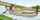
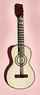

English - Kannada Dictionary
ಇಂಗ್ಲಿಷ್ - ಕನ್ನಡ ನಿಘಂಟು
- ಇಂಗ್ಲೀಷ್ ವಮಾಲೆಯ ಏಳನೆಯ ಅಕ್ಷರ.
- (ಸಂಗೀತ)
- ಪಂಚಮಿ; ಇಂಗ್ಲೀಷ್ ಸ್ವರಗ್ರಾಮದಲ್ಲಿ ಐದನೆಯ ಸ್ವರ (“ಪ”).
- ಅದಕ್ಕೆ ಸಂವಾದಿಯಾದ ಆಧಾರ ಸ್ವರ: ಪಂಚಮಿ ಶ್ರುತಿ.
- gauss.
- giga.
- gravitational constant.
- (ಅಮೆರಿಕನ್ ಪ್ರಯೋಗ, ಅಶಿಷ್ಟ) ಸಾವಿರ ಡಾಲರ್ಗಳು ಯಾ ಪೌಂಡ್ಗಳು
- gelding.
- gram(s).
- acceleration due to gravity.
- gravity.
(ಅಮೆರಿಕನ್ ಪ್ರಯೋಗ) Georgia.
(ರಸಾಯನವಿಜ್ಞಾನ) gallium.
(ಅಮೆರಿಕನ್ ಪ್ರಯೋಗ) Georgia.
(ಆಡುಮಾತು) (ವೃಥಾ) ಮಾತು; ಹರಟೆ; ಗಪ್ಪಿ.
- gift of the gab
- ವಾಕ್ಶಕ್ತಿ;ಭಾಷಣಶಕ್ತಿ; ವಾಕ್ಪಟುತ್ವ; ವಾಗ್ಮಿತೆ; ಮಾತನಾಡುವ ಶಕ್ತಿ;
- ವಾಚಾಳತೆ; ಮಾತಾಳಿತನ; ಹರಟೆ ಮಲ್ಲತನ.
- stop your gab ಹರಟೆ ನಿಲ್ಲಿಸು; ಬಾಯಿಮುಚ್ಚು; ಮಾತು ಸಾಕುಮಾಡು.
- ಗಾಬರ್ಡೀನ್:
- ಮುಖ್ಯವಾಗಿ ಉಣ್ಣೆಯ ಯಾ ಹತ್ತಿಯ, ಮೂಲೆ ನೆಯ್ಗೆಯ, ನುಣುಪಾದ ಗಟ್ಟಿ ಬಟ್ಟೆ.
- ಆ ಬಟ್ಟೆಯಿಂದ ತಯಾರಿಸಿದ ಉಡುಪು.
- ಮಳೆಯಂಗಿಗಳನ್ನು ಮಾಡಲು ಬಳಸುವ ಬಟ್ಟೆ, ಅರಿವೆ.
ಹರಟೆಮಲ್ಲ ಯಾ ಹರಟೆಮಲ್ಲಿ; ಬಾಯಿಬಡುಕ ಯಾ ಬಾಯಿಬಡುಕಿ.
- ಲೊಟಗುಟ್ಟು; ಬಡಬಡಿಸು; ಬಡಬಡನೆ ಅರ್ಥವಾಗದಂತೆ ಮಾತನಾಡು ( ಅಕರ್ಮಕ ಕ್ರಿಯಾಪದ ಸಹ.)
- ಬೇಗಬೇಗ ಗಟ್ಟಿಯಾಗಿ ಓದು ಯಾ ಮಾತನಾಡು.
(ಮುಖ್ಯವಾಗಿ ಓದುವಾಗ) ಗಟ್ಟಿಯಾಗಿ ಬೇಗಬೇಗನೆ ಓದು.
ಬಡಬಡಿಕೆ; ಲೊಟಗುಟ್ಟುವಿಕೆ; ಅರ್ಥವಾಗದಂತೆ ಬಡಬಡನೆ ಮಾತನಾಡುವುದು.
ಅರ್ಥವಾಗದಂತೆ ಬಡಬಡನೆ ಮಾತನಾಡುವವ.
(ಭೂವಿಜ್ಞಾನ) ಗ್ರನೈಟ್ ಮತ್ತು ಡಾಲರೈಟ್ಗಳನ್ನು ಹೋಲುವ, ಒಂದು ತೆರನ ಪ್ರತ್ಯಾಮ್ಲೀಯ ಅಗ್ನಿಶಿಲೆ.
(ಭೂವಿಜ್ಞಾನ) ಗಾಬ್ೋ ಶಿಲೆಯ ಯಾ ಅದಕ್ಕೆ ಸಂಬಂಧಿಸಿದ.
ಗಾಬ್ರಾಯ್ಡ್; ಗಾಬ್ರಾಭ; ಗ್ರಬ್ರೋ ಶಿಲೆಯನ್ನು ಹೋಲುವ.
(ಆಡುಮಾತು) ವಾಚಾಳಿಯಾದ; ಮಾತಾಳಿಯಾದ; ಹರಟೆಮಲ್ಲನಾದ.
(ಚರಿತ್ರೆ) ತೆರಿಗೆ; ಕರ (ಸಾಮಾನ್ಯವಾಗಿ ವಿದೇಶೀ ತೆರಿಗೆ, ಮುಖ್ಯವಾಗಿ ಹ್ರಾನ್ಸಿನ ಕ್ರಾಂತಿಪೂರ್ವ ಕಾಲದ ಉಪ್ಪಿನ ತೆರಿಗೆ).
- (ಚರಿತ್ರೆ) ಕಪನಿ; ಮೇಲುದಗಲೆ (ಮುಖ್ಯವಾಗಿ ಯೆಹೂದ್ಯರೂ ಭಿಕ್ಷುಕರೂ ಹಾಕಿಕೊಳ್ಳುವ, ಸಡಿಲವಾಗಿಯೂ ಉದ್ದವಾಗಿಯೂ ಇರುವ, ಒರಟು ಬಟ್ಟೆಯ ಮೇಲುಡುಪು).
- gabardine ಪದದ ರೂಪಾಂತರ.
- ಗಟ್ಟಿ ಹುರಿಯ ಬಟ್ಟೆ.
- ಉಡುಪು; ಹೊದಿಕೆ; ಕವಚ; (ಮೈಗೆ) ರಕ್ಷಣೆ.
(ಅಮೆರಿಕನ್ ಪ್ರಯೋಗ) (ಅಶಿಷ್ಟ)
- ಹರಟೆ ಗುಂಪು; ಮಾತಿಗಾಗಿ ಸೇರಿದ ಕೂಟ.
- ದೀರ್ಘ ಸಂಭಾಷಣೆ; ಬಹಳ ಕಾಲ ಎಳೆದ ಸಂಭಾಷಣೆ, ಮಾತುಕತೆ, ಸಂಭಾಷಣಾಕೂಟ.
ಹೊದರುಕಡ್ಡಿ, ಬೆತ್ತ, ಮೊದಲಾದವುಗಳಿಂದ ಯಾ ಕಬ್ಬಿಣದ ಪಟ್ಟಿಗಳಿಂದ ಗೆರಸೆಯಂತೆ ಹೆಣೆದು, ಮಣುತುಂಬಿ, ಹಿಂದೆ ಕೋಟೆ ಮೊದಲಾದವುಗಳನ್ನು ಕಟ್ಟುವಲ್ಲಿ ಯಾ ಈಗ ಕಾಮಾಟಿ ಕೆಲಸಗಳಲ್ಲಿ ಬಳಸುವ ತೊಂಬೆ.
(ಮಣ್ಣು ತುಂಬಿದ) ತೊಂಬೆ(ಗಳ) ಸಾಲು.
- ಚಂದಾಯ; ಗೇಬಲು; ಇಪ್ಪಾರು ಚಾವಣಿಯ ಕೊನೆಯಲ್ಲಿರುವ ತ್ರಿಕೋನಾಕಾರದ ಭಾಗ.
- (ಕಿಟಕಿ ಯಾ ಬಾಗಿಲ ಮೇಲಿನ) ಗೇಬಲ್ (ಆಕಾರದ) – ಚಪ್ಪರ, ಚೆಜ್ಜ.
- = gable-end.
ಗೇಬಲ್ಲು – ಹಾಕಿದ, ಹೊದಿಸಿದ; ಗೇಬಲ್ಲಿನಿಂದ ಅಲಂಕರಿಸಿದ.
ಗೇಬಲ್ಲು ಗೋಡೆ; ತುದಿಯಲ್ಲಿ ಗೇಬಲ್ಲಿರುವ ಗೋಡೆ.
(ಸಾಮಾನ್ಯವಾಗಿ ಅಲಂಕಾರಕ್ಕಾಗಿ ಮಾಡಿದ) ಚಿಕ್ಕ ಗೇಬಲ್ಲು .
(ಪ್ರಾಚೀನ ಪ್ರಯೋಗ ಯಾ ಪ್ರಾಂತೀಯ ಪ್ರಯೋಗ) ತಿಳಿಗೇಡಿ; ಬೆಪ್ಪ; ಹೆಡ್ಡ; ಗಾಂಪ.
- ಅಲೆದಾಡು; ಅಂಡಲೆ; ಮನೆಮನೆ ತಿರುಗು; ತಿರುಗಾಡು; ಕೆಲಸವಿಲ್ಲದೆ ಸುತ್ತಾಡು; ತಿರಿದಾಡು.
- (ಸಾಮಾನ್ಯವಾಗಿ ವರ್ತಮಾನ ಕೃದಂತದಲ್ಲಿ ಪ್ರಯೋಗ) (ಸಸ್ಯಗಳ ವಿಷಯದಲ್ಲಿ) (ನೇರ ಹೋಗದೆ) ಅತ್ತಿತ್ತ ಹರಡು; ಆಕಡೆ ಈಕಡೆ ಹಬ್ಬು.
(ದನ ಅಟ್ಟಲು ಬಳಸುವ) ಚೂಪಾದ ಕೋಲು.
(up) on the gad ಸುತ್ತಾಟದಲ್ಲಿ; ಅಲೆದಾಟದಲ್ಲಿ; ಸುತ್ತುತ್ತ; ಅಲೆಯುತ್ತ.
- ಅಲೆಮಾರಿ; ಅಂಡಲೆಗ; ಹಾರುಗಾಲಿ; ಅಲೆದಾಡುವವನು,
- ಅಲಸ ವಿಲಾಸಿ; ಸೋಮಾರಿಯಾಗಿದ್ದುಕೊಂಡು ಭೋಗಜೀವನ ನಡೆಸುವವ.
ಅಲೆಮಾರಿಯಾದ; ಅಂಡಲೆಯುವ; ಸದಾ – ಅಲೆದಾಡುತ್ತಿರುವ, ತಿರುಗುತ್ತಿರುವ.
- (ಪ್ರಾಚೀನ ಪಾಲಸ್ಟೈನಿನ) ಗಡಾರಾ ಪಟಣದ.
- ಸಿಕ್ಕಾಪಟ್ಟೆ ನುಗ್ಗಾಟದ; ವಿಪರೀತ ಜನಜಂಗುಳಿ ಇರುವ.
- (ಚರಿತ್ರೆ)(ಭಾರತೀಯ ರಾಜರ) ಸಿಂಹಾಸನ; ಗದ್ದುಗೆ; ಗಾದಿ.
- ದೊರೆತನ; ರಾಜತ್ವ; ಆಳ್ವಿಕೆ.
- ತೊಣಚಿ; ದನಗಳನ್ನು ಕಚ್ಚುವ ನೊಣ.
- ಪೀಡಕ; ರಗಳೆಮಾರಿ; ಕಿತಾಪತಿ; ಕಾಟಗಾರ; ಉಪದ್ರವಕಾರಿ; ರೇಗಿಸುವವನು ಯಾ ಪೀಡಿಸುವವನು.
- ಉದ್ರೇಕ; ಅತ್ಯಾವೇಶ; ಕೆರಳಿಕೆ; ಹುಚ್ಚುಹುಚ್ಚು; ಯಾವುದೇ ಕಾರ್ಯಕ್ಕೆ ಹಠಾತ್ತಾಗಿ ಕೈಹಚ್ಚುವ ಪ್ರವೃತ್ತಿ.
(ಆಡುಮಾತು)
- ಯಂತ್ರೋಪಕರಣ; ಯಂತ್ರ ಸಲಕರಣೆ; ಯಂತ್ರ ಮೊದಲಾದವುಗಳಲ್ಲಿ ಅಳವಡಿಸಿರುವ ಒಂದು ಸಣ್ಣ ಉಪಕರಣ ಯಾ ಸಲಕರಣೆ.
- ಅನುಷಂಗ; ಅನುಬಂಧ; ಗೌಣವಾದ ಯಾ ಪ್ರಾಸಂಗಿಕವಾದ ವಸ್ತು ಯಾ ಸಾಧನ.
- ಯಂತ್ರಕ; ಯಂತ್ರವಿಶೇಷ; ಸಾಮಾನ್ಯವಾಗಿ ಚಿಕ್ಕ, ನವೀನ, ಚಿತ್ರವಿಚಿತ್ರ ಯಾಂತ್ರಿಕ ವಸ್ತು.
- (ಕೇವಲ) ಥಳಕುಪಳಕು ವಸ್ತು; ನಿರುಪಯುಕ್ತವಾದ, ಕೇವಲ ಆಲಂಕಾರಿಕವಾದ ಹಗುರ ಪೀಠೋಪಕರಣ, ಒಡವೆ, ಮೊದಲಾದವು.
ಯಂತ್ರಕನಿರ್ಮಾಪಕ; ಚಿಕ್ಕ, ನವೀನ ಯಂತ್ರಗಳನ್ನು ನಿರ್ಮಿಸುವವ ಯಾ ಬಳಸುವವ.
- ಸಣ್ಣಪುಟ್ಟ ಯಂತ್ರಗಳು; ಯಂತ್ರಕಗಳು.
- ಸಣ್ಣಪುಟ್ಟ ಯಂತ್ರಗಳ ಬಳಕೆ; ಯಂತ್ರಕ ಬಳಕೆ.
- ಯಂತ್ರದಂಥ; ಸಣ್ಣ ಯಂತ್ರದ ಲಕ್ಷಣಗಳುಳ್ಳ.
- ಸಣ್ಣಪುಟ್ಟ ಯಂತ್ರ (ಗಳನ್ನು) ಜೋಡಿಸಿದ; ಯಂತ್ರಕಗಳನ್ನು ಅಳವಡಿಸಿದ.
ವಿರಳಭಸ್ಮಧಾತುಗಳ ಸಿಲಿಕೇಟುಗಳನ್ನುಳ್ಳ ಕಪ್ಪು ಖನಿಜ.
ಪರಮಾಣುಸಂಖ್ಯೆ 64, ಪರಮಾಣು ತೂಕ 157.25 ಉಳ್ಳ, ಒಂದು ತ್ರಿವೇಲೆನ್ಸೀಯ ವಿರಳ ಭಸ್ಮಧಾತು, ಸಂಕೇತ Gd.
ಅಲಂಕಾರಕ್ಕಾಗಿ ಗೋಡೆ ಮೊದಲಾದವುಗಳ ಮೇಲೆ ಸಾಲಾಗಿ ಕೊರೆದು ಯಾ ಗಾರೆ ಮೊದಲಾದವುಗಳಿಂದ ಮಾಡಿದ ಹೊರ ಉಬ್ಬಿನ ತಿರುವುಗಳು.
(ಅಮೆರಿಕ ಹಾಗೂ ಯೂರೋಪಿನ ಉತ್ತರ ಭಾಗದ) ಸಿಹಿನೀರಿನ ಬಾತುಕೋಳಿ.
(ಪ್ರಮಾಣ, ಸಮರ್ಥನೆ, ಮೊದಲಾದವನ್ನು ಮಾಡುವಾಗ ಬಳಸುವ ಪದ) ದೇವರಾಣೆ(ಯಾಗಿ)!
ಗೇಲ್:
- ಸ್ಕಾಟ್ಲಂಡಿನ (ಐರ್ಲಂಡ್ ಮತ್ತು ಮಾನ್ ದ್ವೀಪದ) ಕೆಲ್ಟ್ ಕುಲದವನು.
- (ಪ್ರಾಚೀನ ಪ್ರಯೋಗ) ಐರ್ಲಂಡಿನ ಕೆಲ್ಟ್ ಕುಲದವನು.
- ಗೇಲ್ ಸಂಸ್ಕೃತಿ ಯಾ ನಾಗರಿಕತೆ.
- ಗೇಲ್ ಜನ; ಗೇಲ್ ಪ್ರಪಂಚ; ಗೇಲ್ ಸಮುದಾಯ.
ಗೇಲಿಕ್; ಸ್ಕಾಟ್ಲಂಡಿನ, ಐರ್ಲಂಡಿನ, ಮಾನ್ ದ್ವೀಪದ ಕೆಲ್ಟ್ ಜನರ ಯಾ ಅವರ ಭಾಷೆಯ.
ಸ್ಕಾಟ್ಲಂಡಿನ, ಐರ್ಲಂಡಿನ, ಮಾನ್ ದ್ವೀಪದ ಕೆಲ್ಟ್ ಜನರ ಭಾಷೆ.
ಕೆನೆ ಮತ್ತು ಐರಿಷ್ ವಿಸ್ಕಿ ಸೇರಿಸಿದ ಕಾಹಿ.
ಗೇಲ್ ನಾಡು; ಐರಿಷ್ ಭಾಷೆಯೇ ದೇಶಭಾಷೆಯಾಗಿರುವ. ಐರ್ಲಂಡಿನ ಒಂದು ಪ್ರದೇಶ.


ಠಕ್ಕು; ಮೋಸ; ವಂಚನೆ.
- blow the gaff (ಅಶಿಷ್ಟ)
- ಒಳಸಂಚನ್ನು ಹೊರಗೆಡವು; ಪಿತೂರಿ ಬಯಲು ಮಾಡು.
- ಗುಟ್ಟು ರಟ್ಟು ಮಾಡು; ರಹಸ್ಯ ಬಿಟ್ಟುಕೊಡು.
- stand the gaff (ಅಮೆರಿಕನ್ ಪ್ರಯೋಗ) (ಅಶಿಷ್ಟ) ಕಷ್ಟ ಸಹಿಸಿಕೊ; ತೊಂದರೆ, ಉಪಟಳ, ಟೀಕೆ, ಮೊದಲಾದವನ್ನು – ತಡೆದುಕೊ.

(ಬ್ರಿಟಿಷ್ ಪ್ರಯೋಗ)
- (ಪ್ರಾಚೀನ ಪ್ರಯೋಗ) (ಅಶಿಷ್ಟ)ಸಾರ್ವಜನಿಕ ವಿನೋದ ಸ್ಥಳ.
- ಕೆಳದರ್ಜೆಯ ಅಗ್ಗದ ನಾಟಕ ಶಾಲೆ ಯಾ ಸಂಗೀತ ಮಂದಿರ.
penny gaff = $^4$gaff(2).
- ತಪ್ಪು; ಪ್ರಮಾದ; ಅವಿವೇಕ; ಎಡವಟ್ಟು; ತಪ್ಪು ಹೆಜ್ಜೆ.
- ಅವಿವೇಕದ ಕೆಲಸ ಯಾ ವಿವೇಚನೆಯಿಲ್ಲದ ಮಾತು.

- ಹಿರಿಯ ಹಳ್ಳಿಗ; ಹಳ್ಳಿಯ ಹಿರಿಯ.
- ಮುದುಕ ಯಾ ಮುದಿಹಳ್ಳಿಗ.
- (ಮನುಷ್ಯ, ಅಧಿಕಾರ, ಮೊದಲಾದವುಗಳ ಹೆಸರುಗಳ ಹಿಂದೆ ಮರ್ಯಾದೆಯಾಗಿ ಸೇರಿಸುವ ಯಾ ಸಂಬೋಧನೆಯಲ್ಲಿ ಬಳಸುವ ಪದವಾಗಿ) ಯಜಮಾನ; ಗೌಡ.
- (ಆಡುಮಾತು) (ಬ್ರಿಟಿಷ್ ಪ್ರಯೋಗ) ತಂಡದ ನಾಯಕ; ಮುಖ್ಯ ಕೆಲಸಗಾರ; ಒಂದು ಗುಂಪಿನ ಯಾ ತಂಡದ ಮುಂದಾಳು, ಮುಖಂಡ, ನಾಯಕ.
- (ಆಡುಮಾತು) ಗಾಹರ್; ಸಿನಿಮಾ ಯಾ ಟೆಲಿವಿಷನ್ ನಿರ್ಮಾಣ ತಂಡದಲ್ಲಿನ ಪ್ರಧಾನ ವಿದ್ಯುತ್ ಕೆಲಸಗಾರ.
- ಬಾಯಿಗಿಡುಗು; ಬಾಯಿಗಿಡಿ; ಮಾತನಾಡದಂತೆ ಯಾ ಶಸ್ತ್ರಚಿಕಿತ್ಸೆಯಲ್ಲಿ ಚಿಕಿತ್ಸೆಯ ಸೌಲಭ್ಯಕ್ಕೆ ಬಾಯನ್ನು ತೆರೆದಿಡಲು ಬಾಯಿಗೆ ತುರುಕುವ ಪದಾರ್ಥ.
- (ಶಾಸನ ಸಭೆ) ಮಾತು ತಡೆತ; ವಾಕ್ಸ್ತಂಭನ; ಚರ್ಚೆ ಮುಗಿತ; ಚರ್ಚೆ ಸಾಕುಮಾಡಬೇಕೆಂಬ ತಡೆ, ಅಡ್ಡಿ.
- ಮುಕ್ತ ಭಾಷಣಕ್ಕೆ ತಡೆಮಾಡುವ ವಸ್ತು ಯಾ ಪರಿಸ್ಠಿತಿ.
- ನಟನ ಪ್ರಕ್ಷಿಪ್ತಗಳು; ನಾಟಕ ಸಂಭಾಷಣೆಯಲ್ಲಿ ನಟನು ಸೇರಿಸುವ ಮಾತುಗಳು.
- (ನಾಟಕಶಾಲೆ) (ಮುಖ್ಯವಾಗಿ ನಾಟಕ, ಸಂಗೀತ ಶಾಲೆ, ಮನರಂಜನೆ), ಮೊದಲಾದವುಗಳ ನಡುವೆ ಮೊದಲೇ ಸಿದ್ಧಪಡಿಸಿದ ಒಡ್ಡಿದ (ಸೇರಿಸಿದ) ನಕಲಿ ಶ್ಯ; ಹಾಸ್ಯ ಪ್ರಸಂಗ.
- ತಮಾಷೆ; ಗೇಲಿ.
- ತಮಾಷೆಯ ಕಾರ್ಯ ಯಾ ಸಂದರ್ಭ.
- ಸುಳ್ಳು; ಮೋಸ; ವಂಚನೆ.
(ವರ್ತಮಾನ ಕೃದಂತ gagging ಭೂತರೂಪ ಮತ್ತು ಭೂತಕೃದಂತ gagged.)
- ಬಾಯಿ ಗಿಡಿ; ಬಾಯಿಕಟ್ಟು; ಮಾತಾಡದಂತೆ ಯಾ ಬಾಯಿ ತೆರೆದಿಡುವಂತೆ ಯಾವುದೇ ಪದಾರ್ಥವನ್ನು ಬಾಯಿಗೆ ತುರುಕು.
- ಬಾಯಿ ಮುಚ್ಚಿಸು; ಮಾತನಾಡದಂತೆ ಮಾಡು; ವಾಕ್ ಸ್ವಾತಂತ್ರಕ್ಕೆ ತಡೆಯೊಡ್ಡು.
- (ನಟನ ವಿಷಯದಲ್ಲಿ, ನಾಟಕ ಸಂಭಾಷಣೆಯಲ್ಲಿ) ಮಧ್ಯೆ ಮಾತು ಸೇರಿಸು.
- ಕುದುರೆಗೆ ಗಿಡುಗು ಕಡಿವಾಣ ಹಾಕು.
- ವಂಚಿಸು; ಮೋಸಮಾಡು.
- ಗಂಟಲು ಕಟ್ಟಿಸು.
- ವಾಂತಿ ಮಾಡಿಸು.
- (ನಾಟಕ ಮೊದಲಾದ ಮನರಂಜನೆಯ ನಡುವೆ) ನಕಲಿ ಸೇರಿಸು; ಹಾಸ್ಯ ಸೇರಿಸು; ಹಾಸ್ಯ ಪ್ರಸಂಗ ಜೋಡಿಸು; ವಿನೋದವನ್ನು ಗಿಡುಗು.
- ವಂಚನೆಯನ್ನು ಅಭ್ಯಾಸಮಾಡು; ಮೋಸ ಮಾಡುವುದನ್ನು ಕಲಿತುಕೊ.
- ಗಂಟಲು ಕಟ್ಟು ಯಾ ಕಟ್ಟಿಕೊ.
- ವಾಂತಿ ಮಾಡು.
- (ಅಶಿಷ್ಟ) ಮೊದ್ದ; ಮಂಕ; ಪೆದ್ದ; ಬೆಪ್ಪ; ಬೆಪ್ಪು ಮೋರೆಯ.
- ಅರಳು ಮರಳಿನ; ಮಂಕುಬುದ್ಧಿಯ.
- ಪೆದ್ದು ಉತ್ಸಾಹದ; ಹುಚ್ಚುಹುಚ್ಚಾಗಿ ಆಸಕ್ತಿ ತೋರಿಸುವ: had been so gaga about him at first ಮೊಟ್ಟಮೊದಲು ಅವನ ವಿಷಯವಾಗಿ ಅತಿಯಾದ ಹುಚ್ಚು ಉತ್ಸಾಹ ತೋರಿಸಿದ್ದ(ಳು).
(ಕುದುರೆಯನ್ನು ಪಳಗಿಸಲು ಹಾಕುವ ಬಲವಾದ) ಗಿಡುಗು ಕಡಿವಾಣ.
- ಒತ್ತೆ; ಓಲು; ಅಡವು; ಗಿರವಿ; ಈಡು; ಹೊಣೆ.
- ಹೋರಾಟಕ್ಕೆ ಸವಾಲು; ಕಾಳಗಕ್ಕೆ ಆಹ್ವಾನ.
- (ಸವಾಲಿಗಾಗಿ ಎಸೆದ ಕೈಗವುಸು ಮೊದಲಾದ) ಪಣ; ಪೈಜೆ.
(ಪ್ರಾಚೀನ ಪ್ರಯೋಗ) ಗಿರವಿಯಿಡು; ಒತ್ತೆ ಇಡು; ಓಲು ಕೊಡು; ಈಡುಮಾಡು.
- (ಬಾತಿನ) ಹಿಂಡು; ಗುಂಪು.
- (ಆಡುಮಾತು) ಜನರ ಗುಂಪು; ಜನಗಳ ಸಮೂಹ.
(ಬಾತಿನ ವಿಷಯದಲ್ಲಿ) ಕ್ಲಕ್ಕಿಸು; ಕ್ಲಕ್ ಕ್ಲಕ್ ಅನ್ನು.
ಗಿಡುಗು ವಿನೋದಕರ್ತ; ನಾಟಕ ಮೊದಲಾದವುಗಳಿಗೆ ತಮಾಷೆ ಪ್ರಸಂಗಗಳನ್ನು ಬರೆಯುವವ.
(ಕಡಿವಾಣವನ್ನು ಮತ್ತಷ್ಟು ಬಲವಾಗಿ ಮಾಡುವ) ಬಿಗಿ ಲಗಾಮು.
- ಉಲ್ಲಾಸ; ಹರ್ಷ; ಗೆಲವು; ನಲಿವು; ನಲಿದಾಟ; ಖುಷಿ.
- (ಸಾಮಾನ್ಯವಾಗಿ ಬಹುವಚನ ದಲ್ಲಿ) ವಿನೋದ ಕೇಳಿ; ಕ್ೀಡೆ; ವಿಲಾಸ.
- ಬೆಡಗು; ಥಳಕು.
- ಸೊಗಸುಗಾರಿಕೆ; ಶಿಸ್ತು(ಗಾರಿಕೆ); ಷೋಕಿ; ಠೀಕಾದ ಉಡುಪು.
gaiety of nations ಜನಸ್ೋಮದ ಹರ್ಹೋಲ್ಲಾಸ; ಅಪಾರ ಜನತೆಯ ನಲಿವು: that stroke of death, which has eclipsed the gaiety of nations ಸಾವಿನ ಆ ಪ್ರಹಾರ, ಜನಸ್ತೋಮದ ಹರ್ಷೋಲ್ಲಾಸವನ್ನು ಮರೆ ಮಾಡಿತು.
ಗೇಲಾರ್ಡಿಯ ಕುಲದ, ಆಲಂಕಾರಿಕ ಪುಷ್ಪ ಬಿಡುವ ಒಂದು ಸಸ್ಯ.
- ಖುಷಿಯಾಗಿ; ಉಲ್ಲಾಸದಿಂದ; ಗೆಲವಿನಿಂದ.
- ನಿರಾತಂಕವಾಗಿ; ನಿಶ್ಚಿಂತೆಯಿಂದ.
- ಹಗುರ ಮನಸ್ಸಿನಿಂದ.
- ವಿನೋದವಾಗಿ; ಲೀಲೆಯಂತೆ; ಕ್ರೀಡೆಯಂತೆ.
- (ಉಡುಪು ಮೊದಲಾದವುಗಳ ವಿಷಯದಲ್ಲಿ)
- ಬೆಡಗಿನಿಂದ; ಆಡಂಬರದಿಂದ; ಷೋಕಿಯಾಗಿ; ಸೊಗಸುಗಾರಿಕೆಯಿಂದ.
- ಹೊಳೆಯುತ್ತ; ಥಳಥಳಿಸುತ್ತ; ಉಜ್ವಲ ವರ್ಣದಿಂದ ಕೂಡಿ.
- ತುಂಬ; ಸಾಕಷ್ಟು ಹೆಚ್ಚಿನ ಪ್ರಮಾಣದಲ್ಲಿ.
- (ಆಸ್ತಿ ಮೊದಲಾದವುಗಳ) ಅಭಿವೃದ್ಧಿ; ಹೆಚ್ಚಳ.
- ಲಾಭ; ಸಂಪಾದನೆ; ಪಡಪು; ಹಾಯಿದೆ; ನಫೆ.
- ಮುಂದುವರೆತ; ಮುಂದುವರೆಯುವುದು.
- ಉತ್ತಮಿಕೆ; ಉತ್ತಮ ಸ್ಥಿತಿಗೆ ಬರುವುದು.
- ಐಶ್ವರ್ಯ ಸಂಪಾದನೆ; ಸಿರಿಗಳಿಕೆ; ಹಣ ಮೊದಲಾದವುಗಳ ಗಳಿಕೆ.
- (ಬಹುವಚನದಲ್ಲಿ) ಸಂಪಾದನೆ; ಗಳಿಕೆ; ಸಂಬಳ ಸಾರಿಗೆ; ವರಮಾನ; ಆದಾಯ; ವ್ಯಾಪಾರ ಮೊದಲಾದವುಗಳಿಂದ ಸಂಪಾದಿಸಿದ, ಜೂಜಿನಲ್ಲಿ ಗೆದ್ದ – ಹಣ, ದುಡ್ಡು.
- (ಮೊತ್ತದಲ್ಲಿ) ವೃದ್ಧಿ; ಹೆಚ್ಚಳ; ಏರಿಕೆ
- (ಇಲೆಕ್ಟ್ರಾನಿಕ್ಸ್)
- ಲಾಭ; ಹೆಚ್ಚಳ; ಆಧಿಕ್ಯ; ಅಧಿಕಾಂಶ; ವಿದ್ಯುಚ್ಛಕ್ತಿ ಮೊದಲಾದವುಗಳ ಹೆಚ್ಚಳದ ಪ್ರಮಾಣ (ಸಾಮಾನ್ಯವಾಗಿ ಲಾಗರಿದಮ್ನಲ್ಲಿ ವ್ಯಕ್ತಪಡಿಸುವುದು).
- ಇದರ ಲಾಗರಿದಮ್.
- (ಅಪೇಕ್ಷಿಸಿದ ಯಾ ಅಪೇಕ್ಷಣೀಯ ವಸ್ತುವನ್ನು) ಪಡೆ; ಹೊಂದು; ಗಳಿಸು; ಸಂಪಾದಿಸು; gain advantage, recognition, one’s ends ಲಾಭ, ಮನ್ನಣೆ, ತನ್ನ ಗುರಿ – ಪಡೆ.
- ಲಾಭಗಳಿಸು; ನಫೆ ಹೊಂದು; ಪ್ರಯೋಜನ ಪಡೆ.
- (ಯಾವುದರಲ್ಲಾದರೂ) ಅನುಕೂಲ ಹೊಂದು; ಅಭಿವೃದ್ಧಿ ಪಡೆ.
- (ತಾರತಮ್ಯದಿಂದ, ಇನ್ನೊಬ್ಬನಿಗಿಂತ) ಮೇಲೆನಿಸಿಕೊ; ಮೇಲಾಗು; ಹೆಚ್ಚಳಿಕೆ ಪಡೆ.
- ಆಧಿಕ್ಯ ಹೊಂದು; ಅಧಿಕವಾಗು; ಹೆಚ್ಚಿನದಾಗಿ, ಸೇರಿಕೆಯಾಗಿ – ಪಡೆ, ಹೊಂದು: gain momentum, weight ಆವೇಗ, ತೂಕ – ಪಡೆ.
- (ಸಮುದ್ರ, ಶತ್ರು, ಮೊದಲಾದವುಗಳು ಆಕ್ರಮಿಸಿದ ಜಮೀನು, ಪ್ರದೇಶ, ಮೊದಲಾದವನ್ನು) ಬಿಡಿಸಿಕೊ; ಹಿಂದಕ್ಕೆ ಪಡೆ.
- (ಹೋರಾಟ, ಸ್ಪರ್ಧೆ, ವಿವಾದ, ಮೊದಲಾದವುಗಳಲ್ಲಿ) ಜಯಗಳಿಸು; ಗೆಲ್ಲು.
- ಒಲಿಸಿಕೊ; ಒಡಂಬಡಿಸು; ತನ್ನ ಕಡೆಗೆ, ಅಭಿಪ್ರಾಯಕ್ಕೆ ಬರುವಂತೆ ಮಾಡಿಕೊ; ಒಪ್ಪುವಂತೆ ಮಾಡು.
- (ಉದ್ದೇಶಿಸಿದ ಸ್ಥಳವನ್ನು) ಸೇರು; ಮುಟ್ಟು; ತಲಪು.
- (ಸಮುದ್ರದ ವಿಷಯದಲ್ಲಿ) ನೆಲವನ್ನು ಆಕ್ರಮಿಸು.
- (ಗಡಿಯಾರದ ವಿಷಯದಲ್ಲಿ) (ನಿರ್ದಿಷ್ಟ ಕಾಲ) ಮುಂದಾಗು; (ನಿಜವಾದ ಸಮಯಕ್ಕಿಂತ) ಮುಂದೆ ಓಡು.
- ಲಾಭ – ಗಳಿಸು, ಪಡೆ.
- ಪ್ರಯೋಜನ – ಹೊಂದು, ಪಡೆ.
- (ಯಾವುದರಲ್ಲೇ) ಸುಧಾರಿಸು; ಮುಂದೆ ಬರು; ಮುಂದುವರಿ: to gain in health after an illness ರೋಗ ವಾಸಿಯಾದ ಮೇಲೆ ಆರೋಗ್ಯ ಸುಧಾರಿಸು.
- (ಗಡಿಯಾರದ ವಿಷಯದಲ್ಲಿ) ಮುಂದೆ ಹೋಗು; ನಿಜವಾದ ಸಮಯಕ್ಕಿಂತ ಹೆಚ್ಚಿನ ಸಮಯ ತೋರಿಸು: gain by an hour a day ದಿನಕ್ಕೊಂದು ಘಂಟೆ ಮುಂದೆ ಹೋಗುತ್ತದೆ.
- (ಹೋಲಿಕೆಯಿಂದ ಯಾ ವ್ಯತ್ಯಾಸದಿಂದ) ಮೇಲಾಗು; ಉತ್ತಮವಾಗು; ಅತಿಶಯಿಸು.
- gain face ತನ್ನ ವರ್ಚಸ್ಸು, ಕೀರ್ತಿ, ಅಧಿಕಾರ, ಅಂತಸ್ತು, ಮೊದಲಾದವನ್ನು – ಹೆಚ್ಚಿಸಿಕೊ, ಸ್ಥಾಪಿಸಿಕೊ: a petty official trying to gain face by treating his subordinates arrogantly ತನ್ನ ಕೈಕೆಳಗಿನವರನ್ನು ಸೊಕ್ಕಿನಿಂದ ಕಾಣುತ್ತಾ ತನ್ನ ಅಂತಸ್ತನ್ನು ಹೆಚ್ಚಿಸಿಕೊಳ್ಳಲು ಯತ್ನಿಸುತ್ತಿರುವ ಕೆಳಗಣ ಅಧಿಕಾರಿ.
- gain $^1$ground.
- gain ground (up)on(ತಾನು ಬೆನ್ನಟ್ಟಿರುವ ವ್ಯಕ್ತಿ ಯಾ ವಸ್ತುವನ್ನು) ಸಮೀಪಿಸು.
- gain the ear of ಸುಮುಖವಾಗಿ ಕೇಳುವಂತೆ (ಒಬ್ಬನನ್ನು) ಒಲಿಸಿಕೊ; ಹೇಳಿದುದಕ್ಕೆ ಕಿವಿಗೊಡುವಂತೆ ಮಾಡಿಕೊ.
- gain the upper hand ಮೇಲುಗೈ ಪಡೆ, ಸಾಧಿಸು.
- gain time (ನೆಪ ಹೇಳುತ್ತಾ ಯಾ ನಿಧಾನೋಪಾಯದಿಂದ) ಕಾಲತಳ್ಳು; ಕಾಲಕಳೆ; ಕಾಲಹರಣ ಮಾಡು.
- gain upon ಒಬ್ಬನ ಒಲವು, ಅನುಗ್ರಹ, ದಯೆ, ಕೃಪೆ – ಸಂಪಾದಿಸು.
- ಸಂಪಾದಿಸಬಲ್ಲ; ಪಡೆಯಬಲ್ಲ; ಗಳಿಸಬಲ್ಲ; ಸಾಧಿಸಬಲ್ಲ: greatness in art is not a teachable nor gainable thing ಕಲಾಪ್ರೌಢಿಮೆಯು ಕಲಿಸಬಲ್ಲ ಇಲ್ಲವೆ ಗಳಿಸಬಲ್ಲ ವಿಷಯವಲ್ಲ.
- ಒಲಿಸಿಕೊಳ್ಳಬಲ್ಲ.
- (ಪ್ರಾಚೀನ ಪ್ರಯೋಗ) (ಜಮೀನಿನ ವಿಷಯದಲ್ಲಿ) ಕೃಷಿ ಸಾಧ್ಯ; ಕೃಷಿ ಮಾಡಲು – ಸಾಧ್ಯವಾದ, ಸುಲಭವಾದ.
ಲಾಭದಾರ; ಲಾಭ ಪಡೆಯುವವನು; ನಫೆದಾರ; ಪ್ರಯೋಜನ ಹೊಂದುವವನು; ಒಲವು, ಅನುಗ್ರಹ, ಮೊದಲಾದವನ್ನು ಹೊಂದುವವನು.
- ಲಾಭದಾಯಕ; ಆದಾಯಕರ.
- ಲಾಭದೊಲವಿನ; ಲಾಭದೃಷ್ಟಿಯ; ಪ್ರತಿಫಲಾಕಾಂಕ್ಷೆಯ; ಪ್ರಯೋಜನ ದೃಷ್ಟಿಯ; ಲಾಭ ಯಾ ಪ್ರಯೋಜನವನ್ನು ಗಳಿಸುವುದರಲ್ಲಿ ಕಟ್ಟಾಸೆಯಿರುವ.
- (ಕೆಲಸ, ಉದ್ಯೋಗದ ವಿಷಯದಲ್ಲಿ) ವೇತನಸಹಿತವಾದ; ಸಂಬಳ ಯಾ ಪ್ರತಿಫಲದಿಂದ ಕೂಡಿದ.
- (ವಿರಳ ಪ್ರಯೋಗ) ಲಾಭಾಕಾಂಕ್ಷೆಯ.
- ಲಾಭದಾಯಕವಾಗಿ.
- ಪ್ರಯೋಜನಕರವಾಗಿ.
- ಪ್ರತಿಫಲದಿಂದ ಕೂಡಿ.
- ಲಾಭದಾಯಕತೆ.
- ಪ್ರಯೋಜನಕರವಾಗಿರುವಿಕೆ.
- ಪ್ರತಿಫಲದಿಂದ ಕೂಡಿರುವಿಕೆ.
(ಬಹುವಚನ) ಗಳಿಕೆ; ಸಂಪಾದನೆ.
(ಪ್ರಾಚೀನ ಪ್ರಯೋಗ ಯಾ ಸಾಹಿತ್ಯಕ).
- ಅಲ್ಲವೆನ್ನು; ಇಲ್ಲವೆನ್ನು; ನಿರಾಕರಿಸು.
- ವಿರುದ್ಧವಾಗಿ ಹೇಳು, ಪ್ರತಿಪಾದಿಸು; ಪ್ರತಿಹೇಳು; ಎದುರಿಸು.
- ವಿರೋಧಿ; ಪ್ರತಿವಾದಿ; ವಿರುದ್ಧವಾಗಿ ಹೇಳುವವನು.
- ಅಲ್ಲವೆನ್ನುವವ; ಅಲ್ಲಗಳೆಕ; ನಿರಾಕರ್ತ; ಇಲ್ಲವೆಂದು ಹೇಳುವವನು; ನಿರಾಕರಿಸುವವನು.
(ಕಾವ್ಯಪ್ರಯೋಗ) against (ಎಂಬುದರ ಸಂಕ್ಷಿಪ್ತ).
- ನಡಗೆ; ನಡೆ; ಗತಿ; ಗಮನ; ನಡೆಯುವ ಭಂಗಿ, ರೀತಿ.
- ಮುನ್ನಡಗೆ; ಓಡುವವ, ಕುದುರೆ, ವಾಹನ, ಮೊದಲಾದವುಗಳು ಮುಂದಕ್ಕೆ ಚಲಿಸುವ ರೀತಿ.
go one’s (or one’s own) gait ತನ್ನಿಷ್ಟ ಬಂದ ದಾರಿ ಹಿಡಿ; ತನ್ನ ದಾರಿ ತಾನು ಹಿಡಿ; ತನಗೆ ತೋಚಿದಂತೆ, ಅನಿಸಿದಂತೆ – ನಡೆದುಕೊ, ವರ್ತಿಸು.
ಕಣಕಾಲ ಕಾಪು; ಕಣಕಾಲಿಗೆ, ಕಾಲಿನ ಹರಡಿಗೆ, ಯಂತ್ರದ ಭಾಗಕ್ಕೆ ಸುತ್ತುವ ಬಟ್ಟೆಯ ಯಾ ತೊಗಲಿನ ಪಟ್ಟಿ.
ಕಣಕಾಲ ಕಾಪು ಕಟ್ಟಿದ ಯಾ ತೊಟ್ಟ.
Galatians (ಬೈಬಲಿನ ಹೊಸ ಒಡಂಬಡಿಕೆ).
(ಭೌತವಿಜ್ಞಾನ) ಗುರುತ್ವದ ಫಲವಾಗಿ ಉಂಟಾಗುವ ವೇಗೋತ್ಕರ್ಷದ ಮಾನ, ಸೆಕೆಂಡ್ಗೆ ಒಂದು ಸೆಂಟಿಮೀಟರು.
gallon(s)
- (ಸಾಮಾನ್ಯವಾಗಿ ವಿಶೇಷಣವಾಗಿ ಪ್ರಯೋಗ) ಉತ್ಸವ; ಹಬ್ಬ; ಸಮಾರಂಭ; ವೈಭವ: gala day ಉತ್ಸವ ದಿನ. gala dress ಹಬ್ಬದುಡಿಗೆ; ಸೊಗಸಿನ ಉಡುಪು.
- (ಬ್ರಿಟಿಷ್ ಪ್ರಯೋಗ) ಕ್ರೀಡಾ ಸಮಾರಂಭ; ಕ್ರೀಡೋತ್ಸವ; ಆಟೋಟಗಳಿಗಾಗಿ, ಮುಖ್ಯವಾಗಿ ಈಜಾಟಕ್ಕಾಗಿ, ಸೇರಿದ ಸಂತೋಷ ಕೂಟ.
ಕ್ಷೀರಚೋದಕ; ಹಾಲಿನ ಹರಿವನ್ನು ಪ್ರಚೋದಿಸುವ.
ಕ್ಷೀರಚೋದಕ; ಹಾಲಿನ ಹರಿವನ್ನು ಪ್ರಚೋದಿಸುವ ವಸ್ತು.
- ಕ್ಷೀರಪಥದ; ಆಕಾಶಗಂಗೆಯ.
- ಗಾಲಕ್ಸಿಯ; ಗಾಲಕ್ಸಿಗಳ ಯಾ ಅವುಗಳಿಗೆ ಸಂಬಂಧಿಸಿದ.
(ವೈದ್ಯಶಾಸ್ತ್ರಮೊದಲಾದವು) ಕ್ಷೈರ, ಹಾಲು, ಕ್ಷೀರ ಎಂಬರ್ಥದಲ್ಲಿ ಬಳಸುವ ಸಮಾಸ ಪೂರ್ವಪದ.
ಗಲೇಗೋ; ಗಲೇಗೋ ಕುಲದ, ದೊಡ್ಡ ಕಣ್ಣುಗಳು ಮತ್ತು ಕಿವಿಗಳು ಹಾಗೂ ಉದ್ದ ಬಾಲವೂ ಇರುವ, ಮರ ಹತ್ತುವ, ದಕ್ಷಿಣ ಆಫಿಕದ ಕಾಡುಪಾಪ.
- (ಆಸ್ಟ್ರೇಲಿಯ) ಗುಲಾಬಿ ಬಣ್ಣದ ಎದೆಯ, ಬೂದುಬೆನ್ನಿನ, ಜುಟ್ಟುಗಿಳಿ.
- (ಅಶಿಷ್ಟ) ದಡ್ಡ; ಗುಗ್ಗು; ಪೆದ್ದ.
ಸಜ್ಜನ; ಸಭ್ಯ; ಉದಾತ್ತ ಗುಣ, ಪ್ರಾಮಾಣಿಕತೆ, ಸಭ್ಯತೆ, ಮೊದಲಾದ ಶ್ರೇಷ್ಠ ಗುಣಗಳುಳ್ಳ ವ್ಯಕ್ತಿ.
ಗಾಲಂಟೀನ್; ಮೂಳೆಗಳನ್ನು ತೆಗೆದು, ಮಸಾಲೆ ತುಂಬಿಸಿ ಕರಿದು, ತಣ್ಣಗೆ (ಮಾಡಿ) ಬಡಿಸುವ ಬಿಳಿಮಾಂಸ.
(ಚರಿತ್ರೆ) ನೆರಳು ಬೊಂಬೆಯಾಟ; ಪರದೆಯ ಮೇಲೆ ಬೊಂಬೆಗಳ ನೆರಳು ಬೀಳಿಸಿ ತೋರಿಸುವ ಮೂಕಾಭಿನಯದ ಆಟ.
- (Galaxy) (ಖಗೋಳ ವಿಜ್ಞಾನ)
- ಗಾಲಕ್ಸಿ; ಆಕಾಶಗಂಗೆ ಗಾಲಕ್ಸಿ; ರಾತ್ರಿಯ ವೇಳೆ ಆಕಾಶದಲ್ಲಿ ಹಾಲು ಚೆಲ್ಲಿರುವಂತೆ ಕಾಣುವ ಆಕಾಶಗಂಗೆಯಲ್ಲಿರುವ ಕೋಟ್ಯಂತರ ನಕ್ಷತ್ರಗಳನ್ನೂ ಆಕಾಶದಲ್ಲಿ ಕಾಣಿಸುವ ಇತರ ನಕ್ಷತ್ರಗಳನ್ನೂ ನಮ್ಮ ಸೌರವ್ಯೂಹವನ್ನೂ ಒಳಗೊಂಡ ಒಟ್ಟಿಲು.
- ಗಾಲಕ್ಸಿ; ನಮ್ಮ ಆಕಾಶಗಂಗೆ ಗಾಲಕ್ಸಿಯ ಹೊರಗಡೆ ದೂರದಲ್ಲಿ(ರುವ), ದೂರದರ್ಶಕದಲ್ಲಿ ಅನೇಕವೇಳೆ ನೀಹಾರಿಕೆಗಳಂತೆ ಕಾಣುವ ಆಕಾಶಗಂಗೆ ಗಾಲಕ್ಸಿಯಂಥದೇ ಆದ ಇತರ ತಾರಾ ಸಮೂಹಗಳು.
- ತಾರಾಗಣ; ತೇಜೋಗಣ; ಸುಂದರಿಯರು, ಪ್ರತಿಭಾವಂತರು, ಮೊದಲಾದವರ ಉಜ್ವಲ ಗುಂಪು.
(ಪರ್ಷಿಯಾ ದೇಶದ) ಒಂದು ಜಾತಿಯ ಮರದ ಹಾಲು ಗುಗ್ಗುಲ.
- ಬಿರುಗಾಳಿ; ಚಂಡಮಾರುತ; ಕಡುಗಾಳಿ; ಮುಖ್ಯವಾಗಿ ಬೋಹೋರ್ಟ್ ಮಾನದಲ್ಲಿ ಘಂಟೆಗೆ 32ರಿಂದ 54 ಮೈಲಿ ವೇಗದಲ್ಲಿ ಬೀಸುವ ಗಾಳಿ.
- (ನೌಕಾಯಾನ) ಬಿರುಗಾಳಿ; ಚಂಡಮಾರುತ.
- (ಕಾವ್ಯಪ್ರಯೋಗ) ನಸುಗಾಳಿ; ಮಂದಮಾರುತ.
- (ಮುಖ್ಯವಾಗಿ) ನಗುವಿನ ಸ್ಫೋಟ; ಭಾರಿ ನಗು; ಕೇಕೆಯ ನಗು.
(ಬ್ರಿಟಿಷ್ ಪ್ರಯೋಗ) (ಕಾಲಕಾಲಕ್ಕೆ ಕೊಡಬೇಕಾದ) ಬಾಡಿಗೆ.
hanging gale ಬಾಡಿಗೆಯ ಬಾಕಿ.
(ಸಸ್ಯವಿಜ್ಞಾನಮತ್ತು ಪ್ರಾಣಿವಿಜ್ಞಾನ)(ಆಕಾರದಲ್ಲಿ, ಕೆಲಸದಲ್ಲಿ, ಯಾ ಸ್ಥಾನದಲ್ಲಿ) ಶಿರಸ್ತ್ರಾಣವನ್ನು ಹೋಲುವ ಅಂಗರಚನೆ.
(ಸಸ್ಯವಿಜ್ಞಾನಮತ್ತು ಪ್ರಾಣಿವಿಜ್ಞಾನ) ಶಿರಸ್ತ್ರಾಣಿತ; ಶಿರಸ್ತ್ರಾಣದಂಥ ಯಾ ಶಿರಸ್ತ್ರಾಣದಂಥ ಆಕಾರದ ಅಂಗವುಳ್ಳ.
(ಬ್ರಿಟಿಷ್ ಪ್ರಯೋಗ) ಗಿನಿ ಕೋಳಿ; ಒಂದು ಬಗೆಯ ನೀರು ಕೋಳಿ.
- ಗೇಲನ್; ಕ್ರಿಸ್ತಶಕ ಎರಡನೆ ಶತಮಾನದ ಗ್ರೀಕ್ ವೈದ್ಯ ಮತ್ತು ವೈದ್ಯಶಾಸ್ತ್ರಜ್ಞ.
- (ಹಾಸ್ಯ ಪ್ರಯೋಗ) (ಯಾವನೇ) ವೈದ್ಯ.
ನಿಸರ್ಗದಲ್ಲಿ ದೊರೆಯುವ ಸೀಸದ ಸಲ್ಫೈಡ್ ಸಂಯೋಜನೆಯುಳ್ಳ ಸೀಸದ ಅದಿರು.
- (ಗ್ರೀಕ್ ವೈದ್ಯಶಾಸ್ತ್ರಜ್ಞ) ಗೇಲನನ; ಗೇಲನನ ವಿಧಾನದ.
- ಮೂಲಿಕೆಗಳಿಂದ, ಸಸ್ಯಗಳಿಂದ ತಯಾರಿಸಿದ.
ಹಸಿರು ಔಷಧಿ; ರಾಸಾಯನಿಕವಾಗಿ ತಯಾರಿಸದೆ, ಮೂಲಿಕೆಗಳಿಂದ, ಸಸ್ಯಗಳಿಂದ ತಯಾರಿಸಿದ ಔಷಧಿ.
ಕೂಟ; ಪಟಾಲಂ; (ಸಾಮಾನ್ಯವಾಗಿ ಅನಿಷ್ಟ ವ್ಯಕ್ತಿಗಳ) ಗುಂಪು.
ಗೆಲಿಲೀಯ; ಗೆಲಿಲಿಯನ್; ಖಗೋಳಶಾಸ್ತ್ರಜ್ಞ ಗೆಲಿಲಿಯೋವಿನ ಯಾ ಅವನಿಗೆ ಸಂಬಂಧಿಸಿದ.

- ಪಾಲೆಸ್ಟೈನಿನ ಗೆಲಿಲಿ ಪ್ರದೇಶದ.
- ಕ್ರೈಸ್ತ ಧರ್ಮದ.

- ಗೆಲಿಲಿ ನಿವಾಸಿ; ಪಾಲೆಸ್ಟೈನಿನ ಗೆಲಿಲಿ ಪ್ರದೇಶದಲ್ಲಿ (ಹುಟ್ಟಿದವ(ಳು)) ಯಾ ವಾಸಿಸುವವ(ಳು).
- ಕ್ರೈಸ್ತ(ಧರ್ಮದವ).
- (ಹೀನಾರ್ಥಕ ಪ್ರಯೋಗ) ಏಸುಕ್ರಿಸ್ತ.
ಗೆಲಿಲಿಯನ್ ಉಪಗ್ರಹ; ಗೆಲಿಲಿಯೊ ಮೊದಲ ಬಾರಿಗೆ ದೂರದರ್ಶಕದಲ್ಲಿ ಕಂಡ, ಗುರುಗ್ರಹದ ಅತಿ ದೊಡ್ಡ ನಾಲ್ಕು ಉಪಗ್ರಹಗಳಲ್ಲೊಂದು.
ಗೆಲಿಲಿಯೊ ದೂರದರ್ಶಕ; ಗೆಲಿಲಿಯೊ ಮೊತ್ತಮೊದಲು ನಿರ್ಮಿಸಿದ ದ್ವಿಪೀನ ವಸ್ತುಕ (biconvex objective) ಮತ್ತು ದ್ವಿನಿಮ್ನ ನೇತ್ರಕ (biconcave eyepiece)ಗಳಿರುವ ದೂರದರ್ಶಕ.
ಚರ್ಚಿನ ಮುಖಮಂಟಪ; ಚರ್ಚಿನ ಮಹಾದ್ವಾರದ ಮುಂಭಾಗದಲ್ಲಿರುವ ಮುಖಮಂಟಪ ಯಾ ಆರಾಧನಾ ಮಂದಿರ.
ಅರ್ಥವಿಲ್ಲದ ಮಾತು; ಅಸಂಬದ್ಧ ಪ್ರಲಾಪ.
- ದುಂಪರಾಸ್ಮೇ; ಸುಗಂಧವಾಚಿ ಗಿಡ; ಕಚ್ಚೂರ; ಅಡಿಗೆಗೂ, ವೈದ್ಯದಲ್ಲೂ ಬಳಸುವ, ಆಲ್ವಿನಿಯ ಕುಲದ, ಮಲೇಷಿಯಾ, ಇಂಡೊನೇಷಿಯಗಳ ಒಂದು ಸುಗಂಧ ಬೇರು.
- ಮುಂಜ; ಒಂದು ಜಾತಿಯ ನೊದೆಹುಲ್ಲು.
English galingale = galingale (2).

galliot ಪದದ ರೂಪಾಂತರ.

ಗಡ್ಡೆಕಟ್ಟಿದ ಒಂದು ಬಗೆಯ ಟರ್ಪಂಟೈನ್ ಯಾ ಕರ್ಪೂರ ತೈಲ.
- (ಪ್ರಾಣಿಗಳ, ಮುಖ್ಯವಾಗಿ ಎತ್ತಿನ) ಪಿತ್ತ; ಪಿತ್ತರಸ.
- (ರೂಪ). ಕಡುಕಹಿ(ಯಾದ) ವಸ್ತು.
- (ರೂಪ) ಕಡುಕಹಿ; ಕಡುಕಟುತ್ವ.
- ಪಿತ್ತಕೋಶ ಮತ್ತು ಅದರ ಒಳಗಿರುವಂಥದು.
- ಕಟುಭಾವನೆ; ಪಾರುಷ್ಯ; ಕಾಠಿನ್ಯ; ನಿಷ್ಠುರತೆ; ದ್ವೇಷ; ವೈರ.
- (ಅಶಿಷ್ಟ) ಧಾರ್ಷ್ಟ್ಯ; ಸೊಕ್ಕು; ದುರಹಂಕಾರ.
- dip one’s pen in gall ವಿಷದಲ್ಲಿ ಅದ್ದಿ ಬರೆ; ಕಟುವಾಗಿ ಬರೆ; ಆಕ್ರೋಶದಿಂದ ಬರೆ.
- gall and wormwood
- ಕಡುಕಹಿ (ವಸ್ತು).
- ಒಬ್ಬನ ಸ್ವಭಾವಕ್ಕೆ, ದೇಹಕ್ಕೆ ಸೇರದ, ಒಲ್ಲದ – ವಸ್ತು, ವಿಚಾರ; ಮನಸ್ಸಿನ ಕಹಿ; ಅಸಮಾಧಾನ.
- (ಮುಖ್ಯವಾಗಿ ಕುದುರೆಯ) ಕುರು; ಬೊಬ್ಬೆ; ಹೊಪ್ಪಳೆ; ಕೀವು ತುಂಬಿದ, ನೋವು ಕೊಡುವ – ಗುಳ್ಳೆ, ಬಾವು.
- ಉಜ್ಜು – ಹುಣ್ಣು, ಗಾಯ.
- ಬೇಗುದಿ; ಮನೋವೇದನೆ; ಮನಸ್ಸಿನ ನೋವು.
- (ಏನೂ ಇಲ್ಲದಂತೆ) ಉಜ್ಜಿ ಹಾಕಿದ ಸ್ಥಳ.
- ದೋಷ; ಊನ; ಕುಂದು; ನ್ಯೂನತೆ.
- (ಕುರುಚಲು ಕಾಡಿನಲ್ಲಿಯ ಯಾ ಹೊಲದಲ್ಲಿಯ) ಬಟ್ಟಬಯಲು; ಬೋಳು ಪ್ರದೇಶ; ಖಾಲಿ ಜಾಗ.
- ಹುಣ್ಣಾಗುವಂತೆ ಉಜ್ಜು; ಗಾಯವಾಗುವಷ್ಟು ತಿಕ್ಕು.
- ರೇಗಿಸು;ಪೀಡಿಸು; ಕಾಟಕೊಡು; ಕಾಡು; ಗೋಳು ಹುಯ್ದುಕೊ.
- ಮಾನ ಕಳೆ; ಅವಮಾನಮಾಡು; ಹೀನಾಯಗೊಳಿಸು.
ಉಜ್ಜಿ ಉಜ್ಜಿ ಹುಣ್ಣಾಗು.
ಗಾಲ್; (ಮುಖ್ಯವಾಗಿ ಓಕ್) ಮರದಲ್ಲಿ ಒಂದು ಜಾತಿಯ ಕ್ರಿಮಿಯಿಂದಾದ, ಮಸಿ ತಯಾರಿಕೆ, ಚರ್ಮ ಹದಮಾಡುವುದು, ಬಣ್ಣಕಟ್ಟುವುದು, ಔಷಧ ತಯಾರಿಕೆಗಳಲ್ಲಿ ಬಳಸುವ ಗಂಟು.
(ಕ್ರಿಮಿಗಳ ವಿಷಯದಲ್ಲಿ) ಓಕ್ ಮರದಲ್ಲಿ ಗಾಲ್ಗಳನ್ನು ಯಾ ಗಂಟುಗಳನ್ನು ಉಂಟುಮಾಡುವ.
gallon(s).

ಗಾಲ:
- (ಆಹ್ರಿಕಾದ) ಇಥಿಯೋಪಿಯ ಹಾಗೂ ಕೀನ್ಯಾಗಳ ಅಲೆಮಾರಿ ಜನಾಂಗದವನು.
- ಇವರ ಭಾಷೆ.
- (ಪ್ರಾಚೀನ ಪ್ರಯೋಗ) ಬೆಡಗುಡುಪಿನ; ಆಡಂಬರದ, ಡೌಲಿನ, ಠೀಕು – ಉಡುಪಿನ.
- (ಹಡಗು, ಕುದುರೆ, ಮೊದಲಾದವುಗಳ ವಿಷಯದಲ್ಲಿ) ವೈಭವದ; ಘನವಾದ; ಮಹಾ; ಉತ್ಕೃಷ್ಟವಾದ; ಗಂಭೀರವಾದ; ಠೀವಿಯಿಂದ ಕೂಡಿದ.
- ಧೀರ; ವೀರ; ವಿಕ್ರಮ; ಪ್ರತಾಪಶಾಲಿ.
- ವೀರಧರ್ಮಿ; ದಯಾವೀರ; ದುರ್ಬಲರ ಯಾ ಸ್ತ್ರೀಯರ ಪರವಾಗಿ ಅನುಕಂಪದಿಂದ ಮತ್ತು ಶೌರ್ಯದಿಂದ ವರ್ತಿಸುವ.
- ಪಾರ್ಲಿಮೆಂಟಿನಲ್ಲಿ ಸೇನೆಯ ಯಾ ನೌಕಾಬಲದ ಸದಸ್ಯನ ಸಾಂಪ್ರದಾಯಿಕ ವಿಶೇಷಣ, ಬಿರುದು: the honourable and gallant member ಗೌರವಾನ್ವಿತ ಹಾಗೂ ಧೀರ ಸದಸ್ಯ.
- ಸ್ತ್ರೀ ಭಕ್ತಿಯ; ಹೆಂಗಸರ ಬಗ್ಗೆ ವಿಶೇಷ ಗೌರವ, ಒಲವು ತೋರುವ.
- ಸ್ತ್ರೀ ಪರಾಯಣ; ರಸಿಕ; ಪ್ರಣಯಶೀಲ; ಕಾಮಾಸಕ್ತ.
- (ಪ್ರಾಚೀನ ಪ್ರಯೋಗ) ನೀಟುಗಾರ; ಶಿಸ್ತುಗಾರ; ಸೊಗಸುಗಾರ; ಷೋಕಿಲಾಲ.
- ಸ್ತ್ರೀಮೋಹಿ; ಸ್ತ್ರೀಪರಾಯಣ; ಹೆಂಗಸರಲ್ಲಿ ಆಸಕ್ತ.
- ಸ್ತ್ರೀಭಕ್ತ; ಹೆಂಗಸರ ಬಗ್ಗೆ ವಿಶೇಷ ಗೌರವಾದರ ಉಳ್ಳವನು, ತೋರುವವನು.
- ನಲ್ಲ; ಕಾದಲ.
- ಉಪಪತಿ; ವಿಟ; ಮಿಂಡ.
- ಸಜ್ಜನ; ಒಳ್ಳೆಯ ವ್ಯಕ್ತಿ.

- (ಹೆಂಗಸಿನೊಡನೆ) ಪ್ರಣಯವಾಡು; ಸರಸವಾಡು; ಪ್ರಣಯಚೇಷ್ಟೆ, ಪ್ರಣಯವಿಲಾಸ – ನಡೆಸು.
- (ಮಹಿಳೆಯ) ರಕ್ಷಕನಾಗಿ, ಬೆಂಗಾವಲಾಗಿ – ಜೊತೆಯಲ್ಲಿ ಹೋಗು.
ಚೆಲ್ಲಾಟವಾಡು; ಹೆಂಗಸರೊಡನೆ ಸರಸವಾಡು: spent his evenings gallanting with ladies ಹೆಂಗಸರೊಡನೆ ಚೆಲ್ಲಾಟವಾಡುತ್ತಾ ಸಂಜೆಗಳನ್ನು ಕಳೆದ.
- ಆಡಂಬರದಿಂದ; ಠೀಕಾಗಿ; ಬೆಡಗಿನಿಂದ.
- ವೈಭವದಿಂದ; ಘನವಾಗಿ; ಗಂಭೀರವಾಗಿ; ಠೀವಿಯಿಂದ ಕೂಡಿ.
- ಸ್ತ್ರೀಭಕ್ತಿಯಿಂದ; ಸ್ತ್ರೀಗೌರವದಿಂದ; ಮಹಿಳಾ ಮರ್ಯಾದೆಯಿಂದ.
- ರಸಿಕನಂತೆ; ಪ್ರಣಯಶೀಲನಾಗಿ; ಕಾಮಾಸಕ್ತನಂತೆ; ಸ್ತ್ರೀಪರಾಯಣನಾಗಿ; ಮಹಿಳಾಸಕ್ತನಂತೆ.
- ಧೈರ್ಯ; ಶೌರ್ಯ; ಕೆಚ್ಚು; ಪೌರುಷ; ಸಾಹಸ; ಎದೆಗಾರಿಕೆ; ಛಾತಿ.
- ಶಿಷ್ಟಾಚಾರ; ಸಭ್ಯ ನಡವಳಿಕೆ.
- ಸ್ತ್ರೀಭಕ್ತಿ; ಮಹಿಳಾ ಮರ್ಯಾದೆ; ಸ್ತ್ರೀಯರಲ್ಲಿ ವಿಶೇಷ ಒಲವು, ಗೌರವ.
- ವಿನಯ ವರ್ತನೆ ಯಾ ವಿನಯವಾದ ಮಾತು.
- ಪ್ರಣಯ ವರ್ತನೆ.
- ಪ್ರಣಯ ಭಾಷಣ; ಪ್ರೇಮದ ಮಾತು.
- ಕಾಮುಕ ನಡತೆ; ಪ್ರಣಯ ಸಂಧಾನ; ಪ್ರಣಯ ಸಂಬಂಧ.
- ವ್ಯಭಿಚಾರ.
ಪಿತ್ತಕೋಶ; ಯಕೃತ್ತಿನಲ್ಲಿ ಉತ್ಪತ್ತಿಯಾಗುವ ಪಿತ್ತರಸವು ಸಂಗ್ರಹವಾಗುವ ಕೋಶ.
- (ಚರಿತ್ರೆ) ಗಾಲಿಯನ್; ಹಡಗಿಗಿಂತ ಕಡಿಮೆ ಉದ್ದವಿರುವ, ಆದರೆ ಹೆಚ್ಚು ಎತ್ತರವಿರುವ ಹಡಗು.
- (ಸಾಮಾನ್ಯವಾಗಿ ಸ್ಪೇನ್ ದೇಶದ) ಯುದ್ಧದ ಹಡಗು.
- (ಅಮೆರಿಕದೊಡನೆ ವ್ಯಾಪಾರ ನಡೆಸುವ) ಸ್ಪೇನ್ ದೇಶದ ದೊಡ್ಡ ಹಡಗು, ವ್ಯಾಪಾರನೌಕೆ.
ಚಾವಣಿ ಹಾದಿ ರಚಿಸಿರುವ ಯಾ ಚಾವಣಿ ಹಾದಿಯಿಂದ ಅಲಂಕರಿಸಿರುವ; ಪಕ್ಕಗಳಲ್ಲಿ ಅರೆತೆರೆಯ ಮೇಲೆ ಚಾವಣಿ ಹಾಕಿ ನಡೆದಾಡಲು ಹಾದಿ ಮಾಡಿರುವ.
- ಛನ್ನಪಥ; ಚಾವಣಿಹಾದಿ; ಪಕ್ಕಗಳಲ್ಲಿ ಅರೆ ತೆರೆದಿರುವ, ಮೇಲೆ ಚಾವಣಿಯುಳ್ಳ, ನಡೆದಾಡಲು ಮಾಡಿದ ಹಾದಿ.
- ದ್ವಾರಮಂಟಪ; ಮುಖಮಂಟಪ.
- ಕಂಬಹಾದಿ; ಸ್ತಂಭಪಥ; ಕಂಬಸಾಲುಳ್ಳ ಹಾದಿ.
- (ಕಟ್ಟಡಗಳ ಒಳಭಾಗಕ್ಕೆ ಹೋಗಲು ಹೆಚ್ಚು ಮಂದದ, ದಪ್ಪದ ಗೋಡೆಗಳ ನಡುವೆ ಮಾಡಿದ ಯಾ ಚಾಚು ಊರೆಗಳ ಆಧಾರದ ಮೇಲೆ ಕಟ್ಟಿದ) ಉದ್ದನೆಯ ಕಿರುಹಾದಿ ಯಾ ಓಣಿ.
- ಗಾಲರಿ; ಉಪ್ಪರಿಗೆಯ ಕೈಸಾಲೆ.
- ಚರ್ಚು, ಸಭಾಮಂದಿರ, ಮೊದಲಾದವುಗಳಲ್ಲಿ ಒಳಗೋಡೆಯಿಂದ ಸಭಾಂಗಣದ ಕಡೆಗೆ ಚಾಚಿಕೊಂಡು ಹೆಚ್ಚು ಸಭಿಕರಿಗೆ ಸ್ಥಳ ಒದಗಿಸುವ ಯಾ ಗಾಯಕರು, ವರದಿಗಾರರು, ಆಗಂತುಕರು, ಮೊದಲಾದವರಿಗೆ ಈಸಲಾಗಿಟ್ಟಿರುವ ವೇದಿಕೆ: minstrels’ gallery ಹಾಡು ಕವಿಗಳ ಗಾಲರಿ.
- (ನಾಟಕಶಾಲೆಯಲ್ಲಿ)
- ಗಾಲರಿ; ಉಪ್ಪರಿಗೆಯ ಮೆಟ್ಟಿಲು ಪೀಠ; ಸೋಪಾನ ಪೀಠ; ಅತ್ಯಂತ ಮೇಲ್ಭಾಗದಲ್ಲಿನ ಕೈಸಾಲೆ, ವೇದಿಕೆ.
- ಗಾಲರಿಯಲ್ಲಿ ಕುಳಿತವರು.
- ಗಾಲರಿ ಪ್ರಭುಗಳು; ಗಾಲರಿ ಮಂದಿ; ಗ್ಯಾಲರಿ ಜನ; ಪಾಮರ ಪ್ರೇಕ್ಷಕರು; ಅಸಂಸ್ಕೃತ ಪ್ರೇಕ್ಷಕ ಯಾ ಶ್ರೋತೃ ವರ್ಗ; ಕೆಳದರ್ಜೆಯವರು.
- ಕಿರಿಯಗಲದ ನಿಡುಕೋಣೆ.
- ಒಳಹಾದಿ; ನಡವೆ; ಹಜಾರ.
- ಕಲಾ – ಚಿತ್ರಶಾಲೆ, ಚಿತ್ರಮಂದಿರ; ಕಲಾವಸ್ತುಗಳ ಪ್ರದರ್ಶನ ಮಂದಿರ.
- (ದೀಪದ ಮೇಲಿನ) ಚಿಮಣಿಯ ಹಿಡಿಕೆ.
- (ಸೈನ್ಯ, ಗಣಿಗಾರಿಕೆ) (ನೇರವಾಗಿ ಸಮತಲದಲ್ಲಿ ಹೋಗುವ) ಸುರಂಗಮಾರ್ಗ.
- (ಗಾಲ್ ಪಂದ್ಯ ಮೊದಲಾದವುಗಳಲ್ಲಿನ) ಪ್ರೇಕ್ಷಕರು; ಪ್ರೇಕ್ಷಕತಂಡ.

- ಗಾಲರಿ(ಗಳನ್ನು) – ಒದಗಿಸು, ಅಳವಡಿಸು; ಸೋಪಾನಪೀಠ ಒದಗಿಸು.
- (ಸೈನ್ಯ) ಸುರಂಗಮಾರ್ಗ ರಚಿಸು; ಸುರಂಗಹಾದಿ ಮಾಡು.
ಗಾಲರಿ ಭರ್ತಿ, ತುಂಬುವಷ್ಟು, ಹಿಡಿಯುವಷ್ಟು ಜನ, ಪ್ರೇಕ್ಷಕರು, ಮೊದಲಾದವರು.
- (ಕ್ರಿಕೆಟ್ ಆಟ) ಗತ್ತಿನ ಹೊಡೆತ; ಗಾಲರಿ – ಹೊಡೆತ, ಆಟ; ತಿಳಿಯದ ಪ್ರೇಕ್ಷಕರಿಂದ ಚಪ್ಪಾಳೆ ಗಿಟ್ಟಿಸಲು ಆಡುವ ಡೌಲಿನ ಆಟ.
- (ನಾಟಕದ ವಿಷಯದಲ್ಲಿ)(ಪಾಮರ) ಜನರಂಜನೆಯ ಅಭಿನಯ; ಕೆಳದರ್ಜೆಯ ಪ್ರೇಕ್ಷಕರನ್ನು ಮೆಚ್ಚಿಸಲು ಮಾಡುವ ಅಭಿನಯ.
ಗಾಲರಿಗ; ಗಾಲರಿ ಪ್ರೇಕ್ಷಕ; ಗಾಲರಿ ಸೀಟಿನಲ್ಲಿ ಕುಳಿತಿರುವವ.
ಗಾಲರಿ – ತಟ್ಟೆ, ಟ್ರೇ; ಲೋಟಗಳು ಮೊದಲಾದವನ್ನು ಇಟ್ಟುಕೊಂಡು ಹೋಗಲು ಬಳಸುವ, ಎತ್ತರದ ಏಣುಳ್ಳ ಬೆಳ್ಳಿಯ ತಟ್ಟೆ, ಹರಿವಾಣ.
- (ಮುಖ್ಯವಾಗಿ ಚರಿತ್ರೆ) (ಹಾಯಿಗಳನ್ನೂ ಹುಟ್ಟುಗಳನ್ನೂ ಬಳಸುವ, ಸಾಮಾನ್ಯವಾಗಿ ಗುಲಾಮರೋ ಕೈದಿಗಳೋ ನಡೆಸುವ) ಒಂದಂತಸ್ತಿನ ಚಪ್ಪಟೆಯ ಹಡಗು.
- (ಚರಿತ್ರೆ) (ಒಂದು ಯಾ ಹೆಚ್ಚು ಅಂತಸ್ತುಗಳಲ್ಲಿ ಹುಟ್ಟು ಹಾಕಿ ನಡೆಸುವ) ಪ್ರಾಚೀನ ರೋಮನ್ನರ ಯಾ ಗ್ರೀಕರ ಯುದ್ಧನೌಕೆ.
- (ಯುದ್ಧದ ಹಡಗಿನ ಕಾಪ್ಟನ್ ಉಪಯೋಗಿಸುವ ತರಹದ) ತೆರಪು ದೋಣಿ; ಮೇಲುಗಡೆಯಲ್ಲಿ ಮುಚ್ಚಿರದ ದೊಡ್ಡ ಹುಟ್ಟು ದೋಣಿ.
- ಹಡಗಿನ ಯಾ ವಿಮಾನದ ಅಡಿಗೆಮನೆ.
- (ಮುದ್ರಣ) ಗಾಲಿ; ಜೋಡಿಸಿದ ಮೊಳೆಗಳ ಸಾಲುಗಳನ್ನು ಇಡುವ, ಮೂರು ಕಡೆ ಅಂಚಿರುವ ಆಯತಾಕಾರದ ತಟ್ಟೆ.
- = galley proof.
in this etc. galley ಈ ಅನಿರೀಕ್ಷಿತ ಪರಿಸ್ಥಿತಿಯಲ್ಲಿ.
ಗಾಲಿ – ಕರಡಚ್ಚು, ಪ್ರೂಹು; ಗೊತ್ತಾದ ಒಂದು ಆಕಾರದ ಪುಟಗಳಲ್ಲಿಯೋ, ಹಾಳೆಗಳಲ್ಲಿಯೋ ತೆಗೆಯದೆ, ಒಂದೇ ಕಾಲಮ್ಮಿನ ಉದ್ದದ ಕಾಗದಗಳಲ್ಲಿ ತೆಗೆದ ಕರಡಚ್ಚು ಪ್ರತಿ.
- ಗಾಲಿ ಗುಲಾಮ; ಹಡಗಿನಲ್ಲಿ ಹುಟ್ಟು ಹಾಕುವ ದಂಡನೆಗೆ ಗುರಿಯಾದವನು.
- (ರೂಪಕವಾಗಿ) ದುಡಿತದ ಕತ್ತೆ; ವಿರಾಮವಿಲ್ಲದೆ ದುಡಿಯಬೇಕಾದವನು.
(ಅಮೆರಿಕನ್ ಪ್ರಯೋಗ) ಉಸಿರಾಡದಂತೆ; ಸೊಲ್ಲೆತ್ತದಂತೆ: he knocked his opponent galley-west ಅವನು ತನ್ನ ಎದುರಾಳಿಯನ್ನು ಸೊಲ್ಲೆತ್ತದಂತೆ ಹೊಡೆದು ಮಲಗಿಸಿದ.
ಗಾಲಿ ಹುಳು; ಹುಟ್ಟುಗಳಂತೆ ಅನೇಕ ಕಾಲುಗಳುಳ್ಳ, ಒಂದು ಬಗೆಯ ಹುಳು.
ಗಾಲ್ ಕೀಟ; ಗಂಟು ಕೀಟ; ಓಕ್ ಮರದಲ್ಲಿ ಗಂಟುಂಟುಮಾಡುವ ಒಂದು ಜಾತಿಯ ಕ್ರಿಮಿ.

ಗಾಲಿಯಾಂಬಿಕ್ ಛಂದಸ್ಸಿನ; ದ್ವಿಅಯಾಂಬಿಕ್ ಗಣದ; ಪಂಕ್ತಿಯಲ್ಲಿ ಎರಡು ಅಯಾಂಬಿಕ್ (U – ) ಗಣಗಳಿರುವ.
(ಸಾಮಾನ್ಯವಾಗಿ ಬಹುವಚನ) ಗಾಲಿಯಾಂಬಿಕ್ ಛಂದಸ್ಸಿನಲ್ಲಿ, ಎರಡು ಅಯಾಂಬಿಕ್ ಗಣಗಳಿರುವ ಪಂಕ್ತಿಗಳಲ್ಲಿ, ರಚಿತವಾದ ಕವನ, ಪದ್ಯ.
- ಗಾಲಿಯರ್ಡ್ (ನೃತ್ಯ); ವೇಗವಾದ, ಉಲ್ಲಾಸದ, ಇಬ್ಬರು ಕುಣಿಯುವ ತ್ರಿಪುಟಗತಿಯ ನೃತ್ಯ.
- ಈ ನೃತ್ಯದ ಸಂಗೀತ.

- ಗಾಲ್ ಜನರ.
- ಗಾಲ್ ಭಾಷೆಯ.
- (ಹಾಸ್ಯ ಪ್ರಯೋಗ) ಹ್ರೆಂಚರ; ಹ್ರೆಂಚ್ ರೀತಿಯ.
(ರಸಾಯನವಿಜ್ಞಾನ) ಗಾಲಿಕ್ ಆಮ್ಲ; ಸಸ್ಯಪ್ರಪಂಚದಲ್ಲಿ ಅನೇಕವೇಳೆ ಮುಕ್ತ ಸ್ಥಿತಿಯಲ್ಲಿರುವ, ಟ್ಯಾನಿನ್ಗಳಲ್ಲಿ ಸಂಯುಕ್ತ ಸ್ಥಿತಿಯಲ್ಲಿರುವ, ಬರೆಯುವ ಶಾಯಿಯ ತಯಾರಿಕೆಯಲ್ಲಿ ಬಳಸುವ, ${\rm G}_7{\rm H}_6{\rm O}_7$ ಅಣುಸೂತ್ರವುಳ್ಳ, ಬಿಳಿಯ ಸ್ಫಟಿಕ ರೂಪದ, ಕಾರ್ಬನಿಕ ಸಂಯುಕ್ತ.
- ‘ಗಾಲ್’ ಯಾ ಹ್ರಾನ್ಸಿನ ಪ್ರಾಚೀನ ಚರ್ಚಿನ.
- (ಪೋಪನಿಗೆ ಸಂಬಂಧಿಸಿದಂತೆ ಸ್ವಲ್ಪಮಟ್ಟಿಗೆ ಸ್ವಯಮಾಧಿಪತ್ಯ ಸಾಧಿಸುವ, ಮೊದಲಿಗೆ ಹ್ರಾನ್ಸಿನ) ರೋಮನ್ ಕಾಥೊಲಿಕ್ ಪಕ್ಷದ, ಪಂಗಡದ.


- ಗಾಲಿಕನ್ ಸಿದ್ಧಾಂತ; ಹಿಂದೆ ಹ್ರಾನ್ಸಿನಲ್ಲಿ ಪ್ರತಿಪಾದಿತವಾದ,ಪೋಪನಿಂದ ಸ್ವಲ್ಪಮಟ್ಟಿಗೆ ಸ್ವಯಮಾಧಿಪತ್ಯ ಸಾಧಿಸುವ ಹ್ರೆಂಚ್ ರೋಮನ್ ಕಾಥೊಲಿಕ್ ಪಂಗಡದ ಸಿದ್ಧಾಂತ ಮತ್ತು ಆಚರಣೆಗಳ ಸೂತ್ರ.
- ಗಾಲಿಕನ್ ಸಿದ್ಧಾಂತದ ಯಾ ಅದಕ್ಕೆ ಸ್ವಯಮಾಧಿಪತ್ಯ ಬೇಕೆಂಬ ಸಮರ್ಥನೆ.
ಗಾಲಿಕನ್ ಸಿದ್ಧಾಂತಿ ಯಾ ಸಮರ್ಥಕ.
ಹ್ರೆಂಚಿನಲ್ಲಿ; ಹ್ರೆಂಚ್ ರೀತಿಯಲ್ಲಿ (ಇಂಗ್ಲಿಷ್ ಮಾತು ಮೊದಲಾದವಕ್ಕೆ ಹೊಂದುವ ಹ್ರೆಂಚ್ ಮಾತು ಮೊದಲಾದವನ್ನು ಹೇಳುವಲ್ಲಿ ಬಳಕೆ).

- ಹ್ರೆಂಚ್ ನುಡಿಗಟ್ಟು; ಪ್ರೆಂಚ್ ಭಾಷಾ – ವೈಶಿಷ್ಟ್ಯ, ಸಂಪ್ರದಾಯ; (ಮುಖ್ಯವಾಗಿ ಅನ್ಯ ಭಾಷೆಯ ಭಾಷಣಕಾರ ಯಾ ಲೇಖಕ ಬಳಸುವಂಥ) ಹ್ರೆಂಚ್ ವಾಕ್ಸರಣಿ.
- ಧಾರಾಳವಾಗಿ ಹ್ರೆಂಚ್ ಭಾಷಾ ಸರಣಿಯನ್ನು ಬಳಸುವುದು.
- (ನಡೆನುಡಿ, ಆಚಾರವಿಚಾರ. ಮೊದಲಾದವುಗಳಲ್ಲಿ) ಹ್ರೆಂಚ್ತನ; ಹ್ರೆಂಚರ ವೈಶಿಷ್ಟ್ಯ, ವೈಲಕ್ಷಣ್ಯ, ಪದ್ಧತಿ, ರೀತಿ: cheek kissing is a gallicism ಕೆನ್ನೆಗೆ ಮುತ್ತಿಡುವುದುಒಂದು ಹ್ರೆಂಚ್ ಪದ್ಧತಿ.
- ಹ್ರೆಂಚೀಕರಿಸು; ಹ್ರೆಂಚರ ಗುಣಲಕ್ಷಣಗಳನ್ನು ಪಡೆಯುವಂತೆ ಮಾಡು: Gallicize an English writer ಇಂಗ್ಲಿಷ್ ಲೇಖಕನನ್ನು ಹ್ರೆಂಚ್ ಲೇಖಕನನ್ನಾಗಿ ಕಾಣುವಂತೆ ಮಾಡು.
- (ಬೇರೆ ಭಾಷೆಯ ಪದ ಯಾ ಪದಗುಚ್ಛವನ್ನು) ಹ್ರೆಂಚ್ ಕಾಗುಣಿತಕ್ಕೆ ಯಾ ಉಚ್ಚಾರಣೆಗೆ ಯಾ ಹ್ರೆಂಚ್ ಸಂವಾದಿ ಪದಕ್ಕೆ ಯಾ ಪದಗುಚ್ಛಕ್ಕೆ ಅಳವಡಿಸು: Walker gallicized his name to Marcheur ವಾಕರ್ ತನ್ನ ಹೆಸರನ್ನು ಮಾರ್ಚರ್ ಎಂದು ಅಳವಡಿಸಿಕೊಂಡ.
ಹ್ರೆಂಚರಂತಾಗು; ಹ್ರೆಂಚರ ನಡೆನುಡಿ, ಆಲೋಚನೆ, ಮನೋಧರ್ಮ, ಮೊದಲಾದವುಗಳನ್ನು ಅನುಸರಿಸು ಯಾ ಅನುಕರಿಸು.
(ಬಹುವಚನ) (ಹಾಸ್ಯ ಪ್ರಯೋಗ) ಷರಾಯಿ; ಚಲ್ಲಣ; ಇಜಾರ.

ವಿಜಾತೀಯ ಮಿಶ್ರಣ; ಕಲಬೆರಕೆ; ತೊಳಸುಂಬಳಸು; ಕಲಸುಮೇಲೋಗರ.

ಕುಕ್ಕುಟ ಜಾತಿಯ.
- ಅಮೆರಿಕದ ಒಂದು ಜಾತಿಯ ರಣಹದ್ದು.
- ತುರ್ಕಿ ಡೇಗೆ; ತುರ್ಕಿ ದೇಶದ ಒಂದು ಜಾತಿಯ ಡೇಗೆ.
- ರೇಗಿಸುವ; ಪೀಡಿಸುವ; ಕಾಟಕೊಡುವ.
- ಮಾನ ಕಳೆಯುವಂಥ; ಅವಮಾನಕರ; ಹೀನಾಯವೆನಿಸುವಂಥ.
- ರೇಗಿಸುವಂತೆ; ಕಾಟ ಕೊಡುವ ಹಾಗೆ.
- ಅವಮಾನಕರವಾಗಿ.

- ಗಾಲಿನ್ಯೂಲ್ ಕುಲದ ಸಣ್ಣ ನೀರು ಹಕ್ಕಿ, ಜಲಪಕ್ಷಿ.
- ಪಾರ್ಹಿರುಲ ಯಾ ಪಾರ್ಹಿರಿಯೋ ಕುಲದ ಇದೇ ತರಹದ ವಿವಿಧ ಪಕ್ಷಿಗಳಲ್ಲೊಂದು.
- (ಮುಖ್ಯವಾಗಿ ಅಧಿಕಾರಿಯ ವಿಷಯದಲ್ಲಿ) ತನ್ನ ಅಧಿಕಾರವ್ಯಾಪ್ತಿಗೆ ಸಂಬಂಧಿಸದ ವಿಷಯದಲ್ಲಿ ಕೈಹಾಕಲೊಲ್ಲದವನು.
- ಉಡಾಫೆಯವನು; ಉದಾಸೀನ; ಬೇಜವಾಬ್ದಾರಿಯಿಂದಿದ್ದು ಎಲ್ಲವನ್ನೂ ಲಘುವಾಗಿ ತೆಗೆದುಕೊಳ್ಳುವವ.
- ಸಾಮಾನು ಸಾಗಿಸುವ ಯಾ ಈನು ಹಿಡಿಯುವ ಡಚ್ಚರ ಹಡಗು.
- (ಸಾಮಾನ್ಯವಾಗಿ ಮೆಡಿಟರೇನಿಯನ್ನಿನ) ಚಿಕ್ಕ ಗಾಲಿ ಹಡಗು.
(ಮುಲಾಮು ಮೊದಲಾದವನ್ನು ಇಡುವ) ಪಿಂಗಾಣಿ, ಲೋಹ, ಮೊದಲಾದವುಗಳ ಕುಡಿಕೆ.
(ರಸಾಯನವಿಜ್ಞಾನ) ಗಾಲಿಯಂ; ನೀಲಿ ಛಾಯೆಯ ಬಿಳಿ ಬಣ್ಣದ, ತ್ರಿವೇಲೆನ್ಸೀಯ ಮೃದು ಲೋಹಧಾತು (ಸಂಕೇತ Ga.)
(ಆಡುಮಾತು)
- ಸುತ್ತಾಡು; ಅಲೆದಾಡು; ಠಳಾಯಿಸು.
- ಚೆಲ್ಲಾಟವಾಡು; ಪ್ರಣಯಚೇಷ್ಟೆಯಲ್ಲಿ ತೊಡಗು.
ವೆಸ್ಟ್ ಇಂಡೀಸ್ನ ಒಂದು ಬಗೆಯ ಹಲ್ಲಿ.
ಸೌಮ್ಯ; ಮೃದುಸ್ವಭಾವದ; ಕಟುಭಾವನೆ, ಕಾಠಿನ್ಯ, ನಿಷ್ಠುರತೆ, ದ್ವೇಷ, ವೈರ – ಇಲ್ಲದ.
ಗಾಲ್ ಜೇಡ; ಓಕ್ ಮರದಲ್ಲಿ ಗಂಟುಂಟುಮಾಡುವ ಒಂದು ಬಗೆಯ ಜೇಡ.
- ಹ್ರೆಂಚ್ – ; ಹ್ರೆಂಚ್ ಮತ್ತು – ಎಂಬ ಅರ್ಥದಲ್ಲಿ ಬಳಸುವ ಸಮಾಸ ಪೂರ್ವಪದ: Gallo-Briton ಹ್ರೆಂಚ್ ಬ್ರಿಟನ್. Gallo-German ಹ್ರೆಂಚ್ಜರ್ಮನ್.
- = Gaul: Gallo-Roman ಗಾಲ್ರೋಮನ್.
ಹ್ರೆಂಚ್ ಮೋಹ; ಹ್ರೆಂಚ್ಗೀಳು; ಹ್ರಾನ್ಸಿನ ಯಾ ಹ್ರೆಂಚರ ವಿಷಯವಾಗಿ ಹುಚ್ಚು ಮೋಹ ಯಾ ಅಭಿಮಾನ.
ಹ್ರೆಂಚ್ ಮೋಹದ; ಹ್ರಾನ್ಸಿನ ಯಾ ಹ್ರೆಂಚರ ವಿಷಯವಾಗಿ ಗೀಳು, ಹುಚ್ಚುಮೋಹ, ಯಾ ಅಂಧಾಭಿಮಾನ – ಇರುವ.

ಹ್ರೆಂಚ್ ಅಭಿಮಾನಿ; ಹ್ರೆಂಚರ ಯಾ ಹ್ರಾನ್ಸಿನ ವಿಷಯವಾಗಿ ಹುಚ್ಚು ಮೋಹ ಯಾ ಅಭಿಮಾನ ಇರುವವನು.
(ಪೂರ್ಣವಾಗಿ imperial gallon ಎಂದು ಪ್ರಯೋಗ)
- ಗಾಲನ್ನು:
- ದ್ರವ, (ಬ್ರಿಟಿಷ್ ಪ್ರಯೋಗ) ಕಾಳು, ಮೊದಲಾದವುಗಳ ಒಂದು ಅಳತೆ (8 ಪೈಂಟ್ಗಳು).
- (ಬ್ರಿಟಿಷ್ ಪ್ರಯೋಗ) 4546 ಘನ ಸೆಂಈ.
- (ಅಮೆರಿಕನ್ ಪ್ರಯೋಗ) 3785 ಘನ ಸೆಂಈ.
- (ಸಾಮಾನ್ಯವಾಗಿ ಬಹುವಚನದಲ್ಲಿ) ಗಾಲನ್ಗಟ್ಟಲೆ; ಹೆಚ್ಚು ಪ್ರಮಾಣ; ಭಾರಿ ಮೊತ್ತ.
- imperial gallon (ಬ್ರಿಟಿಷ್ ಪ್ರಯೋಗ) = gallon 1(b).
- wine gallon (ಬ್ರಿಟಿಷ್ ಪ್ರಯೋಗ) = gallon 1(c).
ಗಾಲನ್ಮಾನ; ಗಾಲನ್ನುಗಳಲ್ಲಿ ವ್ಯಕ್ತಪಡಿಸಿದ ದ್ರವದ ಪ್ರಮಾಣ.
ಅಲಂಕಾರದ ಅಂಚುಪಟ್ಟಿ; ಉಡುಪಿನ ಅಲಂಕಾರಕ್ಕೆ ಹಾಕುವ, ಜರತಾರಿ, ರೇಷ್ಮೆ, ನೈಲಾನ್ ಯಾ ಹತ್ತಿಯ ದಾರಗಳಿಂದ ಒತ್ತಾಗಿ ಹೆಣೆದ, ಕಿರಿಯ ಅಂಚುಪಟ್ಟಿ.

- (ಕುದುರೆ ಮೊದಲಾದವುಗಳ) ನಾಗಾಲೋಟ; ದೌಡು; ಪ್ರತಿ ದಾಪಿನಲ್ಲಿಯೂ ನಾಲ್ಕು ಕಾಲುಗಳನ್ನು ನೆಲದಿಂದ ಮೇಲಕ್ಕೆತ್ತಿ ಓಡುವ ಓಟ.
- ನಾಗಾಲೋಟದ ಸವಾರಿ.
- ನಾಗಾಲೋಟ ಪಥ; ಅಂಥ ಸವಾರಿಗಾಗಿ ಇರುವ ಹಾದಿ ಯಾ ಮೈದಾನ.
- at a gallop ದೌಡಾಯಿಸುತ್ತಿರುವ; ನಾಗಾಲೋಟದಲ್ಲಿ ಓಡುತ್ತಿರುವ.
- full gallop ದೌಡೋಟ; ನಾಗಾಲೋಟ.
- ನಾಗಾಲೋಟದಲ್ಲಿ ಸವಾರಿ ಮಾಡು.
- (ಕುದುರೆಯನ್ನು) ನಾಗಾಲೋಟದಲ್ಲಿ ಓಡಿಸು; ಭರದಿಂದ ಓಡಿಸು.
- (ಕುದುರೆಯ, ಅದರ ಸವಾರನ ಯಾ ಇತರ ಚತುಷ್ಪಾದಿಯ ವಿಷಯದಲ್ಲಿ) ನಾಗಾಲೋಟ ಓಡು; ನಾಗಾಲೋಟದಲ್ಲಿ ಹೋಗು.
- ವೇಗವಾಗಿ ಓದು, ಪಠಿಸು ಯಾ ಮಾತನಾಡು.
- ವೇಗವಾಗಿ ಹೋಗು; ನಾಗಾಲೋಟದಲ್ಲಿ ಸಾಗು; ದೌಡು ಹೊಡಿ; ಓಟ ಕೀಳು.
- ನಾಗಾಲೋಟದಲ್ಲಿ ಹೋಗು; ಭರದಿಂದ ಮುಂದುವರಿ; ತೀವ್ರವಾಗು; ಹೆಚ್ಚಾಗು; ಪ್ರಬವಾಗು: galloping inflation ನಾಗಾಲೋಟದಲ್ಲಿ ಏರುತ್ತಿರುವ ಹಣದುಬ್ಬರ. galloping consumption ಕ್ಷಿಪ್ರವಾಗಿ ತೀವ್ರವಾಗುತ್ತಿರುವ ಕ್ಷಯರೋಗ.
(ಹಿಂದೆ ಹಂಗರಿಯನ್ನರ) ಒಂದು ತೆರದ ಉಲ್ಲಾಸನರ್ತನ, ಗೆಲುವಿನ ಕುಣಿತ.
- ನಾಗಾಲೋಟ ಓಡುವ ವ್ಯಕ್ತಿ ಯಾ ಕುದುರೆ.
- ದೌಡು ಸವಾರ; ನಾಗಾಲೋಟದಲ್ಲಿ ಸವಾರಿ ಮಾಡುವವನು.
- ವೇಗವಾಗಿ ಹೋಗುವವನು(ಳು); ಭರದಿಂದ ಸಾಗುವವನು(ಳು).
- (ಮುಖ್ಯವಾಗಿ ಸೈನ್ಯ) ಸೇನಾಪತಿ ಮೊದಲಾದವರ – ಸಹಾಯಕ, ಅಂಗರಕ್ಷಕ, ಮೈಗಾವಲುಗಾರ.
- (ವೇಗವಾಗಿ ಒಯ್ಯಬಹುದಾದ) ಹಗುರ ಫಿರಂಗಿ.


ಹ್ರೆಂಚ್ ಭೀತ; ಹ್ರೆಂಚರ ಯಾ ಹ್ರೆಂಚ್ ಸಂಬಂಧದ ವಿಷಯವಾಗಿ ಹುಚ್ಚು ಭಯ, ಅತಿ ಭೀತಿ ಉಳ್ಳವನು.
ಹ್ರೆಂಚ್ ಭೀತಿ; ಹ್ರೆಂಚರ ಯಾ ಹ್ರೆಂಚ್ ಸಂಬಂಧದ ವಿಷಯವಾಗಿ ಹುಚ್ಚು ಭಯ, ಅತಿ ಭೀತಿ.
ಗಾಲೋರೋಮನ್; ರೋಮನ್ ಆಳ್ವಿಕೆಯ ಅಂಗವಾಗಿದ್ದಾಗಿನ ಕಾಲದ ಗಾಲ್ ಪ್ರಾಂತಕ್ಕೆ ಸೇರಿದವನು ಯಾ ಅಲ್ಲಿಯ ಭಾಷೆ.
ಗಾಲೋರೋಮನ್; ರೋಮನ್ ಆಳ್ವಿಕೆಯ ಅಂಗವಾಗಿದ್ದಾಗಿನ ಕಾಲದ ಗಾಲ್ ಪ್ರಾಂತಕ್ಕೆ ಸೇರಿದ.

- ನೈಋತ್ಯ ಸ್ಕಾಟ್ಲಂಡಿನ ಗ್ಯಾಲೋವೇ ಪ್ರಾಂತದ ಬಲವಾದ ಗಿಡ್ಡ ಕುದುರೆ.
- ಚಿಕ್ಕ ಕುದುರೆ.
- ಗಾಲೋವೇ ತಳಿಯ ದನ.
(ಸಾಮಾನ್ಯವಾಗಿ ಏಕವಚನವೆಂದು ಪರಿಗಣಿಸಲಾಗಿದೆ).
- ಗಲ್ಲು; ಗಲ್ಲುಮರ; ನೇಣುಗಂಬ.
- ಗಲ್ಲುಶಿಕ್ಷೆ; ಫಾಸಿ ಸಜ; ನೇಣು ಶಿಕ್ಷೆ; ಮರಣ ದಂಡನೆ.
- (ಅಡಿಗೆ, ಅಂಗಸಾಧನೆ, ಮೊದಲಾದವುಗಳಿಗೆ ಉಪಯೋಗಿಸುವ) ಗಲ್ಲು ಮರದಂಥ ರಚನೆ.
- a gallows look ಘಾತುಕ – ದೃಷ್ಟಿ, ಚಹರೆ, ಮುಖಭಾವ.
- have the gallows in one’s face ಮುಖದ ಮೇಲೆ ಘಾತುಕ ಚಹರೆಯುಳ್ಳ, ಮುಖಭಾವವುಳ್ಳ.
ಫಾಸಿ ಯೋಗ್ಯ; ಗಲ್ಲಿಗೆ ಹಾಕಲು ತಕ್ಕ ಅಪರಾಧಿ.
ಫಾಸಿ ಹಾಸ್ಯ; ನಿರ್ದಯವಾದ, ವ್ಯಂಗ್ಯವಾದ ಹಾಸ್ಯ.
ಗಲ್ಲಿಗೆ (ಹಾಕಲು) – ಸಿದ್ಧವಾಗಿರುವ, ತಕ್ಕವನಾಗಿರುವ.
ಗಲ್ಲುಮರ; ನೇಣುಗಂಬ; ನೇಣುಮರ.
ಪಿತ್ತಾಶ್ಮರಿ; ಪಿತ್ತಗಲ್ಲು; ಪಿತ್ತಕೋಶದಲ್ಲಿ ಕೆಲವುವೇಳೆ ಉಂಟಾಗುವ ಕಲ್ಲುಹರಳಿನಂಥ ಕಾಯ.
ಗ್ಯಾಲಪ್ ಮತ ಸಂಗ್ರಹಣೆ; ಸಾರ್ವಜನಿಕ ಅಭಿಪ್ರಾಯ ಸಂಗ್ರಹಣೆ; ಯಾವುದೇ ಒಂದು ವಿಷಯದಲ್ಲಿ ಸಾರ್ವಜನಿಕರ ಅಭಿಪ್ರಾಯ ಗ್ರಹಿಸಲು ಪರೀಕ್ಷಾರ್ಥವಾಗಿ ನಡೆಸುವ ಮತಸಂಗ್ರಹಣೆ.
(ಬಹುವಚನ) ( ಪ್ರಾಂತೀಯ ಪ್ರಯೋಗ ಮತ್ತು ಅಮೆರಿಕನ್ ಪ್ರಯೋಗ) ಷರಾಯಿಪಟ್ಟಿ; ಷರಾಯಿನೇಲು; ಷರಾಯಿ ಕೆಳಗೆ ಬೀಳದಂತೆ ಭುಜದ ಮೇಲಿಂದ ತೂಗಹಾಕುವ ಪಟ್ಟಿಗಳು.
ಗಂಟುಕಣಜ; ಓಕ್ ಮರದಲ್ಲಿ ಗಂಟುಂಟುಮಾಡುವ ಒಂದು ಬಗೆಯ ಕಣಜ.
(ಆಡುಮಾತು) ಒಡ್ಡ (ಮನುಷ್ಯ); ಒರಟ.
ಗಾಲಪ್ ಕುಣಿತ ಕುಣಿ; ಗಾಲಪ್ ನರ್ತನಮಾಡು.
(ಗತಪ್ರಯೋಗ) ಸಮೃದ್ಧಿ; ಪುಷ್ಕಳತೆ; ಹೇರಳ; ದಂಡಿ; ವಿಪುಲತೆ; ಯಥೇಷ್ಟತೆ.
ಸಮೃದ್ಧಿಯಾಗಿ; ಪುಷ್ಕಳವಾಗಿ; ದಂಡಿಯಾಗಿ; ಹೇರಳವಾಗಿ: with beef and ale galore ಮಾಂಸಮದ್ಯಗಳು ಸಮೃದ್ಧಿಯಾಗಿ. galore of alcohol ಮದ್ಯ ಕೋಡಿ ಹರಿಯುವಂತೆ.
(golosh ಎಂದೂ ಪ್ರಯೋಗ)
- (ಸಾಮಾನ್ಯವಾಗಿ ಬಹುವಚನದಲ್ಲಿ) (ಪಾದರಕ್ಷೆ ಮಣ್ಣಾಗದಂತೆ, ನೆನೆಯದಂತೆ ಅದರ ಮೇಲೆ ತೊಡುವ, ಸಾಮಾನ್ಯವಾಗಿ ರಬ್ಬರಿನ) ಮೇಲ್ಜೋಡು.
- ಪಾದರಕ್ಷೆ ಕವಚ; ಪಾದರಕ್ಷೆ ಹೊದಿಕೆ; ಬೂಟ್ಸಿನ ಕೆಳಭಾಗವನ್ನು ಯಾ ಪಾದರಕ್ಷೆಯ ಮೇಲ್ಭಾಗವನ್ನು ಮುಚ್ಚುವ ಚರ್ಮ ಮೊದಲಾದವುಗಳ ಚೂರು, ಪಟ್ಟಿ.
(ಪಾದರಕ್ಷೆಯ ವಿಷಯದಲ್ಲಿ) ಮುಚ್ಚುಪಟ್ಟಿಯಿಂದ ಮುಚ್ಚಿದ; ಮುಚ್ಚುಪಟ್ಟಿ ಹಾಕಿದ; ಕವಚ ಹಾಕಿದ; ಹೊದಿಕೆ ಹೊದಿಸಿದ.
(ಆಡುಮಾತು)
- ಗೆಲವಿನಿಂದ, ಉತ್ಸಾಹದಿಂದ ನೆಗೆಯುತ್ತ, ಕುಣಿಯುತ್ತ ಹೋಗು.
- ಒಡ್ಡೊಡ್ಡಾಗಿ ಯಾ ಶಬ್ದಮಾಡುತ್ತ ಹೋಗು, ಸಾಗು, ಚಲಿಸು.
- (ಚರಿತ್ರೆ) ವಿದ್ಯುತ್ತಿನ ಯಾ ವಿದ್ಯುತ್ತಿನಂಥ; ವಿದ್ಯುತ್ತಿನಿಂದ ಉತ್ಪತ್ತಿಯಾದ; ರಾಸಾಯನಿಕ ಕ್ರಿಯೆಯಿಂದ ವಿದ್ಯುತ್ಪ್ರವಾಹವನ್ನು ಉತ್ಪತ್ತಿ ಮಾಡುವ.
- (ರೂಪಕವಾಗಿ) ವಿದ್ಯುತ್ಸಂಚಾರದಂಥ; ಥಟ್ಟನೆಯ ಮತ್ತು ಅಸಾಧಾರಣವಾದ: had a galvanic effect ಥಟ್ಟನೆಯ ಮತ್ತು ಅಸಾಧಾರಣವಾದ ಪರಿಣಾಮ ಬೀರಿತು.
- ಹುರಿದುಂಬಿಸುವ; ಉತ್ತೇಜಕವಾದ; ಉದ್ದೀಪಿಸುವ; ಪ್ರಚೋದಿಸುವ.
- ಶಕ್ತಿಪೂರ್ಣವಾದ; ಭರ್ಜರಿ: a galvanic performance ಭರ್ಜರಿ ಪ್ರದರ್ಶನ ಯಾ ನಿರ್ವಹಣೆ.

- ಥಟ್ಟನೆ; ಹಠಾತ್ತಾಗಿ.
- ಉತ್ತೇಜಕವಾಗಿ; ಹುರಿದುಂಬಿಸುವಂತೆ.
ಗಾಲ್ವನಿಕ ಬ್ಯಾಟರಿ; ರಾಸಾಯನಿಕ ಕ್ರಿಯೆಯಿಂದ ವಿದ್ಯುತ್ತನ್ನು ಉತ್ಪತ್ತಿ ಮಾಡುವ ಬ್ಯಾಟರಿ.
ಗಾಲ್ವನಿಕ ವಿದ್ಯುತ್ತು; ಪ್ರಾಥಮಿಕ ಬ್ಯಾಟರಿಯಲ್ಲಿ ಹೇಗೋ ಹಾಗೆ ರಾಸಾಯನಿಕ ಕ್ರಿಯೆಯಿಂದ ಹುಟ್ಟುವ ನೇರ ವಿದ್ಯುತ್ಪ್ರವಾಹ.
ಗಾಲ್ವನಿಕ ಪೇರಿಕೆ; ಭಿನ್ನ ಲೋಹದ ತಗಡುಗಳು ಮತ್ತು ವಿದ್ಯುದ್ವಿಚ್ಛೇದ್ಯದಲ್ಲಿ ಅದ್ದಿದ ರಟ್ಟು ಮುಂತಾದುವನ್ನು ಒಂದರ ಮೇಲೊಂದರಂತೆ ಪೇರಿಸಿ ಅದರಿಂದ ವಿದ್ಯುತ್ಪ್ರವಾಹ ಹುಟ್ಟುವಂತೆ ಏರ್ಪಡಿಸಿರುವ ಪೇರಿಕೆ.


- (ಚರಿತ್ರೆ) (ಮುಖ್ಯವಾಗಿ ರಾಸಾಯನಿಕ ಕ್ರಿಯೆಯಿಂದ ಹುಟ್ಟಿದ) ನೇರ ವಿದ್ಯುತ್ಪ್ರವಾಹ.
- ನೇರ ವಿದ್ಯುತ್ ಪ್ರಯೋಗ; ವೈದ್ಯಕೀಯದಲ್ಲಿ ನೇರ ವಿದ್ಯುತ್ಪ್ರವಾಹದ ಬಳಕೆ.
ನೇರ ವಿದ್ಯುತ್ ಪ್ರಯೋಗಕಾರಿ; ವೈದ್ಯಕೀಯದಲ್ಲಿ ನೇರ ವಿದ್ಯುತ್ಪ್ರವಾಹವನ್ನು ಬಳಸುವವನು.

ಗ್ಯಾಲ್ವನೀಕರಣ; ಮುಖ್ಯವಾಗಿ ವೈದ್ಯಕೀಯ ಉದ್ದೇಶಗಳಿಗೆ ನೇರ ವಿದ್ಯುತ್ಪ್ರವಾಹವನ್ನು ಉಪಯೋಗಿಸುವುದು.
ಗ್ಯಾಲ್ವನೀಕರಿಸು:
- ನೇರ ವಿದ್ಯುತ್ಪ್ರವಾಹದಿಂದ ಯಾ ವಿದ್ಯುತ್ತಿನಿಂದಲೋ ಎಂಬಂತೆ ಪ್ರಚೋದಿಸು (ರೂಪಕವಾಗಿ ಸಹ): galvanize into life ಆಘಾತ ಯಾ ಉದ್ರೇಕದಿಂದ ಹುರಿದುಂಬಿಸು.
- ವಿದ್ಯುದ್ವಿಚ್ಛೇದನೆಯಿಂದ ಲೋಹವನ್ನು ಲೇಪಿಸು.
- ಕಬ್ಬಿಣವು ತುಕ್ಕು ಹಿಡಿಯದಂತೆ (ವಿದ್ಯುತ್ತನ್ನು ಬಳಸದೆ) ಅದರ ಮೇಲೆ ಸತುವನ್ನು ಲೇಪಿಸು.
ಗ್ಯಾಲ್ವನೀಕಾರಿ; ಗ್ಯಾಲ್ವನೀಕರಿಸುವ ವ್ಯಕ್ತಿ ಯಾ ಸಾಧನ.
ಗ್ಯಾಲ್ವನಿಕ ವಿದ್ಯುತ್ತಿನ, ಅದನ್ನುಪಯೋಗಿಸುವ, ಅದರಿಂದ ಉತ್ಪತ್ತಿಯಾಗುವ ಎಂಬರ್ಥಗಳಲ್ಲಿ ಬಳಸುವ ಸಮಾಸ ಪೂರ್ವಪದ.
ಗ್ಯಾಲ್ವನೋಲೇಖ; ವಿದ್ಯುನ್ನಿಕ್ಷೇಪಣದಿಂದ ತಯಾರಿಸಿದ ತಾಮ್ರದ ಪಡಿಯಚ್ಚು ಫಲಕ.
ಗ್ಯಾಲ್ವನೋಲೇಖನ; ವಿದ್ಯುನ್ನಿಕ್ಷೇಪಣದಿಂದ ತಾಮ್ರದ ಪಡಿಯಚ್ಚು ಫಲಕಗಳನ್ನು ತಯಾರಿಸುವುದು.
ಗ್ಯಾಲ್ವನೋಮಾಪಕ; ಚಲಿಸುವ ಕಾಂತಸೂಚಿ ಯಾ ಸುರುಳಿಯ ಸಹಾಯದಿಂದ ಅಲ್ಪ ವಿದ್ಯುತ್ಪ್ರವಾಹವನ್ನು ಗುರುತಿಸುವ ಯಾ ಅಳೆಯುವ ಉಪಕರಣ.
ಗ್ಯಾಲ್ವನೋ ಮಾಪಕದ ಯಾ ಅದರಿಂದ ಅಳೆದ.
(ಗತಪ್ರಯೋಗ) ಗ್ಯಾಲ್ವನೋರೂಪಣೆ; ವಿದ್ಯುನ್ನಿಕ್ಷೇಪಣ; ವಿದ್ಯುಲ್ಲೇಪನ ವಿಧಾನದಿಂದ ನಿರ್ದಿಷ್ಟ ಆಕೃತಿಗಳನ್ನು ರೂಪಿಸುವ ವಿದ್ಯೆ.
ಗ್ಯಾಲ್ವನೋ ದರ್ಶಕ; ಚಲಿಸುವ ಕಾಂತಸೂಚಿಯ ಸಹಾಯದಿಂದ ಸೂಕ್ಷ್ಮ ವಿದ್ಯುತ್ಪ್ರವಾಹದ ಇರುವಿಕೆಯನ್ನೂ ಅದರ ದಿಕ್ಕನ್ನೂ ಗುರುತಿಸುವ ಉಪಕರಣ.
(gambado ಎಂದೂ ಪ್ರಯೋಗ) (ಬಹುವಚನ gambades).
- ಕುದುರೆಯ ನೆಗೆತ ಯಾ ಕುಪ್ಪಳಿಕೆ.
- ವಿಲಕ್ಷಣ ಚಲನೆ.
- ಹುಚ್ಚಾಟ; ವಿಚಿತ್ರ ವರ್ತನೆ; ಚೊಂಗಾಟ.
ಗ್ಯಾಂಬಾ ಕೊಳಲು; ಪಿಟೀಲು ಕೊಳಲು; ಪಿಟೀಲಿನಂತೆ ಧ್ವನಿಗೊಡುವ ಒಂದು ಬಗೆಯ ತಿದಿಕೊಳಲು.
ಬಿಳಿ ಕಾಚು; ಗಾಂಬಿಯರ್; ಮುಖ್ಯವಾಗಿ ಮಲಯದಲ್ಲಿ ಬೆಳೆಯುವ ಸಣ್ಣ ಕಾಚು ಗಿಡದಿಂದ ಪಡೆದ, ತಾಂಬೂಲದೊಡನೆ ಉಪಯೋಗಿಸುವುದಕ್ಕೂ ಚರ್ಮ ಹದ ಮಾಡುವುದಕ್ಕೂ ಬರುವ, ಒಂದು ಬಗೆಯ ಪದಾರ್ಥ.
- (ಚದುರಂಗದ) ಬಲಿ ನಡೆ; ಸ್ಥಾನಬಲ ಪಡೆಯಲು ಪೇದೆ ಯಾ ಇತರ ಕಾಯನ್ನು ಉದ್ದೇಶಪೂರ್ವಕವಾಗಿ ಬಲಿಕೊಟ್ಟು ಆರಂಭಿಸುವ ಆಟದ ಒಂದು ನಡೆ.
- (ರೂಪಕವಾಗಿ) (ಯಾವುದೇ ಕಾರ್ಯಾಚರಣೆಯಲ್ಲಿ) ಮೊದಲ ಹೆಜ್ಜೆ; ಮೊಟ್ಟ ಮೊದಲನೆಯ ನಡೆ, ಚಲನ.
- (ಸಂಭಾಷಣೆ, ಚರ್ಚೆ, ಮೊದಲಾದವನ್ನು ಪ್ರಾರಂಭಿಸುವ) ಮೊದಲ ಮಾತು; ಪೀಠಿಕೆಯ ಮಾತು; ಆರಂಭದ ಮಾತು; ಪ್ರಾಸ್ತಾವಿಕ ಅಂಶ.
- ತಂತ್ರ; ಹೂಟ; ಉಪಾಯ.

- ಪಣ ಒಡ್ಡು.
- ಪಣವಾಗಿ ಒಡ್ಡಿ (ಹಣ) ಕಳೆದುಕೊ.
- ದುಡ್ಡಿಟ್ಟು (ಮುಖ್ಯವಾಗಿ ಹೆಚ್ಚಾಗಿ ಹಣ ಒಡ್ಡಿ) ಜೂಜಾಡು; ಜುಗಾರಾಡು; ದ್ಯೂತವಾಡು.
- ನಷ್ಟಕರ ಕೆಲಸಕ್ಕೆ ಕೈಹಾಕು; ಅಪಾಯಕರ ಸಾಹಸಕ್ಕೆ ಕೈಹಾಕು; ಯುದ್ಧ, ಹಣಕಾಸಿನ ವ್ಯವಹಾರ, ಮೊದಲಾದವುಗಳಲ್ಲಿ ಮಹತ್ಫಲ ಸಾಧಿಸಲು ಅಪಾಯದ ಪ್ರಯತ್ನಗಳನ್ನು ಕೈಗೊಳ್ಳು.
gamble away ಜೂಜಾಡಿ ಕಳೆ; ಪಣ ಒಡ್ಡಿ ಕಳೆದುಕೊ.
gamble on ಆಸೆ ಯಾ ಭರವಸೆಯ ಮೇಲೆ ಕ್ರಮ ಕೈಗೊಳ್ಳು, ನಡೆ, ಮುಂದುವರಿ: gamble on weather being fine tomorrow ನಾಳೆ ಹವೆ ಸರಿಯಾಗಿರುತ್ತದೆಂಬ ಭರವಸೆಯ ಮೇಲೆ ಮುಂದುವರಿ.
- ಜೂಜು; ಜುಗಾರು; ದ್ಯೂತ: on the gamble ಜೂಜಿಗೊಡ್ಡಿದ; ಪಣವಾಗಿಟ್ಟ.
- ನಷ್ಟಕರ ಸಾಹಸ; ಅಪಾಯದ ಉದ್ಯಮ; ನಷ್ಟಕ್ಕೆ, ಅಪಾಯಕ್ಕೆ – ಸಿಕ್ಕಬಹುದಾದ ಉದ್ಯಮ, ಪ್ರಯತ್ನ.

ಜೂಜುಗಾರ; ಜೂಜುಕೋರ; ಜೂಜಾಳಿ.

ಜೂಜಿನ; ಜೂಜಾಡುವ (ಚಾಳಿಯುಳ್ಳ).
ಕಾಂಭೋಜದ ಅಂಟುರಾಳ; ಹಳದಿಯ ಬಣ್ಣ ಮಾಡಲು ಮತ್ತು ವಿರೇಚಕವಾಗಿ ಬಳಸುವ, ಪೂರ್ವ ಏಷ್ಯಾದ ಹಲವು ಬಗೆಯ ಮರಗಳ ಅಂಟುರಾಳ.
ಕುಣಿ; ಹಾರು; ಕುಪ್ಪಳಿಸು; ನೆಗೆದಾಡು; ಜಿಗಿದಾಡು.

- ಚೆಲ್ಲಾಟ; ಹಾಸ್ಯ; ವಿನೋದ; ತಮಾಷೆ; ಗೇಲಿ: was only playing a game with you ನಿನ್ನೊಡನೆ ಬರಿ ಚೆಲ್ಲಾಟವಾಡುತ್ತಿದ್ದ.
- ಕ್ರೀಡೆ; ಕೇಳಿ; ಆಟ: a game of ball ಚೆಂಡಾಟ.
- ವಿನೋದದ, ಕುಶಾಲಿನ – ಸಂಗತಿ, ಸಮಾಚಾರ, ವಿಷಯ: what a game! ಎಂಥ ವಿನೋದ! ಏನು ಕುಶಾಲು!
- (ಜಾಣತನ, ಶಕ್ತಿ, ಅದೃಷ್ಟಗಳಿಂದ ಗೆಲ್ಲಬಹುದಾದ, ನಿಯಮಾನುಸಾರ ಆಡುವ) ಆಟ; ಆಟದ ಪಂದ್ಯ.
- (ಬಹುವಚನದಲ್ಲಿ)
- (ಗ್ರೀಕ್, ರೋಮನ್, ಪ್ರಾಕ್ತನಶಾಸ್ತ್ರ) (ವ್ಯಾಯಾಮ, ನಾಟಕ, ಸಂಗೀತ, ಮೊದಲಾದವುಗಳ) ಪಂದ್ಯಗಳು; ಶರ್ಯತ್ತುಗಳು.
- ಕತ್ತಿಕಾಳಗ, ಮಲ್ಲಯುದ್ಧ, ಮೊದಲಾದ ಪ್ರದರ್ಶನಗಳು.
- ಕ್ರೀಡಾಸ್ಪರ್ಧೆಗಳು; ವ್ಯಾಯಾಮ ಸ್ಪರ್ಧೆಗಳು: Olympic games ಒಲಂಪಿಕ್ ಸ್ಪರ್ಧೆಗಳು.
- ಕ್ರೀಡಾಕೂಟಗಳು; ಶಾಲೆ, ಕಾಲೇಜು, ಮೊದಲಾದವುಗಳಲ್ಲಿ ಏರ್ಪಡಿಸುವ ಕ್ರೀಡೆಗಳು ಯಾ ವ್ಯಾಯಾಮ ಪ್ರದರ್ಶನಗಳು.
- (ಆಟದಂತೆಯೇ) ಆಸಕ್ತಿಯಿಂದ ನಡೆಸುವ, ಉದ್ಯಮ; ಕೆಲಸ; ಯೋಜನೆ; ಕಾರ್ಯಕ್ರಮ: a winning game ಗೆಲ್ಲುವ ಆಟ; ಯಶಸ್ವಿಯಾಗುವ ಉದ್ಯಮ; ಯಶಸ್ವಿಯಾಗುವ ಭರವಸೆಯುಳ್ಳ ಪ್ರಯತ್ನ, ಯೋಜನೆ, ತಂತ್ರ, ಮೊದಲಾದವು. a losing game ಸೋಲುವ ಆಟ; ಯಶಸ್ವಿಯಾಗುವ ಭರವಸೆ ಇಲ್ಲದ ಉದ್ಯಮ, ಹೂಡಿಕೆ, ತಂತ್ರ, ಮೊದಲಾದವು.
- ಹೂಟ; ಹಂಚಿಕೆ; ಒಳಸಂಚು; ಪಿತೂರಿ: was playing a deep game ಆಳವಾದ ಒಳಸಂಚು ನಡೆಸುತ್ತಿದ್ದ. a double game ಇಬ್ಬಂದಿ ಆಟ; ಮೋಸದ ಹೂಟ. spoilt my game ನನ್ನ ಹಂಚಿಕೆ ಹಾಳುಮಾಡಿದ.
- (ಬಹುವಚನದಲ್ಲಿ) ಮೋಸ; ಉಪಾಯ; ಯುಕ್ತಿಗಳು; ಕುಟಿಲ ತಂತ್ರಗಳು; ಹೂಟಗಳು: none of your games! ನಿನ್ನ ಆಟವನ್ನೆಲ್ಲಾ ನನ್ನ ಎದುರು ತೋರಿಸಬೇಡ; ನಿನ್ನ ಆಟವನ್ನು ನನ್ನ ಹತ್ತಿರ ಕಟ್ಟಿಡು; ನಿನ್ನ ಬೇಳೆ ಇಲ್ಲಿ ಬೇಯುವುದಿಲ್ಲ.
- (ಬ್ರಿಡ್ಜ್, ಇಸ್ಪೀಟಾಟ, ಟೆನಿಸ್, ಮೊದಲಾದ ಪಂದ್ಯಗಳಲ್ಲಿ) ಒಂದು ಆಟ; ಗೇಮು; ಇಡೀ ಆಟದ ಒಂದು ಭಾಗ: game all ಇಬ್ಬರದೂ ಒಂದೊಂದು ಗೇಮು; ಪ್ರತಿಯೊಂದು ಕಡೆಯದೂ ಒಂದೊಂದು ಆಟ.
- ಆಟದ ಸಾಮಾನು; ಕ್ರೀಡೋಪಕರಣಗಳು.
- (ಆಟದಲ್ಲಿ) ಸ್ಕೋರಿನ ಸಂಖ್ಯೆ; ಗಳಿಸಿದ ಅಂಕ; ಗೆಲ್ಲಂಕ.
- ಆಟದ – ಸ್ಕೋರು, ಪಾಯಿಂಟು: the game is four all ಈಗ ಎರಡೂ ಪಕ್ಷಗಳು ನಾಲ್ಕು ನಾಲ್ಕು ಆಟಗಳನ್ನು, ಪಾಯಿಂಟುಗಳನ್ನು ಗೆದ್ದಿವೆ.
- ಬೇಟೆಯ ಪ್ರಾಣಿ; ಅಟ್ಟಿಕೊಂಡು ಹೋದ ಬೇಟೆ.
- (ರೂಪಕವಾಗಿ) (ಸಾಧಿಸಬೇಕಾದ) ಉದ್ದೇಶ; ಗುರಿ.
-
- (ಸಮುದಾಯವಾಚಕ ಪ್ರಯೋಗದಲ್ಲಿ) (ಕ್ರೀಡೆಗಾಗಿ, ಆಹಾರಕ್ಕಾಗಿ) ಬೇಟೆ; ಮನುಷ್ಯ ಬೇಟೆಯಾಡುವ ಕಾಡುಮೃಗ, ಪಕ್ಷಿ, ಈನು, ಮೊದಲಾದವು.
- ಇವುಗಳ ಮಾಂಸ.
- (ವಿನೋದಕ್ಕಾಗಿ) ಸಾಕಿದ (ಹಂಸಗಳ) ಹಿಂಡು.
- be off one’s game
- ಹುರುಪಿಲ್ಲದಿರು; ಉತ್ಸಾಹ ಕಳೆದ ಸ್ಥಿತಿಯಲ್ಲಿರು.
- ಸರಿಯಾಗಿ ಆಟ ಆಡದಿರು.
- be on one’s game
- ಹುರುಪಿನಿಂದಿರು; ಉತ್ಸಾಹ ತುಂಬಿ ಒಳ್ಳೆಯ ಸ್ಥಿತಿಯಲ್ಲಿರು.
- ಚೆನ್ನಾಗಿ ಆಟ ಆಡುತ್ತಿರು.
- big game (ಸಿಂಹ, ಆನೆ, ಮೊದಲಾದ) ಭಾರಿ ಮೃಗಗಳು; ಭಾರಿ ಬೇಟೆ (ಪ್ರಾಣಿಗಳು).
- fair game
- ಕಾನೂನುಬದ್ಧ ಬೇಟೆ (ಪ್ರಾಣಿ); ಕಾನೂನಿನ ಸಮ್ಮತಿಯ ಪ್ರಕಾರ ಬೇಟೆಯಾಡಬಹುದಾದ ಪ್ರಾಣಿ.
- (ರೂಪಕವಾಗಿ) ನ್ಯಾಯಸಮ್ಮತವಾಗಿಯೇ ಟೀಕಿಸಬಹುದಾದ ಯಾ ಖಂಡಿಸಬಹುದಾದ ವ್ಯಕ್ತಿ ಯಾ ಸಂಸ್ಥೆ; ಟೀಕಾರ್ಹ, ಖಂಡನಾರ್ಹ, ಆಕ್ರಮಣಾರ್ಹ – ವ್ಯಕ್ತಿ, ಸಂಸ್ಥೆ, ಮೊದಲಾದವು.
- forbidden game
- ನಿಷಿದ್ಧ ಬೇಟೆ; ಬೇಟೆಯಾಡಕೂಡದೆಂದು ಕಾನೂನು ನಿಷೇಧಿಸಿರುವ ಪ್ರಾಣಿ, ಮೃಗ.
- ಟೀಕಾತೀತ, ಖಂಡನಾತೀತ ವ್ಯಕ್ತಿ, ಸಂಸ್ಥೆ, ಮೊದಲಾದವು; ಟೀಕೆ, ಆಕ್ರಮಣ, ಮೊದಲಾದವನ್ನು ನಿಷೇಧಿಸಿರುವ ವ್ಯಕ್ತಿ, ಸಂಸ್ಥೆ, ಮೊದಲಾದವು.
- game all ಪ್ರತಿ ಪಕ್ಷವೂ ಒಂದೊಂದು ಆಟ ಗೆದ್ದಿದೆ.
- game and (game and set ಎನ್ನುವುದರ ಹ್ರಸ್ವರೂಪ) (ಟೆನಿಸ್) ಆಟ ಗೆದ್ದು ಸೆಟ್ ಮುಗಿಯಿತು.
- play a good game
- ಒಳ್ಳೆಯ ಆಟವಾಡು.
- ಚಾತುರ್ಯದಿಂದ ವರ್ತಿಸು.
- play a poor game
- ಕಳಪೆ ಆಟವಾಡು.
- (ರೂಪಕವಾಗಿ) ಚಾತುರ್ಯವಿಲ್ಲದೆ ವರ್ತಿಸು.
- play the game
- ನಿಯಮಗಳನ್ನು ಪಾಲಿಸು; ನಿಯಮಗಳಿಗೆ ಅನುಸಾರವಾಗಿ ಆಡು.
- (ರೂಪಕವಾಗಿ)ಸಭ್ಯ ರೀತಿಯಲ್ಲಿ ವರ್ತಿಸು; ಧರ್ಮದಿಂದ, ನ್ಯಾಯವಾಗಿ ನಡೆದುಕೊ; ಗೌರವಾರ್ಹವಾಗಿ ನಡೆದುಕೊ.
- the game (ಅಶಿಷ್ಟ)
- ಸೂಳೆಗಾರಿಕೆ; ವ್ಯಭಿಚಾರ.
- ಕಳ್ಳತನ: on the game
- ವ್ಯಭಿಚಾರದಲ್ಲಿ ತೊಡಗಿ.
- ಕದಿಯುತ್ತ.
- beat person at his own game ಅವನ ಪಟ್ಟನ್ನೇ ಹಾಕಿ, ಅವನದೇ ತಂತ್ರ ಬಳಸಿ ಅವನನ್ನು – ಈರಿಸು, ಸೋಲಿಸು, ಕೆಡವು.
- game that two can play (ಸಾಮಾನ್ಯವಾಗಿ ಕೆಟ್ಟ ವ್ಯವಹಾರಕ್ಕೆ ಪ್ರತೀಕಾರ ಮಾಡಬಹುದೆಂಬ ಬೆದರಿಕೆ ಹಾಕುವಾಗ) ಈ ಆಟ ಎರಡು ಕಡೆಯವರೂ ಆಡಬಹುದು; ಇತರರೂ ಅದೇ ರೀತಿ ಮಾಡಬಹುದು, ಅದೇ ತಂತ್ರ ಬಳಸಬಹುದು.
- give the game away ಉದ್ದೇಶ ಬಯಲು ಮಾಡು; ಇಂಗಿತ ಬಿಟ್ಟುಕೊಡು.
- have the game in one’s hands ಗೆಲ್ಲುವ ನೆಚ್ಚಿಕೆ ಹೊಂದಿರು; ಆಟವನ್ನು ಅನುಕೂಲಕ್ಕೆ ತಕ್ಕಂತೆ ತಿರುಗಿಸಬಲ್ಲವನಾಗಿರು; ಆಟದ ಮೇಲೆ ಹತೋಟಿ ಪಡೆದಿರು.
- make game of ಹಾಸ್ಯ, ತಮಾಷೆ – ಮಾಡು.
- not in the game ಗೆಲ್ಲುವ – ಸಂಭವವಿಲ್ಲದೆ, ಭರವಸೆಯಿಲ್ಲದೆ.
- on the game (ಬ್ರಿಟಿಷ್ ಪ್ರಯೋಗ) (ಅಶಿಷ್ಟ) ಸೂಳೆಗಾರಿಕೆಯಲ್ಲಿ ಯಾ ಕಳ್ಳತನದಲ್ಲಿ ಸಿಕ್ಕಿಕೊಂಡಿರು, ತೊಡಗಿರು.
- play person’s game ಬೇರೊಬ್ಬನ ಯೋಜನೆಯನ್ನು ಅನುದ್ದೇಶಿತವಾಗಿ ಮುಂದುವರಿಸು.
- the game is up ಈಗ ಆಟ ಮುಗಿಯಿತು, ಕೆಟ್ಟಿತು; ಗೆಲುವು ಸಾಧ್ಯವಿಲ್ಲ.
- ಕಾಳಗದ ಹುಂಜದಂಥ.
- ಜೋರಾದ; ಆವೇಶದ.
- ಉತ್ಸಾಹಭರಿತ; ಹುರುಪುಳ್ಳ; ಮಾಡಲು ಹುಮ್ಮಸ್ಸುಳ್ಳ.
- ಧೈರ್ಯವುಳ್ಳ; ಧೈರ್ಯದಿಂದ ಸಿದ್ಧವಾಗಿರುವ.
as game as Ned Kelly (ಆಸ್ಟ್ರೇಲಿಯ, ಆಡುಮಾತು) ತುಂಬ ಧೈರ್ಯವುಳ್ಳ; ಬಹಳ ಧೀರನಾದ; ಕೆಚ್ಚೆದೆಯುಳ್ಳ.
ಜೂಜಾಡಿ – ಕಳೆ, ಹಾಳುಮಾಡು.
ದುಡ್ಡು ಕಟ್ಟಿ ಜೂಜಾಡು.
- (ಕೈ ಮೊದಲಾದವುಗಳ ವಿಷಯದಲ್ಲಿ) ಊನವಾದ; ವಿಕಲವಾದ.
- (ಕಾಲಿನ ವಿಷಯದಲ್ಲಿ)ಕುಂಟ; ಕುಂಟಾದ.
(ಸಾಮಾನ್ಯವಾಗಿ ಬಹುವಚನದಲ್ಲಿ) ಬೇಟೆ ಕಾನೂನು; ಷಿಕಾರಿ ಕಾಯಿದೆ; ಮೃಗಬೇಟೆ, ಸಂರಕ್ಷಣೆ, ಮೊದಲಾದವುಗಳಿಗಾಗಿ ಮಾಡಿದ ಕಾನೂನು.
ಷಿಕಾರಿ ಚೀಲ; ಬೇಟೆಯಾಡಿದ ಪ್ರಾಣಿಗಳನ್ನು ಹಾಕುವ ಚೀಲ.
ಗೇಮ್ ಬಾಲು; ಗೆಲ್ಲುವ ಬಾಲು; ಟೆನಿಸ್ ಮೊದಲಾದ ಆಟಗಳಲ್ಲಿ ಗೆಲ್ಲಲು ಕೊನೆಯ ಒಂದೇ ಪಾಯಿಂಟು ಉಳಿದಿರುವ ಸಂದರ್ಭ.
ಬೇಟೆಪುಸ್ತಕ; ಷಿಕಾರಿಪುಸ್ತಕ; ಬೇಟೆದಾಖಲೆ; ಮೃಗವನ್ನು ಬೇಟೆಯಾಡಿದ,ಕೊಂದ ಸಮಯ, ಸ್ಥಳ, ಮೊದಲಾದವನ್ನು ಬೇಟೆಗಾರನು ದಾಖಲುಮಾಡಬಹುದಾದ ಪುಸ್ತಕ.
ಕಾಳಗದ ಮರಿ; ಕೋಳಿ ಕಾಳಗಕ್ಕಾಗಿ ತಳಿ ಮಾಡಿದ, ಕೋಳಿ ಮೊದಲಾದವುಗಳ ಮರಿ.
ಬೇಟೆ ಉಪ್ಪೇರಿ; ಕಾಡುಪ್ರಾಣಿಗಳ ಮಾಂಸದೊಡನೆ ಬಡಿಸುವ, ತೆಳುವಾದ ಆಲೂಗಡ್ಡೆ ಉಪ್ಪೇರಿ.
ಕಾಳಗದ ಹುಂಜ; ಕೋಳಿ ಕಾಳಗಕ್ಕಾಗಿ ತಳಿಮಾಡಿದ ಹುಂಜ.
ಕಾಳಗದ ಮೊಟ್ಟೆ; ಕಾಳಗಕ್ಕಾಗಿ ತಳಿ ಮಾಡಿದ ಕೋಳಿ ಮೊದಲಾದವುಗಳ ಮೊಟ್ಟೆ.
ಕಾಳಗದ ಹಕ್ಕಿ ಯಾ ಕೋಳಿ; ಕೋಳಿ ಕಾಳಗಕ್ಕಾಗಿ ತಳಿಮಾಡಿದ ಹಕ್ಕಿ ಯಾ ಕೋಳಿ.
ಬೇಟೆ ಕಾವಲುಗಾರ; ಬೇಟೆಪಾಲಕ; ಬೇಟೆ ಪ್ರಾಣಿಗಳನ್ನು ಅಭಿವೃದ್ಧಿಪಡಿಸುವುದಕ್ಕೂ, ಬೇಟೆ ಕಳುವಾಗದಂತೆ ನೋಡಿಕೊಳ್ಳುವುದಕ್ಕೂ ನೇಮಕವಾದವನು.
ಬೇಟೆಯ – ಅಪ್ಪಣೆ ಚೀಟಿ, ಅನುಮತಿ ಪತ್ರ, ಪರವಾನಗಿ; ಕಾಡುಮೃಗಗಳನ್ನು ಬೇಟೆಯಾಡಲು, ಬೇಟೆಯಲ್ಲಿ ಕೊಲ್ಲಲು ಕೊಡುವ ಪರವಾನಗಿ.
- ಉತ್ಸಾಹಭರಿತವಾಗಿ; ಹುರುಪಿನಿಂದ; ಹುಮ್ಮಸ್ಸಿನಿಂದ.
- ಬಹು ಧೈರ್ಯದಿಂದ; ಕೆಚ್ಚೆದೆಯಿಂದ.
ದೈಹಿಕ ಶಿಕ್ಷಕ; ಕ್ರೀಡಾ ಶಿಕ್ಷಕ; ಆಟ, ವ್ಯಾಯಾಮ, ಮೊದಲಾದವನ್ನು ಕಲಿಸುವ ಶಿಕ್ಷಕ.
- ತಾಳ್ಮೆ; ಸಹಿಷ್ಣುತೆ; ಸಹಿಸುವ ಶಕ್ತಿ.
- ಧೈರ್ಯವಂತಿಕೆ; ಸಾಹಸ.
ಗೇಮ್ ಪಾಯಿಂಟು; ಆಟದ ಗೆಲ್ಲಂಕ; ಆಟವನ್ನು, ಗೇಮನ್ನು ಗೆಲ್ಲಲು ಇನ್ನೊಂದು ಪಾಯಿಂಟು ಬೇಕಾದ ಸ್ಥಿತಿ.
ಬೇಟೆಪಾಲಕ; ಬೇಟೆ ಪೋಷಕ; ಬೇಟೆ ಪ್ರಾಣಿಯನ್ನು ಬೆಳೆಸುವ ಮತ್ತು ಬೇಟೆ ಕಾನೂನನ್ನು ಕಟ್ಟುನಿಟ್ಟಾಗಿ ಜಾರಿಗೊಳಿಸುವ ಜಈನ್ದಾರ ಮೊದಲಾದವರು.
ವಿಜಯಕಲೆಗಾರ; ವಿಜಯತಂತ್ರಿ; ಆಟಗಳು ಅಥವಾ ಇತರ ಸ್ಪರ್ಧೆಗಳಲ್ಲಿ ಕಲೆಗಿಂತ ಹೆಚ್ಚಾಗಿ ಅಕ್ರಮವೆಂದು ಕರೆಯಲಾಗದ ಮಾನಸಿಕ ಪರಿಣಾಮಗಳನ್ನುಂಟುಮಾಡುವ ವಿಧಾನಗಳಿಂದ ಗೆಲ್ಲುವ ತಂತ್ರದ ಪ್ರತಿಪಾದಕ.
ವಿಜಯತಂತ್ರ; ವಿಜಯಕಲೆ; ಆಟಗಳು ಅಥವಾ ಇತರ ಸ್ಪರ್ಧೆಗಳಲ್ಲಿ ಕಲೆಗಿಂತ ಹೆಚ್ಚಾಗಿ, ಅಕ್ರಮವೆಂದು ಕರೆಯಲಾಗದ ವಿಧಾನಗಳಿಂದ ಗೆಲ್ಲುವ (ಮನೋವೈಜ್ಞಾನಿಕ ಯಾ ಮಾನಸಿಕ ಪರಿಣಾಮಗಳನ್ನುಂಟುಮಾಡುವ) ಕಲೆ.
ಕ್ರೀಡಾವಿನೋದಿ; ಆಟಗುಳಿ; ಚೆಲ್ಲಾಟದ; ನೆಗೆದಾಡುವ; ಉಲ್ಲಾಸದ.
ಚೆಲ್ಲಾಟದಿಂದ; ನೆಗೆದಾಡುತ್ತ; ಉಲ್ಲಾಸದಿಂದ.
ಚೆಲ್ಲಾಟ(ತನ); ನೆಗೆದಾಟ; ಉಲ್ಲಾಸ.
ಜೂಜುಕೋರ; ಜೂಜುಗಾರ; ಜೂಜಾಳಿ.
ಕ್ರೀಡಾ ಸಿದ್ಧಾಂತ:
- ಯುದ್ಧ, ಆರ್ಥಿಕ ವ್ಯವಸ್ಥೆ, ಕುಶಲ ಕ್ರೀಡೆಗಳಲ್ಲಿನ ಸಂಘರ್ಷಿಗಳ ಗಣಿತಶಾಸ್ತ್ರೀಯ ವಿಶ್ಲೇಷಣೆ.
- ನಿರ್ದಿಷ್ಟ ಪರಿಮಿತಿಗಳಿಗೆ ಒಳಪಟ್ಟ ಪರಿಸ್ಥಿತಿಗಳಲ್ಲಿ, ಲಾಭಗಳನ್ನು ಅಧಿಕಗೊಳಿಸಿ ನಷ್ಟಗಳನ್ನು ಕನಿಷ್ಠಗೊಳಿಸುವ ನಿರ್ಣಯ ತೆಗೆದುಕೊಳ್ಳಬೇಕಾದಂಥ ಸಮಸ್ಯೆಗಳನ್ನು ಬಗೆಹರಿಸುವಲ್ಲಿ ವ್ಯಾಪಕವಾಗಿ ಬಳಸಲಾಗಿರುವ, ತಂತ್ರಗಳನ್ನು ಕುರಿತ ಗಣಿತಶಾಸ್ತ್ರೀಯ ಸಿದ್ಧಾಂತ.
(ಸಸ್ಯವಿಜ್ಞಾನ) ಗಈಟುಗಳನ್ನು ಉತ್ಪತ್ತಿಮಾಡುವ ಅಂಗ.
(ಜೀವವಿಜ್ಞಾನ) ಗಈಟು; ಜಂಪತಿ; ಸಂತಾನೋತ್ಪತ್ತಿಗೆ ಹೆಣ್ಣು ಒದಗಿಸುವ ಅಂಡಾಣು ಮತ್ತು ಗಂಡು ಒದಗಿಸುವ ರೇತ್ರಾಣುಗಳಲ್ಲಿ ಒಂದು.
ಬೇಟೆ ಯಾ ಈನು ಗುತ್ತಿಗೆದಾರ; ಒಂದು ಪ್ರದೇಶದಲ್ಲಿ ಬೇಟೆಯಾಡಲು ಯಾ ಈನು ಹಿಡಿಯಲು ಗುತ್ತಿಗೆ ಪಡೆದವನು.
(ಜೀವವಿಜ್ಞಾನ) ಗಈಟುಗಳ ಯಾ ಗಈಟುಗಳಿಗೆ ಸಂಬಂಧಿಸಿದ.
(ಜೀವವಿಜ್ಞಾನ) ಗಈಟೋ-: ಗಈಟಿನ ಎಂಬರ್ಥದ ಸಮಾಸ ಪೂರ್ವಪದ.
ಗಈಟೋ ಸಸ್ಯ; ಒಂದು ಪೀಳಿಗೆಯಲ್ಲಿ ಲೈಂಗಿಕ ಅವಯವಗಳಿದ್ದು ಮುಂದಿನ ಪೀಳಿಗೆಯಲ್ಲಿ ಅವು ಇಲ್ಲದಿರುವಂಥ ಸಸ್ಯ.
ಗಈಟೋ ಸಸ್ಯದ.
ಬೇಟೆಪಾಲ(ಕ); ಬೇಟೆ ಕಾನೂನನ್ನು ಪಾಲಿಸುವಂತೆ ನೋಡಿಕೊಳ್ಳುವವ.
- ಉತ್ಸಾಹದಿಂದ; ಹುರುಪಿನಿಂದ; ಹುಮ್ಮಸ್ಸಿನಿಂದ.
- ಕೆಚ್ಚೆದೆಯಿಂದ; ಧೈರ್ಯದಿಂದ.
- (ಅಮೆರಿಕನ್ ಪ್ರಯೋಗ) ನಾಚಿಕೆಗೇಡಾಗುವಂತೆ.
- ಬೀದಿ ಹುಡುಗ; ಬೀದಿ ಅಲೆಯುವ ಹುಡುಗ; ತಿರುಕುಳಿ.
- ತಲೆಹರಟೆ ಹುಡುಗ; ಸೊಕ್ಕಿನ ಹುಡುಗ.
- ಬೀದಿ ಹುಡುಗಿ; ಬೀದಿ ಬೀದಿ ಅಲೆಯುವ ಹುಡುಗಿ.
- ಮುದ್ದಾದ, ಪುಟ್ಟ ತುಂಟ ಹುಡುಗಿ.
- ಬೇಟೆ ನಿಬಿಡತೆ; ಬೇಟೆಯ ಪ್ರಾಣಿ ಪಕ್ಷಿಗಳಿಂದ ತುಂಬಿರುವಿಕೆ.
- ಉತ್ಸಾಹ; ಹುರುಪು.
- ಕೆಚ್ಚು; ಧೈರ್ಯ.
- (ಅಮೆರಿಕನ್ ಪ್ರಯೋಗ) ನಾಚಿಕೆಗೇಡು.
ಜೂಜು ಕಟ್ಟೆ; ಜೂಜಿನ ಮನೆ.
ಜೂಜಾಟದ ಮೇಜು.
- ಗಾಮ; (ಗಣನಾನುಕ್ರಮದಲ್ಲಿ ಕೆಲವು ವೇಳೆ 3 ಮತ್ತು $sumArubset$ ಗಳಿಗೆ ಬದಲಾಗಿ ಬಳಸುವ) ಗ್ರೀಕ್ ವರ್ಣಮಾಲೆಯ ಮೂರನೆಯ ಅಕ್ಷರ ($Germanಅಮ, ಗಣಿತಮ$).
- (ಖಗೋಳ ವಿಜ್ಞಾನ) ನಕ್ಷತ್ರಪುಂಜದಲ್ಲಿ ಮೂರನೆಯ ಉಜ್ವಲ ತಾರೆ.
- ಪರೀಕ್ಷೆಯಲ್ಲಿ ಮೂರನೆಯ ದರ್ಜೆಯ ಗುರುತು: gamma minus ಮೂರನೆಯ ದರ್ಜೆಗಿಂತ ಸ್ವಲ್ಪ ಕೀಳು. gamma plus ಮೂರನೇ ದರ್ಜೆಗಿಂತ ಸ್ವಲ್ಪ ಉತ್ತಮ.
ನಾಲ್ಕು ಗ್ರೀಕ್ ಗಾಮ $(Germanಅಮ)$ ದೊಡ್ಡ ಅಕ್ಷರಗಳನ್ನು ಸೇರಿಸಿ, ಸ್ವಸ್ತಿಕ ಆಕಾರದಲ್ಲೋ ಗ್ರೀಕ್ ಶಿಲುಬೆಯಾಕಾರದಲ್ಲೋ ಮಾಡಿದ ಆಲಂಕಾರಿಕ ಚಿತ್ರ.
ಗಾಮ ಕಿರಗಳು; ವಿಕಿರಣಪಟು ಧಾತುಗಳು ಹೊರಸೂಸುವ, ಎಕ್ಸ್ ಕಿರಣಗಳ ಅಲೆಯುದ್ದಕ್ಕಿಂತ ಕಡಿಮೆ ಅಲೆಯುದ್ದದ ವಿದ್ಯುತ್ಕಾಂತ ಅಲೆಗಳು.
(ಪ್ರಾಚೀನ ಪ್ರಯೋಗ) (ಹಳ್ಳಿಯ ಮಾತಿಯಲ್ಲಿ) ಅಜ್ಜಿ; ಮುದುಕಿ.

- ಪಕ್ಕದ ಹಾಗೂ ಕೆಳತೊಡೆಯ ಭಾಗದ ಹಂದಿಮಾಂಸ: gammon of bacon ಹಂದಿಮಾಂಸ ಖಂಡ.
- ಉಪ್ಪೂರಿಸಿದ ಯಾ ಹೊಗೆಯಲ್ಲಿಟ್ಟು ಸಂಸ್ಕರಿಸಿದ ಹಂದಿಮಾಂಸ.

(ಹಂದಿಮಾಂಸವನ್ನು) ಉಪ್ಪುಹಾಕಿ ಪರಿಷ್ಕರಿಸು, ಸಂಸ್ಕರಿಸು.

ಬಾಕ್ಗಾಮನ್ ಎಂಬ ಆಟದಲ್ಲಿ (ಎರಡು ಆಟ ಗೆದ್ದು) ಪಡೆದ ಪೂರ್ತಿಜಯ.
(ಬಾಕ್ಗಾಮನ್ ಆಟದಲ್ಲಿ ಎರಡು ಆಟಗಳನ್ನು ಗೆದ್ದು ಎದುರಾಳಿಯನ್ನು) ಸೋಲಿಸು.

ಠಕ್ಕು; ಮೋಸ; ವಂಚನೆ.

- ನಂಬಿಕೆ ತೋರುವಂತೆ ಮಾತನಾಡು, ನಟಿಸು; ನಂಬಿಸುವಂತೆ ಮಾತನಾಡು.
- ಮೋಸಮಾಡು; ವಂಚಿಸು.
ನಟನೆಮಾಡು; ಸೋಗುಹಾಕು.

(ನೌಕಾಯಾನ) ಹಡಗಿನ ಮೂತಿಯ ತೊಲೆಯನ್ನು ಹಡಗಿನ ಮುಂಭಾಗಕ್ಕೆ ಹಗ್ಗಗಳಿಂದ ಬಿಗಿ.

- ಹಡಗಿನ ಮೂತಿಯ ತೊಲೆಯನ್ನು ಹಡಗಿನ ಮುಂಗೋಟಿಗೆ ಹಗ್ಗಗಳಿಂದ ಬಿಗಿಯುವುದು.
- ಹಾಗೆ ಬಿಗಿದ ಹಗ್ಗ.

ಅವಿವೇಕ! ಅಸಂಬದ್ಧ!
(ಬ್ರಿಟಿಷ್ ಪ್ರಯೋಗ) (ಅಶಿಷ್ಟ)(ಮುಖ್ಯವಾಗಿ ಕಾಲಿನ ವಿಷಯದಲ್ಲಿ) ಕುಂಟಾದ; ಶಾಶ್ವತವಾಗಿ ಊನವಾದ.
ಸಂಯುಕ್ತ, ಮಿಲಿತ, ಸಂಯೋಗಗೊಂಡ, ಸೇರಿಕೊಂಡಿರುವ ಎಂಬ ಅರ್ಥಗಳಲ್ಲಿ ಬಳಸುವ ಸಮಾಸ ಪೂರ್ವಪದ.
(ಜೀವವಿಜ್ಞಾನ) ಲೆಂಗಿಕ ಸಂತಾನೋತ್ಪತ್ತಿ; ಹೆಣ್ಣು ಮತ್ತು ಗಂಡುಗಳು ಒದಗಿಸುವ ಗಈಟುಗಳ ಮಿಲನದಿಂದ ಸಂತಾನೋತ್ಪತ್ತಿಯಾಗುವ ವಿಧಾನ.
(ಬ್ರಿಟಿಷ್ ಪ್ರಯೋಗ) (ಆಡುಮಾತು) ಕೊಡೆ (ಮುಖ್ಯವಾಗಿ ಒಡ್ಡೊಡ್ಡಾಗಿರುವ ದೊಡ್ಡ) ಛತ್ರಿ.
- (ಸಂಗೀತ) ಮಧ್ಯಯುಗದ ಸ್ವರಶ್ರೇಣಿಯಲ್ಲಿ ಮೊದಲ ಸ್ವರ.
- (ಸಂಗೀತ) (ಅಂಗೀಕೃತವಾಗಿರುವ ಎಲ್ಲ ಸ್ವರಗಳ) ಪೂರ್ಣ ಸ್ವರಶ್ರೇಣಿ; ಸ್ವರಗ್ರಾಮ.
- (ಸಂಗೀತ) ವರೀಯ ಸ್ವರಾಷ್ಟಕ ಶ್ರೇಣಿ.
- (ಒಂದು ಕಾಲದ ಯಾ ಜನರ) ಅಂಗೀಕೃತ ಸ್ವರಗ್ರಾಮ; ಪುರಸ್ಕೃತ ಸ್ವರಶ್ರೇಣಿ.
- (ಶಾರೀರದ ಯಾ ವಾದ್ಯದ) ಧ್ವನಿವ್ಯಾಪ್ತಿ; ನಾದದ ಹರವು.
- (ಯಾವುದೇ ವಿಷಯದ, ವಸ್ತುವಿನ) ಪೂರ್ಣವ್ಯಾಪ್ತಿ; ಪ್ರಸರ; ಹರವು: the whole gamut of crime ಸಕಲ ವಿಧವಾದ ಪಾತಕಕೃತ್ಯಗಳು. run up and down the gamut ಅಮೂಲಾಗ್ರವಾಗಿ ನೋಡಿಬಿಡು; ಬುಡದಿಂದ ತುದಿಯವರೆಗೂ ನೋಡಿಬಿಡು.
- ಬೇಟೆಯ ಪ್ರಾಣಿಪಕ್ಷಿಗಳಿಂದ ತುಂಬಿದ.
- (ವಿರಳ ಪ್ರಯೋಗ) = $^2$game.
- (ಬೇಟೆಯ ಪ್ರಾಣಿಯ ಮಾಂಸದ ವಿಷಯದಲ್ಲಿ) ಹಳಸಲು ವಾಸನೆಯ ಯಾ ರುಚಿಯ; ಹಳಸಲಾಗುವವರೆಗೂ ಬೇಯಿಸದೆ ಹಾಗೆಯೇ ಇಟ್ಟ ಬೇಟೆ ಮಾಂಸದ ವಾಸನೆ ಯಾ ರುಚಿ ಹಿಡಿದ, ಹತ್ತಿದ.
- (ಅಮೆರಿಕನ್ ಪ್ರಯೋಗ) ನಾಚಿಕೆಗೇಡಿನ; ಗುಲ್ಲಿನ.
- (ಅಮೆರಿಕನ್ ಪ್ರಯೋಗ) ಅಚ್ಚರಿಯ; ಆಶ್ಚರ್ಯಕರವಾದ; ಮಹದಾಶ್ಚರ್ಯ ಹುಟ್ಟಿಸುವ.
- ಗಂಡುಬಾತು; ಗಂಡುವರಟೆ.
- ದಡ್ಡ; ಹೆಡ್ಡ; ಪೆದ್ದ; ಅಜ್ಞ; ಗಾಂಪ.
- (ಅಶಿಷ್ಟ) ದೃಷ್ಟಿ; ನೋಟ.


- (ಕೆಲಸಗಾರರ, ಗುಲಾಮರ ಯಾ ಕೈದಿಗಳ) ಗಾಂಗು; ತಂಡ; ಗುಂಪು; ಕೂಟ.
- ಗಾಂಗು; ಪಟಾಲಂ; ಕಳ್ಳತನ, ದರೋಡೆ, ಮೊದಲಾದ ಅಕೃತ್ಯಗಳಿಗಾಗಿ ಒಂದುಗೂಡುವ ಜನರ ತಂಡ.
- ಏಕಕಾಲದಲ್ಲಿ ಕೆಲಸ ಮಾಡುವಂತೆ ಅಳವಡಿಸಿದ ಹತ್ಯಾರ, ಉಪಕರಣ, ಮೊದಲಾದವುಗಳ ತಂಡ.

ಒಟ್ಟುಸೇರಿ, ಒಟ್ಟಾಗಿ ಹೊಂದಿಕೊಂಡು – ಕೆಲಸಮಾಡು, ಮಾಡುವಂತೆ (ಉಪಕರಣ ಮೊದಲಾದವುಗಳನ್ನು) ಅಳವಡಿಸು.
- ಸೇರಿ, ಒಟ್ಟಿಗೆ, ಒಂದುಗೂಡಿ – ಕೆಲಸ ಮಾಡು.
- (ಒಬ್ಬನೊಡನೆ ಯಾ ಇತರರೊಡನೆ) ಒಟ್ಟಾಗು; ಒಟ್ಟುಗೂಡು; ಒಂದುಗೂಡು; ಜೊತೆ ಸೇರು.
- gang up on (ಆಡುಮಾತು) (ಒಬ್ಬನ ವಿರುದ್ಧವಾಗಿ) ಗುಂಪುಗೂಡು; ಒಂದುಗೂಡು; ಒಟ್ಟಿಗೆ ಸೇರಿಕೊ; ಒಟ್ಟಾಗು.
- gang up with = $^2$gang ಅಕರ್ಮಕ ಕ್ರಿಯಾಪದ \((2)\).

(ಸ್ಕಾಟ್ಲಂಡಿನ ಪ್ರಯೋಗ) ಹೋಗು; ನಡೆ.
gang agley (ಯೋಜನೆ, ಉದ್ದೇಶ, ಮೊದಲಾದವು) ದಾರಿತಪ್ಪು; ಎಣಿಸಿದಂತೆ ನಡೆಯದೆ ಹೋಗು; ತಪ್ಪಾಗು.
(ಅಶಿಷ್ಟ) ಸಾಮೂಹಿಕ ಸಂಭೋಗ; ಸಾಮೂಹಿಕ ಅತ್ಯಾಚಾರ; ಗುಂಪು ಮೈಥುನ; ಒಂದು ಹೆಂಗಸನ್ನು ಅನೇಕ ಗಂಡಸರು (ಒಬ್ಬರಾದ ಮೇಲೆ ಒಬ್ಬರಂತೆ) ಸಂಭೋಗಿಸುವುದು.
(ದೋಣಿಯೊಳಕ್ಕೆ ಹೋಗಲು ಯಾ ಅದರಿಂದ ಹೊರಕ್ಕೆ ಬರಲು, ಜಾರದಂತೆ ಪಟ್ಟಿಗಳನ್ನು ಹೊಡೆದು ಮಾಡಿದ) ಹಾದಿ ಹಲಗೆ, ನಡೆಹಲಗೆ.
(ಗಾಳದ ಕೊಕ್ಕೆಯನ್ನು, ಅದರ ದಾರದ ಭಾಗವನ್ನು) ಸೂಕ್ಷ್ಮ ತಂತಿಯಿಂದ ಭದ್ರಪಡಿಸು.
(ಬ್ರಿಟಿಷ್ ಪ್ರಯೋಗ) ಮುಖ್ಯ ಕೆಲಸಗಾರ; ಹಿರಿಯ ಕೆಲಸಗಾರ; ಕೆಲಸಗಾರರ ತಂಡದ ನಾಯಕ, ಮುಖ್ಯಸ್ಥ.
ಗಂಗಾನದಿಯ.
(ಆಸ್ಟ್ರೇಲಿಯ) ಬೂದು ಬಣ್ಣದ ಪುಟ್ಟ ಜುಟ್ಟುಗಿಳಿ (ಇದರ ಗಂಡು ಗಿಳಿಯ ಜುಟ್ಟು ಕೆಂಪಗಿರುತ್ತದೆ).
(ಗಾಳದ ಕೊಕ್ಕೆಯನ್ನು, ಅದರ ದಾರದ ಭಾಗವನ್ನು) ಸೂಕ್ಷ್ಮ ತಂತಿಯಿಂದ ಭದ್ರಪಡಿಸುವುದು.
- ಕಳ್ಳಕಾಕರ ರಾಜ್ಯ; ಕಳ್ಳಕಾಕರು, ದರೋಡೆಗಾರರು, ಮೊದಲಾದವರ ಪ್ರದೇಶ.
- ಕಳ್ಳಕಾಕರ ಗುಂಪು.
ಅಷ್ಟಾವಕ್ರವಾಗಿ, ಅವಲಕ್ಷಣವಾಗಿ ಚಲಿಸು.
ganglion ಪದದ ಬಹುವಚನ ರೂಪಕವಾಗಿ
ಗ್ಯಾಂಗ್ಲಿಯನ್ಯುಕ್ತ; ಗ್ಯಾಂಗ್ಲಿಯನ್ಗಳಿರುವ.

ಗ್ಯಾಂಗ್ಲಿಯನ್ – ರುಪದ, ಆಕೃತಿಯ.
(ವ್ಯಕ್ತಿಯ ವಿಷಯದಲ್ಲಿ) ನರಪೇತಲ; ಅಂದಚಂದವಿಲ್ಲದ, ಅಸ್ತವ್ಯಸ್ತ ಮೈಕಟ್ಟಿನ, ತೆಳ್ಳನೆಯ ದೇಹ ಮತ್ತು ಉದ್ದನೆಯ ಕಾಲುಗಳುಳ್ಳ.
- ಗಾಂಗ್ಲಿಯನ್; ನರಗ್ರಂಥಿ; ನರಗಂಟು; ಸುತ್ತಲೂ ನರತಂತುಗಳು ಹೊರಡುವಂಥ, ನರದ ಮೇಲಿನ ಗಂಟು.
- ಗಾಂಗ್ಲಿಯನ್; ಬೆನ್ನುಹುರಿಯಲ್ಲಿ ಯಾ ಮಿದುಳಿನಲ್ಲಿ ಇರುವ ಬೂದು ಪದಾರ್ಥ.
- (ರೋಗಶಾಸ್ತ್ರ) ಸ್ನಾಯುರಜ್ಜುವಿನ ಹೊದಿಕೆಯ ಮೇಲಿನ ಕೋಶ, ಕೋಷ್ಠ, ಚೀಲ.
- (ರೂಪಕವಾಗಿ) (ಶಕ್ತಿ, ಚಟುವಟಿಕೆ, ಆಸಕ್ತಿ, ಮೊದಲಾದವುಗಳ) ಕೇಂದ್ರ.
ಗ್ಯಾಂಗ್ಲಿಯನ್ನಿನ; ಗಾಂಗ್ಲಿಯನ್ನುಳ್ಳ; ಗ್ಯಾಂಗ್ಲಿಯನ್ ಮೇಲೆ ಪರಿಣಾಮ ಬೀರುವ.
ಸಾಮೂಹಿಕ ಅತ್ಯಾಚಾರ; ಹೆಂಗಸಿನ ಯಾ ಹೆಂಗಸರ ಮೇಲೆ ಅನೇಕ ಗಂಡಸರು ಒಬ್ಬರಾದ ಮೇಲೊಬ್ಬರು ಬಲವಂತವಾಗಿ ಸಂಭೋಗ ಮಾಡುವುದು.
- ಗ್ಯಾಂಗ್ರೀನು; ಕೋಥ; ದೇಹದ ಯಾವುದೇ ಭಾಗಕ್ಕೆ ರಕ್ತದ ಸರಬರಾಜು ನಿಂತ ಕಾರಣ ಊತಕ ನಿರ್ಜೀವವಾಗಿ ಸಾಮಾನ್ಯವಾಗಿ ಕೊಳೆತು ಹೋಗುವುದು.
- (ರೂಪಕವಾಗಿ)ನೀತಿಭ್ರಷ್ಟತೆ.

ಕೋಥ ಉಂಟುಮಾಡು; ಗಾಂಗ್ರೀನ್ ಉಂಟುಮಾಡು.
ಕೋಥ ಉಂಟಾಗು; ಗಾಂಗ್ರೀನ್ ಆಗು.
- ಕೋಥದಂಥ; ಗ್ಯಾಂಗ್ರೀನ್ನಂಥ.
- ಕೋಥ, ಗಾಂಗ್ರೀನ್ ಆದ.
ದರೋಡೆಕೋರ; ಶಸ್ತ್ರಸಜ್ಜಿತ ದರೋಡೆಕೋರರಲ್ಲಿ ಒಬ್ಬ, ಮುಖ್ಯವಾಗಿ ಘೋರ ಅಪರಾಧಿಗಳ ತಂಡದವನು.
ದರೋಡೆಕೋರತನ; ಕಳ್ಳಕಾಕರ, ದರೋಡೆಕೋರ ತಂಡಕ್ಕೆ ಸೇರಿದವನ ದುಷ್ಕೃತ್ಯಗಳು ಯಾ ವಿಧಾನಗಳು.
(ಭೂವಿಜ್ಞಾನ) ಅದುರು ಕಸ; ಭೂಮಿಯಲ್ಲಿ ದೊರೆಯುವ ಬೆಲೆಬಾಳುವ ಖನಿಜ, ಲೋಹ,ಮೊದಲಾದವನ್ನಾವರಿಸಿರುವ ಕಲ್ಲು, ಮಣ್ಣು, ಮೊದಲಾದ ನಿರುಪಯುಕ್ತ ಪದಾರ್ಥ.
(ಆಡುಮಾತು) (ಒಬ್ಬನ ವಿರುದ್ಧವಾಗಿ) ಗುಂಪುಗೂಡಿಕೆ; ಒಟ್ಟಿಗೆ ಸೇರಿಕೊಳ್ಳುವುದು.
ಗಾಂಗ್ ಕದನ; ತಂಡಘರ್ಷಣೆ; ಪರಸ್ಪರ ವೈಷಮ್ಯವಿರುವ ಕಳ್ಳರು, ದರೋಡೆಕೋರರು, ಉಗ್ರಕರ್ಮಿಗಳು, ಮೊದಲಾದವರ ಎರಡು ತಂಡಗಳ ನಡುವಣ ಹೋರಾಟ, ಕಾದಾಟ.

ಗಾಂಗ್ವೇ; ನಡುಹಾದಿ:
- (ಮುಖ್ಯವಾಗಿ ಪೀಠಪಂಕ್ತಿಗಳ ಮಧ್ಯೆ ತಿರುಗಾಡಲು ಬಿಟ್ಟಿರುವ) ನಡುದಾರಿ; ಓಣಿ.
- ಬ್ರಿಟಿಷ್ ಪಾರ್ಲಿಮೆಂಟಿನಲ್ಲಿ ಪ್ರತಿಯೊಂದು ಪಕ್ಷದ ಪ್ರಭಾವೀ ಸದಸ್ಯರನ್ನೂ ಹಿಂಬೆಂಚಿಗರನ್ನೂ ಪ್ರತ್ಯೇಕಿಸುವಂತೆ ಪೀಠಪಂಕ್ತಿಗಳ ನಡುವೆ ಅಡ್ಡಲಾಗಿ ಹಾದುಹೋಗುವ ದಾರಿ.
- ಹಡಗಿನ ಮುನ್ನಟ್ಟಕ್ಕೂ ಮೇಲಟ್ಟಕ್ಕೂ ನಡುವೆ ಇರುವ ವೇದಿಕೆಯಂಥ ಎತ್ತರದ ಹಾದಿ.
- ಹಡಗಿನ ಕಟಕಟೆಗಳ ನಡುವೆಯಿಂದ ಹಡಗನ್ನು ಹತ್ತಲು ಯಾ ಅದರಿಂದ ಇಳಿದು ಬರಲು ಅನುಕೂಲವಾಗುವಂತೆ ಹಾಕಿದ ಹಲಗೆಹಾದಿ, ನಡುಸೇತುವೆ, ಮೊದಲಾದವು.
- ಸೇತುವೆ; ಹಡಗಿನಿಂದ ದಂಡೆಗೆ ಹೋಗಲು ಕಟ್ಟಡ ನಿರ್ಮಾಣವಾಗುತ್ತಿರುವ ಜಾಗ ಮೊದಲಾದವುಗಳಲ್ಲಿ ಓಡಾಡಲು ಮಾಡಿರುವ ಸೇತುವೆಯಂಥ ಹಾದಿ.
- above gangway (ಸದಸ್ಯರ ವಿಷಯದಲ್ಲಿ) ಪಕ್ಷದ ಅಧಿಕೃತ ಧೋರಣೆಗೆ ನಿಕಟವಾಗಿರುವ, ಹತ್ತಿರದ.
- below gangway (ಸದಸ್ಯರ ವಿಷಯದಲ್ಲಿ) ಪಕ್ಷದ ಅಧಿಕೃತ ಧೋರಣೆಗೆ ನಿಕಟವಾಗಿರದ, ದೂರವಿರುವ.
(ಭೂವಿಜ್ಞಾನ) ಗಾನಿಸ್ಟರ್; ಕುಲುಮೆಗಳ ಅಸ್ತರಿಗಾಗಿ ಬಳಸುವ, ನೈಸರ್ಗಿಕವಾಗಿ ದೊರೆಯುವ ಜೇಡಿಮಿಶ್ರಿತ ಕಲ್ಲು.
ಗಾಂಜಾ (ಗಿಡ ಯಾ ಸೊಪ್ಪು).
- (ಜೀವವಿಜ್ಞಾನ) ಗ್ಯಾನಿಟ್; ‘ಸೂಲ’ ವಂಶಕ್ಕೆ ಸೇರಿದ, ಜಾಲಪಾದದ,ಒಂದು ದೊಡ್ಡ ಕಡಲ ಹಕ್ಕಿ.
- (ಅಶಿಷ್ಟ) ದುರಾಶೆಯವ.
ಗಾನಿಟ್ ಗೂಡು; ಗಾನಿಟ್ ಹಕ್ಕಿಗಳು ವಾಸಿಸುವ ಮತ್ತು ಸಂತಾನಾಭಿವೃದ್ಧಿ ಮಾಡುವ ಸ್ಥಳ.

- (ಈನಿನ ಶಲ್ಕದ ವಿಷಯದಲ್ಲಿ) ಎನಾಮಲ್ ಯಾ ಗಾಜುಲೇಪ ಮಾಡಿದಂತಿರುವ;ನುಣುಪಾಗಿ, ಗಡುಸಾಗಿ – ಹೊಳೆಯುವ.
- ಗಾಜುಲೇಪದಂಥ ಶಲ್ಕಗಳಿರುವ.
ಗಾನಾಯ್ಡ್; ಗನಾಯಿಡೇ ಉಪವಂಶಕ್ಕೆ ಸೇರಿದ, ಗಡುಸಾಗಿಯೂ ನುಣುಪಾಗಿಯೂ ಹೊಳೆಯುತ್ತಲೂ ಇರುವ ಶಲ್ಕಗಳುಳ್ಳ ಈನು.
- ಪೀಪಾಯಿ ಪೀಠ; ಪೀಪಾಯಿ ಇಡುವ ಮರದ ನಾಗಾಲು ಪೀಠ, ಕಾಲ್ಮಣೆ.
- (ಸಂಚಾರಿ ಕ್ರೇನ್ ಯಂತ್ರ, ರೈಲ್ವೆ ಸಿಗ್ನಲ್ಲು, ರಾಕೆಟ್ ಉಡಾವಣೆಯ ಸಾಧನ, ಮೊದಲಾದವುಗಳ) ಆಧಾರ ಪೀಠ.
- (ಹಾಸ್ಯ ಪ್ರಯೋಗ) ಪಾನಪರಿಚಾರಕ; ಪಾನದಂಗಡಿಯ ಮಾಣಿ; ಮದ್ಯದಂಗಡಿಯಲ್ಲಿ ಪಾನೀಯಗಳನ್ನು ತಂದೊದಗಿಸುವ ಹುಡುಗ.
- (ಖಗೋಳ ವಿಜ್ಞಾನ) ಗಾನಿಈಡ್; ಬೃಹಸ್ಪತಿ ಗ್ರಹದ ಅತ್ಯಂತ ದೊಡ್ಡ ಉಪಗ್ರಹ.
- (ಗ್ರೀಕ್ ಪುರಾಣ) ಗಾನಿಈಡ್; ದೇವತೆಗಳು ಒಲಿಂಪಸ್ ಪರ್ವತಕ್ಕೆ ಕದ್ದೊಯ್ದ, ಅಲ್ಲಿ ತಮ್ಮ ಪರಿಚಾರಕನನ್ನಾಗಿ ಮಾಡಿಕೊಂಡ ಒಬ್ಬ ಟ್ರೋಜನ್ ತರುಣ.
- ಸೆರೆಮನೆ; ಬಂದೀಖಾನೆ; ಜೈಲು; ತರಂಗ; ಕಾರಾಗೃಹ.
- ಸೆರೆ; ಬಂಧನ; ಜೈಲುವಾಸ; ಕಾರಾಗೃಹವಾಸ.
(ಬ್ರಿಟಿಷ್ ಪ್ರಯೋಗ) ಸೆರೆಹಾಕು; ಬಂಧನದಲ್ಲಿಡು; ಜೈಲಿಗೆ ಕಳುಹಿಸು; ಸೆರೆಮನೆಗೆ ಸೇರಿಸು.
- ಜೈಲುಹಕ್ಕಿ; ಕೈದಿ; ಜೈಲುಚಾಳಿ; ಚಾಳಿಬಿದ್ದ ಅಪರಾಧಿ, ತಪ್ಪಿತಸ್ಥ, ತಕ್ಸೀರುದಾರ.
- ಮೋಸಗಾರ; ಠಕ್ಕ; ದಗಲ್ಬಾಜಿ.
ಜೈಲಿನಿಂದ ತಪ್ಪಿಸಿಕೊಳ್ಳುವುದು, ಪಲಾಯನ.
ಜೈಲು ಖುಲಾಸೆ; (ಮುಖ್ಯವಾಗಿ ನ್ಯಾಯದರ್ಶಿಯ ಸಮಕ್ಷಮ ವಿಚಾರಣೆಯಲ್ಲಿ) ವಿಚಾರಣೆಯಾಗಬೇಕಾದ ಕೈದಿಗಳನ್ನೆಲ್ಲಾ ವಿಚಾರಣೆ ಮಾಡಿ, ತಪ್ಪಿತಸ್ಥರನ್ನುಳಿದು ಇತರ ಎಲ್ಲರನ್ನೂ ಖುಲಾಸೆ ಮಾಡುವುದು.
ಜೈಲರು; ಸೆರೆಮನೆ ಅಧಿಕಾರಿ; ಸೆರೆಮನೆ ಯಾ ಅದರಲ್ಲಿಯ ಸೆರೆಯಾಳುಗಳ ಜವಾಬ್ದಾರಿಯುಳ್ಳ ಅಧಿಕಾರಿ.
ಜೈಲುಜ್ವರ; ಹಿಂದೆ ಜೈಲುಗಳಲ್ಲಿ ತಪ್ಪದೆ ಬರುತ್ತಿದ್ದ, ಒಂದು ಬಗೆಯ ತೀವ್ರ ಟೈಹಾಯ್ಡ್ ಜ್ವರ.
- (ಗೋಡೆ ಯಾ ಬೇಲಿಯಲ್ಲಿನ) ಕಂಡಿ; ತೆರಪು; ಸಂದು.
- ಕಣಿವೆ; ಗಿರಿಕಂದರ; ಘಾಟಿ.
- ತೆರಪು; ಖಾಲಿ; ಅನುಕ್ರಮದಲ್ಲಿ ನಡುವೆ ಬಿಟ್ಟುಹೋದ ಜಾಗ, ಅಂತರ, ಯಾ ಸಂಭವಿಸಿದ ಭಂಗ.
- (ಅಭಿಪ್ರಾಯ, ಸಹಾನುಭೂತಿ, ಮೊದಲಾದವುಗಳ ನಡುವಣ, ಸಾಮಾನ್ಯವಾಗಿ ಅಹಿತಕರವಾದ) ವ್ಯತ್ಯಾಸ; ಅಂತರ: the gap between ideals and actions ಆದರ್ಶಗಳಿಗೂ ಆಚರಣೆಗಳಿಗೂ ನಡುವಣ ಅಂತರ, ವ್ಯತ್ಯಾಸ.
bridge, close, fill, stop, supply a gap ಕೊರತೆಯನ್ನು ತುಂಬು, ಭರ್ತಿಮಾಡು.
- ಅಗಲವಾಗಿ ಬಾಯಿಬಿಡು, ತೆರೆ.
- (ಮುತ್ತಿನ ಚಿಪ್ಪು, ಗಾಯ, ದೊಡ್ಡ ಬಿರುಕು, ಮೊದಲಾದವುಗಳ ವಿಷಯದಲ್ಲಿ) ಅಗಲವಾಗಿ – ತೆರೆ, ತೆರೆದಿರು, ಬಿಟ್ಟಿರು.
- ಸೀಳು; ಬಿರಿ.
- ಬಾಯಿ ಬಿಟ್ಟುಕೊಂಡು ನೋಡು.
- ದಿಟ್ಟಿಸಿ ನೋಡು; ಎವೆಯಿಕ್ಕದೆ ನೋಡು; ಕುತೂಹಲದಿಂದ ರೆಪ್ಪೆ ಮಿಟುಕಿಸದೆ ನೋಡು.
- ಆಕಳಿಸು.
- ಆಕಳಿಕೆ; ಜೃಂಭಣ.
- ಬಾಯಿ ಬಿಟ್ಟುಕೊಂಡು ನೋಡುವುದು.
- ತೆರೆದ ಬಾಯಿಯ ಯಾ ಕೊಕ್ಕಿನ ವಿಸ್ತಾರ.
- ತೆರೆದಿರುವ ಕೊಕ್ಕಿನ ಭಾಗ.
- ಹರಕುಗಂಡಿ; ಬಿರುಕು; ತೆರಪು; ಛಿದ್ರ.
the gapes ಹಕ್ಕಿಗಳ ಆಕಳಿಕೆ ರೋಗ; (ಹಕ್ಕಿಗಳು) ಬಾಯಿ ತೆರೆದುಕೊಂಡಿರುವ ಚಿಹ್ನೆಯುಳ್ಳ ಒಂದು ರೋಗ.
- ಅಗಲವಾಗಿ ಬಾಯಿ ಬಿಟ್ಟು ನೋಡುವವ.
- ಕುತೂಹಲದಿಂದ ದಿಟ್ಟಿಸಿ ನೋಡುವವ.
- ಆಕಳಿಸುವವ.
- (ಜೀವವಿಜ್ಞಾನ) ಅಗಲವಾಗಿ ಬಾಯಿಬಿಡುವ ಕೆಲವು ಬಗೆಯ ಪಕ್ಷಿಗಳು.
- ಮೈಯಾಸಿಡೇ ವಂಶಕ್ಕೆ ಸೇರಿದ ಚಿಪ್ಪು ಮೀನು.
- ಎರಡೂ ಕಡೆ ಚಿಪ್ಪು ತೆರೆದುಕೊಂಡಿರುವ ಮ್ಯಾ ಕುಲದ ಒಂದು ಮೃದ್ವಂಗಿ.
- (ಆಡುಮಾತು) (ಕ್ರಿಕೆಟ್) ಸುಲಭವಾದ ಕಾಚು.
(ಹಾಸ್ಯ ಪ್ರಯೋಗ)
- ದಿಟ್ಟಿಸಿ ನೋಡುವುದು.
- ದಿಟ್ಟಿಸಿ ನೋಡುವಂಥ ಸಂದರ್ಭ.
- ದೃಷ್ಟಿ ನೆಟ್ಟ ವಸ್ತು.
ಆಕಳಿಕೆ ಹುಳು; ಕೋಳಿ ಮೊದಲಾದವುಗಳಿಗೆ ಆಕಳಿಕೆ ರೋಗ ಬರಿಸುವ ಹುಳು.
ತೆರಪುಳ್ಳ; ಸಂದುಗಳುಳ್ಳ; ಅಲ್ಲಲ್ಲಿ ಬಿಡುವುಗಳುಳ್ಳ; ನಿರಂತರವಾಗಿರದ; ಸೇರಿಕೊಂಡಿರದ.
ಸಂದುಹಲ್ಲಿನ; ಹಲ್ಲುಸಂದುಳ್ಳ; ಹಲ್ಲುಗಳ ನಡುವೆ ಅಂತರವಿರುವ.

ಗಾರೇಜು:
- ಮೋಟಾರು – ಖಾನೆ, ಮನೆ; (ಮುಖ್ಯವಾಗಿ ಮೋಟಾರು) ವಾಹನಗಳನ್ನು ಬಿಟ್ಟಿರುವ, ರಿಪೇರಿ ಮಾಡುವ ಯಾ ಮಾರುವ – ಕಟ್ಟಡ, ಸ್ಥಳ, ಷೆಡ್ಡು.
- ಪೆಟ್ರೋಲ್ ಮೊದಲಾದವನ್ನು ಮಾರುವ ಅಂಗಡಿ.
(ಮೋಟಾರು ಬಂಡಿಯನ್ನು) ಗ್ಯಾರೇಜಿನಲ್ಲಿ ಬಿಡು, ನಿಲ್ಲಿಸು.
- (ಮುಖ್ಯವಾಗಿ ವಿಶೇಷ ರೀತಿಯ) ಉಡುಪು; ಉಡಿಗೆ.
- (ಒಬ್ಬನ) ವೇಷ; ಉಡಿಗೆಯ ರೀತಿ.
- (ಸಾಮಾನ್ಯವಾಗಿ ಭೂತಕೃದಂತದಲ್ಲಿ) ಉಡುಪು ತೊಡಿಸು.
- (ಆತ್ಮಾರ್ಥಕ) ಉಡುಪು – ಧರಿಸು, ಹಾಕಿಕೊ, ತೊಟ್ಟುಕೊ.
- (ಒಬ್ಬನಿಗೆ) (ಮುಖ್ಯವಾಗಿ ವೈಶಿಷ್ಟ್ಯದ) ಉಡುಪು ಹಾಕು, ತೊಡಿಸು.
- ನಿರುಪಯುಕ್ತ ಆಹಾರ ಪದಾರ್ಥ; ತಿನ್ನಲು ಯೋಗ್ಯವಲ್ಲವೆಂದು ಬಿಸುಟ ಪ್ರಾಣಿಯ (ಕರುಳು ಮೊದಲಾದ) ಅಂಗಗಳು ಮತ್ತು ತರಕಾರಿಯ ಭಾಗಗಳು.
- ಕಸ; ಕೊಳೆ; ಕಚಡ.
- ಹೊಲಸು ಗ್ರಂಥ; ಬೂಸಾಕೃತಿ; ಕೆಲಸಕ್ಕೆ ಬಾರದ ಕೃತಿ, ಪುಸ್ತಕ, ಮೊದಲಾದವು: the garbage that passes for art ಕಲೆಯ ಹೆಸರಲ್ಲಿ ಸಾಗುವ ಹೊಲಸು ಕೃತಿಗಳು.
(ಮುಖ್ಯವಾಗಿ ಅಡಿಗೆಮನೆಯ) ಕಸದ – ತೊಟ್ಟಿ ಯಾ ಬುಟ್ಟಿ.
- (ವಿರಳ ಪ್ರಯೋಗ) ಅತ್ಯುತ್ತಮವಾದುದನ್ನು – ಆರಿಸು, ಆಯು, ಚುನಾಯಿಸು; ಎಲ್ಲಕ್ಕಿಂತ ಒಳ್ಳೆಯದನ್ನು ತೆಗೆದುಕೊ.
- (ವಿಷಯಗಳು, ಹೇಳಿಕೆಗಳು, ಮೊದಲಾದವುಗಳಿಂದ ತನಗೆ ಬೇಕಾದುದನ್ನು ಮಾತ್ರ, ಸಾಮಾನ್ಯವಾಗಿ ದುರುದ್ದೇಶದಿಂದ) ಆಯ್ಕೆ ಮಾಡು; ಎತ್ತಿ ಹೇಳು.
- ತಪ್ಪು ಅಭಿಪ್ರಾಯ ಕೊಡಲು (ಹೇಳಿಕೆಯಲ್ಲಿ) ಕೆಲವು ಭಾಗ ಬಿಟ್ಟು – ಉದಾಹರಿಸು, ಉಲ್ಲೇಖಿಸು.
- (ಏನೊಂದೂ ದುರುದ್ದೇಶವಿಲ್ಲದೆ ಹೇಳಿಕೆ, ವಾಸ್ತವಾಂಶ, ಮೊದಲಾದವನ್ನು) ತಿರುಚು; ತಿರುಚಿ ಹೇಳು; ಆಭಾಸ ಮಾಡಿ ಹೇಳು; ಅಸ್ತವ್ಯಸ್ತಗೊಳಿಸು; ಗೊಂದಲಗೊಳಿಸು; ಗೊಂದಲವಾಗುವಂತೆ ನಿರೂಪಿಸು.
- ಕೂಡುಹಲಗೆ; ಹಡಗಿನ ತಳದ ಮೇಲೆ ಹಾಸಿರುವ ಹಲಗೆಗಳ ಸಾಲಿನಲ್ಲಿ ಮೊದಲನೆಯದು.
- ಕಬ್ಬಿಣದ ಹಡಗಿನಲ್ಲಿ ಹಾಕಿರುವ ಇಂಥವೇ ತಗಡುಗಳು, ಫಲಕಗಳು.
ಹ್ರೆಂಚ್ ಹೋಟೆಲಿನ ಮಾಣಿ, ಪರಿಚಾರಕ.
- (ಹೂವು, ಹಣ್ಣು, ಕಾಯಿಪಲ್ಯಗಳು ಬೆಳೆಯುವ) ತೋಟ.
- (ಸಾರ್ವಜನಿಕ ವಿಹಾರಕ್ಕಾಗಿ ಮಾಡಿರುವ) ವನ; ಉಪವನ; ಉದ್ಯಾನ.
- ವಿಶೇಷ ಫಲವತ್ತಾದ ಪ್ರದೇಶ; ಪ್ರಾಂತ: the garden of England ಇಂಗ್ಲೆಂಡಿನ ಕೆಂಟ್ ಪ್ರಾಂತ, ಎವಶಾಂನ ಕಣಿವೆ ಮೊದಲಾದ ಪ್ರದೇಶಗಳು.
- (ಸಾಮಾನ್ಯವಾಗಿ ಬಹುವಚನದಲ್ಲಿ ಹೆಸರಿನ ಮುಂದೆ) (ಬೀದಿ, ಊರು, ಮೊದಲಾದವುಗಳ ಹೆಸರಿಗೆ ಸಮಾಸ ಉತ್ತರ ಪದವಾಗಿ ಬಂದಾಗ) ಬೀದಿ, ಚೌಕ, ಮೊದಲಾದವು; ತೋಟವೆಂದು ಹೆಸರಿಟ್ಟ ಮನೆಗಳ ತಂಡ, ಶ್ರೇಣಿ: Onslow Gardens, Spring Gardens.
- ಆಹಾರ ಪಾನೀಯಗಳನ್ನು ಒದಗಿಸುವ ವ್ಯವಸ್ಥೆ ಇರುವ ಉಪವನ: beer garden ಬಿಯರ್ ಉದ್ಯಾನ. tea garden ಟೀ ಉದ್ಯಾನ.
- (ಅಮೆರಿಕನ್ ಪ್ರಯೋಗ) ದೊಡ್ಡ ಸಾರ್ವಜನಿಕ ಸಭಾಂಗಣ.
- common or garden (ಆಡುಮಾತು) ಸಾಧಾರಣವಾದ; ಸಾಮಾನ್ಯವಾದ.
- the Garden ಎಪಿಕ್ಯೂರಿಯನ್ ತತ್ತ್ವ; ಎಪಿಕ್ಯೂರಸ್ ಎಂಬ ಕ್ರಿಸ್ತಪೂರ್ವ 3ನೇ ಶತಮಾನದ ಗ್ರೀಕ್ ತತ್ತ್ವಜ್ಞಾನಿ (ಉದ್ಯಾನದಲ್ಲಿ ಬೋಧೆ ಮಾಡುತ್ತಿದ್ದ ಕಾರಣದಿಂದ) ಬೋಧಿಸಿದ ಮತ, ಸಿದ್ಧಾಂತ.
- everything in the garden is lovely (ಆಡುಮಾತು) ಎಲ್ಲವೂ ಚೆನ್ನಾಗಿದೆ, ಸರಿಯಾಗಿದೆ: But not everything in the garden was lovely and the public, in particular, was not sure what the higher education was for ಆದರೆ, ಎಲ್ಲವೂ ಸರಿಯಾಗಿರಲಿಲ್ಲ; ಮುಖ್ಯವಾಗಿ ಸಾರ್ವಜನಿಕರಿಗೆ ಉಚ್ಚ ಶಿಕ್ಷಣದಿಂದ ಏನು ಪ್ರಯೋಜನ ಎಂಬುದು ಖಾತ್ರಿಯಾಗಿರಲಿಲ್ಲ.
- lead up the garden (path) (ಆಡುಮಾತು) ದಾರಿ ತಪ್ಪಿಸು; ತಪ್ಪುದಾರಿಗೆ ಎಳೆ; ಕೆಟ್ಟ ಹಾದಿಗೆ ಸೆಳೆ.
- ಕೃಷಿಮಾಡಿದ; ನೈಸರ್ಗಿಕವಾಗಿ ಬೆಳೆದಿರದ: garden plants ಉದ್ಯಾನ ಸಸ್ಯಗಳು; ತೋಟದಲ್ಲಿ (ಬೆಳೆಸಿದ) ಗಿಡಗಳು.
- (ಸರ್ವೇ) ಸಾಮಾನ್ಯವಾದ; ಸಾಧಾರಣವಾದ.
- ತೋಟವಾಸಿ; ಉದ್ಯಾನವಾಸಿ; ತೋಟದಲ್ಲಿ ವಾಸಿಸುವ, ಜೀವಿಸುವ: garden-spider ತೋಟದ ಜೇಡ.
ತೋಟ ಮಾಡು; ತೋಟದ ಯಾ ತೋಟದಲ್ಲಿ ಕೆಲಸ ಮಾಡು; ತೋಟಗಾರನಾಗಿ ಕೆಲಸ ಮಾಡು.
ಉದ್ಯಾನ ಕೇಂದ್ರ; ತೋಟದಂಗಡಿ; ತೋಟ ಮಾಡಲು ಬೇಕಾದ ಉಪಕರಣಗಳು, ಗಿಡಗಳು, ಮೊದಲಾದವನ್ನು ಮಾರಾಟ ಮಾಡುವ ಸ್ಥಳ.
ತೋಟದ ಕುರ್ಚಿ; ಉದ್ಯಾನ ಕುರ್ಚಿ; ತೋಟದಲ್ಲಿ ಕುಳಿತುಕೊಳ್ಳಲು ಬಳಸುವ ಕುರ್ಚಿ.
ಉದ್ಯಾನನಗರ; ಹುಲ್ಲು ಮೈದಾನಗಳು, ಉಪವನಗಳು. ಮೊದಲಾದವನ್ನೊಳಗೊಂಡು ಆಕರ್ಷಕವಾಗಿ, ವ್ಯವಸ್ಥಿತವಾಗಿ, ವಿಸ್ತಾರವಾಗಿ ಕಟ್ಟಿಸಿದ (ಕೈಗಾರಿಕೆಯ ಯಾ ಇತರ) ಪಟ್ಟಣ.
- ಉದ್ಯಾನೀಕೃತ; ತೋಟದಂತೆ, ತೋಟವಾಗಿ – ಮಾಡಿದ.
- ಉದ್ಯಾನಯುಕ್ತ; ತೋಟವುಳ್ಳ; ತೋಟಗಳುಳ್ಳ.
- ತೋಟಗಾರ; ಮಾಲಿ; ತೋಟಿಗ; ತೋಟ ಮಾಡುವವನು.
- ಉದ್ಯಾನಪಾಲ(ಕ); ತೋಟ ನೋಡಿಕೊಳ್ಳುವವನು; ತೋಟದ ಆಳು.
- ವಿರಾಮ ಸಿಕ್ಕಾಗ ತೋಟದ ಕೆಲಸ ಮಾಡುವವ.
jobbing gardener = gardener (3).
ಮಾಣಿ ಹಕ್ಕಿ; ತೋಟಗಾರ ಹಕ್ಕಿ; ಲತಾಕುಂಜದ ಮುಂದೆ ಪಾಚಿಯ ತೋಟ ನಿರ್ಮಿಸುವ ಒಂದು ಬಗೆಯ ಕುಂಜವಕ್ಕಿ.
ಉದ್ಯಾನ ರೂಪದ, ರೀತಿಯ; ತೋಟದಂತೆ ಕಾಣುವ; ತೋಟದ ರೂಪದ; ತೋಟದ ರೀತಿಯಲ್ಲಿರುವ: to give a gardenesque appearance to a slope ಇಳಿಜಾರಿಗೆ ತೋಟದ ರೂಪವಿಡು.
ತೋಟದ ಪೆಟ್ಟಿಗೆ; ಸಸ್ಯದ ಪೆಟ್ಟಿಗೆ; ಸಣ್ಣ ಸಸ್ಯಗಳನ್ನೂ ಬಿತ್ತನೆಯನ್ನೂ ಒಂದು ನಿರ್ದಿಷ್ಟ ಉಷ್ಣಾಂಶದಲ್ಲಿಟ್ಟು ಬೆಳೆಯುವಂತೆ ಮಾಡುವ ಗಾಜಿನ ಪೆಟ್ಟಿಗೆ, ಚೌಕಟ್ಟು.
ಗಾಜಿನ ಮುಚ್ಚಿಕೆ; ಸಸ್ಯದ ಮೇಲೆ ಮುಚ್ಚುವ ಗಂಟೆಯಾಕಾರದ ಗಾಜಿನ ಪಾತ್ರೆ.
ಗಾರ್ಡೀನಿಯ:
- ಸುವಾಸನೆಯುಳ್ಳ ಬಿಳಿಯ ಯಾ ಹಳದಿಯ ದೊಡ್ಡ ಹೂಗಳನ್ನು ಬಿಡುವ, ಮರದ ಯಾ ಪೊದರಿನ ಒಂದು ಜಾತಿ.
- ಈ ಜಾತಿಯ ಮರದ ಯಾ ಪೊದರಿನ ಹೂವು.
ತೋಟಗಾರಿಕೆ; ತೋಟ ಮಾಡುವ ಯಾ ತೋಟದಲ್ಲಿನ ಕೆಲಸ.
ಗಾರ್ಡನ್ ಪಾರ್ಟಿ; ಉದ್ಯಾನಕೂಟ; ಹುಲ್ಲುಹಾಸಿನ ಮೇಲೆ ಯಾ ಉದ್ಯಾನದಲ್ಲಿ (ತಿಂಡಿ ತೀರ್ಥಗಳೊಂದಿಗೆ) ನಡೆಯುವ ಗೋಷ್ಠಿ.
ಬಾಗಾಯತ ಜಈನು; ತೋಟದ ಜಈನು; ತೋಟ ಮಾಡಿರುವ ಪ್ರದೇಶ.
ತೋಟದ – ರೋಲರ್, ಉರುಳುಗಲ್ಲು; ತೋಟಗಾರಿಕೆಯಲ್ಲಿ ಬಳಸುವ ಉರುಳುಗಲ್ಲು.
ಉದ್ಯಾನಪೀಠ; ತೋಟಪೀಠ; ಉದ್ಯಾನಗಳಲ್ಲಿ ಕುಳಿತುಕೊಳ್ಳಲು ಹಾಕಿರುವ ಕುರ್ಚಿ, ಬೆಂಚು, ಮೊದಲಾದ ಆಸನ.
(ಅಮೆರಿಕನ್ ಪ್ರಯೋಗ) ಅಮೆರಿಕದ ಸಂಯುಕ್ತ ಸಂಸ್ಥಾನಗಳಲ್ಲಿನ ನ್ಯೂ ಜರ್ಸಿ ಸಂಸ್ಥಾನ.
ತೋಟದ ಬೆಳೆ; ತರಕಾರಿ, ಕಾಯಿಪಲ್ಯ, ಹಣ್ಣುಹಂಪಲು, ಮೊದಲಾದವು.
(ಬ್ರಿಟಿಷ್ ಪ್ರಯೋಗ) ಉದ್ಯಾನ ಉಪನಗರ; ಉದ್ಯಾನ ನಗರದ ಲಕ್ಷಣವಿರುವಂತೆ ವ್ಯವಸ್ಥೆ ಮಾಡಿದ ಉಪನಗರ.
(ಬ್ರಿಟಿಷ್ ಪ್ರಯೋಗ) ಉದ್ಯಾನ ಗ್ರಾಮ; ಉದ್ಯಾನ ನಗರದ ಲಕ್ಷಣವಿರುವಂತೆ ವ್ಯವಸ್ಥೆ ಮಾಡಿದ ಹಳ್ಳಿ.
ಒಂದು ಬಗೆಯ (ಸಿಲ್ವಿಯ ಬೋರಿನ್) ಕಾಡುಹಕ್ಕಿ.
ಗಾರ್ಗನಿ (ಬಾತು); ಸಿಹಿನೀರಿನಲ್ಲಿ ವಾಸಿಸುವ ಒಂದು ತೆರನ ಬಾತುಕೋಳಿ.
ವಿಪರೀತ; ದೊಡ್ಡ; ಬೃಹದಾಕಾರದ; ರಾಕ್ಷಸಾಕಾರದ; ದೈತ್ಯಾಕಾರದ.
ದ್ರವ ಮುಕ್ಕಳಿಸಿ (ಬಾಯಿ ಮತ್ತು ಗಂಟಲನ್ನು) ತೊಳೆ.
ಬಾಯಿ ಮುಕ್ಕಳಿಸು.
- ಗಂಡೂಷ; ಬಾಯಿ ಮುಕ್ಕಳಿಸುವ ದ್ರವ.
- (ಅಶಿಷ್ಟ) ಮದ್ಯ.
- ನೀರುಮೂತಿ; ಜಲಮುಖ; ಜಲಸೂತ್ರ; ಮಾಳಿಗೆಯಿಂದ ಸುರಿಯುವ ನೀರು ಗೋಡೆಗೆ ತಗುಲದಂತೆ ಕೆಳಕ್ಕೆ ಬೀಳಲು ಮಾಡಿರುವ (ಮುಖ್ಯವಾಗಿ ಹಳೆಯ ಗಾಥಿಕ್ ಶಿಲ್ಪದ ಕಟ್ಟಡಗಳಲ್ಲಿ ಮನುಷ್ಯನ ಯಾ ಪ್ರಾಣಿಯ ಮುಖ, ಬಾಯಿ, ದೇಹ, ಮೊದಲಾದವುಗಳ ರೂಪಿನ) ವಿಕಟಾಕೃತಿಯ ಮೂತಿ, ದೋಣಿ.
- (ಯಾವುದೇ) ವಿಕಟಶಿಲ್ಪ; ವಿಕಟಾಕೃತಿ: strange Ethiopian gargoyle carved on the ebony footposts of his bed ಅವನ ಎಬೊನಿ ಮರದ ಮಂಚದ ಕಾಲಿನ ಮೇಲೆ ಕೊರೆದ ವಿಚಿತ್ರ ಇತಿಯೋಪಿಯನ್ ಆಕೃತಿಗಳು.
- ವಿಕಟಮುಖಿ; ವಿಕಟವಾದ ಮುಖ, ಮೂತಿಯುಳ್ಳ ವ್ಯಕ್ತಿ: what you need is a woman, older of course... but not a gorgon or a gargoyle ನಿನಗೆ ಬೇಕಾಗಿರುವುದು ಒಂದು ಹೆಣ್ಣು, .... ನಿಜವಾಗಿ ಸ್ವಲ್ಪ ವಯಸ್ಸಾಗಿರುವ ಹೆಣ್ಣು, ಆದರೆ ಕರಾಳಮುಖಿಯೋ ವಿಕಟಮುಖಿಯೋ ಅಲ್ಲ.
ಗಾರಿಬಾಲ್ಡಿ:
- ಹೆಂಗಸಿನ ಯಾ ಮಗುವಿನ, (ಮೊದಲಿಗೆ ಉಜ್ವಲ ಕೆಂಪು ಬಣ್ನದ್ದಾಗಿರುತ್ತಿದ್ದ) ಕುಪ್ಪಸ, ರವಿಕೆ.
- (ಬ್ರಿಟಿಷ್ ಪ್ರಯೋಗ) ಒಣ ದ್ರಾಕ್ಷಿಯ ಪದರವಿರುವ ಬಿಸ್ಕತ್ತು.
- (ಅಮೆರಿಕನ್ ಪ್ರಯೋಗ) ಕ್ಯಾಲಿಹೋರ್ನಿಯದ ಸಣ್ಣ ಈನು.
- ಕಣ್ಣು ಕೋರೈಸುವ; ಅತ್ಯುಜ್ಜ್ವಲ; ಅತಿ ಪ್ರಕಾಶದ; ರಾವು ಬಡಿಯುವ.
- ಆಡಂಬರದ; ಅತಿ ಡಂಭದ; ಬಹಳ ಬೆಡಗಿನ.
- ವಿಪರೀತ ಅಲಂಕಾರದ; ರಮಾರಮಿ(ಯಾದ).
- ಕಣ್ಣು ಕೋರೈಸುವಂತೆ; ಅತ್ಯುಜ್ಜ್ವಲವಾಗಿ; ಅತಿ ಪ್ರಕಾಶಮಾನವಾಗಿ; ರಾವು ಬಡಿಯುವಂತೆ.
- ಆಡಂಬರವಾಗಿ; ಅತಿ ಡಂಭದಿಂದ; ಬಹಳ ಬೆಡಗಿನಿಂದ.
- ವಿಪರೀತ ಅಲಂಕಾರದಿಂದ; ರಮಾರಮಿಯಾಗಿ.
- ಅತ್ಯುಜ್ಜ್ವಲತೆ; ಕಣ್ಣು ಕೋರೈಸುವಂತಿರುವುದು; ಅತಿ ಪ್ರಕಾಶಮಾನತೆ; ರಾವು ಬಡಿಯುವಂತಿರುವಿಕೆ.
- ಆಡಂಬರತೆ; ಅತಿ ಬೆಡಗು.
- ಅತ್ಯಲಂಕಾರದಿಂದ ಕೂಡಿರುವುದು.
- (ಅಲಂಕರಕ್ಕಾಗಿ ತಲೆಯ ಸುತ್ತಲೂ ಧರಿಸುವ ಯಾ ಯಾವುದಕ್ಕಾದರೂ ಇಳಿಯಬಿಡುವ, ಎಲೆ, ಹೂವು, ಮೊದಲಾದವುಗಳ) ದಂಡೆ; ಸರ; ಮಾಲೆ; ಹಾರ.
- (ಜಯ ಮೊದಲಾದವುಗಳಿಗಾಗಿ ಕೊಡುವ) (ತುರಾಯಿ, ಹಾರ, ಪದಕ, ಮೊದಲಾದ) ಗೌರವ; ಪ್ರಶಸ್ತಿ; ಬಿರುದು; ಬಹುಮಾನ.
- ಪದ್ಯಸಂಗ್ರಹ; ಕಾವ್ಯಮಾಲೆ; ಕವನಸಂಕಲನ; ಪದ್ಯ, ಲಾವಣಿ, ಮೊದಲಾದ ಚಿಕ್ಕ ಸಾಹಿತ್ಯ ಕೃತಿಗಳ ಸಂಕಲನ.
- (ಲೋಹ ಮೊದಲಾದವುಗಳಿಂದ ಮಾಡಿದ)ಹಾರ; ಸರ; ಮಾಲೆ.
- ದಂಡೆ ಮುಡಿಸು; ಹಾರ ತೊಡಿಸು, ಹಾಕು.
- ಮಾಲೆಗಳಿಂದ ಸಿಂಗರಿಸು.
- (ಅಲಂಕಾರದ) ಹಾರವಾಗಿರು; ಮಾಲೆಯಾಗು.
ಬೆಳ್ಳುಳ್ಳಿ; ಲಶುನ.
ಬೆಳ್ಳುಳ್ಳಿ ವಾಸನೆಯ.
- ಉಡುಪು; ಉಡಿಗೆ.
- (ಬಹುವಚನದಲ್ಲಿ) ಉಡುಪು; ಬಟ್ಟೆಬರೆ; ವಸ್ತ್ರ; ಉಡಿಗೆ ತೊಡಿಗೆ.
- (ಯಾವುದಾದರೂ ವಸ್ತುವಿನ) ಹೊದಿಕೆ; ಹೊರಕ್ಕೆ ಕಾಣುವ, ಗೋಚರವಾಗುವ ಹೊರ ಹೊದಿಕೆ.
(ಸಾಮಾನ್ಯವಾಗಿ ಭೂತಕೃದಂತದಲ್ಲಿ ಪ್ರಯೋಗ) (ಕಾವ್ಯಪ್ರಯೋಗ) ಬಟ್ಟೆಹಾಕು; ಉಡುಪು ತೊಡಿಸು.
(ಕಾವ್ಯಪ್ರಯೋಗ, ಅಲಂಕಾರಶಾಸ್ತ್ರ) (ಕಾಳು ತುಂಬುವ) ಕಣಜ; ಹಗೇವು; ದವಸದ ಉಗ್ರಾಣ; ಧಾನ್ಯಾಗಾರ (ರೂಪಕವಾಗಿ ಸಹ).
- ಕೂಡಹಾಕು; ಶೇಖರಿಸಿಡು.
- ಸಂಚಯಿಸು; ಸಂಗ್ರಹಿಸು.
ರಕ್ತಮಣಿ; ಪದ್ಮರಾಗ; ಗಾರ್ನೆಟ್ಟು; ಪಾರದರ್ಶಕವಾದ, ದಟ್ಟ ಕೆಂಪು ಜಾತಿಯದನ್ನು ರತ್ನವನ್ನಾಗಿ ಬಳಸುವ, ಗಾಜಿನಂಥ ಒಂದು ಬಗೆಯ ಖನಿಜ.
- (ಮುಖ್ಯವಾಗಿ ತಿಂಡಿ ತೀರ್ಥಗಳನ್ನು ಊಟದ ಮೇಜಿನ ಮೇಲೆ) ಆಕರ್ಷಕವಾಗಿ ಅಲಂಕರಿಸು; ಅಂದವಾಗಿ ಅಣಿಮಾಡು.
- (ನ್ಯಾಯಶಾಸ್ತ್ರ) ಸಾಲಗ್ರಾಹಿಗೆ ಯಾ ಪ್ರತಿವಾದಿಗೆ ಸೇರಿದ ಹಣವನ್ನು ಕಾನೂನು ರೀತ್ಯಾ ಜಫ್ತಿ ಮಾಡಲು ಯಾ ವಶಪಡಿಸಿಕೊಳ್ಳಲು (ಅದನ್ನು ಇಟ್ಟುಕೊಂಡಿರುವ ವ್ಯಕ್ತಿಗೆ) ನೋಟೀಸನ್ನು ಜಾರಿಮಾಡು, (ಬರಹದಲ್ಲಿ) ತಿಳುವಳಿಕೆ ಕೊಡು.
- ಈಗಾಗಲೇ ಬೇರೆಯವರ ನಡುವೆ ನಡೆಯುತ್ತಿರುವ ದಾವೆಗೆ (ಒಬ್ಬನನ್ನು) ಕಕ್ಷಿಯನ್ನಾಗಿ ಕೋರ್ಟು ಮೂಲಕ – ಕರೆಸು, ಬರಮಾಡು.
- ಭೋಜ್ಯಾಲಂಕಾರ; ಖಾದ್ಯಾಲಂಕಾರ; ತಿಂಡಿ ತೀರ್ಥಗಳು ಚೆನ್ನಾಗಿ ಕಾಣುವಂತೆ ಯಾ ರುಚಿಕರವಾಗುವಂತೆ ಮಾಡಲು ಅವಕ್ಕೆ ಸೇರಿಸುವ ಅಲಂಕಾರದ ಯಾ ರುಚಿಕಾರಕ ವಸ್ತುಗಳು, ಪದಾರ್ಥಗಳು.
- (ರೂಪಕವಾಗಿ) ಕಾವ್ಯಾಲಂಕಾರಗಳು; ಸಾಹಿತ್ಯಕೃತಿ ಸುಂದರವಾಗಿ ಕಾಣಿಸುವಂತಾಗಲು ಬಳಸುವ ಅಲಂಕಾರ ರೀತಿಗಳು.
ಹಣದ ಜಫ್ತಿಗೆ ಗುರಿಯಾದ ಸಾಲಗ್ರಾಹಿಯ ಯಾ ಪ್ರತಿವಾದಿಯ ಹಣವನ್ನು ಇಟ್ಟುಕೊಂಡಿರುವವನು.
- = $^1$garnish \((2 & 3)\).
- ಗಾರ್ನಿಷ್ಮೆಂಟ್ ಪ್ರಕಾರ ಸಾಲಗ್ರಾಹಿಯ ಹಣವನ್ನು ಜಫ್ತಿಮಾಡು, ವಶಪಡಿಸಿಕೊ.
- ಅಲಂಕಾರಕ; ಅಂದಗೊಳಿಕ; ಅಣಿಮಾಡುವವ; ಅಲಂಕರಿಸಿಡುವವ.
- ಗಾರ್ನಿಷರು; ಇನ್ನೊಬ್ಬನ ಕೈಯಲ್ಲಿರುವ ಸಾಲಗ್ರಾಹಿಯ ಹಣವನ್ನು ಜಫ್ತಿ ಮಾಡುವವ; ಜಫ್ತಿದಾರ.
- ಅಲಂಕರಣ; ಅಂದಗೊಳಿಕೆ; ಅಂದವಾಗಿ ಅಣಿಮಾಡುವುದು.
- (ನ್ಯಾಯಶಾಸ್ತ್ರ) ಗಾರ್ನಿಷ್ಮೆಂಟು; ಗಾರ್ನಿಷಿ ನೋಟೀಸು, ಪತ್ರ:
- ಹಣದ ಜಫ್ತಿಗೆ ಗುರಿಯಾದ ಸಾಲಗ್ರಾಹಿಯ ಯಾ ಪ್ರತಿವಾದಿಯ ಹಣವನ್ನು ಇಟ್ಟುಕೊಂಡಿರುವ ಅವನ ಉತ್ತರಾಧಿಕಾರಿಯಿಂದ ಯಾ ಇತರ ವ್ಯಕ್ತಿಯಿಂದ ಆ ಹಣವನ್ನು ಕಾನೂನುರೀತ್ಯಾ ಜಫ್ತಿ ಮಾಡಲು, ವಶಪಡಿಸಿಕೊಳ್ಳಲು ಹೊರಡಿಸುವ ನೋಟೀಸು, ಆಜ್ಞಾಪತ್ರ, ಯಾ ತಿಳಿವಳಿಕೆ ಪತ್ರ.
- ಹಣದ ಜಫ್ತಿಗೆ ಗುರಿಯಾದ ಸಾಲಗ್ರಾಹಿಯ ಹಣವನ್ನು ಇಟ್ಟುಕೊಂಡಿರುವವನಿಗೆ ಆ ಹಣವನ್ನು ಜಫ್ತಿ ಮಾಡಲಾಗುತ್ತದೆಯೆಂದು ತಿಳಿಸುವ ಕೋರ್ಟಿನ ನೋಟೀಸು, ತಿಳಿವಳಿಕೆ ಪತ್ರ.
- ಸಾಧನ ಸಾಮಗ್ರಿ; ಸಲಕರಣೆ; ಉಪಕರಣಗಳು; ಪರಿಕರಗಳು.
- ಅಲಂಕರಣ; ಅಣಿಗೊಳಿಕೆ; ಅಂದಗೊಳಿಸುವುದು; ಅಲಂಕರಿಸುವುದು; (ಮುಖ್ಯವಾಗಿ ತಿಂಡಿತಿನಿಸುಗಳನ್ನು) ಅಣಿಮಾಡುವುದು.
- ಅಣಿ; ಅಲಂಕಾರ.
- ಉಡಿಗೆ ತೊಡಿಗೆ; ಪೋಷಾಕು; ವೇಷಾಲಂಕಾರ.
- (ಮುಖ್ಯವಾಗಿ ಹೊಲಸಾದ) ಅಟ್ಟದ ಕೋಣೆ; (ಮೇಲಟ್ಟದ) ಕೊಳಕು ಕೊಠಡಿ; ಮನೆಯ ಮೇಲ್ಚಾವಣಿಗೆ ಹೊದ್ದಿಕೊಂಡಿರುವ ಕೋಣೆ.
- (ಅಶಿಷ್ಟ) ತಲೆ.
- be wrong in the garret (ಅಶಿಷ್ಟ) ತಲೆ ಕೆಟ್ಟಿರು.
- have one’s garret unfurnished (ಅಶಿಷ್ಟ) ತಲೆ ಖಾಲಿಯಾಗಿರು, ಬರಿದಾಗಿರು; ದಡ್ಡನಾಗಿರು.

(ವಾಸ್ತುಶಿಲ್ಪ) ಕಲ್ಲು ಚಕ್ಕೆ ಸೇರಿಸು; ಒರಟು ಕಲ್ಲು ಕಟ್ಟಡದಲ್ಲಿಯ ಸಂದುಗಳಿಗೆ ಕಲ್ಲು ಚಕ್ಕೆ ಇಡು.
ಅಟ್ಟನಿವಾಸಿ; ಅಟ್ಟ ಜೀವಿ; ಮೇಲಟ್ಟದಲ್ಲಿ ವಾಸಿಸುವವ (ಮುಖ್ಯವಾಗಿ ಬಡ ಕೂಲಿ ಸಾಹಿತಿ).

- (ದುರ್ಗ) ರಕ್ಷಕ ಸೈನ್ಯ; ಕಾವಲು – ಪಡೆ, ದಂಡು; ಕೋಟೆ, ದುರ್ಗ, ಕಿಲ್ಲೆ, ಪಟ್ಟಣ, ಮೊದಲಾದವುಗಳಲ್ಲಿ (ಅವುಗಳ) ರಕ್ಷಣೆಗಾಗಿ ಪಾಳೆಯವಿರುವ ಸೈನ್ಯ.
- (ಕೋಟೆ, ಪಟ್ಟಣ, ಮೊದಲಾದವುಗಳ) ಕಾವಲುಪಡೆ ಕೇಂದ್ರ; ರಕ್ಷಕಸೈನ್ಯ ಬಿಡಾರ ಹೂಡಿರುವ ಕಟ್ಟಡ.
- ರಕ್ಷಕಸೈನ್ಯವಿರಿಸು.
- ರಕ್ಷಕಸೈನ್ಯವಾಗಿ ನೆಲಸು; ಠಾಣ್ಯ ಹೂಡು; ಠಾಣ್ಯವಿರು.
- ಸೈನಿಕರನ್ನು ಕಾವಲಿಗೆ, ರಕ್ಷಣೆಗೆ – ಇಡು, ಹಾಕು, ನಿಯಮಿಸು.
ದಂಡಿನ ಪಟ್ಟಣ; ರಕ್ಷಕಸೈನ್ಯ ಪಾಳೆಯವಿರುವ ಪಟ್ಟಣ.
(ಸ್ಕಾಟ್ಲಂಡ್ ಮತ್ತು ಐರ್ಲಂಡುಗಳಲ್ಲಿ ಬೆಳೆಸಿದ) ಕೀಳ್ತೆರದ ತಟ್ಟು, ಚಿಕ್ಕ ಕುದುರೆ.
ಒಂದು ಜಾತಿಯ ಕಡಲ ಬಾತು.
- ಕತ್ತು ಹಿಸುಕಿ ಕೊಲ್ಲುವ ಸ್ಪೇನ್ ದೇಶದ ಗಲ್ಲುಶಿಕ್ಷೆ, ಮರಣದಂಡನೆ.
- ಈ ದಂಡನೆಗಾಗಿ ಬಳಸುವ ಸಾಧನ, ಸಲಕರಣೆ.
- (ಸಿಕ್ಕಿ ಬಿದ್ದವನನ್ನು) ಕತ್ತು ಹಿಸುಕಿ, ಉಸಿರು ಕಟ್ಟಿಸಿ ಮಾಡುವ ದಾರಿಗಳ್ಳತನ, ದರೋಡೆ.
- (ದಂಡನೆಗಾಗಿ) ಕತ್ತು ಹಿಸುಕಿ ಕುಲ್ಲು.
- (ಸುಲಿಗೆ ಮಾಡಲು) ಕತ್ತು ಕಿವಿಚು, ಹಿಸುಕು; ಕತ್ತು ಹಿಸುಕಿ ಉಸಿರು ಕಟ್ಟಿಸು.
- (ಕತ್ತು ಕಿವಿಚಿ ಕೊಲ್ಲುವ) ಸುಲಿಗೆಗಾರ; ದರೋಡೆಕೋರ.
- (ಮರಣದಂಡನೆ ಜಾರಿಗೊಳಿಸಲು) ಕತ್ತು ಕಿವುಚಿ ಕೊಲ್ಲುವವ.
ಗಳಪುವಿಕೆ; ಹರಟುವಿಕೆ; ಅತಿ ಮಾತುಗಾರಿಕೆ; ವಾಚಾಳತನ; ಬಲು ಮಾತನಾಡುವುದು.

- ಅಮುಖ್ಯ ವಿಷಯಗಳ, ಸಂಗತಿಗಳ ಬಗ್ಗೆ – ಮಾತು ಬೆಳೆಸುವ, ಅತಿಯಾಗಿ ಮಾತನಾಡುವ.
- ವಾಚಾಲ; ಗಳಹುವ; ಹರಟುವ; ಬಲು ಯಾ ಅತಿ ಮಾತನಾಡುವ.
- ಶಬ್ದಬಾಹುಳ್ಯದ; ಶಬ್ದಾಡಂಬರದ; ಅತಿಮಾತಿನ; ಬರಿಯ ಶಬ್ದಗಳಿಂದ ತುಂಬಿದ: a garrulous speech ಬರಿ ಶಬ್ದಗಳಿಂದ ತುಂಬಿದ ಭಾಷಣ.
- (ಹಕ್ಕಿ, ಹೊಳೆ, ಮೊದಲಾದವುಗಳ ವಿಷಯದಲ್ಲಿ) ಚಿಲಿಪಿಲಿಗುಟ್ಟುವ ಯಾ ಜುಳುಜುಳುಗುಟ್ಟುವ.
- ಗಳಹುತ್ತಾ; ಹರಟುತ್ತಾ; ವಾಚಾಲತೆಯಿಂದ; ಬಹುಮಾತನಾಡುತ್ತಾ.
- (ಹಕ್ಕಿ, ಹೊಳೆ, ಮೊದಲಾದವುಗಳ ವಿಷಯದಲ್ಲಿ) ಚಿಲಿಪಿಲಿಗುಟ್ಟುತ್ತಾ; ಕಲರವದಿಂದ ಯಾ ಜುಳುಜುಳುಗುಟ್ಟುತ್ತ.
ಉತ್ತರ ಅಮೆರಿಕದ ಒಂದು ಬಗೆಯ ಓಕ್ಮರ.
ಗ್ಯಾರಿಯ; ಆಲಂಕಾರಿಕ ಗೊಂಚಲುಹೂವು ಬಿಡುವ, ನಿತ್ಯಹರಿದ್ವರ್ಣದ ಒಂದು ಹೊದರು.
- ಕಾಲ್ಚೀಲ ಪಟ್ಟಿ; ಕಾಲ್ಚೀಲವನ್ನು ಮೇಲೆತ್ತಿರುವಂತೆ ಕಟ್ಟಲು ಮಂಡಿಯ ಕೆಳಗೆ ಯಾ ಮೇಲೆ ಕಟ್ಟುವ ಪಟ್ಟಿ.
- (ಬ್ರಿಟಿಷ್ ಪ್ರಯೋಗ) (Garter) ಇಂಗ್ಲಿಷ್ ನೈಟ್ ಪದವಿಯಲ್ಲಿ ಅತ್ಯಂತ ಉಚ್ಚ ಶ್ರೇಣಿಯ ಲಾಂಛನ.
- (ಅಮೆರಿಕನ್ ಪ್ರಯೋಗ)ಕಾಲ್ಚೀಲದ ತೂಗುಪಟ್ಟಿ; ಕಾಲ್ಚೀಲವನ್ನು ಮೇಲೆತ್ತಿರುವಂತೆ ಹಿಡಿದಿಡಲು ಬಳಸುವ ತೂಗುಪಟ್ಟಿ, ಇಳಿಪಟ್ಟಿ.
the Garter (ಬ್ರಿಟಿಷ್ ಪ್ರಯೋಗ)
- ಇಂಗ್ಲಿಷ್ ನೈಟ್ ಪದವಿಯಲ್ಲಿ ಅತ್ಯಂತ ಉಚ್ಚ ಶ್ರೇಣಿ ಯಾ ಅದರ ಪದಕ.
- ಈ ಪದವಿಯ ಸದಸ್ಯತ್ವ.
- ಕಾಲ್ಚೀಲವನ್ನು ಪಟ್ಟಿಯಿಂದ ಬಿಗಿ.
- ಕಾಲ್ಚೀಲಪಟ್ಟಿಯಿಂದ (ಕಾಲನ್ನು) ಸುತ್ತು, ಬಿಗಿ.
(ಅಮೆರಿಕನ್ ಪ್ರಯೋಗ) ಕಾಲ್ಚೀಲಗಳನ್ನು ಮೇಲೆತ್ತಿ ಹಿಡಿದಿಡುವ ತೂಗುಪಟ್ಟಿಗಳುಳ್ಳ, ಹೆಂಗಸರ ಒಳಉಡುಪು.
ಪಟ್ಟೆ ಹಾವು; ಉತ್ತರ ಅಮೆರಿಕದ ಯಾ ದಕ್ಷಿಣ ಆಹ್ರಿಕದ ಉದ್ದುದ್ದವಾದ ಪಟ್ಟೆಗಳುಳ್ಳ ಹಾವು.
(ಬ್ರಿಟಿಷ್ ಪ್ರಯೋಗ)
- (ಪ್ರಾಚೀನ ಪ್ರಯೋಗ ಮತ್ತು ಪ್ರಾಂತೀಯ ಪ್ರಯೋಗ) ಬಯಲು; ಮೈದಾನ.
- ಅಂಗಳ.
- ತೋಟ.
- ಕುದುರೆಯ ಬಯಲು.
- (ಚರ್ಚು, ಮಠ, ಮೊದಲಾದವುಗಳಲ್ಲಿಯ) ಪ್ರಾಂಗಣ.
- ಈನು ಹಿಡಿಯಲು ಮಾಡಿಕೊಂಡ ಒಡ್ಡು, ಅಣೆಕಟ್ಟು, ಮೊದಲಾದವು.
ಗರುಡ:
- (ಭಾರತೀಯ ಪುರಾಣದಲ್ಲಿನ) ವಿಷ್ಣುವಿನ ವಾಹನವಾದ ಮನುಷ್ಯಾಕೃತಿಯ ಪಕ್ಷಿ.
- ಇಂಡೋನೇಷ್ಯದ ರಾಷ್ಟ್ರೀಯ ಲಾಂಛನ.

- ಅನಿಲ:
- ಮುಖ್ಯವಾಗಿ ಸಾಮಾನ್ಯ ತಾಪದಲ್ಲಿ ದ್ರವ ಯಾ ಘನವಾಗದಿರುವ ಪದಾರ್ಥ.
- ಇಂಧನಾನಿಲ; ಸಾಮಾನ್ಯವಾಗಿ ವಿವಿಧ ಹೈಡ್ರೊಕಾರ್ಬನ್ನುಗಳನ್ನೊಳಗೊಂಡಿರುವ, ಕಲ್ಲಿದ್ದಲು ಅನಿಲದಂತೆ ಇಂಧನವಾಗಿ ಉಪಯೋಗಿಸುವ ಯಾವುದೇ ಮಿಶ್ರಾನಿಲ.
- (ಗಣಿಗಾರಿಕೆ) ಈಥೇನ್ ಮತ್ತು ವಾಯುವಿನ ಸ್ಫೋಟಕ ಮಿಶ್ರಣ.
- ಬಲೂನುಗಳನ್ನು ತುಂಬಲು ಬಳಸುವ ಹೈಡ್ರೋಜನ್, ಹೀಲಿಯಂ, ಮೊದಲಾದವು.
- ಪ್ರಜ್ಞೆ ತಪ್ಪಿಸಲು ಬಳಸುವ ನೈಟ್ರಸ್ ಆಕ್ಸೈಡು ಯಾ ಇತರ ಅನಿಲ.
- ಯುದ್ಧದಲ್ಲಿ ಶತ್ರುಗಳ ಉಸಿರು ಕಟ್ಟಿಸಲು ಬಳಸುವ ಯಾವುದೇ ವಿಷಾನಿಲ.
- ದೀಪಗಳಿಗೆ ಬಳಸುವ ಅನಿಲಧಾರೆ.
- (ಅಮೆರಿಕನ್ ಪ್ರಯೋಗ) (ಆಡುಮಾತು) ಪೆಟ್ರೋಲು; ಗ್ಯಾಸೊಲೀನು.
- (ಆಡುಮಾತು) ಗೊಡ್ಡು ಹರಟೆ; ಕೆಲಸಕ್ಕೆ ಬಾರದ ಮಾತು.
- (ಆಡುಮಾತು) ಗೊಡ್ಡುಹರಟೆ; ಕೆಲಸಕ್ಕೆ ಬಾರದ ಬಡಾಯಿ; ಬೊಗಳೆ; ಬುರುಡೆ; ಪೊಳ್ಳುಮಾತು.
- (ಅಶಿಷ್ಟ) ತುಂಬ ಆಕರ್ಷಕವಾದ ಯಾ ಪ್ರಭಾವಕಾರಿಯಾದ ವ್ಯಕ್ತಿ, ವಸ್ತು.
- natural gas ನೈಸರ್ಗಿಕಾನಿಲ; ಭೂಮಿಯಡಿ ದೊರೆಯುವ, ಕಲ್ಲಿದ್ದಲು ಮೊದಲಾದವುಗಳ ಅನಿಲ.
- poison gas = $^1$gas \((1f)\).
- ಕಾಲಿನಿಂದ ವೇಗವರ್ಧಕದ ಪೆಡಲನ್ನು ಒತ್ತಿ ಮೋಟಾರು ವಾಹನದ ವೇಗ ಹೆಚ್ಚಿಸು.
- (ರೂಪಕವಾಗಿ) ಅವಸರ ಮಾಡು; ಅವಸರಪಡಿಸು; ತ್ವರೆಮಾಡು.
- ಅನಿಲಕ್ಕೆ – ಒಡ್ಡು, ಒಳಪಡಿಸು.
- (ಕೊಠಡಿಗೆ, ರೈಲ್ವೆ ಬೋಗಿಗೆ) ಅನಿಲ ಒದಗಿಸು.
- (ಶತ್ರುವಿನ ಯಾ ಒಂದು ಸ್ಥಳದ ಮೇಲೆ) ವಿಷಾನಿಲ ಪ್ರಯೋಗಿಸು.
- (ದಾರದಿಂದ ಯಾ ಕಸೂತಿ ಪಟ್ಟಿಯಿಂದ ಎದ್ದುಕೊಂಡ ಬಿಡಿದಾರಗಳನ್ನು ಹೋಗಲಾಡಿಸಲು) ಅನಿಲ ಜ್ವಾಲೆಯಲ್ಲಿ ಆಡಿಸು.
- (ಅಮೆರಿಕನ್ ಪ್ರಯೋಗ) (ಆಡುಮಾತು) (ಮೋಟಾರು ವಾಹನದ ಟಾಂಕಿಗೆ) ಪೆಟ್ರೋಲ್ ತುಂಬು, ಭರ್ತಿಮಾಡು.
(ಆಡುಮಾತು) ಬುರುಡೆ ಹೊಡಿ; ಬೊಗಳೆ ಬಿಡು; ಬಡಾಯಿ ಕೊಚ್ಚು; ಗಹಾ ಹೊಡಿ.
gas up (ಅಮೆರಿಕನ್ ಪ್ರಯೋಗ) = $^2$gas ಸಕರ್ಮಕ ಕ್ರಿಯಾಪದ \((5)\).
- ಅನಿಲಚೀಲ; ಅನಿಲ ತುಂಬಲು ಬಳಸುವ ಚೀಲ.
- (ಹೀನಾರ್ಥಕ ಪ್ರಯೋಗ) ಬುರುಡೆ; ಬಡಾಯಿ; ಬೊಗಳೆ; ಪೊಳ್ಳು ಮಾತಾಡುವವ.
- (ವಾಯುಜಹಜಿನಲ್ಲಿರುವ) ಅನಿಲಧಾರಕ.
- (ವಾಯುಜಹಜಿನಲ್ಲಿರುವ) ಅನಿಲಧಾರಕ.
- ವಾಯುಜಹಜು ಯಾ ಬಲೂನು.
ಅನಿಲಚಾಚು; ಗೋಡೆಯಿಂದ ಚಾಚಿಕೊಂಡಿರುವ ಅನಿಲ ಜ್ವಾಲಕದ, ದೀಪದ ಕೊಳವೆ.
ಅನಿಲ ಕೋಣೆ; ಅನಿಲ ಕೋಷ್ಠ; ವಿಷಾನಿಲದಿಂದ ಪ್ರಾಣಿಗಳನ್ನೋ ಕೈದಿಗಳನ್ನೋ ಕೊಲ್ಲುವ ಕೊಠಡಿ.
ಅನಿಲ ವರ್ಣ ರೇಖನ; ಅನಿಲ ಕ್ರೋಮಟೋಗ್ರಹಿ; ಅನಿಲವನ್ನು ನಿಧಾನವಾಗಿ ಅಧಿಚೂಷಕ ಪದಾರ್ಥದ ಮೂಲಕ ಅಥವಾ ಅದರ ಮೇಲೆ ಹಾಯಿಸುವ ಮೂಲಕ ಪದಾರ್ಥಗಳನ್ನು ಪ್ರತ್ಯೇಕಿಸುವ ವಿಧಾನ.
ಅನಿಲ ಕಲ್ಲಿದ್ದಲು; ಅನಿಲ ತಯಾರಿಕೆಗೆ ಉಪಯುಕ್ತವಾದ ಬಿಟ್ಯೂಮಿನಸ್ ಕಲ್ಲಿದ್ದಲು.
ಅನಿಲ ಕೋಕು; ಕಲ್ಲಿದ್ದಲಿನಿಂದ ಅನಿಲ ತಯಾರಿಸಿದಾಗ ಉಳಿಯುವ ಕಿಟ್ಟ, ಕರಿಕು.
- ಹ್ರಾನ್ಸಿನ ಗ್ಯಾಸ್ಕನಿ ಪ್ರದೇಶದವನು.
- (gascon) ಬಡಾಯಿಕೋರ; ಜಂಬಕೊಚ್ಚುವವ.

(ಭೌತವಿಜ್ಞಾನ) ಅನಿಲ ಸ್ಥಿರ; ಅನಿಲಗಳ ತಾಪ, ಒತ್ತಡ, ಮತ್ತು ಗಾತ್ರಗಳಿಗಿರುವ ಸಂಬಂಧವನ್ನು ನಿರೂಪಿಸುವ ‘ಸ್ಥಿತಿ ಸಮೀಕರಣ’ದಲ್ಲಿ (equation of state of gases) ಕಂಡುಬರುವ ಆದರ್ಶ ಅನಿಲವನ್ನು ಪರಿಗಣನೆಗೆ ತೆಗೆದುಕೊಂಡಾಗ ಒಂದು ಮೋಲ್ (mole) ಅನಿಲದ ಗಾತ್ರ ಮತ್ತು ಒತ್ತಡಗಳ ಗುಣಲಬ್ಧವನ್ನು ನಿರಪೇಕ್ಷ ತಾಪದಿಂದ ಭಾಗಿಸಿದಾಗ ದೊರಕುವ ಸಂಖ್ಯೆಗೆ ಸಮವಾಗಿರುವ, ಒಂದು ಸ್ಥಿರ ಸಂಖ್ಯೆ (= ಒಂದು ಡಿಗ್ರಿಗೆ $8.314\times 10^7$ ಅರ್ಗ್ಗಳು).
ಗ್ಯಾಸ್ ಸ್ಟೌವು; ಅನಿಲ ಸ್ಟೌವು; ಗಾಸೊಲೆ; ಅನಿಲದಿಂದ ಉರಿಯುವ ಸ್ಟೌ.
ಅನಿಲ ತಂಪಿತ; (ಬೈಜಿಕ ರಿಯಾಕ್ಟರು, ಎಂಜಿನು, ಮೊದಲಾದವುಗಳ ವಿಷಯದಲ್ಲಿ) ಅನಿಲದ ಹರಿವಿನಿಂದ ತಂಪಾಗಿಸಿದ.
- ಅನಿಲೀಯತೆ; ಅನಿಲ ಸ್ಥಿತಿಯಲ್ಲಿರುವಿಕೆ.
- (ರೂಪಕವಾಗಿ) ಅಸ್ಪಷ್ಟತೆ; ಸಂದಿಗ್ಧತೆ.
(ಸಾಮಾನ್ಯವಾಗಿ ಚಾವಣಿಯ ಒಳಮೈಯಿಂದ ತೂಗಬಿಡುವ, ಗೊಂಚಲುಗಳಲ್ಲಿ ಉರಿಬತ್ತಿಗಳಿರುವ) ಅನಿಲದೀಪದ ಗೊಂಚಲು.
ಅನಿಲ ಎಂಜಿನ್ನು; ಗ್ಯಾಸ್ ಎಂಜಿನ್ನು; ಪೆಟ್ರೋಲ್ ಬದಲು ಅನಿಲ ಮತ್ತು ವಾಯು ಇವುಗಳ ಮಿಶ್ರಣವನ್ನು ಉಪಯೋಗಿಸುವ ಅಂತರ್ದಹನ ಎಂಜಿನ್ನು.
- ಅನಿಲೀಯ; ಅನಿಲರೂಪದ; ಅನಿಲ ಸ್ಥಿತಿಯಲ್ಲಿರುವ.
- (ರೂಪಕವಾಗಿ) ಅಸ್ಪಷ್ಟ; ಸಂದಿಗ್ಧ; ಖಚಿತವಲ್ಲದ.
ಗಾಸ್ ಹೀಟರು; ಅನಿಲತಾಪಕ; ಅನಿಲದಿಂದ ಉರಿಯುವ ಸ್ಟೌವು ಯಾ ಹೀಟರು.
ಅನಿಲತಪ್ತ; ಅನಿಲದ ದಹನದಿಂದ ಕಾಯಿಸಿದ, ಬಿಸಿಮಾಡಿದ.
ಅನಿಲಗಾರ; ಅನಿಲದೀಪ, ಅನಿಲಜ್ವಾಲಿಕೆ, ಮೊದಲಾದ ಸಲಕರಣೆಗಳನ್ನು ಮನೆಗೆ ಒದಗಿಸುವ ಅಂಗಡಿಯವ ಯಾ ಕೆಲಸಗಾರ.
ಗ್ಯಾಸ್ ಉಪಕರಗಳು; ಅನಿಲ ಸಲಕರಣೆಗಳು; ಅನಿಲವನ್ನು ಬಳಸಿ ಕಾಯಿಸುವುದೇ ಮೊದಲಾದವನ್ನು ಮಾಡಬಹುದಾದ ಸಲಕರಣೆಗಳು.
(ರೋಗಶಾಸ್ತ್ರ) ಅನಿಲ ಗ್ಯಾಂಗ್ರೀನು; ಗ್ಯಾಸ್ಕೋಥ; ಆಳವಾದ ಗಾಯಗಳಲ್ಲಿ (ಬ್ಯಾಕ್ಟೀರಿಯಗಳಿಂದ ಸೋಂಕು ಉಂಟಾಗಿ) ಅನಿಲ ಹೊರಡುವ, ಬೇಗನೆ ಹರಡುವ, ಒಂದು ಬಗೆಯ ಗಾಂಗ್ರೀನು, ಕೋಥ.
- ಸೀಳುಗಾಯ; (ಉದ್ದವೂ ಆಳವೂ ಆದ) ಕತ್ತರಿಸಿದ ಗಾಯ.
- ಕತ್ತರಿಸಿದ್ದರಿಂದಾಗುವ – ಸೀಳು, ಬಿರುಕು; (ಕತ್ತಿ ಮೊದಲಾದವುಗಳಿಂದ) ಕಡಿದುಮಾಡಿದ ಸೀಳಿಕೆ.
- ಸೀಳುವಿಕೆ; ಕತ್ತಿ ಮೊದಲಾದವುಗಳಿಂದ ಕಡಿಯುವಿಕೆ.

- ಸೀಳುಗಾಯ ಮಾಡು.
- (ಕತ್ತಿ ಮೊದಲಾದವುಗಳಿಂದ) ಕಡಿ; ಕತ್ತರಿಸು; ಕೊಚ್ಚು.

(ಬ್ರಿಟಿಷ್ ಪ್ರಯೋಗ) (ನಾವಿಕರ ಅಶಿಷ್ಟ) ಸಾಕಷ್ಟಾಗಿ ಮಿಕ್ಕ; ಬೇಕಾದಷ್ಟಕ್ಕಿಂತ ಹೆಚ್ಚಾದ, ಮಿಗಿಲಾದ.
ಅನಿಲಧಾರಕ; ಇಂಧನ ಅನಿಲದ ಶೇಖರಣೆಗೆ ಮತ್ತು ಹಂಚಿಕೆಗೆ ಬಳಸುವ ದೊಡ್ಡ ಟ್ಯಾಂಕು, ಬಾನಿ.
ಅನಿಲೀಕರಣೀಯ; ಅನಿಲೀಕರಣಸಾಧ್ಯ; ಅನಿಲೀಕರಿಸಬಹುದಾದ.

ಅನಿಲೀಕರಣ; ಶಾಖದ ಸಹಾಯದಿಂದ ಯಾ ರಾಸಾಯನಿಕ ವಿಧಾನದಿಂದ ಅನಿಲವಾಗಿ ಪರಿವರ್ತಿಸುವುದು ಯಾ (ನಿಸರ್ಗದಲ್ಲೇ) ಪರಿವರ್ತನೆ ಹೊಂದುವುದು.
ಅನಿಲೀಕರಿಸು; ಅನಿಲವಾಗಿಸು; ಕಾಯಿಸುವುದರಿಂದ ಯಾ ರಾಸಾಯನಿಕ ವಿಧಾನದಿಂದ ದ್ರವ ಯಾ ಘನ ಪದಾರ್ಥವನ್ನು ಅನಿಲವಾಗಿ ಪರಿವರ್ತಿಸು.
ಅನಿಲವಾಗು; ಅನಿಲೀಕೃತವಾಗು; ಶಾಖದಿಂದ ಯಾ ರಾಸಾಯನಿಕ ವಿಧಾನದಿಂದ (ದ್ರವ ಯಾ ಘನವು) ಅನಿಲವಾಗಿ ಪರಿವರ್ತನೆ ಹೊಂದು.
- ಹಡಗಿನ ಸುತ್ತಿದ ಹಾಯಿಯನ್ನು ಕಂಬಕ್ಕೆ ಬಿಗಿಯುವ ಸಣ್ಣ ಹುರಿ.
- [ಆಡುಬೆಣೆಯ (ಪಿಸ್ಟನ್ನಿನ) ಸುತ್ತಲೂ ಸುತ್ತುವ ಅಥವಾ ಹಡಗಿನ ಹಲಗೆಗಳ ನಡುವೆ ಸಂದು ಮುಚ್ಚುವಂತೆ ತುರುಕುವ] ಕಳಪೆಯ ನಾರು ಚೂರು.
- ಗಾಸ್ಕೆಟ್ಟು; ಲೋಹದ ಮೇಲ್ಮೈಗಳು ಸೇರುವ ಜಾಗವನ್ನು ಮೊಹರು ಮಾಡಲು ಬಳಸುವ, ರಬ್ಬರು, ಆಸ್ಪೆಸ್ಟಾಸು, ಮೊದಲಾದವುಗಳಿಂದ ಮಾಡಿದ, ಮಟ್ಟಸವಾದ ಹಾಳೆ ಯಾ ಉಂಗುರ.
blow a gasket (ಅಶಿಷ್ಟ) ಶಾಂತಿ ಕಳೆದುಕೊ; ಕೋಪಗೊಳ್ಳು; ಸಿಟ್ಟಾಗು.
ಕುದುರೆಯ ತೊಡೆಯ ಹಿಂಭಾಗ.
ಅನಿಲವಿಲ್ಲದ; ಅನಿಲ ರಹಿತ; ನಿರನಿಲ.
- ಅನಿಲ ಪ್ರಕಾಶ; ಅನಿಲದಿಂದ, ಮುಖ್ಯವಾಗಿ ಕಲ್ಲಿದ್ದಲು ಅನಿಲದಿಂದ,ಒದಗುವ ಬೆಳಕು.
- ಗಾಸ್ಲೈಟು; ಅನಿಲದೀಪ; ಉರಿಯುತ್ತಿರುವ ಅನಿಲಧಾರೆ.
ಗಾಸ್ಲೈಟರು; ಅನಿಲ ದೀಪಕ, ಹಚ್ಚುಗ:
- ಅನಿಲವನ್ನು ಹೊತ್ತಿಸಲು ಬಳಸುವ ಸಾಧನ.
- ಸಿಗರೇಟು ಮೊದಲಾದವನ್ನು ಹಚ್ಚಲು ಬಳಸುವ ಅನಿಲ ಇಂಧನವುಳ್ಳ ಸಾಧನ.
ಕೃತಕ ನಸುಬೆಳಕಿನಲ್ಲಿ ಸ್ಫುಟೀಕರಿಸಬಹುದಾದ ಹೋಟೋ ಕಾಗದ.
ಕೃತಕ ನಸುಬೆಳಕಿನಲ್ಲಿ ಸ್ಫುಟೀಕರಿಸಬಹುದಾದ ಹೋಟೋ ಫಲಕ.
ಅನಿಲದೀಪ್ತ; ಉರಿಯುವ ಗಾಸಿನಿಂದ ಬೆಳಕು ಪಡೆದ.
ಅನಿಲದ (ಸರಬರಾಜು ಮಾಡುವ) ಪ್ರಧಾನ, ಮುಖ್ಯ – ಕೊಳವೆ.
ಅನಿಲದವ; ಗಾಸಿನವ:
- ಅನಿಲ ತಯಾರಕ; ಅನಿಲವನ್ನು ತಯಾರಿಸುವವ.
- ಅನಿಲ ಸರಬರಾಜಿನ ಬಾಬತು, ರುಸುಮು ವಸೂಲು ಮಾಡುವವ.
- ಮನೆಗೆ ಅನಿಲದೀಪ ಮೊದಲಾದ ಅನಿಲೋಪಕರಣಗಳನ್ನು ಒದಗಿಸುವವ.
ಅನಿಲಮಾಪಕ; ಗಾಸ್ ಈಟರು; ಬಳಸಿರುವ ಅನಿಲದ ಮೊತ್ತವನ್ನು ಅಳೆದು ದಾಖಲು ಮಾಡುವ ಉಪಕರಣ.
ಗಾಸೊಜೀನ್; ಅನಿಲಗೂಡಿಸಿದ ಪಾನೀಯಗಳನ್ನು ತಯಾರಿಸುವ ಉಪಕರಣ.
(ಅಮೆರಿಕನ್ ಪ್ರಯೋಗ) ಗಾಸೊಹಾಲ್; ಇಂಧನವಾಗಿ ಬಳಸುವ, ಪೆಟ್ರೋಲ್ ಮತ್ತು ಆಲ್ಕೊಹಾಲುಗಳ ಮಿಶ್ರಣ.
ಅನಿಲ ಎಣ್ಣೆ; ಅನಿಲ ತೈಲ; ಗಾಸೆಣ್ಣೆ; ಪೆಟ್ರೋಲಿಯಮ್ನ ಆಂಶಿಕ ಆಸವನದಲ್ಲಿ ಕೆರೊಸಿನ್ ಆದ ನಂತರ ಬರುವ, ಇಂಧನವಾಗಿ ಬಳಸುವ ಎಣ್ಣೆ.
- ಗಾಸೊಲೀನು; ಪೆಟ್ರೋಲಿಯಮ್ಮಿನ ಆಂಶಿಕ ಆಸವನದಿಂದ ತಯಾರಿಸುವ, ದೀಪಗಳಿಗೂ ಕಾಯಿಸುವುದಕ್ಕೂ ಬಳಸುವ, ಹೈಡ್ರೊಕಾರ್ಬನ್ ಮಿಶ್ರಣ.
- (ಅಮೆರಿಕನ್ ಪ್ರಯೋಗ) ಪೆಟ್ರೋಲು.
- ಅನಿಲಮಾಪಕ; ಅನಿಲಗಳನ್ನು ಶೇಖರಿಸಲು ಮತ್ತು ಅಳೆಯಲು ಅನುಕೂಲವಾಗುವಂತೆ ಅನಿಲವನ್ನು ಒಳಕ್ಕೂ ಹೊರಕ್ಕೂ ಬಿಡಲು ತಡೆಬಿರಡೆಗಳಿರುವ, ಅಳತೆ ಸೀಸೆ ಯಾ ಕೊಳವೆ.
- = gasholder.
ಏದುತ್ತಾ ಮಾತನಾಡು; ಮೇಲುಸಿರೆಳೆಯುತ್ತಾ ಉಚ್ಚರಿಸು.
(ಬಳಲಿಕೆಯಿಂದ ಯಾ ಅತ್ಯಾಶ್ಚರ್ಯದಿಂದ ಆದಂತೆ) ಮೇಲುಸಿರು ಎಳೆ; ಏದು; ಉಗರಿಸು; ಉಸಿರಿಗಾಗಿ ಬಾಯಿಬಾಯಿ ಬಿಡು; ಉಸಿರಾಡಲು ಕಷ್ಟವಾಗು, ಕಷ್ಟಪಡು.
- gasp life etc. away (or out) ಸಾಯು; ಪ್ರಾಣ ಬಿಡು.
- gasp out = $^1$gasp ಸಕರ್ಮಕ ಕ್ರಿಯಾಪದ.
- ಏದು; ಮೇಲುಸಿರು.
- ಏದುವಿಕೆ; ಮೇಲುಸಿರುಗರೆಯುವುದು.
at one’s last gasp
- ಕಟ್ಟಕಡೇ ಉಸಿರಿನಲ್ಲಿ; ಸಾಯುವ ಸ್ಥಿತಿಯಲ್ಲಿ; ಕೊನೆಯ ಉಸಿರು ಎಳೆಯುತ್ತಾ; ಮರಣಮುಖದಲ್ಲಿ.
- (ರೂಪಕವಾಗಿ) ಸುಸ್ತಾಗಿರುವ; ಪೂರ್ತಿ ಬಳಲಿಹೋದ.
- (ಬ್ರಿಟಿಷ್ ಪ್ರಯೋಗ) (ಅಶಿಷ್ಟ) (ಅಗ್ಗದ) ಸಿಗರೇಟು.
- ಏದುಗ; ಮೆಲುಸಿರುಗರೆಯುವವನು.
(ಕೆನಡಾ) ಒಂದು ಬಗೆಯ ಈನು.
ಏದುತ್ತಾ; ಮೇಲುಸಿರೆಳೆಯುತ್ತಾ; ಉಸಿರಾಡಲು ಕಷ್ಟಪಡುತ್ತಾ.
ಅನಿಲ ಸ್ಥಾವರ; ಪೆಟ್ರೋಲಿಯಮ್ಮಿನ ದ್ರವ ಘಟಕಗಳನ್ನು ಅಧಿಕ ತಾಪದಲ್ಲಿ ವಿಭಜಿಸಿ, ಅನಿಲೇಂಧನವಾಗಿ ಉಪಯೋಗಿಸಬಹುದಾದ ಕೆಳ ಹೈಡ್ರೋಕಾರ್ಬನ್ನುಗಳ ಮಿಶ್ರಣವನ್ನು ತಯಾರಿಸುವ ಯಂತ್ರ ಸಾಧನ.
ಅನಿಲ ಸಲಾಕಿ; ಅನಿಲ ದೀಪಕ ಸಲಾಕಿ; ಸಲಾಕಿಯಲ್ಲಿರುವ ತೂತುಗಳಿಂದ ಅನಿಲವನ್ನು ಹರಿಸಿ, ಹಚ್ಚಿ, ಅದರ ಮೂಲಕ ಇದ್ದಿಲು, ಒಲೆ, ಮೊದಲಾದವನ್ನು ಹೊತ್ತಿಸಬಹುದಾದ ಸಲಕರಣೆ.
ಅನಿಲತಡೆ; ಅನಿಲ ರೋಧಕ:
- ಅನಿಲ ಒಳಕ್ಕೆ ಹೋಗದ.
- ಅನಿಲದ ಹಾನಿ, ಅಪಾಯ ತಗಲದಂಥ.
- ಅನಿಲಸೇವನೆಯಿಂದ ಕೊಲ್ಲಲ್ಪಟ್ಟ ಯಾ ದುರ್ಬಲವಾದ.
- (ಅಶಿಷ್ಟ) ಅಮಲೇರುವಂತೆ ಕುಡಿದ; ಮತ್ತ.
- ಅನಿಲ ಒದಗಿಸುವ ವ್ಯಕ್ತಿ ಯಾ ವಸ್ತು.
- ಅನಿಲ ಬಾವಿ; ಅನಿಲವನ್ನು ಕೊಡುವ (ತೈಲ) ಬಾವಿ.
- ಹರಟೆಮಲ್ಲ; ಬುರುಡೆಕೋರ; ಬಡಾಯಿಗಾರ.
- (ಅಶಿಷ್ಟ) ಬಹಳ ಆಕರ್ಷಕವಾದ ಯಾ ಪ್ರಭಾವಕಾರಿಯಾದ ವ್ಯಕ್ತಿ, ವಸ್ತು.
- ಅನಿಲಪೂರ್ಣತೆ; ಅನಿಲದಿಂದ ತುಂಬಿರುವಿಕೆ.
- ಅನಿಲತೆ; ಅನಿಲದ ಲಕ್ಷಣಗಳಿರುವಿಕೆ.
- ಅನಿಲಸದೃಶತೆ; ಅನಿಲದಂತಿರುವಿಕೆ.
- (ಮಾತು ಮೊದಲಾದವುಗಳ ವಿಷಯದಲ್ಲಿ) ಪೊಳ್ಳುತನ; ಶಬ್ದಾಡಂಬರ.
(ಅಮೆರಿಕನ್ ಪ್ರಯೋಗ) ಪೆಟ್ರೋಲ್ ಬಂಕು; ಪೆಟ್ರೋಲ್, ಡೀಸಲ್, ಮೊದಲಾದವನ್ನು ಮಾರುವ ಸ್ಥಳ.
ಗಾಸ್ ಸ್ಟೌವು; ಅನಿಲ ಸ್ಟೌವು; ಗಾಸೊಲೆ; ಅನಿಲದಿಂದ ಉರಿಯುವ ಸ್ಟೌವು.
- ಅನಿಲದ.
- ಅನಿಲ ತುಂಬಿದ.
- ಅನಿಲದಂತಿರುವ.
- (ಮಾತು ಮೊದಲಾದವುಗಳ ವಿಷಯದಲ್ಲಿ) ಟೊಳ್ಳಾದ; ಪೊಳ್ಳಾದ; ಬರಿಯ ಶಬ್ದಮಯವಾದ; ಶಬ್ದಾಡಂಬರದ.
ಅನಿ ಡಾಂಬರು; ಕಲ್ಲಿದ್ದಲಿನಿಂದ ಅನಿಲವನ್ನು ತಯಾರಿಸುವಾಗ ಉತ್ಪತ್ತಿಯಾಗುವ ಡಾಂಬರು.
gastropod ಪದದ ರೂಪಾಂತರ.
ಜರ್ಮನಿಯ ಚಿಕ್ಕ ಹೋಟೆಲು.
ಅನಿಲಭದ್ರ; ಅನಿಲರುದ್ಧ; ಅನಿಲ ಹೊಗದ, ತೂರದ.
ಗಾಸ್ಟಿಯ; ಪ್ರಾಣಿರಾಜ್ಯಕ್ಕೆಲ್ಲ ಮೂಲಪ್ರಾಣಿ ಎಂದು ಕೆಲವರು ಭಾವಿಸಿರುವ, ಎರಡು ಜೀವಕೋಶ ಪದರುಗಳಿರುವ, ಚೀಲದಂಥ ಪ್ರಾಣಿ.
ಜಠರಛೇದನ; ಹೊಟ್ಟೆಯನ್ನು ಪೂರ್ತಿಯಾಗಿ ಯಾ ಭಾಗಶಃ ಕತ್ತರಿಸಿ ತೆಗೆದುಹಾಕುವುದು.
ಜಠರದ; ಜಠರಕ್ಕೆ ಸಂಬಂಧಿಸಿದ.
(ರೋಗಶಾಸ್ತ್ರ) ಅಂತ್ರಜ್ವರ; ವಿಷಮಶೀತಜ್ವರ.
ಜಠರದ ಹ್ಲೂ; ಒಂದು ಬಗೆಯ ಕರುಳಿನ ಬೇನೆ.
(ಜೀವರಸಾಯನ ವಿಜ್ಞಾನ) ಜಠರರಸ; ಜಠರದ ಲೋಳೆಪೊರೆಯಲ್ಲಿನ ಗ್ರಂಥಿಗಳು ಸ್ರವಿಸುವ, ಜೀರಕ ಎಂಜೈಮುಗಳಿರುವ ತಿಳಿಯಾದ ಆಈಯ ದ್ರವ.
(ಜೀವರಸಾಯನ ವಿಜ್ಞಾನ) ಗಾಸ್ಟ್ರಿನ್; ಜಠರರಸ ಉತ್ಪತ್ತಿಯಾಗಲು ಉತ್ತೇಜನ ನೀಡುವ ಒಂದು ಹಾರ್ಮೋನು.
(ರೋಗಶಾಸ್ತ್ರ) ಜಠರದುರಿತ; ಜಠರದ, ಅದರಲ್ಲೂ ಮುಖ್ಯವಾಗಿ ಅದರೊಳಗಿನ ಲೋಳೆಪೊರೆಯ, ಉರಿಯೂತ.
ಜಠರ, ಉದರ ಎಂಬರ್ಥದಲ್ಲಿ ಬಳಸುವ ಸಮಾಸ ಪೂರ್ವಪದ.
ಜಠರಗರುಳಿನ; ಜಠರ ಮತ್ತು ಕರುಳುಗಳ.

ಜಠರಗರುಳಿನ ಉರಿಯೂತ; ಜಠರ ಮತ್ತು ಕರುಳುಗಳ ಉರಿಯೂತ.
ಪಾಕಶಾಸ್ತ್ರಜ್ಞ; ಅಡುಗೆಯ ವಿದ್ಯೆ ಬಲ್ಲವನು.
ಪಾಕಶಾಸ್ತ್ರ; ಸೂಪಶಾಸ್ತ್ರ; ಅಡುಗೆಯ ವಿದ್ಯೆ.
ಪಾಕವಿಮರ್ಶಕ; ಪಾಕರಸಿಕ; ಸವಿಗಾರ; ಅಡುಗೆಯ ರುಚಿಯನ್ನು ನಿರ್ಣಯಿಸಬಲ್ಲವನು.
ಭೋಜನ ರಸಿಕ; ರುಚಿವೇತ್ತ; ಭೋಜನ ಕಲಾವಿದ; ಭೋಜನಶಾಸ್ತ್ರಜ್ಞ; ಒಳ್ಳೆಯ ಊಟ ಉಣ್ಣುವ ಕಲೆ ಮತ್ತು ಶಾಸ್ತ್ರ ಬಲ್ಲವನು.
ಭೋಜನ ಕಲೆಯ ಹಾಗೂ ಶಾಸ್ತ್ರದ.
ಭೋಜನರಸಿಕತೆಯಿಂದ.
ಭೋಜನ ರಸಿಕ ಹಾಗೂ ಶಾಸ್ತ್ರಜ್ಞ.

ಭೋಜನ ಕಲೆ ಮತ್ತು ಶಾಸ್ತ್ರ; ಒಳ್ಳೆಯ ಊಟ ಉಣ್ಣುವ ಕಲೆ ಮತ್ತು ಶಾಸ್ತ್ರ.
ಗಾಸ್ಟ್ರಾಪಡ ವರ್ಗಕ್ಕೆ ಸೇರಿದ, ಬಸವನ ಹುಳುವೇ ಮೊದಲಾದ ಮೃದ್ವಂಗಿ.
ಗಾಸ್ಟ್ರಾಪಡ ವರ್ಗಕ್ಕೆ ಸೇರಿದ.
ಜಠರದರ್ಶಕ; ಬಾಯಿಯ ಮೂಲಕ ಜಠರಕ್ಕೆ ತೂರಿಸಿ ಅದರ ಒಳಭಾಗವನ್ನು ಪರೀಕ್ಷಿಸಲು ಬಳಸುವ ಉಪಕರಣ.
(ಪ್ರಾಣಿವಿಜ್ಞಾನ) ಗಾಸ್ಟ್ರುಲ; ಭ್ರೂಣದ ಒಂದು ಪ್ರಾರಂಭಾವಸ್ಥೆ.
ಅನಿಲ ಗಾಲಿ; ಗಾಸ್ ಟರ್ಬೈನು; ದಹನ ಸಂಪುಟದಿಂದ ಬರುವ ಅಧಿಕ ಒತ್ತಡದ ಬಿಸಿ ಅನಿಲಗಳಿಂದ ಓಡುವ ಟರ್ಬೈನು.
ಅನಿಲ ಕಾರ್ಖಾನೆ; ಗ್ಯಾಸ್ ಕಾರ್ಖಾನೆ; ಅನಿಲವನ್ನು ತಯಾರಿಸುವ ಮತ್ತು ಸಂಸ್ಕರಿಸುವ ಕಾರ್ಖಾನೆ.


- (ಊರಿನ ಪ್ರಾಕಾರ, ಕೋಟೆ ಗೋಡೆ, ಕಟ್ಟಡ, ಮೊದಲಾದವುಗಳ) ಹೊರಬಾಗಿಲು; ಮಹಾದ್ವಾರ; ಹೆಬ್ಬಾಗಿಲು.
- (ಬೈಬ್ಲ್) ನಗರದ ನ್ಯಾಯಸಭೆ ಸೇರುವ ಸ್ಥಳ; ಊರ ಚಾವಡಿ.
- ಕಣಿವೆಮಾರ್ಗ; ಬೆಟ್ಟದ ಕಣಿವೆ.
- ಬಾಗಿಲು; ದ್ವಾರ; ಪ್ರವೇಶ ಯಾ ನಿರ್ಗಮನ ಪಥ; ಒಳಕ್ಕೆ ಬರುವ, ಹೊರಕ್ಕೆ ಹೋಗುವ ಯಾವುದೇ ಹಾದಿ, ಮಾರ್ಗ.
- ಗೇಟು; ಕದ; ಪ್ರಾಕಾರದ ಬಾಗಿಲಿನ, ಕಾಂಪೌಂಡಿನ ಕದ.
- ತೂಬು; ನೀರು ಬಾಗಿಲು; ತೂಬಿನ ಕದ.
-
- ಪ್ರೇಕ್ಷಕರ ಸಂಖ್ಯೆ;(ಹುಟ್ಬಾಲ್ ಪಂದ್ಯ ಮೊದಲಾದವನ್ನು ನೋಡುವುದಕ್ಕಾಗಿ ಬಾಗಿಲಲ್ಲಿ ದುಡ್ಡು ಕೊಟ್ಟು)ಒಳಕ್ಕೆ ಬರುವವರ ಸಂಖ್ಯೆ.
- ಗೇಟುಬಾಬ್ತು; ಗೇಟುವಸೂಲಿ; ಬಾಗಿಲುವಸೂಲಿ;ಹೀಗೆ ವಸೂಲಾದ ಹಣ.
- (ವಿಮಾನ ನಿಲ್ದಾಣದಲ್ಲಿ ವಿಮಾನವೇರಲು ಹೋಗಬೇಕಾದ)ನಂಬರು ಬಾಗಿಲು; ದ್ವಾರಸಂಖ್ಯೆ; ಸಂಖ್ಯೆ ಹಾಕಿದ ಪ್ರವೇಶ ದ್ವಾರ.
- (ಅಶಿಷ್ಟ) ಬಾಯಿ.
- (ಅಮೆರಿಕನ್ ಪ್ರಯೋಗ) (ಅಶಿಷ್ಟ) ವಜಾ ಮಾಡುವುದು; ಹೊರಗೆ, ಆಚೆಗೆ ಕಳುಹಿಸುವುದು.
- ಗೇಟು:
- ಗೋಡೆ, ರಸ್ತೆ ಯಾ ಓಣಿಯ ತೆರವನ್ನು ಮುಚ್ಚುವ ಅಡ್ಡತಡೆ, ತಡೆಗಟ್ಟು.
- ಕೀಲುಗಳ ಮೇಲೆ ಕೂರಿಸಿದ ಯಾ ತಿರುಗಾಣಿಯ ಮೇಲೆ ತಿರುಗುವ, ಯಾ ಆಚೆ ಈಚೆ ಜಾರಿಸಬಹುದಾದ, ಮರದ ಯಾ ಕಬ್ಬಿಣದ ಚೌಕಟ್ಟು, ಜಾಲರಿ.
- ಮೋಟಾರು ವಾಹನದ ಗೇರ್ಪೆಟ್ಟಿಗೆಯ ಸನ್ನೆಯನ್ನು ಚಲಿಸಿ ವಿವಿಧ ಗೇರುಗಳನ್ನು ಹಾಕಬಹುದಾದಂತೆ, H ಅಕ್ಷರದ ಆಕಾರದಲ್ಲಿ ಮಾಡಿರುವ ಸೀಳುಗಂಡಿಗಳ ವ್ಯವಸ್ಥೆ.
- ಚಲನಚಿತ್ರ ಕ್ಯಾಮರಾದ ಯಾ ಪ್ರೊಜಕ್ಟರಿನ ಲೆನ್ಸಿನ ಹಿಂಭಾಗದಲ್ಲಿ ಹಿಲ್ಮನ್ನು ಕ್ಷಣಕಾಲ ಹಿಡಿದಿಡುವ ಸಾಧನ.
- ಇತರ ವಿದ್ಯುತ್ ಸಂಜ್ಞೆಗಳಿಗೆ ಕಾರಣವಾಗುವ ಯಾ ಅವುಗಳನ್ನು ನಿಯಂತ್ರಿಸುವ ವಿದ್ಯುತ್ಸಂಜ್ಞೆ.
- ಹಲವು ಭುಕ್ತಸಂಜ್ಞೆಗಳ ಸಂಯೋಗದಿಂದ ನಿರ್ಧಾರಿತವಾಗುವ ಒಂದೇ ಒಂದು ಪ್ರಾಪ್ತಸಂಜ್ಞೆಯುಳ್ಳ ವಿದ್ಯುನ್ಮಂಡಲ.
- the gate of horn (ಗ್ರೀಕ್ ಪುರಾಣ) ಸತ್ಯ ಸ್ವಪ್ನದ್ವಾರ; ನಿಜದ ಕನಸು ಬರುವ ಹಾದಿ, ದ್ವಾರ.
- the gate of ivory (ಗ್ರೀಕ್ ಪುರಾಣ) ಮಿಥ್ಯಾ ಸ್ವಪ್ನದ್ವಾರ; ಸುಳ್ಳು ಕನಸು ಬರುವ ಹಾದಿ, ದ್ವಾರ.
get the gate (ಅಶಿಷ್ಟ)
- ನಿರಾಕೃತನಾಗು; ತಿರಸ್ಕೃತನಾಗು.
- (ಕೆಲಸದಿಂದ) ವಜಾ ಆಗು; ಚೀಟಿ ಪಡೆ.
(ಬ್ರಿಟಿಷ್ ಪ್ರಯೋಗ) ಪೂರ್ತಿಯಾಗಿ ಯಾ ನಿಯತ ಕಾಲವಾದ ತರುವಾಯ (ವಿದ್ಯಾರ್ಥಿಯನ್ನು) ಸ್ಕೂಲಿನಲ್ಲಿ ಯಾ ಕಾಲೇಜಿನಲ್ಲಿ – ತಡೆದಿಡು, ನಿರ್ಬಂಧಿಸಿಡು.
(ಯಾವುದಾದರೂ ಹೆಸರು ಪೂರ್ವಪದವಾಗಿರುವಂತೆ ಸಂಯುಕ್ತವಾಗಿ ಪ್ರಯೋಗ)ಬೀದಿ; ರಸ್ತೆ: North gate ಉತ್ತರಬಾಗಿಲಿನ ಬೀದಿ.
ಚೆನ್ನಾಗಿ ಲವಾಜಮೆ ಹಾಕಿದ, ದೊಡ್ಡ ಕೆನೆ(ಯುಳ್ಳ) ಕೇಕು.
(ಆಕ್ಸ್ಹರ್ಡ್ ಮತ್ತು ಕೇಂಬ್ರಿಜ್ ಕಾಲೇಜುಗಳಲ್ಲಿ)
- ವಿಳಂಬ ದಾಖಲೆ; ಸ್ನಾತಕಪೂರ್ವ ವಿದ್ಯಾರ್ಥಿಯು ಕಾಲೇಜಿಗೆ ವೇಳೆ ಈರಿ ಬಂದ ದಿನಗಳ ದಾಖಲೆ.
- ವಿಳಂಬದಂಡ; ಇದಕ್ಕಾಗಿ ವಿಧಿಸಿದ ದಂಡ, ಜುಲ್ಮಾನೆ.
(ಸಂತೋಷಕೂಟ ಮೊದಲಾದವಕ್ಕೆ) ಕರೆಯದೆ ನುಗ್ಗು ( ಅಕರ್ಮಕ ಕ್ರಿಯಾಪದ ಸಹ).
(ಅಶಿಷ್ಟ) ನುಗ್ಗಾಳಿ; ಅನಾಹೂತ ವ್ಯಕ್ತಿ; ಸಂತೋಷಕೂಟ ಮೊದಲಾದವಕ್ಕೆ ಕರೆಯದೆ ನುಗ್ಗುವವನು.
ಮಡಿಚು ಹಾಳೆ; ನಿಯತಕಾಲಿಕ ಮೊದಲಾದವುಗಳಲ್ಲಿ ಪುಟದ ಅಳತೆಗಿಂತ ಅಗಲವಾದ ಭಾಗವನ್ನು ಮಡಿಚಿಟ್ಟಿರುವ ಹಾಳೆ.
- (ಉದ್ಯಾನ ಮೊದಲಾದವುಗಳ) ಬಾಗಿಲುಮನೆ; ದ್ವಾರಗೃಹ; ಬಾಗಿಲಿನಲ್ಲಿರುವ ಕಾವಲುಗಾರನ ಮನೆ.
- (ಚರಿತ್ರೆ) ಮಹಾದ್ವಾರಗೃಹ; ಊರಿನ ಹೊರಬಾಗಿಲಿನ ಮೇಲಿರುವ, ಹಲವೊಮ್ಮೆ ಸೆರೆಮನೆಯಾಗಿ ಬಳಸುವ ಕಾವಲುಮನೆ.
- ದುರ್ಗದ ಪ್ರವೇಶಗೃಹ; ದುರ್ಗದ ಒಳಕ್ಕೆ ಪ್ರವೇಶ ಕಲ್ಪಿಸುವ ಕಟ್ಟಡ.
- ದ್ವಾರಪಾಲಕ; ಬಾಗಿಲಾಳು; ಪ್ರತೀಹಾರಿ; ಗೇಟು, ಬಾಗಿಲು ಕಾಯುವವನು.
- (ಬ್ರಿಟಿಷ್ ಪ್ರಯೋಗ) ಕಂದುಬಣ್ಣದ, ದೊಡ್ಡ ಚಿಟ್ಟೆ.
(ಮೇಜಿನ ವಿಷಯದಲ್ಲಿ) ಗೇಟು ಕಾಲಿನ; ಗೇಟಿನಂತಹ ಚೌಕಟ್ಟಿನ ಮೇಲೆ ಜೋಡಿಸಿದ ಮತ್ತು ಮಡಿಸಿ ಇಳಿಬಿಡುವಂಥ ಮೇಲು ಹಲಗೆಯುಳ್ಳ.
ಗೇಟು ವಸೂಲಿ ಸಭೆ; ಗೇಟು ಬಳಿ ದುಡ್ಡು ಕೊಟ್ಟು ಪ್ರವೇಶಿಸಬೇಕಾದ ಸಭೆ.
ಗೇಟುಕಂಬ; ಹೊರಬಾಗಿಲ ಕಂಬ; ಮಹಾದ್ವಾರ ಸ್ತಂಭ; ಗೇಟಿಗೆ ಆಧಾರವಾಗಿರುವ ಕಂಬ.
between you and me and the gatepost ನಮ್ಮನಮ್ಮಲ್ಲೇ; ಕಟ್ಟೇಕಾಂತದಲ್ಲಿ; ಗುಟ್ಟೆಂದರೆ ಗುಟ್ಟಿನಲ್ಲಿ; ಬಹಳ ಆಂತರ್ಯದಲ್ಲಿ.
- = $^1$gate(1).
- ಬಾಗಿಲ ಚೌಕಟ್ಟು; ಗೇಟಿನ ಚೌಕಟ್ಟು.
- ಬಾಗಿಲ ಗೇಟಿನ ಮೇಲೆ ಕಟ್ಟಿದ ಗೋಪುರ ಮೊದಲಾದ ಕಟ್ಟಡ.
- ಬಾಗಿಲು; ದ್ವಾರ; ಪ್ರವೇಶದ, ನಿರ್ಗಮನದ ದ್ವಾರ (ರೂಪಕವಾಗಿ ಸಹ).
- ಒಟ್ಟುಗೂಡಿಸು; ಒಟ್ಟೈಸು; ಒಟ್ಟಿಗೆ – ತರು, ಸೇರಿಸು, ಕೂಡಿಸು.
- ಕೂಡಹಾಕು; ಸಂಗ್ರಹಿಸು; ಸಂಚಯಿಸು; ಸಂಕಲಿಸು; ಶೇಖರಿಸು.
- (ಹೂವನ್ನು) ಸಂಗ್ರಹಿಸು; ಸಂಚಯಮಾಡು; ಹೆಕ್ಕು; ತಿರಿ; ಆಯು; ಬಿಡಿಸು; ಕೊಯ್ಯು; ಕೀಳು.
- (ಕುಯಿಲಿನ ಧಾನ್ಯವನ್ನು) ಒಟ್ಟುಗೂಡಿಸು; ಸಂಗ್ರಹಿಸು; ಶೇಖರಿಸು.
- (ಶಕ್ತಿ, ತ್ರಾಣ) ತಂದುಕೊ; ಕೂಡಿಸಿಕೊ: invalid is gathering strength ರೋಗಿಯು ಶಕ್ತಿಯನ್ನು ಕೂಡಿಸಿಕೊಳ್ಳುತ್ತಿದ್ದಾನೆ.
- (ಉಸಿರು) ತಂದುಕೊ; ಕೂಡಿಸಿಕೊ: gathering my breath I resumed the climb ಉಸಿರುಗೂಡಿಸಿಕೊಂಡು ಪುನಃ ಏರತೊಡಗಿದೆ.
- ಊಹಿಸು; ಗ್ರಹಿಸು; ಅನುಮಾನಿಸು; ತರ್ಕಿಸು; ಯಾವುದೇ ಆಧಾರದಿಂದ ನಿರ್ಣಯಿಸು: I gather that he is the real leader ಅವನೇ ನಿಜವಾದ ಮುಂದಾಳು ಎಂದು ನಾನು ಊಹಿಸುತ್ತೇನೆ, ತರ್ಕಿಸುತ್ತೇನೆ.
- (ವಸ್ತ್ರ, ಉಡುಪು,ಮೊದಲಾದವನ್ನು) ಮಡಿಕೆಮಡಿಕೆಯಾಗಿ ಸೇರಿಸು; ತೆರೆತೆರೆಯಾಗಿ ಜೋಡಿಸು; ನಿರಿಗೆನಿರಿಗೆಯಾಗಿ ಕಟ್ಟು.
- (ಹುಬ್ಬು) ಗಂಟುಹಾಕಿಕೊ.
- ನೆಲದಿಂದ ಎತ್ತಿಕೊ, ಆಯ್ದುಕೊ.
- (ಕೈಕಾಲು, ದೇಹ, ಮೊದಲಾದವನ್ನು) ಮಡಿಚಿಕೊ; ಮುದುರು; ಸಂಕುಚಿಸು.
- (ಅಸ್ತವ್ಯಸ್ತವಾಗಿರುವ ಸಂಗತಿಗಳನ್ನು, ಸತ್ಯಾಂಶಗಳನ್ನು) ಒಟ್ಟುಗೂಡಿಸು; ಸಂಗ್ರಹಿಸು; ಕ್ರೋಡೀಕರಿಸು.
- (ಯಾವುದೇ ಕಾರ್ಯ, ಪ್ರಯತ್ನಕ್ಕಾಗಿ ಆಲೋಚನೆ, ಮೊದಲಾದವನ್ನು) ಕೂಡಿಸಿಕೊ: He rose, gathering up his thoughts ತನ್ನ ಆಲೋಚನೆಗಳನ್ನೆಲ್ಲ ಕೂಡಿಸಿಕೊಂಡು ಅವನು ಮೇಲಕ್ಕೆದ್ದ.
- ಹೆಚ್ಚಾಗಿ ಪಡೆ; ಅಧಿಕವಾಗಿ ಕೂಡಿಸಿಕೊ; ಹೆಚ್ಚುವರಿಯಾಗಿ ಹೊಂದು: books gathering dust ಧೂಳು ತುಂಬುತ್ತಿರುವ ಪುಸ್ತಕಗಳು. train gathered speed ರೈಲು ವೇಗವಾಯಿತು, ವೇಗ ಹೆಚ್ಚಿಸಿಕೊಂಡಿತು.
- (ಪುಸ್ತಕದ ರಟ್ಟುಕಟ್ಟುವ ಕೆಲಸದಲ್ಲಿ) ಮುದ್ರಿತ ಹಾಳೆಗಳನ್ನು ಅನುಕ್ರಮದಲ್ಲಿ ಜೋಡಿಸು.
- ಒಟ್ಟುಗೂಡು; ಒಟ್ಟಿಗೆ ಸೇರು; ಒಟ್ಟಾಗು.
- ಗುಂಪುಗೂಡು; ಗುಂಪಾಗಿ ಸೇರು; ಸಾಮೂಹಿಕವಾಗಿ ನೆರೆ.
- ರಾಶಿಯಾಗು; ಸಮೂಹವಾಗು; ಸಂಚಯವಾಗು; ಸೇರಿಕೊಳ್ಳುತ್ತಾ ಹೋಗು; ಸೇರಿಕೊಂಡು ಬೆಳೆ; ಅಂಶಗಳು ರಾಶಿಗೂಡುತ್ತಾ, ಬೆಳೆಯುತ್ತಾ ಹೋಗು: the tale gathered like a snowball ಆ ಕತೆಯು ಹಿಮದ ಉಂಡೆಯಂತೆ (ಹೊಸ ಹೊಸ ಅಂಶಗಳನ್ನು ಕೂಡಿಸಿಕೊಳ್ಳುತ್ತಾ) ಬೆಳೆಯಿತು.
- (ಗಾಯ ಮೊದಲಾದವುಗಳ ವಿಷಯದಲ್ಲಿ) ಪಕ್ವವಾಗು; ಹಣ್ಣಾಗು; ತುಂಬಿಕೊಂಡು ಪಕ್ವಸ್ಥಿತಿಗೆ ಬರು; ಕೀವುಗಟ್ಟಿ ಊದುತ್ತಾ ಹೋಗಿ ವ್ರಣ ಒಡೆಯುವಂತಾಗು: a redness arose in the skin, swelled, gathered and burst ಚರ್ಮ ಕೆಂಪಾಗಿ, ಉಬ್ಬಿಕೊಂಡು ಹುಣ್ಣಾಗಿ ಕೊನೆಗೆ ಒಡೆದುಹೋಯಿತು.
- (ರೂಪಕವಾಗಿ) (ಸಾಮಾನ್ಯವಾಗಿ ವಿಷಮಸ್ಥಿತಿಯ ವಿಷಯದಲ್ಲಿ) ಪರಿಪಕ್ವವಾಗು; ಹದಕ್ಕೆ ಬರು; ಸ್ಫೋಟಕ ಸ್ಥಿತಿಗೆ ಬರು.
gather way (ಹಡಗಿನ ವಿಷಯದಲ್ಲಿ) ಚಲಿಸಲಾರಂಭಿಸು; ಚಲಿಸತೊಡಗು: the ship soon gathered way ಹಡಗು ಬೇಗ ಚಲಿಸತೊಡಗಿತು.
- be gathered to one’s fathers ಪಿತೃಲೋಕ ಸೇರು; ಸಾಯು.
- gather head
- ಶಕ್ತಿ ಗಳಿಸು; ಬಲಗೂಡಿಸಿಕೊ: I will go to a health resort and gather head ಆರೋಗ್ಯಧಾಮಕ್ಕೆ ಹೋಗಿ ನಾನು ಬಲಗೂಡಿಸಿಕೊಳ್ಳುತ್ತೇನೆ.
- ವರ್ಧಿಸುತ್ತಾ ಹೋಗು; ಬೆಳೆಯುತ್ತಾ ಹೋಗು: sin gathering head shall lead to death ಪಾಪ ಬೆಳೆಯುತ್ತಾ ಹೋಗಿ ಸಾವಿಗೆ ಒಯ್ಯುತ್ತದೆ.
- rolling stone gathers no $^1$moss.
ನಡುವಿನ ಯಾ ಸೊಂಟದ ಹತ್ತಿರ ನಿರಿ ಹಿಡಿದ ತುಂಡುಲಂಗ, ಸ್ಕರ್ಟು.
- ಸಂಗ್ರಾಹಕ; ಸಂಗ್ರಹಕಾರ; ಸಂಚಯಿ; ಸಂಕಲನಕಾರ; ಸಂಗ್ರಹಿಸುವ ವ್ಯಕ್ತಿ: a gatherer of moral anecdotes ನೀತಿಕಥೆಗಳ ಸಂಗ್ರಹಕಾರ.
- (ರುಸುಮು, ತೆರಿಗೆ, ಮೊದಲಾದವುಗಳ) ವಸೂಲಿಗಾರ; ಅವುಗಳ ಹಣವನ್ನು ಸಂಗ್ರಹಿಸುವವ.
- ಸಂಗ್ರಹಣ; ಸಂಚಯನ; ಸಂಕಲನ; ಒಟ್ಟುಗೂಡಿಸುವುದು; ಒಟ್ಟೈಸುವುದು; ಒಟ್ಟಿಗೆ – ತರುವುದು, ಸೇರಿಸುವುದು, ಕೂಡಿಸುವುದು.
- ಶೇಖರಣೆ; ಕೂಡಿಹಾಕುವುದು; ಸಂಗ್ರಹಿಸುವುದು; ಶೇಖರಿಸುವುದು.
- ಒಟ್ಟುಗೂಡುವುದು; ಒಟ್ಟಾಗುವುದು; ಒಂದಾಗುವುದು.
- ಒಂದಾಗಿ ಬೆಳೆಯುವುದು, ರಾಶಿಯಾಗುವುದು.
- (ಹೂಗಳ ವಿಷಯದಲ್ಲಿ) ಸಂಚಯನ; ಆಯುವುದು; ಬಿಡಿಸುವುದು; ಕೀಳುವುದು.
- ನೆಲದ ಮೇಲೆ ಬಿದ್ದಿರುವ ವಸ್ತುವನ್ನು ಎತ್ತಿಕೊಳ್ಳುವುದು, ಬಾಚಿಕೊಳ್ಳುವುದು.
- (ವಸ್ತ್ರ, ಉಡುಪು, ಮೊದಲಾದವನ್ನು) ನಿರಿಗಟ್ಟಿಸುವುದು; ಮಡಿಕೆಮಡಿಕೆಯಾಗಿ ಮಡಿಚುವುದು.
- (ಹುಬ್ಬು) ಗಂಟುಮಾಡಿಕೊಳ್ಳುವುದು; ಗಂಟಿಕ್ಕಿಕೊಳ್ಳುವುದು,
- (ಮುಖ್ಯವಾಗಿ) ಒಡೆಯುವ, ಬಿರಿಯುವ ಸ್ಥಿತಿ ಮುಟ್ಟಿರುವ ಊತ; ಕೀವು ತುಂಬಿದ ಕುರು.
- ನೆರೆ; ನೆರವಿ; ಕೂಟ; ಸಭೆ; ಸಮೂಹ.
- (ರಟ್ಟು ಕಟ್ಟುವಿಕೆಯಲ್ಲಿ) ಒಟ್ಟಿಗೆ ತೆಗೆದುಕೊಂಡ ಅನುಕ್ರಮವಾದ ಮುದ್ರಿತ ಹಾಳೆಗಳ ತಂಡ, ಗುಂಪು.
(ರಾತ್ರಿ ಬೆಂಕಿ ಆರದಿರಲು ಯಾ ಗೂಡಿನ ಬೆಂಬೂದಿಯಲ್ಲಿ) ಹೂತಿಟ್ಟ ದೊಡ್ಡ ಕಲ್ಲಿದ್ದಲ ಗಟ್ಟಿ.
(ಬಹುವಚನ) ನಿರಿಗೆ; ನಿರಿಗೆ ಮಾಡಿದ, ನಿರಿಗೆ ಹಿಡಿದ ಉಡುಪಿನ ಭಾಗ.
ಗೊಂಚಲುಕೋವಿ(ಗಳಿಂದ ಕೂಡಿದ) ಫಿರಂಗಿ.
General Agreement on Tariffs and Trade.
- ಸಮಯಜ್ಞಾನವಿಲ್ಲದ; ಶಿಷ್ಟಾಚಾರ, ಸಮಯಾಚಾರ ಅರಿಯದ; ಔಚಿತ್ಯ ಜ್ಞಾನವಿಲ್ಲದ; ಸಮಾಜದ ರೀತಿರಿವಾಜುಗಳು ಗೊತ್ತಿಲ್ಲದ.
- ನಯನಾಜೂಕರಿಯದ; ನಡೆನುಡಿಯಲ್ಲಿ ನಯವಿಲ್ಲದ.
- ಒಡ್ಡು; ಒರಟು; ಗೊಡ್ಡು; ಜನರೊಡನೆ ಸರಿಯಾಗಿ ಬೆರೆಯುವ, ವ್ಯವಹರಿಸುವ ಜಾಣ್ಮೆ ಇಲ್ಲದ.
- ಸಮಯಾಚಾರದ, ಶಿಷ್ಟಾಚಾರದ ಅಭಾವ; ಔಚಿತ್ಯಜ್ಞಾನವಿಲ್ಲದಿರುವಿಕೆ; ಸಮಾಜದ ರೀತಿನೀತಿ, ನಡೆನುಡಿಗಳ ಅರಿವಿಲ್ಲದಿರುವಿಕೆ.
- ನಯನಾಜೂಕಿಲ್ಲದಿರುವಿಕೆ; ನಡೆನುಡಿಗಳ ಅರಿವಿಲ್ಲದಿರುವಿಕೆ.
- ಒಡ್ಡುತನ; ಒರಟುತನ; ಜನರೊಡನೆ ಸರಿಯಾಗಿ ಬೆರೆಯುವ ಜಾಣ್ಮೆ ಇಲ್ಲದಿರುವಿಕೆ.
- ಒರಟು ನಡತೆ; ಒಡ್ಡು ನಡತೆ; ಶಿಷ್ಟಾಚಾರವಲ್ಲದ ನಡತೆ.
- ಒರಟು ಕೆಲಸ; ಒಡ್ಡೊಡ್ಡಾದ ಕಾರ್ಯ; ನಯವಿಲ್ಲದ ನಡೆವಳಿಕೆ ಯಾ ವರ್ತನೆ.
ಯೂರೋಪಿಯನ್ ಮತ್ತು ಅಮೆರಿಕದ ಇಂಡಿಯನ್ ಸೇರಿ ಹುಟ್ಟಿದ ಮಿಶ್ರ ಬುಡಕಟ್ಟಿನ, ದಕ್ಷಿಣ ಅಮೆರಿಕದಲ್ಲಿ ಕುದುರೆಯೇರಿ ದನ ಕಾಯುವ ಗುಂಪಿನವನು.
- ಥಳಕುಪಳಕಿನ ವಸ್ತು.
- ಬೆಡಗಿನ, ಆಡಂಬರದ ಒಡವೆ.
- (ಬಹುವಚನ ದಲ್ಲಿ) (ಆಡಂಬರದ) ಉತ್ಸವಗಳು; ಸಮಾರಂಭಗಳು; ಪ್ರದರ್ಶನಗಳು; ವಿನೋದಗಳು.
ಅತ್ಯಾಡಂಬರದಿಂದ; ಅತಿ ಬೆಡಗಿನಿಂದ; ಥಳಕುಪಳಕಾಗಿ; ಅಲಂಕಾರಾತಿರೇಕದಿಂದ.
ಅತಿಬೆಡಗು; ಅತಾಡಂಬರ; ಥಳಕುಪಳಕು ಮೆರೆತ; ಅತಿರೇಕದ ಅಲಂಕರಣ; ಒಳ್ಳೆಯ ಅಭಿರುಚಿ, ಔಚಿತ್ಯಜ್ಞಾನಗಳಿಲ್ಲದೆ ಅಂದಗೊಳಿಸುವಿಕೆ, ಪ್ರದರ್ಶಿಸುವಿಕೆ.
(ಬ್ರಿಟಿಷ್ ಪ್ರಯೋಗ) (ಮುಖ್ಯವಾಗಿ ಕಾಲೇಜಿನಲ್ಲಿ ಹಳೆಯ ವಿದ್ಯಾರ್ಥಿಗಳು ಮೊದಲಾದವರಿಗಾಗಿ ಕೊಡುವ) ವಾರ್ಷಿಕ ಭೋಜನಕೂಟ; ದೊಡ್ಡ ಸಂತೋಷಕೂಟ.
- ಬೆಡಗಿನ ಯಾ ಔಚಿತ್ಯ ಜ್ಞಾನವಿಲ್ಲದ; ಆಡಂಬರದ; ಥಳುಕುಪಳಕಿನ; ಒಳ್ಳೆಯ ಅಭಿರುಚಿಯಿಲ್ಲದೆ ಯಾ ಔಚಿತ್ಯ ಜ್ಞಾನವಿಲ್ಲದೆ ಅಂದಗೊಳಿಸಿದ, ಅಲಂಕರಿಸಿದ.
- (ಉಡುಪು, ಅಲಂಕರಣ, ಸಾಹಿತ್ಯಶೈಲಿ, ಮೊದಲಾದವುಗಳಲ್ಲಿ) ಅತ್ಯಲಂಕಾರದ; ಅಲಂಕಾರಾತಿರೇಕದ; ಅತಿಬೆಡಗಿನ.
- ಉತ್ಸವದಿನ; ಸಂತೋಷಕೂಟದ ದಿನ.
- ಕಾಲೇಜಿನ ವಾರ್ಷಿಕೋತ್ಸವದ ದಿನ.
- ಗೇಜು; ವಸ್ತುಗಳನ್ನು ತಯಾರಿಸುವಲ್ಲಿ ಅನುಸರಿಸಲೇಬೇಕಾದ, ಮುಖ್ಯವಾಗಿ ಪೀಪಾಯಿಯ ಒಳಗಣ ಘನ ಅಳತೆಯ, ತುಪಾಕಿ ಗುಂಡಿನ ವ್ಯಾಸದ, ನೂಲಿನೆಳೆಯ ನವುರಿನ, ಕಬ್ಬಿಣದ ತಗಡಿನ, ದಪ್ಪದ ಪ್ರಮಾಣದ ಅಳತೆ.
- ವ್ಯಾಪನಶಕ್ತಿ; ಎಷ್ಟು ದೂರ ಹರಡಬಲ್ಲುದೋ ಅಷ್ಟು ಶಕ್ತಿ.
- ವ್ಯಾಪ್ತಿ; ವಿಸ್ತಾರ; ಹರವು.
- (ರೈಲಿನ) ಗೇಜು; ಪ್ರಮಾಣಕ (ಅಳತೆ); ರೈಲು ಮಾರ್ಗದಲ್ಲಿ ಕಂಬಿಗಳ ಯಾ ಎದುರುಬದುರಿನ ಚಕ್ರಗಳ ನಡುವಣ ಅಗಲ: broad gauge ಬ್ರಾಡ್ ಗೇಜು; ಪ್ರಮಾಣಕ ಅಳತೆಗಿಂತ ಹೆಚ್ಚು ಗೇಜಿನ. narrow gauge ಪ್ರಮಾಣಕ ಅಳತೆಗಿಂತ ಕಡಿಮೆ ಗೇಜಿನ.
- (ನೌಕಾಯಾನ) (ಗಾಳಿ ಬೀಸುವ ದಿಕ್ಕಿಗೂ ಮತ್ತೊಂದು ಹಡಗಿಗೂ ಸಂಬಂಧಿಸಿದಂತೆ) ಹಡಗಿನ ಸ್ಥಾನ; ಹಡಗೊಂದು ಇರುವ ಜಾಗ.
- ಮಾಪಕ:
- ಮಳೆಯ ಮೊತ್ತ, ಹೊಳೆಯ ಉಬ್ಬರವಿಳಿತ, ಸಮುದ್ರದ ಏರಿಳಿತ, ಗಾಳಿಯ ಬಲ, ಮೊದಲಾದವನ್ನುಅಳೆಯುವ, ಅಳತೆಗುರುತುಗಳುಳ್ಳ ಉಪಕರಣ, ಸಾಧನ.
- ಪಾತ್ರೆಯ ಒಳಗೆ ಇರುವ ದ್ರವ ಮೊದಲಾದವುಗಳ ಎತ್ತರವನ್ನು ತೋರಿಸಲು ಪಾತ್ರೆಗೆ ತಗುಲಿಸಿರುವ ಅಳೆಯುವ ಸಾಧನ.
- ತಂತಿ, ಉಪಕರಗಳು, ಮೊದಲಾದವುಗಳ ಅಳತೆಗಳನ್ನು ಪರೀಕ್ಷಿಸಿ, ಸರಿನೋಡುವ ಸಾಧನ.
- (ಸಮಾನಾಂತರ ರೇಖೆಗಳನ್ನೆಳೆಯುವುದಕ್ಕಾಗಿ ಬಳಸುವ, ಬೇಕಾದಂತೆ ಹೊಂದಿಸಿಕೊಳ್ಳಬಲ್ಲ) ಬಡಗಿಯ ರೇಖಕಸಾಧನ.
- (ಮುದ್ರಣ) (ಪುಟದ ಅಂಚಿನ ಅಗಲ ಮೊದಲಾದವನ್ನು ತಕ್ಕಂತೆ ಹೊಂದಿಸಿಕೊಳ್ಳಲು ಬಳಸುವ) ಅಳತೆಯ ಪಟ್ಟಿ.
- ಅಂದಾಜು; ಅಂದಾಜು ಮಾಡಲು ಆಧಾರವಾದ ಸಾಧನ, ವಿಧಾನ, ಉಪಾಯ.
- ಮನದಂಡ; ಅಳತೆಗೋಲು; ಒರೆಗಲ್ಲು; ನಿಕಷ; ಒಂದು ವಸ್ತು ಯಾ ವಿಷಯದ ಮೌಲ್ಯವನ್ನು ಗೊತ್ತುಹಚ್ಚಲು ಬೇಕಾದ ಮಾಪಕ.
- have the weather gauge of
- (ಹಡಗಿನ ವಿಷಯದಲ್ಲಿ)(ಮತ್ತೊಂದು ಹಡಗಿರುವ ಸ್ಥಾನಕ್ಕೆ ಸಂಬಂಧಿಸಿದಂತೆ) ಗಾಳಿಯ ದಿಕ್ಕಿಗೆ ಇರು; ಗಾಳಿ ಬೀಸುವ ಕಡೆಗಿರು.
- (ರೂಪಕವಾಗಿ) ಅನುಕೂಲ ಸ್ಥಿತಿಯಲ್ಲಿರು; ಮೇಲುಗೈಯಾಗಿರುವ ಸ್ಥಾನದಲ್ಲಿರು; ಎದುರಾಳಿಯನ್ನು ಸೋಲಿಸುವ ಸ್ಥಿತಿಯಲ್ಲಿರು.
- take the gauge of ಅಳೆ; ಅಂದಾಜು ಮಾಡು.
- (ಮುಖ್ಯವಾಗಿ ತಂತಿ, ಬೋಲ್ಟು, ಮೊದಲಾದ ಪ್ರಮಾಣಕ ಗಾತ್ರದ ವಸ್ತುಗಳನ್ನು, ಮೊತ್ತದಲ್ಲೋ ಬಲದಲ್ಲೋ ಏರಿಳಿತಗಳುಳ್ಳ ಮಳೆ, ಗಾಳಿ, ಮೊದಲಾದವನ್ನು ಯಾವುದೇ ಧಾರಕದಲ್ಲಿರುವ ದ್ರವದ ಆಳವನ್ನು) ಮಾಪನ ಮಾಡು; ನಿಷ್ಕೃಷ್ಟವಾಗಿ ಅಳೆ.
- (ಪೀಪಾಯಿ ಮೊದಲಾದವುಗಳ) ಒಳಗಣ ಘನ ಅಳತೆಯನ್ನು (ಗಣಿತದಿಂದಲೋ ಅಳೆಯುವುದರಿಂದಲೋ) ಕಂಡುಹಿಡಿ.
- (ವ್ಯಕ್ತಿ, ಶೀಲ, ಮೊದಲಾದವನ್ನು) ಅಂದಾಜುಮಾಡು; ಅಳೆ.
-
- ಪ್ರಮಾಣಕ ಗಾತ್ರಕ್ಕೆ, ಅಳತೆಗೆ, ಯಾ ಆಕಾರಕ್ಕೆ ತರು.
- ಹೀಗೆ ಏಕರೂಪಗೊಳಿಸು.
ಮಾಪ್ಯ:
- ಅಳೆಯಲು ಸಾಧ್ಯವಾದ.
- ಸುಂಕದ ವಸೂಲಿಗಾಗಿ, ಅಳತೆಯ ತನಿಖೆಗೆ ಒಳಪಡುವ.
ಗೇಜ್ ಒತ್ತಡ; ವಾತಾವರಣದ ಒತ್ತಡಕ್ಕಿಂತ ಹೆಚ್ಚಿಗೆ ಒತ್ತಡ ಇರುವಾಗಿನ ಹೆಚ್ಚುವರಿ ಒತ್ತಡ.
- ಮಾಪಕ:
- ಅಳತೆಗಾರ; ಅಳತೆ ಮಾಡುವವ.
- ಅಳತೆ ಮಾಡುವ ಉಪಕರಣ ಯಾ ಯಂತ್ರ.
- ಸೇಂದಿಮಾಪಕ; ಸೇಂದಿಯ ಮೇಲೆ ತಗಲುವ ಸುಂಕವಸೂಲಿಗಾಗಿ ಪೀಪಾಯಿ ಮೊದಲಾದವುಗಳಲ್ಲಿರುವ ಸೇಂದಿಯನ್ನು ಅಳೆದು ಪರೀಕ್ಷಿಸುವ ಅಧಿಕಾರಿ.
- ಒಳಸುಂಕದ ಅಧಿಕಾರಿ; ಮದ್ಯ, ತಂಬಾಕು, ಮೊದಲಾದವುಗಳ ಮೇಲಿನ ಒಳನಾಡಿನ ಸುಂಕವನ್ನು ವಸೂಲು ಮಾಡುವ ಅಧಿಕಾರಿ.
- ಗುಣಮಟ್ಟ ಮಾಪಕ; ಯಂತ್ರಗಳಿಂದ ತಯಾರಿಸಿದ ವಸ್ತುಗಳ ಅಳತೆ ಯಾ ಗುಣಗಳನ್ನು ಪರೀಕ್ಷಿಸುವವನು.
- ಪ್ರಾಚೀನ ಕಾಲದಲ್ಲಿ, ಹ್ರಾನ್ಸಿನ ಗಾಲ್ ಪ್ರದೇಶದವನು.
- (ಹಾಸ್ಯ ಪ್ರಯೋಗ) ಹ್ರಾನ್ಸ್ ದೇಶದವನು.
- (ನಾಜಿ ಪಕ್ಷದ) ಜಿಲ್ಲಾನಾಯಕ; ಡಿಸ್ಟ್ರಿಕ್ಟಿನ ರಾಜಕೀಯ ಮುಂದಾಳು.
- (ರೂಪಕವಾಗಿ) ಪಾಳೆಯಗಾರ; ಸ್ಥಳೀಯ ಯಾ ಚಿಕ್ಕ ದಬ್ಬಾಳಿಕೆಗಾರ.
- ಪ್ರಾಚೀನ ಗಾಲ್ ಪ್ರದೇಶದ – ನಿವಾಸಿಯ, ಭಾಷೆಯ.
- (ಹಾಸ್ಯ ಪ್ರಯೋಗ) ಹ್ರೆಂಚಿನ; ಹ್ರಾನ್ಸಿನವನ.
- ಪ್ರಾಚೀನ ಗಾಲ್ ಪ್ರದೇಶದ ಕೆಲ್ಟಿಕ್ ಭಾಷೆ.
- (ಹಾಸ್ಯ ಪ್ರಯೋಗ) ಹ್ರಾಸ್ನಿನವನು.
ಗೋಲಿಸಂ:
- ಹ್ರೆಂಚ್ ರಾಜಕೀಯ ಹಾಗೂ ಮಿಲಿಟರಿ ನಾಯಕನಾದ ಚಾಲ್’ ಡ ಗಾಲನ (ಮರಣ 1970) ತತ್ತ್ವಗಳು ಮತ್ತು ನೀತಿಗಳು.
- ಈ ತತ್ತ್ವಗಳನ್ನು ಮತ್ತು ನೀತಿಗಳನ್ನು ಬೆಂಬಲಿಸುವುದು ಯಾ ಪಾಲಿಸುವುದು.
ಗಾಲಿಸ್ಟು; ಚಾಲ್’ ಡ ಗಾಲನ ತತ್ತ್ವಗಳನ್ನೂ ನೀತಿಗಳನ್ನೂ ಬೆಂಬಲಿಸುವವ.
(ಭೂವಿಜ್ಞಾನ) ಗಾಲ್ಟ್:
- ದಕ್ಷಿಣ ಇಂಗ್ಲೆಂಡಿನ ಹಸಿರು ಮರಳುಗಲ್ಲಿನ ಪದರಗಳ ನಡುವೆ ಇರುವ ಜೇಡಿ ಮತ್ತು ಸುಣ್ಣಕಲ್ಲು ಜೇಡಿಮಣ್ಣುಗಳ ಪದರಗಳು.
- ಈ ಪದರಗಳಿಂದ ಪಡೆದ ಜೇಡಿಮಣ್ಣು.
ಗಾಲ್ತೀರಿಯ ಕುಲದ ಒಂದು ಬಗೆಯ ನಿತ್ಯಹಸಿರು ವರ್ಣದ ಸುವಾಸನಾ ಸಸ್ಯ (ಇವುಗಳಲ್ಲಿ ಕೆಲವು ಬಗೆಯವು ಔಷಧಿಗೆ ಬಳಸುವ ಎಣ್ಣೆಯನ್ನು ಕೊಡುತ್ತವೆ).
- ಕೃಶ; ಸಪೂರ; ನರಪೇತಲ; ಸಣಕಲಾದ; ಬಡಕಲಾಗಿರುವ; (ಹಸಿವು, ಅನಾರೋಗ್ಯ, ಕಾಯಿಲೆ, ಕಷ್ಟ ಕಾರ್ಪಣ್ಯ, ಮೊದಲಾದವುಗಳಿಂದ) ನೀಳವಾಗಿ, ತೆಳ್ಳಗೆ, ಮೂಳೆ ಬಿಟ್ಟುಕೊಂಡಿರುವ.
- ಬಿಕೋ ಎನ್ನುವಂಥ; ಹಾಳು ಸುರಿಯುವಂತಿರುವ: the deserted house stood before us, gaunt and forlorn ಮನೆಯವರೆಲ್ಲ ಬಿಟ್ಟುಹೋಗಿದ್ದ ಆ ಮನೆಯು ಬಿಕೋ ಎಂದು ಹಾಳು ಸುರಿಯುತ್ತಾ ನಮ್ಮೆದುರಿನಲ್ಲಿ ನಿಂತಿತ್ತು.
- (ಚರಿತ್ರೆ) ಕೈಪೊಡೆ; ಉಕ್ಕಿನ ಕೈಕವಚ; ಹಸ್ತತ್ರಾಣ; ಉಕ್ಕಿನ ಕೈಗವುಸು; ತೊಗಲಿನ ಮೇಲೆ ಉಕ್ಕಿನ ತಗಡು ಹೊದಿಸಿದ, ಮಣಿಕಟ್ಟಿಗಿಂತಲೂ ಮೇಲಕ್ಕೆ ಹರಡಿ ಮುಂಗೈ ಮುಚ್ಚುವ, ಉಕ್ಕಿನ ಕೈಚೀಲ.

- (ಮೋಟಾರು ವಾಹನ ನಡೆಸುವುದು, ಕುದುರೆ ಸವಾರಿ ಮಾಡುವುದು, ಕತ್ತಿವರಸೆ ಮಾಡುವುದು, ಕ್ರಿಕೆಟ್ನಲ್ಲಿ ವಿಕೆಟ್ ಕಾಯುವುದು, ಮೊದಲಾದವುಗಳಿಗಾಗಿ ಬಳಸುವ, ಮಣಿಕಟ್ಟಿಗಿಂತಲೂ ಮೇಲಕ್ಕೆ ವ್ಯಾಪಿಸುವ, ಅಳ್ಳಕವಾದ) ಕೈ – ಚೀಲ, ಗವುಸು, ಕಾಪು.
- ಕೈಗವುಸಿನ (ಅಗಲವಾದ) ಮಣಿಕಟ್ಟಿನ ಭಾಗ.

- fling (or throw) down the gauntlet
- ಕಾಳಗಕ್ಕೆ, ಸೆಣಸಾಟಕ್ಕೆ ಕರೆ; ಪೈಜೆ ಹೂಡು; ಸಮರಕ್ಕಾಗಿ ಸವಾಲು ಹಾಕು.
- (ಇದರ ಸಂಕೇತವಾಗಿ) ಉಕ್ಕಿನ ಕೈಕವಚ ಎಸೆ; ಮುಡಿಗೆಯಿಕ್ಕು.
- pick (or take) up the gauntlet
- ಕಾಳಗಕ್ಕೆಂದು ಕೊಟ್ಟ ಕರೆಯನ್ನೊಪ್ಪಿಕೊ; ಸಮರಕ್ಕಾಗಿ ಕೊಟ್ಟ ಸವಾಲು ಸ್ವೀಕರಿಸು, ಸವಾಲೊಪ್ಪು.
- (ಇದರ ಸಂಕೇತವಾಗಿ ಎದುರಾಳಿಯ ಕೆಳಗೆಸೆದ) ಕೈಕವಚವನ್ನೆತ್ತಿಕೊ.
- ತಪ್ಪಿತಸ್ಥ ವಿದ್ಯಾರ್ಥಿಗೆ ಶಾಲೆಯಲ್ಲಿ, ತಪ್ಪಿತಸ್ಥ ಸೈನಿಕನಿಗೆ ಭೂ ಯಾ ನೌಕಾ ಸೇನೆಯಲ್ಲಿ ವಿಧಿಸುವ, ಎದುರು ಬದುರು ಸಾಲಿನಲ್ಲಿ ದೊಣ್ಣೆ ಹಿಡಿದು ನಿಂತಿರುವವರ ಏಟುಗಳಿಗೆ ಗುರಿಯಾಗಿ, ನಡುವೆ ಹಾದುಹೋಗುವ ಒಂದು ಶಿಕ್ಷೆ.
- ವಿಷಮ ಪರೀಕ್ಷೆ; ತೀವ್ರ ಪರಿಸ್ಥಿತಿ.
run the gauntlet
- ಏಟಿನ ಹಾದಿಯಲ್ಲಿ ಸಾಗು; ದಂಡನಪಥವನ್ನು ಹಾಯು; ಸೇನೆಯ, ನೌಕಾಸೇನೆಯ, ವಿದ್ಯಾಶಾಲೆಯ ಶಿಕ್ಷೆ ಅನುಭವಿಸಲು ಇಕ್ಕೆಲಗಳಿಂದಲೂ ದೊಣ್ಣೆಗಳು, ಹಗ್ಗಗಳು, ಮೊದಲಾದವುಗಳಿಂದ ಬಡಿಯುವ ಜನಗಳ ಎರಡು ಸಾಲುಗಳ ನಡುವೆ – ನಡೆ, ಸಾಗು, ಓಡು.
- (ರೂಪಕವಾಗಿ) ಇಕ್ಕುಳಕ್ಕೆ ಸಿಕ್ಕು; ಎರಡೂ ಕಡೆಯ ಏಟಿಗೆ, ಹೊಡೆತಕ್ಕೆ ಸಿಕ್ಕು; ಉಭಯತ್ರ ಟೀಕೆಗೆ, ಖಂಡನೆಗೆ, ಅಪಾಯಕ್ಕೆ ಸಿಕ್ಕಿಕೊ; ಉಭಯಾಘಾತಕ್ಕೆ ಗುರಿಯಾಗು.
ಉಕ್ಕಿನ ಕೈಕಾಪು ಧರಿಸಿದ; ಉಕ್ಕಿನ ಕೈಕಾಪಿನಿಂದ ಮುಚ್ಚಿದ ಕೈಯುಳ್ಳ.
- ಕೃಶತೆ; ಕಾರ್ಶ್ಯ; ಕೃಶವಾಗಿರುವಿಕೆ; ಸಣಕಲುತನ; ಬಡಕಲುತನ.
- ಬಿಕೋ ಎನ್ನುವಂತಿರುವಿಕೆ; ಹಾಳು ಸುರಿಯುವಂತಿರುವಿಕೆ.
ಕಾಟಿ; ಪೂರ್ವಏಷ್ಯದ – ಕಾಡೆತ್ತು, ವನವೃಷಭ.
(ಭೌತವಿಜ್ಞಾನ) ಗೌಸ್; ಕಾಂತೀಯ ಪ್ರೇರಣೆಯ ವಿದ್ಯುತ್ಕಾಂತಮಾನ.
- ನವಿರುಜಾಲರಿ; ರೇಷ್ಮೆ, ಹತ್ತಿನೂಲು, ತಂತಿ, ಮೊದಲಾದವುಗಳಿಂದ ಮಾಡಿದ ತೆಳುವಾದ, ಪಾರದರ್ಶಕವಾದ ಹೆಣಿಗೆ, ಬಟ್ಟೆ, ವಸ್ತ್ರ.
- (ತೆಳುವಾದ) ಹಿಮಧೂಮ; ಮಂಜಿನ ತೆರೆ, ಮುಸುಕು.
ಜಾಲರಿಯಂತೆ; ನವಿರಾಗಿಯೂ ಪಾರದರ್ಶಕವಾಗಿಯೂ ಇರುವಂತೆ.
ಜಾಲರಿಯಂತಿರುವಿಕೆ; ನವಿರಾಗಿ ಪಾರದರ್ಶಕವಾಗಿರುವಿಕೆ.

- ಜಾಲರಿಯಂತಿರುವ; ನವಿರಾಗಿ ಪಾರದರ್ಶಕವಾಗಿರುವ.
- (ಜಾಲರಿಜಾಲರಿಯಾದ) ಉಡುಪಿನಂತೆ ಯಾ ಹೊದಿಕೆಯಂತೆ ಇರುವ.
give ಧಾತುವಿನ ಭೂತ ರೂಪ.

- (ಹರಾಜುಗಾರ, ಸಭಾಧ್ಯಕ್ಷ ಯಾ ನ್ಯಾಯಾಧೀಶನ ವಿಷಯದಲ್ಲಿಗಮನ ಸೆಳೆಯಲು ಯಾ ಸದ್ದಡಗಿಸಲು, ತಮ್ಮ ಮುಂದಿರುವ ಮೇಜು ಮೊದಲಾದವನ್ನು) ಕೈಸುತ್ತಿಗೆಯಿಂದ, ಕೊಡತಿಯಿಂದ – ಕುಟ್ಟು.
- ಕೈಸುತ್ತಿಗೆಯಿಂದಲೋ ಎಂಬಂತೆ ಕುಟ್ಟು, ತಟ್ಟು.
(ಮುಖ್ಯವಾಗಿ ಇಂಗ್ಲೆಂಡಿನ ಕೆಂಟ್ನಲ್ಲಿ ರೂಢಿಯಲ್ಲಿದ್ದ) ಸಮಪಾಲಿನ ಹಿಡುವಳಿ ಪದ್ಧತಿ; ಉಯಿಲು ಬರೆಯದೆ ಸತ್ತವನ ಆಸ್ತಿಯನ್ನು ಅವನ ಎಲ್ಲ ಗಂಡುಮಕ್ಕಳಿಗೂ ಸಮಭಾಗವಾಗುವಂತೆ ಹಂಚುವ ಜಈನು ಹಿಡುವಳಿ ಪದ್ಧತಿ.
- (18ನೆಯ ಶತಮಾನದ) ಗವಾಟ್ ನೃತ್ಯ; ಒಂದು ಬಗೆಯ ಮಂದಗತಿಯ (ಜಾನಪದ) ನೃತ್ಯ.
- ಗವಾಟ್ ಸಂಗೀತ; ಗವಾಟ್ ನೃತ್ಯಕ್ಕಾಗಿ ರಚಿಸಿದ ಸಂಗೀತ.
- ಕೃತಿಯ ಪ್ರತಿಯೊಂದು ಸ್ವರಪುಂಜವೂ ಸ್ಥಾಯೀ ರೇಖಾವಳಿಯ ತೃತೀಯ ತಾಳದಿಂದ ಪ್ರಾರಂಭಿಸುವ, ಸಾಮಾನ್ಯ ಲಯದ ಯಾ ಮಧ್ಯಮಕಾಲದ ಸಂಗೀತ ಕೃತಿ.
ದೇವರು (God ಪದದ ಅಸಂಸ್ಕೃತ ಯಾ ಅಶಿಷ್ಟ ಉಚ್ಚಾರಣೆ).
(ಆಡುಮಾತು) ದಡ್ಡತನದಿಂದ ನೋಡು; ಪೆದ್ದುಪೆದ್ದಾಗಿ ನೋಡು.
ಒಡ್ಡೊಡ್ಡಾಗಿ; ವಕ್ರವಕ್ರವಾಗಿ; ಚಿತ್ರವಿಚಿತ್ರವಾಗಿ.
ವಕ್ರವಕ್ರವಾಗಿರುವಿಕೆ; ಒಡ್ಡೊಡ್ಡಾಗಿರುವಿಕೆ.
- ಗೆಲವಿನ; ನಲಿವಿನ; ಗೆಲವನ್ನು ಸೂಚಿಸುವ.
- ಗೆಲವು ತುಂಬಿದ; ಉಲ್ಲಾಸಭರಿತ; ಉಲ್ಲಾಸಪೂರ್ಣ.
- ಗಲವಿನ ಸ್ವಭಾವದ; ಉಲ್ಲಾಸಶೀಲ; ಉಲ್ಲಾಸ – ಪ್ರವೃತ್ತಿಯ, ಪ್ರಕೃತಿಯ.
- ನಿರಾಲೋಚನೆಯ; ಆರಾಮವಾದ; ನಿಶ್ಚಿಂತೆಯ; ನಿರಾತಂಕವಾದ; ಹಾಯಾಗಿರುವ ಸ್ವಭಾವದ; ಹಗುರ ಹೃದಯದ; ಯಾವುದನ್ನೂ ಮನಸ್ಸಿಗೆ ಹಚ್ಚಿಕೊಳ್ಳದ.
- (ಸೌಮ್ಯೋಕ್ತಿ) ನೀತಿಗೆಟ್ಟ; ನೀತಿಭ್ರಷ್ಟ; ವಿಲಾಸಿಯಾದ; ವಿಷಯಲಂಪಟನಾದ; ಲಂಡನಾದ.
- (ಹೆಂಗಸಿನ ವಿಷಯದಲ್ಲಿ) ವಿಲಾಸಿನಿಯಾದ; ವ್ಯಭಿಚಾರದಿಂದ ಬದುಕುವ.
- ಬೆಡಗಿನ; ಥಳಕು ಪಳಕಿನ; ಆಡಂಬರದ.
- ಹೊಳಪಿನ; ಉಜ್ಜ್ವಲ; ಉಜ್ಜ್ವಲವರ್ಣದ; ಥಳಥಳಿಸುವ ಬಣ್ಣದ.
- ಷೋಕಿ; ಸೊಗಸಾದ ಉಡುಪು ಧರಿಸಿದ; ಚೆನ್ನಾಗಿ ಸಿಂಗರಿಸಿಕೊಂಡ: the King wanted to know this gay gentleman ಈ ಷೋಕಿಲಾಲ ಮಹನೀಯ ಯಾರೆಂದು ಅರಸ ಅರಿಯಬಯಸಿದ.
- (ಅಶಿಷ್ಟ) ಸಲಿಂಗಕಾಮಿಯಾದ.
- (ಅಶಿಷ್ಟ)(ಸ್ಥಳದ ವಿಷಯದಲ್ಲಿ) ಸಲಿಂಗಕಾಮಿಗಳು ಪದೇ ಪದೇ ಭೇಟಿಮಾಡುವ; ಸಲಿಂಗಕಾಮಿಗಳಿಗಾಗಿ ಇರುವ ಯಾ ಸಲಿಂಗಕಾಮಿಗಳು ಬಳಸುವ: a gay bar ಸಲಿಂಗಕಾಮಿಗಳ ಬಾರು, ಮದ್ಯದಂಗಡಿ.

(ಅಮೆರಿಕನ್ ಪ್ರಯೋಗ) (ಅಶಿಷ್ಟ, ಅನೇಕ ವೇಳೆ ಹೀನಾರ್ಥಕ ಪ್ರಯೋಗ) ಆಸಾಮಿ; ಕುಳ; ವ್ಯಕ್ತಿ.
ಆಲಂಕಾರಿಕವಾದ ಹಳದಿ ಯಾ ಕಿತ್ತಳೆ ಬಣ್ಣದ ಹೂಗಳುಳ್ಳ, ದಕ್ಷಿಣ ಆಹ್ರಿಕದ ಒಂದು ಮೂಲಿಕೆ(ಯಾ ಕುಲ).

ನೆಟ್ಟನೋಟ; ದಿಟ್ಟಿಸಿದ ನೋಟ; ಎವೆಯಿಕ್ಕದ ನೋಟ.
at gaze ಆಶ್ಚರ್ಯ ಮೊದಲಾದವುಗಳಿಂದ ದಿಟ್ಟಿಸಿ ನೋಡುತ್ತ, ಎವೆಯಿಕ್ಕದೆ ನೋಡುತ್ತ.

ಗೋಪುರ; ದೂರದ ನೋಟ ಕಾಣುವಂತೆ ಎತ್ತರದಲ್ಲಿ ಕಟ್ಟಿರುವ ಕಟ್ಟಡ; (ಉಪ್ಪರಿಗೆಯ) ಶಿಖರ, ಗೋಪುರ, ಮೊಗಸಾಲೆ, ಮೊದಲಾದವು.
ದಿಟ್ಟಿಸಿ, ಎವೆಯಿಕ್ಕದೆ – ನೋಡುವವನು.

- (ಚರಿತ್ರೆ) ಸುದ್ದಿಯ ಹಾಳೆ.
- (ಚರಿತ್ರೆ) (ಪ್ರಚಲಿತ ಸಂಗತಿಗಳನ್ನು ತಿಳಿಸುವ) ನಿಯತಕಾಲಿಕ (ಪತ್ರಿಕೆ).
- ಗೆಸೆಟ್ಟು; ಸರ್ಕಾರದ ಪ್ರಕಟನ ಪತ್ರಿಕೆ:
- ಸರ್ಕಾರೀ ನೇಮಕಗಳು, ದಿವಾಳಿ ಆದವರು ಮತ್ತು ಇತರ ಸಾರ್ವಜನಿಕ ಪ್ರಕಟಣೆಗಳನ್ನೊಳಗೊಂಡ, ವಾರಕ್ಕೆರಡು ಬಾರಿ ಹೊರಡಿಸುವ ಇಂಗ್ಲೆಂಡಿನ ಸರ್ಕಾರದ ಮೂರು ಅಧಿಕೃತ ಪತ್ರಿಕೆಗಳಲ್ಲಿ ಒಂದು: London Gazette, Edinburgh Gazette, Belfast Gazette ಲಂಡನ್, ಎಡಿನ್ಬರೋ, ಬೆಲ್ಹಾಸ್ಟ್ ಗೆಸೆಟ್ಟು.
- ಕಾನೂನುಬದ್ಧ ತಿಳಿವಳಿಕೆ ಪತ್ರಗಳು, ಅಧಿಕಾರಿಗಳ ನೇಮಕ, ಬಡ್ತಿ, ಮೊದಲಾದ ಸುದ್ದಿಗಳನ್ನೊಳಗೊಂಡ ಸರ್ಕಾರದ ನಿಯತಕಾಲಿಕ ಪತ್ರಿಕೆ.
- (ಕೆಲವು ವೃತ್ತಪತ್ರಿಕೆಗಳ ಅಂಕಿತದಲ್ಲಿ ಬರುವಾಗ) ವೃತ್ತಪತ್ರಿಕೆ: Bermingham Gazette ಬರ್ಮಿಂಗ್ಹ್ಯಾಮ್ ಗೆಸೆಟ್ಟು.
(ಬ್ರಿಟಿಷ್ ಪ್ರಯೋಗ) (ಮುಖ್ಯವಾಗಿ ಕರ್ಮಣಿಪ್ರಯೋಗದಲ್ಲಿ) ಸರ್ಕಾರೀ ಗೆಸೆಟ್ಟಿನಲ್ಲಿ ಪ್ರಕಟಿಸು.
ಗೆಸೆಟಿಯರು; ಭೂವಿವರ ನಿಘಂಟು; ದೇಶವಿಚಾರಕೋಶ; ದೇಶ ವಿಷಯಕ ಕೋಶ.
ಗ್ಯಾಸೊಜೀನ್; ಅನಿಲಪೂರಕ; ಅನಿಲಯುಕ್ತ ಪಾನೀಯಗಳನ್ನು ತಯಾರಿಸುವ ಯಂತ್ರ.
ತಂಪು ಸಾಂಬಾರು; ಸೌತೆಕಾಯಿ, ಈರುಳ್ಳಿ, ಬ್ರೆಡ್ಡು, ಮೊದಲಾದವನ್ನು ಹಾಕಿ ಬೆಳ್ಳುಳ್ಳಿಯ ಒಗ್ಗರಣೆ ಕೊಟ್ಟು ತಯಾರಿಸಿದ, ಸ್ಪೇನಿನ ತಣ್ಣನೆಯ ಸಾರು, ಸಾಂಬಾರು.
(ಅಶಿಷ್ಟ)
- ಮೋಸಮಾಡು; ವಂಚಿಸು; ಟೋಪಿ ಹಾಕು.
- (ಕೊಳ್ಳಬಯಸುವವನಿಂದ) ಬೆಲೆ ಒಪ್ಪಿಗೆಯಾದ ನಂತರ ಮನೆ ಮೊದಲಾದವುಗಳ ಬೆಲೆ ಏರಿಸು, ಹೆಚ್ಚಿಸು ( ಅಕರ್ಮಕ ಕ್ರಿಯಾಪದ ಸಹ).
Great Britain.
(ಬ್ರಿಟಿಷ್ ಪ್ರಯೋಗ) Knight (or Dame) Grand Cross (of the Order) of the British Empire.
(ಬ್ರಿಟಿಷ್ ಪ್ರಯೋಗ) George Cross.
(ಬ್ರಿಟಿಷ್ ಪ್ರಯೋಗ) Knight (or Dame) Grand Cross (of the Order of the Bath).
(ಬ್ರಿಟಿಷ್ ಪ್ರಯೋಗ) General Certificate of Education.
(ಬ್ರಿಟಿಷ್ ಪ್ರಯೋಗ) Knight Grand Commander (of the Order) of the Indian Empire.
(ಬ್ರಿಟಿಷ್ ಪ್ರಯೋಗ) Knight (or Dame) Grand Cross (of the Order) of St. Michael & St. George.
Knight Grand Commander (of the Order) of the Star of India.
Knight (or Dame) Grand Cross of the Royal Victorian Order.
gadolinium.
Garden.
Gardens.
gross domestic product.
German Democratic Republic.
germanium.
(ಬ್ರಿಟಿಷ್ ಪ್ರಯೋಗ) (ಕಾಡು) ಚೆರಿ – ಗಿಡ, ಹಣ್ಣು.
- ಸಜ್ಜು ಸಾಮಗ್ರಿ.
- (ಮುಖ್ಯವಾಗಿ ಆಡುಮಾತು) ಯುವಕರ ಉಡುಪು, ಉಡಿಗೆತೊಡಿಗೆ.
- (ಭಾರ ಎಳೆಯುವ ಪ್ರಾಣಿಗಳ) ಸಜ್ಜು ಸರಂಜಾಮು; ಜತ್ತಿಗೆ; ಜೊತ್ತಿಗೆ; ಯೋಕ್ತ್ರ.
- ಯಂತ್ರ – ಸಾಧನ, ಸಲಕರಣೆ, : aircraft’s landing gear ವಿಮಾನದ ಇಳಿಯುವ ಸಲಕರಣೆಗಳು.
- ಹಗ್ಗ, ಕೊಕ್ಕೆ, ಮೊದಲಾದವುಗಳನ್ನೊಳಗೊಂಡ ಸಾಧನ, ಪರಿಕರ.
- ಉಪಕರಣಗಳು; ಹತ್ಯಾರ; ಸಲಕರಣೆಗಳು; ಸಾಧನಸಾಮಗ್ರಿ.
- (ಸಾಮಾನ್ಯವಾಗಿ ವಿಶಿಷ್ಟ ಉದ್ದೇಶಕ್ಕಾಗಿ) ಚಕ್ರಗಳು, ರಾಟೆಗಳು, ಸನ್ನೆಗಳು, ಮೊದಲಾದವುಗಳ – ವ್ಯವಸ್ಥೆ, ಜೋಡಣೆ: winding gear ಸುತ್ತಿಡುವ ವ್ಯವಸ್ಥೆ.
- ಗೇರು; ಗಿಯರು; ಚಾಲಕ; ಮೋಟಾರನ್ನು ಯಾ ಎಂಜಿನನ್ನು ಅದರ ಕಾರ್ಯಕಾರಿಯಾದ ಅಂಗಗಳಿಗೆ ಕೂಡಿಸುವ ಅಳವಡಿಕೆ.
- ಗೇರು; ಹಲ್ಲುಗಳು ಮೊದಲಾದವುಗಳ ಮೂಲಕ ಒಂದಕ್ಕೊಂದು ತಗುಲಿ ಕೆಲಸ ಮಾಡುವ ಚಕ್ರಗಳು.
- (ಹಡಗಿನ) ಕೂವೆ ಹಗ್ಗಗಳು; ಕೂವೆಗಂಬಕ್ಕೆ ಬಿಗಿಯುವ ಹಗ್ಗಗಳು.
- ಸರಕು ಸಾಮಾನುಗಳು.
- ಮನೆಯ ಪಾತ್ರೆ ಪದಾರ್ಥಗಳು; ಪಾತ್ರೆಪಗಡಿ.
- bottom gear (ಬ್ರಿಟಿಷ್ ಪ್ರಯೋಗ) ಕನಿಷ್ಠ ಗೇರು; ತಳ ಗಿಯರು; ಬೈಸಿಕಲ್, ಮೋಟಾರ್ ಕಾರು, ಮೊದಲಾದವುಗಳಲ್ಲಿ ಚಾಲಿತ ಭಾಗಗಳು ಚಾಲಕ ಭಾಗಗಳಿಗಿಂತ ಕನಿಷ್ಠ ವೇಗದಲ್ಲಿ ಸುತ್ತುತ್ತಿರುವುದು.
- first gear = ಪದಗುಚ್ಛ \((1)\).
- high gear ಏರುಗೇರು; ಬೈಸಿಕಲ್, ಮೋಟಾರ್ ಕಾರು, ಮೊದಲಾದವುಗಳಲ್ಲಿ ಚಾಲಿತ ಭಾಗಗಳು ಚಾಲಕ ಭಾಗಗಳಿಗಿಂತ ಹೆಚ್ಚು ವೇಗದಲ್ಲಿ ಸುತ್ತುತ್ತಿರುವುದು.
- in gear ಮೋಟಾರಿಗೆ ಕೂಡಿ ಯಾ ಕೂಡಿಸಿ; ಮೋಟಾರು ಕೆಲಸ ಮಾಡುತ್ತಿರುವ ಸ್ಥಿತಿಯಲ್ಲಿ.
- low gear ಇಳಿಗೇರು; ಬೈಸಿಕಲ್, ಮೋಟಾರ್ ಕಾರು, ಮೊದಲಾದವುಗಳಲ್ಲಿ ಚಾಲಿತ ಭಾಗಗಳು ಚಾಲಕ ಭಾಗಗಳಿಗಿಂತ ಕಡಿಮೆ ವೇಗದಲ್ಲಿ ಸುತ್ತುತ್ತಿರುವುದು.
- out of gear
- ಮೋಟಾರೊಡನೆ ಕೂಡದೆ ಯಾ ಕೂಡಿಸದೆ; ಮೋಟಾರು ನಿಷ್ಕ್ರಿಯ ಸ್ಥಿತಿಯಲ್ಲಿ.
- (ಬ್ರಿಟಿಷ್ ಪ್ರಯೋಗ) (ರೂಪಕವಾಗಿ) ಕ್ರಮಗೆಟ್ಟು; ಸರಿಯಾಗಿಲ್ಲದೆ.
- top gear ಗರಿಷ್ಟ ಗೇರು; ಮೇಲುಗಿಯರು; ತುದಿಗೇರು; ಬೈಸಿಕಲ್, ಮೋಟಾರ್ ಕಾರು, ಮೊದಲಾದವುಗಳಲ್ಲಿ ಚಾಲಿತ ಭಾಗಗಳು ಚಾಲಕ ಭಾಗಗಳಿಗಿಂತ ಹೆಚ್ಚು ವೇಗದಲ್ಲಿ ಸುತ್ತುತ್ತಿರುವುದು.
- (ಭಾರ ಎಳೆಯುವ ಪ್ರಾಣಿಗೆ) ಜತ್ತಿಗೆ ಹಾಕು; ಸಜ್ಜು ಸರಂಜಾಮು ತೊಡಿಸು, ಅಳವಡಿಸು.
- (ಯಂತ್ರಕ್ಕೆ) ಚಾಲಕದೊಡನೆ ಕೂಡಿಸು, ಸಂಬಂಧ ಉಂಟುಮಾಡು.
- (ಯಂತ್ರಕ್ಕೆ) ಚಾಲಕ ಹವಣಿಸು; ಗೇರು ಜೋಡಿಸು.
- (ಒಂದು ಕೈಗಾರಿಕೆಯನ್ನೋ ಕಾರ್ಖಾನೆಯನ್ನೋ ಇನ್ನೊಂದು ಕೈಗಾರಿಕೆಗೆ ಯಾ ಕಾರ್ಖಾನೆಗೆ ಯಾ ಕಾರ್ಯನೀತಿಗೆ) ಅಧೀನಗೊಳಿಸು; ಅನುಬಂಧಿಯನ್ನಾಗಿ ಮಾಡು.
- (ಹಲ್ಲುಚಕ್ರದ ವಿಷಯದಲ್ಲಿ ಯಂತ್ರಭಾಗವನ್ನು) ಹಲ್ಲುಚಕ್ರದ ಮೇಲೆ ಸರಿಯಾಗಿ ಕೂರುವಂತೆ ಮಾಡು, ಜೋಡಿಸು.
- (ಪರಿಸ್ಥಿತಿ ಮೊದಲಾದವುಗಳಿಗೆ) ಸರಿ ಹೊಂದಿಸು: gear the economy to wartime requirements ಯುದ್ಧಕಾಲದ ಅಗತ್ಯಗಳಿಗೆ ಅನುಗುಣವಾಗಿ ಅರ್ಥವ್ಯವಸ್ಥೆಯನ್ನು ಸರಿಹೊಂದಿಸು.
- (ಯಂತ್ರಭಾಗ) ಹಲ್ಲುಚಕ್ರದ ಮೇಲೆ ಸರಿಯಾಗಿ ಕೂರು.
- ಸುಗಮವಾಗಿ ಕೆಲಸ ಮಾಡು; ಹೊಂದಿಕೊಂಡು ಕೆಲಸಮಾಡು.
- gear down ವೇಗವನ್ನು ತಗ್ಗಿಸು.
- gear up ವೇಗ ಹೆಚ್ಚಿಸು.
ಗೇರುಪೆಟ್ಟಿಗೆ; ಬೈಸಿಕಲ್ ಮೊದಲಾದವುಗಳ ಚಾಲಕ ಭಾಗಗಳನ್ನಿಟ್ಟಿರುವ ಪೆಟ್ಟಿಗೆ.
- ಚಾಲಕ ಸಲಕರಣೆ.
- ಚಾಲಕ ಸಲಕರಣೆಯನ್ನು ಜೋಡಿಸುವುದು.
- ಗೇರಿಲ್ಲದ.
- ಸ್ವಯಂ ಚಲಿ; ಸ್ವತಶ್ಚಲಿ; ತಾನೇ ಚಲಿಸುವ.
ಗೇರುಸನ್ನೆ; ಗೇರು ಹಾಕಲು ಯಾ ಬದಲಾಯಿಸಲು ಬಳಸುವ ಸನ್ನೆ.
ಗೇರುಚಕ್ರ; (ಮುಖ್ಯವಾಗಿ ಬೈಸಿಕಲ್ಲಿನಲ್ಲಿ ಕಾಲೊತ್ತಿನಿಂದಾದ ಚಲನವನ್ನು ಅಚ್ಚಿಗೆ ಒಯ್ಯುವ) ಹಲ್ಲುಚಕ್ರ.
(ಉಷ್ಣವಲಯದ) ಮನೆಯ ಹಲ್ಲಿ; ಗೃಹ ಗೌಳಿ.
(ಕುದುರೆ ಮೊದಲಾದವುಗಳಿಗೆ ಹೇಳುವ ಆಜ್ಞೆಯ ಮಾತು.)
- ನಡೆ ಮುಂದೆ.
- ಬೇಗ, ಬೇಗ! ಜಲ್ದಿ!
- (ಒಮ್ಮೊಮ್ಮೆ) ಬಲಕ್ಕೆ (ತಿರುಗು!).
(ಅಮೆರಿಕನ್ ಪ್ರಯೋಗ) ಪ್ರಮಾಣ, ಪ್ರತಿಜ್ಞೆ, ಹುಡುಕುತ್ತಿದ್ದ ವಸ್ತು ಸಿಕ್ಕಿದ್ದು, ಮೊದಲಾದವುಗಳನ್ನು ಸೂಚಿಸುವ ಉದ್ಗಾರ: ಜೀ! (ಪ್ರಾಯಶಃ ಜೀಸಸ್ ಎಂಬ ಉದ್ಗಾರದ ಸಂಕ್ಷಿಪ್ತ).
(ಅಮೆರಿಕನ್ ಪ್ರಯೋಗ) (ಅಶಿಷ್ಟ) ಆಸಾಮಿ; ಇಸಮು.
goose ಪದದ ಬಹುವಚನ.
- (ಅಶಿಷ್ಟ) ಮುದುಕ; ಮುದಿಗೊಡ್ಡು.
- ಆಸಾಮಿ; ಇಸಮು.
- ನರಕ; ದಹಿಸುವ, ಚಿತ್ರಹಿಂಸೆಗೆ ಗುರಿಪಡಿಸುವ, ಅತಿ ಸಂಕಟಕ್ಕೊಳಪಡಿಸುವ ಲೋಕ.
- (ರೂಪಕವಾಗಿ) ನರಕ; ಚಿತ್ರಹಿಂಸೆ ಕೊಡುವ ಸ್ಥಳ; ಕಾರಾಗೃಹ; ಬಂದೀಖಾನೆ.
ಗೈಗರ್ ಗಣಕ; ಅಯಾನೀಕಾರಕ ಕಣಗಳು ಅಲ್ಪಕಾಲಿಕ ವಿದ್ಯುತ್ಪ್ರವಾಹವನ್ನು ಉತ್ಪಾದಿಸುವ ತತ್ತ್ವವನ್ನು ಉಪಯೋಗಿಸಿಕೊಂಡು ವಿಶ್ವಕಿರಣಗಳನ್ನೂ ವಿಕಿರಣಪಟು ಪದಾರ್ಥಗಳನ್ನೂ ಗುರುತಿಸಲು ಬಳಸುವ ಒಂದು ಉಪಕರಣ.
- ಗೇಷ; (ಜಪಾನಿನ) ನರ್ತಕಿ; ಕುಣಿದು, ಹಾಡಿ ಗಂಡಸರ ಮನಸ್ಸಂತೋಷ ಪಡಿಸುವವಳು.
- ಜಪಾನೀ ವೇಶ್ಯೆ.
ಗೈಸ್ಲರ್ ನಳಿಕೆ; ಕಡಿಮೆ ಒತ್ತಡದಲ್ಲಿ ಅನಿಲ ತುಂಬಿ ಮೊಹರು ಮಾಡಿರುವ, ವಿದ್ಯುತ್ಪ್ರವಾಹವನ್ನು ಕಳಿಸಿದಾಗ ಜ್ವಲಿಸುವ ಗಾಜಿನ ನಳಿಕೆ.
- ಬೌದ್ಧಿಕತೆ; ಪ್ರಜ್ಞಾವಂತಿಕೆ; ಬುದ್ಧಿವಂತಿಕೆ.
- ಆತ್ಮ; ಜೀವ; ಚೇತನ.
(ರಸಾಯನವಿಜ್ಞಾನ)ಜೆಲ್ ಆಗು.
ಜೆಲಟಿನ್; ಪ್ರಾಣಿಗಳ ಚರ್ಮ, ಮೂಳೆ, ಅಸ್ಥಿರಜ್ಜು, ಮೊದಲಾದವನ್ನು ನೀರಿನಲ್ಲಿ ಕುದಿಸಿ ತಯಾರಿಸುವ, ನಸು ಹಳದಿ ಬಣ್ಣದ, ಒಣಗಿದಾಗ ಭಿದುರವಾಗಿಯೂ ಪಾರದರ್ಶಕವಾಗಿಯೂ ಇರುವ ಜೆಲ್ಲಿಗಳನ್ನು ತಯಾರಿಸಲು ಉಪಯೋಗಿಸುವ, ರುಚಿಯಿಲ್ಲದ ಪ್ರೋಟೀನ್ ಪದಾರ್ಥ.
- blasting gelatin ಸ್ಫೋಟಕ ಜೆಲಟಿನ್; ನೈಟ್ರೊ ಗ್ಲಿಸರಿನ್ ಮತ್ತು ನೈಟ್ರೊ ನೆಲ್ಯುಲೋಸ್ಗಳಿಂದ ತಯಾರಿಸಿದ, ರಬ್ಬರಿನಂತಿರುವ ಅಪಾರದರ್ಶಕ ಸ್ಫೋಟಕ ಪದಾರ್ಥ.
- vegetable gelatin ಸಸ್ಯ ಜೆಲಟಿನ್; ಸಸ್ಯಮೂಲದಿಂದ ತಯಾರಿಸಿದ ಜೆಲಟಿನ್ನಂಥ ಪದಾರ್ಥ.
ಜೆಲಟಿನೀಕರಿಸು:
- ಜೆಲಟಿನ್ನಂತೆ ಮಾಡು.
- ಜೆಲಟಿನ್ಯುಕ್ತವನ್ನಾಗಿ ಮಾಡು.
- ಜೆಲಟಿನ್ ಲೇಪಿಸು.
ಜೆಲಟಿನ್ನಂತೆ ಆಗು; ಜೆಲಟಿನ್ನಾಗು.

- ಜೆಲಟಿನ್ನಂಥ; ಮಂದತೆಯಲ್ಲಿ ಜೆಲ್ಲಿಯನ್ನು ಹೋಲುವ.
- ಜೆಲಟಿನ್ಯುಕ್ತ; ಜೆಲಟಿನ್ಪೂರಿತ.
ಜೆಲಟಿನ್ ಕಾಗದ; ಛಾಯಾಚಿತ್ರ ಗ್ರಹಣದಲ್ಲಿ ಬಳಸುವ, ದ್ಯುತಿ ಸೂಕ್ಷ್ಮಗೊಳಿಸಿದ ಜೆಲಟಿನ್ನನ್ನು ಲೇಪಿಸಿದ ಕಾಗದ.
- (ಸಾಮಾನ್ಯವಾಗಿ ಗಂಡುಪ್ರಾಣಿಯ) ಜನಕಶಕ್ತಿ ಕಳೆ; ಬೀಜವೊಡೆ; ಹಿಡಮಾಡು; (ಗಂಡು ಪ್ರಾಣಿಯ) ಬೀಜಗಳನ್ನು ಶಸ್ತ್ರಚಿಕಿತ್ಸೆಯಿಂದ ತೆಗೆದುಬಿಡು.
- (ಹೆಣ್ಣುಪ್ರಾಣಿಯ) ಜನನಶಕ್ತಿ ಕಳೆ; ಅಂಡಾಶಯವನ್ನು ಶಸ್ತ್ರಚಿಕಿತ್ಸೆಯಿಂದ ತೆಗೆದುಹಾಕು.
- (ಸಾಮಾನ್ಯವಾಗಿ ಗಂಡುಪ್ರಾಣಿಯ) ಜನನಶಕ್ತಿ – ನಾಶಕ, ಕಳೆಯುವವನು; ಬೀಜ ಒಡೆಯುವವನು; ಹಿಡಮಾಡುವವನು.
- (ಹೆಣ್ಣು ಪ್ರಾಣಿಯ) ಜನನಶಕ್ತಿ – ನಾಶಕ, ಕಳೆಯುವವನು; ಅಂಡಾಶಯವನ್ನು ಶಸ್ತ್ರಚಿಕಿತ್ಸೆಯಿಂದ ತೆಗೆಯುವವನು.
ಬೀಜವೊಡೆದ, ಹಿಡ ಮಾಡಿದ ಪ್ರಾಣಿ (ಮುಖ್ಯವಾಗಿ ಗಂಡುಕುದುರೆ).
- ಹಿಮಶೈತ್ಯದ; ಹಿಮಶೀತಲ; ಹಿಮಗಲ್ಲಿನಷ್ಟು ಶೀತವಾದ.
- ಕೊರೆಯುವ; ತೀರ ತಣ್ಣಗಿರುವ; ಅತಿ ಶೀತಲ.
ಜೆಲಿಗ್ನೈಟ್; ನೈಟ್ರೊಗ್ಲಿಸರಿನ್, ನೈಟ್ರೊ ಸೆಲ್ಯುಲೋಸ್, ಪೊಟ್ಯಾಸಿಯಂ ನೈಟ್ರೇಟ್ ಮತ್ತು ಮರದಪುಡಿ – ಇವುಗಳನ್ನು ಸೇರಿಸಿ ತಯಾರಿಸಿದ ಸ್ಫೋಟಕ.
- ರತ್ನಮಣಿ; ಹರಳು; (ಮುಖ್ಯವಾಗಿ ಕಡೆದು ಹೊಳಪುಗೊಟ್ಟ) ಪ್ರಶಸ್ತ ಶಿಲೆ.
- ರತ್ನ; ಬಹು ಚೆಲುವಾದ ಯಾ ಬೆಲೆಬಾಳುವ ವಸ್ತು.
- (ಅಮೂಲ್ಯವೆಂದು ಭಾವಿಸಿದ ವಸ್ತುವಿನ) ಉತ್ಕೃಷ್ಟ ಭಾಗ; ಅತ್ಯುತ್ತಮ ಭಾಗ.
- ನಕಾಸೆ ಕೆತ್ತಿದ, ಚಿತ್ತಾರ ಕೆತ್ತಿದ – ಪ್ರಶಸ್ತ ಶಿಲೆ.
(ರತ್ನಗಳಿಂದ ಯಾ ರತ್ನಗಳಿಂದಲೋ ಎಂಬಂತೆ) ಅಲಂಕರಿಸು; ರತ್ನಾಲಂಕಾರ ಮಾಡು.
(ಯೆಹೂದ್ಯ ಧರ್ಮ ಗ್ರಂಥವಾದ)
- ಟಾಲ್ಮಡ್ ಗ್ರಂಥದ ಉತ್ತರ ಭಾಗ.
- ಟಾಲ್ಮಡ್ನ ‘ಮಿಷ್ನಾ’ ಎಂಬ ದ್ವಿತೀಯ ಸ್ಕಂಧದ ವ್ಯಾಖ್ಯಾನ.
(ಜೀವವಿಜ್ಞಾನ) ಜೋಡಿಜೋಡಿಯಾಗಿ ಕೂಡಿಕೊಂಡಿರುವ; ಜೋಡಿಗಳಲ್ಲಿರುವ; ಎರಡೆರಡಾದ; ಜೊತೆಜೊತೆಯಾದ; ಜೋಡಿ; ಜೊತೆ; ಯುಗ್ಮ; ಯುಗಳ; ಎಣೆ.
(ಜೀವವಿಜ್ಞಾನ) ಎರಡೆರಡು ಮಾಡು; ಜೋಡಿ ಜೋಡಿಯಾಗಿ ಜೋಡಿಸು; ಯುಗ್ಮಗೊಳಿಸು; ಯುಗಳ ಮಾಡು.
ಎರಡೆರಡಾಗಿ ಯಾ ಜೋಡಿಜೋಡಿಯಾಗಿ – ಜೋಡಿಸುವಿಕೆ; ಯುಗ್ಮೀಕರಣ; ಯುಗಳೀಕರಣ.
(ಜ್ಯೋತಿಷ) ಮಿಥುನರಾಶಿಜ; ಮಿಥುನರಾಶಿಯಲ್ಲಿ ಹುಟ್ಟಿದ.
(ಜ್ಯೋತಿಷ) ಮಿಥುನರಾಶಿಜ; ಮಿಥುನರಾಶಿಯಲ್ಲಿ ಹುಟ್ಟಿದ ವ್ಯಕ್ತಿ.
(ಜ್ಯೋತಿಷ) ಮಿಥುನ; ರಾಶಿ ಚಕ್ರದಲ್ಲಿ ಮೂರನೆಯ ರಾಶಿ.
ರತ್ನದಂಥ; ಪ್ರಶಸ್ತ ಶಿಲೆಯಂಥ.
(ಜೀವವಿಜ್ಞಾನ)
- ಜೆಮ್ಮ; ಅಂಕುರ; ಮೊಗ್ಗು; ಎಲೆಮೊಗ್ಗು; ಮುಂದೆ ಎಲೆಗಳಾಗಿ ರೂಪುಗೊಳ್ಳುವ ಮೊಗ್ಗು.
- (ಬಂಡೆಪಾಚಿ ಮೊದಲಾದವುಗಳಲ್ಲಿ) ತಾಯಿಗಿಡದಿಂದ ಬೇರ್ಪಟ್ಟು ಸ್ವತಂತ್ರ ಗಿಡವಾಗಿ ಬೆಳೆಯಬಲ್ಲ ಜೀವಕೋಶ ಯಾ ಜೀವಕೋಶಗಳ ಸಮುಚ್ಚಯ.
- ಕೆಳಮಟ್ಟದ ಪ್ರಾಣಿಗಳಲ್ಲಿ ಮೊಗ್ಗಿನಂತೆ ಕಾಣಿಸಿಕೊಂಡು, ಆನಂತರ ಬೇರ್ಪಟ್ಟು ಸ್ವತಂತ್ರವಾಗಿ ಬೆಳೆಯಬಲ್ಲ ಭಾಗ.
- (ಜೀವವಿಜ್ಞಾನ) ಜೆಮ್ಮಯುಕ್ತ; ಸಾಂಕುರ; ಅಂಕುರಯುಕ್ತ; ಮೊಗ್ಗುಗಳಿರುವ; ಜೆಮ್ಮಗಳಿಂದ ಕೂಡಿದ.
- (ಜೀವವಿಜ್ಞಾನ) ಅಂಕುರಜ; ಅಂಕುರಜನ್ಯ; ಮೊಗ್ಗುತಳಿಯ; ಜೆಮ್ಮೀಕರಣ ವಿಧಾನದಿಂದ ಹುಟ್ಟುವ, ವೃದ್ಧಿಯಾಗುವ.
(ಜೀವವಿಜ್ಞಾನ) ಜೆಈಕರಿಸು:
- ಅಂಕುರಿಸು; ಜೆಮ್ಮ, ಅಂಕುರ, ಮೊಗ್ಗು – ತಳೆ, ಬಿಡು.
- ಅಂಕುರಜವಾಗು; ಅಂಕುರಜನ್ಯವಾಗು; ಮೊಗ್ಗುತಳಿಯಾಗು; ಜೆಈಕರಣ ವಿಧಾನದಿಂದ – ಹುಟ್ಟು, ಸಂತಾನೋತ್ಪತ್ತಿಯಾಗು, ವೃದ್ಧಿಯಾಗು.
(ಜೀವವಿಜ್ಞಾನ) ಜೆಈಕರಣ; ಅಂಕುರಜತೆ; ಅಂಕುರಜನ್ಯತೆ; ಮೊಗ್ಗು ತಳಿ; ಜೆಮ್ಮಗಳ, ಅಂಕುರಗಳ ಮೂಲಕ ಆಗುವ ವೃದ್ಧಿ, ಸಂತಾನೋತ್ಪತ್ತಿ.
- ರತ್ನಭರಿತ; ರತ್ನಗರ್ಭ; ರತ್ನಗಳನ್ನು, ಪ್ರಶಸ್ತ ಶಿಲೆಗಳನ್ನು ಒಳಗೊಂಡಿರುವ, ನೀಡುವ.
- ಅಂಕುರಿತ; ಮೊಗ್ಗು ಹೊತ್ತಿರುವ, ಬಿಟ್ಟಿರುವ.
- (ಜೀವವಿಜ್ಞಾನ) ಜೆಮ್ಮೀಕರಣದ; ಅಂಕುರಜನ್ಯತೆಯ; ಮೊಗ್ಗು ತಳಿಯ.
- = $^1$gemmate \((2)\).
ರತ್ನಶಾಸ್ತ್ರಜ್ಞ; ರತ್ನವಿಜ್ಞಾನಿ; ಪ್ರಶಸ್ತ ಶಿಲೆಗಳ ಅಧ್ಯಯನ ಮಾಡಿದವನು.
ರತ್ನಶಾಸ್ತ್ರ; ರತ್ನವಿದ್ಯೆ; ರತ್ನವಿಜ್ಞಾನ; ಪ್ರಶಸ್ತಶಿಲೆಗಳ ಅಧ್ಯಯನ.
- (ಜೀವವಿಜ್ಞಾನ) ಕಿರು ಜೆಮ್ಮ; ಕಿರುಮೊಗ್ಗು; ಅಲ್ಪಾಂಕುರ.
- ಜೆಮ್ಯೂಲ್; ಡಾರ್ವಿನ್ನನ ಪ್ಯಾಂಜೆನೆಸಿಸ್ ವಾದದ ಪ್ರಕಾರ ದೇಹದ ಎಲ್ಲ ಜೀವಕೋಶಗಳಿಂದಲೂ ಪುನರುತ್ಪಾದಕ ಕೋಶಕ್ಕೆ ಆನುವಂಶಿಕ ಅಂಶಗಳನ್ನು ತಂದೊದಗಿಸುವ ಘಟಕಗಳಲ್ಲೊಂದು.
- ರತ್ನಭರಿತ; ರತ್ನಮಯ; ಮಣಿಮಯ.
- ರತ್ನಖಚಿತ; ಮಣಿಖಚಿತ.
- ರತ್ನಗಳಂತಹ ವಸ್ತುಗಳಿಂದ ಕಟ್ಟಿದ, ಅಲಂಕರಿಸಿದ.
- ರತ್ನದಂಥ.
- (ರತ್ನದಂತೆ) ಉಜ್ವಲ; ಪ್ರಕಾಶಮಾನ; ಥಳಥಳಿಸುವ.
ಗೆಲುವಿನ; ಉಲ್ಲಾಸದ; ನೆಮ್ಮದಿಯ; ಸಂತೋಷದ.
ಗೆಲುವು; ನೆಮ್ಮದಿ; ಉಲ್ಲಾಸ ಪ್ರಕೃತಿ; ಸಂತೋಷ ಪ್ರಕೃತಿ.
(ಅಶಿಷ್ಟ) ಮಾಹಿತಿ; ಸರ್ವಸಾಮಾನ್ಯ ವಿಷಯವಿವರಗಳು; ಸಾರ್ವಜನಿಕ ವಿಷಯಾಂಶ ಗಳು.
(ಅಶಿಷ್ಟ) ಮಾಹಿತಿ ಒದಗಿಸು ( ಅಕರ್ಮಕ ಕ್ರಿಯಾಪದ ಸಹ).
gen up = $^2$gen : He wanted information; I had it, I was in a position to gen him up ಅವನಿಗೊಂದು ಮಾಹಿತಿ ಬೇಕಿತ್ತು; ಅದು ನನ್ನ ಹತ್ತಿರ ಇತ್ತು, ನಾನು ಆ ಮಾಹಿತಿಯನ್ನು ಅವನಿಗೆ ಒದಗಿಸಬಲ್ಲವನಾಗಿದ್ದೆ.
- ‘ಜನಕ’ ಎಂಬರ್ಥದಲ್ಲಿ: oxygen, hydrogen.
- (ಸಸ್ಯವಿಜ್ಞಾನ) ‘ಬೆಳವಣಿಗೆ’ ಯಾ ‘ವಿಕಾಸ’ ಎಂಬರ್ಥದಲ್ಲಿ: ಉದಾಹರಣೆಗೆ endogen exogen.
- General.
- Genesis (ಬೈಬಲಿನ ಹಳೆ ಒಡಂಬಡಿಕೆ).
(ಪ್ರಾಣಿವಿಜ್ಞಾನ, ಅಂಗರಚನಾಶಾಸ್ತ್ರ) ಜೀನ:
- ಕೆನ್ನೆ; ಕಪೋಲ.
- ತಲೆಯ ಪಾರ್ಶ್ವ; ಶಿರಃಪಾರ್ಶ್ವ.
(ಪ್ರಾಣಿವಿಜ್ಞಾನ, ಅಂಗರಚನಾಶಾಸ್ತ್ರ) ಜೀನದ:
- ಕೆನ್ನೆಯ; ಕಪೋಲದ.
- ತಲೆಯ ಪಾರ್ಶ್ವದ; ಶಿರಃಪಾರ್ಶ್ವದ.
ಬಹಳ ನಯವೂ ನುಣುಪೂ ಆದ ಉಣ್ಣೆಯ ನೂಲು; ಕಸೂತಿ ಉಣ್ಣೆಯ ದಾರ.
- (ಮುಖ್ಯವಾಗಿ ಹ್ರಾನ್ಸಿನಲ್ಲಿ ಪೊಲೀಸು ಕೆಲಸದಲ್ಲಿ ನಿಯುಕ್ತನಾಗಿರುವ)ರಾವುತ ಯಾ ಸೈನಿಕ; ಪೊಲೀಸು ಸೈನಿಕ.
- ಅಡ್ಡಕೋಡುಗಲ್ಲು; ಬೆಟ್ಟ ಹತ್ತುವುದರಲ್ಲಿ, ಬೆಟ್ಟದ ಕಡಿದಾದ ಏಣುಗಳಲ್ಲಿ ದಾರಿಗೆ ಅಡ್ಡ ನಿಂತಿರುವ ಕೋಡುಗಲ್ಲು.
- ಪೊಲೀಸು ಸೈನಿಕ ದಳ.
- ಪೊಲೀಸ್ ಸೈನಿಕ – ಠಾಣೆ, ಕೇಂದ್ರ.
- (ವ್ಯಾಕರಣ) ಲಿಂಗ: masculine, feminine, neuter gender ಪುಲ್ಲಿಂಗ, ಸ್ತ್ರೀಲಿಂಗ, ನಪುಂಸಕಲಿಂಗ. common gender ಪುಂಸ್ತ್ರೀಲಿಂಗ ಯಾ ಉಭಯಲಿಂಗ.
- (ನಾಮವಾಚಕಗಳ, ಸರ್ವನಾಮಗಳ ವಿಷಯದಲ್ಲಿ) ಪುಂ, ಸ್ತ್ರೀ ಯಾ ನಪುಂಸಕ – ವಾಚಕ.
- (ಗುಣವಾಚಕಗಳ ವಿಷಯದಲ್ಲಿ) ವಿಶೇಷ್ಯಾನುಗುಣ ರೂಪ; ಪುಂ-, ಸ್ತ್ರೀ – , ಯಾ ನಪುಂಸಕ ವಾಚಕಗಳಾದ ನಾಮವಾಚಕಗಳಿಗೆ ಯಾ ಸರ್ವನಾಮಗಳಿಗೆ ಅನುರೂಪವಾದ ವಿಶೇಷಣ ರೂಪ.
- (ಆಡುಮಾತು) (ಸ್ತ್ರೀ ಯಾ ಪುರುಷ) ಜಾತಿ; ವರ್ಗ; ಲಿಂಗ: She has a spirit more masculine than the first gender ಆಕೆಗೆ ಪುರುಷ ಜಾತಿಗೆ ಈರಿದ ಪುಂಸ್ತ್ವ ಇದೆ.
(ವ್ಯಾಕರಣ) ಲಿಂಗವಿಲ್ಲದ; ನಿರ್ಲಿಂಗ; ಲಿಂಗರಹಿತ; ಯಾವ ಲಿಂಗಕ್ಕೂ ಸೇರದ: literarians are still in search of a genderless pronoun of the third person singular ಸಾಹಿತ್ಯ ವಿದ್ವಾಂಸರು ಪ್ರಥಮ ಪುರುಷ ಏಕವಚನದ ಲಿಂಗರಹಿತ ಸರ್ವನಾಮ (ರೂಪ)ಕ್ಕಾಗಿ ಇನ್ನೂ ಹುಡುಕುತ್ತಿದ್ದಾರೆ.
(ಜೀವವಿಜ್ಞಾನ) ಜೀನು; ಕ್ರೋಮೊಸೋಮಿನ ಒಂದು ಘಟಕವಾಗಿರುವ, ತಂದೆ ತಾಯಿಗಳಿಂದ ಯಾವುದೇ ಆನುವಂಶಿಕ ಅಂಶವನ್ನು ಮುಂದಿನ ಸಂತತಿಗೆ ವರ್ಗಾಯಿಸುವ ಏಕಮಾನ, ಅಂಶ,ಧಾತು.
- ವಂಶಪರಂಪರೆಯ; ವಂಶಾವಳಿಯ; ವಂಶದ; ಸಾಲಿನ; ಪೀಳಿಗೆಯ; ಸಂತತಿಯ.
- ವಂಶಾನುಕ್ರಮದ; ವಂಶಾನುಗತ; ವಂಶಪಾರಂಪರ್ಯವಾದ.
- ವಂಶಪರಂಪರೆಯಾಗಿ; ಸಾಲಿನಿಂದ; ಪೀಳಿಗೆ ಪೀಳಿಗೆಯಾಗಿ.
- ವಂಶಾನುಕ್ರಮವಾಗಿ; ವಂಶಾನುಗತವಾಗಿ; ವಂಶಪಾರಂಪರ್ಯವಾಗಿ.
ವಂಶವೃಕ್ಷ; ಒಂದು ಕುಟುಂಬದ ಯಾ ಪ್ರಾಣಿಜಾತಿಯ ಪರಂಪರೆಯನ್ನು ಶಾಖೆಗಳಿಂದ ಕೂಡಿದ ವೃಕ್ಷಾಕಾರದ ಮೂಲಕ ತೋರಿಸುವ ಚಿತ್ರ, ಪಟ್ಟಿ.

- ವಂಶಪರಂಪರಾಶಾಸ್ತ್ರಜ್ಞ.
- ವಂಶಾನ್ವೇಷಕ; ವಂಶದ ಮೂಲ ಮತ್ತು ಸಂತತಿಯನ್ನು ಹುಡುಕಿ ಬರೆದಿಡುವವನು.
- ವಂಶಮೂಲ ಮತ್ತು ಪರಂಪರೆಯನ್ನು ಹುಡುಕು, ಗುರುತಿಸು; ವಂಶಾನ್ವೇಷಣ ಮಾಡು.
- ವಂಶವೃಕ್ಷಗಳನ್ನು ರಚಿಸು, ಬರೆ.
- ವಂಶಾವಳೀ ಕಥನ; ಪ್ರವರ; ವಂಶಾನುಕ್ರಮ ಹೇಳುವುದು; ಕುಲದ ಕಥೆ; ಮೂಲಪುರುಷನಿಂದ ತೊಡಗಿ ಪಿತೃವರ್ಗವನ್ನೆಲ್ಲ ಹೆಸರಿಸಿ ನಡುವೆ ಬರುವವರ ಸ್ಥಾನ ಸೂಚಿಸುವುದು.
- ವಂಶಾನ್ವೇಷಣ; ಪೀಳಿಗೆಯನ್ನು ಹುಡುಕಿ ಕಂಡುಹಿಡಿಯುವುದು; ವಂಶವೃಕ್ಷ ಗೊತ್ತುಹಚ್ಚುವುದು.
- (ಸಸ್ಯ ಯಾ ಪ್ರಾಣಿ ಆದಿರೂಪದಿಂದ ಮಾರ್ಪಟ್ಟು ವಿವಿಧ ರೂಪಗಳನ್ನು ತಳೆದ) ವಿಕಸನಸರಣಿಯ ನಿರೂಪಣ; ವಿಕಾಸವರ್ಣನೆ.
genus ಪದದ ಬಹುವಚನ.
- (ಸಂಪೂರ್ಣವಾಗಿ ಯಾ ಸರಿಸುಮಾರಾಗಿ) ಸರ್ವಸಾಮಾನ್ಯವಾದ; ಸಾಧಾರಣವಾದ; ಸಾರ್ವತ್ರಿಕವಾದ; ಪ್ರಾಯಿಕವಾದ.
- ಸಾರ್ವ; ಸಾರ್ವಲೌಕಿಕ:
- ಎಲ್ಲರನ್ನೂ, ಎಲ್ಲವನ್ನೂ ಯಾ ಹೆಚ್ಚು ಕಡಮೆ ಎಲ್ಲರನ್ನೂ, ಎಲ್ಲವನ್ನೂ – ಒಳಗೊಂಡಿರುವ.
- ಎಲ್ಲ ವ್ಯಕ್ತಿಗಳ, ವಿಷಯಗಳ ಯಾ ಹೆಚ್ಚು ಕಡಮೆ ಎಲ್ಲ ವ್ಯಕ್ತಿಗಳ, ವಿಷಯಗಳ ಮೇಲೆ ಪರಿಣಾಮ ಉಂಟುಮಾಡುವ ಯಾ ಪ್ರಭಾವ ಬೀರುವ.
- ಏಕದೇಶವಲ್ಲದ; ಆಂಶಿಕವಲ್ಲದ.
- ವಿಶೇಷವಲ್ಲದ; ಅವಿಶಿಷ್ಟ; ವ್ಯಕ್ತಿಸೀಮಿತವಲ್ಲದ.
- ಸ್ಥಳೀಯವಲ್ಲದ; ಪ್ರಾದೇಶಿಕವಲ್ಲದ; ಸಾರ್ವದೇಶಿಕ; ಸಾರ್ವದೇಶೀಯ.
- ವರ್ಗೀಯವಲ್ಲದ; ಪಾಂಥಿಕವಲ್ಲದ: general confession (ಕ್ರೈಸ್ತರಲ್ಲಿ) ಸಾಮೂಹಿಕ ಪಾಪನಿವೇದನ; ಒಂದು ಚರ್ಚಿಗೆ ಸೇರಿದವರೆಲ್ಲ ಒಟ್ಟಾಗಿ ಪಾದ್ರಿಯ ಎದುರಿನಲ್ಲಿ, ಚರ್ಚಿನಲ್ಲಿ ತಮ್ಮ ಪಾಪಗಳನ್ನು ಒಪ್ಪಿಕೊಳ್ಳುವುದು.
- ಪ್ರಚಲಿತ; ರೂಢಿಯಲ್ಲಿರುವ; ಬಳಕೆಯಲ್ಲಿರುವ.
- ಎಲ್ಲೆಲ್ಲೂ ಹರಡಿರುವ; ಸಾರ್ವತ್ರಿಕವಾದ.
- ವಾಡಿಕೆಯಾದ; ಪದ್ಧತಿಗನುಗುಣವಾದ: in a general way (ಲೋಕ)ರೂಢಿಯಂತೆ; ವಾಡಿಕೆಯ ಪ್ರಕಾರ; ಸಾಮಾನ್ಯ ಪದ್ಧತಿಯಂತೆ.
- ಸರ್ವಾನ್ವಯಿ(ಕ); ಸಾಧಾರಣ; ಒಂದು ಪರಿಮಿತ ಕ್ಷೇತ್ರಕ್ಕೆ ಮಾತ್ರ ಅನ್ವಯಿಸದ; ವಸ್ತುಗಳು, ಸಂದರ್ಭಗಳು, ಮೊದಲಾದವುಗಳ ಇಡೀ ವರ್ಗಕ್ಕೆ ಸಂಬಂಧಿಸಿದ; ಸರ್ವಾನ್ವಯವಾದ ಯಾ ಹೆಚ್ಚು ಕಡಿಮೆ ಎಲ್ಲಕ್ಕೂ ಅನ್ವಯಿಸುವ: as a general rule ಸಾಮಾನ್ಯವಾಗಿ; ಸಾಧಾರಣವಾಗಿ; ಸಾಮಾನ್ಯತಃ; ಬಹು ಸಂದರ್ಭಗಳಲ್ಲಿ.
- ಸಾಮಾನ್ಯ; ಸಾಧಾರಣ; ಒಂದು ವರ್ಗದ ವ್ಯಕ್ತಿಗಳ, ವಸ್ತುಗಳ ಪರಸ್ಪರ ಭೇದಗಳನ್ನು ಲೆಕ್ಕಿಸದೆ ಸಾಮಾನ್ಯಾಂಶಗಳನ್ನೊಳಗೊಂಡ: general word ಸಾಮಾನ್ಯ ಪದ. general notion ಸಾಮಾನ್ಯ ಭಾವನೆ.
- ಸಾಮಾನ್ಯ; ಒಂದು ಶಾಖೆಗೆ ಯಾ ವಿಷಯಕ್ಕೆ ಈಸಲಲ್ಲದ; ವಿಶಿಷ್ಟ ಬಗೆಯದಲ್ಲದ: general dealer ಸಾಮಾನ್ಯ ಸರಕು ವ್ಯಾಪಾರಿ.
- ಸ್ಥೂಲವಾಗಿ ಹೊಂದುವ; ವಿವರಗಳಿಂದ ಕೂಡಿರದ; ಹೆಚ್ಚು ಕಡಮೆ ಸಮರ್ಪಕವಾದ; ಸಾಮಾನ್ಯ ವ್ಯವಹಾರಗಳಿಗೆ ಸಾಕಾಗುವ: general resemblance ಸಾಮಾನ್ಯ ಹೋಲಿಕೆ; ಹೆಚ್ಚು ಕಡಮೆ ಹೋಲುವುದು.
- ಅಸ್ಪಷ್ಟ; ಮೊಗುಂ; ಅನಿರ್ದಿಷ್ಟ; ಅನಿಷ್ಕೃಷ್ಟ; ಖಚಿತವಲ್ಲದ; ಸ್ಥೂಲ: spoke only in general terms ಸ್ಥೂಲವಾಗಿ ಮಾತನಾಡಿದ; ಮೊಗುಂ ಆಗಿ ಮಾತನಾಡಿದ.
- (ಸೈನ್ಯಾಧಿಕಾರಿಗಳ ವಿಷಯದಲ್ಲಿ) ಜನರಲ್; ಕರ್ನಲ್ಲಿಗೆ ಮೇಲ್ಪಟ್ಟ ಅಧಿಕಾರದ ಮತ್ತು ಅಂತಸ್ತಿನ.
- ಮುಖ್ಯ; ಪ್ರಧಾನ; ಮುಖ್ಯಸ್ಥನಾದ; ಅಧಿಕಾರ ಮತ್ತು ಕಾರ್ಯಕ್ಷೇತ್ರಗಳಲ್ಲಿ ಪರಿಮಿತಿ ಇಲ್ಲದ, ಅಂಕೆ ಇಲ್ಲದ (ಅನೇಕ ವೇಳೆ Adjutant-General, Attorney-General, Secretary-General, Solicitor-General ಮೊದಲಾದ ಹುದ್ದೆಗಳ ಹೆಸರುಗಳಲ್ಲಿ ಪ್ರಯೋಗ): general manager ಮುಖ್ಯ ನಿರ್ವಾಹಕ, Secretary general ಮುಖ್ಯ ಕಾರ್ಯದರ್ಶಿ; ಮಹಾಕಾರ್ಯದರ್ಶಿ.
- (ಹಾಸ್ಯ ಪ್ರಯೋಗ) ( ನಾಮವಾಚಕಗಳೊಡನೆ) ಎಲ್ಲರಿಗೂ ಸಂಬಂಧಿಸಿದ; ಸರ್ವಸಂಬಂಧಿ: lover general ಸರ್ವಸ್ತ್ರೀಯರಲ್ಲೂ ಪ್ರಣಯ ತಳೆಯುವ, ತೋರುವ; ಸರ್ವಸ್ತ್ರೀಪ್ರೇಮಿ; ಸರ್ವಪ್ರಣಯಿ.
- General Certificate of Education ಸಾಮಾನ್ಯ ಶಿಕ್ಷಣ ಸರ್ಟಿಹಿಕೇಟು:
- ಇಂಗ್ಲೆಂಡು ಮತ್ತು ವೇಲ್ಸ್ಗಳಲ್ಲಿ, ಮುಖ್ಯವಾಗಿ ಮಾಧ್ಯಮಿಕ ಶಾಲಾ ವಿದ್ಯಾರ್ಥಿಗಳಿಗೆ ಏರ್ಪಡಿಸುವ ಪರೀಕ್ಷೆ.
- ಈ ಪರೀಕ್ಷೆಯಲ್ಲಿ ತೇರ್ಗಡೆಯಾದರೆ ಕೊಡುವ ಪ್ರಮಾಣಪತ್ರ.
- in general ಸಾಮಾನ್ಯವಾಗಿ; ಸಾಧಾರಣವಾಗಿ; ಎಲ್ಲ ನಿದರ್ಶನಗಳಿಗೂ ಸಾಮಾನ್ಯವಾಗಿ ಅನ್ವಯಿಸುವಂತೆ; ಕೆಲವು ವಿಶೇಷ ನಿದರ್ಶನಗಳನ್ನು ಬಿಟ್ಟು; ಬಹುವಾಗಿ; ಬಹುಶಃ; ಮುಕ್ಕಾಲುಪಾಲು ಎಲ್ಲಕ್ಕೂ ಅನ್ವಯಿಸುವಂತೆ.
- (ಪ್ರಾಚೀನ ಪ್ರಯೋಗ) (the ಒಡನೆ) ಜನಸಾಮಾನ್ಯ; ಜನತೆ.
- (ಬಹುವಚನ ದಲ್ಲಿ) (ಈಗ ವಿರಳ ಪ್ರಯೋಗ) ಸಾಮಾನ್ಯ ತತ್ತ್ವಗಳು, ಭಾವನೆಗಳು ಯಾ ನಿಯಮಗಳು.
- ಧಾರ್ಮಿಕ ಮುಖಂಡ; ಒಂದು ಮತೀಯ ಪಂಥದ ಮುಂದಾಳು; ನಾಯಕ, ಉದಾಹರಣೆಗೆ ಜೆಸೂಟ್, ಡಾಮಿನಿಕನ್, ಮೊದಲಾದ ಕ್ರೈಸ್ತ ಪಂಥಗಳ ಮುಖ್ಯಸ್ಥ.
- (ಸೈನ್ಯ) ಜನರಲ್; ಹೀಲ್ಡ್ ಮಾರ್ಷಲ್ ಹುದ್ದೆಗಿಂತ ಒಂದು ಅಂತಸ್ತು ಕಡಿಮೆ ಅಂತಸ್ತಿನವನು ಯಾ ಲೆಹ್ಟಿನಂಟ್ ಜನರಲ್ಗಿಂತ ಮೇಲಿನವನು.
- ಸೈನ್ಯಾಧಿಪತಿ; ಸೇನಾಪತಿ.
- (ಅಮೆರಿಕನ್ ಪ್ರಯೋಗ) ಸೇನೆಯ ಯಾ ವಾಯುಸೇನೆಯ ಜನರಲ್, ಅತ್ಯುಚ್ಚ ಅಧಿಕಾರಿ.
- ಕಾರ್ಯತಂತ್ರಕುಶಲ; ಕಾರ್ಯನೀತಿಜ್ಞ; ಉಪಾಯಜ್ಞ.
- ವಿಶೇಷ ಪರಿಣತಿ ಇರುವವನು; ತಜ್ಞ; ಪರಿಣತ: a good general ಉತ್ತಮ ತಂತ್ರಕುಶಲ.
- (ಆಡುಮಾತು) ಸಾಮಾನ್ಯ ಕೆಲಸಗಾತಿ; ಮನೆಗೆಲಸದವಳು.
- (ಆಡುಮಾತು) ಜನರಲ್ ಪೋಸ್ಟ್ ಆಹೀಸು.
ಸಾಮಾನ್ಯ ಅಮೆರಿಕನ್ (ಭಾಷೆ); ಪ್ರಾದೇಶಿಕ ಯಾ ಪ್ರಾಂತೀಯ ಲಕ್ಷಣಗಳಿಲ್ಲದ ಅಮೆರಿಕದ ಆಡುಭಾಷೆ.
(ಅಮೆರಿಕನ್ ಪ್ರಯೋಗ) ಸಾಮಾನ್ಯ ಬಟವಾಡೆ:
- ಮನೆಯ ವಿಳಾಸವಿಲ್ಲದವರು ಯಾ ಮನೆಯ ವಿಳಾಸಕ್ಕೆ ಅಂಚೆಯ ಬಟವಾಡೆ ಅಪೇಕ್ಷಿಸದಿರುವವರು ತಾವೇ ಖುದ್ದಾಗಿ ಅಂಚೆಕಛೇರಿಯ ಕೌಂಟರಿನಲ್ಲಿ ಬಟವಾಡೆ ಪಡೆಯಬಹುದಾದ ಅಂಚೆವ್ಯವಸ್ಥೆ.
- ಈ ರೀತಿಯ ಅಂಚೆವ್ಯವಸ್ಥೆಯಿರುವ ಅಂಚೆಕಛೇರಿ.
ಸಾರ್ವತ್ರಿಕ ಚುನಾವಣೆ; ಶಾಸನಸಭೆಗಾಗಿ ಇಡೀ ದೇಶದಲ್ಲಿ ನಡೆಸುವ ಚುನಾವಣೆ.
(ಮುಖ್ಯ ಸೇನಾಧಿಪತಿಯ) ಮುಖ್ಯ, ಪ್ರಧಾನ – ನಿವಾಸ (ಸ್ಥಾನ)

(ಭೂತರೂಪ ನೌಕಾ ಮತ್ತು ವಾಯುಸೇನೆಗಳೆಲ್ಲದರ ಯಾ ಹಲವು ಸೇನೆಗಳ) ಸರ್ವಸೇನಾನಿ; ಮಹಾಸೇನಾಪತಿ.
ಸಾಮಾನ್ಯಜ್ಞ; ಹಲವಾರು ಕ್ಷೇತ್ರಗಳಲ್ಲಿ, ವಿಷಯಗಳಲ್ಲಿ ತಿಳುವಳಿಕೆ ಇರುವವನು (ವಿರುದ್ಧಪದ specialist).
- ಸಾಮಾನ್ಯತೆ; ಸಾಧಾರಣತೆ; ಸಾಧಾರಣ್ಯ; ಎಲ್ಲ ನಿದರ್ಶನಗಳನ್ನೂ ಒಳಗೊಂಡ ಇಡೀ ವರ್ಗಕ್ಕೆ ಅನ್ವಯಿಸುವಿಕೆ.
- ಅಸ್ಪಷ್ಟತೆ; ಅನಿಷ್ಕೃಷ್ಟತೆ; ವಿವರಗಳಿಲ್ಲದಿರುವಿಕೆ.
- ಸರ್ವಸಾಧಾರಣ, ಸರ್ವಸಾಮಾನ್ಯ – ಅಂಶ, ತತ್ತ್ವ, ಶಾಸನ, ಹೇಳಿಕೆ.
- ಪ್ರಧಾನ ಭಾಗ; ಬಹ್ವಂಶ; ಅಧಿಕ ಭಾಗ; ಬಹುಪಾಲು.
- ಸಾಮಾನ್ಯೀಕರಣ:
- ಸಾಮಾನ್ಯ ನಿಯಮಗಳ, ಭಾವನೆಯ, ತತ್ತ್ವದ ರೂಪಕ್ಕೆ ತರುವುದು.
- (ತರ್ಕ) ಅನುಗಮನ ತರ್ಕದಿಂದ ನಿರ್ಣಯಿಸಿದ ಸಾಮಾನ್ಯ ಭಾವನೆ, ಪ್ರಮೇಯ ಯಾ ಪ್ರತಿಜ್ಞೆ.
- (ಬಹು ವೇಳೆ ಹೀನಾರ್ಥದಲ್ಲಿ ಬಳಸುವ ಮಾತಾಗಿ) ಸಾಮಾನ್ಯ ಹೇಳಿಕೆ ಯಾ ಸಾಮಾನ್ಯೀಕರಣ: hasty generalization (ಅತಿ ಕಡಿಮೆ ಆಧಾರಗಳಿಂದ ನಿರ್ಣಯಿಸುವ) ದುಡುಕಿನ, ಅವಸರದ – ಸಾಮಾನ್ಯ ನಿರೂಪಣೆ ಯಾ ಸಾಮಾನ್ಯೀಕರಣ.

- ಸಾಮಾನ್ಯೀಕರಿಸು:
- ಸಾಮಾನ್ಯ ನಿಯಮಗಳ, ಭಾವನೆಯ, ತತ್ತ್ವದ ರೂಪಕ್ಕೆ ತರು, ಇಳಿಸು.
- ಸಾಮಾನ್ಯ ಹೆಸರಿನಿಂದ ಕರೆ.
- (ಗಣಿತ ಮತ್ತು ತತ್ತ್ವಶಾಸ್ತ್ರ) ಸಾಮಾನ್ಯರೂಪಕ್ಕೆ ತರು.
- (ಗಣಿತ ಮತ್ತು ತತ್ತ್ವಶಾಸ್ತ್ರ) (ಸತ್ಯಾಂಶಗಳ) ಅನ್ವಯವನ್ನು ಯಾ ವ್ಯಾಪ್ತಿಯನ್ನು ಹೆಚ್ಚಿಸು; ವ್ಯಾಪ್ತಿ ವಿಸ್ತರಿಸು.
- (ಸತ್ಯಾಂಶ, ವಸ್ತುಸಂಗತಿ, ಮೊದಲಾದವುಗಳ ಆಧಾರದ ಮೇಲೆ) ಸಾಮಾನ್ಯ ಹೇಳಿಕೆಯನ್ನು, ನಿರೂಪಣೆಯನ್ನು – ಸ್ಥಾಪಿಸು, ಕಲ್ಪಿಸು.
- (ಬಿಡಿ ಸಂಗತಿಗಳು ಮೊದಲಾದವುಗಳ ಗುಣಲಕ್ಷಣಗಳನ್ನು ಬೇರ್ಪಡಿಸುವ ಮೂಲಕ) ಸಾಮಾನ್ಯ ಭಾವನೆಗಳನ್ನು, ಕಲ್ಪನೆಗಳನ್ನು ರಚಿಸು.
- ಅನುಗಮನ ತರ್ಕದಿಂದ (ಸಾಮಾನ್ಯ ನಿಯಮವನ್ನು, ನಿರ್ಣಯವನ್ನು) – ಊಹಿಸು, ಅನುಮಾನಿಸು.
- (ಚಿತ್ರ) ವಿಶಿಷ್ಟ ಲಕ್ಷಣಗಳನ್ನು ಮಾತ್ರ ನಿರೂಪಿಸು, ರೂಪಿಸು.
- ಅಸ್ಪಷ್ಟಗೊಳಿಸು; ವಿವರಗಳನ್ನು ನೀಡದೆ ನಿಷ್ಕೃಷ್ಟವಲ್ಲದಂತೆ, ಖಚಿತವಾಗಿರದಂತೆ ಮಾಡು.
- ಅಸ್ಪಷ್ಟವಾಗಿ, ವಿವರಗಳಿಲ್ಲದೆ, ಖಚಿತವಾಗಿರದ, ನಿಷ್ಕೃಷ್ಟವಲ್ಲದ ರೀತಿಯಲ್ಲಿ – ಮಾತನಾಡು.
- ಸಾಮಾನ್ಯ ರೂಢಿಗೆ ತರು.
- (ವಸ್ತುಗಳ ಯಾ ವಿಷಯಗಳ ಸಾಮಾನ್ಯ ಲಕ್ಷಣಗಳನ್ನು ಪ್ರತ್ಯೇಕವಾಗಿ ಭಾವಿಸಿಕೊಂಡು) ಸಾಮಾನ್ಯ ಭಾವನೆಗಳನ್ನು ಕಲ್ಪಿಸು, ನಿರೂಪಿಸು.
- ಸಾಮಾನ್ಯ ಹೇಳಿಕೆಗಳನ್ನು ನಿರೂಪಣೆಗಳನ್ನು ಬಳಸು.
- ಅಸ್ಪಷ್ಟವಾಗಿ ಮಾತನಾಡು.
ಸಾಮಾನ್ಯೀಕರಿಸುವವನು.
- ಬಹುಮಟ್ಟಿಗೆ; ಬಹುವಾಗಿ; ವ್ಯಾಪಕವಾಗಿ: the new plan was generally welcomed ಹೊಸ ಯೋಜನೆಗೆ ಬಹುಮಟ್ಟಿನ ಸ್ವಾಗತ ದೊರೆಯಿತು.
- ಸಾಮಾನ್ಯಾರ್ಥದಲ್ಲಿ; ಸ್ಥೂಲವಾಗಿ; ವಿಶಿಷ್ಟ ಅಂಶಗಳನ್ನು ಲೆಕ್ಕಿಸದೆ; ವಿಶೇಷತಃ ಗಮನಿಸದೆ: generally speaking ಸಾಮಾನ್ಯತಃ, ಸಾಮಾನ್ಯವಾಗಿ – ಹೇಳುವುದಾದರೆ; ಸ್ಥೂಲವಾಗಿ ಹೇಳಿದರೆ.
- ಜನರಲ್ನ ಅಧಿಕಾರ; ಸೇನಾಪತಿಯ ಅಧಿಕಾರ.
- ಯುದ್ಧತಂತ್ರ; ಸಮರಕೌಶಲ.
- ವ್ಯವಹಾರ ಕೌಶಲ, ಜಾಣ್ಮೆ; ನಿರ್ವಹಣಾ ಚಾತುರ್ಯ.
- (ಶಾಖ, ಬಲ, ಬೆಳಕು, ಘರ್ಷಣೆ, ವಿದ್ಯುತ್ತು, ಫಲಿತಾಂಶ, ವಿದ್ಯಮಾನ, ಮನಃಸ್ಥಿತಿ, ಮೊದಲಾದವನ್ನು) ಹುಟ್ಟಿಸು; ಉತ್ಪಾದಿಸು; ಅಸ್ತಿತ್ವಕ್ಕೆ ತರು; ವಿಕಾಸಗೊಳಿಸು.
- (ಗಣಿತ) (ಚಲಿಸುತ್ತಿರುವುದೆಂದು ಪರಿಗಣಿತವಾದ ಬಿಂದು, ರೇಖೆ ಯಾ ತಲದ ವಿಷಯದಲ್ಲಿರೇಖೆ, ತಲ ಯಾ ಘನ ಆಕೃತಿಯನ್ನು) ರಚಿಸು; ನಿರ್ಮಿಸು.
- ಸಂತಾನ; ಸಂತಾನೋತ್ಪತ್ತಿ; ಸಂತಾನಾಭಿವೃದ್ಧಿ.
- (ನೈಸರ್ಗಿಕ ಯಾ ಕೃತಕ) ಉತ್ಪತ್ತಿ; ಉತ್ಪಾದನೆ; ಮುಖ್ಯವಾಗಿ ವಿದ್ಯುದುತ್ಪಾದನೆ.
- ಸಂತತಿ; ಪೀಳಿಗೆ; ತಲೆಮೊರೆ; ತಲೆಮಾರು; ವಂಶವೃಕ್ಷದಲ್ಲಿ ಒಂದು ಹಂತ: have known them for three generations ಮೂರು ತಲೆಮಾರುಗಳಿಂದ ಅವರನ್ನು ಬಲ್ಲೆ. his descendant in the tenth generation ಅವರ ಹತ್ತನೇ ಪೀಳಿಗೆಯವ.
- ಸಂತತಿ; ಪೀಳಿಗೆ; ತಲೆಮಾರು:
- ಹೆಚ್ಚು ಕಡಿಮೆ ಒಂದೇ ಕಾಲದಲ್ಲಿ ಹುಟ್ಟಿದವರೆಲ್ಲರು: my generation ನನ್ನ ತಲೆಮಾರಿನವರು. the postwar generation ಯುದ್ಧೋತ್ತರ ಪೀಳಿಗೆಯವರು. the rising generation ಬೆಳೆಯುತ್ತಿರುವ, ಪ್ರವರ್ಧಮಾನಕ್ಕೆ ಬರುತ್ತಿರುವ ಪೀಳಿಗೆಯವರು.
- ತಂದೆತಾಯಿಗಳ ಸ್ಥಳವನ್ನು ಮಕ್ಕಳು ಆಕ್ರಮಿಸಲು ಬೇಕಾಗುವುದೆಂದು ಗಣಿಸಲಾಗಿರುವ ಸರಾಸರಿ ಕಾಲ (ಸುಮಾರು 30 ವರ್ಷ): a generation ago ಒಂದು ತಲೆಮಾರಿನ ಹಿಂದೆ.
- ಒಂದು ಕಾಲದಲ್ಲಿ ಒಂದೇ ವರ್ಗಕ್ಕೆ, ಸಮಾನವರ್ಗಕ್ಕೆ ಸೇರಿದವರು: the generation of silent – screen stars ಮೂಕ ಚಲನಚಿತ್ರದ ನಟನಟಿಯರ ಪೀಳಿಗೆ.
- ಪೀಳಿಗೆ; ವಿಕಾಸದ, ಬೆಳವಣಿಗೆಯ ಹಂತ: third-generation computers ಮೂರನೇ ಪೀಳಿಗೆಯ ಕಂಪ್ಯೂಟರುಗಳು.
- equivocal generation ಸ್ವಯಂ ಜನನ; ಸ್ವಯಂಸಂತಾನ; ನಿರ್ಜೀವ ವಸ್ತುಗಳಿಂದ ಜೀವಿಗಳು ತಮಗೆ ತಾವೇ ಉದ್ಭವಿಸುವುದು.
- spontaneous generation = ಪದಗುಚ್ಛ \((1)\).
- ಸಂತಾನೋತ್ಪತ್ತಿಯ ಯಾ ಅದಕ್ಕೆ ಸಂಬಂಧಿಸಿದ.
- ಸಂತತಿಯ; ತಲೆಮಾರಿನ; ಪೀಳಿಗೆಯ.
- ಪೀಳಿಗೆ ಸಂಬಂಧದ; ತಲೆಮಾರುಗಳ ನಡುವಣ ಸಂಬಂಧಗಳಿಗೆ ಸಂಬಂಧಿಸಿದ.
ತಲೆಮಾರಿನ ವ್ಯತ್ಯಾಸ; ಪೀಳಿಗೆ ಅಂತರ; ಬೇರೆ ಬೇರೆ ತಲೆಮಾರಿನವರಿಗಿರುವ ಅಭಿಪ್ರಾಯಭೇದಗಳು.
- ಸಂತಾನೋತ್ಪತ್ತಿಯ; ಸಂತಾನಾಭಿವೃದ್ಧಿಯ.
- ಉತ್ಪಾದಕ; ಉತ್ಪಾದಿಸುವ; ಉತ್ಪಾದಿಸಬಲ್ಲ.
ಉತ್ಪಾದಕ ವ್ಯಾಕರಣ; ಭಾಷೆಯೊಂದರ ಘಟಕಾಂಶಗಳಿಂದ ಅಂಗೀಕಾರಾರ್ಹ ವಾಕ್ಯಗಳನ್ನು, ವಾಕ್ಯರೂಪಗಳನ್ನು ರಚಿಸಲು ನೆರವಾಗುವ ಭಾಷಾ ನಿಯಮಾವಳಿ, ವ್ಯಾಕರಣಸೂತ್ರಗಳು.
- ಜನಕ; ಯಾವುದೇ ಒಂದರ ಹುಟ್ಟಿಗೆ ಕಾರಣನಾದವ(ಳು).
- ಉತ್ಪಾದಕ; ಅನಿಲ, ಹಬೆ, ಮೊದಲಾದವುಗಳನ್ನು ಉತ್ಪತ್ತಿ ಮಾಡುವ ಉಪಕರಣ.
- ಜನರೇಟರು; ಯಾಂತ್ರಿಕ ಶಕ್ತಿಯನ್ನು ವಿದ್ಯುಚ್ಛಕ್ತಿಯನ್ನಾಗಿ ಪರಿವರ್ತಿಸುವ ಯಂತ್ರ, ಉದಾಹರಣೆಗೆ ಡೈನಮೊ.
- ಜಾತಿವಿಶಿಷ್ಟವಾದ; ಜಾತಿವೈಶೇಷ್ಯದ; ಒಂದು ಜಾತಿ ಯಾ ವರ್ಗಕ್ಕೆ ವಿಶಿಷ್ಟವಾದ.
- ಜಾತ್ಯನ್ವಯದ; ಜಾತಿವಾಚಕವಾದ; ದೊಡ್ಡಗುಂಪಿಗೆ ಸೇರಿದ; ಯಾವುದಕ್ಕೆ ಬೇಕಾದರೂ ಅನ್ವಯಿಸುವಂಥ.
- ಸಾಮಾನ್ಯ; ಸಾರ್ವತ್ರಿಕ; ವಿಶಿಷ್ಟವಲ್ಲದ; ಎಲ್ಲಕ್ಕೂ ಅನ್ವಯಿಸುವ.
- (ಜೀವವಿಜ್ಞಾನ) ಜಾತಿಯ; ಕುಲದ; ಕುಲಕ್ಕೆ ಸಂಬಂಧಿಸಿದ ಯಾ ಕುಲದ ದರ್ಜೆಯುಳ್ಳ.
- ಜಾತಿವಿಶಿಷ್ಟವಾಗಿ; ಒಂದು ಜಾತಿ ಯಾ ವರ್ಗಕ್ಕೆ ವಿಶಿಷ್ಟವಾಗಿ.
- ಜಾತ್ಯನ್ವಯವಾಗಿ; ಜಾತಿವಾಚಕವಾಗಿ; ದೊಡ್ಡ ಗುಂಪಿಗೆ ಸೇರಿದ ಯಾವುದಕ್ಕೆ ಬೇಕಾದರೂ ಅನ್ವಯಿಸುವಂತೆ.
- ಸಾಮಾನ್ಯವಾಗಿ; ಸಾರ್ವತ್ರಿಕವಾಗಿ.
- ಉದಾರತೆ; ಔದಾರ್ಯ; ಉದಾರ ಪ್ರಕೃತಿ, ಸ್ವಭಾವ.
- ಉದಾರಮನಸ್ಕತೆ; ಉದಾರಬುದ್ಧಿ; ಅಲ್ಪತನ ಯಾ ಪೂರ್ವಗ್ರಹಗಳಿಲ್ಲದಿರುವಿಕೆ; ಸಂಕುಚಿತ ಬುದ್ಧಿ ಯಾ ರಾಗದ್ವೇಷಗಳು ಇಲ್ಲದಿರುವಿಕೆ.
- ದೊಡ್ಡಮನಸ್ಸು(ಳ್ಳವನಾಗಿರುವುದು); ವಿಶಾಲ ಹೃದಯತೆ.
- ಕೊಡುಗೈತನ; ಧಾರಾಳತೆ; ದಾನಶೀಲತೆ.
- ಉದಾರ; ಉದಾರ ಸ್ವಭಾವದ.
- ದೊಡ್ಡ ಮನಸ್ಸಿನ; ವಿಶಾಲ ಹೃದಯದ.
- ಉದಾರಬುದ್ಧಿಯ; ಅಲ್ಪಬುದ್ಧಿಯಲ್ಲದ ಯಾ ಪೂರ್ವಗ್ರಹಗಳಿಲ್ಲದ; ಸಂಕುಚಿತ ಮನೋವೃತ್ತಿ ಯಾ ರಾಗದ್ವೇಷಗಳು ಇಲ್ಲದ.
- ಕೊಡುಗೈಯ; ಧಾರಾಳದ; ದಾನಶೀಲ.
- (ನೆಲದ ವಿಷಯದಲ್ಲಿ) ಫಲವತ್ತಾದ; ಹುಲುಸಾದ.
- ಹೇರಳ; ಪುಷ್ಕಳ; ಯಥೇಷ್ಟ; ಸಮೃದ್ಧ.
- (ವೈನಿನ ವಿಷಯದಲ್ಲಿ) ತೀಕ್ಷ್ಣವಾದ ಮತ್ತು ತುಂಬು ರುಚಿಯ.
- ಉದಾರವಾಗಿ; ಔದಾರ್ಯದಿಂದ; ಉದಾತ್ತ ಸ್ವಭಾವದಿಂದ.
- ದೊಡ್ಡ ಮನಸ್ಸಿನಿಂದ; ವಿಶಾಲ ಹೃದಯದಿಂದ.
- ಉದಾರಬುದ್ಧಿಯಿಂದ; ಉದಾರಮನಸ್ಸಿನಿಂದ; ಅಲ್ಪಬುದ್ಧಿ ಯಾ ಪೂರ್ವಗ್ರಹಗಳು ಇಲ್ಲದೆ; ಸಂಕುಚಿತ ಮನೋವೃತ್ತಿ ಯಾ ರಾಗದ್ವೇಷಗಳು ಇಲ್ಲದೆ.
- ಕೊಡುಗೈಯಾಗಿ; ಧಾರಾಳವಾಗಿ; ದಾನಶೀಲನಾಗಿ; ದಾನಶೀಲತೆಯಿಂದ.
- (Genesis). ಬೈಬಲಿನ ಹಳೆಯ ಒಡಂಬಡಿಕೆಯಲ್ಲಿ ವಿಶ್ವಸೃಷ್ಟಿಯನ್ನು ವಿವರಿಸುವ ಮೊದಲ ಪರ್ವ; ಸೃಷ್ಟಿಪರ್ವ.
- ಹುಟ್ಟು; ಮೂಲ; ಉಗಮ.
- ಉತ್ಪತ್ತಿ – ಕ್ರಮ ಯಾ ವಿಧಾನ; ಉತ್ಪಾದನಾ ಕ್ರಮ ಯಾ ವಿಭಾಗ.
ಜನನ, ಜನ್ಯತೆ, ಉತ್ಪತ್ತಿ ಎಂಬರ್ಥಗಳ ಸಮಾಸ ಉತ್ತರ ಪದ: abiogenesis, parthenogenesis.
- ಹುಟ್ಟಿನ, ಉಗಮದ, ಮೂಲದ – ದೃಷ್ಟಿಯಿಂದ.
- ತಳಿವಿಜ್ಞಾನದಂತೆ; ತಳಿವಿಜ್ಞಾನದ ಪ್ರಕಾರ.
ಆನುವಂಶಿಕ ಸಂಕೇತಭಾಷೆ; ಜೀವಕೋಶದೊಳಗೆ ನ್ಯೂಕ್ಲೆಯಿಕ್ ಆಮ್ಲವು ಪ್ರೋಟೀನ್ ಅಣುವಿನ ಸಂಶ್ಲೇಷಣೆಯನ್ನು ನಿರ್ದೇಶಿಸುವ ಸಂದರ್ಭದಲ್ಲಿ ನ್ಯೂಕ್ಲೆಯಿಕ್ ಆಮ್ಲದಲ್ಲಿನ ನ್ಯೂಕ್ಲಿಯೋಟೈಡ್ಗಳ ಅನುಕ್ರಮಕ್ಕೂ ಆ ನ್ಯೂಕ್ಲೆಯಿಕ್ ಆಮ್ಲದ ನಿರ್ದೇಶನದಲ್ಲಿ ಸಂಶ್ಲೇಷಣೆಗೊಳ್ಳುವ ಪ್ರೋಟೀನಿನಲ್ಲಿನ ಅಈನೋ ಆಮ್ಲಗಳ ಅನುಕ್ರಮಕ್ಕೂ ಇರುವ ಸಂಬಂಧವನ್ನು ಸೂಚಿಸುವ “ಸಂಕೇತ”ಗಳ ವ್ಯವಸ್ಥೆ.
ತಳಿ ಎಂಜಿನಿಯರಿಂಗ್; ಜೀವಿಯೊಂದರ ಆನುವಂಶಿಕ ಲಕ್ಷಣಗಳನ್ನು ನಿರ್ಧರಿಸುವ ಜೀನ್ಗಳ ಸಮುದಾಯಕ್ಕೆ ಉದ್ದೇಶಪೂರ್ವಕವಾಗಿ ಅಪೇಕ್ಷಿತ ಜೀನ್ಗಳನ್ನು ಸೇರಿಸುವ ಮೂಲಕ ಅಥವಾ ಇನ್ನಾವುದೇ ರೀತಿಯಲ್ಲಿ ಜೀನ್ಗಳನ್ನು ಬದಲಾಯಿಸುವ ಮೂಲಕ ಜೀವಿಯ ಆನುವಂಶಿಕತೆಯನ್ನು ಬದಲಾಯಿಸುವುದು.
ಜೆನೆಟಿಕ್ ಬೆರಳ ಗುರುತು; ಜೀವಿಯೊಂದರ ಜೀವಕೋಶದೊಳಗಿರುವ ಜೀನ್ ಸಮುದಾಯದ ನೆರವಿನಿಂದ ಜೀವಿಯನ್ನು ಗುರುತಿಸುವ ಕ್ರಮ.
ತಳಿವಿಜ್ಞಾನಿ; ತಳಿವಿಜ್ಞಾನದಲ್ಲಿ ಪರಿಣತ.
ಜಿನೀವ; ಹಾಲಂಡ್ಸ್ ಜಿನ್ನು (ಮದ್ಯ); ಧಾನ್ಯದಿಂದ ಆಸವಿಸಿ ‘ಜೂನಿಪರ್’ ಹಣ್ಣುಗಳಿಂದ ರುಚಿಗೊಳಿಸಿದ ಒಂದು ಬಗೆಯ ಮದ್ಯ.
(ವಿಶೇಷಕ ಪ್ರಯೋಗ) (ಸ್ವಿಟ್ಸರ್ಲಂಡಿನ) ಜಿನೀವ ನಗರದ ಯಾ ಜಿನೀವ ನಗರದಿಂದ ಬಂದ.
(ಯುದ್ಧದಲ್ಲಿ ಗಾಯಗೊಂಡವರು, ಆಸ್ಪತ್ರೆಗಳು, ಸಂಚಾರೀ ಚಿಕಿತ್ಸಾಲಯಗಳು, ಮೊದಲಾದವನ್ನು ತಟಸ್ಥ ಸಾಧನಗಳೆಂದು, ಅಂದರೆ ಹೋರಾಟದ ಪಕ್ಷಗಳಿಗೆ ಸೇರಿದ್ದಲ್ಲವೆಂದು ವಿಧಿಸಿದ 1864–65ರ) ಜಿನೀವಾ ಒಪ್ಪಂದ.
ಜಿನೀವಾ ಶಿಲುಬೆ; ಯುದ್ಧದಲ್ಲಿ ಸಂಚಾರೀ ಆಸ್ಪತ್ರೆ ಮೊದಲಾದವುಗಳನ್ನು ಗುರುತಿಸಲು ಯೋಜಿಸಿದ, ಬಿಳಿಯ ಹಿನ್ನೆಲೆಯ ಮೇಲೆ ಚಿತ್ರಿಸಿದ ಕೆಂಪು ಶಿಲುಬೆ.
ಜಿನೀವ ಗೌನು; ಉಪದೇಶ ವೇದಿಕೆಯಲ್ಲಿ ಕ್ಯಾಲ್ವಿನಿಸ್ಟ್ ಪಂಥ ಮತ್ತು ಲೋ ಚರ್ಚ್ ಪಂಥದವರು ತೊಡುವ ಕರಿಯ ಗೌನು.
ಜಿನೀವ ಒಪ್ಪಂದ; ಯುದ್ಧದಲ್ಲಿ ವಿಷಾನಿಲಗಳನ್ನೂ ಬ್ಯಾಕ್ಟೀರಿಯಗಳನ್ನೂ ಬಳಸಬಾರದೆಂಬ ಒಪ್ಪಂದ.

- (ವಿರಳ ಪ್ರಯೋಗ) ಮದುವೆಯ; ವಿವಾಹದ; ವೈವಾಹಿಕ; ನಿಷೇಕದ.
- (ವಿರಳ ಪ್ರಯೋಗ) ಜನಕ; ಸಂತಾನೋತ್ಪಾದಕ; ಸಂಭೋಗದ: genial bed ಸಂಭೋಗದ ಸೆಜ್ಜೆ.
- (ಹವಾ, ವಾಯುಗುಣ, ಮೊದಲಾದವುಗಳ ವಿಷಯದಲ್ಲಿ) ಬೆಳವಣಿಗೆಗೆ ಅನುಕೂಲವಾದ; ಹಿತಕರವಾದ; ಬೆಚ್ಚಗಿರುವ.
- ಗೆಲುವು ಉಂಟುಮಾಡುವ; ಉಲ್ಲಾಸಕರ.
- ಸಂತೋಷ ಪ್ರಕೃತಿಯ; ಸರಸಿಯಾದ.
- ದಯಾಳುವಾದ; ಕರುಣೆ ತುಂಬಿದ.
- ಸ್ನೇಹಪರ; ಸಖ್ಯಶೀಲ.
- (ವಿರಳ ಪ್ರಯೋಗ) ಪ್ರತಿಭೆಯ; ಪ್ರತಿಭೆಯನ್ನು ಉಳ್ಳ ಯಾ ತೋರಿಸುವ.

- ಸಂತೋಷದ ಪ್ರಕೃತಿ; ಗೆಲುವು ತುಂಬಿರುವುದು.
- ದಯಾಳುತನ; ಕರುಣೆ ತುಂಬಿರುವಿಕೆ.
- ಸ್ನೇಹಪರತೆ; ಸಖ್ಯಶೀಲತೆ.

- ಸಂತೋಷ ಪ್ರಕೃತಿಯುಳ್ಳವನನ್ನಾಗಿ ಮಾಡು; ಸರಸಿಯನ್ನಾಗಿ ಮಾಡು.
- ದಯಾಳುವನ್ನಾಗಿ ಮಾಡು.
- ಸ್ನೇಹಪರನನ್ನಾಗಿ, ಸಖ್ಯಶೀಲನನ್ನಾಗಿ ಮಾಡು.
(ಜೀವವಿಜ್ಞಾನ) ಜೀನಿನ; ಜೀನಿಗೆ ಸಂಬಂಧಿಸಿದ.
ಈ ಅರ್ಥಗಳ ಗುಣವಾಚಕಗಳನ್ನು ರಚಿಸುವ ಸಮಾಸ ಉತ್ತರ ಪದ:
- ಜನಕ; ಉತ್ಪಾದಕ; ಉತ್ಪತ್ತಿ ಮಾಡುವ: pathogenic ರೋಗೋತ್ಪಾದಕ.
- ಲಾಯಕ್ಕಾದ; – ಕ್ಕೆ ಹೊಂದುವ; ತಕ್ಕುದಾದ; ಯೋಗ್ಯವಾದ; ಉಚಿತವಾದ: photogenic ಹೋಟೋಯೋಗ್ಯ.
- – ಇಂದ ಉಂಟಾದ, ಉತ್ಪತ್ತಿಯಾದ; – ಜನ್ಯ: iatrogenic ಚಿಕಿತ್ಸಾಜನ್ಯ.
- (ಜೀವವಿಜ್ಞಾನ) ಜೈನಿಕ; ಜೀನಿಗೆ ಯಾ ಜೀನುಗಳಿಗೆ ಸಂಬಂಧಿಸಿದ.
ಈ ಅರ್ಥಗಳ ಕ್ರಿಯಾವಿಶೇಷಣಗಳನ್ನು ರಚಿಸುವಲ್ಲಿ ಬಳಸುವ ಸಮಾಸ ಉತ್ತರ ಪದ:
- – ಜನಕವಾಗಿ; ಉತ್ಪಾದಕವಾಗಿ; ಉತ್ಪತ್ತಿ ಮಾಡುವಂತೆ.
- ತಕ್ಕುದಾಗಿ; ಯೋಗ್ಯವಾಗಿ; ಲಾಯಕ್ಕಾಗಿರುವಂತೆ.
- – ಜನ್ಯವಾಗಿ; – ಇಂದ ಉತ್ಪತ್ತಿಯಾದ ರೀತಿಯಲ್ಲಿ.
(ಜೀವವಿಜ್ಞಾನ)
- ಮೊಣಕಾಲಿನಂಥ ಕೀಲುಗಳುಳ್ಳ; ಜಾನುಸಂಧಿಯ.
- ಕೀಲಿನಲ್ಲಿ ಮೊಣಕಾಲಿನಂತೆ ಬಾಗಿರುವ.
(ಅರೇಬಿಯನ್ ಕಥೆಗಳ) ಭೂತಗಳು; ಅತಿಮಾನುಷ ಜೀವಿಗಳು; ಬೇತಾಳಗಳು.
genius ಹಾಗೂ genie ಪದಗಳ ಬಹುವಚನ.
(ಕೆಲವರು ವರ್ಗೀಕರಿಸಿರುವಂತೆ ಹಂಚೀಕಡ್ಡಿಯ ಜಾತಿಯೂ ಸೇರಿದ) ಹಳದಿ ಹೂಬಿಡುವ ಬಗೆಬಗೆಯ ಕುರುಚಲು ಪೊದೆಗಳು.
- (ಪ್ರಾಣಿಗಳ) ಸಂತಾನೋತ್ಪತ್ತಿಯ.
- ಜನನಾಂಗಗಳ.
ಜನನಾಂಗಗಳು.
ಷಷ್ಠೀ ವಿಭಕ್ತಿಯಲ್ಲಿ; ಷಷ್ಠೀ ವಿಭಕ್ತಿಯಾಗಿ.
(ವ್ಯಾಕರಣ) ಷಷ್ಠೀ ವಿಭಕ್ತಿ; ಸಂಬಂಧಸೂಚಕ ವಿಭಕ್ತಿ.
- genitive absolute ಲಾಟಿನ್ ಭಾಷೆಯ ಸ್ವತಂತ್ರ ಪಂಚಈ ವಿಭಕ್ತಿಯನ್ನು ಹೋಲುವ ಗ್ರೀಕ್ ರೂಪ.
- genitive case = $^2$genitive.
‘ಸಂತಾನೋತ್ಪತ್ತಿಯ ಮತ್ತು’ ಎಂಬರ್ಥದ ಸಮಾಸ ಪೂರ್ವಪದ.
(ಅಂಗರಚನಾಶಾಸ್ತ್ರ) ಸಂತಾನೋತ್ಪತ್ತಿ ಮತ್ತು ಮೂತ್ರದ ಅಂಗಗಳಿಗೆ ಸಂಬಂಧಿಸಿದ.
- ರಕ್ಷಕ ದೇವತೆ; ಅಭಿಮಾನಿ ದೇವತೆ.
- ಸ್ಥಳದೇವತೆ; ಗ್ರಾಮದೇವತೆ.
- ಕುಲದೇವತೆ; ಗೃಹದೇವತೆ.
- ಅಧಿದೇವತೆ: good genius ಭಾಗ್ಯದೇವತೆ; ವ್ಯಕ್ತಿಯು ಮೋಕ್ಷ ಯಾ ಶ್ರೇಯಸ್ಸು ಸಾಧಿಸಲು ಅನುಕೂಲವಾದ ದೇವತೆ. evil genius ದೌರ್ಭಾಗ್ಯ ದೇವತೆ; ದುರ್ದೇವತೆ; ವ್ಯಕ್ತಿಯು ನರಕಕ್ಕೆ ಯಾ ದುರ್ಗತಿಗೆ ಗುರಿಯಾಗಲು ಕಾರಣವಾದ ದೇವತೆ.
- (ಸಾಮಾನ್ಯವಾಗಿ ಬಹುವಚನದಲ್ಲಿ genii) = genie.
- (ರಾಷ್ಟ್ರ, ಯುಗ, ಮೊದಲಾದವುಗಳ ಪ್ರಚಲಿತ) ಮನೋಧರ್ಮ; ಭಾವನೆ; ದೃಷ್ಟಿ; ಅಭಿರುಚಿ.
- (ಭಾಷೆ, ಕಾನೂನು, ಮೊದಲಾದವುಗಳ) ಸ್ವಭಾವ; ಲಕ್ಷಣ; ಸ್ವರೂಪ; ಧರ್ಮ; ಜೀವಾಳ; ಜಾಯಮಾನ; ಮರ್ಯಾದೆ; ಮರ್ಜಿ; ಮರ್ಮ; ರೀತಿ; ಪ್ರವೃತ್ತಿ; ವಿಧಾನ; ಸಂಪ್ರದಾಯ.
- (ಒಂದು ಸ್ಥಳದೊಡನೆ ಬೆರೆತುಹೋಗಿರುವ ಮತ್ತು ಅದರ ಸ್ಮರಣೆಯೊಡನೆಯೇ ಬರುವ) ಸ್ಮೃತಿಗಳು ಯಾ ಸ್ಫೂರ್ತಿಗಳು.
- ಸಹಜ – ಶಕ್ತಿ, ಸಾಮರ್ಥ್ಯ ಯಾ ಪ್ರವೃತ್ತಿ.
- ವಿಶಿಷ್ಟವಾದ ಬುದ್ಧಿಶಕ್ತಿ; ವಿಶೇಷ ಲಕ್ಷಣಗಳಿಂದ ಕೂಡಿದ ಬುದ್ಧಿಯ – ಗುಣ, ಸಾಮರ್ಥ್ಯ.
- ಉನ್ನತ, ಅಸಾಧಾರಣ – ಬೌದ್ಧಿಕ ಶಕ್ತಿ.
- (ವಿಭಾವನೆ, ಕಲಾಸೃಷ್ಟಿ ಮತ್ತು ವಸ್ತುಸೃಷ್ಟಿಗಳಲ್ಲಿ ಸಹಜಸಿದ್ಧವಾದ) ಅಸಾಧಾರಣ ಶಕ್ತಿ; ಪ್ರತಿಭೆ.
- (ಬಹುವಚನ ದಲ್ಲಿ, geniuses) ಪ್ರತಿಭಾಶಾಲಿಗಳು; ಅಸಾಧಾರಣ ವ್ಯಕ್ತಿಗಳು.
- ಅಧಿದೇವತೆ; ಸ್ಥಳಾಭಿಮಾನಿ ದೇವತೆ.
- ಸ್ಥಳ – ಮಹಿಮೆ, ಮಾಹಾತ್ಮ್ಯ; ಸ್ಥಳದೊಡನೆ ಕೂಡಿಕೊಂಡಿರುವ ಭಾವನೆಗಳು, ಸ್ಮೃತಿಗಳು, ಮೊದಲಾದವು.
ಹಾಳಾದ, ತಿರಸ್ಕೃತವಾದ, ಯಾ ಸಂಪ್ರದಾಯಬಾಹಿರವಾದ ಪುಸ್ತಕಗಳನ್ನೂ ಪವಿತ್ರ ಅವಶೇಷಗಳನ್ನೂ ಇಡುವ, ಯೆಹೂದ್ಯರ ಆರಾಧನ ಮಂದಿರಕ್ಕೆ ಸೇರಿದ ಕೋಣೆ.
ಬಾದಾಮಿ ಕೇಕು; ಮೇಲ್ಭಾಗದಲ್ಲಿ ದಪ್ಪನಾಗಿ ಬಾದಾಮಿ ಸೇರಿಸಿದ, ಒಣದ್ರಾಕ್ಷಿ ಮೊದಲಾದವನ್ನು ಹಾಕಿದ ಕೇಕು.
ಪಂದ್ಯದ ದೋಣಿಯ ದೊಡ್ಡ ಪಟ.
ಜನಹತ್ಯೆಯ ಯಾ ಜನಹತ್ಯೆಗೆ ಸಂಬಂಧಿಸಿದ.
ಜನಹತ್ಯೆ; ಯಾವುದೇ ವರ್ಗ, ಜಾತಿ, ಸಂಸ್ಕೃತಿ, ಮುಂತಾದವಕ್ಕೆ ಸೇರಿದ ಜನರ ಹತ್ಯೆ.


(ಜೀವವಿಜ್ಞಾನ) ಜೀನ್ ನಮೂನೆ; ಜೀನೋಟೈಪ್; (ಪ್ರಾಣಿ ಯಾ ಸಸ್ಯದ) ಜೀವಂತ ವ್ಯಕ್ತಿಯೊಂದರ ಜೀನ್ ಸಂಯೋಜನೆ.
ಜೀನ್ ನಮೂನೆಯ; ವ್ಯಕ್ತಿಯ ಜೀನ್ ಸಂಯೋಜನೆಯ ಯಾ ಅದಕ್ಕೆ ಸಂಬಂಧಿಸಿದ.
ಉತ್ಪತ್ತಿಯಾದ, -ಜನ್ಯ, -ಜನಿತ, -ಹುಟ್ಟಿದ, -ಜಾತ ಎಂಬರ್ಥದ ಗುಣವಾಚಕಗಳನ್ನು ರಚಿಸಲು ಬಳಸುವ ಉತ್ತರಪ್ರತ್ಯಯ: endogenous ಅಂತರ್ಜನಿತ; ಅಂತರ್ಜಾತ.
- (ಮುಖ್ಯವಾಗಿ ಕಾವ್ಯದ ಯಾ ಕಲೆಯ) ಪ್ರಕಾರ; ಬಗೆ; ಶೈಲಿ; ರೂಪ; ಜಾತಿ.
- (ಚಿತ್ರಕಲೆ) ಲೋಕಚಿತ್ರಣ; ಸಾಮಾನ್ಯ ಜನಜೀವನದ ದೃಶ್ಯಗಳನ್ನು ಚಿತ್ರಿಸುವ ಶೈಲಿ.
(ಬಹುವಚನ) (ಅನೇಕ ವೇಳೆ Genro). ಜಪಾನಿನ ಹಿರಿಯ ರಾಜತಂತ್ರಜ್ಞರು.
- (ಪ್ರಾಚೀನ ಪ್ರಯೋಗ) (ಗ್ರೀಕರಲ್ಲಿ, ರೋಮನರಲ್ಲಿ) ಬುಡಕಟ್ಟು; ಬಣ; ಕುಲ; ಒಂದೇ ಮೂಲದ ಮತ್ತು ಹೆಸರು, ಧಾರ್ಮಿಕ ವಿಧಿಗಳನ್ನು ಸಮಾನವಾಗಿ ಹೊಂದಿರುವ ಕುಟುಂಬಗಳ ಗುಂಪು, ವರ್ಗ.
- (ಜೀವವಿಜ್ಞಾನ) ಜೀವಿಬಣ; ಜೀವಿಕುಲ; ಪರಸ್ಪರ ಸಂಬಂಧವುಳ್ಳ ಜೀವಿಗಳ ತಂಡ.
- ಪೈತೃಕವಂಶ; ಪಿತೃವಂಶ; ತಂದೆಯ ಕಡೆಯಿಂದ ಬಂದ ವಂಶ, ಸಾಲು.
- (ಅಸಂಸ್ಕೃತ) ಸಭ್ಯ; ಸಂಭಾವಿತ; ದೊಡ್ಡ ಮನುಷ್ಯ.
- (ಹಾಸ್ಯ ಪ್ರಯೋಗ) ಸಭ್ಯಸೋಗಿ; ಸಂಭಾವಿತನಂತೆ ನಟಿಸುವವನು.
- (ಬಹುವಚನದಲ್ಲಿ) (ಅಂಗಡಿಗಳ ಫಲಕಗಳಲ್ಲಿ) ಗಂಡಸರು: gents hairdresser ಗಂಡಸರ ಕ್ಷೌರಿಕ, ಕೇಶಾಲಂಕಾರಿ.
the Gents (ಬ್ರಿಟಿಷ್ ಪ್ರಯೋಗ) (ಆಡುಮಾತು) ಗಂಡಸರ ಸಾರ್ವಜನಿಕ ಶೌಚಗೃಹ, ಶೌಚಾಲಯ.
- (ಪ್ರಾಚೀನ ಪ್ರಯೋಗ, ವ್ಯಂಗ್ಯ ಪ್ರಯೋಗ, ಯಾ ಅಸಂಸ್ಕೃತ) ಕುಲೀನ; ಮೇಲ್ವರ್ಗದ; ಉತ್ತಮವರ್ಗದ; ಮೇಲಿನ ಅಂತಸ್ತಿನವರಿಗೆ ತಕ್ಕ; ಅವರ ವೈಶಿಷ್ಟ್ಯದ, ಲಕ್ಷಣದ; ಅವರಿಗೆ – ಸಂಬಂಧಿಸಿದ, ಉಚಿತವಾದ, ಯೋಗ್ಯವಾದ.
- (ನಿಜವಾಗಿಯೂ ಯಾ ತೋರಿಕೆಯಾಗಿ)
- ಠೀವಿಯ; ಠೀಕಿನ.
- ಸೊಗಸಿನ; ನೀಟುತನದ.
- ಅಂದವಾದ; ನಾಜೂಕಾದ.
- ಸೊಗಸುಡಿಪಿನ; ಅಂದವಾಗಿ ಉಡುಪು ತೊಟ್ಟಿರುವ.
ಶಿಷ್ಟ – ಪ್ರಯೋಗ, ಪದ; ಯಾವುದೇ ಒಂದು ಶಬ್ದಕ್ಕಿಂತ ಹೆಚ್ಚು ಸಭ್ಯವೆಂದು ಹೇಳಲಾದ ಇನ್ನೊಂದು ಶಬ್ದ. ಉದಾಹರಣೆಗೆ bitch (ಹೆಣ್ಣುನಾಯಿ) ಎನ್ನುವುದರ ಬದಲು lady-dog (ಸ್ತ್ರೀಶ್ವಾನ), sweat (ಬೆವರು) ಬದಲು perspire (ಸ್ವೇದ) ಮುಂತಾದ ಪ್ರಯೋಗಗಳು.
- ಸಭ್ಯವಾಗಿ; ಶಿಷ್ಟರೀತಿಯಲ್ಲಿ.
- ನಾಜೂಕಾಗಿ.
- ಠೀವಿಯಿಂದ; ಠೀಕಾಗಿ.
- ನೀಟುಗಾರಿಕೆಯಿಂದ; ಸೊಗಸಿನ ರೀತಿಯಲ್ಲಿ.
- ಅಂದವಾಗಿ ಉಡುಪು ತೊಟ್ಟು.
gens ಪದದ ಬಹುವಚನ.
- ಚಿರಾಯತ; ಕಿರಿಯಾತು ಗಿಡ; ಸಾಮಾನ್ಯವಾಗಿ ಬೆಟ್ಟಗುಡ್ಡಗಳಲ್ಲಿ ಬೆಳೆಯುವ, ನೀಲಿ ಹೂಬಿಡುವ ಒಂದು ಸಸ್ಯಜಾತಿ.
- = gentian bitter.
ಚಿರಾಯತ ಮದ್ಯ; ಚಿರಾಯತ ಗಿಡದ ಬೇರಿನಿಂದ ಇಳಿಸಿದ, ದೇಹದಾರ್ಢ್ಯ ಕೊಡುವ, ಉತ್ತೇಜಕವಾದ ಕಹಿ ಮದ್ಯ.
ಚಿರಾಯತ ರಂಗು, ವರ್ಣ; ಸುಟ್ಟ ಗಾಯಗಳನ್ನು ವಾಸಿಮಾಡಲು ಉಪಯೋಗಿಸುವ, ಚಿರಾಯತದಿಂದ ಮಾಡಿದ. ಊದಾ ಬಣ್ಣದ, ಪೂತಿನಾಶಕ ವರ್ಣದ್ರವ್ಯ.
- (ಯೆಹೂದ್ಯರ ಬಳಕೆಯಲ್ಲಿ) ಯೆಹೂದ್ಯೇತರ.
- (ಮಾರ್ಮನರ ಬಳಕೆಯಲ್ಲಿ) ಮಾರ್ಮನೇತರ; ಮಾರ್ಮನ್ ಗುಂಪಿಗೆ ಸೇರಿರದ.
- (ವ್ಯಾಕರಣ) ದೇಶವಾಚಕ ಯಾ ಜನಾಂಗವಾಚಕ; ಒಂದೇ ದೇಶ ಯಾ ಜನಾಂಗವನ್ನು ಸೂಚಿಸುವ: British, German, Irish, etc. are gentile adjectives ಬ್ರಿಟಿಷ್, ಜರ್ಮನ್, ಐರಿಷ್, ಮೊದಲಾದವುಗಳು ಜನಾಂಗಸೂಚಕ ಗುಣವಾಚಕಗಳು.
- ‘ಪೇಗನ್’; ಕ್ರೈಸ್ತ, ಯೆಹೂದ್ಯ, ಯಾ ಮುಸ್ಲಿಂ ಅಲ್ಲದ.
- ಯಾವುದೇ ಜನಾಂಗ ಯಾ ಬಣವನ್ನು ಸೂಚಿಸುವ.
- (ಯೆಹೂದ್ಯರ ಬಳಕೆಯಲ್ಲಿ) ಯೆಹೂದ್ಯೇತರ (ವ್ಯಕ್ತಿ).
- (ಮಾರ್ಮನರ ಬಳಕೆಯಲ್ಲಿ) ಮಾರ್ಮನೇತರ (ವ್ಯಕ್ತಿ); ಮಾರ್ಮನ್ ಮತೀಯನಲ್ಲದವನು.
- (ವ್ಯಾಕರಣ) ದೇಶವಾಚಕ ಯಾ ಜನಾಂಗವಾಚಕ (ಪದ): the words Italian, American are gentiles ಇಟಾಲಿಯನ್, ಅಮೆರಿಕನ್ ಎಂಬ ಪದಗಳು ದೇಶವಾಚಕಗಳು, ಜನಾಂಗವಾಚಕ ಪದಗಳು.
- ‘ಪೇಗನ್’; ಕ್ರೈಸ್ತ, ಯೆಹೂದ್ಯ ಯಾ ಮುಸ್ಲಿಂ ಅಲ್ಲದವನು.
- ಯೆಹೂದ್ಯೇತರ ಲೋಕ, ಪ್ರಪಂಚ; ಯೆಹೂದ್ಯೇತರ ನಂಬಿಕೆ, ಆಚಾರಗಳ ವ್ಯಾಪ್ತಿಗೊಳಪಟ್ಟ ಪ್ರದೇಶ.
- ಯೆಹೂದ್ಯೇತರನಾಗಿರುವಿಕೆ; ಯೆಹೂದ್ಯೇತರರ ನಂಬಿಕೆ, ಆಚಾರಗಳನ್ನು ಹೊಂದಿರುವುದು.
- ಒಂದು ಜನಾಂಗದ, ಕುಲದ, ಬುಡಕಟ್ಟಿನ, ಬಣದ, ಮನೆತನದ: gentilitial insignia ಒಂದು ಕುಲದ ಲಾಂಛನ, ಗುರುತು.
- (ಸಮಾಜದ) ದ್ವಿತೀಯ ವರ್ಗ ಯಾ ಶ್ರೇಣಿಯವರ; ಹುಟ್ಟು ಕುಲೀನರ ತರುವಾಯದ ಕೆಳಗಿನ ವರ್ಗಕ್ಕೆ ಸೇರಿದ.
- (ಪ್ರಾಚೀನ ಪ್ರಯೋಗ)
- ಸದ್ವಂಶ ಜನನ; ಕುಲೀನತೆ; ಸದ್ವಂಶತೆ.
- ಕುಲೀನ ವರ್ಗ.
- ಕುಲೀನರು.
- (ಸಾಮಾಜಿಕ) ದೊಡ್ಡಸ್ತಿಕೆ; ಶ್ರೀಮಂತಿಕೆ; ಕುಲೀನವರ್ಗಕ್ಕೆ ಸೇರಿರುವಿಕೆ.
- ಸಂಭಾವಿತತೆ; ಸಭ್ಯತೆ; ಸಭ್ಯ ನಡವಳಿಕೆ.
- ಸೌಜನ್ಯ; ವಿನಯ.
- ಕುಲೀನತೆ; ಉತ್ತಮವರ್ಗದವರ ಶೀಲ ಸ್ವಭಾವಗಳು; ಕುಲೀನ ನಡೆನುಡಿಗಳು.
shabby gentility ದೊಡ್ಡಸ್ತಿಕೆಯ ಸೋಗು.
- ಕುಲೀನ ವಂಶದ; ಉತ್ತಮ ಕುಲದ; ವಂಶಲಾಂಛನ ಧರಿಸುವ ಹಕ್ಕುಳ್ಳ.
- (gentleman ಮೊದಲಾದ ಸಮಸ್ತ ಪದಗಳಲ್ಲಿ) ಅಭಿಜಾತ; ಸದ್ವಂಶೀಯ; ಸತ್ಕುಲಪ್ರಸೂತ; ಉತ್ತಮ ಕುಲದಲ್ಲಿ ಹುಟ್ಟಿದ.
- (ಹುಟ್ಟು, ರಕ್ತ, ವಂಶ, ಉದ್ಯಮ, ಮೊದಲಾದವುಗಳ ವಿಷಯದಲ್ಲಿ) ಮಾನ್ಯ; ಗೌರವಾರ್ಹ; ಶಿಷ್ಟ; ಶಿಷ್ಟೋಚಿತ.
- (ಪ್ರಾಚೀನ ಪ್ರಯೋಗ) (ಈಗಲೂ ವಿನೋದವಾಗಿ ಗ್ರಂಥಕರ್ತನು ಓದುಗರನ್ನು ಸಂಬೋಧಿಸುವಾಗ): ಉದಾರ; ವಿನೀತ; ಸಂಭಾವಿತ: gentle reader! ಉದಾರ ಪಾಠಕ ಮಹಾಶಯ!
- ಸಾಧು; ಸೌಮ್ಯ; ಶಾಂತ.
- ಸಾಧು; ಸುಲಭವಾಗಿ ನಿರ್ವಹಿಸಲಾಗುವ; ಹತೋಟಿಯಲ್ಲಿಟ್ಟುಕೊಳ್ಳಲಾಗುವ: a gentle horse ಸಾಧುವಾದ ಕುದುರೆ.
- ಮೃದು; ಮೆತ್ತನೆಯ; ಸೌಮ್ಯ; ಬಿರುಸು, ಒರಟುತನ, ಕಾಠಿಣ್ಯ, ಉಗ್ರತೆಗಳಿಲ್ಲದ: gentle breeze ಮೃದು ಮಾರುತ; ಮಂದಾನಿಲ.
- (ಔಷಧಿ) ಸೌಮ್ಯ; ತೀಕ್ಷ್ಣವಲ್ಲದ.
- (ನಿಯಮ, ವಿಧಿ, ಮೊದಲಾದವು) ಸೌಮ್ಯ; ಕಠಿಣವಲ್ಲದ; ಹಿತವಾದ; ಮಿತವಾದ.
- ನಸು; ಮಂದ; ಸಾಧಾರಣ; ಹಾಳತವಾದ: a gentle heat ನಸು ಕಾವು; ಮಂದೋಷ್ಣ.
- ಅನುಕ್ರಮವಾದ; ನಿಧಾನವಾಗಿ, ಕ್ರಮಕ್ರಮವಾಗಿ, ಕ್ರಮೇಣ – ಆಗುವ: a gentle slope ನಸುವೋರೆ; ಸ್ವಲ್ಪಸ್ವಲ್ಪವಾಗಿ ಏರುವ ಯಾ ಇಳಿಯುವ ಓರೆ, ಇಳುಕಲು.
- ದಯಾಪರ; ಮೃದು ಹೃದಯದ; ಕೋಮಲ; ಸುಕುಮಾರ: the gentle touch of her hand ಅವಳ ಕೈಯ ಮೃದು ಸ್ಪರ್ಶ.
- the gentle art (or craft)
- ಗಾಳಗಾರಿಕೆ; ಗಾಳದಿಂದ ಈನು ಹಿಡಿಯುವುದು.
- ನಯಗಾರಿಕೆ; ತಾಳ್ಮೆ ಅಥವಾ (ವ್ಯಂಗ್ಯವಾಗಿ ಹೇಳುವಾಗ) ಒತ್ತಾಯ ಬೇಕಾಗುವ ಯಾವುದೇ ಕಾರ್ಯ, ಚಟುವಟಿಕೆ.
- the gentle sex ಕೋಮಲೆಯರು; ಸ್ತ್ರೀಯರು.
ಗಾಳದ ಹುಳು; ಈನಿನ ಗಾಳದಲ್ಲಿ ಉಪಯೋಗಿಸುವ ಮಾಂಸದ ನೊಣ ಮೊದಲಾದವುಗಳ ಹುಳುಮರಿ.
- ಕುದುರೆಯನ್ನು – ಪಳಗಿಸು, ಸಾಧುಮಾಡು.
- ಕುದುರೆಯನ್ನು ದೃಢವಾಗಿ, ಆದರೆ ಮೃದುವಾಗಿ ಹಿಡಿದು ನಡೆಸು.
- ಉಚ್ಛ್ರಾಯಕ್ಕೆ ತರು; ಮೇಲಿನ ಪದವಿಗೆ ಎತ್ತು, ಏರಿಸು; ಶ್ರೀಮಂತರ ಜತೆಗೆ ಸೇರಿಸು: trading class which having enriched itself, sought desperately to gentle itself ಬೇಕಾದಷ್ಟು ದುಡ್ಡು ಮಾಡಿದ ವರ್ತಕವರ್ಗ ಶ್ರೀಮಂತರ ಸಾಲಿಗೆ ಏರಲು ಬಹು ಪ್ರಯಾಸ ಪಟ್ಟಿತು.
- ಪಳಗಿಸು; ನಯಗೊಳಿಸು; ಮೃದುಗೊಳಿಸು; ನಡತೆಯ ರೀತಿನೀತಿಗಳಲ್ಲಿ ಮೃದುವಾಗಿ ಮಾಡು: honoured for gentling the barbarian ಅನಾಗರಿಕನನ್ನು ಪಳಗಿಸಿದನೆಂಬ ಕೀರ್ತಿಗೆ ಪಾತ್ರನಾಗಿ.
- ಸಾಂತ್ವನಗೊಳಿಸು; ಸಮಾಧಾನಪಡಿಸು; ಸಂತಯಿಸು; ಬೋಳೈಸು: the old man is in a rage and has to be gentled ಮುದುಕ ಅತಿ ಕೋಪದಲ್ಲಿದ್ದಾನೆ, ಅವನನ್ನು ಸಮಾಧಾನ ಮಾಡಬೇಕು.
- ನಿಧಾನವಾಗಿ, ಮಂದಗತಿಯಲ್ಲಿ – ಸಾಗು, ನಡೆ: the broad shouldered train gentles its way ಮಹಾಭುಜದ ರೈಲು ಮಂದಗತಿಯಲ್ಲಿ ಸಾಗುತ್ತದೆ.
ಸಭ್ಯರು; ಗೃಹಸ್ಥರು; ಮನೆತನಸ್ಥರು; ಕುಲೀನ ವಂಶಸ್ಥರು; ಉತ್ತಮ ವಂಶೀಯರು.
- ಕುಲೀನತೆ; ಸಭ್ಯತೆ; ಸದ್ವಂಶ – ಲಕ್ಷಣ, ಸ್ಥಾನ, ಸ್ಥಿತಿ.
- ಸಜ್ಜನಿಕೆ; ಸೌಜನ್ಯ; ಮೃದು ಸ್ವಭಾವ.
- (ಶ್ರೀಮಂತ ವರ್ಗದವನಲ್ಲದಿದ್ದರೂ ವಂಶಲಾಂಛನ ಧರಿಸುವ ಹಕ್ಕುಳ್ಳ) ಸದ್ವಂಶದವನು; ಕುಲೀನ.
- (ಪ್ರಾಚೀನ ಪ್ರಯೋಗ) ಸೈನ್ಯ, ವಕೀಲಿ, ಮೊದಲಾದ ಕೆಲವು ವೃತ್ತಿಗಳಿಗೆ ಸೇರಿದವನು.
- ರಾಜನ ಯಾ ದೊಡ್ಡ ಪದವಿಯಲ್ಲಿರುವವನ ಪರಿವಾರಕ್ಕೆ ಸೇರಿದ ಸದ್ವಂಶೀಯ.
- (ಉದಾರ ಪ್ರವೃತ್ತಿ, ಉತ್ತಮ ನಡೆನುಡಿ ಮತ್ತು ಸುಶಿಕ್ಷಣ ಉಳ್ಳ) ಸಂಭಾವಿತ; ಸಭ್ಯ.
- ಸಮಾಜದಲ್ಲಿ ಒಳ್ಳೆಯ ಸ್ಥಾನವುಳ್ಳ ವ್ಯಕ್ತಿ.
- ಆರಾಮ ಶ್ರೀಮಂತ; ಐಶ್ವರ್ಯ ಮತ್ತು ವಿರಾಮ ಉಳ್ಳವನು; ದುಡ್ಡಿದ್ದು ಜೀವನಕ್ಕಾಗಿ ದುಡಿಯಬೇಕಾಗಿಲ್ಲದೆ ಇರುವವನು.
- (ಪಾರ್ಲಿಮೆಂಟು ಮೊದಲಾದವುಗಳಲ್ಲಿ, ಮರ್ಯಾದೆಯ ಮಾತಾಗಿ) ಮನುಷ್ಯ.
- (ಬಹುವಚನದಲ್ಲಿ) (ಸಭೆಯಲ್ಲಿನ ಪುರುಷವರ್ಗವನ್ನು ಸಂಬೋಧಿಸುವ ಮಾತಾಗಿ) ಮಹನೀಯರೆ!
- (ಪತ್ರವ್ಯವಹಾರದಲ್ಲಿ ಸಂಬೋಧನೆ ಮಾಡುವಾಗ) ಮಹಾಶಯ!
- (ಚರಿತ್ರೆ) ಹಣಕ್ಕಾಗಿ ಆಡದ ಕ್ರಿಕೆಟ್ ಆಟಗಾರ; ವೃತ್ತಿಪರನಲ್ಲದ ಕ್ರಿಕೆಟ್ ಆಟಗಾರ.
- (ಸೌಮ್ಯೋಕ್ತಿ) ಕಳ್ಳಸಾಗಾಣಿಕೆಗಾರ.
- gentleman at $^2$large.
- gentleman in waiting (ಅರಮನೆ ಯಾ ಶ್ರೀಮಂತರ ಮನೆಯಲ್ಲಿನ) ಹಾಜರುಭಾಷಿ; ಅಪ್ಪಣೆ ಕಾಯುವ ಸದ್ವಂಶೀಯ, ದೊಡ್ಡ ಮನುಷ್ಯ.
- gentleman’s gentleman ದೊಡ್ಡ ಮನುಷ್ಯನ ಅನುಚರ, ಸೇವಕ.
- my gentleman ನಾನು ಹೇಳುತ್ತಿದ್ದ ವ್ಯಕ್ತಿ.
- old gentleman (ವಿನೋದವಾಗಿ) ಸೈತಾನ.
- the Gentlemen(’s) (ಬ್ರಿಟಿಷ್ ಪ್ರಯೋಗ) (ಏಕವಚನವಾಗಿ ಪ್ರಯೋಗ) ಪುರುಷರ, ಗಂಡಸರ ಸಾರ್ವಜನಿಕ ಶೌಚಗೃಹ, ಶೌಚಾಲಯ.
gentleman’s (or gentlemen’s) agreement ಸಭ್ಯರ ಒಪ್ಪಂದ; ಸಂಭಾವಿತರ ಕರಾರು; ನೀತಿಬದ್ಧವಾದ, ಆದರೆ ಕಾನೂನಿನ ಮೇರೆಗೆ ಕ್ರಮ ನಡೆಸಲಾಗದ ಒಪ್ಪಂದ.
ರಾಜನ ಅಂಗರಕ್ಷಕ.
(ಆಕ್ಸ್ಹರ್ಡ್ ಮತ್ತು ಕೇಂಬ್ರಿಜ್ಗಳಲ್ಲಿ ಕೆಲವು ಗೊತ್ತಾದ ರಿಯಾಯಿತಿಗಳುಳ್ಳ) ಸ್ನಾತಕಪೂರ್ವ ವಿದ್ಯಾರ್ಥಿ.
ಕುಲೀನ ಕೃಷಿಕಾರ; ಸಭ್ಯ ಬೇಸಾಯಗಾರ; ಐಶ್ವರ್ಯವೂ ಮನೆತನದ ದೊಡ್ಡಸ್ತಿಕೆಯೂ ಇದ್ದು ಲಾಭಾಕಾಂಕ್ಷೆಯಿಲ್ಲದೆ, ಕೇವಲ ಸಂತೋಷಕ್ಕಾಗಿ ತನ್ನ ಜಮೀನನ್ನು ಬೇಸಾಯ ಮಾಡುವ ದೊಡ್ಡ ಮನುಷ್ಯ.
ಶ್ರೀಮಂತಿಕೆ; ದೊಡ್ಡಸ್ತಿಕೆ; ಶ್ರೀಮಂತನ ಲಕ್ಷಣ, ಅಂತಸ್ತು.
- ದೊಡ್ಡ ಮನುಷ್ಯನಿಗೆ ತಕ್ಕ; ಸಭ್ಯಗೃಹಸ್ಥೋಚಿತ.
- ಸಭ್ಯ ಗೃಹಸ್ಥನಂಥ; ದೊಡ್ಡ ಮನುಷ್ಯನನ್ನು ಹೋಲುವ.
ಸಭ್ಯತೆ; ಶಿಷ್ಟತೆ; ಸದ್ಗೃಹಸ್ಥನ ನಡೆವಳಿಕೆ, ರೀತಿ ನೀತಿ.
- ಸಂಭಾವಿತ ವರ್ತನೆಯ, ನಡೆವಳಿಕೆಯ.
- ಸಭ್ಯತನದ; ದೊಡ್ಡ ಮನುಷ್ಯನಿಗೆ ತಕ್ಕ.
(ಸಾಮಾನ್ಯ ಸಿಪಾಯಿಯಾಗಿದ್ದು) ಬಡ್ತಿಯಿಂದ ಸನ್ನದು ಪಡೆದ ಅಧಿಕಾರಿ.
ಶ್ರೀಮಂತನ – ಹರಿಕಾರ, ದೌವಾರಿಕ, ದ್ವಾರಪಾಲಕ.
- ದಯಾಪರತೆ.
- ಮೃದುತ್ವ; ಮೃದುಸ್ವಭಾವ; ಕೋಮಲತೆ; ಮೆಲುಪು.
- ಸಾಧು ಗುಣ; ಸೌಮ್ಯತೆ.
- ವಿನಯ; ಸೌಜನ್ಯ.
- ಹಿತವಾಗಿರುವಿಕೆ.
- ಕಡಿದಾಗಿಲ್ಲದಿರುವುದು; ಹೆಚ್ಚು ಇಳುಕಲು ಇಲ್ಲದಿರುವಿಕೆ.
- ಕ್ರಮೇಣ ನಿಧಾನವಾಗಿ ಆಗುವಿಕೆ, ಸಂಭವಿಸುವಿಕೆ.
(ಪ್ರಾಚೀನ ಪ್ರಯೋಗ)
- ಕುಲೀನೆ; ಸತ್ಕುಲಪ್ರಸೂತೆ; ಸಂಭಾವಿತೆ; ಸಭ್ಯೆ; ಗರತಿ.
- ಮಹಿಳೆ; ಸ್ತ್ರೀ.
- ಸದ್ದಿಲ್ಲದೆ; ಮೆಲ್ಲನೆ.
- ಮೆತ್ತಗೆ; ಕೋಮಲವಾಗಿ; ಮೃದುವಾಗಿ.
- ಸೌಮ್ಯವಾಗಿ.
- ನಿಧಾನವಾಗಿ; ಸಾವಧಾನವಾಗಿ.
- ನಯವಾಗಿ; ಹಿತವಾಗಿ.
- ಪ್ರೀತಿಯಿಂದ; ದಯಾಪೂರಿತವಾಗಿ.
gently born ಸುಪ್ರಸೂತ; ಸದ್ವಂಶದ; ಕುಲೀನವಂಶದ.
(ತಿಳಿವಳಿಕೆ, ಎಚ್ಚರಿಕೆ ಕೊಡುವಾಗ) ಹುಷಾರು! ನಿಧಾನವಾಗಿ! ಸಾವಧಾನವಾಗಿ! ಅಷ್ಟು ವೇಗ ಬೇಡ!
ಒಂದು ಬಗೆಯ ಪೆಂಗ್ವಿನ್ ಹಕ್ಕಿ.
(ಬಹುವಚನ)
- ದ್ವಿತೀಯ ಶ್ರೇಣಿಯವರು, ವರ್ಗದವರು; ಕುಲೀನರು; ಸಭ್ಯರು; ಸ್ಥಾನದಲ್ಲಿಯೂ ಹುಟ್ಟಿನಲ್ಲಿಯೂ ಶ್ರೀಮಂತ ದರ್ಜೆಯ ತರುವಾಯದ ಕೆಳಗಿನ ವರ್ಗದವರು.
- (ತುಚ್ಛವಾಗಿ) ಮಂದಿ; ಜನ: these gentry ಈ ಜನ; ಈ ಮಂದಿ. they do a lot of damage, these gentry with their open diplomacy ಬಹಿರಂಗ ರಾಜತಂತ್ರ ನಡೆಸುವ ಈ ಮಂದಿ ಬೇಕಾದಷ್ಟು ಹಾನಿ ಮಾಡುತ್ತಾರೆ.
ಮೊಣಕಾಲಿನ.
- (ಮುಖ್ಯವಾಗಿ ಗೌರವಾರ್ಥವಾಗಿ ಯಾ ಪೂಜೆ ಮಾಡುವಾಗ) ಮೊಣಕಾಲೂರು; ಮಂಡಿಯೂರು.
- ದಾಸ್ಯಭಾವ ತೋರಿಸು, ಪ್ರಕಟಿಸು.
ಜಾನು ನಮಸ್ಕಾರಿ; ನೆಲಕ್ಕೆ ಮಂಡಿಯೂರಿ ಉಪಾಸನೆ ಮಾಡುವವನು.
- (ಮುಖ್ಯವಾಗಿ ಪೂಜೆಯಲ್ಲಿ) ಮಂಡಿಯೂರುವಿಕೆಗೆ, ಜಾನುಪ್ರಣಾಮಕ್ಕೆ ಸಂಬಂಧಿಸಿದ.
- (ಶಸ್ತ್ರವೈದ್ಯ) (ಬಲವಂತದಿಂದ) ಮಂಡಿ ಮಡಿಸುವುದಕ್ಕೆ ಸಂಬಂಧಿಸಿದ.

- ಜಾನು ಪ್ರಣಾಮ; ಮಂಡಿಯೂರಿ ಮಾಡುವ ಉಪಾಸನೆ.
- ಅತಿದೀನತೆ; ನಮ್ರತೆ; ವಿಧೇಯತೆ; ದೈನ್ಯ.
- ಆದಿತಳಿಯ; ಶುದ್ಧ ಜಾತಿಯ; ಅಪ್ಪಟ, ಅಚ್ಚ – ತಳಿಯ: the genuine breed of mastiff ಶುದ್ಧತಳಿಯ ಮ್ಯಾಸ್ಟಿಹ್ ನಾಯಿಗಳು.
- ನಿಜವಾದ; ಯಥಾರ್ಥ; ನೈಜ; ಮೂಲಸ್ಥಾನದಿಂದ, ನೈಜ ಕರ್ತೃವಿನಿಂದ ನಿಜವಾಗಿ ಬಂದ: a genuine text ಯಥಾರ್ಥ ಗ್ರಂಥಪಾಠ.
- ನಿಜವಾದ; ನಿಷ್ಕಪಟವಾದ; ಅಕೃತ್ರಿಮವಾದ; ಸಾಚ: questions that are asked are genuine questions ಕೇಳಿದ ಪ್ರಶ್ನೆಗಳು ಸಾಚ ಪ್ರಶ್ನೆಗಳು.
- ನಿಜವಾದ; ಪ್ರಾಮಾಣಿಕವಾದ; ಖರೆ; ಸತ್ಯವಾದ; ಕೃತಕವಲ್ಲದ: a genuine signature ಸತ್ಯವಾದ ರುಜು, ದಸ್ಕತ್ತು.
- ಹೆಸರಿಗೆ ತಕ್ಕಂತಿರುವ; ಯಥಾನಾಮ; ಯಥಾಂಕಿತ; ನಿಜವಾದ; ಯಥಾರ್ಥವಾಗಿರುವ: a genuine conservative ನಿಜವಾದ ಸಂಪ್ರದಾಯವಾದಿ. a genuine idealist ನಿಜವಾದ ಆದರ್ಶವಾದಿ.
ನಿಜವಾಗಿ; ಸತ್ಯವಾಗಿ; ಪ್ರಾಮಾಣಿಕವಾಗಿ; ಅಕೃತ್ರಿಮವಾಗಿ: policies genuinely serving the national interests ನಿಜವಾಗಿ ದೇಶದ ಹಿತಾಸಕ್ತಿಗಳನ್ನು ಕಾಪಾಡುವ ನೀತಿಗಳು.
ನಿಜಸ್ಥಿತಿ; ಯಥಾರ್ಥತೆ; ಸತ್ಯತೆ; ಪ್ರಾಮಾಣಿಕತೆ; ಸಾಚಾತನ: mistrusting the genuineness of the invitation ಆಹ್ವಾನದ ಸತ್ಯತೆಯನ್ನು ಶಂಕಿಸುತ್ತಾ.
- (ತರ್ಕ) (ಉಪಪಂಗಡಗಳೂ, ವಂಶಗಳೂ ಉಳ್ಳ) ಜಾತಿ.
- (ಜೀವವಿಜ್ಞಾನ) ಕುಲ; ಜೀವಿಗಳ ವರ್ಗೀಕರಣದಲ್ಲಿ ವಂಶಕ್ಕಿಂತ (family) ಸಂಕುಚಿತವಾದ ಮತ್ತು ಜಾತಿ (species) ಗಿಂತ ವಿಸ್ತಾರವಾದ ಗುಂಪು: the species of oak collectively form the genus quercus ಓಕ್ ಮರದ ಜಾತಿಗಳೆಲ್ಲ ಒಟ್ಟುಗೂಡಿ ಕ್ವೆರ್ಕಸ್ ಕುಲವಾಗುತ್ತದೆ.
- (ಸಡಿಲವಾಗಿ) ವರ್ಗ; ತರಗತಿ; ಪಂಗಡ; ಬುಡಕಟ್ಟು; ಬಣ; ಕುಲ; ಕುಟುಂಬ; ಗುಂಪು.
- highest genus (ಮತ್ತೊಂದರ ಉಪಪಂಗಡವಲ್ಲದ) ಪ್ರಧಾನ ಜಾತಿ.
- subaltern genus ಉಪಜಾತಿ.
ಉತ್ಪತ್ತಿ, ಜನನ, ಯಾ ವಿಕಾಸ ಎಂಬರ್ಥಗಳನ್ನು ಸೂಚಿಸುವ ನಾಮವಾಚಕಗಳನ್ನು ರಚಿಸುವಾಗ ಬಳಸುವ ಉತ್ತರಪ್ರತ್ಯಯ: anthropogeny ಮಾನವನ ಉಗಮದ ಅಧ್ಯಯನ, ಚರಿತ್ರೆ.
George.
ಭೂ, ಭೂಮಿಯ, ಭೂಮಿಗೆ ಸಂಬಂಧಿಸಿದ ಎಂಬರ್ಥಗಳಲ್ಲಿ ಬಳಸುವ ಸಮಾಸ ಪೂರ್ವಪದ: geo-selenic ಭೂಚಂದ್ರರ.
ಭೌಗೋಳಿಕ ಸಸ್ಯವಿಜ್ಞಾನ; ಸಸ್ಯಗಳ ಭೌಗೋಳಿಕ ಹಂಚಿಕೆಯ ಅಧ್ಯಯನ; ಭೂಪ್ರದೇಶಗಳಲ್ಲಿ ಸಸ್ಯಗಳು ಹಂಚಿಕೊಂಡಿರುವ ರೀತಿಯನ್ನು ಕುರಿತ ಅಧ್ಯಯನ.
ಭೂಕೇಂದ್ರೀಯ:
- ಭೂಮಿಯ ಕೇಂದ್ರದಿಂದ ನೋಡುತ್ತಿರುವಂತೆ ಭಾವಿಸುವ.
- ಭೂಮಿಯೇ ವಿಶ್ವದ ಕೇಂದ್ರವೆಂದು ಪರಿಗಣಿಸುವ.
(ಗ್ರಹದ) ಭೂಕೇಂದ್ರೀಯ ಅಕ್ಷಾಂಶ; ಭೂಮಿಯ ಕೇಂದ್ರದಲ್ಲಿರುವ ವೀಕ್ಷಕನಿಗೆ ಗ್ರಹವು ಯಾವ ಅಕ್ಷಾಂಶದಲ್ಲಿ ಕಾಣಿಸುವುದೋ ಆ ಅಕ್ಷಾಂಶ.
ಭೂರಾಸಾಯನಿಕ; ಭೂರಸಾಯನ ವಿಜ್ಞಾನದ; ಭೂರಸಾಯನ ವಿಜ್ಞಾನಕ್ಕೆ ಸಂಬಂಧಿಸಿದ.
ಭೂರಸಾಯನ ವಿಜ್ಞಾನಿ; ಭೂಮಿಯ ಚಿಪ್ಪಿನ ರಾಸಾಯನಿಕ ಸಂಯೋಜನೆ ಮತ್ತು ಅಲ್ಲಿ ನಡೆಯುವ ರಾಸಾಯನಿಕ ಬದಲಾವಣೆಗಳ ಅಧ್ಯಯನ ಮಾಡುವವ ಯಾ ಆ ಕ್ಷೇತ್ರದಲ್ಲಿ ತಜ್ಞ.
ಭೂರಸಾಯನ ವಿಜ್ಞಾನ; ಭೂಮಿಯ ಚಿಪ್ಪಿನ ರಾಸಾಯನಿಕ ಸಂಯೋಜನೆ ಮತ್ತು ಅಲ್ಲಿ ಆಗುವ ರಾಸಾಯನಿಕ ಬದಲಾವಣೆಗಳ ಅಧ್ಯಯನ.
ಭೂಕಾಲಗಣನೆಯ ಯಾ ಅದಕ್ಕೆ ಸಂಬಂಧಿಸಿದ.
ಭೂಕಾಲಗಣಕ; ಭೂಕಾಲಗಣನ ತಜ್ಞ; ಭೂವೈಜ್ಞಾನಿಕ ಮಾಹಿತಿಯ ಆಧಾರದ ಮೇಲೆ ಗತಕಾಲದ ಘಟನೆಗಳ ಕಾಲವನ್ನು ನಿರ್ಧರಿಸುವವ(ಳು).
ಭೂಕಾಲಗಣನೆ:
- ಭೂವೈಜ್ಞಾನಿಕ ಮಾಹಿತಿಯ ನೆರವಿನಿಂದ ಗತಕಾಲದ ಘಟನೆಗಳ, ಅವಶೇಷಗಳ ಕಾಲಗಳನ್ನು ನಿರ್ಧರಿಸುವ ಶಾಸ್ತ್ರ, ವಿಭಾಗ.
- ಹಾಗೆ ನಿರ್ಧರಿಸಿದ ಕಾಲಿಕ ಅನುಕ್ರಮ.
ಭೂವೈಜ್ಞಾನಿಕ ಕಾಲಾನುಕ್ರಮಣಿಕೆ; ಭೂವಿಜ್ಞಾನದಲ್ಲಿ ಬಳಸುವ ಕಾಲವಿಭಜನೆಯ ವ್ಯವಸ್ಥೆ.
- ಭೂಪರಿಭ್ರಾಮಕ; ಭೂಮಿಯನ್ನು ಸುತ್ತುಹಾಕುವ.
- ಭೂಪರಿಭ್ರಮಣದ; ಭೂಮಿಯು ಸುತ್ತುಹಾಕುವ ಯಾ ಅದಕ್ಕೆ ಸಂಬಂಧಿಸಿದ.
(ಭೂವಿಜ್ಞಾನ) ಜಿಯೋಡು:
- ಹರಳುಗಳು ಯಾ ಖನಿಜ ಪದಾರ್ಥಗಳ ಅಸ್ತರಿಯುಳ್ಳ ಪೊಟರೆ ಇರುವ ಶಿಲೆ.
- ಅಂತಹ ಪೊಟರೆ.

- ಭೂಮಿತೀಯ; ಭೂಮಿತಿಯ ಯಾ ಅದಕ್ಕೆ ಸಂಬಂಧಿಸಿದ.
- ವಕ್ರತಲಜ್ಯಾಮಿತಿಯ; ಸಮತಲಜ್ಯಾಮಿತಿಯಲ್ಲಿನ ಸರಳರೇಖೆಗಳ ಸ್ಥಾನವನ್ನು ಜಿಯೋಡೆಸಿಕ್ ರೇಖೆಗಳು ತೆಗೆದುಕೊಳ್ಳುವ ವಕ್ರತಲಗಳ ಜ್ಯಾಮಿತಿ.
ಜಿಯೋಡೆಸಿಕ್ ರೇಖೆ; ವಕ್ರತಲದ ಮೇಲೆ ಎರಡು ಬಿಂದುಗಳ ನಡುವಣ ಅತ್ಯಂತ ಮೊಟಕಾದ ರೇಖೆ.
ಭೂಮಿತಿಶಾಸ್ತ್ರಜ್ಞ.
- ಭೂಮಿತಿ; ಭೂಗಣಿತ; ಭೂಮಿಯ ಯಾ ಅದರ ವಿಶಾಲ ಭಾಗಗಳ ಆಕೃತಿ ಮತ್ತು ವಿಸ್ತೀರ್ಣಗಳನ್ನು ಕುರಿತ ಗಣಿತಶಾಸ್ತ್ರದ ಶಾಖೆ.
- ಭೂಮಿತೀಯ ಮೋಜಣಿ; ಭೂತಲದ ವಕ್ರತೆಯನ್ನು ಲೆಕ್ಕಕ್ಕೆ ತೆಗೆದುಕೊಳ್ಳುವ ಮೋಜಣಿ.
ಭೂಮಿತೀಯವಾಗಿ; ಭೂಮಿತಿಯ ರೀತ್ಯಾ.
- ಜಿಯೋಡಿನ ಯಾ ಅದಕ್ಕೆ ಸಂಬಂಧಿಸಿದ.
- ಜಿಯೋಡಿನಂಥ.
ಭೂವೈಜ್ಞಾನಿಕ.
- = geology.
- ಯಾವುದೇ ಪ್ರಾಂತದ ಭೂವೈಜ್ಞಾನಿಕ ವೃತ್ತಾಂತ.
- ಯಾವುದೇ ಶಿಲೆಗಳ ಖನಿಜ ಸ್ವರೂಪ ಯಾ ಅವುಗಳ ಹಂಚಿಕೆ.
ಭೂಜನನಶಾಸ್ತ್ರ; ಭೂಮಿಯ ಉಗಮವನ್ನು ಕುರಿತ ಶಾಸ್ತ್ರ ಯಾ ಸಿದ್ಧಾಂತ.
ಭೂಗೋಳಶಾಸ್ತ್ರಜ್ಞ.
ಭೌಗೋಳಿಕ; ಭೂಗೋಳಶಾಸ್ತ್ರದ ಯಾ ಅದಕ್ಕೆ ಸಂಬಂಧಿಸಿದ.
ಭೌಗೋಳಿಕ ಅಕ್ಷಾಂಶ; ಭೂತಲದ ಮೇಲಿನ ಯಾವುದೇ ಬಿಂದುವಿನಲ್ಲಿ ಎಳೆದ ಲಂಬರೇಖೆಯು ವಿಷುವದ್ವೃತ್ತದ ಸಮತಲದೊಡನೆ ಮಾಡುವ ಕೋನ.
ಭೌಗೋಳಿಕವಾಗಿ.
ಭೌಗೋಳಿಕ ಮೈಲಿ; ವಿಷುದ್ವೃತ್ತದ ಮೇಲೆ ರೇಖಾಂಶದ ಒಂದು ಮಿನಿಟ್ಟು (ಸುಮಾರು 1850 ಈಟರುಗಳು).
- ಭೂಗೋಳಶಾಸ್ತ್ರ; ಭೂವಿವರಣೆ; ಭೂಮಿಯ ಮೇಲ್ಮೈ, ರೂಪ, ಪ್ರಾಕೃತಿಕ ಲಕ್ಷಣಗಳು, ನೈಸರ್ಗಿಕ ಮತ್ತು ರಾಜಕೀಯ ವಿಭಾಗಗಳು, ಹವಾಗುಣ, ಉತ್ಪನ್ನಗಳು, ಜನಸಂಖ್ಯೆ, ಮೊದಲಾದವನ್ನು ಕುರಿತ ಶಾಸ್ತ್ರ.
- ಭೌಗೋಳಿಕ ವಿಷಯ, ವಸ್ತು; ಭೂಗೋಳಶಾಸ್ತ್ರದ ವಿಷಯ, ವಸ್ತು.
- ಪ್ರಾದೇಶಿಕ ಭೂಗೋಳ; ಭೂವಿವರಣೆ; ಒಂದು ಪ್ರದೇಶದ ಭೂಲಕ್ಷಣಗಳು, ಭೂವಿನ್ಯಾಸ.
- ಭೂಗೋಳಶಾಸ್ತ್ರ (ಗ್ರಂಥ).
- (ಆಡುಮಾತು) ಮನೆವಿವರ; ಮನೆಯಲ್ಲಿ ಕಕ್ಕಸು ಯಾ ಇತರ ಕೋಣೆಗಳು ಇರುವ ಸ್ಥಳ, ಸ್ಥಾನ.
- mathematical geography ಗಣಿತ ಭೂಗೋಳಶಾಸ್ತ್ರ; ಗಣಿತದ ನೆರವಿನಿಂದ ಅಧ್ಯಯನ ಮಾಡತಕ್ಕ ಭೂಗೋಳಶಾಸ್ತ್ರದ ವಿಷಯಗಳು.
- physical geography ಪ್ರಾಕೃತಿಕ ಭೂಗೋಳಶಾಸ್ತ್ರ; ಭೂಮಿಯ ಮೇಲ್ಮೈಯ ಪ್ರಾಕೃತಿಕ ಲಕ್ಷಣಗಳಿಗೆ ಸೀಮಿತವಾದ ಭೂಗೋಳಶಾಸ್ತ್ರ.
- political geography ರಾಜಕೀಯ ಭೂಗೋಳಶಾಸ್ತ್ರ; ರಾಜಕೀಯಕ್ಕೆ ಸಂಬಂಧಿಸಿದ ಭೂಗೋಳಶಾಸ್ತ್ರದ ವಿಷಯಗಳು.
ಜೀಯಾಯ್ಡ್:
- ಸಾಗರಗಳ ಸರಾಸರಿ ಸಮುದ್ರಮಟ್ಟಕ್ಕೆ ಹೊಂದಿಕೊಂಡಿದ್ದು, ಗುರುತ್ವದ ದಿಕ್ಕಿಗೆ ಎಲ್ಲೆಡೆಯಲ್ಲಿಯೂ ಲಂಬವಾಗಿರುವ ಭೂತಲ.
- ಭೂರೂಪ; ಭೂಮಿಯ ರೂಪ, ಆಕೃತಿ.
ಭೂವೈಜ್ಞಾನಿಕ; ಭೂವಿಜ್ಞಾನದ, ಅದಕ್ಕೆ ಸಂಬಂಧಿಸಿದ ಯಾ ಅದರ ಪ್ರಕಾರದ.
ಭೂವೈಜ್ಞಾನಿಕವಾಗಿ.
ಭೂವಿಜ್ಞಾನಿ; ಭೂವಿಜ್ಞಾನದ ಅಧ್ಯಯನ ಮಾಡುವವನು.

(ಯಾವುದನ್ನೇ) ಭೂವೈಜ್ಞಾನಿಕವಾಗಿ ಅಧ್ಯಯನ ಮಾಡು.
ಭೂವೈಜ್ಞಾನಿಕ ಅಧ್ಯಯನ, ಸಂಶೋಧನೆ, ಪರಿಶೀಲನೆ – ನಡೆಸು.
- ಭೂವಿಜ್ಞಾನ; ಭೂಮಿಯ ಚಿಪ್ಪು, ಅದರ ಸ್ತರಗಳು, ಅವುಗಳಿಗಿರುವ ಪರಸ್ಪರ ಸಂಬಂಧ, ಅವುಗಳಲ್ಲಾಗುವ ಬದಲಾವಣೆಗಳು, ಮೊದಲಾದವನ್ನು ಕುರಿತ ವಿಜ್ಞಾನ ವಿಭಾಗ.
- (ಯಾವುದೇ ಪ್ರದೇಶದ) ಭೂವೈಜ್ಞಾನಿಕ ಲಕ್ಷಣಗಳು, ವಿವರಗಳು.
- (ಚಂದ್ರ ಮೊದಲಾದವುಗಳ) ಭೂವೈಜ್ಞಾನಿಕ ಅಧ್ಯಯನ.
- ಭೂಕಾಂತೀಯ:
- ಭೂಮಿಯ ಕಾಂತತೆಯನ್ನು ಕುರಿತ, ಅದರಿಂದ ಉದ್ಭವಿಸಿದ ಯಾ ಅದಕ್ಕೆ ಸಂಬಂಧಿಸಿದ.
- ಭೂಕಾಂತಕ್ಷೇತ್ರದ ಯಾ ಅದಕ್ಕೆ ಸಂಬಂಧಿಸಿದ.
ಭೂಕಾಂತೀಯತೆ; ಭೂಮಿಯ ಕಾಂತೀಯ ಗುಣಗಳ ಅಧ್ಯಯನ.
- ಭೂಕಣಿಗಾರ, ಭವಿಷ್ಯವಾದಿ.
- ಆಕೃತಿ – ಕಣಿಗಾರ, ಭವಿಷ್ಯವಾದಿ.
- ಭೂಕಣಿ; ಭೂಭವಿಷ್ಯ; ಒಂದು ಹಿಡಿ ಮಣ್ಣನ್ನು ನೆಲದ ಮೇಲೆ ಎರಚುವುದರಿಂದಾದ ಆಕೃತಿಯಿಂದ ಭವಿಷ್ಯ ನುಡಿಯುವುದು.
- ಆಕೃತಿ ಕಣಿ, ಭವಿಷ್ಯ; ಕಾಗದದ ಮೇಲೆ ಮನಬಂದಂತೆ ಹಾಕಿದ ಚಿಕ್ಕೆಗಳಿಂದಾದ ರೇಖೆ ಯಾ ಆಕಾರದಿಂದ ಭವಿಷ್ಯ ಹೇಳುವುದು.
- ಭೂ ಭವಿಷ್ಯದ.
- ಆಕೃತಿ ಭವಿಷ್ಯದ.
- ಜಾಮಿತಿಜ್ಞ; ರೇಖಾಗಣಿತಜ್ಞ; ಜ್ಯಾಮಿತಿ ಯಾ ರೇಖಾಗಣಿತವನ್ನು ಅಧ್ಯಯನ ಮಾಡಿದವ ಯಾ ಅದರಲ್ಲಿ ನಿಪುಣತೆ ಪಡೆದವ.
- ಜ್ಯಾಮಿತಿಗ; ಜ್ಯಾಮಿಟ್ರಿಡೇ ವಂಶದ ಪತಂಗ ಯಾ ಅದರ ಕಂಬಳಿಹುಳು.
ಜ್ಯಾಮಿತೀಯ; ಜ್ಯಾಮಿತಿಯ, ಅದಕ್ಕೆ ಸಂಬಂಧಿಸಿದ ಯಾ ಅದರ ಪ್ರಕಾರದ.
ಜ್ಯಾಮಿತೀಯ ವಾಸ್ತುಶಿಲ್ಪ; ವರ್ತುಲಗಳು, ಮೂರೆಲೆಗಳು, ಮೊದಲಾದ ಜ್ಯಾಮಿತೀಯ ಆಕಾರಗಳುಳ್ಳ ವಾಸ್ತುಶೈಲಿ.
ಜ್ಯಾಮಿತೀಯವಾಗಿ.
ಜ್ಯಾಮಿತೀಯ ಮಧ್ಯಮ; (ಎರಡು ಸಂಖ್ಯೆಗಳ ವಿಷಯದಲ್ಲಿ) ಗುಣಲಬ್ಧದ ವರ್ಗಮೂಲ.
ಜ್ಯಾಮಿತೀಯ ದೃಗ್ವಿಜ್ಞಾನ; ಸರಳವಾದ ಅನುಭವಸಿದ್ಧ ನಿಯಮಗಳ ಆಧಾರದ ಮೇಲೆ ಪ್ರತಿಫಲನ ಮತ್ತು ವಕ್ರೀಭವನ ವಿದ್ಯಮಾನಗಳನ್ನು ಗಣಿತರೀತ್ಯಾ ನಿಗಮನ ಮಾಡುವ ದೃಗ್ವಿಜ್ಞಾನ ವಿಭಾಗ.
ಜ್ಯಾಮಿತೀಯ ಶ್ರೇಣಿ; ಒಂದು ಮೊತ್ತಕ್ಕೂ ಅದರ ಮುಂದಿನ ಮೊತ್ತಕ್ಕೂ ಸ್ಥಿರ ದಾಮಾಷಾ ಇರುವಂಥ ಶ್ರೇಣಿ: 1, 3, 9, 27, 81, 243, 729......
ಜ್ಯಾಮಿತೀಯ ಅನುಪಾತ; ಎರಡು ಭಾಗಗಳಲ್ಲಿಯೂ ಒಂದೇ ದಾಮಾಷಾ ಇರುವ ಅನುಪಾತ – 1:3::4:12.
(ರಸಾಯನವಿಜ್ಞಾನ) ಜ್ಯಾಮಿತೀಯ ಸಮಾಂಗತೆ; ಅಣುವಿನ ಅನಿರ್ಬಂಧಿತ ಭ್ರಮಣ ಅಸಾಧ್ಯವಾಗಿರುವುದರ ಫಲವಾಗಿ ಪರಮಾಣುಗಳು ಯಾ ಪರಮಾಣುಪುಂಜಗಳು ನಿರ್ದಿಷ್ಟ ದಿಕ್ಕುಗಳಿಗೆ ತಿರುಗುವುದರಿಂದ ಉದ್ಭವಿಸುವ ಸಿಸ್ಟ್ರಾನ್ಸ್ ಸಮಾಂಗತೆ (cis-trans isomerism).
ಜ್ಯಾಮಿತೀಯ ಕುಂಬಾರಿಕೆ; ಅಲಂಕರಣಕ್ಕೆ ಜ್ಯಾಮಿತೀಯ ಆಕಾರಗಳನ್ನು ಬಳಸುತ್ತಿದ್ದ, ಪ್ರಾಚೀನ ಗ್ರೀಸಿನ ಕುಂಬಾರ ಕಲೆ.
ಜ್ಯಾಮಿತೀಯ ಜೇಡ; ಜ್ಯಾಮಿತೀಯ ಆಕೃತಿಯಲ್ಲಿ ಬಲೆ ನಿರ್ಮಿಸುವ ಜೇಡ.
ಜ್ಯಾಮಿತೀಯ ರೇಖನ; ವೃತ್ತ, ತ್ರಿದಳ, ಮೊದಲಾದ ಜ್ಯಾಮಿತೀಯ ಆಕೃತಿಯ ತೆರಪುಗಳಿರುವ ಚಿತ್ರರೇಖನ.

ಜ್ಯಾಮಿತೀಯಗೊಳಿಸು:
- (ಯಾವುದನ್ನೇ) ಜ್ಯಾಮಿತೀಯವಾಗಿ ನಿರೂಪಿಸು.
- (ಯಾವುದಕ್ಕೇ) ಜ್ಯಾಮಿತೀಯ ತತ್ತ್ವಗಳನ್ನು ಮತ್ತು ನಿಯಮಗಳನ್ನು ಅನ್ವಯಿಸು.
ಜ್ಯಾಮಿತೀಯವಾಗಿ ಅಧ್ಯಯನ ಮಾಡು; ಜ್ಯಾಮಿತೀಯ ವಿಧಾನದಿಂದ ಪರಿಶೀಲನೆ ನಡೆಸು.
ಜ್ಯಾಮಿತಿ:
- ಬಿಂದುಗಳು, ರೇಖೆಗಳು, ತಲಗಳು, ಕೋನಗಳು ಮತ್ತು ಘನಗಳ ಅಳತೆ, ಅವುಗಳ ಗುಣಲಕ್ಷಣಗಳು ಮತ್ತು ಪರಸ್ಪರ ಸಂಬಂಧಗಳನ್ನು ಕುರಿತ ಶಾಸ್ತ್ರ.
- ವಸ್ತುಗಳ ಯಾ ಭಾಗಗಳ ಸಾಪೇಕ್ಷ ವಿನ್ಯಾಸ, ಜೋಡನೆ.
ಭೂರೂಪಶಾಸ್ತ್ರದ ಯಾ ಅದಕ್ಕೆ ಸಂಬಂಧಿಸಿದ.
ಭೂರೂಪಶಾಸ್ತ್ರಜ್ಞ; ಭೂರೂಪಶಾಸ್ತ್ರದಲ್ಲಿ ಪರಿಣತ ಯಾ ಭೂರೂಪಶಾಸ್ತ್ರದ ವಿದ್ಯಾರ್ಥಿ.
ಭೂರೂಪಶಾಸ್ತ್ರ; ಭೂಮಿಯ ಚಿಪ್ಪಿನ ಭೌತಲಕ್ಷಣಗಳು ಮತ್ತು ಅದರ ಭೂವೈಜ್ಞಾನಿಕ ರಚನೆಯನ್ನು ಕುರಿತ ಶಾಸ್ತ್ರ.
ಮೃದ್ಭಕ್ಷಕ; ಮಣ್ಣು ತಿನ್ನುಗ; ಮಣ್ಣು ತಿನ್ನುವವನು.
ಮೃದ್ಭಕ್ಷಣ; ಮಣ್ಣು ತಿನ್ನುವುದು; ಜೇಡಿ, ಸೀಮೆಸುಣ್ಣ, ಮೊದಲಾದವನ್ನು ತಿನ್ನುವ ಅಭ್ಯಾಸ.
ಭೂಕಂಪನಮಾಪಕ; ಭೂಧ್ವನಿಮಾಪಕ; ಭೂಮಿಯಲ್ಲಿನ ಧ್ವನಿತರಂಗ ಯಾ ಆಘಾತತರಂಗಗಳಂತಹ ಕಂಪನಗಳನ್ನು ಪತ್ತೆ ಹಚ್ಚುವ ಸಾಧನ.
ಭೂಭೌತ; ಭೂಭೌತವಿಜ್ಞಾನದ, ಅದಕ್ಕೆ ಸಂಬಂಧಿಸಿದ ಯಾ ಅದರ ಪ್ರಕಾರ ಕಂಡುಬರುವ.
ಭೂಭೌತವಿಜ್ಞಾನಿ; ಭೂಭೌತವಿಜ್ಞಾನವನ್ನು ಅಧ್ಯಯನ ಮಾಡುವವ.
ಭೂಭೌತವಿಜ್ಞಾನ; ಭೌತವಿಜ್ಞಾನದ ದೃಷ್ಟಿಯಿಂದ ನಡೆಸುವ ಭೂಮಿಯ ಅಧ್ಯಯನ.
ಭೂರಾಜ್ಯಶಸ್ತ್ರದ ಯಾ ಅದಕ್ಕೆ ಸಂಬಂಧಿಸಿದ.
ಭೂರಾಜ್ಯಶಾಸ್ತ್ರ; ಒಂದು ದೇಶದ ಭೌಗೋಳಿಕ ಲಕ್ಷಣಗಳಿಂದ ನಿರ್ಧಾರವಾಗುವ ರಾಜ್ಯಶಾಸ್ತ್ರ ಯಾ ರಾಜಕೀಯ ಸಂಗತಿಗಳ ಅಧ್ಯಯನ.
(ಆಡಂಬರದ ಪ್ರಯೋಗ ಯಾ ಹಾಸ್ಯ ಪ್ರಯೋಗ) ವ್ಯವಸಾಯದ; ಬೇಸಾಯದ; ಕೃಷಿಯ; ಒಕ್ಕಲುತನದ; ಶೇತಕಿಯ.
(ಬ್ರಿಟಿಷ್ ಪ್ರಯೋಗ)
- (ಆಡುಮಾತು) (ಇಂಗ್ಲೆಂಡಿನ ನಾರ್ದಂಬರ್ಲಂಡಿನ) ಟೈನ್ಸೈಡ್ ಪ್ರದೇಶದವನು.
- ಇಪ್ಪತ್ತೊಂದು ಷಿಲಿಂಗುಗಳು.
- (ಉತ್ತರ ಇಂಗ್ಲೆಂಡಿನ) ಟೈನ್ ನದಿಯ ತೀರದ ಒಂದು ಕಲ್ಲಿದ್ದಲು ಗಣಿ.
- ಹಡಗು.
- (ಸ್ಕಾಟ್ಲಂಡಿನ ಪ್ರಯೋಗ) (ಕಲ್ಲಿದ್ದಲು ಗಣಿಯಲ್ಲಿ ಬಳಸುವ) ಸುರಕ್ಷಿತ ದೀಪ.
- ಸಂತ ಜಾರ್ಜ್; ಮೂರನೆಯ ಎಡ್ವರ್ಡ್ ದೊರೆಯ ಕಾಲದಿಂದ ಇಂಗ್ಲೆಂಡಿನ ರಕ್ಷಕನೆಂದು ಭಾವಿಸಿರುವ ಸಂತ.
- ‘ಗಾರ್ಟರ್’ ಎಂಬ ಬಿರುದು ಲಾಂಛನದಲ್ಲಿರುವ ಆಭರಣ.
- (ಬ್ರಿಟಿಷ್ ಪ್ರಯೋಗ) (ಅಶಿಷ್ಟ) ವಿಮಾನದಲ್ಲಿಯ ಸ್ವಯಂಚಾಲಿತ ಚಾಲಕ.
- Brown George ಕಂದುಮಣ್ಣಿನ ಪಾತ್ರೆ.
- by george (ಆಣೆ ಇಟ್ಟುಕೊಳ್ಳುವಾಗ, ಯಾ ಆಶ್ಚರ್ಯವನ್ನೋ ಸಮ್ಮತವನ್ನೋ ಸೂಚಿಸುವ ಉದ್ಗಾರ) ಸಂತ ಜಾರ್ಜ್ನ ಆಣೆ!
- George Cross, Medal (ಸಂಕ್ಷಿಪ್ತ GC., GM.) ವಿಶಿಷ್ಟ ಸಾಹಸ ಸೇವೆಗಾಗಿ (ಮುಖ್ಯವಾಗಿ ಅಸೈನಿಕರಿಗೆ ಯಾ ನಾಗರಿಕರಿಗೆ) ಕೊಡುವ, 1940ರಲ್ಲಿ 6ನೇ ಜಾರ್ಜ್ ದೊರೆಯು ಇಂಗ್ಲೆಂಡಿನಲ್ಲಿ ಸ್ಥಾಪಿಸಿದ ಪದಕಗಳು.
- St. George’s Cross ಸಂತ ಜಾರ್ಜನ ಶಿಲುಬೆ; ಪಟ್ಟೆಗಳು ಕೇಂದ್ರದಲ್ಲಿ ಅಡ್ಡಹಾಯುವ ಕೆಂಪು ಬಣ್ಣದ ಶಿಲುಬೆ.
- St. George’s Day ಸಂತ ಜಾರ್ಜನ ದಿನ; ಏಪ್ರಿಲ್ 23ನೆಯ ತಾರೀಖು.
ಜಾರ್ಜೆಟ್ಟು; ನಯವಾದ ತೆಳುರೇಷ್ಮೆಯ ಯಾ ಜಾಲರಿಯಂಥ ಉಡುಪು ಬಟ್ಟೆ.
ಜಾರ್ಜೀಯ; ಜಾರ್ಜಿಯನ್:
- ಇಂಗ್ಲೆಂಡಿನ ಮೊದಲ ನಾಲ್ಕು ಜಾರ್ಜ್ ದೊರೆಗಳ ಕಾಲದ (1714–1830).
- ಐದನೆಯ ಹಾಗೂ ಆರನೆಯ ಜಾರ್ಜರ ಕಾಲದ (1910–52) (ಮುಖ್ಯವಾಗಿ 1910–20ರ)ವರೆಗಿನ ಸಾಹಿತ್ಯದ.
ಜಾರ್ಜಿಯನ್:
- (ರಷ್ಯಾದ ಕಾಕಸಸ್ಸಿನ) ಜಾರ್ಜಿಯ ಪ್ರಾಂತದ.
- (ಅಮೆರಿಕನ್ ಪ್ರಯೋಗದ) ಜಾರ್ಜಿಯ ಸಂಸ್ಥಾನದ.
ಜಾರ್ಜಿಯನ್:
- ರಷ್ಯಾದ ಕಾಕಸಸ್ಸಿನ ಜಾರ್ಜಿಯ ಪ್ರಾಂತದ ಭಾಷೆ.
- (ರಷ್ಯಾದ) ಜಾರ್ಜಿಯದವನು; ಜಾರ್ಜಿಯ ಪ್ರಾಂತದವನು.
- (ಅಮೆರಿಕನ್ ಪ್ರಯೋಗ) ಜಾರ್ಜಿಯ ಸಂಸ್ಥಾನದವನು.
- ಭೂಖಂಡ; ವಾಯುಮಂಡಲ ಮತ್ತು ಜಲಭಾಗಗಳನ್ನು ಬಿಟ್ಟು ಭೂಮಿಯ ಘನ ಭಾಗ.
- ಭೂವಲಯ; ಭೂಮಿ ಮತ್ತು ಅದರ ವಾಯುಮಂಡಲದ ಸಮಾನ ಕೇಂದ್ರಕ್ಕೆ ಸುತ್ತುಪಟ್ಟಿಯಂತಿರುವ ಯಾವುದೇ ಪ್ರದೇಶ.
ಭೂಸ್ಥಾಯೀ; (ಭೂಮಿಯ ಕೃತಕ ಉಪಗ್ರಹದ ವಿಷಯದಲ್ಲಿ) ಭೂಮಿಯನ್ನು ಸುತ್ತುಹಾಕುತ್ತಿದ್ದರೂ ಭೂಮಿಯ ಮೇಲಿನ ನಿರ್ದಿಷ್ಟ ಬಿಂದುವೊಂದರ ನೆತ್ತಿಯ ಮೇಲೆ ಸದಾ ಇರುವಂತೆ ಕಾಣಿಸುವ.
(ಪವನಶಾಸ್ತ್ರ) ಭೂಭ್ರಮಣಕ; ಭೂಭ್ರಮಣವನ್ನು ಅವಲಂಬಿಸಿರುವ ಯಾ ಅದಕ್ಕೆ ಸಂಬಂಧಿಸಿದ.
ಭೂ ಸಮಕ್ರಮಿಕ; ಭೂಮೇಳಯಕ; ಭೂಸ್ಥಾಯೀ:
- (ಕೃತಕ ಉಪಗ್ರಹದ ವಿಷಯದಲ್ಲಿ) ಭೂಮಿಯು ತನ್ನ ಅಕ್ಷದ ಮೇಲೆ ಒಂದು ಸುತ್ತು ತಿರುಗುವಷ್ಟು ಕಾಲದಲ್ಲಿ, ಸರಿಯಾಗಿ ಭೂಮಿಯನ್ನು ಒಂದು ಸುತ್ತು ಹಾಕುವ.
- (ಕೃತಕ ಉಪಗ್ರಹಗಳ ಕಕ್ಷೆಯ ವಿಷಯದಲ್ಲಿ) ಭೂಸ್ಥಾಯೀ ಉಪಗ್ರಹದ.
ಭೂಶಾಖದ; ಭೂಮಿಯ ಒಳಗಣ ಶಾಖಕ್ಕೆ ಸಂಬಂಧಿಸಿದ.
ಜ್ಯಾವರ್ತಕ:
- ಭೂಮಿಯ ಗುರುತ್ವಾಕರ್ಷಣೆಗೆ ಪ್ರತಿಕ್ರಿಯೆಯಾಗಿ ನಿರ್ದಿಷ್ಟ ದಿಕ್ಕಿಗೆ ತಿರುಗುವ.
- ಭೂಕೇಂದ್ರಕ್ಕೆ ಅಭಿಮುಖವಾಗಿ ಬೆಳೆಯುವ.
ಜ್ಯಾವರ್ತಕವಾಗಿ:
- ಭೂಮಿಯ ಗುರುತ್ವಾಕರ್ಷಣೆಗೆ ಪ್ರತಿಕ್ರಿಯೆಯಾಗಿ ನಿರ್ದಿಷ್ಟ ದಿಕ್ಕಿಗೆ ತಿರುಗುವಂತೆ.
- ಭೂಕೇಂದ್ರಕ್ಕೆ ಅಭಿಮುಖವಾಗಿ.
ಜ್ಯಾವರ್ತನೆ:
- (ಸಾಮಾನ್ಯವಾಗಿ ಸಸ್ಯಗಳ ವಿಷಯದಲ್ಲಿ, ಮತ್ತು ಕೆಲವು ವೇಳೆ ಪ್ರಾಣಿಗಳ ವಿಷಯದಲ್ಲಿ) ಭೂಮಿಯ ಗುರುತ್ವಾಕರ್ಷಣೆಗೆ ಪ್ರತಿಕ್ರಿಯೆಯಾಗಿ ನಿರ್ದಿಷ್ಟ ದಿಕ್ಕಿಗೆ ತಿರುಗುವಿಕೆ.
- ಭೂಕೇಂದ್ರಕ್ಕೆ ಅಭಿಮುಖವಾಗಿ ಬೆಳೆಯುವುದು ಯಾ ಚಲಿಸುವುದು.
- positive geotropism ಜ್ಯಾಭಿವರ್ತನೆ; ಗಿಡಗಳ ಬೇರುಗಳು ಮೊದಲಾದವು ಭೂಕೇಂದ್ರಕ್ಕೆ ಅಭಿಮುಖವಾಗಿ ಬೆಳೆಯುವುದು ಯಾ ಚಲಿಸುವುದು.
German.
ಜರೇನಿಯಂ:
- ಕೊಕ್ಕರೆಯ ಕೊಕ್ಕಿನಂಥ ಹಣ್ಣು ಬಿಡುವ ಕಾಡು ಸಸ್ಯಗಳ ಒಂದು ಕುಲ.
- ಜೆರೇನಿಯಂಗೆ ಹತ್ತಿರ ಸಂಬಂಧದ ಪೆಲರ್ಗೋನಿಯಮ್ ಕುಲದ ಯಾವುದೇ ಸಸ್ಯ.
- ಜರೇನಿಯಂ ಹೂಗಳಿಂದ ತಯಾರಿಸಿದ ಹೊಳಪಿನ ಕೆಂಪು ಬಣ್ಣ.
- (ಜನಪ್ರಿಯವಾಗಿ) ಬೆಳೆಸಿದ ಪೆಲರ್ಗೋನಿಯಮ್.
ಜರ್ಬರ; ಆಹ್ರಿಕದ ಯಾ ಏಷ್ಯದ ಒಂದು ಮೂಲಿಕೆ(ಯಾ ಕುಲ).
ಜರ್ಬಿಲ್; ಉದ್ದವಾದ ಹಿಂಗಾಲುಗಳುಳ್ಳ, ಇಲಿಯಂಥ, ಮರಳುಗಾಡಿನ ಒಂದು ದಂಶಕ.
ಉದ್ದಕತ್ತಿನ ಪೂರ್ವ ಆಹ್ರಿಕದ ಎರಳೆ.
gyrfalcon ಪದದ ರೂಪಾಂತರ.
ಮುಪ್ಪುಶಾಸ್ತ್ರದ ಯಾ ಅದಕ್ಕೆ ಸಂಬಂಧಿಸಿದ; ಜರಾಶಾಸ್ತ್ರದ ಯಾ ಆ ಶಾಸ್ತ್ರಕ್ಕೆ ಸಂಬಂಧಿಸಿದ; ವೃದ್ಧಾಪ್ಯಶಾಸ್ತ್ರದ ಯಾ ಆ ಶಾಸ್ತ್ರಕ್ಕೆ ಸಂಬಂಧಿಸಿದ.
ಮುಪ್ಪುಶಾಸ್ತ್ರಜ್ಞ; ಜರಾಶಾಸ್ತ್ರಜ್ಞ; ವೃದ್ಧಾಪ್ಯಶಾಸ್ತ್ರಜ್ಞ; ಜರಾಶಾಸ್ತ್ರದಲ್ಲಿ ತಜ್ಞ.
(ಬಹುವಚನ) ಮುಪ್ಪು ವೈದ್ಯಶಾಸ್ತ್ರ; ಜರಾರೋಗ್ಯಶಾಸ್ತ್ರ; ವೃದ್ಧಾರೋಗ್ಯಶಾಸ್ತ್ರ; ವೃದ್ಧಯೋಗಕ್ಷೇಮ; ಮುಪ್ಪು ಮತ್ತು ಮುಪ್ಪಿನ ಕಾಯಿಲೆಗಳನ್ನೂ ಮುದುಕರ ಆರೋಗ್ಯ ಮತ್ತು ಯೋಗಕ್ಷೇಮವನ್ನೂ ಕುರಿತ ವೈದ್ಯವಿಜ್ಞಾನದ ಯಾ ಸಮಾಜಶಸ್ತ್ರದ ವಿಭಾಗ.
- ಜೀವಾಂಕುರ; ಹೊಸ ಜೀವಿವ್ಯಕ್ತಿಯಾಗಿ ರೂಪುಗೊಳ್ಳಬಲ್ಲ ಜೀವಿಯ ಭಾಗ (ಬೀಜ, ಮೊಗ್ಗು, ಕೊಂಬೆ, ಮೊದಲಾದವು).
- ಅಂಕುರ; ಮೊಳಕೆ; ಅಗೆ; ಜೀವಿಯ ಮುಮ್ಮೊದಲ ರೂಪ.
- ಸೂಕ್ಷ್ಮಜೀವಿ; ಸೂಕ್ಷ್ಮಜೀವಾಣು, ಮುಖ್ಯವಾಗಿ ರೋಗಾಣು.
- (ರೂಪಕವಾಗಿ) ಮೂಲ; ಮೂಲ ಕಾರಣ; ಯಾವುದೇ ಒಂದು ಹುಟ್ಟಿಗೆ ಕಾರಣವಾಗುವಂಥದು.
in germ ಇನ್ನೂ – ಅರಳಿಲ್ಲದ, ವಿಕಸಿಸದ; ಇನ್ನೂ ಮೊಳಕೆಯಲ್ಲಿರುವ.
(ರೂಪಕವಾಗಿ) ಮೊಳಕೆಯಾಗು; ಅಂಕುರಿಸು; ಮೊಳೆ; ಕುಡಿಯಿಡು.
- ಸ್ವಂತ; ಒಂದೇ ತಾಯಿತಂದೆಗಳಿಗೆ ಹುಟ್ಟಿದ (ಮಲ ಅಣ್ಣ ಮೊದಲಾದವು ಅಲ್ಲದ) (brother german, sister german, cousin german ಮೊದಲಾದವು).
- (ಪ್ರಾಚೀನ ಪ್ರಯೋಗ) = germane.
ಜರ್ಮನ್:
- ಜರ್ಮನಿಯ.
- ಜರ್ಮನ್ – ಭಾಷೆಯ, ದೇಶದ, ಜನರ ಯಾ ಅವುಗಳ ಗುಣಲಕ್ಷಣದ.
ಜರ್ಮನ್:
- ಜರ್ಮನಿಯ ದೇಶದವನು.
- ಜರ್ಮನಿಯ ಭಾಷೆ.
- High German ‘ಹೈ ಜರ್ಮನ್’ ಭಾಷೆ; ಹಿಂದೆ ದಕ್ಷಿಣ ಪ್ರಾಂತದಲ್ಲಿ ಆಡುಭಾಷೆಯಾಗಿದ್ದು, ಈಗ ಜರ್ಮನಿಯಲ್ಲೆಲ್ಲ ಸಾಹಿತ್ಯಕ ಹಾಗೂ ಶಿಷ್ಟ ಬಳಕೆಯಲ್ಲಿರುವ ಭಾಷೆ.
- Low German
- ‘ಲೋ ಜರ್ಮನ್’ ಭಾಷೆ; ‘ಹೈಜರ್ಮನ್’ ಅಲ್ಲದ ಇತರ ಜರ್ಮನ್ ಪ್ರಾಂತ ಭಾಷೆಗಳು.
- ಹೈಜರ್ಮನ್ ಭಾಷೆಯನ್ನುಳಿದು ಇಂಗ್ಲಿಷ್ ಮತ್ತು ಡಚ್ ಭಾಷೆಗಳನ್ನೊಳಗೊಂಡ ‘ವೆಸ್ಟ್ ಜರ್ಮನ್’ ಭಾಷಾವರ್ಗ.
ಜರ್ಮನ್ – ಬ್ಯಾಂಡು, ಮೇಳ; ಹಾದಿಗಾಯಕರ ಗೋಷ್ಠಿ.
(ಸಸ್ಯವಿಜ್ಞಾನ) ಜರ್ಮ್ಯಾಂಡರ್; ಸಹದೇವಿ ಗಿಡದಂತೆ ಟ್ಯುಕ್ರಿಯಂ ಕುಲಕ್ಕೆ ಸೇರಿದ ಗಿಡ.
ಜಮಾಂಡರ್ ಸ್ಪೀಡ್ವೆಲ್; ಜಮಾಂಡರ್ ಗಿಡದಂಥ ಎಲೆಗಳುಳ್ಳ, ವೆರೊನಿಕ ಕಮೇಡ್ರಿಸ್ ಕುಲಕ್ಕೆ ಸೇರಿದ, ನೀಲಿ ಹೂಬಿಡುವ ಬಳ್ಳಿ.
(ವಿಷಯಕ್ಕೆ) ಸಂಗತ; ಪ್ರಸಕ್ತ; ಪ್ರಕೃತ; ಸಂಬದ್ಧ; ಸಂಬಂಧಿಸಿದ: the illustration was hardly germane to the case ದೃಷ್ಟಾಂತ ಆ ಪ್ರಸಂಗಕ್ಕೆ ಸ್ವಲ್ಪವೂ ಸಂಬಂಧಿಸಿರಲಿಲ್ಲ.
(ವಿಷಯಕ್ಕೆ) ಪ್ರಸಕ್ತವಾಗಿ; ಸಂಬಂಧಿಸಿದಂತೆ.

- (ಚರಿತ್ರೆ) ಜರ್ಮನರ: Germanic Confederation ಜರ್ಮನರ ಒಕ್ಕೂಟ. Germanic Empire ಜರ್ಮನರ ಚಕ್ರಾಧಿಪತ್ಯ.
- ಸ್ಕ್ಯಾಂಡಿನೇವಿಯನ್ನರ, ಆಂಗ್ಲೋಸ್ಯಾಕ್ಸನರ ಯಾ ಜರ್ಮನರ.
- ಸ್ಕಂಡಿನೇವಿಯನರ, ಆಂಗ್ಲೋಸಾಕ್ಸನರ, ಯಾ ಜರ್ಮನರ ಪುರಾತನ ಭಾಷೆಯ.
- ಜರ್ಮನ್ ಲಕ್ಷಣಗಳುಳ್ಳ.
- East Germanic ಗಾಥಿಕ್ ಮತ್ತು ಈಗ ಹೆಚ್ಚು ಕಡಿಮೆ ಅಳಿದುಹೋಗಿರುವ ಬರ್ಗಂಡಿಯನ್, ವ್ಯಾಂಡಲ್, ಮೊದಲಾದ ಭಾಷೆಗಳು.
- North Germanic ಸ್ಕಂಡಿನೇವಿಯನ್ ಭಾಷೆ.
- West Germanic ಹೈ ಮತ್ತು ಲೋ ಜರ್ಮನ್, ಇಂಗ್ಲಿಷ್, ಹ್ರಿಸಿಯನ್, ಡಚ್, ಮೊದಲಾದ ಭಾಷಾವರ್ಗ.
ಜಮಾನಿಕ್ ಭಾಷೆಗಳು; ಇಂಗ್ಲಿಷ್, ಜರ್ಮನ್, ಡಚ್, ಆಹ್ರಿಕನ್ಸ್, ಹ್ಲೆಮಿಷ್, ಹ್ರಿಸಿಯನ್, ಗಾಥಿಕ್, ಸ್ಕಂಡಿನೇವಿಯನ್, ಮೊದಲಾದ ಪುರಾತನ ಭಾಷೆಗಳು.
ಸ್ಕ್ಯಾಂಡಿನೇವಿಯನ್, ಆಂಗ್ಲೋಸಾಕ್ಸನ್, ಯಾ ಜರ್ಮನರ ಭಾಷೆಯ – ವೈಶಿಷ್ಟ್ಯ, ಸಂಪ್ರದಾಯ.
- ಜರ್ಮನ್ ಭಾಷೆಯ ವೈಶಿಷ್ಟ್ಯದ ಲಕ್ಷಣಗಳುಳ್ಳ.
- ಜರ್ಮನಿಯ ಪಕ್ಷಪಾತದ ಯಾ ಒಲವಿನ.
- (ಮುಖ್ಯವಾಗಿ ಜರ್ಮನೇತರ ಭಾಷೆ ಯಾ ಉಪಭಾಷೆಗಳಲ್ಲಿ ಪ್ರಯೋಗಿಸುವ) ಜರ್ಮನ್ ನುಡಿಗಟ್ಟು; ಜರ್ಮನ್ ಭಾಷಾ ಮರ್ಯಾದೆ; ಜರ್ಮನ್ ಭಾಷೆಯ ವಿಶಿಷ್ಟ ಲಕ್ಷಣ.
- ಜರ್ಮನ್ ಪ್ರೀತಿ, ವ್ಯಾಮೋಹ, ಮಮತೆ.
- ಜರ್ಮನರ ರೀತಿ ನೀತಿಗಳ, ಭಾವನೆಗಳ ಯಾ ಸಂಸ್ಥೆಗಳ ಒಲವು ಯಾ ಅವುಗಳ ಅನುಕರಣ.
- ಜರ್ಮನಿ ದೇಶ ಯಾ ಜನರಿಗೆ ವಿಶಿಷ್ಟವಾದ ಧೋರಣೆಗಳು, ರೀತಿನೀತಿಗಳು, ಗೊತ್ತುಗುರಿಗಳು.
ಜರ್ಮನ್ ತಜ್ಞ:
- ಜರ್ಮನಿ ಮತ್ತು ಅದರ ಭಾಷೆಯನ್ನು ಅರಿತಿರುವವನು.
- ಜರ್ಮನ್ ಯಾ ಟ್ಯೂಟಾನಿಕ್ ಭಾಷಾ ಪಂಡಿತ.
- ಜರ್ಮನ್ ಭಾವನೆಗಳ ಪ್ರಭಾವಕ್ಕೊಳಗಾದವನು.
(ರಸಾಯನವಿಜ್ಞಾನ) ಜರ್ಮೇನಿಯಮ್; ಕಾರ್ಬನ್ ಮತ್ತು ಸಿಲಿಕಾನ್ಗಳನ್ನು ಹೋಲುವ, ಪರಮಾಣು ಸಂಖ್ಯೆ 32 ಮತ್ತು ಪರಮಾಣು ತೂಕ 72.59 ಉಳ್ಳ, ಒಂದು ಅರೆಲೋಹ (ಲೋಹ, ಅಲೋಹಗಳ ಮಧ್ಯ ಸ್ವಭಾವದ ಧಾತು).
ಜರ್ಮನೀಕರಣ:
- ಜರ್ಮನ್ ರೀತಿನೀತಿಗಳ ಮತ್ತು ಪ್ರವೃತ್ತಿಗಳ ಅಳವಡಿಕೆ, ಸ್ವೀಕಾರ.
- ಜರ್ಮನ್ ಪ್ರಭಾವಕ್ಕೊಳಗಾಗುವುದು; (ಶೈಲಿ, ಅಭಿರುಚಿ, ಪದ್ಧತಿ, ಭಾವ, ಸಹಾನುಭೂತಿ, ಮೊದಲಾದವುಗಳಲ್ಲಿ) ಜರ್ಮನನಂತಾಗುವಿಕೆ.
- (ಪ್ರಾಚೀನ ಪ್ರಯೋಗ) ಜರ್ಮನ್ ಭಾಷೆಗೆ ಪರಿವರ್ತಿಸು.
- ಜರ್ಮನೀಕರಿಸು; ಜರ್ಮನನಂತಾಗಿಸು; ಜರ್ಮನ್ ರೀತಿ ನೀತಿಗಳನ್ನು, ಮನೋವೃತ್ತಿಗಳನ್ನು ಅಳವಡಿಸು: cities of the Polish corridor were Germanized when the Nazis took over ನಾಟ್ಸಿಗಳು ಆಕ್ರಮಿಸಿಕೊಂಡಾಗ ಪೋಲಂಡಿನ ಪ್ರದೇಶದಲ್ಲಿಯ ನಗರಗಳು ಜರ್ಮನೀಕೃತವಾದವು.
ಜರ್ಮನ್ನಾಗು; ಜರ್ಮನೀಯವಾಗು; ಜರ್ಮನ್ ಸಂಪ್ರದಾಯ, ರೀತಿನೀತಿಗಳಿಂದ ಪ್ರಭಾವಿತನಾಗು; ಶೈಲಿ, ಅಭಿರುಚಿ, ಪದ್ಧತಿಗಳು, ಭಾವ, ಸಹಾನುಭೂತಿ, ಮೊದಲಾದವುಗಳಲ್ಲಿ ಜರ್ಮನನಂತಾಗು.
- ಜರ್ಮನೀಕರಿಸುವವನು; ಜರ್ಮನ್ ರೀತಿನೀತಿಗಳನ್ನು, ಮನಃಪ್ರವೃತ್ತಿಗಳನ್ನು ಅಳವಡಿಸಿಕೊಳ್ಳುವವನು.
- ಜರ್ಮನ್ನಾಗುವವನು; ಜರ್ಮನನಂತಾಗುವವನು; ಜರ್ಮನ್ ಸಂಪ್ರದಾಯ, ರೀತಿನೀತಿಗಳಿಂದ ಪ್ರಭಾವಿತನಾಗುವವನು.
ಜರ್ಮನ್ ದಡಾರ; ಒಂದು ಬಗೆಯ ದಡಾರ, ಗೊಬ್ಬರ.
- ಜರ್ಮನಿಯ, ಅದಕ್ಕೆ ಸಂಬಂಧಿಸಿದ ಎಂಬರ್ಥಗಳಲ್ಲಿ ಬಳಸುವ ಸಮಾಸ ಪೂರ್ವಪದ: Germanophobia ಜರ್ಮನಿಯ ಭೀತಿ.
- ಜರ್ಮನಿಯ ಮತ್ತು ಎಂಬರ್ಥದಲ್ಲಿ ಬಳಸುವ ಸಮಾಸ ಪೂರ್ವಪದ: Germano Russion ಜರ್ಮನಿ ಮತ್ತು ರಷ್ಯದ.
(ಪ್ರಾಚೀನ ಪ್ರಯೋಗ) ಉತ್ತರ ಸಮುದ್ರ; ನಾರ್ತ್ ಸೀ.
ಜರ್ಮನಿ – ಗೀಳು, ಹುಚ್ಚು, ವ್ಯಾಮೋಹ; ಜರ್ಮನಿಗೆ ಸಂಬಂಧಿಸಿದವುಗಳಲ್ಲಿ ಹುಚ್ಚು ಪ್ರೀತಿ.
ಜರ್ಮನ್ ಪ್ರೇಮಿ; ಜರ್ಮನರಲ್ಲಿ, ಅವರ ಸಂಸ್ಥೆಗಳಲ್ಲಿ, ಪದ್ಧತಿಗಳಲ್ಲಿ ಮೆಚ್ಚುಗೆಯುಳ್ಳವನು.

ಜರ್ಮನಿ ಪ್ರೇಮದ; ಜರ್ಮನರಲ್ಲಿ, ಅವರ ಸಂಸ್ಥೆಗಳಲ್ಲಿ, ಪದ್ಧತಿಗಳಲ್ಲಿ ಮೆಚ್ಚುಗೆ ಇರುವ.


ಜರ್ಮನ್ ಭೀತ; ಜರ್ಮನಿ ಭಯದ; ಜರ್ಮನಿಯ ಬಗೆಗೆ ಅಸಹ್ಯ ಯಾ ಭಯ ಪಡುವ.
ಜರ್ಮನ್ಭೀತಿ; ಜರ್ಮನಿಯ, ಅದರ ಸರ್ಕಾರದ, ಅದರ ಕಾರ್ಯಕಲಾಪಗಳ, ಅದರ ವೈಲಕ್ಷಣ್ಯಗಳ ವಿಷಯದಲ್ಲಿ ಅತ್ಯಂತ ಅಸಹ್ಯ, ಭೀತಿ.
(ರಸಾಯನವಿಜ್ಞಾನ) ಜರ್ಮೇನಸ್; ದ್ವಿವೇಲನ್ಸೀಯ ಸ್ಥಿತಿಯ ಜರ್ಮೇನಿಯಮ್ಮನ್ನು ಹೊಂದಿರುವ.
ಜರ್ಮನ್ ಸಾಸೇಜು; ಮಸಾಲೆ ಹಾಕಿ ಅರೆಬೇಯಿಸಿದ ಮಾಂಸದ ಹೂರಣವುಳ್ಳ ಒಂದು ಭಕ್ಷ್ಯ.
ಜರ್ಮನ್ ಬೆಳ್ಳಿ; ನಿಕ್ಕಲ್, ಸತು ಮತ್ತು ತಾಮ್ರ ಸೇರಿದ ಬಿಳಿಯ ಮಿಶ್ರ ಲೋಹ.
ರೋಗಾಣುವಾಹಕ; ರೋಗಕ್ಕೆ ಗುರಿಯಾಗದೇ ರೋಗಾಣುವನ್ನು ವ್ಯಕ್ತಿಯಿಂದ ವ್ಯಕ್ತಿಗೆ ಹರಡುವ ಜೀವಿ.
(ಸಸ್ಯವಿಜ್ಞಾನ) ಜರ್ಮೆನ್; ಸಸ್ಯಪಾತ್ರದ – ಕುಡಿ, ಅಂಕುರ, ಆದಿಮರೂಪ.
ರೋಗಾಣುಹಾರಕ; ರೋಗಾಣುಹಾರಿಯ ಯಾ ಅದಕ್ಕೆ ಸಂಬಂಧಿಸಿದ.
ರೋಗಾಣುಹಾರಿ; ರೋಗಾಣುಹರ; ರೋಗಾಣುಗಳನ್ನು ನಾಶ ಮಾಡಬಲ್ಲ ಪದಾರ್ಥ.
- ರೋಗಾಣುಗಳ.
- ರೋಗಾಣು ಸ್ವಭಾವದ.
- ಮೊಳಕೆಯಲ್ಲಿರುವ; ಕುಡಿಯೆತ್ತುತ್ತಿರುವ; ಅಂಕುರಾವಸ್ಥೆಯಲ್ಲಿರುವ: the germinal philosophical ideas underlying western culture ಪಾಶ್ಚಾತ್ಯ ಸಂಸ್ಕೃತಿಯ ಅಡಿ ಅಂಕುರಾವಸ್ಥೆಯಲ್ಲಿರುವ ತಾತ್ತ್ವಿಕ ವಿಚಾರಗಳು.
- ಸೃಜನಶೀಲ; ಹೊಸ ವಿಚಾರಗಳನ್ನು, ಪ್ರಭಾವಗಳನ್ನು ಪ್ರಚೋದಿಸುವ.
ಅಂಕುರಾವಸ್ಥೆಯಲ್ಲಿ; ಮೊಳಕೆಯ ರೂಪವಾಗಿ; ಕುಡಿಯಾಗಿ.
(ಸಾಮಾನ್ಯವಾಗಿ ರೂಪಕವಾಗಿ) ಮೊಳೆಯುವ; ವೃದ್ಧಿಹೊಂದುವ; ಬೆಳೆಯುವ ಶಕ್ತಿಯುಳ್ಳ; ವರ್ಧಿಷ್ಣು.
- ಚಿಗುರಿಸು; ಕುಡಿಯಿಡಿಸು.
- ಅರಳಿಸು; ಬೆಳೆಸು; ವರ್ಧಿಸು.
- ಉತ್ಪತ್ತಿ ಮಾಡು.
ಅಂಕುರಿಸು; ಮೊಳೆ; ಬೆಳೆ; ಚಿಗುರು; ಕುಡಿಯೊಡೆ; ಮೊಗ್ಗುಬಿಡು (ರೂಪಕವಾಗಿ ಸಹ).
ಅಂಕುರಣ; ಚಿಗುರುವುದು; ಮೊಳಕೆ ಒಡೆಯುವುದು; ಕುಡಿಯೊಡೆಯುವುದು (ರೂಪಕವಾಗಿ ಸಹ).
- ಮೊಳೆತಕ್ಕೆ ಸಂಬಂಧಿಸಿದ; ಮೊಳೆತದ; ಅಂಕುರದ.
- ಅಂಕುರಣ, ಮೊಳೆಯುವ, ಬೆಳೆಯುವ – ಶಕ್ತಿಯುಳ್ಳ.
- ವರ್ಧಕ; ಬೆಳೆಯಿಸುವಂಥದು.
- ಅಂಕುರಶಕ್ತಿಮಾಪಕ; ಬೀಜಗಳ ಮೊಳೆಯುವ ಶಕ್ತಿಯನ್ನಳೆಯುವ ಸಲಕರಣೆ.
ಜನನದ್ರವ್ಯ; ಆನುವಂಶಿಕ ದ್ರವ್ಯವನ್ನು ಹೊತ್ತ ಗಈಟ್ ಮತ್ತು ಅವುಗಳ ಪೂರ್ವಗಾಮಿಗಳು.
ರೋಗಾಣು ಯುದ್ಧ; ಯುದ್ಧದಲ್ಲಿ ರೋಗಕಾರಕ ಸೂಕ್ಷ್ಮಜೀವಿಗಳನ್ನು ಅಸ್ತ್ರವಾಗಿ ಬಳಸುವುದು.
- ವೃದ್ಧ(ರ) ಪ್ರಭುತ್ವ; ವೃದ್ಧರ, ಮುದುಕರ – ಆಡಳಿತ, ದರ್ಬಾರು, ಸರ್ಕಾರ.
- ಮುದುಕರ, ವೃದ್ಧರ ಆಡಳಿತಮಂಡಳಿ.
ಮುದುಕರಾಳ್ವಿಕೆಯ; ವೃದ್ಧರ ಪ್ರಭುತ್ವದ; ವೃದ್ಧರ ಪ್ರಭುತ್ವಕ್ಕೆ – ಸಂಬಂಧಿಸಿದ ಯಾ ವಿಶಿಷ್ಟವಾದ.
ಜರಾಶಾಸ್ತ್ರದ ಯಾ ಅದಕ್ಕೆ ಸಂಬಂಧಿಸಿದ.
ಮುಪ್ಪು ತಜ್ಞ; ಜರಾಶಾಸ್ತ್ರಜ್ಞ; ವೃದ್ಧಾಪ್ಯತಜ್ಞ.
ಮುಪ್ಪುಶಾಸ್ತ್ರ; ವೃದ್ಧಾಪ್ಯಶಾಸ್ತ್ರ; ಜರಾಶಾಸ್ತ್ರ; ಮುಪ್ಪು, ಅದರ ಪ್ರಕ್ರಿಯೆ, ಹಾಗೂ ವಯಸ್ಸಾದವರ ಸಾಮಾಜಿಕ ಸಮಸ್ಯೆಗಳನ್ನು ಕುರಿತ ಅಧ್ಯಯನ.
ವೃದ್ಧಕಾಮಿ; ವಯಸ್ಸಾದವರೊಡನೆ ಲೈಂಗಿಕ ಸಂಬಂಧ ಅಪೇಕ್ಷಿಸುವ ವ್ಯಕ್ತಿ.

ವೃದ್ಧಕಾಮಿಯಾದ; ವಯಸ್ಸಾದವರೊಡನೆ ಲೈಂಗಿಕ ಸಂಬಂಧ ಅಪೇಕ್ಷಿಸುವ.

ವೃದ್ಧಕಾಮ; ವಯಸ್ಸಾದವರೊಡನೆ ಸಂಭೋಗ ಅಪೇಕ್ಷಿಸುವುದು.
- ಹೊಂದಿರುವ, ಉಳ್ಳ, ಪಡೆದಿರುವ ಎಂಬರ್ಥದ ಗುಣವಾಚಕಗಳನ್ನು ರಚಿಸುವಲ್ಲಿ: dentigerous ಹಲ್ಲುಳ್ಳ.
- ಕಾರಕ, -ಕಾರಿ, ಉತ್ಪಾದಕ, ಉತ್ಪತ್ತಿ ಮಾಡುವ ಎಂಬರ್ಥದ ಗುಣವಾಚಕಗಳನ್ನು ರಚಿಸುವಲ್ಲಿ: crystalligerous ಸ್ಫಟಿಕಕಾರಕ; ಹರಳುಗಳನ್ನು ಉತ್ಪತ್ತಿ ಮಾಡುವ.

(ಚುನಾವಣೆ ಕ್ಷೇತ್ರ ಮೊದಲಾದವುಗಳಲ್ಲಿ) ಕೈವಾಡ ನಡೆಸು; ಹಸ್ತಕ್ಷೇಪ ನಡೆಸು; (ಒಂದು ಪಂಗಡಕ್ಕಾಗಲಿ, ಪಕ್ಷಕ್ಕಾಗಲಿ ವಿಪರೀತ ಪ್ರಾಬಲ್ಯ ದೊರೆಯುವಂತೆ ಅಕ್ರಮವಾಗಿ) ಚುನಾವಣೆಯ ಕ್ಷೇತ್ರದ ಎಲ್ಲೆಗಳು ಮೊದಲಾದವನ್ನು ಕುಟಿಲ ರೀತಿಯಲ್ಲಿ ವ್ಯತ್ಯಾಸ ಮಾಡು, ಬದಲಾಯಿಸು.
(ಚುನಾವಣೆ ಕ್ಷೇತ್ರ ಮೊದಲಾದವುಗಳಲ್ಲಿ) ಮೋಸದ ಕೈವಾಡ; ಕುಟಿಲ ಬದಲಾವಣೆ, ವ್ಯತ್ಯಾಸ.
(ಚುನಾವನೆ ಕ್ಷೇತ್ರ ಮೊದಲಾದವುಗಳಲ್ಲಿ) ಕುಟಿಲೋಪಾಯಿ; ಕೈವಾಡ ನಡೆಸುವವನು; ಹಸ್ತಕ್ಷೇಪ ನಡೆಸುವವನು; ಕುಟಿಲ ಕೆಲಸ ನಡೆಸುವವನು.
(ಅಸಂಸ್ಕೃತ) ತೊಲಗಿ ಹೋಗು! (ಅಪನಂಬಿಕೆಯನ್ನು ಸೂಚಿಸುವ ಪ್ರಯೋಗ).
ಕೃನ್ನಾಮ; ಕೃದಂತ ಭಾವನಾಮ; ಕ್ರಿಯಾಪದಕ್ಕೆ -ing ಸೇರಿಸಿದರೆ ಬರುವ, ಕ್ರಿಯೆಯನ್ನು ಸೂಚಿಸುವ ಭಾವನಾಮ. ಉದಾಹರಣೆಗೆ doing.
- (ಪ್ರಾಚೀನ ಪ್ರಯೋಗ) ಲ್ಯಾಟಿನ್ ಶಿಕ್ಷಕ; ಲ್ಯಾಟಿನ್ ವ್ಯಾಕರಣವನ್ನು ಅರೆದು ಕುಡಿಸುವವನು.
- ಶುಷ್ಕ ಶಿಕ್ಷಣ; ಒಣ ಪಾಂಡಿತ್ಯದ ರೀತಿಯ ಬೋಧನೆ.
ಕೃನ್ನಾಮದ; ಕೃನ್ನಾಮಸೂಚಕ: a gerundial suffix ಕೃನ್ನಾಮ ಸೂಚಕ ಉತ್ತರಪ್ರತ್ಯಯ.
ಕೃದಂತ ಗುಣವಾಚಕದ.
ಕೃದಂತ ಗುಣವಾಚಕವಾಗಿ; ಕೃದಂತ ಗುಣವಾಚಕದ ಅರ್ಥದಲ್ಲಿ.
(ಲ್ಯಾಟಿನ್ ವ್ಯಾಕರಣ) ‘ಕರಣೀಯ’ ಎಂಬರ್ಥದ ಕೃದಂತ ಗುಣವಾಚಕ.
ಪ್ಲಾಸ್ಟರ್ ಆಹ್ ಪ್ಯಾರಿಸ್; ಚಿತ್ರಕಲೆ ಹಾಗೂ ಶಿಲ್ಪಕಲೆಯಲ್ಲಿ ಉಪಯೋಗಿಸಲು ತಯಾರಿಸಿದ ‘ಜಿಪ್ಸಂ’ ಯಾ ‘ಪ್ಲಾಸ್ಟರ್ ಆಹ್ ಪ್ಯಾರಿಸ್’ ಎಂಬ ವಸ್ತು.
- ಸಮಗ್ರಸಮಷ್ಟಿ; ತನ್ನ ಅವಯವಗಳ, ಅಂಗಭಾಗಗಳ ಯಾ ಘಟಕಾಂಶಗಳ ಬರಿ ಸಂಕಲನ ಯಾ ಮೊತ್ತಕ್ಕಿಂತಲೂ ಹೆಚ್ಚಿನದಾಗಿರುವುದಾಗಿ– ಉದಾಹರಣೆಗೆ ತನ್ನ ಘಟಕಗಳಾದ ಬಿಡಿ ಸ್ವರಗಳಿಗಿಂತಲೂ ಭಿನ್ನವಾಗಿ ತೋರುವ ರಾಗದಂತೆ ಗ್ರಹಿಸಲ್ಪಡುವ ಸುವ್ಯವಸ್ಥಿತ ಪೂರ್ಣಾಕೃತಿ, ಪೂರ್ಣರೂಪ; ತನ್ನ ಘಟಕಾಂಶಗಳ ಕೇವಲ ಮೊತ್ತದಿಂದ ಪಡೆಯಲಾಗದ ವಿಶಿಷ್ಟ ಗುಣಲಕ್ಷಣವನ್ನು ಹೊಂದಿರುವ ಆಕೃತಿ, ವಿನ್ಯಾಸ ಯಾ ವ್ಯವಸ್ಥಿತ ರಚನೆ.
- ಅಂಥ ಸಮಗ್ರ ಸಮಷ್ಟಿಯ ಒಂದು ನಿದರ್ಶನ.
(ಮನಶ್ಶಾಸ್ತ್ರ) ಗಸ್ಟಾಲ್ಟ್ ಮನೋವಿಜ್ಞಾನ; ಮಷ್ಟಿ ಮನೋವಿಜ್ಞಾನ; ಸಂವೇದನೆಗಳು, ಪ್ರತಿಕ್ರಿಯೆಗಳು, ಮೊದಲಾದವು ಸಮಗ್ರ ಸಮಷ್ಟಿಗಳು, ಪೂರ್ಣಾಕೃತಿಗಳು ಎಂಬ ಮನೋವೈಜ್ಞಾನಿಕ ಸಿದ್ಧಾಂತ; ದೈಹಿಕ ಯಾ ಮಾನಸಿಕ ಪ್ರತಿಕ್ರಿಯೆಗಳು ಬಿಡಿ ಘಟಕಾಂಶಗಳಾದ ಪ್ರತಿಕ್ರಿಯೆಗಳ ಮತ್ತು ಸಂವೇದನೆಗಳ ಕೇವಲ ಮೊತ್ತದಿಂದ ಸಂಭವಿಸದೆ, ಅವುಗಳಿಗಿಂತ ಭಿನ್ನವಾಗಿ ಯಾ ಅವುಗಳಿಗೆ ಆಂತರಿಕವಾಗಿ ಸಂಬಂಧಿಸಿರುವಂತೆ ಕಾರ್ಯ ಮಾಡುವ ಸಮಗ್ರ ಸಮಷ್ಟಿಗಳ ಮೂಲಕ ಒದಗುತ್ತವೆ ಎಂಬ ಮನೋವೈಜ್ಞಾನಿಕ ಸಿದ್ಧಾಂತ.
ಗೆಸ್ಟಾಪೋ:
- ರಹಸ್ಯ ಜರ್ಮನ್ ನಾಜಿ ಪೊಲೀಸು ದಳ.
- (ಹೀನಾರ್ಥಕ ಪ್ರಯೋಗ) ಇದನ್ನು ಹೋಲುವ ಯಾವುದೇ ಸಂಸ್ಥೆ.
ಗರ್ಭದಲ್ಲಿ (ಯಾ ಆ ರೀತಿಯಲ್ಲಿ) ಧರಿಸು ಯಾ ಧರಿಸಿರು, ಹೊರು ಯಾ ಹೊತ್ತಿರು.
- ಗರ್ಭಾವಸ್ಥೆ; ಗರ್ಭಧಾರಣೆ; ಗರ್ಭವಾಸ; ಗರ್ಭೋತ್ಪತ್ತಿ ಕಾಲದಿಂದ ಪ್ರಸವವಾಗುವವರೆಗೂ ಗರ್ಭದಲ್ಲಿ ಇರುವುದು ಯಾ ಧರಿಸಿರುವುದು.
- ಗರ್ಭಾವಧಿ; ಗರ್ಭವಾಸದ ಯಾ ಗರ್ಭಧರಿಸಿರುವ ಕಾಲ.
- (ರೂಪಕವಾಗಿ) ಸ್ವಂತವರ್ಧನೆ; ಯೋಜನೆ ಮೊದಲಾದವುಗಳನ್ನು ಮನಸ್ಸಿನಲ್ಲಿ ಕಲ್ಪಿಸಿಕೊಂಡು ಸ್ವಂತವಾಗಿ ಬೆಳೆಸುವುದು.
ಪೋಪನ ಪಲ್ಲಕ್ಕಿ, ಕುರ್ಚಿ; ಕೆಲವು ವೇಳೆ ಪೋಪನನ್ನು ಹೆಗಲ ಮೇಲೆ ಒಯ್ಯುವ ಕುರ್ಚಿ.
ಅಭಿನಯದ ಮೂಲಕ ಸೂಚಿಸು; ಅಭಿನಯಿಸಿ ತೋರಿಸು.
(ಮಾತಿಲ್ಲದೆ) ಭಾವಾಭಿನಯ ಮಾಡು; ಅಂಗಾಭಿನಯ ಮಾಡು; ಅವಯವಗಳನ್ನು ಯಾ ದೇಹವನ್ನು ಭಾವಸೂಚಕವಾಗಿ ಆಡಿಸು.
ಭಾವಾಭಿನಯ; ಅಂಗಾಭಿನಯ; ಆಂಗಿಕಾಭಿನಯ; ಅಭಿನಯದ ಚಲನವಲನಗಳು.
ಭಾವಾಭಿನಯಸೂಚಕವಾದ; ಅಂಗಾಭಿನಯದಿಂದ ಕೂಡಿದ; ಅಭಿನಯದ.
ನಟ ಯಾ ನಟಿ; ಭಾವಾಭಿನಯ, ಅಂಗಾಭಿನಯ ಮಾಡುವವನು(ಳು).
ಅಭಿನಯದ; ಅಂಗದ ಯಾ ದೇಹದ ಭಾವಪೂರಿತ ಚಲನೆಯ ಯಾ ಅದಕ್ಕೆ ಸಂಭಂಧಿಸಿದ.
- ಅಭಿನಯ; ಅಂಗದ ಯಾ ದೇಹದ ಭಾವಸೂಚಕ, ಅರ್ಥಸೂಚಕ ಚಲನೆ.
- (ಭಾವಸೂಚನೆಗಾಗಿ ಯಾ ಭಾಷಣದ ಪರಿಣಾಮಕ್ಕಾಗಿ) ಇಂಥ ಚಲನವಲನಗಳ ಪ್ರಯೋಗ; ಅಂಗಸೂಚನೆ; ಅಂಗಸನ್ನೆ; ಭಾವಾಭಿನಯ.
- ಸೂಚ್ಯವರ್ತನೆ; ಇಂಗಿತಸೂಚನೆ; ಮತ್ತೊಬ್ಬನಲ್ಲಿ ಪ್ರತಿವರ್ತನೆಯನ್ನುಂಟುಮಾಡಲು ಯಾ (ಮುಖ್ಯವಾಗಿ ಸ್ನೇಹಪೂರ್ವಕವಾದ) ತನ್ನ ಇಂಗಿತವನ್ನು ತಿಳಿಸಲು ಉದ್ದೇಶಿಸಿದ ನಡೆ(ವಳಿ), ವರ್ತನೆ, ವ್ಯವಹಾರ: a political gesture to draw popular support ಕೇವಲ ಸಾರ್ವಜನಿಕರ ಬೆಂಬಲವನ್ನು ಗಿಟ್ಟಿಸುವ ಉದ್ದೇಶದ ರಾಜಕೀಯ ವರ್ತನೆ, ಇಂಗಿತಸೂಚನೆ.
ಸಮಾಸದಲ್ಲಿ, ಪ್ರಾಚೀನ ಪ್ರಯೋಗದಲ್ಲಿ ಮತ್ತು ಅಮೆರಿಕನ್ ಪ್ರಯೋಗಗಳಲ್ಲಿ ಮಾತ್ರgotten; ಉದಾಹರಣೆಗೆ illgotten].
- (ಪ್ರಯತ್ನದಿಂದ, ಉಪಾಯದಿಂದ, ಯಂತ್ರೋಪಕರಣದಿಂದ) ಪಡೆ; ತೆಗೆ; ಹೊಂದು: get coal from mine ಗಣಿಯಿಂದ ಕಲ್ಲಿದ್ದಲನ್ನು (ಅಗೆದು) ತೆಗೆ, ಪಡೆ.
- ಗಳಿಸು; ದೊರಕಿಸಿಕೊ; ಸಂಪಾದಿಸು; ಅರ್ಜಿಸು: cannot get a living ಜೀವನೋಪಾಯ ದೊರಕಿಸಿಕೊಳ್ಳುವುದು ಕಷ್ಟ.
- ಲಾಭ – ಪಡೆ, ಗಳಿಸು: got little by it ಅದರಿಂದ ಏನೂ ಲಾಭ ಸಿಕ್ಕಲಿಲ್ಲ.
- (ಹೇಗಾದರೂ ಮಾಡಿ) ಜಯಗಳಿಸು; (ಏನನ್ನಾದರೂ) ಗೆಲ್ಲು, ಪಡೆ: get fame, credit or glory ಒಳ್ಳೆಯಾ ಹೆಸರು, ಹೆಚ್ಚಳಿಕೆ ಯಾ ಕೀರ್ತಿ ಗಳಿಸು, ಪಡೆ. get runs (ಕ್ರಿಕೆಟ್ಟಿನಲ್ಲಿ)ರನ್ನುಗಳನ್ನು ಗಳಿಸು, ಹೊಡೆ. get wickets (ಕ್ರಿಕೆಟ್ಟಿನಲ್ಲಿ) ವಿಕೆಟ್ಟುಗಳನ್ನು ಪಡೆ, ಉರುಳಿಸು.
- ಕಂಠಪಾಠ ಮಾಡು; ಬಾಯಿಪಾಠ ಮಾಡು; ಗಟ್ಟಿಮಾಡು: to get the part without the book ಪುಸ್ತಕವಿಲ್ಲದೆ ಪಾತ್ರದ ಮಾತುಗಳನ್ನು ಗಟ್ಟಿಮಾಡು.
- ಲೆಕ್ಕಾಚಾರದ ಫಲವಾಗಿ ಪಡೆ; ಲೆಕ್ಕಾಚಾರದಿಂದ ಪಡೆ: we get 9.5 as the average ಸರಾಸರಿ 9.5ನ್ನು ಪಡೆಯುತ್ತೇವೆ.
- (ಕೂಲಿ, ಸಂಬಳ, ಉಡುಗೊರೆ, ಮೊದಲಾದವನ್ನು) ಪಡೆ; ಹೊಂದು; ಗಳಿಸು.
- (ಕಾಡಿ, ಬೇಡಿ, ವಿಚಾರಿಸಿ) ಪಡೆ; ಸಿಗು; ಗಿಟ್ಟಿಸು; ಸಂಪಾದಿಸು: could not get leave ಅವನಿಗೆ ರಜ ಸಿಕ್ಕಲಿಲ್ಲ. got his father’s consent to use the car ಮೋಟಾರು ಕಾರನ್ನು ಬಳಸಲು ತಂದೆಯನ್ನು ಕಾಡಿ ಸಮ್ಮತಿ ಗಿಟ್ಟಿಸಿದ.
- (ಇಷ್ಟವಾದ ವಸ್ತು ಮೊದಲಾದವನ್ನು) ಪಡೆ; ಪಡೆಯುವಂತಾಗು: get rest ವಿಶ್ರಾಂತಿ ಪಡೆ. get one’s way ತನಗೆ ಬೇಕಾದುದನ್ನು ಸಾಧಿಸಿಕೊ. get speech of (some one) (ಒಬ್ಬರಿಂದ) ಮಾತು ಹೊರಡಿಸು; (ಒಬ್ಬನು) ಮಾತನಾಡುವಂತೆ ಮಾಡು. get a sight of ದರ್ಶನಲಾಭ ಪಡೆ. get possession of ವಶಪಡಿಸಿಕೊ; ಸ್ವಾಧೀನ ಪಡೆ. get religion ಧರ್ಮವನ್ನು ಸ್ವೀಕರಿಸು; ಮತಾಂತರ ಹೊಂದು.
- (ಭಾವನೆ ಮೊದಲಾದವುಗಳನ್ನು) ಹಚ್ಚಿಸಿಕೊ; ಹಚ್ಚಿಕೊ; ಅಂಟಿಸಿಕೊ: get measles ದಡಾರ ಅಂಟು; ತಟ್ಟಮ್ಮ ಏಳು.
- (ಒಬ್ಬನ ಮೇಲೆ) ಹೊರಿಸು; ವಿಧಿಸು.
- (ಪಾಲಿಗೆ ಬಂದ ಅಹಿತ ಮೊದಲಾದವನ್ನು) ಅನುಭವಿಸು: get a fall ಬೀಳು. get a cold ನೆಗಡಿ ಹತ್ತು; ನೆಗಡಿಯಿಂದ ತೊಂದರೆ ಪಡು. get a blow ಏಟು ತಿನ್ನು. get six months in prison ಆರು ತಿಂಗಳು ಸಜ ವಿಧಿಸಲ್ಪಡು.
- ಕೊಡಿಸು; ತರಿಸಿಕೊಡು; ಸಿಗುವಂತೆ ಮಾಡು: got him a place ಅವನಿಗೊಂದು ಕೆಲಸ ಕೊಡಿಸಿದ. we can get it for you ನಾವು ಅದನ್ನು ನಿನಗೆ ತರಿಸಿಕೊಡಬಲ್ಲೆವು.
- (ಈನು, ಬೇಟೆ, ಪ್ರಾಣಿ, ಮೊದಲಾದವನ್ನು) ಹಿಡಿ: got several trout before breakfast ಬೆಳಗಿನ ಉಪಾಹಾರಕ್ಕೆ ಮುಂಚೆ ಹಲವು ಟ್ರೌಟ್ ಈನುಗಳನ್ನು ಹಿಡಿದ.
- (ಉದ್ದೇಶಪೂರ್ವಕವಾಗಿ) ಕೊಲ್ಲು ಯಾ ಗಾಯಗೊಳಿಸು.
- (ಪೈರು, ಉತ್ಪತ್ತಿ, ಮೊದಲಾದವನ್ನು) ಬೆಳೆ; ಫಸಲು ತೆಗೆ, ಪಡೆ: got a good crop of wheat ಒಂದು ಸೊಗಸಾದ ಗೋದಿ ಫಸಲು ತೆಗೆದ.
- (ಪ್ರಸಾರ ಮಾಡಿದ ಸಂಕೇತವನ್ನು) ಗ್ರಹಿಸು.
- (ವ್ಯಕ್ತಿ ಯಾ ಸ್ಥಳವನ್ನು) ದೂರವಾಣಿಯ ಮೂಲಕ ಸಂಪರ್ಕಿಸು.
- ಪೇಚಿಗೆ ಸಿಕ್ಕಿಸು; ಕಕ್ಕಾಬಿಕ್ಕಿಯನ್ನುಂಟುಮಾಡು; ದಿಗ್ಭ್ರಮೆ ಹಿಡಿಸು; ವಾದದಲ್ಲಿ ಸೋಲಿಸು, ಹಿಡಿದು ಹಾಕು: this problem really gets me ನಿಜವಾಗಿಯೂ ಈ ಸಮಸ್ಯೆ ನನಗೆ ದಿಗ್ಭ್ರಮೆ ಹಿಡಿಸುತ್ತದೆ.
- (ಆಡುಮಾತು) (ವ್ಯಕ್ತಿ ಯಾ ವಸ್ತುವನ್ನು) ಅರ್ಥಮಾಡಿಕೊ; ಹಿಡಿ; ಗ್ರಹಿಸು; ತಿಳಿದುಕೊ: sorry, I didn’t get your name ಕ್ಷಮಿಸಿ, ನಿಮ್ಮ ಹೆಸರು ನನಗೆ ಗೊತ್ತಾಗಲಿಲ್ಲ (ಕೇಳಿಸಲಿಲ್ಲ). the audience readily got the speaker’s point ಶ್ರೋತೃಗಳು ಭಾಷಣಕಾರನ ಮಾತಿನ ಅರ್ಥವನ್ನು (ಇಂಗಿತವನ್ನು) ಕೂಡಲೇ ಹಿಡಿದರು. don’t get me wrong ನನ್ನನ್ನು ತಪ್ಪಾಗಿ ಭಾವಿಸಬೇಡ.
- (ಆಡುಮಾತು) ರೇಗಿಸು; ಕೆರಳಿಸು; ಕಿರಿಕಿರಿಗೊಳಿಸು: It got me, her talking that way ಅವಳು ಹಾಗೆ ಮಾತಾಡಿದ್ದು ನನ್ನನ್ನು ಕೆರಳಿಸಿತು.
- (ಆಡುಮಾತು)ಆಕರ್ಷಿಸು; ಮನಸ್ಸು ಸೆಳೆ; ಗೀಳು ಹುಟ್ಟಿಸು; ಹುಚ್ಚುಹಿಡಿಸು: It’s the rhythm that gets you ಲಯ ನಿನ್ನನ್ನು ಆಕರ್ಷಿಸುವುದು.
- (ಆಡುಮಾತು) (ಊಟ, ಉಪಾಹಾರ, ಮೊದಲಾದವನ್ನು) ಸೇವಿಸು; ತೆಗೆದುಕೊ: come and get your tea with us ಬನ್ನಿ, ನಮ್ಮ ಜೊತೆ ಟೀ ತೆಗೆದುಕೊಳ್ಳಿ.
- (ಈಗ ಪ್ರಾಣಿಗಳ ವಿಷಯದಲ್ಲಿಮಾತ್ರ beget) ಹುಟ್ಟಿಸು; ಪಡೆ; ಸಂತಾನೋತ್ಪತ್ತಿಮಾಡು.
- (ತರುವುದು, ಸಾಗಿಸುವುದು, ಇಡುವುದು, ಒಳಕ್ಕೆ ಬರಮಾಡಿಕೊಳ್ಳುವುದು, ಹೊರಕ್ಕೆ ಕಳುಹಿಸುವುದು, ಮೊದಲಾದವನ್ನು) ಮಾಡು; ಮಾಡಿ ಮುಗಿಸು: got it through the door ಬಾಗಿಲಿನ ಮೂಲಕ ಸಾಗಿಸಿದ್ದಾಯಿತು. got it into the room ಕೊಠಡಿಯ ಒಳಕ್ಕೆ ತಂದದ್ದಾಯಿತು. (ರೂಪಕವಾಗಿ) flattery will get you nowhere ಮುಖಸ್ತುತಿ ನಿನ್ನನ್ನು ಎಲ್ಲಿಗೂ ಕೊಂಡೊಯ್ಯುವುದಿಲ್ಲ, ನಿನಗೆ ಏನೂ ತರುವುದಿಲ್ಲ.
- (ಯಾವುದೋ) ಒಂದು ಸ್ಥಿತಿಗೆ ತರು; ಒಂದು ಸ್ಥಿತಿಯನ್ನುಂಟುಮಾಡು: get wet ತೊಯ್ದುಹೋಗು; ಒದ್ದೆಯಾಗು. get them ready (ಅವನ್ನು) ತಯಾರಿಸಿಡು; ಸಿದ್ಧಮಾಡು; (ಅವರನ್ನು) ಸಿದ್ಧರಾಗಿರುವಂತೆ ಮಾಡು. get your hair cut ನಿನ್ನ ತಲೆ ಕ್ಷೌರಮಾಡಿಸಿಕೊ. get it done ಅದನ್ನು ಮಾಡಿ ಮುಗಿಸು. get oneself elected ಚುನಾಯಿತನಾಗು; ಚುನಾಯಿಸಲ್ಪಡು. get him arrested ಅವನನ್ನು ದಸ್ತಗಿರಿ ಮಾಡು.
- (ಒಬ್ಬ ವ್ಯಕ್ತಿ ಒಂದು ಕೆಲಸವನ್ನು ಮಾಡುವಂತೆ) ಮನವೊಲಿಸು; ಪ್ರೇರಿಸು; ಒಪ್ಪಿಸು; ಒಡಂಬಡಿಸು; ಪುಸಲಾಯಿಸು: we’ll get him to go with us ನಮ್ಮ ಜೊತೆ ಬರುವಂತೆ ಅವನನ್ನು ಒಪ್ಪಿಸುತ್ತೇವೆ. got the publisher to bring out a new deluxe edition ಗ್ರಂಥದ ಹೊಸ ಶ್ರೀಮಂತ ಆವೃತ್ತಿಯನ್ನು ಪ್ರಕಟಿಸುವಂತೆ ಪ್ರಕಾಶಕನ ಮನವೊಲಿಸಿದ.
- (ಊಟ ಮೊದಲಾದವನ್ನು) ತಯಾರಿಸು; ಸಿದ್ಧಪಡಿಸು: get dinner ಊಟ ಸಿದ್ಧಮಾಡು.
- ಸೆರೆಹಿಡಿ; ವಶಪಡಿಸಿಕೊ.
- ಸೇಡು ತೀರಿಸಿಕೊ; ಪ್ರತೀಕಾರ ಮಾಡು.
- (ಭಾವುಕ) ಪರಿಣಾಮ ಬೀರು: her tears got me ಅವಳ ಕಣ್ಣೀರು ನನ್ನ ಮೇಲೆ ಪ್ರಭಾವ ಉಂಟುಮಾಡಿತು, ನನ್ನ ಮನಸ್ಸಿನ ಮೇಲೆ ಪರಿಣಾಮ ಬೀರಿತು.
- ಆಗಮಾಡಿಸು; ಯಾರನ್ನೇ ಯಾ ಯಾವುದನ್ನೇ ಕೆಲಸ ಮಾಡುವಂತೆ ಮಾಡು: get the old car going again ಆ ಹಳೆ ಕಾರು ಮತ್ತೆ ಚಲಿಸುವಂತೆ ಮಾಡು.
- (ಆಡುಮಾತು) ಹೊಂದಿರು; ಪಡೆದಿರು: have not got a penny ನನ್ನಲ್ಲಿ ಒಂದು ಚಿಕ್ಕಾಸೂ ಇಲ್ಲ.
- (ಯಾವುದಾದರೂ) ಒಂದು ಅಂಗ, ಅವಯವ – ಊನ ಮಾಡಿಕೊ, ಘಾಸಿ ಮಾಡಿಕೊ: got my wrist dislocated ನನ್ನ ಮಣಿಕಟ್ಟು ತಿರುಚಿಹೋಯಿತು, ಕೀಲು ತಪ್ಪಿತು.
- (ಹೋಗಿ ಯಾ ಬಂದು) ತಲಪು; ಸೇರು; ಮುಟ್ಟು: when do we get there? ಯಾವಾಗ ಅಲ್ಲಿ ತಲುಪುತ್ತೇವೆ? where has it got to! ಅದು ಎಲ್ಲಿಗೆ ಮುಟ್ಟಿತು?
- (ಅಶಿಷ್ಟ) ಹೊರಡು; ಹೊರಟುಹೋಗು; ತೊಲಗು; ನಿಕಲಾಯಿಸು.
- (ಧಾತ್ವರ್ಥವಾಚಿಯೊಡನೆ) ಅಭ್ಯಾಸವಾಗು; ಬಳಕೆಯಾಗು; ರೂಢಿಯಾಗು: one soon gets to like it ಅದು ಬೇಗ ಅಭ್ಯಾಸವಾಗುತ್ತದೆ, ರೂಢಿಯಾಗುತ್ತದೆ.
- (ಏನನ್ನಾದರೂ ಆಡಲು ಯಾ ಮಾಡಲು) ತೊಡಗು; ಶುರು ಮಾಡು; ಪ್ರಾರಂಭಿಸು; ಆಡ ಹತ್ತು: they got talking ಅವರು ಮಾತನಾಡತೊಡಗಿದರು. get going ಹೊರಡಲು ಶುರುಮಾಡು.
- ಆಗು; ಉಂಟಾಗು: get hot ಬಿಸಿಯಾಗು. get tired ಸುಸ್ತಾಗು. get marriedಮದುವೆಯಾಗು. get shelved ಮೂಲೆಗೆ ಬೀಳು; ಮೂಲೆಗೆ ಹಾಕಿಸು. get used to it (ಅದನ್ನು) ಅಭ್ಯಾಸ, ರೂಢಿ, ಬಳಕೆ – ಮಾಡಿಕೊ. get caught in the rain ಮಳೆಯಲ್ಲಿ ಸಿಕ್ಕಿಬೀಳು; ಸಿಕ್ಕಿಹಾಕಿಕೊ. get in a panic ಗಾಬರಿಯಾಗು; ಗೊಂದಲಕ್ಕೆ ಬೀಳು.
- get about
- ಎಡೆಯಿಂದೆಡೆಗೆ ಹೋಗು, ಅಡ್ಡಾಡು.
- (ರೋಗ ಗುಣವಾಗಿ) ಎದ್ದು – ಓಡಾಡು, ತಿರುಗಾಡು.
- (ಸುದ್ದಿಯ ವಿಷಯದಲ್ಲಿ ಮುಖ್ಯವಾಗಿ ಕರ್ಣಾಕರ್ಣಿಕೆಯಾಗಿ, ಬಾಯಿಂದ ಬಾಯಿಗೆ) ಹರಡು; ಪ್ರಚಾರವಾಗು.
- get abroad = ನುಡಿಗಟ್ಟು \((1c)\).
- get along
- ಮುಂದುವರಿ.
- (ಚೆನ್ನಾಗಿಯೋ, ಅಲ್ಲದೆಯೋ, ಹೇಗೋ) ಇರು; ಬಾಳು.
- (ಆವಶ್ಯಕವಾದದ್ದು ಇಲ್ಲದಿದ್ದರೂ) ಹೇಗೋ – ನಿರ್ವಹಿಸು, ಸಾವರಿಸಿಕೊಂಡು ಹೋಗು, ಅನುಸರಿಸಿಕೊಂಡು ನಡೆ.
- (-ಒಡನೆ) ಸಾಮರಸ್ಯದಿಂದಿರು; ಕೂಡಿಕೊಂಡು, ಹೊಂದಿಕೊಂಡು – ಹೋಗು.
- (ರೂಪಕ) ಜಯಗಳಿಸು; ಯಶಸ್ವಿಯಾಗು.
- get along with you!
- ನಡೆ! ತೊಲಗು!
- (ನಿನ್ನ ಮಾತು, ವರ್ತನೆ) ಶುದ್ಧ ಅಸಂಬದ್ಧ!
- get away
- ತಪ್ಪಿಸಿಕೊಂಡು ಹೋಗು; ತಪ್ಪಿಸಿಕೊ.
- ಹೊರಡು.
- (ವಿಧಿಯಾಗಿ) ಹೊರಟು ಹೋಗು! ತೊಲಗು! ನಡೆ!
- get back
- (ಮನೆಗೆ) ಹಿಂದಿರುಗು.
- ಕಳೆದುಹೋದದ್ದನ್ನು ಹಿಂದಕ್ಕೆ ಪಡೆ.
- (ಆಜ್ಞೆಯಾಗಿ) ಹಿಂದಕ್ಕೆ ಹೋಗು! ಹಿಂದೆ ಇದ್ದ ಜಾಗಕ್ಕೆ ಹೋಗು!
- get down
- (ವಾಹನದಿಂದ) ಇಳಿ.
- ನುಂಗು: the pill was so large that he couldn’t get it down ಗುಳಿಗೆ ನುಂಗಲಾರದಷ್ಟು ದಪ್ಪಗಿತ್ತು.
- ಬರವಣಿಗೆಯಲ್ಲಿ ಇಡು, ದಾಖಲು ಮಾಡು.
- (ಆಡುಮಾತು) ನಿರುತ್ಸಾಹಗೊಳಿಸು; ಕುಗ್ಗಿಸು; ದಣಿಸು; ಆಯಾಸಪಡಿಸು: nothing gets me down so much as cold ನೆಗಡಿಯಷ್ಟು ನನ್ನನ್ನು ಇನ್ನಾವ ರೋಗವೂ ದಣಿಸುವುದಿಲ್ಲ.
- get down to (ಯಾವುದರದೇ ಬಗ್ಗೆ) ಕೆಲಸ ಪ್ರಾರಂಭಿಸು; ಕಾರ್ಯಾರಂಭಮಾಡು; ಕಾರ್ಯಪ್ರವೃತ್ತನಾಗು.
- get in
- (ಶಾಸನಸಭೆ ಮೊದಲಾದವುಗಳಿಗೆ)ಚುನಾಯಿತನಾಗು.
- (ಗಾಡಿ ಮೊದಲಾದವನ್ನು) ಏರು; ಹತ್ತು; ಹೋಗು.
- (ಬೆಳೆಯನ್ನು) (ಮನೆಗೆ) ತಂದುಕೊ; ತುಂಬಿಕೊ; ಶೇಖರಿಸು: get in the crops ಫಸಲನ್ನು ಮನೆಗೆ ತಂದು ತುಂಬಿಕೊ.
- (ಸಾಲ ಮೊದಲಾದವನ್ನು) ವಸೂಲು ಮಾಡು.
- (ಕೆಲಸ ಮೊದಲಾದವನ್ನು) ಗೊತ್ತಾದ ಕಾಲಾವಧಿಗೆ ಹೊಂದಿಸು; ನಿಗದಿಯಾದ ಕಾಲಾವಧಿಯೊಳಗೆ ಮಾಡಿ ಮುಗಿಸು ಯಾ ಮುಗಿಸುವಂತೆ ಏರ್ಪಾಡು ಮಾಡು: we are not bound to get in by a certain date ನಿರ್ದಿಷ್ಟ ತಾರೀಖಿನೊಳಗೆ ಮಾಡಿ ಮುಗಿಸಬೇಕೆಂಬ ನಿರ್ಬಂಧ ನಮಗಿಲ್ಲ.
- (ಏಟನ್ನು) ಆಯ ನೋಡಿ ಹೊಡೆ; (ಪರಿಣಾಮಕಾರಿಯಾಗುವಂತೆ) ಹಾಕು: the youngster got in a nasty blow on his opponent’s face ಎದುರಾಳಿಯ ಮೋರೆಯ ಮೇಲೆ ಆ ಹುಡುಗ ಬಲವಾದ ಏಟನ್ನು ಹಾಕಿದ.
- (ಬರಬೇಕಾದ ಹಣ, ಸಾಲ, ಮೊದಲಾದವನ್ನು) ವಸೂಲು ಮಾಡು.
- (ಕಾಲೇಜು ಮೊದಲಾದವುಗಳಿಗೆ) ಸೇರು.
- ಸ್ನೇಹ ಗಳಿಸು.
- (ಒಂದು ಸ್ಥಳ) ತಲುಪು; ಸೇರು.
- get into (ಆಡುಮಾತು)
- (ಪಾದರಕ್ಷೆ, ಬಟ್ಟೆ) ಹಾಕಿಕೊ; ಸಿಕ್ಕಿಸಿಕೊ.
- (ಯಾವುದೇ ಒಂದರಲ್ಲಿ)ಆಸಕ್ತಿ ಹುಟ್ಟು; ಮುಳುಗು: ‘What are you reading?’ ‘logic’. ‘I couldn’t get into it’ ‘ನೀನು ಏನು ಓದುತ್ತಿದ್ದೇಯೆ? ‘ತರ್ಕಶಾಸ್ತ್ರ’. ‘ನನಗೆ ಅದರಲ್ಲಿ ಆಸಕ್ತಿಯಿಲ್ಲ.’
- (ಮದ್ಯದ ವಿಷಯದಲ್ಲಿ) (ಸಾಮಾನ್ಯವಾಗಿ get into one’s head) ತಲೆಗೇರು; ತಲೆಕೆಡಿಸು; ಬುದ್ಧಿಭ್ರಮಣೆ ಉಂಟುಮಾಡು.
- ಹಿಡಿ; ವಶಪಡಿಸಿಕೊ; ಸ್ವಾಧೀನಪಡಿಸಿಕೊ: what’s got into you tonight ಈ ರಾತ್ರಿ ನಿನಗೆ ಏನು ಹಿಡಿದಿದೆ, ನಿನಗೇನಾಗಿದೆ?
- get off
- (ವಾಹನದಿಂದ) ಇಳಿ; ಕೆಳಕ್ಕಿಳಿ.
- (ಯಾವುದೋ ಒಂದು ಜಾಗದಿಂದ) ಆಚೆ ಹೋಗು; ಹೊರಗೆ ನಿಲ್ಲು: get off the grass (ಹುಲ್ಲಿನ ಮೇಲೆ ನಡೆಯಬೇಡ ಎಂಬರ್ಥದಲ್ಲಿ) ಹುಲ್ಲಿನಿಂದಾಚೆ ನಿಲ್ಲಿ.
- (ಒಪ್ಪಂದ, ಮಾತು, ಮೊದಲಾದವುಗಳಿಂದ) ಬಿಡುಗಡೆ ಪಡೆ; ವಿಮೋಚನೆ ಹೊಂದು; ವಿಮುಕ್ತನಾಗು.
- (ಯಾವುದರಿಂದಲೇ) ಪಾರಾಗು; ತಪ್ಪಿಸಿಕೊ.
- (ಪ್ರಯಾಣ, ಕೆಲಸ, ಮೊದಲಾದವನ್ನು) ಪ್ರಾರಂಭಿಸು; ಶುರುಮಾಡು.
- ನಿದ್ದೆ – ಮಾಡಹತ್ತು, ಮಾಡಲು ಪ್ರಾರಂಭಿಸು.
- ನಿದ್ದೆ ಹೋಗುವಂತೆ, ಪ್ರಾರಂಭಿಸುವಂತೆ ಮಾಡು.
- (ಯಾವುದೇ ಶಿಕ್ಷೆಯಿಂದ) ಪಾರಾಗು; ಬಿಡುಗಡೆ ಹೊಂದು.
- (ಯಾವುದೇ ಅಪರಾಧಕ್ಕಾಗಿ) ಶಿಕ್ಷೆಯಿಂದ ಸಂಪೂರ್ಣವಾಗಿ ಯಾ ಅಲ್ಪ ಶಿಕ್ಷೆಯೊಡನೆ ಬಿಡುಗಡೆ ಹೊಂದು: he had got off very well with a reprimand ಅವನು ಕೇವಲ ಛೀಮಾರಿಯೊಡನೆ ಪೂರ್ಣವಾಗಿ ಬಿಡುಗಡೆ ಪಡೆದ.
- (ಶಿಕ್ಷೆಯಿಂದ) ತಪ್ಪಿಸು; ಪಾರುಮಾಡು; ಬಿಡುಗಡೆ ದೊರಕಿಸು.
- (ಕಾಗದ ಮೊದಲಾದವನ್ನು) ರವಾನಿಸು.
- get on
- (ಕುದುರೆ, ಸೈಕಲ್ಲು, ಮೊದಲಾದವನ್ನು) ಹತ್ತು; ಏರು.
- (ಉಡುಪು ಮೊದಲಾದವನ್ನು) ಹಾಕಿಕೊ; ಧರಿಸು; ಏರಿಸು.
- (ವೇಗವನ್ನು) ಪಡೆ; ಹೆಚ್ಚಿಸು.
- ಮುಂದುವರಿ; ಮುಂದಕ್ಕೆ ಚಲಿಸು; ಹೆಜ್ಜೆಹಾಕು.
- ಮುಂದುವರಿ; ಪ್ರಗತಿಪಡೆ.
- ಏಳಿಗೆಹೊಂದು; ಅಭಿವೃದ್ಧಿ ಪಡೆ: get on in the world ಐಶ್ವರ್ಯ, ಅಧಿಕಾರ ಗಳಿಸು.
- (ಯಾವುದಾದರೂ ರೀತಿಯಲ್ಲಿ) ಇರು; ಆಗು: tell me how you got on up there ಅಲ್ಲಿ ನೀನು ಹೇಗೆ ಇದ್ದೆ ಎನ್ನುವುದನ್ನು ನನಗೆ ಹೇಳು.
- (ಗಾಡಿ, ರೈಲು, ಬಸ್ಸು, ಮೊದಲಾದವನ್ನು) ಹತ್ತು; ಏರು; ಹೋಗು.
- go on one’s feet to speak (in public) (ಸಭೆಯಲ್ಲಿ ಮಾತನಾಡಲು) ಎದ್ದು ನಿಲ್ಲು; ಮೇಲೇಳು.
- get on one’s legs to speak in public = ಪದಗುಚ್ಛ \((13)\).
- get on something etc. about (person) (ವ್ಯಕ್ತಿಯೊಬ್ಬನ ಮೇಲೆ ತಪ್ಪು ಅಪರಾಧ ಹೊರಿಸುವ) ಯಾವುದನ್ನಾದರೂ ಕಂಡುಹಿಡಿ, ಕಂಡುಕೊ.
- get on or get out ಕೆಲಸಮಾಡು, ಇಲ್ಲದಿದ್ದರೆ ನಡೆ, ಹೊರಟುಹೋಗು.
- get on with
- ಒಡನೆ ಕೂಡಿಕೊಂಡು, ಹೊಂದಿಕೊಂಡು – ಹೋಗು.
- get on without (something) (ಆವಶ್ಯಕವಾದದ್ದು ಇಲ್ಲದಿದ್ದರೂ) ಸಾವರಿಸಿಕೊಂಡು ಹೋಗು.
- get out
- (ಆಡುಮಾತು) (ವಿಧಿ ರೂಪ) ಹೊರಡು; ತೊಲಗು.
- (ಹವಾಮಾನ ಮೊದಲಾದವು) ಆಗು; ಉಂಟಾಗು; ಸಂಭವಿಸು: the afternoon got out very well ಮಧ್ಯಾಹ್ನ ಹವಾ ತುಂಬ ಉತ್ತಮವಾಯಿತು.
- (ಒಬ್ಬರಿಂದ ಸಮಾಚಾರ) ಹೊರಡಿಸು; ಹೊರತೆಗೆ.
- ಪ್ರಯತ್ನದಿಂದ ಉಚ್ಚರಿಸು.
- ಪ್ರಕಟಿಸು.
- (ಕ್ರಿಕೆಟ್) (ಒಬ್ಬನನ್ನು)ಔಟ್ ಮಾಡು ಯಾ (ಒಬ್ಬನು) ಔಟಾಗು.
- (ಸಮಸ್ಯೆ) ಬಿಡಿಸು.
- ಮನೆ ಬಿಡು; ಮನೆಯಿಂದ ಹೊರಡು, ನಿರ್ಗಮಿಸು.
- ವಾಹನದಿಂದ ಇಳಿ.
- get out of hand
- ಕೈಈರಿ ಹೋಗು; ಹತೋಟಿ ತಪ್ಪಿಹೋಗು.
- (ಕೆಲಸ ಮೊದಲಾದವನ್ನು) ಪೂರೈಸಿಬಿಡು; ಮಾಡಿ ಮುಗಿಸಿಬಿಡು.
- get out of sight ಕಣ್ಮರೆಯಾಗು; ಕಾಣದೆ ಹೋಗು.
- get over
- (ಕಷ್ಟದ ಕೆಲಸವನ್ನು) ಕೊನೆಗಾಣಿಸು; ಕೊನೆ ಮುಟ್ಟಿಸು.
- (ಕಷ್ಟ ಮೊದಲಾದವನ್ನು) ದಾಟು; ಕಷ್ಟದಿಂದ ಪಾರಾಗು.
- (ರುಜುವಾತು, ವಾದ, ಮೊದಲಾದವನ್ನು) ತಪ್ಪೆಂದು ತೋರಿಸು; ಅಸಮಂಜಸವೆಂದು, ಒಪ್ಪಿಗೆಯಾಗದೆಂದು – ತೋರಿಸು.
- (ರೋಗದಿಂದ) ಪಾರಾಗು; ಗುಣಹೊಂದು.
- (ಆಶ್ಚರ್ಯದಿಂದ, ದಿಗ್ಭ್ರಮೆಯ ಸ್ಥಿತಿಯಿಂದ) ಎಚ್ಚೆತ್ತುಕೊ.
- (ದಾರಿಯನ್ನು) ನಡೆದು ಮುಗಿಸು.
- (ಅಶಿಷ್ಟ) ಸಿಕ್ಕಿಸಿಕೊ; ಉಪಾಯದಿಂದ ಬಲೆಗೆ ಕೆಡವು.
- (ಅಶಿಷ್ಟ) ಉಪಾಯದಿಂದ – ತಪ್ಪಿಸಿಕೊ, ನುಣುಚಿಕೊ.
- get round
- ಒಪ್ಪಿಸು; ಒಡಂಬಡಿಸು.
- (ಉಪಾಯ ಮಾಡಿ) ತಪ್ಪಿಸಿಕೊ; ಕೈಯಿಂದ ನುಣುಚಿಕೊ.
- (ಸುದ್ದಿಯ ವಿಷಯದಲ್ಲಿ) = ಪದಗುಚ್ಛ \((1c)\).
- get through
- ಮುಗಿಸು; ಸಮಾಪ್ತಿಗೊಳಿಸು; ಕೊನೆ ಮುಟ್ಟಿಸು.
- (ಮಸೂದೆ ಮೊದಲಾದವು ಶಾಸನಸಭೆಯಲ್ಲಿ) ಅಂಗೀಕೃತವಾಗು; ಒಪ್ಪಿಗೆ, ಅಂಗೀಕಾರ – ಪಡೆ.
- (ಹಣವನ್ನು) ಖರ್ಚುಮಾಡಿ ಮುಗಿಸು.
- (ಕಾಲ ಮೊದಲಾದವನ್ನು) ಕಳೆ; ವ್ಯಯ ಮಾಡು.
- (ಪರೀಕ್ಷೆಯಲ್ಲಿ) ತೇರ್ಗಡೆಯಾಗು.
- (ರೇಡಿಯೋ ಯಾ ದೂರವಾಣಿಯ ಮೂಲಕ) ಸಂಪರ್ಕಿಸು.
- get through with ಮಾಡಿ ಮುಗಿಸು; ನಿಭಾಯಿಸು.
- get to
- (ಕೆಲಸ ಮೊದಲಾದವನ್ನು) ಆರಂಭಿಸು.
- (ಕೆಲಸ ಮೊದಲಾದವನ್ನು) ಮಾಡುವುದರಲ್ಲಿ ಯಶಸ್ವಿಯಾಗು.
- ತಲುಪು; ಸೇರು.
- get together
- (ವಾದ, ಯೋಜನೆಯ ಕಾರ್ಯಾಚರಣೆ, ಮೊದಲಾದವುಗಳಲ್ಲಿ) ಕೂಡು; ಒಟ್ಟಾಗು; ಒಟ್ಟುಗೂಡು; ಒಟ್ಟು ಸೇರು.
- (ವಾದ, ಯೋಜನೆಯ ಕಾರ್ಯಾಚರಣೆ, ಮೊದಲಾದವುಗಳಲ್ಲಿ) ಕೂಡಿಸು; ಒಟ್ಟು ಸೇರಿಸು; ಒಟ್ಟುಗೂಡಿಸು.
- (ಅಶಿಷ್ಟ) ವ್ಯವಸ್ಥೆಗೊಳಿಸು; ಕ್ರಮದಲ್ಲಿ ಸಂಯೋಜಿಸು.
- get up
- (ಮುಖ್ಯವಾಗಿ ಹಾಸಿಗೆಯಿಂದ) ಏಳು; ಎದ್ದೇಳು.
- (ಮುಖ್ಯವಾಗಿ ಕುದುರೆಯ ಮೇಲೆ) ಏರು; ಹತ್ತು.
- (ಬೆಂಕಿ, ಗಾಳಿ, ಕಡಲು) ಜೋರಾಗು; ಬಿರುಸಾಗು; ರಭಸಗೊಳ್ಳು.
- (ಬೇಟೆಯ ಪ್ರಾಣಿ) ಮರೆಬಿಟ್ಟು ಹೊರಡು; ಮರೆಯಿಂದಾಚೆ ಓಡು.
- (ಕ್ರಿಕೆಟ್ ಚೆಂಡು) ಬಿರುಸಿನಿಂದ ಪುಟವೇಳು.
- ಅಣಿಮಾಡು; ಸಜ್ಜುಗೊಳಿಸು; ವ್ಯವಸ್ಥೆಗೊಳಿಸು.
- ಸಿದ್ಧಮಾಡು; ಏರ್ಪಾಟುಮಾಡು.
- (ಬಟ್ಟೆ) ತೊಡಲು ಸಿದ್ಧಗೊಳಿಸು.
- ಚೆಂದಗಾಣಿಸು.
- (ಕೂದಲನ್ನು, ವ್ಯಕ್ತಿಯನ್ನು, ನಾಟಕದಲ್ಲಿ ವೇಷವನ್ನು, ಪುಸ್ತಕ ಮುದ್ರಣ, ರಟ್ಟು, ಮೊದಲಾದವನ್ನು) ಅಂದಗೊಳಿಸು; ಚೆನ್ನಾಗಿ ರೂಪಿಸು: she was got up like a filmstar ಅವಳನ್ನು ಸಿನಿಮಾತಾರೆಯಂತೆ ಸಿಂಗರಿಸಲಾಗಿತ್ತು.
- ಮೇಲಕ್ಕೆತ್ತು; ಏಳಿಸು; ಎಬ್ಬಿಸು; ಎದ್ದು ನಿಲ್ಲುವಂತೆ ಮಾಡು.
- ಉಂಟುಮಾಡು: get up speed ವೇಗಗೊಳಿಸು; ವೇಗ ಹೆಚ್ಚಿಸು.
- (ಕೃತಕವಾದ ಭಾವ, ಉದ್ರೇಕ) ಎಬ್ಬಿಸು; ಪ್ರಚೋದಿಸು.
- (ಪರೀಕ್ಷೆಯ ವಿಷಯ ಮೊದಲಾದವಕ್ಕೆ) ತಯಾರಾಗು; ಸಿದ್ಧವಾಗು; ಆವಶ್ಯಕವಾದ ಜ್ಞಾನ ಸಂಪಾದಿಸು; ಕಷ್ಟಪಟ್ಟು ಓದು; ಅಧ್ಯಯನ ಮಾಡು: what subjects have you to get up for the exam? ಪರೀಕ್ಷೆಗೆ ನೀನು ಯಾವ ವಿಷಯಗಳನ್ನು ಓದಬೇಕು? ಯಾವ ವಿಷಯಗಳಿಗೆ ತಯಾರಾಗಬೇಕು?
- get upon = ಪದಗುಚ್ಛ \((12)\).
- get up to (ಕೀಟಲೆ ಮೊದಲಾದವುಗಳಲ್ಲಿ) ತೊಡಗು.
- get well
- ಅಭಿವೃದ್ಧಿಗೆ ಬರು.
- ಆರೋಗ್ಯ ಸುಧಾರಿಸು; ಗುಣಮುಖನಾಗು.
- has got ಹೊಂದಿರು; ಪಡೆದಿರು: have not got a penny ಒಂದು ಪೆನ್ನಿಯೂ ಇಲ್ಲ.
- has got to = must: It has got to be done ಅದನ್ನು ಮಾಡಿಯೇ ತೀರಬೇಕು.
- be getting on for (or to) (ಒಂದು ವಯಸ್ಸು, ಸಂಖ್ಯೆ, ಮೊದಲಾದವನ್ನು) ಮುಟ್ಟು; ಸಈಪಿಸು: an over crowded population getting on to 90 million ತೊಂಬತ್ತು ಮಿಲಿಯನ್ನನ್ನು ಮುಟ್ಟುತ್ತಿರುವ ದಟ್ಟ ಜನಸಂಖ್ಯೆ.
- be getting on towards = ನುಡಿಗಟ್ಟು \((1)\).
- get across
- (ಆಡುಮಾತು) ಪರಿಣಾಮಕಾರಿಯಾಗಿರು; ಪ್ರಭಾವಬೀರು.
- ಪರಿಣಾಮಕಾರಿಯನ್ನಾಗಿ ಮಾಡು; ಪ್ರಭಾವಕಾರಿಯಾಗಿಸು.
- ಸಮ್ಮತವಾಗು; ಒಪ್ಪಿಗೆಯಾಗು.
- ಒಪ್ಪುವಂತಾಗಿಸು; ಮ್ಮತವಾಗುವಂತೆ ಮಾಡು.
- (ಅಶಿಷ್ಟ) ರೇಗಿಸು; ಕಿರಿಕಿರಿಯುಂಟುಮಾಡು.
- ಅರ್ಥವಾಗು ಯಾ ಅರ್ಥವಾಗಿಸು: I spoke slowly, but my meaning did not get across ನಾನು ನಿಧಾನವಾಗಿ ಮಾತಾಡಿದೆ, ಆದರೂ ನನ್ನ ಅರ್ಥ ಶ್ರೋತೃಗಳಿಗೆ ತಿಳಿಯಲಿಲ್ಲ, ನನ್ನ ಉದ್ದೇಶ ಅರ್ಥವಾಗಲಿಲ್ಲ.
- get around (ಅಮೆರಿಕನ್ ಪ್ರಯೋಗ)
- ಊರೂರು ಅಲೆಯುತ್ತಿರು; ಒಂದು ಕಡೆಯಿಂದ ಇನ್ನೊಂದು ಕಡೆಗೆ ಸುತ್ತುತ್ತಿರು.
- ಗೊತ್ತಾಗು; ಪ್ರಚಲಿತವಾಗು; ತಿಳಿ: sooner or later everybody’s business gets around ಇವತ್ತಲ್ಲ ನಾಳೆ ಪ್ರತಿಯೊಬ್ಬರ ವ್ಯವಹಾರವೂ ಗೊತ್ತಾಗುತ್ತದೆ.
- (ಸುದ್ದಿಯ ವಿಷಯದಲ್ಲಿ) (ಮುಖ್ಯವಾಗಿ ಬಾಯಿಂದ ಬಾಯಿಗೆ) ಹರಡು; ಪ್ರಚಾರವಾಗು.
- get at
- ಮುಟ್ಟು; ಸೇರು; ತಲುಪು.
- ಎಟುಕಿಸಿಕೊ (ರೂಪ ಸಹ).
- (ವಿಚಾರಿಸಿ) ಕಂಡುಹಿಡಿ.
- (ಅಶಿಷ್ಟ) ಹಸ್ತಕ್ಷೇಪ ನಡೆಸು; ನ್ಯಾಯವಿರುದ್ಧವಾಗಿ ಪ್ರವರ್ತಿಸು.
- (ಅಶಿಷ್ಟ) ಲಂಚಕೊಡು.
- (ಅಶಿಷ್ಟ) ಖಂಡಿಸು: the author’s burning anxiety to get at capital ಬಂಡವಾಳಶಾಹಿಯನ್ನು ಖಂಡಿಸಬೇಕೆಂಬ ಗ್ರಂಥಕರ್ತನ ಉತ್ಕಟೇಚ್ಛೆ.
- (ಅಶಿಷ್ಟ) ಕುಚೋದ್ಯ ಮಾಡು; ಗೇಲಿಮಾಡು: who are you getting at? ಯಾರನ್ನು ಕುಚೋದ್ಯ ಮಾಡುತ್ತಿದ್ದೀಯೆ? (ಅನೇಕ ವೇಳೆ) ಯಾರನ್ನು ವಂಚಿಸುತ್ತಿದ್ದೀಯೆ? (ಹಾಗೆ ವಂಚಿಸಲು ಸಾಧ್ಯವಿಲ್ಲ ಎಂಬ ಅರ್ಥದಲ್ಲಿ).
- (ಆಡುಮಾತು) ಇಂಗಿತಕೊಡು; ಅಭಿಪ್ರಾಯ ಸೂಚಿಸು: what are you getting at? ನಿನ್ನ ಇಂಗಿತವಾದರೂ ಏನು?
- get away with it (ಆಡುಮಾತು)
- (ಕೆಲಸದ ವಿಷಯದಲ್ಲಿ) (ಸಿಕ್ಕಿಬೀಳದೆ ಯಾ ಕಷ್ಟನಷ್ಟಗಳಿಗೆ ಒಳಗಾಗದೆ) ಮಾಡುವ ಪ್ರಯತ್ನದಲ್ಲಿ ಜಯಶೀಲನಾಗು, ಯಶಸ್ವಿಯಾಗು.
- (ಕೊಲೆ ಮೊದಲಾದವುಗಳ ವಿಷಯದಲ್ಲಿ) ಪ್ರತೀಕಾರ, ದಂಡ, ಶಿಕ್ಷೆ – ತಪ್ಪಿಸಿಕೊ.
- ಹೆದರದೆ, ಹೇಸದೆ, ಧಾರ್ಷ್ಟ್ಯದಿಂದ ವರ್ತಿಸು, ನಡೆದುಕೊ, ನಿಭಾಯಿಸು, ಕೆಲಸ ಮಾಡು, ಕಾರ್ಯನಿರ್ವಹಿಸು.
- get back at
- (ಆಡುಮಾತು) (ಒಬ್ಬನ ಮೇಲೆ) (ಮಾಡಿದ್ದಕ್ಕೆ, ಆಗಿದ್ದಕ್ಕೆ) ಪ್ರತಿಮಾಡು; ಮುಯ್ಯಿ ತೀರಿಸು.
- (ಆಡುಮಾತು) (ಒಬ್ಬನ ಮೇಲೆ) ಪ್ರತ್ಯಾರೋಪ, ಪ್ರತ್ಯಾಪಾದನೆ ಹೊರಿಸು.
- get back some of one’s own (ಅಶಿಷ್ಟ) ಸೇಡು, ಮುಯ್ಯಿ ತೀರಿಸಿಕೊ; ಪ್ರತೀಕಾರ ಮಾಡು; ತಕ್ಕ ಶಾಸ್ತಿ ಮಾಡು.
- get better ಆರೋಗ್ಯ ಸುಧಾರಿಸು; ಕಾಯಿಲೆಯಿಂದ ಗುಣಮುಖನಾಗು.
- get by (ಆಡುಮಾತು)
- (ಸರಿಯಾಗಿ) ಸಾಕಾಗುವಷ್ಟಿರು.
- (ಯಾವುದೇ ಇಲ್ಲದೆ ಹೋದರೂ, ಮಾಡಬೇಕಾದ್ದನ್ನು) ನಿರ್ವಹಿಸು; ನಿಭಾಯಿಸು.
- get by heart ಕಂಠಪಾಠ ಮಾಡು; ಬಾಯಿಪಾಠ ಮಾಡು; ಕಲಿ; ಗಟ್ಟಿಮಾಡು.
- get by rote = ನುಡಿಗಟ್ಟು \((11)\).
- get his (or theirs) (ಅಶಿಷ್ಟ) ಕೊಲೆಯಾಗು; ಕೊಲೆಗೀಡಾಗು: He’ll get his one of these days ಅವನು ಇನ್ನು ಕೆಲವೇ ದಿವಸಗಳಲ್ಲಿ ಕೊಲೆಗೀಡಾಗುತ್ತಾನೆ.
- get it ಬೈಗುಳ ತಿನ್ನು; ಶಿಕ್ಷೆಗೆ, ಆಕ್ಷೇಪಣೆಗೆ ಗುರಿಯಾಗು.
- get it into one’s head (ಮನಸ್ಸಿನಲ್ಲಿ) ಅಂದುಕೊ; ಅಂದುಕೊಂಡುಬಿಡು; ಭಾವಿಸು.
- get knowledge of (ಒಂದು ವಿಷಯದ ಬಗ್ಗೆ) ಸುದ್ದಿ ಕೇಳು; ಸುಳಿವುಪಡೆ; ಗಾಳಿ ವರ್ತಮಾನ ಕೇಳು.
- get off with (ಆಡುಮಾತು) ವಿರುದ್ಧಲಿಂಗದ ವ್ಯಕ್ತಿಯೊಡನೆ ಸ್ನೇಹದಿಂದ ಯಾ ಪ್ರಣಯದಿಂದ ವರ್ತಿಸು.
- get on one’s nerves ತಲೆಚಿಟ್ಟು ಹಿಡಿಸು; (ಒಬ್ಬನನ್ನು) ಸಿಡಿಮಿಡಿಗೊಳಿಸು.
- get on to
- (ಆಡುಮಾತು) ಅರ್ಥಮಾಡಿಕೊ; ತಿಳಿದುಕೊ; ಅರ್ಥವನ್ನು ಹಿಡಿ, ಗ್ರಹಿಸು: he soon got on to the racket they were working ಅವರು ನಡೆಸುತ್ತಿದ್ದ ಹಂಚಿಕೆಯನ್ನು ಅವನು ಬೇಗ ತಿಳಿದುಕೊಂಡ.
- (ಆಡುಮಾತು) (ವ್ಯಕ್ತಿಯನ್ನು ಉದಾಹರಣೆಗೆ ಟೆಲಿಹೋನ್ ಮೂಲಕ) ಸಂಪರ್ಕಿಸು: if you are not satisfied with us, get on to the manager ನಾವು ನಿಮಗೆ ಹಿಡಿಸದಿದ್ದರೆ, ನಿಮಗೆ ತೃಪ್ತಿ ನೀಡದಿದ್ದರೆ ಮ್ಯಾನೇಜರನ್ನು ಸಂಪರ್ಕಿಸಿ.
- get (one) with child ಬಸಿರುಮಾಡು.
- get one’s hand in (ಒಂದು ಕೆಲಸದಲ್ಲಿ) ಕೈ ಕುದುರಿಸಿಕೊ; ಪಳಗು: you won’t find it difficult, once you get your hand in it ಕೈಕುದುರಿದರೆ ತೀರಿತು, ನಿನಗೇನೂ ಕಷ್ಟವಾಗುವುದಿಲ್ಲ.
- get out of
- (ಅಭ್ಯಾಸ ಮೊದಲಾದವನ್ನು) ಕ್ರಮೇಣ ಬಿಟ್ಟುಬಿಡು.
- (ಮಾಡದೆ) ತಪ್ಪಿಸಿಕೊ.
- (ಒಬ್ಬನಿಂದ) ಹಣ, ದುಡ್ಡು – ಕೀಳು, ವಸೂಲಿಮಾಡು.
- get out of one’s depth ತನ್ನ ಆಳ ಈರಿ ಹೋಗು; ತನ್ನ ಕೈಲಾಗದ ಕೆಲಸಕ್ಕೆ ಕೈಹಾಕು.
- get over = ನುಡಿಗಟ್ಟು \((3)\).
- get person or thing on the brain ಒಂದೇ ವ್ಯಕ್ತಿ ಯಾ ವಿಷಯವನ್ನು ಕುರಿತು ಯಾವಾಗಲೂ ಚಿಂತಿಸು.
- get quit of = ನುಡಿಗಟ್ಟು \((27)\).
- get rid of ತಪ್ಪಿಸಿಕೊ; ತೊಲಗಿಸಿಕೊ; ಪಾರಾಗು.
- get round to (ಯಾವುದನ್ನೇ ಮಾಡಲು) ಕಾಲ, ಶಕ್ತಿ, ಯಾ ಒಲವನ್ನು ಪಡೆದುಕೊ.
- get the advantage of a person (ಒಬ್ಬನನ್ನು) ಈರಿಸು; (ಒಬ್ಬನಿಗೆ) ಮೇಲುಗೈ ಆಗು.
- get the best of it ಗೆಲ್ಲು; ಜಯಶೀಲನಾಗು.
- get the better of a person = ನುಡಿಗಟ್ಟು \((29)\).
- get the $^1$boot.
- get the mitten ಕೆಲಸದಿಂದ ತೆಗೆದುಹಾಕಲ್ಪಡು.
- get there (ಅಶಿಷ್ಟ)
- ಯಶಸ್ವಿಯಾಗು; ಜಯಗಳಿಸು.
- ಅರ್ಥ, ಸೂಚನೆ – ಗ್ರಹಿಸು; ಇಂಗಿತ ತಿಳಿದುಕೊ.
- get the sack ಕೆಲಸ ಕಳೆದುಕೊ; ಕೆಲಸದಿಂದ ವಜಾ ಆಗು.
- get the start of a person = ನುಡಿಗಟ್ಟು \((29)\).
- get the sun of a person = ನುಡಿಗಟ್ಟು \((29)\).
- get the upper hand of a person = ನುಡಿಗಟ್ಟು \((29)\).
- get the wind of a person = ನುಡಿಗಟ್ಟು \((29)\).
- get the wind up (ಅಶಿಷ್ಟ) ಭಯಪಡು; ಹೆದರು.
- get to do (ಅಮೆರಿಕನ್ ಪ್ರಯೋಗ) ಮಾಡಿ ಮುಗಿಸು; ಮಾಡುವುದರಲ್ಲಿ ಯಶಸ್ವಿಯಾಗು.
- get together
- ಸಂಗ್ರಹಿಸು; ಸಂಗ್ರಹವಾಗು.
- ಚರ್ಚೆಯಲ್ಲಿ, ಯೋಜನೆ ಮೊದಲಾದವನ್ನು ಈಡೇರಿಸುವಲ್ಲಿ – ಒಂದಾಗು.
- (ಅಶಿಷ್ಟ) ಕ್ರಮವಾಗಿಡು; ಸುವ್ಯವಸ್ಥೆಗೊಳಿಸು.
- get under (ಬೆಂಕಿ) ಆರಿಸು; ಹತೋಟಿಗೆ ತರು; ಅಡಗಿಸು.
- get under way
- ಹೊರಡುವಂತೆ, ಚಲಿಸುವಂತೆ ಮಾಡು: get ship under way ಹಡಗನ್ನು ಚಾಲನೆ ಮಾಡು.
- ಪ್ರಾರಂಭವಾಗು.
- get used to it ಅದಕ್ಕೆ ಹೊಂದಿಕೊ; ಅದನ್ನು ರೂಢಿಸಿಕೊ.
- get well = ನುಡಿಗಟ್ಟು \((9)\).
- get wind (ಸಮಾಚಾರ ಮೊದಲಾದವು) ಹರಡು; ಪ್ರಸಾರವಾಗು; ಎಲ್ಲರಿಗೂ ಗೊತ್ತಾಗು.
- get wind of = ನುಡಿಗಟ್ಟು \((16)\).
- get wise to ಅರಿವಾಗು; ಮನವರಿಕೆಯಾಗು.
- got out of $^2$bed on wrong side.
- have got it bad (or badly) (ಅಶಿಷ್ಟ) ಮೋಹಪರವಶನಾಗಿರು; ಮೋಹಕ್ಕೆ ಬಿದ್ದಿರು; ಗೀಳು ಹತ್ತಿರು; ಹುಚ್ಚು ಹಿಡಿದಿರು.
- to get another’s back up
- ರೇಗಿಸು; ರೇಗುವಂತೆ ಮಾಡು.
- ಹಟ, ಮುಷ್ಕರ ಹಿಡಿಯುವಂತೆ ಮಾಡು.
- to get one’s back up
- ರೇಗಿ ಬೀಳು.
- ಹಟ, ಮುಷ್ಕರ – ಹಿಡಿ.
- (ಮುಖ್ಯವಾಗಿ ಬೇಟೆಯ ಭಾಷೆಯಲ್ಲಿ, ಪ್ರಾಣಿಗಳ ವಿಷಯದಲ್ಲಿ)
- ಈನುವುದು; ಸಂತಾನೋತ್ಪತ್ತಿ.
- ಸಂತಾನ; ಸಂತತಿ.
- (ಬ್ರಿಟನ್) (ಅಶಿಷ್ಟ) ಸಂಪಾದನೆ; ಆದಾಯ; ವರಮಾನ; ಸಂಬಳ, ಲಾಭ, ಮೊದಲಾದವು: what is your week’s get? ವಾರದಲ್ಲಿ ನಿನ್ನ ಸಂಪಾದನೆ ಎಷ್ಟು?
- (ಅಶಿಷ್ಟ) ದಡ್ಡ; ಮುಟ್ಠಾಳ.
(ಬಹುವಚನ) ಗೇಟ; ಕಾಲಿನ ಹೆಬ್ಬೆರಳಿಂದ ಬೇರೆ ಬೆರಳುಗಳಿಗೆ ಪಟ್ಟಿ ಇರುವ, ಜಪಾನಿನ, ಮರದ ಪಾದರಕ್ಷೆ.
ಸಾಧ್ಯ; ಗ್ರಾಹ್ಯ; ಸಿಕ್ಕಬಲ್ಲ; ಸಿಗುವ; ಪಡೆಯಬಹುದಾದ.
(ಮುಖ್ಯವಾಗಿ ಅಪರಾಧ ಮಾಡಿದ ನಂತರ) ತಪ್ಪಿಸಿಕೊಳ್ಳುವುದು; ಪಲಾಯನ.
(ಆಡುಮಾತು) ತಪ್ಪಿಸಿಕೊಳ್ಳುವ ದಾರಿ; ಪಲಾಯನ ಮಾರ್ಗ.
for (or like) all get-out (ಅಶಿಷ್ಟ) ಅತ್ಯಂತ ಬಿರುಸಾಗಿ; ಬಹಳ ಜೋರಾಗಿ.
ದಿಢೀರ್ ಶ್ರೀಮಂತಿಕೆ ಪ್ರಯತ್ನದ; ಬೇಗ ದುಡ್ಡು ಸಂಪಾದಿಸಲು ಪ್ರಯತ್ನ ಮಾಡುವ.
ಪಡೆಯಲು ಸಾಧ್ಯವಾದ; ಸಿಕ್ಕುವಂಥ; ಸಾಧಿಸಬಹುದಾದ; ಸಾಧಿಸುವಂಥ.
- ಗ್ರಾಹಕ; ಪ್ರತಿಗ್ರಹಿ; ಪಡೆವಾತ; (ಯಾವುದನ್ನೇ) ಪಡೆಯುವ ವ್ಯಕ್ತಿ.
- ಪಡೆಯುವ ವಸ್ತು.
- (ಭೌತವಿಜ್ಞಾನ) ಗೆಟರ್; ಖಾಲಿ ಮಾಡಿದ ನಾಳ ಮೊದಲಾದವುಗಳಲ್ಲಿ ಉಳಿದಿರಬಹುದಾದ ಅನಿಲವನ್ನು ತೆಗೆದುಹಾಕಲು ಬಳಸುವ, ರಾಸಾಯನಿಕವಾಗಿ ಸಕ್ರಿಯವಾದ ವಸ್ತು (ಉದಾಹರಣೆಗೆ ಲೌಹಿಕ ಬೇರಿಯಂ).
ಗೆಟರನ್ನು ಬಳಸಿ ಅನಿಲವನ್ನು ತೆಗೆ ಯಾ ನಾಳವನ್ನು ಖಾಲಿ ಮಾಡು.
(ಆಡುಮಾತು) ಸಂತೋಷಕೂಟ; ಸ್ನೇಹ ಸಮ್ಮೇಳನ.
- (ಉಡುಪು, ಸಜ್ಜು, ಮೊದಲಾದವುಗಳ) ಅಂದ; ಚೆಂದ; ರೀತಿ.
- (ಪುಸ್ತಕ ಮೊದಲಾದವುಗಳ) ತಯಾರಿಕೆಯ ರೀತಿ; ಹೊರ ರೂಪ, ಮೈ.
ಜೀಯಂ ಕುಲದ ಗಿಡ.
gigaelectronvolt ($10^9$ electron volts).
- ಥಳಕಿನ ಆಟದ ಸಾಮಾನು ಯಾ ಒಡವೆ; ಜುಜುಬಿ ಆಟದ ಸಾಮಾನು.
- ಕೆಲಸಕ್ಕೆ ಬಾರದ, ಬರಿಯ ಡೌಲಿನ ಅಲ್ಪವಸ್ತು.
(ಸ್ಕಾಟ್ಲೆಂಡ್ ಪ್ರಯೋಗ) ಸಾಕಷ್ಟು; ತಕ್ಕಷ್ಟು; ತಕ್ಕಮಟ್ಟಿನ.
gey and ಬಹಳ: gay and pretty ಬಹಳ ಸುಂದರ.
(ಸ್ಕಾಟ್ಲೆಂಡ್ ಪ್ರಯೋಗ) ಹೆಚ್ಚಾಗಿ; ಬಹಳ; ಬಹುಮಟ್ಟಿಗೆ; ವಿಶೇಷವಾಗಿ.
- (ಬಿಸಿ ನೀರಿನ ಧಾರೆಯನ್ನು ಆಗಾಗ ಮೇಲೆ ಚಿಮ್ಮುವ) ಬಿಸಿ ನೀರಿನ – ಬುಗ್ಗೆ, ಚಿಲುಮೆ, ಊಟೆ.
- (ಉಚ್ಚಾರಣೆ ಗೀಸರ್) ಗೀಸರ್; ಸ್ನಾನಕ್ಕೆ, ಕೈಕಾಲು ಮುಖ ತೊಳೆದುಕೊಳ್ಳಲು ಬೇಗ ನೀರು ಕಾಯಿಸುವ ಸಲಕರಣೆ.
Governor-General.
(ಪಶ್ಚಿಮ ಆಹ್ರಿಕದ) ಘಾನಾ ದೇಶೀಯ; ಘಾನಾ ದೇಶದಲ್ಲಿ ಹುಟ್ಟಿದವನು ಯಾ ವಾಸಿಸುವವನು.
gavialನ ರೂಪಾಂತರ.
(ಬಾಡಿಗೆಯ) ಕುದುರೆಗಾಡಿ; ಜಟಕಾ.
- ಭಯಂಕರವಾಗಿ; ಘೋರವಾಗಿ; ಭೀಕರವಾಗಿ; ವಿಕಾರವಾಗಿ; ರೌದ್ರವಾಗಿ.
- ಹೆಣದ ಹಾಗೆ; ಹೆಣದಂತೆ.
- ಮಂಕು ಕವಿದು; ನಿರುತ್ಸಾಹಕರವಾಗಿ; ಕಳೆಗುಂದಿ.
- ಭಯಂಕರತೆ; ರೌದ್ರತೆ; ಕರಾಳತ್ವ; ಭೀಕರತೆ; ವಿಕಾರತೆ.
- ವಿವರ್ಣವಾಗಿರುವಿಕೆ; ಬಿಳಿಚಿಕೊಂಡಿರುವುದು; ಹೆಣದ ಹಾಗಿರುವಿಕೆ.
- ವಿಷಣ್ಣತೆ; ಕಳೆಗುಂದಿರುವಿಕೆ; ಮಂಕು ಕವಿದಿರುವಿಕೆ.
- ಭಯಂಕರ; ರೌದ್ರ; ಕರಾಳ; ಭೀಕರ; ಘೋರ; ವಿಕಾರ.
- (ಆಡುಮಾತು) ಆಕ್ಷೇಪಣೀಯ.
- (ಆಡುಮಾತು) ಅಹಿತವಾದ.
- ಹೆಣಮೋರೆಯ; ಹೆಣದಂಥ; ಪ್ರೇತಕಳೆಯ.
- ವಿವರ್ಣ; ಬಿಳಿಚಿಕೊಂಡ; ಕಳೆ ಇಲ್ಲದ.
- ಘೋರ ವರ್ಣದ.
- (ಮುಗುಳ್ನಗೆ ಮೊದಲಾದವು) ಸಂಕಟದ; ಬಲಾತ್ಕಾರದ; ಬಲವಂತದ; ಬಲವಂತದಿಂದ ಹೊರಡಿಸಿದ.
- ಭಯಂಕರವಾಗಿ: ghastly pale ಭಯಂಕರವಾಗಿ ವಿವರ್ಣ ಹೊಂದಿದ.
- ಹೆಣದಂತೆ; ಪ್ರೇತಕಳೆಯಿಂದ.
- (ಭಾರತ) ಘಟ್ಟ: Eastern or Western ghats ಪೂರ್ವ ಯಾ ಪಶ್ಚಿಮ ಘಟ್ಟಗಳು; ದಕ್ಷಿಣ ಭಾರತದ ಪೂರ್ವ ಮತ್ತು ಪಶ್ಚಿಮದಲ್ಲಿ ಉದ್ದಕ್ಕೂ ಹಬ್ಬಿರುವ ಎರಡು ಬೆಟ್ಟದ ಸಾಲುಗಳು.
- ಘಟ್ಟ; ಘಾಟಿ; ಕಣಿವೆ.
- ಸ್ನಾನಘಟ್ಟ; (ನದಿಗೆ ಇಳಿಯುವ) ಸೋಪಾನ ಪಂಕ್ತಿ; ನದಿಯಿಂದ ಮೇಲಕ್ಕೆ ಹತ್ತುವ ಸ್ಥಳ, ಘಟ್ಟ.
burning-ghat (ನದಿಯ ತೀರದ) ಶ್ಮಶಾನಘಟ್ಟ; (ಹೊಳೆಯ ದಡದ) ಸುಡುಗಾಡು ಘಟ್ಟ.
- ಮಹಮ್ಮದೀಯ ಧರ್ಮಾಂಧ.
- (ಮುಖ್ಯವಾಗಿ ಇಸ್ಲಾಮಿನಲ್ಲಿ ನಂಬಿಕೆಯಿಲ್ಲದವರ ವಿರುದ್ಧ ಹೋರಾಡುವ) ಮುಸ್ಲಿಂ ಯೋಧ, ಸೈನಿಕ.
- (ತುರ್ಕಿಯಲ್ಲಿ) ಗಾಜಿ; ಮರ್ಯಾದೆಯ ಒಂದು ಬಿರುದು.
(ಎಮ್ಮೆಯ ಯಾ ಹಸುವಿನ) ತುಪ್ಪ.
(ಭಾರತ ಮತ್ತು ಪಾಕಿಸ್ತಾನ) ಘೇರಾವ್; ಕೆಲಸಗಾರರು ತಮ್ಮ ಬೇಡಿಕೆಗಳು ಈಡೇರುವವರೆಗೆ ತಮ್ಮ ಧಣಿಯನ್ನು ಯಾ ಮ್ಯಾನೇಜರನ್ನು ಕಾರ್ಖಾನೆಯಿಂದ ಹೊರಗೆ ಬಿಡದೆ ಕಾಡುವುದು.
(ಚರಿತ್ರೆ)
- ಗೆಟ್ಟೋ; ಯೆಹೂದ್ಯ ಕೇರಿ, ಹಟ್ಟಿ; ನಗರದಲ್ಲಿ ಯೆಹೂದ್ಯರ ವಸತಿ, ವಾಸಸ್ಥಳ.
- ಕೇರಿ; ಅಲ್ಪಸಂಖ್ಯಾತರು ವಾಸಿಸುವ ನಗರದ ಭಾಗ, ಮುಖ್ಯವಾಗಿ ಕೊಳಚೆ ಪ್ರದೇಶ.
- ಪ್ರತ್ಯೇಕಿತ ವರ್ಗ ಯಾ ಪ್ರದೇಶ; ಪ್ರತ್ಯೇಕಿಸಿದ, ಬೇರೆಯಾಗಿಟ್ಟ – ಗುಂಪು ಯಾ ಪ್ರದೇಶ.
(ಜನರನ್ನು) ಕೊಳಚೆ ಪ್ರದೇಶದಲ್ಲಿ ಯಾ ಪ್ರತ್ಯೇಕವಾದ ಪ್ರದೇಶದಲ್ಲಿ – ಇಡು, ಇರಿಸು, ನೆಲೆಗೊಳಿಸು.
ಗಿಬಲೈನ್ ಪಕ್ಷದ; (ಗ್ವೆಲ್ ಪಕ್ಷವನ್ನು ವಿರೋಧಿಸುವ) ಮಧ್ಯಯುಗದ ಇಟಲಿಯ ಸಾಮ್ರಾಜ್ಯಶಾಹಿ ಪಕ್ಷಕ್ಕೆ ಸೇರಿದ.
(ಇಟಲಿಯ) ಗಿಬಲೈನ್ ಎಂಬ ಸಾಮ್ರಾಜ್ಯಶಾಹಿ ಪಕ್ಷಕ್ಕೆ ಸೇರಿದವನು.
ಸಾಮ್ರಾಜ್ಯಶಾಹಿ ತತ್ತ್ವ; ಗಿಬಲೈನ್ – ವಾದ, ಧೋರಣೆ, ತತ್ತ್ವ, ಸೂತ್ರ.
gillieಎಂಬ ಪದದ ರೂಪಾಂತರ.
- ಜೀವ (ತತ್ತ್ವ); ಪ್ರಾಣ; ಆತ್ಮ; ಪ್ರಾಣವಾಯು.
- ಪವಿತ್ರಾತ್ಮ; ಕ್ರೈಸ್ತರ ತ್ರಿಮೂರ್ತಿ ಕಲ್ಪನೆಯಲ್ಲಿ ಮೂರನೆಯದು.
- (ಹೇಡೀಸ್ ಎಂಬ ಮೃತಲೋಕ ಮೊದಲಾದವುಗಳಲ್ಲಿರುವ) ಸತ್ತವನ – ಆತ್ಮ, ಪ್ರೇತ.
- ಪ್ರೇತ; ಭೂತ; ದೆವ್ವ; ಬದುಕಿರುವವರಿಗೆ ಕಾಣಿಸುವುದೆನ್ನಲಾದ ಸತ್ತವನ ರೂಪ, ಆಕಾರ.
- ಹೆಣದತ್ತ; ಜೀವಚ್ಛವ; ನರಪೇತ(ಲ).
- ಒಂದಿಷ್ಟು; ಚೂರು; ಲವಲೇಶ: not the ghost of a chance (ಆಗುವ) ಸಂಭವ ಒಂದಿಷ್ಟೂ ಇಲ್ಲ; (ಆಗುವ) ಲಕ್ಷಣವೇ ಇಲ್ಲ.
- (ದೃಗ್ವಿಜ್ಞಾನ) ಪ್ರೇತ; ಮಸೂರದ ದೋಷದಿಂದಾಗಿ ದೂರದರ್ಶಕದ ದೃಶ್ಯದಲ್ಲಿ ಕಾಣಬರುವ ಪ್ರಕಾಶಮಾನವಾದ ಬೊಟ್ಟು ಯಾ ದ್ವಿತೀಯಕ ಬಿಂಬ.
- ಪ್ರೇತಲೇಖಕ; ಭೂತಬರಹಗಾರ; ತನ್ನ ಯಜಮಾನನ ಖ್ಯಾತಿಗಾಗಿ ದುಡಿಯುವ ಬರಹಗಾರ, ಸಾಹಿತಿ.
- ಛಾಯೆ; ನೆರಳು; ಪ್ರೇತ; ಅಸ್ಪಷ್ಟ ಆಕೃತಿ ಯಾ ಹೋಲಿಕೆ: he is the ghost of his former self ಈಗ ಅವನು ತನ್ನ ಪೂರ್ವರೂಪದ ಪ್ರೇತ ಮಾತ್ರ.
- (ಬಹುವಚನದಲ್ಲಿ) ಪದವನ್ನು ಪೂರ್ಣಗೊಳಿಸದಂತೆ, ಒಬ್ಬೊಬ್ಬನೂ ಒಂದೊಂದು ಅಕ್ಷರವನ್ನು ಸೇರಿಸಿ ಪದವನ್ನು ರಚಿಸುವ ಒಂದು ತೆರನ ಆಟ.
the Holy Ghost = $^1$ghost (2).
- give up the ghost
- ಸಾಯು.
- (ಯಾವುದರದೇ ಬಗ್ಗೆ) ಆಸೆಯನ್ನು, ನಂಬಿಕೆಯನ್ನು ಬಿಡು.
- lay ghost ಪ್ರೇತವನ್ನು ಅಡಗಿಸು; ಪ್ರೇತ ಕಾಣದಂತೆ ಮಾಡು.
- raise ghost ಪ್ರೇತವನ್ನು ಎಬ್ಬಿಸು; ಪ್ರೇತ ಕಾಣುವಂತೆ ಮಾಡು.
- the ghost walks (ನಾಟಕ) (ಅಶಿಷ್ಟ) ಸಂಬಳ ಕೊಡುತ್ತಾರೆ, ಸದ್ಯದಲ್ಲಿ ಕೊಡಲಾಗುತ್ತದೆ.
- yield up the ghost (ಪ್ರಾಚೀನ ಪ್ರಯೋಗ) = ನುಡಿಗಟ್ಟು \((1)\).
- (ಒಂದು ಸ್ಥಳಕ್ಕೆ ಪ್ರೇತದಂತೆ) ಪದೇ ಪದೇ ಹೋಗುತ್ತಿರು.
- ಪ್ರೇತದಂತೆ – ಕಾಡು, ಬೆನ್ನುಹತ್ತು.
- ಪ್ರೇತದಂತೆ ಸುಳಿದಾಡು.
- ಪ್ರೇತಲೇಖನದಲ್ಲಿ ತೊಡಗು; (ಒಬ್ಬನಿಗಾಗಿ) ಪ್ರೆತಲೇಖಕ ಆಗು.
ಪ್ರೇತತ್ವ; ದೆವ್ವವಾಗಿರುವಿಕೆ; ಪ್ರೇತ ಸ್ಥಿತಿ.
ದೆವ್ವದಂಥ; ಪ್ರೇತರೂಪದ.
- ಪ್ರೇತತ್ವ; ಪ್ರೇತಸ್ಥಿತಿ.
- ಪ್ರೇತಲಕ್ಷಣ; ಪ್ರೇತಕಳೆ; ಪ್ರೇತದಂತಿರುವಿಕೆ.
- ಪ್ರೇತಗಳಿಂದ ತುಂಬಿರುವಿಕೆ.
- (ಪ್ರಾಚೀನ ಪ್ರಯೋಗ) ಆಧ್ಯಾತ್ಮಿಕ.
- ಅದೈಹಿಕ; ಅಮೂರ್ತ.
- ಕ್ರೈಸ್ತಮತೀಯ; ಕ್ರೈಸ್ತಮಠೀಯ; ಕ್ರೈಸ್ತಮತವಿಷಯಕ.
- ದೆವ್ವದಂಥ; ಪಿಶಾಚದಂಥ; ಪ್ರೇತದ ಹಾಗಿರುವ; ಗಾಳಿರೂಪದ.
- ನೆರಳಿನಂಥ; ಛಾಯೆಯಂಥ; ಅಸ್ಪಷ್ಟಾಕೃತಿಯ.
- ghostly adviser ಪಾಪ ನಿವೇದನೆ ಕೇಳುವ ಪಾದ್ರಿ.
- ghostly comfort (ಪಾಪ ನಿವೇದನೆ ಕೇಳುವ) ಪಾದ್ರಿಯ – ಸಮಾಧಾನ ವಚನ, ಹಿತವಚನ.
- ghostly counsel = ಪದಗುಚ್ಛ \((2)\).
- ghostly director = ಪದಗುಚ್ಛ \((1)\).
- ghostly father = ಪದಗುಚ್ಛ \((1)\).
- ghostly weapons (ಕ್ರೈಸ್ತ)
- ಧಾರ್ಮಿಕ, ಮತತತ್ವದ ವಾದಗಳು.
- ಚರ್ಚಿನ ದಂಡನೆಗಳು.
- our ghostly enemy ಸೈತಾನ.
ಪ್ರೇತಪತಂಗ; ಭೂತಚಿಟ್ಟೆ; ರಾತ್ರಿ ಹೊತ್ತು ಹಾರಾಡುವ ಬಿಳಿಚಿಟ್ಟೆ.
ಪ್ರೇತನಗರ; ಪ್ರೇತಪಟ್ಟಣ; ದೆವ್ವದೂರು; ಅತ್ಯಲ್ಪ ಮಂದಿ ವಾಸವಾಗಿರುವ ಯಾ ಯಾರೂ ವಾಸವಾಗಿಲ್ಲದ ಊರು.
ಭ್ರಾಂತಿಪದ; ಊಹಾಪದ; ಪ್ರೇತಪದ; ಭಾಷೆಯಲ್ಲಿಲ್ಲದೆ ಆದರೆ ಮುದ್ರಣಕಾರನ ತಪ್ಪಿನಿಂದ ಯಾ ಉಚ್ಚಾರಣೆಯ ತಪ್ಪಿನಿಂದ ರೂಢಿಗೆ ಬಂದಿರುವ ಪದ. ಉದಾಹರಣೆಗೆcelt, flyfot, tweed.
- (ಮುಸ್ಲಿಂ ಮೂಢನಂಬಿಕೆಯಲ್ಲಿ) ಶವಭಕ್ಷಕ ಪಿಶಾಚಿ; ಕೊಂತಿ; ಹೆಣದಿನಿ; ಹೆಣ ತಿನ್ನುವ ಪಿಶಾಚಿ; ಪಿರಿತಿನಿ; ಮರುಳು.
- (ರೂಪಕವಾಗಿ) ಪಿಶಾಚಿ; ಸಾವು ಮೊದಲಾದವುಗಳಲ್ಲಿ ಅತಿಯಾದ, ಅಸಹಜವಾದ ಆಸಕ್ತಿಯುಳ್ಳ ವ್ಯಕ್ತಿ.
ಪ್ರೇತಭಕ್ಷಕ ಪಿಶಾಚಿಯಂಥ; ಹೆಣ ತಿನ್ನುವ ಪಿಶಾಚಿಯ ರೂಪದ.
ಪ್ರೇತಭಕ್ಷಕ ಪಿಶಾಚಿಯಂತೆ; ಹೆಣ ತಿನ್ನುವ ಪಿಶಾಚಿಯ ಹಾಗೆ; ಪಿರಿತಿನಿಯಂತೆ.
General Headquarters.
Italian ಹಳದಿ ಹಾಲುಗಲ್ಲು; ಹಳದಿ ಅಮೃತಶಿಲೆ; ಇಟಲಿಯ ಜೀರ್ಣಾವಶೇಷಗಳಲ್ಲಿ ದೊರೆಯುವ, ಅಲಂಕಾರದ, ಕಡು ಹಳದಿ ಬಣ್ಣದ ಅಮೃತಶಿಲೆ.
- ದೈತ್ಯ; ರಾಕ್ಷಸ; ಅಸುರ; ಅಮಾನುಷ ದೇಹಪ್ರಮಾಣವುಳ್ಳ, ಪುರಾಣ ಪ್ರಸಿದ್ಧ ಮನುಷ್ಯರೂಪಿ ವ್ಯಕ್ತಿ.
- (ಗ್ರೀಕ್ ಪುರಾಣ) ಅಸುರ; ದೈತ್ಯ; ಭೂಮ್ಯಧಿದೇವತೆ, ‘ಗೇಯ’ ಯಾ ಸ್ವರ್ಗಾಧಿದೇವತೆ ‘ಯುರೇನೆಸ್’ ಯಾ ನರಕಾಧಿದೇವತೆ ಟಾರ್ಟರಸ್ಗೂ ಹುಟ್ಟಿದ ಮಕ್ಕಳಲ್ಲಿ ದೇವತೆಗಳೊಡನೆ ಯುದ್ಧ ಮಾಡಿದವನು.
- ಮಹಾಬಲಿ; ಮಹಾಶಕ್ತಿಯುಳ್ಳದ್ದು.
- ದೈತ್ಯ; ಭಾರಿ; ಬೃಹದ್ದೇಹಿ; ಅಸಾಧಾರಣ ಎತ್ತರದ ಮನುಷ್ಯ, ಪ್ರಾಣಿ ಯಾ ಸಸ್ಯ.
- ರಾಕ್ಷಸ; ದೈತ್ಯ; (ಮಹಾ) ಪ್ರಚಂಡ; ಅಸಾಮಾನ್ಯ ಸಾಮರ್ಥ್ಯ, ಧೈರ್ಯ, ಶಕ್ತಿ, ಮೊದಲಾದವುಗಳುಳ್ಳ ವ್ಯಕ್ತಿ: there were giants in those days ಆ ದಿನಗಳಲ್ಲಿ ನಮಗಿಂತ ಮಹಾಪ್ರಚಂಡರಿದ್ದರು; ನಮ್ಮ ಪೂರ್ವಿಕರು ನಮಗಿಂತ ಬಹಳ ಉತ್ತಮರಾಗಿದ್ದರು.
- ದೈತ್ಯ; ರಾಕ್ಷಸ; ಅಸಾಧಾರಣ ಶಕ್ತಿಯುಳ್ಳದ್ದು.
- ಭೂತಾಕಾರದ; ವಿಪರೀತ ದೊಡ್ಡ ಗಾತ್ರದ.
- ರಾಕ್ಷಸೀ; ಅಸಾಧಾರಣ ಬಲದ; ದೈತ್ಯಶಕ್ತಿಯ.
- (ಸಸ್ಯದ ವಿಷಯದಲ್ಲಿ) ದೈತ್ಯ; ಅಸಾಧಾರಣ ಗಾತ್ರದ; ವಿಪರೀತ ದೊಡ್ಡ.
ದಡಿಪುಸ್ತಕ; ಜಾಹೀರಾತಿಗಾಗಿ ಬಳಸುವ, ದೈತ್ಯಾಕಾರದ ರಟ್ಟಿನಿಂದ ಮಾಡಿದ ಪುಸ್ತಕದ ಆಕಾರ.
ದೈತ್ಯ ಸಿಮೆಂಟು; ಬಲು ಗಟ್ಟಿಯಾದ ಸಿಮೆಂಟು.
ರಾಕ್ಷಸಿ; ದೈತ್ಯಾಕಾರದ ಹೆಂಗಸು.
ದೈತ್ಯವಿಜಯಿ; ದೈತ್ಯಭಂಜಕ; ನೋಡುವುದಕ್ಕೆ ತನಗಿಂತ ಹೆಚ್ಚು ಪ್ರಬಲವಾಗಿರುವವನನ್ನು ಸೋಲಿಸುವವ.
ದೈತ್ಯ; ರಾಕ್ಷಸ; ರಾಕ್ಷಸನ ಯಾ ರಾಕ್ಷಸನಂಥ; ರಾಕ್ಷಸಾಕಾರದ.
ರಾಕ್ಷಸ ಸಿಡಿಮದ್ದು; ಒಂದು ಬಗೆಯ ಡೈನಮೈಟು.
ದಾಪುಗಣೆ; ದೈತ್ಯ ನಡೆಯ ಗಣೆ; ದಾಪುಗಾಲು ಗಣೆ; ಗಣೆಯ ತಿರುಗುತಲೆಯಿಂದ ಇಳಿಬಿಟ್ಟ ಹಗ್ಗಗಳ ಸಹಾಯದಿಂದ ದೊಡ್ಡದಾಗಿ ದಾಟುಗಾಲು ಹಾಕಿ ಆ ಗಣೆಯ ಸುತ್ತ ತಿರುಗಬಹುದಾದ ವ್ಯಾಯಾಮ ಸಾಧನೆಯ ಗಣೆ.
Persian (ಮುಸಲ್ಮಾನರಲ್ಲದವರನ್ನು, ಮುಖ್ಯವಾಗಿ ಕ್ರೈಸ್ತರನ್ನು, ಕುರಿತು ತುರ್ಕಿಯವರು ತುಚ್ಛವಾಗಿ ಬಳಸುವ ಪದ) ಪಾಷಂಡ; ಧರ್ಮಬಾಹಿರ.
- ಗಿಬ್ಬು; (ಯಂತ್ರಭಾಗ ಮೊದಲಾದವನ್ನು ಅದರ ಸ್ಥಳದಲ್ಲಿರುವಂತೆ ಬಿಗಿಸುವ) ಲೋಹದ ಯಾ ಮರದ ಬೆಣೆ.
- ಮೊಳೆ; ಗೂಟ; ಆಣಿ.
(ಆಡುಮಾತು) Gibralter (ಎನ್ನುವುದರ ಸಂಕ್ಷಿಪ್ತ).
- ವೇಗವಾಗಿ, ಅಸ್ಪಷ್ಟವಾಗಿ ಮಾತನಾಡು.
- ಕೋತಿಯಂತೆ ಕಿರುಗುಟ್ಟು.
- ವೇಗವಾದ, ಅಸ್ಪಷ್ಟ – ನುಡಿ, ಮಾತು.
-
- ಕೋತಿಯಂತೆ ಕಿರುಗುಟ್ಟುವುದು.
- ಅಂಥ ಮಾತು, ಧ್ವನಿ.
(ಆಸ್ಟ್ರೇಲಿಯ) ಬುರುಡುಗಲ್ಲು; ಬಂಡೆಗಲ್ಲು; ದಪ್ಪಕಲ್ಲು; ಬೌಲ್ಡರು.
ಜಿಬರೆಲಿನ್; ಎಲೆ ಮತ್ತು ಚಿಗುರುಗಳ ಬೆಳವಣಿಗೆಯನ್ನು ಪ್ರಚೋದಿಸುವ ಸಸ್ಯ ಹಾರ್ಮೋನುಗಳ ಒಂದು ಗುಂಪು.
- ಅರ್ಥವಾಗದ ಮಾತು, ಪದಗಳು.
- ಗೊಜಗೊಜ; ಅರ್ಥ ರಹಿತ, ಅರ್ಥವಿಲ್ಲದ – ಧ್ವನಿಗಳು.
- ಅಶುದ್ಧ ನುಡಿ ಯಾ ಲೇಖನ; ತಪ್ಪುತಪ್ಪಾದ ಯಾ ವ್ಯಾಕರಣಬದ್ಧವಲ್ಲದ ಮಾತು ಯಾ ಬರೆಹ.
- (ಚರಿತ್ರೆ) ಗಲ್ಲುಮರ.
- ಗಲ್ಲುಗಂಬ; ನೇಣುಗಂಬ; ಗಲ್ಲಿಗೆ ಹಾಕಿದ ಅಪರಾಧಿಗಳ ದೇಹವನ್ನು ಸರಪಣಿಯಿಂದ ತೂಗುಹಾಕುತ್ತಿದ್ದ ತೋಳುಗಂಬ.
- ಗಲ್ಲುಶಿಕ್ಷೆ; ಮರಣದಂಡನೆ; ನೇಣುಹಾಕಿ ಸಾಯಿಸುವುದು.
- ಗಲ್ಲಿಗೆ ಹಾಕಿ ಕೊಲ್ಲು; ಗಲ್ಲಿಗೆ ಹಾಕು; ಗಲ್ಲಿಗೇರಿಸು.
- ಗಲ್ಲುಮರದ ಮೇಲೆ (ಅಪರಾಧಿಯ ದೇಹವನ್ನು) ತೂಗಕಟ್ಟು.
- ಗಲ್ಲುಮರದ ಮೇಲಿನಂತೆ ತೂಗಕಟ್ಟು.
- ಅಪಕೀರ್ತಿಗೆ ಈಡು ಮಾಡು; ಅವಹೇಳನಕ್ಕೆ ಗುರಿಪಡಿಸು.
- ಉತ್ತಲತೆ; ಪೀನತೆ; ಉದ್ವಕ್ರತೆ; ಹೊರ ಉಬ್ಬಿಕೆ; ಹೊರ ಉಬ್ಬು; ಮುಂದಕ್ಕೆ ಉಬ್ಬಿರುವುದು.
- (ಖಗೋಳ ವಿಜ್ಞಾನ) ಗೂನು; ಪೀನತೆ; (ಚಂದ್ರ ಯಾ ಗ್ರಹದ ವಿಷಯದಲ್ಲಿ) ಪ್ರಕಾಶಿತ ಭಾಗ ಅರ್ಧವೃತ್ತಕ್ಕಿಂತ ಹೆಚ್ಚು, ಪೂರ್ಣವೃತ್ತಕ್ಕಿಂತ ಕಡಿಮೆ ಇರುವುದು.
- ಡುಬ್ಬುಳ್ಳದ್ದಾಗಿರುವುದು; ಗೂನು (ಬೆನ್ನಾಗಿರುವುದು).
- ಉತ್ತಲ; ಪೀನ; ಉದ್ವಕ್ರ; ಹೊರ ಉಬ್ಬಿನ; ಮುಂದಕ್ಕೆ ಉಬ್ಬಿದ.
- (ಖಗೋಳ ವಿಜ್ಞಾನ) ಗೂನು; ಪೀನ; ಗೂನಾದ; (ಚಂದ್ರ ಯಾ ಗ್ರಹದ ವಿಷಯದಲ್ಲಿ) ಪ್ರಕಾಶಿತ ಭಾಗ ಅರ್ಧವೃತ್ತಕ್ಕಿಂತಲೂ ಹೆಚ್ಚಾಗಿರುವ ಮತ್ತು ಪೂರ್ಣ ವೃತ್ತಕ್ಕಿಂತ ಕಡಿಮೆ ಇರುವ.
- ಡುಬ್ಬುಳ್ಳ; ಗೂನುಬೆನ್ನಿನ.
- ಹೊರ ಉಬ್ಬಿ; ಉತ್ತಲವಾಗಿ; ಪೀನವಾಗಿ; ಉದ್ವಕ್ರವಾಗಿ; ಮುಂದಕ್ಕೆ ಉಬ್ಬಿ.
- ಡುಬ್ಬಾಗಿ; ಗೂನುಬೆನ್ನಾಗಿ.
ಅಣಕಿಸು; ಅವಹೇಳನ ಮಾಡು.
ಮೂದಲಿಸು; ಅಣಕಿಸಿ ಮಾತನಾಡು; ಅವಹೇಳನದ ಮಾತನಾಡು; ಅಪಹಾಸ್ಯಮಾಡು.
ಮೂದಲಿಸುವವನು; ಅಣಕಿಸುವವನು; ಅವಹೇಳನ, ಅಪಹಾಸ್ಯ ಮಾಡುವವನು.
ಮೂದಲಿಸುವಂತೆ; ಅಣಕಿಸುತ್ತಾ; ಅವಹೇಳನ ಮಾಡಿ; ಅಪಹಾಸ್ಯ ಮಾಡಿ.
(ಬಹುವಚನ) ಬೇಯಿಸಲೆಂದು ಕತ್ತರಿಸಿ ತೆಗೆದ, ಹಕ್ಕಿಯ (ಪಿತ್ತಕೋಶ, ಜಠರ, ರೆಕ್ಕೆ, ಪಾದ, ಮೊದಲಾದ) ತಿನ್ನಬಹುದಾದ ಭಾಗಗಳು: giblets soup ಈ ಭಾಗಗಳಿಂದ ಮಾಡಿದ ಸಾರು, ಸೂಪು.
ಜಿಐ ವಧು; ಅಮೆರಿಕದ ಸಶಸ್ತ್ರ ದಳದ ಸೈನಿಕನು ಕೆಲಸದ ಮೇಲೆ ವಿದೇಶಕ್ಕೆ ಹೋದಾಗ ಅಲ್ಲಿ ಮದುವೆ ಮಾಡಿಕೊಂಡ ವಿದೇಶೀ ಹೆಂಗಸು.
ಅಪೆರ ಹ್ಯಾಟು; ಸಂಗೀತ ನಾಟಕದ ಪಾತ್ರಧಾರಿ ಧರಿಸುವ ಒಂದು ತೆರನ ಒತ್ತುಹ್ಯಾಟು.
(ಆಡುಮಾತು) (ಕುದುರೆಗೆ ನೀಡುವ ಆದೇಶ) ಓಡು! ಚಲೋ! ಬೇಗ! ಜಲ್ದಿ!
- ಗಿರ್ರನೆ ತಿರುಗಿ; ಸುತ್ತುತ್ತಾ.
- ತಲೆ ತಿರುಗಿದಂತೆ; ಹುಚ್ಚುಹುಚ್ಚಾಗಿ: giddily hatted ಹುಚ್ಚುಹುಚ್ಚಾಗಿ ಹ್ಯಾಟು ಧರಿಸಿದ.
- ತಿಳಿಗೇಡಿತನ; ಬುದ್ಧಿಗೇಡಿತನ; ವಿವೇಚನಾಶೂನ್ಯತೆ; ತಲೆ ತಿರುಕತನ: the giddiness of youth ಯೌವನಸಹಜ ತಿಳಿಗೇಡಿತನ.
- ತಲೆತಿರುಗು; ತಲೆಸುತ್ತು; ತಲೆ ತಿರುಗಿ ಬೀಳುವಂತಾಗುವುದು.
- ವೇಗವಾದ ಚಲನೆ.
- ಚಂಚಲತೆ; ಅಸ್ಥಿರತೆ.
- (ಕಾಯಿಲೆ, ವಿಜಯೋತ್ಸಾಹ, ಮೊದಲಾದವುಗಳಿಂದ) ತಲೆ ತಿರುಗುವ; ತಲೆ ಸುತ್ತುವ; ತಲೆಸುತ್ತಿ – ಬೀಳುವಂತಾಗುವ ಯಾ ಬೀಳುವ; ಗಿರಕಿ ಹೊಡೆಯುವ.
- ತಲೆ ತಿರುಗಿಸುವಂತೆ ಮಾಡುವ; ತಲೆ ಗಿರಕಿ ಹೊಡೆಸುವ: a giddy precipice ತಲೆ ತಿರುಗುವಂತೆ ಮಾಡುವ ಪ್ರಪಾತ.
- ಗಿರ್ರನೆ ತಿರುಗುವ; ಅತಿವೇಗದಲ್ಲಿ ಸುತ್ತುವ, ತಿರುಗುವ: giddy round of Fortune’s wheel ಗಿರ್ರನೆ ತಿರುಗುವ ಅದೃಷ್ಟ ದೇವತೆಯ ಚಕ್ರದ ಸುತ್ತು, ತಿರುಗು.
- (ವ್ಯಕ್ತಿಗಳ ವಿಷಯದಲ್ಲಿ) (ಅಧಿಕಾರ ಮೊದಲಾದ ಕಾರಣದಿಂದ)
- ಮದಿಸಿದ; ತಲೆ ತಿರುಗಿದ; ತಲೆ ತಿರುಕ.
- ಬುದ್ಧಿಗೆಟ್ಟ; ವಿವೇಚನೆಗೆಟ್ಟ; ದ್ವಾತದ್ವಾ ನಡೆದುಕೊಳ್ಳುವ; ತಿಳಿಗೇಡಿತನ ತೋರಿಸುವ.
- ಚಂಚಲ; ಸುಲಭವಾಗಿ ಉತ್ಸಾಹಭರಕ್ಕೆ ಒಳಗಾಗುವ.
- ತಿಕ್ಕಲಿನ; ಹುಡುಗಾಟದ; ಐಲುಪೈಲಿನ.
- (ಮುಖ್ಯವಾಗಿ ವ್ಯಂಗ್ಯವಾಗಿ) ಆಧಿಕ್ಯ, ತೀವ್ರತೆ ಸೂಚಿಸುವ ಪ್ರಯೋಗ.
- my giddy aunt! (ಆಶ್ಚರ್ಯಸೂಚಕ ಉದ್ಗಾರ) ಅಯ್ಯೋ ನನ್ನ ಚಿಕ್ಕಮ್ಮ!
- play the giddy goat (or ox) ಶುದ್ಧ ಕುರಿಯಂತೆ ಯಾ ತಿಳಿಗೇಡಿಯಂತೆ ವರ್ತಿಸು; ಹುಚ್ಚುಹುಚ್ಚಾಗಿ ವರ್ತಿಸು.
ತಲೆ ತಿರುಗುವಂತೆ ಮಾಡು; ತಲೆ ಸುತ್ತಿ ಬೀಳುವಂತೆ ಮಾಡು; ತಲೆ ಗಿರಕಿ ಹೊಡೆಸು: the sight giddied his sense ಆ ದೃಶ್ಯ ಅವನನ್ನು ತಲೆ ಸುತ್ತಿ ಬೀಳುವಂತೆ ಮಾಡಿತು.
ತಲೆ – ತಿರುಗು, ಸುತ್ತು; ತಲೆ ಸುತ್ತಿ ಬೀಳುವಂತಾಗು; ತಲೆಸುತ್ತಿ ಬೀಳು; ತಲೆ ಗಿರಕಿ ಹೊಡೆ.
(ಬ್ರಿಟಿಷ್ ಪ್ರಯೋಗ) ರಂಕರಾಟೆ; ಮರದ ಕುದುರೆಗಳು, ತೊಟ್ಟಿಲುಗಳು, ಮೊದಲಾದವುಗಳುಳ್ಳ ತಿರುಗುಯಂತ್ರ.
ಗಿಡಿಯನ್; ಹೋಟೆಲಿನ ರೂಮುಗಳು ಮೊದಲಾದ ಕಡೆ ಬೈಬಲ್ಲನ್ನು ಇಡುವ, 1899 ರಲ್ಲಿ ಸ್ಥಾಪಿತವಾದ ಕ್ರೈಸ್ತಸಂಘದ ಸದಸ್ಯ.

- ಕೊಡುಗೆ; ದಾನ; ಕೋಡು; ಕೊಟ್ಟದ್ದು; ಕೊಡುವುದು; ದಾನಮಾಡುವುದು: came to me by free gift ಅದು ನನಗೆ ಪುಕ್ಕಟೆ ದಾನವಾಗಿ ಬಂತು. (ಪ್ರಾಚೀನ ಪ್ರಯೋಗ) would not have it at a gift ಕೊಡುಗೆಯಾಗಿ ಬಂದರೂ ಬೇಡ; ಪುಕ್ಕಟೆ ಕೊಟ್ಟರೂ ಬೇಡ.
- (ನ್ಯಾಯಶಾಸ್ತ್ರ) ದಾನ; ಪ್ರತಿಫಲಾಪೇಕ್ಷೆಯಿಲ್ಲದೆ ಮನಸಾರ ವರ್ಗಾಯಿಸಿಕೊಟ್ಟ ಆಸ್ತಿ.
- ದಾನ ಕೊಟ್ಟ ವಸ್ತು; ಕೊಡುಗೆ; ಉಪಾಯನ; ದಾನ; ದತ್ತಿ.
- ವರ; ದೇವರ ವರಪ್ರಸಾದವೆಂದು ಪರಿಗಣಿಸುವ ಗುಣ, ಶಕ್ತಿ.
- ಸ್ವಾಭಾವಿಕ ಯಾ ನೈಸರ್ಗಿಕ ಶಕ್ತಿ ಯಾ ಗುಣ; ಹುಟ್ಟು – ಶಕ್ತಿ, ಕೌಶಲ; ಸಹಜ ಪ್ರತಿಭೆ.
- ಸುಲಭವಾದ ಕೆಲಸ ಮೊದಲಾದವು.
gift of tongues
- (ಮುಖ್ಯವಾಗಿ ಆದ್ಯ ಕ್ರೈಸ್ತರಿಗೆ ದೈವವರವಾಗಿ ಬಂದ) ಅಪರಿಚಿತ ಭಾಷೆಗಳಲ್ಲಿ ಮಾತನಾಡುವ ಶಕ್ತಿ.
- ಬಹುಭಾಷಾಭಿಜ್ಞತೆ; ಬಹುಭಾಷಿಕತೆ.
- gift of the gab.
- is in the gift of ಕೊಡುಗೆ (ಒಬ್ಬನ) ವಶದಲ್ಲಿದೆ: the living is in the gitf of the Bishop ಆ ವೃತ್ತಿಯ ಕೊಡುಗೆ ಬಿಷಪ್ಪನ ಕಯಲ್ಲಿದೆ, ವಶದಲ್ಲಿದೆ.
- ದತ್ತಿ ಯಾ ಕೊಡುಗೆ ಬಿಡು.
- ದಾನ ಮಾಡು; ಬಹುಮಾನವಾಗಿ ಕೊಡು.
- ವರವಾಗಿ ನೀಡು, ಕೊಡು.
ಬಹುಮಾನ ಪುಸ್ತಕ; ಬಹುಮಾನವಾಗಿ ಬಂದ, ಬಹುಮಾನವಾಗಿ ಕೊಡುವಂಥ – ಪುಸ್ತಕ.
ಇನಾಮುಚೀಟಿ; ಒಂದು ಗೊತ್ತಾದ ಸಂಖ್ಯೆಯ ಚೀಟಿಗಳನ್ನು ಹಿಂದಕ್ಕೆ ಕೊಟ್ಟಾಗ ಬಹುಮಾನ ದೊರೆಯುವ, ಕೆಲವು ಸರಕುಗಳನ್ನು ಕೊಂಡಾಗ ಕೊಡುವ ದಾಖಲೆ ಚೀಟಿ.
ಸಹಜ ಪ್ರತಿಭೆಯುಳ್ಳ; ಪ್ರತಿಭಾಶಾಲಿಯಾದ; ಸ್ವಾಭಾವಿಕ ಯಾ ನೈಸರ್ಗಿಕ ಕೌಶಲವುಳ್ಳ; ಹುಟ್ಟುಶಕ್ತಿಯಿಂದ ಕೂಡಿದ.
(ರೂಪಕವಾಗಿ) ದಾನವಾಗಿ ಬಂದ ಕುದುರೆ; ಅಲ್ಪಬೆಲೆಯ ಕೊಡುಗೆ.
(ಸ್ಕಾಟ್ಲಂಡ್ ಪ್ರಯೋಗ) = $^1$gift (4): the giftie gie us to see oursels as others see us ಇತರರು ನಮ್ಮನ್ನು ಹೇಗೆ ಕಾಣುತ್ತಾರೋ ನಮ್ಮನ್ನು ನಾವೇ ಹಾಗೆ ಕಂಡುಕೊಳ್ಳುವ ವರವನ್ನು ಕೊಡು.
ಬಹುಮಾನದಂಗಡಿ; ಮುಯ್ಯಂಗಡಿ; ಬಹುಮಾನದ ವಸ್ತುಗಳನ್ನು ಮಾರುವ ಅಂಗಡಿ.
ಮುಯ್ಯಿಚೀಟಿ; ಬಹುಮಾನ ಚೀಟಿ; ಬಹುಮಾನದ ವಸ್ತುವೊಂದನ್ನು ಕೊಳ್ಳಲು ದುಡ್ಡು ಕೊಟ್ಟು ಪಡೆಯುವ ಚೀಟಿ.
(ಬಹುಮಾನವಾಗಿ ಕೊಡುವ ಯಾವುದೇ ವಸ್ತುವನ್ನು ಅಲಂಕಾರದ ಕಾಗದ ಹಾಕಿ) ಸುಂದರವಾಗಿ ಸುತ್ತು, ಕಟ್ಟು; ಆಕರ್ಷಕ ಕವಚ – ಹಾಕು, ಹೊದೆಸು.
(ಆಡುಮಾತು)
- ಗಿಗ್; ಜಾಸ್ ಸಂಗೀತ ಮೊದಲಾದವನ್ನು ನಡೆಸಲು ಸಂಗೀತಗಾರರನ್ನು, ಮುಖ್ಯವಾಗಿ ಒಂದು ರಾತ್ರಿಗೆ, ನೇಮಿಸಿಕೊಳ್ಳುವುದು.
- ಅಂಥ ಕಾರ್ಯಕ್ರಮದ ಸ್ಥಳ.
$10^9$ ರಷ್ಟು ಎಂಬುದನ್ನು ಸೂಚಿಸುವ ಸಮಾಸ ಪೂರ್ವಪದ: gigawatt ಜಿಗವ್ಯಾಟ್; $10^9$ ವ್ಯಾಟುಗಳು.
- ರಾಕ್ಷಸ ಲಕ್ಷಣಗಳುಳ್ಳ; ದೈತ್ಯಗುಣದ.
- ರಾಕ್ಷಸೀಯ; ರಾಕ್ಷಸನಿಗೆ ತಕ್ಕ.
- (ಆಕಾರ, ಎತ್ತರ, ಮೊದಲಾದವುಗಳಲ್ಲಿ) ರಾಕ್ಷಸ ಪ್ರಮಾಣದ; ದೈತ್ಯಾಕಾರದ.
- ಬಹುದೊಡ್ಡ; ಬಹಳ ಭಾರಿ; ಬೃಹದಾಕಾರದ; ಬೃಹತ್ಪ್ರಮಾಣದ; ಅದ್ಭುತಾಕಾರದ; ವಿಪರೀತ ದೊಡ್ಡ.
- ದೈತ್ಯಪ್ರಮಾಣದಲ್ಲಿ.
- ಬಹಳ ಭಾರಿಯಾಗಿ; ವಿಪರೀತ ದೊಡ್ಡದಾಗಿ: yawned gigantically ವಿಪರೀತ ದೊಡ್ಡದಾಗಿ ಆಕಳಿಸಿದ.
- (ರೋಗಶಾಸ್ತ್ರ) ದೈತ್ಯತೆ; ಪಿಟ್ಯೂಟರಿ ಗ್ರಂಥಿಯ ಅತಿಯಾದ ಚಟುವಟಿಕೆಯಿಂದ ಉಂಟಾಗುವ ಬಹಳ ಭಾರಿ ಬೆಳವಣಿಗೆ ಹಾಗೂ ಅದನ್ನನುಸರಿಸಿ ಬರುವ ಸ್ನಾಯುಗಳ ದುರ್ಬಲತೆ ಮತ್ತು ನಪುಂಸಕತ್ವ.
- (ಸಸಿಗಳಲ್ಲಿ) ಅತಿಯಾದ ಬೆಳವಣಿಗೆ.
- (ಒಯ್ಯಾರದ, ಅಶಿಕ್ಷಿತ, ಅಸಭ್ಯ ಹುಡುಗಿಯಂತೆ) ಕಿಲಕಿಲನೆ ನಗು, ಗುಲುಗು.
- ಮುಸುಮುಸು, ಕಿಸಿಕಿಸಿ – ನಗು.
ಮುಸುಮುಸು ನಗುತ್ತಾ ಹೇಳು.
- (ಸಾಮಾನ್ಯವಾಗಿ ಬಹುವಚನದಲ್ಲಿ ಪ್ರಯೋಗ) ನಗು; ಚಿರಿಚು; (ಒಯ್ಯಾರದ, ಅಶಿಕ್ಷಿತ, ಅಸಭ್ಯ ಹುಡುಗಿಯ) ಕಿಲಕಿಲ ನಗೆ: (fit of) the giggles ನಗುವಿನ ಕೆರಳು.
- ಕಿಸಿಕಿಸಿ ನಗುವುದು.
- (ಆಡುಮಾತು) ವಿಚಿತ್ರ ವಸ್ತು ಯಾ ವ್ಯಕ್ತಿ.
- ತಮಾಷೆ; ಜೋಕು: did it for a giggle ತಮಾಷೆಗಾಗಿ ಮಾಡಿದ.
ಕಿಲಕಿಲನೆ ನಗುವ ಸ್ವಭಾವದ; ಮುಸಿನಗೆಯ.
(ಅಶಿಷ್ಟ) ಕನ್ನಡಕ.
ಕಿಲಕಿಲನೆ ನಗುವ ಹುಡುಗಿ; ಹಲ್ಲು ಕಿಸಿಯುವವಳು.
- ಒಂಟಿ ಕುದುರೆಯ ಗಾಡಿ ಇಟ್ಟಿರುವವನು.
- ವಾಹನವಂತ; ವಸ್ತು ವಾಹನಾದಿಗಳಿಗೆ ಪ್ರಾಧಾನ್ಯ ಕೊಟ್ಟು ಮೆರೆಯುವ ವರ್ಗಕ್ಕೆ ಸೇರಿದವನು.
ವಾಹನವಂತರು; ಸಂಸ್ಕೃತಿ ವೈರಿಗಳು; ಲೌಕಿಕ ವ್ಯವಹಾರಿಗಳು; ಶುಷ್ಕ ಹೃದಯಿಗಳು; ಅರಸಿಕ ವೃಂದ; ಉನ್ನತ ಗುಣಗಳಿಲ್ಲದೆ, ವಸ್ತು ವಾಹನಗಳಿಗೆ ಪ್ರಾಧಾನ್ಯ ಕೊಟ್ಟು ಮೆರೆಯುವ ಮಧ್ಯಮವರ್ಗದ ಜನರು; ದೊಡ್ಡವರ ಮಧ್ಯೆ ಓಡಾಡುವುದೇ ಜೀವನ ಧ್ಯೇಯವೆಂದು ತಿಳಿದು ನಡೆಯುವವರು.
ಗಿಗ್ಮಿಲ್ಲು; ಬಟ್ಟೆಯ ಮೇಲೆ ಜುಂಗೆಬ್ಬಿಸುವ ಯಂತ್ರ ಯಾ ಯಂತ್ರಶಾಲೆ.
- ಸಹನರ್ತಕ; ಇನ್ನೊಬ್ಬರ ಜೊತೆ ನರ್ತಿಸುವವನು.
- ಪುರುಷಸಂಗಾತಿ; ಜೊತೆಗಾರನಾಗಿರಲು ಮತ್ತು ಲೈಂಗಿಕ ತೃಪ್ತಿಗಾಗಿ ವಯಸ್ಸಾದ ಹೆಂಗಸು ದುಡ್ಡುಕಾಸು ಕೊಟ್ಟು ಪೋಷಿಸಿಕೊಂಡಿರುವ ತರುಣ.
(ಅಂಗಿಯ) ಕುರಿಕಾಲು ತೋಳು; ಕುರಿಕಾಲಿನ ಮಾಂಸದ ಆಕಾರದ ತೋಳು.
- ಜೀಗ್ (ನೃತ್ಯ); ಒಂದು ಬಗೆಯ ಗೆಲುವಿನ ನೃತ್ಯ.
- ಜೀಗ್ ನೃತ್ಯಕ್ಕೆ ಹೊಂದಿಸಿದ ಸಂಗೀತ.
- (ಸಂಗೀತ) ಎರಡು ಭಾಗಗಳಿದ್ದು ಅವುಗಳನ್ನು ಪುನರಾವರ್ತಿಸುವ, ಒಂದು ಬಗೆಯ ಗೆಲುವಿನ ನೃತ್ಯ.
(ಆಡುಮಾತು) ಅಮೆರಿಕದ (ಸಾಮಾನ್ಯ ದರ್ಜೆಯ) ಸೈನಿಕ.
ವಿಚಿತ್ರ; ಅಸಂಬದ್ಧ; ವಿಪರ್ಯಾಸ; ತಲೆಕೆಳಗಾದ; ತಿರುಗುಮುರುಗಿನ; ಇಂಗ್ಲೆಂಡಿನ ಗಿಲ್ಬರ್ಟ್ ಮತ್ತು ಸಲಿವನ್ ಎಂಬುವರ ಗೀತನಾಟಕಗಳಲ್ಲಿನಂತೆ ಹಾಸ್ಯಭರಿತ ವಿಪರ್ಯಾಸದ ಅಂಶಗಳ: a gilbertian situation ಗಿಲ್ಬರ್ಟಿಯನ್ ಸನ್ನಿವೇಶ; ವಿಪರ್ಯಾಸದ ಸ್ಥಿತಿ.
- ಚಿನ್ನದ ಮುಲಾಮು ಮಾಡು; ಚಿನ್ನದ ಲೇಪ ಹಾಕು; ಚಿನ್ನದ ರೇಕು ಹಚ್ಚು.
- ಚಿನ್ನದ ಬಣ್ಣ ಹಾಕು; ಚಿನ್ನದ ಹಾಗೆ ಕಾಣುವಂತೆ ಮಾಡು; ಗಿಲೀಟು ಮಾಡು.
- (ಒಂದು ಸ್ಥಿತಿ ಮೊದಲಾದವನ್ನು) ಸಹಿಸಲಾಗುವಂತೆ, ಮರ್ಯಾದಾರ್ಹವಾಗುವಂತೆ ಹಣ ಕೊಟ್ಟು ಏರ್ಪಡಿಸು.
- ಹೊಂಬಣ್ಣದ, ಹೊಂಬೆಳಗಿನ – ಛಾಯೆ ಕೊಡು, ಅಲಂಕರಿಸು.
- (ಮಾತಿನಿಂದ) ಗಿಲೀಟು ಮಾಡು; ಅಂದವಾದ ಮಾತುಗಳಿಂದ ಹೊರಕ್ಕೆ ಕಳೆ ಕಟ್ಟಿಸು, ಥಳಕು ಮಾಡು.
- gild the lily ಕಮಲಕ್ಕೆ ಬಣ್ಣ ಹಚ್ಚು; ಸಹಜವಾಗಿಯೇ ಸುಂದರವಾಗಿರುವ ವಸ್ತುವಿಗೆ ಅನಗತ್ಯ ಅಲಂಕಾರ ಮಾಡು, ಬಣ್ಣ – ಬಳಿ, ಹಚ್ಚು.
- gild the pill ಗುಳಿಗೆ ಹಿತವಾಗಿಸು; ಅನಿವಾರ್ಯ ಅಹಿತವನ್ನು ಸಹಿಸಲಾಗುವಂತೆ ಮೃದು ಮಾಡು.
ಹೊನ್ನಪಂಜರ; ಚಿನ್ನದ ಬೋನು; ಸ್ವರ್ಣಪಂಜರ; ತುಂಬ ಶ್ರೀಮಂತವಾದ, ಆದರೆ ನಿರ್ಬಂಧಗಳಿರುವ ವಾತಾವರಣ.
(ಬ್ರಿಟನ್ನಿನ) ಲಾರ್ಡ್ಸ್ ಸಭೆ.
(ಪ್ರಾಚೀನ ಪ್ರಯೋಗ) ನೈಟ್ ಪದವಿಯ ಲಾಂಛನಗಳು.
ಶ್ರೀಮಂತ ಷೋಕಿಲಾಲ; ನಯನಾಜೂಕಿನ ಸೊಗಸುಗಾರ; ಹ್ಯಾಷನ್ನಿನ ಶ್ರೀಮಂತ ತರುಣರು.
ಗಿಲೀಟುಗಾರ; ಚಿನ್ನದ ಮುಲಾಮು ಹಾಕುವವನು.
ಸ್ಕಾಟ್ಲಂಡಿನ ಒಬ್ಬ ದರೋಡೆಗಾರನ ಹೆಸರು.
higher than Gilderoy’s kite ತುಂಬ ಎತ್ತರದ; ಕಣ್ಣಿಗೆ ಕಾಣಿಸದ: the colt threw him higher than Gilderoy’s kite ಕುದುರೆ ಮರಿಯು ಅವನನ್ನು ಕಣ್ಣಿಗೆ ಕಾಣಿಸದಷ್ಟು ಎತ್ತರಕ್ಕೆ ಎಸೆಯಿತು.
ಗಿಲೀಟು ಮಾಡುವುದು; ಚಿನ್ನದ ಮುಲಾಮು ಹಚ್ಚುವುದು.
(ಆಸ್ಟ್ರೇಲಿಯ) ಮಳೆ – ಕೆರೆ, ಕಟ್ಟೆ; ಮಳೆಯ ನೀರು ಶೇಖರಣೆಯಾಗುವ, ಸಾಸರ್ ಆಕಾರದ ನೈಸರ್ಗಿಕ ಕೆರೆ, ಕಟ್ಟೆ.
(ಸಾಮಾನ್ಯವಾಗಿ ಬಹುವಚನದಲ್ಲಿ)
- ಕಿವಿರು; ಟೊಳ್ಳೆ; ಈನು ಮತ್ತಿತರ ಜಲಶ್ವಾಸ ಪ್ರಾಣಿಗಳ ಶ್ವಾಸಾಂಗ.
- (ಕೋಳಿಯ) ತೊಂಗುದೊವಲು.
- ಕಿವಿರು; ನಾಯಿಕೊಡೆಯ ಕೆಳಮುಖದಲ್ಲಿ ಕೇಂದ್ರದಿಂದ ಅಂಚಿನ ಕಡೆಗೆ ಹೊರಡುವ ಪಟ್ಟಿಗಳಲ್ಲೊಂದು.
- ಗಲ್ಲದ ಸುತ್ತಮುತ್ತಲ ಮಾಂಸ.
- green about the gills ರೋಗದ ಚಿಹ್ನೆ ಇರುವ.
- rosy about the gills ಆರೋಗ್ಯದ ಚಿಹ್ನೆ ಇರುವ.
- (ಈನಿನ) ಕರುಳು ತೆಗೆ.
- ನಾಯಿಕೊಡೆಯ ಕಿವಿರುಗಳನ್ನು ಕತ್ತರಿಸಿ ಹಾಕು.
- ಕಿವಿರುಬಲೆಯಲ್ಲಿ ಈನು ಹಿಡಿ.
(ಬ್ರಿಟಿಷ್ ಪ್ರಯೋಗ)
- (ಸಾಮಾನ್ಯವಾಗಿ ಕಾಡು ಬೆಳೆದ) ಆಳವಾದ ಕಮರಿ.
- ಬೆಟ್ಟದ ಕಿರು ಝರಿ, ತೊರೆ.
ಜಿಲ್:
- ಕಾಲು ಪೈಂಟಿನ ದ್ರವದ ಅಳತೆ.
- (ಪ್ರಾಂತೀಯ ಪ್ರಯೋಗ) ಅರ್ಧ ಪೈಂಟು.
- (ಹೀನಾರ್ಥಕ ಪ್ರಯೋಗ) ಹುಡುಗಿ; ತರುಣಿ.
- (ಆಡುಮಾತು) ಹೆಣ್ಣು ಹೆರೆಟ್ ಬೆಕ್ಕು.
ಕಿವಿರು ಮುಚ್ಚಳ; ಈನಿನ ಕಿವಿರುಗಳನ್ನು ಮುಚ್ಚಿರುವ ಮುಚ್ಚಳ.
ಕಿವಿರುಳ್ಳ; ಕಿವಿರುಗಳಿರುವ.
(ಚರಿತ್ರೆ)
- (ಸ್ಕಾಟ್ಲೆಂಡಿನ) ಹೈಲಂಡ್ ನಾಯಕನ, ಹೆಗ್ಗಡೆಯ – ಸಹಚರ, ಸೇವಕ.
- (ಸ್ಕಾಟ್ಲೆಂಡಿನಲ್ಲಿ) ಬೇಟೆಗಾರನ ಯಾ ಈನು ಹಿಡಿಯುವವನ – ಸಹಚರ, ಸೇವಕ, ಹುಡುಗ.
ಜಿಲಿಹೂವು; ಲವಂಗದ ವಾಸನೆಯುಳ್ಳ ಕೆಲವು ಬಗೆಯ ಹೂವುಗಳು.
clove gillyflower = gilly flower.
- ಚಿನ್ನದ ಮುಲಾಮು ಹಾಕಿಸಿದ, ಲೇಪಿಸಿದ.
- ಹೊಂಬಣ್ಣದ; ಸ್ವರ್ಣದ.
- ಚಿನ್ನದ ಮುಲಾಮು; ಸ್ವರ್ಣಲೇಪ; ಗಿಲೀಟು.
- ಹೆಚ್ಚು ಖಾತರಿಯ, ಭರವಸೆಯ, ನೆಚ್ಚಿಕೆಯುಳ್ಳ – ಸಾಲಪತ್ರಗಳು, (ಸರ್ಕಾರದ) ಆಧಾರಪತ್ರಗಳು.
(ಸಾಲಪತ್ರಗಳು, ಸ್ಟಾಕುಗಳು, ಮೊದಲಾದವುಗಳ ವಿಷಯದಲ್ಲಿ) ಹೊನ್ನಂಚಿನ; ಹೆಚ್ಚು – ಖಾತರಿಯ, ಭರವಸೆಯ, ನೆಚ್ಚಿಕೆಯ: gilt-edged securities ಹೊನ್ನಂಚಿನ ಸಾಲಪತ್ರಗಳು; (ಸರ್ಕಾರದ) ಆಧಾರಪತ್ರಗಳು.
ಗಿಲೀಟು ಮರದ; ಮರದಿಂದ ಮಾಡಿ ಗಿಲೀಟುಮಾಡಿದ.
ಜಿಂಬಲ್ಸ್(ನಲ್ಲಿರುವ) ಬಳೆ.

ಬರಿ ಡೌಲಿನ, ಕೆಲಸಕ್ಕೆ ಬಾರದ, ಥಳಕುಪಳಕಿನ – ಒಡವೆ, ಮೊದಲಾದ ವಸ್ತು.
ಕೆಲಸಕ್ಕೆ ಬಾರದ, ಡೌಲಿನ ಒಡವೆ ಮೊದಲಾದ ವಸ್ತುಗಳು.
ಕೆಲಸಕ್ಕೆ ಬಾರದ; ಡೌಲಿನ; ಗಿಲೀಟಿನ.
ತೀಕ್ಷ್ಣದೃಷ್ಟಿ; ತೀಕ್ಷ್ಣವಾದ ಯಾ ಚುಚ್ಚುವ ನೋಟವುಳ್ಳ ಕಣ್ಣು.
(ಬ್ರಿಟಿಷ್ ಪ್ರಯೋಗ)
- ಹೆಣ್ಣು ಕುರಿಮರಿ.
- (ಹೀನಾರ್ಥಕ ಪ್ರಯೋಗ) ಹೆಣ್ಣು; ಹೆಂಗಸು.
(ಆಡುಮಾತು) (ಬೇರೆಯವರ ಗಮನ ಸೆಳೆಯಲು ಯಾ ಪ್ರಚಾರದ ಉದ್ದೇಶದಿಂದ ಹೂಡುವ, ಮಾಡುವ) ತಂತ್ರ; ಯುಕ್ತಿ; ಉಪಾಯ; ಚಳಕ; ಚಾತುರ್ಯ; ಕೌಶಲ; ಚಮತ್ಕಾರ.
(ಬೇರೆಯವರ ಗಮನ ಸೆಳೆಯಲು ಯಾ ಪ್ರಚಾರಕ್ಕಾಗಿ ಮಾಡುವ) ತಂತ್ರ; ಉಪಾಯ.
(ಬೇರೆಯವರ ಗಮನ ಸೆಳೆಯಲು ಯಾ ಪ್ರಚಾರಕ್ಕಾಗಿ ಮಾಡುವ) ತಂತ್ರದ; ಉಪಾಯದ.
- ಅಲಂಕಾರದ ಕುಚ್ಚು, ಪಟ್ಟಿ; ಒಳಗಿರುವ ತಂತಿಯ ಯಾ ಹುರಿಯ ಮೇಲೆ ಹೊಸೆದ ರೇಷ್ಮೆಯ, ಉಣ್ಣೆಯ, ಯಾ ಹತ್ತಿಯ ನೂಲಿನಿಂದ ಮಾಡಿದ ಅಲಂಕಾರದ – ಕರೆ, ಕುಚ್ಚು, ಪಟ್ಟಿ.
- (ರೇಷ್ಮೆ ಮೊದಲಾದವುಗಳಿಂದ ಮಾಡಿ ತಂತಿಯಿಂದ ಬಲಪಡಿಸಿದ) ಈನು ಹಿಡಿಯುವ ಹುರಿ.
- (ಲೇಸ್ ತಯಾರಿಕೆಯಲ್ಲಿ) ಹಿನ್ನೆಲೆಯಿಂದ ಒಂದು ಚಿತ್ರಾಕೃತಿ ಎದ್ದು ತೋರುವಂತೆ ಮಾಡುವ ದಪ್ಪ ನೂಲೆಳೆ.
- ಬಲೆ; ಜಾಲ; ಬೋನು.
- ಜಿನ್ನು:
- ಹಗ್ಗ ಸುತ್ತುವ ರಾಟೆ ಮತ್ತು ಕ್ರೇನುಗಳನ್ನೊಳಗೊಂಡ, ಭಾರ ಎಳೆಯುವ ಯಾ ಎತ್ತುವ ಯಂತ್ರ.
- ಅರಳೆರಾಟೆ; ಹತ್ತಿಯಿಂದ ಬೀಜವನ್ನು ಬೇರ್ಪಡಿಸುವ ಯಂತ್ರ.
(ಅರಳೆರಾಟೆಯಿಂದ) ಹತ್ತಿ ಬೀಜ – ತೆಗೆ, ಬೇರ್ಪಡಿಸು.
ಜಿನ್ (ಮದ್ಯ); (ಮೊಳೆತ) ಧಾನ್ಯದಿಂದ ಬಟ್ಟಿಯಿಳಿಸಿದ ಮದ್ಯ.
- gin and it ‘ಜಿನ್’ ಮತ್ತು ‘ಇಟಾಲಿಯನ್ ವರ್ಮೂತ್’ ಎಂಬ ಮದ್ಯಗಳಿಂದ ತಯಾರಿಸಿದ ಪಾನೀಯ.
- pink gin ಪಾಟಲ (ಬಣ್ಣದ) ಜಿನ್; ಅಂಗಸ್ಟೂರ ತೊಗಟೆಯಿಂದ ರುಚಿಕಟ್ಟಿದ ಜಿನ್ನು.
(ಸ್ಕಾಟ್ಲಂಡ್ ಮತ್ತು ಪ್ರಾಂತೀಯ ಪ್ರಯೋಗ) – ರೆ; ಪಕ್ಷದಲ್ಲಿ.
(ಆಸ್ಟ್ರೇಲಿಯ) ಆದಿವಾಸಿ ಹೆಂಗಸು.
ಜಿಂಗಾಲ್; ಜಿಂಜಾಲು; (ಚೀನ ಮತ್ತು ಭಾರತದ)
- ಹಗುರ ತಿರುಗು ಬಂದೂಕ.
- ಆಧಾರದ ಮೇಲಿಂದ ಗುಂಡು ಹಾರಿಸುವ ಭಾರದ ಬಂದೂಕ.
- ಶುಂಠಿ; ಸುಂಟಿ; ಅಲ್ಲ.
- ಶುಂಠಿ ಗಿಡ.
- ಸತ್ತ್ವ; ಕೆಚ್ಚು; ಹುಮ್ಮಸ್ಸು.
- ಪ್ರಚೋದನೆ; ಉತ್ತೇಜನ.
- ನಸುಕೆಂಪು ಛಾಯೆಯ ಹಳದಿ ಬಣ್ಣ.
- black ginger (ಸಿಪ್ಪೆ ತೆಗೆಯದ) ಕಪ್ಪು ಶುಂಠಿ; ಕರಿಶುಂಠಿ.
- white ginger (ಸಿಪ್ಪೆ ತೆಗೆದ) ಬಿಳಿ(ಯಾ) ಶುಂಠಿ.
ginger shall be hot in the mouth ಭೋಗಾಪೇಕ್ಷೆಗೆ, ಸುಖೇಚ್ಛೆಗೆ ಕೊನೆಯೇ ಇಲ್ಲ; ಕಾಮದ ವಾಸನೆ ಸುಲಭವಾಗಿ ಅಳಿಯುವುದಿಲ್ಲ.
ಶುಂಠಿಬಣ್ಣದ; ನಸುಕೆಂಪು ಛಾಯೆಯ ಹಳದಿ ಬಣ್ಣದ: ginger hair ಶುಂಠಿ ಬಣ್ಣದ ಕೂದಲು.
- ಶುಂಠಿಯ ರುಚಿಕಟ್ಟು; ಶುಂಠಿ ಬೆರಸು.
- (ಕುದುರೆಯನ್ನು) ಚುರುಕು ಮಾಡಲು ಗುದಕ್ಕೆ ಶುಂಠಿಹಚ್ಚು.
- (ರೂಪಕವಾಗಿ) (ಒಬ್ಬನನ್ನು) ಚುರುಕು ಮಾಡು; ಪ್ರಚೋದಿಸು; ಹುರಿದುಂಬಿಸು.
(ಬ್ರಿಟಿಷ್ ಪ್ರಯೋಗ) ಶುಂಠಿ ಬಿಯರ್; ಶುಂಠಿ ವಾಸನೆ ಕಟ್ಟಿದ ಬಿಯರು.
ಶುಂಠಿಏಲ್; ಶುಂಠಿಯ ರುಚಿ ಯಾ ವಾಸನೆ ಕಟ್ಟಿದ, ಆಲ್ಕೊಹಾಲ್ ಇಲ್ಲದ ಒಂದು ಪಾನೀಯ.
ಶುಂಠಿ ಬಿಯರು; ಶುಂಠಿಏಲ್ನಂತಹ, ಆದರೆ ಹೆಚ್ಚು ಶುಂಠಿ ಪರಿಮಳವುಳ್ಳ ಬಿಯರು.
ಶುಂಠಿ ಬ್ರಾಂದಿ; ಶುಂಠಿ ರುಚಿಯ ಬ್ರಾಂದಿ.
ಶುಂಠಿ ಬ್ರೆಡ್ಡು; ಶುಂಠಿ ಹಾಕಿದ ಸಕ್ಕರೆ ಪಾಕದಿಂದ ಮಾಡಿದ ಒಂದು ತೆರನ ಕೇಕು.
take the $^2$gilt off the gingerbread.
ಶುಂಠಿಬ್ರೆಡ್ ಬಿಲ್ಲೆ; ಶುಂಠಿ ಕೇಕಿನ ಗುಂಡಿಯಾಕಾರದ ಸಣ್ಣ ಬಿಲ್ಲೆ.
(ಬ್ರಿಟಿಷ್ ಪ್ರಯೋಗ) ಶುಂಠಿತಂಡ; ಶುಂಠಿ ಬಣ; ಪಕ್ಷವನ್ನು ಯಾ ಚಳವಳಿಯನ್ನು ಹೆಚ್ಚು ನಿರ್ಧಾರಕ ಕಾರ್ಯಕ್ಕೆ ಒತ್ತಾಯಪಡಿಸುವ ಸದಸ್ಯರ ಗುಂಪು, ತಂಡ.
(ತನಗಾಗಲಿ, ತಾನು ಮುಟ್ಟಿದುದಕ್ಕಾಗಲಿ, ಮೆಟ್ಟಿದುದಕ್ಕಾಗಲಿ, ಅಪಾಯವಾಗದಂತೆ, ಸ್ವಲ್ಪವೂ ಶಬ್ದವಾಗದಂತೆ) ಅತ್ಯಂತ ಜೋಕೆಯಿಂದ; ಬಹಳ ಜೋಪಾನವಾಗಿ; ಬಹು ಎಚ್ಚರಿಕೆಯಿಂದ.
ಅತ್ಯಂತ ಜೋಕೆಯ; ಬಹಳ ಜೋಪಾನವಾದ; ಬಹು ಎಚ್ಚರಿಕೆಯ.
ಶುಂಠಿ-ಕೊನೆ, ಬೇರು.
ಶುಂಠಿಯ ರುಚಿ ಕಟ್ಟಿದ, ಸುಲಭವಾಗಿ ಒಡೆಯುವ, ಒಂದು ಬಗೆಯ ಬಿಸ್ಕತ್ತು.
ಶುಂಠಿ ಮದ್ಯ; ಸಕ್ಕರೆಗೆ ನೀರು ಹಾಕಿ, ಜಜ್ಜಿದ ಶುಂಠಿ ಬೆರಸಿ, ಹುಳಿಸಿ ಮಾಡಿದ, ಒಂದು ತರಹದ ಬ್ರಿಟಿಷ್ ಮದ್ಯ.
- ಶುಂಠಿಯ ಗುಣವುಳ್ಳ.
- ಶುಂಠಿ ಬಣ್ಣದ.
- ಸತ್ವಶಾಲಿ; ಕೆಚ್ಚುಳ್ಳ; ಹುರುಪಿನ; ಹುಮ್ಮಸ್ಸಿನ; ವೀರ್ಯವತ್ತಾದ: in gingery good health ಒಳ್ಳೆಯ ವೀರ್ಯವತ್ತಾದ ಆರೋಗ್ಯದಲ್ಲಿ.
- ಗಿಂಗಮ್ (ಬಟ್ಟೆ); ಬಣ್ಣ ಹಾಕಿದ ಹತ್ತಿಯ ದಾರದ ಯಾ ನಾರಿನ (ಲಿನನ್) ದಾರದ ಪಟ್ಟೆಗಳೋ ಪಪ್ಪಳಿಗಳೋ ಉಳ್ಳ, ಒಂದು ತರದ ಬಟ್ಟೆ.
- (ಆಡುಮಾತು) ಕೊಡೆ; ಛತ್ರಿ; ಆತಪತ್ರ.
- ಎಳ್ಳುಗಿಡ.
- ಎಳ್ಳು (ಕಾಳು).
- ಎಳ್ಳೆಣ್ಣೆ.
ಒಸಡಿನ; ಒಸಡುಗಳಿಗೆ ಸಂಬಂಧಿಸಿದ.
ಒಸಡಿನ ಉರಿಯೂತ.
(ಅಂಗರಚನಾಶಾಸ್ತ್ರ) ಜಿಂಗ್ಲಿಮಸ್; ಏಕತಲಚಲಿ ಕೀಲು; (ಮೊಣಕೈ ಕೀಲಿನಂತೆ) ಒಂದು ಸಮತಲದಲ್ಲಿ ಮಾತ್ರ ಚಲನೆ ಸಾಧ್ಯವಿರುವ ಯಾವುದೇ ಕೀಲು.
(ಅಶಿಷ್ಟ) (ಸಾಮಾನ್ಯವಾಗಿ ಹೀನಾರ್ಥಕ ಪ್ರಯೋಗ) ಇಸಮು; ಮನುಷ್ಯ; ಆಸಾಮಿ.
ಜಿಂಕೋ; ಬೀಸಣಿಗೆಯಾಕಾರದ ಎಲೆಗಳುಳ್ಳ, ಚೀನಾ ಜಪಾನುಗಳಲ್ಲಿನ ಒಂದು ಜಾತಿಯ ಮರ.
(ಅಶಿಷ್ಟ) ಕುಡಿತದ ಮನೆ; ಪಡಖಾನೆ; ಬಾರು.
ಅತ್ಯಲಂಕಾರದ, ಬೆಡಗಿನ – ಮದ್ಯಶಾಲೆ, ಮದ್ಯದ ಅಂಗಡಿ.
ಒಂದು ಬಗೆಯ ರಮ್ಮಿ (ಇಸ್ಪೀಟಾಟ).
(ಚೀನಾ, ನೇಪಾಳ, ಕೆನಡ, ಉತ್ತರ ಅಮೆರಿಕ ಪ್ರದೇಶಗಳಲ್ಲಿ ಬೆಳೆಯುವ) ಒಂದು ಔಷಧ ಸಸ್ಯದ ಬೇರು.
ರುಚಿ ವಾಸನೆ ಕಟ್ಟಿ, ಸಿಹಿ ಬೆರೆಸಿದ, (ಅಮೆರಿಕದ) ಒಂದು ಬಗೆಯ ತಣ್ಣನೆಯ ‘ಜಿನ್’ ಮದ್ಯ.
(ನಗು ಮೊದಲಾದವುಗಳ ವಿಷಯದಲ್ಲಿ) ನಿಗೂಢವಾದ; ರಹಸ್ಯಾರ್ಥಗರ್ಭಿತವಾದ.
(ಬ್ರಿಟಿಷ್ ಪ್ರಯೋಗ) (ಸೈನ್ಯ ಅಶಿಷ್ಟ) ಮಾಂಸದ – ಸಾರು, ರಸ.
- (ಸೈನ್ಯಅ ಅಶಿಷ್ಟ) ಈಜಿಪ್ಟಿನ ಸೈನಿಕ.
- ಈಜಿಪ್ಟಿನ ಸಿಗರೇಟು.
ಜಿಪ್ಪಿಭೇದಿ; ಪ್ರವಾಸಿ ಭೇಧಿ; ಉಷ್ಣದೇಶಗಳಿಗೆ ಪ್ರವಾಸಿಗರು ಹೋದಾಗ ಅವರಿಗೆ ಬರುವ ಅತಿಸಾರ, ಭೇದಿ.
gypsy ಎನ್ನುವುದರ ರೂಪಾಂತರ.
ಜಿರಾಹೆ; ಆಹ್ರಿಕದ ಮಚ್ಚೆ ಚರ್ಮದ ರೋಮಂಥ ಚತುಷ್ಪಾದಿ.
- ಚಕ್ರಬಾಣ; ಸುತ್ತುವ ಚಕ್ರದಿಂದ ಹಾರಿಸುವ ಆಕಾಶಬಾಣ.
- ಚಕ್ರಕಾರಂಜಿ; ಸುತ್ತುತ್ತಿರುವ – ಕಾರಂಜಿ, ಬುಗ್ಗೆ, ಜಲಧಾರೆ.
- ಕವಲೊಡೆದ ಮೋಂಬತ್ತಿ ಕಂಬ; ಕವಲೊಡೆದಿರುವ ಮೋಂಬತ್ತಿಯ ಗುಜ್ಜು ಬಂಕ ಯಾ ಕಂಬ.
- ತಾಟಂಕ; ಮಧ್ಯದಲ್ಲಿ ದೊಡ್ಡ ಹರಳಿಟ್ಟು ಸುತ್ತಲೂ ಚಿಕ್ಕ ಹರಳುಗಳನ್ನು ಹಾಕಿರುವ ಒಂದು ನಮೂನೆಯ ಓಲೆ, ಹತ್ತಕಡಕು, ಯಾ ಲೋಲಾಕು.
ಜಿರಸಾಲ್; ಸೂರ್ಯಕಾಂತ(ಮಣಿ); ಕೆಂಪು ಹೊಳಪನ್ನು ಬೀರುವ ಒಂದು ತರದ ಕ್ಷೀರ ಸ್ಫಟಿಕಮಣಿ.
(ಸಾಹಿತ್ಯಕ)
- (ಸೊಂಟವನ್ನು) ಪಟ್ಟಿನಿಂದ – ಕಟ್ಟು, ಸುತ್ತುವರಿ.
- (ನಡುಪಟ್ಟಿಯಿಂದ ಮುಖ್ಯವಾಗಿ ಉಡುಪನ್ನು ಬಂಧಿಸಲು, ವ್ಯಕ್ತಿಯ) ಸೊಂಟಕ್ಕೆ ಕಟ್ಟು, ಬಿಗಿ; ನಡುವಿಗೆ ಕಟ್ಟು.
- (ಪ್ರಾಚೀನ ಪ್ರಯೋಗ) ಶಕ್ತಿ ನೀಡು, ಒದಗಿಸು; ಅಧಿಕಾರ ಕೊಡು: thou hast girded me with strength into the battle ಯುದ್ಧ ಮಾಡಲು ನೀನು ನನಗೆ ಶಕ್ತಿ ಒದಗಿಸಿದ್ದೀಯೆ.
- (ಯಾರೊಬ್ಬನಿಗೆ) ಕತ್ತಿಯುಳ್ಳ ನಡುಪಟ್ಟಿ ತೊಡಿಸು.
- (ಕತ್ತಿಯನ್ನು) ನಡುಪಟ್ಟಿಗೆ ಹಾಕು, ಸೇರಿಸು.
- (ನಡುಪಟ್ಟಿ, ಡಾಬು, ಮೊದಲಾದವುಗಳಿಂದ) ಸುತ್ತುವರಿ.
- (ನಡುಕಟ್ಟು, ಸಮುದ್ರ, ಬೇಲಿ, ಮೊದಲಾದವುಗಳ ವಿಷಯದಲ್ಲಿ) ಸುತ್ತುಗಟ್ಟು; ಸುತ್ತುವರಿ; ಬಳಸು.
- (ಪಟ್ಟಣ ಮೊದಲಾದವನ್ನು) ಆಕ್ರಮಣಕಾರರಿಂದ ಯಾ ಕೋಟೆಕೊತ್ತಲಗಳಿಂದ ಸುತ್ತುವರಿ, ಸುತ್ತುಗಟ್ಟು.
- gird oneself (up) ಸೊಂಟಕಟ್ಟಿ ನಿಲ್ಲು; ಕಾರ್ಯಕ್ಕೆ ಸಿದ್ಧನಾಗು.
- gird one’s loins = ನುಡಿಗಟ್ಟು \((1)\).
- gird up = $^1$gird \((1, 2)\).
ಹಾಸ್ಯ, ನಕಲಿ, ಗೇಲಿ, ಪರಿಹಾಸ – ಮಾಡು; ಅಣಕಿಸು: girding at the wrong-headedness of the officials ಅಧಿಕಾರಿಗಳ ವಕ್ರತನವನ್ನು ಗೇಲಿಮಾಡುತ್ತ.
- (ಮಾಳಿಗೆಯ ಜಂತಿ ಯಾ ತರಾಯಿಗಳಿಗೆ ಆಧಾರವಾಗಿರುವ) ತೊಲೆ; ದೂಲ; ಸರ.
- (ಇದೇ ಉಪಯೋಗದ) ಕಬ್ಬಿಣದ ಯಾ ಉಕ್ಕಿನ ತೊಲೆ, ಸರ.
- (ಚಾವಣಿ ಸೇತುವೆಯ ದಾಟು ಯಾ ಕಣ್ಣುಗಳಿಗೆ ಹಾಕುವ, ಉಕ್ಕು ಮೊದಲಾದವುಗಳಿಂದ ಮಾಡಿದ, ಜಾಲಾಂತರದ ಯಾ ಇತರ ಸಂಯುಕ್ತ ರಚನೆಯ) ಸರಕಟ್ಟು.
- ನಡುಕಟ್ಟು; ನಡುಪಟ್ಟಿ; ಉಡಿದಾರ; ಡಾಬು; ಮೇಖಲೆ; ಒಡ್ಯಾಣ; ಕಟಿಬಂಧ; ಕಟಿಸೂತ್ರ.
- ಒಳಉಡುಪು; ಒಳಕವಚ; ಪೃಷ್ಠ, ಹೊಟ್ಟೆಗಳಿಗೆ ಆಕಾರಕೊಟ್ಟು ಸಣ್ಣದಾಗಿ ಕಾಣುವಂತೆ ಮಾಡಲು ಹೆಂಗಸರು ಧರಿಸುವ, ಸೊಂಟದವರೆಗೆ ಬರುವ, ಹಗುರವಾದ, ಎಲಾಸ್ಟಿಕ್ ಹಾಕಿದ ಒಳ ಉಡುಪು.
- ಮಂಡಲ; ವೇಷ್ಟನ; ನಡುಪಟ್ಟಿಯಂತೆ ಸುತ್ತುವರಿದಿರುವುದು.
- (ಸಾಣೆ ಹಿಡಿದ, ಚಿನ್ನದ ಕಟ್ಟಡ ಸುತ್ತುವರಿದ) ರತ್ನದ ನಡು ಅಂಚು, ಭಾಗ.
- (ಅಂಗರಚನಾಶಾಸ್ತ್ರ) ಅಸ್ಥಿಚಕ್ರ; ತೋಳು ಮತ್ತು ಕಾಲುಗಳಿಗೆ ಆಧಾರವಾಗಿರುವ, ಹೆಚ್ಚು ಕಡಿಮೆ ಸಂಪೂರ್ಣ ಚಕ್ರಾಕೃತಿಯ ಮೂಳೆ: shoulder girdle ಭುಜಾಸ್ಥಿ ಚಕ್ರ.
- ಸುತ್ತುಪಟ್ಟೆ; ಮರದ ಸುತ್ತಲೂ ತೊಗಟೆ ತೆಗೆದು ಮಾಡಿರುವ ಪಟ್ಟಿ, ಪಟ್ಟೆ.
- (ನಡುಕಟ್ಟಿನಿಂದ, ಸುತ್ತುವಲಯದಿಂದ) ಸುತ್ತುಗಟ್ಟು; ಸುತ್ತುವರಿ; ಬಳಸು; ನಡುಕಟ್ಟು, ಡಾಬು – ಹಾಕು.
- ಸುತ್ತು ಪಟ್ಟಿಯನ್ನು ಕೆತ್ತಿ ಮರವನ್ನು ಹೆಚ್ಚು ಫಲಬಿಡುವಂತೆ ಮಡು.
(ಸ್ಕಾಟ್ಲೆಂಡ್ ಪ್ರಯೋಗ) (ರೊಟ್ಟಿ, ದೋಸೆ, ಮೊದಲಾದವನ್ನು ಸುಡುವ) ಗುಂಡುಕಾವಲಿ; ದುಂಡುಹೆಂಚು.
(ದುಂಡು) ಕಾವಲಿ – ದೋಸೆ, ರೊಟ್ಟಿ.
(ಪ್ರಾಚೀನ ಪ್ರಯೋಗ) ಡಾಬುಗಾರ; ಡಾಬು, ನಡುಪಟ್ಟಿ – ತಯಾರಿಸುವವ.
- ಹೆಣ್ಣು (ಮಗು); ಹುಡುಗಿ.
- ಇನ್ನೂ ಮದುವೆಯಿಲ್ಲದ ಹೆಂಗಸು; ಕೊಡಗೂಸು; ಕನ್ಯೆ; ಬಾಲಿಕೆ; ಬಾಲೆ.
- ಮನೆಗೆಲಸದವಳು; ಕೆಲಸಗಿತ್ತಿ.
- (ಒಬ್ಬನ) ಪ್ರೇಯಸಿ; ನಲ್ಲೆ.
- ಹೆಣ್ಣು; ಸ್ತ್ರೀ: girl friend (ಹುಡುಗನ ಯಾ ಗಂಡಸಿನ) ಹೆಂಗೆಳೆತಿ; ಸಂಗಾತಿ; ಜತೆಗಾರ್ತಿ; ಸ್ನೇಹಿತೆ.
- (ಕಛೇರಿ, ಅಂಗಡಿ, ಕಾರ್ಖಾನೆ, ಮೊದಲಾದವುಗಳಲ್ಲಿ) ಕೆಲಸಮಾಡುವ ಹೆಂಗಸು.
- ಕಾರ್ಯದರ್ಶಿಣಿ ಯಾ ಸಹಾಯಕಿ.
- best girl (ಒಬ್ಬನ) ಪ್ರೇಯಸಿ; ನಲ್ಲೆ.
- girl $^1$friday.
- les girls (ಉಚ್ಚಾರಣೆ –ಲೇ ಗರ್ಲ್ಸ್). ಬಾಲೆಯರು; ಹುಡುಗಿಯರು; ಮೇಳಬಾಲೆಯರು; ಮುಖ್ಯವಾಗಿ ಸಮೂಹಗಾನದ ಯಾ ಸಮೂಹ ನೃತ್ಯದ ಹುಡುಗಿಯರು.
- old girl ಮುದಿ ಹುಡುಗಿ (ಹೆಂಗಸು, ಹೆಣ್ಣುಕುದುರೆ, ಮೊದಲಾದವುಗಳ ವಿಷಯದಲ್ಲಿ ಪ್ರೀತಿ ಯಾ ಅಗೌರವ ಸೂಚಕವಾದ ಮಾತು, ಯಾ ಸಂಬೋಧನೆಯಾಗಿ ಪ್ರಯೋಗ).
- the girls
- (ಒಂದು ಕುಟುಂಬದ ಬೆಳೆದ) ಹೆಣ್ಣು ಮಕ್ಕಳು.
- (ಮುಖ್ಯವಾಗಿ ಸಮಾನಾಸಕ್ತಿಯುಳ್ಳ) ಹೆಂಗಸರು; ಸ್ತ್ರೀಯರು.
- ಸ್ತ್ರೀಲೋಕ; ಹುಡುಗಿಯರ ಪ್ರಪಂಚ, ಜಗತ್ತು.
- ಸ್ತ್ರೀಯರು; ಹುಡುಗಿಯರು.
ಗರ್ಲ್ಗೈಡ್; ಬಾಲಿಕಾಚಮೂ; ಬಾಯ್ಸ್ಕೌಟ್ಸ್ ಎಂಬ ಬಾಲಚಮೂ ಸಂಸ್ಥೆಗೆ ಸಮನಾದ, ಬಾಲಿಕಾಚಮೂ ಸಂಸ್ಥೆಯ ಸದಸ್ಯೆ.
- ಕನ್ನೆತನ; ಕನ್ಯಾತ್ವ; ಕೌಮಾರ್ಯ; ಕನ್ಯಾವಸ್ಥೆ.
- (ಸಾಮೂಹಿಕವಾಗಿ) ಹುಡುಗಿಯರು; ಬಾಲಿಕೆಯರು.
- (ಹೆಚ್ಚು ಸಲಿಗೆ, ಪ್ರೀತಿ ತೋರಿಸುವಾಗ) ಪುಟ್ಟ ಹುಡುಗಿ.
- (ಅಶಿಷ್ಟ) ವೇಶ್ಯೆ; ಸೂಳೆ.
(ಪತ್ರಿಕೆ ಮೊದಲಾದವುಗಳ ವಿಷಯದಲ್ಲಿ) ಹುಡುಗಿಯರ; ತರುಣಿಯರ; ಅತ್ಯಂತ ಕಡಿಮೆ ಬಟ್ಟೆ ಹಾಕಿರುವ ಯಾ ಬಟ್ಟೆಯೇ ಇಲ್ಲದ ತರುಣಿಯರ ಕಾಮಪ್ರಚೋದಕ ಚಿತ್ರಗಳಿರುವ.
- ಹುಡುಗಿಯ.
- ಹುಡುಗಿತನದ.
- ಹುಡುಗಿಯಂಥ ಯಾ ಹುಡುಗಿತನದಂಥ; ಕನ್ಯಾಸಹಜ.
- ಹುಡುಗಿಯಂತೆ.
- ಕನ್ಯಾಸಹಜವಾಗಿ.
ಹುಡುಗಿತನ.
ಅತಿ ಹುಡುಗಿತನದ; ಅತಿ ಹೆಣ್ಣಿಗತನದ; ಅತಿಯಾಗಿ ಯಾ ಕೃತಕವಾಗಿ ಹುಡುಗಿಯಂತೆ ಆಡುವ.
ಜೈರೋ; ಬ್ಯಾಂಕುಗಳು, ಅಂಚೆಕಚೇರಿಗಳು, ಮೊದಲಾದವುಗಳು ಪರಸ್ಪರ ಹಣವರ್ಗಾವಣೆ ಮಾಡುವ ಒಂದು ವಿಧಾನ.
- ಜಿರಾಂಡಿಸ್ಟ್ ಪಕ್ಷದ; (1791–93ರ ಕಾಲದ) ಹ್ರೆಂಚ್ ಶಾಸನ ಸಎಯಲ್ಲಿದ್ದ ಪ್ರಜಾಧಿಪತ್ಯ ಸರ್ಕಾರದ ಮಂದಗಾಮಿ ಪಕ್ಷದ.
- ಜಿರಾಂಡಿಸ್ಟ್ ಪಕ್ಷದ ಅಭಿಪ್ರಾಯಗಳುಳ್ಳ.
ಜಿರಾಂಡಿಸ್ಟ್:
- (1791–93ರ ನಡುವಣ) ಹ್ರೆಂಚ್ ಪ್ರಜಾಧಿಪತ್ಯ ಸರ್ಕಾರದ ಮಂದಗಾಮಿ ಪಕ್ಷದವನು.
- ಜಿರಾಂಡಿಸ್ಟ್ ಪಕ್ಷದ ಅಭಿಪ್ರಾಯಗಳುಳ್ಳವನು.
gird ಧಾತುವಿನ ಭೂತರೂಪ ಮತ್ತು ಭೂತಕೃದಂತ ರೂಪ.
- ಟಂಗು; ಜೀನುಪಟ್ಟಿ; (ಜೀನು ಮೊದಲಾದವನ್ನು ಭದ್ರಪಡಿಸಲು ಕುದುರೆ ಮೊದಲಾದವುಗಳ) ಒಡಲ ಸುತ್ತ ಬಿಗಿಯುವ ತೊಗಲಿನ ಯಾ ಬಟ್ಟೆಯ ಪಟ್ಟಿ.
- (ಹೆಚ್ಚು ಕಡಿಮೆ ಸ್ತಂಭಾಕೃತಿಯಾಗಿರುವ ಯಾವುದೇ ವಸ್ತುವಿನ) ಸುತ್ತಳತೆ; ಉಬ್ಬುತಗ್ಗುಗಳನ್ನು ಸೇರಿಸಿಕೊಂಡು ಮಾಡಿದ, ಚಪ್ಪಟೆಯಲ್ಲದ ಕ್ಷೇತ್ರದ ಅಡ್ಡಳತೆ ಯಾ ಸುತ್ತಳತೆ.
- ಸುತ್ತು; ಸುತ್ತುವರಿ; ಸುತ್ತುಕಟ್ಟು.
- (ಕುದುರೆ ಮೊದಲಾದವುಗಳಿಗೆ) ಸುತ್ತುಪಟ್ಟಿ ಹಾಕಿ (ಜೀನು ಮೊದಲಾದವುಗಳಿಗೆ) ಬಿಗಿ, ಕಟ್ಟು.
(ಇಷ್ಟು) ಸುತ್ತಳತೆಯಾಗು.
(ಸುತ್ತುಪಟ್ಟಿಗಾಗಿ ಹೆಣೆದು ಮಾಡಿದ) ಹೆಣಿಗೆಯ ಪಟ್ಟಿ.
(ಅಶಿಷ್ಟ)
- ಸಲಕರಣೆ.
- ತಂತ್ರ; ಹೂಟ.
- ಮುಖ್ಯಾಂಶ; ಒಂದು ವಿಷಯದ ಸಾರಾಂಶ, ತಿರುಳು.
- (ನ್ಯಾಯಶಾಸ್ತ್ರ) ಕಾನೂನು ಕ್ರಮ ಮೊದಲಾದವುಗಳಿಗೆ ನಿಜವಾದ, ವಾಸ್ತವಿಕವಾದ ಆಧಾರ.
(ಬ್ರಿಟಿಷ್ ಪ್ರಯೋಗ) (ಹೀನಾರ್ಥಕ ಪ್ರಯೋಗ) ನಿಷ್ಪ್ರಯೋಜಕ; ಅಪ್ರಯೋಜಕ; ಕೆಲಸಕ್ಕೆ ಬಾರದ ವ್ಯಕ್ತಿ.
ಗಿಟರ್ನ್; ಕರುಳಿನಿಂದ ತಯಾರಿಸಿದ ತಂತಿ ಕಟ್ಟಿದ, ಪೂರ್ವಕಾಲದ ಒಂದು ಗಿಟಾರ್ ವಾದ್ಯ.
- ಕೊಡು; ನೀಡು; ಈಯು.
- ಉಚಿತವಾಗಿ ಕೊಡು; ಬಹುಮಾನವಾಗಿ – ನೀಡು, ದಯಪಾಲಿಸು.
- (ವಸ್ತು ಮೊದಲಾದವನ್ನು ವಾಸ್ತವವಾಗಿ ಕೊಟ್ಟು ಯಾ ಕೊಡದೆಯೇ) ಸ್ವಾಮ್ಯ ಕೊಡು; ವಶಪಡಿಸು; ಸ್ವಾಧೀನ ಮಾಡು.
- (ಪ್ರೀತಿ, ಸ್ನೇಹ, ಗೌರವ, ಮೊದಲಾದವನ್ನು) ನೀಡು; ದಯಪಾಲಿಸು; ಅನುಗ್ರಹಿಸು; ಕರುಣಿಸು; ಪ್ರದಾನ ಮಾಡು: give me the liberty ನನಗೆ ಸ್ವಾತಂತ್ರ್ಯವನ್ನು ದಯಪಾಲಿಸು.
- (ತನ್ನ ಹೃದಯ, ಪ್ರೀತಿ, ವಿಶ್ವಾಸ, ನಂಬಿಕೆ) ಸಮರ್ಪಿಸು; ಕೊಡು; ನೀಡು; ಒದಗಿಸು: he does not readily give a stranger his confidence ಅವನು ಅಪರಿಚಿತರಲ್ಲಿ ಕೂಡಲೆ ವಿಶ್ವಾಸ ಇಡುವುದಿಲ್ಲ.
- (ದೇವರು ಮೊದಲಾದವರ ವಿಷಯದಲ್ಲಿ) (ಶಕ್ತಿ, ಸಾಮರ್ಥ್ಯ, ಮೊದಲಾದವನ್ನು) ಕರುಣಿಸು; ಅನುಗ್ರಹಿಸು; ಸಲ್ಲಿಸು; ಕೊಡು.
- ಆಸ್ತಿ ಬಿಡು; ಆಸ್ತಿ – ಬರೆದುಕೊಡು, ವಹಿಸಿಕೊಡು: I give and devise my polyglot Bible ನಾನು ನನ್ನ ಬಹುಭಾಷೆಗಳ ಬೈಬಲ್ ಗ್ರಂಥವನ್ನು ಆಸ್ತಿಯಾಗಿ ಬಿಡುತ್ತೇನೆ.
- (ಸಾಮಾನ್ಯವಾಗಿ in marriage ಜೊತೆ ಪ್ರಯೋಗ) (ಮಗಳು ಮೊದಲಾದವರನ್ನು) ಮದುವೆಮಾಡಿಕೊಡು: he would not give his daughter in marriage to a stranger ಅಪರಿಚಿತನಿಗೆ ಮಗಳನ್ನು ಮದುವೆ ಮಾಡಿಕೊಡಲು ಅವನು ಒಪ್ಪಲಿಲ್ಲ.
- (ಸ್ವಾಮ್ಯಕ್ಕೆ ಸಂಬಂಧಿಸಿರದಂತೆ) ವಹಿಸಿಕೊಡು.
- (ಸುದ್ದಿ, ಶುಭಾಶಯ, ಮೊದಲಾದವುಗಳನ್ನು) ಕೊಡು; ತಲುಪಿಸು; ಮುಟ್ಟಿಸು.
- (ಆಹಾರ ಮೊದಲಾದವನ್ನು) ಬಡಿಸು; ನೀಡು.
- (ಔಷಧಿ) ಕೊಡು; ನೀಡು.
- ಒಪ್ಪಿಸು; ವಹಿಸು; ಅರ್ಪಿಸು; ಸುಫರ್ದಿಗೆ ಕೊಡು; ವಶಕ್ಕೆ ಕೊಡು: give into custody ಪೊಲೀಸನ ವಶಕ್ಕೆ ಕೊಡು. give in charge ವಶಕ್ಕೆ ವಹಿಸು.
- ಭಾಷೆ ಕೊಡು; ಮಾತುಕೊಡು; ಆಣೆ ಇಡು; ಪ್ರಮಾಣಮಾಡು: give one’s word, honour, etc. ತನ್ನ ಮಾತು ಕೊಡು; ತನ್ನ ಗೌರವದ ಮೇಲೆ ಆಣೆ ಇಡು. I gave them the word of a sailor ನಾನು ಅವರಿಗೆ ನಾವಿಕನ ವಚನ ಕೊಟ್ಟೆ.
- (ಯಾವುದೇ ಪದಾರ್ಥ ಯಾ ಹಣವನ್ನು) ಪ್ರತಿಯಾಗಿ ಕೊಡು; ಬದಲಿಗೆ ಕೊಡು; ವಿನಿಮಯವಾಗಿ ಕೊಡು: what will you give for my car ನನ್ನ ಕಾರಿಗೆ ಪ್ರತಿಯಾಗಿ ನೀನು ಏನನ್ನು ಯಾ ಎಷ್ಟು ಹಣವನ್ನು ಕೊಡುತ್ತೀಯೆ?
- ಹಣಕೊಡು; ಪಾವತಿಮಾಡು; ಬಟವಾಡೆಮಾಡು; ಸಲ್ಲಿಸು; ಸಂದಾಯಮಾಡು.
- (ಬೆಲೆಗೆ) ಮಾರು; ಮಾರಾಟಮಾಡು.
- ಈಸಲಿಡು; ಮುಡುಪಿಡು; ಒಪ್ಪಿಸಿಬಿಡು; ಅರ್ಪಿಸು; ಸಮರ್ಪಿಸು; ನಿವೇದಿಸು; ವಿನಿಯೋಗಿಸು: gave his life to the nation ರಾಷ್ಟ್ರಕ್ಕಾಗಿ ತನ್ನ ಬಾಳನ್ನು ಮುಡುಪಿಟ್ಟ, ಸಮರ್ಪಿಸಿದ. much given to these pursuits ಈ ಹವ್ಯಾಸಗಳಿಗೆ ಬಹಳ ನಿರತವಾಗಿ.
- ಕೊಡು; (ಮುಖ್ಯವಾಗಿ ಇನ್ನೊಬ್ಬನ ಮೇಲೆ) ಪರಿಣಾಮ ಉಂಟುಮಾಡಲು ಕಾರ್ಯ ಯಾ ಪ್ರಯತ್ನ ಮಾಡು: give him a kick ಅವನಿಗೆ ಒಂದು ಲಾತ, ಒದೆ ಕೊಡು. give orders ಆಜ್ಞೆ ಕೊಡು. give person one’s blessing (ವ್ಯಕ್ತಿಯನ್ನು) ಆಶೀರ್ವದಿಸು; ಹರಸು. give you joy (ದೇವರು) ನಿನಗೆ ಸಂತೋಷ ಕೊಡಲಿ; ನಿನಗೆ ಸಂತೋಷವಾಗಲಿ.
- (ಆಡುಮಾತು) (ಮುಖ್ಯವಾಗಿ ಒಪ್ಪಿಗೆಯಾಗದಿರುವ ಯಾವುದನ್ನೇ) ಹೇಳು; ಕೊಡು.
- (ತೀರ್ಪು ಮೊದಲಾದವನ್ನು ಅಧಿಕಾರಪೂರ್ವಕವಾಗಿ) ಕೊಡು; ನೀಡು; ಹೇಳು; ತಿಳಿಸು: give batsman out or not out (ಕ್ರಿಕೆಟ್ಟಿನ ಅಂಪೈರಿನ ವಿಷಯದಲ್ಲಿ) ಬ್ಯಾಟುಗಾರನನ್ನು ಔಟಾದನೆಂದು ಯಾ ಔಟಾಗಲಿಲ್ಲವೆಂದು ಹೇಳು. give the case for or against person ವ್ಯಕ್ತಿಯ ಪರವಾಗಿ ಯಾ ವಿರುದ್ಧವಾಗಿ ತೀರ್ಪುಕೊಡು.
- (ಭೂತಕೃದಂತದಲ್ಲಿ) (ದಾಖಲೆ ಪತ್ರದ ವಿಷಯದಲ್ಲಿ) ತಾರೀಖು ಹಾಕು, ಕೊಡು.
- ಆತಿಥೇಯನಾಗಿ (ನೃತ್ಯಕೂಟ, ಸಂತೋಷಕೂಟ, ಭೋಜನಗಳನ್ನು) ಏರ್ಪಡಿಸು: intended giving the young ladies a ball ತರುಣಿಯರಿಗೆ ನೃತ್ಯಕೂಟವನ್ನು ಏರ್ಪಡಿಸಲು ಉದ್ದೇಶಿಸಿದ್ದನು.
- ಕೊಡು; ನೀಡು; ಒಡ್ಡು: give person one’s hand ಕೈನೀಡು; ಹಸ್ತಲಾಘವ ಕೊಡು.
- ಹೊರಗೆಡಹು; ಪ್ರಕಟಿಸು; ಪ್ರದರ್ಶಿಸು; ಕಾಣಿಸು; ತೋರಿಸು: Prajavani gives the facts ಪ್ರಜಾವಾಣಿ ಪತ್ರಿಕೆ ನಡೆದ ಸಂಗತಿಗಳನ್ನು ಹೊರಗೆಡಹುತ್ತದೆ, ಪ್ರಕಟಿಸುತ್ತದೆ. gives no sign of life ಬದುಕಿರುವ ಚಿಹ್ನೆಯನ್ನೇ ತೋರುವುದಿಲ್ಲ. thermometer gives $80^\circ$ in the shade ತಾಪಮಾಪಕವು ನೆರಳಿನಲ್ಲಿ $80^\circ$ ತೋರಿಸುತ್ತದೆ.
- (ಯಾವುದೇ ಪಠ್ಯಭಾಗ, ನಾಟಕ, ಮೊದಲಾದವನ್ನು) ಓದು, ವಾಚನಮಾಡು, ಹಾಡು, ಅಭಿನಯಿಸು, ನಟಿಸು, ಆಡು ಯಾ ಪ್ರದರ್ಶಿಸು: he promised to give another chapter out of his book ಅವನು ತನ್ನ ಪುಸ್ತಕದಿಂದ ಇನ್ನೊಂದು ಅಧ್ಯಾಯವನ್ನು ಓದುವುದಾಗಿ ಮಾತುಕೊಟ್ಟನು. who will give us a song? ನಮ್ಮ ಮುಂದೆ ಯಾರು ಹಾಡು ಹೇಳುತ್ತಾರೆ? the opera was given again ಗೀತನಾಟಕವನ್ನು ಮತ್ತೊಮ್ಮೆ ಪ್ರದರ್ಶಿಸಲಾಯಿತು.
- ಪಾಲ್ಗೊಳ್ಳುವಂತೆ ಮಾಡು; ಭಾಗಿಯಾಗಿಸು; ಹಂಚು: give me his sore throat ಅವನ ಗಂಟಲ ನೋವನ್ನು ನನಗೆ ಕೊಟ್ಟ.
- ಮೂಲವಾಗು; ಕಾರಣವಾಗು; ಮೂಲ ಒದಗಿಸು: gave its name to the battle ಯುದ್ಧಕ್ಕೆ ಅದರ ಹೆಸರು ಬಂದಿತು (ಮೂಲವಾಯಿತು).
- (ಪಾಲೆಂದು, ಪಾಲಿಗೆ, ವಶಕ್ಕೆ) ಕೊಡು: give him the best room available ಇರುವುದರಲ್ಲಿ ಅತ್ಯುತ್ತಮವಾದ ಕೊಠಡಿಯನ್ನು ಅವನಿಗೆ ಕೊಡು. he was given the contract ಅವನಿಗೆ ಗುತ್ತಿಗೆ ಕೊಡಲಾಯಿತು.
- ಕರೆ; ಹೆಸರು ಕೊಡು; ನಾಮಕರಣ ಮಾಡು: he gave the child the name John ಅವನು ಮಗುವನ್ನು ಜಾನ್ ಎಂದು ಕರೆದ.
- ಆರೋಪಿಸು; ಸೇರಿದುದೆಂದು – ಹೇಳು, ತಿಳಿಸು, ಎಣಿಸು: a good argument for giving the painting to Rembrandt ವರ್ಣಚಿತ್ರವನ್ನು ರೆಂಬ್ರಾಂಟನದೆಂದು ಹೇಳಲು ಒಳ್ಳೆಯ ವಾದ.
- (ನಿಜವೆಂದು) ಇಟ್ಟುಕೊ; ಎಣಿಸು; ಭಾವಿಸು; ತಿಳಿದುಕೊ: given good health, the work is possible ಆರೋಗ್ಯ ಚೆನ್ನಾಗಿರುವುದೆಂದು ಇಟ್ಟುಕೊಡರೆ ಈ ಕೆಲಸ ಸಾಧ್ಯ.
- (ಫಲವಾಗಿ, ಉತ್ಪನ್ನವಾಗಿ) ನೀಡು; ಕೊಡು: analysis gives the following figures ವಿಶ್ಲೇಷಣೆಯು ಈ ಮುಂದಿನ ಅಂಕಿ ಸಂಖ್ಯೆಗಳನ್ನು ಕೊಡುತ್ತದೆ; ವಿಶ್ಲೇಷಣೆಯಿಂದ ಈ ಮುಂದಿನ ಅಂಕಿಸಂಖ್ಯೆಗಳು ಹೊರಡುತ್ತವೆ. lamp gives a dim light ದೀಪ ಮಂದ ಬೆಳಕನ್ನು ನೀಡುತ್ತದೆ.
- ಉಂಟುಮಾಡು; ಎಡೆಗೊಡು; ಆಸ್ಪದ – ಕೊಡು, ಕಲ್ಪಿಸು; ಕಾರಣವಾಗು; ಅವಕಾಶಮಾಡಿಕೊಡು: solitude gives it its only charm ಅದರ ಸೊಬಗಿಗೆ ಏಕಾಂತತೆ ಒಂದೇ ಕಾರಣ. gave me much pain ನನಗೆ ಬಹಳ ನೋವುಂಟುಮಾಡಿತು. this gives him a right to complain ಇದು ಅವನಿಗೆ ದೂರು ಕೊಡುವ ಅವಕಾಶ ನೀಡುತ್ತದೆ. gave myself an hour to go there ಅಲ್ಲಿಗೆ ಹೋಗಲು ಒಂದು ಗಂಟೆ (ಅವಕಾಶ) ಕೊಟ್ಟುಕೊಂಡೆ. give him one minute start ಅವನಿಗೆ ಒಂದು ನಿಮಿಷ ಮುಂಚೆ ಹೋಗುವ ಅವಕಾಶ ಕೊಡು.
- ದಾನಕೊಡು; ಧರ್ಮಮಾಡು; ಭಿಕ್ಷೆ ಯಾ ಕೊಡುಗೆಯನ್ನು ನೀಡು.
- ತನಗೆ ತಿಳಿದಿರುವುದನ್ನು ಹೇಳು, ತಿಳಿಸು.
- ಕುಸಿ; ಕುಸಿದು ಬೀಳು; ಒತ್ತಡಕ್ಕೆ ಬಗ್ಗು: the haystack is giving ಹುಲ್ಲುಮೆದೆ ಕುಸಿಯುತ್ತಿದೆ.
- ಬಿಗಿ ಕಳೆದುಕೊ; ಸಡಿಲವಾಗು: rendered useless by his knee giving ಅವನ ಮಂಡಿ ಸಡಿಲವಾಗಿ ಪ್ರಯೋಜನಕ್ಕೆ ಬರದ ಹಾಗಾಯಿತು.
- ಸ್ಥಳ ಕೊಡು; ಅವಕಾಶ ನೀಡು; ಆಸ್ಪದ ಕೊಡು; ಎಡೆಗೊಡು.
- ಕುಗ್ಗು; ಮುದುರಿಕೊ; ಸುರುಟಿಕೊ; ಸುಕ್ಕಾಗು: like seasoned timber, never gives ಹದಗೊಳಿಸಿದ ಚೌಬೀನೆಯಂತೆ ಎಂದಿಗೂ ಸುಕ್ಕಾಗುವುದಿಲ್ಲ.
- (ಕಿಟಕಿ ಮೊದಲಾದವುಗಳ ವಿಷಯದಲ್ಲಿ) ದೃಶ್ಯ ಕಾಣು, ಕಾಣಿಸು, ತೆರೆ: no window giving on to the street ಬೀದಿಯ ಕಡೆ ಕಾಣಿಸುವ ಕಿಟಕಿಯಿಲ್ಲ.
- (ಹಾದಿ, ಓಣಿ, ಮೊದಲಾದವುಗಳ ವಿಷಯದಲ್ಲಿ) ಕೊಂಡೊಯ್ಯು; ಸೇರು: the road which gave on to the highway ರಾಜಮಾರ್ಗಕ್ಕೆ ಸೇರುವ ದಾರಿ.
- (ಆಡುಮಾತು) ಆಗು; ಆಗುತ್ತಿರು; ಉಂಟಾಗು; ಸಂಭವಿಸು: what gives? ಏನಾಗುತ್ತಿದೆ?
- give away
- (ದಾನವಾಗಿ) ಕೊಟ್ಟುಬಿಡು: he gave away most of his income ತನ್ನ ವರಮಾನದ ಬಹುಭಗವನ್ನು ಅವನು ದಾನವಾಗಿ ಕೊಟ್ಟುಬಿಟ್ಟ.
- ಕನ್ಯಾದಾನ ಮಾಡು; ಮದುವೆ ಮಾಡಿಕೊಡು: I gave her away ನಾನು ಅವಳನ್ನು ಮದುವೆಮಾಡಿಕೊಟ್ಟೆ.
- ಬಯಲು ಮಾಡು; ಬಿಟ್ಟು ಕೊಡು; ಬಹಿರಂಗಗೊಳಿಸು; ಪ್ರಕಟಪಡಿಸು: give away the show ಕೊಂದುಕೊರತೆಗಳನ್ನು ತೋರಗೊಡು; ಪೊಳ್ಳುತನವನ್ನು ಬಯಲು ಮಾಡು.
- ನಗೆಗೀಡು ಮಾಡು; ಅಪಹಾಸ್ಯಕ್ಕೆ ಗುರಿಮಾಡು.
- ಪತ್ತೆ ಸಿಕ್ಕುವಂತೆ ಮಾಡು.
- (ಬಹುಮಾನ) ಹಂಚು; ವಿತರಣೆ ಮಾಡು; ವಿನಿಯೋಗಮಾಡು.
- ತ್ಯಾಗ ಮಾಡು; ಇನ್ನೊಬ್ಬನಿಗಾಗಿ ಬಿಟ್ಟುಕೊಡು: he gave away a good chance of winning the match ಅವನು ಪಂದ್ಯ ಗೆಲ್ಲುವ ಒಳ್ಳೆಯ ಅವಕಾಶವನ್ನು ಬಿಟ್ಟುಬಿಟ್ಟ, ಬಿಟ್ಟುಕೊಟ್ಟ.
- give back ಹಿಂದಕ್ಕೆ – ಕೊಡು, ಒಪ್ಪಿಸು; ಸ್ವಾಧೀನಕ್ಕೆ ಹಿಂದಿರುಗಿಸು.
- give birth to
- ಹೆರು; ಹಡೆ; ಈಯು; ಪ್ರಸವಿಸು; ಜನ್ಮ ಕೊಡು.
- (ರೂಪಕವಾಗಿ) ಪರಿಣಾಮವಾಗು; ಫಲಿಸು; ಉಂಟುಮಾಡು: her hobby gave birth to a successful business ಅವಳ ಹವ್ಯಾಸ ಯಶಸ್ವಿಯಾದ ಒಂದು ಉದ್ಯೋಗದಲ್ಲಿ ಫಲಿಸಿತು.
- give chase ಬೆನ್ನಟ್ಟಿ ಹೊರಡು; ಅಟ್ಟಿಕೊಂಡು ಹೋಗು.
- give down
- (ಹಸುವಿನ ವಿಷಯದಲ್ಲಿ) ಸೊರು ಬಿಡು; ಹಾಲನ್ನು ಕೆಚ್ಚಲಿನಿಂದ ಬಿಡು.
- (ಹಸುವಿನ ಹಾಲಿನ ವಿಷಯದಲ್ಲಿ) ಕೆಚ್ಚಲಿನಿಂದ ಹರಿ, ಸುರಿ.
- give ear ಕೇಳು; ಕಿವಿಗೊಡು.
- give forth
- ಹೊರಸೂಸು; ಹೊರಬಿಡು; ಹೊರಚೆಲ್ಲು: the fields give forth an odour of spring ಹೊಲಗಳು ವಸಂತದ ಕಂಪನ್ನು ಹೊರಸೂಸುತ್ತವೆ.
- ಪ್ರಕಟಿಸು; ಸಾರು ಪ್ರಸಿದ್ಧಪಡಿಸು; ವರದಿಮಾಡು: the king gave forth a proclamation ದೊರೆ ಘೋಷಣೆಯನ್ನು ಪ್ರಕಟಿಸಿದನು.
- give ground ಹಿಮ್ಮೆಟ್ಟು; ಹಿಂದಕ್ಕೆ – ಸರಿ, ಹೋಗು: the enemy was beginning to give ground ಶತ್ರುವು ಹಿಮ್ಮೆಟ್ಟಲು ಪ್ರಾರಂಭಿಸಿದ್ದನು.
- give in
- (ಹೋರಾಟ ಯಾ ವಾದದಲ್ಲಿ) ಬಿಟ್ಟುಕೊಡು; ನಿಲ್ಲಿಸಿ ಸೋಲೊಪ್ಪಿಕೊ; ಮಣಿ: they tire and give in ಅವರು ಆಯಾಸಗೊಂಡು ಹೋರಾಟ ನಿಲ್ಲಿಸುತ್ತಾರೆ. she did not give in on that point ಆ ಅಂಶದ ವಿಷಯದಲ್ಲಿ ಅವಳು ವಾದ ಬಿಟ್ಟು ಕೊಡಲಿಲ್ಲ.
- (ದಸ್ತೈವಜನ್ನು) ಸೂಕ್ತ ಅಧಿಕಾರಿಗೆ ತಲುಪಿಸು, ಒಪ್ಪಿಸು, ಕೊಡು: please give in your examination papers ದಯವಿಟ್ಟು ನಿಮ್ಮ ಪರೀಕ್ಷಾ ಪತ್ರಿಕೆಗಳನ್ನು ಕೊಡಿ.
- give off (ಆವಿ ಮೊದಲಾದವನ್ನು) ಹೊರಸೂಸು; ಹೊರಬಿಡು; ಹೊರಗೆ ಕಳುಹಿಸು.
- give one best (ಕರ್ಮಪದದೊಡನೆ) (ಆಡುಮಾತು) ಒಬ್ಬನ ಹಿರಿಮೆಯನ್ನು ಒಪ್ಪಿಕೊ.
- give oneself trouble ತೊಂದರೆ – ವಹಿಸು, ತೆಗೆದುಕೊ.
- give or take (ಆಡುಮಾತು) (ಅಂದಾಜು ನಿಷ್ಕೃಷ್ಟವಾದುದಕ್ಕೆ ಹತ್ತಿರವಾದುದು ಎಂದು ಭಾವಿಸಬೇಕು ಎನ್ನುವಲ್ಲಿ) ಕಾಲ, ಪ್ರಮಾಣ, ಹಣದ ಮೊತ್ತ, ಮೊದಲಾದವನ್ನು ಸೇರಿಸು ಯಾ ತೆಗೆ, ಕೂಡು, ಯಾ ಕಳೆ.
- give out
- ತಿಳಿಯಪಡಿಸು; ಸಾರು; ಪ್ರಕಟಿಸು; it was given out that the minister would be the chief speaker ಮಂತ್ರಿಗಳೇ ಪ್ರಧಾನ ಭಾಷಣಕಾರರೆಂದು ಪ್ರಕಟಿಸಲಾಗಿತ್ತು.
- ಹೊರಸೂಸು; ಹೊರಬಿಡು: the gold gave out its red glow ಬಂಗಾರ ತನ್ನ ಕೆಂಪು ಪ್ರಕಾಶವನ್ನು ಹೊರಸೂಸಿತು.
- ಹಂಚು; ವಿನಿಯೋಗಮಾಡು: the king gave out the arms to them ದೊರೆಯು ಅವರಿಗೆ ಶಸ್ತ್ರಗಳನ್ನು ಹಂಚಿದನು.
- (ವ್ಯಕ್ತಿಗಳ ವಿಷಯದಲ್ಲಿ) ತ್ಯಜಿಸು; ತೊರೆ; ದೂರವಿಡು; ಬಿಟ್ಟುಬಿಡು; ನಿಲ್ಲಿಸಿಬಿಡು: he is willing rather to play small play, than to give out ನೆಪಮಾತ್ರದ ಆಟವಾದರೂ ಅದನ್ನು ಆಡಿಯಾನು, ಸಂಪೂರ್ಣವಾಗಿ ಬಿಟ್ಟುಬಿಡಲು ಅವನಿಗೆ ಇಷ್ಟವಿಲ್ಲ.
- (ಯಂತ್ರ, ಅವಯವ, ಮೊದಲಾದವುಗಳ ವಿಷಯದಲ್ಲಿಬಳಲಿಕೆ ಮೊದಲಾದವುಗಳಿಂದ) ಕೆಟ್ಟು ಹೋಗು; ಮುರಿದುಬೀಳು; ನಿಂತುಹೋಗು; ಕುಸಿ: his eyes have given out ಅವನ ಕಣ್ಣುಗಳು ಕೆಟ್ಟುಹೋಗಿವೆ.
- ಸಾಲದೆ ಹೋಗು; ಕಡಿಮೆಯಾಗಿರು; ಸಾಕಾಗದೆ ಹೋಗು; ಮುಗಿದು ಹೋಗು: before spring, their finances may give out ವಸಂತಕ್ಕೆ ಮೊದಲೇ ಅವರ ಹಣ ಮುಗಿದುಹೋಗಬಹುದು.
- give over
- ಮಾಡದೆ ಬಿಟ್ಟುಬಿಡು; ನಿಲ್ಲಿಸು: plese give over crying ದಯವಿಟ್ಟು ಅಳು ನಿಲ್ಲಿಸು.
- (ಅಭ್ಯಾಸ ಮೊದಲಾದವನ್ನು) ಕೈಬಿಡು; ಬಿಡು; ತೊರೆ; ತ್ಯಜಿಸು; ದೂರವಾಗು: they gave over the contest ಅವರು ಸ್ಪರ್ಧೆಯನ್ನು ಕೈಬಿಟ್ಟರು.
- ಕೊಡು; ಒಪ್ಪಿಸು; ವಶಮಾಡು; ಸ್ವಾಧೀನಗೊಳಿಸು: she gave over all her property to her son ಆಕೆ ತನ್ನ ಎಲ್ಲ ಆಸ್ತಿಯನ್ನೂ ಮಗನಿಗೆ ಕೊಟ್ಟುಬಿಟ್ಟಳು.
- ತೊಡಗು; ಮಗ್ನನಾಗು; ಅನುರಕ್ತನಾಗು; ನಿರತನಾಗು: give over to sports ಆಟಪಾಟಗಳಲ್ಲಿ ಮಗ್ನನಾಗಿ.
- ವಶನಾಗು; ಅಧೀನನಾಗು; ಬೀಳು: given over to despair or evil courses ನಿರಾಶೆಗೆ ವಶವಾಗಿ ಯಾ ಕೆಟ್ಟ ಚಾಳಿಗಳಿಗೆ ಬಿದ್ದು.
- give person to understand, know, etc. ತಿಳಿಸು; ತಿಳಿಯಹೇಳು; ಭರವಸೆಕೊಡು; ನೆಚ್ಚಿಕೆ ಕೊಡು: he gave me to understand that his intentions were honourable ಅವನ ಉದ್ದೇಶಗಳು ಗೌರವಯುತವೆಂದು ಅವನು ನನಗೆ ಭರವಸೆಕೊಟ್ಟನು.
- give place to
- ಸ್ಥಳ ಬಿಟ್ಟುಕೊಡು; ಜಾಗಬಿಡು; ಅವಕಾಶಕೊಡು; ಎಡೆಕೊಡು.
- ಮುಂದಕ್ಕೆ ಬಿಡು; ಹಿಂದಕ್ಕೆ ಸರಿ; ಮೇಲಿನ ಯಾ ಮುಂದಿನ ಸ್ಥಾನ ಬಿಟ್ಟುಕೊಡು.
- ತಳ್ಳಿಹಾಕಲ್ಪಡು; ಕೆಳಗಿನ ವ್ಯಕ್ತಿ ಯಾ ವಸ್ತು ಮೇಲೇರುವಂತಾಗು; ತಲೆಯ ಮೇಲೆ ಕೂರಿಸಲ್ಪಡು.
- give rise to ಕಾರಣವಾಗು; ಆಗುವಂತೆ ಮಾಡು; ಉಂಟುಮಾಡು: the industrial revolution gave rise to urbanization ಔದ್ಯಮಿಕ ಕ್ರಾಂತಿ ನಗರೀಕರಣಕ್ಕೆ ಕಾರಣವಾಯಿತು.
- give the time of day ಅಭಿನಂದಿಸು; ಬೆಳಗ್ಗೆ, ಸಂಜೆ, ಮೊದಲಾದವುಗಳ ನಮಸ್ಕಾರ ಹೇಳು.
- give tongue
- (ಬೇಟೆನಾಯಿಗಳ ವಿಷಯದಲ್ಲಿ) (ಮುಖ್ಯವಾಗಿ ಬೇಟೆಯ ವಾಸನೆ ಬಂದಾಗ) ಬೊಗಳು.
- ಗಟ್ಟಿಯಾಗಿ, ಎಲ್ಲರಿಗೂ ಕೇಳುವಂತೆ – ಹೇಳು, ನುಡಿ.
- give up
- ತೊರೆ; ತ್ಯಜಿಸು; ವರ್ಜಿಸು; ಬಿಟ್ಟುಬಿಡು.
- ವಶಪಡಿಸು; ಒಪ್ಪಿಸು; ಕೊಟ್ಟುಬಿಡು; ಕೊಡು; ನೀಡು: give up a fortress ಕೋಟೆಯನ್ನು ಒಪ್ಪಿಸು. give up a seat in a crowded train ನೂಕುನುಗ್ಗಲಿನ ರೈಲಿನಲ್ಲಿ ತನ್ನ ಜಾಗವನ್ನು (ಇನ್ನೊಬ್ಬನಿಗೆ) ಕೊಡು.
- ವಿಸರ್ಜಿಸು; ತ್ಯಜಿಸು; ಬೇರ್ಪಡು: give up ghost ಸಾಯು; ಪ್ರಾಣಬಿಡು; ತ್ಯಜಿಸು.
- (ತಪ್ಪಿಸಿಕೊಂಡು ಓಡಿಬಂದವನು ಮೊದಲಾದವರನ್ನು ಅವನ ಬೆನ್ನಟ್ಟಿ ಬರುವವರು ಮೊದಲಾದವರಿಗೆ) ಒಪ್ಪಿಸು; ವಶಪಡಿಸು: give up the thief to the police ಕಳ್ಳನನ್ನು ಪೊಲೀಸರಿಗೆ ಒಪ್ಪಿಸು. the escaped criminal gave himself up ತಪ್ಪಿಸಿಕೊಂಡಿದ್ದ ಅಪರಾಧಿ ತನ್ನನ್ನು ತಾನು ಒಪ್ಪಿಸಿಕೊಂಡು, ತಾನೇ ವಶನಾದ.
- (ಭಾವ, ಉದ್ರೇಕ, ಮೊದಲಾದವುಗಳಿಗೆ) ವಶನಾಗು; ಅಧೀನನಾಗು.
- ಸಂಬಂಧ – ತೊರೆ, ಕಡಿದುಕೊ.
- (ಯಾವುದೇ ಪ್ರಯತ್ನ ಯಾ ಕಾರ್ಯವನ್ನು) ಬಿಟ್ಟುಬಿಡು; ಕೈಬಿಡು; ನಿಲ್ಲಿಸು: give up smoking ಧೂಮಪಾನ ಬಿಡು.
- (ಆತ್ಮಾರ್ಥಕ ಯಾ ಭೂತಕೃದಂತದಲ್ಲಿ) ಒಪ್ಪಿಸಿಕೊ; ಸಮರ್ಪಿಸಿಕೊ; ಮಗ್ನನಾಗು; ನಿರತನಾಗು: give oneself up to studies ವ್ಯಾಸಂಗಕ್ಕೆ ಅರ್ಪಿಸಿಕೊ; ಓದಿನಲ್ಲಿ ಮಗ್ನನಾಗು.
- (ಭಾಗಿಗಳಾದವರ ಹೆಸರು ಮೊದಲಾದವುಗಳನ್ನು) ತಿಳಿಸು; ಬಯಲುಮಾಡು; ಹೊರಗೆಡಹು.
- ಅಪರಿಹಾರ್ಯವೆಂದು ಹೇಳು; ಬಗೆಹರಿಯದ್ದೆಂದು ಹೇಳು; ಪರಿಹಾರವಾಗದ್ದೆಂದು ತಿಳಿಸು; ಸಮಸ್ಯೆಯನ್ನು ಬಿಡಿಸಲಾಗದ್ದೆಂದು ಯಾ ರೋಗವನ್ನು ಗುಣಪಡಿಸಲಾಗದ್ದೆಂದು ಕೈಬಿಡು: the teachers gave up the child as incorrigible ಮಗು ತಿದ್ದಲಾಗದ್ದೆಂದು ಉಪಾಧ್ಯಾಯರು ಅದರ ಕೈಬಿಟ್ಟರು. the doctors have given him up ಅವನನ್ನು ಗುಣಪಡಿಸಲು ಆಗದೆಂದು ವೈದ್ಯರು ಕೈಬಿಟ್ಟಿದ್ದಾರೆ.
- (ಒಂದರ) ಆಸೆಬಿಡು; ನಿರಾಶನಾಗು.
- (ಆಡುಮಾತು) ಇನ್ನು (ಮುಂದೆ) ನಿರೀಕ್ಷಿಸದಿರು; ಎದುರು ನೋಡದಿರು: she was so late that we had given her up ಅವಳು ಎಷ್ಟು ತಡವಾಗಿದ್ದಳೆಂದರೆ, ನಾವು ಅವಳನ್ನು ನಿರೀಕ್ಷಿಸುವುದನ್ನೇ ಬಿಟ್ಟುಬಿಟ್ಟಿದ್ದೆವು.
- give a $^1$back.
- give a cry ಕೂಗು.
- give a good $^2$account of oneself.
- give a jump ಹಾರು; ನೆಗೆ.
- give a performance (ಸಂಗೀತ, ನಾಟಕ, ಮೊದಲಾದವುಗಳ) ಪ್ರದರ್ಶನ ನೀಡು.
- give a piece of one’s $^1$mind.
- give a reading ವಾಚನ ಮಾಡು.
- give a Roland for an Oliver ತಕ್ಕ ಜವಾಬು ಕೊಡು; ಪರಿಣಾಮಕಾರಿಯಾದ ಪ್ರತಿಜವಾಬು ಕೊಡು; ಮುಯ್ಯಿಗೆ ಮುಯ್ಯಿ ತೀರಿಸು; ತಕ್ಕ ಪ್ರತೀಕಾರ ಮಾಡು.
- give as good as one gets ಮಾತಿಗೆ ಮಾತು – ಆಡು, ತಿರುಗಿಸು; ಏಟಿಗೆ ಏಟು – ಕೊಡು, ತಿರುಗಿಸು; (ಮುಯ್ಯಿಗೆ) ಮುಯ್ಯಿ ತೀರಿಸು.
- give a song ಹಾಡು.
- give child etc. something to cry for ನಿಷ್ಕಾರಣವಾಗಿ ಅಳುವ ಮಗು ಮೊದಲಾದವನ್ನು – ಹೊಡೆ, ಶಿಕ್ಷಿಸು, ದಂಡಿಸು; ಅಳುವುದಕ್ಕೆ ಕಾರಣ ಒದಗಿಸು.
- give dinner ಔತಣಕೂಟ, ಭೋಜನ ಸಮಾರಂಭ – ಏರ್ಪಡಿಸು.
- give ground
- ಹಿಮ್ಮೆಟ್ಟು; ಹಿಂಜರಿ.
- ಎಡೆಗೊಡು; ಅವಕಾಶಕೊಡು.
- give it him etc. hot ಅವನಿಗೆ ಬಿಸಿ ತೋರಿಸು; ಅವನಿಗೆ ಶಿಕ್ಷೆ ಕೊಡು; ಅವನನ್ನು ದಂಡಿಸು.
- give me (ವಿಧಿರೂಪದಲ್ಲಿ) ನನಗೆ ಇಷ್ಟ, ಸರಿ ಚೆನ್ನ, ಮೆಚ್ಚಿಕೆ: give me the good old times ನನಗೆ ಹಳೆಯ ಕಾಲವೇ ಇಷ್ಟ, ಚೆನ್ನ; ನಾನು ಹಿಂದಿನ ಆ ದಿನಗಳನ್ನು ಬಯಸುತ್ತೇನೆ ಯಾ ಮೆಚ್ಚುತ್ತೇನೆ.
- give one his due ಒಬ್ಬನಲ್ಲಿರಬಹುದಾದ ಗುಣಗಳನ್ನು ಒಪ್ಪಿಕೊ, ಗುಣಕ್ಕೆ ಪುರಸ್ಕಾರ ನೀಡು.
- give one his head (ಕುದುರೆಯ ವಿಷಯದಲ್ಲಿಇದ್ದಂತೆ) ಲಗಾಮು ಬಿಡು; ಸ್ವೇಚ್ಛೆಯಾಗಿ ಬಿಡು; ಸ್ವತಂತ್ರವಾಗಿ ಹೋಗಲು ಬಿಡು.
- give oneself (ಹೆಂಗಸಿನ ವಿಷಯದಲ್ಲಿ) ತನ್ನನ್ನು (ಗಂಡಿಸಿಗೆ) ಒಪ್ಪಿಸಿಕೊ; ಸಂಭೋಗಕ್ಕೆ ಒಪ್ಪಿಸಿಕೊ.
- give oneself airs ದೊಡ್ಡಸ್ತಿಕೆ ತೋರಿಸು; ದೊಡ್ಡತನದ ವೇಷಹಾಕು; ಸೋಗು ಹಾಕು; ಪ್ರತಿಷ್ಠೆ ತೋರಿಸು.
- give person one’s blessings ಒಬ್ಬನನ್ನು ಹರಸು; ಒಬ್ಬನಿಗೆ ಆಶೀರ್ವಾದ ಮಾಡು.
- give person one’s hand
- (ಆಸರೆಗಾಗಿ) ಒಬ್ಬನಿಗೆ ಕೈ ನೀಡು.
- ಹಸ್ತಲಾಘವಕೊಡು.
- ಒಬ್ಬನ ಕೈ ಹಿಡಿ; ಒಬ್ಬನಿಗೆ ಸಹಾಯ ಮಾಡು.
- ಪಾಣಿಗ್ರಹಣ ಮಾಡು; ಮದುವೆಯಾಗು; ಕೈಹಿಡಿ.
- give person what for (ಆಡುಮಾತು)
- ದಂಡಿಸು; ಶಿಕ್ಷಿಸು.
- ಬಯ್ಯು; ತೆಗಳು.
- give the $^1$boot.
- give the $^3$lie to
- give the mitten (ಅಶಿಷ್ಟ)
- ಪ್ರಣಯಿಯನ್ನು ತಿರಸ್ಕರಿಸು; ನಿರಾಕರಿಸಿ ಕಳುಹಿಸಿ ಬಿಡು.
- (ಕೆಲಸದಿಂದ) ವಜಾಮಾಡು; ತೆಗೆದುಹಾಕು.
- give the sack = ನುಡಿಗಟ್ಟು \((25b)\).
- give to the world ಪ್ರಕಟಿಸು; ಪ್ರಕಾಶಮಾಡು; ಪ್ರಸಿದ್ಧಪಡಿಸು: the results of these enquiries have been given to the world ಈ ವಿಚಾರಣೆಗಳ ಫಲಿತಾಂಶಗಳು ಪ್ರಕಟಿಸಲ್ಪಟ್ಟಿವೆ.
- give up the ghost ಪ್ರಾಣಬಿಡು; ಮರಣ ಹೊಂದು; ಸಾಯು.
- give way
- ಹಿಮ್ಮೆಟ್ಟು; ಹಿಂದೆಗೆ; ಹೋರಾಡದಿರು.
- ದಾರಿಕೊಡು; ಸ್ಥಾನ ಮಾಡಿಕೊಡು; ಜಾಗ ಬಿಟ್ಟುಕೊಡು; ವ್ಯಕ್ತಿಗೆ,ವಸ್ತುವಿಗೆ – ಸ್ಥಾನ ಬಿಟ್ಟುಕೊಡುವಂತಾಗು: faith has given way to doubt ಶ್ರದ್ಧೆ ಸಂಶಯಕ್ಕೆ ದಾರಿಮಾಡಿಕೊಟ್ಟಿದೆ.
- (ಬೇರೆ ವಸ್ತುವಿನಿಂದ) ಸ್ಥಾನ ಬಿಡುವಂತಾಗು; ಸ್ಥಾನಚ್ಯುತನಾಗು.
- ಮುರಿದುಬೀಳು; ಬಿದ್ದುಹೋಗು; ಕುಸಿ; ಕಿತ್ತುಹೋಗು: the rope gave way ಹಗ್ಗ ಕಿತ್ತುಹೋಯಿತು.
- (ವ್ಯಕ್ತಿಗಳ ವಿಷಯದಲ್ಲಿ) ಮಣಿ; ಸೋಲೊಪ್ಪು: when he gives way, he does it with so bad a grace ಅವನು ಸೋಲೊಪ್ಪುವಾಗ ಘನತೆಯಿಂದ ಸೋಲೊಪ್ಪುವುದಿಲ್ಲ.
- (ದುಃಖ ಮೊದಲಾದವಕ್ಕೆ) ವಶವಾಗು; ಒಳಗಾಗು: he never gave way either to anger or alarm ಅವನು ಕೋಪಕ್ಕಾಗಲಿ ಭಯಕ್ಕಾಗಲಿ ಎಂದೂ ವಶವಾಗಲಿಲ್ಲ.
- ಬೆಲೆ – ಬೀಳು, ಇಳಿ, ಕಡಿಮೆಯಾಗು, ಕುಸಿ.
- ಹುಟ್ಟುಹಾಕಲು ಪ್ರಾರಂಭಿಸು ಯಾ ಜೋರಾಗಿ ಹುಟ್ಟುಹಾಕು: the steersman should encourage the rowers to give way ತಂಡೇಲನು ದೋಣಿ ನಡೆಸುವವರನ್ನು ಜೋರಾಗಿ ಹುಟ್ಟು ಹಾಕುವಂತೆ ಪ್ರೋತ್ಸಾಹಿಸಬೇಕು.
- would give one’s ears = ನುಡಿಗಟ್ಟು \((31)\).
- would give the world (ಒಂದು ವಸ್ತುವನ್ನು ಪಡೆಯಲು) ಬಯಸಿದ ವಸ್ತುವಿಗಾಗಿ, ಯಾ ಅದು ನಿಜವಾದರೆ ಏನು ಬೇಕಾದರೂ ಕೊಟ್ಟೇನು; ಏನು ತ್ಯಾಗವನ್ನಾದರೂ ಮಾಡಿಯೇನು; ಸರ್ವಸ್ವವನ್ನೂ ಧಾರೆಯೆರೆದೇನು: many a girl would give the world to have such a complexion ಎಷ್ಟೋ ಹುಡುಗಿಯರು ಅಂಥ ಮುಖಕಾಂತಿಗೋಸ್ಕರ ಏನು ಬೇಕಾದರೂ ಕೊಟ್ಟಾರು.
ಸ್ಥಿತಿಸ್ಥಾಪಕತೆ; ಒತ್ತಡಕ್ಕೆ ಸಗ್ಗುವ ಗುಣ: there is no give in a stone floor ಕಲ್ಲಿನ ನೆಲದಲ್ಲಿ ಸ್ಥಿತಿಸ್ಥಾಪಕತೆ ಇಲ್ಲ.
ಸಗ್ಗುವ; ಬಗ್ಗುವ; ನಮ್ಯ.
(ಮಾತುಗಳು, ಏಟುಗಳು, ಯಾ ರಿಯಾಯಿತಿಗಳನ್ನು) ಕೊಟ್ಟು ತೆಗೆದುಕೊ; ಕೊಡುಕೊಳೆ ಮಾಡು; ಪರಸ್ಪರ ವಿನಿಮಯ ಮಾಡು: willingness to give and take is important for success in social life ಸಾಮಾಜಿಕ ಜೀವನದಲ್ಲಿ ಯಶಸ್ವಿಯಾಗಲು ಕೊಡುಕೊಳ್ಳುವ ಬುದ್ಧಿ ಮುಖ್ಯ.
- (ಸಂಭಾಷಣೆಯಲ್ಲಿ) ಸರಸಸಲ್ಲಾಪ; ಸಹೃದಯ ಸಂವಾದ.
- (ಭಾವನೆ ಮೊದಲಾದವುಗಳಲ್ಲಿ) ವಿನಿಮಯ; ಕೊಡುಕೊಳೆ.
- ಕೊಡುಕೊಳೆ; ಒಡಂಬಡಿಕೆ; ರಾಜಿ; ಸಹಕಾರ; ಪರಸ್ಪರ ರಿಯಾಯಿತಿ; ಎರಡೂ ಕಡೆಗಳವರಲ್ಲಿ ಸಗ್ಗುವ ಮನೋಭಾವ: is not marriage a give and take affair? ಮದುವೆ ಒಂದು ಕೊಡುಕೊಳೆಯ, ಪರಸ್ಪರ ಸಹಕಾರದ ಸಂಗತಿಯಲ್ಲವೆ?
(ಆಡುಮಾತು)
- ದಾನ; ಕೊಟ್ಟುಬಿಡುವುದು.
- ದಾನ; ಪುಕ್ಕಟೆ ಕೊಡುವುದು.
- ಅಗ್ಗ; ಸಸ್ತಾ; ಕಡಿಮೆ ಬೆಲೆ; ಅಲ್ಪ ಬೆಲೆ.
- ಬೇಹುಷಾರಿನಿಂದ – ಬಯಲುಗೊಳಿಸುವುದು, ಬಹಿರಂಗಗೊಳಿಸುವುದು, ಗುಟ್ಟು ಬಿಟ್ಟುಕೊಡುವುದು.
- ದತ್ತ; ದಾನವಾಗಿ ಕೊಟ್ಟ, ನೀಡಿದ.
- (ಚಾಳಿ ಮೊದಲಾದವಕ್ಕೆ) ವಶವಾಗಿರುವ; ಸಿಕ್ಕಿಬಿದ್ದಿರುವ: given to drinking ಕುಡಿತದ ಚಾಳಿಗೆ ಬಿದ್ದಿರುವ.
- (ಗಣಿತ, ವಾದ, ಮೊದಲಾದವುಗಳಲ್ಲಿ) ದತ್ತ; ಸಮ್ಮತ; ಒಪ್ಪಿಕೊಂಡ; ಅಂಗೀಕೃತ.
- ನಿರ್ದಿಷ್ಟ; ಗೊತ್ತಾದ: at a given time ನಿರ್ದಿಷ್ಟ ಕಾಲದಲ್ಲಿ.
- given over (ದುಷ್ಟಮಾರ್ಗ ಮೊದಲಾದವಕ್ಕೆ) ಬಿದ್ದ; ವಶವಾದ.
- given to ಪ್ರವೃತ್ತಿಯಿರುವ; ಒಲವುಳ್ಳ; ಹವ್ಯಾಸವಿರುವ: given to reading ಓದುವ ಹವ್ಯಾಸವಿರುವ.
(ಅಮೆರಿಕನ್ ಪ್ರಯೋಗ) (ಕ್ರೈಸ್ತರಲ್ಲಿ ಶಿಶುವಿಗೆ ನಾಮಕರಣದಲ್ಲಿ ಇಟ್ಟ) ಮೊದಲ ಹೆಸರು; ನಾಮಕರಣದ ಹೆಸರು.
ಕೊಡುಗ; ದಾತ; ದಾನಿ; ಕೊಡುವವ; ನೀಡುವವ.
- alms giver ಭಿಕ್ಷೆದಾತ; ಭಿಕ್ಷೆನೀಡುವವ.
- law giver ಶಾಸನದಾರ; ಕಾನೂನು ಮಾಡುವವನು.

- (ಮೊದಲನೆಯ ಜಠರದಲ್ಲಿ ಜೀರ್ಣರಸದೊಡನೆ ಮಿಶ್ರವಾದ ಆಹಾರವನ್ನು ಅರೆಯಲು ಇರುವ) ಹಕ್ಕಿಯ ಎರಡನೆಯ ಜಠರ.
- (ಕೆಲವು ಬಗೆಯ ಈನು, ಹುಳು, ಚಿಪ್ಪುಪ್ರಾಣಿ, ಮೊದಲಾದವುಗಳ) ಸ್ನಾಯುಜಠರ; ಹೆಚ್ಚು ಬಲವುಳ್ಳ ಸ್ನಾಯುಗಳಿಂದ ಕೂಡಿದ ಜಠರ.
- fret one’s gizzard ಚಿಂತೆಪಡು; ತೊಂದರೆಪಡು; ಕ್ಲೇಶಪಟ್ಟುಕೊ; ಜಂಜಾಟಪಡು; ಮನಸ್ಸಿಗೆ ಹಚ್ಚಿಕೊ.
- stick in one’s gizzard ರುಚಿಸದಿರು; ಸೇರದಿರು; ಹಿತವೆನಿಸದಿರು; ಸಹ್ಯವಾಗದಿರು: it sticks in my gizzard ಅದು ನನಗೆ ರುಚಿಸದು.
(ಅಂಗರಚನಾಶಾಸ್ತ್ರ) ಕೂರ್ಚ; ಹುಬ್ಬುಗಳ ನಡುವಣ ನುಣುಪಾದ ಉಬ್ಬಿದ ಭಾಗ.
(ಅಂಗರಚನಾಶಾಸ್ತ್ರಮತ್ತು ಸಸ್ಯವಿಜ್ಞಾನ)
- ಕೂದಲಿಲ್ಲದ; ರೋಮರಹಿತ; ತುಪ್ಪುಳಿಲ್ಲದ.
- ನುಣುಪು ಚರ್ಮದ.
- (ಬಟ್ಟೆ, ತೊಗಲು, ಮೊದಲಾದವುಗಳ ವಿಷಯದಲ್ಲಿ) ನುಣುಪಾದ; ನಯವಾದ; ಮೆರಗು ಹಾಕಿದ ಯಾ ಹೊಳೆಯುವ ಮೈಯುಳ್ಳ.
- (ಹಣ್ಣುಗಳ ವಿಷಯದಲ್ಲಿ) ಸಕ್ಕರೆ ಹಾಕಿದ; ಸಕ್ಕರೆ ಪಾಕ ಬಳಿದ.
- ಹಿಮಗಡ್ಡೆಯ; ನೀರ್ಗಲ್ಲಿನ; ಹಿಮಶಿಲೆಯ.
- ಹಿಮಗಡ್ಡೆಯಂತಹ; ಹಿಮಶಿಲೆಯಂಥ; ನೀರ್ಗಲ್ಲಿನಂತಹ.
- (ಹಿಮಗಡ್ಡೆಯಂತೆ) ಕೊರೆಯುವ; ವಿಪರೀತ ಶೈತ್ಯದ; ಅತಿಶೀತಲವಾದ.
- (ರಸಾಯನವಿಜ್ಞಾನ) ಹಿಮವತ್; ಘನೀಕರಿಸಿದಾಗ ಹಿಮಗಲ್ಲಿನಂತಿರುವ: glacial phosphoric acid ಹಿಮವತ್ಪಾಸಾರಿಕಾಮ್ಲ.
- (ಭೂವಿಜ್ಞಾನ)
- ಹಿಮವಿರುವ; ಹಿಮಶಿಲಾ ವಿಶಿಷ್ಟ; ನೀರ್ಗಲ್ಲುಳ್ಳ.
- ಹಿಮಶಿಲಾಕೃತ; ಹಿಮಗಲ್ಲಿನ ಪರಿಣಾಮದಿಂದಾದ.
- (ರೂಪಕವಾಗಿ) ನಿರ್ಭಾವದ; ಭಾವರಹಿತ; ಭಾವಶೂನ್ಯ: a glacial stare ಭಾವಶೂನ್ಯ ಬಿರುನೋಟ.
ಹಿಮಶಿಲಾಯುಗ; ನೀರ್ಗಲ್ಲಯುಗ; ಉತ್ತರಗೋಳಾರ್ಧದ ಬಹುಭಾಗ ಹಿಮಶಿಲೆಯಿಂದ ಆವರಿಸಲ್ಪಟ್ಟಿದ್ದ ಕಾಲ.
ನೀರ್ಗಲ್ಲ ಸವೆತ; ಹಿಮಶಿಲೆಯಿಂದಾದ ಸವೆತ.
ಹಿಮಶಿಲೆಯಂತೆ; ನೀರ್ಗಲ್ಲಿನಂತೆ; ಹಿಮಶಿಲೆಯ ರೀತಿಯಲ್ಲಿ.
- ಹಿಮಶಿಲಾ ಪರಿಣಾಮದ ಲಕ್ಷಣವುಳ್ಳ; ಹಿಮ(ಶಿಲಾ) ಕ್ರಿಯೆಯ ಚಿಹ್ನೆಗಳಿರುವ, ಲಕ್ಷಣಗಳಿರುವ; ನೀರ್ಗಲ್ಲ ಪರಿಣಾಮದಿಂದಾದ ಗುರುತುಗಳುಳ್ಳ.
- ಹಿಮ (ಶಿಲಾ) ಕ್ರಿಯೆಯಿಂದ – ನುಣುಪಾದ, ನುಣ್ಣನೆಯ ಮೇಲ್ಮೈಯುಳ್ಳ, ಆಕಾರ ತಾಳಿದ.
- ಹಿಮಾಚ್ಛಾದಿತ; ನೀರ್ಗಲ್ಲು ಕವಿದ; ಹಿಮಗಲ್ಲು ಹಾಳೆಗಳಿಂದ ಮುಚ್ಚಿದ.
- ಹಿಈಕರಣ:
- ಹಿಮಶಿಲಾರಚನೆ; ಹಿಮಗಲ್ಲು ಹಾಳೆಗಳು ರೂಪುಗೊಳ್ಳುವುದು.
- ಹಿಮನದಿಗಳಿಂದ ಯಾ ಹಿಮಗಲ್ಲು ಹಾಳೆಗಳಿಂದ ಮುಚ್ಚಿದ ಸ್ಥಿತಿ.
- ಹಿಮಕ್ರಿಯೆ; ಹಿಮಗಲ್ಲಿನ ಕ್ರಿಯೆ ಯಾ ಅದರ ಪರಿಣಾಮ.
ಹಿಮನದಿ; ಉನ್ನತ ಪ್ರದೇಶದಲ್ಲಿ ಹಿಮರಾಶಿ ಶೇಖರಿಸಿ ಅಲ್ಲಿಂದ ನಿಧಾನವಾಗಿ ಜಾರಿ ಹರಿಯುವ ನೀರ್ಗಲ್ಲ ನದಿ.
ಹಿಮನದಿಗಳಿಂದ ತುಂಬಿರುವ.
ಹಿಮನದಿ ವಿಜ್ಞಾನದ ಯಾ ಹಿಮನದಿ ವಿಜ್ಞಾನಕ್ಕೆ ಸಂಬಂಧಿಸಿದ.
ಹಿಮನದಿ ವಿಜ್ಞಾನಿ; ಹಿಮನದಿಗಳ ವೈಜ್ಞಾನಿಕ ಅಧ್ಯಯನ ನಡೆಸಿದವ.
ಹಿಮನದಿವಿಜ್ಞಾನ; ಹಿಮನದಿಗಳ ಸ್ವರೂಪ, ಕ್ರಿಯೆಗಳನ್ನೂ ಮತ್ತು ಅವುಗಳಿಂದ ಭೂಮಿಯ ಮೇಲೆ ಆಗುವ ಪರಿಣಾಮಗಳನ್ನೂ ಅಧ್ಯಯನ ಮಾಡುವ ಭೂವಿಜ್ಞಾನದ ಶಾಖೆ.
(ಕೋಟೆಯ) ಇಳಿವಾರ; ಇಳುಕಲು; ಇಳಿಮೇಡು; (ಮುತ್ತಿಗೆ ಹಾಕಿರುವ ಶತ್ರುಸೇನೆಯನ್ನು ಗುಂಡಿನ ಸುರಿಮಳೆಗೆ ಗುರಿಮಾಡುವ) ಕೋಟೆ ಗೋಡೆ ಯಾ ಇಳಿಜಾರು ದಂಡೆ, ಅಂಚು.
- ( ಆಖ್ಯಾತಕ ಪ್ರಯೋಗ) ಸಂತೋಷಗೊಂಡ; ಹರ್ಷಗೊಂಡ; ಸಂತುಷ್ಟ; ಹರ್ಷಿತ: I am glad of it ಅದರಿಂದ ನಾನು ಹರ್ಷಿತನಾದೆ.
- (ಮುಖಭಾವ, ಮನೋಭಾವ, ಮೊದಲಾದವುಗಳ ವಿಷಯದಲ್ಲಿ) ಗೆಲುವಿನ; ನಲಿವಿನ; ಸಂತೋಷಸೂಚಕ; ಸಂತೋಷದ ಕಳೆಯುಳ್ಳ; ಗೆಲುವು ತುಂಬಿದ; ಸಂತೋಷಭರಿತ; ಹರ್ಷ – ಭರಿತ, ಪೂರಿತ.
- (ಸುದ್ದಿ, ಸಂಗತಿ, ಮೊದಲಾದವುಗಳ ವಿಷಯದಲ್ಲಿ) ಗೆಲುವಿನ; ಹರ್ಷದ; ಸಂತೋಷದ; ಗೆಲುವುಂಟುಮಾಡುವ; ಹರ್ಷದಾಯಕ; ಸಂತೋಷಕರ.
- (ಪ್ರಕೃತಿ ಮೊದಲಾದವುಗಳ ವಿಷಯದಲ್ಲಿ)
- ಕಾಂತಿಯುತ; ಪ್ರಕಾಶಮಾನ.
- ಚೆಲುವಾದ; ಸುಂದರ; ರಮಣೀಯ; ಮನೋಹರ.
- (ಅಶಿಷ್ಟ) ಬೇಟದ ನೋಟ; ಕಾಮುಕ ದೃಷ್ಟಿ.
- ಉಲ್ಲಾಸದ ನೋಟ; ಹರ್ಷದೃಷ್ಟಿ.

(ಪ್ರಾಚೀನ ಪ್ರಯೋಗ) ಗೆಲುವುಂಟುಮಾಡು; ಉಲ್ಲಾಸಗೊಳಿಸು; ಸಂತೋಷಪಡಿಸು; ಹರ್ಷಗೊಳಿಸು.

ಸಂತೋಷಪಡಿಸು; ಹರ್ಷಗೊಳಿಸು; ಗೆಲುವುಂಟುಮಾಡು; ಉಲ್ಲಾಸಗೊಳಿಸು.
ಕಾಡಿನ ಮರಗಳ ನಡುವೆ ಮರಗಿಡಗಳಿಲ್ಲದೆ ಸ್ವಚ್ಛವಾಗಿರುವ ಪ್ರದೇಶ ಯಾ ಹಾದಿ.
ಸ್ವಾಗತಹಸ್ತ; ಹಸ್ತಲಾಘವ; ಕೈಕುಲುಕು.
ಆದರಪೂರ್ವಕವಾಗಿ ಸ್ವಾಗತಿಸು, ಅಭಿನಂದಿಸು.
- ಗ್ಲಡಿಯೇಟರು; ಕತ್ತಿಮಲ್ಲ; ಪ್ರಾಚೀನ ರೋಮ್ನ ಸಾರ್ವಜನಿಕ ಪ್ರದರ್ಶನಗಳಲ್ಲಿ ಕತ್ತಿಯಿಂದ ಯಾ ಬೇರೆ ಆಯುಧದಿಂದ ಹೋರಾಡಲು ತರಬೇತಾದವನು.
- ಮುಷ್ಟಿಮಲ್ಲ; ಕುಸ್ತಿಮಲ್ಲ.
- (ರಾಜಕೀಯ ಮೊದಲಾದವುಗಳಲ್ಲಿ) ವಾದಚತುರ; ವಾದಮಲ್ಲ; ವಾದವೀರ.
- ಕತ್ತಿಮಲ್ಲನ; (ಪ್ರಾಚೀನ ರೋಮ್ನ ಸಾರ್ವಜನಿಕ ಪ್ರದರ್ಶನಗಳಲ್ಲಿ ಕತ್ತಿಯಿಂದಲೋ ಬೇರೆ ಆಯುಧದಿಂದಲೋ ಹೋರಾಡಲು ತರಬೇತಾದ) ಯೋಧನ ಯಾ ಅವನಿಗೆ ಸಂಬಂಧಿಸಿದ.
- (ರೂಪಕವಾಗಿ) (ವಾದ ಯಾ ಚರ್ಚೆಯ ವಿಷಯದಲ್ಲಿ) ಕೇವಲ – ಕದನ ರೂಪದ, ಜಗಳಗಂಟಿತನದ; ವಿವಾದಾತ್ಮಕ.
ಸಂತೋಷದಿಂದ; ಹರ್ಷದಿಂದ; ಗೆಲುವಿನಿಂದ; ಉಲ್ಲಾಸದಿಂದ.
ಸಂತೋಷ; ಹರ್ಷ; ಗೆಲುವು; ನಲಿವು; ಉಲ್ಲಾಸ.
(ಕಾವ್ಯಪ್ರಯೋಗ) ಗೆಲವುಂಟುಮಾಡುವ; ಉಲ್ಲಾಸಕರ; ಸಂತೋಷದಾಯಕ; ಹರ್ಷದಾಯಕ.
(ಕಾವ್ಯಪ್ರಯೋಗ) ಗೆಲುವುಂಟುಮಾಡುವಂತೆ; ಉಲ್ಲಾಸಕರವಾಗಿ; ಸಂತೋಷದಾಯಕವಾಗಿ; ಹರ್ಷದಾಯಕವಾಗಿ.
ಗ್ಲಗಲಿಟಿಕ್; ಸುಮಾರು ಕ್ರಿಸ್ತಶಕ 865ರಲ್ಲಿ ಸಂತ ಸಿರಿಲ್ ಎಂಬಾತ ಸೃಷ್ಟಿಸಿದ, ಕೆಲವು ಸ್ಲಾವ್ ಭಾಷೆಗಳನ್ನು ಬರೆಯಲು ಬಳಸುವ ಲಿಪಿಯ.
- ಮೊಟ್ಟೆಯ ಬಿಳಿಲೋಳೆ.
- ಲೋಳೆ ಅಂಟು:
- ಮೊಟ್ಟೆಯ ಬಿಳಿಲೋಳೆಯಿಂದ ಮಾಡಿದ ಒಂದು ಬಗೆಯ ಅಂಟು.
- ಅಂಥ ಯಾವುದೇ ಬಗೆಯ ಅಂಟು ಪದಾರ್ಥ.
(ಮೊಟ್ಟೆಯ) ಬಿಳಿ ಲೋಳೆಯಂತೆ ಕಾಣುವ ಯಾ ಇರುವ.
- ಮೊಟ್ಟೆಯ ಬಿಳಿಲೋಳೆಯಂತಹ ಯಾ ಆ ಲಕ್ಷಣದ.
- ಅಂಟುವ; ಅಂಟಂಟಾದ.
(ಪ್ರಾಚೀನ ಪ್ರಯೋಗ ಯಾ ಕಾವ್ಯಪ್ರಯೋಗ)
- ಅಗಲವಾದ ಅಲಗಿನ ಕತ್ತಿ.
- ಕತ್ತಿ; ಖಡ್ಗ.


(ಆಡುಮಾತು) = glamorize (ಎಂಬುದರ ಸಂಕ್ಷಿಪ್ತ).

(ಬ್ರಿಟನ್ನಿನ) Glamorgan(shire).


- ಮನಮೋಹಕಗೊಳಿಸುವುದು; ಚಿತ್ತಾಕರ್ಷಕವಾಗಿ ಮಾಡುವುದು.
- ಮರುಳುಗೊಳಿಸುವುದು; ಮಂತ್ರಮುಗ್ಧವಾಗಿ ಮಾಡುವಿಕೆ.

- ಮನಮೋಹಕಗೊಳಿಸು; ಚಿತ್ತಾಕರ್ಷಕವಾಗಿ ಮಾಡು.
- ಮರುಳುಗೊಳಿಸು; ಮಂತ್ರಮುಗ್ಧಗೊಳಿಸು.
- ಮನಮೋಹಕ; ಚಿತ್ತಾಕರ್ಷಕ; ಮೋಹಕವಾದ; ಚೆಲುವುಳ್ಳ.
- ಮರುಳುಗೊಳಿಸುವ; ಮಂತ್ರಮುಗ್ಧವಾಗಿಸುವ.

- ಮಂತ್ರಶಕ್ತಿ; ಮಾಯಾಜಾಲ; ಕಣ್ಕಟ್ಟು; ಇಂದ್ರಜಾಲ; ಮಾಟ; ಮೋಹನ ವಿದ್ಯೆ ಯಾ ಶಕ್ತಿ: this species of witchcraft is well known in Scotland as the glamour ಈ ಬಗೆಯ ಮಾಟಗಾರಿಕೆಗೆ ಸ್ಕಾಟ್ಲಂಡಿನಲ್ಲಿ ಮಾಯಾಜಾಲವೆಂದು ಹೆಸರು.
- ಮೋಹಕ ಲಾವಣ್ಯ; ಭ್ರಮೆಗೊಳಿಸುವ ಯಾ ಮನಮೋಹಕವಾದ ಸೌಂದರ್ಯ ಮತ್ತು ಆಕರ್ಷಣೆ.
- (ಮುಖ್ಯವಾಗಿ ಹೆಂಗಸಿನ) ದೈಹಿಕ ಸೌಂದರ್ಯ; ಸೊಬಗಿನ ಮೈಮಾಟ; ಶರೀರ ಲಾವಣ್ಯ.
cast a glamour over ಸಂಮೋಹನಗೊಳಿಸು; ಮಾಯಾಜಾಲ ಬೀಸು; ಮರುಳುಮಾಡು; ಮಂತ್ರಶಕ್ತಿ ಬೀರು; ಮಂತ್ರಮುಗ್ಧಗೊಳಿಸು; ಮೋಹಕ ಲಾವಣ್ಯದಿಂದ ಮನಸ್ಸು ಸೆಳೆ.
- ಮಾಯಾಜಾಲ ಬೀಸು; ಇಂದ್ರಜಾಲಕ್ಕೊಳಪಡಿಸು; ಮಂತ್ರಮುಗ್ಧನನ್ನಾಗಿಸು; ಮಾಟಕ್ಕೆ ವಶಮಾಡಿಕೊ; ಮೋಡಿ ಹಾಕು.
- ಮೋಹಗೊಳಿಸು; ಮೋಹಕ್ಕೆ – ಸಿಕ್ಕಿಸು, ಬೀಳಿಸು, ವಶಪಡಿಸು.
- (ಆಡುಮಾತು) ಮನಮೋಹಕಗೊಳಿಸು.
ಬೆಡಗಿನ ಹುಡುಗ; ಮೋಹಕ ಬಾಲಕ; ಮನಸೆಳೆಯುವ ದೇಹಸೌಂದರ್ಯವುಳ್ಳ ಹುಡುಗ, ಯುವಕ.
ಬೆಡಗಿನ – ಹುಡುಗಿ, ಬಾಲೆ; ಮೋಹಿನಿ; ಮನಸೆಳೆಯುವ ದೇಹಸೌಂದರ್ಯವುಳ್ಳ ಹುಡುಗಿ, ಯುವತಿ.
- (ವಸ್ತು ಮೊದಲಾದವುಗಳ ಕಡೆಗೆ ಯಾ ಮೇಲೆ) ಕಣ್ಣನ್ನು ಹಾಯಿಸು; ದೃಷ್ಟಿಯನ್ನು ಬೀರು.
- (ಕ್ರಿಕೆಟ್) (ಚೆಂಡನ್ನು) ಓರೆಹೊಡೆತದಿಂದ ಹೊಡೆ, ತಿರುಗಿಸು.
- (ಆಯುಧದ ವಿಷಯದಲ್ಲಿ) (ಗುರಿಯನ್ನು ನೇರವಾಗಿ ಬಡಿಯದೆ ಅದರ ಮೇಲಿಂದ) ಜಾರಿಬಿಡು; ಸವರಿಕೊಂಡು ಹೋಗು.
- (ಹೊಳೆಯುವ ವಸ್ತುವಿನ ಯಾ ಬೆಳಕಿನ ವಿಷಯದಲ್ಲಿ) ಮಿಂಚು; ಥಟ್ಟನೆ ಹೊಳೆಯು; ಮಿನುಗು; ಸ್ಫುರಿಸು; ಪ್ರಭೆಬೀರು.
- (ಕಣ್ಣಿನ ವಿಷಯದಲ್ಲಿ) ಕಣ್ಣೋಡಿಸು; ದೃಷ್ಟಿಹಾಯಿಸು; ಕ್ಷಣಕಾಲ ನೋಟ ಹಾಯಿಸು; ಮಿನುಗುನೋಟ ಬೀರು.
- (ಮಾತಿನ, ಮಾತಾಡುವವನ ವಿಷಯದಲ್ಲಿ) ಜಾರಿಸು; ತೇಲಿಸು; ವಿಷಯ ಬಿಟ್ಟು ಯಾ ವಿಷಯದಿಂದ ವಿಷಯಕ್ಕೆ ಬೇಗ – ಸರಿ, ಹೋಗು, ಬದಲಾಯಿಸು.
- (ಕ್ರಿಕೆಟ್) ಓರೆಹೊಡೆತ ಹೊಡೆ; ಚೆಂಡನ್ನು ಓರೆಹೊಡೆತದಿಂದ ತಿರುಗಿಸು.
- glance at
- ಪ್ರಾಸಂಗಿಕವಾಗಿ (ಮತ್ತು ಸಾಮಾನ್ಯವಾಗಿ ವ್ಯಂಗ್ಯವಾಗಿ) – ಪ್ರಸ್ತಾಪಿಸು, ಸೂಚಿಸು.
- ಕ್ಷಣನೋಟ ಬೀರು; ಕ್ಷಣಮಾತ್ರ ನೋಡು.
- glance down, up, etc. (ಮೇಲಿಂದ ಕೆಳಕ್ಕೆ, ಕೆಳಗಿಂದ ಮೇಲಕ್ಕೆ, ಇತ್ಯಾದಿ) ದೃಷ್ಟಿ ಹಾಯಿಸು; ಕಣ್ಣಾಡಿಸು.
- glance one’s eye (ಒಂದರ ಮೇಲೆ) ಕಣ್ಣುಹಾಯಿಸು; ದೃಷ್ಟಿ ಬೀರು.
- glance over ಸ್ಥೂಲವಾಗಿ ಓದು; ಮೇಲೆ ಮೇಲೆ ಓದು; ಕಣ್ಣು ಹಾಯಿಸುತ್ತಾ ಓದು.
- ವೇಗವಾದ ಮತ್ತು ಓರೆಯಾದ ಚಲನ ಯಾ ಪೆಟ್ಟು.
- (ಕ್ರಿಕೆಟ್) ಜಾರು ಹೊಡೆತ; ಓರೆಹೊಡೆತ; ಬಾಟು ಚೆಂಡಿಗೆ ಓರೆಯಾಗಿ ತಗಲುವಂತೆ ಅದನ್ನು ಓಲಿಸಿ ಚೆಂಡಿಗೆ ಹೊಡೆದ ಹೊಡೆತ.
- (ಥಟ್ಟನೆಯ ಚಲನದಿಂದಾಗುವ) ಮಿಂಚು; ಮಿನುಗು; ಹೊಳಪು; ಸ್ಫುರಣ.
- ಕ್ಷಣನೋಟ; ಕ್ಷಣದೃಷ್ಟಿ; ಮಿನುಗುನೋಟ; ನಸುನೋಟ; ಕುಡಿನೋಟ.
at a glance ನೋಡಿದೊಡನೆ; ನೋಡಿದ ಕೂಡಲೇ.
(ರಸಾಯನವಿಜ್ಞಾನ) ಗ್ಲಾನ್ಸು; ಕಂದು ಬಣ್ಣದ ಮತ್ತು ಲೋಹದ ಹೊಳಪುಳ್ಳ ಹಲವಾರು ಖನಿಜ ಸಲ್ಫೈಡುಗಳಲ್ಲೊಂದು: copper glance ತಾಮ್ರದ ಗ್ಲಾನ್ಸು.
(ಶರೀರ ವಿಜ್ಞಾನ) ಗ್ರಂಥಿ:
- ರಕ್ತದಿಂದ ನಿರ್ದಿಷ್ಟ ಪದಾರ್ಥಗಳನ್ನು ಆಯ್ದು, ದೇಹದ ಉಪಯೋಗಕ್ಕಾಗಿ ಯಾ ದೇಹದಿಂದ ಹೊರಹಾಕುವುದಕ್ಕಾಗಿ ಅದನ್ನು ಸೂಕ್ತ ರೀತಿ ಮಾರ್ಪಡಿಸುವ ವಿಶಿಷ್ಟ ಜೀವಕೋಶಗಳಿಂದಾದ ಅಂಗ.
- (ಸಸ್ಯವಿಜ್ಞಾನ) ದ್ರವವಿಶೇಷಗಳನ್ನು ಸ್ರವಿಸುವ, ಸಸ್ಯದ ಮೈಮೇಲಿನ ಕೋಶ ಯಾ ಕೋಶಸಮೂಹ.

(ಯಂತ್ರಶಾಸ್ತ್ರ) ಗ್ಲಂಡು; ಪಿಸ್ಟನ್ ಬಳೆ; ಪಿಸ್ಟನ್ನನ್ನು ಸಿಲಿಂಡರಿನೊಳಕ್ಕೆ ಪ್ರವೇಶ ಮಾಡುವ ಸ್ಥಳದಲ್ಲಿ ಅನಿಲ ಯಾ ಉಗಿ ಸೋರಿಹೋಗದಂತೆ ಪಿಸ್ಟನ್ನಿಗೆ ತೊಡಿಸಿರುವ ಬಳೆ.
ಗ್ಲಂಡರ್ಸ್ ರೋಗ ತಗುಲಿರುವ.
(ಕೆಲವು ವೇಳೆ ಏಕವಚನವಾಗಿಯೂ ಪ್ರಯೋಗ) ಗ್ಲಂಡರ್ಸ್:
- ಕುದುರೆ ಸಿಂಬಳ ರೋಗ; ದವಡೆಯ ಕೆಳಭಾಗ ಊದಿಕೊಂಡು, ಮೂಗಿನಿಂದ ಸಿಂಬಳ ಸುರಿಯುವ, ಕುದುರೆಯ ಒಂದು ಅಂಟು ರೋಗ.
- ಮನುಷ್ಯನಿಗೆ ಯಾ ಇತರ ಪ್ರಾಣಿಗಳಿಗೆ ಅಂಟಿಕೊಳ್ಳುವ ಈ ರೋಗ.
ಅಕಾರ್ನ್ ಯಾ ಅಂಥದೇ ಹಣ್ಣುಗಳನ್ನು ಬಿಡುವ.
- ಅಕಾರ್ನ್ ಆಕಾರದ.
- (ಅಂಗರಚನಾಶಾಸ್ತ್ರ) ಗ್ರಂಥಿಯಂಥ.
ನಿರ್ಗ್ರಂಥಿಕ; ಗ್ರಂಥಿಗಳಿಲ್ಲದ; ಗ್ರಂಥಿರಹಿತ.
ಗ್ರಂಥಿಯ; ಗ್ರಂಥಿಗೆ ಸಂಬಂಧಿಸಿದ.
- ಗ್ರಂಥಿಗಳಿರುವ; ಸಗ್ರಂಥಿಕ; ಗ್ರಂಥಿವಿಶಿಷ್ಟ.
ಗಳಲೆಜ್ವರ; ಗ್ರಂಥಿಜ್ವರ; ದುಗ್ಧಗ್ರಂಥಿಗಳು ಊದಿಕೊಳ್ಳುವ ಒಂದು ಬಗೆಯ ಸೋಂಕುರೋಗ.
(ಅಂಗರಚನಾಶಾಸ್ತ್ರ) ಕಿರುಗ್ರಂಥಿ.
ಕಿರುಗ್ರಂಥಿಭರಿತ; ಚಿಕ್ಕ ಗ್ರಂಥಿಗಳಿಂದ ತುಂಬಿದ.

(ಅಂಗರಚನಾಶಾಸ್ತ್ರ) ಶಿಶ್ನಾಗ್ರ ಯಾ ಭಗಾಂಕುರಾಗ್ರ; ಶಿಶ್ನದ ಯಾ ಭಗಾಂಕುರದ ಗುಂಡಾದ ತುದಿ.
(ದ್ವೇಷವನ್ನು, ಪ್ರತಿಭಟನೆಯನ್ನು) ಕಣ್ಣಲ್ಲಿ ಸೂಸು; ದೃಷ್ಟಿಯಿಂದ ತೋರಿಸು.
- ಕಣ್ಣು ಕೋರೈಸು; ಝಳ ಹೊಡೆ; ಕಣ್ಣು ಕೋರೈಸುವಂತೆ ಯಾ ಕಣ್ಣಿಗೆ ಅಹಿತವಾಗುವಂತೆ – ಹೊಳೆ, ಜ್ವಲಿಸು, ಪ್ರಕಾಶಿಸು.
- ಅತಿಯಾಗಿ ಗಮನ ಸೆಳೆಯುವಂತಿರು; ಕಣ್ಣಿಗೆ – ರಾಚುವಂತಿರು, ಹೊಡೆಯುವಂತಿರು; ಕಣ್ಣು ಕುಕ್ಕುವಂತಿರು.
- ದುರದುರನೆ ಯಾ ಉಗ್ರವಾಗಿ ನೋಡು.
- ಝಳಪು; ಚುಚ್ಚುಬೆಳಕು; ತೀಕ್ಷ್ಣಪ್ರಕಾಶ; ಪ್ರಖರಪ್ರಭೆ; ಪ್ರಬಲವಾದ, ಪ್ರಜ್ವಲಿಸುವ ಬೆಳಕು.
- ಝಳ; ಉರಿ ಬಿಸಿಲು; ಸುಡುಬಿಸಿಲು; ಉರಿಯುವ, ಸುಡುವ – ಬಿಸಿಲು; ಸಹಿಸಲಾಗದ, ಎಡೆಬಿಡದ – ಬಿಸಿಲು; ಧಗಧಗಿಸುವ ಸೂರ್ಯತಾಪ.
- ಥಳಕು ಹೊಳಪು; ಕಪಟಕಾಂತಿ; ಹೊರಬೆಡಗು.
- ನೆಟ್ಟನೋಟ; ದಿಟ್ಟಿಸಿನೋಡುವ ನೋಟ.
- ದುರುದುರು ನೋಟ; ಉಗ್ರನೋಟ; ಉರಿನೋಟ; ದುರುಗುಟ್ಟಿ ಯಾ ಉಗ್ರವಾಗಿ ನೋಡುವ ನೋಟ.
(ಅಮೆರಿಕನ್ ಪ್ರಯೋಗ) (ಮುಖ್ಯವಾಗಿ ಮಂಜುಗಡ್ಡೆಯ ವಿಷಯದಲ್ಲಿ) ನಯವಾದ ಮತ್ತು ಹೊಳೆಯುವ; ನುಣುಪಾದ ಹೊಳಪುಮೈಯಿನ.
- ಥಳಥಳ ಹೊಳೆಯುವ; ಕಣ್ಣು ಕೋರೈಸುವ.
- ಅತ್ಯಾಡಂಬರದ; ಥಳಕುಪಳಕಿನ.
- ಕಣ್ಣುಕುಕ್ಕುವ; ಎದ್ದು ಕಾಣುವ: several glaring defects ಕೆಲವು ಎದ್ದು ಕಾಣುವ ದೋಷಗಳು.
- ಉಗ್ರದೃಷ್ಟಿಯ; ಉರಿಗಣ್ಣಿನ.
- ದುರುದುರು ನೋಟದ.
- ಕಣ್ಣು ಕೋರೈಸುವಂತೆ.
- ಕಣ್ಣು ಕುಕ್ಕುವಂತೆ; ಕಣ್ಣಿಗೆ ಬಡಿಯುವಂತೆ; ಎದ್ದು ಕಾಣುವಂತೆ: glaringly absurd ಕಣ್ಣು ಕುಕ್ಕುವಷ್ಟು ಅರ್ಥಶೂನ್ಯ.
- ಕಣ್ಣು ಕೋರೈಸುವಂತಿರುವಿಕೆ.
- ಕಣ್ಣಿಗೆ ಬಡಿಯುವಂತಿರುವಿಕೆ; ಎದ್ದು ಕಾಣುವಂತಿರುವಿಕೆ.
- (ಬೆಳಕಿನ ವಿಷಯದಲ್ಲಿ) ಕಣ್ಣು ಕೋರೈಸುವ.
- ಕಣ್ಣು ಕುಕ್ಕುವ; ಎದ್ದುಕಾಣುವ.
- ಧಗೆ ಯಾ ಝಳ ಬೀರುವ.
- ಗಾಜು; ಕಾಚ; ಮರಳನ್ನು ಸೋಡಾ ಯಾ ಪೊಟಾಷ್ ಯಾ ಅವೆರಡರೊಡನೆ ಮತ್ತು ಇತರ ಕೆಲವು ಪದಾರ್ಥಗಳೊಡನೆ ಬೆರೆಸಿ, ಶಾಖದಿಂದ ಕರಗಿಸಿ ತಯಾರಿಸಿದ, ಸಾಮಾನ್ಯವಾಗಿ, ಪಾರದರ್ಶಕವಾಗಿ, ಹೊಳಪುಳ್ಳದ್ದಾಗಿ, ಕಠಿನವಾಗಿ ಮತ್ತು ಭಿದುರವಾಗಿ ಇರುವ ಪದಾರ್ಥ.
- ಗಾಜು; ಸಂಯೋಜನದಲ್ಲಿ ಯಾ ಗುಣಗಳಲ್ಲಿ ಗಾಜಿನಂತಹ ವಸ್ತು: glass of antimony ಆಂಟಿಮನಿ ಗಾಜು.
- ಗಾಜಿನ – ಪಾತ್ರೆಗಳು, ಒಡವೆಗಳು, ಕಿಟಕಿಗಳು, ಸಸ್ಯರಕ್ಷಕ ಗೃಹ(ಗಳು).
- ಗಾಜಿನ ಲೋಟ ಯಾ ಬಟ್ಟಲು.
- ಗಾಜಿನ ಲೋಟದ ಯಾ ಬಟ್ಟಲಿನ ತುಂಬ ಇರುವ ಪಾನೀಯದ (ಸಾಮಾನ್ಯವಾಗಿ ಮದ್ಯದ) ಪ್ರಮಾಣ: a friendly glass ಸ್ನೇಹಲೋಟ; ಸ್ನೇಹದ ಕುಡಿತ. fond of his glass ಮದ್ಯಪ್ರಿಯನಾಗಿದ್ದಾನೆ.
- = sand-glass.
- = hour-glass.
- (ಗಾಡಿ ಮೊದಲಾದವುಗಳ) ಕಿಟಕಿ.
- ಗಾಜು; ಚಿತ್ರಪಟದ ಮೇಲಿನ ಗಾಜುಹಲಗೆ, ಕನ್ನಡಿ.
- (ಸಸಿಗಳಿಗೆ ಕವಿಸುವ) ಗಾಜು ಪೆಟ್ಟಿಗೆ.
- (ಗಾಜಿನ) ಕನ್ನಡಿ; ದರ್ಪಣ.
- (ಮುಖ್ಯವಾಗಿ ಬಹುವಚನ ದಲ್ಲಿ) ಕನ್ನಡಕ; ಸುಲೋಚನ.
- ಲೆನ್ಸ್; ಯವ; ಮಸೂರ.
- (ಗಡಿಯಾರದ ಮುಖಕ್ಕೆ ಹಾಕಿರುವ) ಗಾಜು ಬಿಲ್ಲೆ.
- (ಮುಖ್ಯವಾಗಿ ಬಹುವಚನದಲ್ಲಿ) = field-glasses.
- ದೂರದರ್ಶಕ.
- = opera-glass.
- ಸೂಕ್ಷ್ಮದರ್ಶಕ.
- ವಾಯುಭಾರಮಾಪಕ.
has had a glass too much ಸ್ವಲ್ಪ ಹೆಚ್ಚಾಗಿ (ಮದ್ಯ) ಕುಡಿದಿದ್ದಾನೆ; (ಮದ್ಯದ) ಒಂದು ಲೋಟ ಹೆಚ್ಚು ಹಾಕಿದ್ದಾನೆ, ಏರಿಸಿದ್ದಾನೆ.
- (ಮುಖ್ಯವಾಗಿ ಭೂತಕೃದಂತದಲ್ಲಿ) ಗಾಜುಹಾಕು; ಗಾಜು ಜೋಡಿಸು.
- ಗಾಜಿನಂತೆ – ನುಣುಪುಮಾಡು, ನಯಮಾಡು.
- (ಕಣ್ಣನ್ನು) ಕಾಂತಿಗೆಡಿಸು; ನಿಸ್ತೇಜಗೊಳಿಸು; ಗಾಜಿನಂತೆ ಮಂದಗೊಳಿಸು.
- ಕನ್ನಡಿಯಂತೆ ಪ್ರತಿಫಲಿಸು, ಪ್ರತಿಬಿಂಬಿಸು: trees glass themselves in the lake ಸರೋವರದಲ್ಲಿ ಮರಗಳು ಪ್ರತಿಬಿಂಬಿಸುತ್ತವೆ.
- ದುರ್ಬೀನಿನ ಮೂಲಕ ನೋಡು ಯಾ ಹುಡುಕು.
ಗಾಜೂದುಗ; ಗಾಜೂದುವವ; ಕರಗಿದ ಗಾಜನ್ನು (ಕೊಳವಿಯ ಕೊನೆಯಲ್ಲದ್ದಿಕೊಂಡು) ಊದಿ ಆಕಾರ ಕೊಡುವವನು.
(ವಸ್ತುಗಳನ್ನು ಪ್ರದರ್ಶಿಸಲು ಯಾ ಜೋಪಾನವಾಗಿಡಲು ಮಾಡಿದ) ಗಾಜಿನ – ಬೀರು, ಕಪಾಟು.
ಗಾಜುಬಟ್ಟೆ:
- ಗಾಜೊರಸುವ ಬಟ್ಟೆ.
- ಗಾಜುಪುಡಿ ಬಟ್ಟೆ; ಗಾಜುಕಾಗದದಂತೆ ಗಾಜಿನ ಪುಡಿ ಅಂಟಿಸಿದ ಬಟ್ಟೆ.
ಗಾಜುಬಟ್ಟೆ; ಗಾಜುವಸ್ತ್ರ; ಸೂಕ್ಷ್ಮ ನೆಯ್ಗೆಯ ಗಾಜಿನ ದಾರದ ಬಟ್ಟೆ.
ಗಾಜುಕೃಷಿ; ಗಾಜಿನ ಆವರಣದಲ್ಲಿ, ರಕ್ಷಣೆಯಲ್ಲಿ ಸಸ್ಯಗಳನ್ನು ಕೃಷಿಮಾಡುವುದು, ಬೆಳೆಸುವುದು.
- ಗಾಜು ಕೊಯ್ಯುವವನು, ಕತ್ತರಿಸುವವನು.
- ಗಾಜು ಕತ್ತರಿ; ಗಾಜು ಕೊಯ್ಯುವ ಉಪಕರಣ, ಸಾಧನ.
(ಮೆರಗು ಕೊಡಲು ಬಳಸುವ) ಗಾಜುಪುಡಿ.
ಗಾಜುಕಣ್ಣು:
- ಗಾಜಿನಲ್ಲಿ ಮಾಡಿದ ಕೃತಕ ಕಣ್ಣು.
- ಕುದುರೆಗಳ ಒಂದು ಬಗೆಯ ಕುರುಡು.
ಗಾಜುನಾರು:
- ಗಾಜಿನ ತಂತು, ಎಳೆ.
- ಗಾಜಿನ ತಂತುವಿನಿಂದ ತಯಾರಿಸಿದ ಬಟ್ಟೆ.
- ಗಾಜಿನ ತಂತುವನ್ನು ಒಳಸೇರಿಸಿದ ಪ್ಲಾಸ್ಟಿಕ್ಕು.
- ಗಾಜು ಕಾರ್ಖಾನೆ; ಗಾಜನ್ನು ತಯಾರಿಸುವ ಮನೆ.
- ಗಾಜುಮನೆ; ಗಾಜುಗೃಹ; ಸಸ್ಯಗಳನ್ನು ಬೆಳೆಸುವ, ಗಾಜಿನ ಛಾವಣಿ ಹಾಕಿರುವ ಆವರಣ, ಕಟ್ಟಡ.
- (ಛಾಯಾಚಿತ್ರಕ್ಕಾಗಿ ಕಟ್ಟಿರುವ) ಗಾಜು ಚಾವಣಿಯ ಮನೆ, ಕೊಠಡಿ.
- (ಅಶಿಷ್ಟ) ಸೈನಿಕ ಬಂದೀಖಾನೆ.
- ಗಾಜಿನಂತೆ.
- (ಮೇಲ್ಮೈ ವಿಷಯದಲ್ಲಿ) ಕಠಿನವಾಗಿ ಮತ್ತು ಹೊಳೆಯುತ್ತ.
- (ಕಣ್ಣಿನ ವಿಷಯದಲ್ಲಿ)
- ಅಚಲ ದೃಷ್ಟಿಯಿಂದ; ನಿಂತ ನೋಟದಿಂದ.
- ನಿಸ್ತೇಜವಾಗಿ; ಕಾಂತಿರಹಿತವಾಗಿ; ಶೂನ್ಯದೃಷ್ಟಿಯಿಂದ: he stared glassily about him ಆತ ಸುತ್ತಮುತ್ತಲು ಶೂನ್ಯದೃಷ್ಟಿಯಿಂದ ದಿಟ್ಟಿಸುತ್ತಿದ್ದ.
- (ನೀರಿನ ವಿಷಯದಲ್ಲಿ) ಗಾಜಿನಂತೆ
- ಹೊಳೆಯುತ್ತ ಮತ್ತು ಪಾರದರ್ಶಕವಾಗಿ.
- ನುಣುಪಾಗಿ, ಏರುಪೇರಿಲ್ಲದೆ, ಸಮತಲವಾಗಿ.
ಗಾಜುಕಾಗದ; ಹೊಳೆಯುವ, ನುಣುಪಾದ ಪಾರದರ್ಶಕ ಕಾಗದ.
- ಗಾಜಿನಂತಿರುವಿಕೆ; ಗಾಜಿನ ಲಕ್ಷಣವಿರುವಿಕೆ.
- (ಕಣ್ಣು ಮೊದಲಾದವುಗಳ ವಿಷಯದಲ್ಲಿ)
- ಕಾಂತಿರಹಿತತೆ; ನಿಸ್ತೇಜತೆ; ಮಂಕಾಗಿರುವಿಕೆ; ಹೊಳಪಿಲ್ಲದಿರುವಿಕೆ.
- ಚಲಿಸದಿರುವಿಕೆ; ನೋಟವಿಲ್ಲದಿರುವಿಕೆ.
- (ಮೇಲ್ಮೈ ವಿಷಯದಲ್ಲಿ) ಕಠಿನವಾಗಿ ಮತ್ತು ಹೊಳೆಯುತ್ತ ಇರುವಿಕೆ.
- (ನೀರಿನ ವಿಷಯದಲ್ಲಿ)
- ಹೊಳೆಯುತ್ತ ಮತ್ತು ಪಾರದರ್ಶಕವಾಗಿರುವಿಕೆ.
- ನುಣುಪಾಗಿ ಸಮತಲವಾಗಿರುವಿಕೆ.
(ಬ್ರಿಟಿಷ್ ಪ್ರಯೋಗ) ಚರ್ಮವನ್ನು ನಯಗೊಳಿಸಿ, ಹೊಳೆಯುವಂತೆ ಹದ ಮಾಡುವುದಕ್ಕೆ ಬಳಸುವ ಯಂತ್ರ.
ಗಾಜು ತಯಾರಿಕೆ; ಗಾಜನ್ನು ಯಾ ಗಾಜಿನ ಪದಾರ್ಥಗಳನ್ನು ತಯಾರಿಸುವ ಕಲೆ.
ಗಾಜುಕಾಗದ; ಹಂಸಪಟ್ಟಿ; ಮೆರುಗು ಕೊಡಲು ಬಳಸುವ, ಗಾಜುಪುಡಿ ಅಂಟಿಸಿದ ಕಾಗದ.
ಹಾವುಹಲ್ಲಿ; ದಕ್ಷಿಣಅಮೆರಿಕದಲ್ಲಿ ವಾಸಿಸುವ, ಪೆಡಸು ಬಾಲದ, ಹಾವನ್ನು ಹೋಲುವ ಹಲ್ಲಿ.
ಗಾಜಿನ ಪದಾರ್ಥಗಳು, ಸಾಮಾನುಗಳು.
(ಪೊಟ್ಟಣಗಳಲ್ಲಿ ಭರ್ತಿಗಾಗಿಯೂ ವಿದ್ಯುದಪಾರಕವಾಗಿಯೂ ಬಳಸುವ, ನವಿರಾದ) ಗಾಜಿನೆಳೆಗಳು; ಗಾಜುತಂತು.
(ಗಾಜು ತಯಾರಿಕೆಯಲ್ಲಿ ಹಿಂದೆ ಬಳಸುತ್ತಿದ್ದ) ಸಾಲಿಕೋರ್ನಿಯ ಯಾ ಸಲ್ಸೋಲ ಕುಲದ ಸಸ್ಯ.
- ಗಾಜಿನ ಲಕ್ಷಣಗಳುಳ್ಳ.
- ಗಾಜಿನಂಥ; ಗಾಜನ್ನು ಹೋಲುವ.
- (ಕಣ್ಣು ಮೊದಲಾದವುಗಳ ವಿಷಯದಲ್ಲಿ)
- ಹೊಳಪಿಲ್ಲದ; ಕಾಂತಿ ರಹಿತ; ನಿಸ್ತೇಜ; ಮಂಕಾದ.
- ಚಲಿಸದ; ನಿಶ್ಚಲ; ದೃಷ್ಟಿ ನಿಂತುಹೋಗಿರುವ.
- (ನೀರಿನ ವಿಷಯದಲ್ಲಿ) (ಗಾಜಿನಂತೆ) ಹೊಳಪುಳ್ಳದ್ದೂ ಪಾರದರ್ಶಕವೂ ಸಮತಲ ಶರೀರವುಳ್ಳದ್ದೂ ಆದ; ನಿಶ್ಚಲವೂ ಪ್ರಶಾಂತವೂ ಪ್ರಕಾಶಮಯವೂ ಆದ: glassy surface ಗಾಜಿನ ಮೇಲ್ಮೈ; ಗಾಜಿನಂತೆ ಸಮತಲವೂ, ನಯವಾದುದೂ ಪ್ರಕಾಶಮಯವೂ ಆದ ಹೊರಮೈ.

(ರಸಾಯನವಿಜ್ಞಾನ) ಗ್ಲೌಬರ್ ಲವಣಗಳು; ವಿರೇಚಕವಾಗಿ ಬಳಸುವ, ಜಲೀಕೃತ ಸೋಡಿಯಂ ಸಲೆಟು.
ಗ್ಲಾಕೋಮ; ಕಣ್ಣುಗುಡ್ಡೆಯಲ್ಲಿ ಒತ್ತಡ ಹೆಚ್ಚಾಗಿ, ಕ್ರಮೇಣ ದೃಷ್ಟಿ ಇಂಗಿಹೋಗುವ ಒಂದು ವ್ಯಾಧಿ.
ಗ್ಲಾಕೋಈಯ; ಗ್ಲಾಕೋಮದ ಯಾ ಅದಕ್ಕೆ ಸಂಬಂಧಿಸಿದ ಯಾ ಆ ರೋಗ ತಗುಲಿರುವ.
- (ಮುಖ್ಯವಾಗಿ ಸಸ್ಯವಿಜ್ಞಾನ) ಮಾಸಲು ಬೂದು ಹಸುರಿನ ಯಾ ನೀಲಿಯ.
- (ದ್ರಾಕ್ಷಿಯ ಹಣ್ಣಿನ ಮೇಲಿನಂತೆ) ಪುಡಿ ಸವರಿದಂತಿರುವ.
- (ಕಿಟಕಿ, ಚಿತ್ರಪಟ, ಮೊದಲಾದವುಗಳಿಗೆ) ಗಾಜು – ಹಾಕು, ಜೋಡಿಸು.
- (ಕಟ್ಟಡಕ್ಕೆ) ಗಾಜಿನ ಕಿಟಕಿಗಳನ್ನು – ಹಾಕು, ಹವಣಿಸು.
- (ಮಡಕೆ, ಕುಡಿಕೆ, ಮೊದಲಾದವುಗಳಿಗೆ ಗಾಜಾಗುವ ಪದಾರ್ಥ ಬಳಿದು ಕರಗಿಸಿ) ಗಾಜುಮೈ ಕೊಡು; ಗಾಜಿನ ಹೊರಮೈ ಉಂಟುಮಾಡು; ಗಾಜುಲೇಪ ಕೊಡು.
- (ಮಡಕೆ, ಕುಡಿಕೆ, ಮೊದಲಾದವುಗಳಿಗೆ ಈ ವಿಧಾನದಿಂದ) ಬಣ್ಣ ಹಚ್ಚು.
- (ಬಟ್ಟೆ, ಕಾಗದ, ತೊಗಲು, ಹಿಟ್ಟಿನಲ್ಲಿ ಮಾಡಿದ ಭಕ್ಷ್ಯಗಳು, ಮೊದಲಾದವುಗಳಿಗೆ) ಗಾಜುಮೈ ಕೊಡು; ಗಾಜು ಮೆರಗು ಕೊಡು; ನಯವಾದ ಹೊಳಪುಮೈ ಕೊಡು.
- (ಕಣ್ಣನ್ನು) (ಕಣ್ಣೀರು ಮೊದಲಾದವುಗಳ) ಪೊರೆ ಮುಚ್ಚು.
- ಗಾಜು ಬಳಿ; ಗಾಜುಲೇಪ ಬಳಿ; (ಬಣ್ಣ ಬಳಿದ ಮೇಲ್ಮೈಯನ್ನು) ಅದರ ಬಣ್ಣದ ಹೊಳಪನ್ನು ಬದಲಾಯಿಸುವಂತೆ ಬೇರೊಂದು ಪಾರದರ್ಶಕ ಬಣ್ಣವನ್ನು ತೆಳುವಾಗಿ ಬಳಿ, ಸವರು.
- (ಉಜ್ಜುವುದು ಮೊದಲಾದವುಗಳಿಂದ) ಹೊಳಪು ಕೊಡು; ಮೆರಗು ಕೊಡು; ಗಾಜಿನಂತೆ ಹೊಳೆಯುವ ಮೇಲ್ಮೈ ಕೊಡು.
(ಮುಖ್ಯವಾಗಿ ಕಣ್ಣುಗಳ ವಿಷಯದಲ್ಲಿ) ಗಾಜಿನಂತಾಗು; ನಿಸ್ತೇಜವಾಗು; ಕಾಂತಿರಹಿತವಾಗು.
glaze in (ಸುತ್ತಲೂ) ಗಾಜು ಹಾಕು; ಗಾಜಿನ ಆವರಣ ಕೊಡು.

- ಗ್ಲೇಸು; ಕರಗಿಸಿದಾಗ ಗಾಜಾಗುವ ಪದಾರ್ಥ.
- ಗಾಜುಮೈ; ಇಂತಹ ಪದಾರ್ಥವನ್ನು ಬಳಿಯುವುದರಿಂದಾದ ನುಣುಪು ಮೈ.
- (ಬಟ್ಟೆ, ತೊಗಲು, ಹಿಟ್ಟಿನಲ್ಲಿ ಮಾಡಿದ ಭಕ್ಷ್ಯಗಳು, ಮೊದಲಾದವುಗಳಿಗೆ ಕೊಟ್ಟ) ಗಾಜು ಮೆರಗು:
- ನುಣುಪಾದ ಹೊಳಪು ಲೇಪ.
- ಹೀಗಾದ ಹೊಳಪು ಮೈ.
- (ಕಣ್ಣೀರು ಮೊದಲಾದ) ಪೊರೆ ಮುಚ್ಚಿದ ನೋಟ.
- ಗಾಜು ಲೇಪ; (ಬಣ್ಣ ಬಳಿದ ಮೇಲ್ಮೈಯ ಬಣ್ಣದ ಹೊಳಪನ್ನು ಬದಲಾಯಿಸಲು) ಬೇರೊಂದು ಪಾರದರ್ಶಕ ಬಣ್ಣವನ್ನು ತೆಳುವಾಗಿ ಬಳಿದ ಲೇಪ.
- ಮೆರುಗು; ಹೊಳಪು; ಮೆರುಗು ಯಾ ಹೊಳಪು ಕೊಟ್ಟದ್ದರಿಂದ ಕಾಣುವ ಪ್ರಕಾಶ.
- (ಅಮೆರಿಕನ್ ಪ್ರಯೋಗ) (ತಿಂಡಿ ತಿನಿಸುಗಳಿಗೆ ಬಳಿಯುವ) ಸಕ್ಕರೆಯ ಯಾ ಹಿಟ್ಟಿನ ಲೇಪ.
ಹೊಳಪು ಕೊಟ್ಟಿರುವ; ಹೊಳಪು ಮೈಯುಳ್ಳ; ಗಾಜುಮೆರಗು ಕೊಟ್ಟಿರುವ.
- ಹೊಳಪುಗಾರ; ಹೊಳಪು ಕೊಡುವವನು; ಮೆರಗು ಮಾಡುವವನು.
- ಹೊಳಪು ಕೊಡುವ, ಮೆರುಗು ಕೊಡುವ ಸಲಕರಣೆ.
ಗಾಜುಗಾರ; ಕಿಟಕಿ ಮೊದಲಾದವುಗಳಿಗೆ ಗಾಜು, ಕನ್ನಡಿ, ಮೊದಲಾದವನ್ನು ಹಾಕುವ ಕಸಬಿನವನು.
ಗಾಜುಗಾರಿಕೆ; ಗಾಜುಗಾರನ ಕೆಲಸ.
(ಕಿಟಕಿ, ಚಿತ್ರಪಟ, ಮೊದಲಾದವುಗಳಿಗೆ) ಗಾಜು – ಹಾಕುವುದು, ಜೋಡಿಸುವುದು.
- (ಕಟ್ಟಡಕ್ಕೆ) ಗಾಜಿನ ಕಿಟಕಿಗಳನ್ನು ಇಡುವುದು, ಹವಣಿಸುವುದು.
- (ಮಡಕೆ, ಕುಡಿಕೆ, ಮೊದಲಾದವುಗಳಿಗೆ) ಗಾಜುಬಣ್ಣ ಕಚ್ಚಿಸುವುದು.
- (ಬಟ್ಟೆ, ಕಾಗದ, ತೊಗಲು, ಹಿಟ್ಟಿನಲ್ಲಿ ಮಾಡಿದ ಭಕ್ಷ್ಯಗಳು, ಮೊದಲಾದವುಗಳಿಗೆ) ಗಾಜು ಮೆರಗು ಕೊಡುವುದು; ನಯವಾದ ಹೊಳಪುಮೈ ಕೊಡುವುದು.
- (ಕಣ್ಣನ್ನು ಕಣ್ಣೀರು ಮೊದಲಾದವುಗಳ) ಪೊರೆ ಮುಚ್ಚುವುದು.
- ಗಾಜು (ಬಣ್ಣದ) ಲೇಪನ; ಬಣ್ಣ ಬಳಿದ ಮೇಲ್ಮೈಗೆ ಅದರ ಬಣ್ಣದ ಹೊಳಪು ಬದಲಾಯಿಸುವಂತೆ ಬೇರೊಂದು ಪಾರದರ್ಶಕ ಬಣ್ಣವನ್ನು ತೆಳುವಾಗಿ ಬಳಿಯುವುದು.
- (ಉಜ್ಜುವುದು ಮೊದಲಾದವುಗಳಿಂದ ಗಾಜಿನಂತೆ) ಹೊಳಪುಮೈ ಕೊಡುವುದು.
- (ಮುಖ್ಯವಾಗಿ ಕಣ್ಣುಗಳ ವಿಷಯದಲ್ಲಿ) ಗಾಜಿನಂತಾಗುವುದು; ಗಾಜಿನಂತೆ ಮಂದ ದೃಷ್ಟಿಯಾಗುವುದು.
- ಕಿಟಕಿ ಗಾಜುಗಳು.
- ಮೆರುಗು; ಮೆರುಗು ಯಾ ಹೊಳಪು ಕೊಡಲು ಬಳಸುವ ಸಾಮಗ್ರಿ.
- ಗಾಜಿನಂತಿರುವ; ಗಾಜಿನಂಥ.
- ಗಾಜುಹೊಳಪಿನ; ಗಾಜುಮೆರಗಿನ; ಗಾಜು ಮೈಯಂತೆ ಹೊಳೆಯುವ.
(ಬ್ರಿಟಿಷ್ ಪ್ರಯೋಗ) Greater London Council.
- ಮಿನುಗು; ಥಳಥಳ; ಕ್ಷಣಿಕಪ್ರಭೆ; ಹೊಳಪು.
- ಮಂದಪ್ರಕಾಶ; ನಸುಹೊಳಪು.
- ಮಿನುಗು; ಕಿರಣ; ಕಳೆ; ಕ್ಷೀಣವೂ, ಕ್ಷಣಿಕವೂ, ಚಂಚಲವೂ ಆಗಿ ಕಾಣಿಸಿಕೊಳ್ಳುವ ಯಾವುದೇ ಗುಣ ಮೊದಲಾದವು: an occasional gleam of humour ಆಗೊಮ್ಮೆ ಈಗೊಮ್ಮೆ ಮಿನುಗುವ ಹಾಸ್ಯ. not a gleam of hope ಆಶಾಕಿರಣವೂ ಇಲ್ಲ.
- ಮಿನುಗು; ಮಿನುಗುಟ್ಟು; ಥಳಥಳ ಹೊಳೆ; ಮಿರುಮಿರುಗು.
- ಮಂದ ಪ್ರಕಾಶದಿಂದ ಯಾ ಚಂಚಲ ಪ್ರಕಾಶದಿಂದ ಹೊಳೆ.
- ಮಿರುಮಿರುಗುವ; ಮಿನುಗುತ್ತಿರುವ.
- (ಬಿಸಿಲಿನ ವಿಷಯದಲ್ಲಿ) ಚಂಚಲ; ಆಗೊಮ್ಮೆ ಈಗೊಮ್ಮೆ ಬೆಳಗುವ.
- (ಬೆಳಕಿನ ಯಾ ಬಣ್ಣದ ವಿಷಯದಲ್ಲಿ) ಮಿನುಗುವ ಸ್ವಭಾವದ; ಮಿರುಮಿರುಗುವ ಲಕ್ಷಣವುಳ್ಳ.
- ಹಕ್ಕಲಾಯು; ಕೊಯ್ಲುಗಾರರು ಬಿಟ್ಟು ಹೋಗಿರುವ ಧಾನ್ಯದ ತೆನೆಗಳನ್ನು ಶೇಖರಿಸಿಕೊ.
- (ಹೊಲ, ಗದ್ದೆ, ಮೊದಲಾದವನ್ನು) ಕೊಯ್ಲುಗಾರರು ಬಿಟ್ಟುಹೋದದ್ದನ್ನೆಲ್ಲ ಆಯ್ದುಕೊಂಡು ಬರಿದು ಮಾಡಿಬಿಡು.
- (ಸುದ್ದಿ, ಸತ್ಯಾಂಶಗಳು, ಮೊದಲಾದವನ್ನು) ಸ್ವಲ್ಪ ಸ್ವಲ್ಪವಾಗಿ ಸಂಗ್ರಹಿಸು, ಕೂಡಹಾಕು, ಶೇಖರಿಸು.
ಹಕ್ಕಲಾಯು; ಕೊಯ್ಲುಗಾರರು ಬಿಟ್ಟು ಹೋಗಿರುವ ಧಾನ್ಯದ ತೆನೆಗಳನ್ನು ಆಯ್ದುಕೊ.
- ಹಕ್ಕಲು – ಆಯುವವನು, ಆಯುವಂಥದು.
- (ವಿಷಯ, ಸುದ್ದಿ, ಮೊದಲಾದವನ್ನು) ಸಂಗ್ರಹಿಸುವವನು; ಸಂಗ್ರಾಹಕ.
- ಹಕ್ಕಲು; ಹಕ್ಕಲಾಯುವುದು.
- (ವಿಷಯ, ಸುದ್ದಿ, ಮೊದಲಾದವನ್ನು) ಸಂಗ್ರಹಿಸುವುದು; ಸಂಗ್ರಹಣ.
- ಪಾದ್ರಿಯ ಮಾನ್ಯ; ವಿಕಾರ್ ಮೊದಲಾದ ದರ್ಜೆಯ ಪಾದ್ರಿಯು ಒಂದು ಚರ್ಚಿನಲ್ಲಿ ಅಧಿಕಾರದಲ್ಲಿದ್ದಾಗ ತನ್ನ ಜೀವಿಕೆಯಾಗಿ ಬಳಸಲು ಹಕ್ಕುಳ್ಳ, ಚರ್ಚಿಗೆ ಸೇರಿದ ದತ್ತಿ ಜಈನು.
- (ಕಾವ್ಯಪ್ರಯೋಗ)
- ಭೂಮಿ; ನೆಲ; ಸಸ್ಯಸಂತಾನ ನೀಡುವ ಭೂಮಿ ತಾಯಿ.
- ಜಈನು; ಕ್ಷೇತ್ರ; ಹೊಲ ಯಾ ಗದ್ದೆ.
(ಪ್ರಾಚೀನ ಪ್ರಯೋಗ ಮತ್ತು ಪ್ರಾಂತೀಯ ಪ್ರಯೋಗ) ಹದ್ದು; ಗೃಧ್ರ.
- ಚಾರಣ ಗೀತೆ; ಪಕ್ಕವಾದ್ಯವಿಲ್ಲದೆ ಹಾಡುವ ಸಮೂಹ ಗೀತೆ; ಕೃತಿಯ ಒಂದೊಂದು ಭಾಗಕ್ಕೂ ಒಬ್ಬೊಬ್ಬರಂತೆ ಮೂರು ಯಾ ಇನ್ನೂ ಹೆಚ್ಚು ಮಂದಿಯ (ಮುಖ್ಯವಾಗಿ ಪ್ರಾಪ್ತವಯಸ್ಕ ಪುರುಷರ) ಶಾರೀರಗಳಿಗೆ ಅಳವಡಿಸಿ, ಗಂಭೀರವೋ ಲಘುವೋ ಅದ ಪದಸರಣಿಯಲ್ಲಿ ಹೆಣೆದು, ಹಲಮೊಮ್ಮೆ ಪರಸ್ಪರ ವೈದೃಶ್ಯವುಳ್ಳ ಲಯಗಳಲ್ಲಿ ಸಂಚರಿಸುವ ಮತ್ತು ಪಕ್ಕವಾದ್ಯಗಳಿಲ್ಲದೆಯೇ ಹಾಡಲು ಯೋಗ್ಯವಾದ, ಸಂಗೀತ ಕೃತಿ.
- ಗೆಲುವು; ಹಿಗ್ಗು; ಹರ್ಷ; ಉಲ್ಲಾಸ ತುಂಬಿ ಹೊರಹೊಮ್ಮುವ ಸಂತೋಷ.
ಚಾರಣ ಗೀತೆಯ – ಕ್ಲಬ್ಬು, ಸಂಘ; ಪಕ್ಕವಾದ್ಯವಿಲ್ಲದೆ ಗೀತೆಗಳನ್ನು ಹಾಡುವ ಕ್ಲಬ್ಬು.
ಉಲ್ಲಾಸಭರಿತ; ಹಿರಿಹಿಗ್ಗುವ; (ಹೊರಹೊಮ್ಮುತ್ತಿರುವಂಥ) ಹರ್ಷ ತುಂಬಿದ.
ಉಲ್ಲಾಸ ತುಂಬಿ; ಹಿರಿಹಿಗ್ಗುತ್ತ; ಹೊರಹೊಮ್ಮುತ್ತಿರುವಂಥ ಹರ್ಷದಿಂದ ತುಂಬಿ.
(ಚರಿತ್ರೆ) ಚರಚಾರಣ; ಊರೂರು ತಿರುಗುವ ಗಾಯಕ.
(ರೋಗಶಾಸ್ತ್ರ) (ಮುಖ್ಯವಾಗಿ ಬೇರೂರಿದ ಗನೋರಿಯದಲ್ಲಿ) ಸ್ರಾವ; ಸೋರಿಕೆ; ಗಾಯ, ಹುಣ್ಣು, ಮೊದಲಾದವುಗಳಿಂದ ಹೊರಬರುವ ರೋಗ ದ್ರವ, ಯಾ ಮೂತ್ರ ನಾಳಗಳಿಂದ ಹೊರಬರುವ ಮೇಹ ಸ್ರಾವ.
(ರೋಗಶಾಸ್ತ್ರ) (ಗಾಯ, ಹುಣ್ಣು, ಮೊದಲಾದವುಗಳ ವಿಷಯದಲ್ಲಿ ದ್ರವ) ಸೋರುವ; ಒಸರುವ; ಸೋರುತ್ತಿರುವ.
ಸರ್ವಾಧಿಕಾರಿ ರಾಷ್ಟ್ರಗಳಲ್ಲಿ ರಾಜಕೀಯ, ಆರ್ಥಿಕ, ಸಾಮಾಜಿಕ, ಮೊದಲಾದ ಸಂಸ್ಥೆಗಳನ್ನು ಏಕರೂಪತೆಗೆ ತರುವುದು.
ಕಂದರ; ಇಕ್ಕಟ್ಟಾದ ಕಣಿವೆ.
(ಅಂಗರಚನಾಶಾಸ್ತ್ರ) ಗ್ಲೀನಾಯ್ಡ್ ಕುಹರ, ಕುಳಿ; ಹೆಗಲೆಲುಬಿನ ಮೇಲ್ಭಾಗದಲ್ಲಿರುವ, ತೋಳು ಮೂಳೆ ಆಡಲು ಆಸ್ಪದ ಮಾಡಿಕೊಡುವ, ತೆಟ್ಟೆಯಾದ ಕುಹರ.
ನೀಲಿ ಬೂದುಬಣ್ಣದ, ನೀರು ನಿಂತ ನೆಲ.
(ಅಂಗರಚನಾಶಾಸ್ತ್ರ) ಗ್ಲಯ; ಕೇಂದ್ರ ನರವ್ಯೂಹದಲ್ಲಿ ನಿಜವಾದ ನರ ಊತಕಕ್ಕೆ ಆಹಾರ ಒದಗಿಸಿ ಅದನ್ನು ಒಟ್ಟಾಗಿ ಕೂಡಿಸುವ, ನರಗಳಿಂದಾಗಿರದ, ನಾರುನಾರಾದ ಊತಕ.
ಗ್ಲಯಕ್ಕೆ ಸಂಬಂಧಿಸಿದ ಯಾ ಗ್ಲಯದ.
(ಜೀವರಸಾಯನ ವಿಜ್ಞಾನ)
- ಗ್ಲಯಡಿನ್; ಗೋಧಿ, ರೈ ಮತ್ತು ಅಂತಹ ಇತರ ಧಾನ್ಯಗಳಲ್ಲಿ ಸಿಕ್ಕುವ ಪ್ರೋಲಈನ್ ವರ್ಗದ ಒಂದು ಪ್ರೋಟೀನು.
- ಯಾವುದೇ ಪ್ರೋಲಈನ್.
- (ವಿರಳ ಪ್ರಯೋಗ) (ಮೇಲ್ಮೈ ಮೊದಲಾದವುಗಳ ವಿಷಯದಲ್ಲಿ) ನುಣುಪಾದ; ನಯವಾದ; ಪ್ರತಿಬಂಧ ಉಂಟುಮಾಡದ.
- (ಪ್ರಾಚೀನ ಪ್ರಯೋಗ) (ಚಲನೆಯ ವಿಷಯದಲ್ಲಿ) ಅಡೆತಡೆಯಿಲ್ಲದ; ಸರಾಗವಾದ; ಸಲೀಸಾದ; ಸುಗಮವಾದ.
- (ಮಾತು, ಭಾಷಣ, ಮೊದಲಾದವುಗಳ ವಿಷಯದಲ್ಲಿ)
- ನಿರರ್ಗಳವಾದ; ತಡೆಬಡೆಯಿಲ್ಲದ; ಪ್ರವಾಹದಂತಿರುವ.
- ಆಶು; ಸಿದ್ಧತೆ ಬೇಕಿಲ್ಲದ; ತಕ್ಷಣ ಮಾಡಬಹುದಾದ.
- (ವಿಚಾರಪೂರ್ಣವಾಗಿ, ಪ್ರಾಮಾಣಿಕವಾಗಿ ಇರುವುದರ ಬದಲು) ಮಾತಿನ ಸುರಿಮಳೆಯ; ವಾಗ್ಝರಿಯ; ಕೇವಲ ವಾಗಾಡಂಬರದ.
(ಮಾತು, ಭಾಷಣ, ಮೊದಲಾದವುಗಳ ವಿಷಯದಲ್ಲಿ)
- ಸರಾಗವಾಗಿ; ಸಲೀಸಾಗಿ; ಅಡೆತಡೆಯಿಲ್ಲದೆ; ನಿರರ್ಗಳವಾಗಿ.
- ವಾಗಾಡಂಬರದಿಂದ; ಮಾತಿನ ಮಳೆಗರೆಯುತ್ತ; ಬರಿಯ ವಾಗ್ಝರಿಯಿಂದ ಕೂಡಿ.
(ಮಾತನಾಡುವುದು ಮೊದಲಾದವುಗಳ ವಿಷಯದಲ್ಲಿ)
- ನಿರರ್ಗಳತೆ; ಪ್ರವಾಹದಂತಿರುವಿಕೆ.
- ಕೇವಲ ವಾಗಾಡಂಬರತೆ.
- ಜಾರಿಸು; ಸರಾಗವಾಗಿ ಮುಂದೂಡು: light airs glided the ship on her course ಮಂದಮಾರುತ ಹಡಗನ್ನು ಸರಾಗವಾಗಿ ಮುಂದೂಡಿತು.
- ಗ್ಲೈಡರ್ ವಿಮಾನದಲ್ಲಿ ಪ್ರಯಾಣ ಮಾಡು.
- (ದ್ರವ, ಹಡಗು, ಹಕ್ಕಿ, ಗಾಡಿ, ಹಾವು, ಸ್ಕೇಟ್ ಮಾಡುವವನು, ಮೊದಲಾದವರ ವಿಷಯದಲ್ಲಿ) ತಡೆಯಿಲ್ಲದೆ, ನಿಲ್ಲದೆ, ಮಂದಗತಿಯಿಂದ – ಸರಿ, ಮುಂದುವರಿ, ಸ್ಥಳದಿಂದ ಸ್ಥಳಕ್ಕೆ ಹೋಗು.
- (ವಿಮಾನದ ವಿಷಯದಲ್ಲಿ) ಎಂಜಿನ್ನಿನ ಶಕ್ತಿ ಬಳಸದೆ, ಎಂಜಿನ್ನಿಲ್ಲದೆ ಹಾರು.
- ಜಾರು; ಮೌನವಾಗಿ, ಸದ್ದಿಲ್ಲದೆ, ಯಾರಿಗೂ ತಿಳಿಯದಂತೆ – ಜಾರಿಕೊ, ನುಸುಳು, ಹೋಗು.
- (ಕಾಲ ಮೊದಲಾದವುಗಳ ವಿಷಯದಲ್ಲಿ) ಸರಿದುಹೋಗು; ಜಾರಿಹೋಗು; ಮೆಲ್ಲಗೆ, ತಿಳಿಯದಂತೆ, ಅರಿವೇ ಆಗದೆ – ಕಳೆದುಹೋಗು.
- (ಕ್ರಮಕ್ರಮವಾಗಿ, ಅರಿವಾಗದೆಯೇ ಬೇರೊಂದರೊಡನೆ) ಬೆರೆತು ಹೋಗು; ಲೀನವಾಗಿ ಹೋಗು.
- ಜಾರುವುದು; ಸರಿತ; ಜಾರಿಕೆ; ಜಾರಿ, ಸರಿದು ಹೋಗುವುದು.
- (ಸಂಗೀತ) ಸ್ವರಜಾರು; ಗಾಯನ ಯಾ ವಾದನವನ್ನು ನಿಲ್ಲಿಸದೆ, ಸ್ವರಸ್ಥಾನವನ್ನು ಬದಲಾಯಿಸುವಾಗ ಉಂಟಾಗುವ ಸ್ವರವಾಹಿನಿ.
- (ಧ್ವನಿವಿಜ್ಞಾನ) ಧ್ವನಿಜಾರು; ಉಚ್ಚಾರಣೆಯನ್ನು ಮಾಡುತ್ತಿರುವಂತೆಯೇ ಉಚ್ಚಾರಣಾಂಗಗಳ ಸ್ಥಾನವನ್ನು ವ್ಯತ್ಯಾಸ ಮಾಡಿದಾಗ ಹೊರಡುವ, ಕ್ರಮೇಣ ವ್ಯತ್ಯಾಸವಾಗುವ ಧ್ವನಿ.
- (ಕ್ರಿಕೆಟ್) = $^2$glance \((2)\)
- ಜಾರು ಕುಣಿತ; ಜಾರುನರ್ತನ ಯಾ ಜಾರು ನರ್ತನದ ಹೆಜ್ಜೆ.
- ಗ್ಲೈಡರ್ ವಿಮಾನದಲ್ಲಿ ಹಾರಾಟ.
ಜಾರುಪಥ; ಅವರೋಹಣ ಪಥ; ಭೂಮಿಗಿಳಿಯುವ ವಿಮಾನವು ಇಳಿಯುವ ರೇಖೆ (ಮುಖ್ಯವಾಗಿ ನೆಲದ ಮೇಲಿನ ರೇಡಾರ್ ಸಲಕರಣೆಯು ವಿಮಾನ ಚಾಲಕನಿಗೆ ತೋರಿಸುವಂಥದು).
ಜಾರುಗ; ಜಾರುವ ವ್ಯಕ್ತಿ ಯಾ ವಸ್ತು.
- ಗ್ಲೈಡರು (ವಿಮಾನ); ಎಂಜಿನ್ ಇಲ್ಲದೆ ಹಾರುವ ವಿಮಾನ.
- ಗ್ಲೈಡರು (ವಿಮಾನ) – ಚಾಲಕ, ನಡೆಸುವವನು.
- ಗ್ಲೈಡರು (ವಿಮಾನದ ಚಾಲನೆಯಲ್ಲಿ) ಪರಿಣತ.
- ಸರಾಗವಾಗಿ; ಸಲೀಸಾಗಿ; ಸುಗಮವಾಗಿ; ಸುಕರವಾಗಿ.
- ನಿಧಾನವಾಗಿ ಸರಿಯುತ್ತ, ಜಾರುತ್ತ.
- ಮಂದ – ಬೆಳಕು, ಪ್ರಕಾಶ.
- (ಪ್ರಾಚೀನ ಪ್ರಯೋಗ) (ಅಶಿಷ್ಟ)
- ಮೋಂಬತ್ತಿ.
- ಲಾಂದ್ರ; ಲಾಟೀನು.
- ಕಣ್ಣು.
ಕ್ಷೀಣವಾಗಿ ಯಾ ಚಂಚಲವಾಗಿ ಮಿನುಗು; ಮಂಕಾಗಿ ಯಾ ಬಿಟ್ಟುಬಿಟ್ಟು ಹೊಳೆ.
- ಮಿನುಗು; ಕ್ಷೀಣವಾದ ಯಾ ಚಂಚಲವಾದ ಬೆಳಕು, ಪ್ರಕಾಶ.
- (ಆಶೆ, ಅರ್ಥವಂತಿಕೆ, ಮೊದಲಾದವುಗಳ) ನಸು ಬೆಳಕು; ಮಿನುಗು; ಅಲ್ಪಸ್ವಲ್ಪ ಪ್ರಕಾಶ.
- ನಸುನೋಟ; ಕ್ಷಣನೋಟ; ಮಿನುಗುನೋಟ.
- ಅರೆನೋಟ; ಅಸ್ಪಷ್ಟ ತೋರ್ಕೆ.
- ಕ್ಷೀಣವಾಗಿ ಯಾ ಚಂಚಲವಾಗಿ ಮಿನುಗುವುದು; ಮಂಕಾಗಿ ಯಾ ಆಗೊಮ್ಮೆ ಈಗೊಮ್ಮೆ ಹೊಳೆಯುವುದು.
- = $^2$glimmer.
- ಮಿನುಗುನೋಟ; ಕ್ಷೀಣವೂ ಕ್ಷಣಿಕವೂ ಆದ ನೋಟ, ತೋರ್ಕೆ.
- ನಸುನೋಟ; ಮಿನುಗುನೋಟ; ಕ್ಷಣದರ್ಶನ; ಕ್ಷಣಿಕವೂ ಅಪರಿಪೂರ್ಣವೂ ಆದ ದರ್ಶನ.
glimpses of the moon
- ರಾತ್ರಿಯ ಕಾಲದ ಭೂಮಿಯ ದೃಶ್ಯ.
- (ರೂಪಕವಾಗಿ) ಲೌಕಿಕ ದೃಶ್ಯಗಳು, ವ್ಯವಹಾರಗಳು.
ನಸುನೋಟ ಕಾಣು; ಕ್ಷೀಣವಾಗಿ ಅಂಶತಃ ಕಾಣು; ಕ್ಷಣದರ್ಶನಮಾಡು.
- ಮಬ್ಬಾಗಿ ಹೊಳೆ; ಮಂದವಾಗಿ ಪ್ರಕಾಶಿಸು.
- ಬಿಟ್ಟುಬಿಟ್ಟು ಹೊಳೆ.
- (ಕಾವ್ಯಪ್ರಯೋಗ) ಮಬ್ಬಾಗಿ ಕಾಣಿಸಿಕೊ; ಅಸ್ಪಷ್ಟವಾಗಿ ಗೋಚರಿಸು.
- (ಬೆಳಕನ್ನು) ಮಿಂಚಿಸು; ಥಟ್ಟನೆ ಹೊಳೆದು ಮರೆಯಾಗುವಂತೆ ಮಾಡು.
- (ಬೆಳಕನ್ನು) ಪ್ರತಿಫಲಿಸು.
- ಮಿಂಚು; ಥಟ್ಟನೆ ಹೊಳೆದು ಮರೆಯಾಗು.
- ಮಿರುಗು; ಫಳಫಳ ಹೊಳೆ; ಥಳಥಳಿಸು.
- ಮಿಂಚು; ಥಟ್ಟನೆ ಹೊಳೆದು ಮಾಯವಾಗುವುದು.
- ಮಿರುಗುವಿಕೆ; ಮಿನುಗು; ಫಳಫಳ ಹೊಳೆಯುವಿಕೆ; ಥಳಥಳಿಸುವಿಕೆ.
- (ಪರ್ವತಾರೋಹಣ ಸಾಹಸದಲ್ಲಿ) ಜಾರಾಟ; ಮುಖ್ಯವಾಗಿ ಹಿಮಗಡ್ಡೆಯ ಯಾ ಮಂಜಿನ ರಾಶಿಯ ಕಡಿದಾದ ಇಳಿಜಾರಿನಲ್ಲಿ ಹಿಮಗುದ್ದಲಿ ಮೊದಲಾದವುಗಳ ಆಸರೆಯಿಂದ, ಸಾಮಾನ್ಯವಾಗಿ ಕಾಲೂರಿ ನಿಂತು, ಜಾರುವುದು.
- (ನರ್ತನ) ಜಾರುಹೆಜ್ಜೆ.
- (ಪರ್ವತಾರೋಹಣದಲ್ಲಿ) ಹಿಮಗಡ್ಡೆಯ ಯಾ ಮಂಜಿನ ರಾಶಿಯ ಕಡಿದಾದ ಇಳಿಜಾರಿನಲ್ಲಿ ಹಿಮಗುದ್ದಲಿ ಮೊದಲಾದವುಗಳ ಆಸರೆಯಿಂದ, ಸಾಮಾನ್ಯವಾಗಿ ಕಾಲೂರಿ ನಿಂತು, ಜಾರು.
- (ನರ್ತನ) ಜಾರುಹೆಜ್ಜೆ ಹಾಕು.
(ಸಂಗೀತ) ಜಾರು ಸ್ವರಾವಳಿ; ಹಾಡುವುದನ್ನು ಯಾ ವಾದನವನ್ನು ನಿಲ್ಲಿಸದೆ, ಸ್ವರದಿಂದ ಸ್ವರಕ್ಕೆ ಹೋಗುವಾಗ ಜನಿಸುವ ಸ್ವರಗಳ ಅನುಕ್ರಮ.
(ಬ್ಯಾಲೆ ನರ್ತನ) ಅಂಗಾಲನ್ನು ಹೆಚ್ಚಾಗಿ ಉಪಯೋಗಿಸುವ ಜಾರುಹೆಜ್ಜೆ.
pas glisse = glisse.
- ಬಿಟ್ಟುಬಿಟ್ಟು ಹೊಳೆ, ಮಿನುಗು; ಆಗೊಮ್ಮೆ ಈಗೊಮ್ಮೆ ಹೊಳೆ.
- ಥಳಥಳಿಸು.
(ಪ್ರಾಚೀನ ಪ್ರಯೋಗ) ಥಳಥಳಿಸು; ಮಿರುಗು; ಫಳಫಳ ಹೊಳೆ.
(ಪ್ರಾಚೀನ ಪ್ರಯೋಗ) ಮಿರುಗು; ಹೊಳಪು; ಫಳಫಳ ಹೊಳೆಯುವುದು.
(ಆಡುಮಾತು)
- ಉಪಕರಣ ಮೊದಲಾದವುಗಳು ಇದ್ದಕ್ಕಿದ್ದಂತೆ ಎಡ್ಡಾದಿಡ್ಡಿಯಾಗಿ ಇಲ್ಲವೆ ತಪ್ಪುತಪ್ಪಾಗಿ ಕೆಲಸಮಾಡುವುದು.
- (ಯಾಂತ್ರಿಕ) ಅಡಚಣೆ; ತೊಡಕು.
- ಮಿನುಗು.
- ಹೊಳೆ; ಪ್ರಕಾಶಿಸು; ಮಿನುಗು; ಮಿಂಚು; ಥಳಥಳಿಸು.
- (ವ್ಯಕ್ತಿಯ ವಿಷಯದಲ್ಲಿವಸ್ತ್ರಾಭರಣಗಳಿಂದ) ಶೋಭಿಸು; ಝುಗಝಗಿಸು.
- (ರತ್ನಗಳು, ಒಡವೆಗಳ ವಿಷಯದಲ್ಲಿ) ಝಗಝಗಿಸು; ಹೊಳೆ.
- (ರೂಪಕವಾಗಿ) ಉಜ್ವಲವಾಗಿರು; ವೈಭವದಿಂದಿರು; ಬೆಡಗಿನಿಂದ ಕೂಡಿರು: glittering prospects ಉಜ್ವಲ ಭವಿಷ್ಯ. glittering rhetoric ಬೆಡಗಿನ ವಾಗ್ಝರಿ; ವೈಭವದ ವಾಗಾಡಂಬರ.
- ಮಿನುಗು.
- ಹೊಳಪು; ಪ್ರಕಾಶ.
- ಥಳಥಳಿಕೆ.
- (ರತ್ನಗಳು, ಒಡವೆಗಳ ವಿಷಯದಲ್ಲಿ) ಝಗಝಗಿಸುವಿಕೆ.
- (ರೂಪಕವಾಗಿ) ವೈಭವ; ಉಜ್ವಲತೆ.
(ಕಾವ್ಯಪ್ರಯೋಗ) ಮುಚ್ಚಂಜೆ; ಸಂಜೆಯ – ಮಬ್ಬು, ಬೈಗು.
(ಕಾಮುಕತೆ, ದುರಾಶೆ, ದ್ವೇಷ, ವಿಜಯೋತ್ಸಾಹ, ಮೊದಲಾದವುಗಳಿಂದ) ಹಿಗ್ಗು; ಉಬ್ಬು; ಬಿರಿ; ಕಣ್ಣಿಗೆ ಯಾ ಮನಸ್ಸಿಗೆ ಹಬ್ಬಮಾಡಿಕೊ; ಕಣ್ಣು ಯಾ ಮನಸ್ಸು ತೃಪ್ತಿಪಡಿಸಿಕೊ, ತಣಿಸಿಕೊ: he gloats over his rival’s bad luck ಎದುರಾಳಿಯ ದುರದೃಷ್ಟವನ್ನು ಕಂಡು ಅವನು ಹಿಗ್ಗುತ್ತಾನೆ.
- ಹಿಗ್ಗುವಿಕೆ; ಉಬ್ಬುವಿಕೆ; ಸಂತೋಷ.
- (ವಿಜಯೋತ್ಸಾಹದ ಸಂತೃಪ್ತಿಯಿಂದ) ಹಿರಿಹಿರಿ ಹಿಗ್ಗುವ ನೋಟ, ಮಾತು, ಯಾ ಮುಖಭಾವ.
(ಕಾಮುಕತೆ, ದುರಾಶೆ, ದ್ವೇಷ, ಮೊದಲಾದವುಗಳಿಂದ) ಹಿಗ್ಗುತ್ತ; ಉಬ್ಬುತ್ತ; ಕಣ್ಣಿಗೆ ಯಾ ಮನಸ್ಸಿಗೆ ಹಬ್ಬ ಮಾಡಿಕೊಳ್ಳುತ್ತ.
- ವಿಶ್ವವ್ಯಾಪಕ.
- ಒಟ್ಟಿನ; ಸಮಷ್ಟಿಯ; ಹಲವು ಅಂಶಗಳು, ವರ್ಗಗಳು, ಮೊದಲಾದವುಗಳ ಸಂಪೂರ್ಣ ಸಮುದಾಯವನ್ನೊಳಗೊಂಡಿರುವ ಯಾ ಅದಕ್ಕೆ ಸಂಬಂಧಿಸಿದ.
- ಸಂಪೂರ್ಣವಾದ; ಸಮಗ್ರವಾದ; ಇಡೀ.
- ಗೋಳ; ಮಂಡಲ; ಗುಂಡು; ಗೋಳಾಕಾರದ ಕಾಯ.
- ಭೂಗೋಳ; ಭೂಮಂಡಲ; ಭೂಮಿ.
- ಗ್ರಹ.
- ನಕ್ಷತ್ರ.
- ಸೂರ್ಯ.
- ಗೋಳ; ಗೋಳಪಟ; ಭೂಪಟವನ್ನು ಯಾ ಅಂತರಿಕ್ಷದ ನಕ್ಷೆಯನ್ನು ಬರೆದಿರುವ ಗೋಳ.
- (ಸಾರ್ವಭೌಮತ್ವದ ಸಂಕೇತವಾಗಿ ಬಳಸುವ) ಸ್ವರ್ಣಗೋಳ; ಚಿನ್ನದ ಗೋಳ.
- (ಅಂಗರಚನಾಶಾಸ್ತ್ರ) ಕಣ್ಣುಗುಡ್ಡೆ.
- ಗಾಜುಗೋಳ; ಗಾಜುಬುರುಡೆ; ಸರಿಸುಮಾರು ಗುಂಡಾಗಿರುವ, ಗಾಜುಪಾತ್ರೆ ಯಾ ಬುರುಡೆ (ಮುಖ್ಯವಾಗಿ ದೀಪದ ಬುರುಡೆ ಯಾ ಈನು ಸಾಕುವ ಗಾಜಿನ ಗೋಳ ಯಾ ವಿದ್ಯುದ್ದೀಪದ ಬುರುಡೆ).
- globe artichoke.
- use of the globes (ಪ್ರಾಚೀನ ಪ್ರಯೋಗ) ಗೋಳಪಟಗಳ ಮೂಲಕ ಕಲಿಕೆ; ಭೂಗೋಳ ಮತ್ತು ಖಗೋಳಗಳನ್ನು ಗೋಳಪಟಗಳ ಮೂಲಕ ಕಲಿಸುವುದು.
(ಸಾಮಾನ್ಯವಾಗಿ ಕರ್ಮಣಿಪ್ರಯೋಗ) ಗೋಳೀಕರಿಸು; ಗೋಳಾಕಾರ ಕೊಡು.
ಗೋಳವಾಗು; ಗೋಳಾಕಾರವಾಗು.
ಬುದ್ದಲಿ ಈನು; ಬುರುಡೆ ಈನು; ಉಸಿರೂದಿಕೊಂಡು ಗುಂಡಾಗಬಲ್ಲ ಈನು.
ಗೋಳ – ಹೂ, ಪುಷ್ಪ; ಗುಂಡಾದ ಹಳದಿ ಬಣ್ಣದ ಹೂ ಬಿಡುವ, ಟ್ರಾಲಿಯಸ್ ಕುಲಕ್ಕೆ ಸೇರಿದ ಸಸ್ಯ.
ವಿಶ್ವಸಂಚಾರಿ; ನೋಟ ನೋಡಲೆಂದು ವಿದೇಶಗಳಲ್ಲಿ ಆತುರಾತುರವಾಗಿ ಸಂಚರಿಸುವವನು.
ವಿಶ್ವ ಸಂಚಾರ; ನೋಟ ನೋಡಲಿಕ್ಕಾಗಿ ವಿದೇಶಗಳಲ್ಲಿ ಆತುರಾತುರವಾಗಿ ಪ್ರಯಾಣ ಮಾಡುವುದು.
ಗ್ಲೋಬಿಜರೈನ; ಸಮುದ್ರದ ಮೇಲ್ಮೈ ಹತ್ತಿರ ಜೀವಿಸುವ, ಸುಣ್ಣಯುಕ್ತ ಚಿಪ್ಪುಳ್ಳ ಜೀವಿಗಳ ಕುಳ.
(ಜೀವರಸಾಯನ ವಿಜ್ಞಾನ) ಗ್ಲೋಬಿನ್; ರಕ್ತದ ಹೀಮೊಗ್ಲೋಬಿನ್ನಿನ ಕೆಂಪು ಬಣ್ಣಕ್ಕೆ ಕಾರಣವಾದ ಹೀಮಿನ್ ಎಂಬ ವರ್ಣದ್ರವ್ಯವನ್ನು ಹೀಮೊಗ್ಲೋಬಿನ್ನಿನಿಂದ ಪ್ರತ್ಯೇಕಿಸಿದರೆ ಉಳಿಯುವ ಪ್ರೋಟೀನ್ ಭಾಗ.
ಗೋಳಾಭ; ಹೆಚ್ಚು ಕಡಿಮೆ ಗೋಳದಂತಿರುವ ವಸ್ತು ಯಾ ಆಕೃತಿ.
ಗೋಳಾಭ; ಗೋಳಸದೃಶ; ಗೋಳದಂಥ; ಹೆಚ್ಚು ಕಡಮೆ ಗೋಳದಂತಿರುವ.
ಗೋಳಾಕಾರದ; ಸಂಪೂರ್ಣವಾಗಿಯೋ ಸರಿಸುಮಾರಾಗಿಯೋ ಗೋಳದಂತಿರುವ.
ಗೋಳತೆ; ಗೋಳಾಕಾರದಲ್ಲಿರುವಿಕೆ.
- ಗೋಳಾಕಾರದ; ಗೋಳಾಕೃತಿಯ; ಗುಂಡಗಿರುವ.
- ಗೋಳ ಕಣ – ರಚಿತ, ಘಟಿತ; ಗೋಳಕಣಗಳಿಂದ ಘಟಿತವಾದ; ಗೋಳಕಣಗಳು ಸೇರಿ ರಚಿತವಾದ.
ಗೋಳತೆ:
- ಗೋಳಾಕಾರದಲ್ಲಿರುವಿಕೆ.
- ಗೋಳಕಣ ಘಟಿತತೆ; ಗೋಳಕಣಗಳಿಂದ ರಚಿತವಾಗಿರುವುದು.
ಗೋಳಾಕಾರವಾಗಿ.
- ಗೋಳಕ; ಸಣ್ಣ ಗೋಳ.
- ಗೋಳಕಣ.
- ಹನಿ; ಬೊಟ್ಟು; ತೊಟ್ಟು.
- ಗುಳಿಗೆ.
ಗ್ಲಾಬ್ಯುಲಿನ್; ನೀರಿನಲ್ಲಿ ಕರಗದ, ಆದರೆ ಸಾರರಿಕ್ತ ಲವಣಗಳ ದ್ರಾವಣಗಳಲ್ಲಿ ಕರಗುವ, ಶಾಖದಿಂದ ಗರಣೆಗಟ್ಟುವ ಒಂದು ಪ್ರೋಟೀನ್ ವರ್ಗ.
(ಸಸ್ಯವಿಜ್ಞಾನ) ಮುಳ್ಳುತುದಿಯ; ಶೂಕಾಗ್ರದ; ತುದಿಯಲ್ಲಿ ಕೊಂಕಿದ ಮುಳ್ಳಿರುವ.
(ಅಮೆರಿಕನ್ ಪ್ರಯೋಗ) (ಅಶಿಷ್ಟ) ಕದಿ; ಲಪಟಾಯಿಸು; ಎಗುರಿಸು; ಕಸಿದುಕೊ ( ಅಕರ್ಮಕ ಕ್ರಿಯಾಪದ ಸಹ).
glom on to = glom.
(ಸಸ್ಯವಿಜ್ಞಾನಮತ್ತು ಅಂಗರಚನಾಶಾಸ್ತ್ರ) ಚೆಂಡುಗೂಡಿದ; ಗೊಂಚಲಾದ; ಗುಚ್ಛವಾದ; ಒತ್ತಾಗಿ ಗುಂಪುಗೂಡಿರುವ.
(ಸಣ್ಣ ಜೀವಿಗಳು, ಊತಕಗಳು, ಮೊದಲಾದವುಗಳ ವಿಷಯದಲ್ಲಿ) ಗೊಂಚಲಾಗಿರುವ; ಗೊಂಡೆಯಂಥ ಯಾ ಅದಕ್ಕೆ ಸಂಬಂಧಿಸಿದ.
- ಹೂಗೊಂಚಲು; ಪುಷ್ಪಗುಚ್ಛ; ಹೂಗುದಿ.
- ಗೊಂಚಲು; ಗುಚ್ಛ; ಸಣ್ಣ ಸಣ್ಣ ಜೀವಿಗಳು ಯಾ ಜೀವಾಣುಗಳು, ಅಂಗಾಂಶಗಳು, ರಕ್ತನಾಳಗಳು, ಮೊದಲಾದವುಗಳ ಗುಂಪು.
(ಸಣ್ಣ ಸಣ್ಣ ಜೀವಿಗಳು, ಊತಕಗಳು, ರಕ್ತನಾಳಗಳು, ಮೊದಲಾದವುಗಳ, ಮೂತ್ರಪಿಂಡಗಳಲ್ಲಿನ ರಕ್ತನಾಳಗಳ) ಗುಚ್ಛ; ಗೊಂಚಲು; ಗೊಂಡೆ; ಗುಂಪು.
- ಕತ್ತಲೆ; ಇರುಳು; ತಿಮಿರ; ಅಂಧಕಾರ.
- ಮಬ್ಬು; ಮಸುಕು; ಮಸುಕಾದ ಸ್ಥಿತಿ.
- ಮ್ಲಾನತೆ; ಗ್ಲಾನಿ; ಮಂಕು; ಖಿನ್ನತೆ; ವಿಷಣ್ಣತೆ; ಗೆಲುವಿಲ್ಲದ, ಮಂಕುಬಡಿದ ಸ್ಥಿತಿ.
- ನಿರಾಶೆ; ಆಶಾರಹಿತತೆ.
- (ಕಾವ್ಯಪ್ರಯೋಗ) ಕತ್ತಲು ಪ್ರದೇಶ.
- ಮಬ್ಬಾಗಿಸು; ಮಸುಕಾಗಿಸು.
- ಮಂಕುಗವಿಸು; ವಿಷಣ್ಣಗೊಳಿಸು; ಮ್ಲಾನಗೊಳಿಸು; ಗ್ಲಾನಿಯುಂಟುಮಾಡು.
- ಅಂಧಕಾರಗೊಳಿಸು; ಕತ್ತಲು ಕವಿದಂತೆ ಮಾಡು.
- ಹುಬ್ಬು ಗಂಟಿಕ್ಕು; ಸಿಡುಕುಗೊಂಡಂತೆ ಕಾಣು; ಗಂಟುಮೋರೆ ಹಾಕಿಕೊ; ಮುಖ ಸಿಂಡರಿಸು.
- (ಆಕಾಶ ಮೊದಲಾದವುಗಳ ವಿಷಯದಲ್ಲಿ)
- ಮಬ್ಬುಗವಿದಿರು; ಮೋಡ ಮುಚ್ಚಿರು; ಮಂಕು ಕವಿದಿರು.
- (ಬಿರುಮಳೆ ಬರುವಂತೆ) ಮಂಕು ಕವಿದಿರು; ಭಯಂಕರವಾಗಿರು.
- ಕಪ್ಪಾಗಿ, ಮಸುಕು ಮಸುಕಾಗಿ ಯಾ ಅಸ್ಪಷ್ಟವಾಗಿ ಕಾಣು.
- ಮಂಕಾಗಿರು; ಮ್ಲಾನವಾಗಿರು; ಖಿನ್ನವಾಗಿರು; ವಿಷಾದದಿಂದ ಕೂಡಿರು.
- ಗೆಲವಿಲ್ಲದಂತೆ; ಮಂಕುಬಡಿದಂತೆ; ಮ್ಲಾನವಾಗಿ; ಗ್ಲಾನಿ ತುಂಬಿ.
- ಸಿಡುಕುಗೊಂಡು; ಗಂಟುಮೋರೆ ಹಾಕಿ; ಮುಖ ಸಿಂಡರಿಸಿಕೊಂಡು.
- ಗೆಲವಿಲ್ಲದೆ; ಉಲ್ಲಾಸರಹಿತವಾಗಿ; ನಿರಾಸೆಯಿಂದ; ಗೋಳುಗರೆಯುತ್ತ.
- ಮಬ್ಬು; ಮಸುಕು; ಕತ್ತಲೆಗವಿದ ಸ್ಥಿತಿ.
- ಮ್ಲಾನತೆ; ಗ್ಲಾನಿ; ಖಿನ್ನತೆ; ವಿಷಣ್ಣತೆ; ಗೆಲುವಿಲ್ಲದಿರುವಿಕೆ; ಮಂಕುಬಡಿದಂತಿರುವುದು; ಕಳೆಗೆಟ್ಟಿರುವುದು.
- ಗೋಳು ಕರೆಯುವಂತಿರುವುದು; ಕಳೆಗೆಟ್ಟ ಸ್ಥಿತಿ.
- ಕತ್ತಲೆ ಕವಿದ; ಮಬ್ಬು ಮುಸುಕಿದ; ಇರುಳು ಕವಿದ.
- ಗೆಲವಿಲ್ಲದ; ಮಂಕುಬಡಿದ; ಮ್ಲಾನತೆ ಮುಸುಕಿರುವ; ಗ್ಲಾನಿ ತುಂಬಿದ.
- ಸಿಡುಕುಗೊಂಡ; ಗಂಟು ಮೋರೆ ಹಾಕಿದ; ಸಿಂಡರಿಸಿದ ಮುಖದ.
- ಕಳೆಯಿಲ್ಲದ; ಮಂಕು ಕವಿದ; ಗೋಳುಕರೆವ: a gloomy house ಗೋಳುಗರೆವ ಮನೆ.
- ಖಿನ್ನ ಗೊಳಿಸುವ; ಉಲ್ಲಾಸಗೆಡಿಸುವ; ನಿರಾಶೆಗೊಳಿಸುವ.
(ಅಮೆರಿಕನ್ ಪ್ರಯೋಗ) (ಅಶಿಷ್ಟ) ಅಂಟಂಟಾದ ಯಾ ದ್ರವರೂಪದಲ್ಲಿರುವ ವಸ್ತು, ಮುಖ್ಯವಾಗಿ ಕಳಪೆಯಾದ ಯಾ ರುಚಿಯಿಲ್ಲದ ಯಾ ಆಕರ್ಷಕವಲ್ಲದ – ಆಹಾರ.
- (Gloria) (ಕ್ರೈಸ್ತರಲ್ಲಿ ದೇವರ ಸ್ತೋತ್ರಗೀತಗಳಾದ Gloria Patri ಮೊದಲಾದವುಗಳಲ್ಲಿನ ಪ್ರಥಮ ಪದ ಹಾಗೂ ಆ ಗೀತಗಳ ಸಂಕ್ಷಿಪ್ತ) ಜಯವಾಗಲಿ! ವೃದ್ಧಿಯಾಗಲಿ! ವರ್ಧಿಸಲಿ! ವರ್ಧತಾಂ! ಅಭಿವರ್ಧತಾಂ!
- ಪ್ರಭಾವಲಯ; ಪ್ರಭಾಮಂಡಲ; ತೇಜೋಮಂಡಲ.
- (ಮುಖ್ಯವಾಗಿ ಏಸುಕ್ರಿಸ್ತನ ವಿಷಯದಲ್ಲಿ) ದಿವ್ಯತೆಗೇರಿಸುವುದು; ದೈವೀಪದವಿ ಕೊಡುವುದು.
- (ಮಾನವ ಆತ್ಮಗಳ) ಸ್ವರ್ಗ ಪ್ರವೇಶ; ಸ್ವರ್ಗದ ಆನಂದದಲ್ಲಿ ಭಾಗಿಗಳನ್ನಾಗಿ ಮಾಡುವುದು.
- ಮಹತ್ವಗೊಳಿಸುವುದು; ಘನತೆಗೊಳಿಸುವುದು.
- ವೈಭವೀಕರಣ:
- ಭವ್ಯಗೊಳಿಸುವುದು.
- (ಸಾಮಾನ್ಯವಾದುದನ್ನು ಯಾ ಕೀಳಾದುದನ್ನು) ಭವ್ಯವಾಗಿ ಕಾಣುವಂತೆ ಮಾಡುವುದು; ಭವ್ಯಾಕಾರ ಕೊಡುವುದು; ಡಬ್ಬುಗೊಳಿಸುವುದು: nothing more than a glorification of a cottage ಡಬ್ಬುಗೊಳಿಸಿದ ಕೇವಲ ಒಂದು ಕುಟೀರ.
- (ಒಬ್ಬ ವ್ಯಕ್ತಿಯ ಯಾ ಒಂದು ವಸ್ತುವಿನ ವಿಷಯದ) ಕೊಂಡಾಟ; ಹೊಗಳಿಕೆ; ಸ್ತುತಿ; ಸ್ತೋತ್ರ; ಶ್ಲಾಘನೆ: Huxley’s glorification of science ಹಕ್ಸ್ಲೀ ಮಾಡಿರುವ ವಿಜ್ಞಾನದ ಕೊಂಡಾಟ.
- ದಿವ್ಯತೆಗೇರಿಸು; ದೈವೀಪದವಿ ಕೊಡು: Jesus shall glorify the good and bring them joy without end ಪುಣ್ಯಾತ್ಮರನ್ನು ಯೇಸುವು ಖಂಡಿತ ದಿವ್ಯತೆಗೇರಿಸಿ ಅವರಿಗೆ ಅನಂತವಾದ ಆನಂದ ತರುವನು.
- ತೇಜೋಮಯಗೊಳಿಸು; ಪ್ರಕಾಶಮಾನವನ್ನಾಗಿ ಮಾಡು: the beams of the setting sun glorify the mountain peaks ಮುಳುಗುತ್ತಿರುವ ಸೂರ್ಯನ ಕಿರಣಗಳು ಪರ್ವತ ಶಿಖರಗಳನ್ನು ತೇಜೋಮಯಗೊಳಿಸುತ್ತವೆ.
- ಭವ್ಯವಾಗಿಸು; ವೈಭವಗೊಳಿಸು; ಭವ್ಯತೆಗೊಳಿಸು: Wordsworth knows how to glorify common life ಸಾಮಾನ್ಯ ಜನರ ಬಾಳನ್ನು ಭವ್ಯಗೊಳಿಸುವುದು ಹೇಗೆಂಬುದನ್ನು ವರ್ಡ್ಸ್ವರ್ತ್ ಕವಿ ಬಲ್ಲ.
- (ಸಾಮಾನ್ಯವಾದ ಯಾ ಕಳಪೆ ವಸ್ತುವನ್ನು ಇರುವುದಕ್ಕಿಂತ ಹೆಚ್ಚು) ವೈಭವೀಕರಿಸು; ಆಕರ್ಷಕವಾಗಿ ಯಾ ಚೆಲುವಾಗಿ ಕಾಣುವಂತೆ ಮಾಡು ಯಾ ಮಾಡಲು ಪ್ರಯತ್ನಿಸು; ರಮಣೀಯವಾದ ಹೊರರೂಪ ಕೊಡು ಯಾ ಕೊಡಲು ಶ್ರಮಿಸು: nothing more than a glorified cottage ಆಕರ್ಷಕವಾಗಿ ಮಾಡಿದ ಬರಿ ಒಂದು ಗುಡಿಸಲು, ಕೇವಲ ಒಂದು ಕುಟೀರ.
- (ಬಹುವಾಗಿ) ಕೊಂಡಾಡು; ಹೊಗಳು; ಶ್ಲಾಘಿಸು; ಕೀರ್ತಿಸು; ಪ್ರಶಂಸಿಸು; ಸ್ತೋತ್ರ ಮಾಡು: Caeser was glorified ಸೀಸರ್ನ ಮಹಿಮೆಯನ್ನು ಅತಿಯಾಗಿ ಕೊಂಡಾಡಿದರು.
- ಘನತೆಗೊಳಿಸು; ಮಹತ್ವಕ್ಕೇರಿಸು; ಮಹಿಮಾನ್ವಿತವಾಗಿ ಮಾಡು.
- (ದೇವರ) ಮಹಿಮೆಯನ್ನು ಕೊಂಡಾಡು, ಹೊಗಳು.
ಪ್ರಭಾವಲಯ; ಪ್ರಭಾಮಂಡಲ; ದಿವ್ಯ ತೇಜೋರಾಶಿ.
- ಮಹಿಮಾನ್ವಿತ; ಮಹತ್ವವುಳ್ಳ; ಮಹಿಮೆಯುಳ್ಳ.
- ಹೆಸರುವೆತ್ತ; ಹೆಸರಾಂತ; ಯಶೋವಂತನಾದ; ಕೀರ್ತಿ ಪಡೆದ; ಖ್ಯಾತಿವೆತ್ತ; ಸುಪ್ರಸಿದ್ಧ; ವಿಖ್ಯಾತ: by nothing is England so glorious as by her poetry ಇಂಗ್ಲೆಂಡ್ ತನ್ನ ಕಾವ್ಯದಿಂದ ವಿಖ್ಯಾತವಾಗಿರುವಷ್ಟು ಇನ್ನಾವುದರಿಂದಲೂ ಆಗಿಲ್ಲ.
- ಹೆಸರು ತರುವ; ಕೀರ್ತಿದಾಯಕ; ಖ್ಯಾತಿ ಉಂಟುಮಾಡುವ.
- ಶೋಭಾಯಮಾನ; ಭವ್ಯ; ವೈಭವಯುತ: a glorious view ಭವ್ಯ ದೃಶ್ಯ.
- ದಿವ್ಯ; ಅದ್ಭುತ; ಮಹದಾನಂದಕರ; ಅತ್ಯಾನಂದಕರ: a glorious day ಅತ್ಯಾನಂದಕರ ದಿನ. glorious fun (ಹಾಸ್ಯ ಪ್ರಯೋಗ) ಒಳ್ಳೆ ದಿವ್ಯವಾದ ತಮಾಷೆ. a glorious muddle (ವ್ಯಂಗ್ಯದಲ್ಲಿ) ಅದ್ಭುತ ಅವ್ಯವಸ್ಥೆ. the glorious uncertainty of cricket ಕ್ರಿಕೆಟ್ಟಿನ ದಿವ್ಯ ಅನಿಶ್ಚಿತತೆ.
- (ಆಡುಮಾತು) ಕುಡಿದು ಆನಂದಪರವಶನಾಗಿರುವ; ಮದಿರಾನಂದದಲ್ಲಿರುವ: as soon as one man was flogged into sobriety, another became glorious ಒಬ್ಬನನ್ನು ಬಡಿದು ಸಮಸ್ಥಿತಿಗೆ ತರುವಷ್ಟರಲ್ಲೇ ಇನ್ನೊಬ್ಬ ಕುಡಿದು ಆನಂದಪರವಶನಾಗಿಬಿಡುತ್ತಿದ್ದ.
- ಹೆಸರುವೆತ್ತು; ಹೆಸರಾಂತು; ಯಶೋವಂತನಾಗಿ; ಕೀರ್ತಿ ಪಡೆದು; ಖ್ಯಾತಿವೆತ್ತು.
- ಹೆಸರು ತರುವಂತೆ; ಕೀರ್ತಿದಾಯಕವಾಗಿ; ಖ್ಯಾತಿ ಬರುವಂತೆ.
- ಅತ್ಯಾನಂದಕರವಾಗಿ; ದಿವ್ಯವಾಗಿ; ಅದ್ಭುತವಾಗಿ.
- (ಆಡುಮಾತು) ಕುಡಿದು ಆನಂದಪರವಶನಾಗಿ: he was gloriously drunk ಅವನು ಕುಡಿದು ಆನಂದಪರವಶನಾಗಿದ್ದ.
- ಘನತೆ; ಮಹಿಮೆ; ವೈಭವ.
- ಹಿರಿಮೆವೆತ್ತ ಹೆಸರು; ಮೇಲ್ಮೆ ಪಡೆದ ಹೆಸರು; ಉನ್ನತ ಕೀರ್ತಿ; ಗೌರವಯುತ ಖ್ಯಾತಿ; ನಿರ್ಮಲ ಯಶಸ್ಸು; ಧವಳಕೀರ್ತಿ.
- ಭಕ್ತಿಪೂರ್ಣ ಕೊಂಡಾಟ ಮತ್ತು ಕೃತಜ್ಞತೆ (ಸಮರ್ಪಣೆ).
- ಭೂಷಣ; ಹೆಮ್ಮೆ; ಪ್ರತಿಷ್ಠೆ; ವಿಶೇಷ – ಗೌರವ, ಬಿರುದು, ಸನ್ಮಾನ; ಹೆಮ್ಮೆಪಡುವಂಥ ವಿಷಯ: this grand old castle is the chief glory of the district ಈ ಪ್ರಾಚೀನವಾದ ಭವ್ಯಸೌಧವೇ ಈ ಪ್ರದೇಶದ ಪ್ರಧಾನ ಭೂಷಣ.
- ಉಜ್ಜ್ವಲ ಗಾಂಭೀರ್ಯ, ಸೌಂದರ್ಯ, ಭವ್ಯತೆ.
- ದಿವ್ಯ ತೇಜೋರಾಶಿ.
- (ಕಲ್ಪನೆಯ) ಅಲೌಕಿಕ ಸೌಂದರ್ಯ.
- ಸ್ವರ್ಗದ ಆನಂದ ಮತ್ತು ವೈಭವ.
- ವೈಭವ; ಅಭ್ಯುದಯ; ಏಳಿಗೆ; ಉಚ್ಛ್ರಾಯಸ್ಥಿತಿ: is in his glory ಅವನು ವೈಭವ ಸ್ಥಿತಿಯಲ್ಲಿ, ಬಹಳ ಏಳಿಗೆಯಲ್ಲಿ ಇದ್ದಾನೆ.
- (ದೇವತೆಯ ಸುತ್ತಲೂ ಹರಡಿರುವ) ಪ್ರಭಾವಲಯ; ಪ್ರಭಾಮಂಡಲ; ಪರಿವೇಶ; ದಿವ್ಯಪ್ರಭೆ; ತೇಜಸ್ಸು.
- ಹೆಸರು, ಗೌರವ ತರುವಂಥ ವಸ್ತು.
- ವೈಶಿಷ್ಟ್ಯ; ವೈಲಕ್ಷಣ್ಯ;
- = anthelion.
glory! ಯಾ glory be!
- (ಪೂಜಾದಿಗಳಲ್ಲಿ ಅರ್ಪಿಸುವ ಸ್ತುತಿ ಹಾಗೂ ಕೃತಜ್ಞತಾ ಸಮರ್ಪಣೆ) ಜಯ ಜಯ!
- (ಅಶಿಷ್ಟ) ಸಾಮಾನ್ಯ ಜನರ ಆಶ್ಚರ್ಯ ಯಾ ಸಂತೋಷ ಸೂಚಕ ಉದ್ಗಾರ: is it only you? Oh, glory be! ಅಯ್ಯೋ, ನೀನೇ? ಎಂಥ ಆಶ್ಚರ್ಯ! ಎಷ್ಟು ಸಂತೋಷ!
- go to glory! (ಅಶಿಷ್ಟ) ಸಾಯು; ಮೃತನಾಗು; ಸ್ವರ್ಗಸ್ಥನಾಗು; ದಿವಂಗತನಾಗು.
- send to glory (ಹಾಸ್ಯ ಪ್ರಯೋಗ) ಕೊಲ್ಲು; ಸ್ವರ್ಗಕ್ಕೆ ಕಳುಹಿಸು.
(ಒಂದು ವಿಷಯಕ್ಕಾಗಿ ಯಾ ಕಾರ್ಯ ಮಾಡುವುದರಲ್ಲಿ) ಹಿಗ್ಗು; ಉಬ್ಬು; ಹೆಮ್ಮೆಪಡು.
(ಆಸ್ಟ್ರೇಲಿಯ ಮತ್ತು ನ್ಯೂಸಿಲಂಡ್) ಬಟ್ಟೆಬರೆ ಪೆಟ್ಟಿಗೆ; ಮದುವೆಯ ಸಿದ್ಧತೆಗಾಗಿ ವಧುವಿನ ಬಟ್ಟೆಬರೆ ಮೊದಲಾದವುಗಳನ್ನಿಟ್ಟಿರುವ ಪೆಟ್ಟಿಗೆ.
- (ಅಮೆರಿಕನ್ ಪ್ರಯೋಗ) ಗಣಿಯಲ್ಲಿ ತೋಡಿರುವ ಗವಿಯಂಥ ತೆರೆದ ಹಳ್ಳ, ಕುಳಿ.
- (ಅಶಿಷ್ಟ) ಕೊಳಕು – ಕೊಠಡಿ, ಅರೆ, ಸೆಳೆಖಾನೆ, ಪಾತ್ರೆ, ಮೊದಲಾದವು.
ಹಿಗ್ಗುತ್ತಾ; ಉಬ್ಬುತ್ತಾ; ಬೀಗುತ್ತಾ; ಹೆಮ್ಮೆಪಡುತ್ತಾ.
Gloucestershire.
- ವಿವರಣ ಪದ; ಗ್ರಂಥ ಭಾಗದ ಯಾವುದೇ ಪದವನ್ನು ವಿವರಿಸಲು, ಪಂಕ್ತಿಗಳ ನಡುವೆಯೋ ಅರುಗಿನಲ್ಲೋ ಸೇರಿಸಿದ ಪದ.
- ಟಿಪ್ಪಣಿ.
- ವಿವರಣೆ; ಅರ್ಥ ನಿರೂಪಣೆ.
- ಭಾವಾನುವಾದ.
- (ಇನ್ನೊಬ್ಬನ ಮಾತುಗಳ) ತಿರುಚಣೆ; ಮಿಥ್ಯಾನಿರೂಪಣೆ; ಅಪಾರ್ಥ; ತಪ್ಪು ನಿರೂಪಣೆ.
- = glossary.
- ಸಾಲುಗಳ ನಡುವೆ ಸೇರಿಸಿರುವ ಭಾಷಾಂತರ, ಅನುವಾದ ಯಾ ವಿವರಣೆ; ಪಂಕ್ತ್ಯಂತರ ಭಾಷಾಂತರ ಯಾ ವಿವರಣೆ.
- (ಗ್ರಂಥಭಾಗ ಮೊದಲಾದವುಗಳ ನಡುವೆ ಯಾ ಪದ ಮೊದಲಾದವನ್ನು ಕುರಿತು) ಅರ್ಥ, ಟಿಪ್ಪಣಿ, ಮೊದಲಾದವನ್ನು ಸೇರಿಸುವ.
- ವ್ಯಾಖ್ಯಾನ, ಟೀಕೆ, ಟಿಪ್ಪಣಿ, ಮೊದಲಾದವನ್ನು ಬರೆ.
- ತಪ್ಪರ್ಥ ಮಾಡು; ವಿಪರೀತಾರ್ಥ ಕಲ್ಪಿಸು.
- ಸಮಧಾನವಾಗುವಂತೆ ಹೇಳಿ, ಸರಿತೋರುವಂತೆ ಅರ್ಥೈಸಿ ತೇಲಿಸಿ ಬಿಡು, ಬೇರೆ ಬಣ್ಣ ಕೊಡು.
- ಟೀಕೆ, ಟಿಪ್ಪಣಿ, ವ್ಯಾಖ್ಯಾನ, ವಿವರಣೆ – ಬರೆ, ರಚಿಸು.
- (ಮುಖ್ಯವಾಗಿ ಪ್ರತಿಕೂಲವಾದ) ಟೀಕೆಗಳನ್ನು ಮಾಡು.
- ಹೊರಹೊಳಪು; ಬಾಹ್ಯಕಾಂತಿ; ಮೇಲೆ ಮೇಲೆ ಕಾಣುವ ಕಾಂತಿ; ಹೊರಗೆ ತೋರುವ ಹೊಳಪು.
- ಹುಸಿತೋರ್ಕೆ; ಮಿಥ್ಯಾರೂಪ; ಮೋಸ ಹೋಗಿಸುವ ಹೊರರೂಪ.
- ಹೊರಚೆಲುವು; ಬಾಹ್ಯ ಸೌಂದರ್ಯ; ಥಳಕು ಪಳಕು.
- ಹೊಳೆಯುವಂತೆ ಮಾಡು; ಥಳಥಳಿಸುವಂತೆ ಮಾಡು; ಶೋಭಾಯಮಾನವಾಗಿಸು.
- ಹುಸಿಚೆಲುವು ಕೊಡು; ಬಣ್ಣ ಕಟ್ಟು; ಬಣ್ಣ ಕೊಡು; ರಂಗುರಂಗಾಗಿ ಮಾಡು.
- ಮರೆಸು; ಕಾಣದಂತೆ ಮಾಡು; ಮುಚ್ಚಿ ಹಾಕು: gloss over the defects ತಪ್ಪುಗಳನ್ನುಮುಚ್ಚಿ ಹಾಕು.
(ಅಂಗರಚನಾಶಾಸ್ತ್ರ) ನಾಲಗೆಯ; ಜಿಹ್ವೆಯ.
ಲಘುಶಬ್ದ ಕೋಶದ ಯಾ ಅದಕ್ಕೆ ಸಂಬಂಧಿಸಿದ.
- ಲಘುಶಬ್ದಕೋಶಕಾರ; ಸಂಗ್ರಹ ಕೋಶಕಾರ.
- ವ್ಯಾಖ್ಯಾನಕಾರ; ಟೀಕಾಕಾರ.
- ಶಬ್ದಾರ್ಥಗಳು, ಟಿಪ್ಪಣಿ, ವಿವರಣೆಗಳು, ಮೊದಲಾದವುಗಳ – ಸಂಕಲನ, ಸಂಗ್ರಹ.
- ಶಬ್ದಸಂಗ್ರಹ; ಶಬ್ದಾವಳಿ; ಲಘುಶಬ್ದಕೋಶ; ಸಂಗ್ರಹ ಪದಕೋಶ; ಕ್ಲಿಷ್ಟ, ರೂಢಿಯಳಿದ, ಪ್ರಾದೇಶಿಕ ಮತ್ತು ಪಾರಿಭಾಷಿಕ ಪದಗಳ ಪಟ್ಟಿ ಹಾಗೂ ವಿವರಣೆ.
- ಸಂಗ್ರಹ (ಪದ) ಕೋಶಕಾರ.
- (ಮುಖ್ಯವಾಗಿ ಮಧ್ಯಯುಗದಲ್ಲಿ ಲೌಕಿಕ ಯಾ ವ್ಯವಹಾರ ನ್ಯಾಯಶಾಸ್ತ್ರ ಮತ್ತು ಕ್ರೈಸ್ತ ಧರ್ಮಶಾಸ್ತ್ರಗಳ) ವ್ಯಾಖ್ಯಾನಕಾರ.
ಗ್ಲಾಸೀಮು; ಪದಿಮೆ; ಶಬ್ದಿಮೆ; ತನಗಿಂತಲೂ ಚಿಕ್ಕದಾದ ಅರ್ಥವಿಶಿಷ್ಟ ಅಂಶಗಳನ್ನು ತನ್ನಲ್ಲಿ ಒಳಗೊಳ್ಳದ, ಅರ್ಥವಾಹಕವಾದ ಭಾಷಾಂಶ; ಸಾರ್ಥಕ ಅರ್ಥಾಂಶಗಳಿಂದ ಘಟಿತವಾಗಿರದ, ಅರ್ಥವಾಹಕ ಭಾಷಾಂಶ.
- ಹೊಳೆಯುತ್ತ; ಥಳಥಳಿಸುತ್ತ.
- ಥಳಕುಪಳಕಾಗಿ.
- ಹೊಳೆಯುವಿಕೆ; ಹೊಳಪು; ಥಳಥಳಿಸುವಿಕೆ.
- ಥಳಕುಪಳಕಾಗಿರುವುದು; ಹುಸಿ ಚೆಲುವುಳ್ಳದ್ದಾಗಿರುವುದು.
(ರೋಗಶಾಸ್ತ್ರ) ಗ್ಲಾಸೈಟಿಸ್; ನಾಲಗೆಯ ಉರಿಯೂತ.
ನಾಲಿಗೆಯ, ಕಿರು ನಾಲಿಗೆಯ, ಜಿಹ್ವೆಯ, ಉಪಜಿಹ್ವೆಯ ಎಂಬರ್ಥಗಳಲ್ಲಿ ಬಳಸುವ ಸಮಾಸ ಪೂರ್ವಪದ.
ವ್ಯಾಖ್ಯಾನಕಾರ; ಟೀಕಾಕಾರ; ಟಿಪ್ಪಣಿಗಾರ.
ಜಿಹ್ವಾಭ; ನಾಲಗೆಯಂಥ.
ಅಪರಿಚಿತ ಭಾಷಾಜ್ಞಾನ; (ಮುಖ್ಯವಾಗಿ ಆದ್ಯ ಕ್ರೈಸ್ತರಿಗೆ ದೇವರ ವರವಾಗಿ) ಬಂದಿತೆಂದು ಹೇಳಲಾದ ಮತ್ತು ಕೆಲವು ಆಧುನಿಕ ಪಂಥದವರು ತಾವು ಪಡೆದಿದ್ದೇವೆಂದು ಹೇಳಿಕೊಳ್ಳುವ, ಅಪರಿಚಿತ ಭಾಷೆಗಳಲ್ಲಿ ಮಾತನಾಡುವ ಶಕ್ತಿ.

ಜಿಹ್ವಾಕಂಠ್ಯ; ನಾಲಗೆ ಮತ್ತು ಧ್ವನಿಕುಹರದ.
- ಪರಿಭಾಷಾಶಾಸ್ತ್ರ; ವಿವಿಧ ಶಾಸ್ತ್ರಗಳ ಪಾರಿಭಾಷಿಕ ಪದಗಳನ್ನು ಕುರಿತ ಶಾಸ್ತ್ರ.
- (ಪ್ರಾಚೀನ ಪ್ರಯೋಗ) ಭಾಷಾಶಾಸ್ತ್ರ.
ಹೊಳಪು ಪೇಂಟು; ಮಿರುಗು ಬಣ್ಣ; ಮಿರುಗುವ ಮೇಲ್ಮೈಕೊಡಲು ಬಳಸುವ, ವಾರ್ನಿಷ್ ಉಳ್ಳ ಪೇಂಟು.
- ಥಳಕುಪಳಕಾಗಿರುವ; ಹುಸಿ ಚೆಲುವಿನ.
- (ಕಾಗದ ಮೊದಲಾದವುಗಳ ವಿಷಯದಲ್ಲಿ) ಹೊಳಪು ಮೈಯ; ನಯವಾಗಿಯೂ ಹೊಳೆಯುವಂತೆಯೂ ಇರುವ.
- (ಮಾಸಪತ್ರಿಕೆ ಮೊದಲಾದವುಗಳ ವಿಷಯದಲ್ಲಿ) ಹೊಳಪು ಕಾಗದದ; ನಯವಾದ ಮತ್ತು ಹೊಳಪಾದ ಕಾಗದದ ಮೇಲೆ ಮುದ್ರಿಸಿದ.
ಗ್ಲಾಟಲ್; ಕಂಠದ್ವಾರೀಯ; ಕಾಕಲ್ಯ; ಕಂಠದ್ವಾರದ, ಅದಕ್ಕೆ ಸಂಬಂಧಿಸಿದ, ಅದರಲ್ಲಿ ಯಾ ಅದರಿಂದ ಹುಟ್ಟಿದ.
ಕಾಕಲ್ಯೀಕರಿಸು; ಕಂಠದ್ವಾರವನ್ನು ಪೂರ್ತಿಯಾಗಿ ಯಾ ಆಂಶಿಕವಾಗಿ ಮುಚ್ಚಿ ಉಚ್ಚರಿಸು.
(ಧ್ವನಿವಿಜ್ಞಾನ) ಕಂಠದ್ವಾರವನ್ನು ಥಟ್ಟನೆ ತೆರೆದು ಯಾ ಮುಚ್ಚಿ ಹೊರಡಿಸಿದ ಧ್ವನಿ; ಕಂಠದ್ವಾರೀಯ ಸ್ಫೋಟ (ಧ್ವನಿ).
(ಅಂಗರಚನಾಶಾಸ್ತ್ರ) ಗ್ಲಾಟಿಸ್; ಕಂಠದ್ವಾರ; ಕಾಕಲ; ಶ್ವಾಸನಾಳದ್ವಾರ; ಶ್ವಾಸನಾಳದ ಮೇಲ್ಗಡೆ ಮತ್ತು ಧ್ವನಿತಂತುಗಳ ಮಧ್ಯೆ ಇರುವ, ಸಂಕೋಚನ ಮತ್ತು ವಿಸ್ತರಣಗಳಿಂದ ಧ್ವನಿಯ ಏರಿಳಿತಗಳನ್ನು ನಿಯಂತ್ರಿಸಬಲ್ಲ ತೆರಪು.
ಗ್ಲಾಸ್ಟರ್; (ಇಂಗ್ಲೆಂಡಿನ) ಗ್ಲಾಸ್ಟರ್ಷೈರ್ನಲ್ಲಿ ತಯಾರಿಸಿದ ಒಂದು ಬಗೆಯ ಗಟ್ಟಿಯಾದ ಚೀಸು, ಗಿಣ್ಣು.
double Gloucester ಡಬಲ್ ಗ್ಲಾಸ್ಟರ್; ಹಿಂದೆ, ತುಂಬ ಪುಷ್ಟಿಕರವಾಗಿ ತಯಾರಿಸುತ್ತಿದ್ದ ಚೀಸು, ಗಿಣ್ಣು.
- ಕೈಗವಸು; ತೊಗಲು, ಹತ್ತಿ, ರೇಷ್ಮೆ, ಉಣ್ಣೆ ಯಾ ಹಿಂದಿನ ಕಾಲದಲ್ಲಿ ಉಕ್ಕು ಇವುಗಳಿಂದ ಮಾಡಿದ, ಸಾಮಾನ್ಯವಾಗಿ ಬೆರಳುಗಳು ವಿಂಗಡವಾಗಿರುವ, ಕೈಗಳನ್ನು ರಕ್ಷಿಸಲು, ಬೆಚ್ಚಗಿಡಲು, ಸ್ವಚ್ಛವಾಗಿಡಲು, ಯಾ ತಂಪಾಗಿರಿಸಲು ಬಳಸುವ ಹೊದಿಕೆ.
- (ಮೆತ್ತೆ ಹಾಕಿ ಹೊಲಿದ) ಮುಷ್ಟಿಯುದ್ಧದ ಕೈಗವಸು.
- fit like a glove ಸರಿಯಾಗಿ ಹೊಂದಿಕೊ; ಗುತ್ತನಾಗಿ ಹೊಂದಿಕೊ; ಕರಾರುವಾಕ್ಕಾಗಿ ಅಳವಡು.
- hand and glove = ನುಡಿಗಟ್ಟು \((3)\).
- hand in glove ಅನ್ಯೋನ್ಯವಾಗಿರು; ಆತ್ಮೀಯವಾಗಿರು; ಒಬ್ಬರನ್ನೊಬ್ಬರು ಬಿಟ್ಟಿರದೆ ಒಟ್ಟಿಗೆ ಇರು.
- take off the gloves (ವಾದ, ಚರ್ಚೆ, ಮೊದಲಾದವುಗಳಲ್ಲಿ) ಬಿರುಸಾಗಿ, ನಿರ್ದಾಕ್ಷಿಣ್ಯವಾಗಿ, ನಯನಾಜೂಕು ಲೆಕ್ಕಿಸದೆ – ವಾದಮಾಡು.
- take up the glove (ಕಾಳಗಕ್ಕಾಗಿ, ವಾದಕ್ಕಾಗಿ) ಕೊಟ್ಟ ಕರೆಯನ್ನು, ಆಹ್ವಾನವನ್ನು, ಸವಾಲನ್ನು ಒಪ್ಪಿಕೊ.
- throw down the glove (ಕಾಳಗಕ್ಕೆ, ವಾದಕ್ಕೆ) ಕರೆ; ಆಹ್ವಾನಿಸು; ಸವಾಲುಹಾಕು.
- without the golves (ವಾದ, ಚರ್ಚೆ, ಮೊದಲಾದವುಗಳಲ್ಲಿ) ಬಿರುಸಾಗಿ; ನಿರ್ದಾಕ್ಷಿಣ್ಯವಾಗಿ; ನಯನಾಜೂಕು ಲೆಕ್ಕಿಸದೆ.
- with the gloves off = ನುಡಿಗಟ್ಟು \((7)\).
- ಕೈಗವಸುಗಳನ್ನು – ಹವಣಿಸು, ಒದಗಿಸು.
- ಕೈಗವಸುಗಳಿಂದ ಯಾ ಕೈಗವಸುಗಳಿಂದಲೋ ಎಂಬಂತೆ ಕೈಗಳನ್ನು ಮುಚ್ಚು, ಆವರಿಸು.
- ಕೈಗವಸು ಪೆಟ್ಟಿಗೆ; ಕೈಗವಸುಗಳನ್ನು ಇಡುವ ಪೆಟ್ಟಿಗೆ.
- = glove compartment.
- ಕೈಗವಸು ಕೋಷ್ಠ; ಒಳಗಿನ ವಿಕಿರಣ ಪದಾರ್ಥಗಳು ಮೊದಲಾದವನ್ನು ಕೈಗವಸು ಧರಿಸಿದ ಕೈಯಿಂದ ಮುಟ್ಟಲು ಅನುಕೂಲವಾಗುವಂತೆ ಕೈಗವಸುಗಳನ್ನು ಒಳಗಿಟ್ಟು ಮೊಹರು ಮಾಡಿದ ಕೋಷ್ಠ.
ಡಾಷ್ ಬೋರ್ಡ್ ಅರೆ ಗೂಡು; ಮೋಟಾರು ಕಾರಿನ ಡಾಷ್ ಬೋರ್ಡಿನಲ್ಲಿ ಸಣ್ಣಪುಟ್ಟ ವಸ್ತುಗಳನ್ನಿಡಲು ಮಾಡಿರುವ ಅರೆ, ಗೂಡು.
ಕೈಗವಸಿನ ಮುಷ್ಟಿಯುದ್ಧ; ಕೈಗವಸು ಹಾಕಿಕೊಂಡು ಮಾಡುವ ಮುಷ್ಟಿಯುದ್ಧ.
ಕೈಹೊದಿಕೆಯಿಲ್ಲದ; ಕೈಗವಸು ತೊಟ್ಟಿರದ.
ಕೈಗವಸು ಗೊಂಬೆ; ಕೈಗವಸಿನಂತೆ ಕೈಗೆ ಹೊಂದಿಸಿದ, ವೇಷ ಹಾಕಿದ, ತಲೆ ಮತ್ತು ಕೈಗಳಿರುವ – ಕೈಗೊಂಬೆ, ಸೂತ್ರದ ಬೊಂಬೆ.
ಕೈಗವಸುಗಾರ; ಕೈಗವಸುಗಳನ್ನು ತಯಾರಿಸುವವನು ಯಾ ಮಾರುವವನು.
ಕೈಗವಸು ಸ್ಪಂಜು; ಕೈಗವಸಿನ ಆಕಾರದ ಸ್ಪಂಜು.
ಕೈಗವಸಿನ ಬೆರಳುಗಳನ್ನು ಹಿಗ್ಗಿಸುವ ಸಾಧನ.
- ಜ್ವಲಿಸುವಂತಾಗು; ಜ್ವಲಿಸುವಷ್ಟು ಕಾವೇರು; ನಿಗನಿಗಿ ಕಾಯು; ಉರಿಯಿಲ್ಲದೆ, ಜ್ವಾಲೆಯಿಲ್ಲದೆ ಬೆಳಕನ್ನೂ ಕಾವನ್ನೂ ಸೂಸು.
- (ತೀಕ್ಷ್ಣವಾಗಿ ಕಾದ ವಸ್ತುವಿನಂತೆ) ಹೊಳೆ; ಪ್ರಕಾಶಿಸು; ಪ್ರಜ್ವಲಿಸು.
- ಉಜ್ವಲ ವರ್ಣದಿಂದ – ಹೊಳೆ, ಥಳಥಳಿಸು, ರಂಜಿತವಾಗಿರು: pictures glowing with colour ಉಜ್ವಲ ವರ್ಣದಿಂದ ಥಳಥಳಿಸುವ ಚಿತ್ರಗಳು; ಉಜ್ವಲ ವರ್ಣದ ಚಿತ್ರಗಳು.
- (ಮೈ ಬಿಸಿಯಿಂದ ಯಾ ಭಾವದ ಕಾವಿನಿಂದ) ರಂಗಾಗು; ರಂಗೇರು; ತಪಿಸು; ಕೆಂಪೇರು; ಉಜ್ವಲವಾಗು: glowing cheeks ರಂಗೇರಿದ ಕೆನ್ನೆಗಳು. gave me a glowing account of the achievement ಸಾಧನೆಯ ಉಜ್ವಲವಾದ ವರದಿಯನ್ನು ಕೊಟ್ಟನು.
- ಜ್ವಲನ; ಜ್ವಲಿಸುವ ಸ್ಥಿತಿ; ನಿಗಿನಿಗಿಸುವ ಸ್ಥಿತಿ.
- ಉಜ್ವಲತೆ; ಪ್ರಜ್ವಲತೆ; ರಂಗುರಂಗಿನ ಥಳಥಳಿಕೆ; ಬಣ್ಣಗಳ ಉಜ್ವಲತೆ, ಪ್ರಕಾಶ (ಉದಾಹರಣೆಗೆ ಕೆನ್ನೆಗಳ ಕೆಂಪು).
- (ಶರೀರದ ಯಾ ಭಾವದ) ಉಜ್ವಲತೆ; ಪ್ರಜ್ವಲತೆ; ಕಾಯ್ಪು; ಕಡುರಾಗ; ಭಾವಾವೇಶ.
- all of a glow = ಪದಗುಚ್ಛ \((2)\).
- in a glow
- ಕಾವೇರಿ; ಪ್ರಜ್ವಲಿಸಿ.
- ಕೆಂಪೇರಿ; ಉಜ್ವಲವಾಗಿ.
(ಭೌತವಿಜ್ಞಾನ) ಜ್ವಲನ ವಿಸರ್ಜನ; ಕಿಡಿಗಳು ಉತ್ಪತ್ತಿಯಾಗದೆ ಶಾಂತವಾಗಿ ಬೆಳಗುವ ವಿದ್ಯುತ್ತಿನ ವಿಸರ್ಜನೆ.
- (ಆಶ್ಚರ್ಯ ಮೊದಲಾದವುಗಳಿಂದ) ಬಿರುಗಣ್ಣಿಂದ ನೋಡು; ದಿಟ್ಟಿಸಿನೋಡು.
- (ಕೋಪ ಮೊದಲಾದವುಗಳಿಂದ) ದುರುದುರನೆ ನೋಡು; ದುರುಗುಟ್ಟಿಕೊಂಡು ನೋಡು.
ದುರುದುರನೆ; ದುರುಗುಟ್ಟಿಕೊಂಡು.
- ಜ್ವಲಿಸುತ್ತ; ನಿಗಿನಿಗಿಸುತ್ತ.
- ಉಜ್ವಲವಾಗಿ; ಉಜ್ವಲ ವರ್ಣದಿಂದ – ಥಳಥಳಿಸುತ್ತ, ರಂಗುರಂಗಾಗಿ; ವರ್ಣರಂಜಿತವಾಗಿ.
- ಭಾವಪೂರಿತವಾಗಿ; ಉತ್ಸಾಹಭರಿತವಾಗಿ.

ಜ್ವಲನದೀಪ; ವಿದ್ಯುತ್ತಿನಿಂದ ಜ್ವಲಿಸುವ ಕಾರ್ಬನ್ ಯಾ ಇನ್ನಾವುದೇ ಕ್ಯಾಥೋಡ್ ಉಳ್ಳ ದೀಪ.
ಮಿಣುಕು ಹುಳು; ಮಿಂಚು ಹುಳು; ಹಿಂದುಗಡೆ ತುದಿಯಲ್ಲಿ ಬೆಳಕು ಸೂಸುವ, ರೆಕ್ಕೆ ಇಲ್ಲದ, ಜೀರುಂಡೆ, ಲಾರ್ವ ಯಾ ಹೆಣ್ಣು ಜೀರುಂಡೆ.
ಗಂಟೆ ಹೂಗಿಡ; ಘಂಟಾಪುಷ್ಟಿ:
- ಗಂಟೆಯಾಕಾರದ ವಿವಿಧ ವರ್ಣಗಳ ದೊಡ್ಡ ದೊಡ್ಡ ಹೂವುಗಳನ್ನು ಬಿಡುವ, ಅಮೆರಿಕದ ಉಷ್ಣವಲಯ ಪ್ರದೇಶದ ಸಸ್ಯಕುಲ.
- ಈ ಕುಲದ ಗಿಡ.
- ಸತ್ಯವೆನ್ನಿಸುವಂತೆ ಮಾತನಾಡು; ಬೆಣ್ಣೆಯಂಥ ಮಾತನಾಡು; ಆಪಾತರಮಣೀಯವಾಗಿ ಮಾತನಾಡು.
- (ತಪ್ಪು, ತಪ್ಪಿತ, ಮೊದಲಾದವನ್ನು) ಲಘುವೆಂದು ತೋರಿಸು; ತೇಲಿಸಿ ವಿವರಿಸಿಬಿಡು.
(ಪ್ರಾಚೀನ ಪ್ರಯೋಗ)
- ವ್ಯಾಖ್ಯಾನಿಸು; ಟೀಕೆ ಮಾಡು.
- ಸತ್ಯವೆನಿಸುವಂತೆ ಮಾತನಾಡು; ಬೆಣ್ಣೆಯಂಥ ಮಾತನಾಡು; ಆಪಾತರಮಣೀಯವಾಗಿ ಮಾತನಾಡು.
- ಇಚ್ಛಕವಾಡು; ಮುಖಸ್ತುತಿಮಾಡು; ಹುಸಿಯಾಗಿ ಹೊಗಳು.
gloze over = gloze (ಸಕರ್ಮಕ ಕ್ರಿಯಾಪದ).
ಹುಸಿಯಾಗಿ ಹೊಗಳುತ್ತ; ಮುಖಸ್ತುತಿ ಮಾಡುತ್ತ.
(ವೈದ್ಯಶಾಸ್ತ್ರ) ಗ್ಲೂಕಗನ್; ಮೇದೋಜೀರಕಾಂಗದಲ್ಲಿ ಉತ್ಪತ್ತಿಯಾಗುವ ಒಂದು ಪಾಲಿಪೆಪ್ಟೈಡ್ ಹಾರ್ಮೋನು.
- (ರಸಾಯನವಿಜ್ಞಾನ) ಗ್ಲೂಕೋಸು; ಆರು ಆಕ್ಸಿಜನೀಕೃತ ಕಾರ್ಬನ್ ಪರಮಾಣುಗಳಿರುವ ಒಂದು ಆಲ್ಡೋಸ್ ಸಕ್ಕರೆ, ಮುಖ್ಯವಾಗಿ ದ್ರಾಕ್ಷಿ ಹಣ್ಣಿನಲ್ಲಿರುವ ಸ್ಟಾರ್ಚ್ ಮೊದಲಾದ ಪಾಲಿಸ್ಯಾಕರೈಡುಗಳ ಜಲವಿಭಜನೆಯಿಂದ ತಯಾರಿಸುವ, ಅದರ ಬಲಮುರಿ ರೂಪ, ${\rm C}_6{\rm H}_{ 12}{\rm O}_6$.
- ಗ್ಲೂಕೋಸು; ಸ್ಟಾರ್ಚ್ನ ಜಲವಿಭಜನೆಯಿಂದ ದೊರೆಯುವ ಗ್ಲೂಕೋಸ್, ಮಾಲ್ಟೋಸ್ಗಳಿರುವ ಪಾಕದಂಥ ಪದಾರ್ಥ.
ಗ್ಲೂಕೋಸಿನ ಯಾ ಅದಕ್ಕೆ ಸಂಬಂಧಿಸಿದ.
(ರಸಾಯನವಿಜ್ಞಾನ) ಗ್ಲೂಕೊಸೈಡ್; ಜಲವಿಭಜನೆಗೆ ಒಳಗಾದಾಗ ಗ್ಲೂಕೋಸ್ ಹಾಗೂ ಕಾರ್ಬೊಹೈಡೆಟಲ್ಲದ ಇನ್ನಾವುದೇ ಸಂಯುಕ್ತವನ್ನು ನೀಡುವ, ಯಾವುದೇ ನೈಸರ್ಗಿಕ ಯಾ ಸಂಶ್ಲೇಷಿತ ಸಂಯುಕ್ತ.
ಗ್ಲೂಕೊಸೈಡ್ ಲಕ್ಷಣದ.
ಗ್ಲೂ; ಮರವಜ್ರ; ಸರಿ; ಚರ್ಮ ಮತ್ತು ಮೂಳೆಗಳನ್ನು ನೀರಿನೊಡನೆ ಕುದಿಸಿ ತಯಾರಿಸಿ, ಗಡುಸಾಗಿಯೂ ಭಿದುರವಾಗಿಯೂ ಇರುವ, ಬಿಸಿಯಲ್ಲಿ ಅಂಟಾಗಿ ಉಪಯೋಗಿಸುವ, ಕಂದು ಬಣ್ಣದ ಜೆಲಟಿನ್.
- ಅಂಟು; ಗೋಂದು; ಇತರ ಮೂಲಗಳಿಂದ ತಯಾರಿಸಿದ ಇಂತಹದೇ ಅಂಟಿಸುವ ಪದಾರ್ಥ: fish glue ಈನಿನಂಟು; ಈನಿನಿಂದ ತಯಾರಿಸಿದ ಅಂಟು.
- ಮರವಜ್ರದಿಂದ ಯಾ ಅದರಿಂದಲೋ ಎಂಬಂತೆ – ಅಂಟಿಸು, ಕೂಡಿಸು, ಬಂಧಿಸು.
- ಬಲವಾಗಿ – ಅಂಟಿಸು, ನೆಡಿಸು, ಕೂಡಿಸು, ಹಚ್ಚಿಸು: eyes glued to the picture ಚಿತ್ರದ ಮೇಲೆ ಕಣ್ಣನ್ನು ನೆಟ್ಟು.
- ಮರವಜ್ರಪಾತ್ರೆ; ಮರವಜ್ರವನ್ನು ಕರಗಿಸಲು ಬಳಸುವ, ಹೊರಗಡೆ ನೀರಿನ ಆವರಣ ಉಳ್ಳ ಪಾತ್ರೆ.
- ಜಿಗಟು ಭೂಮಿ; ಅಂಟುನೆಲ; ತೇವದಿಂದಲೋ ಮಣ್ಣಿರುವುದರಿಂದಲೋ ಅಂಟಂಟಾಗಿರುವ ನೆಲದ ಭಾಗ.

ಮಾದಕ ವಸ್ತುವಾಗಿ ಪ್ಲಾಸ್ಟಿಕ್ ಸಿಮೆಂಟಿನ ಹೊಗೆಯನ್ನು ಸೇದುವವ.
( ತರರೂಪ gluier, ತಮರೂಪ gluiest).
- ಅಂಟಂಟಾದ; ಜಿಗಟಾದ.
- ಅಂಟಿನಂತಿರುವ.
- ಅಂಟು ಸವರಿದ.
- ಬಾಡಿದ ಮೋರೆಯ; ಮ್ಲಾನ ಮುಖದ; ವಿಷಣ್ಣ ಮುಖದ.
- ಸಿಡುಕು ಮೋರೆಯ; ಸಿಡುಕು ಮುಸುಡಿಯ; ಉರಿ ಮೋರೆಯ.
- ಅತೃಪ್ತ ಮುಖದ; ಸಮಾಧಾನವಿಲ್ಲದ ಮುಖದ.
- ಗ್ಲೂಮ್ (glume)ನಂಥ; ಗ್ಲೂಮುಳ್ಳ.
- ಹೊಟ್ಟಿನಂಥ ಯಾ ಹೊಟ್ಟಿರುವ.
- (ಸಸ್ಯವಿಜ್ಞಾನ) ಗ್ಲೂಮ್; ಹುಲ್ಲಿನ ಬಳಗದ ಮತ್ತಿತರ ಕೆಲವು ಸಸ್ಯಗಳಲ್ಲಿ ಪುಷ್ಪಪಾತ್ರದ ಹೊಟ್ಟಿನಂಥ ದಳಗಳು.
- (ಕಾಳಿನ) ಹೊಟ್ಟು.
- ಬಾಡಿದ ಮೋರೆಯಿಂದ; ಖಿನ್ನ, ವಿಷಣ್ಣ ಮುಖ ಮಾಡಿಕೊಂಡು.
- ಸಿಡುಕು ಮೋರೆಯಿಂದ; ಉರಿಮುಸುಡಿ ಹಾಕಿಕೊಂಡು.
- ಅತೃಪ್ತ ಮುಖದಿಂದ; ಸಮಾಧಾನವಿಲ್ಲದೆ.
- ಬಾಡಿದ ಮೋರೆ ಹಾಕಿಕೊಂಡಿರುವುದು; ವಿಷಣ್ಣ ಮುಖದಿಂದಿರುವುದು.
- ಸಿಡುಕು ಮೋರೆ ಮಾಡಿಕೊಂಡಿರುವುದು.
- ಅತೃಪ್ತ ಮುಖ; ಸಮಾಧಾನವಿಲ್ಲದ ಮುಖಭಾವ.
- ಗ್ಲೂಮ್ (glume)ಗಳಿರುವ.
- ಹೊಟ್ಟಿರುವ.
- (ವ್ಯಕ್ತಿಗೆ ಯಾ ಹೊಟ್ಟೆಗೆ) ಬಿರಿಯುವಷ್ಟು ತಿನ್ನಿಸು; ಕಂಠಪೂರ್ತಿ ತಿನ್ನಿಸು; ಹಾಳತ ಈರಿ ತಿನ್ನಿಸು; ಕಟ್ಟರೆಯಾಗುವಷ್ಟು ತಿನ್ನಿಸು.
- (ಹಸಿವನ್ನು, ಹಂಬಲವನ್ನು) ಪೂರ್ತಿ ತೀರಿಸು; ಮಿತಿಈರಿ ತಣಿಸು.
- ಆಹಾರವನ್ನು ಮಿತಿಈರಿ, ಪ್ರಮಾಣ ಈರಿ ತುಂಬು, ತುರುಕು (ರೂಪಕವಾಗಿ ಸಹ).
- ಕಟ್ಟರೆಯಾಗಿಸು; ವೆಗಟಾಗಿಸು; ರುಚಿಹೋಗಿ ಓಕರಿಕೆ ಬರುವಷ್ಟು – ತಿನ್ನಿಸು ಯಾ ತಣಿಸು.
- ಗಿಡಿ; ಗಿಡುಗು; ಕಟ್ಟಡಚು; ತುಂಬಿ ತುರುಕು; ಮಿತಿಈರಿ ತುಂಬು.
- (ಮಾರುಕಟ್ಟೆಯಲ್ಲಿ) ಸರಕುಗಳನ್ನು ಮಿತಿಈರಿ, ಅತಿಯಾಗಿ ಶೇಖರಿಸು.
ಹೊಟ್ಟೆ ಬಿರಿಯುವಷ್ಟು, ಕಂಠಪೂರ್ತಿ, ಹಾಳತ ಈರಿ ಯಾ ಕಟ್ಟರೆಯಾಗುವಷ್ಟು ತಿನ್ನು: he glutted all night ಕಟ್ಟರೆಯಾಗುವಷ್ಟು ರಾತ್ರಿಯೆಲ್ಲ ತಿನ್ನುತ್ತಲೇ ಇದ್ದ.
glut with = glut (ಸಕರ್ಮಕ ಕ್ರಿಯಾಪದ).
- ಭೋಗಾತಿರೇಕ; ಮಿತಿಈರಿದ ಭೋಗ.
- ಕಂಠಪೂರ್ತಿ (ಪ್ರಮಾಣ); ಮನಃಪೂರ್ತಿ; ಮನದಣಿಯುವಷ್ಟು.
- ಮಿತಿಈರಿಕೆ; ಅತಿರೇಕ ಪ್ರಮಾಣ.
- ಅತಿ ಪೂರೈಕೆ; ಮಿತಿಈರಿದ ಸರಬರಾಜು; ಬೇಡಿಕೆಯನ್ನು ಈರಿದ ಪೂರೈಕೆ; ಜನಗಳ ಆವಶ್ಯಕತೆಗಿಂತ ಹೆಚ್ಚು ಸರಬರಾಜು: a glut in the market ಮಾರುಕಟ್ಟೆಯಲ್ಲಿ ಅತಿ ಸರಬರಾಜು.
(ರಸಾಯನವಿಜ್ಞಾನ) ಗ್ಲೂಟಮೇಟ್; ಗ್ಲೂಟಾಮಿಕ್ ಆಮ್ಲದ ಯಾವುದೇ ಲವಣ ಯಾ ಎಸ್ಟರು, ಮುಖ್ಯವಾಗಿ ಆಹಾರಕ್ಕೆ ರುಚಿ ಕಟ್ಟಲು ಬಳಸುವ ಸೋಡಿಯಂ ಲವಣ.
(ರಸಾಯನವಿಜ್ಞಾನ) ಗ್ಲೂಟ್ಯಾಮಿಕ್ ಆಮ್ಲ; ಅನೇಕ ಪ್ರೋಟೀನುಗಳ ಘಟಕವಾದ, ನೈಸರ್ಗಿಕವಾಗಿ ದೊರೆಯುವ ಒಂದು ಅಈನೋ ಆಮ್ಲ.
(ಅಂಗರಚನಾಶಾಸ್ತ್ರ) ಪಿರ್ರೆ ಸ್ನಾಯುಗಳ; ನಿತಂಬಸ್ನಾಯುಗಳ; ಗ್ಲೂಟಿಯಸ್ನ; ಗ್ಲೂಟಿಯಸ್ಗೆ ಸಂಬಂಧಿಸಿದ; ಪಿರ್ರೆಯಲ್ಲಿನ ಸ್ನಾಯುಗಳ ಯಾ ಅವಕ್ಕೆ ಸಂಬಂಧಿಸಿದ.
- (ಪ್ರಾಚೀನ ಪ್ರಯೋಗ) ಅಂಟು; ಸರಿ; ಗೋಂದು; ಜಿಬ್ಬು; ಅಂಟುಪದಾರ್ಥ.
- ಪ್ರಾಣಿ – ಅಂಟು, ಜಿಗಟು; ಪ್ರಾಣಿಗಳ ಊತಕದಿಂದ ಬರುವ ಅಂಟು.
- ಗ್ಲೂಟನ್; ಹಿಟ್ಟಿನ ಅಂಟು; ಗೋದಿ ಹಿಟ್ಟಿನಿಂದ ಪಿಷ್ಟವನ್ನು ಬೇರ್ಪಡಿಸಿದರೆ ಉಳಿಯುವ ಬಿರುಸಾದ ಪ್ರೋಟೀನು ಪದಾರ್ಥ.
ಗ್ಲೂಟನ್ ಬ್ರೆಡ್ಡು; ಹಿಟ್ಟಿನ ಅಂಟಿನ ಅಂಶ ಹೆಚ್ಚಾಗಿರುವ ಬ್ರೆಡ್ಡು.
(ಅಂಗರಚನಾಶಾಸ್ತ್ರ) ಗ್ಲೂಟಿಯಸ್; ಪಿರ್ರೆ ಸ್ನಾಯು; ನಿತಂಬಸ್ನಾಯು; ಪಿರ್ರೆಯಲ್ಲಿನ ಮೂರು ಸ್ನಾಯುಗಳಲ್ಲಿ ಒಂದು.
ಅಂಟುಮಾಡು; ಅಂಟಂಟುಮಾಡು; ಜಿಗಟಾಗಿಸು.
- ಅಂಟಾದ; ಜಿಗಟಾದ; ಅಂಟಂಟಾದ.
- ಅಂಟಿನಂತೆ, ಗೋಂದಿನಂತೆ ಇರುವ.
ಅಂಟಾಗಿ; ಅಂಟಂಟಾಗಿ.
ಅಂಟು; ಜಿಗಟು; ಅಂಟಾಗಿರುವಿಕೆ.
- ಹೊಟ್ಟೆಬಾಕ; ತಿಂಡಿಪೋತ; ತೀನಾಳಿ.
- ಪುಸ್ತಕಪಿಶಾಚಿ; ಪುಸ್ತಕ ವ್ಯಸನಿ; ಪುಸ್ತಕಗಳನ್ನು ಓದುವುದರಲ್ಲಿ ತೀವ್ರ ಆಶೆಯುಳ್ಳವನು.
- ಕಾರ್ಯವ್ಯಸನ; ಕೆಲಸದ ಪಿಶಾಚಿ; ಕಾರ್ಯಾನುರಕ್ತ; ಕೆಲಸ ಮಾಡುವುದರಲ್ಲಿ ತೃಪ್ತಿಯೇ ಇಲ್ಲದಷ್ಟು ಆಸೆಯುಳ್ಳವನು.
- ಗ್ಲಟನ್; ‘ವೀಸಲ್’ ವಂಶಕ್ಕೆ ಸೇರಿದ, ‘ಗುಲೋ ಗುಲೋ’ ಕುಲದ, ಹೊಟ್ಟೆಬಾಕ ಪ್ರಾಣಿ.

ಹೊಟ್ಟೆಬಾಕನಂತೆ ತಿನ್ನು, ಮುಕ್ಕು.
- ಹೊಟ್ಟೆಬಾಕತನದ; ತೀನಾಳಿತನದ.
- (ಯಾವುದೇ ವಿಷಯದಲ್ಲಿ) ಅತಿ ಆಸಕ್ತಿಯುಳ್ಳ.
- ಹೊಟ್ಟೆಬಾಕನಂತೆ; ಹೊಟ್ಟೆಬಾಕತನದಿಂದ.
- (ಯಾವುದೇ ವಿಷಯದಲ್ಲಿ) ಅತ್ಯಾಸಕ್ತಿಯಿಂದ.
ತೀನಾಳಿಕೆ; ತಿಂಡಿಪೋತತನ; ಹೊಟ್ಟೆಬಾಕತನ; ಅತಿಯಾಗಿ ಸೇವಿಸುವಿಕೆ.
(ರಸಾಯನವಿಜ್ಞಾನ) ಗ್ಲಿಸರೇಟ್; ಗ್ಲಿಸರಿಕ್ ಆಮ್ಲದ ಲವಣ ಯಾ ಎಸ್ಟರು.
(ರಸಾಯನವಿಜ್ಞಾನ) ಗ್ಲಿಸರೈಡು; ನೈಸರ್ಗಿಕ ಎಣ್ಣೆ ಮತ್ತು ಕೊಬ್ಬುಗಳಲ್ಲಿರುವ, ಗ್ಲಿಸರಾಲಿನ ಮೇದಾಮ್ಲಗಳ ಎಸ್ಟರು.
ಗ್ಲಿಸರಿನೀಕರಿಸು; ಗ್ಲಿಸರಿನ್ನಿನಿಂದ ಸಂಸ್ಕರಿಸು.
(ರಸಾಯನವಿಜ್ಞಾನ) ಗ್ಲಿಸರೀನು; ನೈಸರ್ಗಿಕ ಎಣ್ಣೆ ಮತ್ತು ಕೊಬ್ಬುಗಳಲ್ಲಿ ಎಸ್ಟರು ರೂಪದಲ್ಲಿರುವ, ಸಾಬೂನು ಯಾ ಮೇದಾಮ್ಲಗಳ ತಯಾರಿಕೆಯಲ್ಲಿ ಉಪೋತ್ಪನ್ನವಾಗಿ ಬರುವ, ಔಷಧ ಸಾಮಗ್ರಿಗಳು, ಕಾಂತಿವರ್ಧಕಗಳು, ಮೊದಲಾದವುಗಳ ತಯಾರಿಕೆಯಲ್ಲಿ ಉಪಯೋಗಕ್ಕೆ ಬರುವ, ಬಣ್ಣವಿಲ್ಲದ, ಸಿಹಿಯಾದ ಮಂದದ್ರವವಾಗಿರುವ ಒಂದು ತ್ರಿಹೈಡ್ರಿಕ ಆಲ್ಕೊಹಾಲು, ${\rm CH}_2{\rm OH}-{\rm CHOH}-{\rm CH}_2{\rm OH}$.
(ರಸಾಯನವಿಜ್ಞಾನ) ಗ್ಲಿಸರಿಲ್; ಗ್ಲಿಸರಾಲಿನಲ್ಲಿರುವ ಮೂರು ಹೈಡ್ರಾಕ್ಸಿಲ್ ಗುಂಪುಗಳನ್ನೂ ತೆಗೆಯುವುದರಿಂದ ಬರುವ, ಕೆಲವು ವೇಳೆ ಒಂದು ಹೈಡ್ರಾಕ್ಸಿಲನ್ನೋ ಎರಡು ಹೈಡ್ರಾಕ್ಸಿಲನ್ನೋ ತೆಗೆದರೆ ಬರುವ ರ್ಯಾಡಿಕಲು.
(ರಸಾಯನವಿಜ್ಞಾನ) ನೈಟ್ರಿಕ್ ಮತ್ತು ಸಲೂರಿಕ್ ಆಮ್ಲಗಳಿಗೆ ಗ್ಲಿಸರಾಲ್ ಹಾಕಿ ತಯಾರಿಸುವ, ಡೈನಮೈಟ್ ಮೊದಲಾದ ಸ್ಫೋಟಕ ವಸ್ತುಗಳ ತಯಾರಿಕೆಯಲ್ಲಿ ಬಳಸುವ, ನಸು ಹಳದಿ ದ್ರವ.
(ರಸಾಯನವಿಜ್ಞಾನ) ಗ್ಲೈಸೀನ್; ಪ್ರೋಟೀನುಗಳ ಜಲವಿಭಜನೆಯಿಂದ ದೊರೆಯುವ, ಅಮೈನೊ ಆಮ್ಲಗಳಲ್ಲಿ ಅತ್ಯಂತ ಸರಳವಾದ, ಅಮೈನೊ ಅಸಿಟಿಕ್ ಆಮ್ಲ.
(ರಸಾಯನವಿಜ್ಞಾನ) ಸಕ್ಕರೆ, ಶರ್ಕರ, ಗ್ಲಿಸರಾಲ್, ಗ್ಲೈಕೋಜನ್, ಗ್ಲೈಕಾಲ್, ಗ್ಲೈಸೀನ್ ಎಂಬರ್ಥಗಳಲ್ಲಿ ಬಳಸುವ ಸಮಾಸ ಪೂರ್ವಪದ.
(ರಸಾಯನವಿಜ್ಞಾನ) ಗ್ಲೈಕೊಜನ್; ಸಸ್ಯಗಳಲ್ಲಿ ಕಾರ್ಬೋಹೈಡ್ರೇಟು ಸ್ಟಾರ್ಚ್ ರೂಪದಲ್ಲಿ ಶೇಖರಗೊಳ್ಳುವಂತೆಯೇ ಪ್ರಾಣಿಗಳಲ್ಲಿ ಶೇಖರಗೊಳ್ಳುವ ಒಂದು ಪಾಲಿಸ್ಯಾಕರೈಡು.
ಗ್ಲೈಕೊಜನನ:
- ಯಕೃತ್ತಿನಲ್ಲಿ ಆಗುವಂತೆ ಗ್ಲೆಕೊಜನ್ನಿನಿಂದ ಗ್ಲೂಕೋಸ್ ಉತ್ಪತ್ತಿಯಾಗುವುದು.
- ಪ್ರಾಣಿ ದೇಹದಲ್ಲಿ ಆಗುವ ಗ್ಲೈಕೊಜನ್ ಉತ್ಪಾದನೆ.
ಗ್ಲೈಕೊಜನ್ನಿನ ಯಾ ಅದಕ್ಕೆ ಸಂಬಂಧಿಸಿದ.
(ರಸಾಯನವಿಜ್ಞಾನ) ಗ್ಲೈಕಾಲ್:
- ಎರಡು ಹೈಡ್ರಾಕ್ಸಿಲ್ ಗುಂಪುಗಳಿರುವ ಯಾವುದೇ ಆಲ್ಕೊಹಾಲು.
- ಅಂತಹ ಅಲ್ಕೊಹಾಲುಗಳಲ್ಲಿ ಅತ್ಯಂತ ಸರಳವಾದ ಎತಿಲೀನ್ ಗ್ಲೈಕಾಲ್, ${\rm CH}_2{\rm OH}-{\rm CH}_2{\rm OH}$.
(ರಸಾಯನವಿಜ್ಞಾನ) ಗ್ಲೈಕಾಲಿಕ್; (ಆಲ್ಡಿಹೈಡು ಮತ್ತು ಆಮ್ಲಗಳ ವಿಷಯದಲ್ಲಿ) ಗ್ಲೈಕಾಲಿನ ಒಂದು ಹೈಡ್ರಾಕ್ಸಿಲ್ ಗುಂಪನ್ನು ಉತ್ಕರ್ಷಿಸುವುದರಿಂದ ಬರುವ: glycolic acid ಗ್ಲೈಕಾಲಿಕ್ ಆಮ್ಲ.
(ಜೀವರಸಾಯನ ವಿಜ್ಞಾನ) ಗ್ಲೈಕಾಲಿಸಿಸ್; ಶರ್ಕರ ವಿಭಜನೆ; ಜೀವಿಗಳ ದೇಹದಲ್ಲಿ ಆಗುವ ಗ್ಲೂಕೋಸ್, ಗ್ಲೈಕೊಜನ್, ಮೊದಲಾದವುಗಳ ವಿಭಜನೆ.
(ರಸಾಯನವಿಜ್ಞಾನ) ಗ್ಲೈಕೋಪ್ರೋಟೀನ್; ಜೈವಿಕ ವ್ಯವಸ್ಥೆಗಳಲ್ಲಿ ಕಂಡುಬರುವ, ಕಾರ್ಬೊಹೈಡ್ರೇಟುಗಳೊಂದಿಗೆ ಸಂಯೋಗಗೊಂಡಿರುವ ಸಂಕೀರ್ಣ ಪ್ರೋಟೀನು.
(ರಸಾಯನವಿಜ್ಞಾನ) ಗ್ಲೈಕೊಸೈಡ್; ಜೈವಿಕ ವ್ಯವಸ್ಥೆಗಳಲ್ಲಿ ಕಂಡುಬರುವ ಕಾರ್ಬೊಹೈಡ್ರೇಟ್ ಮತ್ತು ಹೈಡ್ರಾಕ್ಸಿ ಸಂಯುಕ್ತಗಳ ಸಂಯೋಗದಿಂದ ಉಂಟಾದ ಸಂಕೀರ್ಣ ಸಂಯುಕ್ತ.
- ಗ್ಲೈಕೊಸೈಡ್ ಸ್ವರೂಪದ, ಸ್ವಭಾವದ.
- ಗ್ಲೈಕೊಸೈಡ್ಗೆ ಸಂಬಂಧಿಸಿದ.
(ರೋಗಶಾಸ್ತ್ರ) ಗ್ಲೈಕೋಸೂರಿಯ; ಸಕ್ಕರೆ ಮೂತ್ರ; ಮಧುಮೂತ್ರ; ಶರ್ಕರಮೂತ್ರ; ಮೂತ್ರದಲ್ಲಿ ಸಕ್ಕರೆ ಇರುವ ರೋಗಸ್ಥಿತಿ.
- ಗ್ಲೈಕೊಸೂರಿಯದಂಥ; ಸಕ್ಕರೆ ಮೂತ್ರದ.
- ಗ್ಲೈಕಸೂರಿಯವಿರುವ; ಸಕ್ಕರೆಮೂತ್ರವಿರುವ.
- (ವಾಸ್ತುಶಿಲ್ಪ) ಆಲಂಕಾರಿಕ – ಗಾಡಿ, ತೋಡು.
- (ವಾಸ್ತುಶಿಲ್ಪ) ಕೆತ್ತಿದ ಉಬ್ಬು ಚಿತ್ರ; ಉತ್ಕೀರ್ಣಚಿತ್ರ.
(ವಾಸ್ತುಶಿಲ್ಪ) ಕೆತ್ತಿದ ಉಬ್ಬುಚಿತ್ರದ; ಉತ್ಕೀರ್ಣ ಚಿತ್ರದ.

ಗ್ಲಿಹೊಗ್ರಾಹ್; ಉತ್ಕೀರ್ಣದಚ್ಚು; ಉತ್ಕೀರ್ಣಟೈಪು; ಲೋಹದ ತಗಡಿನ ಮೇಲೆ ಮೇಣವನ್ನು ಬಳಿದು, ಅದರ ಮೇಲೆ ಅಕ್ಷರಗಳನ್ನು ಕೊರೆದು, ಆ ಕೊರೆತದಲ್ಲಿ ಲೋಹವನ್ನು ವಿದ್ಯುಲ್ಲೇಪನ ಮಾಡಿ ತಯಾರಿಸಿದ ವಿದ್ಯುದಚ್ಚು ಯಾ ಎಲೆಕ್ಟ್ರೊ ಟೈಪು.
(ಯಾವುದನ್ನೇ) ಗ್ಲಿಹೊಗ್ರಾಹ್ ವಿಧಾನದಿಂದ, ಉತ್ಕೀರ್ಣದಚ್ಚಿನಿಂದ – ಮುದ್ರಿಸು.
ಗ್ಲಿಹೊಗ್ರಾಹ್ ಮುದ್ರಕ; ಉತ್ಕೀರ್ಣ(ದಚ್ಚು) ಮುದ್ರಕ.
ಗ್ಲಿಹೊಗ್ರಾಹಿಕ್; ಗ್ಲಿಹೊಗ್ರಾಹ್ ಮುದ್ರಣಕ್ಕೆ, ಉತ್ಕೀರ್ಣದಚ್ಚಿಗೆ ಸಂಬಂಧಿಸಿದ ಯಾ ಆ ವಿಧಾನದಿಂದ ಮುದ್ರಿಸಿದ.
ಗ್ಲಿಹೊಗ್ರಾಹ್ ವಿಧಾನ; ಉತ್ಕೀರ್ಣ(ದಚ್ಚು) ಮುದ್ರಣ.
(ರಸಾಯನವಿಜ್ಞಾನ) ಗ್ಲಿಪ್ಟಾಲ್; ಗ್ಲಿಸರಾಲ್ ಮತ್ತು ಥ್ಯಾಲಿಕ್ ಆಮ್ಲ ಅಥವಾ ಆ ಆಮ್ಲದ ಅನ್ಹೈಡ್ರೈಡ್ಗಳ ಸಂಯೋಗದಿಂದ ದೊರೆಯುವ ಆಲ್ಕಿಡ್ ವರ್ಗದ ಸಂಶ್ಲೇಷಿತ ರಾಳ, ಪ್ಲಾಸ್ಟಿಕ್ಕು.
(ಮುಖ್ಯವಾಗಿ ರತ್ನಗಳ ಮೇಲೆ) ಕೆತ್ತನೆಯ; ಕೊರೆಯುವ; ಉತ್ಕೀರ್ಣ ಮಾಡುವ.
ಉತ್ಕೀರ್ಣಕಲೆ; ರತ್ನ ಕೊರೆಯುವ ಕಲೆ ಮತ್ತು ಶಾಸ್ತ್ರ.
- (ಬ್ರಿಟಿಷ್ ಪ್ರಯೋಗ) George Medal.
- (ಅಮೆರಿಕದ ಸಂಯುಕ್ತ ಸಂಸ್ಥಾನ) General Motors.
- general manager.
gram(s).
- (ಅಶಿಷ್ಟ) ಅಮೆರಿಕದ ಕೇಂದ್ರ ಸರ್ಕಾರದ ಪತ್ತೇದಾರಿ ಅಧಿಕಾರಿ; ಸರ್ಕಾರಿ ಪತ್ತೇದಾರ.
- (ಐರಿಷ್ ಭಾಷೆ) ರಾಜಕೀಯ ಪತ್ತೇದಾರ.
Greenwich mean time.
(ಬ್ರಿಟಿಷ್ ಪ್ರಯೋಗ) General & Municipal Workers’ Union.
(ಮರ, ಮುಖ, ಅವಯವಗಳು, ಮೊದಲಾದವುಗಳ ವಿಷಯದಲ್ಲಿ) ಗಂಟುಗಂಟಾದ; ತಿರಿಚುಮುರಿಚಾದ; ಒರಟೊರಟಾದ.
ಹಲ್ಲು – ಕಡಿ, ಮಸೆ, ಕಟಕಟಿಸು.
(ಹಲ್ಲಿನ ವಿಷಯದಲ್ಲಿ) ಕಡಿ; ಮಸೆ; ಕಟಕಟ ಮಾಡು.
- ಗುಂಗರೆ; ಗುಂಗಾಡು; ದೋಮೆ; ಹೆಣ್ಣು ಜಾತಿ ಮಾತ್ರ ರಕ್ತ ಹೀರುವ, ಕ್ಯೂಲಕ್ಸ್ ಕುಲದ, ಎರಡು ರೆಕ್ಕೆಯ, ಚಿಕ್ಕ ಕೀಟ.
- (ಅಮೆರಿಕನ್ ಪ್ರಯೋಗ) ಸೊಳ್ಳೆ.
- (ಮುಖ್ಯವಾಗಿ) (ಕ್ಷುಲ್ಲಕ) ಕಿರುಕುಳ; ಕಾಟ.
- ಪುಟ್ಟ ವಸ್ತು; ಸಣ್ಣವಸ್ತು.
- strain at a gnat ಅಲ್ಪ ವಿಷಯಗಳಿಗೆ ಅತಿ ಗಮನ ಕೊಡು; ಕ್ಷುದ್ರ ವಿಷಯಗಳಲ್ಲಿ ಎಚ್ಚರವಹಿಸು.
- strain at a gnat and swallow a camel ಸಣ್ಣಪುಟ್ಟ ವಿಷಯಗಳಲ್ಲಿ ಚೌಕಾಸಿ ಮಾಡಿ ಮುಖ್ಯ ವಿಷಯಗಳಲ್ಲಿ ಸುಲಭವಾಗಿ ಸಮ್ಮತಿ ಕೊಡು.
ದವಡೆಯ; ತಾಲುವಿನ; ದವಡೆಗಳ.
- ಬಿಡದೆ ಕಡಿ; ಕೊರಕು; ಒಂದೇ ಸಮನೆ ಕಚ್ಚು, ಅಗಿ.
- (ಕಡಿದು) ಸವೆಯಿಸು; ಸಮೆಸು: the dog was gnawing a bone ನಾಯಿಯು ಎಲುಬನ್ನು ಕಡಿಯುತ್ತಿತ್ತು.
- (ನಾಶಕಾರಿ ವಸ್ತು, ನೋವು, ಮೊದಲಾದವುಗಳ ವಿಷಯದಲ್ಲಿ)
- ತುಕ್ಕು ಹಿಡಿಸು; ಸವೆಯಿಸು; ಕ್ಷಯಿಸು; ತಿಂದುಹಾಕು; ಜೀರ್ಣ ಮಾಡು: fear and anxiety gnawing the heart ಭಯ ಮತ್ತು ಚಿಂತೆಗಳು ಹೃದಯವನ್ನು ತಿಂದುಹಾಕುತ್ತಾ.
- ಹಿಂಸೆ ಕೊಡು; ಯಾತನೆಪಡಿಸು; ಕಾಡು; ಪೀಡಿಸು: her brain was gnawed by savage thoughts ಅವಳ ತಲೆ ದುಷ್ಟ ಆಲೋಚನೆಗಳಿಂದ ಯಾತನೆಗೊಂಡಿತು.
ಕಡಿ; ಕಚ್ಚು: he gnawed at his underlip ಅವನು ತನ್ನ ಕೆಳತುಟಿಯನ್ನು ಕಚ್ಚಿದನು.
- (ಮುಖ್ಯವಾಗಿ ಹಸಿವಿನಿಂದ ಹೊಟ್ಟೆಯಲ್ಲಿ ಯಾ ಕರುಳಿನಲ್ಲಿ ಎಡೆಬಿಡದೆ ಆಗುವ) ಸಂಕಟ; ಬಾಧೆ; ಹಿಂಡುವಂಥ ನೋವು.
- ಅಗಿತ; ಬಿಡದೆ ಕಡಿಯುತ್ತಿರುವುದು.
(ಮುಖ್ಯವಾಗಿ ಹಸಿವಿನಿಂದ ಹೊಟ್ಟೆಯಲ್ಲಿ ಯಾ ಕರುಳಿನಲ್ಲಿ) ಸಂಕಟ, ಬಾಧೆ ಯಾ ನೋವು – ಉಂಟು ಮಾಡುವ ರೀತಿಯಲ್ಲಿ.
(ಭೂವಿಜ್ಞಾನ) ನೈಸ್; ಕ್ವಾರ್ಟ್ಸ್, ಹೆಲ್ಸ್ಪಾರ್ ಮತ್ತು ಅಭ್ರಕಗಳಿರುವ ಒಂದು ಬಗೆಯ ಪದರ ಪದರವಾದ ರೂಪಾಂತರಿತ ಶಿಲೆ.
(ಭೂವಿಜ್ಞಾನ) ನೈಸ್ ಸ್ವಭಾವದ, ಲಕ್ಷಣದ.
(ಭೂವಿಜ್ಞಾನ) ನೈಸ್ನಂಥ.
(ಭೂವಿಜ್ಞಾನ) ನೈಸ್ ಉಳ್ಳ.
ನೈಸ್ ಉಳ್ಳ; ನೈಸ್ ಗುಣಗಳಿರುವ.
(ಬಹುವಚನ) ನಾಕಿ; ಹಿಟ್ಟು, ಗೋಧಿಯ ತವುಡು, ಆಲೂಗೆಡ್ಡೆ, ಮೊದಲಾದವುಗಳನ್ನು ಬೇಯಿಸಿ ತಯಾರಿಸಿದ ಕಣಕದ ಖಾದ್ಯ.
- ಭೂನಿಕ್ಷೇಪಗಳನ್ನು ಕಾದುಕೊಂಡಿರುವ ಅಧೋಲೋಕದಲ್ಲಿ ವಾಸಿಸುವ ಕುಬ್ಜ ಪಿಶಾಚಿ, ಗುಜ್ಜಾರಿ ದೆವ್ವ.
- ಕುಳ್ಳ ಪಿಶಾಚಿ; ಗುಜ್ಜಾರಿ ದೆವ್ವ.
- ಕುಳ್ಳ; ಕುಬ್ಜ; ಗುಜ್ಜಾರಿ.
- (ಮುಖ್ಯವಾಗಿ ತೋಟದಲ್ಲಿ ಇಟ್ಟಿರುವ) ಪಿಶಾಚಿಯ ಪ್ರತಿಮೆ ಯಾ ಚಿತ್ರ.
- (ಆಡುಮಾತು) (ಮುಖ್ಯವಾಗಿ ಬಹುವಚನದಲ್ಲಿ) ಪಿಶಾಚಿ:
- (ಮುಖ್ಯವಾಗಿ ಅಂತರರಾಷ್ಟ್ರೀಯ ಹಣಕಾಸಿನ ವ್ಯವಹಾರದಲ್ಲಿ) ದುಷ್ಟ ಪ್ರಭಾವ ಬೀರುವ ವ್ಯಕ್ತಿ.
- (ಸ್ವಿಡ್ಸರ್ಲೆಂಡಿನ) ಅಂತರರಾಷ್ಟ್ರೀಯ ಬಂಡವಾಳಗಾರ ಯಾ ಬ್ಯಾಂಕರು: the gnomes of Zurich (ಸ್ವಿಡ್ಸರ್ಲೆಂಡಿನ) ಸೂರಿಕ್ (ನಗರದ) ಬಂಡವಾಳಗಾರ.
- ಸೂತ್ರದ; ಸೂತ್ರಪ್ರಾಯವಾದ; ಸೂತ್ರಾತ್ಮಕ; ಸೂಕ್ತಿರೂಪದ; ಸೂಕ್ತಿಮಯ; ಸಾರೋಕ್ತಿ ಬಳಸುವ; ಸೂಕ್ತಿಗಳನ್ನು ಒಳಗೊಂಡ.
- (ವ್ಯಾಕರಣ) (ಕಾಲದ ವಿಷಯದಲ್ಲಿ) ಅನಿಶ್ಚಿತ; ಅನಿರ್ಧಾರಿತ; ಕಾಲದ ಸೂಚನೆ ಇಲ್ಲದೆ ಸಾಮಾನ್ಯ ಸತ್ಯವನ್ನು ವ್ಯಕ್ತಪಡಿಸಲು ಉಪಯೋಗಿಸುವ. ಉದಾಹರಣೆಗೆ men were deceivers ever ಮನುಷ್ಯರು ಯಾವಾಗಲೂ ಮೋಸಗಾರರೇಯೆ.
- ಸೂತ್ರಪ್ರಾಯವಾಗಿ; ಸೂತ್ರಾತ್ಮಕ ರೀತಿಯಲ್ಲಿ.
- (ವ್ಯಾಕರಣ) (ಕಾಲದ ವಿಷಯದಲ್ಲಿ) ಅನಿಶ್ಚಿತವಾಗಿ; ಅನಿರ್ಧಾರಿತವಾಗಿ.
ಗುಜ್ಜಾರಿ ದೆವ್ವದಂತಹ; ಕುಳ್ಳ ಭೂತದಂತಿರುವ; ಕುಬ್ಜ ಪಿಶಾಚಿಯನ್ನು ಹೋಲುವ.
ನೋಮನ್:
- (ಗುರುತು ಮಾಡಿರುವ ಮೇಲ್ಮೈ ಮೇಲೆ ಬಿದ್ದ ತನ್ನ ನೆರಳಿನಿಂದ ಕಾಲವನ್ನು ತೋರಿಸುವ) ನೆರಳು ಗಡಿಯಾರದ – ಕಂಬ, ಸರಳು, ಶಂಕು, ಸೂಚಿ, ಕೀಲಕ, ಫಲಕ.
- ಸೂರ್ಯನ ಮಧ್ಯಾಹ್ನರೇಖೆಯ ಉನ್ನತಿಯನ್ನು ನಿರ್ಧರಿಸಲು ಹಿಂದೆ ಬಳಸುತ್ತಿದ್ದ, ಕ್ಷಿತಿಜೀಯಕ್ಕೆ ಲಂಬವಾಗಿ ನೆಟ್ಟ ಸ್ತಂಭ ಮೊದಲಾದವು.
- (ಜ್ಯಾಮಿತಿ) ಸಮಾಂತರ ಚತುರ್ಭುಜದ ಒಂದು ಮೂಲೆಯಲ್ಲಿ ಅದರ ಸಮರೂಪ ಚತುರ್ಭುಜವೊಂದನ್ನು ತೆಗೆದರೆ ಉಳಿಯುವ ಆಕೃತಿ.
- ನೆರಳು ಗಡಿಯಾರದ ಕಂಬಕ್ಕೆ, ಸೂಚಿಗೆ, ಯಾ ಫಲಕಕ್ಕೆ ಸಂಬಂಧಿಸಿದ.
- (ಕಾಲ ಹೇಳುವುದರಲ್ಲಿ) ನೆರಳು ಗಡಿಯಾರದ ಕಂಬ, ಸೂಚಿ, ಫಲಕ ಬಳಸುವ.
- ನೆರಳು ಗಡಿಯಾರದಂತಿರುವ.
- = gnomic.
- ಅಧ್ಯಾತ್ಮ ರಹಸ್ಯ ಜ್ಞಾನ; ಅಧ್ಯಾತ್ಮ ರಹಸ್ಯ ವಿದ್ಯೆ.
- = gnosticism.
- ಜ್ಞಾನವಿಷಯಕ; ಜ್ಞಾನಸಂಬಂಧದ; ಜ್ಞಾನದ; ಅರಿವಿನ; ಅರಿವಿಗೆ ಸಂಬಂಧಪಟ್ಟ.
- ಅಧ್ಯಾತ್ಮ ರಹಸ್ಯಜ್ಞಾನವುಳ್ಳ.
- (Gnostic)
- (ಕ್ರೈಸ್ತ) ನಾಸ್ಟಿಕ್ ಪಂಗಡದ ಯಾ ಪಂಗಡದವರ.
- ಅತೀಂದ್ರಿಯ; ಆಧ್ಯಾತ್ಮಿಕ; ನಿಗೂಢ; ಗಹನ.
(Gnostic) (ಸಾಮಾನ್ಯವಾಗಿ ಬಹುವಚನದಲ್ಲಿ) ನಾಸ್ಟಿಕ್ ಪಂಥಿ; ಅಧ್ಯಾತ್ಮ ರಹಸ್ಯ ಜ್ಞಾನವುಳ್ಳವರೆಂದು ಹೇಳಿಕೊಳ್ಳುತ್ತಿದ್ದ, ಕ್ರಿಸ್ತಶಕ1–3ನೇ ಶತಮಾನದ ಆದಿ ಕ್ರೈಸ್ತ ಪಾಷಂಡಿ.
ನಾಸ್ಟಿಕ್ವಾದ; ನಾಸ್ಟಿಕ್ ತತ್ತ್ವ; (ಕೆಲವು ಆದಿಕ್ರೈಸ್ತ ಪಾಷಂಡಿಗಳು ಪ್ರತಿಪಾದಿಸಿದ) ಅಧ್ಯಾತ್ಮ ರಹಸ್ಯಜ್ಞಾನವಾದ.
ನಾಸ್ಟಿಕ್ ಸ್ವರೂಪ ಕೊಡು; ನಾಸ್ಟಿಕ್ ತತ್ತ್ವಗಳನ್ನು ಆಧಾರವಾಗಿಟ್ಟುಕೊಂಡು ವ್ಯಾಖ್ಯಾನಿಸು.
ನಾಸ್ಟಿಕ್ ತತ್ತ್ವಗಳನ್ನು – ಅಂಗೀಕರಿಸು, ನಿರೂಪಿಸು, ಪ್ರತಿಪಾದಿಸು.
gross national product.
(ಬ್ರಿಟಿಷ್ ಪ್ರಯೋಗ) Gunner.
(ಬ್ರಿಟಿಷ್ ಪ್ರಯೋಗ) (ಚರಿತ್ರೆ) guineas.
(ಭೂತರೂಪ went, ಭೂತಕೃದಂತ gone, ವರ್ತಮಾನ ಕೃದಂತ going, ವರ್ತಮಾನಕಾಲ ಮಧ್ಯಮಪುರುಷ ಏಕವಚನ(ಪ್ರಾಚೀನ ಪ್ರಯೋಗ) goest, ಉಚ್ಚಾರಣೆ ಗೋಇಸ್ಟ್, ಪ್ರಥಮಪುರುಷಏಕವಚನgoes, ಉಚ್ಚಾರಣೆ ಗೋಸ್, (ಪ್ರಾಚೀನ ಪ್ರಯೋಗ) goeth, ಉಚ್ಚಾರಣೆ ಗೋಇತ್).
- (ಒಂದು ಗೊತ್ತುಪಡಿಸಿದ ಯಾ ನಿರ್ದಿಷ್ಟ ಸ್ಥಳ, ಸ್ಥಾನ, ಕಾಲ, ಮೊದಲಾದವುಗಳಿಂದ) ಹೋಗು; ಹೊರಡು; ತೆರಳು; ನಡೆ; ಚಲಿಸು; ಸರಿ; ಜರುಗು; ಕದಲು; ಚಲಿಸುತ್ತಿರು; ಪೊರಮಡು.
- ಹೋಗು; ಹೋಗಿಸೇರು; ಪ್ರಯಾಣಮಾಡು; ಪಯಣಿಸು: go easy ಸುಲಭವಾಗಿ ಹೋಗು. go by air ವಿಮಾನದಲ್ಲಿ ಪ್ರಯಾಣಮಾಡು. went miles round ಮೈಲಿಗಟ್ಟಲೆ ಸುತ್ತಾಡಿದ. go on a journey ಪ್ರಯಾಣ ಹೋಗು. go (for) a walk ತಿರುಗಾಡಲು ಹೋಗು.
- ಮುಂದುವರಿ; ಮುನ್ನಡೆ; ಮುಂದಕ್ಕೆ ಹೋಗು, ಸಾಗು: go the same way ಅದೇ ದಾರಿಯಲ್ಲಿ ಮುಂದುವರಿ.
- ಬೆಳೆ; ವರ್ಧಿಸು; ಅಭಿವೃದ್ಧಿ ಹೊಂದು; ಪ್ರಗತಿ ಪಡೆ.
- (ರೇಖೆ ಮೊದಲಾದವುಗಳ ವಿಷಯದಲ್ಲಿ) ನಿರ್ದಿಷ್ಟ ದಿಕ್ಕಿನಲ್ಲಿರು; ನಿರ್ದಿಷ್ಟ ದಿಕ್ಕಿಗೆ ಅಭಿಮುಖವಾಗಿರು; ನಿರ್ದಿಷ್ಟ ದಿಕ್ಕಿನಲ್ಲಿ ಹೋಗು: the boundary goes parallel with the river ಗಡಿರೇಖೆ ನದಿಗೆ ಸಮಾಂತರವಾಗಿ ಹೋಗುತ್ತದೆ.
- (ಒಂದರ) ಪ್ರಕಾರ – ನಡೆ, ವರ್ತಿಸು; (ಒಂದನ್ನು) ಅವಲಂಬಿಸು; ಅನುಸರಿಸು; (ಒಂದಕ್ಕೆ) ಹೊಂದಿಕೊಂಡಿರು; (ಒಂದಕ್ಕೆ) ಅನುಗುಣವಾಗಿ – ವರ್ತಿಸು ಯಾ ತೀರ್ಮಾನಿಸು: a good rule to go by ಆಚರಣೆಗೆ, ಅವಲಂಬಿಸಲು – ಒಳ್ಳೆಯ ನಿಯಮ, ಸೂತ್ರ. always goes with his party ಅವನು ಯಾವಾಗಲೂ ತನ್ನ ಪಕ್ಷವನ್ನೇ ಅನುಸರಿಸುತ್ತಾನೆ. promotion goes by favour ಬಡ್ತಿ (ಸಿಕ್ಕುವುದು) ಕೃಪೆಯನ್ನು ಅವಲಂಬಿಸುತ್ತದೆ.
- (ವಾಡಿಕೆಗನುಸಾರವಾಗಿ ಯಾ ಸ್ವಲ್ಪ ಸಮಯ) ಒಂದು ನಿರ್ದಿಷ್ಟ ಸ್ಥಿತಿಯಲ್ಲಿರು: go hungry ಹಸಿದುಕೊಂಡಿರು. go in rags ಚಿಂದಿಬಟ್ಟೆಯಲ್ಲಿರು. go in fear of one’s life ಜೀವಭಯದಲ್ಲಿರು. plea went unheeded ಕೋರಿಕೆಯನ್ನು ನಿರ್ಲಕ್ಷಿಸಲಾಯಿತು; ಕೋರಿಕೆ ಲಕ್ಷಿತವಾಗದೆ ಹೋಯಿತು.
- ಚಲಿಸುತ್ತ, ಕೆಲಸ ಮಾಡುತ್ತ, ಆಗುತ್ತ – ಇರು: the clock does not go well ಗಡಿಯಾರ ಸರಿಯಾಗಿ ನಡೆಯುತ್ತಿಲ್ಲ.
- (ನಿರ್ದೇಶಿತ ರೀತಿಯಲ್ಲಿ) ನಡೆ; ಚಲಿಸು: go like this with your left foot ನಿನ್ನ ಎಡಹೆಜ್ಜೆಯನ್ನು ಹೀಗೆ ಇಟ್ಟು ನಡೆ.
- (ಗಂಟೆ, ಗಂಟೆ ಹೊಡೆಯುವ ಗಡಿಯಾರ, ಬಂದೂಕು, ತಾಸು ಯಾ ಶಬ್ದಕೊಡುವ ಯಾವುದೇ ಮೂಲದ ವಿಷಯದಲ್ಲಿ) ಬಾರಿಸು; ಬಡಿ; ಹೊಡೆ; ಧ್ವನಿಸು; ಶಬ್ದ ಹೊರಡಿಸು.
- ನಿರ್ದಿಷ್ಟ ಬಗೆಯ ಶಬ್ದ ಮಾಡು: go bang ಢಂ ಎನ್ನು; ಢಂ ಎಂಬ ಶಬ್ದ ಮಾಡು.
- (ಕಾಲದ ವಿಷಯದಲ್ಲಿ) ಕಳೆ; ಸರಿ; ಕಳೆದು ಹೋಗು; ಗತಿಸು: one week is already gone ಆಗಲೇ ಒಂದು ವಾರ ಕಳೆದುಹೋಗಿದೆ. ten days to go before elections ಚುನಾವಣೆಗಳಿಗೆ ಇನ್ನು ಹತ್ತು ದಿವಸ ಇದೆ.
- (ದೂರ ಮೊದಲಾದವುಗಳ ವಿಷಯದಲ್ಲಿ) ಹೋಗಬೇಕಾಗಿರು; ಸಾಗಬೇಕಾಗಿರು; ಪ್ರಯಾಣ ಮಾಡಬೇಕಾಗಿರು: ten miles to go ಹತ್ತು ಮೈಲಿ ಸಾಗಬೇಕಾಗಿದೆ, ಪ್ರಯಾಣ ಮಾಡಬೇಕಾಗಿದೆ.
- ಚಲಾವಣೆಯಲ್ಲಿರು; ಚಾಲ್ತಿಯಲ್ಲಿರು; ನಡೆ; ಹೋಗು: the sovereign went any where ಸವರನ್ ನಾಣ್ಯವು ಎಲ್ಲಿ ಬೇಕಾದರೂ ನಡೆಯುತ್ತಿತ್ತು. the story goes ಕಥೆಯೇನೆಂದರೆ; ಕಥೆ ಪ್ರಚಲಿತವಾಗಿರುವುದು ಹೀಗೆ.
- (ಹೆಸರು ಮೊದಲಾದವನ್ನು) ಹೊತ್ತಿರು; ಪಡೆದಿರು; ಹೊಂದಿರು; ಹೆಸರಿನಿಂದ ಕರೆಯಲ್ಪಡು; ಪ್ರಚಲಿತವಾಗಿರು; ಪ್ರಸಿದ್ಧವಾಗಿರು: go by a false name ಸುಳ್ಳು ಹೆಸರಿಟ್ಟುಕೊಂಡಿರು.
- ಸಾಧಾರಣ ಮಟ್ಟದ್ದಾಗಿರು; ಸಾಮಾನ್ಯವಾದ ಒಂದು ಮಟ್ಟದ್ದಾಗಿರು: he is a good actor as actors go nowadays ಈಗಿನ ಕಾಲದ ನಟರ ಮಟ್ಟದಿಂದ ಹೇಳುವುದಾದರೆ ಅವನೊಬ್ಬ ಒಳ್ಳೆಯ ನಟನೆಂದೇ ಹೇಳಬೇಕು.
- (ದಾಖಲೆ, ಕವನ, ರಾಗ, ಮೊದಲಾದವುಗಳ ವಿಷಯದಲ್ಲಿ) ಹೋಗು; ನಿರ್ದಿಷ್ಟ ರೀತಿಯಲ್ಲಿರು; ನಿರ್ದಿಷ್ಟ ವಿಷಯ ಯಾ ಪದಗಳನ್ನು ಒಳಗೊಂಡಿರು.
- (ಕವನ, ಹಾಡುಗಳ ವಿಷಯದಲ್ಲಿ) ತಾಳಬದ್ಧವಾಗಿರು; ಲಯಬದ್ಧವಾಗಿರು; ಛಂದೋಬದ್ಧವಾಗಿರು; ರಾಗಕ್ಕೆ ಅಳವಡಿಸಲು ಯಾ ಹಾಡಲು – ತಕ್ಕುದಾಗಿರು: the verses go easily enough ಪದ್ಯಗಳು ಸುಲಭವಾಗಿ ಹಾಡುವಂತಿವೆ.
- (ಘಟನೆಗಳು ಮೊದಲಾದವುಗಳ ವಿಷಯದಲ್ಲಿ) ಆಗು; ನಡೆ; ಜರುಗು; ಉಂಟಾಗು; ಸಂಭವಿಸು: go well ಚೆನ್ನಾಗಿ ಆಗು. go ill ಕೆಟ್ಟುಹೋಗು. go hard ಕಷ್ಟವಾಗು.
- (ತೀರ್ಮಾನ, ಚುನಾವಣಾ ಫಲಿತಾಂಶ, ಮೊದಲಾದವುಗಳು) ಆಗು; ಹೋಗು; ಪರಿಣಮಿಸು: go for ಪರವಾಗಿ, ಅನುಕೂಲವಾಗಿ – ಆಗು. go against ವಿರುದ್ಧವಾಗಿ – ಆಗು, ಹೋಗು.
- (ಚುನಾವಣಾ ಕ್ಷೇತ್ರ, ರಾಜಕಾರಿಣಿ, ಮತದಾರರ ವಿಷಯದಲ್ಲಿ) ನಿರ್ದಿಷ್ಟ ದಾರಿ ಯಾ ಅಭಿಪ್ರಾಯ – ಹಿಡಿ, ಅನುಸರಿಸು: Bangalore went Congress ಬೆಂಗಳೂರು ಪಟ್ಟಣವು ಕಾಂಗ್ರೆಸ್ ಪಕ್ಷವನ್ನು ಹಿಡಿಯಿತು. America went dry ಅಮೆರಿಕವು ಪಾನ ನಿರೋಧವನ್ನು ಅನುಸರಿಸಿತು.
- (ಸಮಾರಂಭ ಮೊದಲಾದವುಗಳ ವಿಷಯದಲ್ಲಿ) ಚೆನ್ನಾಗಿ ನಡೆ; ಯಶಸ್ವಿಯಾಗು: the dinner went well ಭೋಜನಕೂಟ ಚೆನ್ನಾಗಿ ನಡೆಯಿತು.
- (ಆಡುಮಾತು) ನಡೆ; ಅಂಗೀಕೃತವಾಗಿರು; ಅನುಮತಿ ಇರು: anything goes ಯಾವುದಾದರೂ ಸರಿ, ನಡೆಯುತ್ತದೆ.
- ಸಮ್ಮತವಾಗಿರು; ಒಪ್ಪಿಗೆಯಾಗಿರು: what he says goes ಅವನು ಹೇಳಿದ್ದು ಸಮ್ಮತವಾಗುತ್ತದೆ.
- (ಪಂದ್ಯ ಮೊದಲಾದವುಗಳಲ್ಲಿ ಪಂದ್ಯಾಳುಗಳಿಗೆ, ಹೊರಡುವ ಸಂಜ್ಞೆ ಕೊಡುವಾಗ) ಹೊರಡಿ; ಓಡಿ; ಓಡಲು ಪ್ರಾರಂಭಿಸಿ.
- (ದಂಡನೆಯಿಲ್ಲದೆ) ತಪ್ಪಿಸಿಕೊ; (ಶಿಕ್ಷೆಯಿಂದ) ಪಾರಾಗು.
- ಹೋಗು; ಮಾರಾಟವಾಗು: go cheap ಅಗ್ಗದ ಬೆಲೆಗೆ ಹೋಗು, ಮಾರಾಟವಾಗು. go for one rupee ಒಂದು ರೂಪಾಯಿಗೆ ಹೋಗು.
- (ಹಣದ ವಿಷಯದಲ್ಲಿ) ಖರ್ಚಾಗು; ವಿನಿಯೋಗವಾಗು: whatever money he got, it all went in books ಅವನಿಗೆ ಬಂದ ಹಣವೆಲ್ಲಾ ಪುಸ್ತಕಗಳಿಗೆ ಆಯಿತು, ಖರ್ಚಾಯಿತು.
- ಹೋಗು; ತ್ಯಕ್ತವಾಗು; ಕೈಬಿಟ್ಟು ಹೋಗು: the car must go ಕಾರನ್ನು ತ್ಯಜಿಸಬೇಕು.
- ಹೋಗು; ನಷ್ಟವಾಗು; ಇಲ್ಲವಾಗು; ಅಂತ್ಯವಾಗು; ಕೊನೆಮುಟ್ಟು: my sight is going ನನ್ನ ದೃಷ್ಟಿ ಹೋಗುತ್ತಿದೆ. our trade is going ನಮ್ಮ ವ್ಯಾಪಾರ ಅಂತ್ಯವಾಗುತ್ತಿದೆ.
- ರದ್ದಾಗು; ವಜಾ ಆಗು; ರದ್ದಾಗಿಹೋಗು: the peon must go ಜವಾನ ವಜಾ ಆಗಬೇಕು; ಜವಾನನನ್ನು ವಜಾ ಮಾಡಬೇಕು.
- ಹೋಗು; ನಷ್ಟವಾಗು; ಕಳೆದುಹೋಗು: my headache has gone ನನ್ನ ತಲೆನೋವು ಹೋಯಿತು. the next wicket went for nothing ಒಂದು ರನ್ನೂ ಸೇರಿಸದೆ ಮುಂದಿನ ವಿಕೆಟ್ಟು ಬಿದ್ದುಹೋಯಿತು.
- (ಮುಖ್ಯವಾಗಿ ಭೂತಕೃದಂತ ಹಾಗೂ ಅನೇಕ ಪದಗುಚ್ಛಗಳಲ್ಲಿ ಪ್ರಯೋಗ) ಸಾಯು; ಸತ್ತುಹೋಗು: go the way of all the earth (or of all flesh) ಮರ್ತ್ಯದ ದಾರಿ ತುಳಿ; ಸಾಯಿ. go to a better world ಉತ್ತಮ ಲೋಕಕ್ಕೆ ಹೋಗು; ಸಾಯಿ. go to one’s account or reward ತನ್ನ ಲೆಕ್ಕ ತೀರಿಸಲು ಯಾ ಪುರಸ್ಕಾರ ಪಡೆಯಲು ಹೋಗು. ಸಾಯು.
- ಬಿದ್ದುಹೋಗು; ಮುರಿದುಬೀಳು: the mast went in three places ಕೂವೆಕಂಬ ಮೂರು ಕಡೆ ಮುರಿಯಿತು.
- ಸೀಳಿ ಹೋಗು; ಬಿರುಕುಬಿಡು.
- ಹರಿದು ಕಿತ್ತುಹೋಗು.
- ಹೋಗು; ಒಂದರತ್ತ ಹೊರಡು: which road goes to Bangalore? ಬೆಂಗಳೂರಿಗೆ ಯಾವ ದಾರಿ ಹೋಗುತ್ತದೆ?
- (ಯಾವುದಾದರೂ ಉದ್ದೇಶಕ್ಕಾಗಿ) ಹೊರಡು; ಹೋಗು; ಮಾಡಲು ಪ್ರಾರಂಭಿಸು: I went to find him ಅವನನ್ನು ಕಾಣಲು ಹೋದೆ. go on a pilgrimage ಯಾತ್ರೆ(ಗಾಗಿ) ಹೊರಡು, ಹೋಗು. go on an errand ಕೆಲಸದ ಮೇಲೆ, ಕೆಲಸಕ್ಕಾಗಿ ಹೋಗು. go on a spree ಮಜಾ ಮಾಡಲು ಹೋಗು.
- (ಮುಖ್ಯವಾಗಿ ಆಡುಮಾತು) (ಮಾಡುವಷ್ಟು) ದಡ್ಡನಾಗಿರು; ಮೂರ್ಖನಾಗಿರು; ಅವಿವೇಕಿಯಾಗಿರು: don’t go making him angry ಅವನಿಗೆ ಕೋಪ ಬರಿಸುವಷ್ಟು ಮೂರ್ಖನಾಗಬೇಡ.
- (ಆಡುಮಾತು ಯಾ ಅಮೆರಿಕನ್ ಪ್ರಯೋಗ) (ಮಾಡಲು) ಮುಂದುವರಿ; ತೊಡಗು: go jump in the lake ಸರೋವರದೊಳಕ್ಕೆ ಧುಮುಕುವಷ್ಟು ಮುಂದುವರಿ (ಅವಿವೇಕಿಯಾಗು). go and catch a falling star (ಅವಿವೇಕಿಯಾಗು ಎಂಬರ್ಥದಲ್ಲಿ) ಬೀಳುತ್ತಿರುವ ನಕ್ಷತ್ರವನ್ನು ಹೋಗಿ ಹಿಡಿದುಕೊ.
- ಮಾಡಲು ಪ್ರಾರಂಭಿಸುವಂತಿರು; ತೊಡಗುವುದರಲ್ಲಿರು.
- ಮಾಡುತ್ತಾ – ಇರು, ಹೋಗು: go shopping, fishing ವ್ಯಾಪಾರ ಮಾಡುತ್ತಾ ಇರು, ಮೀನು ಹಿಡಿಯುತ್ತಾ ಹೋಗು.
- ಆಗು; – ಅಂತೆ ವರ್ತಿಸು; – ಅಂತೆ ನಡೆದುಕೊ: go bail for person ವ್ಯಕ್ತಿಗೆ ಜಾಈನಾಗು.
- (ಅಧಿಕಾರಿಗಳ, ನ್ಯಾಯಾಲಯದ – ಮುಂದೆ) ಹೋಗು; ಅಹವಾಲು ಕೊಂಡೊಯ್ಯು: he is determined to go to a jury ಅವನು ಪಂಚಾಯಿತರ ಮುಂದೆ ಹೋಗಲು (ತನ್ನ ಅಹವಾಲನ್ನು ಕೊಂಡೊಯ್ಯಲು) ನಿರ್ಧರಿಸಿದ್ದಾನೆ.
- ಹೋಗು; ಆಶ್ರಯಿಸು; ಅವಲಂಬಿಸು; ಬಳಿ ಹೋಗು; ನೆರವು ಕೋರು: you must go to Aristotle for that ಅದಕ್ಕೆ ನೀನು ಅರಿಸ್ಟಾಟಲನಲ್ಲಿಗೇ ಹೋಗಬೇಕು. go to war or work ಯುದ್ಧಕ್ಕೆ ಯಾ ಕೆಲಸಕ್ಕೆ ಹೋಗು.
- (ನಿರ್ದಿಷ್ಟ ಹಂತದವರೆಗೂ) ಹೋಗು; ಮುಂದುವರಿ: will go as high as Rs. 1,೦೦೦ ಒಂದು ಸಾವಿರ ರೂ.ಗಳವರೆಗೂ ಹೋಗುತ್ತಾನೆ (ಕೊಳ್ಳುವವನು ಯಾ ಹರಾಜಿನಲ್ಲಿ ಬೆಲೆ ಸೂಚಿಸುವಾಗ ಹೇಳುವ ಮಾತು). went to a great expense ಬಹಳ ಖರ್ಚು ಮಾಡಿದ; ಬಹಳ ಖರ್ಚಿನವರೆಗೆ ಹೋದ. went to a great trouble ಬಹಳ – ಕಷ್ಟ ಪಟ್ಟ, ಶ್ರಮವಹಿಸಿದ.
- ಒಳತೂರು; ಒಳನುಗ್ಗು; ಒಳಹೊಗು.
- ಮುಳುಗು; ತಳ – ಸೇರು, ತಲುಪು, ಮುಟ್ಟು: the ship went to the bottom ಹಡಗು (ಮುಳುಗಿ) ತಳ ಸೇರಿತು.
- (ಒಳಗೆ) ಹಿಡಿಸು; ಹೋಗು; ತೂರು; ಅವಕಾಶ, ಜಾಗ – ಪಡೆದಿರು: will not go in (to) the basket ಬುಟ್ಟಿಗೆ ಹಿಡಿಸುವುದಿಲ್ಲ; ಬುಟ್ಟಿಯೊಳಕ್ಕೆ ಹೋಗುವುದಿಲ್ಲ.
- (ಸಂಖ್ಯೆಯ ವಿಷಯದಲ್ಲಿ) ಹೋಗು; ಒಳಗೊಂಡಿರು; ಭಾಗವಾಗಿರು; ನಿಶ್ಯೇಷವಾಗಿ ಯಾ ಶೇಷಸಹಿತವಾಗಿ ಇನ್ನೊಂದು ಸಂಖ್ಯೆಯಲ್ಲಿ ಇರು: 6 into 12 goes twice ಹನ್ನೆರಡರಲ್ಲಿ 6 ಎರಡು ಸಾರಿ ಹೋಗುತ್ತದೆ. 6 into 13 goes twice and one left over ಹದಿಮೂರರಲ್ಲಿ 6 ಎರಡು ಸಾರಿ ಹೋಗಿ ಒಂದು ಉಳಿಯುತ್ತದೆ (1 ಶೇಷ ಉಳಿಯುತ್ತದೆ).
- (ಒಂದು ವಸ್ತು ಇನ್ನೊಂದರೊಳಕ್ಕೆ) ಹಿಡಿಸು; ಸರಿಯಾಗಿ ಸೇರು; ಸರಿಯಾಗು; ಸರಿ ಹೋಗು; ಸರಿಹೊಂದು: this book goes on the third shelf ಈ ಪುಸ್ತಕ ಮೂರನೆಯ ಬಡುವಿಗೆ ಹಿಡಿಸುತ್ತದೆ.
- (ಬಹುಮಾನ, ಜಯ, ಆಸ್ತಿಪಾಸ್ತಿ, ಅಧಿಕಾರ, ಮೊದಲಾದವುಗಳ ವಿಷಯದಲ್ಲಿ) ಒಬ್ಬನ ಪಾಲಿಗೆ, ಒಬ್ಬನಿಗೆ – ಹೋಗು, ಬರು.
- (ಒಂದು ಫಲಿತಾಂಶಕ್ಕಾಗಿ, ಉದ್ದೇಶಕ್ಕಾಗಿ) ಆಗು; ವಿನಿಯೋಗವಾಗು; ಬಳಕೆಯಾಗು; ಉಪಯೋಗವಾಗು: fees do not go towards the sustenance of the school ಶುಲ್ಕ ಸ್ಕೂಲಿನ ನಿರ್ವಹಣೆಗೆ ವಿನಿಯೋಗವಾಗುವುದಿಲ್ಲ.
- ಪರಿಣಾಮಕ್ಕೆ – ಒಯ್ಯು, ನೆರವಾಗು, ಸಹಾಯಕವಾಗು, ಅಗತ್ಯವಾದ ಅಂಶವಾಗಿರು: the bones which go to form the head and trunk ರುಂಡ ಮತ್ತು ಮುಂಡವನ್ನು ರಚಿಸಲು ನೆರವಾಗುವ ಮೂಳೆಗಳು, ರಚಿಸುವ ಮೂಳೆಗಳು.
- ಪರಿಣಾಮ – ತರು, ಉಂಟುಮಾಡು, ಯಾ ಉಂಟುಮಾಡುವಂತಿರು: two things go to render this statement worthless ಎರಡು ಅಂಶಗಳು ಈ ಹೇಳಿಕೆಯನ್ನು ಬೆಲೆಯಿಲ್ಲದ್ದಾಗಿಸುತ್ತವೆ.
- ಸೇರಿ ಒಂದಾಗು; ಮೊತ್ತವಾಗು: 12 inches go to the foot ಹನ್ನೆರಡು ಅಂಗುಲ ಸೇರಿ ಒಂದು ಅಡಿಯಾಗುತ್ತದೆ.
- ಹೋಗು; ತಲುಪು; ವಿಸ್ತರಿಸು; ವ್ಯಾಪಿಸು: the difference goes deep ವ್ಯತ್ಯಾಸ ಬಹಳ ದೂರ ಹೋಗುತ್ತದೆ.
- (ಯಾವುದೋ ನಿರ್ದಿಷ್ಟ ಸ್ಥಿತಿಗೆ) ಬರು; ತಲುಪು; ಹೋಗು; ತಿರುಗು; (ಯಾವುದೋ ಸ್ಥಿತಿ ಯಾ ರೂಪ) ಆಗು: go brown ಕಂದುಬಣ್ಣಕ್ಕೆ ತಿರುಗು. go blind ಕುರುಡಾಗು. go mad ಹುಚ್ಚಾಗು. go sleep ನಿದ್ದೆಹೋಗು.
- (ಇಸ್ಪೀಟಿನಲ್ಲಿ)
- ತುರುಫು ಹೇಳು.
- (ಎಲೆಗಳ ಗೊತ್ತಾದ) ಜೊತೆ – ಇದೆಯೆನ್ನು, ಇದೆಯೆಂದು ಘೋಷಿಸು: go two diamonds ಡಯಮಂಡ್ ಎಲೆ ಜೊತೆ ಹೇಳು.
- (ಆಡುಮಾತು) ಪಣ ಒಡ್ಡು; ಬಾಜಿ ಕಟ್ಟು: I will go two rupees on number seven ನಾನು ಏಳನೆಯ ನಂಬರಿನ ಮೇಲೆ ಎರಡು ರೂಪಾಯಿ ಬಾಜಿ ಕಟ್ಟುತ್ತೇನೆ.
- as (a person or thing) goes (ವ್ಯಕ್ತಿ ಯಾ ವಸ್ತು) ಸಾಧಾರಣವಾಗಿ ತೆಗೆದುಕೊಂಡರೆ; ಹೋಲಿಸಿದರೆ: a good actor as actors go ಎಲ್ಲ ನಟರೊಡನೆ ಹೋಲಿಸಿದರೆ ಒಳ್ಳೆಯ ನಟನೇ.
- as (or so) far as it goes (ಹೇಳಿಕೆಯೊಂದರ ಅರ್ಥವನ್ನು ಬಹಳ ವ್ಯಾಪಕವಾಗಿ ಗ್ರಹಿಸುವುದರ ವಿರುದ್ಧ ಎಚ್ಚರಿಕೆಯ ಮಾತಾಗಿ) ಅದು ಇರುವ ಮಟ್ಟಿಗೆ, ಅಷ್ಟರ ಮಟ್ತಿಗೆ, ಒಂದು ನಿರ್ದಿಷ್ಟ ಹಂತದವರೆಗೆ ಹೋಗುವ ಮಟ್ಟಿಗೆ – ಹೇಳುವುದಾದರೆ; ಒಂದು ಮಿತಿಯೊಳಗೆ ಅದರ ವಿಷಯವಾಗಿ ಹೇಳಬೇಕೆಂದರೆ.
- as the Bull (or verse or catechism) goes ಆಜ್ಞಾಪತ್ರ ಹೇಳುವುದೇನೆಂದರೆ; ಆ ಪಠ್ಯದ ಪ್ರಕಾರ; ಆ ಗಾದೆಯಂತೆ.
- be going to do (something)
- ಉದ್ದೇಶಿಸಿರು; ಸಂಕಲ್ಪಿಸಿರು; ನಿರ್ಧರಿಸು; ಯೋಜಿಸಿರು; ಯೋಚಿಸಿರು: we are going to spend our holidays in Ooty ನಾವು ನಮ್ಮ ರಜಾದಿನಗಳನ್ನು ಊಟಿಯಲ್ಲಿ ಕಳೆಯಲು ಉದ್ದೇಶಿಸಿದ್ದೇವೆ. I am going to have my own way ನನ್ನ ಮನಸ್ಸಿಗೆ ತೋರಿದಂತೆ ವರ್ತಿಸಲು ನಿರ್ಧರಿಸಿದ್ದೇನೆ. we are going to buy the house with the money we have saved ಕೂಡಿಟ್ಟಿರುವ ಹಣದಿಂದ ನಾವು ಆ ಮನೆಯನ್ನು ಕೊಳ್ಳಲು ಯೋಚಿಸಿದ್ದೇವೆ.
- ಆಗುವಂತಿರು; ಆಗಬಹುದಾಗಿರು; ಸಂಭವನೀಯವಾಗಿರು: is there going to be a storm? ಬಿರುಗಾಳಿಯ ಸಂಭವ ಏನಾದರೂ ಇದೆಯೇ?
- ಹತ್ತಿರದಲ್ಲಿರು; ಸದ್ಯದ ಭವಿಷ್ಯದಲ್ಲಿರು: I am going to tell you a story ನಾನು ನಿನಗೊಂದು ಕಥೆ ಹೇಳಲಿದ್ದೇನೆ.
- from the word go (ಆಡುಮಾತು) ಪ್ರಾರಂಭದಿಂದಲೇ; ಶುರುವಿನಿಂದಲೇ; ಆದಿಯಿಂದಲೇ; ಮೊಟ್ಟ ಮೊದಲಿಂದಲೇ.
- go a-begging ತಿರುಪೆ ಬೇಡುತ್ತಾ ಇರು; ಭಿಕ್ಷೆ ಎತ್ತುತ್ತಾ ಇರು.
- go about
- ಒಂದು ಕೆಲಸದಲ್ಲಿ – ಮಗ್ನವಾಗಿರು, ತೊಡಗಿರು, ಉದ್ಯುಕ್ತನಾಗಿರು.
- (ವರ್ತಮಾನ ಕೃದಂತಕ್ಕೆ ಮುಂಚೆ ಪ್ರಯೋಗ) (ಯಾವುದೇ ಒಂದನ್ನು) ಅಭ್ಯಾಸ ಮಾಡಿಕೊ; ಚಾಳಿ ಮಾಡಿಕೊ: goes about telling lies ಸುಳ್ಳು ಹೇಳಿಕೊಂಡು ತಿರುಗುವ ಅಭ್ಯಾಸ ಮಾಡಿಕೊಂಡಿದ್ದಾನೆ.
- (ನೌಕಾಯಾನ) ಎದುರು ದಿಕ್ಕನ್ನು ಹಿಡಿ; ದಿಕ್ಕು ಬದಲಾಯಿಸಿ ವಿರುದ್ಧ ದಿಕ್ಕನ್ನು ಹಿಡಿ.
- ಒಂದು ಸ್ಥಳದಿಂದ ಇನ್ನೊಂದು ಸ್ಥಳಕ್ಕೆ ಹೋಗು; ಬೇರೆಬೇರೆ ಜಾಗಗಳಿಗೆ ಹೋಗು: he is going about with that girl ಅವನು ಆ ಹುಡುಗಿಯ ಜೊತೆ ಎಲ್ಲ ಕಡೆಯೂ ಸುತ್ತಾಡುತ್ತಿದ್ದಾನೆ.
- (ವದಂತಿ, ಕಥೆ, ಮೊದಲಾದವು) ಒಬ್ಬನಿಂದ ಒಬ್ಬರಿಗೆ ಹರಡು, ಹಬ್ಬು: a story is going about that ಅದರ ಬಗ್ಗೆ ಒಂದು ಕಥೆ ಹರಡಿದೆ.
- go a-doing (ಪ್ರಾಚೀನ ಪ್ರಯೋಗ) ಪದಗುಚ್ಛ(21).
- go ahead (ಏನೊಂದೂ ಸಂದೇಹ, ಸಂಕೋಚ ಇಲ್ಲದೆ ಒಂದು ಕೆಲಸದಲ್ಲಿ) ಮುಂದುವರಿ; ಮುನ್ನುಗ್ಗು; ಕೆಲಸ ಮುಂದುವರಿಸು.
- go a long way
- (ಸಾಮಾನ್ಯವಾಗಿ towards ಜತೆಗೆ) ತುಂಬ ಪರಿಣಾಮ ಬೀರು, ಇರು.
- (ಆಹಾರ, ಹಣ, ಮೊದಲಾದವು) ಬಹಳ ಕಾಲ ಬರು; ಬಾಳಿಕೆ ಬರು.
- = ಪದಗುಚ್ಛ \((25)\).
- go along with ಒಪ್ಪು; ಸಮ್ಮತಿಸು; ಅದೇ ಅಭಿಪ್ರಾಯ ಹೊಂದಿರು.
- go and do (something) (ಮುಖ್ಯವಾಗಿ) ಹೋಗಿ (ಏನನ್ನೋ) ಮಾಡುವಷ್ಟು ಅವಿವೇಕಿಯಾಗು.
- go around
- ಸದಾ ಜೊತೆಯಲ್ಲಿ ಓಡಾಡುತ್ತಿರು.
- = ಪದಗುಚ್ಛ \((7)\).
- ರೂಢಿಯಿಂದ ಮಾಡುತ್ತಿರು; ವಾಡಿಕೆಯಾಗಿ ಮಾಡುವುದರಲ್ಲಿ ತೊಡಗಿರು.
- go as-you-please ಅಬಾಧಿತ; ಅನಿರ್ಬಂಧಿತ; ಸ್ವಚ್ಛಂದ.
- go at
- ಮೇಲೆ ಬೀಳು; ಆಕ್ರಮಣ ಮಾಡು; ಕೈ ಮಾಡು; ಹಲ್ಲೆ ಮಾಡು.
- ಜೋರಾಗಿ ಆರಂಭಿಸು; ಬಿರುಸಿನಿಂದ ಕೈಗೊಳ್ಳು.
- go away
- ಹೊರಟು ಹೋಗು.
- (ಮುಖ್ಯವಾಗಿ ವಿಹಾರ ಮೊದಲಾದವುಗಳಿಗಾಗಿ ಮನೆ ಬಿಟ್ಟು) ಬೇರೆ ಊರಿಗೆ ಹೋಗು; ಊರು ಬಿಟ್ಟು ಹೋಗು.
- go back on
- ಮಾತಿಗೆ ತಪ್ಪು; ವಚನಭ್ರಷ್ಟನಾಗು; ಕೊಟ್ಟ ಮಾತಿನಂತೆ ನಡೆದುಕೊಳ್ಳದಿರು.
- go $^1$bail for.
- go behind
- ಹಿಂದಿರುವುದನ್ನು ಹುಡುಕು: go behind a person’s words ವ್ಯಕ್ತಿಯ ಮಾತುಗಳ ಹಿಂದಿರುವ, ಮರೆಯಲ್ಲಿರುವ ಅರ್ಥವನ್ನು ಹುಡುಕು.
- (ತೀರ್ಪು ಮೊದಲಾದವುಗಳ ವಿಷಯದಲ್ಲಿ) ಆಧಾರಗಳನ್ನು, ಕಾರಣಗಳನ್ನು ಪುನರ್ವಿಮರ್ಶೆ ಮಾಡು.
- go by
- (ಪಕ್ಕದಲ್ಲಿ) ಹಾದು ಹೋಗು.
- ಅವಕಾಶವನ್ನು – ಕಳೆದುಕೊ, ತಪ್ಪಿಸಿಕೊ, ಇಲ್ಲದಂತೆ ಮಾಡಿಕೊ: don’t let this chance go by ಈ ಅವಕಾಶವನ್ನು ತಪ್ಪಿಸಿಕೊಳ್ಳಬೇಡ.
- (ಇನ್ನೊಬ್ಬರ ಮಾತು, ಅಭಿಪ್ರಾಯ, ಮೊದಲಾದವನ್ನು) ನಂಬು; ನೆಚ್ಚು; ಅನುಸರಿಸು: don’t go by what she says ಅವಳು ಹೇಳುವುದನ್ನು ನೆಚ್ಚಿಕೊಳ್ಳಬೇಡ. that is a good rule to go by ಅನುಸರಿಸಲು ಅದೊಂದು ಒಳ್ಳೆಯ ಸೂತ್ರ.
- ಕಳೆದು ಹೋಗು; ಸರಿ: time went by ಕಾಲ ಸರಿಯಿತು.
- (ಅಭಿಪ್ರಾಯ ಯಾ ತೀರ್ಮಾನ ರೂಪಿಸಲು) ಆಧಾರವಾಗಿಟ್ಟುಕೊ: have we enough evidence to go by ನಾವು ತೀರ್ಮಾನ ಮಾಡಲು ಸಾಕಷ್ಟು ಸಾಕ್ಷ್ಯಾಧಾರ ಇದೆಯೇ?
- go doing ಮಾಡಲು ಹೋಗು: go fishing ಈನು ಹಿಡಿಯಲು ಹೋಗು. went shopping ಸಾಮಾನು ಕೊಳ್ಳಲು ಅಂಗಡಿಗೆ ಹೋಗು.
- go down
- (ಹಡಗಿನ ವಿಷಯದಲ್ಲಿ) ಮುಳುಗು.
- (ಯಾವುದೋ ಒಂದು ನಿಯಮಿತ ಕಾಲದವರೆಗೂ) ಮುಂದುವರಿ; ಹೋಗು; ಹೋಗಿ ನಿಲ್ಲು: the article goes down to the death of Ashoka ಆ ಲೇಖನ ಅಶೋಕನ ಮರಣದವರೆಗೂ ಹೋಗುತ್ತದೆ.
- (ವಿಜಯಿಯ ಎದುರು) ಕೆಳಕ್ಕೆ ಬೀಳು; ಸೋತುಹೋಗು; ಬಿದ್ದುಹೋಗು: go down fighting ಕಾದುತ್ತಾ ಮಡಿ; ಹೋರಾಡುತ್ತಾ ಕೆಳಗೆ ಬೀಳು.
- (ಚರಿತ್ರೆಯಲ್ಲಿ ಬರವಣಿಗೆಯ ರೂಪದಲ್ಲಿ) ಚಿರಕಾಲ – ಇರು, ನಿಂತಿರು, ಉಳಿದಿರು, ಲಿಖಿತರೂಪಕ್ಕೆ ಇಳಿ: down it must go in her book ಅದು ಅವಳ ಪುಸ್ತಕಕ್ಕೆ ಇಳಿಯಲೇಬೇಕು.
- ಗಂಟಲಲ್ಲಿಳಿ: I want no sauce or pickle to make it go down ಅದು ಗಂಟಲಲ್ಲಿ ಇಳಿಯಲು ನನಗೆ ಗೊಜ್ಜು, ಉಪ್ಪಿನಕಾಯಿ ಯಾವುದೂ ಬೇಡ.
- ಒಪ್ಪಿಗೆಯಾಗು; ಅಂಗೀಕಾರ ಪಡೆ: a poet who would not go down among readers of present day ಇಂದಿನ ಓದುಗರಿಗೆ ಮೆಚ್ಚುಗೆಯಾಗದ ಒಬ್ಬ ಕವಿ.
- (ಬ್ರಿಟಿಷ್ ಪ್ರಯೋಗ) (ಆಡುಮಾತು) (ವರ್ಷದ ಯಾ ಅವಧಿಯ ಕೊನೆಯಲ್ಲಿ ವಿಶ್ವವಿದ್ಯಾನಿಲಯವನ್ನು) ಬಿಟ್ಟು ಹೋಗು.
- (ಸೂರ್ಯ, ಚಂದ್ರ, ನಕ್ಷತ್ರಗಳ ವಿಷಯದಲ್ಲಿ) ಮುಳುಗು; ಅಸ್ತಮಿಸು; ಅಸ್ತಂಗತವಾಗು.
- (ಆಡುಮಾತು) ಜೈಲಿಗೆ ಕಳುಹಿಸಲ್ಪಡು: went down for ten years ಹತ್ತು ವರ್ಷ ಜೈಲುವಾಸ ಅನುಭವಿಸಿದ, ಲಿಗೆ ಕಳುಹಿಸಲ್ಪಟ್ಟ.
- ಕೆಡು; ಕೆಟ್ಟುಹೋಗು; ಹಾಳಾಗು; ಗುಣ ಕಳೆದುಕೊ.
- ವಿಫಲವಾಗು; ಅಯಶಸ್ವಿಯಾಗು.
- (ಸಮುದ್ರ, ಅಲೆ, ಗಾಳಿ, ಮೊದಲಾದವುಗಳ ವಿಷಯದಲ್ಲಿ) ಶಾಂತವಾಗು; ಕಡಿಮೆಯಾಗು: the flood went down ಪ್ರವಾಹ ಕಡಿಮೆಯಾಯಿತು.
- (ಮೊತ್ತದ ವಿಷಯದಲ್ಲಿ) ಇಳಿ; ಕಡಿಮೆಯಾಗು: the coffee has gone down a lot ಕಾಫಿಯ ಇಳುವರಿ ಬಹಳ ಇಳಿದಿದೆ.
- (ಬೆಲೆ, ಮೌಲ್ಯ, ಮೊದಲಾದವುಗಳ ವಿಷಯದಲ್ಲಿ) ಇಳಿ; ಕಳೆದುಕೊ.
- (ಕಂಪ್ಯೂಟರ್ ಜಾಲದ ವಿಷಯದಲ್ಲಿ) ನಿಷ್ಕ್ರಿಯವಾಗು; ಕೆಲಸ ಮಾಡದಿರು; ನಿಂತುಹೋಗು.
- go down with
- (ಬ್ರಿಟಿಷ್ ಪ್ರಯೋಗ) ಕಾಯಿಲೆ ಬೀಳು; ರೋಗಕ್ಕೆ ತುತ್ತಾಗು: I went down with malaria ನಾನು ಮಲೇರಿಯಾ ಕಾಯಿಲೆಗೆ ತುತ್ತಾದೆ.
- (ವಿವರಣ, ಸಮಜಾಯಿಷಿ, ಕತೆ, ನಾಟಕ, ಮೊದಲಾದವುಗಳ ವಿಷಯದಲ್ಲಿ. ಓದುಗ, ಕೇಳುಗ, ವೀಕ್ಷಕ, ಮೊದಲಾದವರಿಗೆ) ಹಿಡಿಸು; ಒಪ್ಪಿಗೆಯಾಗು; ಸಮ್ಮತವಾಗು; ಅಂಗೀಕೃತವಾಗು: the new play went down well with the provincial audiences ಹೊಸ ನಾಟಕ ಹಳ್ಳಿ ಪ್ರೇಕ್ಷಕರಿಗೆ ಭರ್ಜರಿಯಾಗಿ ಹಿಡಿಸಿತು. that explanation does not go down with us ಆ ವಿವರಣೆ ನಮಗೆ ಒಪ್ಪಿಗೆಯಾಗುವುದಿಲ್ಲ.
- goes to show. ತೋರಿಸಲು ನೆರವಾಗು: it goes to show that the Dutch are not the equals of the English ಡಚ್ಚರು ಇಂಗ್ಲಿಷರ ಸಮಾನರಲ್ಲ ಎಂಬುದನ್ನು ಅದು ತೋರಿಸುತ್ತದೆ.
- go far ತುಂಬ ಯಶಸ್ವಿಯಾಗು; ಸಫಲವಾಗು.
- go fetch (ನಾಯಿಗೆ ಕೊಡುವ ಆಜ್ಞೆ) ಹೋಗಿ ತೆಗೆದುಕೊಂಡು ಬಾ!
- go great guns ಬಲವಾಗಿ, ತೀವ್ರವಾಗಿ ಯಾ ಯಶಸ್ವಿಯಾಗಿ – ಮುಂದುವರಿ, ಸಾಗು.
- go halves or shares ಸರಿಪಾಲು ಹಂಚಿಕೊ; ಅರ್ಧ ಅರ್ಧ ಹಂಚಿಕೊ.
- go in
- (ಸ್ಪರ್ಧಿಯಾಗಿ) (ಆಟಕ್ಕೆ) ಸೇರು.
- (ಕ್ರಿಕೆಟ್ ಆಟದಲ್ಲಿ) ಆಟಕ್ಕಿಳಿ; ಇನ್ನಿಂಗ್ಸ್ ಪ್ರಾರಂಭಿಸು.
- (ಸೂರ್ಯ ಮೊದಲಾದವುಗಳ ವಿಷಯದಲ್ಲಿ) (ಮೋಡಗಳಲ್ಲಿ) ಮರೆಯಾಗು; ಕಾಣದೆ ಹೋಗು.
- (ಕೋಣೆ, ಮನೆ, ಮೊದಲಾದವುಗಳ ಒಳಕ್ಕೆ) ಪ್ರವೇಶಿಸು.
- go in and win? (ಆಟಗಾರನನ್ನು ಹುರಿದುಂಬಿಸುವಾಗ ಹೇಳುವ ಮಾತು) ಬಾರಿಸು! ಹೊಡಿ! ಗೆಲ್ಲು! ಇತ್ಯಾದಿ.
- go in for
- (ಯಾವುದೇ ಒಂದನ್ನು) ತನ್ನ ಉದ್ದೇಶವಾಗಿ, ಗುರಿಯಾಗಿ, ರೀತಿಯಾಗಿ, ತತ್ತ್ವವನ್ನಾಗಿ – ಮಾಡಿಕೊ, ಇಟ್ಟುಕೊ, ಕೈಕೊಳ್ಳು: Bhagat Singh deliberately went in for martyrdom ಭಗತ್ಸಿಂಗನು ಉದ್ದೇಶಪೂರ್ವಕವಾಗಿ ಹುತಾತ್ಮನಾದನು.
- (ಏನನ್ನಾದರೂ) ಖರೀದಿ ಮಾಡು; ಕೊಂಡುಕೊ; ವ್ಯಾಪಾರ ಮಾಡು: they do not go in for hats ಅವರು ಹಾಟುಗಳನ್ನು ಕೊಂಡುಕೊಳ್ಳುವುದಿಲ್ಲ.
- (ಯಾವುದಾದರೂ ಒಂದು ಪರೀಕ್ಷೆಗೆ) ಹೋಗು; ಕೂರು; ಕುಳಿತುಕೊ; ಸೇರು; ಅಭ್ಯರ್ಥಿಯಾಗು: 1061 candidates went in for mathematics ಗಣಿತಶಾಸ್ತ್ರದ ಪರೀಕ್ಷೆಗೆ 1061 ಜನ ಕುಳಿತರು, ಪರೀಕ್ಷೆ ತೆಗೆದುಕೊಂಡರು.
- go into
- (ಪಾರ್ಲಿಮೆಂಟಿಗೆ) ಪ್ರವೇಶಿಸು; ಚುನಾಯಿತನಾಗು.
- (ಕಸಬನ್ನು, ವೃತ್ತಿಯನ್ನು) ಹಿಡಿ; ಅವಲಂಬಿಸು; ಕೈಕೊಳ್ಳು; ಸೇರು.
- (ಸಮಾಜದಲ್ಲಿ) ಸೇರುತ್ತಿರು; ಓಡಾಡುತ್ತಿರು; ಹೋಗಿ ಬರುತ್ತಿರು.
- (ಕಾರ್ಯಕಲಾಪಗಳಲ್ಲಿ) ಭಾಗವಹಿಸು.
- ಒಳಪಡಿಸಿಕೊ: go into hysterics ಹುಚ್ಚು ಆವೇಶಕ್ಕೆ ಒಳಗಾಗು.
- ಪರೀಕ್ಷಿಸು; ವಿಚಾರ ಮಾಡು; ತನಿಖೆ ನಡೆಸು.
- (ದುಃಖಸೂಚನೆ ಮೊದಲಾದ) ಉಡುಪು – ತೊಡು, ಧರಿಸು, ಹಾಕಿಕೊ.
- (ಯಾವುದರದೇ) ಅಂಗವಾಗು; ಅಂಶವಾಗು; ಅಂಗಭಾಗವಾಗು.
- go it (ಆಡುಮಾತು)
- ಹೆಚ್ಚು ವೇಗದಿಂದ ಹೋಗು.
- ಬಿರುಸಾಗಿ, ಬಿರುಸಿನಿಂದ – ಮಾಡು.
- (ರೂಪಕವಾಗಿ) ಸುಖಲೋಲುಪನಾಗು.
- go it strong (ಆಡುಮಾತು) ಅತಿಶಯಿಸು; ಅತಿಶಯೋಕ್ತಿ ಬಳಸು; (ಮಾತಿನ ವಿಷಯದಲ್ಲಿ) ಬಹಳ ದೂರ ಹೋಗು.
- go nap
- (ನ್ಯಾಪ್ ಎಂಬ ಇಸ್ಪೀಟು ಆಟದಲ್ಲಿ) ಎಲ್ಲಾ ಐದು ಪಟ್ಟುಗಳನ್ನು ಗೆಲ್ಲುತ್ತೇನೆಂದು ಘೋಷಿಸು.
- (ರೂಪಕವಾಗಿ) ಎಲ್ಲವನ್ನೂ ಒಂದೇ ಪಣವಾಗಿ ಒಡ್ಡು.
- go native (ಬಿಳಿ ಜನಾಂಗದವನ ವಿಷಯದಲ್ಲಿ) ದೇಶೀಯನಾಗು; ಯಾರ ಮಧ್ಯೆ ವಾಸಿಸುತ್ತಾನೋ ಆ ದೇಶೀಯರ ಅನಾಗರಿಕ ಜೀವನಕ್ರಮ ಹಿಡಿ, ಅನುಸರಿಸು, ಅಳವಡಿಸಿಕೊ.
- go off
- (ರಂಗಸ್ಥಳವನ್ನು) ಬಿಡು; (ರಂಗದಿಂದ) ನಿಷ್ಕ್ರಮಿಸು.
- ಹೊರಡು; ಹೋಗು; ಚಲಿಸು: the boats went off ದೋಣಿಗಳು ಮುಂದಕ್ಕೆ ಹೊರಟವು.
- ಸಿಡಿ; ಹಾರು; ಆಸ್ಫೋಟಿಸು.
- (ಕ್ರಮೇಣ) ಅಳಿ; ಕ್ಷೀಣಿಸು; ಇಲ್ಲವಾಗು; ಹೋಗಿಬಿಡು; ಅನುಭವದಿಂದ, ಅರಿವಿನಿಂದ ಮರೆಯಾಗು.
- ಸಾಯು.
- (ನಿದ್ದೆ, ಮೂರ್ಛೆ, ಮೊದಲಾದವುಗಳಿಂದ) ಅರಿವು ಕಳೆದುಕೊ; ಜ್ಞಾನತಪ್ಪು; ಪ್ರಜ್ಞಾಹೀನವಾಗು: go off to sleep ನಿದ್ದೆ ಹೋಗು. go off in (or into) a faint (or fit) ಮೂರ್ಛೆ ಹೋಗು.
- ಬೇಗನೆ – ಮಾರಾಟವಾಗಿ ಹೋಗು, ಖರ್ಚಾಗು: the tickets will go off with a rush ಟಿಕೆಟ್ಟುಗಳು ಭರಾಟೆಯಿಂದ ಮಾರಾಟವಾಗಿಬಿಡುತ್ತವೆ.
- (ಚೆನ್ನಾಗಿ ಮೊದಲಾದ ರೀತಿಯಲ್ಲಿ) ಜರುಗು; ನಡೆ; ನೆರವೇರು.
- (ಮುಖ್ಯವಾಗಿ ಆಹಾರ ಪದಾರ್ಥಗಳ ವಿಷಯದಲ್ಲಿ) ಕೆಡು; ಕೆಟ್ಟುಹೋಗು; ಗುಣ ಕಳೆದುಕೊ: the milk has gone off ಹಾಲು ಕೆಟ್ಟುಹೋಗಿದೆ, ಹುಳಿ ಹಿಡಿದಿದೆ.
- ಪ್ರಾರಂಭವಾಗು; ಆರಂಭಿಸು.
- (ಬ್ರಿಟಿಷ್ ಪ್ರಯೋಗ) (ಆಡುಮಾತು) ದ್ವೇಷಿಸಲು, ಇಷ್ಟಪಡದಿರಲು ಶುರುಮಾಡು: I’ve gone off him ನಾನು ಅವನನ್ನು ದ್ವೇಷಿಸಲಾರಂಭಿಸಿದ್ದೇನೆ.
- go off at (ಆಸ್ಟ್ರೇಲಿಯ ಮತ್ತು ನ್ಯೂಸಿಲಂಡ್) (ಅಶಿಷ್ಟ) ಬಯ್ಯು; ಛೀಮಾರಿಹಾಕು.
- go off well (or badly) (ಉದ್ಯಮ ಮೊದಲಾದವುಗಳ ವಿಷಯದಲ್ಲಿ) ಚೆನ್ನಾಗಿ (ಯಾ ಕೆಟ್ಟದ್ದಾಗಿ) ನಡೆಯುತ್ತಿರು.
- go on
- ಮುಂದುವರಿಸು; ಬಿಡದೆ ನಡೆಸು; ಪಟ್ಟು ಹಿಡಿದು ಮಾಡು: decided to go on with it ಅದರೊಡನೆ ಮುಂದುವರಿಯುವಂತೆ ತೀರ್ಮಾನಿಸಿದ. went on trying ಬಿಡದೆ ಪ್ರಯತ್ನಪಡುತ್ತಲೇ ಹೋದ. unable to go on ಮುಂದುವರಿಸಲಾಗದೆ; ಮುಂದುವರಿಯಲಾಗದೆ.
- (ಯಾವುದನ್ನೇ ಮಾಡುವಲ್ಲಿ) ಮುಂದಿನ ಹೆಜ್ಜೆ ಇಡು; ಮುಂದಿನ ಕ್ರಮ ತೆಗೆದುಕೊ; ಮುಂದುವರಿ: he goes on to quote Vyasa ಅವನು ಮುಂದುವರಿದು ವ್ಯಾಸನನ್ನು ಉಲ್ಲೇಖಿಸುತ್ತಾನೆ.
- (ನಾಚಿಕೆಗೇಡಿನ ಮೊದಲಾದ ರೀತಿಯಲ್ಲಿ) ವರ್ತಿಸು; ನಡೆದುಕೊ: she is playing the fool to go on in this style ಇಷ್ಟು ಕೆಟ್ಟ ರೀತಿ ವರ್ತಿಸುತ್ತಾ ಅವಳು ಅವಿವೇಕಿಯಾಗುತ್ತಿದ್ದಾಳೆ. shameful, the way they went on ಅವರು ವರ್ತಿಸಿದ ರೀತಿ ನಾಚಿಕೆಗೇಡು.
- (ಆಡುಮಾತು) ಬಾಯಿಗೆ ಬಂದಂತೆ – ಆಡು, ಬಯ್ಯು, ದೂಷಿಸು: went on and on at him ಅವನಿಗೆ ಬಾಯಿಗೆ ಬಂದಂತೆ ಬಯ್ಯುತ್ತಲೇ ಇದ್ದಳು.
- (ಆಡುಮಾತು) (ರಂಗಸ್ಥಳದಲ್ಲಿ) ಪಾತ್ರವಹಿಸು; ರಂಗದ ಮೇಲೆ – ಬರು, ಕಾಣಿಸಿಕೊ.
- (ಕ್ರಿಕೆಟ್) ಬೋಲ್ ಮಾಡಲು ಪ್ರಾರಂಭಿಸು.
- (ಕೆಲಸದಲ್ಲಿ ತನ್ನ ಸರದಿ ಬಂದಾಗ) ಮಾಡು; ನಿರ್ವಹಿಸು.
- (ಆಡುಮಾತು) (ವಿಧಿ ರೂಪದಲ್ಲಿ) ಬೊಗಳಬೇಡ! ಬಾಯಿಗೆ ಬಂದ ಹಾಗೆ ಹರಟಬೇಡ!
- (ಸಿದ್ಧ ಉಡುಪು ಮೊದಲಾದವುಗಳ ವಿಷಯದಲ್ಲಿ) ಹಾಕಿಕೊಳ್ಳುವವನಿಗೆ ಹಿಡಿಸುವಷ್ಟು ದೊಡ್ಡದಾಗಿರು, ಅಳ್ಳಕವಾಗಿರು.
- ವಿಪರೀತ – ಮಾತಾಡು, ಮಾತು ಬೆಳೆಸು; ಅಗತ್ಯವಾದುದಕ್ಕಿಂತ ದೀರ್ಘವಾಗಿ ಮಾತಾಡು.
- ಆಗು; ಸಂಭವಿಸು; ಜರುಗು.
- (ಜಿಲ್ಲೆ, ಪರಿಹಾರ ನಿಧಿ, ಮೊದಲಾದವುಗಳ) ಬಾಬ್ತಿಗೆ ಬೀಳು; ಖರ್ಚಿಗೆ ಸೇರು: go on the relief fund ಪರಿಹಾರ ನಿಧಿಯ ಖರ್ಚಿಗೆ ಸೇರು.
- (ಆಡುಮಾತು) (go upon ಸಹ) ಸಾಕ್ಷ್ಯವಾಗಿ, ಪುರಾವೆಯಾಗಿ – ಬಳಸು: police don’t have anything to go on ಸಾಕ್ಷ್ಯವಾಗಿ ಬಳಸಲು ಪೊಲೀಸರಿಗೆ ಏನೂ ಇಲ್ಲ.
- (ಆಡುಮಾತು) (ಮುಖ್ಯವಾಗಿ ನಿಷೇಧ ವಾಕ್ಯದಲ್ಲಿ ಒಂದರ ಬಗ್ಗೆ, ಬಹಳ, ಸ್ವಲ್ಪ, ಮೊದಲಾದ) ಆಸಕ್ತಿ ವಹಿಸು; ಗಮನಕೊಡು; ತಲೆ ಕೆಡಿಸಿಕೊ: don’t go much on red hair ಕೆಂಪು ಕೂದಲಿನ ಬಗ್ಗೆ ಹೆಚ್ಚು ತಲೆ ಕೆಡಿಸಿಕೊಳ್ಳಬೇಡ.
- (ಆಡುಮಾತು) (go on!) (ಹುರಿದುಂಬಿಸುವಾಗ ಯಾ ಅಪನಂಬಿಕೆ ಸೂಚಿಸುವಾಗ ಬಳಸುವ ಉದ್ಗಾರ).
- go on the streets (ಬೀದಿ) ಸೂಳೆಯಾಗು.
- go out
- (ಕೊಠಡಿ, ಮನೆ, ಮೊದಲಾದವನ್ನು ಬಿಟ್ಟು) ಹೊರಕ್ಕೆ ಹೋಗು; ನಿರ್ಗಮಿಸು.
- ದ್ವಂದ್ವಯುದ್ಧ ಮಾಡು.
- (ರೇಡಿಯೋ, ಪತ್ರಿಕೆ, ಮೊದಲಾದವುಗಳಲ್ಲಿ) ಪ್ರಸಾರವಾಗು.
- ನಂದಿ ಹೋಗು.
- ಪ್ರಣಯ ತೋರುತ್ತಿರು. ಹುಡುಗಿಯನ್ನು ಒಲಿಸಿಕೊಳ್ಳಲು ಪ್ರಯತ್ನಿಸಿರು.
- (ಸರ್ಕಾರದ ವಿಷಯದಲ್ಲಿ) ಹೋಗು; ಉರುಳು; ಪತನವಾಗು; ಪದಚ್ಯುತವಾಗು; ಅಧಿಕಾರ ಬಿಟ್ಟುಕೊಡು, ತ್ಯಜಿಸು.
- (ಹ್ಯಾಷನ್ ಮೊದಲಾದವುಗಳ ವಿಷಯದಲ್ಲಿ) ಬಳಕೆ ತಪ್ಪು; ರೂಢಿತಪ್ಪು; ಕಾಲಸ್ಥಿತಿಗೆ ಹಿಂದೆ ಬೀಳು: hero – worship doesn’t seem to have gone out ವ್ಯಕ್ತಿಪೂಜೆ ಈಗ ಬಳಕೆ ತಪ್ಪಿದಂತೆ ಕಾಣುತ್ತಿಲ್ಲ.
- ವಸಾಹತಿಗೆ ನೆಲಸಲು ಹೋಗು; ವಲಸೆಹೋಗು.
- (ಸಾಮಾನ್ಯವಾಗಿ ಮಕ್ಕಳನ್ನು ನೋಡಿಕೊಳ್ಳುವ ಗವರ್ನೆಸ್ಗಳಾಗಿ ಹೋಗುವ ಹುಡುಗಿಯರ ವಿಷಯದಲ್ಲಿ) ಉದ್ಯೋಗಕ್ಕಾಗಿ ಮನೆ ಬಿಟ್ಟು ಹೋಗು.
- (ಆಡುಮಾತು) ಸಮಾಜದಲ್ಲಿ ಬೆರೆ, ಕಲೆ.
- (ಕೆಲಸಗಾರರ ವಿಷಯದಲ್ಲಿ) ಮುಷ್ಕರ ಹಿಡಿ; ಸಂಪು ಹೂಡು.
- (ಹೃದಯ ಮೊದಲಾದವು ಪ್ರೇಮ, ಕರುಣೆ, ಮೊದಲಾದವುಗಳಿಂದ) ಹಿಗ್ಗು; ತುಂಬು; ಉಬ್ಬು: his heart went out for the beautiful girl ಆ ಚೆಲುವೆಗಾಗಿ ಅವನ ಹೃದಯ ಪ್ರೇಮದಿಂದ ಉಬ್ಬಿತು. my heart goes out to them ಅವರ ಬಗ್ಗೆ ನನ್ನ ಹೃದಯ ಕರುಣೆಯಿಂದ ತುಂಬುತ್ತದೆ.
- (ಗಾಲ್ ಆಟದಲ್ಲಿ) ಸರಣಿಯ ಮೊದಲ ಒಂಬತ್ತು ಕುಳಿಗಳನ್ನು ಆಡು.
- (ಆಡುಮಾತು) ಪ್ರಜ್ಞೆತಪ್ಪು; ಮೂರ್ಛೆಹೋಗು.
- go over
- ಪಕ್ಷಾಂತರ ಮಾಡು ಯಾ ಮತಾಂತರ ಹೊಂದು; (ತನ್ನ) ಪಕ್ಷವನ್ನು ಯಾ ಧರ್ಮವನ್ನು ಬದಲಾಯಿಸು.
- (ಆಟ, ನಾಟಕ, ಮೊದಲಾದವುಗಳ ವಿಷಯದಲ್ಲಿ) ಯಶಸ್ವಿಯಾಗು; ಜಯಗಳಿಸು: the drama went over well in Mysore ಮೈಸೂರಿನಲ್ಲಿ ನಾಟಕ ಯಶಸ್ವಿಯಾಯಿತು.
- (ಎಚ್ಚರಿಕೆಯಿಂದ) ನೋಡು; ಪರೀಕ್ಷಿಸು; ಪರಿಶೀಲಿಸು: go over the accounts ಲೆಕ್ಕಪತ್ರಗಳನ್ನು ಪರಿಶೀಲಿಸು.
- go round
- ಸುತ್ತಿಕೊಂಡು ಬರು.
- (ಆಡುಮಾತು) ಭೇಟಿ ಮಾಡಹೋಗು.
- ಬಳಸು; ಪ್ರದಕ್ಷಿಣೆ ಮಾಡು.
- ಕೈ ಬದಲಾಯಿಸು; ಒಂದು ಕೈಯಿಂದ ಇನ್ನೊಂದು ಕೈಗೆ – ಹೋಗು, ದಾಟು.
- ಸುತ್ತುಬರುವಷ್ಟು ಇರು.
- (ಆಹಾರ ಮೊದಲಾದವು) ನೆರವಿಗೆಲ್ಲ, ಸಮುದಾಯಕ್ಕೆಲ್ಲ – ಸಾಕಾಗು, ಸಾಕಾಗುವಂತಿರು: we have barely enough to go round ಎಲ್ಲರಿಗೂ ಸಾಕಾಗುವಷ್ಟು ನಮ್ಮಲ್ಲಿಲ್ಲ.
- = ಪದಗುಚ್ಛ \((13)\).
- go sick (ಸೈನ್ಯ) ಕಾಯಿಲೆಯವರ ಪಟ್ಟಿಯಲ್ಲಿ ದಾಖಲಾಗು, ದಾಖಲು ಮಾಡಿಸಿಕೊ.
- go slow
- (ಮುಖ್ಯವಾಗಿ) ಉದ್ದೇಶಪೂರ್ವಕವಾಗಿ ನಿಧಾನಮಾಡು, ಛಾನಸವಾಗಿ ಕೆಲಸ ಮಾಡು.
- (ಸಂಚಾರ ನಿಯಂತ್ರಣದ ಸಂಕೇತ) ನಿಧಾನವಾಗಿ ಚಲಿಸಿ!
- go through
- ವಿವರವಾಗಿ ಚರ್ಚಿಸು; ತಪಶೀಲಾಗಿ ವಿಚಾರ ಮಾಡು.
- (ಎಚ್ಚರಿಕೆಯಿಂದ) ಪರಿಶೀಲಿಸು; ಪರಾಮರ್ಶಿಸು.
- (ಸಮಾರಂಭ, ವಾಚನ, ಮೊದಲಾದವನ್ನು) ನಡೆಸು; ನೆರವೇರಿಸು.
- ಅನುಭವಿಸು: go through hardships ಕಷ್ಟಗಳನ್ನು ಅನುಭವಿಸು.
- (ಪುಸ್ತಕದ ವಿಷಯದಲ್ಲಿ) (ಅನೇಕ ಆವೃತ್ತಿಗಳಲ್ಲಿ) ಪ್ರಕಟವಾಗು.
- (ಆಡುಮಾತು) (ಹಣ) ಖರ್ಚು ಮಾಡು.
- ಮುಗಿ; ಕೊನೆಗೊಳ್ಳು; ಕೊನೆಮುಟ್ಟು; ಸಮಾಪ್ತವಾಗು: the deal did not go through ವ್ಯವಹಾರ ಮುಗಿಯಲಿಲ್ಲ.
- (ಮಸೂದೆ ಮೊದಲಾದವು) ಅಂಗೀಕೃತವಾಗು; ಒಪ್ಪಿಗೆ ಪಡೆ: the bill did not go through ಮಸೂದೆ ಅಂಗೀಕೃತವಾಗಲಿಲ್ಲ.
- ಖರ್ಚುಮಾಡಿಬಿಡು; ಬಳಸಿ ಮುಗಿಸು.
- ಒಳತೂರು; ತೂತು ಮಾಡು; ರಂಧ್ರ ಕೊರೆ.
- ಹುಡುಕು; ಪರೀಕ್ಷಿಸು: the police went through the pockets of the suspected thief ಪೊಲೀಸರು ಅನುಮಾನಕ್ಕೊಳಗಾದ ಕಳ್ಳನ ಕಿಸೆಗಳನ್ನು ಹುಡುಕಿದರು.
- ಭಾಗವಹಿಸು; ಪಾಲುಗೊಳ್ಳು: she made him go through both a civil and a religious marriage ಅವಳು ಅವನನ್ನು ಕಾಯಿದೆ ವಿವಾಹ ಹಾಗೂ ಧಾರ್ಮಿಕ ವಿವಾಹ ಇವೆರಡೂ ವಿವಾಹವಿಧಿಗಳಲ್ಲಿ ಪಾಲುಗೊಳ್ಳುವಂತೆ ಮಾಡಿದಳು.
- (ಆಸ್ಟ್ರೇಲಿಯ) (ಅಶಿಷ್ಟ) ತಲೆತಪ್ಪಿಸಿಕೊಂಡು ಹೋಗು; ಪರಾರಿಯಾಗು.
- go through with ನಿಶ್ಯೇಷವಾಗಿ ಮುಗಿಸು; ಪೂರೈಸು; ಕೊನೆಗೊಳಿಸಿಬಿಡು; ಸಮಾಪ್ತಿಗೊಳಿಸು; ಸಂಪೂರ್ಣಗೊಳಿಸು; ಕೊನೆಗಾಣಿಸು: he is only going through with it as a duty ಅವನು ಅದನ್ನು ಕೇವಲ ಕರ್ತವ್ಯವೆಂದು ಭಾವಿಸಿ ಮುಗಿಸುತ್ತಿದ್ದಾನೆ.
- go to
- (ವಿಧಿ ರೂಪ) (ಪ್ರಾಚೀನ ಪ್ರಯೋಗ) (ಬುದ್ಧಿ ಹೇಳುವಾಗ, ಅಪನಂಬಿಕೆ ಮತ್ತು ಅಸಹನೆ ಸೂಚಿಸುವಾಗ ಪ್ರಯೋಗ) ಸಾಕು ಸಾಕು! ಸುಮ್ಮನಿರು! ಸರಿ, ಸರಿ! ಬಿಡು, ಬಿಡು!
- ಒಟ್ಟು ಮೊತ್ತವಾಗು: twelve inches go to make a foot ಹನ್ನೆರಡು ಅಂಗುಲಗಳು ಸೇರಿ ಒಂದು ಅಡಿ ಆಗುತ್ತದೆ.
- go to (or towards) make ಆಗಿಸಲು, ಉಂಟುಮಾಡಲು – ನೆರವಾಗು, ಸಹಾಯಕವಾಗು, ಅನುಕೂಲಿಸು: what qualities go to the making of a statesman? ರಾಜನೀತಿಜ್ಞನನ್ನಾಗಿಸುವ ಗುಣಗಳು ಯಾವುವು? this money can go towards the house you want to buy ನೀನು ಕೊಳ್ಳಬೇಕೆಂದಿರುವ ಮನೆಗೆ ಈ ಹಣ ಅನುಕೂಲವಾಗಬಹುದು.
- go together
- ಒಟ್ಟಿಗಿರು; ಒಟ್ಟಿಗೆ ಹೋಗು; ಒಡನಿರು; ಸಹವರ್ತಿಯಾಗಿರು; ಅನುಷಂಗವಾಗಿರು.
- ಹೊಂದಿಕೆಯಾಗಿರು; ಸಾಮಂಜಸ್ಯದಿಂದಿರು; ಸುಸಂಗತವಾಗಿರು: which of these colours go well together? ಈ ಬಣ್ಣಗಳಲ್ಲಿ ಯಾವುವು ಚೆನ್ನಾಗಿ ಹೊಂದಿಕೊಳ್ಳುತ್ತವೆ?
- (ಗಂಡು ಹೆಣ್ಣಿನ ವಿಷಯದಲ್ಲಿ ಮದುವೆ ಮಾಡಿಕೊಳ್ಳುವ ಉದ್ದೇಶದಿಂದ) ಜೊತೆಯಲ್ಲಿ ಓಡಾಡು; ಜೊತೆಯಾಗಿ ಅಡ್ಡಾಡು, ಸುತ್ತಾಡು.
- go to great expenses (or trouble) ಬಹಳ ಖರ್ಚುಮಾಡು (ಯಾ ಬಹಳ ತೊಂದರೆ ತೆಗೆದುಕೊ).
- go to it! (ಆಡುಮಾತು) (ಮುಖ್ಯವಾಗಿ ವಿಧಿರೂಪದಲ್ಲಿ) ಕೆಲಸ ಶುರು ಮಾಡು; ಪ್ರಾರಂಭಿಸು.
- go to pieces ಚೂರುಚೂರಾಗು; ಒಡೆದುಹೋಗು (ರೂಪಕವಾಗಿ ಸಹ).
- go to school ಶಿಕ್ಷಣ ಪಡೆ.
- go to sea ನಾವಿಕನಾಗು.
- go to seed
- ಬೀಜವಾಗು; ಹೂವು ಬಿಡುವುದು ನಿಲ್ಲು.
- (ರೂಪಕವಾಗಿ) ವ್ಯರ್ಥವಾಗು; ಹಾಳಾಗು.
- go to show (or prove) ತೋರಿಸಲು (ಯಾ ಸಾಧಿಸಲು) ಸಹಾಯಕವಾಗು.
- go to somebody ಒಬ್ಬನ ವಶಕ್ಕೆ, ಸ್ವಾಧೀನಕ್ಕೆ, ಪಾಲಿಗೆ – ಹೋಗು: who did the property go to when the old man died? ಮುದುಕ ಸತ್ತಾಗ ಆಸ್ತಿ ಯಾರ ಪಾಲಿಗೆ ಹೋಯಿತು? the first prize went to Kavya ಮೊದಲನೇ ಬಹುಮಾನ ಕಾವ್ಯಳಿಗೆ ಹೋಯಿತು.
- go to stool ಕಕ್ಕಸಿಗೆ ಹೋಗು.
- go to the bar ವಕೀಲನಾಗು; ಲಾಯರಾಗು; ನ್ಯಾಯವಾದಿಯಾಗು.
- go to the country (ಬ್ರಿಟಿಷ್ ಪ್ರಯೋಗ) ಜನಮತ ಅರಸು; ಸಾರ್ವಜನಿಕ ಚುನಾವಣೆಯ ಮೂಲಕ ಜನಾಭಿಪ್ರಾಯ ತಿಳಿದುಕೊ, ಪರೀಕ್ಷಿಸು.
- go under
- (ವ್ಯಕ್ತಿ, ಹಡಗು, ಮೊದಲಾದವರ ವಿಷಯದಲ್ಲಿ) ಮುಳುಗಿಹೋಗು.
- ಮುರಿದು ಬೀಳು.
- ಸೋತು ಹೋಗು; ನಾಶವಾಗು.
- go up
- (ಬ್ರಿಟಿಷ್ ಪ್ರಯೋಗ) (ಆಡುಮಾತು) ವಿಶ್ವವಿದ್ಯಾನಿಲಯವನ್ನು – ಹತ್ತು, ಸೇರು, ಪ್ರವೇಶಿಸು.
- ಬೆಲೆ ಹೆಚ್ಚಾಗು; ತೇಜಿಯಾಗು.
- ಸಿಡಿ; ಸ್ಫೋಟಿಸು.
- (ಉರಿ ಹಿಡಿದು ಯಾ ಹೊಗೆಯಿಟ್ಟು) ಆಹುತಿಯಾಗು; ನಾಶವಾಗು.
- go well (or ill etc.) (ಸಾಮಾನ್ಯವಾಗಿ with ಒಡನೆ) ಒಳ್ಳೆಯದಾಗಿ (ಯಾ ಕೆಟ್ಟದಾಗಿ) ಪರಿಣಮಿಸು, ಆಗು.
- go with
- ಜೊತೆಯಲ್ಲಿ ಹೋಗು: I will go with you ನಾನು ನಿನ್ನ ಜೊತೆ ಬರುತ್ತೇನೆ, ಹೋಗುತ್ತೇನೆ.
- ಜೊತೆ ಇರು; ಅನುಗತವಾಗಿರು: disease often goes with squalor ರೋಗ ಅನೇಕ ವೇಳೆ ಹೊಲಸಿನ ಜತೆ ಇರುತ್ತದೆ.
- ಅದೇ ಪಕ್ಷ ವಹಿಸು, ಅಭಿಪ್ರಾಯಪಡು: I won’t go with you on that ಆ ವಿಷಯದಲ್ಲಿ ನಾನು ನಿನ್ನ ಅಭಿಪ್ರಾಯ ಹೊಂದಿರಲಾರೆ.
- ಒಪ್ಪು; ಸಮ್ಮತಿಸು.
- ಹೊಂದಿಕೊ; ಅನುಗುಣವಾಗಿರು.
- ಸಮರಸದಿಂದಿರು.
- ತಾತ್ಪರ್ಯ ಗ್ರಹಿಸು.
- (ಆಡುಮಾತು) (ಹುಡುಗನ ಯಾ ಹುಡುಗಿಯ ವಿಷಯದಲ್ಲಿ) (ಪ್ರಾಯಶಃ ಮದುವೆಯ ದೃಷ್ಟಿಯಿಂದ) ಜೊತೆಯಲ್ಲಿ ಓಡಾಡು.
- go without
- ಇಲ್ಲದೆ – ಹೋಗು, ಇರು.
- ಇಲ್ಲದಿದ್ದರೂ ಹೇಗೋ ಅನುಸರಿಸಿಕೊಂಡು, ಸುಧಾರಿಸಿಕೊಂಡು ಹೋಗು: we shall just have to go without ಅದು ಇಲ್ಲದಿದ್ದರೂ ನಾವು ಹೇಗೋ ಅನುಸರಿಸಿಕೊಂಡು ಹೋಗಬೇಕಾಗಿದೆ.
- to go
- (ಅಮೆರಿಕನ್ ಪ್ರಯೋಗ) (ಆಹಾರ, ಉಪಾಹಾರ, ಮೊದಲಾದವುಗಳ ವಿಷಯದಲ್ಲಿ) ಮಾರಾಟ ಮಾಡಿದ ಜಾಗದಲ್ಲಿಲ್ಲದೆ ಬೇರೆಡೆ ತೆಗೆದುಕೊಂಡು ಹೋಗಿ ತಿನ್ನಲು: coffee and doughnuts to go ಹೊರಗಡೆ ತೆಗೆದುಕೊಂಡು ಹೋಗಿ ತಿನ್ನಲು ಕಾಹಿ ಮತ್ತು ಕಜ್ಜಾಯಗಳು.
- ಉಳಿದಿರು; ಮಿಕ್ಕಿರು: two pages to go ಇನ್ನೂ ಎರಡು ಪುಟಗಳು ಉಳಿದಿವೆ.
- who goes there? (ಕಾವಲುಗಾರನ ಕೂಗು) ಯಾರದು? ಯಾರಲ್ಲಿ ಹೋಗುತ್ತಿರುವವರು?
- go all lengths (ಯಾವುದಾದರೂ ಒಂದು ಕೆಲಸದಲ್ಲಿ) ಎಷ್ಟು ದೂರ ಬೇಕಾದರೂ ಹೋಗು, ಮುಂದುವರಿ.
- go back on (or upon) one’s word ಮಾತಿಗೆ ತಪ್ಪು; ವಚನಭಂಗಮಾಡು.
- go by default (ಕಕ್ಷಿಗಾರನ ತಪ್ಪಿನಿಂದಾಗಿ) ಮೊಕದ್ದಮೆ ವ್ಯತಿರಿಕ್ತವಾಗು, ವಿರೋಧವಾಗು: the case goes by default (ಕಕ್ಷಿದಾರನ) ಗೈರುಹಾಜರಿಯಿಂದಾಗಿ ಮೊಕದ್ದಮೆ ಅವನಿಗೆ ವ್ಯತಿರಿಕ್ತವಾಗಿ ಆಗುತ್ತದೆ.
- go by (or under) the name of ಆ ಹೆಸರು ಹೊತ್ತಿರು; -ಅಂತೆ ಕರೆಯಲ್ಪಡು.
- go for
- ತರಲು ಹೋಗು; ತೆಗೆದುಕೊಂಡು ಬರಲು ಹೋಗು.
- ಪಡೆಯಲು ಪ್ರಯತ್ನಿಸು: he is going for the championship (ಸ್ಪರ್ಧೆಯಲ್ಲಿ) ಅವನು ಚಾಂಪಿಯನ್ಗಿರಿ ಪಡೆಯಲು ಪ್ರಯತ್ನಿಸುತ್ತಿದ್ದಾನೆ.
- (ಅಶಿಷ್ಟ) ಕೈಮಾಡು; ಮೇಲೆಬೀಳು; ಆಕ್ರಮಣ ನಡೆಸು; ಹಲ್ಲೆಮಾಡು: they went for the stranger with a vengeance ಸೇಡಿನಿಂದ ಅವರು ಆಗಂತುಕನ ಮೇಲೆ ಬಿದ್ದರು.
- ಇಷ್ಟ ಪಡು; ಆಶಿಸು: the kind of life you would go for ನೀನು ಇಷ್ಟಪಡಬಹುದಾದಂಥ ಜೀವನ. that is the one I go for ನಾನು ಇಷ್ಟಪಡುವುದು ಅದು.
- ಅಂತಿರು; ಅದಕ್ಕೆ ಸಮವಾಗಿರು; ಹಾಗೆ ಭಾವಿತವಾಗಿರು: go for nothing (or little) ಬೆಲೆಯಿಲ್ಲದಾಗಿರು; ಉಪಯೋಗವಿಲ್ಲದೆ ಹೋಗು.
- ಅನ್ವಯವಾಗು; ಅನ್ವಯಿಸು: what I have said about him goes for you too ಅವನ ಬಗ್ಗೆ ನಾನು ಹೇಳಿರುವುದು ನಿನಗೂ ಅನ್ವಯಿಸುತ್ತದೆ.
- go hot and cold
- ಜ್ವರ ಬರು.
- ನಾಚಿಕೆಗೆ ಒಳಗಾಗು.
- go it $^1$alone.
- go off one’s head ಹುಚ್ಚುಹಿಡಿ; ತಲೆಕೆಡು.
- go the way of all the earth (or of all flesh) ಸಾಯು; ಸತ್ತುಹೋಗು.
- go to a better world = ನುಡಿಗಟ್ಟು \((9)\).
- go to Canossa ಮೊದಲು ಹಟ ಹಿಡಿದು ಕೊನೆಗೆ ತಗ್ಗಿಹೋಗು, ತಲೆಬಾಗು.
- go to Jericho (or Bath or blazes or hell) (ನನ್ನ ಕಣ್ಣೆದುರಿಗೆ ನಿಲ್ಲಬೇಡ ಎಂಬರ್ಥದಲ್ಲಿ) ತೊಲಗಿಹೋಗು; ನಾಶವಾಗಿ ಹೋಗು.
- go too $^1$far.
- go to one’s account = ನುಡಿಗಟ್ಟು \((9)\).
- go to one’s heart.
- go to one’s own place = ನುಡಿಗಟ್ಟು \((9)\).
- go to one’s reward = ನುಡಿಗಟ್ಟು \((9)\).
- go to the country ಸಾರ್ವತ್ರಿಕ ಚುನಾವಣೆಯ ಮೂಲಕ ಜನಾಭಿಪ್ರಾಯ ಕೇಳು, ತಿಳಿದುಕೊ, ಜನಮತ ಸಂಗ್ರಹಿಸು.
- go the whole $^1$hog.
- go to the $^1$devil.
- go up the line (ಸೈನ್ಯ) ಮೂಲಸ್ಥಾನ ಬಿಟ್ಟು ಯುದ್ಧರಂಗಕ್ಕೆ ಮುಂದುವರಿ, ಹೋಗು.
- go with the tide (or times) ಕಾಲಕ್ಕೆ ತಕ್ಕಂತೆ ನಡೆ; ಹತ್ತು ಜನ ನಡೆದ ಹಾಗೆ ನೀನೂ ನಡೆ; ಇತರರಂತೆ ನೀನೂ ವರ್ತಿಸು.
- how goes it? or how is it going? or how are things going? ಹೇಗೆ ನಡೆಯುತ್ತಾ ಇದೆ? ಹೇಗೆ ಮುಂದುವರಿಯುತ್ತಿದೆ?
- it goes without saying ಇದು ಸ್ಪಷ್ಟವಾಗಿಯೇ ಇದೆ; ಇದರ ಬಗ್ಗೆ ಹೇಳದಿದ್ದರೂ ಅರ್ಥವಾಗುತ್ತದೆ.
- tongue goes nineteen to the dozen ಎಡೆಬಿಡದೆ ಮಾತನಾಡು; ಒಂದೇ ಸಮನೆ ಮಾತನಾಡು.
- would not go to (or for to) do it (ಅಸಂಸ್ಕೃತ) ಮಾಡುವಷ್ಟು ಅವಿವೇಕಕ್ಕೆ ಹೋಗುವುದಿಲ್ಲ.
- ಹೋಗುವುದು; ಗಮನ.
- ನಿರ್ಗಮನ; ನಿಷ್ಕ್ರಮಣ.
- ಕೆಚ್ಚು; ಹುರುಪು; ಆಪು; ಸಾಹಸ; ಎದೆಗಾರಿಕೆ; ಸತ್ತ್ವ.
- (ಆಡುಮಾತು) ತೀವ್ರ, ಬಿರುಸಿನ, ಜೋರಾದ – ಕೆಲಸ: it’s all go ಅದೆಲ್ಲ ಬಿರುಸಿನ ಕೆಲಸ.
- (ಆಡುಮಾತು) ಅನಿರೀಕ್ಷಿತ ತಿರುವು, ಪರಿಸ್ಥಿತಿ: here’s a go! ಇದೊಂದು ಅನಿರೀಕ್ಷಿತ ತಿರುವು. what a go! ಎಂಥ ಪರಿಸ್ಥಿತಿ!
- (ಆಡುಮಾತು) ಕಷ್ಟದ ಕೆಲಸ; ಶ್ರಮದ ಕಾರ್ಯ.
- (ಆಡುಮಾತು) ಗೆಲುವು; ಯಶಸ್ಸು; ಜಯ: make a go of it ಅದನ್ನು ಗೆಲ್ಲಿಸು, ಯಶಸ್ವಿಗೊಳಿಸು.
- (ಆಡುಮಾತು) ಯತ್ನ; ಪ್ರಯತ್ನ; ಸರದಿ; ಸರ್ತಿ; ಸೂಳು: have a go at it ಒಂದು ಕೈ ನೋಡು; ಪ್ರಯತ್ನಿಸಿ ನೋಡು. scored seven at one go ಒಂದೇ ಏಟಿಗೆ ಏಳು ಅಂಕ ಗಿಟ್ಟಿಸಿದ.
- (ಆಡುಮಾತು) ಒಂದು ಆವೃತ್ತಿ; ಒಂದು ಸಲಕ್ಕೆ ಬಡಿಸಿದ ಮದ್ಯ ಮೊದಲಾದವು.
- ಯಾವುದೇ ಕಾಯಿಲೆಯ ಒಂದು ಸುತ್ತು, ಸೂಳು, ಆವೃತ್ತಿ.
- all the go (ಆಡುಮಾತು) ಕಾಲಾನುಗುಣವಾದದ್ದು; ರೂಢಿಯಲ್ಲಿರುವುದು; ಫಾಷನ್ನು: he becomes all the go in the University ವಿಶ್ವವಿದ್ಯಾನಿಲಯದಲ್ಲಿ ಅವನೇ ಫಾಷನ್ನಿನ ಸರ್ವಸ್ವವಾಗಿದ್ದಾನೆ.
- at one go ಒಂದೇ ಪ್ರಯತ್ನದಲ್ಲಿ; ಒಂದೇ – ಏಟಿಯಲ್ಲಿ, ಸಲಕ್ಕೆ.
- have a go at (ಯಾವುದೇ ಒಂದನ್ನು ಸಾಧಿಸಲು) ಪ್ರಯತ್ನ ಮಾಡು; ಕೈನೋಡು.
- it’s a go (ಆಡುಮಾತು) (ಒಪ್ಪಂದ, ಕರಾರು, ಮೊದಲಾದವು) ಸಮ್ಮತ; ಒಪ್ಪಿಗೆಯಾಗಿದೆ.
- it’s no go
- ಆ ಕೆಲಸ ಅಸಾಧ್ಯ.
- ಪರಿಸ್ಥಿತಿ ಶೋಚನೀಯ.
- near go (ಆಡುಮಾತು) ಕೂದಲೆಳೆಯಷ್ಟರಲ್ಲಿ ಪಾರಾದದ್ದು; ಸ್ವಲ್ಪದರಲ್ಲಿ ತಪ್ಪಿಸಿಕೊಂಡದ್ದು.
- no-go
- ಅಸಾಧ್ಯ; ಸಾಧಿಸಲು ಅಸಾಧ್ಯ.
- (ಅಡ್ಡಗಟ್ಟು, ಪ್ರತಿಬಂಧಕಾಜ್ಞೆ, ಮೊದಲಾದವುಗಳಿಂದಾಗಿ) ಪ್ರವೇಶಿಸಲು ಅಸಾಧ್ಯ; ದುಷ್ಪ್ರವೇಶ್ಯ; ಅಪ್ರವೇಶ್ಯ.
- on the go (ಆಡುಮಾತು)
- ಸಂತತ ಗತಿಯಲ್ಲಿ; ಸದಾ ಚಲಿಸುತ್ತಾ; ನಿರಂತರ – ಚಲನೆಯಲ್ಲಿ, ಚಲ ಸ್ಥಿತಿಯಲ್ಲಿ.
- ಬೀಳು ಸ್ಥಿತಿಯಲ್ಲಿ; ಇಳಿಗತಿಯಲ್ಲಿ.
- quite the go = ಪದಗುಚ್ಛ \((1)\).
(ಆಡುಮಾತು)
- ಸರಿಯಾಗಿ ಕೆಲಸ ಮಾಡುತ್ತಿರುವ, ಸಿದ್ಧವಾಗಿರುವ: the fuel system is go ಇಂಧನ ವ್ಯವಸ್ಥೆ ಸರಿಯಾಗಿ ಕೆಲಸಮಾಡುತ್ತಿದೆ.
- ಹ್ಯಾಷನ್ನಿನ: I am not a go person ನಾನೊಬ್ಬ ಹ್ಯಾಷನ್ನಿನ ವ್ಯಕ್ತಿಯಲ್ಲ.
- ಪ್ರಗತಿಪರ; ಆಧುನಿಕ.
ಗೋ; ಮನೆಗಳಿರುವ ಫಲಕದ ಮೇಲೆ ಬಿಳಿ ಮತ್ತು ಕರಿಯ ಕಲ್ಲು ಅಥವಾ ಕಾಯಿಗಳಿಂದ ಆಡುವ ಜಪಾನೀಯರ ಒಂದು ಆಟ.
- ಮೊನೆಗೋಲು; ಚುಚ್ಚುಗೋಲು; ತಿವಿಗೋಲು; ದನಗಳನ್ನು ತಿವಿದು ಚುರುಕುಗೊಳಿಸುವ, ಮೊನೆಯುಳ್ಳ ಕೋಲು.
- (ರೂಪಕವಾಗಿ) ಚೋದಕ; ಯಾತನೆ ಕೊಡುವ, ಉದ್ರೇಕಿಸುವ, ಯಾ ಹುರಿದುಂಬಿಸುವ – ವಸ್ತು.
- ಮೊನೆಗೋಲಿನಿಂದ ತಿವಿ, ಚೋದಿಸು.
- ರೇಗಿಸು; ಕೆರಳಿಸು; ಉದ್ರೇಕಗೊಳಿಸು.
- ಓಡಿಸು; ಚುಚ್ಚಿ ನಡೆಸು; ಓಡುವಂತೆ ಮಾಡು.
goad on = $^2$goad \((2 & 3)\).
- ಮುನ್ನುಗ್ಗುವ; ಅಡೆತಡೆಯಿಲ್ಲದೆ, ಹಿಂದುಮುಂದು ನೋಡದೆ ಮುಂದೆಹೋಗುವ.
- ಧೈರ್ಯಶಾಲಿ; ಸಾಹಸಿಗನಾದ: a go - ahead yankee peddler ಸಾಹಸಿಗನಾದ ಯಾಂಕೀ ತಿರುಗು ವ್ಯಾಪಾರಿ.
- ಮುಂದೆ ಹೋಗಲು ಸೂಚನೆ ನೀಡುವ, ಸೂಚಿಸುವ: a go-ahead signal ಮುಂದೆ ಹೋಗಲು ಸೂಚಿಸುವ ಸಂಕೇತ.
- ಮುಂದುವರಿಕೆ ಸೂಚನೆ ಯಾ ಅನುಮತಿ; ಮುಂದೆ ಹೋಗಬಹುದೆಂಬ – ಸೂಚನೆ, ಅನುಮತಿ: they got the go-ahead on the construction work ಕಟ್ಟಡದ ಕೆಲಸದಲ್ಲಿ ಮುಂದುವರಿಯಲು ಅವರಿಗೆ ಅನುಮತಿ ಸಿಕ್ಕಿತು.
- (ಅಮೆರಿಕನ್ ಪ್ರಯೋಗ) (ಆಡುಮಾತು)
- ಮುನ್ನುಗ್ಗುವ ಕ್ರಿಯೆ, ಉತ್ಸಾಹ ಯಾ ಶಕ್ತಿ.
- ಪ್ರಗತಿ.
- ಮಹತ್ವಾಕಾಂಕ್ಷೆ.
- ಗುರಿಗಂಬ; ರೇಸಿನ ಕೊನೆಯ ಎಲ್ಲೆಯನ್ನು ತೋರಿಸುವ ಗುರುತು.
- (ಪ್ರಯತ್ನದ, ಹೆಬ್ಬಯಕೆಯ) ಗುರಿ; ಲಕ್ಷ್ಯ; ಧ್ಯೇಯ; ಉದ್ದೇಶ.
- ಗಮ್ಯಸ್ಥಾನ; ತಲುಪಬೇಕಾದ ಸ್ಥಾನ.
- (ಕಾಲ್ಚೆಂಡು ಮೊದಲಾದ ಆಟಗಳಲ್ಲಿ) (ಚೆಂಡನ್ನು ತೂರಿಸಬೇಕಾದ) ಗುರಿಗಂಬಗಳು; ಗೋಲು.
- (ಇದೇ ರೀತಿ ಇತರ ಆಟಗಳಲ್ಲಿ ಬಳಸುವ) ಪಂಜರ ಯಾ ಬುಟ್ಟಿ.
- (ಗೋಲಿನೊಳಕ್ಕೆ ಚೆಂಡನ್ನು ಹೊಡೆದು ಪಡೆದ) ಗೆಲ್ಲಂಕ(ಗಳು); ಗೋಲು(ಗಳು).
- (ರೋಮನ್ ಪ್ರಾಚೀನ ಪ್ರಯೋಗ) ತಿರುವು ಕಂಬ; ರಥಪಂದ್ಯದ ಪಥದಲ್ಲಿಯ ತಿರುವಿನಲ್ಲಿ ನೆಟ್ಟಿರುವ ಕಂಬ.
- drop a goal ಗೋಲು ಬಿಡು; ಎದುರಾಳಿಯ ಚೆಂಡನ್ನು ತಡೆಯದೆ ಯಾ ಹಿಡಿಯದೆ, ಗೋಲಿನೊಳಕ್ಕೆ ತೂರುವಂತೆ ಬಿಡು.
- kick a goal ಗೋಲಿನೊಳಕ್ಕೆ ಒದಿ ಯಾ ಒದ್ದು ಗೋಲುಗಳಿಸು.
- make a goal ಒಂದು ಗೋಲು ಹೊಡಿ.
- score a goal ಒಂದು ಗೋಲು – ಗಳಿಸು, ಗಿಟ್ಟಿಸು, ಸಂಪಾದಿಸು.
ಗೋಲು ಸರಾಸರಿ; ಪಂದ್ಯಗಳ ಸರಣಿಗಳಲ್ಲಿ ಒಂದು ತಂಡವು ಇನ್ನೊಂದರ ವಿರುದ್ಧ ಹೊಡೆದ ಗೋಲುಗಳ ಸರಾಸರಿ.
ಗೋಲು ವ್ಯತ್ಯಾಸ; ಎರಡು ಯಾ ಹೆಚ್ಚಿನ ತಂಡಗಳು ಗಳಿಸಿದ, ಹೊಡೆದ ಗೋಲುಗಳ ಮೊತ್ತದಲ್ಲಿನ ವ್ಯತ್ಯಾಸ.
ಗೋಲಿ; ಗೋಲುಗಾರ; ಗೋಲುರಕ್ಷಕ; ಚೆಂಡು ಗೋಲಿನೊಳಕ್ಕೆ ಹೋಗದಂತೆ ತಡೆಯುವ ಆಟಗಾರ.
ಗೋಲುಕಿಕ್ಕು; ಗೋಲೊದೆತ:
- ಚೆಂಡನ್ನು ಎದುರಾಳಿಗಳು ಗೋಲಿಗೆ ಬದಲು ಗೋಲುಗೆರೆಯಿಂದ ಆಚೆಗೆ ಒದ್ದಾಗ, ರಕ್ಷಕನು ಗೋಲ್ ಪ್ರದೇಶದಲ್ಲಿಟ್ಟು ಪೆನಲ್ಟಿ ಪ್ರದೇಶದಿಂದಾಚೆಗೆ (18 ಗಜಗಳು) ಒದೆಯುವ ಒದೆತ.
- (ರಗ್ಬಿ ಕಾಲ್ಚೆಂಡಾಟ) ಗೋಲು ಹೊಡೆಯುವ ಪ್ರಯತ್ನ; ಗೋಲು ಹೊಡೆತ.
- (ಕಾಲ್ಚೆಂಡಾಟ) ಗೋಲಿಲ್ಲದ; ಗೋಲುರಹಿತ; ಎರಡು ಕಡೆಯವರೂ ಒಂದೇ ಒಂದು ಗೋಲನ್ನೂ ಹೊಡೆಯದ.
- ಗೊತ್ತುಗುರಿಯಿಲ್ಲದ; ಉದ್ದೇಶರಹಿತ: one evening, in my goalless wandering ಒಂದು ಸಂಜೆ, ನನ್ನ ಗೊತ್ತುಗುರಿಯಿಲ್ಲದ ಅಲೆದಾಟದಲ್ಲಿ.
ಗೋಲುಗೆರೆ; ಗೋಲಿನ ಎಲ್ಲೆಗೆರೆ; ಆಟದ ಬಯಲಿನ ಎಲ್ಲೆ ಗುರುತಿಸುವ, ಪ್ರತಿ ಜತೆಯ ಗೋಲುಕಂಬಗಳ ನೇರದಲ್ಲಿ ಉದ್ದಕ್ಕೂ ಎರಡೂ ಕಡೆ ಅಡ್ಡವಾಗಿ ಎಳೆದಿರುವ ಗೆರೆ.
ಗೋಲು ಬಾಯಿ; ಗೋಲುಕಂಬಗಳ ನಡುವಣ ಯಾ ಹತ್ತಿರದ ಜಾಗ.
(ಅಮೆರಿಕನ್ ಪ್ರಯೋಗ) ಐಸ್ ಹಾಕಿ ಆಟದ ಗೋಲು ರಕ್ಷಕ, ಗೋಲಿ.
(ಆಸ್ಟ್ರೇಲಿಯ) ವರನಸ್ ಕುಲದ ದೊಡ್ಡ ಹಲ್ಲಿ.
ಕಟ್ಟುನಿಟ್ಟಿಲ್ಲದ; ಮನಬಂದ; ನಿಯಮಬದ್ಧವಲ್ಲದ; ಮನಸೋ ಇಚ್ಛೆಯ.
- ಮೇಕೆ; ಆಡು; ಹೋತ; ಅಜ; ಮೇಷ.
- (ಬಹುವಚನದಲ್ಲಿ) ಮೇಕೆ ಜಾತಿ.
- ಮೇಕೆ ಜಾತಿಗೆ ಸೇರಿದ ಪ್ರಾಣಿ: mountain goat.
- (Goat) ಮಕರ ರಾಶಿ.
- ಕಚ್ಚೆಹರುಕ; ವಿಷಯಲಂಪಟ; ವ್ಯಭಿಚಾರಿ.
- (ಆಡುಮಾತು) ದಡ್ಡ; ಮೂಢ; ಮುಠ್ಠಾಳ.
- (ಅಮೆರಿಕನ್ ಪ್ರಯೋಗ) ಬಲಿಪಶು; ಇತರರ ತಪ್ಪುಗಳನ್ನು ಹೊತ್ತುಕೊಂಡವನು ಯಾ ಹೊರಿಸಲ್ಪಟ್ಟವನು.
- get one’s goat (ಅಶಿಷ್ಟ) ರೇಗಿಸು; ಕೋಪಬರುವಂತೆ ಮಾಡು.
- goat’s wool ಇಲ್ಲದ ವಸ್ತು; ಮೇಕೆ ಉಣ್ಣೆ (ಕುದುರೆ ಮೊಟ್ಟೆ, ಮೊಲದ ಕೊಂಬು ಎನ್ನುವಂತೆ).
- play the $^1$giddy goat.
- sheep and goats.
ಮೇಕೆ ಜಿಂಕೆ; ಆಡೆರಳೆ; ಮೇಕೆ ವಂಶಕ್ಕೆ ಸೇರಿದ ಜಿಂಕೆಯಂಥ ಪ್ರಾಣಿ.
(ಗ್ರೀಕರ) ಪ್ಯಾನ್ ದೇವತೆ.
ಮೇಕೆಗಾಹಿ; ಮೇಕೆ ಕಾಯುವವನು.
- ಮೇಕೆಯ; ಮೇಕೆಯಂಥ.
- ಕಾಮುಕ; ಲಂಪಟ; ವಿಷಯಾಸಕ್ತ; ಕಾಮಪ್ರವೃತ್ತಿಯ.
- ಮೇಕೆಯಂತೆ; ಮೇಕೆಯ ಹಾಗೆ.
- ಕಾಮುಕನಂತೆ; ಕಾಮುಕನ ರೀತಿಯಲ್ಲಿ.
- ಮೇಕೆತನ; ಮೇಕೆಯಂತಿರುವುದು.
- ಕಾಮುಕತೆ; ವಿಷಯ ಲಂಪಟತನ.
(ಒಂದೆರಡು ವರ್ಷದ) ಆಡಿನ ಮರಿ.
ಮೇಕೆನುಸಿ; ಮೇಷಕೀಟ; ಕಾಸಿಡೇ ವಂಶಕ್ಕೆ ಸೇರಿದ ದೊಡ್ಡ ಕೀಟ.
(ಸಸ್ಯವಿಜ್ಞಾನ) ಹೋತನ ಗಡ್ಡ:
- ಮೆಡೋಸ್ವೀಟ್ ಎಂಬ ಹೆಸರಿನ, ಗುಲಾಬಿ ಬಳಗದ ಒಂದು ಹೂವಿನ ಗಿಡ.
- ಸ್ಯಾಲ್ಸಿಹೈ ಎಂದೂ, ತರಕಾರಿ ಸಿಂಪಿ ಎಂದೂ ಕರೆಯುವ, ಒಂದು ತರಕಾರಿ ಗಿಡ.
- ಕ್ಲವೇರಿಯ ಕುಲದ ಒಂದು ಶಿಲೀಂಧ್ರ.
- ಆಡಿನ ಚರ್ಮ.
- ಆಡಿನ ಚರ್ಮದಿಂದ ಮಾಡಿದ ಉಡುಪು ಯಾ ಬುದ್ದಲಿ.
(ಪ್ರಾಣಿವಿಜ್ಞಾನ) ಸ್ವಿಹ್ಟ್ ಹಕ್ಕಿಯನ್ನು ಹೋಲುವ, ಒಂದು ಇರುಳು ಹಕ್ಕಿ.
(ಅಸಂಸ್ಕೃತ) ಲೋಳೆಗಡ್ಡೆ; ಲೋಳೆ ಮುದ್ದೆ; ಲೋಳೆ ವಸ್ತುವಿನ ಗರಣೆ ಉಂಡೆ, ಉದಾಹರಣೆಗೆ ಉಗುಳು, ಶ್ಲೇಷ್ಮ.
(ಅಸಂಸ್ಕೃತ) ಉಗುಳು.

ಗೋಬಾಂಗ್; ಚೌಕಗಳಿರುವ ಫಲಕದ ಮೇಲೆ ಆಡುವ ಒಂದು ಬಗೆಯ ಜಪಾನೀಯರ ಆಟ.
- (ಪ್ರಾಚೀನ ಪ್ರಯೋಗ) (ಮುಖ್ಯವಾಗಿ ಹಸಿಯ ಮಾಂಸದ, ಆಹಾರದ) ತುಂಡು; ತುಣುಕು; ಚೂರು; ಉಂಡೆ; ಮುದ್ದೆ.
- (ಅನುವಾದಕ್ಕೆ ಯಾ ಪರೀಕ್ಷೆಯಲ್ಲಿ ಟೀಕೆ ಟಿಪ್ಪಣಿಗೆ, ವ್ಯಾಖ್ಯೆಗೆ ಕೊಟ್ಟ) ಗ್ರಂಥದ ಭಾಗ; ಉದ್ಧರಣ.
- (ಆಹಾರವನ್ನು) ಗಪಗಪನೆ, ಗಬಗಬನೆ – ತಿನ್ನು; ಆತುರಾತುರವಾಗಿ ಸದ್ದು ಮಾಡುತ್ತಾ ತಿನ್ನು; ಗಟಕ್ಕನೆ ನುಂಗು, ನುಂಗಿಹಾಕು; ಕಬಳಿಸು ( ಅಕರ್ಮಕ ಕ್ರಿಯಾಪದ ಸಹ).
- (ಅಮೆರಿಕನ್ ಪ್ರಯೋಗ) (ಅಶಿಷ್ಟ) ಕಸಿದುಕೊ; ಕಿತ್ತುಕೊ; ಎಗರಿಸು; ಹಿಡಿದುಕೊ; ಫಕ್ಕನೆ – ಸೆಳೆದುಕೊ, ತೆಗೆದುಕೊ: he gobbled up the clothes and set off ಅವನು ಬಟ್ಟೆಗಳನ್ನು ಫಕ್ಕನೆ ತೆಗೆದುಕೊಂಡು ಹೊರಟುಬಿಟ್ಟ.
- ಸರಸರ ಓದು; ಬೇಗನೆ ಓದು; ಅತ್ಯಾಸೆಯಿಂದ ನುಂಗಿ ಹಾಕುವಂತೆ ಓದು: bright girls can gobble up such books ಜಾಣ ಹುಡುಗಿಯರು ಅಂಥ ಪುಸ್ತಕಗಳನ್ನು ಸರಸರ ನುಂಗಿಹಾಕಬಲ್ಲರು.
(ಗಾಲ್) ಚೆಂಡು ಕುಳಿಯೊಳಕ್ಕೆ ನೇರವಾಗಿ ಹೋಗುವಂತಹ ಚುರುಕು ಹೊಡೆತ.
- (ಟರ್ಕಿ ಹುಂಜದ ವಿಷಯದಲ್ಲಿ) ಗಂಟಲಲ್ಲಿ ತನ್ನದೇ ಆದ ವಿಲಕ್ಷಣವಾದ ಧ್ವನಿಮಾಡು, ಸದ್ದು ಮಾಡು.
- (ಕೋಪ ಮೊದಲಾದವುಗಳಿಂದ ಮಾತನಾಡುವಾಗ) ಇಂಥ ಧ್ವನಿ ಮಾಡು.
(ಅಶಿಷ್ಟ) ವಿಕಟಭಾಷೆ; ಅಧಿಕಾರ ವರ್ಗದ ಯಾ ವೃತ್ತಿವೈಶಿಷ್ಟ್ಯದ ಆಡಂಬರಯುಕ್ತವಾದ ಯಾ ಅರ್ಥವಾಗದ ಪರಿಭಾಷೆ.
- ನುಂಗಾಳಿ; ಕಬಳಿಗ; ಆತುರಭಕ್ಷಕ; ಗಟಕ್ಕನೆ ನುಂಗುವವ, ಕಬಳಿಸುವವ; ಗಪಗಪನೆ ತಿನ್ನುವವ; ಆತುರಾತುರವಾಗಿ ಸದ್ದು ಮಾಡುತ್ತಾ ತಿನ್ನುವವ.
- ತುರ್ಕಿ ಹುಂಜ.
ಗೋಬಲಿನ್ ಬುಟ್ಟೇದಾರಿ ವಸ್ತ್ರ; ಪ್ಯಾರಿಸ್ಸಿನ ಗೋಬಲಿನ್ಸ್ ಕಾರ್ಖಾನೆಯಲ್ಲಿ ತಯಾರಾದ ಯಾ ಆ ವಸ್ತ್ರವನ್ನು ಅನುಕರಣೆ ಮಾಡುವ ಬುಟ್ಟೇದಾರಿ ವಸ್ತ್ರ, ಗವುಸು ಬಟ್ಟೆ.
ಸುದ್ದಿಗೀಳ; ಸುದ್ದಿಗುಳಿ; ಸುದ್ದಿಬಾಕ; ಸುದ್ದಿಪ್ರಿಯ; ಕೇಳಿದ್ದನ್ನೆಲ್ಲಾ ಶ್ರದ್ಧೆಯಿಂದ ನಂಬುವ ಸುದ್ದಿ ಪ್ರೇಮಿ.
- ಮಧ್ಯಸ್ಥ(ಗಾರ); ಸಂಧಾನಕಾರ; ರಾಜಿ ಮಾಡಿಸುವವನು.
- ಮಧ್ಯಸ್ಥಗಾರ; ಪಕ್ಷಗಳ ನಡುವೆ ಸಂದೇಶ, ಸೂಚನೆ, ಮೊದಲಾದವನ್ನು ಅಲ್ಲಿಂದಿಲ್ಲಿಗೆ ಒಯ್ಯುವವ.
- ಕುಂಟಣಿ(ಗ); ತಲೆಹಿಡುಕ(ಕಿ).
ತುಂಟ ಬೇತಾಳ; ಚಾತುಕುಟ್ಟಿ; ತುಂಟ ದೆವ್ವ; ವಿಕಾರ ರೂಪದ ತುಂಟ ಪಿಶಾಚಿ.
ದೊಡ್ಡ, ಗಟ್ಟಿಯಾದ, ಚೀಪುವಂಥ ಸಿಹಿ ವಸ್ತು; ಬಾಯಿತುಂಬುವ ಮಿಠಾಯಿ.
(ಈಜುರೆಕ್ಕೆಗಳು ಚಕ್ರಾಕಾರವಾಗಿ ಯಾ ಹೀರುನಳಿಕೆಯಾಗಿ ಕೂಡಿಕೊಂಡಿರುವ) ಸಣ್ಣ ಈನು.
- ಉದ್ದೇಶಪೂರ್ವಕವಾದ – ನಿರ್ಲಕ್ಷ್ಯ, ಉಪೇಕ್ಷೆ, ಅಸಡ್ಡೆ.
- ಬೇಕೆಂದೇ ನೋಡದೆ ಬಿಟ್ಟುಹೋಗುವುದು, ಹಾಯ್ದು ಹೋಗುವುದು.
give the go-by to
- ಈರಿಹೋಗು; ಹಿಂದಕ್ಕೆ ಹಾಕಿ ಹೋಗು; ಮುಂದೆ ಹೋಗು.
- ಹಿಂದೆ ಬಿಟ್ಟು ಹೋಗು.
- ತಪ್ಪಿಸಿಕೊ; ಜಾರಿಕೊ; ನುಣುಚಿಕೊ; ಸಿಕ್ಕದೆ ಹೋಗು.
- ನಿರ್ಲಕ್ಷ್ಯ ತೋರಿಸು; ಉಪೇಕ್ಷಿಸು; ಅಸಡ್ಡೆ ಮಾಡು; ಕಡೆಗಣಿಸು; ಅವಗಣಿಸು; ತಾತ್ಸಾರ ಮಾಡು.
- ಗುರುತಿರದಂತೆ, ಪರಿಚಯವಿಲ್ಲದಂತೆ ವರ್ತಿಸು.
General Officer Commanding.
- ಕೈಬಂಡಿ; ನೂಕು ಬಂಡಿ; ತಳ್ಳುಗಾಡಿ.
- (ಪ್ರಾಚೀನ ಪ್ರಯೋಗ) (ಮಕ್ಕಳಿಗೆ ನಡಿಗೆ ಕಲಿಸುವ) ನಡೆಗಾಡಿ.
- ತಳ್ಳುಕುರ್ಚಿ; ತಳ್ಳಿಕೊಂಡು ಹೋಗಲು ಗಾಲಿಗಳನ್ನು ಅಳವಡಿಸಿರುವ ಕುರ್ಚಿ.
- ದೇವರು; ದೇವ; ದೇವತೆ.
- ದೇವರು; ದೇವತೆ; ದೈವಸಂಕೇತವೆಂದು ಯಾ ದೇವರ ಆವಾಸಸ್ಥಾನವೆಂದು ಭಾವಿಸಿ ಪೂಜಿಸುವ ವಿಗ್ರಹ, ಪ್ರತಿಮೆ, ಪ್ರಾಣಿ ಯಾ ವಸ್ತು.
- (ದೇವರ) ವಿಗ್ರಹ; ಮೂರ್ತಿ; ಪ್ರತಿಮೆ.
- ಪೂಜ್ಯ (ವ್ಯಕ್ತಿ); ದೇವರು; ಶ್ಲಾಘನೀಯ, ಮೆಚ್ಚಿಗೆ ಪಡೆದ ಯಾ ಪ್ರಭಾವಶಾಲಿ – ವ್ಯಕ್ತಿ.
- (ನಾಟಕಶಾಲೆ) (ಬಹುವಚನದಲ್ಲಿ) ‘ಗ್ಯಾಲರಿ’ ಪ್ರಭುಗಳು; ಮೇಲಟ್ಟದ ಪ್ರೇಕ್ಷಕರು; (ಅಗ್ಗದ) ಮೇಲ್ಮಟ್ಟದಲ್ಲಿ ಕುಳಿತಿರುವವರು.
- (God) ಭಗವಂತ; ಪರಮಾತ್ಮ; ಪರಮೇಶ್ವರ; ವಿಶ್ವದ ಸೃಷ್ಟಿಕರ್ತ ಮತ್ತು ಪಾಲಕ: the Lord God, Almighty God, God ಪರಮೇಶ್ವರ; ಸರ್ವಶಕ್ತ ಭಗವಂತ.
- act of God ದೈವಘಟನೆ; ಹತೋಟಿಗೆ ಈರಿದ ನಿಸರ್ಗ ಶಕ್ತಿಗಳ ಕ್ರಿಯೆಯಿಂದಾದ ಘಟನೆ.
- blind god = ಪದಗುಚ್ಛ \((16)\).
- by God ದೇವರಾಣೆ.
- for God’s sake (ಬಹಳವಾಗಿ ಗೋಗರೆಯುವಲ್ಲಿ) ದೇವರಿಗಾಗಿ; ದೇವರಿಗೋಸ್ಕರ.
- God bless – me!, my soul!, my life!, you! etc. (ಆಶ್ಚರ್ಯಸೂಚಕ ಉದ್ಗಾರಗಳು) ಅಬ್ಬಾ ದೇವರೇ! ದೇವರು ಕಾಪಾಡಲಿ! ಭಗವಂತ ಒಳ್ಳೆಯದು ಮಾಡಲಿ.
- God damn (you, him, etc.) (ನಿನಗೆ, ಅವನಿಗೆ, ಇತ್ಯಾದಿ) ದೇವರು ಕೆಡುಕನ್ನುಂಟು ಮಾಡಲಿ; (ನಿನ್ನನ್ನು ಇತ್ಯಾದಿ) ನಾಶಮಾಡಲಿ, ನರಕಕ್ಕೆ ದೂಡಲಿ.
- God forbid! (ದೇವರ ದಯೆಯಿಂದ) ಹಾಗಾಗದಿರಲಿ! ದೇವರು – ತಪ್ಪಿಸಲಿ, ಆಗಗೊಡದಿರಲಿ!
- god from machine = deus ex machina.
- God grant (that etc.) (ಪ್ರಾರ್ಥನೆಯಲ್ಲಿ) ದೇವರೇ (ಅದನ್ನು) ನೆರವೇರಿಸು.
- God help (you, him, etc) ದೇವರು (ನಿನಗೆ, ಅವನಿಗೆ) ಸಹಾಯ ಮಾಡಲಿ.
- God in heaven good God, my God, oh God (ನೋವು, ಅಳಲು ಯಾ ಕೋಪ ಸೂಚಿಸುವಾಗ ಬಳಸುವ ಉದ್ಗಾರ) ಅಯ್ಯೋ ದೇವರೇ! ಭಗವಂತ!
- God knows
- (ನನ್ನ ಯಾ ಮರ್ತ್ಯಮಾನವನ ಅರಿವಿಗೆ, ಮನುಷ್ಯನ ಅರಿವಿಗೆ ಈರಿದ್ದು ಎಂಬುದನ್ನು ಸೂಚಿಸಲು ಹೇಳುವ ಮಾತು) ದೇವರೊಬ್ಬನಿಗೆ ಗೊತ್ತು; ಭಗವಂತ ಮಾತ್ರ ಬಲ್ಲ.
- ನನ್ನ ಹೇಳಿಕೆಗೆ ದೇವರೇ ಸಾಕ್ಷಿ; ದೇವರ ಸಾಕ್ಷಿಯಾಗಿ ನಾನು ಹೇಳುವುದೇನೆಂದರೆ.
- god of day
- ಸೂರ್ಯ.
- (ಗ್ರೀಕ್ ಪುರಾಣ) ಅಪಾಲೋ (ಸೂರ್ಯದೇವ).
- (ರೋಮನ್ ಪುರಾಣ) ಹೀಬಸ್.
- god of heaven (ಗ್ರೀಕ್ ಪುರಾಣ) ಸೂಸ್, (ರೋಮನ್ ಪುರಾಣ) ಜೂಪಿಟರ್; ಸ್ವರ್ಗಾಧಿಪತಿ; ದಿವಸ್ಪತಿ.
- god of hell ನರಕಾಧಿಪತಿ; (ಗ್ರೀಕ್ ಪುರಾಣ) ಪ್ಲೂಟೊ; ಡಿಸ್; ಯಮ.
- god of love ಪ್ರೇಮದೇವತೆ; ಕಾಮದೇವ; ಮನ್ಮಥ; (ಗ್ರೀಕ್ ಪುರಾಣ) ಈರಾಸ್, (ರೋಮನ್ ಪುರಾಣ) ಕ್ಯೂಪಿಡ್.
- god of the sea ಸಮುದ್ರದೇವತೆ; (ಗ್ರೀಕ್ ಪುರಾಣ) ಪೊಸೀಡಾನ್, (ರೋಮನ್ ಪುರಾಣ) ನೆಪ್ಚೂನ್.
- god of wine ಮದ್ಯದೇವತೆ; (ಗ್ರೀಕ್ ಪುರಾಣ) ಬ್ಯಾಕಸ್.
- God’s image ಮನುಷ್ಯದೇಹ; ಮಾನವ ಶರೀರ.
- God’s (own) country ಭೂಸ್ವರ್ಗ; ದೇವದೇಶ; (ಭೂಲೋಕದ ಸ್ವರ್ಗವೆಂದು ಪರಿಗಣಿಸಲ್ಪಟ್ಟ) ಅಮೆರಿಕಾ ದೇಶ.
- God’s plenty (ಆಡುಮಾತು) ಸಮೃದ್ಧಿ; ಧಂಡಿ.
- God’s quantity = ಪದಗುಚ್ಛ \((21)\).
- God’s truth ಪರಮ ಸತ್ಯ.
- God the Father, Son, Holy Ghost ದೇವರು, ದೇವಪುತ್ರ (ಕ್ರಿಸ್ತ), ದಿವ್ಯಾತ್ಮ – ಎಂಬ ಕ್ರೈಸ್ತ ತ್ರಿಮೂರ್ತಿಗಳು.
- God willing ದೈವೇಚ್ಛೆ ಇದ್ದರೆ; ಭಗವತ್ಸಂಕಲ್ಪವಿದ್ದರೆ; ದೈವಸಂಕಲ್ಪವಿದ್ದರೆ; ದೇವರ ಚಿತ್ತವಿದ್ದರೆ; ದೈವಾನುಗ್ರಹವಿದ್ದರೆ.
- God wot (ಪ್ರಾಚೀನ ಪ್ರಯೋಗ) = ಪದಗುಚ್ಛ \((12)\).
- in God’s name.
- man of God.
- oh, my good, etc. god! (ನೋವು, ದುಃಖ, ಕೋಪ – ಸೂಚಿಸುವ ಉದ್ಗಾರಗಳು) ಅಯ್ಯೋ ನನ್ನ ದೇವರೇ! ಹಾ ದೇವರೆ!
- play God ಸರ್ವಶಕ್ತನಾಗಲು ಪ್ರಯತ್ನಿಸು; ದೇವರಂತೆ ವರ್ತಿಸತೊಡಗು, ಆಡತೊಡಗು.
- so help me God! (ಪ್ರಾರ್ಥನೆಯಲ್ಲಿ ಯಾ ನಾನು ಭಾಷೆಗೆ ತಪ್ಪುವುದಿಲ್ಲ, ನಾನು ಸತ್ಯವನ್ನು ಆಡುತ್ತಿದ್ದೇನೆ ಎಂದು ಪ್ರಮಾಣ ಮಾಡುವಲ್ಲಿ) ದೇವರು ಸಹಾಯ ಮಾಡಲಿ! ದೇವರು ನಡೆಸಿಕೊಡಲಿ! ದೇವರು ನೆರವೇರಿಸಲಿ!
- thank God (ಘಟನೆ ಮೊದಲಾದವುಗಳು ಅನುಕೂಲಕರವಾದುದಕ್ಕೆ ಮಾತಿನ ಮಧ್ಯೆ ಮಾಡುವ ಸಂತೋಷದ ಉದ್ಗಾರ) ಎಲ್ಲ ದೇವರ ಕೃಪೆ! ಬದುಕಿಸಿದೆ ದೇವರೇ! ದೇವರು ದೊಡ್ಡವನು!
- under God (ಮನುಷ್ಯನ ಅಸ್ವಾತಂತ್ರ್ಯವನ್ನು ಯಾ ಪೂರ್ಣ ಸ್ವಾತಂತ್ರ್ಯಕ್ಕೆ ಮಿತಿಯನ್ನು ತಿಳಿಸುವಾಗ ಹೇಳುವ) ದೈವಾಧೀನ; ಭಗವದಧೀನ.
- with God ಸತ್ತು ಸ್ವರ್ಗದಲ್ಲಿ; ದೇವರ ಸಾಯುಜ್ಯದಲ್ಲಿ, ಸಾಈಪ್ಯದಲ್ಲಿ.
- feast for the gods = ನುಡಿಗಟ್ಟು \((3)\).
- on the knees or in the lap of the gods (ಮನುಷ್ಯನ ಅಧೀನದಲ್ಲಿಲ್ಲದೆ) ದೇವರ ಕೈಯಲ್ಲಿ; ಭಗವಂತನ ಅಧೀನದಲ್ಲಿ.
- sight for the gods ದಿವ್ಯವಾದದ್ದು; ದೇವಯೋಗ್ಯ; ದೇವಭೋಗ್ಯ; ಅತ್ಯಂತ ಮನೋಜ್ಞವಾದದ್ದು; ಸರ್ವೋತ್ಕೃಷ್ಟವಾದದ್ದು.
- Ye gods! (and little fishes)! (ವಿಡಂಬನೆಗಾಗಿ ಮಾಡುವ ಅಣಕ ಉದ್ಗಾರಗಳು) ದೇವರುಗಳೇ!
(ವಿರಳ ಪ್ರಯೋಗ) ದೇವರಾಗಿಸು; ದೈವತ್ವ ಕಲ್ಪಿಸು; ದೈವ ಪದವಿಗೇರಿಸು; ಆರಾಧಿಸು.
god it ದೇವರಂತೆ ವರ್ತಿಸು, ಆಡು.
(ಅಶಿಷ್ಟ) ಅತಿ ಭಯಂಕರವಾದ; ತುಂಬ ಅಸಹ್ಯವಾದ; ತೀರ ಅಹಿತಕರವಾದ: your affairs are in a god-awful mess ನಿನ್ನ ವಿಷಯಗಳೆಲ್ಲ ಭಯಂಕರವಾದ ಗೊಂದಲದಲ್ಲಿವೆ.
ಧರ್ಮಶಿಶು; ಧರ್ಮಪಿತನಿಂದ ಜ್ಞಾನಸ್ನಾನಕ್ಕೆ ಒಪ್ಪಿಸಿದ ಗಂಡು ಯಾ ಹೆಣ್ಣು ಮಗು.
ಹಾಳು; ಹಾಳಾದ; ಅನಿಷ್ಟ; ದರಿದ್ರ: I’m so sick of their God-damned faces ನನಗೆ ಅವರ ಹಾಳು ಮುಖಗಳನ್ನು ನೋಡಿ ಚಿಟ್ಟು ಹಿಡಿದುಹೋಗಿದೆ.
ಧರ್ಮಪುತ್ರಿ; ಧರ್ಮಪಿತನಿಂದ ಜ್ಞಾನಸ್ನಾನಕ್ಕೆ ಒಪ್ಪಿಸಿದ ಹೆಣ್ಣು ಮಗು.
- ದೇವಿ; ಸ್ತ್ರೀದೇವತೆ.
- ದೇವಿ; ನಲ್ಲೆ; ಪ್ರಿಯತಮೆ; ಅತ್ಯಂತ ಮೆಚ್ಚಿನವಳು.
- goddess of corn ಧಾನ್ಯ ದೇವತೆ; (ರೋಮನ್ ಪುರಾಣ) ಸೀರೀಸ್.
- god of heaven ದೇವರಾಣಿ; ಸ್ವರ್ಗದೇವಿ; (ಗ್ರೀಕ್ ಪುರಾಣ) ಹೀರಾ; (ರೋಮನ್ ಪುರಾಣ) ಜೂನೊ.
- god of hell ನರಕ ದೇವತೆ; (ಗ್ರೀಕ್ ಪುರಾಣ) ಪ್ರೋಸರ್ಪನೀ.
- god of love ಪ್ರೇಮದೇವತೆ; (ರೋಮನ್ ಪುರಾಣ) ವೀನಸ್.
- god of moon ಚಂದ್ರದೇವತೆ; (ರೋಮನ್ ಪುರಾಣ) ಡಯಾನ.
- god of wisdom ಜ್ಞಾನದೇವತೆ; (ರೋಮನ್ ಪುರಾಣ) ಮಿನರ್ವ.
ಒಳವಸ್ತ್ರ; ಉಡುಪು, ಕೈಗವಸು, ಮೊದಲಾದವುಗಳೊಳಕ್ಕೆ ಸೇರಿಸಿದ ತ್ರಿಕೋಣಾಕಾರದ ಬಟ್ಟೆ, ವಸ್ತ್ರ.
ಗೋಡೀಷ (ಸಸ್ಯ); ಯಥೇಚ್ಛವಾಗಿ ಹೂವು ಬಿಡುವ, ಒಂದು ವಾರ್ಷಿಕ ಸಸ್ಯ.
(ಅಮೆರಿಕನ್ ಪ್ರಯೋಗ) ಗೋಡೆವಿಲ್; ಕಟ್ಟಿಕೊಂಡಿರುವ ಪೈಪುಗಳ ಒಳಭಾಗವನ್ನು ಶುಚಿಗೊಳಿಸಲು ಬಳಸುವ ಸಾಧನ.
- ಧರ್ಮಪಿತ; ಧರ್ಮತಂದೆ; ಮಗುವನ್ನು ಜ್ಞಾನಸ್ನಾನಕ್ಕೆ ಒಪ್ಪಿಸಿ, ಅದರ ಪರವಾಗಿ ಧಾರ್ಮಿಕ ವಿಧಿಯ ಪ್ರಶ್ನೆಗಳಿಗೆ ಉತ್ತರ ನೀಡಿ, ಅದರ ಧಾರ್ಮಿಕ ಶಿಕ್ಷಣದ ಹೊಣೆ ಹೊತ್ತ ಗಂಡಸು.
- (ಅಮೆರಿಕನ್ ಪ್ರಯೋಗ) (ರೂಪಕವಾಗಿ) ನಾಮದಾತ; ಹೆಸರು ಕೊಟ್ಟವನು; ವ್ಯಕ್ತಿಗೆ, ವಸ್ತುವಿಗೆ, ಯಾರ ಹೆಸರಿಟ್ಟಿದೆಯೊ ಅವನು.
- (ರೂಪಕವಾಗಿ) ಹಿತಸಾಧಕ; ಹಿತಪೋಷಕ; ಶ್ರೇಸ್ಸಾಧಕ; ಯಾರದೇ ಶ್ರೇಯಸ್ಸಿಗೆ ಮುಖ್ಯ ಕಾರಣನಾದವನು.
- ಕಾನೂನುಬಾಹಿರ ಸಂಸ್ಥೆಯನ್ನು ನಡೆಸುತ್ತಿರುವವನು.
my godfathers! (ಸೌಮ್ಯೋಕ್ತಿ) ಭಗವಂತ! ಅಯ್ಯೋ ದೇವರೇ!

- (ಯಾವುದೇ ಒಂದರ) ಜವಾಬ್ದಾರಿ ವಹಿಸಿಕೊ; ಹೊಣೆ ಹೊತ್ತುಕೊ.
- (ಯಾವುದೇ ಒಂದಕ್ಕೆ) ತನ್ನ ಹೆಸರು – ನೀಡು, ಕೊಡು.
- (ಯಾವುದೇ ಮಗುವಿಗೆ) ಧರ್ಮಪಿತನಾಗು; ಧರ್ಮಪಿತನಾಗಿ ನಡೆದುಕೊ.
ದೈವಭೀರು; ಧರ್ಮಭೀರು; ದೈವಭೀತಿಯುಳ್ಳ; ಪ್ರಾಮಾಣಿಕವಾದ ಧರ್ಮಶ್ರದ್ಧೆಯುಳ್ಳ, ದೈವಭಕ್ತಿಯುಳ್ಳ.
ಗುಣಲೇಶವಿಲ್ಲದ; ಅನಾಥ; ದಿಕ್ಕಿಲ್ಲದ; ಹಾಳುಬಿದ್ದ; ಹಾಳು ಸುರಿಯುವ; ದರಿದ್ರ; ಯಾವುದೇ ಒಳ್ಳೆಯ ಅಂಶವೂ ಇಲ್ಲದ.
- God-forsaken inhabitants ದಿಕ್ಕಿಲ್ಲದ ನಿವಾಸಿಗಳು.
- what a god-farsaken hole! ಎಂಥಾ ಹಾಳುಕೊಂಪೆ!
- ದೇವರಾಗಿರುವುದು; ದೇವತೆಯಾಗಿರುವುದು.
- ದೇವತ್ವ; ದೈವಿಕತೆ; ದೇವ – ಸ್ವಭಾವ, ಪ್ರಕೃತಿ.
- ದೈವ; ದೇವತೆ.
the Godhead ಭಗವಂತ; ಪರಮೇಶ್ವರ.
ದೈವಗುಣ; ದೈವಸ್ಥಿತಿ; ದೇವತ್ವ; ದಿವ್ಯತೆ.
- ದೇವರಿಲ್ಲದ; ದೇವರಹಿತ; ದೈವಹೀನ.
- ದೇವರನ್ನು ಒಪ್ಪದ, ನಂಬದ; ನಿರೀಶ್ವರವಾದಿ; ನಾಸ್ತಿಕ.
- ಧರ್ಮರಹಿತ; ಅಧಾರ್ಮಿಕ.
- ದುಷ್ಟ; ದುರುಳ; ನೀಚ.
- ದೇವರಹಿತತೆ; ದೇವರಿಲ್ಲದಿರುವಿಕೆ.
- ದೈವನಿರಾಕರಣ; ನಿರೀಶ್ವರತೆ; ನಾಸ್ತಿಕತೆ; ದೇವರನ್ನು – ಒಪ್ಪದಿರುವುದು, ನಂಬದಿರುವುದು.
- ಆಧಾರ್ಮಿಕತೆ; ಧರ್ಮರಹಿತತೆ.
- ದುಷ್ಟತೆ; ದುರುಳತೆ; ನೀಚತನ.
- ದೇವಸದೃಶ; ದೇವರಂಥ; ದೇವತೆಯಂಥ; ಯಾವುದಾದರೂ ಗುಣದಲ್ಲಿ ದೇವರನ್ನು, ಒಂದು ದೇವತೆಯನ್ನು ಹೋಲುವ.
- ದೇವಯೋಗ್ಯ; ದೇವೋಚಿತ.
- ದೇವಸಮಾನ.
ಧರ್ಮಶ್ರದ್ಧೆ; ದೈವಭಕ್ತಿ; ಆಸ್ತಿಕ ಬುದ್ಧಿ; ಧಾರ್ಮಿಕತೆ.
ಧಾರ್ಮಿಕ; ಧರ್ಮನಿಷ್ಠ; ದೈವಭಕ್ತಿಯುಳ್ಳ; ಧರ್ಮಶ್ರದ್ಧೆಯುಳ್ಳ; ಆಸ್ತಿಕ ಬುದ್ಧಿಯ.
ಧರ್ಮಮಾತೆ; ಧರ್ಮತಾಯಿ; ಕ್ರೈಸ್ತರಲ್ಲಿ ಮಗುವನ್ನು ಜ್ಞಾನಸ್ನಾನಕ್ಕೆ ಒಪ್ಪಿಸಿ, ಅದರ ಪರವಾಗಿ ಧಾರ್ಮಿಕ ಪ್ರಶ್ನೆಗಳಿಗೆ ಉತ್ತರ ಕೊಡುವ ಮತ್ತು ಅದರ ಧಾರ್ಮಿಕ ಬೆಳವಣಿಗೆಯ ಹೊಣೆ ಹೊತ್ತ ಹೆಂಗಸು.
ಗೋದಾಮು; ಮಳಿಗೆ; ಗಡಂಗು; ಕೋಠಿ; ಉಗ್ರಾಣ; ಪೂರ್ವ ಏಷ್ಯಾದಲ್ಲಿ, ಮುಖ್ಯವಾಗಿಇಂಡಿಯದಲ್ಲಿ, ಸರಕುಗಳನ್ನು ಸಂಗ್ರಹಿಸಿಡುವ ಮನೆ.
ಧರ್ಮಪಿತ ಯಾ ಧರ್ಮಮಾತೆ; ಕ್ರೈಸ್ತರಲ್ಲಿ ಮಗುವನ್ನು ಜ್ಞಾನಸ್ನಾನಕ್ಕೆ ಒಪ್ಪಿಸಿ, ಅದರ ಪರವಾಗಿ ಧಾರ್ಮಿಕ ಪ್ರಶ್ನೆಗಳಿಗೆ ಉತ್ತರ ಕೊಟ್ಟು ಮಗುವಿನ ಧಾರ್ಮಿಕ ಶಿಕ್ಷಣದ ಹೊಣೆ ಹೊತ್ತ ಗಂಡಸು ಯಾ ಹೆಂಗಸು.
(ಚರ್ಚ್ ಆವರಣದಲ್ಲಿರುವ) ಸಮಾಧಿ ಭೂಮಿ.
ಬೈಬಲ್ (ಗ್ರಂಥ).
ಇಡೀ ಭೂಮಿ; ಸಮಸ್ತ ಭೂಮಂಡಲ; ಸಂಪೂರ್ಣ ಭೂಲೋಕ.
ದೈವದತ್ತ; ಅನಿರೀಕ್ಷಿತ ಅದೃಷ್ಟ ಯಾ ಘಟನೆ; ಅನಿರೀಕ್ಷಿತ ಸಂಪಾದನೆ. ಲಾಭ; ದೈವ ಕರುಣಿಸಿದುದು: the rain after the drought was a godsent ಜಲಕ್ಷಾಮದ ನಂತರ ಬಂದ ಮಳೆ ದೈವದತ್ತವಾದುದು.
ದೇವರ ವರ; ದೈವದತ್ತವಾದುದು; ದೈವ ಕರುಣಿಸಿದುದು.
(ಮುಖ್ಯವಾಗಿ ಹಾಸ್ಯ ಪ್ರಯೋಗ) ದೇವತ್ವ; ದೇವಪದವಿ; ದೇವ ವ್ಯಕ್ತಿತ್ವ.
ಧರ್ಮಪುತ್ರ; ಧರ್ಮಪಿತನಿಂದ ಧರ್ಮಸ್ನಾನಕ್ಕೆ ಒಪ್ಪಿಸಿದ ಗಂಡು ಮಗು.
ಶುಭ; ಯಶಸ್ಸು; ಸೌಭಾಗ್ಯ; ಜಯ; ಕ್ಷೇಮ; ಬೀಳ್ಗೊಳ್ಳುವ ವ್ಯಕ್ತಿಗೆ ಕೋರುವ ‘ದೇವರು ಯಶಸ್ಸು, ಸೌಭಾಗ್ಯ ಕರುಣಿಸಲಿ’ ಎಂಬ ಶುಭಾಶಯ.
- ದೇವಾಭಿಮುಖವಾಗಿ; ದೇವರ ಕಡೆಗೆ.
- ದೇವರ ವಿಷಯದಲ್ಲಿ, ಸಂಬಂಧದಲ್ಲಿ.
ದೇವಾಭಿಮುಖವಾದ; ದೇವರ ಕಡೆಯ; ದೇವರ ಕಡೆ ಒಲಿದ, ತಿರುಗಿದ.
ಕೊಂಚೆಹಕ್ಕಿ ತರಹದ, ಆದರೆ ಸ್ವಲ್ಪ ಮೇಲಕ್ಕೆ ಬಾಗಿದ ಕೊಕ್ಕುಳ್ಳ, ನೀರ ಹಕ್ಕಿ.
ಉದ್ಯಾನಾಸಕ್ತಿ; ತೋಟಾಸಕ್ತಿ; ಮುಖ್ಯವಾಗಿ ತೋಟಗಾರಿಕೆಯಲ್ಲಿ ಯಾ ತೋಟಗಳನ್ನು ನೋಡಿಕೊಳ್ಳುವ ಬಗ್ಗೆ ಅತಿಯಾದ ಆಸಕ್ತಿವಹಿಸುವುದು ಯಾ ಆಸಕ್ತಿವಹಿಸಿದಂತೆ ನಟಿಸುವುದು.
- ಹೋಗುವವನು ಯಾ ಹೋಗುವಂಥ, ಹೋಗುವ ವಸ್ತು: good goer ಚುರುಕಾಗಿ ಹೋಗುವವ; ಶೀಘ್ರಗಾಮಿ. slow goer ನಿಧಾನವಾಗಿ ಹೋಗುವವ; ಮಂದಗಾಮಿ.
- (ಒಂದು ಕಡೆಗೆ) ಹೋಗುವವನು: church-goer ಚರ್ಚಿಗೆ ಹೋಗುವವನು. theatre-goer ನಾಟಕಮಂದಿರಕ್ಕೆ ಹೋಗುವವನು.
- ಲವಲವಿಕೆಯಿಂದ, ಕಷ್ಟಪಟ್ಟು ಯಾ ಸ್ವೇಚ್ಛಾಚಾರದಿಂದ ವರ್ತಿಸುವ ವ್ಯಕ್ತಿ: a ‘banger’ is a goer-a girl who’ll do anything with anyone ‘ಬ್ಯಾಂಗರ್’ ಎಂದರೆ ಸ್ವೇಚ್ಛಾಚಾರಿ – ಯಾರ ಜೊತೆ ಏನು ಬೇಕಾದರೂ ಮಾಡುವಂಥ ಹುಡುಗಿ.
- go ಕ್ರಿಯಾಪದದ ಪ್ರಥಮ ಪುರುಷ ಏಕವಚನ.
- go ನಾಮಪದದ ಬಹುವಚನ.
(ಪ್ರಾಚೀನ ಪ್ರಯೋಗ) go ಕ್ರಿಯಾಪದದ ಮಧ್ಯಮಪುರುಷ ಏಕವಚನ.
(ಪ್ರಾಚೀನ ಪ್ರಯೋಗ) go ಕ್ರಿಯಾಪದದ ಪ್ರಥಮ ಪುರುಷ ಏಕವಚನ.
(ಜರ್ಮನ್ ಕವಿ) ಗಯಟೆಯ ಯಾ ಗಯಟೆಯಂಥ; ಗಯಟೆಯ ಲೇಖನಗಳ ಯಾ ಲೇಖನಗಳಂಥ; ಗಯಟೆಯ ಅಭಿಪ್ರಾಯಗಳ ಯಾ ಅಭಿಪ್ರಾಯಗಳಂಥ.
(ಜರ್ಮನ್ ಕವಿ) ಗಯಟೆಯ – ಅನುಯಾಯಿ, ಮೆಚ್ಚುಗ, ಅಭಿಮಾನಿ.

(ಕಲಾಬತು ಅಂಚು, ಜರಿ ಅಲಂಕಾರ, ಮೊದಲಾದವನ್ನು ಕಾಯಿಸಿದ ಕಬ್ಬಿಣದಿಂದ ಒತ್ತಿ) ನಿರಿಗೆ ಮಾಡು; ತೆರೆತೆರೆ ಮಾಡು.
- ನಿರಿಗೆಯೊತ್ತು; ನಿರಿಗೆಯೊತ್ತಲು ಬಳಸುವ ಸಾಧನ.
- (ನಿರಿಗೆ ಮೊದಲಾದವಕ್ಕೆ ಬಳಸುವ) ಅಲಂಕಾರದ ಹೆಣಿಗೆ.
(ಪುಸ್ತಕದ ರಟ್ಟಿನ ಅಂಚಿನ ವಿಷಯದಲ್ಲಿ) ಒತ್ತಿ ಉಬ್ಬಲಂಕಾರ ಮಾಡಿದ.
(ಅಮೆರಿಕನ್ ಪ್ರಯೋಗ) (ಆಡುಮಾತು)
- ಕಾರ್ಯಸಾಧಕ; ತಾನು ಪಡೆಯಬಯಸುವುದನ್ನು ಪಡೆಯುವವ; ತೊಡಗಿದ್ದನ್ನು ಸಾಧಿಸುವವನು.
- ಛಾತಿವಂತ; ಸಾಹಸಿ; ಮುಂದೆ ಬಿದ್ದು ಹೋಗುವವ; ನುಗ್ಗಿ ಹೋಗುವವನು.
(ಕಣ್ಣುಗಳನ್ನು) ಪಕ್ಕಕ್ಕೆ, ಒಂದು ಕಡೆಗೆ, ಒಂದು ಕಡೆಯಿಂದ ಇನ್ನೊಂದು ಕಡೆಗೆ – ತಿರುಗಿಸು, ಹೊರಳಿಸು, ಮಾಲಿಸು.
- ಓರೆಯಾಗಿ ನೋಡು.
- ಕಣ್ಣು ತಿರುಗಿಸು, ಸುತ್ತಿಸು, ಹೊರಳಿಸು.
- (ಕಣ್ಣುಗಳ ವಿಷಯದಲ್ಲಿ)
- ಸುತ್ತ ತಿರುಗು; ಹೊರಳು.
- ಮುಂದಕ್ಕೆ ಚಾಚು.
- (ಅಗಲವಾಗಿ ತೆರೆದ ಕಣ್ಣುಗಳಿಂದ) ದಿಟ್ಟಿಸಿ ನೋಡು; ಕಣ್ಣು ಉಬ್ಬಿಸಿ ನೋಡು; ಕಣ್ಣರಳಿಸಿ ನೋಡು.
(ಕಣ್ಣುಗಳ ವಿಷಯದಲ್ಲಿ)
- ಉಬ್ಬಿದ; ಮುಂಚಾಚಿದ; ಉಬ್ಬಿಕೊಂಡಿರುವ.
- ಪೂರ್ತಿ ತೆರೆದಿರುವ, ಅರಳಿರುವ.
- ಸುತ್ತುತ್ತಿರುವ; ಸುತ್ತ ತಿರುಗುತ್ತಿರುವ; ಹೊರಳುತ್ತಿರುವ.
(ಅಶಿಷ್ಟ) ದೂರದರ್ಶನದ ಸೆಟ್ಟು, ಪೆಟ್ಟಿಗೆ.
ಉಬ್ಬುಗಣ್ಣಿನ; ಬಿರುಗಣ್ಣಿನ; ಅರಳುಗಣ್ಣಿನ; ಹೊರಳುಗಣ್ಣಿನ; (ಮುಖ್ಯವಾಗಿ ಆಶ್ಚರ್ಯದಿಂದ) ಪೂರ್ತಿ ಅರಳಿದ ಯಾ ಹೊರಳುವ ಕಣ್ಣುಗಳುಳ್ಳ.
(ಭಾರತ) ಮಣ್ಣುಹೂಜಿ; ನೀರನ್ನು ತಣ್ಣಗಿಡಲು, ಸಾಮಾನ್ಯವಾಗಿ ಮಣ್ಣಿನಿಂದ ಮಾಡಿದ, ಉದ್ದ ಕತ್ತಿನ, ಹೂಜಿ.
(ಆಡುಮಾತು)
- ಸ್ವಚ್ಛಂದದ; ಸ್ವೇಚ್ಛಾಚಾರದ; ಕಟ್ಟುಕಟ್ಟಳೆಯಿಲ್ಲದ.
- ಚುರುಕಾದ; ಉತ್ಸಾಹ ತುಂಬಿದ.
- (ಸ್ಟಾಕ್ ಎಕ್ಸ್ಚೇಂಜಿನ ಹಣ ಹೂಡಿಕೆಯಲ್ಲಿ) ಸಟ್ಟೆಯ; (ಬೆಲೆಗಳ ಹಣ ಹೂಡಿಕೆಯಲ್ಲಿ) ಸಟ್ಟೆಯ; ಬೆಲೆಗಳ ತೀವ್ರವಾದ ಏರಿಳಿತಗಳಿಂದ ಅಪಾರ ಲಾಭ ಗಳಿಸಲು ಸ್ಟಾಕು, ಷೇರು, ಮೊದಲಾದವುಗಳನ್ನು ಕೊಳ್ಳುವ – ಮಾರುವ ವ್ಯವಹಾರದ.
- (ನರ್ತಕ, ನರ್ತಕಿ, ಸಂಗೀತ, ಮೊದಲಾದವುಗಳ ವಿಷಯದಲ್ಲಿ) ಬಿರುಸಿನ; ಚುರುಕಿನ; ಹುರುಪು, ಚಲನ, ಓಜಸ್ಸುಗಳಿಂದ – ಕೂಡಿದ.
ಗಾಯ್ಡಲ್; ಕೆಲ್ಟ್ ಜನಾಂಗಗಳಿಗೆ ಸೇರಿದವ.
ಗಾಯ್ಡಲ್ಲಿನ; ಕೆಲ್ಟ್ ಜನಾಂಗಗಳ; ಕೆಲ್ಟ್ ಜನಾಂಗಗಳಿಗೆ ಸಂಬಂಧಪಟ್ಟ.
- ಹೋಗುವುದು; ಗಮನ; ಹೊರಡುವುದು; ತೆರಳುವುದು; ನಡೆಯುವುದು; ಚಲಿಸುವುದು.
- ನಿರ್ಗಮನ; ಹೋಗುವುದು; ಪ್ರಯಾಣ (ಮಾಡುವುದು).
- ಪ್ರಗತಿ; ಮುಂದುವರಿಕೆ; ಮುನ್ನಡೆ.
- (ನಡಗೆ, ಕುದುರೆ ಸವಾರಿ, ಮುಖ್ಯವಾಗಿ ಕುದುರೆ ರೇಸಿಗೆ ಸಂಬಂಧಿಸಿದಂತೆ) ನೆಲದ ಹದ; ಹಾದಿಯ ಸ್ಥಿತಿ; ದಾರಿಯ ಸ್ಥಿತಿ: the going was bad ದಾರಿ ಚೆನ್ನಾಗಿರಲಿಲ್ಲ.
- (ಗಂಟೆಯ) ಹೊಡೆತ.
- (ಸಿಡಿಮದ್ದಿನ) ಸಿಡಿತ(ದ ಶಬ್ದ).
- (ಕೆಲಸದ ಯಾ ಪ್ರಯಾಣದ) ವೇಗ ಯಾ ವಿಧಾನ. 70 miles an hour is good going ಗಂಟೆಗೆ 70 ಮೈಲಿಗಳು ಒಳ್ಳೆಯ ವೇಗ.
comings and goings ಆಗಮನ ಮತ್ತು ನಿರ್ಗಮನ; ಬರುವುದು ಮತ್ತು ಹೋಗುವುದು; ಆಯಾ ಮತ್ತು ಗಯಾ (ರೂಪಕವಾಗಿ ಸಹ): the comings and goings in the corridors of power ಅಧಿಕಾರದ ನಡವೆಗಳಲ್ಲಿನ ಆಯಾ ರಾಮ್ ಗಯಾ ರಾಮ್ಗಳು.
- going away
- ನಿರ್ಗಮನ; ಪ್ರಯಾಣ; ಹೊರಟು ಹೋಗುವುದು.
- ಮಧುಚಂದ್ರಕ್ಕೆ ಹೊರಡುವುದು.
- heavy going ನಿಧಾನವಾದ ಯಾ ಕಷ್ಟಸಾಧ್ಯವಾದ ಪ್ರಗತಿ.
- while the going is good ಪರಿಸ್ಥಿತಿ ಅನುಕೂಲವಾಗಿರುವಾಗ; ಅನುಕೂಲ ಪರಿಸ್ಥಿತಿಯಲ್ಲಿ.
- (ಯಂತ್ರ, ಸಂಸ್ಥೆ, ಮೊದಲಾದವುಗಳ ವಿಷಯದಲ್ಲಿ) ನಡೆಯುತ್ತಿರುವ; ಕೆಲಸದಲ್ಲಿರುವ; ಕಾರ್ಯ ಮಾಡುತ್ತಿರುವ: set the clock going ಗಡಿಯಾರ ನಡೆಯುತ್ತಿರುವಂತೆ ಮಾಡು. a going concern ಚಾಲ್ತಿ(ಯಲ್ಲಿರುವ) ಸಂಸ್ಥೆ; ಕೆಲಸ ನಡೆಯುತ್ತಿರುವ, ನಡೆಸುತ್ತಿರುವ (ಉದ್ಯೋಗ) ಸಂಸ್ಥೆ.
- ಇರುವ; ಸಿಗುವ; ದೊರೆಯುವ: one of the best fellows going ಇರುವ ಅತ್ಯಂತ ಶ್ರೇಷ್ಠರಲ್ಲಿ ಒಬ್ಬನು. there is cold beef going ದೊರೆಯುವ ತಣ್ಣನೆಯ ಗೋಮಾಂಸ.
- ಚಾಲ್ತಿಯಲ್ಲಿರುವ; ನಡೆಯುತ್ತಿರುವ; ಸದ್ಯದ: the going rate ಸದ್ಯದ ದರ.
- ಬದುಕಿರುವ; ಚಟುವಟಿಕೆಯಿಂದಿರುವ.
- ಹೊರಟು ಹೋಗುತ್ತಿರುವ; ನಿರ್ಗಮಿಸುತ್ತಿರುವ.
- get going ಒಂದೇ ಸಮನೆ, ಸ್ಥಿರವಾಗಿ (ಮಾತನಾಡಲು, ಕೆಲಸ ಮಾಡಲು, ಆಡಲು, ಮೊದಲಾದವನ್ನು) – ಶುರುಮಾಡು, ಪ್ರಾರಂಭಿಸು.
- going for one (ಆಡುಮಾತು) ಒಬ್ಬರ ಪರವಾಗಿ ಮಾಡುತ್ತಿರುವ; ಒಂದು ಪಕ್ಷ ವಹಿಸಿ ಕೆಲಸ ನಿರ್ವಹಿಸುತ್ತಿರುವ.
- going (on) fifteen ಹದಿನೈದನೆಯ ಹುಟ್ಟುಹಬ್ಬ ಸಈಪಿಸುತ್ತಿರುವ; ಹದಿನೈದು ವರ್ಷ ತುಂಬುತ್ತಿರುವ, ಆಗಲಿರುವ.
- going on for (ಒಂದು ಕಾಲ, ವಯಸ್ಸು, ಮೊದಲಾದವನ್ನು) ಸಈಪಿಸುತ್ತಿರುವ: I shall be sixteen, going on for seventeen ನನಗೆ ಹದಿನಾರು ತುಂಬಿ ಹದಿನೇಳು ಹತ್ತಿರವಾಗುತ್ತಿದೆ.
- going to
- ಇನ್ನೇನು, ಸದ್ಯದಲ್ಲೇ (ಮಾಡಲಿರುವ, ಆಡಲಿರುವ ಇತ್ಯಾದಿ).
- ಉದ್ದೇಶಿಸುವ ಯಾ ಉದ್ದೇಶಿಸಿದ.
- ಬಹುಶಃ, ಪ್ರಾಯಶಃ – ಆಗಲಿರುವ; ಸಂಭವನೀಯ.
- to be going on with
- ಮೊದಲಿಗೆ; ಆರಂಭದಲ್ಲಿ.
- ಸದ್ಯಕ್ಕೆ.
- going great $^1$guns.
- going $^2$strong.
- (ಆಡುಮಾತು) ಪರೀಕ್ಷೆ; ಪರಿಶೀಲನೆ.
- (ಅಶಿಷ್ಟ) ಚೆನ್ನಾಗಿ ಹೊಡೆಯುವುದು, ಚಚ್ಚುವುದು.
- (ಅಮೆರಿಕನ್ ಪ್ರಯೋಗ) (ಆಡುಮಾತು) ಬಯ್ಯುವುದು.
- (ಸಾಮಾನ್ಯವಾಗಿ ವಿಚಿತ್ರವಾದ, ಅಂಥ, ಮೊದಲಾದ) ನಡವಳಿಕೆ; ವರ್ತನೆ.
- ಘಟನೆಗಳು; ವಿದ್ಯಮಾನಗಳು; ಸಂಭವಿಸುವ, ಜರುಗುವ – ಸಂಗತಿಗಳು.
(ಬ್ರಿಟಿಷ್ ಪ್ರಯೋಗ) (ರೋಗಶಾಸ್ತ್ರ) ಗಾಯ್ಟರು; ಗಳಗಂಡ; ಗಂಟಲುವಾಳ; ತೈರಾಯ್ಡ್ ಗ್ರಂಥಿಯ, ಅನೇಕ ವೇಳೆ ಕತ್ತಿನಿಂದ ಜೋಲಾಡುವ, ಊತ.
ಗಾಯ್ಟರ್, ಗಳಗಂಡ – ಆದ; ಗಳಗಂಡ ಬಂದ.
- = goitred.
- ಗಾಯ್ಟರ್ನಂಥ; ಗಳಗಂಡದಂಥ.
- ಗಾಯ್ಟರ್ನ; ಗಳಗಂಡದ.
- (ಸ್ಥಳಗಳ ವಿಷಯದಲ್ಲಿ) ಗಾಯ್ಟರ್ ಹರಡಿರುವ; ಗಳಗಂಡ ರೋಗ ತಟ್ಟಿರುವ, ತಗುಲಿರುವ.
(ಸಣ್ಣ ಚಾಸಿಯುಳ್ಳ, ನಾಲ್ಕು ಚಕ್ರಗಳುಳ್ಳ, ಎರಡು ಸ್ಟ್ರೋಕಿನ ಅಂತರ್ದಹನ ಯಂತ್ರವುಳ್ಳ) ಕಿರು ರೇಸ್ಕಾರು.
ಗೋಲ್ಕೊಂಡ; ಐಶ್ವರ್ಯದ ಗಣಿ (ರೂಪಕವಾಗಿ ಸಹ) (ಭಾರತದ ಹೈದರಾಬಾದಿನ ಬಳಿಯ ನಗರದಿಂದ ಬಂದ ಪ್ರಯೋಗ).
- ಚಿನ್ನ; ಹೊನ್ನು; ಬಂಗಾರ; ಸ್ವರ್ಣ; ಸುವರ್ಣ; ಹೇಮ; ಕನಕ; ಕಾಂಚನ.
- ಚಿನ್ನದ ನಾಣ್ಯಗಳು.
- ಐಶ್ವರ್ಯ; ಶ್ರೀಮಂತಿಕೆ; (ಧನ) ಸಂಪತ್ತು; ಹೇರಳ ಹಣ; ಅಪಾರ ಧನ.
- ಸ್ವರ್ಣಲೇಪ; ಚಿನ್ನದ – ಮುಲಾಮು, ರೇಕು, ಬಣ್ಣ; ಮುಲಾಮು ಮಾಡುವುದಕ್ಕಾಗಿ ಯಾ ಬಣ್ಣವಾಗಿ ಉಪಯೋಗಿಸುವ ಚಿನ್ನ.
- ಹೊಂಬಣ್ಣ; ಬಂಗಾರದ ಬಣ್ಣ.
- (ರೂಪಕವಾಗಿ) ಚಿನ್ನ; ಬಂಗಾರ; ಸ್ವರ್ಣ; ಅಪರಂಜಿ; ಪ್ರಶಸ್ತ ವಸ್ತು; ಉಜ್ವಲ, ಸುಂದರ, ಅಮೂಲ್ಯ, ಬೆಲೆಬಾಳುವ – ವಸ್ತುಗಳು, ವಸ್ತ್ರಗಳು, ಸಾಮಗ್ರಿ: a heart of gold ಚಿನ್ನದಂಥ ಹೃದಯ; ಉದಾರ ಹೃದಯದ ವ್ಯಕ್ತಿ. a voice of gold ಹೊನ್ನಕಂಠ; ಶ್ರೀಮಂತವಾದ ಕಂಠ, ಧ್ವನಿ. she is pure gold ಅವಳು ಶುದ್ಧ ಅಪರಂಜಿ(ಯಂಥ ವ್ಯಕ್ತಿ).
- (ಬಿಲ್ಲು ವಿದ್ಯೆ) ಹೊಂಗುರಿಗಣ್ಣು; ಸ್ವರ್ಣಲಕ್ಷ್ಯ; ಹೊಳೆಯುವ (ಸಾಮಾನ್ಯವಾಗಿ ಗಿಲೀಟು ಮಾಡಿರುವ) ಗುರಿಗಣ್ಣು.
- = gold medal.
age of gold = golden age.
- all that glisters (or glitters) is not gold ಹೊಳೆಯುವುದೆಲ್ಲ ಹೊನ್ನಲ್ಲ; ಬೆಳ್ಳಗಿರುವುದೆಲ್ಲ ಹಾಲಲ್ಲ.
- go off gold ಸುವರ್ಣ ಪ್ರಮಿತಿಯನ್ನು, ಸುವರ್ಣಮಾನವನ್ನು – ತೊರೆ, ತ್ಯಜಿಸು, ಕೈಬಿಡು.
- worth one’s weight in gold
- ಬಹಳ ಬೆಲೆಬಾಳುವ; ಅತ್ಯಮೂಲ್ಯವಾದ.
- ಅತ್ಯುಪಯುಕ್ತವಾದ; ಬಹಳ ಸಹಾಯಕವಾದ.
- ಚಿನ್ನದ; ಹೊನ್ನಿನ; ಸುವರ್ಣದ; ಪೂರ್ತಿಯಾಗಿ ಯಾ ಬಹುಮಟ್ಟಿಗೆ ಚಿನ್ನದಿಂದ ಮಾಡಿದ.
- ಹೊಂಬಣ್ಣದ; ಸ್ವರ್ಣವರ್ಣದ; ಚಿನ್ನದಂಥ ಬಣ್ಣವುಳ್ಳ.
- (ತಗ್ಗಿದ ಬೆಲೆಯ ನಾಣ್ಯ ಚಲಾವಣೆಯಲ್ಲಿ) ಸ್ವರ್ಣಮಾನದ ಬೆಲೆಯಲ್ಲಿ, ಸ್ವರ್ಣಮಾನಕ್ಕೆ ಸಮನಾದ ಬೆಲೆಯಲ್ಲಿ ಲೆಕ್ಕ ಮಾಡಿದ: gold francs etc. (ಬೆಲೆ ತಗ್ಗದೆ ಇದ್ದಾಗಿನ) ಸ್ವರ್ಣಮಾನದ ಬೆಲೆಯ ಹ್ರ್ಯಾಂಕ್ ನಾಣ್ಯಗಳು ಮೊದಲಾದವು; ಚಿನ್ನದ ಫ್ರಾಂಕುಗಳು ಮೊದಲಾದವು.
ರಸಬಂಗಾರ; ಪಾದರಸ ಮತ್ತು ಚಿನ್ನಗಳ ಮಿಶ್ರಣ.
ಸ್ವರ್ಣರೇಕುಗಾರ; ಚಿನ್ನದ ರೇಕು ಬಡಿಯುವವನು.
- ಚಿನ್ನದ ರೇಕು ಚರ್ಮ; ಚಿನ್ನದ ರೇಕು ಬಡಿಯುವಾಗ ರೇಕುಗಳನ್ನು ಬೇರ್ಪಡಿಸಲು ಬಳಸುವ ತೆಳು ಚರ್ಮ.
- ಸಣ್ಣ ಗಾಯಗಳನ್ನು ಮುಚ್ಚಲು ಬಳಸುವ ಚರ್ಮದ ಪೊರೆ.
ಸುವರ್ಣಬಣ; ಸುವರ್ಣ ಪ್ರಮಿತಿಯನ್ನು ಆಧಾರವಾಗಿಟ್ಟುಕೊಂಡ ನಾಣ್ಯ ವ್ಯವಸ್ಥೆಗಳುಳ್ಳ ರಾಷ್ಟ್ರಗಳ ಬಣ, ಕೂಟ.
(ಅಶಿಷ್ಟ)
- (ಹೊರಕ್ಕೆ ಮಾತ್ರ ಬೆಲೆಯುಳ್ಳದ್ದಾಗಿ ಕಾಣುವ) (ಬರಿಯ) ಥಳುಕಿನ ವಸ್ತು.
- (ಅಮೆರಿಕನ್ ಪ್ರಯೋಗ) ಸೋಮಾರಿ; ಅಲಸ.
ಹೊಂಜುಟ್ಟಿಗ; ಸ್ವರ್ಣಶಿಖ; ಹೊಂಬಣ್ಣದ ಜುಟ್ಟುಳ್ಳ, ಒಂದು ಅತಿ ಸಣ್ಣ ಹಕ್ಕಿ.
- ಬಂಗಾರ ಬೆದಕ; ಸ್ವರ್ಣಶೋಧಕ; ಚಿನ್ನದ ಶೋಧನೆಗಾಗಿ ಆಗೆಯುವವ.
- (ಅಮೆರಿಕನ್ ಪ್ರಯೋಗ) (ಅಶಿಷ್ಟ) ಹೊನ್ನು ಸುಲಿಯುವವಳು; ಗಂಡಸರನ್ನು ಮರುಳುಗೊಳಿಸಿ ಹಣ ಸುಲಿಯುವ ಒಲಪುಗಾತಿ.
ಹೊನ್ನುಹುಡಿ; ಹೊಂಧೂಳು; ಸ್ವರ್ಣಧೂಳಿ; ಚಿನ್ನದ – ಧೂಳು, ಪುಡಿ; ಅನೇಕ ವೇಳೆ ಸೂಕ್ಷ್ಮಕಣಗಳ ರೂಪದಲ್ಲಿ ದೊರಕುವ ಚಿನ್ನ.
- ಚಿನ್ನದ; ಹೊನ್ನಿನ; ಸುವರ್ಣದ; ಚಿನ್ನದಿಂದ ಮಾಡಿದ.
- ಚಿನ್ನ ತುಂಬಿರುವ, ಹೇರಳವಾಗಿರುವ; ಸುವರ್ಣ – ವಿಶಿಷ್ಟ.
- ಚಿನ್ನ ಕೊಡುವ; ಸ್ವರ್ಣದ; ಸುವರ್ಣದಾಯಿ.
- ಹೊಂಬಣ್ಣದ; ಚಿನ್ನದ ಬಣ್ಣದ; ಸ್ವರ್ಣವರ್ಣದ; ಚಿನ್ನದಂತೆ ಹೊಳೆಯುವ: golden hair ಹೊಂಬಣ್ಣದ ಕೂದಲು.
- ಬಹಳ ಬೆಲೆಯುಳ್ಳ; ಅಮೂಲ್ಯ; ಪ್ರಶಸ್ತ; ಉತ್ಕೃಷ್ಟ; ಅಮೋಘ; ಅತ್ಯುತ್ತಮ; ಶ್ರೇಷ್ಠ; ಪ್ರಧಾನ; ಪ್ರಮುಖ; ಮಹತ್ವವುಳ್ಳ: a golden remedy ಸಂಜೀವಿನಿ; ಪರಮೌಷಧ; ಅತ್ಯುತ್ತಮ ಪರಿಹಾರ. a golden opportunity ಸುವರ್ಣಾವಕಾಶ; ಉತ್ಕೃಷ್ಟ ಅವಕಾಶ. a golden saying ಚಿನ್ನದಂಥ ಮಾತು; ಮಹತ್ವದ ಉಕ್ತಿ; ಅಮೋಘ ವಚನ.
ಸುವರ್ಣಯುಗ; ಚಿನ್ನದ ಯುಗ:
- ಚಿನ್ನ, ಬೆಳ್ಳಿ, ಹಿತ್ತಾಳೆ, ಕಬ್ಬಿಣ ಎಂಬ ನಾಲ್ಕು ಯುಗಗಳಲ್ಲಿ ಮೊದಲನೆಯದಾದ, ಮನುಷ್ಯರೆಲ್ಲ ಸದಾ ಸಂತೋಷಭರಿತರೂ ಪಾಪವನ್ನರಿಯದವರೂ ಆಗಿದ್ದರೆಂದು ಭಾವಿಸಿರುವ ಕಾಲ, ಅವಧಿ, ಯುಗ.
- (ರಾಷ್ಟ್ರದ, ಸಾಹಿತ್ಯದ) ಅತಿ ಉಚ್ಛ್ರಾಯಕಾಲ; ಏಳಿಗೆಯ ಕಾಲ; ಸಮೃದ್ಧಿ ಕಾಲ.
(ಅಮೆರಿಕನ್ ಪ್ರಯೋಗ) ಅಪರ ವಯಸ್ಕ; ಮುದುಕ; ವಯಸ್ಸಾದವ; ವೃದ್ಧ.
ಮೂರು ಹೊನ್ನ ಚೆಂಡುಗಳು; ಸುವರ್ಣ ಕಂದುಕತ್ರಯ (ಗಿರವಿದಾರನ ಸಂಕೇತ).
ಹೊನ್ನಹುಡುಗ; ಚಿನ್ನದ ಹುಡುಗ; ಸ್ವರ್ಣಬಾಲಕ; ಜನಪ್ರಿಯನಾದ ಯಾ ಯಶಸ್ಸು ಗಳಿಸಿದ – ಹುಡುಗ ಯಾ ವ್ಯಕ್ತಿ.
ಚಿನ್ನದ ತಟ್ಟೆ; ಸ್ವರ್ಣಫಲಕ; ಐದು ಲಕ್ಷ ಗ್ರಾಮಹೋನ್ ತಟ್ಟೆಗಳು ಖರ್ಚಾದ ಮೇಲೆ, ಅದನ್ನು ಹಾಡಿದ ವ್ಯಕ್ತಿಗೆ ಕೊಡುವ ಕೊಡುಗೆ, ಪ್ರಶಸ್ತಿ.
ಚಿನ್ನದ ಗರುಡ; ಸುವರ್ಣ ಗೃಧ್ರ; ಹೊಂಬಣ್ಣದ ತಲೆಜುಟ್ಟುಳ್ಳ, ದೊಡ್ಡ ಹದ್ದು.
ಹೊಂಬಾತು; ಬ್ಯೂಸಿಹಲ ಕುಲಕ್ಕೆ ಸೇರಿದ, ಒಂದು ಕಡಲ ಬಾತು.
ಆಸ್ಟ್ರಿಯ ಮತ್ತು ಸ್ಪೇನ್ ದೇಶಗಳ ‘ನೈಟ್’ ಪದವಿಯ ದರ್ಜೆ.
ಹೊನ್ನಹುಡುಗಿ; ಚಿನ್ನದ ಹುಡುಗಿ; ಸ್ವರ್ಣಬಾಲೆ; ಜನಪ್ರಿಯಳಾದ ಯಾ ಯಶಸ್ಸು ಗಳಿಸಿದ ಹುಡುಗಿ ಯಾ ಹೆಂಗಸು.
ಪ್ರಯೋಗಾಲಯದಲ್ಲಿ ಯಾ ಮನೆಯಲ್ಲಿ ಸಾಕಿದ, ದೊಡ್ಡ ಇಲಿಯಂಥ, ಕಂದು ಬಣ್ಣದ ಪ್ರಾಣಿ.
ಚಿನ್ನದ – ಕೈಕುಲುಕು, ಹಸ್ತಲಾಘವ; ಸುವರ್ಣ ಹಸ್ತಲಾಘವ; ಸೇವೆಯಿಂದ ವಜಾ ಮಾಡಿದಾಗ ಇಲ್ಲವೆ ಕಡ್ಡಾಯ ನಿವೃತ್ತಿ ಮಾಡಿದಾಗ ಕೊಡುವ ಪರಿಹಾರ ಧನ.
13ನೇ ಶತಮಾನದಲ್ಲಿ ಪೂರ್ವ ಯೂರೋಪಿನ ಮೇಲೆ ದಾಳಿ ಮಾಡಿ ಆಕ್ರಮಿಸಿಕೊಂಡ ಟಾರ್ಟರರ ತಂಡ.
ಗೋಲ್ಡನ್ ಹಾರ್ನ್; ತುರ್ಕಿ ದೇಶದ ಇಸ್ತಾಂಬುಲಿನ ಬಂದರು.
ಚಿನ್ನದ ಹಬ್ಬ; ಹೊನ್ನ ಹಬ್ಬ; ಸುವರ್ಣ ಮಹೋತ್ಸವ:
- ರಾಜನ ಪಟಾಭಿಷೇಕದ 50ನೇ ವಾರ್ಷಿಕೋತ್ಸವ.
- ಯಾವುದೇ ಘಟನೆ, ಕಟ್ಟಡ, ಮೊದಲಾದವುಗಳ 50ನೇ ವಾರ್ಷಿಕೋತ್ಸವ.
ಹೊನ್ನಕೀಲಿ; ಚಿನ್ನದ ಕೀಲಿ, ಬೀಗದ ಕೈ; ಯಾವುದೇ ಕೆಲಸಕ್ಕೆ ಒದಗುವ ಅಡಚಣೆಯನ್ನು ನಿವಾರಿಸಲು ಬಳಸುವ ಹಣ.
(ಬ್ರಿಟಿಷ್ ಪ್ರಯೋಗ) ಸಣ್ಣ ಜೀರುಂಡೆ.
ಹೊನ್ನಕತೆ; ಚಿನ್ನದ ಕತೆ; ಸುವರ್ಣ ಪುರಾಣ; 13ನೇ ಶತಮಾನದ ಸಂತರ ಜೀವನ ಚರಿತ್ರೆಗಳ ಒಂದು ಸಂಗ್ರಹ(ದ ಹೆಸರು).
- ಸುವರ್ಣ ಮಾಧ್ಯಮ; ಚಿನ್ನದ ಮಾಧ್ಯಮ; ಅತಿ ಹೆಚ್ಚೂ ಅಲ್ಲದ, ಅತಿ ಕಡಿಮೆಯೂ ಅಲ್ಲದ – ಮಧ್ಯಮಾರ್ಗ, ಹಾಳತ ಸೂತ್ರ, ನಡುನೆಲೆ.
- = golden section.
ವಾಗ್ಝರಿಯ; ವಾಗ್ವೈಖರಿಯುಳ್ಳ; ಒಳ್ಳೆಯ ಮಾತುಗಾರಿಕೆಯ; ವಾಗ್ಮಿಯಾದ; ವಾಕ್ಪಟುತ್ವದ.
ಸುವರ್ಣಸಂಖ್ಯೆ; ಈಸ್ಟರ್ ದಿನವನ್ನು ಗೊತ್ತು ಮಾಡಲು ಮುಖ್ಯವೆಂದು ಪರಿಗಣಿಸಿರುವ, ಮೆಟಾನಿಕ್ ಚಾಂದ್ರಮಾನ ಚಕ್ರದಲ್ಲಿ ವರ್ಷದ ಕ್ರಮಸಂಖ್ಯೆ.
ಅಪಾರ ಮೆಚ್ಚುಗೆ, ಗೌರವ; ಬಹಳ ಒಳ್ಳೆಯ ಅಭಿಪ್ರಾಯ.
(ಆಸ್ಟ್ರೇಲಿಯ) ತಿನ್ನಲು ಬಳಸುವ, ಒಂದು ಬಗೆಯ ಸಿಹಿನೀರು ಈನು.
ಹೊನ್ನಮಳೆ; ಸುವರ್ಣವರ್ಷ; ಸ್ವರ್ಣಧಾರೆ; ಮಳೆಬಾಣ; ಒಂದು ಬಗೆಯ ಬಾಣ ಬಿರುಸು.
ಹೊಂಬಣ್ಣದ ಹುಡುಕು ನಾಯಿ; ಹೊಂಬಣ್ಣದ ಮೈಗೂದಲುಳ್ಳ, ಕೊಂದ ಅಥವಾ ಗಾಯಗೊಂಡ ಪ್ರಾಣಿ ಅಥವಾ ಪಕ್ಷಿಯನ್ನು ಹುಡುಕಿ ತೆಗೆದುಕೊಂಡು ಬರುವ ನಾಯಿ.
ಹೊಂಗೋಲು (ಸಸ್ಯ); ಸುವರ್ಣ ದಂಡ; ಕೋಲಿನಂತಹ ದಂಟೂ ಹೊಳೆವ ಹೊಂಬಣ್ಣದ ಹೂಗೊಂಚಲೂ ಉಳ್ಳ, ಸ್ಯಾಲಿಡೇಗೋ ಕುಲದ ಸಸ್ಯ.
- ‘ತನ್ನಂತೆಯೇ ಪರರನ್ನೂ ಕಾಣು’ ಎಂಬ ಬೈಬಲ್ಲಿನ ಸೂತ್ರ (ಮ್ಯಾಥ್ಯೂ vii. 12).
- ಹೊನ್ನ ಸೂತ್ರ; ಸುವರ್ಣ ಸೂತ್ರ; ಯಾವುದೇ ಕೆಲಸ ಮೊದಲಾದವುಗಳ ಮೂಲ ಸೂತ್ರ, ತತ್ತ್ವ: the golden rule for eating and drinking is moderation ಅನ್ನಪಾನಾದಿಗಳ ಬಗ್ಗೆ ಮೂಲ ಸೂತ್ರವೆಂದರೆ ಮಿತಿ.
ಹೊನ್ನಛೇದ; ಸುವರ್ಣ ಛೇದ; ಸರಳರೇಖೆಯ ಎರಡು ಭಾಗಗಳಲ್ಲಿ ಚಿಕ್ಕ ಭಾಗ ಮತ್ತು ಒಟ್ಟು ರೇಖೆಯ ಗುಣಲಬ್ಧವು ದೊಡ್ಡ ಭಾಗದ ವರ್ಗಕ್ಕೆ ಸಮವಾಗಿರುವಂತೆ ರೇಖೆಯನ್ನು ಕತ್ತರಿಸುವುದು.
(ಅಮೆರಿಕನ್ ಪ್ರಯೋಗ) ಕ್ಯಾಲಿಹೋರ್ನಿಯ ಸಂಸ್ಥಾನ.
(ಬ್ರಿಟಿಷ್ ಪ್ರಯೋಗ) ಹೊಂಬಣ್ಣದ ಕಾಕಂಬಿಯ (ಯಾ ಕಬ್ಬಿನ ಹಾಲಿನ ಪಾಕದ) ವಾಣಿಜ್ಯ ನಾಮ.
ವಿವಾಹದ ಸುವರ್ಣ ಮಹೋತ್ಸವ; ಮದುವೆಯ ಚಿನ್ನದ ಹಬ್ಬ; ಮದುವೆಯ ಐವತ್ತನೆಯ ವರ್ಷದ ಉತ್ಸವ.
ಹೊನ್ನ ಹುಚ್ಚು; ಸ್ವರ್ಣ ಜ್ವರ; ಚಿನ್ನವನ್ನು ಹುಡುಕಿಕೊಂಡು ಹೋಗುವ ಹುಚ್ಚು, ಗೀಳು.
ಸ್ವರ್ಣಕ್ಷೇತ್ರ; ಚಿನ್ನದ ಪ್ರದೇಶ; ಚಿನ್ನ ದೊರೆಯುವ ಪ್ರಾಂತ.
ಗೋಲ್ಡ್ಹಿಂಚ್; ಹೊನ್ನ ಹಕ್ಕಿ; ಸ್ವರ್ಣ ಪಕ್ಷಿ; ಹೊಳೆಯುವ ಬಣ್ಣದ, ಹಳದಿ ಮಚ್ಚೆಯ ರೆಕ್ಕೆಯುಳ್ಳ, ಹಾಡು ಹಕ್ಕಿ.
ಹೊಈನು; ಹೊನ್ನ ಈನು; ಸುವರ್ಣಮತ್ಸ್ಯ; ಅಲಂಕಾರಕ್ಕಾಗಿ ಕೊಳಗಳಲ್ಲಿ, ಗಾಜುಪಾತ್ರೆಗಳಲ್ಲಿ ಇಟ್ಟು ಸಾಕುವ, ಚೀನಾ ದೇಶದ, ಕೆಂಪು ಬಣ್ಣದ ಸಿಹಿ ನೀರು ಈನು.
goldfish bowl ಏಕಾಂತತೆಯಿಲ್ಲದ ಸ್ಥಳ ಯಾ ಸನ್ನಿವೇಶ.
ಸ್ವಲ್ಪ ದಪ್ಪವಾದ ಚಿನ್ನದ ರೇಕು, ತಗಡು.
- ಹೊಂಗೂದಲಿನ ವ್ಯಕ್ತಿ; ಸುವರ್ಣಕೇಶಿ.
- ಒಂದು ಬಗೆಯ ಕಾಕಪಾದ (ಸಸ್ಯ).
- ಹೊಂಗೊಂಚಲ ಹೂಗಿಡ; ಸುವರ್ಣಪುಷ್ಪಗುಚ್ಛ; ಕಂಪಾಸಿಟೀ ವಂಶಕ್ಕೆ ಸೇರಿದ, ಕೋಲಿನಂತಹ ದಂಟೂ ಹೊಳೆವ ಹೊಂಬಣ್ಣದ ಹೂಗೊಂಚಲೂ ಉಳ್ಳ ಸಸ್ಯ.
ಚಿನ್ನದ ರೇಕು, ವರಕು; ಸುವರ್ಣರೇಕು; ಚಂಚಪು ರೇಕು; ಚಿನ್ನದ ವರ್ತಿರೇಕು; ಚಿನ್ನದ ತೆಳುವಾದ ತಗಡು.
(ಮೊದಲನೆಯ ಬಹುಮಾನವಾಗಿ ಕೊಡುವ) ಚಿನ್ನದ ಪದಕ; ಸ್ವರ್ಣಪದಕ.
- ಚಿನ್ನದ ಗಣಿ.
- (ರೂಪಕವಾಗಿ) ಸಂಪನ್ಮೂಲ; ಸಂಪತ್ತಿನ ನೆಲೆ; ಐಶ್ವರ್ಯದ ಗಣಿ.
ಸಣ್ಣ ಸಣ್ಣ ಹಳದಿ ಹೂ ಬಿಡುವ, ಒಂದು ಬಗೆಯ ವಾರ್ಷಿಕ ಸಸ್ಯ.
- ಚಿನ್ನದ ಪಾತ್ರೆಗಳು; ಸ್ವರ್ಣ ಪಾತ್ರೆಗಳು.
- ಚಿನ್ನದ ಮುಲಾಮು ಹಾಕಿದ ಸಾಮಗ್ರಿ; ಸ್ವರ್ಣಲೇಪದ ಪದಾರ್ಥ.
ಚಿನ್ನದ ಮುಲಾಮು ಹಾಕು; ಸ್ವರ್ಣಲೇಪ ಮಾಡು.
ಚಿನ್ನದ ದಾಸ್ತಾನು; ಸ್ವರ್ಣ ಸಂಗ್ರಹ; ಕೇಂದ್ರೀಯ ಬ್ಯಾಂಕು ಮೊದಲಾದವುಗಳ ಶೇಖರಣೆಯಲ್ಲಿರುವ ಚಿನ್ನದ ನಾಣ್ಯಗಳ ಯಾ ಗಟ್ಟಿಗಳ ದಾಸ್ತಾನು.
ಹೊನ್ನುಗ್ಗಲು; ಹೊಸ ಚಿನ್ನದ ಪ್ರದೇಶಗಳಿಗಾಗಿ ನುಗ್ಗಾಟ, ಭಾರಿ ಸಂಖ್ಯೆಯಲ್ಲಿ ವಲಸೆ ಹೋಗುವುದು.
ಅಕ್ಕಸಾಲಿಗ; ಪತ್ತಾರ; ಸೋನಗಾರ; ವಾಜ(ರವನು); ಸ್ವರ್ಣಕಾರ; ಚಿನ್ನದ ಕೆಲಸ ಮಾಡುವವನು.
ಸೋನಾರ ಜೀರುಂಡೆ; ಹೊಂಬಣ್ಣದ ರೆಕ್ಕೆ ಮುಸುಕುಳ್ಳ ಜೀರುಂಡೆ.
(ಅರ್ಥಶಾಸ್ತ್ರ) ಸುವರ್ಣಮಾನ; ನಿರ್ದಿಷ್ಟ ತೂಕದ ಚಿನ್ನವನ್ನು ನಾಣ್ಯದ ಮೂಲಮಾನವೆಂದು ಪರಿಗಣಿಸಲಾಗಿರುವ ನಾಣ್ಯ ಪದ್ಧತಿ.
- (ಇಂಗ್ಲೆಂಡಿನಲ್ಲಿ) ಹೊನ್ನಗೋಲು; ಸ್ವರ್ಣದಂಡ; ರಾಷ್ಟ್ರೀಯ ಸಮಾರಂಭಗಳಲ್ಲಿ ‘ಲೈಹ್ಗಾರ್ಡ್ಸ್’ನ ಯಾ ‘ಜೆಂಟಲ್ಮನ್-ಅಟ್-ಆರ್ಮ್ಸ್’ನ ಕ್ಯಾಪ್ಟನ್ ಹಿಡಿದುಕೊಳ್ಳುವ, ಚಿನ್ನದ ಕೋಲು.
- ಹೊನ್ನಗೋಲುಗಾರ; ಸ್ವರ್ಣದಂಡಧಾರ; ಇಂಗ್ಲೆಂಡಿನಲ್ಲಿ ರಾಷ್ಟ್ರೀಯ ಸಮಾರಂಭಗಳಲ್ಲಿ ಚಿನ್ನದ (ಮುಲಾಮಿನ) ದಂಡವನ್ನು ಹಿಡಿದಿರುವ ಅಧಿಕಾರಿ.
- ಕಾಪ್ಟಿಸ್ ಕುಲದ, ತೆಳುವಾದ ಹಳದಿ ಬೇರುಳ್ಳ ಒಂದು ಗಿಡ.
- ಔಷಧಿಗೆ ಬಳಸುವ ಈ ಗಿಡದ ಬೇರು.
ಜರಿ; ಜರತಾರಿ; ಸುತ್ತಲೂ ಚಿನ್ನದ ತಂತಿ ಸುತ್ತಿದ, ರೇಷ್ಮೆ ಮೊದಲಾದವುಗಳ ನೂಲು, ಎಳೆ.
- (ಯೆಹೂದ್ಯ ಪುರಾಣದಲ್ಲಿನ) ಬೊಂಬೆ ಮನುಷ್ಯ; ಜೇಡಿಮಣ್ಣು ಮೊದಲಾದವುಗಳಿಂದ ಮಾಡಿ, ಅಲೌಕಿಕವಾಗಿ ಜೀವ ತುಂಬಿದ ಮನುಷ್ಯಾಕೃತಿ.
- ರೋಬೋಟ್; ಯಂತ್ರಮಾನವ.
ಗಾಲ್ (ಆಟ); ಗಾಲ್ ಮೈದಾನದ ನಾನಾ ಬಗೆಯ ಸ್ವಾಭಾವಿಕ ಯಾ ಕೃತಕ ಅಡಚಣೆಗಳನ್ನು ದಾಟಿಸಿ ಗಾಲ್ ಚೆಂಡನ್ನು ಬೇರೆ ಬೇರೆ ದೂರದಲ್ಲಿರುವ 9 ಯಾ 18 ಬದ್ದುಗಳನ್ನು ಒಂದಾದ ಮೇಲೆ ಒಂದರಂತೆ ಆದಷ್ಟು ಕಡಿಮೆ ದಾಂಡುಹೊಡೆತಗಳಿಂದ ತುಂಬುವ, ಇಬ್ಬರು ಯಾ ಎರಡು ಜೊತೆಯವರು ಆಡುವ ಒಂದು ಬಗೆಯ ಚೆಂಡಾಟ.

ಗಾಲ್ ಚೆಂಡು:
- ಗಾಲ್ ಆಟದಲ್ಲಿ ಬಳಸುವ ಚೆಂಡು.
- (ಆಡುಮಾತು) ಕೆಲವು ಬಗೆಯ ವಿದ್ಯುತ್ ಬೆರಳಚ್ಚು ಯಂತ್ರಗಳಲ್ಲಿ ಅಕ್ಷರಗಳನ್ನು ಪೇಪರಿನ ಮೇಲೊತ್ತಲು ಬಳಸುವ ಚಿಕ್ಕ ಗುಂಡು.
ಗಾಲ್ಗಾಡಿ:
- ಗಾಲ್ ದಾಂಡುಗಳನ್ನು ಒಯ್ಯಲು ಬಳಸುವ ಟ್ರಾಲಿ, ತಳ್ಳುಗಾಡಿ.
- ಗಾಲ್ ಆಟಗಾರರನ್ನೂ ಅವರ ಸಾಮಾನು ಸರಂಜಾಮುಗಳನ್ನೂ ಸಾಗಿಸಲು ಬಳಸುವ, ಮೋಟಾರು ಗಾಡಿ.
- ಗಾಲ್ ದಾಂಡು; ಗಾಲ್ ಚೆಂಡನ್ನು ಹೊಡೆಯುವ ದಾಂಡು.
- ಗಾಲ್ ಕ್ಲಬ್ಬು:
- ಗಾಲ್ (ಆಟಗಾರರ) ಸಂಘ.
- ಗಾಲ್ (ಆಟಗಾರರ) ಸಂಘದ ಸ್ಥಳ.
ಗಾಲ್ (ಆಟದ) ಮೈದಾನ.
ಗಾಲ್ ವಿಧವೆ; ವಿರಾಮ ಕಾಲದ ಹೆಚ್ಚು ಭಾಗವನ್ನೆಲ್ಲಾ ಗಾಲ್ ಆಟದಲ್ಲೇ ಕಳೆಯುವವನ ಹೆಂಡತಿ.
(ಜೀವವಿಜ್ಞಾನ) ಗಾಲ್ಜಿ ಪರಿಕರ; ಜೀವಕೋಶದಲ್ಲಿ ನಡೆಯುವ ಸಂಶ್ಲೇಷಣೆ ಮತ್ತು ಸ್ತವನ ಕಾರ್ಯಗಳಲ್ಲಿ ಪಾಲ್ಗೊಳ್ಳುವುದೆಂದು ನಂಬಲಾಗಿರುವ, ಕೋಶದ್ರವದಲ್ಲಿ ಕಾಣಬರುವ ವಿಶಿಷ್ಟ ರಚನೆಗಳು.
- ರಾಕ್ಷಸ; ದೈತ್ಯ.
- ದೈತ್ಯ ಎತ್ತುಗ; ಬಲವಾದ ಸಂಚಾರೀ ಎತ್ತುಯಂತ್ರ.
- ದೈತ್ಯ ಕ್ರೌಂಚ; ಆಹ್ರಿಕಾದ ದೊಡ್ಡ ಹೆರನ್ ಪಕ್ಷಿ, ಕ್ರೌಂಚಪಕ್ಷಿ.
ದೈತ್ಯ ಜೀರುಂಡೆ; ಬಿಳಿ ಪಟ್ಟೆಯುಳ್ಳ, ಆಹ್ರಿಕಾದ ಬಹಳ ದೊಡ್ಡ, ಕಪ್ಪು ಜೀರುಂಡೆ.
- ವಿಕಾರ ಬೊಂಬೆ; ವಿಕಟಾಕಾರದ, ಗುಂಗುರು ಕೂದಲಿನ, ಸಾಮಾನ್ಯವಾಗಿ ಕಪ್ಪು ಬೊಂಬೆ.
- ಗುಮ್ಮ; ಬೆಚ್ಚ; ಗೊಗ್ಗಯ್ಯ; ಬೆರ್ಚಪ್ಪ.
- ವಿಕಾರ ವ್ಯಕ್ತಿ.
(ಆಡುಮಾತು) ಗಬಗಬನೆ ತಿನ್ನು; ದುರಾಸೆಯಿಂದ ಯಾ ಆತುರಾತುರವಾಗಿ ಕಬಳಿಸು, ತಿನ್ನು.
(ಆಡುಮಾತು) ಆತುರಾತುರವಾದ ಯಾ ದುರಾಸೆಯ ಕಬಳಿಕೆ, ನುಂಗಿಕೆ.
(ಮುಖ್ಯವಾಗಿ ನೀಗ್ರೋ ಜನ ಬಳಸುವ ಪದ) ದೇವರೇ! ದೇವರಾಣೆ!
galosh ಪದದ ರೂಪಾಂತರ.
(ಹಾಸ್ಯ ಪ್ರಯೋಗ)
- ರಸವತ್ತಾದ; ರುಚಿಕರ; ಬಹು ರುಚಿಯಾದ; ಬಹಳ ಸಿಹಿಯಾದ: goluptious draught ಬಹುರುಚಿಯಾದ ಪಾನೀಯ.
- ಆನಂದಕರ; ಸಂತೋಷಕರ; ಆಮೋದಕರ.
Grand Old Man.
(ಐರ್ಲೆಂಡ್ ಪ್ರಯೋಗ) ಕುಸೀದ; ದುಬಾರಿ ಬಡ್ಡಿ; ಅತಿ ಹೆಚ್ಚು ದರದ ಮೇಲೆ ಸಾಲ ಕೊಡುವುದು.
ಬಡ್ಡಿಕೋರ; ಕುಸೀದಕ; ದುಬಾರಿ ಬಡ್ಡಿಗೆ ಸಾಲ ಕೊಡುವವನು.
(ಇಂಗ್ಲೆಂಡಿನ ಚೆಲ್ಸೀ ಪಟ್ಟಣದ ಮಣ್ಣಿನ ಪಾತ್ರೆಗಳಲ್ಲಿ ಅನುಕರಿಸಿರುವ) ಪರ್ಷಿಯಾದ – ಕುಂಬಾರಿಕೆ, ಕುಂಬಾರ ಸಾಮಾನು, ಕುಡಿಕೆಮಡಿಕೆ.
- ಕೆಟ್ಟೂರು; ದುಷ್ಟ ಪಟ್ಟಣ; ನೀಚನಗರಿ.
- ದುಷ್ಟ ಪಟ್ಟಣದ ಮಾದರಿ.
-ಕೋನ; ನಿರ್ದಿಷ್ಟ ಸಂಖ್ಯೆಯ ಕೋನಗಳಿರುವ ಸಮತಲಾಕೃತಿಗಳನ್ನು ಸೂಚಿಸುವ (ಮೊದಲಾದ ಪದಗಳನ್ನು ರಚಿಸಲು ಬಳಸುವ) ಉತ್ತರಪ್ರತ್ಯಯ: hexagon, polygon, n-gon.
ಗೋನಾಡ್; ಜನನ ಗ್ರಂಥಿ; ಅಂಡಗಳನ್ನು ಉತ್ಪತ್ತಿಮಾಡುವ ಅಂಡಾಶಯ, ಯಾ ರೇತಾಣುಗಳನ್ನು ಉತ್ಪತ್ತಿ ಮಾಡುವ ವೃಷಣ.
ಗೋನಾಡ್ನ; ಜನನ ಗ್ರಂಥಿಯ ಯಾ ಜನನ ಗ್ರಂಥಿಗೆ ಸಂಬಂಧಿಸಿದ.
(ಶರೀರ ವಿಜ್ಞಾನ) ಗೋನಾಡ್ ಪ್ರಚೋದಕ; ಜನನ ಗ್ರಂಥಿ ಪ್ರಚೋದಕ; ಜನನ ಗ್ರಂಥಿಯು ಕೆಲಸ ಮಾಡುವಂತೆ ಪ್ರಚೋದಿಸುವ.
- ಗಾಂಡೊಲ; (ಇಟಲಿಯ ವೆನಿಸ್ನ ನೀರು ಕಾಲುವೆಗಳಲ್ಲಿ ಉಪಯೋಗಿಸುವ) ಹಗುರ ದೋಣಿ; ನಡುವೆ ಕೋಣೆಯುಳ್ಳ, ಎರಡು ತುದಿಗಳೂ ಎತ್ತರವಾಗಿದ್ದು ಹಿಂಭಾಗದ ಒಂದು ಹುಟ್ಟಿನಿಂದ ನಡೆಸುವ, ವೆನಿಸ್ ನಗರದ ಕಾಲುವೆಗಳಲ್ಲಿ ಸಂಚಾರಕ್ಕಾಗಿ ಉಪಯೋಗಿಸುವ, ಚಪ್ಪಟೆ ತಳದ ಹಗುರ ದೋಣಿ. 
- (ವಾಯುನೌಕೆಯಿಂದ ಇಳಿಬಿಟ್ಟಿರುವ) ತೂಗುದೊಟ್ಟಿಲು.
- ತೆರೆದ ವ್ಯಾಗನ್ನು; ಮಟ್ಟಸ ತಳದ, ಮೇಲ್ಭಾಗ ಮುಚ್ಚಿಲ್ಲದ, ಉಕ್ಕು ಮೊದಲಾದವುಗಳನ್ನು ಸಾಗಿಸಲು ಬಳಸುವ ರೈಲ್ವೆ ವ್ಯಾಗನ್ನು.
- ಚಲಿಸುತ್ತಿರುವ ಹಗ್ಗ ಯಾ ಕೇಬಲ್ಲಿಗೆ ಅಳವಡಿಸಿರುವ, ಎರಡು ಅಥವಾ ನಾಲ್ಕು ಜನ ಕೂರುವ ವ್ಯವಸ್ಥೆಯಿರುವ, ಹಿಮಗಲ್ಲು ಜಾರುಗರನ್ನು ಕೊಂಡೊಯ್ಯುವ, ಬುಟ್ಟಿ ಯಾ ಗಾಡಿ.
- (ಸ್ವಯಂಸೇವಾ ಅಂಗಡಿಯಲ್ಲಿ ವಸ್ತುಗಳನ್ನು ಪ್ರದರ್ಶಿಸುವುದಕ್ಕಾಗಿ ಏರ್ಪಡಿಸಿರುವ) ಬಿಡುವಿನ ಅಂಕಣ(ಗಳು).
ಗಾಂಡೊಲಿಗ; ಗಾಂಡೊಲ (ದೋಣಿಯನ್ನು) ನಡೆಸುವವನು, ಹುಟ್ಟು ಹಾಕುವವನು.
- ಅಗಲಿದ; ಹೋದ; ಗತ; ನಿರ್ಗತ.
- ಹಾಳಾದ; ಕೈತಪ್ಪಿದ; ಆಸೆ ಬಿಟ್ಟ; ನಷ್ಟವಾದ; ಕೆಟ್ಟುಹೋದ: a gone man ಬಾಳು ಹಾಳು ಮಾಡಿಕೊಂಡ ಮನುಷ್ಯ; ಪೂರ್ತಿ ಕೆಟ್ಟು ಹೋದವನು. a gone case ತೀರ ಕೆಟ್ಟುಹೋದ ವ್ಯವಹಾರ; ಕೈತಪ್ಪಿದ ವ್ಯವಹಾರ.
- ಸತ್ತು ಹೋದ; ಗತಿಸಿದ; ಮೃತ: limbs of the gone wretch ಸತ್ತ ಪಾಪಿಯ ಅವಯವಗಳು.
- (ಕಾಲದ ವಿಷಯದಲ್ಲಿ) ಕಳೆದ; ಆಗಿ ಕಳೆದು ಹೋದ; ಸಂದ; ಗತ: sweet memories of gone springs ಕಳೆದ ವಸಂತಗಳ ಸವಿ ನೆನಪುಗಳು. not until gone nine ಒಂಬತ್ತು ಗಂಟೆ ಕಳೆಯುವ ಮುಂಚೆ ಅಲ್ಲದೆ.
- ನಿತ್ರಾಣದ; ನಿಶ್ಯಕ್ತಿಯ; ದುರ್ಬಲವಾದ: a gone feeling ನಿಶ್ಯಕ್ತಿಯ ಭಾವ.
- ಸುಸ್ತಾದ; ಬಳಲಿದ; ಆಯಾಸಗೊಂಡ.
- (ಆಡುಮಾತು) ಬಸಿರಾದ; ಗರ್ಭಿಣಿಯಾದ: a woman seven months gone ಏಳು ತಿಂಗಳ ಗರ್ಭಿಣಿ(ಯಾದ ಹೆಂಗಸು).
- (ಆಡುಮಾತು) ತಾತ್ಕಾಲಿಕವಾಗಿ ಹಾಜರಿಲ್ಲದ, ಕಾಣದಾದ.
- be gone
- ತೊಲಗಾಚೆ! ನಡೆಯಾಚೆ! ತೊಲಗಿ ಹೋಗು!
- (ಆಡುಮಾತು) ತಾತ್ಕಾಲಿಕವಾಗಿ ಗೈರುಹಾಜರಾಗಿರು.
- gone with child = gone (7).
- dead and gone = gone (3).
- gone away! (ನರಿಯ ಬೇಟೆಯಲ್ಲಿ ನರಿಯು ಬಿಲದಿಂದ ಹೊರಟಿದೆಯೆಂಬುದನ್ನು ಸೂಚಿಸುವ ಉದ್ಗಾರ) ಹೊರಟಿದೆ!
- far gone
- ಬಹಳ ಮುಂದುವರೆದ; ಬಹಳ ದೂರ ಹೋದ; ತೀರ ತೊಡಗಿಸಿಕೊಂಡ; ಸಿಕ್ಕಿಕೊಂಡ.
- ಆಯಾಸಗೊಂಡ; ಸುಸ್ತಾದ; ನಿತ್ರಾಣಗೊಂಡ.
- ಸಾಯುತ್ತಿರುವ; ಮರಣ ಸಈಪಿಸುತ್ತಿರುವ.
- gone on (ಅಶಿಷ್ಟ) ವ್ಯಾಮೋಹದಿಂದಿರುವ; ಹಂಬಲ ಹಚ್ಚಿಕೊಂಡ; ಗೀಳು ಹಿಡಿದ; ತೀವ್ರಾಸಕ್ತನಾಗಿರುವ; ಮೋಹಕ್ಕೆ, ಪ್ರೇಮಕ್ಕೆ ಸಿಲುಕಿದ: he is still gone on the girl who jilted him ತನ್ನನ್ನು ವಂಚಿಸಿದ ಹುಡುಗಿಯ ಮೋಹಕ್ಕೆ ಅವನು ಇನ್ನೂ ಸಿಲುಕಿದ್ದಾನೆ.
- past and gone ಗತಿಸಿದ; ಕಳೆದುಹೋದ; ಭೂತಕಾಲದ.
ಆಸೆ ಕೈಬಿಟ್ಟ ವ್ಯಕ್ತಿ ಯಾ ವಸ್ತು.
(ಅಶಿಷ್ಟ) ಆಸೆ ಕೈಬಿಟ್ಟ ಯಾ ಕೆಟ್ಟು ಹಾಳಾದ – ವ್ಯಕ್ತಿ, ವಸ್ತು; ಪೂರ್ತಿ ಹಾಳಾದ ಯಾ ನಷ್ಟವಾದ ಯಾ ಮುಳುಗಿಹೋದ – ವ್ಯಕ್ತಿ, ವಸ್ತು.
- ಪಟ್ಟಿಬಾವುಟ; ಅನೇಕ ವೇಳೆ ಅಡ್ಡಪಟ್ಟಿಯಿಂದ ಇಳಿಯಬಿಟ್ಟ, ಹಾರಾಡುವ ಪಟ್ಟಿಗಳಿಂದ ಕೂಡಿದ ಬಾವುಟ, ಧ್ವಜ, ಪತಾಕೆ.
- (ಚರಿತ್ರೆ) ಇಟಲಿಯ ಪ್ರಜಾಪ್ರಭುತ್ವಗಳ ಧ್ವಜ.
- ಪಟ್ಟಿ ಬಾವುಟಗಾರ; ಧ್ವಜವಾಹಕ; ದಾಂಗುಡಿಗ; ಬಾವುಟ ಹಿಡಿಯುವವನು.
- (ಚರಿತ್ರೆ) (ಇಟಲಿಯ ಕೆಲವು ಪ್ರಜಾಪ್ರಭುತ್ವಗಳಲ್ಲಿ) ಪ್ರಧಾನ ನ್ಯಾಯಾಧಿಪತಿ; ಮುಖ್ಯ ದಂಡಾಧಿಕಾರಿ.
- ಜಾಗಟೆ; ಕಂಸಾಳ.
- ಬಟ್ಟಲು ಗಂಟೆ; ಬೋಗುಣಿ ಗಂಟೆ; ಸಣ್ಣ ಬೋಗುಣಿ ಆಕಾರದ ಗಂಟೆ.
- (ಅಶಿಷ್ಟ) ಬಿಲ್ಲೆ; ಪದಕ.
- (ವಾಹನಸಂಚಾರದ ಪೊಲೀಸಿನವನ ವಿಷಯದಲ್ಲಿ) ಜಾಗಟೆ ಹೊಡೆದು (ಮೋಟಾರು ಚಾಲಕನಿಗೆ) ನಿಲ್ಲುವಂತೆ ಸೂಚಿಸು.
- ಜಾಗಟೆ ಬಾರಿಸಿ (ವ್ಯಕ್ತಿಯನ್ನು) ಬರುವಂತೆ ಅಪ್ಪಣೆ ಮಾಡು, ಕರೆಸು.
ಗಾಂಗರಶೈಲಿ; ವಿಪರ್ಯಯಗಳು, ವಿರೋಧೋಕ್ತಿ, ಪ್ರಾಚೀನ ಕೃತಿಗಳ ಸೂಚನೆಗಳಿಂದ ಕೂಡಿದ, ಇಂಗ್ಲೆಂಡಿನ ಯೂಹೂಇಸಮ್ಗೆ ಸಂವಾದಿಯಾದ, ಸ್ಪೇನಿನ ಸಾಹಿತ್ಯ ಶೈಲಿ.
ಕೋನಮಾಪಕ; (ಮೋಜಿಣಿ, ಖನಿಜ ವಿಜ್ಞಾನ, ಮೊದಲಾದವುಗಳಲ್ಲಿ) ಕೋನಗಳನ್ನು ಅಳೆಯುವ ಉಪಕರಣ.
ಕೋನಮಾಪನದ; ಕೋನಗಳನ್ನು ಅಳೆಯುವುದಕ್ಕೆ ಸಂಬಂಧಿಸಿದ.
ಕೋನಮಾಪನ; ಕೋನಗಳನ್ನು ಅಳೆಯುವುದು.
going to ಎನ್ನುವುದರ ಆಡುಮಾತಿನ ಯಾ ಅಸಂಸ್ಕೃತ ಪ್ರಯೋಗ.
ಗಾನಕಾಕಸ್; ಶುಕ್ಲ ಮೇಹದ ಬ್ಯಾಕ್ಟೀರಿಯ; ಗೊನೊರಿಯ ರೋಗಕ್ಕೆ ಕಾರಣವಾದ ಕಾಕಸ್ ವರ್ಗದ ಬ್ಯಾಕ್ಟೀರಿಯ.
(ರೋಗಶಾಸ್ತ್ರ) ಗೊನೋರಿಯ; ಶುಕ್ಲಮೇಹ ರೋಗ; ಶುಕ್ಲ ದೋಷ; ಹುಣ್ಣಾದ ಮೂತ್ರನಾಳ ಯಾ ಯೋನಿಯಿಂದ ಉರಿತದ ಕೀವು ಸುರಿಯುವ ಒಂದು ಅಂಟು ಮೇಹರೋಗ.
- ಶುಕ್ಲಮೇಹ ರೋಗದ ಯಾ ಅದರ ಸಂಬಂಧದ.
- ಶುಕ್ಲಮೇಹ ರೋಗಗ್ರಸ್ತ; ಶುಕ್ಲಮೇಹ ತಗುಲಿದ.
(ಅಶಿಷ್ಟ)
- ಅಂಟು; ಅಂಟಂಟಾದ, ಜಿಗುಟಾದ ದ್ರವ್ಯ.
- (ರೂಪಕವಾಗಿ) ಅಸಹ್ಯ ಬರಿಸುವ ಭಾವ; ಅಂಟಂಟು ಭಾವ.
- ಚೆನ್ನಾದ; ಒಳ್ಳೆಯ; ಉತ್ತಮ; ತೃಪ್ತಿಕರವಾದ; ಸಮರ್ಪಕವಾದ; ಹದವಾದ; ತಕ್ಕ; ಉಚಿತ; ಯೋಗ್ಯ; ಅಪೇಕ್ಷಿತ – ಗುಣಗಳುಳ್ಳ, ಲಕ್ಷಣಗಳುಳ್ಳ: a good fire ಹದವಾದ ಬೆಂಕಿ; ಅತಿ ಸಣ್ಣದಾಗಲಿ, ಕ್ಷೀಣವಾಗಲಿ ಅಲ್ಲದ ಉರಿ. good health ಉತ್ತಮ ಆರೋಗ್ಯ; ನೀರೋಗತೆ; ರೋಗವಿಲ್ಲದಿರುವಿಕೆ. meat keeps good ಮಾಂಸ ಕೆಡದೆ ಒಳ್ಳೆಯ ಸ್ಥಿತಿಯಲ್ಲಿರುತ್ತದೆ. good soil ಒಳ್ಳೆಯ ನೆಲ; ಫಲವತ್ತಾದ ಜಈನು. good theatre ಉತ್ತಮ ರಂಗ; ನಿರ್ದಿಷ್ಟ ಮಾಧ್ಯಮಕ್ಕೆ ಒಪ್ಪುವ ಮನರಂಜನೆ ಮೊದಲಾದವು.
- ತಕ್ಕಷ್ಟು; ಸಾಕಷ್ಟು; ಸಾಕಾಗುವಷ್ಟು; ಅಪೇಕ್ಷಿತವಾದಷ್ಟು: a good amount ಸಾಕಾಗುವಷ್ಟು ಪ್ರಮಾಣ.
- (ಬರಿಯ ಸಾಂಪ್ರದಾಯಿಕ ವಿಶೇಷಣವಾಗಿ) ಒಳ್ಳೆಯ; ಸುಂದರ: the good town of India ಭಾರತದ ಸುಂದರ ಪಟ್ಟಣ.
- ಸಾಧು; ಊರ್ಜಿತ; ನ್ಯಾಯಸಮ್ಮತ; ಲೋಕಸಮ್ಮತ: good law ಸಾಧುವಾದ ಶಾಸನ; ನ್ಯಾಯಸಮ್ಮತವಾದ ಕಾನೂನು, ಕಾಯಿದೆ.
- ಚೆನ್ನಾದ; ಸೊಗಸಾದ; ರುಚಿಯಾದ: is good eating ತಿನ್ನಲು ಸೊಗಸಾದದ್ದು. ರುಚಿಯಾದದ್ದು.
- ಮೆಚ್ಚತಕ್ಕ; ಸ್ತುತ್ಯರ್ಹ; ಸ್ತೋತ್ರಾರ್ಹ; ಪ್ರಶಂಸಾರ್ಹ; ಶ್ಲಾಘನೀಯ; ಶ್ಲಾಘ್ಯ; ಹಿರಿಮೆವೆತ್ತ; ಶ್ರೇಷ್ಠ: good men and true ಹಿರಿಮೆವೆತ್ತ ನೆಚ್ಚಿನ ಜನ; ಶ್ರೇಷ್ಠರೂ ಸತ್ಯಸಂಧರೂ ಆದ ಜನ.
- ಸುಂದರ; ಆಕರ್ಷಕವಾದ; ಮಾಟವಾದ: a good leg ಮಾಟವಾದ ಕಾಲು. a good figure ಸುಂದರವಾದ ಆಕೃತಿ; ಮಾಟವಾದ ಮೈ.
- (ಆಡುಮಾತು) (ಪ್ರಶಂಸಾರ್ಥಕ) ಖುಷಿಯಾದ; ಮೋಜಾದ: good old days ಹಿಂದಿನ ಆ ದಿನಗಳು, ಖುಷಿಯಾದ ದಿನಗಳು; ಹಿಂದಿನ ಮೋಜಾದ ಕಾಲ!; ಒಳ್ಳೆಯ ಹಳೇ ಕಾಲ.
- ಭರ್ಜರಿ: that’s a good un! (ಅಶಿಷ್ಟ) ಭರ್ಜರಿ ಸುಳ್ಳು!
- (ಸಂಬೋಧನೆಯಲ್ಲಿ)
- ವಿನಯಸೂಚಕವಾಗಿ ಬಳಸುವ ಪದ: my good friend ಒಲವಿನ ಗೆಳೆಯ; ಪ್ರಿಯ ಮಿತ್ರ; ನಲ್ಮೆಯ ನೇಹಿಗ.
- ತನ್ನ ದೊಡ್ಡಸ್ತಿಕೆ ಸೂಚಿಸುತ್ತ ದೊಡ್ಡ ಅನುಗ್ರಹ ಮಾಡುತ್ತಿರುವಂತೆ ತೋರಿಸಿಕೊಳ್ಳುವಾಗ ಬಳಸುವ ಪದ: my good man! ಅಯ್ಯಾ ದೊರೆ! ಓ ತಮ್ಮ!
- ಕಪಟ ವಿನಯ ಇಲ್ಲವೆ ನ್ಯಾಯವಾದ ಕೋಪ ತೋರಿಸುವಾಗ ಬಳಸುವ ಪದ: my good sir ಮಾನ್ಯರೆ; ಮಹಾಶಯರೆ; ಮಹಾಸ್ವಾಮಿ; ಮಹನೀಯರೆ.
- ವಿನಯಸೂಚಕ ಯಾ ತಿರಸ್ಕಾರ ಮಿಶ್ರವಾದ ಔಪಚಾರಿಕ ವರ್ಣನೆಯಲ್ಲಿ ಬಳಸುವ ಪದ: your good lady ತಮ್ಮ ಕುಟುಂಬ, ಸಂಸಾರ; ತಮ್ಮ ಧರ್ಮಪತ್ನಿಯವರು. your good man ನಿಮ್ಮ ಯಜಮಾನರು. the good man ಆ ಸಂಭಾವಿತ; ಆ ಗೃಹಸ್ಥ.
- ಒಳ್ಳೆಯ; ಉತ್ತಮ; ಉತ್ಕೃಷ್ಟ; ಶ್ರೇಷ್ಠ; ಕುಲೀನ: of good family ಒಳ್ಳೆಯ ಮನೆತನದಲ್ಲಿ ಹುಟ್ಟಿದ; ಸದ್ವಂಶದ ಉತ್ಕೃಷ್ಟ ಕುಲದ.
- ಸರಿಯಾದ; ಒಳ್ಳೆಯ; ಉಚಿತ; ಸಾಧು; ಸೂಕ್ತ; ಯುಕ್ತ; ವಿಹಿತ; ಸಮಯೋಚಿತ: I think, it is good to do ಅದನ್ನು ಮಾಡುವುದು ಸರಿಯೆಂದು, ಸೂಕ್ತವೆಂದು, ನನಗನಿಸುತ್ತದೆ. it is good that you came ನೀನು ಬಂದದ್ದು ಒಳ್ಳೆಯದಾಯಿತು. it is good to be here ಇಲ್ಲಿರುವುದು ಸಮಯೋಚಿತವಾಗಿದೆ.
- (ಮೆಚ್ಚಿಕೆ ಯಾ ಸಮ್ಮತಿ ಸೂಚಿಸುವ ಉದ್ಗಾರವಾಗಿ) ಭಲೆ! ಭೇಷ್ ಭೇಷ್! ಶಾಹಭಾಸ್! ಒಳ್ಳೆಯದು! ಸರಿ!
- ನೈತಿಕವಾಗಿ ಒಳ್ಳೆಯ; ಧಾರ್ಮಿಕ; ಸದ್ಗುಣದ; ಸನ್ನಡತೆಯ: do one’s good deed for the day ದಿನದ ಒಳ್ಳೆಯ ಕೆಲಸ ಮಾಡು. good works ಸತ್ಕಾರ್ಯಗಳು; ದಾನಧರ್ಮಗಳು.
- ದಯೆಯಿಂದ ಕೂಡಿದ; ಕರುಣೆಯಿಂದ ಕೂಡಿದ; ಒಳ್ಳೆಯತನದಿಂದ ಕೂಡಿದ; ಸದ್ಭಾವದ; ಉಪಕಾರ ಸ್ವಭಾವದ; ಉಪಕಾರಿಯಾದ: did me a good deed ನನಗೊಂದು ಉಪಕಾರ ಮಾಡಿದ. has always been good to me ನನ್ನ ವಿಷಯದಲ್ಲಿ ಯಾವಾಗಲೂ ಕರುಣೆಯಿಂದ, ಸದ್ಭಾವನೆಯಿಂದ ಇದ್ದಾನೆ.
- (ದೇವರ ವಿಷಯದಲ್ಲಿ) ಪ್ರಾರ್ಥನೆಗಳಲ್ಲಿ, ಆಶ್ಚರ್ಯಸೂಚಕ ಉದ್ಗಾರಗಳು, ಮೊದಲಾದವುಗಳಲ್ಲಿ ಬಳಸುವ ಪದ: thou great and good, thou art my father and my God! ಓ ಮಹಾಮಹಿಮ! ಓ ಕರುಣಾಳು! ನೀನೇ ನನ್ನ ತಂದೆ, ನೀನೇ ನನ್ನ ದೈವ! good God! good heavens! good gracious! ಅಯ್ಯೋ ದೇವರೆ! ಅಯ್ಯೋ ಭಗವಂತ!
- (ಮುಖ್ಯವಾಗಿ ಮಗುವಿನ ವಿಷಯದಲ್ಲಿ) ಒಳ್ಳೆಯ (ನಡವಳಿಕೆಯುಳ್ಳ); ಸದ್ವರ್ತನೆಯುಳ್ಳ; ತೊಂದರೆಕೊಡದ: as good as gold ಚಿನ್ನದಂಥ; ಹೇಳಿದಂತೆ ಕೇಳುವ.
- ಒಳ್ಳೆಯ; ಸಂತೋಷದ; ಸಂತೋಷಕರ; ಆನಂದದಾಯಕ; ತೃಪ್ತಿಕರ; ಹಿತವಾದ; ಶುಭದ: good news ಸಂತೋಷದ ಸುದ್ದಿ; ಶುಭವಾರ್ತೆ. it is good to be alive ಬದುಕಿರುವುದು ಒಳ್ಳೆಯದು.
- ಅನುಕೂಲವಾದ; ಪ್ರಯೋಜನಕರವಾದ.
- ಸುಗಮ; ಸುಸೂತ್ರ; ಸುಮುಖ; ಸಲೀಸು; ಸರಾಗ: things are in good train ಎಲ್ಲ ಕೆಲಸಗಳೂ ಸುಗಮವಾದ ರೀತಿಯಲ್ಲಿ ನಡೆದುಕೊಂಡು ಹೋಗುತ್ತಿವೆ.
- ಒಬ್ಬರನ್ನೊಬ್ಬರು ಕಂಡಾಗ ಮತ್ತು ಬಿಟ್ಟು ಹೋಗುವಾಗ ಔಪಚಾರಿಕ ಶುಭಾಶಯ ಕೋರುವಾಗ ಬಳಸುವ ಪದ: good morning ಸುಪ್ರಭಾತ.
- ಖುಷಿಯಾದ; ಮಜಾಮಾಡುವ: have a good time ಖುಷಿಯಾಗಿರು; ಮಜಾಮಾಡು.
- ಹಾಯಾದ; ಸುಖವಾದ: have a good night ಚೆನ್ನಾಗಿ ನಿದ್ದೆ ಮಾಡು; ರಾತ್ರಿ ಹಾಯಾದ ನಿದ್ರೆ ಬರಲಿ.
- ಒಳ್ಳೆಯ; ಹಿತವಾದ; ಪ್ರಶಸ್ತ: a good saying ಸೂಕ್ತಿ; ಹಿತವಚನ; ಒಳ್ಳೆಯ, ಪ್ರಶಸ್ತವಾದ ಗಾದೆ ಯಾ ವಚನ.
- ಆಹ್ಲಾದಕರ; ಮನೋರಂಜಕ: as good as a play ಒಂದು ನಾಟಕದಂತೆಯೇ, ನಾಟಕದಷ್ಟೇ ಮನೋರಂಜಕವಾದ.
- ಗುಣಕಾರಿ: oil is good for burns ಸುಟ್ಟ ಗಾಯಗಳಿಗೆ ತೈಲ ಗುಣಕಾರಿ, ಒಳ್ಳೆಯದು.
- ಆರೋಗ್ಯಕರ: are acorns good to eat? ಓಕ್ ಹಣ್ಣುಗಳು ತಿನ್ನಲು ಆರೋಗ್ಯಕರವೇ? beer is not good for him (or for his health) ಬಿಯರ್ ಅವನಿಗೆ (ಅಥವಾ ಅವನ ಆರೋಗ್ಯಕ್ಕೆ) ಒಳ್ಳೆಯದಲ್ಲ.
- ಹಿತ; ಶ್ರೇಯಸ್ಕರ.
- (ವ್ಯಕ್ತಿಗಳ ವಿಷಯದಲ್ಲಿ) ಒಳ್ಳೆಯ; ಕುಶಲ; ನಿಪುಣ: a good driver ದಕ್ಷ ಚಾಲಕ. a good actor ಒಳ್ಳೆಯ ನಟ. good English ಸರಿಯಾದ ಇಂಗ್ಲಿಷ್. good at describing ವರ್ಣನೆ ಮೊದಲಾದವನ್ನು ಮಾಡುವುದರಲ್ಲಿ ನಿಪುಣ.
- ಒಳ್ಳೆಯ; ತಕ್ಕ; ಸದೃಶ; ಸರಿಯಾದ; ಯೋಗ್ಯ; ಒಂದು ಉದ್ದೇಶಕ್ಕೆ ಅನುಗುಣವಾದ, ಅನುರೂಪವಾದ: has been a good wife to him ಅವನಿಗೆ ಒಳ್ಳೆಯ, ಅನುರೂಪಳಾದ ಹೆಂಡತಿಯಾಗಿದ್ದಾಳೆ.
- ನೆಚ್ಚಬಹುದಾದ; ನಂಬಿಕೆಗೆ ಅರ್ಹವಾದ; ವಿಶ್ವಾಸಾರ್ಹ: a good customer ನೆಚ್ಚಬಹುದಾದ ವ್ಯಕ್ತಿ; ವಿಶ್ವಾಸಾರ್ಹ ಗಿರಾಕಿ.
- (ಹಣಕಾಸಿನಲ್ಲಿ) ಭದ್ರವಾದ; ಗಟ್ಟಿಯಾದ; ಸಲ್ಲಿಸಬೇಕಾದುದನ್ನೆಲ್ಲ ಸಲ್ಲಿಸಬಲ್ಲ; ಸುರಕ್ಷಿತ; ಖಾತರಿಯಾದ: good debts ಖಾತರಿ (ವಸೂಲಿಯ) ಸಾಲಗಳು; ಖಂಡಿತ ವಾಪಸಾಗುವ ಭರವಸೆಯಿರುವ ಸಾಲಗಳು.
- ಗಟ್ಟಿ; ಸುಭದ್ರ; ಶಕ್ತ: a good life ಗಟ್ಟಿ ಆಯುಸ್ಸು, ಆಯುರ್ದಾಯ; ದೀರ್ಘಕಾಲ ಬದುಕಬಲ್ಲ ಬಾಳು; ವಿಮೆ ಮೊದಲಾದವುಗಳ ಕಚೇರಿ ಅಂಗೀಕರಿಸುವಂಥ ಆಯುಸ್ಸು.
- ಬಲವಾದ; ಒಳ್ಳೆಯ; ಚಲೋ: gave her a good beating ಅವಳಿಗೆ ಒಳ್ಳೆಯ, ಚಲೋ ಹೊಡೆತ ಕೊಟ್ಟ.
- ಸಾಧುವಾದ; ಸರಿಯಾದ; ಯುಕ್ತವಾದ; ಸಮರ್ಥನೀಯವಾದ; ಸಮಂಜಸವಾದ; ಅನ್ವಯಿಸುವ: did it for good reasons ಸಮಂಜಸವಾದ ಕಾರಣಗಳಿಗಾಗಿ ಅದನ್ನು ಮಾಡಿದ. rule holds good ನಿಯಮವು ಅನ್ವಯಿಸುತ್ತದೆ.
- ಸರಿಯಾದ; ಸಕಾರಣವಾದ: a good excuse ಸಕಾರಣವಾದ ನೆವ. (ಆಡುಮಾತು) is a good bit better ತಕ್ಕಷ್ಟು ವಾಸಿ; ಸ್ವಲ್ಪ ವಾಸಿ.
- ತವಕಿಸುವ; ಆತುರಪಡುವ; ತ್ವರೆಮಾಡುವ; ತ್ವರೆಪಡುವ: have a good mind (ಯಾವುದನ್ನೇ ಮಾಡಲು) ಮನಸ್ಸು ತವಕಿಸುತ್ತಿರು.
- (ಹಲವೊಮ್ಮೆ ಗುಣವಾಚಕಗಳ ಹಿಂದೆ ಆಧಿಕ್ಯವಾಚಕವಾಗಿ) ತಕ್ಕಷ್ಟು; ಸಾಕಷ್ಟು: went a good round pace ತಕ್ಕಷ್ಟು ದೂರ ನಡೆದ. will take a good long time ಸಾಕಷ್ಟು ಹೆಚ್ಚು ಕಾಲ ಹಿಡಿಯುತ್ತದೆ.
- ಕಡಿಮೆಯಿಲ್ಲದ: played for a good hour ಒಂದು ಗಂಟೆಗೆ ಕಡಿಮೆಯಿಲ್ಲದೆ ಆಡಿದ. it is a good three miles from the station ನಿಲ್ದಾಣದಿಂದ ಇಲ್ಲಿಗೆ ಮೂರು ಮೈಲಿಗೆ ಕಡಿಮೆಯೇನೂ ಇಲ್ಲ.
- (ಸಂಖ್ಯೆ, ಪ್ರಮಾಣ, ಮೊದಲಾದವುಗಳಲ್ಲಿ) ಹೇರಳ; ಯಥೇಚ್ಛ; ಸಾಕಷ್ಟು ಹೆಚ್ಚಿನ: a good deal of money ಸಾಕಷ್ಟು ಹೆಚ್ಚಿನ ಹಣ. a good many people ಹೇರಳವಾದ ಜನ. we have come a good way ನಾವು ಬಹಳ ಯಾ ಸಾಕಷ್ಟು ದೂರ ಬಂದಿದ್ದೇವೆ.
- as good as ವಸ್ತುತ: ವಾಸ್ತವವಾಗಿ: he as good as told me so ನನಗವನು ವಸ್ತುತಃ ಹಾಗೆ ಹೇಳಿದನೆಂದೇ ಎನ್ನಬೇಕು. as good as dead ಸತ್ತಂತೆಯೇ. it is as good as done ಅದು ಆದಂತೆಯೇ; ಮುಗಿದಂತೆಯೇ.
- be good enough to do ದಯವಿಟ್ಟು ಮಾಡು; ಮಾಡುವಷ್ಟು ಒಳ್ಳೆಯ ಮನಸ್ಸು ಮಾಡು.
- be so good as to do = ಪದಗುಚ್ಛ \((2)\).
- good for an amount
- ಹಣಕ್ಕೆ ಖಾತರಿಯುಳ್ಳ; ಹಣ ಕೊಡುವನೆಂದು ಧೈರ್ಯವಾಗಿ ನಂಬಬಹುದಾದ.
- (ಹುಂಡಿ ಮೊದಲಾದವುಗಳ ವಿಷಯದಲ್ಲಿ)-ಅಷ್ಟು ಹಣಕ್ಕಾಗಿ ಬರೆದ.
- good for you (him etc.) (ಆಡುಮಾತು) (ಸಂಬೋಧಿತ ವ್ಯಕ್ತಿ ಯಾ ಸದರಿ ವ್ಯಕ್ತಿಯು ಹೇಳಿದ್ದನ್ನು ಯಾ ಮಾಡಿದ್ದನ್ನು ಒಪ್ಪುವಲ್ಲಿ ಹೇಳುವ ಉದ್ಗಾರ) (ನೀನು ಮಾಡಿದ್ದು) ಒಳ್ಳೆಯದಾಯಿತು! ಸರಿ ಹೋಯಿತು! ಸರಿಯಾಗಿದೆ!
- good (old) man ಭೇಷ್! (ಒಪ್ಪಿಗೆ ಸೂಚಿಸುವ ಉದ್ಗಾರ).
- good money ಹೆಚ್ಚಿನ ಕೂಲಿ.
- good o’n you (him, etc.) (ಆಸ್ಟ್ರೇಲಿಯ ಮತ್ತು ನ್ಯೂಸಿಲಂಡ್) = ಪದಗುಚ್ಛ \((5)\).
- good times ಒಳ್ಳೆಯ ಕಾಲ; ಉಚ್ಛ್ರಾಯದ ಅವಧಿ; ಸಿರಿಗಾಲ; ಸಮೃದ್ಧಿಯ ಕಾಲ.
- how good of you! ನೀವೆಷ್ಟು ಒಳ್ಳೆಯವರು! ತಮ್ಮದು ಎಷ್ಟು ದೊಡ್ಡ ಉಪಕಾರ! ಎಂಥ ಮಹೋಪಕಾರ!
- in good spirits ಗೆಲುವಿನಿಂದ; ಉಲ್ಲಾಸದಿಂದ.
- in good time ಸಕಾಲದಲ್ಲಿ; ತಡವಾಗಿರದೆ; ವಿಳಂಬ ಮಾಡಿರದೆ.
- not good enough (ಆಡುಮಾತು) (ಮಾಡಲು, ಅಂಗೀಕರಿಸಲು) ತಕ್ಕಷ್ಟು – ಯೋಗ್ಯವಾಗಿಲ್ಲ, ಅರ್ಹವಾಗಿಲ್ಲ, ತೃಪ್ತಿಕರವಾಗಿಲ್ಲ; ಶ್ರಮಕ್ಕೆ ಸರಿಸಮವಾದದ್ದಲ್ಲ.
- the good people ಫೇರಿಗಳು; ಕಿರುಕಿನ್ನರಿಯರು; ಅತಿಪುಟ್ಟ ಅತಿಮಾನುಷ ವ್ಯಕ್ತಿಗಳು.
- a good one (ಅಶಿಷ್ಟ)
- ನಂಬಲಸಾಧ್ಯವಾದ ಸುಳ್ಳು ಯಾ ಅತಿಶಯೋಕ್ತಿ.
- ಭರ್ಜರಿ ಜೋಕು ಮೊದಲಾದವು.
- all in good time ಸಕಾಲದಲ್ಲಿ; ವಿಹಿತಕಾಲದಲ್ಲಿ; ಆಗಬೇಕಾದ ಕಾಲದಲ್ಲಿ; ಮುಂದೆ, ಭವಿಷ್ಯದಲ್ಲಿ, ಆದರೆ ಆತುರವಿಲ್ಲದೆ, ಅವಸರವಿಲ್ಲದೆ.
- do me a good turn (or office) ನನಗೊಂದು ಉಪಕಾರ, ಸಹಾಯ ಮಾಡು.
- feel good ಉಲ್ಲಾಸದಿಂದಿರು.
- good at (ಯಾವುದೇ ವಿಷಯದಲ್ಲಿ) ಸಮರ್ಥ; ದಕ್ಷ; ಗಟ್ಟಿಗ; ಕುಶಲ; ನಿಪುಣ; ಶಕ್ತ: good at cricket ಕ್ರಿಕೆಟ್ಟಿನಲ್ಲಿ ಗಟ್ಟಿಗ.
- good for
- ಇಷ್ಟವುಳ್ಳ; ಮನಸ್ಸುಳ್ಳ.
- ಶಕ್ತಿಯುಳ್ಳ; ಸಾಮರ್ಥ್ಯವುಳ್ಳ: good for a ten mile walk ಹತ್ತು ಮೈಲಿ ನಡೆಯಲು ಇಷ್ಟವುಳ್ಳ, ಸಾಮರ್ಥ್ಯವುಳ್ಳ.
- have a good mind to ಮಾಡಲು ಮನಸ್ಸು ಆತುರವಾಗಿರು, ತವಕಿಸುತ್ತಿರು.
- make good
- ಪರಿಹಾರ ಕೊಡು; ನಷ್ಟತುಂಬು, ಕಟ್ಟಿಕೊಡು.
- (ಖರ್ಚುವೆಚ್ಚವನ್ನು) ಪಾವತಿ ಮಾಡು; ಸಲ್ಲಿಸು; ತೆರು.
- (ಕೊಟ್ಟ ಮಾತನ್ನು, ವಾಗ್ದಾನವನ್ನು) ಪಾಲಿಸು; ನಡೆಸು; ನೆರವೇರಿಸು.
- (ಉದ್ದೇಶವನ್ನು, ಉದ್ದಿಷ್ಟ ಕಾರ್ಯವನ್ನು) ಸಾಧಿಸು; ಪೂರೈಸು.
- (ಹೇಳಿಕೆಯನ್ನು, ಮಾತನ್ನು) ಮಾಡಿ ತೋರಿಸು.
- (ಆಪಾದನೆಯನ್ನು, ಆರೋಪವನ್ನು) ರುಜುವಾತು ಮಾಡಿಕೊಡು; ಪ್ರಮಾಣೀಕರಿಸು.
- (ಸ್ಥಾನವನ್ನು) ಪಡೆದು ದಕ್ಕಿಸಿಕೊ; ವಶದಲ್ಲಿಟ್ಟುಕೊಂಡಿರು; ಗಳಿಸಿ ದಕ್ಕಿಸಿಕೊ.
- (ಕಳೆದುಹೋದ ವಸ್ತುವಿಗೆ) ಪ್ರತಿಯಾಗಿ (ಇನ್ನೊಂದನ್ನು) ಕೊಡು; ಬದಲಿ ಕೊಡು.
- (ಒಡೆದುಹೋದ ಯಾ ಹಾನಿಗೊಳಗಾದ ವಸ್ತುವನ್ನು) ಸರಿಪಡಿಸು.
- (ಅಕರ್ಮಕ ಪ್ರಯೋಗ) ಯತ್ನಿಸಿದ್ದನ್ನು ಸಾಧಿಸು.
- put in a good word for = ನುಡಿಗಟ್ಟು \((10)\).
- say a good word for
- (ಒಬ್ಬನಿಗಾಗಿ, ಒಬ್ಬನ ಪರ) ಒಂದು ಒಳ್ಳೆಯ ಮಾತು ಹೇಳು; ಶಿಫಾರಸು ಮಾಡು.
- (ಒಬ್ಬನ ಪರ) ವಾದಿಸು; ವಕಾಲತ್ತು ವಹಿಸು.
- take in good part ನಿನ್ನ ಹಿತಕ್ಕಾಗಿಯೇ ಎಂದು ತಿಳಿ; ಅಸಮಾಧಾನಪಟ್ಟುಕೊಳ್ಳಬೇಡ; ಕೋಪಿಸಿಕೊಳ್ಳಬೇಡ.
(ಆಡುಮಾತು) (ಅಮೆರಿಕನ್ ಪ್ರಯೋಗ) ಚೆನ್ನಾಗಿ; ಸರಿಯಾಗಿ; ಸುಖವಾಗಿ: doing pretty good ತುಂಬ ಚೆನ್ನಾಗಿ ಇದ್ದಾನೆ.
good and (ಆಡುಮಾತು) ತುಂಬ; ಸಖತ್; ಬಹಳ: raining good and hard ಮಳೆ ಬಹಳ ಜೋರಾಗಿ ಹೊಡೆಯುತ್ತಿದೆ. (ಅಮೆರಿಕನ್ ಪ್ರಯೋಗ) I was good and angry ನಾನು ಸಖತ್ ಕೋಪದಲ್ಲಿದ್ದೆ.
- (ಬಹುವಚನವಾಗಿ) ಒಳ್ಳೆಯವರು; ಸದ್ಗುಣಿಗಳು; ಸುಗುಣಿಗಳು; ಸತ್ಪುರುಷರು; ಸಜ್ಜನರು: the good and the bad alike respect him ಒಳ್ಳೆಯವರೂ ಕೆಟ್ಟವರೂ ಅವನನ್ನು ಒಂದೇ ರೀತಿಯಾಗಿ ಗೌರವಿಸುತ್ತಾರೆ.
- ನೈತಿಕವಾಗಿ ಒಳ್ಳೆಯದು; ಒಳಿತು; ಒಳ್ಪು; ಮಂಗಳ; ಶ್ರೇಯಸ್ಸು; ಶುಭ: is a power for good ಒಳ್ಳೆಯದನ್ನು ಮಾಡುವ ಶಕ್ತಿ; ಶುಭಕಾರಕ ಶಕ್ತಿ.
- ಸೌಖ್ಯ; ಹಿತ; ಕ್ಷೇಮ: deceive him for his good ಅವನ ಹಿತಕ್ಕಾಗಿಯೇ ಅವನನ್ನು ವಂಚಿಸು.
- ಲಾಭ; ಫಾಯಿದೆ; ಪ್ರಯೋಜನ; ಫಲ: what good will it do? ಅದರಿಂದೇನು ಲಾಭ?, ಫಲ?
- ದಯೆ; ಉಪಕಾರ; ಸಹಾಯ.
- ಪುರುಷಾರ್ಥ:
- ಬಯಸಬಹುದಾದ, ಅಪೇಕ್ಷಣೀಯವಾದ – ಗುರಿ ಯಾ ಉದ್ದೇಶ.
- ಪಡೆಯಲು, ಸಾಧಿಸಲು – ಯೋಗ್ಯವಾದ ವಸ್ತು.
- (ಬಹುವಚನದಲ್ಲಿ) ಚರ ಆಸ್ತಿ; ಜಿಂದಗಿ.
- (ಬಹುವಚನದಲ್ಲಿ) ವ್ಯಾಪಾರದ ಸರಕುಗಳು; ಮಾಲುಗಳು; ಸಾಮಾನು ಸರಂಜಾಮುಗಳು.
- (ಬ್ರಿಟಿಷ್ ಪ್ರಯೋಗ) (ಬಹುವಚನದಲ್ಲಿ) (ಆಡುಮಾತು) ಸಾಗಣೆ ಯಾ ಸಾಗಾವಣೆ ಸರಕುಗಳು; ರೈಲು ಮೊದಲಾದವುಗಳಲ್ಲಿ ಸಾಗಿಸುವ ಸಾಮಾನುಗಳು, ಸರಕುಗಳು: goods train ಸಾಮಾನಿನ ರೈಲು.
- (ಬಹುವಚನದಲ್ಲಿ) (ಆಡುಮಾತು) ಸಾಮಾನು ಸರಂಜಾಮು; ಸರಕು ಸಾಮಗ್ರಿ; ಒದಗಿಸಲು ಒಪ್ಪಿದ ಸರಕು, ಸಾಮಾನು ಸರಂಜಾಮುಗಳು: deliver the goods ಸರಕು ಒದಗಿಸು (ರೂಪಕವಾಗಿ ಸಹ.)
- to the good ನಿವ್ವಳ ಲಾಭದ, ಉಳಿತಾಯದ, ಹೆಚ್ಚಳದ – ಕಡೆಗೆ (ಇರು); ನಿವ್ವಳ ಲಾಭ (ಹೊಂದಿರು): we were Rs. 50 to the good ನಾವು 50 ರೂಪಾಯಿ ಲಾಭ ಪಡೆದಿದ್ದೆವು.
- by goods ಸಾಮಾನಿನ ರೈಲಿನಲ್ಲಿ.
- do good (to)
- ದಯೆ ತೋರು.
- ಒಳಿತನ್ನು ಮಾಡು; ದಾನಧರ್ಮ ಮಾಡು.
- ಸಹಾಯ ಮಾಡು; ಉಪಕಾರ ಮಾಡು.
- in good (with) (ಆಡುಮಾತು) (ಒಬ್ಬರೊಡನೆ) ಒಳ್ಳೆಯ ಸಂಬಂಧದಲ್ಲಿ.
- the good ಒಳ್ಳೆಯವರು; ಗುಣವಂತರು; ಸಜ್ಜನರು.
- what good is it? = ಪದಗುಚ್ಛ \((7)\).
- what is the good of it? ಅದರಿಂದೇನು ಪ್ರಯೋಜನ, ಫಲ?
- be any good ಏನಾದರೂ ಪ್ರಯೋಜನವಾಗು.
- be much good ತುಂಬಾ ಪ್ರಯೋಜನವಾಗು.
- be no good ಏನೇನೂ ಪ್ರಯೋಜನವಾಗದಿರು; ನಿಷ್ಪ್ರಯೋಜಕವಾಗಿರು.
- be some good ಅಲ್ಪಸ್ವಲ್ಪ ಪ್ರಯೋಜನವಾಗು.
- come to good ಒಳ್ಳೆಯದಾಗು; ಒಳ್ಳೆಯ, ಉತ್ತಮ – ಫಲ ಕೊಡು; ಸತ್ಪರಿಣಾಮವಾಗು.
- come to no good ಸತ್ಪರಿಣಾಮ ನೀಡದಿರು.
- to deliver the goods ಒಪ್ಪಿದ, ಪಣತೊಟ್ಟ ಕೆಲಸವನ್ನು ಮಾಡು; ನಿರೀಕ್ಷೆಯ ಮಟ್ಟಕ್ಕೆ ಬರು.
- for good (and all) ಶಾಶ್ವತವಾಗಿ; ಕಡೆಯದಾಗಿ; ಕೊನೆಯದಾಗಿ; ಅಂತಿಮವಾಗಿ; ಆಖೈರಾಗಿ: we decided to settle there for good ನಾವು ಅಲ್ಲೇ ಶಾಶ್ವತವಾಗಿ ನೆಲೆಸಲು ತೀರ್ಮಾನಿಸಿದೆವು.
- is after no good ಅವನು ಏನೋ ಅನರ್ಥ ಮಾಡುತ್ತಿದ್ದಾನೆ.
- is upto no good = ನುಡಿಗಟ್ಟು \((1)\).
- no good ಏನೋ ಕೇಡು; ಹಾವಳಿ; ಅನರ್ಥ.
- piece of goods (ಹಾಸ್ಯ ಪ್ರಯೋಗ) ವ್ಯಕ್ತಿ; ಆಸಾಮಿ; ಇಸಮು: she is a lovely piece of goods ಆಕೆ ಒಳ್ಳೆ ಚೆಲುವಾದ ಇಸಮು.
ಸದ್ವರ್ತನೆ; ಶಿಷ್ಟಾಚಾರ; ಸನ್ನಡತೆ; ಒಳ್ಳೆಯ ನಡಾವಳಿ; ಸಭ್ಯ ನಡೆವಳಿಕೆ.
(ಅಮೆರಿಕನ್ ಪ್ರಯೋಗ) = $^1$goodbye.
- (ಒಬ್ಬರನ್ನೊಬ್ಬರು ಬೀಳ್ಕೊಡುವಾಗ ಯಾ ದೂರವಾಣಿ ಸಂಭಾಷಣೆ ಮುಗಿಸುವಾಗ ಹೇಳುವ ಮಾತು) ಒಳ್ಳೆಯದು; ಹೋಗಿ ಬಾ ಯಾ ಹೋಗಿಬರುತ್ತೇನೆ; ಸ್ವಸ್ತಿ; ಶುಭಮಸ್ತು; ಶುಭವಾಗಲಿ; ನಮಸ್ಕಾರ.
- (ರೂಪಕವಾಗಿ) (ಯಾವುದಾದರೂ ಒಂದು ವಸ್ತುವನ್ನು ತೊಲಗಿಸಿಬಿಟ್ಟಾಗ ಯಾ ಆಖೈರಾಗಿ ಕಳೆದುಕೊಂಡಾಗ ಹೇಳುವ ಮಾತು) ವಿದಾಯ!
ವಿದಾಯ (ಕೋರಿಕೆ); ನಮಸ್ಕಾರ; ಬೀಳ್ಕೊಡುವಾಗ ಯಾ ದೂರವಾಣಿ ಸಂಭಾಷಣೆ ಮುಗಿಸುವಾಗ ಶುಭಾಶಯ ಕೋರುವುದು.
- ಸದ್ಗುಣಿ; ಗುಣಶಾಲಿ; ಒಳ್ಳೆಯವ.
- ಸರಸಿ; ಸಹವಾಸಪ್ರಿಯ; ಸಂಗಶೀಲ.
- ಸ್ನೇಹಪರ; ಸ್ನೇಹಶೀಲ.
- ಉಲ್ಲಾಸಶೀಲತೆ; ಉಲ್ಲಾಸ ಪ್ರಕೃತಿ.
- ಸಂಗಶೀಲತೆ.
- ಸ್ನೇಹಶೀಲತೆ; ಸ್ನೇಹಪರತೆ.
ಶಿಷ್ಟಾಚಾರ; ಪ್ರಚಲಿತ ಆದರ್ಶಗಳಿಗನುಗುಣವಾದ ವರ್ತನೆ.
ಕೆಲಸಕ್ಕೆ ಬಾರದ; ನಿಷ್ಪ್ರಯೋಜಕ; ಅಪ್ರಯೋಜಕ.

ನಿಷ್ಪ್ರಯೋಜಕ; ಅಪ್ರಯೋಜಕ; ಕೆಲಸಕ್ಕೆ ಬಾರದ ವ್ಯಕ್ತಿ.

(ಈಸ್ಟರ್ ಹಬ್ಬದ ಹಿಂದಿನ) ಪವಿತ್ರ ಶುಕ್ರವಾರ; ಏಸುಕ್ರಿಸ್ತನನ್ನು ಶಿಲುಬೆಗೆ ಏರಿಸಿದ್ದರ (ಸ್ಮಾರಕ) ದಿನ.
ಒಳ್ಳೆಯ ಹೃದಯದ; ಒಳ್ಳೆಯ ಮನಸ್ಸಿನ; ದಯಾಪರ.
- ಉಲ್ಲಾಸದ ಮನಃಸ್ಥಿತಿ; ಉಲ್ಲಾಸ ಪ್ರವೃತ್ತಿ.
- ಸರಸತೆ; ಸರಸ ಸ್ವಭಾವ.
- ಉಲ್ಲಾಸ-ಮನೋಭಾವದ, ಪ್ರವೃತ್ತಿಯ.
- ಸರಸ ಸ್ವಭಾವದ; ಸರಸತೆಯ.
- ಉಲ್ಲಾಸ – ಮನೋಭಾವದಿಂದ, ಪ್ರಕೃತಿಯಿಂದ.
- ಸರಸ ಸ್ವಭಾವದಿಂದ.
goody ಎಂಬುದರ ರೂಪಾಂತರ.
ತೋರ್ಕೆಯ ಒಳ್ಳೆಯತನ; ಸೋಗಿನ ಸಜ್ಜನಿಕೆ; ಅತಿ ನಯವಾಗಿ, ಬರಿಯ ಸೋಗಿನಿಂದ, ಮಧ್ಯೆ ತಲೆಹಾಕಿ, ಸಪ್ಪೆಯಾಗಿ, ಇಲ್ಲವೆ ಹುಸಿಯಾದ ಭಾವ ಸೂಚಿಸುತ್ತ ಗುಣಶಾಲಿ ಎನಿಸಿಕೊಳ್ಳುವಿಕೆ.
ಸ್ವಲ್ಪಮಟ್ಟಿಗೆ, ಸುಮಾರಾಗಿ – ಚೆನ್ನಾಗಿರುವ.
ಅಂದವಾಗಿರುವಿಕೆ; ಸುಂದರವಾಗಿರುವಿಕೆ; ಸೌಂದರ್ಯ.
ಸುಂದರಾಂಗ ಯಾ ಸುಂದರಾಂಗಿ; ಸುಂದರ ವ್ಯಕ್ತಿ: she is a good-looker ಅವಳು ಸುಂದರಿ, ಚೆಲುವೆ.
ಅಂದವಾಗಿರುವ; ಚೆಲುವಾದ; ಸುಂದರ; ಸ್ಫುರದ್ರೂಪಿಯಾದ.
ಸದ್ಗುಣಿಯಾಗಿ ಕಾಣುವ; ಗುಣಶಾಲಿಯೆಂದು ತೋರುವ.
ಅಂದ; ಚಂದ; ಚೆಲುವು; ಸೌಂದರ್ಯ.
(ಒಳ್ಳೆಯ) ಅದೃಷ್ಟ; ಸುದೈವ; ಸೌಭಾಗ್ಯ: good luck to you! ನಿನಗೆ ಒಳ್ಳೆಯದಾಗಲಿ! ಅದೃಷ್ಟಶಾಲಿಯಾಗು! ಭಾಗ್ಯವಂತನಾಗು! ಶುಭವಾಗಲಿ! ಜಯವಾಗಲಿ! ಶುಭಮಸ್ತು!
- ಅಂದವಾದ; ಚಂದವಾದ; ಸುಂದರ.
- ಹೇರಳವಾದ; ಸುಮಾರು – ದೊಡ್ಡ ಗಾತ್ರದ, ಪ್ರಮಾಣದ: a goodly harvest ತಕ್ಕಷ್ಟು ಹೇರಳವಾದ ಫಸಲು, ಬೆಳೆ.
- (ವ್ಯಂಗ್ಯವಾಗಿ) ಬಲು ಸೊಗಸಾದ; ಅದ್ಭುತವಾದ; ಭವ್ಯವಾದ: here is a goodly watch indeed? ಭಲೆ! ನಿಜವಾಗಿಯೂ ಅದ್ಭುತವಾದ ಗಡಿಯಾರ!
(ಬ್ರಿಟಿಷ್ ಪ್ರಯೋಗ) (ಪ್ರಾಚೀನ ಪ್ರಯೋಗ) ಮನೆಯ ಒಡೆಯ; ಯಜಮಾನ; ಗೃಹಪತಿ; ಗಂಡ, ತಂದೆ, ಇತ್ಯಾದಿ.
- (ಆಡುಮಾತು) ದುಬಾರಿ ಕೂಲಿ, ವೇತನ, ಸಂಬಳ.
- ಸಾಚಾ ಹಣ; ನಿಜವಾದ ಹಣ; (ಖೋಟಾ ಅಲ್ಲದ) ನಿಜವಾದ ನಾಣ್ಯ.
- ಒಳ್ಳೆಯ ಹಣ; ಬೇರೆ ಕಾರ್ಯಕ್ಕಾಗಿ ಸದುಪಯೋಗ ಮಾಡಬಹುದಾಗಿದ್ದ ಹಣ: throw good money after bad ಕೆಟ್ಟ ಹಣದ ಹಿಂದೆ ಒಳ್ಳೆಯ ಹಣವನ್ನು ಚೆಲ್ಲು; ಕಳೆದುಕೊಂಡ ಹಣವನ್ನು ಮತ್ತೆ ಗಳಿಸಿಕೊಳ್ಳಲು ಇನ್ನಷ್ಟು ಹಣ ಹಾಳು ಮಾಡಿಕೊ.
(ಬೆಳಿಗ್ಗೆ ಒಬ್ಬರನ್ನೊಬ್ಬರು ಕಂಡಾಗ ಯಾ ಬಿಟ್ಟು ಹೋಗುವಾಗ ಹೇಳುವ ಉದ್ಗಾರ) ಸುಪ್ರಭಾತ! ಬೆಳಗಿನ ವಂದನೆ!
ಸುಪ್ರಭಾತ (ಬೆಳಿಗ್ಗೆ ಒಬ್ಬರನ್ನೊಬ್ಬರು ಸಂಧಿಸಿದಾಗ ಯಾ ಅಗಲುವಾಗ ಹೇಳುವ ಮಾತು).
ಒಳ್ಳೆಯತನ; ಸೌಜನ್ಯ; ದಯಾಪರತೆ; ಒಳ್ಳೆಯ ಸ್ವಭಾವ; ಉಪಕಾರ ಬುದ್ಧಿ; ಪರರಿಗಾಗಿ ಸ್ವಾರ್ಥವನ್ನು ಬದಿಗಿಕ್ಕುವ ಪ್ರವೃತ್ತಿ.
ಒಳ್ಳೆಯತನದ; ದಯಾಪರ; ಉಪಕಾರ ಬುದ್ಧಿಯ.
ಒಳ್ಳೆಯತನದಿಂದ; ಉಪಕಾರ ಬುದ್ಧಿಯಿಂದ.
ಸ್ನೇಹಪರ; ಸ್ನೇಹದಿಂದ ವರ್ತಿಸುವವ.
ಸ್ನೇಹವರ್ತನೆ; ಗೆಳೆತನದ ನಡವಳಿಕೆ; ಸ್ನೇಹದಿಂದ ನಡೆದುಕೊಳ್ಳುವುದು.
- ಒಳ್ಳೆಯತನ; ಸುಗುಣ; ಸದ್ಗುಣ.
- ಶ್ರೇಷ್ಠತೆ; ಸ್ವಂತದ ಯಾ ಹೋಲಿಕೆಯಿಂದ ಕಾಣುವ ಹೆಚ್ಚುಗಾರಿಕೆ.
- ಸಹಾಯ; ಉಪಕಾರ; ದಯೆ: have the goodness to do ದಯೆಮಾಡಿ ಇಷ್ಟು ಮಾಡು.
- ಔದಾರ್ಯ.
- (ವಸ್ತುವಿನ, ವಿಷಯದ) ತಿರುಳು; ಹುರುಳು; ಸಾರ; ಸತ್ತ್ವ; ಶಕ್ತಿ.
- (ಉದ್ಗಾರಗಳಲ್ಲಿ God ಎಂಬುದಕ್ಕೆ ಪ್ರತಿಯಾಗಿ ಬಳಸುವ ಮಾತಾಗಿ) ದೇವರು: goodness knows ದೇವರೇ ಬಲ್ಲ! ದೇವರಿಗೇ ಗೊತ್ತು! thank goodness! ದೇವರ ದಯೆ! ದೇವರು ಕಾಪಾಡಿದ!
- for goodness’ sake ನಿನ್ನ ಪುಣ್ಯಕ್ಕೆ; ನಿನ್ನ ಧರ್ಮಕ್ಕೆ; ನಿನ್ನ ದಮ್ಮಯ್ಯ; ದೇವರ ಹೆಸರಿನಲ್ಲಿ ನಿನ್ನನ್ನು ಬೇಡಿಕೊಳ್ಳುತ್ತೇನೆ.
- goodness gracious! (ಆಶ್ಚರ್ಯವನ್ನು, ಅನ್ಯಾಯದ ವಿರುದ್ಧ ಕೋಪವನ್ನು ಸೂಚಿಸುವ ಉದ್ಗಾರ) ಅಯ್ಯೋ ದೇವರೆ!
- goodness me! = ಪದಗುಚ್ಛ \((2)\).
- I wish to goodness ದೇವರನ್ನು ಬೇಡಿಕೊಳ್ಳುತ್ತೇನೆ.
- ಮಧ್ಯಸ್ಥಿಕೆ; ಯಾವುದೇ ವಿವಾದದಲ್ಲಿ ಮಧ್ಯಸ್ಥಗಾರನು ಸಲ್ಲಿಸಿದ ಸೇವೆ, ಸಹಾಯ.
- (ಮುಖ್ಯವಾಗಿ ಅಧಿಕಾರದಲ್ಲಿರುವವನ) ಪ್ರಭಾವ.
(ಆಸ್ಟ್ರೇಲಿಯ) (ಅಶಿಷ್ಟ) ವಿಶ್ವಾಸಾರ್ಹ ಸುದ್ದಿ; ನಂಬಲರ್ಹ ಮೂಲದಿಂದ ಬಂದ ಸಮಾಚಾರ, ಮಾಹಿತಿ.
ಒಳ್ಳೆಯ ಪ್ರಶ್ನೆ; ತಕ್ಷಣ ಯಾ ಸುಲಭವಾಗಿ ಉತ್ತರಿಸಲಾಗದ ಪ್ರಶ್ನೆ.
ವಿವೇಚನೆ; ವಿವೇಕ; ಪರಿಜ್ಞಾನ; ವ್ಯವಹಾರ ಜ್ಞಾನ.
ತಾಳ್ಮೆ; ಸಹನೆ; ಮನಸ್ಸಮಾಧಾನ; ಪ್ರಸನ್ನಚಿತ್ತತೆ.
ಸಹನಶೀಲ; ತಾಳ್ಮೆಯ ಸ್ವಭಾವದ; ಸಹನೆಯ.
ತಾಳ್ಮೆಯ ಮನೋವೃತ್ತಿಯಿಂದ; ಸಹನಶೀಲತೆಯಿಂದ; ಸಿಡುಕಿಲ್ಲದೆ.
- ಒಳ್ಳೆಯದು; ಒಪ್ಪಿಗೆಯಾದ ಯಾ ಸಮ್ಮತಿ ಪಡೆದ ಯಾವುದೇ ವಸ್ತು ಯಾ ವಿಷಯ.
- ಲಾಭದಾಯಕ – ವ್ಯವಹಾರ, ವ್ಯಾಪಾರ, ಸಟ್ಟಾವ್ಯಾಪಾರ.
- ಜಾಣ್ನುಡಿ; ಚತುರೋಕ್ತಿ; ಚಾಟೂಕ್ತಿ; ಚಮತ್ಕಾರವಾದ ಮಾತು.
- (ಬಹುವಚನದಲ್ಲಿ) ಸವಿತಿನಿಸುಗಳು; ರುಚಿಯಾದ ತಿಂಡಿಗಳು; ಮಧುರವಾದ ಭಕ್ಷ್ಯಭೋಜ್ಯಗಳು.
- ಸಕಾಲ; ವಿಹಿತ ಕಾಲ; ಸರಿಯಾದ, ಉಚಿತವಾದ – ಕಾಲ.
- ಒಳ್ಳೆಯ ಕಾಲ; ಉಚ್ಛ್ರಾಯ ಕಾಲ; ಏಳಿಗೆಯ ಕಾಲ.
- ಸಂತೋಷದ ಕಾಲ; ಖುಷಿಯ ಕಾಲ; ಸುಖಾವಧಿ; ನೆಮ್ಮದಿಯ ಕಾಲ; ಒಳ್ಳೆಯ ಕಾಲ.
(ವ್ಯಕ್ತಿಯ ವಿಷಯದಲ್ಲಿ) ಭೋಗಲಾಲಸ; ಭೋಗಪಿಪಾಸೆಯ; ಯಾವುದನ್ನೂ ಲೆಕ್ಕಿಸದೆ ಸುಖಭೋಗಗಳನ್ನು ಅರಸಿ ಹೋಗುವ: a good-time girl ಭೋಗಲಾಲಸೆಯ ಹುಡುಗಿ.
(ಸ್ಕಾಟ್ಲೆಂಡಿನಲ್ಲಿ) ಮನೆಯೊಡತಿ; ಗೃಹಿಣಿ; ಮನೆಯ ಯಜಮಾನಿ.
- (ವ್ಯಕ್ತಿಯ ಬಗ್ಗೆ) ಸೌಹಾರ್ದ; ಸದಾಶಯ; ಪ್ರಸನ್ನತೆ; ಒಳ್ಳೆಯ ಮನೋಭಾವ; ಸದ್ಭಾವನೆ; ವಿಶ್ವಾಸ; ಪ್ರೀತಿ; ಅಭಿಮಾನ.
- (ಒಬ್ಬನಿಗೆ ಮಾಡುವ) ಉಪಕಾರ; ಸಹಾಯ; ಅನುಗ್ರಹ.
- (ಸಂತೋಷದಿಂದ ನೀಡಿದ) ಒಪ್ಪಿಗೆ; ಸಮ್ಮತಿ; ಅನುಮೋದನೆ.
- ಹಾರ್ದಿಕತೆ; ಹೃತ್ಪೂರ್ವಕತೆ.
- ಉತ್ಸಾಹ; ಹುರುಪು.
- (ವ್ಯಾಪಾರ ಮೊದಲಾದವುಗಳಲ್ಲಿ ಸ್ಥಾಪಿತವಾಗಿರುವ) ಪ್ರಖ್ಯಾತಿ; ಒಳ್ಳೆಯ ಹೆಸರು; ಹೆಸರು ಮತ್ತು ಗಿರಾಕಿ.
- ವ್ಯಾಪಾರದ ಹಕ್ಕು; ವ್ಯಾಪಾರ ವಹಿವಾಟನ್ನು ಮಾರಿಬಿಡುವವನು ತನ್ನ ಉತ್ತರಾಧಿಕಾರಿಯಾಗಿ ವ್ಯಾಪಾರ ನಡೆಸಲು ಕೊಳ್ಳುವವನಿಗೆ ನೀಡುವ ಹಕ್ಕು.
- ಪಗಡಿ; ವ್ಯಾಪಾರದ ಹಕ್ಕನ್ನು ಬಿಟ್ಟುಕೊಡಲು ಕೊಡುವ ಹಣ.
ಒಳ್ಳೆಯ ಕೆಲಸಗಳು; ಸತ್ಕಾರ್ಯಗಳು; ದಾನಧರ್ಮಗಳು; ಧರ್ಮಕಾರ್ಯಗಳು.
- (ಪ್ರಾಚೀನ ಪ್ರಯೋಗ) ಕೆಳವರ್ಗದ ವಯಸ್ಸಾದ ಹೆಂಗಸು.
- (ಬಹುವೇಳೆ ಮನೆತನದ ಹೆಸರಿನ ಹಿಂದೆ ಪೂರ್ವಪದವಾಗಿ ಪ್ರಯೋಗ) goody Blake etc.
- ಸಕ್ಕರೆ ಮಿಠಾಯಿ; ಒಂದು ಬಗೆಯ ಮಿಠಾಯಿ.
- ಪರಮಾಯಿಷಿ ವಸ್ತು, ಮುಖ್ಯವಾಗಿ ತಿನ್ನಲು ಚೆನ್ನಾಗಿರುವಂಥದು.
- (ಆಡುಮಾತು) ಒಳ್ಳೆಯ ವ್ಯಕ್ತಿ, ಮುಖ್ಯವಾಗಿ ಒಂದು ಕಥೆ, ಸಿನಿಮಾ, ಮೊದಲಾದವುಗಳ ನಾಯಕ.
ಸೋಗಿನ ಸಜ್ಜನಿಕೆಯ; ಸಜ್ಜನಿಕ ಸೋಗಿನ; (ಅತಿನಯವಾಗಿ, ಬರಿಯ ಸೋಗಿನಿಂದ, ಮಧ್ಯೆ ತಲೆಹಾಕಿ, ಸಪ್ಪೆಯಾಗಿ, ಇಲ್ಲವೆ ಹುಸಿಯಾದ ಭಾವ ಸೂಚಿಸುತ್ತ) ಗುಣಶಾಲಿಯೆನಿಸುವ.
talk goody ಸೌಜನ್ಯದ ಸೋಗಿನ ಮಾತನಾಡು; ಸೋಗಿನ ಸಜ್ಜನಿಕೆಯಿಂದ ಮಾತನಾಡು; ಅತಿ ನಯವಾಗಿ, ಬರಿಯ ಸೋಗಿನಿಂದ, ಮಧ್ಯೆ ತಲೆ ಹಾಕಿ, ಸಪ್ಪೆಯಾಗಿ, ಇಲ್ಲವೆ ಹುಸಿಯಾದ ಭಾವ ಸೂಚಿಸುತ್ತ, ಗುಣಶಾಲಿಯೆನಿಸಿಕೊಳ್ಳುವ ರೀತಿಯಲ್ಲಿ ಮಾತನಾಡು.
ಸೋಗಿನ ಸಜ್ಜನ; ಸೋಗಿನ ಸೌಜನ್ಯ ತೋರುವ ವ್ಯಕ್ತಿ; ಒಳ್ಳೆಯವನೆಂದು ನಟಿಸುವ, ತೋರಿಸಿಕೊಳ್ಳುವ ವ್ಯಕ್ತಿ.
ಭಲೆ! ಭೇಷ್! (ಮುಗ್ಧ ಸಂತೋಷ ಯಾ ಆಶ್ಚರ್ಯ ಸೂಚಿಸುವ ಪದ).
(ಅಶಿಷ್ಟ)
- ಅಂಟುವ; ಅಂಟಂಟಾದ.
- (ರೂಪಕವಾಗಿ) ಅತಿ ಭಾವುಕ; ಭಾವಾತಿರೇಕದ.

(ಅಶಿಷ್ಟ)
- ಪೆದ್ದ; ದಡ್ಡ.
- (ಮುಖ್ಯವಾಗಿ ಅಜಾಗರೂಕತೆಯಿಂದ ಉಂಟಾದ) ತಪ್ಪು; ಎಡವಟ್ಟು.
(ಅಶಿಷ್ಟ)
- (ಕೆಲಸವನ್ನು) ಹೊಲಸೆಬ್ಬಿಸು; ಹಾಳುಮಾಡು; ಹಗರಣ ಮಾಡು; ಗಲಿಬಿಲಿ ಮಾಡು; ಎಡವಟ್ಟು ಮಾಡು: he goofed up one opportunity after another ಅವನು ಒಂದಾದ ಮೇಲೆ ಒಂದರಂತೆ ಅವಕಾಶಗಳನ್ನು ಹಾಳುಮಾಡಿಕೊಂಡ.
- (ಭೂತಕೃದಂತದಲ್ಲಿ) ಮಾದಕ ವಸ್ತುಗಳಿಂದ, ನಶೀಲಿ ಪದಾರ್ಥಗಳಿಂದ ಮತ್ತು ಬರಿಸು.
(ಅಶಿಷ್ಟ)
- ತಪ್ಪುಮಾಡು; ಎಡವಟ್ಟು ಮಾಡಿಕೊ; ಅವಿವೇಕ ಮಾಡು.
- ಕಾಲಕಳೆ; ಕಾಲಹರಣ ಮಾಡು: we just goofed around till train time ರೈಲಿನ ವೇಳೆಯ ತನಕ ನಾವು ಸುಮ್ಮನೆ ಕಾಲಕಳೆದೆವು.
- ಗೂಹ್ ಗುಳಿಗೆ; ನಶೀಲಿ ಗುಳಿಗೆ; ಮ್ಯಾರಿಹ್ವಾನ ಮೊದಲಾದ ಯಾವುದೇ ಮಾದಕ ವಸ್ತುವಿನ ಗುಳಿಗೆ.
- ಗುಗ್ಗು; ದಡ್ಡ; ಮಂಕುದಿಣ್ಣೆ.
ಶುರು; ಪ್ರಾರಂಭ; ಆರಂಭ; ಹೊರಡುವುದು: at the first go-off ಮೊಟ್ಟಮೊದಲೇ; ಶುರುವಿನಲ್ಲೇ; ಪ್ರಾರಂಭದಲ್ಲೇ.
(ಅಶಿಷ್ಟ) ಪೆದ್ದ; ದಡ್ಡ; ಅವಿವೇಕದ.
(ಕ್ರಿಕೆಟ್) ಗೂಗ್ಲಿ; ‘ಲೆಗ್ ಬ್ರೇಕ್’ನಂತೆ ಬೌಲ್ ಮಾಡಿದ ‘ಆಹ್ ಬ್ರೇಕು’.
(ಅಮೆರಿಕನ್ ಪ್ರಯೋಗ) (ಅಶಿಷ್ಟ) (ಹೀನಾರ್ಥಕ ಪ್ರಯೋಗ) ವಿದೇಶೀಯ; ಮುಖ್ಯವಾಗಿ ಪೂರ್ವ ಏಷ್ಯಾ ಮೊದಲಾದವುಗಳಿಂದ ಬಂದ ಕಪ್ಪುವರ್ಣದವ.
(ಅಶಿಷ್ಟ)
- ಪುಂಡ; ಗೂಂಡಾ; ಕೆಲಸಗಾರರನ್ನು ಹೆದರಿಸಲು ಸುಲಿಗೆಕೋರರು ನೇಮಿಸಿಕೊಳ್ಳುವ ಪುಂಡ.
- ದಡ್ಡ; ಪೆದ್ದ; ಎಗ್ಗ; ಮುಟ್ಠಾಳ.
(ಅಶಿಷ್ಟ) ದಡ್ಡ; ಮಡ್ಡಿ; ಮೊದ್ದು; ಗಾಂಪ.
ಮೊದ್ದುಮೊದ್ದಾದ; ಪೆದ್ದುಪೆದ್ದಾದ.
ಗರಗಸ ಬಾತು; ಗರಗಸದಂತೆ ಚೂಪು ಕೊಕ್ಕುಳ್ಳ, ಮರ್ಗಸ್ ಮರ್ಗ್ಯಾನ್ಸರ್ ಕುಲಕ್ಕೆ ಸೇರಿದ ಬಾತು.
(5ನೆ ಅರ್ಥದಲ್ಲಿ ಹೊರತು ಬಹುವಚನ geese).
- ಹೆಬ್ಬಾತು; ವರಟೆ; ತಾಡಿಗ್ಯ.
- ಹೆಣ್ಣು ವರಟೆ.
- ವರಟೆಯ ಮಾಂಸ.
- ಮೊದ್ದುಮಣಿ; ಹೆಡ್ಡ; ಗಾಂಪ; ದಡ್ಡ; ಮಡ್ಡಿ.
- (ಬಹುವಚನ goose) (ಬಾತಿನ ಕತ್ತಿನಂತೆ ಹಿಡಿಯುಳ್ಳ ದರ್ಜಿಯವನ) ಇಸ್ತ್ರಿ ಪೆಟ್ಟಿಗೆ.
- all his geese are swans ತನ್ನದಕ್ಕೆ, ತನ್ನ ಯೋಜನೆಗಳು, ಸ್ನೇಹಿತರು ಮೊದಲಾದವಕ್ಕೆ – ಮಿತಿಈರಿದ ಬೆಲೆ ಕಟ್ಟುತ್ತಾನೆ; ತನ್ನ ಗೊಡ್ಡು ಹಸುವನ್ನೇ ಕಾಮಧೇನು ಅನ್ನುತ್ತಾನೆ; ತನ್ನ ಬಾತುಗಳನ್ನೇ ರಾಜಹಂಸಗಳೆನ್ನುತ್ತಾನೆ.
- $^2$cook person’s goose.
- kill the goose that lays the golden eggs ಇಂದಿನ ಲೋಭಕ್ಕೆ ಮುಂದಿನ ಲಾಭವನ್ನು ಬಲಿಕೊಡು.
- sauce for goose is sauce for gander.
- can’t say $^1$boo to a goose.
(ಅಶಿಷ್ಟ) ವ್ಯಕ್ತಿಯನ್ನು ಮರ್ಮ ಸ್ಥಾನದಲ್ಲಿ, ಮುಖ್ಯವಾಗಿ ಜನನಾಂಗದಲ್ಲಿ ಯಾ ಗುದದ್ವಾರದಲ್ಲಿ – ತಿವಿ, ಚುಚ್ಚು: as she was bending over her work-table..., a playful lab assistant goosed her ಅವಳು ತನ್ನ ಕೆಲಸದ ಮೇಜಿನ ಮೇಲೆ ಬಗ್ಗುತ್ತಿದ್ದಂತೆ ಕೀಟಲೆಯ ಪ್ರಯೋಗಾಲಯ ಸಹಾಯಕನು ಅವಳ ಗುದವನ್ನು ತಿವಿದ.
- ಗುಸ್ಬೆರಿ:
- ರೈಬೀಸ್ ಕುಲದ ಮುಳ್ಳು ಗಿಡಗಳಲ್ಲಿ ಬಿಡುವ, ನೆಲ್ಲಿಕಾಯಿಯಂಥ ಒಂದು ಕಾಯಿ.
- ಅದರ ಗಿಡ, ಪೊದೆ.
- (ಪ್ರಾಚೀನ ಪ್ರಯೋಗ) ಗುಸ್ಬೆರಿಯಿಂದ ತಯಾರಿಸಿದ ವೈನು.
gooseberry fool ಗುಸ್ಬೆರಿ ರಸಾಯನ.
play gooseberry (ಹಿರಿಯ ಹೆಂಗಸಿನ ವಿಷಯದಲ್ಲಿ) ಪ್ರೇಮಿಗಳ ಜೋಡಿಯ ಉಸ್ತುವಾರದಾರಳಾಗಿರು; (ಅವರು ನಡತೆ ಈರಿ ಹೋಗದಂತೆ) ಕಾವಲಾಗಿರು; (ಅವರಿಗೆ) ಬೇಡವಾದ ಸಂಗಾತಿ, ಅನಪೇಕ್ಷಿತ ಸಹಚರಿ – ಆಗಿರು.
- ಗುಸ್ಬೆರಿ (ಗಿಡದ) ಪೊದೆ.
- ಗುಸ್ಬೆರಿ ಪೊದೆ (ಮಕ್ಕಳು ‘ನಾನು ಹೇಗೆ ಹುಟ್ಟಿದೆ’ ಎಂದು ಕೇಳಿದಾಗ ಕೆಲವು ವೇಳೆ ಗೂಸ್ಬೆರಿ ಗಿಡದ ಪೊದೆಯಿಂದ ಬಂದೆ ಎಂದು ಹೇಳುವಾಗ ಬಳಸುವ ಪ್ರಯೋಗ).
ಬಾತುಸಂಘ; ಬಾತುಕ್ಲಬ್ಬು; ಬಡವರಿಗೆ ಕ್ರಿಸ್ಮಸ್ (ಬಾತು) ಮಾಂಸ ಒದಗಿಸಲು ಸಣ್ಣ ಕಂತುಗಳಲ್ಲಿ ಹಣ ಕೊಡುವ ಕ್ಲಬ್ಬು, ಸಂಘ.
(ಅಮೆರಿಕನ್ ಪ್ರಯೋಗ) (ಆಟದಲ್ಲಿ) ಸೊನ್ನೆ – ಅಂಕ, ಸ್ಕೋರು; ಕುಂಬಳಕಾಯಿ.
(ಚರ್ಮದ) ರೋಮಾಂಚ (ಸ್ಥಿತಿ); ಅತಿ ಚಳಿಯಿಂದ ಯಾ ಭಯದಿಂದ ಬಿರುಮುಳ್ಳೆದ್ದ, ನವಿರೆದ್ದ ಚರ್ಮದ ಸ್ಥಿತಿ.
ಕಾಡು ಓಮ; ಹುಳಿ ಓಮ; ಕಿನೋಪೋಡಿಯಂ ಕುಲದ ಒಂದು ಸಸ್ಯ.
ಬಾತು ಹುಡುಗಿ; ಬಾತುಗಳನ್ನು ಸಾಕಲು ನೇಮಿಸಿಕೊಂಡ ಹುಡುಗಿ.
ಬಾತುಗಾಹಿ; ಬಾತು ಸಾಕುವವನು ಯಾ ಬಾತು ಕಾಯುವವನು.
ಬಾತುಕತ್ತು; ಬಾತಿನ ಕತ್ತಿನಂಥ ವಸ್ತು.
ಗರಿಯ ಲೇಖನಿ, ಪೇನ; (ಮುಖ್ಯವಾಗಿ ಲೇಖನಿಗೆ ಬಳಸುವ) ವರಟೆಯ ಗರಿ; ಬಾತು ಗರಿ.
ಗೂಸ್ಸ್ಟೆಪ್; ವರಟೆ ಹೆಜ್ಜೆ:
- (ಹೊಸದಾಗಿ ಸೈನ್ಯಕ್ಕೆ ಸೇರುವವರಿಗೆ, ಮುಖ್ಯವಾಗಿ ಜರ್ಮನ್ ಸೈನ್ಯದಲ್ಲಿ ಬಳಕೆಯಲ್ಲಿದ್ದ) ಮಂಡಿ ಸೆಟೆದುಕೊಂಡು ಹಾಕುವ ಒಂದು ರೀತಿಯ ದಾಪು ಹೆಜ್ಜೆ.
- ಒಂಟಿಕಾಲು ತೂಗಾಟ; ಒಂದು ಕಾಲಿನ ಮೇಲೆ ನಿಂತು ಇನ್ನೊಂದು ಕಾಲನ್ನು ತೂಗಾಡಿಸುವ ಒಂದು ರೀತಿಯ ಸೈನಿಕ ಕವಾಯತು.
(ಅಮೆರಿಕನ್ ಪ್ರಯೋಗ) Grand Old Party (the Republican Party).


- ಉತ್ತರ ಮತ್ತು ಮಧ್ಯ ಅಮೆರಿಕದ ಪಶ್ಚಿಮ ಪ್ರಾಂತದಲ್ಲಿ ಕಾಣಬರುವ, ದೊಡ್ಡ ಇಲಿಯ ಗಾತ್ರದ, ಬಿಲ ತೋಡುವ ಒಂದು ದಂಶಕ.
- ಉತ್ತರ ಅಮೆರಿಕದ ಹುಲ್ಲುಗಾಡಿನಲ್ಲಿ ಕಾಣಬರುವ, ಚಿಕ್ಕ ನೆಲ ಅಳಿಲು.
- ಉತ್ತರ ಅಮೆರಿಕದ ದಕ್ಷಿಣ ಕರಾವಳಿ ಪ್ರದೇಶದಲ್ಲಿ ಕಾಣಬರುವ, ಒಂದು ಅಡಿಗಿಂತ ಹೆಚ್ಚು ಉದ್ದದ ಚಿಪ್ಪುಳ್ಳ, ರಾತ್ರಿಯಲ್ಲಿ ಬಿಲ ತೋಡುವ ಒಂದು ಬಗೆಯ ನೆಲ ಆಮೆ, ಭೂಕೂರ್ಮ.

(ಅಮೆರಿಕನ್ ಪ್ರಯೋಗ) ಮಿನಸೋಟ ಸಂಸ್ಥಾನ.
ಗೋಹರ್ ಮರ; ಅಮೆರಿಕ ಸಂಯುಕ್ತ ಸಂಸ್ಥಾನಗಳ ದಕ್ಷಿಣ ಪ್ರದೇಶದಲ್ಲಿ ಬೆಳೆಯುವ, ಸುವಾಸನೆಯ ಬಿಳಿಯ ಹೂ ಬಿಡುವ, ಹಳದಿ ವರ್ಣದ್ರವ್ಯವನ್ನು ಕೊಡುವ, ಗಟ್ಟಿದಾರುವಿನ ಒಂದು ಬಗೆಯ ಮರ.
ಗೋರಲ್; (ಒಂದು ಜಾತಿಯ, ಇಂಡಿಯ ದೇಶದ) ಸಾರಂಗ.
(ಬ್ರಿಟಿಷ್ ಪ್ರಯೋಗ) (ತುಚ್ಛವಾಗಿ) (ಆಶ್ಚರ್ಯ, ಕೋಪ, ಮೊದಲಾದವನ್ನು ಸೂಚಿಸುವ ಉದ್ಗಾರ) ನನ್ನ ಕಣ್ಣು ಇಂಗಿಹೋಗ! (God blind me ಎನ್ನುವುದರ ಅಪಭ್ರಂಶ ರೂಪ).
(ಸ್ಕಾಟ್ಲಂಡ್ ಮತ್ತು ಉತ್ತರ ಇಂಗ್ಲಂಡ್) ಕೆಂಪು ಗ್ರೌಸ್ ಹುಂಜ; ಗ್ರೌಸ್ ಎಂಬ ಒಂದು ಬಗೆಯ ಕೆಂಪು ಕೋಳಿ ಜಾತಿಯ ಗಂಡು.
(ಬಿಚ್ಚಲಾರದ ಕಗ್ಗಂಟೊಂದನ್ನು ಹಾಕಿದನೆಂದು ಪ್ರಖ್ಯಾತನಾದ, ಪ್ರಾಚೀನ ಹ್ರಿಜಿಯಾ ದೇಶದ ರಾಜನಾದ) ಗಾರ್ಡಿಯಸ್ಸನ.
Gordian knot ಕಗ್ಗಂಟು; ಕಡುಗಂಟು; ಬಿಡಿಸಲಾರದ ತೊಡಕು, ಸಮಸ್ಯೆ: cut the gordian knot (ಬಲಪ್ರಯೋಗದಿಂದ ಯಾ ನಿಯಮಗಳನ್ನು ಬದಿಗೊತ್ತಿ) ಗಂಟು ಹರಿ; ಒಗಟು ಬಿಡಿಸು; ಸಮಸ್ಯೆ ಪರಿಹರಿಸು.
ಕಪ್ಪು ಮತ್ತು ಕಂದು ಬಣ್ಣದ, ಒಂದು ಬೇಟೆ ನಾಯಿ ತಳಿ.
(ಚೆಲ್ಲಿ) ಗಡ್ಡೆ ಕಟ್ಟಿದ, ಹೆಪ್ಪುಗಟ್ಟಿದ – ರಕ್ತ.
- ಮುಮ್ಮೂಲೆ ತುಂಡು; ಉಡಿಗೆಯಲ್ಲಿ ಅಗಲವನ್ನು ಸರಿಹೊಂದಿಸಲು ಬಳಸುವ, ತ್ರಿಕೋನಾಕಾರದ ಬಟ್ಟೆಯ ತುಂಡು.
- (ಕೊಡೆ, ಆಕಾಶಬುಟ್ಟಿ, ಗುಮ್ಮಟ, ಗೋಳ, ಮೊದಲಾದವುಗಳಲ್ಲಿ) ಮುಮ್ಮೂಲೆಯಾಕಾರದ ಯಾ ಬಾಲಚಂದ್ರಾಕೃತಿಯ ತುಂಡು.
- ನಿರಿಗೆಪಟ್ಟಿ; ನಿರಿಗೆ ಲಂಗದ ಯಾ ಇತರ ಉಡುಪಿನ ನಿರಿಗೆಗಳಲ್ಲಿ, ಪಟ್ಟಿಗಳಲ್ಲಿ ಒಂದು.
ಮುಮ್ಮೂಲೆ ತುಂಡು ಬಟ್ಟೆ ಅಳವಡಿಸಿ
- ಹೊಲಿ; ರೂಪ ಕೊಡು.
- ಕಿರಿದಾಗಿಸು; ಅಗಲ ಕಡಿಮೆ ಮಾಡು.
- (ಕೊಂಬು, ಕೋರೆದಾಡೆ, ಮೊದಲಾದವುಗಳಿಂದ) ಇರಿ; ತಿವಿ; ಹಾಯಿ.
- (ಚೂಪಾದ ಬಂಡೆಗಳು) ಹಡಗನ್ನು ಇರಿ, ಹಾಯಿ.
- (ಅಲಂ.) ಒಳಗಂಟಲು.
- ನುಂಗಿದ್ದು; ಕಬಲಿತ; ಜಠರಸ್ಥ; ಹೊಟ್ಟೆಯಲ್ಲಿರುವುದು; ಹೊಟ್ಟೆಯಲ್ಲಿರುವ ಪದಾರ್ಥಗಳು.
- (ಕೋಟೆ) ಬುರುಜು ಬಾಗಿಲು; ಬುರುಜಿನ ಯಾ ಇತರ ಹೊರ ರಕ್ಷಕದಿಂದ ಹೊರಕ್ಕೆ ಯಾ ಒಳಕ್ಕೆ ಹೋಗುವ ಭಾಗ.
- ಹಿಂಬಾಗಿಲು; ರಕ್ಷಣಾವರಣದ ಹಿಂದುಗಡೆಯ ಮಾರ್ಗ, ಪ್ರವೇಶ.
- (ಬೆಟ್ಟಗಳ ನಡುವಣ, ಸಾಮಾನ್ಯವಾಗಿ ಹೊಳೆ ಹರಿಯುತ್ತಿರುವ) ಕಮರಿ.
- ಗಾಳದ ಎರೆ(ಯಾಗಿ ಬಳಸುವ ಗಟ್ಟಿವಸ್ತು).
- (ಅಮೆರಿಕನ್ ಪ್ರಯೋಗ) ಅಡಚು; ಕಿರಿದಾದ ದಾರಿಯನ್ನು ಮುಚ್ಚಿರುವ ಮಂಜುಗಡ್ಡೆ ಮೊದಲಾದವು.
- cast the gorge at ಜುಗುಪ್ಸೆಯಿಂದ, ಅಸಹ್ಯದಿಂದ, ಹೇಸಿಕೆಯಿಂದ – ತಳ್ಳಿಬಿಡು, ಹೊರಹಾಕು, ನೂಕಿಬಿಡು; ಓಕರಿಸಿ ಕಕ್ಕಿಬಿಡು.
- heave the gorge (ವಾಂತಿಯಾಗುವುದೋ ಎಂಬಂತೆ) ಓಕರಿಸು.
- one’s gorge rises at ನೋಡಿದರೆ ಬಹಳ ಅಸಹ್ಯ, ಜುಗುಪ್ಸೆ ಹುಟ್ಟುತ್ತದೆ; ಕಂಡರೆ ಹೊಟ್ಟೆ ತೊಳಸುತ್ತದೆ.
- ಕಂಠಪೂರ್ತಿ ತಿನ್ನು; ಕಟ್ರೆಯಾಗುವಂತೆ, ಹೊಟ್ಟೆ ಬಿರಿಯುವಂತೆ ಉಣ್ಣು.
- ಗಬಗಬನೆ – ನುಂಗು, ಕಬಳಿಸು, ಮುಕ್ಕು.
- ಅಡಚು.
- ಹಿಗ್ಗುವಷ್ಟು, ಬಿರಿಯುವಷ್ಟು – ತುಂಬು.
- ಭರ್ತಿ ತುಂಬು.
(ಅತಿ ಆಶೆಯಿಂದ) ಸಿಕ್ಕಾಪಟ್ಟೆ ತಿನ್ನು; ಹೊಟ್ಟೆಬಾಕನಂತೆ ಉಣ್ಣು.
ಗಬಗಬನೆ ತಿನ್ನುವುದು; ಮಿತಿಮೀರಿ, ಕಟ್ಟರೆಯಾಗುವಂತೆ ಉಣ್ಣುವುದು.
- ಬಹುಕಾಂತಿಯ; ಉಜ್ವಲ ವರ್ಣದ.
- ಅತ್ಯಲಂಕಾರದ; ಜಾಜ್ವಲ್ಯ ಮಾನವಾದ.
- ವೈಭವದ; ಆಡಂಬರದ; ಕಣ್ಸೆಳೆವ.
- (ಪದಪ್ರಯೋಗದ ವಿಷಯದಲ್ಲಿ) ಅಲಂಕಾರಯುತ; ಹೊಳೆಯುವ; ಬೆರಗುಗೊಳಿಸುವ.
- ಪುಷ್ಕಳವಾದ; ಸಮೃದ್ಧವಾದ: a gorgeous meal ಪುಷ್ಕಳವಾದ ಭೋಜನ.
- (ಆಡುಮಾತು) ತುಂಬ ಹಿತವಾದ; ಭರ್ಜರಿ: had a gorgeous time ಹಿತವಾಗಿ ಕಾಲಕಳೆದ.
- ಬಹುಕಾಂತಿಯುತವಾಗಿ; ಉಜ್ವಲ ವರ್ಣದಿಂದ.
- ಅತ್ಯಲಂಕಾರಯುತವಾಗಿ; ಜಾಜ್ವಲ್ಯಮಾನವಾಗಿ.
- (ಪದಪ್ರಯೋಗದ ವಿಷಯದಲ್ಲಿ) ಅಲಂಕಾರಯುತವಾಗಿ; ಬೆರಗುಗೊಳಿಸುವಂತೆ.
- ಪುಷ್ಕಳವಾಗಿ; ಸಮೃದ್ಧವಾಗಿ.
- (ಆಡುಮಾತು) ತುಂಬ ಹಿತವಾಗಿ; ಭರ್ಜರಿಯಾಗಿ.
- ಬಹುಕಾಂತಿಯುತವಾಗಿರುವುದು; ಉಜ್ವಲ ವರ್ಣತ್ವ; ಜಾಜ್ವಲ್ಯಮಾನವಾಗಿರುವಿಕೆ.
- ಅತ್ಯಲಂಕಾರ.
- ಆಡಂಬರತೆ; ವೈಭವತೆ.
- (ಪದಪ್ರಯೋಗದ ವಿಷಯದಲ್ಲಿ) ಅಲಂಕಾರಯುಕ್ತತೆ.
- ಪುಷ್ಕಳತೆ; ಸಮೃದ್ಧಿ.
- (ಆಡುಮಾತು) ಬಲು ಹಿತವಾಗಿರುವಿಕೆ.
- (ಚರಿತ್ರೆ) ಕೊರಳ್ಕಾಪು; ಕಂಠಕಾಪು.
- ತಲೆಕವುದಿ; ತಲೆಗವಸು; ತಲೆಮುಸುಕು; (ಹೆಂಗಸಿನ) ತಲೆಯ ಮತ್ತು ಕತ್ತಿನ ಮೇಲೆ ಹೊದೆದುಕೊಳ್ಳುವ ವಸ್ತ್ರ.
- ಸರ; ಮಾಲೆ; ಹಾರ.
- ಕತ್ತು ಮಚ್ಚೆ; ಹಕ್ಕಿ ಮೊದಲಾದವುಗಳ ಕತ್ತಿನ ಮೇಲಿನ ಬಣ್ಣದ ಪಟ್ಟೆ, ಮಚ್ಚೆ ಯಾ ಬಟ್ಟು.
gorget patch ಕತ್ತುಪಟ್ಟಿ ಗುರುತು; (ಮಿಲಿಟರಿ ಸಮವಸ್ತ್ರಗಳಿಗೆ ಕುತ್ತಿಗೆ ಪಟ್ಟಿಯ ಮೇಲೆ ಮಾಡಿರುವ) ಗುರುತು.
ಗಾರ್ಜಿಟ್; ಅಶ್ಮರಿಯ ಶಸ್ತ್ರಚಿಕಿತ್ಸೆಯಲ್ಲಿ ಬಳಸುವ, ಕಾಲುವೆಯಾಕಾರದ, ಉಕ್ಕಿನ ಸಲಕರಣೆ, ಶಸ್ತ್ರ.
(ಜಿಪ್ಸಿ ಭಾಷೆಯಲ್ಲಿ) ಜಿಪ್ಸಿಯಲ್ಲದವ(ಳು); ಜಿಪ್ಸಿಯೇತರ; ಅಜಿಪ್ಸಿ.
- (ಗ್ರೀಕ್ ಪುರಾಣ) ಗಾರ್ಗನ್; (ನೋಡಿದವರನ್ನು) ನೋಟದಿಂದ ಕಲ್ಲಾಗಿಸುತ್ತಿದ್ದ ಹಾವುಗೂದಲಿನ ಮೂವರು ಸೋದರಿಯರಲ್ಲಿ ಒಬ್ಬಳು (ಮುಖ್ಯವಾಗಿ ಮೆಡುಸಾ).
- ಅತಿ ಕುರೂಪಿ; ಘೋರ ರೂಪಿ; ಭಯಂಕರ, ವಿಕಾರರೂಪಿನ ವ್ಯಕ್ತಿ.
- ಕುರೂಪಿಣಿ; ನೋಡಲು ಅಸಹ್ಯವಾಗುವ ಹೆಂಗಸು.
ಗಾರ್ಗೋನಿಯ; ಕಡಲ ಬೀಸಣಿಗೆ (ಎಂದು ಕರೆಯುವ ಹವಳದ ಸಂಬಂಧದ ಸೂಕ್ಷ್ಮ ಕಡಲ ಜೀವಿ).
ಗಾರ್ಗನ್ ಸ್ವರೂಪದ; ಭಯಂಕರ ವಿಕಾರದ; ಅಸಹ್ಯವಾಗುವಷ್ಟು ಕುರೂಪಿಯಾದ.
ಗಾರ್ಗೋನಿಯದ; ಗಾರ್ಗೊನೇಸಿಯ ವರ್ಗದ ಯಾ ವರ್ಗಕ್ಕೆ ಸೇರಿದ.
ಗಾರ್ಗೋನಿಯನ್; ಗಾರ್ಗೊನೇಸಿಯ ವರ್ಗಕ್ಕೆ ಸೇರಿದ ಕಡಲ ಜೀವಿ.

- (ಗಾರ್ಗನ್ನಿನಂತೆ) ದಿಟ್ಟಿಸಿ ನೋಡು.
- ಭಯದಿಂದ ಸ್ತಬ್ಧಗೊಳಿಸು, ನಿಶ್ಚೇಷ್ಟ ಮಾಡು, ಕಲ್ಲಾಗಿಸು.
- ವಶ್ಯಸುಪ್ತಿ (hypnosis) ಉಂಟುಮಾಡು.
ಗಾರ್ಗನ್ಸೋಲ; ಹಸುವಿನ ಹಾಲಿನಿಂದ ತಯಾರಿಸಿದ ಒಂದು ಬಗೆಯ ನೀಲಿ ಚೀಸು, ಗಿಣ್ಣು.
ಗೊರಿಲ್ಲ; ಆಹ್ರಿಕದ ಸಮಭಾಜಕ ವೃತ್ತದ ಪ್ರದೇಶಗಳಲ್ಲಿರುವ ಚಿಂಪಾಂಜಿಯಂತಹ, ಆದರೆ ಅದಕ್ಕಿಂತ ಇನ್ನೂ ದೊಡ್ಡದಾದ ಮತ್ತು ಅಷ್ಟಾಗಿ ಮರದ ಆಶ್ರಯ ಬಯಸದ, ಒಂದು ಬಗೆಯ ವಾನರ. 
ನೆತ್ತರು ಚೆಲ್ಲಿ; ರಕ್ತಸಿಕ್ತವಾಗಿ; ರಕ್ತಲೇಪಿತವಾಗಿ; ರಕ್ತಪ್ಲಾವಿತವಾಗಿ.


ಗಬಗಬನೆ ನುಂಗು, ಮುಕ್ಕು; ಹೊಟ್ಟೆಬಾಕನಂತೆ ತಿನ್ನು ( ಅಕರ್ಮಕ ಕ್ರಿಯಾಪದ ಸಹ).
ಹೊಟ್ಟೆಬಾಕ; ತೀನಾಳಿ; ಬಕಾಸುರ; ತಿಂಡಿಪೋತ.
(ಆಡುಮಾತು) ಪೆದ್ದ; ದಡ್ಡ; ಮಂಕ; ಬುದ್ಧಿಹೀನ.
ಪೆದ್ದತನ; ದಡ್ಡತನ; ಬುದ್ಧಿಹೀನತೆ; ಅವಿವೇಕ.
(ಸಸ್ಯವಿಜ್ಞಾನ) ಗಾರ್ಸ್; ಯೂಲೆಕ್ಸ್ ಕುಲಕ್ಕೆ ಸೇರಿದ, ಹಳದಿ ಹೂ ಬಿಡುವ ಒಂದು ಮುಳ್ಳು ಪೊದೆ.
ವೆಲ್ಷ್ ಕವಿಗಳೂ ಕೆಲ್ಟ್ ಧರ್ಮಾಧಿಕಾರಿಗಳೂ (ಮುಖ್ಯವಾಗಿ eisteddfod ಸಭೆಗೆ ಮುಂಚೆ ಪ್ರತಿನಿತ್ಯ) ಸೇರುವ ಸಭೆ.
ಗಾರ್ಸ್ ಪೊದೆಯ, ಅದಕ್ಕೆ ಸಂಬಂಧಿಸಿದ, ಯಾ ಆ ಪೊದೆ ಬೆಳೆದಿರುವ, ತುಂಬಿದ.
- ನೆತ್ತರು ಚೆಲ್ಲಿದ; ನೆತ್ತರಲ್ಲಿ ಅದ್ದಿದ; ರಕ್ತಸಿಕ್ತ; ರಕ್ತಪ್ಲಾವಿತ.
- ಕೊಲೆ, ನರಬಲಿ ಮೊದಲಾದವಕ್ಕೆ ಸಂಬಂಧಿಸಿದ.
(ಬೈಬ್ಲ್) ಬೆಳಕಿನ ಯಾ ಸಮೃದ್ಧಿಯ ಸ್ಥಳ, ಪ್ರದೇಶ.
- ಮರಿ ವರಟೆ; ವರಟೆಯ ಮರಿ.
- ಅನನುಭವಿ; ತಲೆ ಬಲಿಯದವ(ಳು); ಎಳಸು; ಅನುಭವವಿಲ್ಲದ ಹುಡುಗ(ಗಿ).
(ಔದ್ಯೋಗಿಕ ಪ್ರತಿಭಟನೆಯಾಗಿ ಮಾಡುವ) ನಿಧಾನ ಕೆಲಸ; ಕೆಲಸದಲ್ಲಿ ನಿಧಾನ, ಛಾನಸ ತೋರಿಸುವುದು.
- (ಕ್ರಿಸ್ತನು ಉಪದೇಶಿಸಿದ) ಶುಭನುಡಿ; ಸುವಾರ್ತೆ; ಒಸಗೆ (ನುಡಿ); ಒಳ್ನುಡಿ.
- ಕ್ರಿಸ್ತನ ಮತ್ತು ಅವನ ಅಪಾಸಲರ ಮತ, ತತ್ತ್ವ.
- ಕ್ರೈಸ್ತ ವೇದ; ದೈವೋಕ್ತ ಶಾಸ್ತ್ರ.
- ಪ್ರಾಟೆಸ್ಟೆಂಟ್ (ಮತ) ತತ್ತ್ವ ಯಾ ‘ಇವ್ಯಾಂಜಲಿಕಲ್’ ತತ್ತ್ವ.
- (Gospel) (ಹೊಸ ಒಡಂಬಡಿಕೆಯ ನಾಲ್ಕು ಅಪಾಸಲರ ಗ್ರಂಥಗಳಲ್ಲಿ ಪ್ರಕಟವಾಗಿರುವ) ಕ್ರಿಸ್ತನ ಜೀವನ ಚರಿತ್ರೆ.
- ಆ (ನಾಲ್ಕು) ಸುವಾರ್ತೆಗಳಲ್ಲೊಂದು.
- (ಪ್ರಭುಭೋಜನ ಸಂಸ್ಕಾರ ಕಾಲದಲ್ಲಿ ಓದುವ) ಸುವಾರ್ತೆಗಳ ಒಂದು ಭಾಗ.
- ಪರಮಸತ್ಯ; ಸತ್ಯಸ್ಯ ಸತ್ಯ; ವೇದವಾಕ್ಯ; ಸಂಶಯವಿಲ್ಲದೆ ಧೈರ್ಯವಾಗಿ ನಂಬಬಹುದಾದದ್ದು: takes his dreams for gospel ತನ್ನ ಕನಸುಗಳೇ ವೇದವಾಕ್ಯಗಳೆಂದು ನಂಬುತ್ತಾನೆ.
- (ಒಬ್ಬನು ಆಚರಿಸುವ, ನಂಬಿರುವ ಯಾ ಉಪದೇಶಿಸುವ) ಆದರ್ಶ; ಅಭಿಮತ; ತತ್ವ; ವಿಚಾರ: the gospel of efficiency ಕಾರ್ಯದಕ್ಷತೆಯೆಂಬ ಆದರ್ಶ. gospel of soap and water ಸ್ವಚ್ಛತೆಯ ತತ್ತ್ವ; ಸೋಪು ನೀರಿನ ತತ್ತ್ವ.
- = gospel song.
gospel oath ಗಾಸ್ಪೆಲ್ ಪ್ರಮಾಣ; ಸುವಾರ್ತೆ ಆಣೆ; ಸುವಾರ್ತೆಗಳ ಸಾಕ್ಷಿಯಾಗಿ ಮಾಡಿದ ಪ್ರಮಾಣ, ಆಣೆ.
ಸುವಾರ್ತೆ ಗ್ರಂಥ; (ಪ್ರಭುಭೋಜನಕಾಲದಲ್ಲಿ ಓದುವ) ಸುವಾರ್ತೆಗಳಿರುವ ಪುಸ್ತಕ.
(ಕ್ರೈಸ್ತಧರ್ಮ) ಸುವಾರ್ತಾ – ಪಾಠಕ, ವಾಚಕ; ಸುವಾರ್ತಾ ಓದುಗ; ‘ಕಮ್ಯುನಿಯನ್’ ಸಂಸ್ಕಾರದಲ್ಲಿ ಸುವಾರ್ತೆ ಪಠಿಸುವವನು.
hot gospeller
- (ಕ್ರೈಸ್ತಧರ್ಮ) ‘ಪ್ಯೂರಿಟನ್’ ಕಟ್ಟಾಳು; ಕಟ್ಟಾ ಪ್ಯೂರಿಟನ್ ಮತಾನುಯಾಯಿ.
- ಕಟ್ಟಾ ಪ್ರಚಾರಕ; ಉಗ್ರ ಪ್ರಚಾರಕ ಯಾ ಚಳವಳಿಗಾರ.
(ನಿಂದಾರ್ಥಕವಾಗಿ) ‘ಮೆಥಡಿಸ್ಟ್’ ಆರಾಧನ ಮಂದಿರ.
ಗಾಸ್ಪೆಲ್ ದಿಕ್ಕು; ಸುವಾರ್ತೆ ಓದಲು ನಿಲ್ಲುವ, ಕಮ್ಯುನಿಯನ್ ವೇದಿಕೆಯ (ಉತ್ತರದ) ಕಡೆ.
ಸುವಾರ್ತೆಗೀತೆ; ಸುವಾರ್ತೆ ಹಾಡು; ನಾಲ್ವರು ಸುವಾರ್ತಾ ಬೋಧಕರ ಉಪದೇಶಗಳನ್ನುಳ್ಳ ಹಾಡು.
- ಸುವಾರ್ತೆ ಸತ್ಯ; ಸುವಾರ್ತೆಯಲ್ಲಿನ ಸತ್ಯ (ವಿಚಾರ)ಗಳು.
- ವೇದವಾಕ್ಯ; ಪರಮಸತ್ಯ; ಸುವಾರ್ತೆಯಷ್ಟೇ ಸತ್ಯವಾದದ್ದು.
- ಗಾಸಮರ್:
- (ಶಾಂತವಾಯುವಿನಲ್ಲಿ ತೇಲಾಡುತ್ತಿರುವ ಯಾ ಹಸುರು ಹುಲ್ಲಿನ ಮೇಲೆ ಹರಡಿಕೊಂಡಿರುವ) ಚಿಕ್ಕ ಜೇಡರ ಹುಳುವಿನ ಬಲೆ ಯಾ ಹಗುರ, ತೆಳು ಪೊರೆಯಂಥ ಪದಾರ್ಥ.
- ಇದರ ಒಂದು ದಾರ, ಎಳೆ.
- ಅತಿ ನವಿರಾದ, ನಿಸ್ಸತ್ವದ ಪದಾರ್ಥ; ಕೇವಲ ಜಾಳು ಪದಾರ್ಥ.
- ಬಹು ಸೂಖ್ಷ್ಮ ನೆಯ್ಗೆ, ಜಾಲ.
- ಗಾಸಮರಿನಂಥ.
- ಅತಿ ನವಿರಾದ, ಹಗುರವಾದ.
- (ಜೇಡರಬಲೆಯಂತೆ) ಜಾಳಾದ; ನಿಸ್ಸತ್ವದ.
- ಗಾಸಮರಿನಂತೆ ಅತಿ – ಹಗುರವಾದ, ತೆಳುವಾದ, ಸಪುರಾದ, ನವಿರಾದ.
- ಕೇವಲ ಜಾಳಾದ; ನಿಸ್ಸತ್ವವಾದ.
- (ಪ್ರಾಚೀನ ಪ್ರಯೋಗ) ಗೆಳತಿ; ಸಲಿಗೆಯ, ಆಪ್ತ, ಪರಿಚಿತ ವ್ಯಕ್ತಿ (ಮುಖ್ಯವಾಗಿ ಹೆಂಗಸು).
- ಹರಟಾಳಿ ಹರಟೆಮಲ್ಲ(ಲ್ಲಿ); ಸುದ್ದಿಮಲ್ಲ(ಲ್ಲಿ); ಗೊಡ್ಡು ಹರಟೆಯ ಸುದ್ದಿ ಹೇಳುವ ವ್ಯಕ್ತಿ (ಮುಖ್ಯವಾಗಿ ಹೆಂಗಸು).
- ಗೊಡ್ಡುಹರಟೆ; ಕಾಡುಹರಟೆ; ಬುಡವಿಲ್ಲದ ಗಾಳಿಮಾತು; ಬೀದಿ ಮಾತು; (ಮುಖ್ಯವಾಗಿ ವ್ಯಕ್ತಿಗಳ ಯಾ ಸಾಮಾಜಿಕ ಘಟನೆಗಳ ವಿಷಯವಾಗಿ) ಸಲೀಸಾಗಿ ಅಡ್ಡಿ ಆತಂಕವಿಲ್ಲದೆ ಆಡುವ ಮಾತು, ಬರೆಯುವ ಬರವಣಿಗೆ ಯಾ ಹರಟೆ.
- ಹರಟೆಹೊಡಿ; ಹರಟೆಕೊಚ್ಚು; (ಕೆಲಸವಿಲ್ಲದೆ ಕುಳಿತು, ಸಲೀಸಾಗಿ, ಹಗುರವಾಗಿ) ಹರಟು; ಜೊಳ್ಳು ಮಾತನಾಡು.
- ಹರಟೆಯ ಶೈಲಿಯಲ್ಲಿ ಬರೆ.
(ವೃತ್ತಪತ್ರಿಕೆ ಮೊದಲಾದವುಗಳಲ್ಲಿನ) ಹರಟೆ ಕಾಲಂ; ಹರಟೆ ಅಂಕಣ; ವ್ಯಕ್ತಿ. ಸಾಮಾಜಿಕ ಮೊದಲಾದ ಘಟನೆಗಳ ಬಗ್ಗೆ ಬುಡವಿಲ್ಲದೆ, ಅಡ್ಡಿ ಆತಂಕಗಳಿಲ್ಲದೆ ಬರೆಯುವ ಬರಹಗಳು.
- ಹರಟೆ.
- ಹರಟೆ ಗುಂಪು; ಹರಟೆಮಲ್ಲರ ಗುಂಪು.
- ಹರಟೆಯಂಥ.
- ಹರಟುವ ಪ್ರವೃತ್ತಿಯ; ಹರಟೆಪ್ರಿಯ: a gossipy farmer ಹರಟೆಪ್ರಿಯ ರೈತ.
- ಹರಟೆಯಿಂದ ತುಂಬಿದ: a gossipy chronicle ಹರಟೆಯಿಂದ ತುಂಬಿದ ಚರಿತ್ರೆ.
(ಐರ್ಲಂಡ್) ಹುಡುಗ; ಹೈದ; ಆಳುಮಗ.
get ಧಾತುವಿನ ಭೂತರೂಪ ಮತ್ತು ಭೂತಕೃದಂತ.
- ಗಾತೀಯ; (ಕ್ರಿಸ್ತಶಕ 3–5ನೆಯ ಶತಮಾನಗಳಲ್ಲಿ ಪೂರ್ವಪಶ್ಚಿಮ ರೋಮನ್ ಸಾಮ್ರಾಜ್ಯಗಳ ಒಳನುಗ್ಗಿ, ಇಟಲಿ, ಹ್ರಾನ್ಸ್, ಮತ್ತು ಸ್ಪೇನ್ ದೇಶಗಳಲ್ಲಿ ರಾಜ್ಯ ಸ್ಥಾಪಿಸಿದ) ಒಂದು ಜರ್ಮನ್ ಕುಲದವನು.
- ಒರಟ; ಅನಾಗರಿಕ; ಬರ್ಬರ.
- ತಿಳಿವಿಲ್ಲದವನು; ಮೂಢ; ಅಜ್ಞ.
- ಮೂರ್ಖಪುರ; ದಡ್ಡೂರು; ಶುಂಠರ ನಗರಿ; ಅವಿವೇಕಿಗಳ, ಮೂರ್ಖರ – ಊರು.
- (ಉಚ್ಚಾರಣೆ– ಗಾಟಮ್ ಯಾ ಗೋತಮ್). (ಅಮೆರಿಕನ್ ಪ್ರಯೋಗ) (ಆಡುಮಾತು) ನ್ಯೂಯಾರ್ಕ್ ನಗರ.
wiseman of Gotham ದಡ್ಡೂರಿನ ಬೃಹಸ್ಪತಿ; ಅವಿವೇಕಿ; ದಡ್ಡ.
(ಅಮೆರಿಕನ್ ಪ್ರಯೋಗ) (ಆಡುಮಾತು) ನ್ಯೂಯಾರ್ಕಿಗ; ನ್ಯೂಯಾರ್ಕ್ ನಗರದವ(ಳು).
- ‘ಗಾತೀಯ’; ‘ಗಾತ್’ ಜನರ ಯಾ ‘ಗಾತ್’ ಭಾಷೆಯ.
- ‘ಗಾತಿಕ್’ (ವಾಸ್ತು) ಶೈಲಿಯ (ಮುಖ್ಯವಾಗಿ ಚೂಪು ಕಮಾನಿನ ಶೈಲಿಯ).
- ಒರಟಾದ; ಅನಾಗರಿಕ; ಅಸಂಸ್ಕೃತ; ವಿಕಟವಾದ.
- (ಮುದ್ರಣ) ಗಾತಿಕ್:
- ಜರ್ಮನ್ (ಟೈಪಿನ) ಕಪ್ಪಕ್ಷರದ.
- ಅಕ್ಷರದ ಮೇಲೆ ಮತ್ತು ಕೆಳಗೆ ರೇಖಾವೈಖರಿಗಳಿಲ್ಲದ.
- ‘ಗಾತೀಯ’ವಾಗಿ; ಗಾತಿಕ್ (ವಾಸ್ತು) ಶೈಲಿಯಲ್ಲಿ.
- ಒರಟಾಗಿ; ಅನಾಗರಿಕ ರೀತಿಯಲ್ಲಿ; ಅಸಂಸ್ಕೃತವಾಗಿ; ವಿಕಟವಾಗಿ; ಚಿತ್ರವಿಚಿತ್ರವಾಗಿ.

- ‘ಗಾತೀಯತೆ’; ಗಾತಿಕ್ ನುಡಿಗಟ್ಟು.
- (ವಾಸ್ತುಶಿಲ್ಪ) ‘ಗಾತಿಕ್’ ಪ್ರವೃತ್ತಿ ಯಾ ಶೈಲಿ(ಯಾ ಅನುಕರಣೆ).
- ಒರಟುತನ; ಅನಾಗರಿಕ, ಅಸಂಸ್ಕೃತ, ವಿಕಟ – ನಡವಳಿಕೆ.
ಗಾತೀಕರಿಸು; ಮಧ್ಯಯುಗದ ಗಾತಿಕ್ ಶೈಲಿ, ರೀತಿ, ಮೊದಲಾದವಕ್ಕೆ ಅಳವಡಿಸು, ಪರಿವರ್ತಿಸು.
ಗಾತೀಕೃತವಾಗು; ಮಧ್ಯಯುಗದ ಗಾತಿಕ್ ರೀತಿ ಮೊದಲಾದವನ್ನು ಇಷ್ಟಪಡು.
ಒರಟ; ಅನಾಗರಿಕ.
(ಹ್ಯಾಟು, ಉಡುಪು, ಮೊದಲಾದವುಗಳ ವಿಷಯದಲ್ಲಿ) ಚರ್ಚು ಯೋಗ್ಯ; ಚರ್ಚೋಚಿತ; ಚರ್ಚಿಗೆ ಹೋಗುವಾಗ ಧರಿಸುವ, ಧರಿಸತಕ್ಕ.
(ಆಡುಮಾತು ಯಾ ಅಸಂಸ್ಕೃತ) (have) got a ಅಥವಾ (have) got to ಎಂಬುದರಅಪಭ್ರಂಶ ರೂಪ.
(ಅಮೆರಿಕನ್ ಪ್ರಯೋಗಪ್ರಯೋಗ) get ಧಾತುವಿನ ಭೂತಕೃದಂತ.
- (ನಾರ್ವೆಯವರ ಪುರಾಣ) ದೇವಾಸುರ ಯುದ್ಧ.
- (ರೂಪಕವಾಗಿ) (ಯಾವುದೇ ಆಳ್ವಿಕೆ, ಸಂಸ್ಥೆ, ಮೊದಲಾದವುಗಳ) ಸಂಪೂರ್ಣ ಪತನ; ಅವಸಾನ.
ಕೃತಕ ಸಿಂಗಾರದ; ಕೃತಕಾಲಂಕಾರದ; ಪರಿಣಾಮ ಉಂಟುಮಾಡಲು ಯಾ ಮೋಸಗೊಳಿಸಲು ಕೃತಕವಾಗಿ ಸಿಂಗರಿಸಿದ ಯಾ ರೂಪಿಸಿದ.
(ಚಿತ್ರಕಲೆ) ಗುಆಷ್:
- ನೀರಿನಲ್ಲಿ ಅರೆದು, ಜೇನುತುಪ್ಪ ಮತ್ತು ಗೋಂದಿನ ಅಂಟಿನಲ್ಲಿ ಮಂದಗೊಳಿಸಿದ ಅಪಾರದರ್ಶಕ ಬಣ್ಣಗಳು.
- ಈ ಬಣ್ಣಗಳಿಂದ ಚಿತ್ರ ಬರೆಯುವ ಶೈಲಿ.
- ಹೀಗೆ ಬರೆದ ಚಿತ್ರ.
‘ಗೌಡ’ (ಗಿಣ್ಣು): ಹಾಲೆಂಡಿನ ‘ಗೌಡ’ ಎಂಬಲ್ಲಿ ತಯಾರಿಸುವ ಗಿಣ್ಣು.
- (ಉಗುರುಳಿಯಿಂದ) ಕೆತ್ತು; ಕತ್ತರಿಸು.
- (ಕಾರ್ಕನ್ನು, ನಾಳಿಗುಂಡಿಯನ್ನು ಉಗುರುಳಿಯಿಂದಲೋ ಎಂಬಂತೆ) ಕೆತ್ತು; ತೋಡು.
- (ಮುಖ್ಯವಾಗಿ ಒಬ್ಬನ ಕಣ್ಣನ್ನು ಹೆಬ್ಬೆಟ್ಟಿನಿಂದ ಈಟಿ) ಕೀಳು; ಕಿತ್ತುಹಾಕು.
- (ಅಮೆರಿಕನ್ ಪ್ರಯೋಗ) (ಆಡುಮಾತು)
- ದಗಾ ಹಾಕು; ಮೋಸ ಮಾಡು.
- ಹಣ ಕೀಳು; ದುಡ್ಡು ದೋಚು.
(ಆಸ್ಟ್ರೇಲಿಯ) ಓಪಲ್ ಶಿಲೆಗಾಗಿ (ನೆಲ, ಭೂಮಿ) ಅಗೆ.
- ಗೂಲಾಷ್; ಮಾಂಸ, ತರಕಾರಿ ಬೇಯಿಸಿ ಚೆನ್ನಾಗಿ ಮಸಾಲೆ ಹಾಕಿ ತಯಾರಿಸಿದ ಒಂದು ತಿನಿಸು.
- (ಬ್ರಿಡ್ಜ್ ಇಸ್ಪೀಟ್ ಆಟ) (ಎಲೆಗಳ) ಮರುಹಂಚಿಕೆ; ಪುನಃ ಹಂಚುವುದು; ಒಮ್ಮೆ ಹಂಚಿದ ಎಲೆಗಳನ್ನು (ಆಟಗಾರರು) ಜೋಡಿಸಿಟ್ಟುಕೊಂಡ ಮೇಲೆ ಕಲಸದೆ ಹಾಗೆಯೇ ಪುನಃ ಹಂಚುವುದು.
ಗುರಾಮಿ:
- ಆಗ್ನೇಯ ಏಷ್ಯಾದ, ತಿನ್ನಬಹುದಾದ ದೊಡ್ಡ ಸೀನೀರು ಈನು.
- ಇದೇ ಜಾತಿಗೆ ಸೇರಿದ, ಸಾಮಾನ್ಯವಾಗಿ ಜಲೋದ್ಯಾನಗಳಲ್ಲಿಡುವ, ಸಣ್ಣ ಈನು.
- ಗಡುಸಾದ ಸಿಪ್ಪೆ ಮತ್ತು ಹೇರಳವಾದ ತಿರುಳಿರುವ (ಕುಂಬಳ, ಕಲ್ಲಂಗಡಿ, ಸೋರೆ, ಮೊದಲಾದ) ದೊಡ್ಡಕಾಯಿ ಯಾ ಅಂತಹ ಕಾಯಿಬಿಡುವ ಬಳ್ಳಿ.
- ಬುರುಡೆ; (ಸೋರೆ, ಮೊದಲಾದ ಕಾಯಿಗಳ) ತಿರುಳು ತೆಗೆದು ಒಣಗಿಸಿದ, ಪಾತ್ರೆಯಂತಹ ಬುರುಡೆ.
ಒಂದು ಬುರುಡೆ; ಬುರುಡೆ ತುಂಬುವಷ್ಟು ಯಾವುದೇ ಪದಾರ್ಥ.
- ಭೋಜನಪ್ರಿಯತೆಯ; ಮೃಷ್ಟಾನ್ನಪ್ರಿಯತೆಯ.
- ಹೊಟ್ಟೆಬಾಕತನದ; ತೀನಾಳಿತನದ.
- ಭೋಜನಪ್ರಿಯ; ಭೋಜನರಸಜ್ಞ; ಮೃಷ್ಟಾನ್ನಪ್ರಿಯ.
- ಹೊಟ್ಟೆಬಾಕ; ತೀನಾಳಿ; ಬಕಬಕನೆ ತಿನ್ನುವವನು.
- ಹೊಟ್ಟೆಬಾಕತನ; ತೀನಾಳಿತನ.
- ಹೊಟ್ಟೆಬಾಕ ಅಭ್ಯಾಸಗಳು.
ಭೋಜನರಸಿಕತೆ; ಮೃಷ್ಟಾನ್ನಪ್ರಿಯತೆ; ರಸಗವಳದಾಸೆ.
ಭೋಜನರಸಿಕ; ರಸಭಕ್ಷ್ಯ, ಭೋಜ್ಯ, ಪಾನೀಯಗಳ ರಸಜ್ಞ.
- ಸಂಧಿವಾತ; ದೇಹದ ಸಣ್ಣ ಕೀಲುಗಳು (ಮುಖ್ಯವಾಗಿ ಕಾಲಿನ ಹೆಬ್ಬೆಟ್ಟು) ಊದಿ, ಕೀಲುಗಳಲ್ಲಿ ಸೀಮೆಸುಣ್ಣದಂಥ ಉಂಡೆಗಳುಂಟಾಗಿ ಥಟ್ಟನೆ ಕೆರಳುವ ಒಂದು ರೋಗ.
- ಗೌಟ್ ರೋಗ; (ಗೌಟ್ ನೊಣಗಳ ಮೂಲಕ) ಗೋದಿಗೆ ತಗಲುವ ಒಂದು ತೆರದ ರೋಗ.
- (ಮುಖ್ಯವಾಗಿ ರಕ್ತದ) ತೊಟ್ಟು; ಕಲೆ; ಹನಿ.
- ಚೆಲ್ಲಿದ್ದು; ಸಿಂಚಿತ; ಚಿಮುಕಿಸಿದ್ದು.
- poor man’s gout ಅಲ್ಪಾಹಾರದಿಂದ ಹುಟ್ಟುವ ಒಂದು ತೆರದ ಸಂಧಿವಾತರೋಗ.
- rich man’s gout ಅತ್ಯಾಹಾರ ಮತ್ತು ಕುಡಿತದಿಂದ ಬರುವುದೆಂದು ಹೇಳುವ ಒಂದು ತೆರದ ವಾತರೋಗ.
ಗೌಟ್ನೊಣ; ಗೋದಿಗೆ ಒಂದು ಬಗೆಯ ರೋಗ ಬರಿಸುವ ನೊಣ.
ಸಂಧಿವಾತರೋಗದಿಂದ; ಸಂಧಿವಾತ ರೋಗದಲ್ಲಿ.
ಸಂಧಿವಾತತೆ; ಸಂಧಿವಾತ ಹಿಡಿದಿರುವಿಕೆ ಯಾ ಹಿಡಿದಂತಿರುವಿಕೆ.
ಜೆರಾರ್ಡ್ ಎಂಬ ಬೇರು.
- (ಹಕ್ಕಿನಿಂದ) ಆಳು; ಆಧಿಪತ್ಯ ನಡೆಸು.
- ಆಡಳಿತ, ಅಧಿಕಾರ ನಡೆಸು, ನಿರ್ವಹಿಸು; ರಾಜ್ಯಭಾರ ಮಾಡು; (ಸರ್ಕಾರದ, ಪ್ರಜೆಗಳ) (ನೀತಿನಿಯಮ, ಕಾರ್ಯ ಕಲಾಪಗಳು, ಕಾರುಬಾರು, ಮೊದಲಾದವನ್ನು) ನಿರಂಕುಶವಾಗಿ ಯಾ ಸಂವಿಧಾನಾತ್ಮಕವಾಗಿ ನಡೆಸು, ನಿರ್ವಹಿಸು.
- (ಒಂದು ಸಂಸ್ಥೆ ಮೊದಲಾದವುಗಳ) ಕಾರ್ಯನಿರ್ವಹಿಸು; ಕೆಲಸ ಕಾರ್ಯಗಳನ್ನು, ಕಾರ್ಯಕ್ರಮಗಳನ್ನು ನಿಯಮಬದ್ಧವಾಗಿ ನಡೆಸು.
- (ಕೋಟೆಯ, ಪಟ್ಟಣದ ಮೇಲೆ) ಸೈನಿಕಾಧಿಕಾರ ಹೊಂದಿರು, ಪಡೆದಿರು.
- (ವ್ಯಕ್ತಿ, ಅವನ ಕಾರ್ಯಗಳು, ಘಟನೆಗಳ ಗತಿ, ಪರಿಣಾಮ, ಮೊದಲಾದವನ್ನು) ಆಳು; ನಿಯಂತ್ರಿಸು; ಪ್ರಭಾವಗೊಳಿಸು; ವ್ಯವಸ್ಥೆಗೊಳಿಸು; ರೂಪಿಸು; ನಿಶ್ಚಯಿಸು.
- (ಕಾರ್ಯಾವಳಿ) ನಡೆಸು; ನಿರ್ದೇಶಿಸು.
- (ಆತ್ಮಾರ್ಥಕ) (ಯಾವುದೋ ಒಂದು ರೀತಿಯಲ್ಲಿ) ನಡೆದುಕೊ; ವರ್ತಿಸು: let him know how to govern himself ತಾನು ಹೇಗೆ ನಡೆದುಕೊಳ್ಳಬೇಕೆಂಬುದನ್ನು ಅವನು ಅರಿತುಕೊಳ್ಳಲಿ.
- (ಕೋಪ ಮೊದಲಾದವನ್ನು) ಅಡಗಿಸು; ನಿಗ್ರಹಿಸು; ದಮನ ಮಾಡು.
- (ತನ್ನನ್ನು ತಾನು) ನಿಯಂತ್ರಿಸು; ಹತೋಟಿಯಲ್ಲಿಟ್ಟುಕೊ: govern one’s temper ಕೋಪವನ್ನು ಹತೋಟಿಯಲ್ಲಿಟ್ಟುಕೊ.
- (ವ್ಯವಹಾರ ನಿರ್ಣಯದಲ್ಲಿ ಯಾವುದೋ ಒಂದಕ್ಕೆ) ನಿರ್ಣಾಯಕವಾಗಿರು; ಶಾಸನವಾಗಿ, ವಿಧಿಯಾಗಿ, ಸೂತ್ರವಾಗಿ, ತತ್ತ್ವವಾಗಿ – ಇರು.
- (ವ್ಯವಹಾರ ನಿರ್ಣಯದಲ್ಲಿ ಒಂದು ಸಂದರ್ಭ ಇನ್ನೊಂದಕ್ಕೆ) ಅನ್ವಯವಾಗು; ಅನ್ವಯಿಸುವಂತಿರು: the law stated there clearly governs this case ಅಲ್ಲಿ ಉಲ್ಲೇಖಿಸಿರುವ ಕಾನೂನು (ಕಾಯಿದೆ) ಈ ಮೊಕದ್ದಮೆಗೆ ಸ್ಪಷ್ಟವಾಗಿ ಅನ್ವಯಿಸುತ್ತದೆ.
- (ವ್ಯಾಕರಣ) ನಾಮಪದದೊಡನೆ, ವಿಭಕ್ತಿಯೊಡನೆ – ಅನ್ವಯವಾಗು, ಅನ್ವಯಿಸು: a transitive verb governs a noun in the objective case ಸಕರ್ಮಕ ಕ್ರಿಯಾಪದವು ದ್ವಿತೀಯಾ ವಿಭಕ್ತಿಯ ನಾಮಪದದೊಡನೆ ಅನ್ವಯವಾಗುತ್ತದೆ.
- (ಕೋಟೆಯನ್ನು, ಪಟ್ಟಣವನ್ನು) ಸೈನಿಕ ಅಧಿಕಾರದಿಂದ ಆಳು.
- ಸ್ವತಃ ಆಳು; ಸರ್ಕಾರದ ಆಡಳಿತ ನಡೆಸು: the king reigns but does not govern ರಾಜ ಪ್ರಭುತ್ವ ನಡೆಸುತ್ತಾನೆ ಆದರೆ ಸರ್ಕಾರ ನಡೆಸುವುದಿಲ್ಲ; ರಾಜ ದೊರೆತನ ಮಡುತ್ತಾನೆ, ಆದರೆ ರಾಜ್ಯಭಾರ ಮಾಡುವುದಿಲ್ಲ, ಸ್ವತಃ ಆಳುವುದಿಲ್ಲ (ಎಂದರೆ ತಾನೇ ಆಡಳಿತ ನಡೆಸದೆ, ಆಡಳಿತಗಾರರನ್ನು ನೇಮಿಸುತ್ತಾನೆ).
- ಪ್ರಬಲ ವ್ಯಾಪ್ತಿಯುಳ್ಳದ್ದಾಗಿರು; ಕೈಮೇಲಾಗಿರು; ವಿಶೇಷ ಪ್ರಭಾವ ಬೀರು: yet chance will govern at last ಕಟ್ಟಕಡೆಯಲ್ಲಿ ಅದೃಷ್ಟದ ಕೈಯೇ ಮೇಲಾಗುತ್ತದೆ.
- ಆಳಲು ಸಾಧ್ಯವಾಗಿರುವಿಕೆ.
- ನಿರ್ವಹಣೀಯತೆ; ನಿರ್ವಹಣ, ನಿಯಂತ್ರಣ – ಸಾಧ್ಯತೆ.
- ಅನ್ವಯ ಸಾಧ್ಯತೆ; ಆನ್ವಯಿಕತೆ.
- ಆಳ್ವಿಕೆಗೆ ಒಳಪಡಬಲ್ಲ; ಆಳಬಹುದಾದ; ಅಧಿಕಾರ ನಡೆಸಲು ಸಾಧ್ಯವಾಗುವ.
- ನಿರ್ವಹಣಸಾಧ್ಯ; ನಿರ್ವಹಣೀಯ.
- ನಿಯಂತ್ರಿಸಬಹುದಾದ; ಹತೋಟಿ ಮಾಡಲು ಸಾಧ್ಯವಿರುವ.
- ಆನ್ವಯಿಕ; ಅನ್ವಯಸಾಧ್ಯ: likely to be governable by prudent counsel ವಿವೇಕಯುತ ಸಲಹೆಗೆ ಒಳಪಡುವ ಸಂಭವವಿದ್ದು.
- ಆಳಿಕೆ; ಆಧಿಪತ್ಯ; ಆಡಳಿತ.
- ಅಧಿಕಾರ; ಪ್ರಭುತ್ವ.
- ಆಡಳಿತ – ರೀತಿ ಯಾ ಕಾರ್ಯ.
- ಹತೋಟಿ; ಅಂಕೆ; ನಿಯಂತ್ರಣ.
(ಮುಖ್ಯವಾಗಿ ಮನೆಯಲ್ಲಿ ಮಕ್ಕಳಿಗೆ ಪಾಠ ಹೇಳಿಕೊಟ್ಟು ಅವರ ಮೇಲ್ವಿಚಾರಣೆ ನೋಡಿಕೊಳ್ಳುವ) ಗೃಹಶಿಕ್ಷಕಿ; ಮನೆ ಮೇಡಂ.
(ಬ್ರಿಟಿಷ್ ಪ್ರಯೋಗ) (ಚರಿತ್ರೆ) ಗವರ್ನೆಸ್ ಗಾಡಿ; ಎರಡು ಎದುರು ಬದುರು ಪೀಠಗಳಿರುವ, ಎರಡು ಚಕ್ರದ, ಹಗುರವಾದ ಬಂಡಿ.
(ಆಸ್ಪತ್ರೆ, ಪಾಠಶಾಲೆ, ಮೊದಲಾದವುಗಳ) ಅಧಿಕಾರ ಮಂಡಲಿ; ಆಡಳಿತ ಸಮಿತಿ; ನಿರ್ವಾಹಕ ಮಂಡಲಿ.
- = governance.
- ಆಧಿಪತ್ಯ; ರಾಜ್ಯ; ಪ್ರಾಂತ ರಾಜ್ಯಪಾಲರು ಆಳುತ್ತಿರುವ ದೇಶಭಾಗ, ಪ್ರಾಂತ.
- ಆಡಳಿತ – ವ್ಯವಸ್ಥೆ, ಕ್ರಿಯೆ ಯಾ ಕ್ರಮ.
- ರಾಜ್ಯ (ಶಾಸನ) ಪದ್ಧತಿ.
- ಸರ್ಕಾರ; ಮಂತ್ರಿಮಂಡಲ; ಸಚಿವ ಸಂಪುಟ.
- (ವ್ಯಾಕರಣ) ಅನ್ವಯ; ಆಕಾಂಕ್ಷೆ; ಒಂದು ಪದಕ್ಕೂ ಅದರ ಆಶ್ರಯವಾದ ಇನ್ನೊಂದು ಪದಕ್ಕೂ ಇರುವ ಸಂಬಂಧ.
- form a Government (ಪ್ರಧಾನಮಂತ್ರಿಯ ವಿಷಯದಲ್ಲಿ) ಸಚಿವ ಸಂಪುಟ ರಚಿಸು; ಮಂತ್ರಿಮಂಡಲ ಏರ್ಪಡಿಸು; ಸರ್ಕಾರ ರಚಿಸು.
- Government House ರಾಜ್ಯಪಾಲ ಭವನ; ರಾಜ್ಯಪಾಲರ ಅಧಿಕೃತ ನಿವಾಸ.
- Government paper, securities ಸರ್ಕಾರದ ಸಾಲಪತ್ರಗಳು, ಖಜಾನೆಯ ಹುಂಡಿಗಳು, ಮೊದಲಾದವು.
ಸರ್ಕಾರೀ; ಸರ್ಕಾರದ.
ಸರ್ಕಾರೀಯವಾಗಿ; ಸರ್ಕಾರಕ್ಕೆ ಸಂಬಂಧಿಸಿದ ರೀತಿಯಲ್ಲಿ; ಸರ್ಕಾರದ ಮೂಲಕವಾಗಿ.
ಗವರ್ನರು:
- ರಾಜ್ಯಪಾಲ; ಆಳುವವನು; ರಾಜ್ಯಭಾರ ಮಾಡುವವನು.
- ಮಂಡಲಾಧಿಪತಿ; ಪ್ರಾಂತಾಧಿಪತಿ; ಒಂದು ಪ್ರಾಂತವನ್ನು, ಪಟ್ಟಣವನ್ನು ಆಳಲು ನಿಯಮಿತನಾದ ಅಧಿಕಾರಿ.
- (ಬ್ರಿಟಿಷ್ ಚಕ್ರಾಧಿಪತ್ಯದಲ್ಲಿ ಸ್ವಯಮಾಡಳಿತ ಪಡೆದಿರುವ) ಡೊಮಿನಿಯನ್ನಿನಲ್ಲಿ ಯಾ ವಸಾಹತಿನಲ್ಲಿ ಸಮ್ರಾಟರ ಪ್ರತಿನಿಧಿ.
- (ಅಮೆರಿಕನ್ ಪ್ರಯೋಗ ಸಂಯುಕ್ತ ಸಂಸ್ಥಾನಗಳಲ್ಲಿ) ಪ್ರತಿ ಸಂಸ್ಥಾನದ ಗವರ್ನರು, ಕಾರ್ಯಾಧ್ಯಕ್ಷ.
- ದುರ್ಗಾಧಿಪತಿ; ಕೋಟೆಯ ಯಾ ಕೋಟೆಯ ಸೈನ್ಯದ ಅಧಿಪತಿ.
- (ಒಂದು ಸಂಸ್ಥೆಯ) ಆಡಳಿತ ಮಂಡಳಿಯ ಸದಸ್ಯ ಯಾ ಅಧ್ಯಕ್ಷ.
- (ಬಂದೀಖಾನೆಯ) ಮುಖ್ಯಾಧಿಕಾರಿ.
- (ಅಶಿಷ್ಟ) ಒಬ್ಬನ ಯಜಮಾನ; ದಣಿ.
- (ಒಬ್ಬನ) ತಂದೆ.
- (ಸಂಬೋಧನೆಯಲ್ಲಿ) ಸ್ವಾಈ! ಯಜಮಾನರೇ!
- (ಯಂತ್ರಶಾಸ್ತ್ರ) ನಿಯಂತ್ರಕ; ಯಂತ್ರದ ಚಲನೆ ಒಂದೇ ಸಮನಾಗಿರುವಂತೆ ಅದಕ್ಕೆ ಒದಗಿಸುವ ಅನಿಲ, ಹಬೆ, ನೀರು, ಮೊದಲಾದವನ್ನು ನಿಯಂತ್ರಿಸುವ ಸಾಧನ.
- ಒಂದು ಬಗೆಯ ಗಾಳದ ನೊಣ.
- ಗವರ್ನರನ (ಆಳ್ವಿಕೆಯಲ್ಲಿರುವ) ಪ್ರಾಂತ ಯಾ ದೇಶದ ಭಾಗ (ಮುಖ್ಯವಾಗಿ ತುರ್ಕಿಯ ಆಟೊಮನ್ ಸಾಮ್ರಾಜ್ಯದ ಪ್ರಾಂತ ಮತ್ತು ಅನಂತರ ಈಜಿಪ್ಟ್).
- ಗವರ್ನರನ ನಿವಾಸ.
- ಗವರ್ನರ್ಗಿರಿ; ಗವರ್ನರನ ಅಧಿಕಾರ, ಹುದ್ದೆ.
ಗವರ್ನರ್ ಜನರಲ್; (ತನ್ನ ಕೈ ಕೆಳಗೆ ಮಂಡಲಾಧಿಪತಿಗಳನ್ನುಳ್ಳ) ಮಹಾಮಂಡಲಾಧಿಪತಿ.
ಗವರ್ನರ್ ಜನರಲ್ ಪದವಿ, ಹುದ್ದೆ.
ಗವರ್ನರ್ ಪದವಿ, ಹುದ್ದೆ.
Government.
(ಸ್ಕಾಟ್ಲಂಡ್) ಡೈಸಿ; ಒಂದು ಬಗೆಯ ಸಣ್ಣ ಬಿಳಿ ಯಾ ಹಳದಿ ಅಡವಿ ಹೂವು, ಅರಣ್ಯಪುಷ್ಪ.
(ಪ್ರಾಚೀನ ಪ್ರಯೋಗ)
- ಕೋಗಿಲೆ.
- ಹೆಡ್ಡ; ಗಾಂಪ; ಗುಗ್ಗು.
- ಗೌನು; ಮೇಲಂಗಿ; ನಿಲುವಂಗಿ; ದೊಗಲೆ; ಸಡಿಲವಾದ ಉದ್ದನೆಯ ಮೇಲುಡುಪು (ಮುಖ್ಯವಾಗಿ ಹೆಂಗಸಿನ, ಸಾಮಾನ್ಯವಾಗಿ ಅಂದಚಂದಗಳ ತೋರ್ಕೆಯ ಉಡಿಗೆ).
- ಪುರಾತನ ರೋಮನರ ಟೋಗ, ಉತ್ತರೀಯ, ಮೇಲರಿವೆ.
- (ಆಲ್ಡರ್ಮನ್, ನ್ಯಾಯಾಧೀಶ, ವಕೀಲ, ಪಾದ್ರಿ, ವಿಶ್ವವಿದ್ಯಾನಿಲಯ, ಕಾಲೇಜು ಯಾ ಶಾಲೆ, ಮೊದಲಾದವುಗಳ ಸದಸ್ಯರು ಧರಿಸುವ, ಉದ್ಯೋಗಸೂಚಕವಾದ ಯಾ ಅವರವರಿಗೆ ಗೊತ್ತು ಮಾಡಿರುವ ಬೇರೆ ಬೇರೆ ಆಕಾರಗಳ) ನಿಲುವಂಗಿ; ಗೌನು.
- arms, gown ಯುದ್ಧ ಮತ್ತು ಶಾಂತಿ.
- dinner gown ಭೋಜನ ನಿಲುವಂಗಿ; ಊಟ ಮಾಡುವಾಗ ತೊಡುವ ಮೇಲುಡುಪು.
- tea gown ಟೀಗೌನು; ಉಪಾಹಾರ ನಿಲುವಂಗಿ.
- town and gown (ಮುಖ್ಯವಾಗಿ ಆಕ್ಸ್ಹರ್ಡ್ ಮತ್ತು ಕೇಂಬ್ರಿಜ್ ನಗರಗಳಲ್ಲಿನ) ವಿಶ್ವನಿದ್ಯಾನಿಲಯದ ಸದಸ್ಯೇತರರು ಮತ್ತು ಸದಸ್ಯರು, ನಗರವಾಸಿಗಳು ಮತ್ತು ವಿಶ್ವವಿದ್ಯಾನಿಲಯದ ಸದಸ್ಯರು.
(ಮುಖ್ಯವಾಗಿ ಭೂತಕೃದಂತದಲ್ಲಿ) ನಿಲುವಂಗಿ ತೊಡು; ಮೇಲಂಗಿ ಧರಿಸು: beautifully gowned women ಸುಂದರವಾದ ನಿಲುವಂಗಿ ತೊಟ್ಟ ಹೆಂಗಸರು.
ನಿಲುವಂಗಿಧಾರಿ:
- ಅಯೋಧ; ಸೈನ್ಯದ ಸೇವೆಯಲ್ಲಿಲ್ಲದವನು; ಯುದ್ಧೋದ್ಯೋಗಿಯಲ್ಲದವನು.
- ವಿಶ್ವವಿದ್ಯಾನಿಲಯದ ಸದಸ್ಯ.
ಯೆಹೂದ್ಯೇತರ (ವ್ಯಕ್ತಿ).
- general practitioner.
- Grand Prix.
Group Captain.
general paralysis of the insane.
- General Post Office.
- (ಅಮೆರಿಕನ್ ಪ್ರಯೋಗ) Government Printing Office.
King George.
- grain(s).
- gram(s).
- grey.
- gross.
(ಡಚ್ ಅಂಗರಚನಾಶಾಸ್ತ್ರಜ್ಞ) ಗ್ರಾಹ್ ಎಂಬಾತನ, ಅವನು ಕಂಡುಹಿಡಿದ ಯಾ ಅವನಿಗೆ ಸಂಬಂಧಿಸಿದ.
ಗ್ರಾಹ್ಕೋಶ; ಗ್ರಾಹ್ ಕಂಡುಹಿಡಿದ, ಸಸ್ತನಿಯೊಂದರ ಅಂಡಾಶಯದಲ್ಲಿ ಪಕ್ವವಾಗುತ್ತಿರುವ ಅಂಡವನ್ನಾವರಿಸಿರುವ ಚೀಲದಂಥ ಒಂದು ರಚನೆ.
- ಥಟ್ಟನೆ ಹಿಡಿದುಕೊ; ಫಕ್ಕನೆ ಸೆಳೆದುಕೊ; ತುಡುಕು: he grabbed me by the collar ಅವನು ಕತ್ತುಪಟ್ಟಿಯಿಂದ ನನನ್ನು ಥಟ್ಟನೆ ಹಿಡಿದುಕೊಂಡನು.
- ದೋಚು; ಅನ್ಯಾಯದಿಂದ ಕಸಿದಿಟ್ಟುಕೊ, ಕಿತ್ತುಕೊ; ಲೋಭದಿಂದ ಸ್ವಾಧೀನಪಡಿಸಿಕೊ: to grab land ಭೂಮಿಯನ್ನು ದೋಚಿಕೊಳ್ಳಲು.
- ಸೆರೆಹಿಡಿ; ವಶಪಡಿಸಿಕೊ; ಬಂಧಿಸು; ಹಿಡಿದು ನಿಲ್ಲಿಸು: a criminal whom we won’t be able to grab in a hurry ನಾವು ಆತುರದಲ್ಲಿ ಬಂಧಿಸಲು ಸಾಧ್ಯವಾಗದ ಅಪರಾಧಿ.
- (ಅಶಿಷ್ಟ) (ವ್ಯಕ್ತಿಯ)
- ಗಮನಸೆಳೆ.
- ಮನಸ್ಸಿಗೆ ಹಿಡಿಸು.
- ಹಿಡಿಯಲು ಕೈಹಾಕು; ಕೂಡಲೆ ಹಿಡಿದುಕೊ: he grabbed at the opportunity ಅವನು ಅವಕಾಶವನ್ನು ಕೂಡಲೆ ಹಿಡಿದುಕೊಂಡನು.
- (ಮೋಟಾರುವಾಹನದ ಬ್ರೇಕಿನ ವಿಷಯದಲ್ಲಿ) ಜೋರಾಗಿ ಯಾ ಥಟ್ಟನೆ ನಿಂತು ಕುಲುಕುವಂತೆ – ಹಿಡಿ, ವರ್ತಿಸು, ಕೆಲಸ ಮಾಡು.

- ಫಕ್ಕನೆಯ – ಹಿಡಿತ, ಮುಷ್ಟಿ, ತುಡುಕು.
- ಥಟ್ಟನೆ ತುಡುಕುವ ಪ್ರಯತ್ನ; ಫಕ್ಕನೆ ಹಿಡಿದುಕೊಳ್ಳುವ ಪ್ರಯತ್ನ.
- ಕಸಿದುಕೊಳ್ಳುವ ಅಭ್ಯಾಸ; ತುಡುಕಾಟ; ದೋಚಾಟ.
- (ಮುಖ್ಯವಾಗಿ ರಾಜಕೀಯದಲ್ಲಿ ಯಾ ವಾಣಿಜ್ಯದಲ್ಲಿ) ದೋಚಿಕೊಳ್ಳುವ ನಡವಳಿಕೆ; ಅಪಹರಣ ನೀತಿ; ಸುಲಿಗೆಯ – ವರ್ತನೆ, ವ್ಯವಹಾರ.
- ಬಂಧಿಸುವವ ಯಾ ಬಂಧಿಸುವಂಥದು; ಸೆರೆ ಹಿಡಿಯುವವ ಯಾ ಸೆರೆ ಹಿಡಿಯುವಂಥದು: land grab ಭೂಮಿ ಕಸಿಯುವವ.
- (ಯಂತ್ರಶಾಸ್ತ್ರ) (ಭದ್ರವಾಗಿ ಹಿಡಿದುಕೊಳ್ಳುವ) ಕ್ಲಚ್ಚು; ಹಿಡಿಕೆ.
- ದೋಚಿ – ಸ್ಪೀಟು; ಮೇಜಿನಿಂದ ಕೆಲವು ಎಲೆಗಳನ್ನು ಥಟ್ಟನೆ ಎಗರಿಸಿಕೊಳ್ಳುವ ಒಂದು ಬಗೆಯ ಮಕ್ಕಳ ಇಸ್ಪೀಟಾಟ.
up for grabs (ಅಮೆರಿಕನ್ ಪ್ರಯೋಗ) (ಅಶಿಷ್ಟ) ಸುಲಭವಾಗಿ ಸಿಕ್ಕುವ; ಸುಲಭವಾಗಿ ಹಾರಿಸಿಕೊಳ್ಳಬಹುದಾದ: right now every position is up for grabs ಸದ್ಯದಲ್ಲಿ ಎಲ್ಲಾ ಸ್ಥಾನವೂ ಸುಲಭವಾಗಿ ಸಿಕ್ಕುತ್ತದೆ.
- ಥಟ್ಟನೆ – ಹಿಡಿದುಕೊಳ್ಳುವವ, ಹಿಡಿದುಕೊಳ್ಳುವಂಥದ್ದು, ತುಡುಕುಗಾರ.
- ದೋಚುಗಾರ; ದೋಚುಗ; ಅಪಹಾರಕ; ಅಪಹರಣಕಾರ; ಕಸಿದಿಟ್ಟುಕೊಳ್ಳುವವನು ಯಾ ಕಸಿದಿಟ್ಟುಕೊಳ್ಳುವಂಥದು.
- ತಡಕಾಡು; ತಡವು; ತಡವರಿಸು; (ಒಂದು ವಸ್ತುವಿಗಾಗಿ) ತಡವುತ್ತ ಹುಡುಕು: grabbled about in her bag ಅವಳ ಚೀಲದಲ್ಲಿ ತಡಕಾಡಿದಳು.
- (ಕೈಕಾಲುಗಳನ್ನು ಊರಿ, ಅನೇಕ ವೇಳೆ, ಯಾವುದೇ ವಸ್ತುವಿಗಾಗಿ) ಹರಿದಾಡು.
- (ಆಡುಮಾತು) ದೋಚುವ ಸ್ವಭಾವದ, ಪ್ರವೃತ್ತಿಯ.
- ದುರಾಸೆಯ.
(ಭೂವಿಜ್ಞಾನ) ತೂಗುಸ್ತರ; ಎರಡು ಸ್ತರಭಂಗಗಳು, ಪದರ ವಿಚ್ಛಿತ್ತಿಗಳ ನಡುವೆ ಇರುವ ತಗ್ಗು.
(ಮೋಟಾರುಕಾರಿನಲ್ಲಿ ಪ್ರಯಾಣಿಕರು ಹತ್ತಿ ಇಳಿಯಲು ಅನುಕೂಲವಾಗುವಂತೆ ಇಲ್ಲವೆ ಕಾರು ಚಲನೆಯಲ್ಲಿರುವಾಗ) ಸ್ವಸ್ಥಾನದಲ್ಲಿ ಭದ್ರವಾಗಿರುವಂತೆ ಹಿಡಿದುಕೊಳ್ಳಲು ಅಳವಡಿಸಿರುವ ಹಿಡಿ.
ಹಿಡಿಕಂಬಿ; ಮೋಟಾರುವಾಹನದಲ್ಲಿ ನಿಂತ ಪ್ರಯಾಣಿಕರು ಹಿಡಿದುಕೊಳ್ಳಲು ಅನುಕೂಲವಾಗುವಂತೆ ಅಳವಡಿಸಿರುವ ಕಂಬಿ.
- (ಮುಖ್ಯವಾಗಿ ಅಂಗಾಂಗಗಳ ಸೌಷ್ಠವ, ನಡಿಗೆಯ ಠೀವಿ, ಕಾರ್ಯವಿಧಾನ, ಭಾವಭಂಗಿ, ಶೈಲಿ – ಇವುಗಳ ನಯನಾಜೂಕುಗಳಿಗೆ ಸಂಬಂಧಿಸಿದಂತೆ) ಚೆಲುವು; ಚೆಂದ; ಚೆನ್ನು; ಸೊಗಸು; ಲಾವಣ್ಯ; ಲಾಲಿತ್ಯ; ರಮ್ಯತೆ; ಸೊಬಗು; ಬೆಡಗು; ಗಾಡಿ; ವಿಲಾಸ; ಮನೋಹರತೆ; ಮೋಹಕತೆ.
- ಒಪ್ಪ; ಔಚಿತ್ಯ; ಮರ್ಯಾದೆ; ಘನತೆ: cannot with any grace ask him ನಾನು ಯಾವುದೇ ಮರ್ಯಾದೆ ಇಟ್ಟುಕೊಂಡು ಅವನನ್ನು ಕೇಳಲಾರೆ. have the grace to do this ಇದನ್ನು ಮಾಡುವ ಘನತೆಯನ್ನು ತೋರು.
- (ಯಾವುದೇ ಕೆಲಸ ಮಡುವ) ರೀತಿ; ಧಾಟಿ; ಠೀವಿ.
- ಆಕರ್ಷಕ ಲಕ್ಷಣ; ಸೊಗಸು; ಭೂಷಣ; ಅಲಂಕಾರ.
- (ಸಂಗೀತ) ಬೆಡಗು ಸ್ವರ; ರಂಜಕ ಸ್ವರ; ಅಲಂಕಾರ ಸ್ವರ; ಸ್ವರಮೇಳಕ್ಕಾಗಲಿ ಮಾಧುರ್ಯಕ್ಕಾಗಲಿ ಅಗತ್ಯವಲ್ಲದ, ಆದರೆ ರಂಜನೆ ಹೆಚ್ಚಿಸುವ ಸ್ವರ.
- (ದೊಡ್ಡವರು ತೋರುವ) ಉಪಕಾರ; ಅನುಗ್ರಹ; ಕೃಪೆ; ದಯೆ; ಪ್ರಸಾದ: be in one’s good graces ಯಾವುದೇ ವ್ಯಕ್ತಿಯ ಅನುಗ್ರಹಕ್ಕೆ, ಕೃಪೆಗೆ ಪಾತ್ರನಾಗಿರು; ವ್ಯಕ್ತಿಯ ಪ್ರೀತಿ ಗಳಿಸಿರು.
- (ರಿಯಾಯಿತಿ ತೋರಲು ಆಧಾರವಾದ) ವಿಶೇಷ – ಅಭಿಮಾನ, ವಿಶ್ವಾಸ, ಅನುಗ್ರಹ:act of grace ಹಕ್ಕಾಗಿ ಕೇಳಲಾಗದಿರುವ ಸವಲತ್ತು ಯಾ ರಿಯಾಯಿತಿ.
- (ಬ್ರಿಟಿಷ್ ಪ್ರಯೋಗ) (ಪದವಿ ಸ್ವೀಕರಿಸಲು ಸದಸ್ಯರ ಸಭೆಯ ಹಾಗೂ ವಿಶ್ವವಿದ್ಯಾನಿಲಯ ಕಾಲೇಜಿನ) ಒಪ್ಪಿಗೆ; ಅನುಮತಿ; ಅನುಜ್ಞೆ.
- (ವಿಶ್ವವಿದ್ಯಾನಿಲಯದ ಲಿಖಿತ ಶಾಸನಗಳಿಂದ) ವಿನಾಯಿತಿ.
- (ದೇವತಾಶಾಸ್ತ್ರ) ಭಗವಂತನ ನಿರ್ವ್ಯಾಜ ಕೃಪೆ, ಅವ್ಯಾಜ ಕರುಣೆ; ದೈವಾನುಗ್ರಹ.
- (ದೇವರ) ಉದ್ಧಾರಕ ಕೃಪೆ; ಮುಕ್ತ್ಯನುಗ್ರಹ; ವಿಮೋಚಕ ಕರುಣೆ (ರೂಪಕವಾಗಿ ಸಹ).
- (ದೇವತಾಶಾಸ್ತ್ರ) (ಸ್ಫೂರ್ತಿ, ಶಕ್ತಿಗಳನ್ನು ಕೊಟ್ಟು ಆತ್ಮೋನ್ನತಿಯನ್ನುಂಟುಮಾಡುವ) ದೈವ ಪ್ರಭಾವ.
- (ದೇವತಾಶಾಸ್ತ್ರ) ದೈವ ಅನುಗ್ರಹಕ್ಕೆ, ಪ್ರಭಾವಕ್ಕೆ, ಕೃಪೆಗೆ – ಒಳಗಾದ ಸ್ಥಿತಿ.
- ದೈವದತ್ತ – ಪ್ರತಿಭೆ, ಸಾಮರ್ಥ್ಯ, ಕೌಶಲ, ಮೊದಲಾದವು.
- ವಾಯಿದೆ ಮಾಫಿ; ಸಾವಕಾಶ ರಿಯಾಯಿತಿ; ವಾಯಿದೆ ಮೀರಿದ ಸಾವಕಾಶಕ್ಕೆ ಅನುಮತಿ ನೀಡುವ ರಿಯಾಯತಿ; ತಡಮಾಡಲು ಒಪ್ಪಿಗೆ ಕೊಡುವ ಉಪಕಾರ: give a day’s grace (ಪಾವತಿಯ ದಿನ ಮೀರಿ) ಒಂದು ದಿನ ಹೆಚ್ಚಿಗೆ ಅವಧಿ ಕೊಡು.
- (ಊಟಕ್ಕೆ ಮೊದಲು ಯಾ ಊಟದ ಬಳಿಕ ಹೇಳುವ) ಸಂಕ್ಷಿಪ್ತ ವಂದನಾರ್ಪಣೆ; ಭೋಜನ ಪ್ರಾರ್ಥನೆ; ಭೋಜನ ವಂದನೆ.
- (ಗ್ರೀಕ್ ಪುರಾಣ) (Grace) ಸೌಂದರ್ಯದಾತೆ; ಸೌಂದರ್ಯ ಮತ್ತು ಸೊಬಗುಗಳನ್ನು ದಯಪಾಲಿಸುವ ಮೂವರು ಸೋದರಿಯರಲ್ಲಿ ಒಬ್ಬಳು.
- (ಕೇಂಬ್ರಿಡ್ಜ್ ವಿಶ್ವವಿದ್ಯಾನಿಲಯ) ಸೆನೆಟ್ ಯಾ ರೀಜೆಂಟ್ ಹೌಸ್ನ – ನಿರ್ಣಯ.
- ಕ್ಷಮೆ; ಕರುಣೆ; ಕೃಪೆ; ದಯೆ.
- Act of grace (ಪಾರ್ಲಿಮೆಂಟ್ ಶಾಸನದ ಮೂಲಕ ಕೊಡುವ) ವಿಧಿವತ್ತಾದ (ಸಾಮಾನ್ಯವಾಗಿ ಸಾರ್ವತ್ರಿಕ) ಕ್ಷಮಾಪಣೆ; ಕ್ಷಮಾ ಕಾನೂನು.
- airs and graces (ಗಮನ ಸೆಳೆಯುವುದಕ್ಕಾಗಿ ಯಾ ಆಕರ್ಷಣೆಗಾಗಿ ತೋರುವ) ಒನಪು ಒಯ್ಯಾರ; ಅಂದಚೆಂದ; ಬೆಡಗು ಬಿನ್ನಾಣ(ದ ನಡವಳಿಕೆ).
- by the grace of God ದೇವರ ಕೃಪೆಯಿಂದ; ಭಗವದನುಗ್ರಹದಿಂದ (ಮುಖ್ಯವಾಗಿ ದೊರೆಗಳ ಬಿರುದಾವಳಿಗಳಲ್ಲಿ ಸೇರಿಸುವ ಮಾತುಗಳು).
- days of grace (ಹುಂಡಿ ಯಾ ಜೀವವಿಮಾ ಕಂತಿನ ವಿಷಯದಲ್ಲಿ) (ಕಾನೂನು ಪ್ರಕಾರವೇ ದೊರಕುವ) ಹೆಚ್ಚಿನ ಗಡವು, ಕಾಲಾವಕಾಶ; ಅಧಿಕಾರವಧಿ.
- Her Grace ಮಹಾಮಾನ್ಯೆ; ಡಚೆಸಳ ಬಿರುದನ್ನು ಹೇಳುವಾಗ ಬಳಸುವ ಒಕ್ಕಣೆ.
- His Grace ಮಹಾಮಾನ್ಯ; ಡ್ಯೂಕನ ಯಾ ಆರ್ಚ್ ಬಿಷಪ್ಪನ ಬಿರುದನ್ನು ಹೇಳುವಾಗ ಬಳಸುವ ಒಕ್ಕಣೆ.
- in this year of grace (ಸಾಮಾನ್ಯವಾಗಿ ವ್ಯಂಗ್ಯ ಪ್ರಯೋಗ) ಕ್ರೈಸ್ತಧರ್ಮ ನೆಲೆಸಿ ಇಷ್ಟು ವರ್ಷಗಳಾದ ಮೇಲೂ
- state of grace ಕೃಪಾಪಾತ್ರತೆ; ದೈವಕೃಪೆಗೆ ಪಾತ್ರನಾಗಿರುವಿಕೆ.
- the Graces (ಗ್ರೀಕ್ ಪುರಾಣ) ಸುಂದರ ದೇವತಾ ಸೋದರಿಯರು; ಮೋಹನ ದೇವಿಯರು; ಸೌಂದರ್ಯವನ್ನೂ ಮೋಹಕತೆಯನ್ನೂ ಅನುಗ್ರಹಿಸುವ ಲಾವಣ್ಯವತಿಯರಾದ ಮೂವರು ದೇವಸೋದರಿಯರು (ಅಗ್ಲೇಯ, ಯೂಹ್ರೊಸೈನಿ, ಥೇಲಿಯ).
- the graceth year of grace ಕ್ರಿಸ್ತಶಕ... ನೆಯ ಇಸವಿಯಲ್ಲಿ.
- with a bad grace ಮನಸ್ಸಿಲ್ಲದೆ; ಇಷ್ಟವಿಲ್ಲದೆ; ಒಲ್ಲದ ಮನಸ್ಸಿನಿಂದ; ಸಮಾಧಾನವಿಲ್ಲದೆ; ಅವಿನಯದಿಂದ: he apologized, but did so with a bad grace ಅವನು ಕ್ಷಮಾಪಣೆ ಕೇಳಿದ, ಆದರೆ ಒಲ್ಲದ ಮನಸ್ಸಿನಿಂದ ಕೇಳಿದ.
- with a good grace ಮನಃಪೂರ್ವಕವೆಂಬಂತೆ; ಮನಸ್ಸಿರುವಂತೆ; ಇಷ್ಟವೆಂದು ತೋರುವಂತೆ.
- Your Grace (ಡ್ಯೂಕನನ್ನೋ ಡಚೆಸಳನ್ನೋ ಆರ್ಚ್ ಬಿಷಪನನ್ನೋ ಸಂಬೋಧಿಸುವಾಗ ಬಳಸುವ ಒಕ್ಕಣೆ) ಮಹಾಮಾನ್ಯರೇ.
- fall from grace
- (ದೇವತಾಶಾಸ್ತ್ರ) ಪಾಪಕ್ಕೆ ಮತ್ತೆ ಬೀಳು, ಇಳಿ; ಅವಕೃಪೆಗೆ ಗುರಿಯಾಗು; ಅನುಗ್ರಹ ಕಳೆದುಕೊ.
- (ಅಧಿಕಾರ ಸ್ಥಾನದಲ್ಲಿರುವ ವ್ಯಕ್ತಿಯ) ವಿಶ್ವಾಸ, ಪ್ರೀತಿ – ಕಳೆದುಕೊ: despite his good connections he fell from grace again ಅವನಿಗೆ ಒಳ್ಳೆಯ ಸಂಬಂಧಗಳಿದ್ದಾಗ್ಯೂ ಅವನು ಪುನಃ (ಮೇಲಧಿಕಾರಿಯ) ವಿಶ್ವಾಸ ಕಳೆದುಕೊಂಡನು.
- in someone’s good graces (ಯಾವುದೇ ವ್ಯಕ್ತಿಯ) ಕೃಪೆಗೆ ಪಾತ್ರನಾಗಿರು: I have stayed in her good graces this long ಇಷ್ಟು ಕಾಲವೂ ಅವಳ ಕೃಪೆಗೆ ಪಾತ್ರನಾಗಿ ಉಳಿದಿದ್ದೇನೆ.
- have the graces to (ಯಾವುದರದೇ ಬಗ್ಗೆ) ಸಾಕಷ್ಟು ಕರ್ತವ್ಯ ಪ್ರಜ್ಞೆ, ಮರ್ಯಾದೆ – ಹೊಂದಿರು ಯಾ ತೋರು.
- ಶೋಭಿಸುವಂತೆ ಮಾಡು; ಅಲಂಕರಿಸು; ಭೂಷಣವಾಗುವಂತೆ ಮಾಡು; ಅಂದಗೊಳಿಸು: Einstein graced the chair of physics in Princeton ಐನ್ಸ್ಟೈನ್ ಅವರು ಪ್ರಿನ್ಸ್ಟನ್ನ ಭೌತವಿಜ್ಞಾನದ ಪೀಠವನ್ನು ಅಲಂಕರಿಸಿದರು.
- ಗೌರವ ಕೊಡು; ಪ್ರಶಸ್ತಿ ನೀಡು; (ಬಿರುದು ಮೊದಲಾದವುಗಳಿಂದ) ಸನ್ಮಾನಿಸು: he was graced with the title of Princeps ಅವನು ಪ್ರಿನ್ಸೆಪ್ಸ್ ಬಿರುದಿನಿಂದ ಸನ್ಮಾನಿಸಲ್ಪಟ್ಟನು.
- ಕೀರ್ತಿತರು; ಗೌರವತರು: discoveries which would have graced a century ಒಂದು ಶತಮಾನಕ್ಕೆ ಕೀರ್ತಿ ತರುವಂಥ ಆವಿಷ್ಕಾರಗಳು.
- (ಭೋಜನ ಪ್ರಾರ್ಥನೆಯ ನಂತರ ಒಬ್ಬರಿಂದೊಬ್ಬರಿಗೆ ಸುತ್ತಲೂ ಕಳುಹಿಸುವ) ಮದ್ಯದ ಬಟ್ಟಲು.
- ವಿದಾಯಪಾನ; ಬೀಳ್ಕೊಡುಗೆ ಕುಡಿತ; ಬೀಳ್ಕೊಳ್ಳುವಾಗ ಮಾಡುವ ಪಾನ.
(ಮುಖ್ಯವಾಗಿ ರೂಪ, ಚಲನೆ, ಯಾ ಕ್ರಿಯೆಯಲ್ಲಿ) ಸುಂದರವಾದ; ಲಲಿತವಾದ; ಆಕರ್ಷಕವಾದ; ಹಿತವಾದ.

(ಮುಖ್ಯವಾಗಿ ರೂಪ, ಚಲನೆ ಯಾ ಕ್ರಿಯೆಯಲ್ಲಿ) ಸುಂದರವಾಗಿ; ಲಾಲಿತ್ಯದಿಂದ; ಆಕರ್ಷಕವಾಗಿ; ಹಿತವಾಗಿ.

(ಮುಖ್ಯವಾಗಿ ರೂಪ, ಚಲನೆ, ಯಾ ಕ್ರಿಯೆಯಲ್ಲಿ) ಲಾಲಿತ್ಯ; ಸೌಂದರ್ಯ; ಆಕರ್ಷಕತೆ; ಹಿತವಾಗಿರುವಿಕೆ.
- (ಪ್ರಾಚೀನ ಪ್ರಯೋಗ ಯಾ ಹಾಸ್ಯ ಪ್ರಯೋಗ) ನೀತಿಗೆಟ್ಟ; ನೀತಿಭ್ರಷ್ಟ; ವಿಷಯಲಂಪಟ; ಪಾಪದಿಂದ ಕೂಡಿದ: a graceless rogue ನೀತಿಗೆಟ್ಟ ಪಟಿಂಗ.
- ನಾಚಿಕೆಗೆಟ್ಟ; ಮಾನಗೆಟ್ಟ; ಮರ್ಯಾದೆಯಿಲ್ಲದ; ಅಶಿಷ್ಟ; ಅಸಭ್ಯ: graceless behaviour ನಾಚಿಕೆಗೆಟ್ಟ ವರ್ತನೆ.
- ಸೊಬಗಿಲ್ಲದ; ಸುಂದರವಾಗಿರದ; ಅಂದವಿಲ್ಲದ; ಚಂದಗೆಟ್ಟ; ಬೆಡಗಿಲ್ಲದ; ಲಾವಣ್ಯರಹಿತ; ನಯನಾಜೂಕಿಲ್ಲದ.
graceless florin ಅಂದಗೆಟ್ಟ ಬೆಳ್ಳಿನಾಣ್ಯ; (1849ರಲ್ಲಿ ಟಂಕಿಸಿದ, D.G. ಎಂಬ ಅಕ್ಷರಗಳು ಬಿಟ್ಟುಹೋದ) ಇಂಗ್ಲಿಷ್ ಬೆಳ್ಳಿನಾಣ್ಯ.
- (ಪ್ರಾಚೀನ ಪ್ರಯೋಗ ಯಾ ಹಾಸ್ಯ ಪ್ರಯೋಗ) ನೀತಿಗೆಟ್ಟ ರೀತಿಯಲ್ಲಿ; ನೀತಿಭ್ರಷ್ಟನಾಗಿ; ವಿಷಯಲಂಪಟತನದಿಂದ; ಪಾಪಪೂರಿತವಾಗಿ.
- ನಾಚಿಕೆಗೆಟ್ಟಂತೆ; ಮಾನಗೆಟ್ಟ ರೀತಿಯಲ್ಲಿ; ಮರ್ಯಾದೆಯಿಲ್ಲದೆ; ಔಚಿತ್ಯರಹಿತವಾಗಿ; ಅಶಿಷ್ಟತೆಯಿಂದ; ಅಸಭ್ಯವಾಗಿ.
- ಸುಂದರವಾಗಿಲ್ಲದೆ; ಅಂದವಿಲ್ಲದೆ; ಬೆಡಗಿಲ್ಲದೆ; ಲಾವಣ್ಯರಹಿತವಾಗಿ; ಚೆಂದಗೆಟ್ಟಂತೆ; ನಯನಾಜೂಕಿಲ್ಲದೆ.
- (ಪ್ರಾಚೀನ ಪ್ರಯೋಗ ಯಾ ಹಾಸ್ಯ ಪ್ರಯೋಗ) ನೀತಿಗೆಟ್ಟತನ; ನೀತಿಭ್ರಷ್ಟತೆ; ವಿಷಯಲಂಪಟತೆ; ಪಾಪದಿಂದ ಕೂಡಿರುವಿಕೆ.
- ನಾಚಿಕೆಗೇಡಿತನ; ಮಾನಗೆಟ್ಟ ಸ್ಥಿತಿ; ಮರ್ಯಾದೆ ಇಲ್ಲದಿರುವಿಕೆ; ಔಚಿತ್ಯರಾಹಿತ್ಯ; ಅಶಿಷ್ಟತೆ; ಅಸಭ್ಯತೆ.
- ಅಂದಗೇಡು; ಚಂದಗೇಡು; ಲಾವಣ್ಯರಾಹಿತ್ಯ; ನಯನಾಜೂಕಿಲ್ಲದಿರುವಿಕೆ.
- ತೆಳುವಾದ; ತೆಳ್ಳನೆಯ; ಸೀರ; ಅಸಿಯೊಡಲಿನ.
- ಲಲಿತ; ಕೋಮಲ; ಚೆಲುವಾಗಿ ತೆಳುವಾದ; ಅಂದವಾಗಿ ತೆಳ್ಳಗಿರುವ: those gracile arms ಆ ಕೋಮಲ ಬಾಹುಗಳು.
- ತೆಳುವು; ಅಸಿ(ತನ); ಕೃಶತೆ.
- (ಸಾಹಿತ್ಯಶೈಲಿ) ನಿರಾಡಂಬರ ಸರಳತೆ; ಅಲಂಕಾರವಿಲ್ಲದ ಸರಳತೆ; ನಿರಲಂಕೃತ ಸರಳತೆ.
- (ಪ್ರಾಚೀನ ಪ್ರಯೋಗ) ಸಂತೋಷದಾಯಕ; ಹಿತವಾದ; ಸುಖಾವಹವಾದ; ಹರ್ಷದಾಯಕ: a gracious gift ಸಂತೋಷದಾಯಕ ಕೊಡುಗೆ.
- (ಮುಖ್ಯವಾಗಿ ಕಾವ್ಯದಲ್ಲಿ) ದಯೆಯುಳ್ಳ; ಉಪಕಾರ ಸ್ವಭಾವದ; ಮರ್ಯಾದೆಯ; ವಿನಯಶೀಲ; ವಿನೀತ; ಸೌಜನ್ಯಶೀಲ: he was gracious to all ladies ಆತ ಎಲ್ಲ ಮಹಿಳೆಯರ ವಿಷಯದಲ್ಲಿಯೂ ಸೌಜನ್ಯಶೀಲನಾಗಿದ್ದನು.
- (ತನ್ನ ಕೆಳಗಿನವರಿಗೆ) ಅನುಗ್ರಹ ತೋರುವ; ಕೃಪೆದೋರಿ ಉಪಕಾರ ಮಾಡುವ; ಔದಾರ್ಯದ ಸಹನೆ ತೋರುವ; (ಕೆಳಗಿನವರ) ಹಿತಬಯಸುವ.
- (ಘನತೆವೆತ್ತ ವ್ಯಕ್ತಿಗಳ ವಿಷಯದಲ್ಲಿ ಯಾ ವ್ಯಂಗ್ಯವಾಗಿ ಯಾ ಹಾಸ್ಯವಾಗಿ, ಮುಖ್ಯವಾಗಿ ರಾಜವಂಶದ ವ್ಯಕ್ತಿಗಳ ಯಾ ಅವರ ಕಾರ್ಯಗಳ ವಿಷಯದಲ್ಲಿ ಗೌರವಸೂಚಕವಾಗಿ ಬಳಸುವ ವಿಶೇಷಣ): the gracious speech from the throne ದೊರೆಯ ಅನುಗ್ರಹ ಭಾಷಣ.
- (ದೇವರ ವಿಷಯದಲ್ಲಿ) ಕೃಪೆ ತೋರುವ; ದಯಾಮಯ; ಕೃಪಾಪೂರ್ಣ; ಕರುಣಾಪೂರಿತ.
(gracious God ಎಂಬುದರಲ್ಲಿ God ಅಧ್ಯಾಹಾರ ಮಾಡಿದ ಪ್ರಯೋಗ) ಕೋಪ ಯಾ ಆಶ್ಚರ್ಯಸೂಚಕ ಉದ್ಗಾರ: good gracious! my gracious! gracious me! gracious goodness!
- ಸುಂದರವಾಗಿ; ಚೆಲುವಾಗಿ; ಮನೋಹರವಾಗಿ; ರಮ್ಯವಾಗಿ; ಸೊಬಗಿನಿಂದ; ಲಾವಣ್ಯದಿಂದ; ಮೋಹಕವಾಗಿ.
- (ನಡವಳಿಕೆಯ ವಿಷಯದಲ್ಲಿ) ಉಚಿತ ರೀತಿಯಲ್ಲಿ; ಗಾಂಭೀರ್ಯದಿಂದ; ಭೂಷಣವಾಗಿ; ಮರ್ಯಾದೆಯಿಂದ; ಸೌಜನ್ಯದಿಂದ; ಸಜ್ಜನಿಕೆಯಿಂದ.
- ದಯೆಯಿಂದ; ಸ್ನೇಹಪೂರ್ವಕವಾಗಿ; ಅನುಗ್ರಹ ತೋರುವಂತೆ; ಸಂತೋಷ ನೀಡುವಂತೆ; ಕೃಪೆ ತೋರಿ; ಉಪಕಾರಮಾಡುವ ರೀತಿಯಲ್ಲಿ; ಔದಾರ್ಯದ ಸಹನೆಯಿಂದ.
- ಮೋಹಕತೆ; ಆಕರ್ಷಣೀಯತೆ; ರಮ್ಯತೆ; ಚೆಲುವು; ಲಾವಣ್ಯ.
- (ನಡವಳಿಕೆಯ ವಿಷಯದಲ್ಲಿ) ಉಚಿತ ವರ್ತನೆ; ಗಾಂಭೀರ್ಯ; ಮರ್ಯಾದೆ; ಭೂಷಣವಾಗಿ ವರ್ತಿಸುವಿಕೆ.
- ವಿನಯ; ವಿನೀತತೆ; ಸಭ್ಯತೆ; ಸೌಜನ್ಯ; ಸಜ್ಜನಿಕೆ.
- (ಈಗ ಮುಖ್ಯವಾಗಿ) ಅನುಗ್ರಹ ರೂಪದ – ಸೌಜನ್ಯ, ವಿನಯ, ಸಭ್ಯತೆ.
- (ದೇವರ) ದಯಾಪರತೆ; ಅನುಗ್ರಹ; ಕರುಣಾಮಯತೆ; ಕೃಪೆಯಿಂದ ಕೂಡಿರುವುದು.
ದೊಂಬಕಾಗೆ; ಗುಡಿ ಕಾಗೆ ಜಾತಿಯ ನಾನಾ ಬಗೆಯ ಹಕ್ಕಿಗಳು.
- ಕ್ರಮಿಕ ಛಾಯಾಂತರ ಮಾಡು; ಗೋಚರವಾಗದಂತೆ ಕ್ರಮವಾಗಿ ಛಾಯಾಂತರಿಸು; ವರ್ಣಾಂತರಿಸು; ಕಣ್ಣಿಗೆ ಕಾಣದಂತೆ ಕ್ರಮವಾಗಿ ಬಣ್ಣದ ಛಾಯೆ ಬದಲಾಯಿಸುವಂತೆ ಮಾಡು.
- (ಅಳತೆ, ಪ್ರಮಾಣ, ಮೊದಲಾದವುಗಳಿಗೆ ಅನುಸಾರವಾಗಿ) ಶ್ರೇಣೀಕರಿಸು; ಮೆಟ್ಟಲು ಮೆಟ್ಟಲಾಗಿ ಅಳವಡಿಸು; ದರ್ಜೆದರ್ಜೆಯಾಗಿ ಏರ್ಪಡಿಸು.
ಕ್ರಮಿಕ ಛಾಯಾಂತರ ಹೊಂದು; ಕಾಣಿಸದಂತೆ ಸ್ವಲ್ಪಸ್ವಲ್ಪವಾಗಿ ವರ್ಣಾಂತರ ಹೊಂದು; ಕ್ರಮವಾಗಿ ಬಣ್ಣದ ಛಾಯೆ ಒಂದರಿಂದ ಇನ್ನೊಂದಕ್ಕೆ ತಿರುಗು.
- (ಸಾಮಾನ್ಯವಾಗಿ ಬಹುವಚನದಲ್ಲಿ) ಪರಿವರ್ತನೆಯ ಯಾ ಮುನ್ನಡೆಯ – ಹಂತ(ಗಳು). ಮಜಲು(ಗಳು), ಮೆಟ್ಟಲು(ಗಳು).
- (ಸ್ಥಾನ, ಯೋಗ್ಯತೆ, ತೀಕ್ಷ್ಣತೆ, ವ್ಯತ್ಯಾಸ, ಮೊದಲಾದವುಗಳಲ್ಲಿ) ತಾರತಮ್ಯ; ವರ್ಗಶ್ರೇಣಿ; ವರ್ಗಸರಣಿ: gradations between insect and man ಕೀಟ ಮತ್ತು ಮಾನವನ ಮಧ್ಯೆ ಇರುವ ವರ್ಗಸರಣಿ.
- ದರ್ಜೆ; ವರ್ಗ; ಶ್ರೇಣಿ.
- ಶ್ರೇಣೀಕರಣ; ದರ್ಜೆ ಅಳವಡಿಸುವಿಕೆ; ಶ್ರೇಣಿಗಳಲ್ಲಿ, ದರ್ಜೆಗಳಲ್ಲಿ ಅಳವಡಿಸುವುದು.
- (ಲಲಿತಕಲೆಗಳ ವಿಷಯದಲ್ಲಿ) ಕ್ರಮಿಕ ವ್ಯತ್ಯಾಸ; ಕ್ರಮಕ್ರಮವಾದ ಛಾಯಾಂತರತೆ, ಸ್ವರಾಂತರತೆ, ರೂಪಾಂತರತೆ, ವರ್ಣಾಂತರತೆ, ಮೊದಲಾದವು; ಎದ್ದು ಕಾಣುವಂತೆ ಕ್ರಮೇಣ ಛಾಯಾಂತರ, ಸ್ವರಾಂತರ, ಮೊದಲಾದವನ್ನು ಹೊಂದುವುದು: what curvature is to lines, gradation is to shades and colours ರೇಖೆಗಳಿಗೆ ವಕ್ರತೆ ಹೇಗೋ ಬಣ್ಣಗಳಿಗೂ ಛಾಯೆಗಳಿಗೂ ಅನುಕ್ರಮ ಛಾಯಾಂತರತೆ ಹಾಗೆ.
- (ಭಾಷಾಶಾಸ್ತ್ರ) ಸ್ವರವ್ಯತ್ಯಯ.
- ಮಟ್ಟಸವಾಗುವಿಕೆ; ಸಮತಲೀಕರಣ; ಹರಿಯುವ ನೀರು, ಹವೆ, ಮೊದಲಾದವುಗಳ ಕ್ರಿಯೆಯಿಂದ ಒಂದು ವಿಸ್ತಾರವಾದ ಪ್ರದೇಶದಲ್ಲಿ ಭೂಮಿ ಹೆಚ್ಚು ಕಡಿಮೆ ಮಟ್ಟಸವಾಗುವಿಕೆ.
- ಪರಿವರ್ತನೆ ಯಾ ಮುನ್ನಡೆಯ – ಹಂತದ, ಮಜಲಿನ, ಮೆಟ್ಟಿಲಿನ.
- ತಾರತಮ್ಯಕ್ರಮದ; ವರ್ಗಸರಣಿಯ; ವರ್ಗಶ್ರೇಣಿಯ.
- ವರ್ಗೀಕರಣದ; ವರ್ಗೀಕರಣದ ಲಕ್ಷಣಗಳುಳ್ಳ.
- (ಲಲಿತಕಲೆಗಳಲ್ಲಿ ವರ್ಣ, ಸ್ವರ, ಮೊದಲಾದವುಗಳ ವಿಷಯದಲ್ಲಿ) ಕ್ರಮಿಕ ವ್ಯತ್ಯಾಸಗಳನ್ನುಳ್ಳ; ಛಾಯಾಂತರಗಳನ್ನುಳ್ಳ; ಛಾಯಾಭೇದಗಳಿಂದ ಕೂಡಿದ; ಸ್ವರಾಂತರ ಮೊದಲಾದವನ್ನು ಹೊಂದುವ.
- ಶ್ರೇಣಿ ಶ್ರೇಣಿಯಾಗಿ; (ಪರಿವರ್ತನೆ ಯಾ ಮುನ್ನಡೆ) ಹಂತಹಂತವಾಗಿ; ಮೆಟ್ಟಲು ಮೆಟ್ಟಲಾಗಿ.
- (ಲಲಿತಕಲೆಗಳಲ್ಲಿ ವರ್ಣ, ಸ್ವರ, ಮೊದಲಾದವುಗಳ ವಿಷಯದಲ್ಲಿ) ಕ್ರಮಿಕ ವ್ಯತ್ಯಾಸಗಳಿಂದ ಕೂಡಿ; ಕ್ರಮವಾದ ಛಾಯಾಭೇದ ಮೊದಲಾದವುಗಳಿಂದ ಕೂಡಿ.
- (ಸ್ಥಾನ, ಪ್ರವೀಣತೆ, ಗುಣ, ಬೆಲೆ, ಮೊದಲಾದವುಗಳಲ್ಲಿ) ದರ್ಜೆ; ಅಂತಸ್ತು; ಮಜಲು; ಮಟ್ಟ; ಶ್ರೇಣಿ; ಸ್ತರ.
- (ಸ್ಥಾನ, ಪ್ರವೀಣತೆ, ಮೊದಲಾದವುಗಳಲ್ಲಿ ಸಮಾನವಾಗಿರುವ ವ್ಯಕ್ತಿಗಳ ಯಾ ವಸ್ತುಗಳ) ವರ್ಗ: teachers of every grade ಪ್ರತಿಯೊಂದು ವರ್ಗದ ಅಧ್ಯಾಪಕರು.
- (ಶಾಲೆಯಲ್ಲಿ) ತರಗತಿ; ವರ್ಗ; ಇಯತ್ತೆ.
- (ದನದ ತಳಿಯಿಳಿಸುವುದರಲ್ಲಿ ನಾಡುಹಸುಗಳ ಮೇಲೆ ಉತ್ತಮ ತಳಿಯ ಗೂಳಿಗಳನ್ನು ಹಾರಿಸಿ ಪಡೆದ) ತಳಿಭೇದ; ಅಡ್ಡತಳಿಯ ಫಲ.
- (ಪ್ರಾಣಿವಿಜ್ಞಾನ) ಮಟ್ಟ; ವಿಕಸನದ ಹಾದಿಯಲ್ಲಿ ಹೆಚ್ಚು ಕಡಿಮೆ ಅದೇ ಹಂತದಲ್ಲಿ ಕವಲೊಡೆದು ಬಂದ ಪ್ರಾಣಿ ಸಮೂಹ.
- (ಭಾಷಾಶಾಸ್ತ್ರ) ಸ್ವರವ್ಯತ್ಯಯ (ಶ್ರೇಣಿಯಲ್ಲಿ ಸಂಬಂಧಾರ್ಥಕ) ಸ್ಥಾನ; ನಿರ್ದಿಷ್ಟ ಸ್ವರ ಯಾ ಪದದ ಮೂಲರೂಪವು ಸ್ವರ ವ್ಯತ್ಯಯ ಶ್ರೇಣಿಯಲ್ಲಿ ಪಡೆದಿರುವ ಸ್ಥಾನ.
- ಓರಡಿ; ಉತಾರು; ಇಳುಕಲು; ಇಳಿಜಾರು.
- ಓರಡಿ ಮಾನ; ಪ್ರವಣತೆ; ಏರಿಕೆಯ ಯಾ ಇಳಿತದ ಪ್ರಮಾಣ; ಓರಡಿಯ ಪ್ರಮಾಣ; ಗತಿಮಾನ.
- ಗುಣಾಂಕ; ವರ್ಗಾಂಕ; ಶಾಲೆಯ ಅಧ್ಯಯನ, ಪರೀಕ್ಷೆ, ಮೊದಲಾದವುಗಳಲ್ಲಿ ವಿದ್ಯಾರ್ಥಿಯ ಸಾಧನೆಯ ಮಟ್ಟವನ್ನು ಸೂಚಿಸುವ ಅಂಕ, ನಂಬರು, ಅಕ್ಷರ, ಪದ, ಮೊದಲಾದವು ಉದಾಹರಣೆಗೆ 80%. “A”, “Excellent”, “Fair”.
- at grade (ಅಮೆರಿಕನ್ ಪ್ರಯೋಗ) ಒಂದೇ ಮಟ್ಟದಲ್ಲಿ; ಸಮಮಟ್ಟದಲ್ಲಿ: a railroad crosses a highway at grade ಒಂದು ರೈಲು ದಾರಿಯು ಹೆದ್ದಾರಿಯನ್ನು ಒಂದೇ ಮಟ್ಟದಲ್ಲಿ ಅಡ್ಡ ಹಾಯುತ್ತದೆ.
- on the down grade ಇಳಿಯುತ್ತ; ಬೀಳುತ್ತ; ಇಳಿಮುಖದಲ್ಲಿ (ರೂಪಕವಾಗಿಸಹ).
- on the up grade ಏರುತ್ತ; ಏರುಮುಖದಲ್ಲಿ (ರೂಪಕವಾಗಿಸಹ): business is on the up grade ವ್ಯಾಪಾರ ಅಭಿವೃದ್ಧಿಯಾಗುತ್ತಿದೆ.
- over grade (ಒಂದು ಹೆದ್ದಾರಿ, ರೈಲುಮಾರ್ಗ, ಯಾ ಪಾದಚಾರಿ ಮಾರ್ಗ ಇನ್ನೊಂದನ್ನು ಅಡ್ಡಾಹಾಯುವಾಗ) ಮೇಲಿನ ಮಟ್ಟದಲ್ಲಿ.
- under grade (ಎರಡು ಮಾರ್ಗಗಳು ಅಡ್ಡಹಾಯುವಾಗ) ಕೆಳಗಿನ ಮಟ್ಟದಲ್ಲಿ.
- up to grade ಅಪೇಕ್ಷಿಸಿದ ಯಾ ಬೇಕಾದ ಗುಣಮಟ್ಟದ: this shipment is not up to grade ಈ ಹಡಗಿನ ಸರಕು ಅಪೇಕ್ಷಿಸಿದ ಗುಣಮಟ್ಟದ್ದಲ್ಲ.
make the grade
- ತೇರ್ಗಡೆಯಾಗು; ಯಶಸ್ವಿಯಾಗು; ಜಯ ಹೊಂದು; ಅಪೇಕ್ಷಿತ ಯಾ ನಿರ್ದಿಷ್ಟ ಗುರಿಮುಟ್ಟು: his son could not make the grade in school ಅವನ ಮಗ ಶಾಲೆಯಲ್ಲಿ ತೇರ್ಗಡೆಯಾಗಲಿಲ್ಲ.
- ಒಳ್ಳೆಯ ಮಟ್ಟ ಸಾಧಿಸು, ಮುಟ್ಟು.
ವರ್ಗೀಕರಿಸು; ವಿಂಗಡಿಸು; ದರ್ಜೆಗಳಲ್ಲಿ, ವರ್ಗಗಳಲ್ಲಿ ಜೋಡಿಸು; ವರ್ಗವರ್ಗವಾಗಿ, ಗುಂಪುಗುಂಪಾಗಿ – ವಿಂಗಡಿಸು: a machine that grades two thousand eggs per hour ಗಂಟೆಯೊಂದಕ್ಕೆ ಎರಡು ಸಾವಿರ ಮೊಟ್ಟೆಗಳನ್ನು ದರ್ಜೆಗಳಲ್ಲಿ ವಿಂಗಡಿಸುವ ಯಂತ್ರ.
- (ಮಟ್ಟ, ದರ್ಜೆ ಬದಲಾಯಿಸುವಂತೆ) ಬೆರಸು; ಮಿಶ್ರಣಮಾಡು; ಬೆರಕೆ ಮಾಡು: cider is again graded with other apple juices ಸೇಬು ಮದ್ಯವನ್ನು ಪುನಃ ಇತರ ಸೇಬು ರಸಗಳೊಡನೆ ಬೆರೆಸಲಾಗಿದೆ.
- ಬಣ್ಣ ಕ್ರಮೇಣ ಬದಲಾಗುವಂತೆ ಬಣ್ಣ ಹಾಕು, ಬಣ್ಣಕೊಡು: the sky is graded from the vapours of the horizon to the clear blue of the zenith ಆಕಾಶವು ದಿಗಂತದ ಧೂಮವರ್ಣದಿಂದ ಬಾನ್ನೆತ್ತಿಯ ನಿರ್ಮಲ ನೀಲಿಯವರೆಗೂ ಕ್ರಮೇಣ ಬದಲಾಗುವ ಬಣ್ಣ ಪಡೆದಿದೆ.
- (ರಸ್ತೆ, ಕಾಲುವೆ, ಮೊದಲಾದವನ್ನು) ಸುಲಭವಾದ ಓರಡಿಗಳಿಗೆ ಇಳಿಸು; ಓರೆತಗ್ಗಿಸು; ಇಳುಕಲಾಗಿಸು.
- (ದನ ತಳಿಯಿಳಿಸುವುದರಲ್ಲಿ) ಉತ್ತಮ ತಳಿಯ ಗೂಳಿಯನ್ನು – ಹಾರಿಸು, ಕೊಡಿಸು.
- (ಭಾಷಾಶಾಸ್ತ್ರ) (ಕರ್ಮಣಿ ಪ್ರಯೋಗ) ಸ್ವರವ್ಯತ್ಯಯದಿಂದ ಮಾರ್ಪಡು.
ಕ್ರಮವಾಗಿ ದರ್ಜೆ ಬದಲಾಗು; ಒಂದು ದರ್ಜೆಯಿಂದ ಇನ್ನೊಂದಕ್ಕೆ ಕ್ರಮೇಣ – ಹೋಗು, ಏರು ಯಾ ಇಳಿ.
grade up (ಉತ್ತಮ ತಳಿಯ ಗೂಳಿಯನ್ನು ಹಾರಿಸುವ ಮೂಲಕ ದನದ) ತಳಿಯನ್ನು ಹಸನುಗೊಳಿಸು; ತಳಿ ಮೇಲ್ಪಡಿಸು.
(ಬ್ರಿಟಿಷ್ ಪ್ರಯೋಗ) (ಪ್ರಾಚೀನ ಪ್ರಯೋಗ)
- ಘನವಾದ; ಅತ್ಯುತ್ತಮ; ಪರಮಾಯಿಷಿ; ಭರ್ಜರಿ; ಪಕ್ಕಾ; ಪೂರ್ತಿ ತೃಪ್ತಿ ಕೊಡುವ.
- ಅಂದವಾದ; ಚೆಲುವಾದ; ಸುಂದರ; ರೂಪವಂತ; ಸ್ಫುರದ್ರೂಪವುಳ್ಳ: this is a hard road for a gradely foot like that ಅಂಥ ಚೆಲುವಾದ ಪಾದಕ್ಕೆ ಇದು ಒರಟು ರಸ್ತೆ.
- ನೈಜ; ಸಾಚಾ; ಅಚ್ಚ; ನಿಜವಾದ; ಸತ್ಯವಾದ; ಸರಿಯಾದ; ಉಚಿತ; ಯುಕ್ತ: my gradely name is Hari ನನ್ನ ನಿಜವಾದ ಹೆಸರು ಹರಿ.
- ದರ್ಜೆಗ; ವರ್ಗೀಕಾರಿ; ದರ್ಜೆಯಾಗಿ, ವರ್ಗವಾಗಿ ವಿಂಗಡಿಸುವ ವ್ಯಕ್ತಿ ಯಾ ವಸ್ತು.
- (ಶಾಲೆಯಲ್ಲಿ) ನಿರ್ದಿಷ್ಟ ತರಗತಿಯ, ಇಯತ್ತೆಯ ವಿದ್ಯಾರ್ಥಿ: a fourth grader ನಾಲ್ಕನೆಯ ತರಗತಿಯವ(ಳು).
- (ಅಮೆರಿಕನ್ ಪ್ರಯೋಗ) ಮಟ್ಟಸಯಂತ್ರ; ನೆಲವನ್ನು ಒಂದೇ ಮಟ್ಟವಾಗಿರುವಂತೆ ಯಾ ಕೆಲಸಕ್ಕೆ ಬೇಕಾದಷ್ಟು ಓರಡಿಯಾಗಿರುವಂತೆ ಮಾಡುವ ಯಂತ್ರ.

ಭಾವಶೂನ್ಯ ವಸ್ತುನಿಷ್ಠ; ಆದರದ ಭಾವನೆಯಿಲ್ಲದೆ ಕೇವಲ ವಾಸ್ತವಾಂಶಗಳ ಬಗ್ಗೆ ಮಾತ್ರ ಆಸಕ್ತಿಯಿರುವ ವ್ಯಕ್ತಿ (ಚಾರ್ಲ್ಸ್ ಡಿಕನ್ಸನ ‘ಹಾರ್ಡ್ ಟೈಮ್ಸ್’ ಎಂಬ ಕೃತಿಯ ಒಂದು ಪಾತ್ರದ ಹೆಸರು).
- (ರಸ್ತೆ, ರೈಲು ದಾರಿ, ಮೊದಲಾದವುಗಳಲ್ಲಿ) ಓಲು; ವಾಟ; ಪ್ರವಣತೆ; ಇಳುಕಲಿನ ಪ್ರಮಾಣ; ಓರಡಿಯ ಪ್ರಮಾಣ; ಮಟ್ಟಮೈಯೊಡನೆ ಮಾಡುವ ಓಲು.
- (ಭೂವಿಜ್ಞಾನ) ವಾಟ; ಪ್ರವಣತೆ; ತಾಪ, ಒತ್ತಡ, ವಿದ್ಯುದ್ವಿಭವ, ವಿದ್ಯುತ್ಕ್ಷೇತ್ರ, ಮೊದಲಾದ ಯಾವುದೇ ಅಂಶವು ವ್ಯತ್ಯಾಸವಾಗುತ್ತ ಹೋಗುವ ದರ.
- ಮೆಟ್ಟಲು ಸಾಲು; ಸೋಪಾನಪಂಕ್ತಿ; ಪೀಠಪಂಕ್ತಿ; ಪಾವಟಿಗೆ ಸಾಲು; ತಗ್ಗುಮೆಟ್ಟಲುಗಳ ಒಂದು ಸಾಲು; ಪೀಠಶ್ರೇಣಿಯ ಒಂದು ಸಾಲು.
- (ಕ್ರೈಸ್ತಧರ್ಮ) ಪೂಜಾವೇದಿಕೆಯ ಹಿಂದಿರುವ ಬಡು.
(ಕ್ರೈಸ್ತಧರ್ಮ)
- (ಪ್ರಭುಭೋಜನ ಆರಾಧನೆಯಲ್ಲಿ ಅಪಾಸಲರ ಪತ್ರಭಾಗಗಳು ಮತ್ತು ಸುವಾರ್ತಾ ಗ್ರಂಥಗಳ ಪಠನಗಳ ಮಧ್ಯೆ ಹಾಡುವ) ಸಂವಾದ ಗೀತ; ಪ್ರತ್ಯುತ್ತರ ಗೀತ.
- ಪ್ರಭುಭೋಜನ ಸಂಸ್ಕಾರದ ಸಂಗೀತ ಪುಸ್ತಕ.
ಕ್ರಮಿಕ; ಕ್ರಮಕ್ರಮವಾಗಿ ಬಳಸುವ, ಆಗುವ, ನಡೆಯುವ; ಮೆಟ್ಟಲು ಮೆಟ್ಟಲಾಗಿ, ಹಂತಹಂತವಾಗಿ ಆಗುವ; ನಿಧಾನವಾಗಿ, ಮೆಲ್ಲಮೆಲ್ಲಗೆ, ಕ್ರಮೇಣ – ಮುಂದುವರಿಯುವ; ತ್ವರೆಯಲ್ಲದ; ಥಟಕ್ಕನೆ ಅಲ್ಲದ; ಮೆಲ್ಲಮೆಲ್ಲನೆಯ; ಅನುಕ್ರಮವಾದ: gradual improvement in health ಆರೋಗ್ಯದಲ್ಲಿ ಕ್ರಮೇಣ ಸುಧಾರಣೆ.
gradual psalm ಸೋಪಾನ ಸ್ತೋತ್ರ; ಮೆಟ್ಟಿಲು ಗೀತ; ಜೆರೂಸಲೆಮ್ಮಿಗೆ ಹೋಗುವ ಮಾರ್ಗದಲ್ಲಿ ಯಾ ಮೌಂಟ್ ಸೆಯಾನನ ಯಾ ದೇವಾಲಯದ ಮೆಟ್ಟಲುಗಳನ್ನು ಹತ್ತುವಾಗ ಹೀಬ್ರೂ ಯಾತ್ರಿಕರು ಹಾಡುವ (ಸ್ತೋತ್ರ ಗೀತ ಗ್ರಂಥದಲ್ಲಿ 120ರಿಂದ 134ರ ವರೆಗಿನ) ಹದಿನೈದು ಸ್ತೋತ್ರಗೀತಗಳಲ್ಲೊಂದು (= Song of Degrees).
ಕ್ರಮಿಕ ಪರಿವರ್ತನೆ; ಯಾವುದೇ ಗುರಿಸಾಧನೆಯನ್ನು ಕ್ರಮಕ್ರಮವಾಗಿ ಮಾಡಬೇಕೇ ಹೊರತು ದಿಢೀರನೆ ಅಲ್ಲ ಎಂಬ ನೀತಿ.
ಕ್ರಮಿಕ ಪರಿವರ್ತನವಾದಿ; ಯಾವುದೇ ಗುರಿಯನ್ನು ಹಂತಹಂತವಾಗಿ ಸಾಧಿಸಬೇಕೇ ಹೊರತು ದಿಢೀರನೆ ಅಲ್ಲ ಎಂದು ವಾದಿಸುವವ.
ಸ್ವಲ್ಪಸ್ವಲ್ಪವಾಗಿ; ಕ್ರಮೇಣ; ಕ್ರಮಕ್ರಮವಾಗಿ; ಮೆಟ್ಟಲು ಮೆಟ್ಟಲಾಗಿ; ಮೆಲ್ಲಮೆಲ್ಲನೆ; ಅನುಕ್ರಮವಾಗಿ.
ಕ್ರಮಿಕತೆ; ಕ್ರಮಕ್ರಮವಾಗಿ ಆಗುವಿಕೆ; ಮೆಟ್ಟಲು ಮೆಟ್ಟಲಾಗಿ ಆಗುವಿಕೆ; ಕ್ರಮೇಣ ಮುಂದುವರಿಯುವಿಕೆ; ಅನುಕ್ರಮತೆ.
(ಬ್ರಿಟಿಷ್ ಪ್ರಯೋಗ) ಭಾವೀ ಪದವೀಧರ; ಪದವೀಧರನಾಗಲಿರುವವನು; ವಿಶ್ವವಿದ್ಯಾನಿಲಯದ ಪದವಿಯನ್ನು ಪಡೆಯಲಿರುವವನು.
- (ವಿಶ್ವವಿದ್ಯಾನಿಲಯದ) ಪದವೀಧರ.
- (ಅಳತೆಗೆರೆಗಳನ್ನು ಹಾಕಿರುವ, ಔಷಧವ್ಯಾಪಾರಿಯ) ಅಳತೆ ಪಾತ್ರೆ; ಮಾಪು.
- (ಅಮೆರಿಕನ್ ಪ್ರಯೋಗ) ಶಾಲಾ ವ್ಯಾಸಂಗವನ್ನು ಮುಗಿಸಿದವ(ಳು).
- (ಅಮೆರಿಕನ್ ಪ್ರಯೋಗ)
- (ವಿಶ್ವವಿದ್ಯಾನಿಲಯ) ಪದವಿಕೊಡು.
- ಶಾಲೆಯಲ್ಲಿ ಅಧ್ಯಯನ ಮುಗಿಸಿದುದರ ಗುರುತಾಗಿ ಸರ್ಟಿಹಿಕೇಟು, ಶಾಲಾ ಪ್ರಮಾಣಪತ್ರ, ಪ್ರಮಾಣಪತ್ರ ಕೊಡು.
- (ಅಮೆರಿಕನ್ ಪ್ರಯೋಗ) (ವಿಶ್ವವಿದ್ಯಾನಿಲಯ ಮೊದಲಾದವುಗಳಿಂದ) ಪದವೀಧರನನ್ನಾಗಿಸು; ಪದವೀಧರನನ್ನಾಗಿ ಮಾಡಿ ಕಳುಹಿಸು.
- ಅಳತೆ ಗುರುತಿಸು; (ಅಳತೆ) ಅಂಕಗಳಾಗಿ ವಿಭಾಗಿಸು; ಭಾಗಗಳನ್ನು ಗುರುತುಮಾಡು: the thermometer graduated according to the scale of Fahrenheit ಹ್ಯಾರನ್ಹೀಟ್ಮಾನಕ್ಕೆ ಅನುಸಾರವಾಗಿ ಅಳತೆ ಗುರುತು ಹಾಕಿದ ತಾಪಮಾಪಕ.
- ವರ್ಗೀಕರಿಸು; ದರ್ಜೆದರ್ಜೆಯಾಗಿ ಏರ್ಪಡಿಸು; ತಾರತಮ್ಯಾನುಸಾರ ವಿಂಗಡಿಸು: they begin to graduate the ages past ಅವರು ಗತಯುಗಗಳನ್ನು ದರ್ಜೆಗಳಾಗಿ ವಿಂಗಡಿಸಲು ಆರಂಭಿಸುತ್ತಾರೆ.
- (ತೆರಿಗೆಯ) ಹೊರೆಯನ್ನು ಶ್ರೇಣಿಗೆ ಅನುಸಾರವಾಗಿ – ಹಂಚು, ಪಾಲು ಮಾಡು: the proposal to graduate the income tax ಆದಾಯ ತೆರಿಗೆಯನ್ನು (ಒಂದು ಶ್ರೇಣಿಗೆ ಅನುಸಾರವಾಗಿ) ಹಂಚುವ ಸಲಹೆ.
- (ದ್ರಾವಣವನ್ನು) (ಇಂಗಿಸುವ ಮೂಲಕ) ಸಾರೀಕರಿಸು.
- (ವಿಶ್ವವಿದ್ಯಾನಿಲಯದ) ಪದವಿ ಪಡೆ; ಪದವಿ ತೆಗೆದುಕೊ; ಪದವಿ ಸ್ವೀಕರಿಸು.
- (ಅಮೆರಿಕನ್ ಪ್ರಯೋಗ) ಶಾಲೆಯಲ್ಲಿ ಓದು ಮುಗಿಸಿದುದರ ಪ್ರಮಾಣಪತ್ರ, ಸರ್ಟಿಹಿಕೇಟು ತೆಗೆದುಕೊ.
- (ರೂಪಕ) ಅರ್ಹತೆ, ಯೋಗ್ಯತೆ, ದಕ್ಷತೆ ಸಂಪಾದಿಸಲು ಶಿಕ್ಷಣ ಯಾ ತರಪೇತಿ ಹೊಂದು: graduate as a saint ಸಂತನಾಗಲು ಶಿಕ್ಷಣ ಪಡೆ, ತರಬೇತಿ ಹೊಂದು.
- (ವಿಶೇಷವಾಗಿ ಭೂವಿಜ್ಞಾನ, ಸಸ್ಯವಿಜ್ಞಾನ ಮತ್ತು ಪ್ರಾಣಿವಿಜ್ಞಾನಗಳಲ್ಲಿ) ಕ್ರಮಕ್ರಮವಾಗಿ ಮಾರ್ಪಡು; ಕ್ರಮೇಣ ಬದಲಾವಣೆಯಾಗು; ಸ್ವಲ್ಪಸ್ವಲ್ಪವಾಗಿ ಬದಲಾಯಿಸು: sandstone graduates into the inferior conglomerates ಮರಳುಗಲ್ಲು ಕ್ರಮೇಣ ಕೀಳುದರ್ಜೆಯ ಚೂರುಗಲ್ಲುಂಡೆಗಳಾಗಿ ಬದಲಾವಣೆಯಾಗುತ್ತದೆ.
- (ಕೆಲಸಕಾರ್ಯ ಮೊದಲಾದವುಗಳಲ್ಲಿ) ಉತ್ಕರ್ಷ ಪಡೆ; ಮೇಲಿನ ಸ್ತರಕ್ಕೆ ಏರು; ಉನ್ನತಿ ಸಾಧಿಸು; ಉತ್ತಮ ಮಟ್ಟ ತಲುಪು.
- (ವಿಶ್ವವಿದ್ಯಾನಿಲಯದ) ಪದವಿಯುಳ್ಳ; ಪದವಿ ಪಡೆದಿರುವ; ಪದವೀಧರ(ರಾದ).
- (ಮಾಪಕದ ವಿಷಯದಲ್ಲಿ) ಅಳತೆ ಗುರುತು ಹಾಕಿದ; ಕ್ರಮಾಂಕಿತ.
(ಅಮೆರಿಕನ್ ಪ್ರಯೋಗ) ತರಬೇತಿ ಪಡೆದ ದಾದಿ.
(ಅಮೆರಿಕನ್ ಪ್ರಯೋಗ) ಉನ್ನತಾಧ್ಯಯನ ವಿಭಾಗ; ಪದವೀಧರರು ಉನ್ನತ ಅಧ್ಯಯನವನ್ನು ನಡೆಸಲು ಸ್ಥಾಪಿಸಿರುವ ವಿಶ್ವವಿದ್ಯಾನಿಲಯದ ವಿಭಾಗ, ಇಲಾಖೆ.
- ಅಳತೆ ಗುರುತಿಸುವಿಕೆ; ಕ್ರಮಾಂಕನ; ಯಾವುದೇ ಮಾಪಕವನ್ನು ಅಳತೆ ಗುರುತುಗಳಿಂದ ವಿಭಜಿಸುವುದು: faulty graduation of the thermometer ತಾಪಮಾಪಕದ ದೋಷಪೂರಿತ ಕ್ರಮಾಂಕನ.
- ಅಳತೆ ಗುರುತುಗಳು; ಕ್ರಮಾಂಕಗಳು.
- ಪದವಿ ಸ್ವೀಕಾರ; ಶಿಕ್ಷಣದ ಒಂದು ಹಂತದ ವಿಧಿವತ್ತಾದ ಮುಕ್ತಾಯ; (ಮುಖ್ಯವಾಗಿ ಶಾಲೆ, ಕಾಲೇಜು, ವಿಶ್ವವಿದ್ಯಾನಿಲಯದ) ಡಿಪ್ಲೊಮ, ಯೋಗ್ಯತಾಪತ್ರ, ಯಾ ಪದವಿ – ಸ್ವೀಕಾರ.
- (ವಿಶ್ವವಿದ್ಯಾನಿಲಯದ) ಪದವಿದಾನ ಸಮಾರಂಭ; ಡಿಪ್ಲೊಮಾ, ಯೋಗ್ಯತಾಪತ್ರ, ಯಾ ಪದವಿ – ಪ್ರದಾನ.
- ವರ್ಗೀಕರಣ; ವರ್ಗವ್ಯವಸ್ಥೆ; ಅಂಶ, ದರ್ಜೆ, ಅಂತಸ್ತು, ಮಜಲು, ವರ್ಗಗಳಾಗಿ ಮಾಡಿದ ವ್ಯವಸ್ಥೆ: the abolition of the graduation rank ವರ್ಗವ್ಯವಸ್ಥೆಯ ರದ್ದಿಯಾತಿ.
- ಸಾಧನೆ; ಬೆಳವಣಿಗೆ ಯಾ ಘನತೆಯಲ್ಲಿ ಉನ್ನತಮಟ್ಟಕ್ಕೆ ಏರಿಕೆ; ಉತ್ಕರ್ಷ: his graduation from the most brilliant childhood ಅತ್ಯಂತ ಪ್ರತಿಭಾಪೂರ್ಣ ಶೈಶವದಿಂದ ಏರಿಕೆ.
- ಸಾರೀಕರಣ; ದ್ರಾವಣವನ್ನು ಇಂಗಿಸುವ ಮೂಲಕ ಸಾರ ಹೆಚ್ಚಿಸುವಿಕೆ.
- ಕ್ರಮಾಂಕಕ:
- ಕ್ರಮಾಂಕನಕಾರ; ಗಾಜಿನ ಪದಾರ್ಥಗಳು, ಉಪಕರಣ, ಮೊದಲಾದವಕ್ಕೆ ಕ್ರಮಾಂಕನ ಮಾಡುವವನು.
- ರೇಖಾ ವಿಭಾಜಕ; ನೇರ ಯಾ ವಕ್ರರೇಖೆಯನ್ನು ಕ್ರಮವಾಗಿ ಸಣ್ಣ ಭಾಗಗಳಾಗಿ ವಿಭಾಗಿಸುವ ಸಾಧನ.
- ಸಾರೀಕಾರಕ; ಬೇಗ ಬೇಗ ಇಂಗಿಸುವ ಮೂಲಕ ದ್ರಾವಣದ ಸಾರ ಹೆಚ್ಚಿಸುವ ಸಾಧನ.
(ಚರಿತ್ರೆ) (ಲಾಟಿನ್ ಕವನಗಳನ್ನು ಬರೆಯಲು ಸಹಾಯವಾಗುವಂತೆ ಪಾಠ ಶಾಲೆಗಳಲ್ಲಿ ಉಪಯೋಗಿಸುವ) ಲ್ಯಾಟಿನ್ ಛಂದಶ್ಯಾಸ್ತ್ರದ ನಿಘಂಟು.

- (ಮುಖ್ಯವಾಗಿ ಬೇರೆ ಭಾಷೆಯಲ್ಲಿ ಅನುಕರಣ ಮಾಡಿದ) ಗ್ರೀಕ್ ನುಡಿಗಟ್ಟು; ಗ್ರೀಕ್ ಭಾಷಾಮರ್ಯಾದೆ.
- ಗ್ರೀಕ್ತನ; ಗ್ರೀಕ್ ವೈಶಿಷ್ಟ್ಯ; ಗ್ರೀಕ್ ಮನೋಧರ್ಮ, ಶೈಲಿ, ಅಭಿವ್ಯಕ್ತಿ, ವಿಧಾನ, ಮೊದಲಾದವು.
- ಇವುಗಳ ಅನುಕರಣ.

ಗ್ರೀಕರಂತಾಗಿಸು; ಗ್ರೀಕ್ ಅಚ್ಚು, ಸ್ವಭಾವ, ಲಕ್ಷಣ, ರೂಪ – ಕೊಡು; ಗ್ರೀಕ್ ವೈಶಿಷ್ಟ್ಯ ಕೊಡು.
- ಗ್ರೀಕರ ಪಕ್ಷವಹಿಸು; ಗ್ರೀಕರ ಕಡೆ ಒಲವು ತೋರು.
- ಗ್ರೀಕರ ಅನುಕರಣ ಮಾಡು; ಗ್ರೀಕರಂತಾಗು.
ಗ್ರೀಕ್- ಎಂಬರ್ಥದಲ್ಲಿ ಬಳಸುವ ಸಮಾಸ ಪೂರ್ವಪದ: Graeco-Roman ಗ್ರೀಕ್ ಮತ್ತು ರೋಮನ್.
ಗ್ರೀಕ್ ಗೀಳು; ಗ್ರೀಕ್ ಹುಚ್ಚು; ಗ್ರೀಸಿನ ವಿಷಯಗಳ ಬಗ್ಗೆ ಅತ್ಯಾಸಕ್ತಿ, ಅತ್ಯಭಿಮಾನ.
ಗ್ರೀಕ್ ಹುಚ್ಚು ಹಿಡಿದವನು; ಗ್ರೀಕ್ ಗೀಳಿನವ; ಗ್ರೀಸಿನ ವಿಷಯಗಳ ಬಗ್ಗೆ ಅತ್ಯಾಸಕ್ತನಾದವ.

ಗ್ರೀಕ್ ಪ್ರೇಮಿ; ಗ್ರೀಸಿನ ವಸ್ತು, ವಿಷಯಗಳಲ್ಲಿ ಪ್ರೀತಿಯುಳ್ಳವ.

(ಸಾಮಾನ್ಯವಾಗಿ ಬಹುವಚನದಲ್ಲಿ)
- ಗೀರು ಚಿತ್ರ; ಗೀರು ಬರಹ; ಗೀಚು ಚಿತ್ರ; ಗೋಡೆ ಮೊದಲಾದವುಗಳ ಮೇಲೆ ಗೀಚಿದ ಚಿತ್ರ ಯಾ ಬರಹ.
- ಗೀರಲಂಕಾರ; ಬಗೆಬಗೆಯ ಬಣ್ಣಗಳ ಕೆಳಮೈ ಕಾಣುವಂತೆ ಗಿಲಾವಿನ ಮೇಲ್ಪದರದಲ್ಲಿ ಮಾಡಿದ ಗೀರುಗಳ ಅಲಂಕಾರ.


- (ಕುಡಿ, ಕೊನೆ) ಕಸಿಮಾಡು; ಕಸಿಕಟ್ಟು; ಗೂಟಿಕಟ್ಟು; ಕಲಮುಮಾಡು: to graft an old apple with scions of a better variety ಒಂದು ಹಳೆ ಜಾತಿಯ ಸೇಬನ್ನು ಉತ್ತಮ ತೆರನ ಸೇಬುಗಳೊಡನೆ ಕಸಿಮಾಡಲು.
- (ರೂಪಕವಾಗಿ) (ಜೀವಂತಿಕೆಯಿಂದ ಕೂಡಿದ ಯಾ ವಿಚ್ಛೇದ ಮಾಡಲಾಗದ ಏಕತೆಯನ್ನು ರೂಪಿಸುವಂತೆ) ಬೆಸೆ; ಸಂಯೋಜಿಸು; ಕೂಡಿಸು; ಒಳಸೇರಿಸು; ನೆಡು; ಬಿಗಿ: a hopeful ending was grafted on to the story ಆಶಾದಾಯಕ ಮುಕ್ತಾಯವನ್ನು ಕತೆಗೆ ಬೆಸೆಯಲಾಯಿತು.
- (ಕಾಂಡದೊಳಗೆ) ಕಸಿ – ನೆಡು, ಇಡು.
- (ಶಸ್ತ್ರವೈದ್ಯ) ನೆಡು; ನಾಟಿ ಮಾಡು, ಹಾಕು; (ಸಜೀವ ಅಂಗಾಂಶವನ್ನು) ಕಿತ್ತು ನೆಲೆಗೊಳಿಸು, ತೆಗೆದು ಬೇರೆಯ ಭಾಗಕ್ಕೆ ಯಾ ಬೇರೆಯ ಪ್ರಾಣಿಗೆ ಸಂಯೋಜಿಸು.
- (ನೌಕಾಯಾನ) (ಬಳೆ, ಅಗುಳಿ, ಮೊದಲಾದವನ್ನು) ಸಣ್ಣ ಹುರಿಹೆಣಿಗೆಯಿಂದ ಸುತ್ತು.
- ಕಸಿ(ಗಳನ್ನು) ಒಳಕ್ಕೆ – ಹಾಕು, ಸೇರಿಸು, ಜೋಡಿಸು.
- ಕಷ್ಟಪಟ್ಟು ದುಡಿ; ಶ್ರಮಿಸು.

(ಆಡುಮಾತು)
- (ರಾಜಕೀಯದ ಯಾ ವ್ಯಾಪಾರದ ಸಂಬಂಧದಲ್ಲಿ ಪಡೆಯುವ) ಅಕ್ರಮ ಲಾಭಗಳು; ಅನ್ಯಾಯದ ಸಂಪಾದನೆ; ಲಂಚ; ರುಷುವತ್ತು: no matter how much graft his subordinates may have garnered ಅವನ ಕೈಕೆಳಗಿನವರು ಎಷ್ಟು ಹೆಚ್ಚಾಗಿ ಲೂಟಿ ಹೊಡೆದಿದ್ದರೂ ಪರವಾಯಿಲ್ಲ.
- (ಇವುಗಳನ್ನು ಪಡೆಯಲು ಬಳಸುವ) ದುರಾಚಾರ; ಭಷ್ಟಾಚಾರ; ಮುಖ್ಯವಾಗಿ ಲಂಚ: tried to clear the graft from the government ಸರ್ಕಾರದಿಂದ ಭ್ರಷ್ಟಾಚಾರವನ್ನು ತೆಗೆದುಹಾಕಲು ಯತ್ನಿಸಿದನು.
- ಅಕ್ರಮ ಲಾಭ ಸಂಪಾದನೆಗೆ ಪ್ರಯತ್ನಿಸು; ಅನ್ಯಾಯದ ಸಂಪಾದನೆಗೆ ಆಸೆಪಡು, ಕೈಹಾಕು.
- ಅಕ್ರಮ ಲಾಭ ಸಂಪಾದನೆ ಮಾಡು; ಲಂಚ ತೆಗೆದುಕೊ.
ಕಸಿಗ:
- ಕಸಿಗಾರ; ಕಸಿಕಟ್ಟುವ ವ್ಯಕ್ತಿ.
- ಕಸಿಕಟ್ಟುವ ಸಾಧನ, ಉಪಕರಣ.
ಕಸಿಮಣ್ಣು; ಕಸಿಕಟ್ಟಿದ ಭಾಗವನ್ನು ಮುಚ್ಚಲು ಬಳಸುವ ಮಣ್ಣು ಮಿಶ್ರಿತ ಪದಾರ್ಥ.
ಕಸಿ ಮೇಣ; ಕಸಿಕಟ್ಟಿದ ಭಾಗವನ್ನು ಮುಚ್ಚಲು ಬಳಸುವ ಮೇಣಮಿಶ್ರಿತ ಪದಾರ್ಥ.
(ಅಮೆರಿಕನ್ ಪ್ರಯೋಗ) ಒಂದರಿ ಹಿಡಿಯದ ಗೋದಿ ಹಿಟ್ಟಿನಿಂದ ತಯಾರಿಸಿದ ಬ್ರೆಡ್ಡು.
(ಅಮೆರಿಕನ್ ಪ್ರಯೋಗ) ಒಂದರಿ ಹಿಡಿಯದ ಗೋದಿ ಹಿಟ್ಟು.
- (ಪ್ರಾಚೀನ ಪ್ರಯೋಗ) ಕ್ರಿಸ್ತನು ಅಂತಿಮ ಭೋಜನದಲ್ಲಿ ಉಪಯೋಗಿಸಿದ ಮತ್ತು ಶಿಲುಬೆಗೇರಿಸಲ್ಪಟ್ಟ ಕ್ರಿಸ್ತನ ರಕ್ತವನ್ನು ಅರಿಮಾಥಿಯದ ಜೋಸೆಹ್ನು ಹಿಡಿದಿಟ್ಟ ತಟ್ಟೆ ಯಾ ಬಟ್ಟಲು.
- (ಮಧ್ಯಯುಗದ ವೀರರ) ದೀರ್ಘಾನ್ವೇಷಣೆಗೆ ಗುರಿಯಾಗಿದ್ದ ಕ್ರಿಸ್ತನ ಅಂತಿಮ ಪಾನಪಾತ್ರೆ (ರೂಪಕವಾಗಿಸಹ).
Holy Grail = $^2$Grail.
- ಕಾಳು; ಧಾನ್ಯ; ದವಸ; ಬೀಜ.
- (ಸಾಮೂಹಿಕ ಏಕವಚನ) ಗೋದಿ ಯಾ ಅದರಂಥ ಆಹಾರ ನೀಡುವ ಹುಲ್ಲುಸಸ್ಯ ಯಾ ಅದು ಬಿಡುವ ಫಲ, ದವಸ, ಧಾನ್ಯ ಯಾ ಕಾಳು.
- (ಸಾಮೂಹಿಕ ಏಕವಚನ) ನಿರ್ದಿಷ್ಟ (ಬಗೆಯ) ಧಾನ್ಯ.
- (ಬಹುವಚನದಲ್ಲಿ) ಗಸಿಕಾಳು; ಬಟ್ಟಿಯುಳಿಕೆಯ ಕಾಳು; ಗಸಿಮಾಲ್ಟು; ಸಾರಾಯಿ ಮಾಡಿದ ಮೇಲೆ ಯಾ ಬಟ್ಟಿಯಿಳಿಸಿದ ಮೇಲೆ ಉಳಿಯುವ ಮೊಳೆತ ಜವೆ ಗೋದಿಯ ಕಸರು.
- (ಮರಳು, ಚಿನ್ನ, ಲವಣ, ಕೋವಿ ಮದ್ದು, ಸುವಾಸನಾ ದ್ರವ್ಯ, ಮೊದಲಾದವುಗಳ) ಕಾಳು; ಹರಳು; ರವೆ; ಕಣ.
- ಹರಳು; ಕಣ; ಬಂಡೆಯಲ್ಲಿನ ಯಾ ಲೋಹದಲ್ಲಿನ ನಿರ್ದಿಷ್ಟ ಆಕಾರವಿಲ್ಲದ, ವಿಭಿನ್ನವಾದ ಕಣಗಳಲ್ಲಿ ಯಾ ಹರಳುಗಳಲ್ಲಿ ಒಂದು.
- (ವಾಯುಯಾನ) ರಾಕೆಟ್ ಎಂಜಿನಿನಲ್ಲಿ ಬಳಸುವ ಘನನೋದಕದ ತುಂಡು.
- ಗ್ರೇನು; ಒಂದು ಅತ್ಯಂತ ಚಿಕ್ಕ ತೂಕಮಾನ (ಟ್ರಾಯ್ ಪದ್ಧತಿಯಲ್ಲಿ 1/480 ಔನ್ಸು). (ಅವೆರ್ಡುಪಾಯ್ಸ್ ಪದ್ಧತಿಯಲ್ಲಿ 1/437.5 ಔನ್ಸು).
- ಅಣು; ಲವ; ಲೇಶ; ಅತ್ಯಲ್ಪ ಪರಿಮಾಣ: without a grain of vanity, of love ಲೇಶಮಾತ್ರವೂ ಒಣಹೆಮ್ಮೆಯಿಲ್ಲದೆ, ಲವಲೇಶವೂ ಪ್ರೇಮವಿಲ್ಲದೆ.
- (ಚರಿತ್ರೆ) ‘ಕರ್ಮಿಸ್’ ಬಣ್ಣ; ಕರುಮಂಜಿ ಬಣ್ಣ; ಕಡುಗೆಂಪು ವರ್ಣದ್ರವ್ಯ; ‘ಕರ್ಮಿಸ್’ ಯಾ ‘ಕಾಚಿನೀಲ್’ ಹುಳದಿಂದ ತಯಾರಿಸಿದ ಬಣ್ಣ.
- (ಕಾವ್ಯಪ್ರಯೋಗ) ಬಣ್ಣ; ರಂಗು; ವರ್ಣ: a robe of the darkest grain ಅತ್ಯಂತ ದಟ್ಟ ವರ್ಣದ ಮೇಲಂಗಿ.
- ಕಣಕಣಗಳಾಗಿರುವ ರಚನೆ.
- ಮೇಲ್ಮೈ ತರಿತರಿಯಾಗಿರುವುದು, ತರಕಲಾಗಿರುವುದು; ಮೇಲ್ಮೈಯ ಒರಟು.
- ಮೇಲ್ಮೈ ಚುಕ್ಕೆ ಚುಕ್ಕೆಯಾಗಿರುವುದು, (ಬಣ್ಣ ಬಣ್ಣದ) ಮಚ್ಚೆ ಮಚ್ಚೆಯಾಗಿರುವುದು.
- (ಮಾಂಸ, ಚರ್ಮ, ಮರ, ಕಲ್ಲು, ಮೊದಲಾದವುಗಳಲ್ಲಿ) ರೇಖಾವಿನ್ಯಾಸ; ಕಣಗಳ ರಚನೆ, ವಿನ್ಯಾಸ ಮತ್ತು ಗಾತ್ರ.
- (ಮರದ ಯಾ ಕಾಗದದ ವಿಷಯದಲ್ಲಿ) ಎಳೆರಚನೆ; ಗೆರೆವಿನ್ಯಾಸ; ಒಂದು ನಿರ್ದಿಷ್ಟ ಆಕಾರದಲ್ಲಿರುವ ಎಳೆಗಳ, ಗೆರೆಗಳ ರಚನೆ ಯಾ ವಿನ್ಯಾಸ.
- (ಕಲ್ಲಿದ್ದಲು, ಕಲ್ಲು, ಮೊದಲಾದವುಗಳಲ್ಲಿ) ಪೊರೆ (ಏಳುವ) ಪದರಗಳು.
- (ರೂಪಕವಾಗಿ) ಸ್ವಭಾವ; ಪ್ರಕೃತಿ; ಮನೋವೃತ್ತಿ; ಮನೋಧರ್ಮ; ಪ್ರವೃತ್ತಿ; ಒಲವು; ಓಲು: against the grain ಸ್ವಭಾವಕ್ಕೆ ವಿರುದ್ದವಾಗಿ; ಮನೋಧರ್ಮಕ್ಕೆ ವ್ಯತಿರಿಕ್ತವಾಗಿ: the mind must not be made to work against the grain ಮನಸ್ಸನ್ನು ಸ್ವಭಾವಕ್ಕೆ ವಿರುದ್ಧವಾಗಿ ಕೆಲಸ ಮಾಡುವಂತೆ ಮಾಡಬಾರದು.
- dye in grain
- ಕಿರುಮಂಜಿ ಬಣ್ಣಕಟ್ಟು.
- ಯಾವುದೇ ಗಟ್ಟಿಬಣ್ಣ – ಹಾಕು, ಕೊಡು.
- ನೂಲಿನಲ್ಲೇ ಬಣ್ಣ – ಕಟ್ಟು, ಕೊಡು.
- ಚೆನ್ನಾಗಿ ಬಣ್ಣಕಟ್ಟು; ಪೂರ್ತಾ ಬಣ್ಣ ಕೊಡು.
- Guinea grains ಮಸಾಲೆಯಾಗಿಯೂ ಔಷಧ ಸಾಮಗ್ರಿಯಾಗಿಯೂ ಬಳಸುವ, ಪಶ್ಚಿಮ ಆಹ್ರಿಕದ ಸಸ್ಯದ ಬೀಜಕೋಶಗಳು.
- in grain
- (ರೂಪಕವಾಗಿ) ಪಕ್ಕಾ; ಶುದ್ಧ; ಅಪ್ಪಟ (ತಿರಸ್ಕಾರಪೂರ್ವಕವಾಗಿ ಮುಖ್ಯವಾಗಿ ass, fool, ಮೊದಲಾದವುಗಳೊಡನೆ): he was known to be a scoundrel in grain ಅವನು ಪಕ್ಕಾ ಪಟಿಂಗನೆಂದು ಗೊತ್ತಿತ್ತು.
- ಅಚ್ಚಳಿಯದ; ಅಳಿಸಲಾಗದ; ಗಟ್ಟಿಬಣ್ಣದ.
- large grain powder ದೊಡ್ಡ ಚರೆ; ದೊಡ್ಡ ಕಣದ ಕೋವಿಮದ್ದು.
- small grain powder ಸಣ್ಣ ಚರೆ; ಚಿಕ್ಕ ಕಣದ ಕೋವಿಮದ್ದು.
- against the grain (ಒಬ್ಬನ) ಸ್ವಭಾವಕ್ಕೆ ವಿರುದ್ಧವಾಗಿ; ಪ್ರಕೃತಿಗೆ ವ್ಯತಿರಿಕ್ತವಾಗಿ.
- with a grain of salt ಸ್ವಲ್ಪ ಸೋಡಿ ಬಿಟ್ಟು; ವಿಮರ್ಶಕ ಬುದ್ಧಿಯಿಂದ; ಜಾಗರೂಕತೆಯಿಂದ: take his predictions with a grain of salt ಅವನು ಹೇಳುವ ಭವಿಷ್ಯನುಡಿಗಳ ವಿಷಯದಲ್ಲಿ ಎಚ್ಚರಿಕೆಯಿಂದಿರು.
- ಕಣಕಣವಾಗಿ ಮಾಡು; ಹರಳು ಹರಳಾಗಿಸು: the sugar of this tree is capable of being grained ಈ ಮರದ ಸಕ್ಕರೆಯನ್ನು ಹರಳುಹರಳಾಗಿ ಮಾಡಬಹುದು.
- ಗಟ್ಟಿ ಬಣ್ಣ ಹಾಕು; ಗಟ್ಟಿ ಬಣ್ಣ ಕಟ್ಟು: grain a cloth ಬಟ್ಟೆಗೆ ಗಟ್ಟಿ ಬಣ್ಣ ಕಟ್ಟು.
- (ಮೇಲ್ಮೈಯನ್ನು) ತರಕಲು ಮಾಡು; ತರಿತರಿಮಾಡು: the stone is grained by being rubbed against another stone ಕಲ್ಲನ್ನು ಇನ್ನೊಂದು ಕಲ್ಲಿನ ಮೇಲೆ ಉಜ್ಜಿ ಅದರ ಮೇಲ್ಮೈಯನ್ನು ತರಕಲು ಮಾಡಲಾಗಿದೆ.
- (ಪ್ರಾಣಿಯ ಚರ್ಮದಿಂದ) ಕೂದಲು ತೆಗೆ: he grained a beaver skin ಅವನು ಬೀವರ್ ಪ್ರಾಣಿಯ ಚರ್ಮದಿಂದ ಕೂದಲು ತೆಗೆದನು.
- (ಯಾವುದೇ ಮೇಲ್ಮೈ ಮೇಲೆ) ಮರದ ಯಾ ಅಮೃತ ಶಿಲೆಯ ಎಳೆಗಳ ವಿನ್ಯಾಸವನ್ನು (ಬಣ್ಣದಲ್ಲಿ) ಚಿತ್ರಿಸು: care should be taken in graining maple ಮೇಪಲ್ ದಾರುವಿನ ಮೇಲೆ ಎಳೆಗಳ ರಚನಾ ಮಾದರಿಯನ್ನು ಚಿತ್ರಿಸುವಾಗ ಎಚ್ಚರಿಕೆ ವಹಿಸಬೇಕು.
ಕಣಕಣವಾಗು; ಹರಳುಹರಳಾಗು: to make the salt grain better ಲವಣವನ್ನು ಇನ್ನೂ ಹೆಚ್ಚು ಹರಳು ಹರಳಾಗುವಂತೆ ಮಾಡಲು.
- ಕಾಳುಳ್ಳ; ಧಾನ್ಯವುಳ್ಳ; ಬೀಜವುಳ್ಳ.
- ಕಣಕಣವಾಗಿರುವ (ಸಾಮಾನ್ಯವಾಗಿ ಸಂಯುಕ್ತಪದಗಳಲ್ಲಿ ಪ್ರಯೋಗ): fine-grained sand ಸಣ್ಣ ಸಣ್ಣ ಕಣಗಳುಳ್ಳ ಮರಳು.
- (ಆಕೃತಿ, ರಚನೆ ಯಾ ಮೇಲ್ಮೈಗಳಲ್ಲಿ) ಎಳೆಯೆಳೆಯಾದ – ರಚನೆಯುಳ್ಳ, ವಿನ್ಯಾಸವುಳ್ಳ: wood and other grained materials ಮರ ಮತ್ತು ಇತರ ಎಳೆಯೆಳೆಯಾದ ರಚನೆಯುಳ್ಳ ವಸ್ತುಗಳು.
- ಕೃತಕವಾಗಿ ತಯಾರಿಸಿದ ಕಣಕಣವಾಗಿರುವ ರಚನೆ ಯಾ ನಮೂನೆಯುಳ್ಳ. grained kid ಕಣಕಣವಾಗಿರುವ ನಮೂನೆಯ ಮರದ ತೊಟ್ಟಿ.
- ಸ್ವಭಾವ, ಸ್ವರೂಪ, ಗುಣಲಕ್ಷಣವುಳ್ಳ (ಸಾಮಾನ್ಯವಾಗಿ ಸಂಯುಕ್ತ ಪದವಾಗಿ ಬಳಕೆ): tough grained journalism ದಿಟ್ಟತನದ ಪತ್ರಿಕಾವೃತ್ತಿ.
ಕಾಳೆತ್ತುಗ; ಧಾನ್ಯ ಎತ್ತುಗ; ದವಸ ಧಾನ್ಯ ಮೊದಲಾದವನ್ನು ಮೇಲಕ್ಕೆತ್ತುವ ಯಂತ್ರ.
- ಕೇಶನಿವಾರಕ; ಚರ್ಮಗಳ ಕೂದಲನ್ನು ತೆಗೆಯುವುದಕ್ಕಾಗಿ ಬಳಸುವ ಸಾಧನ.
- ಕಣರಚಕ; ಕಣವಿನ್ಯಾಸದಂತೆ ಕಾಣುವ ಹಾಗೆ ಮಾಡಲು ಉಪಯೋಗಿಸುವ ಸಾಧನ, ಉಪಕರಣ.
- (ಉಪ್ಪಿನ ತಯಾರಿಕೆಯಲ್ಲಿ) (ದ್ರಾವಣವನ್ನು ಇಂಗಿಸಿ) ಹರಳು ಮಾಡುವ ಪಾತ್ರೆ, ಕಡಾಯಿ.
- (ಮುದ್ರಣೋದ್ಯಮದಲ್ಲಿ) ಕಲ್ಲನ್ನು ಉಜ್ಜಿ ಕಣಕಣವಾಗಿರುವಂತೆ, ತರಿತರಿಯಾಗಿರುವಂತೆ ಮಾಡುವವ ಯಾ ಮಾಡುವ ಸಾಧನ.
- ಮನೆಗೆ ಬಣ್ಣ ಬಳಿಯುವವನ ಉಪಕರಣ.
- (ಯಾವುದೇ ಮೇಲ್ಮೈ ಮೇಲೆ) ಮರದ ಯಾ ಶಿಲೆಯ ರೇಖಾವಿನ್ಯಾಸವನ್ನು ಬಣ್ಣದಲ್ಲಿ ಅನುಕರಿಸುವವ, ಚಿತ್ರಿಸುವವ.
(ಕೂದಲಿದ್ದ ಚರ್ಮದ ಕಡೆಯನ್ನು) ಹದಗೊಳಿಸಿದ ತೊಗಲು; ನಯಮಾಡಿದ ತೊಗಲು.
- ಕಾಳಿಲ್ಲದ; ಧಾನ್ಯವಿಲ್ಲದ; ಬೀಜವಿಲ್ಲದ.
- (ಸಾಮೂಹಿಕ) ಗೋದಿಯಿಲ್ಲದ; ದವಸವಿಲ್ಲದ; ಕಾಳುಕಡ್ಡಿಯಿಲ್ಲದ.
- (ಮರಳು, ಚಿನ್ನ, ಲವಣ, ಕೋವಿಮದ್ದು, ಸುವಾಸನಾದ್ರವ್ಯ, ಮೊದಲಾದವುಗಳ ವಿಷಯದಲ್ಲಿ) ಕಾಳಿಲ್ಲದ; ಹರಳಿಲ್ಲದ; ರವೆಯಿಲ್ಲದ; ಕಣರಹಿತ.
- (ಕಾವ್ಯಪ್ರಯೋಗ) ಬಣ್ಣವಿಲ್ಲದ; ವರ್ಣರಹಿತ.
- ಮೇಲ್ಮೈ ಒರಟಿಲ್ಲದ; ಮೇಲ್ಮೈ ದೊರಗಾಗಿಲ್ಲದ; ಮೇಲ್ಮೈ – ತರಿತರಿಯಾಗಿಲ್ಲದ, ತರಕಲಾಗಿಲ್ಲದ; ಕಣಕಣ ರಚನೆಯಿಲ್ಲದ.
- (ಬಣ್ಣಬಣ್ಣದ) ಚುಕ್ಕೆಯಿಲ್ಲದ; ಮಚ್ಚೆ ಮಚ್ಚೆಯಾಗಿರದ.
- (ಮಾಂಸ, ಚರ್ಮ, ಮರ, ಕಲ್ಲು, ಮೊದಲಾದವುಗಳಲ್ಲಿ) ಎಳೆಯಿಲ್ಲದ; ಕಣವಿನ್ಯಾಸವಿಲ್ಲದ.
- (ಕಲ್ಲಿದ್ದಲು, ಕಲ್ಲು, ಮೊದಲಾದವುಗಳ ವಿಷಯದಲ್ಲಿ) ಪೊರೆಯೇಳುವ ಪದರಗಳಿಲ್ಲದ; ಪದರರಹಿತ.
(ಏಕವಚನ) ಕವಲು ಈನು ಭರ್ಜಿ ಯಾ ಈಟಿಗಾಳ.
ದನದ ಹೊಟ್ಟೆ ರೋಗ; ದನಗಳ ಮೊದಲ ಹೊಟ್ಟೆ ಉಬ್ಬುವ ರೋಗ.
ಸ್ವರ್ಗಧಾನ್ಯ; ಗಿನಿಕಾಳು; ಮಸಾಲೆಯಾಗಿಯೂ ಔಷಧ ವಸ್ತುವಾಗಿಯೂ ಬಳಸುವ, ಆಹ್ರಮೊಮಂ ಮೆಲೆಗ್ವೆಟ ಕುಲದ, ದಕ್ಷಿಣ ಆಹ್ರಿಕದ ಸಸ್ಯದ ಬೀಜಕೋಶ.
- ಕಣಕಣವಾಗಿರುವ; ಹರಳು ಹರಳಾದ; ತರಿತರಿಯಾದ; ಕಣಗೂಡಿದ ಮೇಲ್ಮೈ ರಚನೆಯ.
- ಮರದ ಎಳೆ ವಿನ್ಯಾಸವನ್ನು ಹೋಲುವ.
- ಕಾಳಿನಂಥ: grainy particle ಕಾಳಿನಂಥ ಹರಳು.
- ಕಾಳು ತುಂಬಿದ; ಧಾನ್ಯ ತುಂಬಿದ; ದವಸ ತುಂಬಿದ: grainy nest ಕಾಳು ತುಂಬಿದ ಗೂಡು.
(ಸ್ಕಾಟ್ಲಂಡ್) (ಗೊಬ್ಬರವನ್ನು ಎತ್ತಲು ಯಾ ಆಲೂಗಡ್ಡೆ ಮೊದಲಾದವನ್ನು ಅಗೆಯಲು ಉಪಯೋಗಿಸುವ, ಮೂರು ಯಾ ನಾಲ್ಕು ಮುಳ್ಳಿನ) ಕವಲುಗುದ್ದಲಿ; ಕವಲುಗೋಲು.
(ಜೀವವಿಜ್ಞಾನ) ನಿಡುಗಾಲು ನೀರುಹಕ್ಕಿಗಳ; ಉದ್ದ ಕಾಲಿದ್ದು, ನೀರನ್ನು ತಳ್ಳಿಕೊಂಡು ನಡೆಯುವ ಪಕ್ಷಿಗಣದ ಯಾ ಅದಕ್ಕೆ ಸಂಬಂಧಿಸಿದ.

(ಜಿಂಕೆ ಮೊದಲಾದವುಗಳ) ಕರುಳು ತೆಗೆ; ಕರುಳು ಸೀಳು; ಹೊಟ್ಟೆ ಬಗಿ.

- ಕಡಲೆ.
- ಬೇಳೆಕಾಳು; ‘ದಾಣ’; ಕುದುರೆಗಳಿಗೆ ಮೇವಾಗಿ ಬಳಸುವ ಯಾವುದೇ ದ್ವಿದಳ ಧಾನ್ಯ.
ಗ್ರಮ್; ಮೆಟ್ರಿಕ್ (ಪದ್ಧತಿಯಲ್ಲಿ) ತೂಕದ ಏಕಮಾನ; ಪ್ಯಾರಿಸ್ಸಿನಲ್ಲಿ ಪ್ರಮಾಣವಾಗಿಟ್ಟಿರುವ ಕಿಲೋಗ್ರಾಮ್ನಲ್ಲಿ ಸಾವಿರದ ಒಂದನೇ ಭಾಗ.
(ನಾಮವಾಚಕಗಳನ್ನು ರೂಪಿಸುವಾಗ) -ಲೇಖನ, -ಲೇಖ, -ವರ್ಣ ಎಂಬ ಅರ್ಥದಲ್ಲಿ ಬಳಸುವ ಉತ್ತರಪ್ರತ್ಯಯ:
- ಗ್ರೀಕಿನಿಂದಾದ ಉಪಸರ್ಗೀಯ ಸಮಾಸಗಳು: anagram, diagram, epigram.
- ನಾಮವಾಚಕ ಸಮಾಸಗಳು: chronogram, logogram.
- ಗ್ರೀಕ್ ಸಂಖ್ಯಾವಾಚಕ ಸಮಾಸಗಳು: monogram, hexagram.
- ಗ್ರೀಕ್ ಸಾದೃಶ್ಯ ನಿಯಮವನ್ನು ಉಲ್ಲಂಘಿಸಿ ಆದ ಸಮಾಸಗಳು: telegram, cablegram.
(ಅಮೆರಿಕದ ಸಂಯುಕ್ತ ಸಂಸ್ಥಾನಗಳ ಪಶ್ಚಿಮ ಮತ್ತು ನೈಋತ್ಯ ಭಾಗಗಳಲ್ಲಿ ಬೆಳೆಯುವ) ಮೇವಿನ ಮೋಟುಹುಲ್ಲಿನ ಬಗೆಗಳು.
(ಪ್ರಾಚೀನ ಪ್ರಯೋಗ) ಕಣ್ಕಟ್ಟು; ಮೋಡಿ; ಮಾಟ; ಇಂದ್ರಜಾಲ; ಯಕ್ಷಿಣಿ; ಪ್ರೇತ ವಿದ್ಯೆ; ಅಭಿಚಾರ.
(ರಸಾಯನವಿಜ್ಞಾನ, ಭೂವಿಜ್ಞಾನ) ಗ್ರಮ್ ಪರಮಾಣು; (ಯಾವುದೇ ಧಾತುವಿನ ವಿಷಯದಲ್ಲಿ) ಆ ಧಾತುವಿನ ಪರಮಾಣು ತೂಕ ಎಷ್ಟೋ ಅಷ್ಟು ಗ್ರಮಿನ ಆ ಧಾತು.
(ರಸಾಯನವಿಜ್ಞಾನ) ಗ್ರಮ್ ಸಮಾನತೂಕ; (ಯಾವುದೇ ಧಾತು ಯಾ ಸಂಯುಕ್ತದ ವಿಷಯದಲ್ಲಿ) ಆ ಪದಾರ್ಥದ ಸಮಾನತೂಕ ಎಷ್ಟೋ ಅಷ್ಟು ಗ್ರ್ಯಾಮ್ ಆ ಪದಾರ್ಥ.
(ಪ್ರಾಚೀನ ಪ್ರಯೋಗ) ವಂದನೆಗಳು; ಧನ್ಯವಾದಗಳು.
(ಭೌತವಿಜ್ಞಾನ) ಗ್ರಮ್ ಬಲ (ಬಲದ ಏಕಮಾನ); ಒಂದು ಗ್ರಮ್ ದ್ರವ್ಯರಾಶಿಯ ಮೇಲೆ ಪ್ರಯೋಗಿಸಿದಾಗ ಗುರುತ್ವ ಪರಿಣಾಮದ ವೇಗೋತ್ಕರ್ಷ (ಸೆಕೆಂಡಿಗೆ 980.665 ಸೆಂಮೀ.)ವನ್ನುಂಟುಮಾಡಬಲ್ಲ ಬಲ.
- ಹುಲ್ಲಿನ; ತೃಣದ.
- ಹುಲ್ಲಿನಂಥ; ತೃಣಸದೃಶ.
- ಹುಲ್ಲು ಹೆಚ್ಚಾಗಿ ಬೆಳೆದಿರುವ; ಹುಲ್ಲಿರುವ; ಹುಲ್ಲು ಮುಚ್ಚಿದ; ತೃಣವಿಶಿಷ್ಟ; ತೃಣಭರಿತ; ತೃಣಪೂರ್ಣ.
ತೃಣಿ; ಹುಲ್ಲು ಉತ್ಪತ್ತಿ ಮಾಡುವ.
ಹುಲ್ಲು ತಿನ್ನುವ; ಹುಲ್ಲು ಮೇಯುವ; ತೃಣಾದ; ಹುಲ್ಲು ದಿನಿ.
- (ಶೀಘ್ರಲಿಪಿ) ಏಕಸಾಂಕೇತಿಕ ಪದ; ಒಂದೇ ಚಿಹ್ನೆಯಿಂದ ಸೂಚಿತವಾದ ಪದ.
- ಅಕ್ಷರಪದ; ಚಿಹ್ನೆಯ ಪದ; ಪದಸೂಚಕ ಚಿಹ್ನೆ; ಒಂದು ಪದಕ್ಕೆ ಬದಲಾಗಿ ಬಳಸುವ ಅಕ್ಷರ, ಚಿಹ್ನೆ, ಲಿಪಿ.
- ವ್ಯಾಕರಣ(ಶಾಸ್ತ್ರ).
- ವ್ಯಾಕರಣ ಗ್ರಂಥ.
- ವ್ಯಾಕರಣ ಶೈಲಿ, ರೀತಿ; ವ್ಯಾಕರಣ ರೂಪಗಳನ್ನು (ವ್ಯಕ್ತಿಯು) ಬಳಸುವ ರೀತಿ.
- (ವ್ಯಕ್ತಿಯ) ವ್ಯಾಕರಣ ಪ್ರಯೋಗ; ವ್ಯಾಕರಣಶುದ್ಧವಾದ ಯಾ ಶುದ್ಧವಲ್ಲದ – ಮಾತು ಯಾ ಬರವಣಿಗೆ.
- ವ್ಯಾಕರಣ – ಶುದ್ಧವಾದದ್ದು, ಸಮ್ಮತವಾದದ್ದು; ವ್ಯಾಕರಣ ನಿಯಮಗಳ ಪ್ರಕಾರ ಸರಿಯಾದದ್ದು.
- ಭಾಷಾ ಮರ್ಯಾದೆ; ಭಾಷಾ ರೂಪಗಳು ಮತ್ತು ಪ್ರಯೋಗಗಳು; ನುಡಿಯ ಶಬ್ದರೂಪಗಳು, ಪ್ರಯೋಗಗಳು: Latin grammar ಲ್ಯಾಟಿನ್ ಭಾಷಾ ಮರ್ಯಾದೆ.
- ಯಾವುದೇ ಕಲೆಯ ಯಾ ವಿಜ್ಞಾನದ ಮೂಲಾಂಶಗಳು. ಮೂಲತ್ತ್ವಗಳು, ಮೊದಲ ಪಾಠಗಳು.
- comparative grammar ತುಲನಾತ್ಮಕ ವ್ಯಾಕರಣ; ಎರಡು ಯಾ ಹೆಚ್ಚಿನ ಭಾಷೆಗಳ ವ್ಯಾಕರಗಳಿಗಿರುವ ಸಂಬಂಧ ಕುರಿತ ಅಧ್ಯಯನ.
- general grammar ಸಾಮಾನ್ಯ ವ್ಯಾಕರಣ ಶಾಸ್ತ್ರ; ತಾತ್ತ್ವಿಕ ವ್ಯಾಕರಣಶಾಸ್ತ್ರ; ಸಾರ್ವತ್ರಿಕ ವ್ಯಾಕರಣಶಾಸ್ತ್ರ; ಎಲ್ಲ ಭಾಷೆಗಳ ವ್ಯಾಕರಣ ಪದ್ಧತಿಗಳಿಗೂ ಆಧಾರವಾಗಿರುವುದೆಂದು ನಂಬಲಾಗಿರುವ ಸಾಮಾನ್ಯ ತತ್ತ್ವಗಳನ್ನು ಕುರಿತ ಶಾಸ್ತ್ರ.
- historical grammar ಚಾರಿತ್ರಿಕ ವ್ಯಾಕರಣ; ಐತಿಹಾಸಿಕ ವ್ಯಾಕರಣ; ಒಂದು ಭಾಷೆಯ ಶಬ್ದರೂಪಗಳ ಮತ್ತು ಯೋಜನೆಯ ಬೆಳವಣಿಗೆಯ ಇತಿಹಾಸದ ಅಧ್ಯಯನ.
- philosophical grammar = ಪದಗುಚ್ಛ \((2)\).
- universal grammar = ಪದಗುಚ್ಛ \((2)\).
- ವೈಯಾಕರಣಿ; ವ್ಯಾಕರಣಜ್ಞ.
- ಭಾಷಾಶಾಸ್ತ್ರಜ್ಞ; ಭಾಷಾಪಂಡಿತ.
(ಭಾಷೆ ಹಾಗೂ ವ್ಯಕ್ತಿ, ಮಾತು, ಮೊದಲಾದವುಗಳ ವಿಷಯದಲ್ಲಿ ಸಹ) ವ್ಯಾಕರಣವಿಲ್ಲದ; ವ್ಯಾಕರಣರಹಿತ.
ಗ್ರಮರ್ ಶಾಲೆ:
- (ಬ್ರಿಟಿಷ್ ಪ್ರಯೋಗ) 16ನೆಯ ಶತಮಾನದಲ್ಲಿ ಲ್ಯಾಟಿನ್ ಕಲಿಸಲು (ಇಂಗ್ಲೆಂಡಿನಲ್ಲಿ) ಸ್ಥಾಪಿಸಿದ ಪಾಠಶಾಲೆ (ಆನಂತರ ಈ ಬಗೆಯ ಶಾಲೆಗಳು ಭಾಷೆಗಳು, ಚರಿತ್ರೆ, ವಿಜ್ಞಾನ, ಮೊದಲಾದ ವಿಷಯಗಳನ್ನು ಬೋಧಿಸುವ ಮಾಧ್ಯಮಿಕ ಶಾಲೆಗಳಾದವು).
- (ಬ್ರಿಟಿಷ್ ಪ್ರಯೋಗ) ಭಾಷೆ, ಚರಿತ್ರೆ, ವಿಜ್ಞಾನ, ಮೊದಲಾದವು ಪಠ್ಯ ವಿಷಯಗಳಾಗಿರುವ ಮಾಧ್ಯಮಿಕ ಶಾಲೆ.
- (ಅಮೆರಿಕನ್ ಪ್ರಯೋಗ) ಮಾಧ್ಯಮಿಕ ಶಾಲೆ; ಪ್ರಾಥಮಿಕ ಶಾಲೆ ಮತ್ತು ಪ್ರೌಢ ಶಾಲೆಗಳ ನಡುವಣ ಶಾಲೆ.
-gram ನಿಂದ ಅಂತ್ಯವಾಗುವ ಪದಗಳಿಂದ ಗುಣವಾಚಕಗಳನ್ನು ರಚಿಸಲು ಬಳಸುವ ಉತ್ತರಪ್ರತ್ಯಯ
- ವ್ಯಾಕರಣದ; ವ್ಯಾಕರಣಕ್ಕೆ ಸಂಬಂಧಪಟ್ಟ: grammatical rules ವ್ಯಾಕರಣದ ನಿಯಮಗಳು.
- ವ್ಯಾಕರಣಬದ್ಧವಾದ; ವ್ಯಾಕರಣನಿಯಮಗಳನ್ನು ಅನುಸರಿಸುವ.
- ಸೂತ್ರಾನುಸಾರವಾದ; ಶಾಸ್ತ್ರಬದ್ಧವಾದ; ಯಾವುದೇ ಕಲೆಯ ನಿಷ್ಕೃಷ್ಟ ತತ್ತ್ವಗಳಿಗೆ ಅನುಗುಣವಾಗಿರುವ.
ವ್ಯಾಕರಣ ಲಿಂಗ; ಪದವು ಸೂಚಿಸುವ ವಸ್ತುವಿನ ನಿಜವಾದ ಲಿಂಗವನ್ನು ಆಧರಿಸದೆ ಪದದ ರೂಪ ಮೊದಲಾದವುಗಳನ್ನು ಆಧರಿಸಿ ನಿರ್ಧರಿಸಿದ ಪದದ ಲಿಂಗ, ಉದಾಹರಣೆಗೆ : ಸಂಸ್ಕೃತದಲ್ಲಿ ‘ಮಿತ್ರಂ’ (ಸ್ನೇಹಿತ) ಎಂಬುದು ನಪುಂಸಕ ಲಿಂಗ, ‘ದಾರಾಃ’ (ಹೆಂಡತಿ) ಪುಲ್ಲಿಂಗ.
- ವ್ಯಾಕರಣಬದ್ಧವಾಗಿ; ವ್ಯಾಕರಣಸಮ್ಮತವಾಗಿ; ವ್ಯಾಕರಣನಿಯಮಗಳಿಗನುಸಾರವಾಗಿ.
- (ಯಾವುದೇ ಕಲೆಯ) ನಿಯಮಗಳಿಗೆ ಅನುಸಾರವಾಗಿ; ಶಾಸ್ತ್ರಬದ್ಧವಾಗಿ.
ವಾಚ್ಯಾರ್ಥ; ಅಕ್ಷರಾರ್ಥ; ಪದಶಃ ಅರ್ಥ; ವ್ಯಾಕರಣದ ನಿಯಮಗಳನ್ನು ಹೊರತುಪಡಿಸಿ ಉಳಿದ ಅಂಶಗಳನ್ನು ಪರಿಗಣನೆಗೆ ತೆಗೆದುಕೊಳ್ಳದ ಅರ್ಥ.

ವ್ಯಾಕರಣಬದ್ಧವಾಗಿಸು; ವ್ಯಾಕರಣಾನುಸಾರಿಯಾಗಿಸು; ವ್ಯಾಕರಣಸಮ್ಮತವಾಗಿ ಮಾಡು; ವ್ಯಾಕರಣ ನಿಯಮಗಳನ್ನು ಅನುಸರಿಸುವಂತೆ ಮಾಡು; ವ್ಯಾಕರಣ ನಿಯಮಗಳಿಗೆ ಇಳಿಸು.

ಗ್ರಮ್ ಅಣು; ಯಾವುದೇ ಸಂಯುಕ್ತ ಯಾ ಧಾತುವಿನ ಅಣು ತೂಕ ಎಷ್ಟೋ ಅಷ್ಟು ಗ್ರಮ್ ತೂಗುವಷ್ಟು-ಆ ಸಂಯುಕ್ತ ಯಾ ಧಾತು.
ಗ್ರಾಮಹೋನು; ಧ್ವನಿ ಪುನರಾವೃತ್ತಿ ಮಾಡುವ ಯಂತ್ರ.
- ಗ್ರಮಹೋನಿನ; ಗ್ರಮಹೋನಿಗೆ ಸಂಬಂಧಿಸಿದ.
- ಗ್ರಾಮಹೋನಿನ ಯಾ ಗ್ರ್ಯಾಮಹೋನ್ ರೆಕಾರ್ಡಿನ ಸ್ವರೂಪದ.
(ಆಡುಮಾತು ಯಾ ಮಕ್ಕಳ ಪ್ರಯೋಗ) granny ಯಾ grandmother ಎಂಬುದರ ಹ್ರಸ್ವರೂಪ.
‘ಪ್ಯಾಷನ್’ ಹಣ್ಣು; (ಕ್ರಿಸ್ತನ ಯಾತನೆಯನ್ನು ಸೂಚಿಸುವುದೆಂದು ಭಾವಿಸುವ) ಕೆಲವು ಬಗೆಯ ಹೂಗಿಡಗಳ ಹಣ್ಣು.
- ಕಣಜ; ಹಗೇವು; ಒಕ್ಕಿದ ಧಾನ್ಯವನ್ನಿಡುವ ಉಗ್ರಾಣ (ರೂಪಕವಾಗಿ ಸಹ).
- ಹೆಚ್ಚಾಗಿ ಧಾನ್ಯ ಬೆಳೆಯುವ, ಮುಖ್ಯವಾಗಿ ರಹ್ತು ಮಾಡುವ ಪ್ರಾಂತ, ಪ್ರದೇಶ.

- (ಅಧಿಕಾರದ ಬಿರುದುಗಳಲ್ಲಿ) ಮಹೋನ್ನತ; ಮಹಾ; ಪ್ರಧಾನ’ ಅತ್ಯುಚ್ಚ; ಎಲ್ಲವಕ್ಕಿಂತ ಮೇಲಿನ: Grand Almoner, Falconer, etc. ಮಹಾ ದಾನಾಧಿಕಾರಿ, ಮಹಾಶ್ಯೇನ ಶಿಕ್ಷಕ (ಮಹಾ ಡೇಗೆಗಾರ), ಮೊದಲಾದವು.
- (ನ್ಯಾಯಶಾಸ್ತ್ರ) ದೊಡ್ಡ; ಮಹಾ; ಶ್ರೇಷ್ಠ; ಉನ್ನತ; ಘನವಾದ; ಮಹತ್ವದ; ಮುಖ್ಯ; ಪ್ರಮುಖ; ಪ್ರಧಾನ: grand jury ನ್ಯಾಯದರ್ಶಿಗಳ ಮಹಾಮಂಡಲಿ.
- ಅತ್ಯಂತ ಮುಖ್ಯವಾದ; ಪ್ರಮುಖ; ಮಹತ್ವದ; ಮಹತ್ತರ: that is the grand question ಅದೇ ಅತ್ಯಂತ ಮುಖ್ಯ ಪ್ರಶ್ನೆ, ಮಹತ್ವದ ಪ್ರಶ್ನೆ. made a grand mistake ಮಹತ್ತರವಾದ ತಪ್ಪನ್ನು ಮಾಡಿದ.
- ಕಟ್ಟಕಡೆಯ; ಅಂತಿಮ; ಒಟ್ಟಿನ; ಸಣ್ಣಪುಟ್ಟ ಅಂಶಗಳನ್ನೆಲ್ಲ ಸೇರಿಸಿದ, ಒಟ್ಟಿಗೆ ಕೂಡಿದ: grand total ಅಖೈರು ಜುಮ್ಲಾ; ಒಟ್ಟು ಮೊತ್ತ; ಮೊತ್ತಗಳ ಮೊತ್ತ. grand finale (ಅಪೆರಾಗಳು, ಕ್ರೀಡಾಕೂಟಗಳು, ಮೊದಲಾದವುಗಳಲ್ಲಿ) ಸಮಾಪ್ತಿ; ಉಪಸಂಹಾರ; ಉಜ್ವಲ ಮುಕ್ತಾಯ: the grand sum or result of his achievements ಅವನ ಎಲ್ಲ ಸಾಧನೆಗಳ ಒಟ್ಟು ಫಲ ಯಾ ಅಂತಿಮ ಪರಿಣಾಮ.
- (ದೊಡ್ಡ ಕಟ್ಟಡದ ಭಾಗಗಳನ್ನು ವಿಶೇಷಿಸುವಲ್ಲಿ) ಮುಖ್ಯ; ಮಹಾ; ಪ್ರಧಾನ: the grand staircase, entrance, etc. ಮುಖ್ಯ ಮೆಟ್ಟಲು (ಸಾಲಿನ ಕಟ್ಟಡ) ಭಾಗ, ಮಹಾದ್ವಾರ, ಮೊದಲಾದವು.
- (ಹ್ರೆಂಚ್ ಪದಗುಚ್ಛಗಳಲ್ಲಿ ಯಾ ಅವುಗಳನ್ನು ಅನುಕರಿಸಿದ ಪ್ರಯೋಗಗಳಲ್ಲಿ) ದೊಡ್ಡ; ಮಹಾ; ಭವ್ಯ: grand army ದೊಡ್ಡ ಸೈನ್ಯ; ಮಹಾಸೇನೆ.
- ವೈಭವ; ಸಂಭ್ರಮ ಮೊದಲಾದವುಗಳಿಂದ ಆಚರಿಸಿದ; ಭರ್ಜರಿಯಾದ; ಅದ್ದೂರಿಯಾಗಿ ನಡೆಸಿದ: grand wedding festivities ವೈಭವಯುತ ವಿವಾಹ ಸಮಾರಂಭಗಳು.
- (ವ್ಯಕ್ತಿಗಳ, ಅವರ ಸಾಮಾನುಗಳ ವಿಷಯದಲ್ಲಿ) ಸೊಗಸಾದ; ಬಹು ಠೀವಿಯ; ಅತ್ಯಲಂಕಾರದ; ಜಾಜ್ವಲ್ಯಮಾನ; ವೈಭವದಿಂದ ಕೂಡಿದ; ಭರ್ಜರಿ.
- ಶ್ರೀಮಂತ ಸಮಾಜಕ್ಕೆ ಸೇರಿದ; ಉನ್ನತ ಸಮಾಜ ವರ್ಗಕ್ಕೆ ಸೇರಿದ; ಪ್ರತಿಷ್ಠಿತ ವರ್ಗಕ್ಕೆ ಸೇರಿದ; ಶ್ರೇಷ್ಠ ವರ್ಗದ.
- ಭವ್ಯ; ಸೊಗಸಾದ; ಭಾರಿ; ಬೃಹತ್ತಾದ; ಚೇತೋಹಾರಿ: the scene was grand ದೃಶ್ಯವು ಭವ್ಯವಾಗಿತ್ತು.
- (ಕಲ್ಪನೆ, ವಿಷಯ ನಿರೂಪಣೆ, ಯಾ ಶೈಲಿಗಳಲ್ಲಿ) ಗಂಭೀರ; ಘನವಾದ; ಉದಾತ್ತ; ಹವ್ಯ: grand style (ಉದಾತ್ತ ವಿಷಯಗಳಿಗೆ ತಕ್ಕುದಾದ) ಭವ್ಯಶೈಲಿ; ಮಹಾಶೈಲಿ; ಗಂಭೀರ ಶೈಲಿ.
- (ವ್ಯಕ್ತಿಗಳ ವಿಷಯದಲ್ಲಿ) ಉದಾತ್ತ ಚಾರಿತ್ರ್ಯದ; ಧೀರೋದಾತ್ತ; ಶ್ರೇಷ್ಠ; ಪೂಜ್ಯ; ಶ್ಲಾಘ್ಯ: a grand old man ಪೂಜ್ಯವೃದ್ಧ; ಪೂಜ್ಯ ಪಿತಾಮಹ.
- (ಆಡುಮಾತು) ಅದ್ದೂರಿಯ; ಭರ್ಜರಿ; ಬಹಳ ಒಳ್ಳೆಯ; ತೃಪ್ತಿಕರವಾದ: the ground was in grand condition ನೆಲವು ತುಂಬ ತೃಪ್ತಿಕರವಾದ ಸ್ಥಿತಿಯಲ್ಲಿತ್ತು. a grand time ಅದ್ದೂರಿಯ ಕಾಲ.
- (ನೆಂಟತನದ ಹೆಸರುಗಳಲ್ಲಿ) ಒಂದು ತಲೆ ಹಿಂದಿನ ಯಾ ಮುಂದಿನ: grand father ಅಜ್ಜ; ತಾತ. grand son ಮೊಮ್ಮಗ; ಪೌತ್ರ.
- Grand Cross (ಬ್ರಿಟಿಷ್ ಪ್ರಯೋಗ) ‘ಗ್ರಂಡ್ ಕ್ರಾಸ್’; (ನೈಟ್ಹುಡ್ ಪದವಿಯ) ಅತ್ಯುನ್ನತ ಪ್ರಶಸ್ತಿ, ಪದಕ.
- Grand Fleet (1914–18ರ ಯುದ್ಧದಲ್ಲಿನ) ಪ್ರಧಾನ ಬ್ರಿಟಿಷ್ ನೌಕಾಸೇನೆ.
do the grand ಇಲ್ಲದ ದೊಡ್ಡಸ್ತಿಕೆ ತೋರಿಸಿಕೊ; ಮೆರೆ; ಪ್ರತಿಷ್ಠೆ ತೋರಿಸು; ಒಣಜಂಬದಿಂದ ಬೀಗು.
- ದೊಡ್ಡ ಪಿಯಾನೊ; ದೊಡ್ಡ ಸಮತಲಾಕಾರದ ಪಿಯಾನೊ ವಾದ್ಯ.
- (ಅಶಿಷ್ಟ) (ಬಹುವಚನ ಸಾಮಾನ್ಯವಾಗಿ ಅದೇ). ಒಂದು ಸಾವಿರ ಪೌಂಡುಗಳು, (ಅಮೆರಿಕನ್ ಪ್ರಯೋಗ) ಡಾಲರುಗಳು, ಮೊದಲಾದವು.
ಘನಗಾಂಭೀರ್ಯ; ಘನತೆ (ಯಾ ಠೀವಿ).
- (ಪ್ರಾಚೀನ ಪ್ರಯೋಗ)
- ಅಜ್ಜಿ.
- ಪೂರ್ವಜಳು.
- ಮುದುಕಿ; ಮುದಿ ಹೆಂಗಸು.
- ಅಜ್ಜಿ; ಪ್ರಾಣಿಯ ತಾಯಿಯ ತಾಯಿ.

ತಂದೆಯ ಯಾ ತಾಯಿಯ ಚಿಕ್ಕಮ್ಮ, ದೊಡ್ಡಮ್ಮ, ಸೋದರ ಅತ್ತೆ.
ಮೊಮ್ಮಗು.
(ಬ್ರಿಟಿಷ್ ಪ್ರಯೋಗ) (ಪಾರ್ಲಿಮೆಂಟಿನ) ಮಹಾಸಮಿತಿ; ನ್ಯಾಯಾಂಗ ಮತ್ತು ವಾಣಿಜ್ಯದ ಮಸೂದೆಗಳನ್ನು ಪರಿಶೀಲಿಸಲು ಪ್ರತಿ ಅಧಿವೇಶನಕ್ಕೂ ನಿಯಮಿಸಲ್ಪಡುವ ಹೌಸ್ ಆಹ್ ಕಾಮನ್ಸಿನ ಎರಡು ಸ್ಥಾಯೀ ಸಮಿತಿಗಳಲ್ಲೊಂದು.
ಅಜ್ಜ; ತಾತ (ಆಡುಮಾತು ಯಾ ಮಕ್ಕಳ ಮಾತಿನಲ್ಲಿ; ಪ್ರೀತಿಯಲ್ಲಿ ಹೇಳುವಾಗ ಬಳಸುವ ಪದ).
ಮೊಮ್ಮಗಳು; ಪೌತ್ರಿ.
- ‘ಗ್ರಂಡ್ ಡಚಿ’ಯ, ದೊರೆಯ, ರಾಣಿಯ.
- ‘ಸಾರ್’ ಪುತ್ರನ ಯಾ ಸಾರ್ ಪುತ್ರಿಯ.
- ‘ಗ್ರಂಡ್ ಡಚಿ’ ಎಂಬ ಹೆಸರಿನ ಯೂರೋಪಿನ ಕೆಲವು ಸಂಸ್ಥಾನಗಳ ರಾಣಿ.
- (ಹಳೆಯ ರಷ್ಯಾದ ಚಕ್ರವರ್ತಿ) ‘ಸಾರ್’ನ ಮಗಳು.
- ‘ಗ್ರಂಡ್ ಡಚಿ’ ಎಂಬ ಹೆಸರಿನ ಯೂರೋಪಿನ ಕೆಲವು ಸಂಸ್ಥಾನಗಳ ದೊರೆ.
- (ಹಳೆಯ ರಷ್ಯಾದ ಚಕ್ರವರ್ತಿ) ‘ಸಾರ್’ನ ಮಗ.
ಮಹಾಪ್ರಣಯಿ; ಕಾಮುಕಿ; ಬಹಳ ಪ್ರಣಯಾಸಕ್ತ ಹೆಂಗಸು.
ಮಹಾ ಸ್ತ್ರೀ; ಉನ್ನತ ವರ್ಗದ ಘನಗಂಭೀರ ಹೆಂಗಸು.
- (ಸ್ಪೇನ್ ಯಾ ಪೋರ್ಚುಗಲ್ಲಿನ) ಕುಲೀನೋತ್ತಮ; ಮಹಾ ಶ್ರೀಮಂತ.
- ಉತ್ತಮ ದರ್ಜೆಯ ವ್ಯಕ್ತಿ; ಉನ್ನತ ಪದವಿಯವನು; ಘನತೆವೆತ್ತ ವ್ಯಕ್ತಿ; ಪ್ರತಿಷ್ಠಾವಂತ.
ಭವ್ಯಪ್ರಣಯ; ಮಹಾಪ್ರಣಯ; ಬಹಳ ಭಾವಾವಿಷ್ಟ ಪ್ರಣಯ (ಪ್ರಸಂಗ).
ಪೂರ್ಣ ಪೋಷಾಕು; ಪೂರ್ತಿ ದಿರಿಸು; ಮಹತ್ತ್ವದ ಸಂದರ್ಭಗಳಲ್ಲಿ ಧರಿಸುವ ವಿಧ್ಯುಕ್ತ ಉಡುಪು.
- (ಅಧಿಕಾರ, ಸ್ಥಾನ, ಯಾ ಅಂತಸ್ತುಗಳ) ಔನ್ನತ್ಯ; ಹಿರಿಮೆ.
- ಧೀರೋದಾತ್ತತೆ; ಉನ್ನತ ಚಾರಿತ್ರ್ಯ.
- (ರೂಪ ಯಾ ಪರಿಣಾಮದ) ಭವ್ಯತೆ; ಮಹಿಮೆ; ಪ್ರಭಾವ; ಘನತೆ; ಮಹೋನ್ನತಿ; ಉದಾತ್ತತೆ; ಮಹತ್ತ್ವ.
- ಘನಗಾಂಭೀರ್ಯ; ಅಟ್ಟಹಾಸ.
- (ಜೀವನ ಕ್ರಮ, ಪರಿಸರ, ಮೊದಲಾದವುಗಳ) ವೈಭವ; ಸೊಗಸು; ಶೋಭೆ.
ಅಜ್ಜ; ತಾತ; ಪಿತಾಮಹ ಯಾ ಮಾತಾಮಹ.
grandfather(’s) clock ಎತ್ತರಗೂಡಿನ ಗಡಿಯಾರ; ಎತ್ತರದ ಮರದ ಕೋಶದಲ್ಲಿ ಭಾರದ ಬಟ್ಟುಗಳನ್ನು ತೂಗಬಿಟ್ಟು ನಡೆಸುವ ದೊಡ್ಡ ಗಡಿಯಾರ.
ಬೀಭತ್ಸರೂಪಕ; ಭೀಕರ ದೃಶ್ಯಾವಳಿ; ಭೀಕರ ಯಾ ಘೋರವಾದುದನ್ನು ಒಳಗೊಂಡ, ಅನೇಕ ವೇಳೆ ತೀವ್ರವಾಗಿ ಭಾವೋದ್ರೇಕಗೊಳಿಸುವ ಚಿಕ್ಕ ದೃಶ್ಯಗಳನ್ನು ಅನುಕ್ರಮವಾಗಿ ಪ್ರದರ್ಶಿಸುವ ನಾಟಕ.
ಬೃಹತ್ಪುಷ್ಪಿ; ವಿಶಾಲಪುಷ್ಪಿ; ದೊಡ್ಡ ಹೂಗಳನ್ನು ಬಿಡುವ.
- ವಾಗಾಡಂಬರ; ಶಬ್ದಾಡಂಬರ.
- (ಬರಹ ಯಾ ಭಾಷಣದಲ್ಲಿ) ಆಡಂಬರದ ಶೈಲಿ.
- ವಾಗಾಡಂಬರದ; ಶಬ್ದಾಡಂಬರದ: grandiloquent style ಶಬ್ದಾಡಂಬರದ ಶೈಲಿ.
- ಬಡಾಯಿ ಮಾತಿನ.
- ವಾಗಾಡಂಬರದಿಂದ; ಶಬ್ದಾಡಂಬರ ಶೈಲಿಯಲ್ಲಿ.
- ಬಡಾಯಿ ಮಾತಿನಿಂದ.
- ಮಹತ್ವಪೂರ್ಣವಾದ; ಮಹತ್ವದ್ದಾಗಿ – ಇರುವ, ತೋರುವ, ಕಾಣಿಸುವ.
- ಮಹತ್ತೊದ್ದೇಶದ; ಘನೋದ್ದೇಶದ.
- ಭವ್ಯ ಪ್ರಮಾಣದಲ್ಲಿ – ಏರ್ಪಡಿಸಿದ, ಯೋಜಿಸಿದ: more grandiose than real life ನಿಜ ಜೀವನಕ್ಕಿಂತಲೂ ಭವ್ಯ ಪ್ರಮಾಣದ.
- ಆಡಂಬರದ; ಆಟಾಟೋಪದ; ಡಾಂಭಿಕ; ಬಡಾಯಿಯ: grandiose speeches ಆಟಾಟೋಪದ ಭಾಷಣಗಳು.
- ಮಹತ್ತ್ವಪೂರ್ಣವಾಗಿ; ಮಹತ್ವದ್ದಾಗಿ ಇರುವಂತೆ, ಕಾಣುವಂತೆ.
- ಘನೋದ್ದೇಶದಿಂದ ಕೂಡಿ.
- ಭವ್ಯ ಪ್ರಮಾಣದಲ್ಲಿ ಯೋಜಿಸಿದಂತೆ; ಭವ್ಯವಾಗಿ ಏರ್ಪಡಿಸಿರುವ ರೀತಿಯಲ್ಲಿ.
- ಆಡಂಬರ ಶೈಲಿಯಲ್ಲಿ; ಆಟಾಟೋಪದಿಂದ; ಡಾಂಭಿಕವಾಗಿ.
- ಮಹತ್ವಪೂರ್ಣತೆ; ಮಹತ್ವದ್ದಾಗಿ ಇರುವಿಕೆ ಯಾ ಕಾಣಿಸುವಿಕೆ.
- ಘನೋದ್ದೇಶ ಹೊಂದಿರುವಿಕೆ.
- ಭವ್ಯವಾಗಿ ಯೋಜಿಸಿರುವುದು.
- ಆಡಂಬರ; ಆಟಾಟೋಪ; ಡಾಂಭಿಕತೆ.
ಗ್ರಂಡಿಸನ್ನಿನಂಥ; ಸೌಜನ್ಯ ಹಾಗೂ ಔದಾರ್ಯದಿಂದ ಕೂಡಿದ (ಹದಿನೆಂಟನೆಯ ಶತಮಾನದ ಇಂಗ್ಲಿಷ್ ಕಾದಂಬರಿಕಾರ ರಿಚರ್ಡ್ಸನ್ನಿನ ಕಾದಂಬರಿಯ ಪಾತ್ರದ ಹೆಸರಿನಿಂದ ಸೂಚಿತವಾದದ್ದು).
(ಚರಿತ್ರೆ ಯಾ ಅಮೆರಿಕನ್ ಪ್ರಯೋಗ) (ನ್ಯಾಯ ವಿಚಾರಣೆಗೆ ಆಪಾದನೆಗಳನ್ನು ಒಪ್ಪಿಸುವ ಮೊದಲು, ಅವುಗಳನ್ನು ವಿಚಾರಿಸುವುದಕ್ಕಾಗಿ ನೇಮಿಸಿದ 12ರಿಂದ 33 ಮಂದಿಯನ್ನೊಳಗೊಂಡ) ನ್ಯಾಯದರ್ಶಿಗಳ ಮಹಾಮಂಡಲಿ.
(ಹ್ರೀಮೇಸನ್ನರ ಮತ್ತು ಅವರನ್ನು ಅನುಕರಿಸುವ ಸಂಸ್ಥೆಗಳ) ಆಡಳಿತ ಮಹಾಮಂಡಲಿ.
- ವೈಭವದಿಂದ; ಭರ್ಜರಿಯಾಗಿ; ಸಂಭ್ರಮಯುತವಾಗಿ; ಅದ್ದೂರಿಯಾಗಿ.
- ಸೊಗಸಾದ ರೀತಿಯಲ್ಲಿ; ಬಹುಠೀವಿಯಿಂದ; ಅತ್ಯಲಂಕಾರದಿಂದ.
- ಶ್ರೀಮಂತಿಕೆಯಿಂದ.
- ಭವ್ಯವಾಗಿ; ಭಾರಿಯಾಗಿ; ಚೇತೋಹಾರಿಯಾಗಿ.
- ಗಂಭೀರವಾಗಿ; ಉದಾತ್ತ ರೀತಿಯಲ್ಲಿ; ಘನವಾದ ಶೈಲಿಯಲ್ಲಿ.
- ಆಡಂಬರವಾಗಿ; ಆಟಾಟೋಪದಿಂದ.
ದೊಡ್ಡ ಬೇನೆ; ಮಹಾವ್ಯಾಧಿ; ಜ್ಞಾನ ತಪ್ಪುವ, ಒಂದು ಬಗೆಯ ತೀವ್ರವಾದ ಮೂರ್ಛೆರೋಗ.
ಅಜ್ಜಿ.
ಉದಾತ್ತ ಶೈಲಿ; ಭವ್ಯ ಶೈಲಿ; ಉದಾತ್ತ ವಿಷಯಗಳಿಗೆ ಹೊಂದುವ ಶೈಲಿ.
ಗ್ರಂಡ್ ಮಾಸ್ಟರ್:
- ಸೈನ್ಯದ ‘ನೈಟ್’ ಬಿರುದಿನ ದರ್ಜೆಯ ನಾಯಕ.
- ಹ್ರೀಮೇಸನ್ನರ ನಾಯಕ; ಹ್ರೀಮೇಸನ್ ಮಂಡಲಿಗೆ ಸೇರಿದ ಪ್ರಾಂತಗಳೊಂದರ ನಾಯಕ; ಹ್ರೀಮೇಸನ್ ಪ್ರಾಂತದ ಮುಖ್ಯಸ್ಥ; ಹ್ರೀಮೇಸನ್ಸ್, ಆಡ್ಹೆಲೋಸ್, ಎಂಬಿವೇ ಮೊದಲಾದ ಸೌಭ್ರಾತೃ ಪಂಗಡಗಳ ನಾಯಕ.
- (ಚದುರಂಗದ ಆಟದಲ್ಲಿ) ಅತ್ಯುನ್ನತ ಮಟ್ಟದ ಆಟಗಾರ; ಶ್ರೇಷ್ಠ ಆಟಗಾರ.
ಹ್ರಾನ್ಸಿನ ದೊರೆ 14ನೆ ಲೂಯಿ (1688–1715).

ಅಜ್ಜಿ; ಪಿತಾಮಹಿ ಯಾ ಮಾತಾಮಹಿ.
teach your grandmother to suck eggs ಅಜ್ಜಿಗೆ ಕೆಮ್ಮು ಕಲಿಸು; ಮೀನಿಗೆ ಈಜು ಕಲಿಸು; ತನಗಿಂತಲೂ ಹೆಚ್ಚು ಅನುಭವವುಳ್ಳವರಿಗೆ ಬುದ್ದಿವಾದ ಹೇಳು, ತಿಳಿವಳಿಕೆ ಕೊಡು.
ಅತಿ ಉಪಚಾರ ಮಾಡು; ತುಂಬ ಅಕ್ಕರೆಯಿಂದ ಆರೈಕೆ ಮಾಡು, ಹೆಚ್ಚಾಗಿ ತಿನ್ನಿಸು; ಬಹಳ ಮುದ್ದುಮಾಡು.
- ಅಜ್ಜಿಯ ಯಾ ಅಜ್ಜಿಯ ರೀತಿಯ.
- ಸಣ್ಣ ಪುಟ್ಟ ವಿವರಗಳ ಬಗ್ಗೆ ಮತ್ತು ಅಮುಖ್ಯವಾದ ಕಾನೂನುಕಟ್ಟಳೆಗಳ ಬಗ್ಗೆ ಅತಿಯಾದ ಎಚ್ಚರಿಕೆ ವಹಿಸುವ.
(ಬ್ರಿಟಿಷ್ ಪ್ರಯೋಗ) (ಲಿವರ್ಪೂಲಿನ) ಮಹಾಕುದುರೆ ಪಂದ್ಯ; ಲಿವರ್ಪೂಲಿನಲ್ಲಿ ನಡೆಯುವ ವಾರ್ಷಿಕ ಕುದುರೆ ಪಂದ್ಯ, ರೇಸು.
ಸೋದರ ಮೊಮ್ಮಗ; ಸೋದರನ ಮಗನ ಯಾ ಮಗಳ ಮಗ.
- ವೈಭವ(ವಾಗಿರುವಿಕೆ); ಭವ್ಯತೆ.
- ಸೊಗಸಾಗಿರುವಿಕೆ; ಉಜ್ವಲತೆ.
- ಘನತೆ; ಉದಾತ್ತತೆ.
- ಭವ್ಯಕಾರ್ಯ; ಮಹತ್ಕಾರ್ಯ; ಮಹೋನ್ನತ ಕೆಲಸ: he did many grandnesses ಅವನು ಅನೇಕ ಭವ್ಯಕಾರ್ಯಗಳನ್ನು ಮಾಡಿದನು.
ಸೋದರ ಮೊಮ್ಮಗಳು; ಸೋದರ ಮಗನ ಯಾ ಸೋದರ ಸೊಸೆಯ ಮಗಳು.
ಪೂಜ್ಯಪಿತಾಮಹ; ವೃದ್ಧಪಿತಾಮಹ; ರಾಜಕೀಯ, ಕಲೆ, ಕ್ರೀಡೆ ಮೊದಲಾದ ಯಾವುದೇ ಕ್ಷೇತ್ರದಲ್ಲಿ ಪ್ರಮುಖನಾಗಿದ್ದು ಮುಖ್ಯವಾಗಿ ಬಹಳ ಕಾಲ ಅವುಗಳಲ್ಲಿ ಕ್ರಿಯಾಶೀಲನಾಗಿದ್ದ, ಬಹಳ ಗೌರವಾನ್ವಿತನಾದ ವೃದ್ಧವ್ಯಕ್ತಿ (ಮುಖ್ಯವಾಗಿ ಇಂಗ್ಲೆಂಡಿನಲ್ಲಿ ಪ್ರಧಾನಿಗಳಾಗಿದ್ದ ಗ್ಲಾಡ್ಸ್ಟನ್ ಯಾ ಚರ್ಚಿಲ್, ಕ್ರಿಕೆಟ್ಟಿನಲ್ಲಿ ಡಬ್ಲ್ಯು. ಜಿ. ಗ್ರೇಸ್ರಿಗೆ ಅನ್ವಯಿಸುತ್ತಿದ್ದುದು).
(ಅಮೆರಿಕನ್ ಪ್ರಯೋಗ) ರಿಪಬ್ಲಿಕನ್ ಪಾರ್ಟಿ.
ಮಹಾ ಗೇಯ ನಾಟಕ; ಮಹಾ ಗೀತನಾಟಕ; ಗ್ರಂಡ್ ಅಪೆರಾ; ಗದ್ಯದ ಸಂಭಾಷಣೆಗಳಿಲ್ಲದೆ, ಉದ್ದಕ್ಕೂ ಸಾಹಿತ್ಯವನ್ನು ಹಾಡುವ, ಸಂಗೀತದ ಮೂಲಕ ಅರ್ಥ ವಿವರಿಸುವ ನಾಟಕ.
ತಾತ; ಅಜ್ಜ.
ಅಜ್ಜ ಯಾ ಅಜ್ಜಿ.
ದೊಡ್ಡ ಪಿಯಾನೊ; ಸಮತಲದಲ್ಲಿ ತಂತಿಗಳನ್ನು ಅಳವಡಿಸಿದ ದೊಡ್ಡ ಪಿಯಾನೋ ವಾದ್ಯ. 
ಗ್ರಾನ್ ಪ್ರೀ; ಅಂತರರಾಷ್ಟ್ರೀಯ ನಿಯಮಗಳ ಪ್ರಕಾರ, ಬೇರೆ ಬೇರೆ ದೇಶಗಳಲ್ಲಿ ನಡೆಯುವ ಮೋಟಾರುಕಾರು ಯಾ ಸೈಕಲುಗಳ ಸ್ಪರ್ಧೆ, ರೇಸು.
(ಹ್ರಾನ್ಸಿನ) ಮಹಾಯುಗ; ಸುವರ್ಣಯುಗ; ಕ್ಲಾಸಿಕಲ್ ಯುಗ; 17ನೇ ಶತಮಾನದಲ್ಲಿ 14ನೆ ಲೂಯಿ ಆಳಿದ ಕಾಲ, ಅವಧಿ.
- (ಮುಖ್ಯವಾಗಿ) ಪ್ರಾಣಿಯ ಅಜ್ಜ.
- (ಪ್ರಾಚೀನ ಪ್ರಯೋಗ)
- ಅಜ್ಜ; ತಾತ.
- ಪೂರ್ವಜ; ಪೂರ್ವಿಕ.
- ಮುದುಕ; ವೃದ್ಧ.
- ನಾದಭೇದ; ವಾದನ ವ್ಯತ್ಯಾಸ; ಗಡಿಯಾರವು 1/4, 1/2 ಮೊದಲಾದ ಘಂಟೆಗಳನ್ನು ಸೂಚಿಸುವಾಗ ಒಂದೊಂದು ಸಲವೂ ಬೇರೆ ಬೇರೆ ನಾದದಿಂದ ವಾದನ ಮಾಡುವ ರೀತಿ.
- (ಬ್ರಿಡ್ಜ್ ಇಸ್ಪೀಟಾಟ) ಪೂರ್ತಿ ಪಟ್ಟು; ಎಲ್ಲ ಪಟ್ಟುಗಳನ್ನೂ (ಹದಿಮೂರು) ಗೆಲ್ಲುವುದು.
- ಗ್ರಂಡ್ಸ್ಲಮ್; ಸರ್ವ ವಿಜಯ; ಟೆನಿಸ್, ಗಾಲ್, ಮೊದಲಾದ ಆಟಗಳಲ್ಲಿ ವರ್ಷದ ಒಂದು ನಿಗದಿತ ಅವಧಿಯಲ್ಲಿ ಎಲ್ಲ ಪ್ರಮುಖ ಸ್ಪರ್ಧೆಗಳಲ್ಲೂ ಗೆಲ್ಲುವುದು.
- grandstand finish ರೋಮಾಂಚಕ ಅಂತ್ಯ, ಮುಕ್ತಾಯ; ಯಾವುದೇ ಆಟದಲ್ಲಿ ಬಹಳ ಅಲ್ಪ ಅಂತರದಲ್ಲಿ ಗೆಲ್ಲುವಂಥ ಮೈನವಿರೇಳಿಸುವ ಮುಕ್ತಾಯ, ಅಂತ್ಯ.
- grandstand play ಚಪ್ಪಾಳೆ ಆಟ; ಸಭಿಕರಿಂದ ಚಪ್ಪಾಳೆ ಗಿಟ್ಟಿಸಿಕೊಳ್ಳುವ ದೃಷ್ಟಿಯಿಂದ ಆಡುವ ಆಟ.
- (ಚರಿತ್ರೆ) ಮಹಾಪ್ರವಾಸ; ಶಿಕ್ಷಣಪೂರಕ ಪ್ರವಾಸ; ಶಿಕ್ಷಣಪೂರಕವಾಗಿ ಕೈಗೊಂಡ ಯೂರೋಪಿನ ಮುಖ್ಯನಗರ ಮೊದಲಾದವುಗಳ ಪ್ರವಾಸ.
- (ರೂಪಕವಾಗಿ) ವ್ಯಾಪಕ ಪ್ರವಾಸ; ಮುಖ್ಯವಾಗಿ ಅನೇಕ ಗ್ರಹಗಳು ಮೊದಲಾದವುಗಳಿಗೆ ಮಾಡುವ ಹಾರಾಟ.
ತಂದೆಯ, ತಾಯಿಯ ಚಿಕ್ಕಪ್ಪ, ದೊಡ್ಡಪ್ಪ ಯಾ ಸೋದರ ಮಾವ.
ಪ್ರಧಾನ ವಜೀರ; (ಮುಖ್ಯವಾಗಿ ಹಿಂದಿನ ತುರ್ಕಿ ಚಕ್ರಾಧಿಪತ್ಯದ) ಮುಸ್ಲಿಂ ದೇಶದ ಪ್ರಧಾನಿ.
- (ಪ್ರಾಚೀನ ಪ್ರಯೋಗ) ಕಣಜ; ಹಗೇವು.
- (ಹೊಲಮನೆಗಳು ಸೇರಿದ) ಹಳ್ಳಿ ಮನೆ; ಒಕ್ಕಲ ಮನೆ.

ಗ್ರೇಂಜರಿಕೆ; ಗ್ರೇಂಜರ್ ಪದ್ಧತಿ; (ಇತರ ಪುಸ್ತಕಗಳಿಂದ ಕತ್ತರಿಸಿದ ಚಿತ್ರಗಳಿಂದ ಪುಸ್ತಕಕ್ಕೆ) ಹೆಚ್ಚು ಚಿತ್ರಗಳನ್ನು ಒದಗಿಸುವುದು.
ಗ್ರೇಂಜರೀಕರಣ; ಹೆಚ್ಚು ಚಿತ್ರಗಳನ್ನೊದಗಿಸುವಿಕೆ; ವಿಶೇಷ ಸಚಿತ್ರೀಕರಣ.
ಗ್ರೇಂಜರೀಕರಿಸು; (ಅನೇಕ ವೇಳೆ, ಇತರ ಪುಸ್ತಕಗಳಿಂದ ಕತ್ತರಿಸಿ ತೆಗೆದ ಚಿತ್ರಗಳು ಮೊದಲಾದವನ್ನು ಸೇರಿಸಿ, ಪುಸ್ತಕಕ್ಕೆ) ಹೆಚ್ಚು ಚಿತ್ರಗಳನ್ನೊದಗಿಸು; ಅಧಿಕವಾಗಿ ಸಚಿತ್ರಗೊಳಿಸು.
ಗ್ರೇಂಜರಿಕ; (ಇತರ ಪುಸ್ತಕಗಳಿಂದ ಕತ್ತರಿಸಿ ತೆಗೆದ ಚಿತ್ರಗಳು ಮೊದಲಾದವುಗಳಿಂದ ಪುಸ್ತಕಕ್ಕೆ) ಹೆಚ್ಚು ಚಿತ್ರಗಳನ್ನೊದಗಿಸುವವ.
ಕಾಳು ಬಿಡುವ; ಧಾನ್ಯದಾಯಿ; ಕಾಳಿನಂಥ ಬೀಜವನ್ನು ಬಿಡುವ.
ಕಾಳಿನಾಕಾರದ; ಧಾನ್ಯಾಕಾರದ.
- ಗ್ರ್ಯಾನೈಟ್ (ಕಲ್ಲು); ಕಟ್ಟಡದ ಕಲ್ಲು, ಬೆಣಚು ಕಲ್ಲು, ಅಭ್ರಕ, ಮೊದಲಾದವುಗಳಿಂದ ಕೂಡಿದ, ಕಟ್ಟಡಗಳಿಗೆ ಉಪಯೋಗಿಸುವ, ಸ್ಫಟಿಕಾಕೃತಿಯ ಶಿಲೆ.
- (ರೂಪಕವಾಗಿ) ಕಲ್ಲು; ಕಠೋರತೆ; ಕಠಿನತೆ; ಮೊಂಡುತನ; ಬಗ್ಗದಿರುವಿಕೆ: that granite – hearted shipowner ಆ ಕಲ್ಲು ಹೃದಯದ ಹಡಗಿನ ಮಾಲೀಕ.
the granite city (ಸ್ಕಾಟ್ಲೆಂಡಿನ) ಅಬರ್ಡೀನ್ ನಗರ.
bite on granite ಶ್ರಮವೆಲ್ಲಾ ವ್ಯರ್ಥವಾಗು; ವೃಥಾ ಶ್ರಮಪಡು; ವ್ಯರ್ಥವಾಗಿ ಪಟ್ಟು ಹಿಡಿ; ಕಗ್ಗಲ್ಲು ಕಡಿ.
- ಗ್ರನೈಟ್ ಪಾತ್ರೆಗಳು; (ಗ್ರನೈಟ್ ಶಿಲೆಯನ್ನನುಕರಿಸಿ ಮಾಡಿದ) ಚುಕ್ಕೆ ಚುಕ್ಕೆಯ ಕುಂಬಾರ ಸಾಮಾನು.
- ಒಂದು ಬಗೆಯ ‘ಎನ್ಯಾಮಲ್’ ಕಬ್ಬಿಣದ ಪಾತ್ರೆಗಳು.
- ಗ್ರನೈಟಿನ; ಗ್ರನೈಟ್ ಸ್ವರೂಪದ; ಗ್ರನೈಟಿನಿಂದಾದ; ಗ್ರನೈಟುಳ್ಳ.
- (ನೀರಿನ ವಿಷಯದಲ್ಲಿ) ಗ್ರನೈಟ್ ಭೂಮಿಯಿಂದ ದೊರೆತ.

ಗ್ರನೈಟ್ ಸದೃಶ; ಗ್ರನೈಟನ್ನು ಹೋಲುವ.
ಗ್ರನೈಟನ್ನು ಹೋಲುವ; ಗ್ರನೈಟಿನ ರಚನೆಯುಳ್ಳ; ಗ್ರನೈಟ್ ರಚನೆಯ.

ಕಾಳುದಿನಿ; ಕಾಳುತಿನ್ನುವ; ಧಾನ್ಯಾಹಾರಿ.

- (ಸಲಿಗೆಯ, ಪ್ರೀತಿಯ, ಯಾ ತಾತ್ಸಾರದ ಮಾತಾಗಿ) ಅಜ್ಜಮ್ಮ; ಮುದುಕಮ್ಮ; ಅಡುಗೂಲಜ್ಜಿ; ಹರಟೆಮಲ್ಲಿ.
- ತೊಡಕುಗಂಟು; ತಪ್ಪಾಗಿ ಕುಣಿಕೆ ಹಾಕಿದ ‘ರೀಹ್’ ಗಂಟು.
ನೆಂಟರಿಷ್ಟರಿಗಾಗಿ ಸ್ವಯಂಪೂರ್ಣವಾಗಿರುವಂತೆ ಕಟ್ಟಿದ ಮನೆಯ ಒಂದು ಭಾಗ.
ಆಸ್ಟ್ರೇಲಿಯದ, ಒಂದು ಬಗೆಯ ಹಸಿರು ಸೇಬು.
(ಗ್ರನೈಟ್ ಚೂರುಗಳ ಮತ್ತು ಸಿಮೆಂಟಿನ ಬೆರಕೆಯ) ಒಂದು ಬಗೆಯ ಗಚ್ಚಿನ, ಕಾಂಕ್ರೀಟಿನ; ಗ್ರನೈಟ್ ಕಾಂಕ್ರೀಟಿನ.

ಗ್ರನೈಟ್ ಕಾಂಕ್ರೀಟು; ಪುಡಿ ಮಾಡಿದ ಗ್ರನೈಟ್ನಿಂದ ತಯಾರಿಸಿದ ಒಂದು ಬಗೆಯ ಕಾಂಕ್ರೀಟು.
- (ಪ್ರಾರ್ಥನೆ ಮೊದಲಾದವನ್ನು ಈಡೇರಿಸಲು, ಸಲ್ಲಿಸಲು, ಪೂರಯಿಸಲು) ಒಪ್ಪು; ಸಮ್ಮತಿಸು.
- ದಯಪಾಲಿಸು; ಅನುಗ್ರಹಿಸು; ನೀಡು; (ವಸ್ತು) ಹೊಂದಲು (ವ್ಯಕ್ತಿಗೆ) ಅವಕಾಶಕೊಡು.
- (ಸ್ವಾಮ್ಯವನ್ನು, ಹಕ್ಕನ್ನು) ವಿಧಿವಿಹಿತವಾಗಿ – ನೀಡು, ಕೊಡು, ದಯಪಾಲಿಸು, ಕೊಡಮಾಡು, ಅನುಗ್ರಹಿಸು.
- (ಆಸ್ತಿಯನ್ನು) ಕಾನೂನುರೀತ್ಯಾ – ವರ್ಗಾಯಿಸು, ವಹಿಸಿಕೊಡು.
- ವಾದಕ್ಕೆ ಆಧಾರವಾಗಿ (ಪ್ರಮೇಯವನ್ನು) – ಅಂಗೀಕರಿಸು, ಇಟ್ಟುಕೊ, ಭಾವಿಸು, ಒಪ್ಪಿಕೊ: I grant you ನಾನು ಒಪ್ಪಿಕೊಳ್ಳುತ್ತೇನೆ.
- ಹಾಗೆಂದು ಇಟ್ಟುಕೊ, ಭಾವಿಸು; ಸಿದ್ಧವಾದದ್ದೆಂದು, ಪ್ರಮಾಣ ಬೇಕಿಲ್ಲವೆಂದು – ಭಾವಿಸು; ಸಾಮಾನ್ಯವಾಗಿ ಒಪ್ಪಿಕೊಳ್ಳಬಹುದಾದದ್ದೆಂದು ತಿಳಿ; ನಿಜವೆಂದು, ನಿರ್ಧಾರವಾಗಿದೆಯೆಂದು – ಪರಿಗಣಿಸು; ಯಥಾಕ್ರಮದಲ್ಲಿ ಆಗತಕ್ಕದ್ದೆಂದು ತಿಳಿ.
- ಅತಿ ಪರಿಚಯದಿಂದ (ಒಂದರ) ವೈಶಿಷ್ಟ್ಯವನ್ನು ಗಮನಿಸದಿರು, ಗೌರವಿಸದಿರು, ಉಪೇಕ್ಷಿಸು.
- ಈಡೇರಿಸುವಿಕೆ; ನೆರವೇರಿಸುವಿಕೆ; ಸಲ್ಲಿಸುವುದು; ಪೂರೈಕೆ; ಮಾನ್ಯ ಮಾಡುವುದು; ಸಮ್ಮತಿಸುವುದು; ಒಪ್ಪುವುದು.
- ನೀಡಿಕೆ; ಕೊಡುವುದು; ನೀಡುವುದು; ದಯಪಾಲಿಸುವುದು; ಅನುಗ್ರಹಿಸುವುದು: the grant or refusal ಮಾನ್ಯ ಮಾಡುವುದು ಯಾ ನಿರಾಕರಿಸುವುದು.
- ವಿಧಿವಿಹಿತ – ದಾನ, ಕೊಡುಗೆ.
- ಕಾನೂನುರೀತ್ಯಾ (ಆಸ್ತಿ, ಸ್ವಾಮ್ಯ, ಹಕ್ಕು, ಮೊದಲಾದವುಗಳ) ವರ್ಗಾವಣೆ.
- ದತ್ತಿ; ಕೊಡುಗೆ; ಕೊಡುವಳಿ; ಕೊಟ್ಟದ್ದು (ಮುಖ್ಯವಾಗಿ ದಾನ, ಕೊಡುಗೆ ರೂಪವಾಗಿ ಕೊಟ್ಟ ಹಣ): capitation grant ತಲಾವಾರು ಕೊಡುಗೆ; ತಲೆಗಿಷ್ಟು ಎಂದು ಕೊಡುವ ಹಣ.
- ಸನ್ನದು ವರ್ಗ ಪತ್ರ; ದಸ್ತೈವಜಿನ ಮೂಲಕ ವರ್ಗಾಯಿಸುವುದು.
- ಈಡೇರಿಸಬಲ್ಲ; ನೆರವೇರಿಸಿ ಕೊಡಬಲ್ಲ; ಸಲ್ಲಿಸಬಲ್ಲ; ಪೂರಯಿಸಬಲ್ಲ; ಮನ್ನಿಸಬಲ್ಲ; ಒಪ್ಪಬಲ್ಲ; ಸಮ್ಮತಿಸಬಲ್ಲ.
- ನೀಡಬಲ್ಲ; ದಯಪಾಲಿಸಬಲ್ಲ; ಅನುಗ್ರಹಿಸಬಲ್ಲ.
- (ನ್ಯಾಯಶಾಸ್ತ್ರ) (ಸ್ವಾಮ್ಯ, ಹಕ್ಕು) ವಿಧಿವಿಹಿತವಾಗಿ ನೀಡಬಲ್ಲ, ಕೊಡಬಲ್ಲ.
- (ನ್ಯಾಯಶಾಸ್ತ್ರ) (ಆಸ್ತಿ) ಕಾನೂನುರೀತ್ಯಾ ವರ್ಗಾಯಿಸಬಲ್ಲ, ವಹಿಸಿಕೊಡಬಲ್ಲ.
- (ಪ್ರಮೇಯ) ವಾದಕ್ಕೆ ಆಧಾರವಾಗಿ – ಅಂಗೀಕರಿಸಬಲ್ಲ, ಅನುಮೋದಿಸಬಲ್ಲ, ಇಟ್ಟುಕೊಳ್ಳಬಲ್ಲ.
(ಬ್ರಿಟಿಷ್ ಪ್ರಯೋಗ) ಸಹಾಯಧನ ಪಡೆದ ಶಾಲೆ; ಸಾರ್ವಜನಿಕ ನಿಧಿಯಿಂದ ಸ್ವಲ್ಪ ಧನಸಹಾಯ ಪಡೆಯುತ್ತಿರುವ ಶಾಲೆ.
(ನ್ಯಾಯಶಾಸ್ತ್ರ) (ಕಾನೂನು ರೀತ್ಯಾ) ಪ್ರತಿಗ್ರಾಹಿ; ದತ್ತಿ, ಕ್ರಯ, ದಾನ – ಪಡೆಯುವವ; ಆಸ್ತಿ, ದತ್ತಿ, ದಾನ – ಗ್ರಾಹಿ, ಸ್ವೀಕಾರಿ.
ಗ್ರಂಥಸಾಹಬ್; ಸಿಕ್ಕರ ಪವಿತ್ರಗ್ರಂಥ, ಧರ್ಮಗ್ರಂಥ.
ಸಹಾಯ ಧನ; ಅನುದಾನ; ಸರ್ಕಾರವು ಶಾಲೆ ಮೊದಲಾದವುಗಳಿಗೆ ಕೊಟ್ಟ ನೆರವು ಹಣ.
ದಾನಿ; ದಾತ; ದಾತೃ; ದತ್ತಿ; ಕ್ರಯ, ಆಸ್ತಿ, ದಾನ – ಕೊಡುವವನು.
ಪ್ರವಾಸಿಕಾರು; ದೂರದ ಪ್ರಯಾಣಗಳಿಗೆ ಬಳಸುವ, ವೇಗವಾಗಿ ಹೋಗುವ ಪ್ರಯಾಣದ ಕಾರು.
- ಕಣಕಣದ; ಹರಳು ಹರಳಾಗಿರುವ; ಕಾಳುಕಾಳಾಗಿರುವ; ಕಣಕಣದಂತಿರುವ; ಹರಳು ಹರಳಿನಂಥ; ಕಾಳುಕಾಳಿನಂಥ.
- ಕಣರಚನೆಯ; ಕಣ(ಗೂಡಿದ) ಮೇಲ್ಮೈಯ; ತರಿತರಿಯಾದ ರಚನೆಯುಳ್ಳ.
- ಕಣಕಣವಾಗಿರುವಿಕೆ; ಹರಳುಹರಳಾಗಿರುವಿಕೆ.
- ಕಣ(ಗೂಡಿದ) ಮೇಲ್ಮೈಇರುವಿಕೆ; ಕಣಕಣವಾದ ರಚನೆ; ತರಿತರಿಯಾಗಿರುವಿಕೆ.
- ಕಣಕಣವಾಗಿ; ಕಣಕಣದಂತಿರುವಂತೆ; ಹರಳುಹರಳಾಗಿರುವಂತೆ.
- ಕಣ(ಗೂಡಿದ) ಮೇಲ್ಮೈ ಇರುವಂತೆ; ತರಿತರಿಯಾದ ರಚನೆಯುಳ್ಳದ್ದಾಗಿ; ಕಣ(ಕಣವಾದ) ರಚನೆಯಿಂದ ಕೂಡಿ.
- ಕಣಕಣವಾಗಿ ಮಾಡು; ಹರಳುಹರಳಾಗಿ ಮಾಡು.
- ಮೇಲ್ಮೈಯನ್ನು – ತರಕಲು ಮಾಡು, ತರಿತರಿಮಾಡು.
- ಕಣಕಣವಾಗು; ಹರಳುಹರಳಾಗು.
- (ಗಾಯ ಮೊದಲಾದವುಗಳ ವಿಷಯದಲ್ಲಿ) (ಮಾಯುವುದರ ಯಾ ಕೂಡಿಕೊಳ್ಳುವುದರ ಮೊದಲಲ್ಲಿ) ಸಣ್ಣ ಸಣ್ಣ ಉಬ್ಬುಗಳಾಗು; ಮಾಯಿ; ಆರು; ಕಣಗೂಡು; ಸೇರಿಕೊ; ಕೂಡಿಕೊ.
- (ಸಾಮಾನ್ಯ ಅರ್ಥದಲ್ಲಿ) ಕಣವಾಗುವಿಕೆ; ಹರಳಾಗುವಿಕೆ.
- (ಮೇಲ್ಮೈ) ತರಿತರಿಯಾಗುವಿಕೆ; ಮಚ್ಚೆಮಚ್ಚೆಯಾಗುವಿಕೆ.
- (ಮರದ ವಿಷಯದಲ್ಲಿ) (ಯಾವುದೇ ಮಾದರಿಯ) ಎಳೆಗಳ ರಚನೆ.
- ಕಣವಾಗಲ್ಪಡುವಿಕೆ; ಹರಳಾಗಲ್ಪಡುವಿಕೆ.
- (ಮೇಲ್ಮೈ) ತರಿತರಿಯಾಗಲ್ಪಡುವಿಕೆ; ಮಚ್ಚೆಮಚ್ಚೆಯಾಗಲ್ಪಡುವಿಕೆ.
- (ಮರದ ವಿಷಯದಲ್ಲಿ) ಎಳೆಗಳಾಗಿ ರಚಿಸಲ್ಪಡುವುದು.
- (ವಸ್ತುತಃ) ಕಣ; ಹರಳು.
- (ಮೇಲ್ಮೈಯ) ತರಕಲು; ಮಚ್ಚೆಮಚ್ಚೆ.
- (ಮರದ) ಎಳೆ (ವಿನ್ಯಾಸ.)
- (ರೋಗಶಾಸ್ತ್ರ)
- (ಗಾಯ ಮಾಯುವಾಗ) ಹುಣ್ಣುಗಳ ಮೇಲೆ ಕಣದಂಥ ಉಬ್ಬುಗಳಾಗಿರುವುದು.
- (ಬಹುವಚನದಲ್ಲಿ) ಕಣದಂಥ ಉಬ್ಬುಗಳು.
- (ಜೀವವಿಜ್ಞಾನ)
- ಕಾಳುಗಟ್ಟುವಿಕೆ; ಗಿಡಗಳು, ಚಿಪ್ಪುಜೀವಿಗಳು, ಮುಂತಾದುವುಗಳ ಹೊರಮೈಮೇಲೆ ಕಾಳುಕಾಳಾಗಿ ಕಣಗಳು ರೂಪುಗೊಳ್ಳುವುದು.
- ಹಾಗೆ ಉಂಟಾದ ರಚನೆ ಯಾ ಕಣಗಳು.
- ಕಣಕಾರಿ; ಕಣಕಣವಾಗಿ ಮಾಡುವಂಥವನು, ಮಾಡುವಂಥದ್ದು; ಹರಳು ಹರಳಾಗಿ – ಮಾಡುವವ, ಮಾಡುವಂಥದ್ದು.
- ತರಿತರಿಮಾಡುವವ; ತರಕಲು ಮಾಡುವವ.
- (ಮುಖ್ಯವಾಗಿ) ಕಣಯಂತ್ರ; ಹರಳುಯಂತ್ರ; ಕಣಕಣವಾಗಿ ಮಾಡುವ ಯಂತ್ರ.
- ತರಿಯಂತ್ರ; ಮೇಲ್ಮೈಯನ್ನು ತರಿತರಿಯಾಗಿ ಮಾಡುವ ಯಂತ್ರ.

ಸಣ್ಣ – ಕಾಳು, ಕಣ, ಹರಳು.
(ಶರೀರ ವಿಜ್ಞಾನ) ಗ್ರನ್ಯುಲೊಸೈಟ್; ತಮ್ಮ ಸೈಟೊಪ್ಲಾಸಮ್ನಲ್ಲಿ ಕಣಗಳನ್ನು ಹೊಂದಿರುವ ಬಗೆಬಗೆಯ ಬಿಳಿರಕ್ತ ಕೋಶಗಳಲ್ಲೊಂದು.
(ಶರೀರ ವಿಜ್ಞಾನ) ಗ್ರನ್ಯುಲೊಸೈಟ್ನ.
ಮರಳು ಮೊದಲಾದವುಗಳ ಮಾದರಿಯಲ್ಲಿ (ಯಾವುದರದೇ) ಕಣಗಳ ಹಂಚಿಕೆಯ ವಿನ್ಯಾಸದ ಯಾ ಅದಕ್ಕೆ ಸಂಬಂಧಿಸಿದ.

- (ಹಸುರು, ಬೂದು, ಯಾ ಕಪ್ಪು ಬಣ್ಣದ) ದ್ರಾಕ್ಷಿ.
- = grape-shot.
- (ಬಹುವಚನದಲ್ಲಿ) (ಕುದುರೆ ಮೊದಲಾದವುಗಳ ಗೊರಸಿನ ಮೇಲ್ಭಾಗದಲ್ಲಿ ಯಾ ದನಗಳ ಶ್ವಾಸಕೋಶಾವರಣದ ಪೊರೆಯ ಮೇಲೆ ಬೆಳೆಯುವ) ದ್ರಾಕ್ಷಿ ಗೆಡ್ಡೆ; ದ್ರಾಕ್ಷಿ ಗೊಂಚಲಿನಾಕಾರದ ದುರ್ಮಾಂಸ.
- the grape ವೈನು.
- the juice of the grape = ಪದಗುಚ್ಛ \((1)\).
- sour grapes (ಬಯಸಿದ್ದು ಕೈಗೆಟುಕದಾಗ ಅದನ್ನು ಹಳಿಯುವವನ ವಿಷಯದಲ್ಲಿ ವ್ಯಂಗ್ಯೋಕ್ತಿ) ಬರಿಯ ಹುಳಿದ್ರಾಕ್ಷಿ; ಕೆಲಸಕ್ಕೆ ಬಾರದ ವಸ್ತು.
- the grapes are sour = ನುಡಿಗಟ್ಟು \((1)\).
ದ್ರಾಕ್ಷಿಬ್ರಾಂದಿ; ಬೇರೆ ಏನನ್ನೂ ಬೆರೆಸದೆ, ದ್ರಾಕ್ಷಿ ಹಣ್ಣನ್ನು ಯಾ ವೈನನ್ನು ಮಾತ್ರ ಆಸವಿಸಿ ಮಾಡಿದ ಬ್ರಾಂದಿ (ಮದ್ಯ).
ದ್ರಾಕ್ಷಾ ಚಿಕಿತ್ಸೆ; ದ್ರಾಕ್ಷಿ ಹಣ್ಣನ್ನು ಧಾರಾಳವಾಗಿ ಕೊಟ್ಟು (ಕ್ಷಯ ರೋಗ ಮೊದಲಾದ) ರೋಗಗಳನ್ನು ಗುಣಪಡಿಸುವ ಚಿಕಿತ್ಸೆ.

(ಬಹುವಚನ ಅದೇ). ಚಕ್ಕೋತದ ಬಳಗದ ಒಂದು ಬಗೆಯ ಹಣ್ಣು.
ದ್ರಾಕ್ಷಿ ಮನೆ; ದ್ರಾಕ್ಷಾಗೃಹ; ದ್ರಾಕ್ಷಿ ಬೆಳೆಸಲು ಕಟ್ಟಿರುವ, ಅನುಕೂಲ ಹವಾಗುಣ ಒದಗಿಸುವ ಕಟ್ಟಡ.
ದ್ರಾಕ್ಷಿ ಹಯಸಿಂತ್; ಸಾಮಾನ್ಯವಾಗಿ ನೀಲಿ ಹೂಗೊಂಚಲಿನ, ಮಸ್ಕರಿ ಕುಲದ ಸಣ್ಣ ಗಿಡ.
ದ್ರಾಕ್ಷಿಯ – ತೋಟ ಯಾ ಮನೆ.
ದ್ರಾಕ್ಷಿಗತ್ತರಿ; ದ್ರಾಕ್ಷಿ ಬೆಳೆಯ ಆರಂಭಕಾಲದಲ್ಲಿ ಗೊಂಚಲುಗಳನ್ನು ಕತ್ತರಿಸಿ ವಿರಳಗೊಳಿಸುವ ಯಾ ತಿನ್ನುವಾಗ ಗೊಂಚಲು ಕತ್ತರಿಸಲು ಬಳಸುವ ಕತ್ತರಿ.
(ಚರಿತ್ರೆ) ಚದರುಗುಂಡು; ಹಲವು ಸಣ್ಣ ಸಣ್ಣ ಗುಂಡುಗಳನ್ನು ಚೀಲ ಮೊದಲಾದವುಗಳಲ್ಲಿ ಒಟ್ಟಿಗೆ ಇಟ್ಟು ಫಿರಂಗಿಗೆ ಹಾಕಿ ಹೊಡೆಯುತ್ತಿದ್ದುದರಿಂದ ಸುತ್ತಲೂ ಸಿಡಿಯುತ್ತಿದ್ದ ಚಿಕ್ಕ ಗುಂಡುಗಳು.
ದ್ರಾಕ್ಷಿಯ ಬೀಜ.
ದ್ರಾಕ್ಷಿ ಸಕ್ಕರೆ; ಡೆಕ್ಸ್ಟ್ರೋಸ್ ಯಾ ಗ್ಲೂಕೋಸ್.
- ದ್ರಾಕ್ಷಿಬಳ್ಳಿ; ದ್ರಾಕ್ಷಾಲತೆ.
- ದ್ರಾಕ್ಷಿಬಳ್ಳಿ; ಸ್ಕೇಟಿಂಗ್ ಆಟದಲ್ಲಿ ಎರಡು ಅಡಿಗಳನ್ನೂ ಹಿಮದ ಮೇಲಿಟ್ಟು ಬಳ್ಳಿ ಬಳ್ಳಿಯಾಗಿ ರಚಿಸುವ ಆಕೃತಿ.
- ಗುಟ್ಟುಬಳ್ಳಿ; ಗುಪ್ತತಂತಿ; ಗುಪ್ತ (ಸುದ್ದಿ) ಮಾಧ್ಯಮ; ರಹಸ್ಯ (ವದಂತಿ) ಮಾಧ್ಯಮ; ವದಂತಿಗಳು, ಬೇರೆ ರೀತಿಯಲ್ಲಿ ತಿಳಿಯಲಾಗದ ರಹಸ್ಯ ಸಮಾಚಾರಗಳು ತಿಳಿಯಬರುವ ಯಾ ಪ್ರಚಾರವಾಗುವ, ವ್ಯಕ್ತಿಯಿಂದ ವ್ಯಕ್ತಿಗೆ ಬಾಯಿಯ ಮೂಲಕದ ಮೊದಲಾದ ವಿಧಾನ ಯಾ ಮಾಧ್ಯಮ: I heard on the grapevine that he is to be promoted ಅವನಿಗೆ ಬಡ್ತಿ ಸಿಗುತ್ತದೆಂದು ನಾನು ಗುಪ್ತ ಮಾಧ್ಯಮದಿಂದ ಕೇಳಿದೆ.
(ವಕ್ರವನ್ನು, ನಕ್ಷೆಯನ್ನು, ಯಾ ರೇಖಾಚಿತ್ರವನ್ನು) ರಚಿಸು; ನಿರ್ಮಿಸು.
(ಭಾಷಾಶಾಸ್ತ್ರ) ಧ್ವನಿಮೆಯನ್ನು (phoneme) ಯಾ ಇತರ ವಾಗಂಶವನ್ನು ಸೂಚಿಸುವ ಚಾಕ್ಷುಷ ಸಂಕೇತ, ಮುಖ್ಯವಾಗಿ ಅಕ್ಷರ(ಗಳು).
-ಲಿಖಿತ, -ಲೇಖಕ, ಲೇಖನ ಎಂಬ ಅರ್ಥಗಳಲ್ಲಿ ಬಳಸುವ ಉತ್ತರಪ್ರತ್ಯಯಉದಾಹರಣೆಗೆ:
- ಇಂಥ ರೀತಿಯಲ್ಲಿ ಬರೆದದ್ದು, ಲಿಖಿತ ಎಂಬ ಅರ್ಥದಲ್ಲಿ: autograph, chirograph, holograph, lithograph, photograph.
- ಯಾವುದೋ ಗೊತ್ತಾದ ಸಾಧನದ ಮೂಲಕ ದಾಖಲಿಸುವ ಉಪಕರಣ, ಯಂತ್ರ ಎಂಬ ಅರ್ಥದಲ್ಲಿ: heliograph, seismograph, telegraph.
- ಇಂಥ ರೀತಿಯಲ್ಲಿ ಬರೆ, ರೇಖಿಸು ಎಂಬ ಅರ್ಥದಲ್ಲಿ: calligraph, hectograph.
(ಭಾಷಾಶಾಸ್ತ್ರ)
- ಲಿಪಿಮೆಯ ಯಾ ಲಿಪಿಮೆಗೆ ಸಂಬಂಧಿಸಿದ; ಗ್ರಹೀಮಿನ ಯಾ ಗ್ರಹೀಮಿಗೆ ಸಂಬಂಧಿಸಿದ.
- ಲಿಪೀಯ; ಅಕ್ಷರೀಯ; ಲಿಪಿಯ ಯಾ ಲಿಪಿಗೆ ಸಂಬಂಧಿಸಿದ.
(ಭಾಷಾಶಾಸ್ತ್ರ)
- ಲಿಪಿಮೆ; ಗ್ರಾಹೀಮು; ಯಾವುದೇ ಭಾಷೆಯ ಬರವಣಿಗೆ ವ್ಯವಸ್ಥೆಯ ಮೂಲಮಾನ, ಕನಿಷ್ಠ ಏಕಮಾನ; ಅರ್ಥಬದ್ಧವಾಗಿರುವಂತೆ ಇನ್ನೂ ಹೆಚ್ಚಿನ ಸಂಖ್ಯೆಯ ಘಟಕಗಳಾಗಿ ಒಡೆಯಲಾಗದ ಬರವಣಿಗೆಯ ಅಂಶ; ಅಕ್ಷರಿಮೆ; ವರ್ಣಿಮೆ.
- ಲಿಪಿ; ಅಕ್ಷರ; ವರ್ಣ; ಭಾಷೆಯ ಧ್ವನಿಮೆಯೊಂದನ್ನು ಬರಹದಲ್ಲಿ ಸಂಕೇತಿಸುವ ಅಕ್ಷರ ಮೊದಲಾದ ಚಿಹ್ನೆಗಳು ಯಾ ಅವುಗಳ ವರ್ಗ.
ಇಂಥ-graphy ಯಾ ಲೇಖನದಲ್ಲಿ ಕುಶಲನಾದವನು ಎಂಬರ್ಥದಲ್ಲಿ ನಾಮವಾಚಕಗಳನ್ನು ರೂಪಿಸುವ ಉತ್ತರಪ್ರತ್ಯಯ: geographer, radiographer.
- ರೇಖನದ.
- ವರ್ಣಚಿತ್ರದ.
- ಕೆತ್ತನೆಯ.
- ಕೊರೆತದ; ಉತ್ಕೀರ್ಣದ.
- ಕಣ್ಣಿಗೆ ಕಟ್ಟಿದಂತೆ ವರ್ಣಿಸಿದ; ಸಜೀವವೆಂಬಂತೆ ವರ್ಣಿಸಿದ: a graphic account of the event ಘಟನೆಯ ಬಗ್ಗೆ ಕಣ್ಣಿಗೆ ಕಟ್ಟಿದಂಥ ವರದಿ.
- ಬರಹದ: ಬರವಣಿಗೆಯ: ಲೇಖನದ.
- (ಖನಿಜಗಳ ವಿಷಯದಲ್ಲಿ) ಲಿಖಿತ; ಮೇಲ್ಮೈ ಮೇಲೆ ಯಾ ಸೀಳುಮೈಗಳ ಮೇಲೆ ಬರವಣಿಗೆಯಂಥ ಗುರುತುಗಳಿರುವ.
- ರೇಖಾಚಿತ್ರಗಳ, ನಕ್ಷೆಗಳ ಯಾ ಸಂಕೇತರೇಖೆಗಳ ಯಾ ಅವುಗಳಿಗೆ ಸಂಬಂಧಿಸಿದ.
- ಗ್ರಹಿಕ್ ಕಲೆಗಳ ಯಾ ಅವುಗಳಿಗೆ ಸಂಬಂಧಿಸಿದ.

ಗ್ರಹಿಕ್ ಕಲಾಕೃತಿ; ಗ್ರಹಿಕ್ ವಿಧಾನದ ಮೂಲಕ ರಚಿಸಿದ ಕಲಾಕೃತಿ.
ಇಂಥ-graphyಯಾ ಯಾ-graphyಯಿಂದ ಎಂಬ ಅರ್ಥದ ಸಮಾಸ ಉತ್ತರ ಪದ: geographic, photographic.
- ಚಿತ್ರದಲ್ಲಿರುವಂತೆ; ಚಿತ್ರಿಸಿದಂತೆ; ಸುಸ್ಪಷ್ಟವಾಗಿ; ಕಣ್ಣಿಗೆ ಕಟ್ಟಿದಂತೆ.
- ಬರವಣಿಗೆಯಲ್ಲಿ; ಲಿಖಿತವಾಗಿ; ಲೇಖನದ ಮೂಲಕ.
- ಚಿತ್ರಾತ್ಮಕವಾಗಿ ಯಾ ನಕ್ಷಾತ್ಮಕವಾಗಿ; ಚಿತ್ರಗಳು ಯಾ ರೇಖಾಚಿತ್ರಗಳಿಂದ ಕೂಡಿ ಯಾ ರಚಿತವಾಗಿ.
ಇಂಥ-graphyಯಿಂದ ಯಾ ಇಂಥ – graphyಯಾ ಮೂಲಕ ಎಂಬರ್ಥದಲ್ಲಿ ಬಳಸುವ ಸಮಾಸ ಉತ್ತರ ಪದ.
(ಬಹುವಚನ) ಗ್ರಹಿಕ್ ಕಲೆಗಳು; ರೇಖನಕಲೆಗಳು:
- ಚಪ್ಪಟೆಯ ತಲದ ಯಾ ಸಮತಲದ ಮಾಧ್ಯಮದ ಮೇಲೆ ಬರೆಯುವುದು, ಅಚ್ಚೊತ್ತುವುದು, ಅಲಂಕಾರ ಚಿತ್ರರಚನೆ, ವರ್ಣಚಿತ್ರ ರಚಿಸುವುದು, ಮೊದಲಾದ ಕಲೆಗಳು.
- ಹಲಕ, ಅಚ್ಚು, ಮೊದಲಾದವುಗಳಿಂದ ಮೂಲ ಚಿತ್ರವೊಂದರ ನಕಲುಗಳನ್ನು ತೆಗೆಯುವ ಕೆತ್ತನೆ, ಕೊರೆತ, ಮರದಚ್ಚು, ಕಲ್ಲಚ್ಚು, ಮೊದಲಾದ ಕಲೆಗಳು ಯಾ ವಿಧಾನಗಳು.
(ರಸಾಯನವಿಜ್ಞಾನ) ರಚನಾಸೂತ್ರ; ಅಣುವಿನಲ್ಲಿ ಪರಮಾಣುಗಳು ಒಂದರೊಡನೊಂದು ಬಂಧಿಸಿಕೊಂಡಿರುವ ಕ್ರಮವನ್ನು ಸೂಚಿಸುವ ಸೂತ್ರ.
(ಬಹುವಚನ) ಗ್ರಫಿಕ್ಸ್:
- ಗಣಿತ ನಿಯಮಗಳ ಪ್ರಕಾರ ತ್ರಿವಿಮಿತೀಯ ಕಾಯಗಳ ಚಿತ್ರಗಳನ್ನು ದ್ವಿವಿಮಿತೀಯ ತಲದ ಮೇಲೆ ಮೂಡಿಸುವ ಶಾಸ್ತ್ರ.
- ನಕ್ಷೆರಚನೆ; ರೇಖಾಚಿತ್ರ ನಿರ್ಮಾಣ; ಕಂಪ್ಯೂಟರಿನ ಸಹಾಯದಿಂದ ರೇಖಾಚಿತ್ರಗಳು, ನಕ್ಷೆಗಳು, ಮಾದರಿಗಳು, ಮೊದಲಾದವನ್ನು ತಯಾರಿಸುವುದು.
- ಸಚಿತ್ರತೆ; ಮುದ್ರಿತ ಬರವಣಿಗೆಯ ಜೊತೆಗೆ ಚಿತ್ರಗಳು, ನಕ್ಷೆಗಳು, ರೇಖಾಚಿತ್ರಗಳು ಇರುವುದು.
- ಗ್ರಹಿಕ್ ಕಲೆಗಳು.
ಗ್ರಹೈಟ್; ಸೀಸದ ಕಡ್ಡಿಗಳಲ್ಲಿ, ವಿದ್ಯುದ್ವಾರಗಳಲ್ಲಿ, ಮೂಸೆಗಳಲ್ಲಿ ಮತ್ತು ಹೆರೆಪದಾರ್ಥಗಳಲ್ಲಿ ಉಪಯೋಗಿಸುವ ಕಾರ್ಬನ್ನಿನ ಮೃದುವಾದ ಭಿನ್ನರೂಪಗಳಲ್ಲೊಂದು.
ಗ್ರಹೈಟಿನಂಥ, ಅದಕ್ಕೆ ಸಂಬಂಧಿಸಿದ, ಅದನ್ನೊಳಗೊಂಡ ಯಾ ಅದರಿಂದ ಜನ್ಯವಾದ.
ಗ್ರಹೈಟಾಗಿಸು.
ಗ್ರಹೈಟಾಗು.
(ಭಾಷಾಶಾಸ್ತ್ರ) ಲಿಪೀಯ ಹಾಗೂ ಲಿಪಿಶಾಸ್ತ್ರೀಯ; ಲಿಪಿಗಳಿಗೆ ಹಾಗೂ ಲಿಪಿಶಾಸ್ತ್ರಕ್ಕೆ ಸಂಬಂಧಿಸಿದ; ಮುದ್ರಿತ ಸಂಕೇತಗಳ ಹಾಗೂ ಬರೆಹದ ಪದ್ಧತಿಗಳ ಅಧ್ಯಯನಕ್ಕೆ ಸಂಬಂಧಿಸಿದ.
(ಭಾಷಾಶಾಸ್ತ್ರ) ಲಿಪಿಶಾಸ್ತ್ರಜ್ಞ; ಮುದ್ರಿತ ಸಂಕೇತಗಳ ಹಾಗೂ ಬರೆಹದ ಪದ್ಧತಿಗಳನ್ನು ಬಲ್ಲವ.
ಹಸ್ತಾಕ್ಷರ – ವಿದ್ಯೆ, ಕಲೆ; ಹಸ್ತಾಕ್ಷರ ಸಾಮುದ್ರಿಕ; ಒಬ್ಬನ ಕೈಬರಹವನ್ನು ನೋಡಿ ಅವನ ಶೀಲ, ಸ್ವಭಾವಗಳನ್ನು ಊಹಿಸುವ ಕಲೆ.
- ರಚನಾಸೂತ್ರ ಪದ್ಧತಿ; ರಚನಾಸೂತ್ರಗಳನ್ನು ಬಳಸುವ ಪದ್ಧತಿ.
- (ಭಾಷಾಶಾಸ್ತ್ರ) ಲಿಪಿಶಾಸ್ತ್ರ; ಮುದ್ರಿತ ಸಂಕೇತಗಳ ಹಾಗೂ ಬರೆಹದ ಪದ್ಧತಿಗಳ ಅಧ್ಯಯನ.
- ಗ್ರಹಚ್ಚು; ಸಮತಲ ಮುದ್ರಣಕ್ಕಾಗಿ ತಯಾರಿಸಿದ ಉಬ್ಬು ಚಿತ್ರದ ಪಡಿಯಚ್ಚು.
- ಇಂಥ ಪಡಿಯಚ್ಚನ್ನು ತಯಾರಿಸುವ ವಿಧಾನ.

- ರೇಖನ ಯಾ ಲೇಖನದ ಶೈಲಿಗಳು ಎಂಬರ್ಥದ ನಾಮವಾಚಕಗಳನ್ನು ಸೂಚಿಸುವ ಸಮಾಸ ಉತ್ತರ ಪದ. ಉದಾಹರಣೆಗೆ: lithography, brachygraphy, stenography, calligraphy.
- ವಿವರಣಾತ್ಮಕ ವಿಜ್ಞಾನಗಳ ಹೆಸರುಗಳನ್ನು ರೂಪಿಸುವ ಸಮಾಸ ಉತ್ತರ ಪದ. ಉದಾಹರಣೆಗೆ: geography, bibliography.
ಗ್ರಪ; (ವೈನನ್ನು ತಯಾರಿಸಿದ ನಂತರ ಉಳಿಯುವ ದ್ರಾಕ್ಷಿ) ಚರಟವನ್ನು ಬಟ್ಟಿಯಿಳಿಸಿ ತಯಾರಿಸಿದ ಬ್ರಾಂದಿ.

- = grapnel.
- ಕುಸ್ತಿಗಾರರ, ಜಟ್ಟಿಗಳ (ಯಾ ಅವರ ಹಿಡಿತದಂಥ) ಬಿಗಿಹಿಡಿತ.
- ಮುಷ್ಟಾಮುಷ್ಟಿ; ಹಸ್ತಾಹಸ್ತಿ; ಕೈಕೈ ಕಾಳಗ; ಕೈಕೈ ಮಿಲಾಯಿಸಿ ಹೋರಾಡುವುದು.

- ಗ್ರ್ಯಾಪ್ನಲ್ನಲ್ಲಿ (ಯಾ ಅದರಲ್ಲಿ ಹಿಡಿದಂತೆ) ಹಿಡಿದೆಳೆದುಕೊ ಯಾ ಬಿಗಿಯಾಗಿ ಹಿಡಿ.
- (ಕೈಗಳಿಂದ) ಹಿಡಿದುಕೊ; ಬಿಗಿ ಹಿಡಿ.
- ಕೈಕೈ ಹತ್ತು, ಮಿಲಾಯಿಸು.
ಕೈಕೈ ಮಿಲಾಯಿಸಿ – ಹೋರಾಡು, ಕಾಳಗ ಮಾಡು.
grapple with ಜಯಿಸಲು, ಸಾಧಿಸಲು ಯತ್ನಿಸು ಯಾ ಎದುರಿಸು: science grapples with such startling phenomena ವಿಜ್ಞಾನವು ಇಂತಹ ಬೆಚ್ಚಿಬೀಳಿಸುವ ವಿದ್ಯಮಾನಗಳನ್ನು ಎದುರಿಸಲು ಯತ್ನಿಸುತ್ತದೆ.
- ಗ್ರಪ್ನಲ್ನಲ್ಲಿ (ಯಾ ಅದರಲ್ಲಿ ಹಿಡಿದಂತೆ) ಹಿಡಿದೆಳೆದುಕೊಳ್ಳುವುದು ಯಾ ಬಿಗಿಯಾಗಿ ಹಿಡಿಯುವುದು.
- (ಕೈಗಳಿಂದ) ಹಿಡಿದುಕೊಳ್ಳುವುದು; ಬಿಗಿ ಹಿಡಿಯುವುದು.
- ಹಸ್ತಾಹಸ್ತಿ; ಕೈಕೈ ಮಿಲಾಯಿಸುವುದು ಯಾ ಮಿಲಾಯಿಸಿ ಹೋರಾಡುವುದು.
- ಜಯಿಸಲು, ಸಾಧಿಸಲು – ಯತ್ನಿಸುವುದು.
- ಗ್ರಪ್ನಲ್; ಹಿಡಿಯುವ, ಕಬ್ಬಿಣದ ಸಲಕರಣೆ.
ಗ್ರಪ್ಟೊಲೈಟು; ಆದಿಭೂಯುಗದ (Palaeozoic) ತಳಬಂಡೆಗಳಲ್ಲಿ ಗುರುತುಗಳನ್ನು ಬಿಟ್ಟಿರುವ, ಪಳೆಯುಳಿಕೆ ರೂಪದಲ್ಲಿರುವ, ಈಗ ಅಳಿದುಹೋಗಿರುವ, ಒಂದು ಸಾಗರದ ಪ್ರಾಣಿ.
- ದ್ರಾಕ್ಷಿಯ.
- ದ್ರಾಕ್ಷಿ ಬಳ್ಳಿಯ.
- ದ್ರಾಕ್ಷಿಯಿಂದ ಕೂಡಿದ.
- ದ್ರಾಕ್ಷಿಯ ರುಚಿಯ.
- ಆತುರದಿಂದ ಯಾ ದುರಾಶೆಯಿಂದ ಕಸಿದುಕೊ; ದುರಾಶೆಯಿಂದ ವಶಪಡಿಸಿಕೊ.
- ಭದ್ರವಾಗಿ ಹಿಡಿ; ಬಿಗಿಯಾಗಿ ಹಿಡಿ.
- ಮನಸ್ಸಿನಿಂದ – ಗ್ರಹಿಸು, ಅರಿ: grasped the rudiments of the subject ವಿಷಯದ ಮೂಲ ತತ್ತ್ವಗಳನ್ನು ಗ್ರಹಿಸಿದ, ಅರಿತುಕೊಂಡ.
ಹಿಡಿದುಕೊಳ್ಳಲು ಯತ್ನಿಸು: like a drowning man grasping at a straw ಮುಳುಗುತ್ತಿರುವವನು ಒಂದು ಹುಲ್ಲುಕಡ್ಡಿಯನ್ನೇ ಹಿಡಿದುಕೊಳ್ಳಲು ಯತ್ನಿಸುವಂತೆ.
grasp the nettle ಮುಳ್ಳು ಹಿಡಿ; ಕಷ್ಟವನ್ನು ಯಾ ಅಪಾಯವನ್ನು ಧೈರ್ಯದಿಂದ ಎದುರಿಸು.
- ಭದ್ರವಾದ ಹಿಡಿತ; ಬಿಗಿಹಿಡಿತ; ಕಪಿಮುಷ್ಟಿ: within one’s grasp ಹಿಡಿತಕ್ಕೆ ಸಿಕ್ಕುವ, ಎಟಕುವ. beyond one’s grasp ಹಿಡಿತಕ್ಕೆ ಸಿಕ್ಕದ, ಮೀರಿದ (ರೂಪಕವಾಗಿ ಸಹ).
- ವಶ; ಹತೋಟಿ; ಹಿಡಿತ; ಪ್ರಭುತ್ವ; ಸ್ವಾಧೀನ: grasp of death ಮೃತ್ಯುವಶ.
- ಗ್ರಹಿಕೆ; ಅರಿವು; ಮನವರಿಕೆ; ಸಮಗ್ರ ಜ್ಞಾನ; ಜ್ಞಾನವ್ಯಾಪ್ತಿ; ಬುದ್ಧಿ ವ್ಯಾಪ್ತಿ: his mind takes into its grasp the immensity of the science ಆ ಶಾಸ್ತ್ರದ ಅಗಾಧ ವಿಷಯವನ್ನೆಲ್ಲ ಅವನ ಮನಸ್ಸು ಸಮಗ್ರವಾಗಿ ಗ್ರಹಿಸುತ್ತದೆ, ವಶಮಾಡಿಕೊಳ್ಳುತ್ತದೆ.
ಅರಿಯಲು ಸಾಧ್ಯವಾದ; ಗ್ರಹಿಸಬಲ್ಲ; ಗ್ರಾಹ್ಯ.
- ಭದ್ರವಾಗಿ ಹಿಡಿದುಕೊಳ್ಳುವ; ಬಿಗಿಹಿಡಿತದ.
- ದುರಾಶೆಯ; ದುರಾಶೆಯಿಂದ ಕೂಡಿದ; ಲೋಭದ; ಅತ್ಯಾಸೆಯ: a grasping nature ದುರಾಶೆಯ ಸ್ವಭಾವ.
- ದುರಾಶೆಯಿಂದ(ಕೂಡಿ); ಅತ್ಯಾಸೆಯಿಂದ.
- ಭದ್ರವಾಗಿ ಹಿಡಿದುಕೊಂಡು ಯಾ ಹಿಡಿದುಕೊಳ್ಳುವಂತೆ.
ದುರಾಶೆಯ ಬುದ್ಧಿ, ಪ್ರವೃತ್ತಿ, ಸ್ವಭಾವ; ಲೋಭ.
- ಹುಲ್ಲು; ತೃಣ.
- (ಸಸ್ಯವಿಜ್ಞಾನ) ತೃಣವರ್ಗ; (ಆಹಾರಧಾನ್ಯಗಳು, ಜೊಂಡುಗಳು ಮತ್ತು ಬಿದಿರುಗಳನ್ನು ಒಳಗೊಂಡ ಯಾವುದೇ) ಹುಲ್ಲಿನ ಜಾತಿ.
- (ಅಶಿಷ್ಟ) = asparagus.
- ಮೇವು.
- ಹುಲ್ಲುಗಾವಲು; ಗೋಮಾಳ.
- ಮೇವಿನ ಜಮೀನು.
- ಹುಲ್ಲು (ಬೆಳೆದಿರುವ) ನೆಲ: keep off the grass ಹುಲ್ಲು ಬಿಟ್ಟು ನಡೆ; ಹುಲ್ಲು ತುಳಿಯಬೇಡ; ಹುಲ್ಲಿನಿಂದಾಚೆ ಇರು.
- (ಗಣಿಗಾರಿಕೆ) ಗಣಿಯ ಬಾಯಿ ಯಾ ಬಾಯಿಯ ಸುತ್ತಣ ಜಾಗ.
- (ಅಶಿಷ್ಟ) = marijuana.
- (ಅಶಿಷ್ಟ) ಪೊಲೀಸ್ ಇಲಾಖೆಗೆ ಅಪರಾಧದ ಯಾ ಅಪರಾಧಿಯ ಸುಳಿವು ತಿಳಿಸುವವ.
- be at grass ಹುಲ್ಲುಗಾವಲಿನಲ್ಲಿ (ಮೇಯುತ್ತ) ಇರು, ಮೇವಿನಲ್ಲಿರು.
- go to grass ಹುಲ್ಲುಗಾವಲಿಗೆ ಹೋಗು; ಮೇವಿಗೆ ಹೋಗು.
- put to grass ಗೋಮಾಳಕ್ಕೆ ಕಳುಹಿಸು; ಮೇವಿಗೆ ಹೋಗು, ಕಳುಹಿಸು.
- send to grass = ಪದಗುಚ್ಛ \((3)\).
- turn to grass ಗೋಮಾಳಕ್ಕೆ, ಮೇವಿಗೆ ಅಟ್ಟು.
- at grass ಕೆಲಸವಿಲ್ಲದೆ; ಬಿಡುವಾಗಿ; ಹಾಯಾಗಿ; ವಿರಾಮಸುಖ ಅನುಭವಿಸುತ್ತ.
- go to grass (ವ್ಯಕ್ತಿ) ಹೊಡೆತ ತಿಂದು ಬೀಳು; ನೆಲಕ್ಕುರುಳು.
- let the grass grow under one’s feet ಕೆಲಸದಲ್ಲಿ ಚಚ್ಚರವಾಗಿರು, ಚಚ್ಚರವಹಿಸು, ತಡಮಾಡಬೇಡ, ಶೀಘ್ರವಾಗಿ ವರ್ತಿಸು, ಫಕ್ಕನೆ ಅವಕಾಶ ಹಿಡಿದುಕೊ.
- hear the grass grow ಅಸಾಧಾರಣವಾದ, ಲೋಕೋತ್ತರವಾದ ಸೂಕ್ಷ್ಮಗ್ರಹಣಶಕ್ತಿ ಪಡೆದಿರು; ಕುಶಾಗ್ರಬುದ್ಧಿಯುಳ್ಳವನಾಗಿರು; ಅದ್ಭುತವಾಗಿ ಚುರುಕಾಗಿರು.
- send to grass (ವ್ಯಕ್ತಿಯನ್ನು) ಹೊಡೆದುರುಳಿಸು; ನೆಲಕ್ಕುರುಳಿಸು.
- (ಪ್ರದೇಶವೊಂದರ ಮೇಲೆ) ಹುಲ್ಲು ಬೆಳೆಸು; ಹುಲ್ಲುಹೆಪ್ಪು ಬೆಳೆ.
- (ಅಗಸೇನಾರು ಮೊದಲಾದವನ್ನು) ಬಿಳಿಚಿಸಲು ಹುಲ್ಲಿನ ಮೇಲೆ ಹರವು, ಹರಡು.
- (ಎದುರಾಳಿಯನ್ನು) ಹೊಡೆದುರುಳಿಸು; ಹೊಡೆದು ನೆಲದ ಮೇಲೆ ಕೆಡವು, ಉರುಳಿಸು.
- (ಮೀನನ್ನು) ದಡಕ್ಕೆ ತರು; ದಡದ ಮೇಲಕ್ಕೆ ತರು.
- (ಹಕ್ಕಿಯನ್ನು ಗುಂಡೇಟಿನಿಂದ) ಹೊಡೆದು ಕೆಡವು; ನೆಲಕ್ಕೆ ಬೀಳಿಸು.
- (ಅಮೆರಿಕನ್ ಪ್ರಯೋಗ) (ಪ್ರಾಣಿಗೆ ಯಾ ಪ್ರಾಣಿಗಳಿಗೆ ಮೇಯಲು) ಹುಲ್ಲುಗಾವಲು, ಹುಲ್ಲು – ಒದಗಿಸು.
- (ಅಶಿಷ್ಟ) (ಒಬ್ಬನನ್ನು) ಮೋಸದಿಂದ ಒಪ್ಪಿಸು; (ಒಬ್ಬನಿಗೆ) ವಿಶ್ವಾಸದ್ರೋಹ ಮಾಡು.
(ಅಶಿಷ್ಟ) ಪೊಲೀಸರಿಗೆ (ಅಪರಾಧದ ಯಾ ಅಪರಾಧಿಯ) ಸುಳಿವು ಕೊಡು.
ಹುಲ್ಲುಡಬ್ಬ; ಹುಲ್ಲು ಕೊಯ್ಯುವ ಯಂತ್ರದಲ್ಲಿ ಕತ್ತರಿಸಿದ ಹುಲ್ಲು ಬೀಳುವ, ಸಂಗ್ರಹವಾಗುವ – ಡಬ್ಬ, ಪೆಟ್ಟಿಗೆ.
ಹುಲ್ಲುಬಟ್ಟೆ; ನಾರುಬಟ್ಟೆ; ನಾರು ಮೊದಲಾದವುಗಳಿಂದ ಹೆಣೆದ ಬಟ್ಟೆ.
ಹುಲ್ಲಿನ ಟೆನಿಸ್ – ಕೋರ್ಟು, ಕ್ರೀಡಾಂಗಣ.
ಹುಲ್ಲುಗಾವಲು; ಹುಲ್ಲುಭೂಮಿ; ಮೇಯಿಸಲು ಬಳಸುವ, ಹುಲ್ಲಿನಿಂದ ಆವರಿಸಿದ ಭೂಮಿ.
ಹುಲ್ಲಿಲ್ಲದ; ತೃಣರಹಿತ.
ಕುಚ್ಚಿನಂಥ ಎಲೆಗಳುಳ್ಳ, ಪಾರ್ನಾಸಿಯ ಕುಲದ ಒಂದು ಗಿಡ.
(ಆಸ್ಟ್ರೇಲಿಯ) ಹುಲ್ಲುಗಿಳಿ; ಹೆಚ್ಚಾಗಿ ಹುಲ್ಲುಗಾವಲಿಗೆ ಬರುವ, ಉಜ್ವಲ ವರ್ಣದ ಗಿಳಿ.
- ಮೂಲಮಟ್ಟ.
- ಮೂಲ; ಆಕರ.
- (ರಾಜಕೀಯ) ಮತದಾರರು; ಓಟುದಾರರು; ಓಟು ಕೊಡುವ ಮಂದಿ.
- ಜನಸಾಮಾನ್ಯರು; ಸಾಮಾನ್ಯ ಜನತೆ; ರಾಜಕೀಯ ನಿರ್ಧಾರ ತೆಗೆದುಕೊಳ್ಳುವುದರಿಂದ ದೂರವಿರುವ, ಆದರೆ ಆ ನಿರ್ಧಾರಗಳ ಪರಿಣಾಮಕ್ಕೆ ಒಳಗಾಗುವ ಸಾಮಾನ್ಯ ಜನ.
- (ದೇಶವೊಂದರ) ಗ್ರಾಮೀಣ ಪ್ರದೇಶ; ಗ್ರಾಮಾಂತರ ಪ್ರದೇಶ; ಕೃಷಿ ವಲಯ.
- ಗ್ರಾಮೀಣ ಜನತೆ; ಗ್ರಾಮಾಂತರ ಜನ; ರಾಜಿಕೀಯ, ಸಾಮಾಜಿಕ ಯಾ ಆರ್ಥಿಕ ವರ್ಗವಾಗಿ ಗ್ರಾಮಾಂತರ ಪ್ರದೇಶಗಳಲ್ಲಿ ವಾಸಿಸುವ ಜನ, ಮಂದಿ.
ಹುಲ್ಲುಲಂಗ; ಉದ್ದವಾದ ಹುಲ್ಲುಗಳನ್ನೂ ಎಲೆಗಳನ್ನೂ ಸೊಂಟಪಟ್ಟಿಗೆ ಕಟ್ಟಿ ಮಾಡಿದ ತುಂಡುಲಂಗ.
- ಸುತ್ತು ಪಟ್ಟಿಯುಳ್ಳ ಯೂರೋಪಿನ (ಸಾಮಾನ್ಯ) ಹಾವು.
- ಅಮೆರಿಕ ಸಂಯುಕ್ತ ಸಂಸ್ಥಾನದ (ಸಾಮಾನ್ಯ) ಹಸುರು ಹಾವು.
ತಾತ್ಕಾಲಿಕ ವಿಧವೆ; ಹಂಗಾಮಿ ವಿಧವೆ; ಮನೆಯಿಂದ ಸ್ವಲ್ಪ ಕಾಲ ಗೈರುಹಾಜರಾಗಿರುವವನ ಯಾ ಊರಲ್ಲಿಲ್ಲದವನ ಹೆಂಡತಿ.
ತಾತ್ಕಾಲಿಕ ವಿಧುರ; ಹಂಗಾಮಿ ವಿಧುರ; ಮನೆಯಿಂದ ಸ್ವಲ್ಪ ಕಾಲ ಗೈರುಹಾಜರಾಗಿರುವವಳ ಯಾ ಊರಲ್ಲಿಲ್ಲದವಳ ಗಂಡ.
(ಆಸ್ಟ್ರೇಲಿಯ) ಅಮಿಟೋರ್ನಿಸ್ ಕುಲದ ಒಂದು ಸಣ್ಣ ಹಾಡುಹಕ್ಕಿ.
- ಹುಲ್ಲಿನ.
- ಹುಲ್ಲು ಮುಚ್ಚಿರುವ, ಕವಿದಿರುವ.
- ಹುಲ್ಲು ಹೇರಳವಾಗಿರುವ.
- ಹುಲ್ಲು ಬೆಳೆದಿರುವ.
- ಹುಲ್ಲಿನಂಥ.
- (ವಿರಳ ಪ್ರಯೋಗ) ಜಾಲರಿ:
- ಸಮಾಂತರವಾಗಿ ಯಾ ಒಂದನ್ನೊಂದು ಅಡ್ಡಹಾಯುವಂತೆ ಜೋಡಿಸಿರುವ ಮರದ ಯಾ ಲೋಹದ ಸರಳುಗಳ ವ್ಯವಸ್ಥೆ.
- (ದೃಗ್ವಿಜ್ಞಾನ) ವಿವರ್ತನೆಯ (diffraction) ಮೂಲಕ ರೋಹಿತವನ್ನು ಉತ್ಪತ್ತಿ ಮಾಡಲು ಜೋಡಿಸಿರುವ ಸಮಾಂತರ ತಂತಿಗಳ ತಂಡ ಯಾ ಗಾಜಿನ ಮೇಲೆ ಎಳೆದಿರುವ ಸಮಾಂತರ ಗೆರೆಗಳು.
- (ಬೆಂಕಿಗೂಡಿನಲ್ಲಿ, ಒಲೆಯಲ್ಲಿ ಯಾ ಕುಲುಮೆಯಲ್ಲಿ ಉರುವಲು ಹೊರಕ್ಕೆ ಬೀಳದಂತೆ ತಡೆಯುವ) ಸರಳಿನ ಚೌಕಟ್ಟು; (ಬೆಂಕಿಯ) ಸರಳು ತಡೆ.
- ಒಲೆ ಯಾ ಕುಲುಮೆ.
- ತುರಿ; ಹೆರೆ; ಒರಟಾದ ಹೊರಮೈ ಮೇಲೆ ಉಜ್ಜುವುದರಿಂದ ಸಣ್ಣ ಸಣ್ಣ ಕಗಳನ್ನಾಗಿ, ರಜಗಳನ್ನಾಗಿ ಮಾಡು.
- (ಹಲ್ಲು) ಕಡಿ; ಮಸೆ.
- ಕರ್ಕಶ ಶಬ್ದವಾಗುವಂತೆ ಒಂದರ ಮೇಲೆ ಉಜ್ಜು.
- ಮನಸ್ಸಿಗೆ – ಅಹಿತವಾಗು, ಕಿರಿಕಿರಿಯುಂಟುಮಾಡು: you have a knack for choosing what grates on the mind ಮನಸ್ಸಿಗೆ ಅಹಿತವಾಗುವಂಥದನ್ನೇ ಆರಿಸುವುದರಲ್ಲಿ ನೀನು ಕುಶಲ.
- ಕರ್ಕಶ ಶಬ್ದವಾಗುವಂತೆ ಒಂದರ ಮೇಲೆ ಉಜ್ಜು.
- ಗಡಸಾಗಿ, ಕರ್ಕಶವಾಗಿ, ಪರುಷವಾಗಿ – ಶಬ್ದವಾಗು, ಸದ್ದಾಗು: a grating laugh ಗಡಸಾದ, ಕರ್ಕಶವಾದ ನಗು.
- (ಕೀಲು ಮೊದಲಾದವು) ಕರ್ರೆನ್ನು; ಕಿರುಗುಟ್ಟು.
- ಜಾಲರಿಯುಳ್ಳ:
- ಸಮಾಂತರವಾಗಿ ಯಾ ಒಂದನ್ನೊಂದು ಅಡ್ಡ ಹಾಯುವಂತೆ ಜೋಡಿಸಿರುವ ಮರದ ಯಾ ಲೋಹದ ಸರಳುಗಳುಳ್ಳ.
- ವಿವರ್ತನೆಯ (diffraction) ಮೂಲಕ ರೋಹಿತವನ್ನು ಉತ್ಪತ್ತಿಮಾಡಲು ಸಮಾಂತರ ಗೆರೆಗಳನ್ನೆಳೆದಿರುವ.
- (ಬೆಂಕಿಗೂಡಿನ ಯಾ ಒಲೆಯ ವಿಷಯದಲ್ಲಿ) ಸರಳಿನ ತಡೆ ಯಾ ಚೌಕಟ್ಟು ಹಾಕಿರುವ.
- (ಇಂದ್ರಿಯಗಳಿಗೆ ಯಾ ಮನಸ್ಸಿಗೆ) ಒಪ್ಪುವ; ಹಿತವಾದ; ಪ್ರಿಯವಾದ; ಸುಖಕರ; ಆಹ್ಲಾದಕರ; ಆಪ್ಯಾಯಮಾನ (ಈಗ ವಸ್ತುಗಳನ್ನು ಯಾ ವಿಷಯಗಳನ್ನು ಮಾತ್ರ ಕುರಿತು ಪ್ರಯೋಗ).
- (ವ್ಯಕ್ತಿಗೆ, ಉಪಕಾರಕ್ಕಾಗಿ) ಕೃತಜ್ಞ; ಕೃತಜ್ಞತೆಯುಳ್ಳ; ಉಪಕಾರ ಸ್ಮರಣೆಯುಳ್ಳ; ಆಭಾರಿಯಾದ.
- ಹಿತವಾಗಿ; ಪ್ರಿಯವಾಗಿ; ಸುಖಕರವಾಗಿ; ಆಹ್ಲಾದಕರವಾಗಿ.
- ಕೃತಜ್ಞತಾಪೂರ್ವಕವಾಗಿ.
ಕೃತಜ್ಞತಾ – ಬುದ್ಧಿ, ಭಾವ, ಮನೋವೃತ್ತಿ, ಗುಣ.
(ಬೆಂಕಿಗೂಡಿನ ಯಾ ಒಲೆಯ ವಿಷಯದಲ್ಲಿ) ಸರಳುತಡೆ ಇಲ್ಲದ.
ತುರಿಯುವ ಮಣೆ; ಹೆರೆಯುವ ಮಣೆ; ಹೆರಚು ಮಣೆ.
ಜಾಲಿಕೆ:
- (ದೃಗ್ವಿಜ್ಞಾನ) ದೂರದರ್ಶಕ ಯಾ ಇತರ ದ್ಯುತಿ ಉಪಕರಣಗಳ ಮೂಲಕ ವೀಕ್ಷಿಸುವ ವಸ್ತುಗಳನ್ನು ಅಳೆಯಲು ಯಾ ಅವುಗಳ ಸ್ಥಾನಗಳನ್ನು ಗುರುತಿಸಲು ಅನುಕೂಲವಾಗುವಂತೆ ಉಪಕರಣದೊಳಗೆ ಅಳವಡಿಸಿರುವ ಅಡ್ಡ ಮತ್ತು ಉದ್ದ ಗೆರೆಗಳು.
- (ಸರ್ವೇ) ನಕ್ಷೆಗೆರೆಗಳು; ನಕ್ಷೆರೇಖೆಗಳು; ನಕ್ಷೆಯ ಮೇಲೆ ಅಕ್ಷಾಂಶ, ರೇಖಾಂಶಗಳನ್ನು ಸೂಚಿಸುವ ಗೆರೆಗಳು.
- (ಪ್ರಾಚೀನ ಪ್ರಯೋಗ) ಪ್ರತಿಫಲ; (ಸಾಮಾನ್ಯವಾಗಿ) ಪ್ರತಿಫಲವಾಗಿ ಕೊಟ್ಟ ರುಸುಮು, ಹಣ, ಯಾ ಕೊಡುಗೆ.
- (ಪ್ರಾಚೀನ ಪ್ರಯೋಗ) ಲಂಚ; ರುಷುವತ್ತು.
- ಸಂತೋಷ; ತೃಪ್ತಿ; ದಣಿವು; ಆನಂದ.
- ಕೋರಿದ್ದನ್ನು ಸಲ್ಲಿಸಿ ಸಂತೋಷಪಡಿಸುವುದು.
- (ಒಬ್ಬರು) ಬಯಸಿದ್ದನ್ನು ನೆರವೇರಿಸುವುದು.
- (ಆಶೆ, ಮನೋಭಾವ, ಮನೋವೃತ್ತಿಗಳನ್ನು) ತಡೆಯಿಲ್ಲದೆ – ಹೋಗಬಿಡುವುದು; ಸ್ವಚ್ಛಂದವಾಗಿ ಹರಿಯಬಿಡುವುದು.
- (ಪ್ರಾಚೀನ ಪ್ರಯೋಗ) ಸಾಮಾನ್ಯವಾಗಿ (ಹಣರೂಪದಲ್ಲಿ) ಪ್ರತಿಫಲ ಯಾ ಸಂಭಾವನೆ, ರುಸುಮು ಯಾ ಶುಲ್ಕ, ಕೊಡುಗೆ ಯಾ ಬಹುಮಾನ – ಕೊಡು.
- (ಪ್ರಾಚೀನ ಪ್ರಯೋಗ) ಲಂಚ ಕೊಡು; ರುಷುವತ್ತು ಕೊಡು.
- ಸಂತೋಷಪಡಿಸು; ತಣಿಸು; ತೃಪ್ತಿಪಡಿಸು; ಆನಂದಗೊಳಿಸು; ಹರ್ಷಗೊಳಿಸು.
- ಕೋರಿದ್ದನ್ನು ಸಲ್ಲಿಸಿ ಸಂತೋಷಪಡಿಸು.
- (ಒಬ್ಬರು) ಬಯಸಿದ್ದಕ್ಕೆ ಸಮ್ಮತಿಸು; (ಒಬ್ಬರ) ಬಯಕೆ ನೆರವೇರಿಸು.
- (ಆಶೆ, ಮನೋಭಾವ, ಮನಃಪ್ರವೃತ್ತಿ – ಇವುಗಳನ್ನು) ತಡೆಯಿಲ್ಲದೆ ಹೋಗಬಿಡು; ಸ್ವಚ್ಛಂದವಾಗಿ ಹರಿಯಬಿಡು.
ಸಂತೋಷಕರ; ತೃಪ್ತಿಕರ; ಆನಂದಕರ.
ಸಂತೋಷಕರವಾಗಿ; ತೃಪ್ತಿಕರವಾಗಿ; ಆನಂದಕರವಾಗಿ.

- ಬ್ರೆಡ್ ಪುಡಿಯನ್ನು ಉದುರಿಸಿ ಯಾ ಮೊಸರಿನ ಕೆನೆ ತೀಡಿ ಎರಡು ಕಡೆಯೂ ಕಾವು ಕೊಟ್ಟು ಗರಿಗರಿ ಪದರ ಏಳುವಂತೆ ಬೇಯಿಸುವ ವಿಧಾನ.
- ಹೀಗೆ ತಯಾರಿಸಿದ ಭಕ್ಷ್ಯ.
au gratin (ಉಚ್ಚಾರಣೆ– ಓ ಗ್ರಟಾನ್) ಬ್ರೆಡ್ ಪುಡಿ ಉದುರಿಸಿ ಯಾ ಮೊಸರಿನ ಕೆನೆ ತೀಡಿ ಎರಡು ಕಡೆಯೂ ಕಾವು ಕೊಟ್ಟು ಗರಿಗರಿ ಪದರ ಏಳುವಂತೆ ಬೇಯಿಸಿ ತಯಾರಿಸಿದ.
ಗಡಸಾಗಿ; ಕರ್ಕಶವಾಗಿ; ಪರುಷವಾಗಿ.
ಪುಕ್ಕಟೆಯಾಗಿ; ಉಚಿತವಾಗಿ; ಬಿಟ್ಟಿ; ಮುಫತ್ತಾಗಿ; ಪ್ರತಿಯಾಗಿ ಏನನ್ನೂ ತೆಗೆದುಕೊಳ್ಳದೆ.
- ಉಪಕಾರ ಸ್ಮರಣೆ; ಕೃತಜ್ಞತೆ.
- ಪ್ರತ್ಯುಪಕಾರ ಬುದ್ಧಿ.
- ಸಂಪಾದಿಸದೆ, ಬೆಲೆ ಕೊಡದೆ, ಬಿಟ್ಟಿ – ಪಡೆದ ಯಾ ಕೊಟ್ಟ; ಮುಫತ್ತಾಗಿ ದೊರೆತ ಯಾ ಕೊಟ್ಟ.
- ಕೋರದ; ಬೇಡದ; ಅನಪೇಕ್ಷಿತವಾದ.
- ಸಮರ್ಥಿಸಲಾಗದ; ಅಸಮರ್ಥನೀಯ.
- ಉದ್ದೇಶವೇ ಇಲ್ಲದ.
- ಅಕಾರಣ; ನಿಷ್ಕಾರಣ; ನಿರ್ನಿಮಿತ್ತ: a gratuitous lie ನಿಷ್ಕಾರಣವಾದ ಸುಳ್ಳು; ಯಾವ ಕಾರಣವೂ ಇಲ್ಲದೆ ಹೇಳಿದ ಸುಳ್ಳು.
- ಪುಕ್ಕಟೆಯಾಗಿ; ಬಿಟ್ಟಿ; ಮುಫತ್ತಾಗಿ.
- ಅನಪೇಕ್ಷಿತವಾಗಿ.
- ಅಸಮರ್ಥನೀಯವಾಗಿ.
- ಅಕಾರಣವಾಗಿ; ನಿಷ್ಕಾರಣವಾಗಿ; ವಿನಾ ಕಾರಣ.
- ಪುಕ್ಕಟೆತನ; ಬಿಟ್ಟಿತನ; ಮುಫತ್ಗಿರಿ.
- ಅನಪೇಕ್ಷಿತತೆ.
- ಅಸಮರ್ಥನೀಯತೆ.
- ಅಕಾರಣತೆ; ನಿರ್ನಿಮಿತ್ತತೆ; ನಿರುದ್ದಿಷ್ಟತೆ.
- (ಕೆಳದರ್ಜೆಯವನ ಸಹಾಯ ಸೇವೆಗಳನ್ನು ಪರಿಗಣಿಸಿ ದಾತನು ಕೊಡುವ) ಹಣರೂಪದ ಕೊಡುಗೆ; ಇನಾಮು; ಬಕ್ಷೀಸು.
- (ಬ್ರಿಟಿಷ್ ಪ್ರಯೋಗ) ಗ್ರ್ಯಾಚ್ಯೂಟಿ; (ಸೈನ್ಯ ವಿಸರ್ಜನೆಯಾದಾಗ, ಸೇವೆಯಿಂದ ನಿವೃತ್ತನಾದಾಗ, ಯಾ ಬೇರೆ ಕೆಲವು ಸಂದರ್ಭಗಳಲ್ಲಿ ಕೊಡುವ) ಕೊಡುಗೆ; ಉಚಿತ ಧನ.
- (ಕೆಟ್ಟ ಅರ್ಥದಲ್ಲಿ) ಲಂಚ.
ಅಭಿನಂದಿಸುವ; ಇನ್ನೊಬ್ಬನ ಜಯ ಮೊದಲಾದವಕ್ಕಾಗಿ ಸಂತೋಷ ಸೂಚಿಸುವ.
- ಕಿರುಗುಟ್ಟಿಸು; ಶಬ್ದಮಾಡಿಸು; ರಟರಟಿಸು.
- ಹೀಗೆ ಕಿರುಗುಟ್ಟಿಸಿ, ರಟರಟಿಸಿ (ಯಾವುದೇ ಯಂತ್ರವನ್ನು) ಕೆಡಿಸು.
ಕಿರುಗುಟ್ಟು, ರಟರಟಿಸುವ ಶಬ್ದಮಾಡು.
- (ಮುಖ್ಯವಾಗಿ ಕುಂದುಕೊರತೆಗಳ ಯಾ ಅಕ್ರಮಗಳ ಬಗ್ಗೆ) ದೂರು; ಮನವಿ; ಅರ್ಜಿ.
- ಪ್ರಧಾನ ಆರೋಪ; ದೂರಿನ ಆರೋಪದ, ಆಪಾದನೆಯ – ತಿರುಳು, ಸಾರ ಯಾ ಅತಿ ಕಟುವಾದ ಭಾಗ.
- (ಕ್ರೈಸ್ತಮಠದ ಅಕ್ರಮಗಳನ್ನು ಯಾ ಅನ್ಯಾಯಗಳನ್ನು ಕುರಿತ) ಪಾದ್ರಿಸಭೆಯ ಕೆಳಮಂಡಲಿಯಿಂದ ಮೇಲ್ಮಂಡಲಿಗೆ ಕಳುಹಿಸುವ ಮನವಿ, ಅರ್ಜಿ.
gravamen ಪದದ ಬಹುವಚನ.
ಸಮಾಧಿ; ಗೋರಿ; ಶವವನ್ನು ಹೂಳಲು ಅಗೆದ ಗುಂಡಿ, ಕುಳಿ ಯಾ ಅದರ ಮೇಲಣ ದಿಬ್ಬ ಯಾ ಸ್ಮಾರಕ.
- ಸತ್ತಸ್ಥಿತಿ; ಮೃತಾವಸ್ಥೆ; ಸಾವು; ಮರಣ; ಮೃತ್ಯು.
- ಮೃತ್ಯುಲೋಕ.
- (ರೂಪಕವಾಗಿ) ಸಮಾಧಿ (ರೂಪದ ಯಾವುದೇ ವಸ್ತು, ಆಶ್ರಯ): watery grave ಜಲಸಮಾಧಿ. the grave of many reputations ಎಷ್ಟೋ ಜನರ ಕೀರ್ತಿ ಸಮಾಧಿ, ಹೆಸರು ಮಣ್ಣು ಪಾಲಾಗುವಂತೆ ಮಾಡಿರುವ ವಿಷಯ.
- (ಆಲೂಗೆಡ್ಡೆ ಮೊದಲಾದವನ್ನು ಹೂಳಲು ಅಗೆದ) ಸಾಲುಗುಂಡಿ.
- dig grave of
- ಸಮಾಧಿ ತೋಡು; ಗೋರಿ – ಅಗೆ, ತೆಗೆ.
- ಒಬ್ಬನ ಪತನಕ್ಕೆ ಕಾರಣವಾಗು; ಒಬ್ಬನನ್ನು ಉರುಳಿಸು.
- have one foot in the grave ಸಾವಿನ ಹೊಸ್ತಿಲಲ್ಲಿರು; ಊರಲ್ಲೊಂದು ಕಾಲು ಕಾಡಲ್ಲೊಂದು ಕಾಲು; ಊರು ಹೋಗು ಎನ್ನು ಕಾಡು ಬಾ ಎನ್ನು; ಸಮಾಧಿಯಲ್ಲಿ ಒಂದು ಕಾಲಿಟ್ಟಿರು; ಬಹಳ ವಯಸ್ಸಾಗಿರು.
- make one turn in his grave ಸತ್ತವನ ಸಮಾಧಿಯಲ್ಲಿ ನರಳುವಂತೆ ಮಾಡು; ಸತ್ತವನಿಗೂ ಅಸಹ್ಯವಾಗುವಂಥ ಆಘಾತವುಂಟುಮಾಡು (ಅವನು ಬದುಕಿದ್ದಾಗ ಹೇಸಿಕೊಳ್ಳುತ್ತಿದ್ದಂಥ ವಿಷಯದಲ್ಲಿ).
- secret as the grave ಸಮಾಧಿಗುಟ್ಟಿನ; ಅತಿ ರಹಸ್ಯವಾದ.
- someone walking on my grave ಯಾರೋ ನನ್ನ ಸಮಾಧಿಯ ಮೇಲೆ ನಡೆಯುತ್ತಿದ್ದಾರೆ ಅನ್ನಿಸುತ್ತದೆ (ಒಬ್ಬನಿಗೆ ಏಕೆಂದು ಹೇಳಲಾಗದೆ ಮೈ ನಡುಕವುಂಟಾದಾಗ ಹೇಳುವ ಮಾತು.).
- (ಪ್ರಾಚೀನ ಪ್ರಯೋಗ) ಹೂಳು (ಭೂತಕೃದಂತ graved ಮಾತ್ರ).
- (ವಾಸ್ತುಶಿಲ್ಪ) (ಹಿನ್ನೆಲೆಯಾಗಿ ಬಳಸುವ ಸಾಮಗ್ರಿಯನ್ನು, ಪ್ರತಿಮೆಯನ್ನು) ಕೊರೆ; ಕೆತ್ತು; ಕಡೆ; ಕಂಡರಿಸು (ಭೂತಕೃದಂತ graven ಯಾ graved): graven image ಕೆತ್ತಿದ, ಕಡೆದ – ಪ್ರತಿಮೆ, ವಿಗ್ರಹ, ಮೂರ್ತಿ.
- (ರೂಪಕವಾಗಿ) (ಮನಸ್ಸಿನಲ್ಲಿ, ಮನಸ್ಸಿನ ಮೇಲೆ) ಕೆತ್ತು; ಕೊರೆ; ಅಚ್ಚೊತ್ತು (ಭೂತಕೃದಂತ graven, graved).
- ಮುಖ್ಯ; ಪ್ರಮುಖ; ಪ್ರಧಾನ.
- ಘನ; ತೂಕವಾದ; ಗುರುತರ.
- ತೀವ್ರ ಆಲೋಚನೆ ಅಗತ್ಯವಾದ.
- (ತಪ್ಪುಗಳು, ಕಷ್ಟಗಳು, ಹೊಣೆಗಾರಿಕೆಗಳು ಮತ್ತು ರೋಗದ ಯಾ ಅಪಾಯದ ಲಕ್ಷಣಗಳು, ಮೊದಲಾದವುಗಳ ವಿಷಯದಲ್ಲಿ)
- ಎದುರಿಸಲಾಗದ; ಅಸಾಧ್ಯ; ದುರ್ಗಮ.
- ಭಯಂಕರ; ಭೀಕರ; ದಿಗಿಲು ಹುಟ್ಟಿಸುವ; ಗಾಬರಿ ಹುಟ್ಟಿಸುವ.
- ಉಗ್ರ; ತೀವ್ರ; ಗಂಭೀರ; ವಿಷಮ.
- (ವ್ಯಕ್ತಿಗಳು, ಅವರ ನಡತೆ, ಮುಖಭಾವ, ಮಾತು, ನಡವಳಿಕೆ, ಮೊದಲಾದವುಗಳ ವಿಷಯದಲ್ಲಿ) ಗಂಭೀರ; ನಿರಾಡಂಬರ; ಸರಳ; ಬೆಡಗು – ಬಣ್ಣ ಇಲ್ಲದ; ಥಳಥಳಿಸದ; ಥಳುಕುಪಳುಕಿಲ್ಲದ.
- (ಸ್ಥಾಯಿಯ ವಿಷಯದಲ್ಲಿ) ಮಧ್ಯಮ ಯಾ ಮಂದ್ರಸ್ಥಾಯಿಯ; ತಾರವಲ್ಲದ; ಗಂಭೀರ: the thicker the string, the graver the tone ತಂತಿ ದಪ್ಪನಾಗಿದ್ದಷ್ಟೂ ನಾದ ಗಂಭೀರವಾಗಿರುತ್ತದೆ.
- (ಭಾಷಾಶಾಸ್ತ್ರ) (ಸ್ವರದ ವಿಷಯದಲ್ಲಿ) ಅನುದಾತ್ತ: grave accent ಅನುದಾತ್ತ ಸ್ವರ.
(ಚರಿತ್ರೆ) (ಹಡಗು ನೆಲದ ಮೇಲೆ ಯಾ ಒಣ ಕಟ್ಟೆಯಲ್ಲಿ ಇರುವಾಗ ಅದರ ತಳಕ್ಕೆ ಹತ್ತಿಕೊಂಡು ರಾಶಿಗೂಡಿರುವ ಕಸ ಸುಟ್ಟು, ಟಾರ್ ಬಳಿದು) ಹಡಗಿನ ತಳ ಚೊಕ್ಕಟ ಮಾಡು.
(ಮೂರು ಬಗೆಯ ಸ್ವರಗಳಲ್ಲಿ ಒಂದಾದ) ಅನುದಾತ್ತ ಸ್ವರ ಯಾ ಅದರ ಚಿಹ್ನೆ (’)
ಹೆಣದ ಹೊದಿಕೆ; ಶವವಸ್ತ್ರ; ಶವವನ್ನು ಹೂಳುವಾಗ ಅದಕ್ಕೆ ಹೊದಿಸುವ ಬಟ್ಟೆಗಳು.
- ಗೋರಿ ತೋಡುಗ; ಸಮಾಧಿ ತೋಡುವವನು.
- ಕ್ರಿಮಿಕೀಟಗಳ ದೇಹಗಳು ಮೊದಲಾದವನ್ನು ತಮ್ಮ ಮರಿ ಹುಳುಗಳ ಆಹಾರಕ್ಕಾಗಿ ಹೂತಿಡಲು ಗುಂಡಿ ತೋಡುವ ಕೀಟಜಾತಿ.
ಸಮಾಧಿ ವಸ್ತುಗಳು; ಗೋರಿ ಪದಾರ್ಥಗಳು; ಪ್ರಾಚೀನ ಸಮಾಧಿಗಳಲ್ಲಿ ಹೆಣಗಳೊಂದಿಗೆ ಸಿಕ್ಕಿದ ವಸ್ತುಗಳು.

- (ದಾರಿಗಳನ್ನೂ ರಸ್ತೆಗಳನ್ನೂ ಮಾಡಲು ಬಳಸುವ) ಜಲ್ಲಿ (ಕಲ್ಲು); ಗರಸು; ಕಂಕರೆ; ಗ್ರವಲ್ಲು.
- (ಭೂವಿಜ್ಞಾನ, ಗಣಿ.) ಜಲ್ಲಿಸ್ತರ (ಮುಖ್ಯವಾಗಿ ಚಿನ್ನವಿರುವಂತಹುದು).
- (ರೋಗಶಾಸ್ತ್ರ) ಅಶ್ಮರೀರೋಗ; ಕಲ್ಲುಬೇನೆ; ಮೂತ್ರಪಿಂಡಗಳಲ್ಲಿ ಮತ್ತು ಮೂತ್ರಕೋಶದಲ್ಲಿ ಹರಳುಗಳು ಸೇರಿಕೊಳ್ಳುವ ರೋಗ.
pay gravel ಲಾಭ ಸಿಕ್ಕುವಷ್ಟು ಚಿನ್ನವಿರುವ ಜಲ್ಲಿಸ್ತರ.
- ಗರಸು ಹಾಕು; ಜಲ್ಲಿ ಹರವು.
- ತಬ್ಬಿಬ್ಬು ಮಾಡು; ದಿಗ್ಭ್ರಮೆ ಹಿಡಿಸು; ಏನೂ ತೋರದಂತೆ ಮಾಡು.

ಹೆಚ್ಚು ಕಡಿಮೆ ಪೂರ್ಣ ಕುರುಡಾದ.
ಸಮಾಧಿಯಿಲ್ಲದ; ಗೋರಿಯಿಲ್ಲದ.
- ಗರಸುಗೂಡಿದ ಯಾ ಗರಸಿನಿಂದಾದ.
- ಅಶ್ಮರೀರೋಗದಂಥ ಯಾ ಅಶ್ವರೀರೋಗದಿಂದ ಉಂಟಾದ.
- ಕರ್ಕಶವಾದ; ಅಹಿತವಾದ: gravelly voice ಕರ್ಕಶ ಧ್ವನಿ.
ಘನವಾಗಿ; ಗಂಭೀರವಾಗಿ; ಬೆಡಗುಬಣ್ಣ ಇಲ್ಲದೆ; ಥಳಥಳ ಇಲ್ಲದೆ; ಥಳಕುಪಳಕಿಲ್ಲದೆ; ನಿರಾಡಂಬರವಾಗಿ; ಸರಳವಾಗಿ.
ಹ್ರಾನ್ಸಿನ ಗ್ರಾವ್ ಡಿಸ್ಟ್ರಿಕ್ಟ್ನಲ್ಲಿ ತಯಾರಿಸುವ ತೀಕ್ಷ್ಣತೆ ಕಡಿಮೆಯಾದ, ಬಿಳಿಯ (ಕೆಲವೊಮ್ಮೆ ಕೆಂಪನೆಯ) ವೈನು.
ಗ್ರೇವ್ಸ್ ಬೇನೆ, ಕಾಯಿಲೆ; ತೈರಾಯ್ಡ್ ಗ್ರಂಥಿ ಊದಿ, ನಾಡಿ ಬಡಿತ ಹೆಚ್ಚಾಗಿ, ಕಣ್ಣುಗುಡ್ಡೆಗಳು ಮುಂಚಾಚಿಕೊಳ್ಳುವ ಒಂದು ಬಗೆಯ ಗಳಗಂಡ ರೋಗ.
ಗೋರಿಕಲ್ಲು; ಸಮಾಧಿಶಿಲೆ; ಹೆಸರು ಮೊದಲಾದವನ್ನು ಕೆತ್ತಿ, ಗೋರಿಯ ತಲೆಯ ಯಾ ಕಾಲಿನ ಕಡೆ ನೆಡುವ ಕಲ್ಲು.
ಗ್ರವೆಟಿಯನ್; ಹ್ರಾನ್ಸಿನ ಲಗ್ರವೆಟ್ ಎಂಬಲ್ಲಿ ದೊರೆತ ಅವಶೇಷಗಳಿಂದ ಪತ್ತೆಯಾದ, ಪೂರ್ವ ಶಿಲಾಯುಗದ ಯಾ ಅದಕ್ಕೆ ಸಂಬಂಧಿಸಿದ.
- ಗ್ರವೆಟಿಯನ್; ಹ್ರಾನ್ಸಿನ ಲಗ್ರವೆಟ್ ಎಂಬಲ್ಲಿ ದೊರೆತ ಅವಶೇಷಗಳಿಂದ ಪತ್ತೆಯಾದ ಪೂರ್ವಶಿಲಾಯುಗದ ಸಂಸ್ಕೃತಿ.
- ಈ ಸಂಸ್ಕೃತಿಯ ಪುರುಷ ಯಾ ಸ್ತ್ರೀ.
ಸಾವಿನತ್ತ; ಮೃತ್ಯುಲೋಕದತ್ತ; ಮೃತ್ಯುಲೋಕದ ಕಡೆಗೆ.
ಮಸಣ; ಶ್ಮಶಾನ; ಒಲ್ಲಕಾಡು; ಹೂಳುಗಾಡು.
(ಸಾಹಿತ್ಯಕ ಯಾ ಪ್ರಾಣಿವಿಜ್ಞಾನ) ಬಸಿರಾದ; ಗರ್ಭಿಣಿಯಾದ.
ಗುರುತ್ವಮಾಪಕ:
- ದ್ರವ ಯಾ ಘನ ಪದಾರ್ಥಗಳ ವಿಶಿಷ್ಟ ಗುರುತ್ವವನ್ನು ನಿರ್ಧರಿಸುವ ಒಂದು ಸಾಧನ.
- ಬೇರೆ ಬೇರೆ ಸ್ಥಳಗಳಲ್ಲಿ ಸ್ಥಿರ ದ್ರವ್ಯರಾಶಿಯೊಂದರ ತೂಕಗಳನ್ನು ಅಳತೆ ಮಾಡುವ ಮೂಲಕ ಗುರುತ್ವ ಕ್ಷೇತ್ರದಲ್ಲಿರುವ ವ್ಯತ್ಯಾಸಗಳನ್ನು ಅಳತೆಮಾಡುವ ಸಾಧನ.
ಗುರುತ್ವಮಾಪಕದ:
- ತೂಕವನ್ನು ಅಳತೆ ಮಾಡುವ ಯಾ ಅದಕ್ಕೆ ಸಂಬಂಧಿಸಿದ.
- ಗುರುತ್ವಕ್ಷೇತ್ರಗಳಲ್ಲಿರುವ ವ್ಯತ್ಯಾಸಗಳ ಯಾ ಅವಕ್ಕೆ ಸಂಬಂಧಿಸಿದ.
ಗುರುತ್ವಮಾಪನ; ತೂಕಮಾಪನ.
ಘನ ಗಾಂಭೀರ್ಯ; ಗಂಭೀರ – ನಡತೆ, ಚರ್ಯೆ, ಭಾವ.
(ವಜ್ರಕ್ಕಾಗಿ ಅಗೆಯುವಾಗ) ತೂಕವಾದ ಕಲ್ಲುಗಳು ತಳಕ್ಕೆ ಹೋಗುವಂತೆ (ಕಂಕರೆಯನ್ನು) ಕಲಕು.
- ಗುರುತ್ವಾಕರ್ಷಣೆಯಿಂದ ಒಂದು ಕಾಯದ ದಿಕ್ಕಿನಲ್ಲಿ ಸಾಗು.
- ಬೀಳು; ಕೆಳಕ್ಕೆ ಬರು; ಇಳಿ; ತಳಸೇರು.
- ಯಾವುದೇ ಪ್ರಭಾವ ಕೇಂದ್ರಕ್ಕೆ ಯಾ ಕೇಂದ್ರದ ಕಡೆಗೆ ಆಕರ್ಷಿತವಾಗು, ತಿರುಗಿಸಲ್ಪಡು.
- ಗುರುತ್ವ:
- ಭೂಮಿಯ ಆಕರ್ಷಣೆಯ ಕಾರಣ ಕೆಳಗಡೆ ಇಳಿಯುವಿಕೆ: supply of water by gravitation ಗುರುತ್ವದಿಂದ ನೀರನ್ನು ಒದಗಿಸುವುದು.
- ವಿಶ್ವದಲ್ಲಿನ ಯಾವುದೇ ಎರಡು ಕಾಯಗಳು ಒಂದನ್ನೊಂದು ಆಕರ್ಷಿಸುವ ಭೌತ ಕಾರಣ.
- (ಯಾವುದೇ ದಿಕ್ಕಿನಲ್ಲಿ ಸಾಗುವ) ಪ್ರವೃತ್ತಿ; ಒಲವು.
law of gravitation ಗುರುತ್ವ ನಿಯಮ; ವಿಶ್ವದಲ್ಲಿನ ಯಾವುದೇ ಎರಡು ಕಾಯಗಳು ತಮ್ಮ ರಾಶಿಗಳ ಗುಣಲಬ್ಧಕ್ಕೆ ಅನುಲೋಮವಾದ ಮತ್ತು ಎರಡರ ನಡುವಣ ಅಂತರದ ವರ್ಗಕ್ಕೆ ವಿಲೋಮವಾದ ಬಲದಿಂದ ಒಂದನ್ನೊಂದು ಆಕರ್ಷಿಸುತ್ತವೆ ಎಂಬ ನ್ಯೂಟನ್ನನ ನಿಯಮ.
ಗುರುತ್ವದ; ಗುರುತ್ವಕ್ಕೆ ಸಂಬಂಧಿಸಿದ.
ಗುರುತ್ವ ಸ್ಥಿರ; ನ್ಯೂಟನ್ನನ ಗುರುತ್ವ ನಿಯಮಾನುಸಾರ ಎರಡು ಕಾಯಗಳ ನಡುವಣ ಆಕರ್ಷಣ ಬಲಕ್ಕೂ ಆ ಎರಡು ಕಾಯಗಳ ರಾಶಿಗಳ ಗುಣಲಬ್ಧ ಹಾಗೂ ಅವುಗಳ ನಡುವಣ ಅಂತರದ ವರ್ಗಗಳಿಗಿರುವ ನಿಷ್ಪತ್ತಿಗೂ ಇರುವ ಸಂಬಂಧವನ್ನು ಸೂಚಿಸುವ ಸ್ಥಿರ ಸಂಖ್ಯೆ.
ಗುರುತ್ವಕ್ಷೇತ್ರ:
- ಯಾವುದೇ ಕಾಯದ ಗುರುತ್ವ ಕಾಣಬರುವ ಪ್ರದೇಶ.
- ನಿರ್ದಿಷ್ಟ ಸ್ಥಳದಲ್ಲಿ ಗುರುತ್ವದ ತೀವ್ರತೆ.
ಗುರುತ್ವೀಯ; ಗುರುತ್ವದ, ಅದರ ಪರಿಣಾಮದಿಂದ ಆದ, ಯಾ ಅದಕ್ಕೆ ಸಂಬಂಧಿಸಿದ.
- ಘನತೆ; ಗಾಂಭೀರ್ಯ.
- ಪ್ರಾಧಾನ್ಯ; ಪ್ರಾಮುಖ್ಯ; ಮಹತ್ವ.
- ಗುರುತ್ವ; ಗುರುತರ ಸ್ಥಿತಿ; ಲಘುವಾಗಿಲ್ಲದಿರುವಿಕೆ; ತೀವ್ರತೆ: the gravity of the illness ಕಾಯಿಲೆಯ ತೀವ್ರತೆ. the gravity of his behaviour ಅವನ ನಡವಳಿಕೆಯ ಗುರುತ್ವ. the gravity of the responsibility ಹೊಣೆಗಾರಿಕೆಯ ಗುರುತರ ಸ್ಥಿತಿ.
- ತೂಕ; ಭಾರ.
- ಗುರುತ್ವ:
- ಯಾವುದೇ ಕಾಯವು ಭೂಮಿಯ ಕೇಂದ್ರದ ಕಡೆಗೆ ಆಕರ್ಷಿತವಾಗುವ ಬಲ.
- ಆ ಬಲದ ಪ್ರಮಾಣ.
- ಒಂದು ಕಾಯವು ಇನ್ನೊಂದರಿಂದ ಆಕರ್ಷಿತವಾಗುವ ತೀವ್ರತೆ.
ಗುರುತ್ವ ಉಣಿಕೆ; ಗುರುತ್ವದ ನೆರವಿನಿಂದ ಪದಾರ್ಥವನ್ನು ಒದಗಿಸುವುದು.
ಗುರುತ್ವ ತರಂಗ:
- ಗುರುತ್ವದ ಪ್ರಭಾವದಿಂದ ದ್ರವದ ಮೇಲ್ಮೈಯಲ್ಲಿ ಉಂಟಾಗುವ ಅಲೆ.
- ಗುರುತ್ವ ಕ್ಷೇತ್ರದ ಏರಿಳಿತಗಳು ಅಲೆಯಂತೆ ಪ್ರಸಾರವಾಗುವ ವಿದ್ಯಮಾನ.
- ಮಾಂಸರಸ; ಬೇಯಿಸುವಾಗಲೂ ಅನಂತರವೂ ಮಾಂಸದಿಂದ ಒಸರುವ ರಸಗಳು.
- ಮಾಂಸರಸದಲ್ಲಿ ಇತರ ಸಾಮಗ್ರಿಗಳನ್ನು ಹಾಕಿ ಮಾಡಿದ ಅಡುಗೆ.
- ದಿಢೀರ್ ದುಡ್ಡು; ಅನಿರೀಕ್ಷಿತವಾಗಿ ಯಾ ಸಂಪಾದಿಸದೆ ಒದಗಿದ ಹಣ.
ಮಾಂಸರಸಕ್ಕಾಗಿ ಬೇಯಿಸಿದ ದನದ ಕಾಲಿನ ಭಾಗ.
ಮಾಂಸರಸ ಬಡಿಸುವ ದೋಣಿಯಾಕಾರದ ಪಾತ್ರೆ, ದೊನ್ನೆ.
(ಅಶಿಷ್ಟ) ಸುಲಭವಾಗಿ ದುಡ್ಡು ಸಿಕ್ಕುವ ಮೂಲ.
(ಭೌತವಿಜ್ಞಾನ) ಗ್ರೇ; ಹೀರಿಕೊಳ್ಳಲಾದ ವಿಕಿರಣವನ್ನು ಅಳೆಯಲು ಬಳಸುವ ಮಾನ (= ಕಿಲೋಗ್ರಾಮ್ಗೆ ಒಂದು ಜೂಲ್).


- (ಬೆಳೆಯುತ್ತಿರುವ ಹುಲ್ಲು ಮೊದಲಾದವನ್ನು ದನಗಳಿಗೆ, ಕುರಿಗಳಿಗೆ) ಮೇಯಿಸು.
- (ದನಗಳ ವಿಷಯದಲ್ಲಿ ಹುಲ್ಲನ್ನು) ಮೇಯು.
- (ದನಗಳನ್ನು) ಕಾವಲಿನಲ್ಲಿ ಮೇಯಿಸು ( ಅಕರ್ಮಕ ಕ್ರಿಯಾಪದ ಸಹ).
- (ಕಾವಲಿನಲ್ಲಿ ಮೇಯುತ್ತಿರುವ) ದನ ಕಾಯು ( ಅಕರ್ಮಕ ಕ್ರಿಯಾಪದಸಹ).
- (ದನಗಳನ್ನು) ಕಾವಲಿಗೆ ಅಟ್ಟು, ಬಿಡು; ಕಾವಲಿನಲ್ಲಿ ಮೇಯಬಿಡು ( ಅಕರ್ಮಕ ಕ್ರಿಯಾಪದ ಸಹ).
- (ಬೆಳೆಯುತ್ತಿರುವ ಹುಲ್ಲು ಮೊದಲಾದವುಗಳನ್ನು ದನಗಳು) ಮೇಯು.
- (ದನಗಳು) ಕಾವಲು ಮೇಯು.

- ಹಾದುಹೋಗುವಾಗ ಹಗುರವಾಗಿ ತಾಕು, ಸೋಕು.
- ಉಜ್ಜಿಕೊಂಡು ಹೋಗುವಾಗ (ಚರ್ಮ ಮೊದಲಾದವನ್ನು) ತರಚು.
- (ದೇಹಭಾಗ) ತರಚಿಹೋಗು; ತರಚುಗಾಯವಾಗು.
- ಸೋಕಿಕೊಂಡು, ಉಜ್ಜಿಕೊಂಡು-ಹೋಗು.
- ಪಶುಪಾಲ; ದನಸಾಕಣೆಗಾರ; ಮಾರಾಟಕ್ಕಾಗಿ ದನಗಳನ್ನು ಮೇಯಿಸುವವನು, ಸಾಕುವವನು.
- (ಆಸ್ಟ್ರೇಲಿಯ) ಕುರಿ ಸಾಕುವವ; ಕುರುಬ.

- ದನ ಮೇಯಿಸುವ ಕೆಲಸ.
- ಹುಲ್ಲುಗಾವಲು.
- ಮೇಯಿಸುವುದು.
- ಮೇಯುವುದು.
- (ಜಿಂಕೆ ಯಾ ಇತರ ಬೇಟೆಯ ಪ್ರಾಣಿಯ) ಕೊಬ್ಬು; ಚರಬಿ; ಮೇದಸ್ಸು.
- ಸತ್ತ ಪ್ರಾಣಿಗಳ ಕರಗಿಸಿದ (ಮುಖ್ಯವಾಗಿ ಮೆದುವಾಗಿರುವಾಗಿನ) ಕೊಬ್ಬು.
- ಗ್ರೀಸು; (ಮುಖ್ಯವಾಗಿ ಚಾಲನ ಸೌಕರ್ಯಕ್ಕಾಗಿ ಹೆರೆಯಾಗಿ, ಕಂದನೆಯಾಗಿ ಬಳಸುವ) ಜಿಡ್ಡಿನ ಯಾ ಕೊಬ್ಬಿನ ಪದಾರ್ಥ; ಚರಬಿ.
- ಉಣ್ಣೆಯಲ್ಲಿನ ಜಿಡ್ಡು.
- ಜಿಡ್ಡು ತೊಳೆಯುವ ಉಣ್ಣೆ; ಜಿಡ್ಡುತುಪ್ಪಟ.
- ಕುದುರೆಯ ಹಿಮ್ಮಡಿಯ ಒಂದು ರೋಗ.
ಪದಗುಚ್ಛ$(1)$
- in grease (ಆಹಾರಕ್ಕಾಗಿ) ಕೊಲ್ಲಲು ಹದವಾದ; ಕೊಬ್ಬು ತುಂಬಿರುವ.
- in pride of grease = ಪದಗುಚ್ಛ \((1)\).
- in prime of grease = ಪದಗುಚ್ಛ \((1)\).
- wool in the grease ಉಣ್ಣೆ ತುಂಬಿದ ತುಪ್ಪಟ; ಕುರಿಯ ಮೈಮೇಲಿನ ಉಣ್ಣೆ.
- ಜಿಡ್ಡನ್ನು – ಹಚ್ಚು, ಬಳಿ, ಸವರು, ಲೇಪಿಸು; ಗ್ರೀಸ್ ಹಾಕು.
- (ಬಾಣಲೆ ಮೊದಲಾದವಕ್ಕೆ) ಕೊಬ್ಬು ಬಳಿ.
- ಜಿಡ್ಡಿನಿಂದ ಕೊಳೆಮಾಡು; ಜಿಡ್ಡು ಜಿಡ್ಡು ಮಾಡು.
- ಜಿಡ್ಡಿನಿಂದ ಜಾರುವಂತೆ ಮಾಡು: grease the wheels ಚಕ್ರಗಳಿಗೆ ಜಿಡ್ಡುಹಚ್ಚಿ ಜಾರುವಂತೆ ಮಾಡು.
- ಕುದುರೆಗೆ ಹಿಮ್ಮಡಿ ರೋಗ – ಬರಿಸು, ಬರುವಂತೆ ಮಾಡು.
- grease palm of ಕೈ ಬೆಚ್ಚಗೆ ಮಾಡು; ಲಂಚ ಕೊಡು.
- grease the wheels (ರೂಪಕವಾಗಿ) (ಮುಖ್ಯವಾಗಿ ಲಂಚಕೊಟ್ಟು) ಕೆಲಸ ಸಲೀಸಾಗಿ ನಡೆಯುವಂತೆ ಮಾಡಿಕೊ.
- like greased lightning ಅತ್ಯಂತ ವೇಗವಾಗಿ; ಮಿಂಚಿಗೆ ಕಂದನೆ ಹಾಕಿದಂತೆ.
(ರೈಲಿನ ಚಕ್ರಕ್ಕೆ ಹೆರೆ ಒದಗಿಸಲು ತಗುಲಿಸಿರುವ) ಚರಬಿ ಪೆಟ್ಟಿಗೆ; ಗ್ರೀಸು ಪೆಟ್ಟಿಗೆ.
ಗ್ರೀಸ್ಗನ್ನು; ಯಂತ್ರಗಳ ಬೇರಿಂಗು ಮೊದಲಾದವುಗಳಿಗೆ ಗ್ರೀಸನ್ನು ಹಾಕಲು ಬಳಸುವ ಸಣ್ಣ ಪಂಪು.
(ಅಶಿಷ್ಟ) ಯಂತ್ರಕರ್ಮಿ; ಮೆಕಾನಿಕ್ಕು; ಯಂತ್ರದ ಕೆಲಸ ಮಾಡುವವ.
ಗ್ರೀಸ್ಬಣ್ಣ; ನಟನಟಿಯರ ಮುಖಗಳಿಗೆ ಬಳಿಯಲು ಬಳಸುವ ಒಂದು ಬಗೆಯ ಬಣ್ಣ.
- ಗ್ರೀಸು ಲೇಪಕ; ಜಿಡ್ಡು ಹಚ್ಚುಗ; ಯಂತ್ರಭಾಗಗಳಿಗೆ ಜಿಡ್ಡು ಹಚ್ಚುವವನು, ಬಳಿಯುವವನು.
- (ಮುಖ್ಯವಾಗಿ ಜಹಜಿನಲ್ಲಿ, ಎಂಜಿನಿನ) ಬೆಂಕಿ, ಉರಿ ನೋಡಿಕೊಳ್ಳುವವನು.
- (ಅಶಿಷ್ಟ) (ಅಮೆರಿಕನ್ ಪ್ರಯೋಗ) ಮೆಕ್ಸಿಕೊ, ದೇಶದವನು ಯಾ ಸ್ಪ್ಯಾನಿಷ್ ಅಮೆರಿಕನ್.
- ಹಡಗಿನಲ್ಲಿನ ಎಂಜಿನಿಯರು.
- ಗ್ರೀಸುಲೇಪಕ; ಮೋಟಾರು ವಾಹನಗಳ ಭಾಗಗಳಿಗೆ ಗ್ರೀಸನ್ನು ಹಚ್ಚಲು ಬಳಸುವ ಸಾಧನ.
- (ಅಶಿಷ್ಟ) ಆಕ್ಷೇಪಾರ್ಹ ವ್ಯಕ್ತಿ; ಮುಖ್ಯವಾಗಿ ಬೆಣ್ಣೆ ಹಚ್ಚುವವ, ಹೊಗಳು ಭಟ್ಟ.
- (ಅಶಿಷ್ಟ) ಮೋಟಾರು ಸೈಕಲ್ಲುಗಳಲ್ಲಿ ಹೋಗುವ ತಂಡದವರಲ್ಲಿ ಒಬ್ಬ.
ಗ್ರೀಸುರೋಧಕ; ಚರಬಿತಡೆ; ಮೋರಿಗಳಲ್ಲಿ ಹರಿದು ಬರುವ ಗ್ರೀಸನ್ನು, ಜಿಡ್ಡನ್ನು ತಡೆಹಿಡಿದು ನಿಲ್ಲಿಸುವ ಸಾಧನ.
- ಜಿಡ್ಡುಜಿಡ್ಡಾಗಿ.
- (ರೂಪಕವಾಗಿ) ಬೆಣ್ಣೆ ಬೆಣ್ಣೆಯಾಗಿ; ಅತಿ ವಿನಯದಿಂದ; ಕೃತಕ ನಯದಿಂದ; ವಿನಯವೇಷದಿಂದ.
- ಜಿಡ್ಡುತನ; ಜಿಡ್ಡು ಜಿಡ್ಡಾಗಿರುವಿಕೆ.
- (ರೂಪಕವಾಗಿ) ಬೆಣ್ಣೆ ಬೆಣ್ಣೆಯಾಗಿ ವರ್ತಿಸುವುದು; ಅತಿ ವಿನಯ; ಕೃತಕ ನಯ; ವಿನಯಾಡಂಬರ; ವಿನಯವೇಷ.
- ಜಿಡ್ಡುಬಳಿದ; ಗ್ರೀಸು ಸವರಿದ.
- ಜಿಡ್ಡುಳ್ಳ.
- ಜಿಡ್ಡಿನಿಂದಾದ.
- ಜಿಡ್ಡಿನಂಥ.
- ಅತಿ ಜಿಡ್ಡಿನ; ಜಿಡ್ಡುಜಿಡ್ಡಾದ.
- (ತುಪ್ಪಟದ ವಿಷಯದಲ್ಲಿ) ಜಿಡ್ಡು ತೊಳೆಯದ.
- (ಕುದುರೆಯ ವಿಷಯದಲ್ಲಿ) ಹಿಮ್ಮಡಿ ರೋಗ ತಗುಲಿದ.
- (ಕೆಸರಿನಿಂದಲೋ, ತೇವದಿಂದಲೋ) ಜಾರುತ್ತಿರುವ; ಜಾರಿಕೆಯ.
- (ನಡವಳಿಕೆಯ ಯಾ ಮುಖಭಾವದ ವಿಷಯದಲ್ಲಿ) ಬೆಣ್ಣೆಬೆಣ್ಣೆಯಾಗಿ ವರ್ತಿಸುವ; ಅತಿ ವಿನಯದ; ಕೃತಕ ನಯದ; ವಿನಯವೇಷದ.
ಒಂದು ಜಾತಿಯ ಚಿಟ್ಟೆ.
ಜಿಡ್ಡುಗಂಬ; ಎಣ್ಣೆಗಂಬ; ಕ್ರೀಡೆಗಳಲ್ಲಿ ಹತ್ತುವುದಕ್ಕಾಗಿ ಯಾ ನಡೆಯುವುದಕ್ಕಾಗಿ ಜಿಡ್ಡು ಬಳಿದಿರುವ ಕಂಬ.
(ಅಶಿಷ್ಟ) ಕಳಪೆ ಹೋಟೆಲು ಯಾ ಅಗ್ಗದ ಹೋಟೆಲು; ಅಗ್ಗವಾದ ಮತ್ತು ಕಳಪೆಯಾದ ಹೋಟೆಲು.
- (ಸಾಮಾನ್ಯವಾಗಿ ಆಶ್ಚರ್ಯ, ಮೆಚ್ಚಿಕೆ, ತಿರಸ್ಕಾರ, ಸದಾಗ್ರಹ, ಮೊದಲಾದವನ್ನು ಸೂಚಿಸುವ) ದೊಡ್ಡ; ಭಾರಿ; ಬಹು; ವ್ಯಾಪಕ; ಮಹಾ:
- made a great blot ದೊಡ್ಡ ಚಿತ್ತು, ಕಲೆ ಮಾಡಿಬಿಟ್ಟ.
- (ಆಡುಮಾತಿನಲ್ಲಿ ಇನ್ನೊಂದು ಗುಣವಾಚಕದ ಹಿಂದೆ) a great big stick ದೊಡ್ಡ, ಭಾರಿ ದೊಣ್ಣೆ.
- (ಜಾತಿಗಳಲ್ಲಿ ಯಾ ವ್ಯಕ್ತಿಗಳಲ್ಲಿ ಹೆಚ್ಚು ದೊಡ್ಡದರ ವಿಶೇಷಣವಾಗಿ) ದೊಡ್ಡ: great A, Z ದೊಡ್ಡ A, Z (ಅಕ್ಷರಗಳು).
- ಅಸಾಧಾರಣ; ಹೆಚ್ಚಿನ; ಬಹಳ; ವಿಶೇಷ: take great care ವಿಶೇಷ ಎಚ್ಚರ ತಾಳು.: of great popularity ಅಸಾಧಾರಣ ಜನಪ್ರಿಯತೆಯ.
- ಮುಖ್ಯ; ಪ್ರಮುಖ; ಪ್ರಧಾನ: a great necessity ಮುಖ್ಯ ಆವಶ್ಯಕತೆ.
- ಉನ್ನತ; ಉಚ್ಚ; ಉದಾತ್ತ; ಶ್ರೇಷ್ಠ.
- ಮಾನ್ಯ; ಗೌರವಾನ್ವಿತ; ಸಂಭಾವಿತ.
- ಮಹತ್ವದ; ಪರ್ವ: a great occasion ಮಹತ್ವದ ಸಂದರ್ಭ. a great moment ಪರ್ವಕಾಲ.
- ಅಗ್ರ; ಅಗ್ರಗಣ್ಯ: the Great Powers ಅಗ್ರರಾಷ್ಟ್ರಗಳು; ಪ್ರಮುಖ ರಾಷ್ಟ್ರಗಳು.
- (ಆ ಹೆಸರಿನವರಲ್ಲಿ ಐತಿಹಾಸಿಕವಾಗಿ ಪ್ರಮುಖ ಎಂಬರ್ಥದಲ್ಲಿ) ಅತಿ ವಿಖ್ಯಾತ: Alexander the Great ಅಲೆಕ್ಸಾಂಡರ್ ಮಹಾಶಯ.
- (ಬಿರುದುಗಳಲ್ಲಿ ವಿಶೇಷಣವಾಗಿ) ಶ್ರೇಷ್ಠ: the Great Mogul ಮೊಗಲ್ ಶ್ರೇಷ್ಠ.
- ಶ್ರೇಷ್ಠ; ಅಸಾಧಾರಣ ಸಾಮರ್ಥ್ಯ, ಪ್ರತಿಭೆ, ಬೌದ್ಧಿಕ ಇಲ್ಲವೆ ವ್ಯಾವಹಾರಿಕ ಗುಣಾತಿಶಯಗಳು, ಶೀಲದ ಔನ್ನತ್ಯ ಯಾ ಪವಿತ್ರತೆ ಇವು ಉಳ್ಳ: a great judge ಸತ್ಯಸಂಧ ಯಾ ನ್ಯಾಯನಿಷ್ಠ ನ್ಯಾಯಾಧಿಪತಿ. a great painter ಪ್ರತಿಭಾನ್ವಿತ ಚಿತ್ರಕಾರ. the truly great man ನಿಜವಾಗಿಯೂ ಮಹಾನ್ ವ್ಯಕ್ತಿ, ಲೋಕೋತ್ತರ ಪುರುಷ. great thoughts ಉನ್ನತ ಚಿಂತನಗಳು.
- (ಆಖ್ಯಾತಕವಾಗಿ)
- (ಒಂದು ಕೆಲಸ, ಕ್ಷೇತ್ರದಲ್ಲಿ) ಅತಿ ಕುಶಲ, ಚತುರ.
- (ಒಂದು ವಿಷಯದಲ್ಲಿ) ದೊಡ್ಡ ಪಂಡಿತ; ಮಹಾವಿದ್ವಾಂಸ.
- ಬಹು ಸಮರ್ಪಕ, ತೃಪ್ತಿಕರ; ಉತ್ತಮ: wouldn’t it be great if....? .... ಆಗಿದ್ದರೆ ಬಹು ಸಮರ್ಪಕವಾಗುತ್ತಿತ್ತಲ್ಲವೆ?
- (ಹೆಸರಿಸಿದಂಥ) ಹೆಸರು ಸಲ್ಲುವ; ಹೆಸರಿಗೆ ತಕ್ಕ; ಅನ್ವರ್ಥಕ.
- (ಕರ್ತೃಬೋಧಕ ನಾಮವಾಚಕಗಳೊಡನೆ) ಕಾರ್ಯವನ್ನು, ಕೃತ್ಯವನ್ನು – ಅತಿ ದೊಡ್ಡ ಪ್ರಮಾಣದಲ್ಲಿ ಮಾಡುವ; ಶುದ್ಧ; ಪಕ್ಕಾ; ಮಹಾನ್: a great scoundrel ಪಕ್ಕಾ ಬದ್ಮಾಷ್; ಶುದ್ಧ ನೀಚ. a great dancer ಮಹಾನ್ ನರ್ತಕ.
- (uncle, aunt, nephew, niece ಎಂಬುವುಗಳಿಗೆ ಯಾ grand ಒಡನೆ ಕೂಡಿದ ನಂಟತನ ಹೇಳುವ ಪದಗಳಿಗೆ ಒಮ್ಮೆಯೋ ಹೆಚ್ಚು ಬಾರಿಯೋ ಪೂರ್ವಪದವಾಗಿ) ಒಂದು ತಲೆ ಹಿಂದಿನ ಯಾ ಮುಂದಿನ: great grandfather ಮುತ್ತಜ್ಜ.
- (ಆಶ್ಚರ್ಯಸೂಚಕ ಉದ್ಗಾರವಾಗಿ) Great god! ಅಯ್ಯೋ ದೇವರೇ! ಭಗವಂತ! ಪರಮಾತ್ಮ!
- a great deal ಬಹಳ; ತುಂಬ; ಬಹು; ಹೆಚ್ಚು ಪ್ರಮಾಣ.
- a great many ಭಾರಿ ಸಂಖ್ಯೆಯ; ಅನೇಕಾನೇಕ.
- a great while ago ಬಹುಕಾಲದ ಹಿಂದೆ.
- Great Caesar! ಅಯ್ಯೋ ದೇವರೇ!
- Great $^1$charter.
- Great $^1$circle.
- Great dane.
- Great $^1$deal.
- Great $^2$divide.
- Greater Britain ಗ್ರೇಟ್ ಬ್ರಿಟನ್ ಮತ್ತು ಅದರ ವಸಾಹತುಗಳು (ವಿವರಣಾತ್ಮಕ ಹೆಸರು, ಅಧಿಕೃತ ಹೆಸರಲ್ಲ).
- greatest common measure
- ಮಹತ್ತಮ ಸಾಮಾನ್ಯ ಅಪವರ್ತನ.
- ಅತ್ಯಧಿಕ ಸಾಮಾನ್ಯಾಂಶ.
- great go ಕೇಂಬ್ರಿಜ್ನ ಬಿ.ಎ. ಪದವಿಯ ಅಂತಿಮ ಪರೀಕ್ಷೆ.
- Great $^3$seal.
- live to a great age ಬಹುವರ್ಷ ಬದುಕು.
- the great Commoner ಹಿರಿಯ ವಿಲಿಯಮ್ ಪಿಟ್ [ಸಪ್ತವಾರ್ಷಿಕ ಯುದ್ಧದ ಕಾಲದಲ್ಲಿ (1757–1763) ಬ್ರಿಟನ್ನಿನ ಪ್ರಧಾನಿಯಾಗಿದ್ದವನು].
- the greatest happiness of the greatest number ಬೆಂತಂ ಎಂಬ ತತ್ತ್ವಜ್ಞನ ಪ್ರಮುಖ ತತ್ತ್ವ (ನೋಡಿ Benthamism).
- the great majority ಅಧಿಕಾಂಶ; ಬಹುಪಾಲು.
- the great unpaid ಸಂಬಳವಿಲ್ಲದ ನ್ಯಾಯಾಧಿಪತಿಗಳು.
- the great unwashed ಮೈತೊಳೆಯದವರು; ದೊಂಬಿ ಜನ; ಕೀಳು ಜನ.
- great with child (ಪ್ರಾಚೀನ ಪ್ರಯೋಗ) ಬಸಿರಾದ; ತುಂಬು ಗರ್ಭಿಣಿಯಾದ.
- the great world ಉನ್ನತ ಸಮಾಜ; ಸಮಾಜದ ಉನ್ನತ – ವೃತ್ತ, ವಲಯ, ವರ್ಗ.
- (ಗತಪ್ರಯೋಗ) ಮಹಾಪುರುಷ; ಶ್ರೇಷ್ಠ ವ್ಯಕ್ತಿ.
- ದೊಡ್ಡದಾದದ್ದು; ಶ್ರೇಷ್ಠವಾದದ್ದು; ಮಹತ್ತಾದದ್ದು.
- (ಬಹುವಚನದಲ್ಲಿ Greats) ಆಕ್ಸ್ಹರ್ಡಿನ ಬಿ.ಎ. ಅಂತಿಮ ಪರೀಕ್ಷೆ ಮುಖ್ಯವಾಗಿ ಕ್ಲಾಸಿಕಲ್ ಸಾಹಿತ್ಯ ಮತ್ತು ತತ್ತ್ವಶಾಸ್ತ್ರಗಳ ಆನರ್ಸ್ ಪರೀಕ್ಷೆ.
- great and small ಹಿರಿಯರೂ ಕಿರಿಯರೂ ಯಾ ದೊಡ್ಡವೂ ಚಿಕ್ಕವೂ.
- the great (ಬಹುವಚನ) ಮಹಾವ್ಯಕ್ತಿಗಳು; ಮಹಾಪುರುಷರು; ಮಹನೀಯರು; ಮಹಾಮಹಿಮರು.
- the greatest (ಅಶಿಷ್ಟ) ಅಸಾಧಾರಣ ವ್ಯಕ್ತಿ.
(ಕ್ರೈಸ್ತರಲ್ಲಿ) (ದೇವರು ಮಾಡುವ, ಅಂತಿಮ) ಮಹಾ ವಿಚಾರಣೆ(ಯಾ ದಿನ).
ಮಹಾಭಲ್ಲೂಕ ಎಂಬ ಹೆಸರಿನ ದೊಡ್ಡ ನಕ್ಷತ್ರಮಂಡಲ; ಸಪ್ತರ್ಷಿಮಂಡಲ.
ಗ್ರೇಟ್ ಬೈಬಲ್; ಮಹಾ ಬೈಬಲ್ಲು; ಕವರ್ಡೇಲ್ ಎಂಬಾತ ಇಂಗ್ಲಿಷ್ಗೆ ಭಾಷಾಂತರಿಸಿದ ಬೈಬಲ್ಲು (1539).
ಗ್ರೇಟ್ ಬ್ರಿಟನ್; ಇಂಗ್ಲೆಂಡ್, ಸ್ಕಾಟ್ಲೆಂಡ್, ವೇಲ್ಸ್ಗಳು ಸೇರಿ ಆದ ರಾಜ್ಯ, ದೇಶ.
ಭಾರಿ ನಿಲುವಂಗಿ; ದೊಡ್ಡ ಕಪನಿ.
(ಪ್ರಾಚೀನ ಪ್ರಯೋಗ) ಸಕರ್ಮಕ ಕ್ರಿಯಾಪದ.
- ಗಾತ್ರದಲ್ಲಿ ಯಾ ಅಳತೆಯಲ್ಲಿ – ದೊಡ್ಡದು ಮಾಡು, ಹೆಚ್ಚಿಸು.
- ಉನ್ನತಗೊಳಿಸು; ಪ್ರಮುಖಗೊಳಿಸು; ಮೇಲ್ಮೆಗೇರಿಸು; ಹೆಚ್ಚಳವುಂಟುಮಾಡು; ಹಿರಿಮೆಗೊಳಿಸು.
ಹಿರಿಮೆಗೊಳ್ಳು; ಮೇಲ್ಮೆಗೊಳ್ಳು; ಉನ್ನತನಾಗು; ಉದಾತ್ತನಾಗು.
- ಗಾಲ್ (ಆಟ).
- ಬೇಹುಗಾರಿಕೆ.
ದೊಡ್ಡ ಗ್ರೋಸು; ಹನ್ನೆರಡು ಗ್ರೋಸು; 144 ಡಜನ್ನು.
- ಕೆಚ್ಚೆದೆಯ; ಧೀರ.
- ದೊಡ್ಡ ಮನಸ್ಸಿನ; ಉದಾರ ಸ್ವಭಾವದ; ವಿಶಾಲಹೃದಯದ.
ದೊಡ್ಡ ಮನೆ; ಹಳ್ಳಿ ಮೊದಲಾದವುಗಳ, ಮುಖ್ಯವಾದ ಮನೆ.
- ತುಂಬ; ಬಹಳ; ಬಹು.
- ಬಹುಮಟ್ಟಿಗೆ; ಬಹಳ ಮಟ್ಟಿಗೆ: greatly esteemed ಬಹಳ ಗೌರವಕ್ಕೆ ಪಾತ್ರನಾದ. greatly superior ಬಹುಮೇಲಾದ. I should greatly prefer ನನಗೆ ಹೆಚ್ಚು ಇಷ್ಟ.
- ಘನವಾಗಿ; ಉದಾತ್ತವಾಗಿ; ಉನ್ನತ ರೀತಿಯಲ್ಲಿ; ಉದಾರವಾಗಿ.
- ಬೃಹತ್ವ; (ಗಾತ್ರ, ವಿಸ್ತಾರ, ಪ್ರಮಾಣದಲ್ಲಿ) ದೊಡ್ಡದಾಗಿರುವುದು.
- ಹಿರಿಮೆ; ಮೇಲ್ಮೆ; ಔನ್ನತ್ಯ; ಘನತೆ; ಗಾಂಭೀರ್ಯ; ಪ್ರಾಮುಖ್ಯ.
- (ಸಹಜವಾದ) ಉದಾರತೆ; ಉದಾತ್ತ ಗುಣ.
ಮಹಾ ಆರ್ಗನ್ (ವಾದ್ಯ); ಎರಡು ಯಾ ಹೆಚ್ಚು ಕೀಲಿಕೈ ಮಣಿಗಳಿರುವ ಆರ್ಗನ್ ವಾದ್ಯದಲ್ಲಿ ಪ್ರಧಾನವಾದ ಕೀಲಿಕೈಮಣೆ.
ಮಹಾ ರಾಷ್ಟ್ರ; ಸೈನಿಕ ಶಕ್ತಿ ಯಾ ರಾಜಕೀಯ ಪ್ರಭಾವ ಮತ್ತು ಭಾರಿ ಅಂತರ ರಾಷ್ಟ್ರೀಯ ಪ್ರಾಮುಖ್ಯವುಳ್ಳ ರಾಷ್ಟ್ರ.
- ಸೋವಿಯತ್ ರಷ್ಯಾದ ಮುಖ್ಯವಾದ ಜನಾಂಗದವನು, ಮುಖ್ಯವಾಗಿ ಸೋವಿಯತ್ ಒಕ್ಕೂಟದ ಉತ್ತರ ಯಾ ಮಧ್ಯ ಭಾಗಗಳವನು(ಳು).
- (ಯೂಕ್ರೇನಿಯನ್ ಮತ್ತು ಬೈಲೊರಷ್ಯನ್ಗಳನ್ನು ಬಿಟ್ಟು ಉಳಿದ) ರಷ್ಯನ್ ಭಾಷೆ.
(ಮೊದಲನೆಯ) ಮಹಾಯುದ್ಧ (1914–18).
ಗ್ರೇಟ್ ವೈಟ್ ವೇ; ಮಹಾಶ್ವೇತಪಥ; ಚಿತ್ರಮಾದರಿಗಳು ಹೆಚ್ಚಾಗಿರುವ, ನ್ಯೂಯಾರ್ಕ್ ನಗರದ, ರಾತ್ರಿಯ ಹೊತ್ತು ಝಗಝಗಿಸುವ ದೀಪಗಳಿಂದ ಅಲಂಕೃತವಾಗಿರುವ ರಸ್ತೆ.
(ಸಾಮಾನ್ಯವಾಗಿ ಬಹುವಚನದಲ್ಲಿ) ಕಣಕಾಲಿನ ಕಾಪು; ಜಂಘಾಕವಚ.
(ಬಹುವಚನ) (ನಾಯಿ ಮೊದಲಾದವುಗಳ ಆಹಾರಕ್ಕಾಗಿ ಯಾ ಮೀನಿನ ಎರೆಯಾಗಿ ಬಳಸುವ) ಚರಬಿಯ, ನಾರುನಾರಾದ ಕಳಪೆ; ಚರಬಿಯ ಕಳಪೆ.
- ಗ್ರೀಬ್; ಗಿಡ್ಡ ಮೈ, ಜೋಲು ಚರ್ಮದ ಕಾಲ್ಬೆರಳುಳ್ಳ, ಮೋಟು ಬಾಲಗಳುಳ್ಳ, ಮುಳುಗು ಹಕ್ಕಿಯ ಜಾತಿಗಳು.
- (ಅಲಂಕಾರಕ್ಕಾಗಿ ಬಳಸುವ) ಇಂಥ ಹಕ್ಕಿಗಳ ಗರಿಗಳು.
ಗ್ರೀಸಿನ; ಗ್ರೀಕ್ (ವಾಸ್ತುಶಿಲ್ಪದ ಮತ್ತು ಮುಖದ ಆಕಾರದ ವಿಷಯದಲ್ಲಿಹೊರತು ಈಗ ವಿರಳ ಪ್ರಯೋಗ).
- Grecian bend (ಬ್ರಿಟಿಷ್ ಪ್ರಯೋಗ) 1870ರ ಸುಮಾರಿನಲ್ಲಿ ಪ್ರಚಲಿತವಾಗಿದ್ದ ನಡಗೆಯ ಕೃತಕ ಭಂಗಿ; ಗ್ರೀಕ್ ಗತ್ತು.
- Grecian gift = Greek gift.
- Grecian knot ಗ್ರೀಕ್ ಜಡೆಗಂಟು; ಗ್ರೀಕ್ ಶೈಲಿಯ ಹೆಂಗಸರ ತುರುಬು, ಗಂಟು.
- Grecian nose ಗ್ರೀಕ್ ಮೂಗು; ನಡುವೆ ಉಬ್ಬು ತಗ್ಗಿಲ್ಲದೆ ಹಣೆಯಿಂದ ಮಾಟವಾಗಿ ಇಳಿಯುವ ಮೂಗು.
- Grecian profile ಗ್ರೀಕ್ ಮೂಗಿನ ಮಾಟವನ್ನು ಎತ್ತಿ ತೋರಿಸುವ ಗ್ರೀಕ್ ಮುಖದ ಪಾರ್ಶ್ವನೋಟ ಯಾ ಅದರ ಚಿತ್ರ.
- grecian slippers (ಬ್ರಿಟಿಷ್ ಪ್ರಯೋಗ) ಗ್ರೀಕ್ ಜೋಡು (ಪೌರಸ್ತ್ಯರು ಬಳಸುವಂಥ ಜೋಡಿಗೆ ವ್ಯಾಪಾರದ ಹೆಸರು).
- ಗ್ರೀಕ್ ಪಂಡಿತ; ಗ್ರೀಕ್ ಭಾಷಾಪ್ರವೀಣ.
- (ಬ್ರಿಟಿಷ್ ಪ್ರಯೋಗ) ‘ಕ್ರೈಸ್ಟ್ಸ್ ಹಾಸ್ಪಿಟಲ್’ ಶಾಲೆಯಲ್ಲಿ ಅತ್ಯಂತ ಮೇಲ್ತರಗತಿಯ ವಿದ್ಯಾರ್ಥಿ.

- (ಮುಖ್ಯವಾಗಿ ಐಶ್ವರ್ಯಕ್ಕಾಗಿ ಯಾ ಆಹಾರಕ್ಕಾಗಿ) ತಣಿವಿಲ್ಲದ ಆಶೆ; ತೃಪ್ತಿಯಾಗದ ಆಸೆ.
- ಅತ್ಯಾಶೆ; ದುರಾಶೆ; ಲೋಭ.
- ಅತಿ ಹಸಿವಿನಿಂದ.
- ಹೊಟ್ಟೆಬಾಕತನದಿಂದ.
- ಅತ್ಯಾಶೆಯಿಂದ; ಲಾಭದ ದುರಾಶೆಯಿಂದ; ಅತಿಲೋಭದಿಂದ; ಎಲ್ಲವನ್ನೂ ದೋಚಿಕೊಳ್ಳುವ ಸ್ವಭಾವದಿಂದ.
- (ಮಾಡಲು) ಆತುರದಿಂದ; ಉತ್ಸಾಹದಿಂದ; ತೀವ್ರಾಭಿಲಾಷೆಯಿಂದ.
- ಆಹಾರ ಪಾನೀಯಗಳಿಗಾಗಿ ಅತಿ ಆಶೆ, ಆತುರ.
- ತಿನ್ನುವುದು, ಕುಡಿಯುವುದರಲ್ಲಿ ಅತಿ ಆತುರ.
- ಹೊಟ್ಟೆಬಾಕತನ; ತಿಂಡಿಪೋತತನ.
- ಐಶ್ವರ್ಯಕ್ಕಾಗಿ ಅತಿ ಆಶೆ; ಧನಲೋಭ; ದುರಾಶೆ; ಎಲ್ಲವನ್ನೂ ದೋಚಿಕೊಳ್ಳುವ ಸ್ವಭಾವ.
- (ಯಾವುದೇ ವಿಷಯದಲ್ಲಿ) ಅತಿ ಆತುರ, ಉತ್ಸಾಹ; ತೀವ್ರಾಭಿಲಾಷೆ.
- ಅತಿ ಹಸಿವಿನ.
- ಗಬಗಬನೆ ತಿನ್ನುವ; ಆತುರಾತುರವಾಗಿ ನುಂಗುವ.
- ಹೊಟ್ಟೆಬಾಕತನದ; ತಿಂಡಿಪೋತತನದ.
- ಅತ್ಯಾಶೆಯ; ದುರಾಶೆಯ; ಎಲ್ಲವನ್ನೂ ದೋಚಿಕೊಳ್ಳುವ.
- (ಮಾಡಲು) ಆತುರವುಳ್ಳ; ಉತ್ಸಾಹವುಳ್ಳ; ತೀವ್ರಾಭಿಲಾಷೆಯುಳ್ಳ.
(ಅಸಂಸ್ಕೃತ) ಹೊಟ್ಟೆಬಾಕ; ತೀನಾಳಿ; ಬಕಾಸುರ.
ಆಹ್ರಿಕದ – ಯಂತ್ರ, ತಾಯಿತ, ರಕ್ಷೆ, ತಡೆ.
- ಗ್ರೀಕ್; ಗ್ರೀಸ್ ದೇಶಕ್ಕೆ ಯಾ ಗ್ರೀಸ್ ಬುಡಕಟ್ಟಿಗೆ ಸೇರಿದವನು.
- (ಕ್ರೈಸ್ತಧರ್ಮ) ಗ್ರೀಕ್ ಚರ್ಚಿನ ಸದಸ್ಯ; ಗ್ರೀಕ್ ಚರ್ಚಿಗೆ ಸೇರಿದವನು.
- (ಪ್ರಾಚೀನ ಪ್ರಯೋಗ) ಗ್ರೀಕ್ ಚರ್ಚಿನ ಸದಸ್ಯ.
- (ಪ್ರಾಚೀನ ಪ್ರಯೋಗ) ಕುಯುಕ್ತಿಗಾರ; ಕುತಂತ್ರಿ; ಮೋಸಗಾರ; ಠಕ್ಕ.
- ಗ್ರೀಕ್ ಭಾಷೆ.
- (ಭಾಷೆ, ಬರವಣಿಗೆ, ಮೊದಲಾದವುಗಳ ವಿಷಯದಲ್ಲಿ) ಅರ್ಥವಾಗದ ವಿಷಯ: Greek to me ನನ್ನ ಪಾಲಿಗೆ ಗ್ರೀಕ್; ನನ್ನ ಅರಿವಿಗೆ ಮೀರಿದ್ದು; ನನಗೇನೂ ತಿಳಿಯದ್ದು.
- ಗ್ರೀಸಿನ.
- ಗ್ರೀಸಿನ ಜನರ; ಗ್ರೀಕರ.
- ಹೆಲೆನಿಕ್ ಸಂಸ್ಕೃತಿಯ.
- ಗ್ರೀಕ್ ಭಾಷೆಯ.
- ಗ್ರೀಕ್ ಭಾಷೆಗನುಗುಣವಾದ.
- ಗ್ರೀಕ್ ಭಾಷೆಯಲ್ಲಿ ಬರೆದ ಯಾ ಹೇಳಿದ.
- Greek Fathers ಗ್ರೀಕ್ ಭಾಷೆಯಲ್ಲಿ ಬರೆದ ಕ್ರೈಸ್ತಮತ ಗ್ರಂಥಕಾರರು.
- Greek $^1$fire.
ಗ್ರೀಕ್ ಚರ್ಚು; ಕಾನ್ಸ್ಟ್ಯಾಂಟಿನೋಪಲ್ನ ಹಿರಿಯ ಪಾದ್ರಿಯ ಅಧಿಕಾರವನ್ನೊಪ್ಪಿಕೊಂಡು, ಮುಖ್ಯವಾಗಿ ಗ್ರೀಸಿನ, ರಷ್ಯದ ಮತ್ತು ತುರ್ಕಿ ಚಕ್ರಾಧಿಪತ್ಯದ ಕ್ರೈಸ್ತರನ್ನೊಳಗೊಂಡ ಚರ್ಚು.
ಗ್ರೀಕ್ ಶಿಲುಬೆ; ಅಡ್ಡಾಹಾಯುವ ಪಟ್ಟಿಗಳ ಉದ್ದವು ಸಮಾನವಾಗಿರುವ ಶಿಲುಬೆ (ಚಿತ್ರಕ್ಕೆ $^1$cross ನೋಡಿ).
ಗ್ರೀಕ್ ದಾನ; ಕೇಡನ್ನು ಬಯಸಿ ಕೊಟ್ಟ ದಾನ; ದುರ್ದಾನ; ಅನಿಷ್ಟದಾನ.
ಗ್ರೀಕ್ ತಿಳಿಯದ; ಗ್ರೀಕ್ ಭಾಷೆಯ ಜ್ಞಾನ ಇಲ್ಲದ.
- ಹಸುರು; ಹಸಿರಾದ; ಹಚ್ಚನೆಯ; ಹಸಿಯ ಹುಲ್ಲು, ಕಡಲ ನೀರು, ಪಚ್ಚೆ ಮೊದಲಾದವುಗಳ ಬಣ್ಣದ.
- ಸೊಪ್ಪು ಬೆಳೆದಿರುವ.
- ಎಲೆ ತುಂಬಿರುವ.
- (ಮೈಬಣ್ಣ, ಮುಖ ಛಾಯೆಯ ವಿಷಯದಲ್ಲಿ) ಬಿಳಿಚಿಕೊಂಡ; ನಿಸ್ತೇಜ; ಪಾಂಡುರ; ರೋಗದ ಛಾಯೆಯ.
- (ರೂಪಕವಾಗಿ) ಕರುಬಿನ; ಅಸೂಯೆಯ; ಮಾತ್ಸರ್ಯದ.
- ಕಾಯಿಪಲ್ಯದ; ಸೊಪ್ಪಿನ.
- ಮಾಗಿಲ್ಲದ; ಹಣ್ಣಾಗಿಲ್ಲದ; ಕಾಯಾದ.
- ಎಳಸಾದ; ಹೀಚಾದ; ಪೀಚಾದ.
- (ಹಸಿರುಗೂಡಿ) ಬಲಿಯುತ್ತಿರುವ; ಬೆಳೆಯುತ್ತಿರುವ.
- ಚೈತನ್ಯ ತುಂಬಿರುವ; ನಳನಳಿಸುತ್ತಿರುವ.
- ಬಾಡಿಲ್ಲದ; ಕಂದಿರದ.
- ಎಳೆಯ; ಅಪಕ್ವ; ಬಲಿತಿಲ್ಲದ; ಬೆಳವಣಿಗೆ ಇಲ್ಲದ.
- ಅನನುಭವಿ; ಅನುಭವವಿಲ್ಲದ; ಅತಿ ಮುಗ್ಧ; ಸುಲಭವಾಗಿ ಮೋಸ ಹೋಗುವ: was not so green as to expect a suspicious man look suspicious ಸಂಶಯಾಸ್ಪದ ವ್ಯಕ್ತಿ ಸಂಶಯಾಸ್ಪದವಾಗಿಯೇ ಕಾಣುತ್ತಾನೆಂದು ನಿರೀಕ್ಷಿಸುವಷ್ಟು ಅವನು ಮುಗ್ಧನಾಗಿರಲಿಲ್ಲ.
- ಹಸಿಯ; ಒಣಗಿರದ.
- ಪಕ್ವ ಮಾಡಿರದ; ಹದಗೊಳಿಸಿರದ.
- (ಇನ್ನೂ) ಮಾಯದಿರುವ; ಹಸಿ: a green wound ಹಸಿ ಗಾಯ.
- a green Christmas (ಯಾ Winter ಯಾ Yule) ಹಿತವಾದ (ಹಿಮವಿಲ್ಲದ) ಕ್ರಿಸ್ಮಸ್ ಕಾಲ.
- a green old age ತೀರ ಹಣ್ಣಾಗದ, ಉತ್ಸಾಹದಿಂದ ಕೂಡಿದ ಮುಪ್ಪು.
- a green season ಮಂಜಿಲ್ಲದ, ಹಿತವಾದ ಕಾಲ.
- green fingers ತೋಟಗಾರಿಕೆಯಲ್ಲಿ ಕೌಶಲ.
- in the green tree (ಬೈಬ್ಲ್) ಒಳ್ಳೆಯ ದೆಸೆಯಲ್ಲಿ; ಸೌಖ್ಯ ಸ್ಥಿತಿಯಲ್ಲಿ; ಅನುಕೂಲ ಸನ್ನಿವೇಶದಲ್ಲಿ.
- ಹಸುರಾಗಿರುವುದು.
- ಹಸಿರು ಭಾಗ.
- ಹಸುರು (ಬಣ್ಣ).
- ಹಸುರು ಬಟ್ಟೆ ಯಾ ಉಡುಗೆ: dressed in green ಹಸಿರು ಬಟ್ಟೆ ಉಟ್ಟ.
- (ರೂಪಕವಾಗಿ) (ನಂಬಿ ಮೋಸ ಹೋಗುವ) ಮಂಕುತನದ ಛಾಯೆ; ಮಡ್ಡಿತನದ ಚಿಹ್ನೆ; ಗಾಂಪತನದ ಗುರುತು: do you see any green in my eye? ನಿನಗೆ ನನ್ನ ಕಣ್ಣಿನಲ್ಲಿ ಗಾಂಪತನದ ಗುರುತೇನಾದರೂ ಕಾಣಿಸುತ್ತಿದೆಯೇ? ನಾನೇನು ಗುಗ್ಗುವೆಂದು ಎಣಿಸಿದೆಯೋ?
- (ಸಾಮಾನ್ಯವಾಗಿ ವಿಶೇಷಣದೊಡನೆ) ಹಸುರು ಬಣ್ಣ, ರಂಗು: mineral green ಖನಿಜ ಹಸುರು.
- (ಯೌವನದ) ಹುರುಪು; ಶಕ್ತಿ: in the green ನವಯೌವನದಲ್ಲಿ; ತಾರುಣ್ಯದ ಭರದಲ್ಲಿ.
- = greenery.
- (ಬಹುವಚನದಲ್ಲಿ) (ಬೇಯಿಸುವ ಮುಂಚಿನ ಯಾ ಬೇಯಿಸಿದ) ಕಾಯಿಪಲ್ಯಗಳು; ತರಕಾರಿ (ಸೊಪ್ಪು ಮೊದಲಾದವು).
- ಸಾರ್ವಜನಿಕ ಹುಲ್ಲುಮೈದಾನ, ಹುಲ್ಲುಮಾಳ: village green ಹಳ್ಳಿಯ ಹುಲ್ಲು ಮೈದಾನ.
- (ವಿಶೇಷ) ಉದ್ದೇಶಕ್ಕಾಗಿ ಬಳಸುವ ಹುಲ್ಲು ನೆಲ (ಮುಖ್ಯವಾಗಿ ವಿಶೇಷಣಗಳೊಂದಿಗೆ): putting-green, bowling green ಇತ್ಯಾದಿ.
- (ಗಾಲ್) ಕುಳಿಯನ್ನು ಸುತ್ತುವರೆದಿರುವ, ತುಂಡಾಗಿ ಕತ್ತರಿಸಿದ ಹುಲ್ಲಿನ ಪ್ರದೇಶ, ಆವರಣ.
- (ಗಾಲ್) = fairway (3).
- (ಅಶಿಷ್ಟ) ಹಣ; ರೊಕ್ಕ; ದುಡ್ಡು.
- ಕೀಳ್ದರ್ಜೆಯ ಮಾರಿಹ್ವಾನ.
- (ಬಹುವಚನದಲ್ಲಿ) ಸಂಭೋಗ ಮೈಥುನ.
- (ಸ್ನೂಕರ್ ಮೊದಲಾದ ಆಟಗಳಲ್ಲಿನ) ಹಸಿರು ಚೆಂಡು.
- ಐರ್ಲೆಂಡನ್ನು ಸಂಕೇತಿಸುವ (ಹಸಿರು) ಬಣ್ಣ.
- = green light.
through the green (ಗಾಲ್ ಆಟದಲ್ಲಿ) ಪ್ರಾರಂಭಿಕ ಹೊಡೆತದ ಜಾಗಕ್ಕೂ ಗುಳಿಯ ಸುತ್ತಣ ಹುಲ್ಲಿನ ಆವರಣಕ್ಕೂ ನಡುವಣ ಪ್ರದೇಶ.
- ಹಸುರು ಬಣ್ಣ ಹಾಕು, ಬಳಿ.
- ಹಸುರು ಕಲೆ (ಉಂಟು)ಮಾಡು.
- (ಅಶಿಷ್ಟ) ಮೋಸಗೊಳಿಸು; ಟೋಪಿ ಹಾಕು; ವಂಚಿಸು: attempts were made to green me ನನಗೆ ಟೋಪಿ ಹಾಕುವ ಪ್ರಯತ್ನಗಳು ನಡೆದುವು.
- (ಮುಖ್ಯವಾಗಿ ಪಯಿರುಪಚ್ಚೆಗಳಿಂದ) ಹಸುರೇರು; ಹಚ್ಚಗಾಗು.
- ಹಸುರು ಕಲೆಯಾಗು.
(ಅಮೆರಿಕನ್ ಪ್ರಯೋಗ)
- (ಅಮೆರಿಕದ ಸಂಯುಕ್ತ ಸಂಸ್ಥಾನದ ಕಾಯಿದೆ ಪ್ರಕಾರ ಚಲಾವಣೆಯಲ್ಲಿರುವ) ನೋಟು; ಅಮೆರಿಕದ ಸಂಯುಕ್ತ ಸಂಸ್ಥಾನದ ಯಾ ರಾಷ್ಟ್ರೀಯ ಬ್ಯಾಂಕಿನವರು ಹೊರಡಿಸಿರುವ ನೋಟು.
- ಹಸಿರು ಬೆನ್ನಿಗ; ಹಸಿರು ಬೆನ್ನಿನ ಯಾವುದೇ ಪ್ರಾಣಿ (ಉದಾಹರಣೆಗೆ ಮೀನು).
ಹಸುರು ವಲಯ; ಊರ ಸುತ್ತಲಿನ ಉದ್ಯಾನಗಳು, ತೆರಪಿಟ್ಟ ಹಸುರು ಬಯಲು, ಮೊದಲಾದವು.
(ಆಡುಮಾತು) ಹಸಿರು ಟೋಪಿ; ಬ್ರಿಟಿಷ್ ಯಾ ಅಮೆರಿಕದ ಕ್ಷಿಪ್ರದಾಳಿ ಪಡೆಯ ಯೋಧ.
ಹಸುರುಗುರುಡು; ಹಸುರು ಬಣ್ಣಗಳನ್ನು ಗ್ರಹಿಸಲಾಗದ ದೃಷ್ಟಿ ಪಟಲವುಳ್ಳ.
ಹಸಿರು ಕಾರ್ಡು; ತಮ್ಮ ಮೋಟಾರು ಕಾರುಗಳನ್ನು ಹೊರದೇಶಕ್ಕೆ ತೆಗೆದುಕೊಂಡು ಹೋಗಲು ಚಾಲಕರು ಇಟ್ಟುಕೊಳ್ಳಬೇಕಾದ ಅಂತರರಾಷ್ಟ್ರೀಯ ವಿಮಾ ಪತ್ರ.
ಹಸಿರು ಚೀಸು:
- ಮೊಸರಿನಿಂದ ಮಾಡಿದ ಚೀಸು, ಗಿಣ್ಣು.
- ಕರ್ಪೂರದ ಎಲೆಯ ಕಷಾಯ ಬೆರಸಿದ್ದರಿಂದ ಹಸಿರುಬಣ್ಣ ತಿರುಗಿದ ಚೀಸು.
- ಹದಕ್ಕೆ ಬರದ, ಅಪಕ್ವ ಚೀಸು, ಗಿಣ್ಣು.
(ಬ್ರಿಟಿಷ್) (ಅರಮನೆಯ ಗೃಹಕೃತ್ಯದ ಬಕ್ಷಿಯಾದ) ಲಾರ್ಡ್ ಸ್ಟೀವರ್ಡನ ವಿಭಾಗ.
Board of Green Cloth = Green Cloth.
ಹಸಿರು ಮೇವು; ಹಸಿರು ಪಯಿರು; ಒಣಗಿಸದೆ, ಹಸಿರಾಗಿರುವಾಗಲೇ ಆಹಾರವಾಗಿ ಬಳಸುವ ಹಸಿಹುಲ್ಲು, ಸೊಪ್ಪುಸೆದೆ, ಮೊದಲಾದವು.
ಅಲ್ಪಾಯುವಾದ ಒಂದು ಬಗೆಯ ಕೀಟ, ಹಸಿರುನೊಣ.
ಹಸಿರು ಮಣ್ಣು; ಹಸಿರು ರಂಗುಗಳಿಗೆ ಆಧಾರವಾಗಿ ಉಪಯೋಗಿಸುವ, ಮುಖ್ಯವಾಗಿ ಕಬ್ಬಿಣದ ಸಿಲಿಕೇಟುಗಳನ್ನೊಳಗೊಂಡ, ನೈಸರ್ಗಿಕ ಮಣ್ಣು.
(ಅಶಿಷ್ಟ) ಹೊಸಬ; ಅನನುಭವಿ (ಮುಖ್ಯವಾಗಿ ಕೆಲಸ ಹುಡುಕಿಕೊಂಡು ಹೊಸದಾಗಿ ಬಂದ ಪರಸ್ಥಳದವನು).
ಹಸಿರುವಾಣಿ; ವನರಾಜಿ; ಪಯಿರುಪಚ್ಚೆ; ಹಸುರು ಹುಲ್ಲು; ಗಿಡಮರ, ಬಳ್ಳಿ, ಮೊದಲಾದವು; ಹಸುರು ಸಸ್ಯಗಳು.
(ಆಡುಮಾತು) (ಕೃತಕವಾಗಿ) ಹಸಿರು ಮತ್ತು ಹಳದಿ ಬಣ್ಣಗಳನ್ನು ಇಷ್ಟಪಡುವ.
ಕರುಬು; ಹೊಟ್ಟೆಕಿಚ್ಚು; ಮಾತ್ಸರ್ಯ; ಅಸೂಯೆ.
ಕರುಬುವ; ಹೊಟ್ಟೆ ಕಿಚ್ಚಿನ; ಅಸೂಯೆಯುಳ್ಳ; ಮತ್ಸರ ಬುದ್ಧಿಯುಳ್ಳ.
greeneyed monster = green eye.
ಹಸುರು ಕೊಬ್ಬು; (ರಸಿಕರು ಮೆಚ್ಚುವ) ಆಮೆಯ ಕೊಬ್ಬು.
ಹಸಿರು ಗುಬ್ಬಿ, ಹಿಂಚ್; ಹಸಿರು ಮತ್ತು ಹಳದಿ ಗರಿಗಳಿರುವ ಗುಬ್ಬಿಯಂಥ, ಯೂರೋಪಿನ ಒಂದು ಹಕ್ಕಿ.
(ಬ್ರಿಟಿಷ್ ಪ್ರಯೋಗ) ಹಸಿರು ಹೇನು; ಒಂದು ತೆರನ ಗಿಡಹೇನು.
ಹಸುರು ಪ್ಲಮ್; ದುಂಡುದುಂಡಾಗಿರುವ, ಸೊಗಸಾದ ರುಚಿಯ, ಹಸುರು ‘ಪ್ಲಮ್’ ಹಣ್ಣು.
ಎಳೆವರಟೆ; ಹತ್ತು, ಹನ್ನೆರಡು ವಾರಗಳ ವೇಳೆಗಾಗಲೇ ಆಹಾರಕ್ಕೆ ಬಳಸಲು ಸಿದ್ಧವಾಗಿರುವ, ಕೊಬ್ಬಿದ ವರಟೆ, ಬಾತು.
ಹಸರುವಾಣಿ ವ್ಯಾಪಾರಿ; ಕಾಯಿಪಲ್ಯದ ವ್ಯಾಪಾರಿ; ತರಕಾರಿ ವ್ಯಾಪಾರಿ; ಹಣ್ಣುಹಂಪಲು, ಕಾಯಿಪಲ್ಯಗಳ ಚಿಲ್ಲರೆ ವ್ಯಾಪಾರಿ.
- (ಕಾಯಿಪಲ್ಯ, ಹಣ್ಣುಹಂಪಲು ಮಾರುವ) ತರಕಾರಿ ಅಂಗಡಿ.
- (ಚಿಲ್ಲರೆಯಾಗಿ ವ್ಯಾಪಾರವಾಗುವ) ಹಣ್ಣು ತರಕಾರಿಗಳು.
- ಹಣ್ಣುಹಂಪಲು, ಕಾಯಿಪಲ್ಯ – ವ್ಯಾಪಾರ.
- ಹಸಿರುತಲೆ ನೊಣ; ಟಾಬನಿಡೇ ವಂಶದ, ಒಂದು ರೀತಿಯ ಕಚ್ಚುವ ನೊಣ.
- ಹಸಿರು ತಲೆ ಇರುವೆ; ನೋಯುವಂತೆ ಕಚ್ಚುವ, ಆಸ್ಟ್ರೇಲಿಯದ ಇರುವೆ.
ಹಸಿರುದಾರು ಮರ; ಗಯಾನದಲ್ಲಿ ಬೆಳೆಯುವ, ಹಸಿರು ಛಾಯೆಯ ದಾರು ಕೊಡುವ, ಒಂದು ಬಗೆಯ ಮರ.
ತಿಳಿಗೇಡಿ; ಅನನುಭವಿ; ದಡ್ಡ; ಗುಗ್ಗು.
ಹಸಿರುಮನೆ; (ಕೋಮಲ ಸಸ್ಯಗಳನ್ನು ಬೆಳೆಸುವ ಯಾ ಗಿಡಗಳ ಬೆಳವಣಿಗೆಯನ್ನು ತ್ವರಿತಗೊಳಿಸಲು ಬಳಸುವ) ಗಾಜಿನ ಮನೆ.
ಹಸಿರುಮನೆ ಪ್ರಭಾವ, ಪರಿಣಾಮ; ಪ್ರಯೋಗಗಳಿಗೆ ಮತ್ತಿತರ ಉದ್ದೇಶಗಳಿಗೆ ಸಸ್ಯಗಳ ಕೃಷಿ ಮಾಡಲು ಉಪಯೋಗಿಸುವ ಗಾಜಿನ ಮನೆಗಳಲ್ಲಿ ಆಗುವಂತೆ ಸೂರ್ಯರಶ್ಮಿ ನಿರಾತಂಕವಾಗಿ ಒಳಕ್ಕೆ ಬರಲು ಮತ್ತು ಪ್ರತಿಫಲಿತ ರಕ್ತಾತೀತ ಕಿರಣಗಳು ಹೊರಹೋಗಲು ಅಡಚಣೆಯುಂಟಾಗಿ ಒಳಗಿನ ವಾಯುವಿನ ತಾಪ ಏರುವುದು.
ಹಸುರು ಸೇಬು; ಪಕ್ವವಾದಾಗ ಹಸುರಾಗಿರುವ ಒಂದು ಬಗೆಯ ಸೇಬು.
ನಸು ಹಸುರುಬಣ್ಣದ; ತುಸು ಹಸುರಾದ.
ಗಾಲ್ ಮೈದಾನ ಪಾಲಕ; ಗಾಲ್ ಮೈದಾನದ ಉಸ್ತುವಾರಿ ನೋಡಿಕೊಳ್ಳುವವ.
ಗ್ರೀನ್ಲೆಂಡಿಗ; ಗ್ರೀನ್ಲೆಂಡ್ನಲ್ಲಿ ಹುಟ್ಟಿದವ ಯಾ ವಾಸಿಸುವವ.

ಗ್ರೀನ್ಲೆಂಡಿನ ತಿಮಿಂಗಿಲ; ಆರ್ಕ್ಟಿಕ್ ಸಾಗರದಲ್ಲಿನ ತಿಮಿಂಗಿಲ.
ಹಸಿರು ಮುಖದ (ಆಸ್ಟ್ರೇಲಿಯದ) ಗಿಳಿ.
ಒಂದು ಬಗೆಯ ಸಣ್ಣ, ಹಸಿರು ಬಣ್ಣದ (ಅಮೆರಿಕನ್) ಹಾಡುಹಕ್ಕಿಯ ಜಾತಿ.
- ಹಸಿರುದೀಪ; ರಸ್ತೆ, ಹಳಿ, ಮೊದಲಾದವುಗಳ ಮೇಲೆ ಮುಂದುವರಿಯಲು ಕೊಡುವ ಹಸಿರು ದೀಪದ ಸಂಜ್ಞೆ.
- (ಆಡುಮಾತು) ಹಸುರು ದೀಪ; (ಯಾವುದಾದರೂ ಯೋಜನೆಯ ವಿಷಯದಲ್ಲಿ) ಕೆಲಸ ನಡೆಯಲಿ ಎಂಬ – ಅನುಮತಿ, ಒಪ್ಪಿಗೆ, ಅಂಗೀಕಾರ, ಮಂಜೂರಾತಿ.
- ಹಸುರಾಗಿ; ಹಸುರು ಬಣ್ಣದಿಂದ.
- ಹಸುರಿನಿಂದ ತುಂಬಿ; (ಗಿಡಮರಗಳಿಂದ) ನಿಬಿಡವಾಗಿ: the earth broke greenly into spring ಭೂಮಿ ಹಸುರಿನಿಂದ ತುಂಬಿ ವಸಂತ ಋತು ಬಂತು.
- (ಅನುಭವವಿಲ್ಲದ್ದರಿಂದ) ಒಡ್ಡೊಡ್ಡಾಗಿ; ಪೆದ್ದುಪೆದ್ದಾಗಿ.
- (ರೂಪಕವಾಗಿ) ಹೊಚ್ಚ ಹೊಸತಾಗಿ; ಹಚ್ಚಹಸಿರಾಗಿ; ಚೈತನ್ಯಪೂರ್ಣವಾಗಿ.
(ಸಸ್ಯಗಳನ್ನು ಬೆಳೆಸಿ ಮತ್ತು ಬಿಡುವ) ಹಸುರು ಗೊಬ್ಬರ; ಹಸುರುವಾಣಿ ಗೊಬ್ಬರ.
ಅಮೆರಿಕದ ಸಂಯುಕ್ತ ಸಂಸ್ಥಾನಗಳಲ್ಲಿ ಒಂದಾದ ವರ್ಮಾಂಟ್ (Vermont) ಸಂಸ್ಥಾನ.
- ಹಸುರಾಗಿರುವಿಕೆ; ಹಸುರುತನ.
- ಹಸುರು; ಹಸುರುಹುಲ್ಲು, ಗಿಡಮರ, ವನರಾಜಿ, ಮೊದಲಾದವು.
- (ಹಣ್ಣು ಮೊದಲಾದವುಗಳ ವಿಷಯದಲ್ಲಿ) ಕಾಯಾಗಿರುವಿಕೆ; ಅಪಕ್ವ ಸ್ಥಿತಿ.
- ಅನನುಭವ; ಎಳಸುತನ.
- ನಿಷ್ಕಪಟತೆ; ಅತಿ ಮುಗ್ಧತೆ; (ಸುಲಭವಾಗಿ ಮೋಸಹೋಗುವ) ಭೋಳೆತನ; ಸರಳತನ.
ಹರಿತ್ಪತ್ರ; ಹಸಿರು ಪತ್ರ; ಹಸಿರು ಕಾಗದ; ಸರ್ಕಾರವೊಂದು ಯಾವುದೇ ಆಶ್ವಾಸನೆ ನೀಡದೆ, ಮುಂದಿಡುವ ತನ್ನ ಕಾರ್ಯಕ್ರಮಗಳ, ಯೋಜನೆಗಳ ತಾತ್ಕಾಲಿಕವಾದ ಪ್ರಾಯೋಗಿಕ ಯಾ ಪರೀಕ್ಷಾರ್ಥಕ ವರದಿ.
ಹಸುರು ಮರಕುಟುಕ; ಹಳದಿ ಪುಕ್ಕ ಮತ್ತು ಕೆಂಪು ತಲೆ ಇರುವ, ಯೂರೋಪಿನ ಒಂದು ದೊಡ್ಡ ಮರಕುಟುಕ ಹಕ್ಕಿ.
ಹಸಿರುಪೌಂಡು; ಯೂರೋಪಿಯನ್ ಎಕನಾಮಿಕ್ ಕಮ್ಯೂನಿಟಿಗೆ ಸೇರಿದ ರಾಷ್ಟ್ರಗಳ ಕೃಷಿ ಉತ್ಪಾದಕರಿಗೆ ಸಲ್ಲಿಸುವ ಹಣದ ವಿನಿಮಯದ ಏಕಮಾನ.
ನೇಪಥ್ಯ; ಗ್ರೀನ್ ರೂಮು; ವೇಷದ ಕೊಠಡಿ; (ರಂಗಸ್ಥಳದಲ್ಲಿಲ್ಲದಾಗ) ನಟನಟಿಯರು ಇರುವ ಕೋಣೆ.
ಗಾಲ್ ಮೈದಾನದಲ್ಲಿ ಸದಸ್ಯರ ಅತಿಥಿಗಳು ಆಟವಾಡಿದರೆ ಕೊಡಬೇಕಾದ ರುಸುಮು, ಹೀಸು.
ದೊಡ್ಡ ಸ್ಯಾಂಡ್ಪೈಪರ್ ಹಕ್ಕಿ.
(ವಿಶೇಷವಾಗಿ ಎಳೆ ಮಕ್ಕಳಿಗೆ) ಎಲುಬು ಮುರಿದಾಗ ಒಂದು ಕಡೆ ಚಿಪ್ಪೆದ್ದು ಹೋಗಿ ಇನ್ನೊಂದು ಕಡೆ ಬಾಗಿಹೋಗುವ ಒಂದು ಬಗೆಯ ಎಲುಬು ಮುರಿತ.
- ಹಸಿರುಗಲ್ಲು; ಹಸಿರುಶಿಲೆ; ಜ್ವಾಲಾಮುಖಿಯಿಂದ ಹೊರಬರುವ, ಹೆಲ್ಸ್ಪಾರ್ ಮತ್ತು ಹಾರ್ನ್ಬ್ಲೆಂಡ್ಗಳುಳ್ಳ ಒಂದು ಬಗೆಯ ಕಲ್ಲು.
- (ನ್ಯೂಸಿಲೆಂಡ್ನಲ್ಲಿ ದೊರಕುವ, ಒಡವೆಗಳು ಮೊದಲಾದವುಗಳಿಗೆ ಬಳಸುವ) ಒಂದು ಬಗೆಯ ‘ಜೇಡ್’ ಶಿಲೆ.
- ಸಸ್ಯಗಳು; ಹಸುರು ಬೆಳೆ.
- (ಹಸುರು) ಕಾಯಿಪಲ್ಯ; ಸೊಪ್ಪು; ತರಕಾರಿ.
(ತೆಕ್ಕೆಗಟ್ಟಿದ, ತೆಂಡೆಗಟ್ಟಿದ) ಹುಲ್ಲುನೆಲ.
ಜೂಜು ಮೇಜು; ಜೂಜಾಟದ ಮೇಜು.
ಹಸುರು – ಚಹ, ಟೀ; ಆವಿಯಲ್ಲಿ ಒಣಗಿಸಿ ತಯಾರಿಸಿದ ಟೀ ಎಲೆಯಿಂದ ಮಾಡಿದ ಚಹ.
ಹಸಿರಾಮೆ; ಆಹಾರಕ್ಕೆ ಬಳಸುವ, ಹಸಿರು ಚಿಪ್ಪಿನ ಆಮೆ.
ಗ್ರೀನ್ ವಿಟ್ರಿಯಲ್; ಹೆರಸ್ ಸಲೆಟಿನ ಹರಳುಗಳು.
ರಂಗಿನ ಗಿಡ; ವರ್ಣಸಸ್ಯ; ಬಟ್ಟೆಗಳಿಗೆ ಬಣ್ಣ ಹಾಕಲು ಬಳಸುವ, ಒಂದು ಬಗೆಯ ಹಳದಿ ಹೂ ಬಿಡುವ, ಗೆನಿಸ್ಟ ಟಿಂಕ್ಟೋರಿಯ ಎಂಬ ಒಂದು ಬಗೆಯ ಹಳದಿ ಹೂ ಬಿಡುವ ಪೊದೆಗಿಡ.
ಗ್ರಿನಿಜ್; ಆಗ್ನೇಯ ಲಂಡನ್ನಿನ ಒಂದು ಪಟ್ಟಣ (ಹಿಂದೆ ಇಲ್ಲಿದ್ದ ರಾಯಲ್ ಖಗೋಳ ವೀಕ್ಷಣಾಲಯವನ್ನು ಈಗ ಹರ್ಸ್ಟ್ಮಾನ್ಸೂಕ್ಸ್ ಎಂಬಲ್ಲಿಗೆ ಸಾಗಿಸಲಾಗಿದೆ).
ಗ್ರೀನಿಚ್ ಕಾಲಮಾನ; ಗ್ರೀನಿಚ್ನ ಮಧ್ಯಾಹ್ನ ರೇಖೆಗೆ ಸರಿಯಾದ ಸರಾಸರಿ ಕಾಲ (ಇಂಗ್ಲೆಂಡ್ ಮತ್ತು ಇತರ ಕೆಲವು ದೇಶಗಳಲ್ಲಿ ಬಳಕೆ).
(ಬೇಸಗೆಯ) ಹಸುರುಗಾಡು (ಮುಖ್ಯವಾಗಿ ದೇಶಭ್ರಷ್ಟರ, ಕಳ್ಳಕಾಕರ – ವಾಸಸ್ಥಳ, ಕಾರ್ಯಕ್ಷೇತ್ರ).
ಹಸಿರು ಎಂಬರ್ಥದ ಸಮಾಸ ಪೂರ್ವಪದ: greeny - yellow ಹಸಿರುಮಿಶ್ರ ಹಳದಿ.
(ತೊಂಡು ಪ್ರಾಣಿಗಳನ್ನು ಕೂಡುವ) ದೊಡ್ಡಿ; ರೊಪ್ಪ.
- (ನಮಸ್ಕರಿಸಿ) ಕುಶಲ ಪ್ರಶ್ನೆ ಮಾಡು.
- (ಮಾತಿನಿಂದ ಯಾ ಅಭಿನಯದಿಂದ) ಅಭಿನಂದಿಸು: was greeted with acclamation ಜಯಘೋಷದೊಂದಿಗೆ ಅಭಿನಂದಿಸಲಾಯಿತು.
- ಸಂಧಿಸಿದಾಗ ಯಾ ಬಂದು ಇಳಿದಾಗ (ಸ್ನೇಹಭಾವದ ಯಾ ಅಲ್ಲದ) ಮಾತುಗಳಿಂದ, ಅಂಗಚಾಲನೆಗಳಿಂದ ಎದುರುಗೊಳ್ಳು.
- (ಜಯಕಾರದೊಂದಿಗೆ) ಸ್ವಾಗತಿಸು, ಪುರಸ್ಕರಿಸು ಯಾ ಅಂಗೀಕರಿಸು: shouts of assent greeted the resolution ನಿರ್ಣಯವನ್ನು ಜಯಕಾರಗಳೊಂದಿಗೆ ಅಂಗೀಕರಿಸಲಾಯಿತು.
- (ನೋಟ, ದೃಶ್ಯ, ಮೊದಲಾದವು ಕಣ್ಣಿಗೆ, ಕಿವಿಗೆ) ಬೀಳು; ಗೋಚರವಾಗು; ಕಣ್ಣಿಗೆ ಇದಿರಾಗು; ಎದ್ದು ತೋರು: a wide extent of sea greets the eye ಸಮುದ್ರದ ವಿಶಾಲ ಹರಹು ಕಣ್ಣ ಮುಂದೆ ಎದ್ದು ತೋರುತ್ತದೆ. ಕಣ್ಣಿಗೆ ಗೋಚರವಾಗುತ್ತದೆ.
(ಸ್ಕಾಟ್ಲಂಡ್ ಪ್ರಯೋಗ) ಅಳು; ಗೋಳಾಡು; ಪ್ರಲಾಪಿಸು.
- (ನಮಸ್ಕರಿಸಿ) ಕುಶಲ ಪ್ರಶ್ನೆ ಮಾಡುವುದು.
- (ಮಾತಿನಿಂದ ಯಾ ಅಭಿನಯದಿಂದ) ಅಭಿವಂದಿಸುವುದು.
- ಸಂಧಿಸಿದಾಗ ಯಾ ಬಂದು ಇಳಿದಾಗ (ಸ್ನೇಹಭಾವದ ಯಾ ಅಲ್ಲದ) ಮಾತುಗಳಿಂದ, ಅಂಗಚಾಲನೆಗಳಿಂದ ಎದುರುಗೊಳ್ಳುವುದು.
- ಸ್ವಾಗತ; ಜಯಕಾರದೊಂದಿಗೆ ಸ್ವಾಗತಿಸುವುದು, ಅಂಗೀಕರಿಸುವುದು.
(ಬಹುವಚನ) ಶುಭಾಶಯಗಳು; ಶುಭಕಾಮನೆಗಳು; ಒಸಗೆಯ ಮಾತುಗಳು: Deepavali, Christmas greetings ದೀಪಾವಳಿಯ, ಕ್ರಿಸ್ಮಸ್ನ – ಶುಭಾಶಯಗಳು.
(ಮುಖ್ಯವಾಗಿ ಇಂಗ್ಲೆಂಡಿನಾಚೆಯ ಪರದೇಶಗಳಲ್ಲಿ ಮತ್ತು ಚಾನಲ್ ದ್ವೀಪಗಳಲ್ಲಿ) ರಿಜಿಸ್ಟ್ರಾರ್; ನೋಟರಿ.
- ಗುಂಪಾಗಿ ವಾಸಿಸುವ; ಸಮೂಹವಾಸಿ; ಮಂದೆಗೂಡಿ ವಾಸಿಸುವ.
- ಸಂಘಜೀವಿಯಾದ; ಸಹವಾಸಪ್ರಿಯ.
- (ಸಸ್ಯವಿಜ್ಞಾನ) ಗೊಂಚಲುಗೊಂಚಲಾಗಿ ಬೆಳೆಯುವ.
- ಮಂದೆಯ; ಹಿಂಡಿನ; ಗುಂಪಿನ.
- ಸಾಮೂಹಿಕ; ಸಾಮುದಾಯಿಕ: mere religious zeal is a gregarious thing ಧರ್ಮವನ್ನು ಕುರಿತ ಅಂಧಶ್ರದ್ಧೆ ಕೇವಲ ಒಂದು ಸಾಮುದಾಯಿಕ ಪ್ರವೃತ್ತಿ.
- ಮಂದೆಗೂಡಿ ವಾಸಿಸುತ್ತ; ಗುಂಪಾಗಿ ಜೀವಿಸುತ್ತ.
- ಸಂಘಜೀವಿಯಾಗಿ; ಸಹವಾಸಪ್ರಿಯನಾ(ಳಾ)ಗಿ.
- (ಸಸ್ಯವಿಜ್ಞಾನ) ಗೊಂಚಲುಗೊಂಚಲಾಗಿ.
- ಗುಂಪಾಗಿ.
- ಸಾಮೂಹಿಕವಾಗಿ.
- ಸಾಮೂಹಿಕ ವಾಸ; ಮಂದೆಗೂಡಿ ವಾಸಿಸುವಿಕೆ; ಗುಂಪಾಗಿ ಜೀವಿಸುವಿಕೆ.
- ಸಂಘಜೀವನ; ಸಹವಾಸಪ್ರಿಯತೆ.
- (ಸಸ್ಯವಿಜ್ಞಾನ) ಗೊಂಚಲುಗೊಂಚಲಾಗಿರುವಿಕೆ.
- ಗುಂಪಿನಲ್ಲಿರುವಿಕೆ; ಗುಂಪುಪ್ರಿಯತೆ.
- ಸಾಮುದಾಯಿಕತೆ; ಸಮುದಾಯಪ್ರಿಯತೆ.


- ಗ್ರಿಗರಿ ಗಾನದ ಯಾ ಗ್ರಿಗರಿ ಗಾನದಂಥ; ಪೋಪ್ ಒಂದನೆಯ ಗ್ರಿಗರಿ (ಕ್ರಿಸ್ತಶಕ 540–604) ರಚಿಸಿದನೆನ್ನಲಾದ (ರೋಮನ್ ಕ್ಯಾಥೊಲಿಕ್) ಚರ್ಚ್ ಧರ್ಮಾಚರಣೆಯ ಸಂದರ್ಭದಲ್ಲಿ ಹಾಡುವ, ಸರಳಗಾನದ ಯಾ ಆ ಗಾನಕ್ಕೆ ಸಂಬಂಧಿಸಿದ.
- ಗ್ರಿಗರಿ ಸ್ಥಾಪಿಸಿದ.
ಗ್ರಿಗರಿ ಪಂಚಾಂಗ; 1582ರಲ್ಲಿ ಜೂಲಿಯನ್ ಪಂಚಾಂಗವನ್ನು ತಿದ್ದಿ 13ನೇ ಪೋಪ್ ಗ್ರಿಗರಿ ತಯಾರಿಸಿದ ಪಂಚಾಂಗ.
ಒಂದನೇ ಗ್ರಿಗರಿ ರಚಿಸಿದನೆನ್ನಲಾದ ಧರ್ಮಾಚರಣೆಯ ಹಾಡು ಯಾ ಆ (ಹಾಡಿನ) ರಾಗದಲ್ಲಿರುವುದು.
(1582ರಿಂದ ಪ್ರಾರಂಭವಾಗುವ) ಗ್ರಿಗರಿ ಶಕೆ.
ಗ್ರಿಗರಿಯ (1582) ಹೊಸ (ಪಂಚಾಂಗ) ಪದ್ಧತಿ.
ಗ್ರಿಗರಿ ದೂರದರ್ಶಕ; ಗ್ರಿಗೋರಿಯನ್ ದೂರದರ್ಶಕ; ದ್ವಿತೀಯಕ ಕನ್ನಡಿಯಿಂದ ಪ್ರತಿಫಲನಗೊಂಡ ಬೆಳಕು ಪ್ರಾಥಮಿಕ ಕನ್ನಡಿಯಲ್ಲಿನ ರಂಧ್ರದ ಮುಖಾಂತರ ಹೋಗುವಂತೆ 17ನೆಯ ಶತಮಾನದ ವಿಜ್ಞಾನಿ ಜೆ. ಗ್ರಿಗರಿ ರಚಿಸಿದ ಪ್ರತಿಫಲನ ದೂರದರ್ಶಕ.
ಗ್ರಿಗರಿ ಗೀತಗಳು; ರೋಮನ್ ಕ್ಯಾಥೊಲಿಕ್ ಚರ್ಚಿನಲ್ಲಿ ಪ್ರಾರ್ಥನಾ ಗೀತಗಳೆಂದು ನಿಯಮಿಸಲಾದ ಎಂಟು ಸರಳ ಗಾನದ ಕೃತಿಗಳು.
ಗ್ರೆಗರಿ ಪುಡಿ; ವಿರೇಚಕವಾಗಿ ಬಳಸುವ, ರೇವಲ್ ಚಿನ್ನಿ ಬೇರಿನ ಪುಡಿ.
ತೊಡೆಬಟ್ಟೆ; ಊರು ವಸ್ತ್ರ; ಕ್ರೈಸ್ತ ಧರ್ಮಾಚರಣೆಯ ಸಂದರ್ಭಗಳಲ್ಲಿ ಬಿಷಪ್ ಗುರುವಿನ ತೊಡೆಯ ಮೇಲೆ ಹಾಕುವ ರೇಷ್ಮೆ ಬಟ್ಟೆ.
(ಅಶಿಷ್ಟ) ಯಂತ್ರ ಮೊದಲಾದವುಗಳಿಗೆ ತೊಂದರೆ ಮಾಡುವುದೆಂದು ನಂಬಲಾಗಿದ್ದ ಒಂದು ತುಂಟ ಪಿಶಾಚಿ, ದೆವ್ವ.
ಗ್ರೆನೇಡು:
- ಕೈಸಿಡಿಗುಂಡು; ಕೈಬಾಂಬು.
- ಕೋವಿಯಿಂದ ಹಾರಿಸಬಹುದಾದ ಗುಂಡು.
- ಗುಂಪು ಚದುರಿಸುವುದಕ್ಕೋ ಬೆಂಕಿ ಆರಿಸುವುದಕ್ಕೋ ಮತ್ತೆ ಯಾವುದೋ ಉದ್ದೇಶಕ್ಕಾಗಿಯೋ ರಾಸಾಯನಿಕವನ್ನು ಸಿಂಪಡಿಸಲು ಉಪಯೋಗಿಸುವ, ರಾಸಾಯನಿಕ ತುಂಬಿದ ಗಾಜಿನ ಬುರುಡೆ.
- hand-grenade = grenade(a).
- rifle grenade = grenade(b).
- (ಚರಿತ್ರೆ) ಕೈಬಾಂಬು ಯಾ ಸಿಡಿಗುಂಡು ಎಸೆಯುವ ಸೈನಿಕ.
- (ಬ್ರಿಟಿಷ್ ಪ್ರಯೋಗ) Grenadiers ಯಾ Grenadier Guards ಗ್ರೆನಡಿಯರ್ ದಳಗಳು; ಇಂಗ್ಲೆಂಡಿನ ಅರಮನೆಯ ಸೈನ್ಯದ ಪದಾತಿ ದಳಗಳಲ್ಲಿ ಮೊದಲ ದಳ.
- ಗ್ರೆನೇಡಿಯರ್ (ಹಕ್ಕಿ); ಕಪ್ಪು ಮತ್ತು ಕೆಂಪು ಗರಿಗಳಿರುವ ದಕ್ಷಿಣ ಆಹ್ರಿಕದ ಗೀಜಗನ ಹಕ್ಕಿ.
- ಮಕ್ರೌರಿಡೇ ವಂಶದ, ಉದ್ದವಾದ, ಕಿರಿದಾಗುತ್ತ ಹೋಗುವ ದೇಹವೂ ಚೂಪುಬಾಲವೂ ಉಳ್ಳ, ಆಳಸಮುದ್ರದ ಮೀನು.
ಗ್ರೆನಡಿನ್; ಕೋಳಿಯ ಪಕ್ಕೆಮಾಂಸಕ್ಕೆ ಹಂದಿಯ ಕೊಬ್ಬು ಹಾಕಿ ತಯಾರಿಸಿದ ಒಂದು ಖಾದ್ಯ ಪದಾರ್ಥ.
ಗ್ರೆನಡೀನ್; ಉಡುಪುಗಳಿಗೆ ಬಳಸುವ, ರೇಷ್ಮೆಯ ಯಾ ರೇಷ್ಮೆ ಮತ್ತು ಉಣ್ಣೆಯ ಬಟ್ಟೆ.
ಗ್ರೆನಡೀನ್; ಹೃದಯೋತ್ತೇಜಕವಾದ ದಾಳಿಂಬೆ ಮೊದಲಾದವುಗಳ ಶರಬತ್ತು.
ಗ್ರೆಷಮ್ – ನಿಯಮ, ಸೂತ್ರ; ಒಂದೇ ಬೆಲೆಯ ಎರಡು ನಾಣ್ಯಗಳು ಚಲಾವಣೆಯಲ್ಲಿರುವಾಗ ಕಡಿಮೆ ನಿಜ ಮೌಲ್ಯದ ನಾಣ್ಯವು ಹೆಚ್ಚು ನಿಜಮೌಲ್ಯದ ನಾಣ್ಯವನ್ನು ಹೊರದೂಡಿ ತಾನೇ ಚಲಾವಣೆಯಲ್ಲಿ ನಿಲ್ಲುತ್ತದೆಂದು ಪ್ರತಿಪಾದಿಸುವ ಸೂತ್ರ, ನಿಯಮ.
(ಪ್ರಾಣಿವಿಜ್ಞಾನ)
- ನಡಗೆಯ.
- ನಡಗೆಗೆ ಅನುಕೂಲಿಸಿದ.
(ಚರಿತ್ರೆ) ಗ್ರೆಟ್ನ ಗ್ರೀನ್ ಮದುವೆ; ಇಂಗ್ಲೆಂಡಿನಿಂದ ಓಡಿಹೋಗಿ, ಕಾನೂನಿನ ಪ್ರಕಾರ ತಂದೆ ತಾಯಿಯರ ಒಪ್ಪಿಗೆ ಬೇಕಿಲ್ಲದ, ಸ್ಕಾಟ್ಲೆಂಡಿನ ಗಡಿಯ ಹಳ್ಳಿ ‘ಗ್ರೆಟ್ನ ಗ್ರೀನ್’ ಎಂಬಲ್ಲಿ ಮಾಡಿಕೊಂಡ ಮದುವೆ.
grow ಕ್ರಿಯಾಪದದ ಭೂತರೂಪ.
- ಬೂದು (ಬಣ್ಣದ); ನರೆ; ಬಿಳುಪಿಗೂ ಕಪ್ಪಿಗೂ ಮಧ್ಯಸ್ಥವಾದ ಬೂದಿಯಂಥ ಯಾ ಸೀಸದಂಥ ಬಣ್ಣದ.
- ನಸುಗತ್ತಲಾದ; ಮಸುಕಾದ; ಮಬ್ಬುಮಬ್ಬಾದ.
- ಮೋಡ ಕವಿದ.
- ಗೆಲವಿಲ್ಲದ; ಉಲ್ಲಾಸವಿಲ್ಲದ; ಆಶಾದಾಯಕವಲ್ಲದ; ನಿರುತ್ಸಾಹಕರ: a grey report ನಿರುತ್ಸಾಹಕರ ವರದಿ.
- ಮಂಕಾದ; ನಿಸ್ತೇಜ.
- (ವ್ಯಕ್ತಿ ಯಾ ವ್ಯಕ್ತಿಯ ಕೂದಲಿನ ವಿಷಯದಲ್ಲಿ) (ಮುಪ್ಪು ಮೊದಲಾದವುಗಳಿಂದ) ನರೆತ; ಬಿಳುಪಾದ; ನರೆ ತಿರುಗಿದ: a grey old man ಕೂದಲು ನರೆತ ಮುದಿಯ.
- ಪ್ರಾಚೀನ; ಪುರಾತನ; ಅನಾದಿ ಕಾಲದ.
- ಮುಪ್ಪಿನ; ಮುಪ್ಪಾದ; ವೃದ್ಧಾಪ್ಯದ.
- ನುರಿತ; ಪರಿಶ್ರಮವುಳ್ಳ; ಪಳಗಿದ; ಒಳ್ಳೆಯ ಅನುಭವವುಳ್ಳ; ಪರಿಪಕ್ವವಾದ: grey wisdom ಪರಿಪಕ್ವ ವಿವೇಕ.
- (ವ್ಯಕ್ತಿಯ ವಿಷಯದಲ್ಲಿ) ಅಜ್ಞಾತ; ಯಾರೆಂದು ತಿಳಿಯದ.
the grey mare is the better horse ಸಾವಿರ ಕುದುರೆ ಸರದಾರನಾದರೂ ಮನೆ ಹೆಂಡತಿ ಕಾಸದಾರ; ಹೆಂಡತಿ ಗಂಡನ ಮೇಲೆ ಅಧಿಕಾರ ನಡೆಸುತ್ತಾಳೆ.
- ಬೂದು ವಸ್ತ್ರ; ಬೂದು ಉಡುಪು, ಬಟ್ಟೆಗಳು: dressed in grey ಬೂದು ಬಟ್ಟೆ ಉಟ್ಟ.
- ಮುಂಜಾನೆಯ ಯಾ ಸಂಜೆಯ – ನಸುಕು, ಬೈಗು, ಮಬ್ಬು.
- ಬೂದು ಬಣ್ಣ.
- ಬೂದು ವರ್ಣದ್ರವ್ಯ.
- ಬೂದುಗುದುರೆ.
- (ಅಮೆರಿಕನ್ ಪ್ರಯೋಗ) (ನೀಗ್ರೋ ಅಶಿಷ್ಟ) ಬಿಳಿಯ; ಶ್ವೇತ ವರ್ಣೀಯ.
- Scot Greys (ಬ್ರಿಟಿಷ್ ಸೇನೆಯ) ‘ಡ್ರಗೂನ್ಸ್’ ಎಂಬ ಎರಡನೆಯ ಅಶ್ವದಳ.
- the Greys = ಪದಗುಚ್ಛ \((1)\).
- ಬೂದು ಬಣ್ಣಕ್ಕೆ ತಿರುಗಿಸು; ಬೂದಾಗಿಸು.
- (ಛಾಯಾಚಿತ್ರಣ) (ಗಾಜಿನ ಮೇಲ್ಮೈಯನ್ನು) ಬೂದುಗೊಳಿಸು; ಮಸುಕುಮಾಡು.
- (ಛಾಯಾಚಿತ್ರಣ) (ವಿಷಮ ಚಿತ್ರದ ಮೇಲೆ ಮಸುಕು ಗಾಜನ್ನಿಡುವ ಮೂಲಕ ಛಾಯಾಚಿತ್ರವನ್ನು) ಮಸುಕುಮಾಡು; ಬೂದುಗೊಳಿಸು.
- ಬೂದುಬಣ್ಣವಾಗು; ಬೂದಾಗು; ಬೂದುಬಣ್ಣಕ್ಕೆ ತಿರುಗು.
- ಮಸುಕಾಗು.
ಬೂದುವಲಯ; ಸೂತ್ರ, ನಿಯಮ, ಮೊದಲಾದವುಗಳ ಮೂಲಕ ಸ್ಪಷ್ಟವಾಗಿ ಬೇರ್ಪಡಿಸಿ ವಿವರಿಸಲಾಗದ ಸಂದಿಗ್ಧ ಕ್ಷೇತ್ರ.
- ಬೂದುಬೆನ್ನಿಗ; ಬೂದುಬೆನ್ನಿನ ಪ್ರಾಣಿ ಯಾ ಪಕ್ಷಿ.
- (ಅಮೆರಿಕನ್ ಪ್ರಯೋಗ) (ಚರಿತ್ರೆ) ಕನ್ಹೆಡರೇಟ್ ಸೈನಿಕ; ಅಮೆರಿಕದ ಅಂತರ್ಯುದ್ಧದ ಕಾಲದಲ್ಲಿ ಏರ್ಪಟ್ಟಿದ್ದ ದಕ್ಷಿಣದ ಸಂಸ್ಥಾನಗಳ ಒಕ್ಕೂಟದ ಸೈನ್ಯದ ಸೈನಿಕ.
- ದಾಡಿ ನರೆತವನು; ಮುದುಕ.
- (ಮದ್ಯ ತುಂಬಿಡುವ) ದೊಡ್ಡ ಜಾಡಿ.
- (ಬ್ರಿಟಿಷ್ ಪ್ರಯೋಗ) = clematis.
(ಬ್ರಿಟಿಷ್ ಪ್ರಯೋಗ) (ಆಡುಮಾತು) greyhound racing ಎಂಬುದರ ಸಂಕ್ಷಿಪ್ತ.
ಬೂದಂಗಿಯವನು, ಮುಖ್ಯವಾಗಿ ಕಂಬರ್ಲೆಂಡಿನ ಸಣ್ಣ ರೈತ.
ಬೂದುಕಾಗೆ; ಜುಟ್ಟುಕಾಗೆ; ತಲೆಯ ಮೇಲೆ ಜುಟ್ಟಿರುವ ಕಾಗೆ.
(ಬ್ರಿಟಿಷ್ ಪ್ರಯೋಗ) ಬೂದುನೊಣ; ಒಂದು ಬಗೆಯ ದಿನಜೀವಿ (ಕೀಟ).
ಬೂದುಗಣ್ಣು; ಬೂದುಬಣ್ಣದ ಪಾಪೆಪೊರೆಯುಳ್ಳ ಕಣ್ಣು.
ಹ್ರಾನ್ಸಿಸ್ಕನ್ ಪಂಥದ ಸಂನ್ಯಾಸಿ.
ಬೂದುವರಟೆ; ನಾಲ್ಕು ತಿಂಗಳು ತುಂಬುವುದರೊಳಗೆ ಸಾಯಿಸಿ ಮಸಾಲೆ ತುಂಬದೆ ತಿನ್ನು ವರಟೆ.
- ತಲೆ ನರೆತ; ಮುದಿಯಾದ.
- ಬಹುಕಾಲ ದುಡಿದ, ಸೇವೆ ಮಾಡಿದ.
- ಹಳೆಯ; ಪ್ರಾಚೀನ; ಪುರಾತನ.
ಹೆಣ್ಣು ಕರಿ ಗ್ರೌಸ್ (ಹಕ್ಕಿ).
ಬೇಟೆನಾಯಿ ಜೂಜು; ಪಂದ್ಯ ಕಟ್ಟಲು ಯಾಂತ್ರಿಕ ಮೊಲವನ್ನು ಬೇಟೆ ನಾಯಿಗಳಿಂದ ಬೆನ್ನಟ್ಟಿಸುವ ಒಂದು ಬಗೆಯ ಆಧುನಿಕ ವಿನೋದ ಕ್ರೀಡೆ.
- ನಸುಬೂದುಬಣ್ಣದ; ಮಧ್ಯಸ್ಥ ಬೂದುಬಣ್ಣದ: of greyish robes ಬೂದು ವಸ್ತ್ರಗಳು.
- (ಬಣ್ಣದ ವಿಷಯದಲ್ಲಿ) ತಿಳಿಯಾದ ಬೂದುಮಿಶ್ರಿತ: of greyish blue ಬೂದು ನೀಲಿಯ.
ಯೂರೋಪಿನ ಸಾಮಾನ್ಯ ಕಾಡುವರಟೆ.
ನಸುಬೂದಾಗಿ; ಬೂದುಬಣ್ಣದಲ್ಲಿ; ಮಧ್ಯಸ್ಥ ಬೂದುಬಣ್ಣವಾಗಿ; ತಿಳಿಬೂದು ಬಣ್ಣದಲ್ಲಿ.
- (ಅಂಗರಚನಾಶಾಸ್ತ್ರ) (ಮೆದುಳಿನ ಚಟುವಟಿಕೆಯ ಭಾಗದ) ಬೂದುದ್ರವ್ಯ.
- ಬುದ್ಧಿ; ಬುದ್ಧಿವಂತಿಕೆ; ಮೇಧಾವಿತನ.
- ಬೂದುಬಣ್ಣವಾಗಿರುವುದು; ಬೂದುಬಣ್ಣ ತಳೆದಿರುವಿಕೆ.
- (ಕೂದಲು) ನರೆತಿರುವಿಕೆ.
- ನಸುಕು; ಮಬ್ಬು.
- ಮಂಕು; ನಿರುತ್ಸಾಹ; ಗೆಲವಿಲ್ಲದಿರುವಿಕೆ.
- ಪ್ರಾಚೀನತೆ.
ಬೂದು ಅಳಿಲು; 19ನೇ ಶತಮಾನದಲ್ಲಿ ಯೂರೋಪಿಗೆ ತಂದ ಅಮೆರಿಕದ ಅಳಿಲು.
ಬೂದುಗಲ್ಲು; ಬೂದುಬಣ್ಣದ ಜ್ವಾಲಾಮುಖಿ ಶಿಲೆ.
(ಭೂವಿಜ್ಞಾನ) ದುಂಡನೆಯ ಕಲ್ಲುಹರಳೂ ಮರಳೂ ಸೇರಿ ಆಗಿರುವ, ಚೂರುಗಲ್ಲುಂಡೆ.
- ಗ್ರಿಡ್ ಜಾಲರಿ:
- ಸರಳುಗಳನ್ನು ಅಡ್ಡಡ್ಡಕ್ಕೂ ಉದ್ದುದ್ದಕ್ಕೂ ಸಮಾಂತರವಾಗಿ ಅಳವಡಿಸಿರುವ ಚೌಕಟ್ಟು.
- ಅದೇ ರೀತಿ ತಂತಿಗಳಿಂದ ತಯಾರಿಸಿದ ಚೌಕಟ್ಟು.
- ಕವಾಟದ ಧನದ್ವಾರಕ್ಕೂ ತಂತುವಿಗೂ ನಡುವಣ ತಂತಿ ಬಲೆ.
- ಮಿಲಿಟರಿ ನಕ್ಷೆಗಳಲ್ಲಿ ಸ್ಥಳ ನಿರ್ದೇಶನಕ್ಕಾಗಿ ಎಳೆದಿರುವ ಚೌಕಳಿ ಮನೆಗಳು.
- ವಿದ್ಯುಚ್ಛಕ್ತಿ ಸರಬರಾಜಿಗಾಗಿ ಏರ್ಪಡಿಸಿರುವ ವಾಹಕ ತಂತಿಗಳ ಬಲೆ.
- (ಅಡಿಗೆಗೆ, ಸುಡುವುದಕ್ಕೆ ಬಳಸುವ) ಸರಳು ತಡೆ.
- ಅನಿಲವನ್ನು ಸರಬರಾಜು ಮಾಡಲು ಏರ್ಪಡಿಸಿರುವ ಕೊಳವೆಗಳ ವ್ಯವಸ್ಥೆ.
- ಗೆರೆಜಾಲ; ಗೆರೆಗೂಡು; ರೇಖಾಕೋಷ್ಠ; ರೇಖಾಜಾಲರಿ; ಒಂದನ್ನೊಂದು ಲಂಬವಾಗಿ ಅಡ್ಡಹಾಯುವ, ಸಮಾಂತರದಲ್ಲಿರುವ ಮತ್ತು ಸಂಖ್ಯೆಗಳನ್ನು ಹಾಕಿರುವ ರೇಖೆಗಳ, ಮುಖ್ಯವಾಗಿ ನಕ್ಷೆಯಲ್ಲಿ ಸ್ಥಳಗಳನ್ನು ಗೊತ್ತುಪಡಿಸಲು ಬಳಸುವ ರೇಖೆಗಳ ಜಾಲ.
- ರೇಸು ಗೆರೆ, ಪಟ್ಟೆ; ಪಂದ್ಯದ ಕಾರುಗಳು ಹೊರಡುವಾಗ ಯಾವ ಯಾವ ಸ್ಥಳದಲ್ಲಿ ನಿಲ್ಲಬೇಕು ಎನ್ನುವುದನ್ನು ಸೂಚಿಸಲು ಕಾರುಗಳ ಪಥದ ಮೇಲೆ ಬಳಿದಿರುವ ರೇಖೆಗಳ ಜಾಲ, ಗೆರೆಪಟ್ಟೆಗಳು.
- = gridiron (1, 2, 3).
- ಆಯ – ವ್ಯವಸ್ಥೆ, ರಚನೆ; ಪಟ್ಟದ ರಸ್ತೆಗಳನ್ನು ರಚಿಸಿರುವ ಆಯಾಕಾರದ ವಿನ್ಯಾಸ, ವ್ಯವಸ್ಥೆ.
ಜಾಲರಿಯುಳ್ಳ; ಜಾಲರಿವಿಶಿಷ್ಟ; ಜಾಲರಿಯಾಗುವ ಯಾ ಜಾಲರಿಯಿಂದ ಆವರಿಸಿರುವ.
- (ದೋಸೆ ಹೊಯ್ಯುವ) ಕಬ್ಬಿಣದ ಗುಂಡು ಕಾವಲಿ, ಹೆಂಚು.
- ಗಣಿ ಕೆಲಸದವನ ತಂತಿ (ತಳವಿರುವ) ಜರಡಿ, ಜಲ್ಲಡಿ, ಚೌಕಟ್ಟು ಯಾ ಒಂದರಿ.
(ಅದುರನ್ನು) ಜಲ್ಲಡಿ ಹಿಡಿ; ಜರಡಿ ಹಿಡಿ; ಒಂದರಿಯಾಡು.
ಕರಕರನೆ, ಚರಚರನೆ – ಕೊಯ್ಯಿ, ಹೆರೆ.
grides its way ಕರಕರನೆ ಕೊಯ್ದುಕೊಂಡು ಹೋಗುತ್ತದೆ.
- (ಕೆಂಡದ ಮೇಲಿಟ್ಟು ಮಾಂಸ ಯಾ ಮೀನನ್ನು ಸುಡಲು ಬಳಸುವ) ಕಂಬಿ ಜಾಲರಿ; ಸರಳು ಚೌಕಟ್ಟು.
- (ನೌಕಾಯಾನ) ತೊಲೆ ಚೌಕಟ್ಟು; ಹಡಗುಕಟ್ಟೆಯಲ್ಲಿ ಹಡಗಿಗೆ ಆಸರೆಯಾದ ಸಮಾನಾಂತರ ತೊಲೆಗಳ ಚೌಕಟ್ಟು.
- (ಅಮೆರಿಕನ್ ಪ್ರಯೋಗ) (ಆಡುವ ಜಾಗದ ಎಲ್ಲೆಯನ್ನು ಎರಡು ಸಮಾನಾಂತರ ರೇಖೆಗಳ ಮೂಲಕ ಗುರುತು ಮಾಡಿರುವ) ಕಾಲ್ಚೆಂಡು (ಹುಟ್ಬಾಲ್) ಮೈದಾನ.
- (ರಂಗಸ್ಥಳ) ಮೇಲ್ಚಪ್ಪರ; ಮೇಲ್ಚೌಕಟ್ಟು; ಕೆಳಗೆ ಇಳಿ ಬಿಡುವ ಚಿತ್ರದ ಪರದೆ ಮೊದಲಾದವುಗಳಿಗೆ ಆಸರೆಯಾದ, ರಂಗಸ್ಥಳದ ಮೇಲ್ಭಾಗದಲ್ಲಿಯ ತೊಲೆಗಳ ವ್ಯವಸ್ಥೆ.
- ನಾವಿಕಸೇನೆಯ ಒಂದು ವಿನ್ಯಾಸ ಬದಲಾವಣೆ.
- = grid-iron pendulum.
- = grid (5).
ಜಾಲರಿ ಲೋಲಕ; ಲೋಲಕದ ಉದ್ದ ಪ್ರಭಾವತಃ ಸ್ಥಿರವಾಗಿರುವಂತೆ ಎರಡು ಬೇರೆ ಬೇರೆ ಲೋಹಗಳ ಅಸಮ ವಿಸ್ತರಣೆಯನ್ನು ಬಳಸಿಕೊಂಡು ತಯಾರಿಸುವ ಒಂದು ಬಗೆಯ ಲೋಲಕ.
- ಕೊರಗು; ಅಳಲು; ವ್ಯಸನ; ದುಃಖ; ಶೋಕ; ಸಂತಾಪ.
- ತೀವ್ರ ವ್ಯಥೆ.
- ಅಳಲಿಗೆ, ವ್ಯಥೆಗೆ ಕಾರಣ; ಕಷ್ಟ; ವಿಪತ್ತು.
- come to grief
- ಕಷ್ಟಕ್ಕೆ ಸಿಕ್ಕು; ದುಃಖಕ್ಕೆ ಒಳಗಾಗು; ವಿಪತ್ತಿಗೆ ಸಿಕ್ಕು.
- (ಆಟದಲ್ಲಿ) ಸೋಲು; ಬಿದ್ದುಹೋಗು.
- good (or great) grief (ಆಶ್ಚರ್ಯ, ಅಪಾಯ, ಮೊದಲಾದವನ್ನು ಸೂಚಿಸುವ ಉದ್ಗಾರ) ಅಯ್ಯೋ! ಅಬ್ಬಾ!
- ಸಂಕಟ; ದುಃಖ; ಪೀಡೆ: grievances illegally inflicted ಅಕ್ರಮವಾಗಿ ಕೊಡುವ ಪೀಡೆಗಳು.
- ಕೋಪ; ಸಿಡುಕು; ಅಸಮಾಧಾನ; ಅಸಂತೋಷ; ಅತೃಪ್ತಿ (ಇವುಗಳಿಂದುಂಟಾಗುವ ಮನಸ್ಸಿನ ಸ್ಥಿತಿ): a grievance against whistlers in public ಸಾರ್ವಜನಿಕ ಸ್ಥಳಗಳಲ್ಲಿ ಶಿಳ್ಳು ಹಾಕುವವರ ಮೇಲಿನ ಅಸಮಾಧಾನ, ಸಿಟ್ಟು.
- (ತನಗೆ ಅನ್ಯಾಯವಾಗಿದೆಯೆಂಬ) ಅಳಲು; ಬೇಗುದಿ; ಮನದುಬ್ಬರ; ಅತೃಪ್ತಿ; ಅಸಮಾಧಾನ; ಸಂಕಟಗಳನ್ನುಂಟುಮಾಡಿರುವರೆಂಬ ದೂರು: the grievance of taxation without representation ತಮಗೆ ಪ್ರಾತಿನಿಧ್ಯ ಕೊಡದೆ ತಮ್ಮಿಂದ ತೆರಿಗೆ ವಸೂಲಿ ಮಾಡುತ್ತಿದ್ದಾರೆಂಬ ದೂರು, ಅಳಲು, ಬೇಗುದಿ.
- (ಕೆಲಸಗಾರರ ವಿಷಯದಲ್ಲಿ) ವೃತ್ತಿಯಲ್ಲಿನ ಅನನುಕೂಲ, ಅಸೌಕರ್ಯ ಮೊದಲಾದವುಗಳು; ಕಷ್ಟನಿಷ್ಠುರಗಳು; ಕುಂದುಕೊರತೆಗಳು: failure to respect seniority was a major grievance ಸೇವಾ ಹಿರಿತನ ಉಳ್ಳವರಿಗೆ ಪುರಸ್ಕಾರ ಕೊಡುವುದಿಲ್ಲವೆಂಬ ದೂರು (ಕೆಲಸಗಾರರ) ಕುಂದುಕೊರತೆಗಳಲ್ಲಿ ಒಂದು ಮುಖ್ಯ ಅಂಶವಾಗಿದೆ.
- (ಯಜಮಾನನ ವರ್ತನೆಯ ವಿರುದ್ಧ ಕಾರ್ಮಿಕರ) ಅಸಮಾಧಾನ; ದೂರು.
ದುಃಖ, ಸಂತಾಪ – ಉಂಟುಮಾಡು; ಕೊರಗಿಸು; ಅಳಲಿಸು.
ಕೊರಗು; ಸಂತಾಪ, ದುಃಖ, ವ್ಯಸನ – ಪಡು; ಸಂಕಟಪಡು.
(ಸ್ಕಾಟಿಷ್ ಪ್ರಯೋಗ) (ಕೃಷಿಕ್ಷೇತ್ರ ಮೊದಲಾದವುಗಳ) ಮೇಲ್ವಿಚಾರಕ; ಮಣೆಗಾರ.
- ಕೆಡುಕುಮಾಡುವ; ಬಹಳ ಕಷ್ಟ, ತೊಂದರೆ, ವಿಪತ್ತು, ಮೊದಲಾದವುಗಳನ್ನುಂಟುಮಾಡುವ.
- (ನೋವು ಮೊದಲಾದವುಗಳ ವಿಷಯದಲ್ಲಿ) ತೀವ್ರ; ಅಸಹನೀಯ; ತಾಳಲಾಗದ; ದುರ್ಭರ.
- ದೂಷಣೀಯ; ಘೋರ; ಪರಮಪಾತಕದ.
- ದುಃಖಕರ.
grievous bodily harm (ನ್ಯಾಯಶಾಸ್ತ್ರ) ತೀವ್ರವಾದ ಗಾಯ, ಪೆಟ್ಟು, ಆಘಾತ, ದೇಹಾಪಾಯ.
- ಕೆಡುಕನ್ನುಂಟುಮಾಡುವ ಹಾಗೆ; ಕಷ್ಟದಾಯಕವಾಗಿ; ವಿಪತ್ಕಾರಕ ರೀತಿಯಲ್ಲಿ.
- ತೀವ್ರವಾಗಿ; ಅಸಹನೀಯವಾಗಿ; ದುರ್ಭರ ರೀತಿಯಲ್ಲಿ.
- ದೂಷಣೀಯ ರೀತಿಯಲ್ಲಿ; ಘೋರವಾಗಿ.
- ದುಃಖಕರವಾಗಿ.
(ಬ್ರಿಟಿಷ್ ಪ್ರಯೋಗ) (ಅಶಿಷ್ಟ) (ನಂಬಲರ್ಹವಾದ) ಸುದ್ದಿ; ಸಮಾಚಾರ.

(ಬ್ರಿಟಿಷ್ ಪ್ರಯೋಗ) (ಅಶಿಷ್ಟ) (ಬಾಜಿ ಮೊದಲಾದವುಗಳಲ್ಲಿನ ಯಾ ಯಾವುದರದೇ) ಸುಳಿವು; ಸೂಚನೆ.


- = $^1$griffin.
- ‘ಜಿಪ್ಸ್’ ಕುಲದ ಒಂದು ಬಗೆಯ ರಣಹದ್ದು.
griffon vulture = $^1$griffon(2).

‘ಟೆರಿಯರ್’ ಜಾತಿಯ ನಾಯಿಯಂಥ, ಒರಟು ಕೂದಲಿನ ಒಂದು ನಾಯಿ ಜಾತಿ.

(ಅಮೆರಿಕನ್ ಪ್ರಯೋಗ) (ಅಶಿಷ್ಟ)
- ಮೋಸ, ವಂಚನೆ, ಮೊದಲಾದವುಗಳ ಮೂಲಕ ಹಣ ಪಡೆಯುವುದು.
- ಮೋಸದ ಸಂಪಾದನೆ; ದಗಾ ಹಣ.
(ಅಮೆರಿಕನ್ ಪ್ರಯೋಗ) (ಅಶಿಷ್ಟ) ಮೋಸ, ವಂಚನೆ, ಮೊದಲಾದವುಗಳ ಮೂಲಕ ಹಣ ಸಂಪಾದಿಸು, ಪಡೆ.
(ಅಮೆರಿಕನ್ ಪ್ರಯೋಗ) (ಅಶಿಷ್ಟ)
- (ಜೂಜಿನಲ್ಲಿ) ಮೋಸಗಾರ; ದಗಾಕೋರ; ವಂಚಕ; ಹಣದ ಜೂಜಿನಲ್ಲಿ ಮೋಸಮಾಡುವವನು.
- ಉಪಪ್ರದರ್ಶನಕಾರ; ಸರ್ಕಸ್ಸು, ಸಂತೆ, ಮೊದಲಾದವುಗಳಲ್ಲಿ ಉಪಪ್ರದರ್ಶನಗಳನ್ನು, ಮುಖ್ಯವಾಗಿ ಜೂಜಾಟವನ್ನು ಏರ್ಪಡಿಸುವವನು.
- ಸಣ್ಣ ಹಾವುಈನು.
- ಮಿಡತೆ ಯಾ ಚಿಮ್ಮಂಡೆ ಹುಳು.
- lively as a grig ಬಹಳ ಉಲ್ಲಾಸದಿಂದ; ಬಹಳ ಖುಷಿಯಿಂದ; ಅತ್ಯಂತ ಚಟುವಟಿಕೆಯಿಂದ.
- merrily as a grig = ನುಡಿಗಟ್ಟು \((1)\).
- (ಕಬ್ಬಿಣದ ಸರಳುಚೌಕಟ್ಟಿನ ಮೇಲೆ) ಬೇಯಿಸು; ಸುಡು.
- (ರೂಪಕವಾಗಿ) ಸುಡುವುದರಿಂದ ಚಿತ್ರಹಿಂಸೆ ಕೊಡು.
- (ರೂಪಕವಾಗಿ) ಸುಡು; ತೀವ್ರಶಾಖಕ್ಕೆ, ತಾಪಕ್ಕೆ ಗುರಿಮಾಡು.
- (ಮುಖ್ಯವಾಗಿ ಪೊಲೀಸಿನವರು) ಬಹುವಾಗಿ ಪ್ರಶ್ನೆ ಕೇಳಿ ಪೀಡಿಸು, ಹಿಂಸಿಸು, ಹಿಂಸೆಗೆ ಗುರಿಮಾಡು.
- (ಸಿಂಪಿ ಮೊದಲಾದವನ್ನು) ಚಿಪ್ಪಿನೊಂದಿಗೆ ಬೇಯಿಸು.
- (ಕಬ್ಬಿಣದ ಸರಳು ಚೌಕಟ್ಟಿನ ಮೇಲೆ) ಬೇಯು; ಸುಡು.
- (ರೂಪಕವಾಗಿ) ಸುಡುವುದರಿಂದ ಚಿತ್ರಹಿಂಸೆಗೊಳಗಾಗು.
- ಸುಡು; ತೀವ್ರ ಶಾಖಕ್ಕೆ, ತಾಪಕ್ಕೆ – ಒಳಗಾಗು: you were walking in the cool shadow of the woods, while I sat grilling ನಾನು (ಬಿಸಿಲಿನಿಂದ) ಸುಟ್ಟುಹೋಗುತ್ತ ಕುಳಿತಿದ್ದಾಗ, ನೀನು ಕಾಡಿನ ತಂಪು ನೆರಳಿನಲ್ಲಿ ನಡೆಯುತ್ತಿದ್ದೆ. a grilling hot day ಸುಡುಸುಡು ಹಗಲು.
- (ಸರಳುಕಾವಲಿಯ ಮೇಲೆ) ಬೇಯಿಸಿದ, ಸುಟ್ಟು ತಯಾರಿಸಿದ – ಆಹಾರ, ಭಕ್ಷ್ಯ.
- ಮಾಂಸದ ಹೋಳು ಮೊದಲಾದವನ್ನು ಸುಟ್ಟು ಬಡಿಸುವ ಕೋಣೆ.
- ಅನೌಪಚಾರಿಕ ಹೋಟೆಲು, ರೆಸ್ಟೊರಾಂಟು.
- = gridiron (1).
- ಗ್ರಿಲ್ಲು; ಶಾಖವು ಕೆಳಭಾಗಕ್ಕೆ ಪ್ರಸಾರವಾಗುವಂತೆ ಕುಕ್ಕರಿಗೆ ಅಳವಡಿಸಿರುವ ಉಪಕರಣ, ಉದಾಹರಣೆಗೆ ಗಾಸ್ ಬರ್ನರು, ಹಾಟ್ ಪ್ಲೇಟು, ಮೊದಲಾದವು.
ತೊಲೆಗಳ ಹದಿಗಟ್ಟು; ಹುಸಿನೆಲದಲ್ಲಿ ಕಟ್ಟಡಕ್ಕೆ ತಳಹದಿಯಾಗಿರಲು ಬಳಸುವ ಅಡ್ಡತೊಲೆಗಳ ಭಾರವಾದ ಚೌಕಟ್ಟು.
- ಕಂಬಿ ಚೌಕಟ್ಟು; ಸರಳು ಜಾಲರಿ; ಕಂಬಿ ತೆರೆ; ಅಡ್ಡ ಕಂಬಿಗಳ ಮರೆ; ಕಂಬಿಜಾಲರಿ; ಮುಖ್ಯವಾಗಿ ಬಂದವರನ್ನು ನೋಡಲು ಅನುಕೂಲಿಸುವಂತೆ, ಕಾನ್ವೆಂಟುಗಳಲ್ಲಿ ಕ್ರೈಸ್ತ ಸನ್ಯಾಸಿನಿಯರನ್ನು ಭೇಟಿಗಾರರಿಂದ ಬೇರ್ಪಡಿಸಲು ಬಾಗಿಲಿಗೆ ಹಾಕಿರುವ ಕಂಬಿ, ತೆರೆ.
- (ಹಿಂದೆ ಹೌಸ್ ಆಹ್ ಕಾಮನ್ಸ್ ಭವನದಲ್ಲಿ ಸ್ತ್ರೀಯರ ಪೀಠಸಾಲುಗಳ ಮುಂದೆ ಹಾಕಿದ್ದ) ಅಡ್ಡ ಕಂಬಿ ತೆರೆ.
- (ಟೆನಿಸ್) (ಗೋಡೆಯಲ್ಲಿನ ಚೌಕನಾದ) ಸಂದು; ಕಂಡಿ.
- (ಈನುಗಾರಿಕೆ) ಈನು ಮೊಟ್ಟೆಗಳನ್ನು ಮರಿಮಾಡುವ ಚೌಕಟ್ಟು.
- ಗ್ರಿಲ್ಲು; ಮುಂಜಾಲರಿ; ಮೋಟಾರು ವಾಹನದ ರೇಡಿಯೇಟರನ್ನು ರಕ್ಷಿಸಲು ಅದರ ಮುಂದೆ ಹಾಕಿರುವ ಲೋಹದ ಅಡ್ಡಕಂಬಿಗಳು.
ಬೇಯಿಸಿದ; ಸುಟ್ಟ.
- (ಸ್ಟೌನಲ್ಲಿ ಬೇಯಿಸುವ, ಸುಡುವ) ಜಾಲರಿ.
- ಬೇಯಿಸುವವನು; ಅಡಿಗೆಯವನು.
ಗ್ರಿಲ್ಸ್; ತನ್ನ ಜೀವನದಲ್ಲಿ ಮೊತ್ತ ಮೊದಲ ಬಾರಿಗೆ ಮರಿ ಮಾಡಲು ಸಮುದ್ರದಿಂದ ನದಿಗೆ ಹಿಂದಿರುಗುವ ಎಳೆಯ ವಯಸ್ಸಿನ ಸಾಮನ್ ಈನು.
- ಕಠಿಣ; ನಿರ್ದಯ; ಕ್ರೂರ: a grim battle ಕ್ರೂರ ಕಾಳಗ.
- ಉರಿಮೋರೆಯ, ಮುಸುಡಿಯ; ಉಗ್ರಮುಖದ: a grim man loving duty more than humanity ಮಾನವಕೋಟಿಗಿಂತ ತನಗೆ ಕರ್ತವ್ಯವೇ ಹೆಚ್ಚೆನ್ನುವ ಉರಿಮುಸುಡಿಯವ.
- (ಅನೇಕವೇಳೆ ಮೃತ್ಯುವಿನ ವಿಷಯದಲ್ಲಿ) ಕರಾಳ; ರೌದ್ರ; ಘೋರ.
- ಅನಿಷ್ಟಕರ; ಅನಿಷ್ಟಸೂಚಕ: a grim threat ಅನಿಷ್ಟಸೂಚಕ ಬೆದರಿಕೆ.
- ಕಠೋರ; ಭಯಾನಕ; ಭಯಂಕರ; ಭೀಕರ; ವಿಕಟ; ವಿಕಾರವಾದ: has a grim truth in it ಅದರಲ್ಲಿ ಒಂದು ಕಠೋರ ಸತ್ಯವಿದೆ. a grim smile ವಿಕಾರವಾದ ಹುಸಿನಗೆ.
- ಅಸಹ್ಯಕರ; ಅಹಿತಕರವಾದ.
hold on like grim death ಘೋರ ಮೃತ್ಯುವಿನಂತೆ ಬಿಗಿಯಾಗಿ, ಬಲವಾಗಿ ಹಿಡಿದುಕೊ.
- (ಕಿರುಕುಳದಿಂದ ಆದ ಅನುಭವ, ಜುಗುಪ್ಸೆ, ಮೊದಲಾದವನ್ನು ತೋರಿಸುವ) ಸೊಟ್ಟ ಮೋರೆ; ಗಂಟುಮೋರೆ; ಸಿಡಿಮೋರೆ.
- (ನಗು ಹುಟ್ಟಿಸುವ) ಹಲ್ಲು ಕಿರಿತ; ಮುಖ ಚೇಷ್ಟೆ; ಕಪಿಮೂತಿ.
- ಹುಸಿ ಮುಖಭಾವ; ಸೋಗಿನ – ಮುಖಭಾವ, ಮುಖಚರ್ಯೆ.
- ಸೋಗಿನ, ಅವಲಕ್ಷಣದ ಮುಖಭಾವ ಮೊದಲಾದವನ್ನು ತೋರಿಸುವುದು: grace at Paris may appear grimace at London ಪಾರಿಸ್ಸಿನಲ್ಲಿ ಲಕ್ಷಣ ಎನಿಸಿಕೊಂಡದ್ದು ಲಂಡನ್ನಿನಲ್ಲಿ ಅವಲಕ್ಷಣವಾಗಿ ತೋರಬಹುದು.
- ಮುಖ ಸೊಟ್ಟಗೆ ಮಾಡಿಕೊ, ಮುರಿ.
- ಹಲ್ಲುಕಿರಿ; ಅಣಕಿಸು.
- ಮುಖ ಸೊಟ್ಟಗೆ ಮಾಡುವವನು.
- ಹಲ್ಲು ಕಿರಿಗ; ಅಣಕಿಸುವವನು.
- ಮುದಿ (ಹೆಣ್ಣು) ಬೆಕ್ಕು.
- ಹೊಟ್ಟೆಕಿಚ್ಚಿನ ಮುದುಕಿ.
(ಮೇಲ್ಮೈಯಲ್ಲಿ, ಮುಖ್ಯವಾಗಿ ಚರ್ಮದಲ್ಲಿ, ಹತ್ತಿಕೊಂಡಿರುವ) ಇಲ್ಲಣ; ಮಸಿ; ಕೊಳೆ; ಕಶ್ಮಲ.
- ಮಸಿಹಚ್ಚು; ಕಪ್ಪುಬಳಿ.
- ಕೊಳೆ ಮಾಡು; ಮಲಿನ ಮಾಡು; ಹೊಲೆಗೆಡಿಸು.
ಮಸಿ, ಕೊಳೆ, ಕಶ್ಮಲ – ಹತ್ತಿರುವುದು; ಮಸಿ ಬಳಿದಿರುವಿಕೆ.
- ಕಠಿಣವಾಗಿ; ನಿರ್ದಯವಾಗಿ; ಕ್ರೂರ ರೀತಿಯಲ್ಲಿ.
- ಉರಿ ಮುಖದಿಂದ; ಸಿಡಿಮೋರೆಯಿಂದ: that man who receives you so grimly ನಿನ್ನನ್ನು ಉರಿಮುಖದಿಂದ ಎದುರುಗೊಳ್ಳುವ ಆ ವ್ಯಕ್ತಿ.
- ಭಯಾನಕವಾಗಿ; ಘೋರವಾಗಿ; ವಿಕಾರವಾಗಿ: faces grimly tattooed ವಿಕಾರವಾಗಿ ಹಚ್ಚೆ ಹೊಯ್ದ ಮುಖಗಳು.
- ಕಠಿನವಾಗಿ; ನಿಷ್ಠುರವಾಗಿ; ತೀವ್ರವಾಗಿ.
ಗ್ರಿಮ್ ಸೂತ್ರ, ನಿಯಮ; (ಐತಿಹಾಸಿಕ ಭಾಷಾವಿಜ್ಞಾನದಲ್ಲಿ) ಜಮಾನಿಕ್ ಭಾಷೆಗಳಲ್ಲಿ ಪದಗಳು ಒಂದು ಭಾಷೆಯಿಂದ ಇನ್ನೊಂದಕ್ಕೆ ಬರುವಾಗ ಆಗುವ ವ್ಯಂಜನ ವ್ಯತ್ಯಾಸಗಳನ್ನು ಕುರಿತ ನಿಯಮ.
- ಕಠಿಣತೆ; ಕಠೋರತೆ; ನಿರ್ದಯತೆ; ಕ್ರೌರ್ಯ.
- ವಿಕೃತವಾದ, ಉಗ್ರವಾದ ರೂಪ ಇರುವಿಕೆ; ಕರಾಳ ಸ್ವರೂಪ.
- ಭಯಾನಕತ್ವ; ಭಯಂಕರತ್ವ.
- ವಿಕಟತ್ವ; ವಿಕಾರತ್ವ.
- ನಿಷ್ಠುರತೆ; ತೀವ್ರತೆ.
(ಮೇಲ್ಮೈಯಲ್ಲಿ, ಮುಖ್ಯವಾಗಿ ಚರ್ಮದ ಮೇಲೆ) ಇಲ್ಲಣ, ಕೊಳೆ, ಕಶ್ಮಲ – ಹತ್ತಿರುವ; ಕೊಳೆಯಾದ; ಮಸಿಬಳಿದಿರುವ; ಮಸಿಯಾದ; ಮಲಿನವಾದ.
(ತಿರಸ್ಕಾರ, ಸಮಾಧಾನ, ಮೆಚ್ಚುಗೆ, ಮೊದಲಾದವನ್ನು) ಹಲ್ಲು ಕಿರಿದು ಸೂಚಿಸು, ವ್ಯಕ್ತಪಡಿಸು: the surgeon grinned approbation ಶಸ್ತ್ರವೈದ್ಯನು ಹಲ್ಲು ಕಿರಿದು ಮೆಚ್ಚುಗೆ ವ್ಯಕ್ತಪಡಿಸಿದ.
(ನೋವಿನಿಂದ, ಬಲಾತ್ಕಾರದಿಂದ, ಬಲವಂತವಾದ ಯಾ ಪೆದ್ದುತನದ ನಗುವಿನಿಂದ) ಹಲ್ಲುಬಿಡು; ಹಲ್ಲುಕಿರಿ.
- grin and bear it ಯತ್ನವಿಲ್ಲ, ತಾಳಿಕೊ; ಬೇರೇನೂ ಉಪಾಯವಿಲ್ಲದ್ದರಿಂದ ಸಹಿಸಿಕೊ.
- grin like a cheshire cat.
ಹಲ್ಲುಕಿರಿತ; ಹಲ್ಲು ಕಿರಿಯುವುದು.
- on the broad grin ದೊಡ್ಡದಾಗಿ ಹಲ್ಲುಬಿಟ್ಟು, ಹಲ್ಲುಕಿರಿದು.
- on the grin = ಪದಗುಚ್ಛ \((1)\).
(ಭೂತರೂಪ ಮತ್ತು ಭೂತಕೃದಂತ ground).
- (ಬೀಸುವ ಕಲ್ಲು, ಹಲ್ಲು, ಮೊದಲಾದವುಗಳಿಂದ) ಪುಡಿ ಯಾ ಹಿಟ್ಟು ಮಾಡು; ಅರೆ.
- ಕಾಡು; ಪೀಡಿಸು; ಹಿಂಸಿಸು; ಉಪದ್ರವ ಕೊಡು; ಅರೆದು ಬಿಡು; ಸುಲಿದು, ತೆರ ಹೊರಿಸಿ ತೊಂದರೆಪಡಿಸು: grinding tyranny ಪೀಡಕ ಪ್ರಭುತ್ವ; ಅರೆದುಬಿಡುವ ದಬ್ಬಾಳಿಕೆ.
- (ಬೀಸಿ) ಹಿಟ್ಟುಮಾಡು.
- ಮಸೆ; ಸಾಣೆಹಿಡಿ; ಉಜ್ಜಿ ನಯಮಾಡು ಯಾ ಚೂಪು ಮಾಡು: grind diamonds ವಜ್ರಗಳನ್ನು ಉಜ್ಜಿ ನಯಮಾಡು.
- (ಬೀಸುವ ಕಲ್ಲನ್ನು) ಬೀಸು; ತಿರುಗಿಸು.
- (‘ಹರ್ಡಿಗುರ್ಡಿ’ ಮೊದಲಾದ ವಾದ್ಯಗಳ) ಹಿಡಿ ತಿರುಗಿಸು.
- (‘ಹರ್ಡಿಗುರ್ಡಿ’, ಬಾರಲ್ ಆರ್ಗನ್, ಮೊದಲಾದ ವಾದ್ಯಗಳನ್ನು) ನುಡಿಸು.
- (ಪಾಠ ಮೊದಲಾದವನ್ನು ವಿದ್ಯಾರ್ಥಿಗೆ) ಅರೆದು ಹೊಯ್ಯಿ; ಕಷ್ಟಪಟ್ಟು ಕಲಿಸು: after grinding him in Greek and Latin ಅವನಿಗೆ ಗ್ರೀಕ್ ಮತ್ತು ಲಾಟಿನ್ ಅರೆದು ಹೊಯ್ದ ಮೇಲೆ.
- (ಕಿರುಗುಟ್ಟುವಂತೆ) ಉಜ್ಜು; ತಿಕ್ಕು; ಮಸೆ; ತೀಡು ( ಅಕರ್ಮಕ ಕ್ರಿಯಾಪದ ಸಹ): the ship was grinding on the rocks ಹಡಗು ಬಂಡೆಗಳಿಗೆ ತೀಡುತ್ತಿತ್ತು, ಮಸೆಯುತ್ತಿತ್ತು.
- ಕಟಕಟನೆ (ಹಲ್ಲು) ಮಸೆ, ಕಡಿ.
- (ಬೀಸಿ, ಅರೆದು) ಪುಡಿಮಾಡು; ಹಿಟ್ಟು ಮಾಡು.
- ಏಕಪ್ರಕಾರವಾಗಿ, ಒಂದೇ ಸಮನೆ – ದುಡಿ, ಹೆಣಗು, ಕಷ್ಟಪಡು: our fellows grind on the river or in the gymnasium ನಮ್ಮವರು ನದಿಯಲ್ಲೋ ಗರಡಿಮನೆಯಲ್ಲೋ ಒಂದೇ ಸಮನೆ ಹೆಣಗುತ್ತಾರೆ.
- (ಗುರುವಿನ ಬಳಿ) ಕಷ್ಟಪಟ್ಟು ಓದು, ವಿದ್ಯೆ ಕಲಿ: after grinding with tutors ಉಪಾಧ್ಯಾಯರ ಬಳಿ ಕಷ್ಟಪಟ್ಟು ಓದಿಯಾದ ಮೇಲೆ.
- an axe to grind.
- grind out an oath ಹಲ್ಲುಹಲ್ಲುಕಡಿಯುತ್ತ ಶಪಿಸು, ಶಪಥ ಮಾಡು.
- grind the faces of the poor ಬಡವರನ್ನು – ತುಳಿ, ಅರೆದುಬಿಡು, ಪೀಡಿಸು.
- ಬೀಸುವುದು.
- ಉಜ್ಜುವುದು; ತಿಕ್ಕುವುದು; ಸಾಣೆ ಹಿಡಿಯುವುದು; ಅರೆತ; ಮಸೆತ.
- ಪುಡಿ ದಪ್ಪ; ಬೀಸಿದ, ಪುಡಿಮಾಡಿದ ಕಣಗಳ ಗಾತ್ರ.
- ಕಷ್ಟವಾದ, ಬೇಸರ ಹಿಡಿಸುವ, ಒಂದೇ ತರದ – ಕೆಲಸ, ದುಡಿಮೆ.
- ವ್ಯಾಯಾಮ ಸಂಚಾರ; ವ್ಯಾಯಾಮಕ್ಕಾಗಿ ನಡೆಯುವುದು.
- (ಹಳ್ಳಕೊಳ್ಳ, ಬೇಲಿ, ಮೊದಲಾದವನ್ನು ಹಾರಿ ಓಡಬೇಕಾದ) ಕುದುರೆಯ ಪಂದ್ಯ, ಜೂಜು.
- (ಕೇಂಬ್ರಿಜ್) ದೋಣಿ ದಾಟು; ಕಡವು.
- (ಅಮೆರಿಕನ್ ಪ್ರಯೋಗ) ಅಧ್ಯವಸಾಯಿ; ಹಗಲೂ ಇರುಳೂ ಕಷ್ಟಪಟ್ಟು ಓದುವ ವಿದ್ಯಾರ್ಥಿ.
- (ಅಶಿಷ್ಟ) ಸಂಭೋಗ; ಮೈಥುನ.
- (ಅಶಿಷ್ಟ) ನಿತಂಬ ಭ್ರಮಣ; ಕುಂಡೆ ತಿರುಗಣೆ; ನೃತ್ಯದಲ್ಲಿ ನರ್ತಕನು (ಯಾ ನರ್ತಕಿಯು) ನಿತಂಬಗಳನ್ನು ಸುತ್ತಲೂ ತಿರುಗಿಸುವುದು.
the daily grind (ಆಡುಮಾತು) ಒಬ್ಬನ – ದಿನಂಪ್ರತಿಯ ದುಡಿಮೆ; ದೈನಂದಿನ ಕೆಲಸ ಕಾರ್ಯ.
- ದವಡೆಹಲ್ಲು; ಅರೆಯುವ ಹಲ್ಲು.
- ಗ್ರೈಂಡರು; ಬೀಸುವ, ಹಿಟ್ಟುಮಾಡುವ, ಸಾಣೆ ಹಿಡಿಯುವ ಯಂತ್ರ.
- ಬೀಸುವ ಕಲ್ಲಿನ ಮೇಲಿನ ಹೋಳು.
- (ಮುಖ್ಯವಾಗಿ ಸಮಾಸಗಳಲ್ಲಿ) ಬೀಸುವವನು ಯಾ ಸಾಣೆಗಾರ: knife grinder ಚೂರಿ ಸಾಣೆ ಹಿಡಿಯುವವ. organ grinder ಹರ್ಡಿಗುರ್ಡಿ ಮೊದಲಾದ ಆರ್ಗನ್ ವಾದ್ಯವನ್ನು ಬೀದಿಯಲ್ಲಿ ಸಂಪಾದನೆಗಾಗಿ ನುಡಿಸುವವ.
- ಪರೀಕ್ಷೆಗೆ ತಯಾರಿ ಕೊಡುವವನು; ಉರುಹಚ್ಚಿಸುವವನು; ಉರುಹೊಡೆಸುವವನು; ಬಾಯಿಪಾಠ ಕಲಿಸುವವನು; ಕಂಠಪಾಠ ಮಾಡಿಸುವವನು; ಗಟ್ಟಿ ಮಾಡಿಸುವವನು.
- (ಅಮೆರಿಕನ್ ಪ್ರಯೋಗ) ಕಷ್ಟಪಟ್ಟು ದುಡಿಯುವ ವಿದ್ಯಾರ್ಥಿ.
(ಬ್ರಿಟಿಷ್ ಪ್ರಯೋಗ)
- ಜೋಡು ಹೊಲಿಯುವವನ, ಚಮ್ಮಾರನ ಕಾರ್ಯಗಳು.
- ಚಮ್ಮಾರನ, ಸಮಗಾರನ ಎಲ್ಲ ಬಗೆಯ ಸಲಕರಣೆಗಳು.
- ಸಾಣೆ ಮನೆ; ಮಸೆಯೆಡೆ; (ಆಯುಧ ಮೊದಲಾದವನ್ನು) ಸಾಣೆ ಹಿಡಿಯುವ ಸ್ಥಳ.
- ಅರೆಯುವ, ಬೀಸುವ ಕಲ್ಲು.
- ಮೆರುಗುಕಲ್ಲು; ಮೆರುಗುಕೊಡುವ ಸಾಣೆ ಕಲ್ಲು.
- (ಹರಿತಗೊಳಿಸುವ) ಮಸೆಯುವ ಕಲ್ಲು; ಮಸೆಗಲ್ಲು; ಸಾಣೆಕಲ್ಲು.
- ಸಾಣೆಶಿಲೆ; ಸಾಣೆಕಲ್ಲು ಮೊದಲಾದವುಗಳಿಗಾಗಿ ಬಳಸುವ ಕಲ್ಲುಜಾತಿ.
hold (or keep) one’s nose to the grind-stone ಸದಾ ದುಡಿಸು; ಬಿಡುವಿಲ್ಲದಂತೆ ಕೆಲಸ ಮಾಡಿಸು.
(ಸ್ಪನಿಷ್ ಅಮೆರಿಕನ್ ದೇಶಗಳಲ್ಲಿನ ಪ್ರಯೋಗ) ವಿದೇಶೀಯ; ಹೊರಗಿನವನು (ಮುಖ್ಯವಾಗಿ ಬ್ರಿಟನ್ ಯಾ ಅಮೆರಿಕದವನು).
- (ಬಿಗಿ) ಹಿಡಿತ; ಭದ್ರವಾಗಿ ಹಿಡಿದಿರುವುದು; ಬಲ್ವಿಡಿ (ಗ್ರಾಮ್ಯಪ್ರಯೋಗ).
- ಹಿಡಿಯುವ ಶಕ್ತಿ; ಗ್ರಹಣಶಕ್ತಿ.
- ಕೈಕುಲುಕುವ ರೀತಿ.
- (ಏನನ್ನಾದರೂ) ಹಿಡಿದುಕೊಳ್ಳುವ ರೀತಿ; ಕೈ ಹಿಡಿತದ ವರಸೆ, ಪಟ್ಟು: overlapping grip ಮುಚ್ಚು ಹಿಡಿತ; (ಗಾಲ್ ಆಟದಲ್ಲಿ ಬಲಗೈ ಕಿರುಬೆರಳು ಎಡಗೈ ತೋರುಬೆರಳನ್ನು ಮುಚ್ಚುವಂತೆ ದಾಂಡನ್ನು ಹಿಡಿಯುವುದು).
- (ರೂಪಕವಾಗಿ) ಹಿಡಿತ; ಸ್ವಾಧೀನ; ಹತೋಟಿ; ವಶ; ವಜ್ರಮುಷ್ಟಿ: unable to escape the grip of his old habits ಅವನ ಹಳೆಯ ಅಭ್ಯಾಸಗಳ ವಜ್ರಮುಷ್ಟಿಯಿಂದ ತಪ್ಪಿಸಿಕೊಳ್ಳಲಾರದೆ.
- (ಬೌದ್ಧಿಕ) ಗ್ರಹಿಕೆ; ಗ್ರಹಣ ಸಾಮರ್ಥ್ಯ, ಶಕ್ತಿ; ವಿಷಯವೊಂದನ್ನು ಅರಿತುಕೊಳ್ಳುವ ಯಾ ಸ್ವಾಧೀನಪಡಿಸಿಕೊಳ್ಳುವ ಶಕ್ತಿ: wanting in intellectual grip ಬೌದ್ಧಿಕ ಗ್ರಹಿಕೆ ಸಾಲದ.
- ಆಕರ್ಷಣೆ; ಗಮನವನ್ನು ಸೆಳೆದಿಡುವ ಶಕ್ತಿ.
- (ಯಂತ್ರ ಮೊದಲಾದವುಗಳಲ್ಲಿರುವ) ಕಚ್ಚುವ ಭಾಗ.
- (ಆಯುಧ ಮೊದಲಾದವುಗಳ) ಹಿಡಿ; ಹಿಡಿಕೆ; ಹಿಡಿಯ ಭಾಗ.
- (ಅಮೆರಿಕನ್ ಪ್ರಯೋಗ) (ಪ್ರಯಾಣಿಕನ) ಹಿಡಿಚೀಲ; ಕೈಚೀಲ.
- = hair-grip.
- get a grip on oneself ತನ್ನ ಮೇಲೆ ಹತೋಟಿ ಇಟ್ಟುಕೊ; ಸಂಯಮ ಸಾಧಿಸು; ಎಚ್ಚರ ವಹಿಸು.
- lengthen one’s grip ಬ್ಯಾಟು, ದೊಣ್ಣೆ, ಮೊದಲಾದವನ್ನು ಮೇಲೆ ಹಿಡಿದುಕೊ; ಅವುಗಳ ಹೊಡೆಯುವ ತುದಿಯಿಂದ ದೂರದಲ್ಲಿ ಹಿಡಿದುಕೊ.
- lose one’s grip ಬ್ಯಾಟು, ದೊಣ್ಣೆ, ಮೊದಲಾದವನ್ನು ಕೆಳಗೆ ಹಿಡಿದುಕೊ; ಅವುಗಳ ಹೊಡೆಯುವ ತುದಿಗೆ ಹತ್ತಿರದಲ್ಲಿ ಹಿಡಿದುಕೊ.
- shorten one’s grip (ಯಾವುದರದೇ ಮೇಲೆ) ಹತೋಟಿ ಕಳೆದುಕೊ.
- at grips with
- ಮುಖಾಮುಖಿಯಾಗಿ; ಕೈ ಕೈ ಮಿಲಾಯಿಸಿ; ಮಲ್ಲಾಮಲ್ಲಿಯಾಗಿ.
- (ವಿಷಯ, ಸಮಸ್ಯೆಯನ್ನು) ನೇರವಾಗಿ ಯಾ ದೃಢವಾಗಿ ಎದುರಿಸಿ.
- come (or get) to grips with = ನುಡಿಗಟ್ಟು \((1)\).
(ಭೂತರೂಪ ಮತ್ತು ಭೂತಕೃದಂತ gripped, ವರ್ತಮಾನ ಕೃದಂತ gripping).
- (ಭದ್ರವಾಗಿ, ಬಿಗಿಯಾಗಿ, ಬಲವಾಗಿ) ಹಿಡಿ; ಹಿಡಿದುಕೊ.
- (ಕೊಕ್ಕು, ಮೂತಿ, ಹಲ್ಲು, ಮೊದಲಾದವುಗಳಿಂದ) ಕಚ್ಚಿ ಹಿಡಿ.
- ಆಕರ್ಷಿಸು; ಗಮನ ಸೆಳೆ; ಮನಸ್ಸನ್ನು ಹಿಡಿದಿಡು: the pathos of the play gripped the beholders ನಾಟಕದ ಕರುಣರಸ ಪ್ರೇಕ್ಷಕರ ಗಮನವನ್ನು ಸೆಳೆದಿಟ್ಟಿತು.
ಬಿಗಿಹಿಡಿ; ಕಚ್ಚು: the anchor grips ಲಂಗರು ಕಚ್ಚುತ್ತದೆ, ಹಿಡಿದುಕೊಳ್ಳುತ್ತದೆ.
- ಭದ್ರವಾಗಿ ಹಿಡಿ(ದುಕೊ); ಬಿಗಿ ಹಿಡಿ.
- ಹಿಂಸಿಸು; ಉಪದ್ರವ ಕೊಡು; ಪೀಡಿಸು.
- (ನೌಕಾಯಾನ) (ದೋಣಿಯನ್ನು ಹಗ್ಗಗಳಿಂದ) ಕಟ್ಟು; ಬಿಗಿ.
- ಹೊಟ್ಟೆನುಲಿತ ತರು; ಹೊಟ್ಟೆಶೂಲೆ, ಜಠರಶೂಲೆ – ಉಂಟುಮಾಡು.
- ಭದ್ರವಾಗಿ ಹಿಡಿ; ಬಿಗಿಹಿಡಿ.
- ಹೊಟ್ಟೆ ನುಲಿತವನ್ನು, ಜಠರಶೂಲೆಯನ್ನು – ಅನುಭವಿಸು.
- (ಹಡಗು) ಚುಕ್ಕಾಣಿ ತಿರುಗಿಸಿದರೂ ಗಾಳಿಯ ಕಡೆಗೆ ಬರು.
- (ಅಶಿಷ್ಟ) ದೂರು; ಗೊಣಗು: people are always griping about kids hanging around the wrong places ಇರಬಾರದ ಸ್ಥಳದಲ್ಲಿ ಸುಳಿದಾಡುವ ಮಕ್ಕಳ ಬಗ್ಗೆ ಜನ ಯಾವಾಗಲೂ ದೂರುತ್ತಿದ್ದಾರೆ.
- ಬಿಗಿ ಹಿಡಿಯುವುದು; ಬಿಗಿಹಿಡಿತ.
- (ಪ್ರಾಚೀನ ಪ್ರಯೋಗ) ಹಿಡಿತ; ವಶ; ಸ್ವಾಧೀನ.
- (ಬಹುವಚನದಲ್ಲಿ) ಹೊಟ್ಟೆಶೂಲೆ; ಜಠರಶೂಲೆ; ಹೊಟ್ಟೆನುಲಿತ.
- (ಆಯುಧ ಮೊದಲಾದವುಗಳ ವಿಷಯದಲ್ಲಿ) ಹಿಡಿ; ಹಿಡಿಕೆ.
- (ನೌಕಾಯಾನ) (ಬಹುವಚನದಲ್ಲಿ) (ದೋಣಿಯನ್ನು ಅದರ ಸ್ಥಾನದಲ್ಲಿ) ಬಿಗಿದು ನಿಲ್ಲಿಸುವ ಹಗ್ಗಗಳು.
- (ಅಶಿಷ್ಟ) ದೂರು.
in the gripe of ಹಿಡಿತದಲ್ಲಿ; ಅಧೀನದಲ್ಲಿ.
ಗ್ರೈಪ್ವಾಟರು; ಮಕ್ಕಳ ವಾತಹರ ಔಷಧಿ.
‘ಇನ್ಫ್ಲುಯೆನಾ” ರೋಗ; ಹ್ಲೂ.
- ಹಿಡಿಕೆ; ಯಾವುದನ್ನಾದರೂ ಭದ್ರವಾಗಿ ಹಿಡಿದುಕೊಳ್ಳಲು ಬಳಸುವ ಕೊಂಡಿ, ಕ್ಲಚ್ಚು, ಮೊದಲಾದ ಯಾವುದೇ ಸಾಧನ.
- ಹಿಡಿಕೆ ತಯಾರಿಸುವವ.
(ಅಮೆರಿಕನ್ ಪ್ರಯೋಗ) ಪ್ರಯಾಣದ ಚೀಲ ಯಾ ಸೂಟ್ಕೇಸು.
- ಉಬ್ಬುಶಿಲ್ಪವನ್ನು. ಹೋಲುವಂತೆ ಏಕವರ್ಣದಲ್ಲಿ (ಸಾಮಾನ್ಯವಾಗಿ ಬೂದು ಬಣ್ಣದಲ್ಲಿ) ಚಿತ್ರಗಳನ್ನು ರಚಿಸುವ ವಿಧಾನ.
- ಈ ವಿಧಾನದಲ್ಲಿ ರಚಿಸಿದ ವರ್ಣಚಿತ್ರ.
ಗ್ರಿಸಿಯೋಹುಲ್ವಿನ್; ಹುಳುಕಡ್ಡಿಯ ಚಿಕಿತ್ಸೆಗೆ ಬಳಸುವ ಒಂದು ಪ್ರತಿ-ಜೀವಕ, ಆಂಟಿಬಯಾಟಿಕ್, ${\rm C}_{ 17}{\rm H}_{ 17}{\rm O}_6{\rm CL}$.
(ಜೀವವಿಜ್ಞಾನ) ನಸುನೀಲಿ ಯಾ ಬೂದು(ಬಣ್ಣದ).
(ಹಿಂದಿನ ಕಾಲದಲ್ಲಿ ಬೂದು ವಸ್ತ್ರ ಧರಿಸುತ್ತಿದ್ದ) ಹ್ರೆಂಚ್ ಕಾರ್ಮಿಕವರ್ಗದ ಹುಡುಗಿ.
ಹಂದಿಯ ಟೊಂಕದ ಮಾಂಸ (ಮುಖ್ಯವಾಗಿ ನೆಣವಿಲ್ಲದ್ದು).

- ಘೋರ; ಭಯಂಕರ; ಭಯಾನಕ; ಭೀಕರ; ಬಹುಭೀತಿಯನ್ನುಂಟುಮಾಡುವ.
- (ಮೂಢ) ಭಯ ಹುಟ್ಟಿಸುವ.
ವೀಸಲ್ ಕುಲದ ಒಂದು ಮಾಂಸಾಹಾರಿ ಪ್ರಾಣಿ.
(ಬಹುವಚನ) ಗರಿಗರಿ ಬ್ರೆಡ್ಡು ಕಡ್ಡಿಗಳು; ಉದ್ದವಾದ, ತೆಳುವಾದ ಕಡ್ಡಿಗಳ ಆಕಾರದಲ್ಲಿ ಮಾಡಿದ ಗರಿಗರಿಯಾದ ಬ್ರೆಡ್ಡು.
- ಬೀಸುವ ಕಾಳು, ಧಾನ್ಯ.
- (ಸಾರಾಯಿ ಮಾಡಲು ಅರೆದಿಟ್ಟಿರುವ) ಮೊಳೆ(ಯಿಸಿದ) ಧಾನ್ಯ.
- all is grist that comes to his mill ಅವನು ಕೈಗೆ ಸಿಕ್ಕಿದ್ದನ್ನೆಲ್ಲ ಸ್ವಾಹಾ ಮಾಡುತ್ತಾನೆ; ತನಗೆ ಪ್ರತಿಕೂಲವಾದುದನ್ನು ಅನುಕೂಲಕ್ಕಾಗಿಯೇ ಬಳಸಿಕೊಳ್ಳುತ್ತಾನೆ.
- brings grist to the mill (ವ್ಯಾಪಾರ, ಕಸಬು, ಮೊದಲಾದವುಗಳ ವಿಷಯದಲ್ಲಿ) ಲಾಭ ತರುತ್ತದೆ; ಲಾಭದಾಯಕವಾಗುತ್ತದೆ.
= cartilage.
in the gristle ಎಳೆಯ; ಬಲಿಯದ; ಮೂಳೆಯ ಬದಲು ಮೃದ್ವಸ್ಥಿಯುಳ್ಳ.
ಮೃದ್ವಸ್ಥಿಯಿಂದ ಕೂಡಿದ.
- (ಮುಖ್ಯವಾಗಿ ತೊಂದರೆ ಕೊಡುವ ಯಾ ಯಂತ್ರಾದಿಗಳಲ್ಲಿ ಅಡಚಿಕೊಳ್ಳುವ) ಕಲ್ಲಿನ ಯಾ ಮರಳಿನ ಸಣ್ಣ ಕಣಗಳು.
- ಒರಟು ಮರಳುಗಲ್ಲು.
- ಕಲ್ಲಿನ ಎಳೆ ಯಾ ರಚನೆ.
- (ಆಡುಮಾತು) (ಚಾರಿತ್ರ್ಯದ, ಶೀಲದ) ದಾರ್ಢ್ಯ; ಸ್ಥೈರ್ಯ.
- ಎದೆಗಾರಿಕೆ; ಕೆಚ್ಚೆದೆ; ದಿಟ್ಟತನ; ಛಾತಿ.
- (ಕಷ್ಟ) ಸಹಿಷ್ಣುತೆ; ತಾಳಿಕೆ.
- (ಹಲ್ಲು) ಮಸೆ; ಕಡಿ.
- (ಮಂಜುಗಡ್ಡೆಯ ರಸ್ತೆ ಮೊದಲಾದವುಗಳ ಮೇಲೆ) ಕಲ್ಲಿನ, ಮರಳಿನ ಸಣ್ಣ ಕಣಗಳನ್ನು ಹರಡು.
- ಕರಕರಗುಟ್ಟು; ಕರಕರ ಶಬ್ದ ಮಾಡು.
- ಕರಕರಗುಟ್ಟುತ್ತ – ಸಾಗು, ಹೋಗು, ಚಲಿಸು.
(ಬಹುವಚನ)
- (ತವಡು ಯಾ ಹೊಟ್ಟು ತೆಗೆದ, ಹಿಟ್ಟು ಮಾಡದ) ‘ಓಟ್ಸ್’ ಕಾಳು.
- ‘ಓಟ್ಸ್’ ತರಿ.
- ಕಲ್ಲಿನ, ಮರಳಿನ ಕಣಗಳಿರುವ ಸ್ಥಿತಿ.
- (ಶೀಲದ) ದಾರ್ಢ್ಯ; ಸ್ಥೈರ್ಯ.
- ದಿಟ್ಟತನ; ಛಾತಿ.
- (ಕಷ್ಟ) ಸಹಿಷ್ಣುತೆ.
- ಕಲ್ಲಿನ, ಮರಳಿನ – ಸಣ್ಣ ಕಣಗಳ, ಕಣಗಳಿರುವ.
- (ಕಲ್ಲಿನ, ಮರಳಿನ) ಸಣ್ಣ ಕಣಗಳಂತಿರುವ, ಅವುಗಳನ್ನು ಹೋಲುವ.
- (ಶೀಲದ) ದಾರ್ಢ್ಯದ; ಸ್ಥೈರ್ಯವುಳ್ಳ.
- ಕೆಚ್ಚೆದೆಯುಳ್ಳ; ದಿಟ್ಟ; ಛಾತಿಯುಳ್ಳ.
- (ಕಷ್ಟ)ಸಹಿಷ್ಣುವಾದ; ಸಹಿಸುವ.
(ಬ್ರಿಟಿಷ್ ಪ್ರಯೋಗ) (ಆಡುಮಾತು) (ಮುಖ್ಯವಾಗಿ ಮಕ್ಕಳು ಬಿಕ್ಕಳಿಸಿ, ಗದ್ಗದಿಸಿ, ಕುಯ್ಯೋ ಎಂದು) ಅಳು; ರಗಳೆಮಾಡು.
- ನರೆತ; ನರೆ ಯಾ ಬೂದು ಬಣ್ಣದ.
- ನರೆಗೂದಲಿನ.

ಮುಲುಕುತ್ತ, ನರಳುತ್ತ, ಕೊರಗುತ್ತ – ಹೇಳು, ಆಡು, ವ್ಯಕ್ತಪಡಿಸು: will groan out some prayer ನರಳುತ್ತಾ (ಏನನ್ನೋ) ಮೊರೆಯಿಡುತ್ತಾನೆ.
- ಮುಲುಗು; ನರಳು; ವ್ಯಥೆಪಡು; ಸಂಕಟಪಡು; ಕೊರಗು; ಹಲುಬು; (ನೋವು, ದುಃಖ, ಅಸಮ್ಮತಿ, ಮೊದಲಾದವನ್ನು ಸೂಚಿಸುವ) ಆಳವಾದ, ಅಸ್ಪಷ್ಟವಾದ ಧ್ವನಿ ಮಾಡು: groaned with rage and frustration ಕ್ರೋಧ ಹಾಗೂ ಆಶಾಭಂಗದಿಂದ ನರಳಿದ.
- ಪೀಡಿತನಾಗಿರು; ಸಂಕಟಪಡು; ಹೊರಲಾರದೆ ನರಳು: groan under injustice ಅನ್ಯಾಯದಿಂದ ಜರ್ಜರಿತನಾಗಿ ನರಳು. shelf groans with books ಬಡು ಪುಸ್ತಕದ ಹೊರೆಯಿಂದ ನರಳುತ್ತಿದೆ; ಬಡುವಿನ ಮೇಲೆ ಹೊರಲಾರದಷ್ಟು ಪುಸ್ತಕಗಳಿವೆ.
- (ಪ್ರಾಚೀನ ಪ್ರಯೋಗ) ಯಾವುದಾದರೂ ವಸ್ತುವಿಗಾಗಿ – ಹಂಬಲಿಸು, ಅತ್ಯಾಶೆಯಿಂದ ಅಪೇಕ್ಷಿಸು, ಬಾಯಿಬಾಯಿಬಿಡು, ತಹತಹಿಸು: groaning to be with her again ಪುನಃ ಅವಳೊಂದಿಗೆ ಇರಬೇಕೆಂದು ಹಂಬಲಿಸುತ್ತಾ.
- groan down (ನರಳಾಟದ, ಅತೃಪ್ತಿ ಸೂಚಕವಾದ ಕೂಗುಗಳಿಂದ ಭಾಷಣಕಾರ ಮೊದಲಾದವರನ್ನು) ಬಾಯಿಮುಚ್ಚಿಸು; ಸುಮ್ಮನಾಗಿಸು: the consuls were groaned down ಕಾನ್ಸಲ್ರನ್ನು (ನರಳಿಕೆಯ ಕೂಗಿನಿಂದ) ಬಾಯಿ ಮುಚ್ಚಿಸಿದರು.
- groaning board ತಿನಿಸುಗಳು ಇಡಿ ಕಿರಿದ ಊಟದ ಮೇಜು.
- groan inwardly ಒಳಗೊಳಗೇ – ಕೊರಗು, ವ್ಯಥೆಪಡು.
ಮುಲುಕುತ್ತಾ; ನರಳುತ್ತಾ; ವ್ಯಥೆಪಡುತ್ತಾ; ಕೊರಗಿನಲ್ಲಿ; ಸಂಕಟದಿಂದ; ಹಲುಬುತ್ತಾ.
(ಚರಿತ್ರೆ)
- (ಇಂಗ್ಲೆಂಡಿನಲ್ಲಿ 1351–1662ರವರೆಗೆ ಚಲಾವಣೆಯಲ್ಲಿದ್ದ. 4 ಪೆನಿ ಬೆಲೆಯ) ಒಂದು ಬೆಳ್ಳಿಯ ನಾಣ್ಯ.
- (ಪ್ರಾಚೀನ ಪ್ರಯೋಗ) ಅಲ್ಪ ಮೊತ್ತ.
don’t care a groan ಒಂದು ಕವಡೆಯಷ್ಟೂ ಲಕ್ಷ್ಯ ಮಾಡೆ.
(ಬಹುವಚನ) ಹೊಟ್ಟು ಕಳೆದ (ಕೆಲವು ಸಲ ನುಚ್ಚು ಮಾಡಿದ) ಧಾನ್ಯ (ಮುಖ್ಯವಾಗಿ ಓಟ್ಸ್).
ಒರಟೊರಟಾದ, ನಯನಾಜೂಕಿಲ್ಲದ ಮನುಷ್ಯ.
ಕಿರಾಣಿ ವ್ಯಾಪಾರಿ; ಪನಸಾರೆ, ಪಲಸರಕು ವ್ಯಾಪಾರಿ; ಜಿನಸಿ, ದಿನಸಿ – ವ್ಯಾಪಾರಿ; ಸಂಬಾರ, ಜಿನಸಿ, ಒಣಹಣ್ಣುಗಳು, ಬೆಣ್ಣೆ, ಟೀ, ಹಿಟ್ಟು, ಸಕ್ಕರೆ, ಮೊದಲಾದ ಗೃಹಕೃತ್ಯದ ಸಾಮಾನುಗಳನ್ನು ಮಾರುವವನು.
grocer’s itch ಸಕ್ಕರೆ ಇಸಬು; ಸಕ್ಕರೆಯನ್ನು ಮುಟ್ಟಾಡುವುದರಿಂದ ಬರುವ – ಕರಪಾಣಿ, ಇಸಬು.
- (ಸಾಮಾನ್ಯವಾಗಿ ಬಹುವಚನದಲ್ಲಿ) ಪಲಸರಕು; ಕಿರಾಣಿ ಸಾಮಾನು.
- ಕಿರಾಣಿ ವ್ಯಾಪಾರ.
- (ಅಮೆರಿಕನ್ ಪ್ರಯೋಗ) ದಿನಸಿ, ಕಿರಾಣಿ – ಅಂಗಡಿ.
(ಅಮೆರಿಕನ್ ಪ್ರಯೋಗ) ಸ್ವಯಂಸೇವೆಯ ದಿನಸಿ ಯಾ ಕಿರಾಣಿ ಅಂಗಡಿ.
- ಗ್ರಾಗ್ (ಮದ್ಯ); ನೀರು ಬೆರೆಸಿದ ಮದ್ಯ.
- (ಆಸ್ಟ್ರೇಲಿಯ ಮತ್ತು ನ್ಯೂಸಿಲಂಡ್) ಬಿಯರೂ ಸೇರಿದಂತೆ ಯಾವುದೇ ಮದ್ಯ.
- ಗ್ರಾಗ್ (ಸಂತೋಷ) ಕೂಟ; ‘ಗ್ರಾಗ್’ ಕುಡಿತದ ಕೂಟ.
( ಸಕರ್ಮಕ ಕ್ರಿಯಾಪದ ಮದ್ಯದ ಖಾಲಿ ಪೀಪಾಯಿಗೆ) ಬಿಸಿನೀರು ಹಾಕಿಟ್ಟು ಮರ ಹೀರಿಕೊಂಡಿದ್ದ ಮದ್ಯ ಸಂಗ್ರಹಿಸು: some traders grog the empty casks ಕೆಲವು ವ್ಯಾಪಾರಿಗಳು ಖಾಲಿ ಪೀಪಾಯಿಯಿಂದ ‘ಗ್ರಾಗ್’ ಸಂಗ್ರಹಿಸುತ್ತಾರೆ.
‘ಗ್ರಾಗ್’ ಮದ್ಯ ಕುಡಿ.
ಗ್ರಾಗ್ ಮೊಡವೆ; ಅತಿ ಕುಡಿತದಿಂದ ಮೂಗಿನ ಮೇಲೆ ಕಾಣಿಸಿಕೊಳ್ಳುವ ಮೊಡವೆ ಯಾ ಕೆಂಪು ರಂಗು.
- (ಪ್ರಾಚೀನ ಪ್ರಯೋಗ) ಮತ್ತು; ಅಮಲು; ಕುಡಿದ, ಅಮಲೇರಿದ ಸ್ಥಿತಿ.
- ನಿಶ್ಯಕ್ತಿ; ನಿತ್ರಾಣಸ್ಥಿತಿ.
- ತತ್ತರಿಕೆ; ಅಸ್ಥಿರತೆ; ತೂರಾಟ.
- (ಪ್ರಾಚೀನ ಪ್ರಯೋಗ) ಕುಡಿದ; ಅಮಲೇರಿದ.
- (ಪ್ರಾಚೀನ ಪ್ರಯೋಗ) ಕುಡಿತಕ್ಕೆ ಬಿದ್ದ.
- (ಕುದುರೆಯ ವಿಷಯದಲ್ಲಿ) ಮುಂಗಾಲುಗಳಲ್ಲಿ ತ್ರಾಣವಿಲ್ಲದ.
- ತತ್ತರಿಸುವ; ತೂರಾಡುವ.
ಗ್ರಾಗ್ರಮ್ (ಬಟ್ಟೆ); ಗೋಂದಿನಿಂದ ಪೆಡಸುಗೊಳಿಸಿದ, ಒರಟಾದ ರೇಷ್ಮೆಯ, ಆಡಿನ ಕೂದಲಿನ ಉಣ್ಣೆಯ ಯಾ ಎಲ್ಲವೂ ಮಿಶ್ರವಾಗಿರುವ ಬಟ್ಟೆ.
(ವಾಸ್ತುಶಿಲ್ಪ) ಕೂಡುಕಮಾನನ್ನು ಇಟ್ಟು ಚಾವಣಿ ಕಟ್ಟು, ರಚಿಸು.
(ವಾಸ್ತುಶಿಲ್ಪ) ಕೂಡು ಕಮಾನನ್ನು ಇಟ್ಟು ಚಾವಣಿ ಕಟ್ಟುವುದು; ಕೂಡು ಕಮಾನಿನ ಚಾವಣಿ ರಚನೆ.
(ಸಸ್ಯವಿಜ್ಞಾನ) ಗ್ರಾಮ್ವೆಲ್; ಲಿತೊಸ್ಪರ್ಮಮ್ ಕುಲಕ್ಕೆ ಸೇರಿದ, ಕಲ್ಲಿನಂಥ ಬೀಜಗಳಿರುವ, ಹಿಂದೆ ಔಷಧಿಯಲ್ಲಿ ಬಳಸುತ್ತಿದ್ದ, ಒಂದು ಬಗೆಯ ಗಿಡ.
- (ಬ್ರಿಟಿಷ್ ಪ್ರಯೋಗ) (ಇಂಗ್ಲೆಂಡಿನಲ್ಲಿ) ಅರಮನೆಯ ಆಡಳಿತದ ಒಬ್ಬ ಅಧಿಕಾರಿ.
- ಕಾಸದಾರ; ಕುದುರೆಯ ಆಳು; ಸಾಹಣಿ; ಅಶ್ವಪಾಲ; ಕುದುರೆಗಳನ್ನು ನೋಡಿಕೊಳ್ಳುವವನು.
- ಮದುವಣಿಗ; ಮದುಮಗ.
- (ಪ್ರಾಚೀನ ಪ್ರಯೋಗ) ಸೇವಕ; ಗಂಡಾಳು.
- Groom in waiting (ಬ್ರಿಟಿಷ್ ಪ್ರಯೋಗ) (ರಾಜನ ಪರಿಜನರಲ್ಲಿ) ಒಬ್ಬ ಅಧಿಕಾರಿ.
- Groom of the stole (ಬ್ರಿಟಿಷ್ ಪ್ರಯೋಗ) ಇಂಗ್ಲೆಂಡಿನ ಅರಮನೆಯಲ್ಲಿ ವಸ್ತ್ರಾಲಂಕಾರ, ಸೆಜ್ಜೆ, ಮೊದಲಾದವನ್ನು ನೋಡಿಕೊಳ್ಳುವ ಅಧಿಕಾರಿ; ಶಯ್ಯಾಧಿಕಾರಿ; ಸೆಜ್ಜೆ ಅಧಿಕಾರಿ.
- (ಕುದುರೆಯನ್ನು) ನೋಡಿಕೊ; ಕುದುರೆಯ ಉಸ್ತುವಾರಿ ವಹಿಸು; ಕುದುರೆಗೆ ಮಾಲೀಸು ಮಾಡು; ದಾಣ ಯಾ ಮೇವು ತಿನ್ನಿಸು.
- (ವ್ಯಕ್ತಿ ಮೊದಲಾದವರನ್ನು) ಅಂದಗೊಳಿಸು; ನೀಟು ಮಾಡು; ಚೆನ್ನಾಗಿ, ಲಕ್ಷಣವಾಗಿ ಕಾಣಿಸುವಂತೆ ಸಿಂಗರಿಸು.
- (ಒಬ್ಬನನ್ನು ಯಾವುದಾದರೂ ಸ್ಥಾನ ಮೊದಲಾದವಕ್ಕೆ) ತಯಾರುಮಾಡು; ತರಪೇತು ಮಾಡು: was being groomed as a presidential candidate ಅಧ್ಯಕ್ಷ ಸ್ಥಾನಕ್ಕೆ ಒಬ್ಬ ಅಭ್ಯರ್ಥಿಯಾಗಿ ತಯಾರು ಮಾಡಲಾಗಿದ್ದ, ತರಪೇತು ಕೊಡಲಾಗಿದ್ದ.
- (ಆತ್ಮಾರ್ಥಕ) ತಯಾರಾಗು; ಸಿದ್ಧವಾಗು: grooming for dinner ಊಟಕ್ಕೆ ಸಿದ್ಧವಾಗುತ್ತ.
well-groomed (ಮನುಷ್ಯರ ವಿಷಯದಲ್ಲಿ) (ಕೂದಲು, ಗಡ್ಡ, ಮೊದಲಾದವನ್ನು ಬಾಚಿ, ಸುಂದರವಾಗಿ ಉಡಿಗೆ ತೊಡಿಗೆ ಧರಿಸಿ) ನೀಟು ಮಾಡಿಕೊಂಡ; ಅಂದ ಮಾಡಿಕೊಂಡಿರುವ; ಚೆನ್ನಾಗಿ ಸಿಂಗರಿಸಿಕೊಂಡ.
ಅಳಿಯನ ಗೆಳೆಯ; ಸಂಪ್ರದಾಯಾನುಸಾರ ಮದುವಣಿಗನ ಜೊತೆಯಲ್ಲಿರುವ ಅವನ ಅವಿವಾಹಿತ ಸ್ನೇಹಿತ.
- (ಮುಖ್ಯವಾಗಿ ಮುಂದಕ್ಕೆ ಚಲಿಸುವಂತೆ ಮಾಡಲು ಯಾ ಅದೇ ಆಕಾರದ ಉಬ್ಬು ಅದಕ್ಕೆ ಹೊಂದುವಂತಾಗಲು ಮರ, ಲೋಹ, ಮೊದಲಾದವುಗಳಲ್ಲಿ ಕೊರೆದ, ಮಾಡಿದ) ತೋಡು; ಗಾಡಿ.
- (ರೂಢಿಯ) ಜಾಡು; ಅಭ್ಯಾಸದ ನಡವಳಿಕೆ; ರೂಢಿಬಿದ್ದ ಕೆಲಸಕಾರ್ಯ; ನಿತ್ಯ ವಿಧಾನ; ನಿತ್ಯಗಟ್ಟಲೆ; ಸಂಪ್ರದಾಯ; ವೃದ್ಧಾಚಾರ.
- ಕೊರಕಲು; ಸವಕಲು ದಾರಿ.
- (ಒಬ್ಬನ ಸ್ವಭಾವ, ಸಾಮರ್ಥ್ಯ, ಮನೋಧರ್ಮ, ಮೊದಲಾದವುಗಳಿಗೆ ತಕ್ಕ) ಸ್ಥಾನ, ಹುದ್ದೆ, ಮೊದಲಾದವು: found his groom in advertising ಜಾಹೀರಾತು ಕೆಲಸ ಸಿಕ್ಕಿದ್ದರಿಂದ ಅವನಿಗೆ ತನ್ನ ಸಾಮರ್ಥ್ಯಕ್ಕೆ ತಕ್ಕ ಹುದ್ದೆ ದೊರೆತಂತಾಯಿತು.
- (ಅಶಿಷ್ಟ) ಅತ್ಯುತ್ತಮ – ಸ್ಥಿತಿ, ದೆಶೆ, ಮನೋಧರ್ಮ; ಹಿತವಾದ, ಸರಿಯಾದ – ಸ್ಥಿತಿ: a hot bath and a drink will put you back in the groove ಬಿಸಿನೀರು ಸ್ನಾನ, ಒಂದಿಷ್ಟು ಪಾನ – ಇವು ನಿನ್ನನ್ನು ಹಿತವಾದ ಸ್ಥಿತಿಗೆ ಒಯ್ಯುತ್ತವೆ.
- (ಅಶಿಷ್ಟ) ಒಳ್ಳೆಯ ಜಾಸ್ ಸಂಗೀತ.
in the groove (ಅಶಿಷ್ಟ)
- ತುಂಬ ಚೆನ್ನಾಗಿ ಪ್ರದರ್ಶನ ನೀಡುತ್ತಿರುವ.
- ಒಳ್ಳೆಯ ಪ್ರದರ್ಶನವನ್ನು ಮೆಚ್ಚುವ ಯಾ ಮೆಚ್ಚುವ ಮನೋಧರ್ಮವುಳ್ಳ.
- ಪರಮಾಯಿಷಿಯಾದ; ಸೊಗಸಾದ; ಭರ್ಜರಿಯಾದ.
- ಉಲ್ಲಾಸಪೂರ್ಣ; ಉತ್ಸಾಹಭರಿತ.
- ಸದ್ಯದ ಜನಪ್ರಿಯ ಹ್ಯಾಷನ್ನಾಗಿರುವ; ಅತ್ಯಾಧುನಿಕ; ನವೋನವ.
- (ಯಾವುದರಲ್ಲೇ) ಗಾಡಿ, ತೋಡು, ಮೊದಲಾದವನ್ನು – ಕೊರೆ, ಮಾಡು.
- ಗಾಡಿ, ತೋಡು, ಮೊದಲಾದವನ್ನು ಮಾಡಿ (ಯಾವುದಕ್ಕೇ) ಸೇರಿಸು, ಕೂರಿಸು.
- (ಅಶಿಷ್ಟ) (ವ್ಯಕ್ತಿಗೆ) ಖುಷಿಕೊಡು; ಆನಂದ ಉಂಟುಮಾಡು.
(ಅಶಿಷ್ಟ)
- ಸೊಗಸಾಗಿರು.
- ಒಳ್ಳೆಯ ಜಾಸ್ ಸಂಗೀತದ ಸುಖ ಅನುಭವಿಸು.
- ಮುಂದುವರಿ; ಪ್ರಗತಿ ಪಡೆ; ಅಭಿವೃದ್ಧಿಹೊಂದು.
- (ಒಬ್ಬ ವ್ಯಕ್ತಿಯೊಡನೆ) ಚೆನ್ನಾಗಿ ಹೊಂದಿಕೊಂಡು ಹೋಗು.
- ರೂಢಿಯ ಜಾಡಿನಲ್ಲಿ; ಸಾಂಪ್ರದಾಯಿಕ ಮನೋಭಾವದಿಂದ.
- (ಅಶಿಷ್ಟ) ಭರ್ಜರಿಯಾಗಿ; ಅತ್ಯುತ್ತಮವಾಗಿ ಪ್ರದರ್ಶನ ನೀಡುತ್ತ.
ರೂಢಿಬಿದ್ದ ಕೆಲಸದಲ್ಲೇ ತೊಡಗಿರುವಿಕೆ; ವೃದ್ಧಾಚಾರದ ಸ್ವಭಾವ; ಸಾಂಪ್ರದಾಯಿಕ, ಕಂದಾಚಾರದ – ಮನೋಭಾವ.
- ರೂಢಿಯ ಜಾಡಿನ; ನಿತ್ಯವಿಧಾನದ; ಒಂದೇ ಜಾಡಿನ; ಹೋದ ದಾರಿಯಲ್ಲೇ ಹೋಗುವ; ಸವಕಲು ದಾರಿಯಲ್ಲಿ ಹೋಗುವ: school masters are sometimes groovy ಉಪಾಧ್ಯಾಯರು ಕೆಲವು ವೇಳೆ ಸವಕಲು ದಾರಿ ಹಿಡಿದು ನಡೆಯುವ ಸ್ವಭಾವದವರು.
- ಗಾಡಿಯ; ತೋಡಿನ.
- ಗಾಡಿಯನ್ನು, ತೋಡನ್ನು – ಹೋಲುವ.
- (ಅಶಿಷ್ಟ) ಸೊಗಸಾದ; ಚೆನ್ನಾದ; ಭರ್ಜರಿಯಾದ.
- (ಕತ್ತಲೆಯಲ್ಲಿ ಹೇಗೋ ಹಾಗೆ) ತಡಕಾಡು; ತಡವು; ತಡವರಿಸು.
- ಕುರುಡನಂತೆ ಹುಡುಕಾಡು (ರೂಪಕವಾಗಿ ಸಹ).
- ತಡವಿ ಯಾ ಹೇಗೋ ದಾರಿ ಕಂಡುಕೊ.
- (ಅಶಿಷ್ಟ) (ಒಬ್ಬನ) ಜನನಾಂಗವನ್ನು ನೇವರಿಸು, ಪ್ರೀತಿಯಿಂದ ಸವರು, ಮುದ್ದಾಡು, ಚುಂಬಿಸು.
grope one’s way
- ತಡಕಾಡುತ್ತ ನಡೆ; ದಾರಿ ಹುಡುಕು.
- (ರೂಪಕವಾಗಿ) ದಾರಿ ಯಾ ಮಾರ್ಗ ತಿಳಿಯದೆ ಹುಡುಕುತ್ತಿರು.
- ತಡಕಾಡುತ್ತಾ; ತಡವುತ್ತಾ; ತಡವರಿಸುವಂತೆ.
- (ಕುರುಡನಂತೆ) ಹುಡುಕಾಡುತ್ತಾ.
ನೀಳಚಂಚು; ಉದ್ದನೆಯ ಬಲವಾದ ಕೊಕ್ಕುಳ್ಳ ಕೆಲವು ಸಣ್ಣ ಪಕ್ಷಿಜಾತಿಗಳು.
ಗ್ರೋಷನ್:
- (ಚರಿತ್ರೆ) ಜರ್ಮನಿಯ ಸಣ್ಣ ಬೆಳ್ಳಿನಾಣ್ಯ.
- ಆಸ್ಟ್ರಿಯಾದ ಕನಿಷ್ಠ ಬೆಲೆಯ ಒಂದು ನಾಣ್ಯ, 1/100 ಷಿಲಿಂಗ್.
- (ಆಡುಮಾತು) ಜರ್ಮನಿಯ 10 ಹೆನಿಗ್ ನಾಣ್ಯ.
ರೇಷ್ಮೆಹುರಿ ಬಟ್ಟೆ; ರೇಷ್ಮೆ ಮೊದಲಾದವುಗಳ ದಾರದ ಗೆರೆಯಿರುವ, ಹುರಿಹುರಿಯಾದ ಬಟ್ಟೆ.
ಕ್ಯಾನ್ವಾಸ್ ಕಸೂತಿ; ಕ್ಯಾನ್ವಾಸಿನ ಮೇಲೆ ಅಡ್ಡ ಹೊಲಿಗೆಗಳನ್ನು ಹಾಕಿ ಮಾಡುವ ಕಸೂತಿ (ಕೆಲಸ).
(ಬಹುವಚನ ಅದೇ). ಗ್ರೋಸು; 12 ಡಜನ್ನು.
by the gross ಗ್ರೋಸುಗಟ್ಟಲೆ; ಸಾರಾಸಗಟಾಗಿ; ಭಾರಿ ಪ್ರಮಾಣದಲ್ಲಿ.
- ಹುಲುಸಾಗಿ, ಗಾದಾಗಿ, ತುರುಗಾಗಿ – ಬೆಳೆದ; ಸಮೃದ್ಧವಾದ: gross shoots ಹುಲುಸಾದ ಕುಡಿಗಳು.
- ಮಿತಿಈರಿ ತಿಂದು ಊದಿದ; ಗುಡಾಣ, ಡೊಳ್ಳು – ಹೊಟ್ಟೆಯ; ಬೊಜ್ಜು ಬೊಜ್ಜಾದ; ಅಸಹ್ಯವಾಗಿ ಬೊಜ್ಜು ಬೆಳೆದ.
- ಎದ್ದು ಕಾಣುವ; ಅತಿ ಸ್ಪಷ್ಟವಾದ; ವಿಸ್ಪಷ್ಟವಾದ; ಕಣ್ಣು ಕುಕ್ಕುವಂಥ: one gross error after another ಒಂದಾದ ಮೇಲೊಂದು ಕಣ್ಣಿಗೆ ಕುಕ್ಕುವಂಥ ತಪ್ಪುಗಳು.
- ಒಟ್ಟಿನ; ಪೂರಾ; ಕಳೆತಗಳು ಸೇರಿರದ; ನಿವ್ವಳವಲ್ಲದ: gross earnings ಒಟ್ಟು ಆದಾಯ.
- ದಟ್ಟ; ಸಾಂದ್ರ; ನಿಬಿಡ; ಘನ: a gross fog ದಟ್ಟವಾದ ಮಂಜು, ಕಾವಳ.
- ಪಾರ್ಥಿವ; ಪ್ರಾಕೃತ; ಸ್ಥೂಲ; ಇಂದ್ರಿಯಗೋಚರ; ಐಂದ್ರಿಯಕ; (ಕೇವಲ) ಐಹಿಕ; ಪ್ರಾಪಂಚಿಕ: spirits of purest light at first, now grown gross by sinning ಮೊದಲು ಪರಿಶುದ್ಧ ತೇಜಸ್ಸಿನಿಂದ ತುಂಬಿದ್ದ ಆತ್ಮಗಳು ಈಗ ಪಾಪದ ಫಲವಾಗಿ ಕೇವಲ ಪಾರ್ಥಿವವಾಗಿವೆ.
- (ಆಹಾರ ಮೊದಲಾದವು) ಕೀಳ್ತೆರದ; ಒರಟಾದ; ಕೊಳಕಾದ; ಅಸಹ್ಯಕರ; ಓಕರಿಕೆ ಹುಟ್ಟಿಸುವ: fish, oil and such gross commodities ಈನು, ಎಣ್ಣೆ, ಮೊದಲಾದ ಕೊಳಕು ಪದಾರ್ಥಗಳು.
- (ಇಂದ್ರಿಯ ಮೊದಲಾದ) ಸೂಕ್ಷ್ಮವಲ್ಲದ; ಜಡ; ಮಂದ: our eyes are too gross to discern the workmanship of nature ನಮ್ಮ ಕಣ್ಣುಗಳು ಪ್ರಕೃತಿಯ ಕಲಾವಂತಿಕೆಯನ್ನು ಗ್ರಹಿಸಲಾಗದಷ್ಟು ಮಂದವಾಗಿವೆ.
- (ರೀತಿ ನೀತಿಗಳಲ್ಲಿ) ನಯನಾಜೂಕಿಲ್ಲದ; ಒರಟಾದ; ಅಸಂಸ್ಕೃತ; ಅಶ್ಲೀಲ; ಅಸಭ್ಯ; ನೀತಿಗೆಟ್ಟ: society of high culture, but in morals lax, even gross ಅತಿಯಾದ ನಯನಾಜೂಕಿನ ಸಮಾಜ, ಆದರೆ ಅದು ನೀತಿಯಲ್ಲಿ ಸಡಿಲ, ಅಷ್ಟೇ ಅಲ್ಲ, ಅಸಭ್ಯ.
- gross feeder
- ಕದನ್ನಭಕ್ಷಕ; ರೂಕ್ಷಾಹಾರಿ; ಕೊಳಕು ಆಹಾರ ತಿನ್ನುವವನು.
- ವಿಪರೀತದಿನಿ; ಹೇರಳವಾಗಿ ಗೊಬ್ಬರವನ್ನು ಬಯಸುವ ಗಿಡ ಮೊದಲಾದವು.
- in (the) gross (ವಿವರಗಳಿಗೆ ಹೋಗದೆ) ಸ್ಥೂಲವಾಗಿ; ಒಟ್ಟಿನ ಮೇಲೆ; ಒಟ್ಟಾರೆ.
ಒಟ್ಟು ಲಾಭವಾಗಿ ಉತ್ಪಾದಿಸು ಯಾ ಗಳಿಸು.
gross up ಒಟ್ಟು ಮೊತ್ತಕ್ಕೇರಿಸು; ತೆರಿಗೆ ಮೊದಲಾದವುಗಳನ್ನು ಕಳೆಯುವುದಕ್ಕಿಂತ ಮೊದಲಿನ ಮೊತ್ತಕ್ಕೆ (ನಿವ್ವಳ ಮೊತ್ತವನ್ನು) ಏರಿಸು, ಹೆಚ್ಚಿಸು.
ಸಮಗ್ರ ಅಂತರ್ದೇಶೀಯ ಉತ್ಪಾದನೆ; ನಿವ್ವಳ ದೇಶೀಯ ಉತ್ಪನ್ನ; ಒಂದು ವರ್ಷದ ಅವಧಿಯಲ್ಲಿ ದೇಶದಲ್ಲಿ ಉತ್ಪಾದಿಸಿದ ಸೇವೆ ಹಾಗೂ ಉತ್ಪನ್ನಗಳ ಮೌಲ್ಯ (ಇದರಲ್ಲಿ ಬೇರೆ ಬೇರೆ ದೇಶಗಳಿಂದ ಬರುವ ನಿವ್ವಳ ಆದಾಯವನ್ನು ಸೇರಿಸುವುದಿಲ್ಲ).
- (ಪ್ರಾಚೀನ ಪ್ರಯೋಗ) ದಟ್ಟವಾಗಿ; ನಿಬಿಡವಾಗಿ.
- (ಪ್ರಾಚೀನ ಪ್ರಯೋಗ) ಸ್ಪಷ್ಟವಾಗಿ; ಖಚಿತವಾಗಿ; ನಿಖರವಾಗಿ.
- ಅತಿಯಾಗಿ; ವಿಪರೀತವಾಗಿ; ಪೂರಾ; ತೀರಾ; ಅತ್ಯಂತ: grossly ignorant ತೀರಾ ಅಜ್ಞಾನಿಯಾಗಿ.
- ಅಸಭ್ಯವಾಗಿ; ಅಶಿಷ್ಟ ರೀತಿಯಲ್ಲಿ; ಒರಟಾಗಿ: grossly clad ಅಸಭ್ಯವಾಗಿ ಬಟ್ಟೆ ಧರಿಸಿದ.
- (ತಿಂಡಿ, ಕುಡಿತಗಳ ವಿಷಯದಲ್ಲಿ) ಅಸಹ್ಯವಾಗಿ; ಅತಿಯಾಗಿ; ವಿಪರೀತವಾಗಿ.
- ಸ್ಥೂಲವಾಗಿ; ಒಟ್ಟಾರೆ; ಒಟ್ಟಿನ ಮೇಲೆ.
ಸಮಗ್ರ ರಾಷ್ಟ್ರೀಯ ಉತ್ಪಾದನೆ; ನಿವ್ವಳ ರಾಷ್ಟ್ರೀಯ ಉತ್ಪನ್ನ; ಒಟ್ಟು ನಾಡಿನ ಉತ್ಪಾದನೆ; ಒಂದು ದೇಶದಲ್ಲಿ ಒಂದು ವರ್ಷದಲ್ಲಿ ಉತ್ಪತ್ತಿ ಮಾಡಿದ ಪದಾರ್ಥಗಳು ಹಾಗೂ ಸೇವೆಗಳ ಒಟ್ಟು ಮೌಲ್ಯ.
- (ಪ್ರಾಚೀನ ಪ್ರಯೋಗ) ಸ್ಥೂಲತ್ವ; ಬೊಜ್ಜು.
- ಅತಿಯಾಗಿರುವಿಕೆ; ವಿಪರೀತವಾಗಿರುವುದು.
- (ಪ್ರಾಚೀನ ಪ್ರಯೋಗ) ಸಾಂದ್ರತೆ; ನಿಬಿಡತೆ.
- (ಆಹಾರ, ಮಾತುಕತೆ, ಮೊದಲಾದವುಗಳ ವಿಷಯದಲ್ಲಿ) ಅಶಿಷ್ಟತೆ; ಅಸಭ್ಯತೆ; ಒರಟುತನ; ಕೊಳಕುತನ; ನಯನಾಜೂಕಿಲ್ಲದಿರುವುದು.
- ಹುಂಬತನ; ಪೆದ್ದುತನ; ಗಾಂಪತನ.
ಹೆಚ್ಚುಕಡಮೆ; ಅಂದಾಜಿನಲ್ಲಿ; ಸುಮಾರು.
- (ವಾಸ್ತುಶಿಲ್ಪ) ವಿಕಟ – ಚಿತ್ರ ಯಾ ಶಿಲ್ಪ ಶೈಲಿಯ.
- ವಕ್ರವಕ್ರ; ವಿಜಾತೀಯ; ವಿಕಟಾಲಂಕಾರದ; ಅತಿವಿಚಿತ್ರವಾದ; ವಿರೂಪಗೊಳಿಸಿದ; ಅಷ್ಟಾವಕ್ರವಾದ.
- ಅಸಂಬದ್ಧ; ಅಪಹಾಸ್ಯಕರ; ಹಾಸ್ಯಾಸ್ಪದವಾದ; ಅಸಂಗತ; ಅಕಟವಿಕಟ.
- ವಿಕಟವಾಗಿ; ಅಷ್ಟಾವಕ್ರವಾಗಿ; ಅತಿ ವಿಚಿತ್ರವಾಗಿ.
- ಅಸಂಬದ್ಧವಾಗಿ; ಹಾಸ್ಯಾಸ್ಪದ ರೀತಿಯಲ್ಲಿ; ಅಸಂಗತವಾಗಿ; ಅಕಟವಿಕಟವಾಗಿ.
- ವಿಕಟತೆ; ವಕ್ರತೆ; ವಿಕಾರವಾಗಿರುವುದು.
- ಅಸಂಬದ್ಧತೆ; ಅಸಾಂಗತ್ಯ.
- (ಸಾಮೂಹಿಕವಾಗಿ) ವಿಕಟ ವಸ್ತುಗಳು.
- ವಿಕಟಕಾರ್ಯ; ವಿಚಿತ್ರವರ್ತನೆ.
- ವಿಕಟ – ಲಕ್ಷಣ ಗುಣ; ಅಷ್ಟಾವಕ್ರತೆ; ಅತಿವೈಚಿತ್ರ್ಯ.
- ಗ್ರಾಟೋ; (ಸ್ವಾಭಾವಿಕವಾಗಿಯೇ) ಸುಂದರ ಗುಹೆ; ಅಂದವಾದ ಗವಿ.
- ಸುಂದರ ಕೃತಕ ಗುಹೆ; ಸಿಂಗರಿಸಿದ ಕೃತಕ ಗುಹೆ, ಗವಿ.
- ಗವಿ ಕೋಣೆ; ಕಪ್ಪೆಚಿಪ್ಪು ಮೊದಲಾದವುಗಳಿಂದ ಅಲಂಕರಿಸಿದ, ಗುಹೆಯನ್ನನುಕರಿಸಿ ಅಲಂಕಾರ ಮಾಡಿದ ಕೋಣೆ ಮೊದಲಾದವು.
- ಸಿಂಗರಿಸಿದ, ಅಂದವಾದ – ಗವಿಯಲ್ಲಿರುವ.
- ಸುಂದರ ಗುಹೆಯಾಗಿಸಿದ; ಅಂದವಾದ ಗುಹೆಯಾಗಿ ಪರಿವರ್ತಿಸಿರುವ; ಸಿಂಗರಿಸಿದ ಗವಿಯಂತೆ ರಚಿತವಾದ; ಗುಹಾಕೃತಿಯಲ್ಲಿರುವ; ಗವಿಯಂತಿರುವ.
(ಬ್ರಿಟಿಷ್ ಪ್ರಯೋಗ) (ಅಶಿಷ್ಟ) ಹೊಲಸಾದ; ಕಚಡವಾದ; ವಿಕಟವಾದ; ಅಹಿತಕರವಾದ: the house was grotty ಮನೆ ಹೊಲಸಾಗಿತ್ತು.
ಗೊಣಗುಟ್ಟುವ; ಗೊಣಗಾಟದ.
- ಕಡಲ ತಳ; ಸಮುದ್ರದ ತಳ.
- (ಬಹುವಚನದಲ್ಲಿ) ಮುಖ್ಯವಾಗಿ ಕಾಫಿಯ – ಚರಟ, ಗಸಿ, ಗಷ್ಟು.
- = $^1$earth (9a).
- ಆಧಾರ; ಅಸ್ತಿಭಾರ; ಬುನಾದಿ; ನೆಲೆಗಟ್ಟು.
- (ಸರಿಯಾದ) ಕಾರಣ; (ಸಮರ್ಥ) ಆಧಾರ: on the ground of (ಯಾವುದೋ ಒಂದರ) ಕಾರಣದಿಂದ; ನೆಪದಿಂದ; ಆಧಾರದ ಮೇಲೆ. on public grounds ಸಾರ್ವಜನಿಕ ಕಾರಣಗಳಿಂದ.
- ಕೆಳಪದರ; ತಳಸ್ತರ.
- (ಯಾವುದರದೇ) ತಳಭಾಗ; ಆಧಾರ ಭಾಗ.
- (ಕಸೂತಿ ಕೆಲಸ, ವರ್ಣಚಿತ್ರರಚನೆ, ಮೊದಲಾದವುಗಳಲ್ಲಿನ) ತಳ; ಮೇಲ್ಮೈ; ಚಿತ್ರ ಕೆಲಸ ಮಾಡುವ ಮೈಭಾಗ.
- (ಚಿತ್ರ ಮೊದಲಾದವುಗಳಲ್ಲಿನ) ಖಾಲಿ ಜಾಗ; ಚಿತ್ರ ಕೆಲಸವನ್ನು ಮಾಡದೆ ಉಳಿದಿರುವ ಭಾಗ.
- (ವಸ್ತುವಿನ, ಚಿತ್ರದ) ತಲವರ್ಣ; ಕೆಳಬಣ್ಣ; ಆಧಾರ ವರ್ಣ; ಇತರ ಬಣ್ಣಗಳಿಗೆ ಆಧಾರವಾಗಿ ಯಾ ಹಿನ್ನೆಲೆಯಾಗಿ ಮೊದಲು ಹಚ್ಚಿದ ಬಣ್ಣ.
- (ವರ್ಣಚಿತ್ರದಲ್ಲಿನ) ಪ್ರಧಾನ ವರ್ಣ ಯಾ ವರ್ಣಛಾಯೆ; ಪ್ರಮುಖವಾಗಿ ಯಾ ಎದ್ದು ಕಾಣುವ ಬಣ್ಣ ಯಾ ಅದರ ಛಾಯೆ.
- (ಕೆತ್ತನೆಯಲ್ಲಿ) ಮೇಲ್ಮೈ ಲೇಪ; ತಲಲೇಪ; ಸೂಜಿಯಿಂದ ಕೊರೆಯುವ ಮುನ್ನ ಮೇಲ್ಮೈಗೆ ಸವರುವ ಪದಾರ್ಥ.
- ಭೂಮಿ; ನೆಲ; ಭೂಮಿಯ ಮೇಲ್ಮೈ.
- (ಬಹುವಚನ ದಲ್ಲಿ) ಆವರಣ; ಸುತ್ತು ನೆಲ; ಅಂಗಣ; ಬೇಲಿ ಮೊದಲಾದ ಆವರಣ ಹಾಕಿ ಅಲಂಕಾರಕ್ಕಾಗಲಿ ವಿಹಾರಕ್ಕಾಗಲಿ ಇಟ್ಟುಕೊಂಡಿರುವ, ಮನೆಗೆ ಸೇರಿದ ಪ್ರದೇಶ.
- (ಒಂದು ಗೊತ್ತಾದ) ಭೂಭಾಗ; ಭೂಪ್ರದೇಶ; ಭೂಪ್ರದೇಶದಲ್ಲಿನ – ಸ್ಥಾನ, ಹರವು, ಯಾ ದೂರ.
- ಒಂದು ಗೊತ್ತಾದ ಉದ್ದೇಶಕ್ಕಾಗಿ ಇಟ್ಟಿರುವ – ಪ್ರದೇಶ, ಬಯಲು, ಜಈನು: fishing grounds ಈನುಗಾರಿಕೆ ಪ್ರದೇಶ; ಈನು ಹಿಡಿಯಲು ನಿಗದಿಯಾದ ಸ್ಥಳ. cricket grounds ಕ್ರಿಕೆಟ್ ಮೈದಾನ.
- (ಒಬ್ಬನಿಗೆ ಸೇರಿದ) ಭೂಮಿ ಕಾಣಿ; ಜಈನು; ಭೂ ಆಸ್ತಿ.
- (ಕ್ರಿಕೆಟ್) ನಿಲ್ಲುಜಾಗ; ಮುಖ್ಯವಾಗಿ ಬ್ಯಾಟುಗಾರನ ಕಡೆಯ ವಿಕೆಟ್ಟಿಗೂ ಅವನ ಮುಂದಿನ ಪಾಪಿಂಗ್ ಗೆರೆಗೂ ನಡುವಣ ಜಾಗ: in his ground ತನ್ನ ನಿಲ್ಲುಜಾಗದೊಳಗೆ.
- (ಬ್ರಿಟಿಷ್ ಪ್ರಯೋಗ) ಕೊಠಡಿ ಮೊದಲಾದವುಗಳ ನೆಲ.
- = ground-staff.
classic ground ಪ್ರಸಿದ್ಧ ಸ್ಥಳ; ಐತಿಹಾಸಿಕ ಕ್ಷೇತ್ರ.
- above ground ಜೀವಂತವಾಗಿರುವ; ಬದುಕಿರುವ.
- be dashed to the ground = ನುಡಿಗಟ್ಟು \((5)\).
- $^1$break ground.
- cover much ground (ವಿಚಾರಣೆ, ವರದಿ, ಮೊದಲಾದವುಗಳು) ಬಹಳ ವ್ಯಾಪಕವಾಗಿರು; ಬಹಳ ವಿಷಯಗಳನ್ನೊಳಗೊಂಡಿರು.
- down to the ground (ಆಡುಮಾತು) ಪೂರ್ತಿಯಾಗಿ; ಸಂಪೂರ್ಣವಾಗಿ.
- fall to the ground (ಒಂದು ಸಂಕಲ್ಪ, ಯೋಜನೆ, ಪ್ರತೀಕ್ಷೆ, ಆಸೆ) ವ್ಯರ್ಥವಾಗು; ನಿಷ್ಪ್ರಯೋಜಕವಾಗು; ಬಿದ್ದು ಹೋಗು; ಧ್ವಂಸವಾಗಿ ಬಿಡು; ಮಣ್ಣುಗೂಡು.
- forbidden ground ನಿಷಿದ್ಧ ವಸ್ತು; ತ್ಯಾಜ್ಯ ವಿಷಯ; ಕೈ ಹಾಕಬಾರದ ವಿಷಯ.
- from the ground up
- ಕಾಲಿನಿಂದ ತಲೆಯವರೆಗೆ; ತಳದಿಂದ ತುದಿಯವರೆಗೆ; ಕ್ರಮವಾಗಿ: he decided to learn the business from the groud up ಅವನು ಆ ಉದ್ಯಮವನ್ನು ತಳದಿಂದ ಮೇಲಿನವರೆಗೆ ಸಂಪೂರ್ಣವಾಗಿ ಕಲಿಯಲು ನಿರ್ಧರಿಸಿದ.
- (ಆಡುಮಾತು) ಸಂಪೂರ್ಣವಾಗಿ; ಪೂರ್ತಿಯಾಗಿ; ತಳಸ್ಪರ್ಶಿಯಾಗಿ; ಆದ್ಯಂತವಾಗಿ: he knows the subject from the group up ಅವನು ಆ ಶಾಸ್ತ್ರವನ್ನು ಪೂರ್ತಿಯಾಗಿ ಬಲ್ಲ.
- gain ground
- ಮುಂದುವರಿ; ಅಭಿವೃದ್ಧಿ ಹೊಂದು; ಸ್ಥಿತಿ ಬಲಪಡಿಸಿಕೊ.
- (ಯಾವುದಾದರೂ ಅಭಿಪ್ರಾಯ, ವಾದ, ಪದ್ಧತಿ, ಮೊದಲಾದವು ಜನರಲ್ಲಿ) ವ್ಯಾಪಿಸು; ಹರಡು; ಹಬ್ಬು: the custom is gaining ground ಆ ಪದ್ಧತಿಯು ಈಗ (ಜನರಲ್ಲಿ) ಹಬ್ಬುತ್ತಿದೆ.
- get in on the ground floor ಕಂಪನಿಯ ಸ್ಥಾಪಕರಿಗೆ ಅನ್ವಯಿಸುವ ನಿಯಮಗಳ ಪ್ರಕಾರವೇ ಒಂದು ಕಂಪನಿ ಮೊದಲಾದವಕ್ಕೆ ಪ್ರವೇಶ ಪಡೆ.
- get off the ground (ಆಡುಮಾತು) ಯಶಸ್ವಿಯಾಗಿ ಆರಂಭವಾಗು.
- give (or lose) ground ಹಿಮ್ಮೆಟ್ಟು; ಹಿಂಜರಿ; ಬಿಟ್ಟುಕೊಡು; ಹಿಂದೆ ಬೀಳು; ಕ್ಷೀಣಿಸು; ಅವನತಿಯಾಗು.
- go to ground
- (ನಾಯಿ, ನರಿ, ಮೊದಲಾದವುಗಳ ವಿಷಯದಲ್ಲಿ) ಬಿಲ – ಹೊಗು, ಸೇರು.
- (ವ್ಯಕ್ತಿಯ ವಿಷಯದಲ್ಲಿ) ಕಣ್ಮರೆಯಾಗು; ಸಾರ್ವಜನಿಕ ಗಮನದಿಂದ ಹಿಂದೆಗೆ.
- into the ground etc. (ಆಡುಮಾತು) ಸುಸ್ತಾಗುವವರೆಗೆ.
- on firm, solid, etc. ground ಸುಭದ್ರ ನೆಲೆಯಲ್ಲಿ; ಸರಿಯಾದ ತರ್ಕವನ್ನು ಆಧರಿಸಿ, ಬಳಸಿ.
- on one’s ground (ಒಬ್ಬನಿಗೆ ಚೆನ್ನಾಗಿ ಪರಿಚಯವಿರುವ) ಕ್ಷೇತ್ರ; ಪ್ರದೇಶ: meet the enemy on his own ground ಶತ್ರುವಿನ ಕ್ಷೇತ್ರದಲ್ಲೇ ಅವನನ್ನು ಎದುರಿಸು.
- on the ground (ಸ್ವಾರಸ್ಯ ಘಟನೆ, ಚಟುವಟಿಕೆ, ಮೊದಲಾದವು) ಸಂಭವಿಸಿದ, ನಡೆದ – ಸ್ಥಳದಲ್ಲಿ: very soon reporters were on the ground to get the story ಸುದ್ದಿಗಾಗಿ ವರದಿಗಾರರು ಆ ಕೂಡಲೇ ಸ್ಥಳಕ್ಕೆ ಬಂದರು.
- shift one’s ground ನೆಲೆ ಬದಲಾಯಿಸು; ವಾದ, ಉದ್ದೇಶ, ಮೊದಲಾದವನ್ನು ಬದಲಿಸು.
- stand one’s ground ನೆಲ ಕಚ್ಚಿ ನಿಲ್ಲು; ನೆಲೆ ಬಿಡದಿರು; ತನ್ನ ವಾದ, ಉದ್ದೇಶ, ಮೊದಲಾದವನ್ನು ಬದಲಿಸದಿರು.
- take ground (ಹಡಗಿನ ವಿಷಯದಲ್ಲಿ) ನೆಲ – ಕಚ್ಚು, ಹತ್ತು, ಹಿಡಿ.
- thin on the ground ಹೆಚ್ಚಾಗಿಲ್ಲದ; ಬಹು ಸಂಖ್ಯೆಯಲ್ಲಿರದ; ಅಪರೂಪವಾದ.
- touch ground
- (ಬರೀ ಹರಟೆ ಮೊದಲಾದವನ್ನು ಬಿಟ್ಟು) ಮುಖ್ಯ ವಿಷಯಕ್ಕೆ ಬರು.
- (ಹಡಗಿನ ವಿಷಯದಲ್ಲಿ) ನೆಲ ಕಚ್ಚು.
- (ಹಕ್ಕಿಗಳ ಹೆಸರುಗಳಲ್ಲಿ) ನೆಲದ ಮೇಲೆ ವಾಸಿಸುವ; ನೆಲದ; ಭೂಚರ: ground sparrow ನೆಲದ ಗುಬ್ಬಚ್ಚಿ.
- (ಪ್ರಾಣಿಗಳ ವಿಷಯದಲ್ಲಿ)
- ನೆಲವಾಸಿ; ಭೂವಾಸಿ; ನೆಲದ; ಬಿಲ ಕೊರೆಯುವ.
- ಭೂಶಾಯಿ; ನೆಲದ ಮೇಲೆ ಮಲಗುವ.
- (ಗಿಡಗಳ ವಿಷಯದಲ್ಲಿ)
- ಕುರುಚಲು; ಗಿಡ್ಡ; ಮೋಟು.
- ನೆಲದ ಮೇಲೆ – ಹಬ್ಬುವ, ಪ್ರಸರಿಸುವ, ಬಳ್ಳಿವರಿಯುವ.
- (ಸಂಸ್ಥೆ, ತತ್ತ್ವ, ನಂಬಿಕೆ, ಮೊದಲಾದವನ್ನು ಯಾವುದಾದರೂ ನಿಶ್ಚಯಾಂಶ ಯಾ ಆಧಾರದ ಮೇಲೆ) ಸ್ಥಾಪಿಸು; ಪ್ರತಿಷ್ಠಿಸು; ನೆಲೆಗೊಳಿಸು (ಸಾಮಾನ್ಯವಾಗಿ ಕರ್ಮಣಿ ಪ್ರಯೋಗ): well grounded ಒಳ್ಳೆಯ ಆಧಾರವುಳ್ಳ.
- (ಕಸೂತಿ ಮೊದಲಾದವಕ್ಕೆ) ಆಧಾರತಲ ಏರ್ಪಡಿಸು; ಹಿನ್ನೆಲೆ ಹೊಂದಿಸು.
- (ಮುಖ್ಯವಾಗಿ ಶಸ್ತ್ರಾಸ್ತ್ರಗಳನ್ನು) ನೆಲದ ಮೇಲಿಡು; ಕೆಳಗಿಡು.
- = $^2$earth (3).
- ಹಡಗನ್ನು – ನೆಲಕಚ್ಚಿಸು, ದಡ ಹತ್ತಿಸು.
- (ವಿಮಾನ, ವೈಮಾನಿಕ) ಹಾರದಂತೆ – ತಡೆ (ಹಿಡಿ), ಅಡ್ಡಿ ಮಾಡು.
- ನೆಲಕ್ಕಿಳಿ; ನೆಲಕ್ಕೆ – ತಾಗು, ಬೀಳು; ಕೆಳಕ್ಕಿಳಿ.
- (ಹಡಗು) ನೆಲಕಚ್ಚು; ತಳ – ಹಿಡಿ, ಹತ್ತು.
grind ಧಾತುವಿನ ಭೂತರೂಪ ಮತ್ತು ಭೂತಕೃದಂತ : ground glass ಉಜ್ಜಿದ ಗಾಜು; ಉಜ್ಜಿ ಅಪಾರದರ್ಶಕವಾಗಿ ಮಾಡಿದ ಗಾಜು.
ನೆಲಸುಂಕ; ಬಂದರು ಸುಂಕ; ಸಮುದ್ರತೀರದಲ್ಲಿ ನಿಂತಿರುವ ಯಾ ಬಂದರಿನೊಳಕ್ಕೆ ಬಂದ ಹಡಗಿಗೆ ಹಾಕುವ ಸುಂಕ.
- ಆಷ್ ಮರದ ಸಸಿ.
- ಆಷ್ (ಸಸಿಯಿಂದ ಮಾಡಿದ) ಕೈಬೆತ್ತ, ಬಡಿಗೆ.
ತಳದ ಎರೆ; ಈನು ಹಿಡಿಯುವ ಕಡೆ ಈನನ್ನು ಆಕರ್ಷಿಸಲು ತಳಕ್ಕೆ ಎಸೆದ ಎರೆ (ರೂಪಕವಾಗಿ ಸಹ).
ಈನನ್ನು ಆಕರ್ಷಿಸಲು ತಳಕ್ಕೆ ಎರೆ ಎಸೆ (ರೂಪಕವಾಗಿಸಹ).
(ಮುಖ್ಯವಾಗಿ ವಾಯುಯಾನಕ್ಕೆ ಸಂಬಂಧಿಸಿದಂತೆ) ಭೂಸಂಬಂಧಿ; ನಿಲ್ದಾಣ ಮೊದಲಾದ ನೆಲದ ಮೇಲಿನ ಕೆಲಸಗಳಿಗೆ, ವಿಷಯಗಳಿಗೆ ಸಂಬಂಧಿಸಿದ.
(ಸಂಗೀತ) ಮಂದ್ರಭಾಗ; ಒಂದು ಸಂಗೀತಕೃತಿಯಲ್ಲಿ ಬರುವ, ಉದ್ದಕ್ಕೂ ಪುನರಾವರ್ತನೆಗೊಳ್ಳುವ, ಮಂದ್ರಸ್ವರದಲ್ಲಿ ಹಾಡಲು ಉದ್ದೇಶಿಸಿದ ಭಾಗ.
ನೆಲಗುರುಚಲು; ತೋಟದ ಪಾತಿಗಳ (ಮಡಿಗಳ) ಅಂಚಿನಲ್ಲಿ ಬೆಳೆಸುವ, ಬಾಕ್ಸ್ ಎಂಬ ಕುರುಚಲು ಗಿಡ.
- ಕುಬ್ಜ, ಕುಳ್ಳ – ಚೆರಿ; ಗಿಡ್ಡಜಾತಿಯ ಚೆರಿ (ಗಿಡ) ಯಾ ಹಣ್ಣು.
- ಹಿಸಲಿಸ್ ಕುಲದ ಗಿಡ.
- (ಬಣ್ಣದ) ಪ್ರಥಮ ಲೇಪ; ಮೊದಲ ಬಳಿತ.
- (ಇತರ ಬಣ್ಣಗಳಿಂದ ಬರೆದ ಚಿತ್ರಕ್ಕೆ ಹಿನ್ನೆಲೆಯಾದ) ಆಧಾರವರ್ಣ; ನೆಲೆಬಣ್ಣ.
(ವಾಯುಯಾನ) ಭೂ ನಿಯಂತ್ರಣ; ವಿಮಾನವು ಆಕಾಶದಿಂದ ನೆಲಕ್ಕೆ ಇಳಿಯುವುದನ್ನು ಭೂಮಿಯಿಂದ ನಿಯಂತ್ರಿಸುವುದು.
- ಸ್ಥಾಪಕ; ಕಾರಕ; ಸ್ಥಾಪಿಸುವವನು ಯಾ ಸ್ಥಾಪಿಸುವುದು; ಉಂಟು ಮಾಡುವವ ಯಾ ಉಂಟು ಮಾಡುವುದು.
- (ಕ್ರಿಕೆಟ್) ನೆಲಹೊಡೆತ; ನೆಲದ ಮೇಲೆ ಉರುಳುತ್ತಾ ಹೋಗುವಂತೆ ಹೊಡೆದ ಚೆಂಡು.
ತಳಈನು; ನೀರಿನ ತಳದಲ್ಲಿ ವಾಸಿಸುವ ಈನು.
ತಳಕ್ಕೆ ಎರೆ ಎಸೆದು ಈನು ಹಿಡಿಯುವುದು.
ನೆಲ ಅಂತಸ್ತು; ಹೊರಗಿನ ನೆಲಮಟ್ಟದಲ್ಲಿರುವ ಕೋಣೆಗಳು ಮೊದಲಾದವು.
get in on the ground floor (ಯಾವುದೇ ಯೋಜನೆ, ಕಂಪನಿ, ಮೊದಲಾದವುಗಳಿಗೆ) ಸ್ಥಾಪಕರಲ್ಲಿ, ಪ್ರವರ್ತಕರಲ್ಲಿ ಒಬ್ಬನಾಗಿ ಪ್ರವೇಶ ಪಡೆಯುವುದು; ಸ್ಥಾಪಕ, ಪ್ರವರ್ತಕ – ಸದಸ್ಯನಾಗುವುದು.
ನೆಲಹಿಮ; ಭೂಮಿಯ ಮೇಲ್ಮೈ ಮೇಲೆ ಯಾ ಮೇಲ್ಮಣ್ಣಿನ ಮೇಲೆ ಹರಡಿರುವ ಹಿಮ.
(ಬ್ರಿಟಿಷ್ ಪ್ರಯೋಗ) ನೆಲಬೇಟೆ; ಬಿಲ, ಬಿರುಕು, ಮೊದಲಾದವುಗಳಲ್ಲಿ ವಾಸಿಸುವ, ಬೇಟೆಗೆ ತುತ್ತಾಗುವ ಮೊಲ ಮೊದಲಾದ ಪ್ರಾಣಿಗಳು.
ಅಪಾರದರ್ಶಕ ಗಾಜು; ಉಜ್ಜುವುದೇ ಮೊದಲಾದ ವಿಧಾನಗಳಿಂದ ಅಪಾರದರ್ಶಕವಾಗಿಸಿದ ಗಾಜು.
- = aardvark.
- ಗ್ರೌಂಡ್ಹಾಗ್; ಅಳಿಲು (ಇಣಚಿ) ವಂಶಕ್ಕೆ ಸೇರಿದ ಮಾರ್ಮಟ್ ಎಂಬ ಅಮೆರಿಕದ ಒಂದು ದಂಶಕ.
Groundhog Day (ಅಮೆರಿಕನ್ ಪ್ರಯೋಗ) ಗ್ರೌಂಡ್ಹಾಗ್ ದಿನ; ಹೆಬ್ರವರಿ 2ನೆ ತಾರೀಖು (ಈ ದಿನದಂದು ಗ್ರೌಂಡ್ಹಾಗ್ ದಂಶಕವು ತನ್ನ ನೆರಳನ್ನು ನೋಡಿದರೆ ಇನ್ನೂ 6 ವಾರ ಚಳಿಗಾಲ ಮುಂದುವರಿಯುತ್ತದೆ, ಅದು ಅಂದು ನೋಡದಿದ್ದರೆ ಚಳಿಗಾಲ ಬೇಗ ಮುಗಿದು ಹೋಗುತ್ತದೆ ಎಂದು ಒಂದು ನಂಬಿಕೆ).
ತಳದ – ನೀರ್ಗಲ್ಲು, ಮಂಜುಗಡ್ಡೆ; ನೀರಿನ ತಳದಲ್ಲಿ ಕಟ್ಟಿದ ನೀರ್ಗಲ್ಲು.
- ಪ್ರಾಥಮಿಕ, ಮೂಲ – ಶಿಕ್ಷಣ (ಕೊಡುವುದು).
- (ಒಂದು ವಿಷಯದಲ್ಲಿ) ತಳಹದಿ; ತಳಪಾಯ; ಅಸ್ತಿಭಾರ: a good grounding in mathematics ಗಣಿತದಲ್ಲಿ ಬಲವಾದ ತಳಹದಿ.
- (ರಿಪೇರಿಗಾಗಿ ಹಡಗನ್ನು) ನೆಲ, ದಡ – ಹತ್ತಿಸುವುದು.
(ಬ್ರಿಟಿಷ್ ಪ್ರಯೋಗ) ನಿವೇಶನ ಪತಿ; (ಮನೆ ಕಟ್ಟಿಕೊಳ್ಳಲು ಸ್ಥಳವನ್ನು ಗೇಣಿಗೆ ಕೊಟ್ಟಿರುವ) ನಿವೇಶನದ – ಒಡೆಯ, ಮಾಲೀಕ, ದಣಿ.
ನಿಷ್ಕಾರಣ; ನಿರಾಧಾರ; ತಳಬುಡವಿಲ್ಲದ.
ನಿಷ್ಕಾರಣವಾಗಿ; ನಿರಾಧಾರವಾಗಿ; ತಳಬುಡವಿಲ್ಲದ ರೀತಿಯಲ್ಲಿ.
ನಿಷ್ಕಾರಣತೆ; ನಿರಾಧಾರವಾಗಿರುವುದು; ತಳಬುಡವಿಲ್ಲದಿರುವಿಕೆ.
(ಭೂವಿಜ್ಞಾನ)
- ನೆಲಮಟ್ಟ; ನೆಲಹಂತ; ಭೂಮಟ್ಟ.
- ಪರಮಾಣುವಿನಲ್ಲಿನ ಇಲೆಕ್ಟ್ರಾನ್, ನ್ಯೂಕ್ಲಿಯಸ್, ಮೊದಲಾದವುಗಳ ವಿವಿಧ ಶಕ್ತಿ ಹಂತಗಳಲ್ಲಿ ಅತ್ಯಂತ ಕೆಳಗಿನದು.
- = ground-fish.
- ಕುರುಚಲು ಗಿಡ ಯಾ ಹಬ್ಬುಗಿಡ; ಬಳ್ಳಿ; ಲತೆ.
- ನಾಲ್ಕಾಣೆ ಸೀಟಿನವನು; ಪಾಮರ ಪ್ರೇಕ್ಷಕ; ತೀರಾ ಕೆಳದರ್ಜೆಯ, ಕೀಳು ಅಭಿರುಚಿಯ – ಪ್ರೇಕ್ಷಕ, ನೋಟಕ.
- ಪಾಮರವಾಚಕ; ಕೀಳು ಅಭಿರುಚಿಯುಳ್ಳ ಓದುಗ.
- (ಮುಖ್ಯವಾಗಿ ವಿಮಾನದಲ್ಲಿರುವವನಿಗೆ ವಿರುದ್ಧವಾಗಿ) ಭೂಮಿಯ ಮೇಲಿರುವವ; ಭೂಮಿಸ್ಥ; ನೆಲಸ್ಥ; ನೆಲದ ಮೇಲಿರುವವನು.
(ಒಂದು ಸ್ವರಗ್ರಾಮದ) ಆಧಾರಸ್ವರ; ಮೂಲ (ಮಂದ್ರ) ಸ್ವರ.
- (ಬ್ರಿಟಿಷ್ ಪ್ರಯೋಗ) ನೆಲಗಡಲೆ; ಶೇಂಗಾ; ಕಡಲೆಕಾಯಿ.
- (ಅಮೆರಿಕದ) ಇಂತಹದೇ ಒಂದು ಸಸ್ಯಜಾತಿ.
- (ಕಟ್ಟಡದ) ಮೂಲನಕ್ಷೆ; ತಳ (ಕಟ್ಟು) ನಕ್ಷೆ; ಮೂಲ ರೇಖಾಕೃತಿ.
- (ಯಾವುದರದೇ) ಸಾಮಾನ್ಯ ಕಲ್ಪನೆ; ಸ್ಥೂಲ ರೂಪ.
ನಿವೇಶನದ ಬಾಡಿಗೆ; ನೆಲಗಂದಾಯ; ಭೂಬಾಡಿಗೆ; ನಿವೇಶನದ ಮಾಲಿಕನಿಗೆ ಕೊಡುವ ಬಾಡಿಗೆ.
ಮೂಲ ಸೂತ್ರ; ಮೂಲಭೂತವಾದ ತತ್ತ್ವ.
ಹೊರಳ್ಗಡಲು; ಬಿರುಗಡಲು; ಕ್ಷುಬ್ಧಸಮುದ್ರ; ವ್ಯಕ್ತ ಕಾರಣವಿಲ್ಲದೆ ಪ್ರಕ್ಷುಬ್ಧವಾದ ಸಮುದ್ರ.
(ಪಂಜರದ ಹಕ್ಕಿಗಳಿಗೆ ಆಹಾರವಾಗಿ ಬಳಸುವ) ಸೆನೆಸಿಯೊ ಕುಲದ ಗಿಡ.
- (ವಾಸ್ತುಶಿಲ್ಪ) ತಳ ದಿಮ್ಮಿ; ಅಸ್ತಿಭಾರಕ್ಕಾಗಿ ಬಳಸುವ ಮರದ ತೊಲೆ.
- ಹೊಸ್ತಿಲು; ಮರದ ಚೌಕಟ್ಟಿನ (ಬಾಗಿಲು ಮೊದಲಾದವುಗಳ) ಅತ್ಯಂತ ತಳಭಾಗ.
ನೆಲಹಾಸು; ನೆಲಪರದೆ; ಭೂಮಿಯ ಮೇಲೆ ಹಾಸಲು ಬಳಸುವ, ನೀರು ಹೊಗದ ಹಾಳೆ.
(ಕ್ರಿಕೆಟ್ ಮೊದಲಾದ ಆಟಗಳು) ಮೈದಾನಪಾಲ; ಕ್ರೀಡಾಂಗಣ ಪಾಲ; ಕ್ರೀಡಾಂಗಣವನ್ನು ಸುಸ್ಥಿತಿಯಲ್ಲಿ ಇಡುವವನು.
(ವಾಯುಯಾನ) ನೆಲವೇಗ; ಭೂವೇಗ; ಭೂಮಿಗೆ ಸಾಪೇಕ್ಷವಾಗಿ ವಿಮಾನವು ಚಲಿಸುವ ವೇಗ.
ನೆಲದಳಿಲು; ಒಂದು ಬಗೆಯ ಅಳಿಲು.
- ಭೂ ಸಿಬ್ಬಂದಿ; ನೆಲಸಿಬ್ಬಂದಿ; ವಿಮಾನದ ಹಾರಾಟದಲ್ಲಿ ಭಾಗವಹಿಸದ, ನೆಲದ ಮೇಲೆ ಕೆಲಸ ಮಾಡುವ, ನಿಲ್ದಾಣದ ಎಂಜಿನಿಯರ್ ಮೊದಲಾದ ಸಿಬ್ಬಂದಿ.
- (ಬ್ರಿಟಿಷ್ ಪ್ರಯೋಗ) ಕ್ರಿಕೆಟ್ ಕ್ಲಬ್ಬಿನವರು ಹಣಕೊಟ್ಟು ನೇಮಿಸಿಕೊಂಡ ಆಟಗಾರರು.
(ಲಾನ್ಟೆನಿಸ್) ನೆಲದೇಟು; ನೆಲದ ಹೊಡೆತ; ಚೆಂಡು ಪುಟಿದ ನಂತರ ಭೂಮಿಗೆ ಸಮೀಪದಲ್ಲೇ ಹೊಡೆದ ಹೊಡೆತ.
(ಭಾರಿ ಬಿರುಗಾಳಿಯ ಯಾ ಭೂಕಂಪದ ಫಲವಾಗಿ ಸಮುದ್ರದ ತಳದಿಂದಲೇ ಏಳುವ ತರಂಗಗಳಿಂದಾದ) ಕ್ಷುಬ್ಧತೆ; ಅಲ್ಲೋಲ ಕಲ್ಲೋಲ.
ತಳಸ್ಫೋಟಕ; ತಳಸಿಡಿ; ಹಡಗುಕೊರೆ; ಕಡಲ ತಳದಲ್ಲಿ ನೆಟ್ಟ ನೌಕಾ ಸ್ಫೋಟಕ, ಹಡಗುಸಿಡಿ.
ಅಂತರ್ಜಲ; ಒಳನೀರು; ಭೂಮಿಯ ಮೇಲ್ಪದರದ ಒಳಗಿಳಿದು, ಬಾವಿ, ಚಿಲುಮೆ, ಮೊದಲಾದವುಗಳಿಗೆ ಒದಗುವ ನೀರು.
(ರೇಡಿಯೋ) ನೆಲದಲೆ; ಭೂತರಂಗ; ಭೂಮಿಯ ಮೇಲ್ಮೈ ಮೇಲೆ ಪ್ರಸಾರವಾಗುವ ರೇಡಿಯೋ ಅಲೆ.
- (ಸಾಮಾನ್ಯವಾಗಿ ರೂಪಕವಾಗಿ) ಆಧಾರ; ಅಸ್ತಿಭಾರ; ತಳಪಾಯ; ನೆಲಗಟ್ಟು.
- (ಒಂದು ಪದಾರ್ಥದಲ್ಲಿ ಸೇರಿರುವ) ಪ್ರಧಾನವಸ್ತು; ಮುಖ್ಯಾಂಶ.
- (ಕಸೂತಿಯಿಂದ ಯಾ ಬೇರೆ ಅಲಂಕಾರದಿಂದ ಮರೆಮಾಡದಿರುವ) ಸಾಮಾನ್ಯ ಒಡಲು; ಹಿನ್ನೆಲೆ.
- (ಕಾಹಿಯ ವಿಷಯದಲ್ಲಿ) ಚರಟವುಳ್ಳ; ಗಸಿಯುಳ್ಳ; ಗಷ್ಟಿನಿಂದ ಕೂಡಿದ.
- (ಕಾಹಿಯ ವಿಷಯದಲ್ಲಿ) ಮಣ್ಣಿನ ರುಚಿ, ವಾಸನೆ ಇರುವ.
ಸೊನ್ನೆ ನೆಲ; ಶೂನ್ಯ ಭೂಮಿ; ಸಿಡಿಯುತ್ತಿರುವ ಬಾಂಬಿನ, ಮುಖ್ಯವಾಗಿ ಪರಮಾಣು ಬಾಂಬಿನ, ತಳಭಾಗದಲ್ಲಿರುವ ನೆಲ, ಭೂಮಿ.
- ಗುಂಪು; ಸಮೂಹ; ನೆರವಿ; ಪುಂಜ; ತಂಡ; ಸಮುದಾಯ; ಒಟ್ಟಿಗೆ ಇರುವ ಮನುಷ್ಯರು ಯಾ ವಸ್ತುಗಳು.
- ಪಂಗಡ; ಗುಂಪು; ಸಮುದಾಯ; ಒಂದು ತರಗತಿಗೆ ಸೇರಿದ ಯಾ ಸೇರಿಸಿದ ವ್ಯಕ್ತಿಗಳು ಯಾ ವಸ್ತುಗಳು.
- ಗುಂಪು; ಒಂದೇ ಒಡೆತನದಲ್ಲಿರುವ ವಾಣಿಜ್ಯ ಕಂಪನಿಗಳು.
- (ರಾಜಕೀಯದಲ್ಲಿ ದ್ವಿಪಕ್ಷ ಪ್ರಭುತ್ವ ಇಲ್ಲದಿರುವ ಶಾಸನಸಭೆಗಳಲ್ಲಿ, ಪಕ್ಷಕ್ಕಿಂತ ಚಿಕ್ಕದಾದ) ಒಳಪಂಗಡ; ಒಳಗುಂಪು.
- ಸಮುದಾಯ ಚಿತ್ರ; ರಾಶಿಚಿತ್ರ; ಎರಡು ಯಾ ಹೆಚ್ಚಿನ ಚಿತ್ರಗಳು, ವಸ್ತುಗಳು ಬೇರೆ ಬೇರೆಯಾಗಿದ್ದರೂ ಪರಸ್ಪರ ಹೊಂದಿಕೊಂಡು ಆಗಿರುವ ಸಮಗ್ರ ರಚನೆ, ವಿನ್ಯಾಸ.
- ವಾಯುಪಡೆಯ ಯಾ ವಿಮಾನತಂಡದ – ಒಂದು ಭಾಗ, ವಿಭಾಗ.
- ಜನಪ್ರಿಯ ಸಂಗೀತ(ಗಾರರ) ತಂಡ.
- ಗುಂಪು ಸೇರಿಸು; ಗುಂಪಾಗಿಸು; ಗುಂಪುಗೂಡಿಸು; ಸಮೂಹಿಸು; ಸಮೂಹಗೊಳಿಸು.
- ಸಮೂಹಿಸು; ಗುಂಪಿನೊಡನೆ, ಗುಂಪಿನಲ್ಲಿ – ಸೇರಿಸು.
- (ಚಿತ್ರಗಳು, ಬಣ್ಣಗಳು, ಮೊದಲಾದವನ್ನು) ಸುವ್ಯವಸ್ಥಿತವಾಗಿ, ಹೊಂದಿಕೆಯಾದ ಸಮಷ್ಟಿರೂಪ ಬರುವಂತೆ ಅಳವಡಿಸು, (ಅವುಗಳಿಗೆ) ಸಮನ್ವಿತ ರೂಪ ಕೊಡು.
- ವರ್ಗೀಕರಿಸು.
(ವಿರಳ ಪ್ರಯೋಗ) ಗುಂಪಿನಲ್ಲಿ ಸೇರು; ಗುಂಪು ಸೇರು; ಗುಂಪಾಗು; ಗುಂಪುಗೂಡು.
ವರ್ಗೀಕರಣ ಮಾಡುವುದು.
(ಜೀವವಿಮೆ) ಸಾಮುದಾಯಿಕ ವರ್ಷಾಶನ; ಒಂದು ಗುಂಪಿಗೆ, ವರ್ಗಕ್ಕೆ, ಸಮುದಾಯಕ್ಕೆ ಸೇರಿದ ಉದ್ಯೋಗಿಗಳು ನಿವೃತ್ತರಾದ ಮೇಲೆ ವರ್ಷಾಶನ ಪಡೆಯುವಂತೆ ಮಾಡುವ ವಿಮಾವ್ಯವಸ್ಥೆ.
(ವೈಮಾನಿಕ ದಳದಲ್ಲಿ) ತಂಡನಾಯಕ; ವೈಮಾನಿಕ ತಂಡದ ಅಧಿಕಾರಿ.
ಸೆರನಿಡೇ ವಂಶದ, ಖಾದ್ಯವಾದ, ಒಂದು ಸಮುದ್ರಈನು.
(ಅಶಿಷ್ಟ)
- = group captain.
- ಗ್ರೂಪಿ; ಪ್ರವಾಸೀ ಸಂಗೀತಗಾರರ ತಂಡವನ್ನು ಹಿಂಬಾಲಿಸುವ ಹುಡುಗಿ.
(ಜೀವವಿಮೆ) ಗುಂಪು ವಿಮೆ; ಸಾಮುದಾಯಿಕ ವಿಮಾಪದ್ಧತಿ; ವಿಭಿನ್ನ ದೇಹಪ್ರಕೃತಿಯ ಹಾಗೂ ವಯಸ್ಸಿನ ವ್ಯಕ್ತಿಗಳು ಸಾಮುದಾಯಿಕವಾಗಿ ಒಂದೇ ಒಪ್ಪಂದಕ್ಕನುಸಾರವಾಗಿ ವಿಮಾ ಸೌಲಭ್ಯ ಪಡೆಯುವ ವ್ಯವಸ್ಥೆ.
(ಸಮಾಜಶಾಸ್ತ್ರ) ಸಾಮುದಾಯಿಕ ದಾಂಪತ್ಯ; ಗುಂಪುಗಾರ್ಹಸ್ಥ್ಯ; (ಅನಾಗರಿಕ ಸಮಾಜಗಳಲ್ಲಿ) ಒಂದು ಗಂಡು ತಂಡ ಒಂದು ಹೆಣ್ಣು ತಂಡವನ್ನು ಮದುವೆಯಾಗಿ ಒಂದೇ ದಾಂಪತ್ಯ ಪಂಗಡವಾಗಿ ಉಳಿಯುವ ವ್ಯವಸ್ಥೆ.
ಸಮೂಹ ವೈದ್ಯ(ವೃತ್ತಿ); ಅನೇಕ ಮಂದಿ ವೈದ್ಯರು ಒಟ್ಟಾಗಿ ಸೇರಿ ರೋಗಿಗಳ ರೋಗವನ್ನು ಕಂಡುಹಿಡಿದು ಚಿಕಿತ್ಸೆ ನೀಡುವ ಪದ್ಧತಿ.
(ಸರ್ಕಾರ) ಸಾಮುದಾಯಿಕ ಪ್ರಾತಿನಿಧ್ಯ; ಗುಂಪುಪ್ರಾತಿನಿಧ್ಯ; ಒಂದು ಆಡಳಿತ ಮಂಡಳಿಯಲ್ಲಿ ಭೌಗೋಳಿಕ ಸ್ಥಾನಕ್ಕಿಂತ ಹೆಚ್ಚಾಗಿ ಹಿತಾಸಕ್ತಿಗಳ ಆಧಾರದ ಮೇಲೆ ಪ್ರಾತಿನಿಧ್ಯ ನೀಡುವ ಪದ್ಧತಿ.
ಸಾಮೂಹಿಕ ಸಂಭೋಗ; ಗುಂಪು ಮೈಥುನ; ಏಕಕಾಲದಲ್ಲಿ ಇಬ್ಬರಿಗಿಂತ ಹೆಚ್ಚು ಜನ ಭಾಗವಹಿಸುವ ಸಂಭೋಗ ಕ್ರಿಯೆ.
ಸಾಮೂಹಿಕ ಚಿಕಿತ್ಸೆ; ಸಮಾನವಾದ ರೋಗವುಳ್ಳ ರೋಗಿಗಳನ್ನು ಒಟ್ಟಿಗೆ ಸೇರಿಸಿ ಮಾಡುವ ಔಷಧೋಪಚಾರ, ಚಿಕಿತ್ಸೆ.
ಸಮೂಹ ವೇಗ; ಗುಂಪು ವೇಗ; ಒಂದು ತರಂಗದ ಯಾ ತರಂಗ ಸಮೂಹದ ಶಕ್ತಿಯು ಪ್ರಯಾಣ ಮಾಡುವ ವೇಗ.
ಗೊಣಗುಟ್ಟುವವ; ಗೊಣಗಾಡುವವ.
ಗ್ರೌಟು; (ಸಂದುಗಳನ್ನು ಮುಚ್ಚಲು ಹಾಕುವ) ತೆಳ್ಳನೆಯ ನೀರುಗಾರೆ.
ನೀರುಗಾರೆ ಹಾಕಿ ಮುಚ್ಚಿ ಸಮಮಾಡು; ಗ್ರೌಟು ಹಾಕಿ ನಯ ಮಾಡು.
(ಹಂದಿಗಳು ಮಣ್ಣು ಮೊದಲಾದವನ್ನು) ಮೂತಿಯಿಂದ – ಅಗೆ, ತೋಡು, ಎತ್ತಿಹಾಕು, ಎಬ್ಬಿಸು ( ಅಕರ್ಮಕ ಕ್ರಿಯಾಪದ ಸಹ) (ರೂಪಕವಾಗಿ ಸಹ).
- ತೋಪುಗಳಿರುವ.
- ತೋಪಾಗಿಸಿರುವ; ಗುಂಪುಗುಂಪಾಗಿ ಮರಗಳನ್ನು ನೆಟ್ಟಿರುವ; ತೋಪು(ಗಳನ್ನು) ಬೆಳೆಸಿರುವ.
- (ಹಕ್ಕಿಯ ವಿಷಯದಲ್ಲಿ) ತೋಪುವಾಸಿ; ತೋಪಿನಲ್ಲಿ ವಾಸಿಸುವ: the groved nightingales ತೋಪಿನಲ್ಲಿ ವಾಸಿಸುವ ನೈಟಿಂಗೇಲ್ ಹಕ್ಕಿಗಳು.
- ಮುಖವಡಿಯಾಗಿ ಮಲಗು; ಡಬ್ಬು ಮಲಗು; ಬೋರಲು ಬೀಳು.
- ಅಂಗಲಾಚು; ದೈನ್ಯ ತೋರು; ಅಡಿಯಾಳಂತೆ ವರ್ತಿಸು: grovel in the dirt (or dust) ಕೊಳಕಿನಲ್ಲಿ (ಯಾ ಧೂಳಿನಲ್ಲಿ) ಬಿದ್ದು ಹೊರಳು; ಅತಿದೈನ್ಯ ತೋರು; ಅಂಗಲಾಚು.
ತೋಪುಗಳಿಲ್ಲದ; ಮರಗಿಡಗಳಿಲ್ಲದ.
(ದೈನ್ಯದಿಂದ) ಹೊರಳುವವನು; ಅಡಿಯಾಳಂತೆ ವರ್ತಿಸುವವನು: mere worms and grovellers as we are ಕೇವಲ ಹುಳುಗಳಂತೆ, ದೈನ್ಯದಿಂದ ಹೊರಳುವ ನಾವು.
ಹೀನ; ದೀನ; ತುಚ್ಛ; ನಿಕೃಷ್ಟ.
ಹೀನವಾಗಿ; ಅಂಗಲಾಚುತ್ತ; ದೈನ್ಯದಿಂದ; ತುಚ್ಛವಾಗಿ; ನಿಕೃಷ್ಟ ರೀತಿಯಲ್ಲಿ.
- ತೋಪಿನ; ತೋಪಿಗೆ ಸಂಬಂಧಿಸಿದ ಯಾ ತೋಪಿನಂತಿರುವ.
- ತೋಪು ತುಂಬಿದ; ಮರಗಿಡಗಳ ಗುಂಪಿನಿಂದ, ತೋಪಿನಿಂದ – ತುಂಬಿರುವ.
- ತೋಪಿನ ನಡುವಣ; ಮರಗಿಡಗಳ ಗುಂಪಿನ ಮಧ್ಯೆ ಇರುವ.
- ತೋಪುವಾಸಿಯಾದ; ತೋಪಿನಲ್ಲಿ – ನೆಲಸಿರುವ, ವಾಸಿಸುವ.
(ಭೂತರೂಪ grew ಉಚ್ಚಾರಣೆ ಗ್ರೂ; ಭೂತಕೃದಂತ grown, have ಯಾ be ಜೊತೆಯಲ್ಲಿ).
- (ಕರ್ಮಣಿಪ್ರಯೋಗ) (ಯಾವುದಾದರೂ ಪೈರು, ಬೆಳೆ, ಮೊದಲಾದವುಗಳಿಂದ) ತುಂಬಿರು; ಮುಚ್ಚಿರು; ಆವರಿಸಿರು: the field was grown up with corn ಹೊಲ ಧಾನ್ಯದ ಪೈರಿನಿಂದ ತುಂಬಿತ್ತು.
- (ಗಿಡಗಳು, ಹಣ್ಣು, ಉಣ್ಣೆ, ಮೊದಲಾದವನ್ನು ವ್ಯವಸಾಯದಿಂದ, ಕೃಷಿಯಿಂದ) ಬೆಳೆಸು; ಉತ್ಪತ್ತಿಮಾಡು.
- (ಗಡ್ಡ ಮೊದಲಾದವನ್ನು) ಬೆಳೆಸು.
- (ಸಜೀವ ಸಸ್ಯದಂತೆ) ಬೆಳೆ; ಅಭಿವೃದ್ಧಿಯಾಗು.
- (ಸಸ್ಯದ ವಿಷಯದಲ್ಲಿ) ಬದುಕಿರು; ಜೀವಿಸಿರು; ಜೀವ ತಳೆದಿರು.
- (ಹಾಸ್ಯ ಪ್ರಯೋಗ) (ನಿರ್ಜೀವ ವಸ್ತು ಮೊದಲಾದವುಗಳ ವಿಷಯದಲ್ಲಿ) (ಒಂದು ಸ್ಥಳದಲ್ಲಿ) ಇರು; ದೊರೆ; ಸಿಕ್ಕು.
- ಮೊಳೆ; ಕೊನರು; ಮೊಳಕೆಯಿಡು; ಮೊಳಕೆಯೇಳು.
- ಮೊಳೆ; ಮೇಲಕ್ಕೇಳು; ಉದ್ಭವಿಸು; ಉತ್ಪನ್ನವಾಗು.
- ಸ್ವಾಭಾವಿಕವಾಗಿ – ಹುಟ್ಟು, ಜನಿಸು.
- ತಲೆಯೆತ್ತು; ಉದಯಿಸು.
- (ಗಾತ್ರದಲ್ಲಿ, ಎತ್ತರದಲ್ಲಿ) ಬೆಳೆ; ದೊಡ್ಡದಾಗು.
- (ಮೊತ್ತ, ದರ್ಜೆ, ಶಕ್ತಿ, ಅಧಿಕಾರಗಳಲ್ಲಿ) ಹೆಚ್ಚಾಗು; ಬೆಳೆ; ಅಧಿಕವಾಗು; ವರ್ಧಿಸು.
- ಕ್ರಮೇಣ ಆಗು; ಕ್ರಮಕ್ರಮವಾಗಿ – ಬೆಳೆ, ಅಭಿವೃದ್ಧಿಯಾಗು: grow rich ಕ್ರಮೇಣ ಧನಿಕನಾಗು.
- (ನೆಲದಲ್ಲಿ, ಮಣ್ಣಿನಲ್ಲಿ) ಹುಟ್ಟು; ಮೊಳೆ; ಸಂಪೂರ್ಣವಾಗಿ ಬೆಳೆ, ಆಕಾರಪಡೆ, ಅಭಿವೃದ್ದಿಗೆ ಬರು: mosquitoes grow in swamps ಸೊಳ್ಳೆಗಳು ಜೌಗುಪ್ರದೇಶದಲ್ಲಿ ಹುಟ್ಟುತ್ತವೆ.
- (ಪದ್ಧತಿ, ಸಂಪ್ರದಾಯ, ಮೊದಲಾದವುಗಳ ವಿಷಯದಲ್ಲಿ) ತಲೆದೋರು; ತಲೆಯೆತ್ತು; ವಾಡಿಕೆಗೆ, ರೂಢಿಗೆ – ಬರು: a wicked practice had grown up ಒಂದು ದುಷ್ಟ ಪದ್ಧತಿ ರೂಢಿಗೆ ಬಂದಿತ್ತು. a troublesome situation had grown up ಒಂದು ತೊಂದರೆಯ ಪರಿಸ್ಥಿತಿ ತಲೆದೋರಿತ್ತು.
- growing pains
- ಬೆಳವಣಿಗೆ ನೋವು; ಬೆಳೆಯುವ ಕಾಲದಲ್ಲಿ ಚಿಕ್ಕವರಿಗೆ ಸಾಮಾನ್ಯವಾಗಿ (ಕಾಲಿನಲ್ಲಿ) ಕಾಣಿಸಕೊಳ್ಳುವ ನರಗಳ ನೋವು.
- (ರೂಪಕವಾಗಿ) ಬಾಲಾರಿಷ್ಟ; ಬಾಲಗ್ರಹ; ಉದ್ಯಮ ಮೊದಲಾದವುಗಳ ಬೆಳವಣಿಗೆಯಲ್ಲಿ ಮೊದಲು ಮೊದಲಿಗೆ ಕಾಣಿಸಿಕೊಳ್ಳುವ ಕಷ್ಟನಷ್ಟಗಳು.
- growing season ಬೆಳವಣಿಗೆ ಕಾಲ; ವರ್ಧನಕಾಲ; ಬೆಳೆಯುವ ಕಾಲ; ಮಳೆ ಮತ್ತು ತಾಪಗಳು ಗಿಡಮರಗಳು ಬೆಳೆಯಲು ಅನುವು ಮಾಡಿಕೊಡುವ ಕಾಲ.
- grow into one, together, etc. ಒಂದಾಗಿ ಬೆಳೆ; ಒಟ್ಟಾಗಿ, ಒಂದಾಗಿ – ಕೂಡಿಕೊ.
- grow out of
- ಬಟ್ಟೆ, ಪಾದರಕ್ಷೆ, ಮೊದಲಾದವುಗಳನ್ನು ಈರಿ ಬೆಳೆ; (ಬಟ್ಟೆ, ಪಾದರಕ್ಷೆ, ಮೊದಲಾದವುಗಳ ವಿಷಯದಲ್ಲಿ) ಹಾಕಿಕೊಳ್ಳುವವನಿಗೆ ಚಿಕ್ಕದಾಗು.
- ಯಾವುದರದೇ ಪರಿಣಾಮವಾಗಿರು; ಫಲವಾಗಿರು.
- ದೊಡ್ಡವನಾಗು; ಬೆಳೆ; ಪ್ರೌಢನಾಗು; ಹುಡುಗಾಟ ಮೊದಲಾದವುಗಳನ್ನು ಉಳಿಸಿಕೊಳ್ಳುವ ವಯಸ್ಸು ದಾಟು, ಈರು.
- grow up
- ದೊಡ್ಡವನಾಗು; ಪ್ರೌಢನಾಗು; ವಯಸ್ಕನಾಗು.
- (ಮುಖ್ಯವಾಗಿ ವಿಧಿರೂಪದಲ್ಲಿ) ವಿವೇಕದಿಂದ ವರ್ತಿಸು.
- (ಪದ್ಧತಿ, ಸಂಪ್ರದಾಯ) ಹುಟ್ಟು; ಬೆಳೆ; ಪ್ರಚಲಿತವಾಗು; ರೂಢಿಗೆ ಬರು.
- grow downwards
- ಇಳಿ; ಕೆಳಗಡೆಗೆ ಹೋಗು.
- ಇಳಿ; ಇಳಿದುಹೋಗು; ಕಡಿಮೆಯಾಗು; ಅವನತಿ ಹೊಂದು.
- grows on (or upon)
- (ಒಬ್ಬನ ಮೇಲೆ) ಹೆಚ್ಚು ಹೆಚ್ಚು ಪ್ರಭಾವ ಬೀರುವಂತಾಗು, ಹಿಡಿತ ಸಾಧಿಸು, ಸ್ವಾಮ್ಯ ಪಡೆದುಕೊ: a bad habit grows on a man ಯಾವುದಾದರೂ ದುರಭ್ಯಾಸ ಒಬ್ಬನ ಮೇಲೆ ಬಹಳ ಪ್ರಭಾವ ಬೀರುವಂತಾಗುತ್ತದೆ.
- ಆಕರ್ಷಿಸು; ಮೆಚ್ಚುಗೆಯಾಗು; ಆಸಕ್ತಿ – ಕೆರಳಿಸು, ಸೆಳೆ; (ಮನಸ್ಸನ್ನು) ಸೆರೆಹಿಡಿ; ಪ್ರೀತಿ, ವಿಶ್ವಾಸ, ಮೊದಲಾದವನ್ನು ಗಳಿಸು: music grows and grows on the more we listen ನಾವು ಸಂಗೀತವನ್ನು ಕೇಳಿದಷ್ಟೂ ಅದು ನಮ್ಮ ಆಸಕ್ತಿಯನ್ನು ಸೆಳೆಯುತ್ತದೆ. the picture grows on me ಆ ಚಿತ್ರ ನನ್ನ ಮನಸ್ಸನ್ನು ಸೆರೆ ಹಿಡಿಯುತ್ತದೆ.
ಬೆಳೆಸಬಹುದಾದ; ಬೆಳೆಯಲಾಗುವ; ಬೆಳೆಸಲು ಶಕ್ಯವಾದ.
- (ಒಂದು ಗೊತ್ತಾದ ರೀತಿಯಲ್ಲಿ) ಬೆಳೆಯುವ ಸಸ್ಯ.
- ಬೆಳೆಗಾರ; ಬೆಳೆಯುವವನು; ಬೆಳೆ ಮಾಡುವವನು: fruit grower ಹಣ್ಣು ಬೆಳೆಗಾರ; ಹಣ್ಣು ಬೆಳೆಯುವವನು.
- fast grower ಬೇಗ ಬೇಗ, ಕ್ಷಿಪ್ರವಾಗಿ ಬೆಳೆಯುವ ಗಿಡ.
- free grower ಸ್ವತಂತ್ರವಾಗಿ, ಆಶ್ರಯವಿಲ್ಲದೆ – ಬೆಳೆಯುವ ಗಿಡ.
ಗುರ್ರೆನ್ನುತ್ತ (ಏನನ್ನಾದರೂ) – ವ್ಯಕ್ತಪಡಿಸು, ಸೂಚಿಸು, ಹೇಳು: she growls out her discontent ಅವಳು ಗುರುಗುಟ್ಟುತ್ತಾ ತನ್ನ ಅತೃಪ್ತಿ ಸೂಚಿಸುತ್ತಾಳೆ.
- (ಪ್ರಾಣಿಗಳು) ಗುರ್ರೆನ್ನು; ಕೋಪದಿಂದ ಗುರುಗುರು ಶಬ್ದಮಾಡು.
- (ಫಿರಂಗಿ, ಭೂಕಂಪ, ಗುಡುಗು, ಮೊದಲಾದವುಗಳ ವಿಷಯದಲ್ಲಿ) ಮೊಳಗು; ಗುಡುಗು.
- (ಮನುಷ್ಯರ ವಿಷಯದಲ್ಲಿ) (ಕೋಪದಿಂದ) ಗುರುಗುಟ್ಟು; ಗುರ್ರೆನ್ನು; ಅಸಮಾಧಾನದಿಂದ ಗುರ್ರೆನ್ನುತ್ತಾ ಗೊಣಗಾಡು ಯಾ ರೇಗಾಡು.
- ಗುರ್; ಪ್ರಾಣಿಗಳು ಗುರುಗುಟ್ಟುವ ಶಬ್ದ.
- (ಫಿರಂಗಿ, ಭೂಕಂಪ, ಗುಡುಗು, ಮೊದಲಾದವುಗಳ) ಮೊಳಗು; ಗುಡುಗಾಟ; ಗುಡುಗು.
- (ಮನುಷ್ಯರ ವಿಷಯದಲ್ಲಿ) (ಕೋಪದಿಂದ) ಗುರುಗುಟ್ಟುವಿಕೆ; ಗುರ್ರೆನ್ನುವ ಶಬ್ದ; ಅಸಮಾಧಾನದ ಗೊಣಗಾಟ; ಗುರುಗುಟ್ಟುವ ರೇಗಾಟ.
- ಗುರುಗುಟ್ಟುಗ; ಗುರುಗುಟ್ಟುವ, ಗುರ್ರೆನ್ನುವ – ಪ್ರಾಣಿ, ವ್ಯಕ್ತಿ, ಮೊದಲಾದವು.
- (ಬ್ರಿಟಿಷ್ ಪ್ರಯೋಗ) (ಚರಿತ್ರೆ) (ನಾಲ್ಕು ಚಕ್ರದ) ಬಾಡಿಗೆ ಸವಾರಿ ಬಂಡಿ.
- ಕೆಲವು ಈನು ಜಾತಿಗಳು.
- ಚಿಕ್ಕ ಹಿಮಗುಡ್ಡ; ನೀರಿನಲ್ಲಿ ತೇಲುವ ಸಣ್ಣ ನೀರ್ಗಲ್ಲ ಗುಡ್ಡ.
- (ಬಿಯರು ಮೊದಲಾದವನ್ನು ತುಂಬುವ) ಸೀಸೆ; ಹೂಜಿ; ಕೂಜ.
- (ಭೌತವಿಜ್ಞಾನ) ಗ್ರೌಲರು; ಮೊಟಕು ಮಂಡಲ(short circuit)ವಾಗಿರುವ ತಂತಿ ಸುರುಳಿಗಳನ್ನು ಪತ್ತೆಹಚ್ಚುವ ಒಂದು ಸಾಧನ.
- ಮೊರೆತ; ಗುಡುಗು; ಗುರುಗುಟ್ಟುವ ಶಬ್ದ.
- (ಪ್ರಾಣಿಗಳು ಗುರುಗುಟ್ಟುವ) ಗವಿ; ಗುಹೆ.
- (ಹಾಸ್ಯ ಪ್ರಯೋಗ) ಕೋಪಗೃಹ; ಮುನಿಸುಕೋಣೆ; ಯಾರಾದರೂ ಏಕಾಂತವಾಗಿ ಕೋಪ ತಾಪಾದಿಗಳನ್ನು ವ್ಯಕ್ತಪಡಿಸತಕ್ಕ ಸ್ವಂತ ಕೋಣೆ.
ಬೆಳೆದ; ವಯಸ್ಕ; ವಯಸ್ಸಿಗೆ, ಪ್ರಾಯಕ್ಕೆ ಬಂದ: grown man ಪ್ರೌಢ; ಪ್ರಾಯಕ್ಕೆ ಬಂದ ಮನುಷ್ಯ.
ಬೆಳೆದ; ಹರೆಯದ; ವಯಸ್ಸಿಗೆ, ಪ್ರಾಯಕ್ಕೆ ಬಂದ.
ಪೌಢ; ವಯಸ್ಕ; ಪ್ರಾಯಕ್ಕೆ ಬಂದವನು; ಬೆಳೆದು ದೊಡ್ಡವನಾದವನು.
- ಬೆಳವಣಿಗೆ; ಬೆಳೆಯುವುದು; ಬೆಳವು; ಬೆಳೆತ; ಅಭಿವೃದ್ಧಿ; ವೃದ್ಧಿ.
- ಬೆಳೆ – ಮಾಡುವುದು, ತೆಗೆಯುವುದು.
- ಬೆಳೆ; ಫಸಲು; ಪಯಿರು.
- (ರೋಗಶಾಸ್ತ್ರ) ದುರ್ಮಾಂಸ; ಅನಾರೋಗ್ಯಕರ ಬೆಳೆತ.
- full growth ತುಂಬು ಬೆಳವಣಿಗೆ; ಪೂರ್ಣಾಭಿವೃದ್ಧಿ; ಪೂರ್ಣಗಾತ್ರ; ಬೆಳೆಯುವುದರ ಪೂರ್ಣ ಪ್ರಮಾಣ.
- of foreign growth ವಿದೇಶದಲ್ಲಿ ಬೆಳೆದ.
ಅಭಿವೃದ್ಧಿಶೀಲ ಕೈಗಾರಿಕೆ; ಇತರ ಕೈಗಾರಿಕೆಗಳಿಗಿಂತ ವೇಗವಾಗಿ ಬೆಳೆಯುತ್ತಿರುವ ಕೈಗಾರಿಕೆ.
ವರ್ಧಕ ಸ್ಟಾಕು, ಷೇರು; ಬೆಳೆಯುವ ಸ್ಟಾಕು, ಷೇರು; (ಲಾಭದಲ್ಲಿ ಸಾಕಷ್ಟು ಭಾಗವನ್ನು ಉದ್ಯಮದ ವಿಸ್ತರಣೆಗೆ ಬೆಳೆಸಿಕೊಳ್ಳುವ ನೀತಿಯಿಂದಾಗಿ ಕಂಪನಿಯ ಸ್ಟಾಕು ಯಾ ಷೇರಿನ ಮೌಲ್ಯ ತಕ್ಷಣಕ್ಕೆ ಹೆಚ್ಚದೆ) ಮುಂದೆ ಹೆಚ್ಚಬಹುದೆಂದು ನಿರೀಕ್ಷಿಸಬಹುದಾದ ಸ್ಟಾಕು, ಷೇರು.
ಕರೆಗೋಡೆ; ತೀರಗೋಡೆ; ತಡೆಗಟ್ಟು; ತಡೆಗೋಡೆ; ಅಡ್ಡಕಟ್ಟೆ; ತಡೆದಂಡೆ; ಅಲೆಗಳು ತಂದ ಮರಳು, ಕಲ್ಲು, ಮೊದಲಾದವು ಕರೆಈರಿ ಒಳನುಗ್ಗದಂತೆ ತಡೆಯುವುದಕ್ಕಾಗಿ ಕಟ್ಟಿದ ಮರದ ಚೌಕಟ್ಟು ಯಾ ಅಗಲವಾದ ತಗ್ಗುಗೋಡೆ.
(ಕರಾವಳಿಯಲ್ಲಿ) ತಡೆಗೋಡೆ, ತಡೆಗಟ್ಟು – ಹಾಕು; ಅಡ್ಡಕಟ್ಟೆ ನಿರ್ಮಿಸು.
- ಲಾರ್ವಾ; ಕೀಟದ ಮರಿ; ಮರಿಹುಳು.
- ಕಂಬಳಿಹುಳು; ಕೋರಿಹುಳು.
- (ಪ್ರಾಚೀನ ಪ್ರಯೋಗ) ದಡ್ಡನಾದ ಕಷ್ಟಜೀವಿ; ಕತ್ತೆಯಂತೆ ದುಡಿಯುವವನು.
- (ಪ್ರಾಚೀನ ಪ್ರಯೋಗ) ಜೀತಗಾರನಂತೆ ದುಡಿಯುವ ಬರಹಗಾರ.
- (ಪ್ರಾಚೀನ ಪ್ರಯೋಗ) ಅಂದಗೇಡಿ; ಕೊಳಕ; ಶ್ವಪಚ.
- (ಅಶಿಷ್ಟ) ತಿಂಡಿ; ತಿನಿಸು; ಊಟ; ಆಹಾರ.
- ಮೇಲೆ ಮೇಲೆ – ಅಗೆ, ತೋಡು, ಕುಕ್ಕು.
- ಕೂಳೆ, ಬೇರು, ಮೊದಲಾದವನ್ನು ಕಿತ್ತು (ನೆಲವನ್ನು) ಚೊಕ್ಕಟಪಡಿಸು.
- (ಕೂಳೆ, ಬೇರು, ಮೊದಲಾದವನ್ನು) ಕಿತ್ತುಹಾಕು.
- (ನೆಲವನ್ನು) ಅಗೆದು – ಹೊರದೆಗೆ, ಶೋಧಿಸು, ಹುಡುಕು.
- (ರೂಪಕವಾಗಿ) ಪುಸ್ತಕ ಮೊದಲಾದವುಗಳಲ್ಲಿ – ಹುಡುಕು, ಹುಡುಕಿ ತೆಗೆ.
- (ಅಶಿಷ್ಟ) ತಿನ್ನು; ಉಣ್ಣು.
- (ಊಟದ ಗಿರಾಕಿ ಮೊದಲಾದವರಿಗೆ) ಊಟಕ್ಕಿಡು; ಉಣಬಡಿಸು.
- ಹುಡುಕಾಡು; ತಡಕಾಡು; ಅನ್ವೇಷಣೆ ಮಾಡು.
- ಮೈಮುರಿಯ ದುಡಿ; ಗುಲಾಮ ಚಾಕರಿ ಮಾಡು; ಕತ್ತೆಚಾಕರಿ ಮಾಡು.
- (ಅಶಿಷ್ಟ) ತಿನ್ನು; ಆಹಾರ ಸೇವಿಸು.
ಕೂಳೆಕೊಡಲಿ; ಕೂಳೆ ತೆಗೆಯಲು ಬಳಸುವ ಕೊಡಲಿ.
- ಅಗೆಯುವವನು; ತೋಡುವವನು.
- ಜೀತದಾಳು; ಕತ್ತೆ ಚಾಕರ.
- (ಅಶಿಷ್ಟ) ಹಣವನ್ನು ಲಪಟಾಯಿಸುವವನು; ದುಡ್ಡು ತಿಂದುಹಾಕುವವನು.
- ಕೂಳೆ ಮೊದಲಾದವನ್ನು ಕಿತ್ತು ಹಾಕುವ ಸಾಧನ, ಸಲಕರಣೆ.
ಕೊಳಕುಕೊಳಕಾಗಿ.
ಕೊಳಕುತನ; ಗಬ್ಬುತನ; ಕಶ್ಮಲತೆ; ಶ್ವಪಚ ಸ್ಥಿತಿ.
- ಹುಳುಮರಿಗಳ; ಹುಳುಮರಿಗಳಿಂದ ತುಂಬಿದ.
- ಕೊಳಕಾದ; ಗಬ್ಬಾದ; ಕಶ್ಮಲವಾದ.
ಕೂಳೆಗುದ್ದಲಿ; ಕೂಳೆ ಕೀಳುವ ಗುದ್ದಲಿ.
ಕೂಳೆಕೊಕ್ಕೆ; ಕೂಳೆ, ಮೋಟು, ಮೊದಲಾದವನ್ನು ಕಿತ್ತುಹಾಕಲು ಬಳಸುವ ಸಾಧನ.
ಬೋಳುಸ್ಕ್ರೂ; ತಲೆಯಿಲ್ಲದ (ಆದರೆ ಸ್ಕ್ರೂಡ್ರೈವರ್ ಇಟ್ಟು ತಿರುಗಿಸಲು ಗಾಡಿ ಇರುವ) ಸ್ಕ್ರೂ.
(ಅಮೆರಿಕನ್ ಪ್ರಯೋಗ, ಅಶಿಷ್ಟ) ಅನ್ನಬಟ್ಟೆ ಒದಗಿಸು; (ಹಿಂದೆ ಖನಿಜಶೋಧಕನಿಗೆ ಒದಗಿಸುತ್ತಿದ್ದಂತೆ ಒಬ್ಬನಿಗೆ ಸಿಗುವ ಲಾಭದಲ್ಲಿ ಪಾಲನ್ನು ನೀಡುವುದಕ್ಕೆ ಪ್ರತಿಫಲವಾಗಿ ಯಾ ಅದರಲ್ಲಿ ಇಂತಿಷ್ಟು ಪಾಲು ಕೊಡಬೇಕೆಂಬ ಒಪ್ಪಂದದ ಮೇರೆಗೆ ಅವನಿಗೆ) ದವಸಧಾನ್ಯ, ಬಟ್ಟೆಬರೆ, ಮೊದಲಾದವನ್ನು ನೀಡು.
(ಅಮೆರಿಕನ್ ಪ್ರಯೋಗ) (ಅಶಿಷ್ಟ) ಅನ್ನಬಟ್ಟೆ; ಹಿಂದೆ ಖನಿಜಶೋಧಕನಿಗೆ ಮಾಡುತ್ತಿದ್ದಂತೆ ಒಬ್ಬನಿಗೆ ಸಿಕ್ಕುವ ಲಾಭದಲ್ಲಿ ಪಾಲನ್ನು ನೀಡುವುದಕ್ಕೆ ಪ್ರತಿಫಲವಾಗಿ ಯಾ ಅದರಲ್ಲಿ ಇಂತಿಷ್ಟು ಪಾಲು ಕೊಡಬೇಕೆಂಬ ಒಪ್ಪಂದದ ಮೇರೆಗೆ ಒದಗಿಸುವ ದವಸಧಾನ್ಯ, ಬಟ್ಟೆಬರೆ, ಮೊದಲಾದವು.
ಗ್ರಬ್ಸ್ಟ್ರೀಟ್:
- (ಲಂಡನ್ನಿನ) ಗರೀಬ ಗ್ರಂಥಕರ್ತರು, ಮತ್ತು ಜೀತದ ಲೇಖಕರು ವಾಸಿಸುತ್ತಿದ್ದ ಪ್ರದೇಶ.
- ಬಡ ಗ್ರಂಥಕಾರರು ಮತ್ತು ಜೀತದ ಲೇಖಕರು.
- ಗರೀಬ ಗ್ರಂಥಕರ್ತರ ಯಾ ಜೀತದ ಲೇಖಕರ.
- ಕೀಳುದರ್ಜೆಯ; ಕಡಿಮೆಗುಣದ; ಕೆಳಮಟ್ಟದ: a Grub Street book ಕೆಳಮಟ್ಟದ ಪುಸ್ತಕ.
- (ವಸ್ತುವನ್ನು ವ್ಯಕ್ತಿಗೆ) ಕೊಡಲು, ದಾನಮಾಡಲು, ಬಿಟ್ಟುಕೊಡಲು – ಸಮ್ಮತಿಸದಿರು, ಅನುಮತಿಸದಿರು.
- ಕೊಸರಿ ಕೊಸರಿ ಕೊಡು; ಕಾರ್ಪಣ್ಯಪಡು.
- ತಾಳದಿರು; ಸಹಿಸದಿರು; ಅಸೂಯೆಪಡು; ಕರುಬು: you come to grudge even the sun for shining ಸೂರ್ಯನು ಬೆಳಗುವುದನ್ನೂ ನೀನು ಕರುಬುತ್ತೀಯೆ.
- ಛಲ; ದ್ವೇಷ; ಹಗೆತನ; ವಿರೋಧ; ಅಸಮಾಧಾನ: have (ಅಮೆರಿಕನ್ ಪ್ರಯೋಗ hold) a grudge against ಒಬ್ಬನ ವಿರುದ್ಧ ದ್ವೇಷ ಸಾಧಿಸು. bear (one) a grudge ಒಬ್ಬನ ವಿಷಯದಲ್ಲಿ ವಿರೋಧ ತಾಳು. owe (one) a grudge (ಒಬ್ಬನ ಮೇಲೆ) ಹಗೆತನ ಸಾಧಿಸು.
- ಅಸೂಯೆ; ಕರುಬು.
ಮನಸ್ಸಿಲ್ಲದ; ಸಮಾಧಾನವಿಲ್ಲದ; ಒಲ್ಲದ ಮನಸ್ಸಿನ: a grudging acceptance ಒಲ್ಲದ ಮನಸ್ಸಿನ ಒಪ್ಪಿತ.
ಒಲ್ಲದ ಮನಸ್ಸಿನಿಂದ; ಮನಸ್ಸಿಲ್ಲದ ರೀತಿಯಲ್ಲಿ; ಸಮಾಧಾನವಿಲ್ಲದೆ; ಬೇಕುಬೇಡದಂತೆ.
- (ರೋಗಿಗಳಿಗಾಗಿ ರವೆ, ಹಿಟ್ಟು, ಮೊದಲಾದವನ್ನು ಹಾಲಿನಲ್ಲಾಗಲಿ, ನೀರಿನಲ್ಲಾಗಲಿ ಬೇಯಿಸಿ ಮಾಡುವ) ಗಂಜಿ; ಅಂಬಲಿ; ಕಳಿ.
- (ಬ್ರಿಟಿಷ್ ಪ್ರಯೋಗ) (ಪ್ರಾಚೀನ ಪ್ರಯೋಗ) ಶಿಕ್ಷೆ; ದಂಡನೆ.
- (ಬ್ರಿಟಿಷ್ ಪ್ರಯೋಗ) (ಪ್ರಾಚೀನ ಪ್ರಯೋಗ) ಸೋಲು; ಅಪಜಯ; ಪರಾಭವ.
- have (or get) one’s gruel
- ಶಿಕ್ಷೆಗೆ ಗುರಿಯಾಗು.
- ಉಗ್ರವಾದ ಸೋಲನ್ನು ಹೊಂದು ಯಾ ಕೊಲೆಯಾಗು.
- give one his gruel
- (ಒಬ್ಬನಿಗೆ) ಶಿಕ್ಷೆಕೊಡು.
- (ಒಬ್ಬನನ್ನು) ಸೋಲಿಸು.
- (ಒಬ್ಬನನ್ನು) ಕೊಂದು ಹಾಕು.
(ಬ್ರಿಟಿಷ್ ಪ್ರಯೋಗ) ಶಕ್ತಿಗುಂದಿಸು; ದುರ್ಬಲಗೊಳಿಸು; ಬಲಹೀನಮಾಡು; ನಿಶ್ಯಕ್ತಿಗೊಳಿಸು.
ಶಕ್ತಿಹ್ರಾಸಕ; ಶಕ್ತಿಗುಂದಿಸುವ, ಸುಸ್ತುಮಾಡುವ ಯಾವುದೇ ವಿಧಾನ ಯಾ ಅನುಭವ.
- ಸುಸ್ತು ಮಾಡುವ; ಶಕ್ತಿಗುಂದಿಸುವ; ನಿಶ್ಯಕ್ತಿಗೊಳಿಸುವ; ಬಲಹೀನಮಾಡುವ.
- ತ್ರಾಸದಾಯಕ; ಬಹುಕಷ್ಟಕರವಾದ: a grue(l)ling race ಕಡುಕಷ್ಟದ ಪಂದ್ಯ.
ಭಯಂಕರ; ಬೀಭತ್ಸ; ಅಸಹ್ಯ; ಘೋರ.
ಭಯಂಕರವಾಗಿ; ಬೀಭತ್ಸವಾಗಿ; ಅಸಹ್ಯವಾದ ರೀತಿಯಲ್ಲಿ.
ಭಯಂಕರತೆ; ಬೀಭತ್ಸತೆ; ಅಸಹ್ಯವಾಗಿರುವಿಕೆ.
- ಸಿಡುಕಿನ; ಗದರುವ.
- ಮೊಟಕುಮಾತಿನ; ಮಿತನುಡಿಯ; ಮಿತವಾಕ್ಕಿನ; ಹೆಚ್ಚು ಮಾತಿಲ್ಲದ; ಮಿತವಾದ ಮಾತಿನ.
- ಒರಟುತನದ; ಒರಟು ನಡತೆಯ.
- ಒರಟು ದನಿಯ; ಕರ್ಕಶದನಿಯ.
- ಸಿಡುಕಿನಿಂದ; ಗದರುವ ರೀತಿಯಲ್ಲಿ.
- ಮಿತನುಡಿಯಿಂದ; ಮೊಟಕು ಮಾತಿನಲ್ಲಿ; ಹೆಚ್ಚು ಮಾತಿಲ್ಲದೆ.
- ಒರಟಾಗಿ; ಒರಟು ನಡತೆಯಿಂದ.
- ಕರ್ಕಶದನಿಯಲ್ಲಿ; ಒರಟು ದನಿಯಲ್ಲಿ.
- ಗದರಿಸಿಕೊಳ್ಳುವಿಕೆ; ಸಿಡುಕುತನ.
- ಮಿತಭಾಷಿತ್ವ; ಹೆಚ್ಚು ಮಾತಿಲ್ಲದಿರುವುದು.
- ಒರಟುತನ; ಒರಟು ನಡವಳಿಕೆ.
- ಒರಟುದನಿ; ಕರ್ಕಶದನಿ.
- ಗೊಣಗು; ಅಸಮಾಧಾನ – ಪಡು, ತೋರು, ಪ್ರಕಟಿಸು.
- ಆಕ್ಷೇಪಣೆ ಮಾಡುತ್ತ, ದೂರುತ್ತ – ಹೇಳು; ಅಸಮಾಧಾನದಿಂದ ಹೇಳು.
- ಗೊಣಗು; ಗೊಣಗುಟ್ಟು.
- ಅಸ್ಪಷ್ಟವಾಗಿ ಗುರ್ರೆನ್ನು.
- (ಗುಡುಗು ಮೊದಲಾದವುಗಳ ವಿಷಯದಲ್ಲಿ) ಮೊಳಗು; ಗುಡುಗು; ಗರ್ಜಿಸು; ಗರ್ಜನೆ ಮಾಡು.
- ದೂರು; ಆಕ್ಷೇಪಣೆ ಮಾಡು.
- ದೂರಿಗ; ಆಕ್ಷೇಪಣೆಗಾರ; ದೂರುವವನು.
- ಗೊಣಗ; ಗೊಣಗುವವನು.
- ಆಕ್ಷೇಪಿಸುವ; ದೂರುವ.
- ಗೊಣಗುಟ್ಟುವ; ಗೊಣಗಾಡುವ.
(ಆಡುಮಾತು) ಅಂತ್ರಪುಚ್ಛರೋಗ (appendicitis) ಆಗದೆ ಪದೇ ಪದೇ ಹೊಟ್ಟೆ ನೋವು ಉಂಟುಮಾಡುವ ಕರುಳುವಾಳ.
- ದೂರುತ್ತಾ; ಆಕ್ಷೇಪಿಸುತ್ತಾ.
- ಗೊಣಗುಟ್ಟುತ್ತಾ; ಗೊಣಗಾಡುತ್ತಾ.
(ವೈದ್ಯಶಾಸ್ತ್ರ)
- ರಕ್ತದ ಗರಣೆ, ಹೆಪ್ಪು, ಗಡ್ಡೆ.
- ಅಂಟು; ಸ್ನಿಗ್ಧದ್ರವ; ಜಿಗುಟುದ್ರವ; ಗಟ್ಟಿಯಾದ ಯಾ ಅಂಟಂಟಾದ ದ್ರವ.
- ಗ್ರಮೆಟ್ಟು:
- (ನೌಕಾಯಾನ) ಬಿಗಿಯುವುದಕ್ಕಾಗಿ ಯಾ ದೋಣಿಯ ಹುಟ್ಟನ್ನು ದೋಣಿಯ ಪಕ್ಕಕ್ಕೆ ಲಗತ್ತಿಸುವುದಕ್ಕಾಗಿ ಯಾ ಮೆತ್ತೆಯಾಗಿ ಬಳಸುವ ಹುರಿಹಗ್ಗದ ಕುಣಿಕೆ.
- (ಲೋಹದ ವಸ್ತುವಿನ ರಂಧ್ರದಲ್ಲಿ ತೂರುವ) ವಿದ್ಯುದ್ವಾಹಕದ ಸುತ್ತ ಹಾಕುವ ವಿದ್ಯುದ್ರೋಧಕ ವಾಷರು, ಬಿಲ್ಲೆ.
- (ಸೈನಿಕನ ಟೋಪಿಯು ಬಳುಕದಂತೆ ಅದರೊಳಗೆ ಹಾಕುವ) ರಬ್ಬರ್, ಲೋಹ, ಬಟ್ಟೆ, ಮೊದಲಾದವುಗಳಿಂದ ಮಾಡಿದ – ಉಂಗುರ.
- ರಕ್ತದ ಗರಣೆಯಿಂದ – ಕೂಡಿದ, ಆದ.
- ಸ್ನಿಗ್ಧದ್ರವದಿಂದ – ಕೂಡಿದ, ಆದ.
- ರಕ್ತದ ಗರಣೆಯನ್ನು ಹೋಲುವ; ರಕ್ತದ ಗರಣೆಯಂಥ.
- ಸ್ನಿಗ್ಧದ್ರವವನ್ನು ಹೋಲುವ; ಸ್ನಿಗ್ಧದ್ರವದಂಥ.
- (ಆಡುಮಾತು) ಸಿಡುಕ; ಮುಂಗೋಪಿ.
- (ಬಹುವಚನದಲ್ಲಿ) ರೇಗಾಟ; ರೇಗು; ರೇಗಿನ ಕೆರಳು.
ಕೋಪದಿಂದ; ಮುಂಗೋಪದಲ್ಲಿ; ಸಿಡುಕಿನಿಂದ; ರೇಗಿಬೀಳುತ್ತಾ.
ಮುಂಗೋಪ; ಸಿಡುಕುತನ; ಕೋಪಸ್ವಭಾವ; ರೇಗಾಟ.
ಮುಂಗೋಪದ; ಕೋಪ ಸ್ವಭಾವದ; ಸಿಡುಕಿನ; ರೇಗಿಬೀಳುವ.
ಮಹಾಕಂದಾಚಾರಿ; ಅತಿರೇಕದ ಶಿಷ್ಟಾಚಾರಿ; ವಾಡಿಕೆಯ ಕಂದಾಚಾರವನ್ನು, ನಡೆನುಡಿಗಳಲ್ಲಿ ಅತಿ ಶಿಷ್ಟತೆಯನ್ನು, ಮಹಾಮಡಿವಂತಿಕೆಯನ್ನು ಪ್ರತಿನಿಧಿಸುವ ವ್ಯಕ್ತಿ.
Mrs. Grundy = Grundy.

ಮಹಾಶಿಷ್ಟತೆ; ಅತಿರೇಕದ ಶಿಷ್ಟಾಚಾರ; ಕೃತಕ ಸಂಭಾವಿತತನ; ಕಟ್ಟುನಿಟ್ಟಾದ ಕಂದಾಚಾರ.
ತತ್ತಿಯಿಡಲು ಸಮುದ್ರತೀರಕ್ಕೆ ಬರುವ ಕಾಲಿಹೋರ್ನಿಯದ ಒಂದು ಸಣ್ಣ ಈನು.
ಗುರುಗುಟ್ಟುತ್ತಾ, ಅಸಮಾಧಾನದಿಂದ ಹೇಳು.
- (ಹಂದಿಯ ವಿಷಯದಲ್ಲಿ) ಡುರುಕ್ ಎನ್ನು; ರೊಂಕಿಡು; ಗುರುಗುಟ್ಟು.
- (ಹಂದಿಯಂತೆ ಗುರ್ರೆನ್ನುತ್ತ) ಅಸಮಾಧಾನ, ಅಸಮ್ಮತಿ, ಆಯಾಸ, ಮೊದಲಾದವನ್ನು – ತೋರಿಸು.
- ಹಂದಿಯ ‘ಡುರುಕ್’ ಶಬ್ದ; (ಹಂದಿಯ) ರೊಂಕೆ.
- ಡುರುಕ್ ಈನು; ಪಮಡಸಿಡೇ ವಂಶದ, ಹಿಡಿದುಕೊಂಡರೆ ಡುರುಕ್ ಎಂಬ ಸದ್ದುಮಾಡುವ, ಅಮೆರಿಕದ ಈನು.
Granth ಎಂಬುದರ ರೂಪಾಂತರ.
(ಆಡುಮಾತು) ಖುಷಿಯಾದ; ತೃಪ್ತನಾದ.
ಗ್ರೂಯೇರ್ (ಗಿಣ್ಣು); ಮೊದಲಿಗೆ ಸ್ವಿಟ್ಸರ್ಲೆಂಡಿನ ಹಸುಗಳ ಹಾಲಿನ, ಹಳದಿ ಬಿಳಚು ಬಣ್ಣದ, ಸಣ್ಣ ಗೂಡುಗಳುಳ್ಳ ಗಿಣ್ಣು.
ದಕ್ಷಿಣ ಆಹ್ರಿಕದ, ಬೂದು ಬಣ್ಣದ, ಸಣ್ಣ ಜಿಂಕೆ.
(ಬ್ರಿಟಿಷ್ ಪ್ರಯೋಗ) guineas.
- (ಸಂಗೀತ) ಜೀ – ತಂತಿ; G – ಸ್ವರವನ್ನು ಮಿಡಿಸುವ ಪಿಟೀಲು ಮೊದಲಾದವುಗಳ ತಂತಿ.
- (ಅಮೆರಿಕನ್, ಇಂಡಿಯನ್ ಮೇಳ ಗಾಯಕಿ ಮೊದಲಾದವರು ಧರಿಸುವ) ಕೌಪೀನ; ಲಂಗೋಟಿ.
- ಉಡಿದಾರ; ಕೌಪೀನ ಕಟ್ಟಲು ಸೊಂಟಕ್ಕೆ ಕಟ್ಟಿಕೊಳ್ಳುವ ದಾರ.
ಜೀ – ಪೋಷಾಕು; ಜೀ – ಸೂಟು; ಅತ್ಯಂತ ವೇಗದಲ್ಲಿ ಹೋಗುವಾಗ ವಿಮಾನಚಾಲಕರು ಮೊದಲಾದವರು ಹಾಕಿಕೊಳ್ಳುವ, ಗುರುತ್ವಾಕರ್ಷಣ ಬಲಗಳನ್ನು ತಡೆದುಕೊಳ್ಳುವಂತೆ ತಯಾರಿಸಿದ, ದೇಹದ ವಿವಿಧ ಅಂಗಗಳ ಮೇಲೆ ತಾನೇ ತಾನಾಗಿ ತುಂಬಿಕೊಳ್ಳುವಂಥ ಚೀಲಗಳುಳ್ಳ ಪೋಷಾಕು.
gran turismo.
Great.
ದಕ್ಷಿಣ ಅಮೆರಿಕದ – ಎಣ್ಣೆಹಕ್ಕಿ, ತೈಲಪಕ್ಷಿ.
ಗ್ವೈಆ:
- ಗ್ವೈಅಕಮ್ ಕುಲದ ಕೆಲವು ಜಾತಿಯ ಮರಗಳಿಂದ ದೊರಕುವ, ಔಷಧಿಯಲ್ಲಿ ಬಳಸುವ, ಕಂದು ಹಸುರು ದಾರು.
- ಗ್ವೈಅಕಮ್ ಕುಲದ ಕೆಲವು ಮರಗಳಿಂದ ಬರುವ ರಾಳ, ಅಂಟು.
- ಅದರಿಂದ ತಯಾರಿಸಿದ ಔಷಧಿ.
- ಗ್ವೈಅಕಮ್; ವೆಸ್ಟ್ ಇಂಡೀಸ್ನಲ್ಲಿ ಇರುವ, ಸಾಮಾನ್ಯವಾಗಿ ನೀಲಿ ಹೂ ಬಿಡುವ ಒಂದು ಸಸ್ಯಕುಲ.
- = guaiac.
ಗ್ವಾನ್; ಕ್ರಸಿಡೇ ವಂಶಕ್ಕೆ ಸೇರಿದ, ಕೋಳಿ ಬಳಗದ, ಉಷ್ಣವಲಯ ಅಮೆರಿಕದ ಒಂದು ಹಕ್ಕಿ.
(ಜೀವರಸಾಯನ ವಿಜ್ಞಾನ) ಗ್ವಾನೀನ್; ಎಲ್ಲ ಜೀವಿಗಳಲ್ಲೂ ಕಂಡುಬರುವ, DNA ಮತ್ತು RNAಗಳ ಸಂಯೋಜನೆಯಲ್ಲಿ ಒಂದು ಘಟಕವಾಗಿರುವ, ಪ್ಯುರೀನ್ನ ಜನ್ಯವಾದ ನೈಟ್ರೋಜನ್ಯುಕ್ತ ಸಂಯುಕ್ತ.
- (ಬಹುವಚನ guanos). ಗ್ವಾನೋ; (ಮುಖ್ಯವಾಗಿ ಪೆರು ದೇಶದ ಬಳಿಯ ದ್ವೀಪಗಳಲ್ಲಿ ದೊರೆಯುವ, ಗೊಬ್ಬರವಾಗಿ ಬಳಸುವ) ಕಡಲು ಕೋಳಿಯ ಹಿಕ್ಕೆ; ಹಿಕ್ಕೆಗೊಬ್ಬರ.
- ಒಂದು ಕೃತಕ ಗೊಬ್ಬರ, ಮುಖ್ಯವಾಗಿ ಈನಿನಿಂದ ತಯಾರಿಸಿದ್ದು.
ಗ್ವಾನೋ ಗೊಬ್ಬರ ಹಾಕು; ಗ್ವಾನೋ ಗೊಬ್ಬರದಿಂದ ಫಲವತ್ತು ಮಾಡು.
- (Guarani) ಗ್ವಾರನಿ; ದಕ್ಷಿಣ ಅಮೆರಿಕದ ಇಂಡಿಯನ್ನರ ಬುಡಕಟ್ಟೊಂದರ ಭಾಷೆ ಯಾ ಸದಸ್ಯ.
- ಗ್ವಾರನಿ; ಪರಗ್ವೇ ದೇಶದ ಹಣ ಘಟಕ.
- ಗ್ಯಾರಂಟಿದಾರ; ಗ್ಯಾರಂಟಿ ಕೊಡುವವನು; ಹೊಣೆಗಾರ; ಹೊಣೆ ಹೊತ್ತವನು; ಜಾಈನುದಾರ; ಖಾತರಿದಾರ.
- ಗ್ಯಾರಂಟಿ; ಹೊಣೆ; ಜಾಈನು; ಖಾತರಿ.
- ಗ್ಯಾರಂಟಿ; ಈಡು; ಖಾತರಿ; ಆಧಾರ; ನಿಯಮಪಾಲನೆಗಾಗಿ ಯಾ (ಯಾವುದೊಂದರ) ಸ್ಥಿರತೆ, ಶಾಶ್ವತತೆ, ಭದ್ರತೆ, ಮೊದಲಾದವಕ್ಕಾಗಿ ಹೊಣೆಯಾಗಿ ಕೊಟ್ಟಿದ್ದು, ಇಟ್ಟದ್ದು, ಇರುವುದು, ಮುಖ್ಯವಾಗಿ ದಾಖಲೆ: wealth is no guarantee for happiness ಹಣದಿಂದ ಸುಖ ಲಭಿಸುವುದೆಂಬ ಖಾತರಿ ಇಲ್ಲ.
- ಗ್ಯಾರಂಟಿಗ್ರಾಹಿ; ಹೊಣೆ ಪಡೆದವನು; ಯಾರಿಗೆ ಹೊಣೆ ಕೊಟ್ಟಿದೆಯೋ ಅವನು.
- (ಕರಾರು ಮೊದಲಾದವುಗಳ ಪಾಲನೆಗೆ ವಸ್ತುವಿನ ಸಾಚಾತನಕ್ಕೆ) ಹೊಣೆಯಾಗು; ಹೊಣೆಯಾಗಿರು; ಗ್ಯಾರಂಟಿಯಾಗು; ಜವಾಬ್ದಾರನಾಗಿರು; ಭರವಸೆಕೊಡು; ಖಾತರಿ ಕೊಡು; ಒಂದು ವಸ್ತುವಿನ ಭದ್ರತೆಗೆ, ಸ್ಥಿರತೆಗೆ – ನಂಬಿಕೆ ನೀಡು, ಭರವಸೆ ಕೊಡು, ಖಾತರಿ ಕೊಡು.
- ಸಂಭವವಿದೆಯೆಂದು, ಸಂಭವಿಸುವುದೆಂದು – ಭರವಸೆ ಕೊಡು, ಮಾತುಕೊಡು, ಖಂಡಿತವಾಗಿ ಹೇಳು: I guarantee that I will be there ನಾನು ಅಲ್ಲಿರುತ್ತೇನೆಂದು ಖಂಡಿತವಾಗಿ ಹೇಳುತ್ತೇನೆ.
- (ಒಂದು ವಸ್ತುವಿನ ಸ್ವಾಧೀನವನ್ನು, ಅದನ್ನು ಪಡೆಯುವ ಹಕ್ಕನ್ನು ಒಬ್ಬನಿಗೆ ಕೊಡಿಸುವುದಾಗಿ) ಗ್ಯಾರಂಟಿ ಕೊಡು; ಭರವಸೆಕೊಡು.
- (ಅಪಾಯ ಮೊದಲಾದವು ಆಗದಂತೆ) ಗ್ಯಾರಂಟಿ ಕೊಡು; ಭರವಸೆ ಕೊಡು; ಜವಾಬ್ದಾರಿ ವಹಿಸು.
ಗ್ಯಾರಂಟಿ ಹಣ; ಈಡು ಹಣ; ಈಡು ಠೇವಣಿ; ನಷ್ಟ ಸಂಭವಿಸಬಹುದಾದ ಸಂದರ್ಭದಲ್ಲಿ ನಷ್ಟ ತುಂಬಿಕೊಳ್ಳುವುದಕ್ಕಾಗಿ ಈಡಿಟ್ಟ ಮೊತ್ತ.
ಹೊಣೆಗಾರ; ಜಾಈನುಗಾರ; ಹೊಣೆ ಹೊತ್ತಿರುವವನು.
- (ಒಬ್ಬನು ಕೊಡಬೇಕಾದ ಸಾಲಕ್ಕಾಗಲಿ ಮಾಡಬೇಕಾದ ಅವಶ್ಯ ಕರ್ತವ್ಯಕ್ಕಾಗಲಿ ಜವಾಬ್ದಾರಿಯನ್ನು ವಹಿಸುವುದಾಗಿ ಬರವಣಿಗೆಯ ಮೂಲಕ ಯಾ ಬೇರೆ ರೀತಿಯಲ್ಲಿ ಮತ್ತೊಬ್ಬನು ಕೊಟ್ಟ) ಭರವಸೆ; ಗಾರಂಟಿ; ಹೊಣೆ; ಖಾತರಿ; ಜಾಈನು; ಹವಾಲಿ.
- ಗಾರಂಟಿ; ಹೊಣೆಗೆ – ಆಧಾರ, ಆಧಾರ ಮಾಡಿದ್ದು.
- (ಕತ್ತಿವರಿಸೆ, ಮುಷ್ಟಿಕಾಳಗ, ಮೊದಲಾದವುಗಳಲ್ಲಿ) ರಕ್ಷಣಾಭಂಗಿ; ಕಾಪು ವರಿಸೆ; ಆತ್ಮರಕ್ಷಣೆಗಾಗಿ ನಿಲ್ಲುವ ಭಂಗಿ ಯಾ ಮಾಡುವ ಚಲನೆ.
- (ಕ್ರಿಕೆಟ್) ಬ್ಯಾಟಿನ ಕಾಪುನೆಲೆ; ರಕ್ಷಣೆ ಸ್ಥಾನ; ವಿಕೆಟ್ಟಿನ ರಕ್ಷಣೆಗಾಗಿ ಬ್ಯಾಟನ್ನು ಹಿಡಿಯುವ, ಇಡುವ – ಜಾಗ, ಸ್ಥಳ.
- ಕಾವಲು; ಪಹರೆ; ಜಾಗರೂಕ ಸ್ಥಿತಿ; ಎಚ್ಚರ; ಎಚ್ಚರಿಕೆ(ಯಿಂದಿರುವುದು).
- ರಕ್ಷಕ; ಪಾಲಕ; ಕಾಪಾಡುವವನು.
- ಕಾವಲುಗಾರ; ಕಾವಲಿರುವವನು; ಪಹರೆಯವನು.
- (ಚರಿತ್ರೆ) (ಟಪಾಲು ಬಂಡಿಯ) ರಕ್ಷಣಾಧಿಕಾರಿ.
- (ಬ್ರಿಟಿಷ್ ಪ್ರಯೋಗ) (ರೈಲಿನ) ಗಾರ್ಡು; ಮೇಲ್ವಿಚಾರಕ.
- (ಅಮೆರಿಕನ್ ಪ್ರಯೋಗ) ಜೈಲು ಪಹರೆಯವ; ಸೆರೆಮನೆಯ ಕಾವಲುಗಾರ.
- (ಬಾಸ್ಕೆಟ್ ಬಾಲ್ ಯಾ ಅಮೆರಿಕದ ಕಾಲ್ಚೆಂಡಾಟಗಳಲ್ಲಿ) ರಕ್ಷಕ; ರಕ್ಷಣೆ ಆಟಗಾರ.
- (ಬಹುವಚನದಲ್ಲಿ) (ಇಂಗ್ಲೆಂಡಿನ) ಅರಮನೆಯ ಸೈನ್ಯ: foot guards ಪದಾತಿಗಳು; ಕಾಲಾಳು ಸೈನಿಕರು. horse guards ರಾವುತರು; ಅಶ್ವಾರೋಹಿ ಸೈನಿಕರು.
- (ಒಂದು ಸ್ಥಳದ, ವ್ಯಕ್ತಿಯ) ಕಾಪು ಪಡೆ; ರಕ್ಷಣಾ ದಳ; ರಕ್ಷಣೆಗಾಗಿರುವ ಸೈನಿಕರು.
- ಬೆಂಗಾವಲು ಪಡೆ; ಅಂಗರಕ್ಷಕದಳ; ಅಂಗರಕ್ಷಕ (ಸೈನಿಕ)ರು; ಬೆಂಗಾವಲು ಭಟರು.
- ಸೈನ್ಯದ (ಪ್ರತ್ಯೇಕ) ಕಾಪು – ದಳ, ಪಡೆ.
- (ಸಾಮಾನ್ಯವಾಗಿ ಸಂಯುಕ್ತ ಪದಗಳಲ್ಲಿ) ಕಾಪು; ರಕ್ಷೆ; ಕೆಡುಕಾಗದಂತೆ, ಅಪಾಯ ಸಂಭವಿಸದಂತೆ ರಕ್ಷಿಸುವ ಸಲಕರಣೆ: fire-guard ಬೆಂಕಿಕಾಪು. trigger-guard ಬಂದೂಕಿನ ಕುದುರೆ ಕಾಪು.
- (ಬಳಸುವವನ ಕೈಯನ್ನು ರಕ್ಷಿಸುವ) ಕತ್ತಿಹಿಡಿಕೆಯ ಭಾಗ.
- advance guard ಮುಂಗಾಪಿನ ಪಡೆ.
- be on guard = ಪದಗುಚ್ಛ \((5)\).
- guard of honour ಗೌರವರಕ್ಷೆ; (ಗೌರವ ತೋರಿಸುವುದಕ್ಕಾಗಿರುವ) ಗೌರವದಳ.
- give guard = ಪದಗುಚ್ಛ \((10)\).
- keep guard ಕಾವಲಿರು; ಪಹರೆ ಇರು.
- mount guard ಕಾವಲು ವಹಿಸಿಕೊ.
- rear guard ಹಿಂಗಾಪಿನ ಪಡೆ.
- relieve guard ಪಹರೆ ವಹಿಸಿಕೊ; ಇನ್ನೊಬ್ಬನ ಪಹರೆಯ ಅವಧಿ ಮುಗಿದ ಮೇಲೆ ತನ್ನ ಪಹರೆಯ ಸರದಿ ವಹಿಸಿಕೊ.
- stand guard = ಪದಗುಚ್ಛ \((5)\).
- take guard (ಕ್ರಿಕೆಟ್) ಆಟಗಾರನು ಬ್ಯಾಟಿನ ರಕ್ಷಣಾಜಾಗ ನಿರ್ಧರಿಸು; ಕಾಪು ನೆಲೆಯಾಗಿ ಯಾ ಸ್ಥಳದಲ್ಲಿ ಬ್ಯಾಟನ್ನು ಊರಬೇಕೆಂದು ನಿರ್ಧರಿಸು.
- off one’s guard (ಅಕ್ರಮಣ, ಆಕಸ್ಮಿಕ, ಮೊದಲಾದವುಗಳಿಂದ ರಕ್ಷಿಸಿಕೊಳ್ಳುವುದರಲ್ಲಿ) ಹುಷಾರು ತಪ್ಪಿ; ಎಚ್ಚರಿಕೆ ತಪ್ಪಿ(ಹೋಗಿ).
- on one’s guard (ಆಕ್ರಮಣ, ಅಕಸ್ಮಾತ್ ಘಟನೆ, ಹಠಾತ್ತಾದ ಸ್ವಂತ ಪ್ರೇರಣೆ, ಮೊದಲಾದವನ್ನು ಎದುರಿಸಲು) ತನ್ನ ಹುಷಾರಿನಲ್ಲಿ, ಎಚ್ಚರಿಕೆಯಿಂದ, ಸಿದ್ಧವಾಗಿ – ಇದ್ದು.
- ಕಾವಲಿರು; ಕಾಪಿರು; ಪಹರೆಯಿರು; ಹೋಗಿ ಬರುವವರನ್ನು ಹತೋಟಿಯಲ್ಲಿಟ್ಟುಕೊಳ್ಳಲು (ಬಾಗಿಲು ಮೊದಲಾದವನ್ನು) ಕಾದಿರು.
- ರಕ್ಷಣೆ ಕೊಡು; ಕಾಪಿಡು.
- (ಅಪಾರ್ಥವಾಗದಂತೆ, ದುರುಪಯೋಗವಾಗದಂತೆ, ವಿವರಣೆಗಳಿಂದ ಯಾ ಕರಾರು ಕಟ್ಟಳೆಗಳು, ಮೊದಲಾದವುಗಳಿಂದ) ಭದ್ರಪಡಿಸು; ರಕ್ಷಣೆ ಕಲ್ಪಿಸು.
- (ವೈದ್ಯಶಾಸ್ತ್ರ) ಕಾಪಿನೌಷಧಿ ಕೊಡು; ರಕ್ಷಕೌಷಧಿ ನೀಡು; ಔಷಧದೊಡನೆ ದೋಷನಿವಾರಕಗಳನ್ನು ಸೇರಿಸಿ ಕೊಡು.
- (ಆಲೋಚನೆ, ಮಾತು, ಮೊದಲಾದವನ್ನು) ಹತೋಟಿಯಲ್ಲಿಡು; ನಿಯಂತ್ರಣದಲ್ಲಿಡು; ಹಿಡಿತದಲ್ಲಿಟ್ಟುಕೊ: he that guards his mouth keeps his life ಬಾಯಿ ಹಿಡಿತದಲ್ಲಿಟ್ಟುಕೊಂಡವನು ಬದುಕಿ ಉಳಿದಾನು.
- (ಕತ್ತಿವರಿಸೆ) ಕಾಪಿನ ವರಿಸೆ ಬಳಸು; ಏಟು ತಪ್ಪಿಸಿಕೊ.
- (ಯಾವುದರದೇ ವಿರುದ್ಧ) ಎಚ್ಚರಿಕೆ ವಹಿಸು; ಮುಂಜಾಗ್ರತಾಕ್ರಮ ಕೈಕೊಳ್ಳು.
- (ಚದುರಂಗ) ಕಾಪುಕೊಡು; (ಒಂದು ಕಾಯನ್ನು ಯಾ ಪೇದೆಯನ್ನು ಮತ್ತೊಂದರಿಂದ) ರಕ್ಷಿಸು.
- (ಇಸ್ಪೀಟು) ಕಾಪೆಲೆ – ಇಳಿ, ಎಸೆ; ಎಲೆಯೊಂದನ್ನು ರಕ್ಷಿಸಲು ಇನ್ನೊಂದು ಎಲೆ ಹಾಕು.
- (ಪ್ರಾಚೀನ ಪ್ರಯೋಗ) ರಕ್ಷಿಸುವ; ಕಾಪಿಡುವ; ರಕ್ಷಕ; ರಕ್ಷಣೆಮಾಡುವ; ಜೋಪಾನವಾಗಿ ನೋಡಿಕೊಳ್ಳುವ: guardant sword ಕಾಪುಕತ್ತಿ; ರಕ್ಷಾಖಡ್ಗ.
- (ಮೃಗದ ವಿಷಯದಲ್ಲಿ) ಪ್ರೇಕ್ಷಕಾಭಿಮುಖ; ನೋಡುವವನ ಕಡೆ ಪೂರ್ತಿ ಮುಖ ತಿರುಗಿಸಿದ.
- (ವಂಶಲಾಂಛನ ವಿದ್ಯೆ) ಪ್ರೇಕ್ಷಕಾಭಿಮುಖ; ದೇಹವನ್ನು ಪಕ್ಕಕ್ಕೂ ಮುಖವನ್ನು ಸಂಪೂರ್ಣವಾಗಿ ನೋಟಕನತ್ತ ತಿರುಗಿಸಿದಂತೆಯೂ ಕೆತ್ತಿದ, ಚಿತ್ರಿಸಿದ, ಬರೆದ: a lion guardant ಪ್ರೇಕ್ಷಕಾಭಿಮುಖ ಸಿಂಹ; ನೋಟಕನ ಕಡೆ ಪೂರ್ತಿ ಮುಖ ತಿರುಗಿಸಿದ ಭಂಗಿಯಲ್ಲಿ ಚಿತ್ರಿಸಿದ, ಕೆತ್ತಿದ – ಸಿಂಹಾಕೃತಿ.
- (ಬಂದರಿನ ನೌಕಾದಳಕ್ಕೆ ಕಾವಲು ಸರಿಯಾಗಿದೆಯೇ ಎನ್ನುವುದನ್ನು ನೋಡಿಕೊಳ್ಳುವ) ಗಸ್ತು ದೋಣಿ; ಪಹರೆ ದೋಣಿ; ಗಸ್ತು ತಿರುಗುವ ದೋಣಿ.
- (ಸುಂಕದ ಯಾ ಕ್ವಾರಂಟೈನ್ ನಿಯಮಗಳನ್ನು ಸರಿಯಾಗಿ ಪಾಲಿಸಲು ನೇಮಿಸಿರುವ) ಪಹರೆ ದೋಣಿ; (ಸರ್ಕಾರದ) ಬಂದರು ದೋಣಿ.
ಕಾಪುಪುಸ್ತಕ; ಹೆಚ್ಚುವರಿ ಹಾಳೆಗಳು, ಪತ್ರಗಳು, ಮೊದಲಾದವನ್ನು ಸೇರಿಸಲು ಅನುಕೂಲವಾಗಿರುವಂತೆ ರಚಿಸಿರುವ ಪುಸ್ತಕ.
ಕಾಪು ಸರಪಣಿ; ಕಿಸೆಯ ಗಡಿಯಾರ, ಪದಕ, ಮೊದಲಾದವನ್ನು ಭದ್ರಪಡಿಸುವ ಸರಪಣಿ.
- ಕಾವಲಿರುವ; ರಕ್ಷಿತ; ಕಾವಲುಗಾರನಿಂದ (ಯಾ ಅವನಿಂದಲೋ ಎಂಬಂತೆ) ರಕ್ಷಿಸಲ್ಪಟ್ಟಿರುವ, ಕಾಯಲ್ಪಟ್ಟಿರುವ.
- (ಮಾತು ಮೊದಲಾದವುಗಳ ವಿಷಯದಲ್ಲಿ) ಎಚ್ಚರಿಕೆಯ; ಹುಷಾರಿನ; ಎಚ್ಚರದ.
(ಆಲೋಚನೆ, ಮಾತು, ಮೊದಲಾದವುಗಳ ವಿಷಯದಲ್ಲಿ) (ಜೋಪಾನವಾಗಿ) ತೂಕಮಾಡಿ; (ಹುಷಾರಾಗಿ) ಅಳೆದುತೂಗಿ; ಎಚ್ಚರಿಕೆಯಿಂದ.
- (ಆಲೋಚನೆ, ಮಾತುಕತೆ, ಮೊದಲಾದವನ್ನು) ಹತೋಟಿಯಲ್ಲಿಡುವುದು; ನಿಯಂತ್ರಿಸುವುದು; ಹಿಡಿತದಲ್ಲಿಡುವುದು.
- ಎಚ್ಚರಿಕೆಯಿಂದಿರುವುದು; ಜೋಪಾನವಾಗಿರುವಿಕೆ; ಹುಷಾರಿನಲ್ಲಿರುವುದು.
(ಬ್ರಿಟಿಷ್ ಪ್ರಯೋಗ) (ಆಡುಮಾತು) ಠಾಕುಠೀಕಾದ – ಕಾವಲುಗಾರ, ಪಹರೆಯವ, ಗಾರ್ಡು.
ಕಾಪುಮನೆ; ರಕ್ಷಾಗೃಹ:
- ಸೇನೆಯ ಕಾಪುದಳದ ನೆಲಮನೆ.
- ಬಂದಿಗಳನ್ನು ಕೂಡಿಹಾಕುವ ಮನೆ.
- ಕಾಯುವವನು; ಕಾಪಿನವನು.
- ರಕ್ಷಕ.
- ಪಾಲಕ; ಪೋಷಕ.
- (ಬ್ರಿಟಿಷ್ ಪ್ರಯೋಗ) ಗಾರ್ಡಿಯನ್; ದೀನರಕ್ಷಕ; ಚರ್ಚಿನ ಅಧಿಕಾರ ಪ್ರದೇಶ(ಪಾರಿಷ್)ದಲ್ಲಿ ಯಾ ಒಂದು ಪ್ರಾಂತದಲ್ಲಿ ಬಡವರ ಹಿತಕ್ಕಾಗಿ ಇರುವ ಕಾಯಿದೆಗಳನ್ನು ಕಾರ್ಯಗತಮಾಡಲು ಚುನಾಯಿತವಾದ ಮಂಡಲಿಯ ಸದಸ್ಯ.
- (Guardian) ಗಾರ್ಡಿಯನ್; ಒಂದು ವಾರ್ತಾಪತ್ರಿಕೆಯ ಹೆಸರು.
- (ನ್ಯಾಯಶಾಸ್ತ್ರ) ಪಾಲಕ; ರಕ್ಷಕ; ತನ್ನ ವಹಿವಾಟುಗಳನ್ನು ನಡೆಸಿಕೊಳ್ಳಲು ಅಶಕ್ತನಾಗಿರುವ ಅಪ್ರಾಪ್ತವಯಸ್ಕನ ಯಾ ಹುಟ್ಟಾ ಮೊದ್ದನಾಗಿರುವವನ ರಕ್ಷಣೆಯ, ಯಾ ಅವನ ಆಸ್ತಿಯ ರಕ್ಷಣೆಯ ಯಾ ಇವೆರಡರ ಜವಾಬ್ದಾರಿ ಉಳ್ಳವನು.
- ಹ್ರಾನ್ಸಿಸ್ಕನ್ ಕಾನ್ವೆಂಟಿನ – ಹಿರಿಯ, ಅಧಿಪತಿ.
(ಒಬ್ಬ ವ್ಯಕ್ತಿಯ, ಒಂದು ಸ್ಥಳದ) ಅಭಿಮಾನ ದೇವತೆ; ರಕ್ಷಕ ದೇವತೆ.
- ರಕ್ಷಕನ, ಪಾಲಕನ – ಅಧಿಕಾರ, ಸ್ಥಾನ.
- (ಕಾನೂನಿಗನುಸಾರವಾದ) ಪಾಲಕತನ.
- ಪಾಲನೆ; ರಕ್ಷಣೆ; ಕಾಪು.
under the guardianship of the laws ಕಾನೂನುಗಳು ನೀಡುವ ರಕ್ಷಣೆಯಲ್ಲಿ.
- ಅರಕ್ಷಿತ; ಕಾಪಿಲ್ಲದ; ರಕ್ಷಣೆ ಇಲ್ಲದ; ಕಾಪಾಡುವವರಿಲ್ಲದ; ದಿಕ್ಕಿಲ್ಲದ; ಗತಿಯಿಲ್ಲದ: he thought her guardless ಅವಳು ದಿಕ್ಕಿಲ್ಲದವಳೆಂದು ಅವನು ಭಾವಿಸಿದ.
- ಎಚ್ಚರಿಕೆ ಇಲ್ಲದ; ಹುಷಾರು ತಪ್ಪಿದ.
- ಕಾಪಿಲ್ಲದ; ರಕ್ಷಣಾಸಾಧನವಿಲ್ಲದ: guardless sword ಕಾಪಿಲ್ಲದ ಕತ್ತಿ.
ಕಾಪುಕಂಬಿ; ಕಟಾಂಜನ; ಓಡಾಡುವವರು, ನೋಟ ನೋಡುವವರು ಬಿದ್ದುಹೋಗದಂತೆ ಅಡ್ಡವಾಗಿ ಹಾಕಿರುವ ಕೈಕಂಬಿ.
(ಇನ್ನೊಂದು ಉಂಗುರ ಬಿದ್ದುಹೋಗದಂತೆ ತಡೆಯುವ) ತಡೆಯುಂಗುರ; ಒತ್ತುಂಗುರ.
ಕಾಪುಹಡಗು; ರಕ್ಷಣಾನೌಕೆ; ಬಂದರಿನ ರಕ್ಷಣೆಗಿರುವ ಮತ್ತು ತಮ್ಮ ತಮ್ಮ ಹಡಗುಗಳನ್ನು ಸೇರಿಕೊಳ್ಳುವವರೆಗೂ ನಾವಿಕರಿಗೆ ಆಶ್ರಯ ಕೊಡುವ ಯುದ್ಧನೌಕೆ.
(ಮುಖ್ಯವಾಗಿ ಇಂಗ್ಲೆಂಡಿನ ಅರಮನೆಯ) ಕಾಪುದಳದ, ರಕ್ಷಾದಳದ ಸಿಪಾಯಿ, ಮುಖ್ಯವಾಗಿ ಹುದ್ದೇದಾರ.
ಕಾಪುಡೇರೆ:
- ಸೇನೆಯ ಕಾಪುದಳದ ಡೇರೆ.
- ಬಂದಿಗಳನ್ನು ಕೂಡಿಹಾಕುವ ಡೇರೆ.
ಗ್ವಾರ್ನೀರಿಯಸ್; ಇಟಲಿಯ ಕ್ರೆಮೋನ ಎಂಬ ನಗರದಲ್ಲಿ 17–18ನೇ ಶತಮಾನದ ಗ್ವಾರ್ನೇರಿ ಎಂಬಾತ ಯಾ ಆತನ ವಂಶಜರು ತಯಾರಿಸಿದ ಪಿಟೀಲು.
- ಸೀಬೆಹಣ್ಣು; ಪೇರಲ(ಹಣ್ಣು); ಚೇಪೆಹಣ್ಣು; ಬಿಕ್ಕೆಹಣ್ಣು.
- ಸೀಬೆಮರ.
ಗ್ವಯೂಲಿ; ರಬ್ಬರಿನಂತೆ ಉಪಯೋಗಿಸಬಹುದಾದ ಪದಾರ್ಥವನ್ನು ನೀಡುವ, ಮೆಕ್ಸಿಕೋ ದೇಶದ ಒಂದು ಗಿಡ.
- ಕೆಲಸಕ್ಕೆ ಬಾರದ ವಸ್ತು; ನಿಷ್ಪ್ರಯೋಜಕ ಪದಾರ್ಥ.
- ಕಸ; ಕಚಡ.
- ಸಲಕರಣೆ; ಉಪಕರಣ.
- (ಬ್ರಿಟಿಷ್ ಪ್ರಯೋಗ) (ಆಡುಮಾತು) ದಡ್ಡ; ಎಗ್ಗ; ಗುಗ್ಗು.
(ಅಮೆರಿಕನ್ ಪ್ರಯೋಗ) ಗವರ್ನರನ; ರಾಜ್ಯಪಾಲ(ಕ)ನ.
(ಸ್ಕಾಟ್ಲಂಡ್)
(ಕೈಗಳಿಂದ ನೀರಿನ ದಡದಲ್ಲಿ ಯಾ ಕಲ್ಲುಗಳ ಸಂದಿಯಲ್ಲಿ) ತಡಕುತ್ತಾ ಈನು ಹಿಡಿ.
ಹೀಗೆ ಈನಿಗಾಗಿ ತಡಕಾಡು.
ಈನು ಹಿಡಿಯಲು ನೀರಿನ ದಡದಲ್ಲಿ ಯಾ ಕಲ್ಲುಗಳ ಸಂದಿಯಲ್ಲಿ ಕೈಯಾಡಿಸುವವ, ತಡಕುವವ.
- ಗಜನ್ನು; ಗಾಳಕ್ಕೆ ಬಳಸುವ ಒಂದು ಬಗೆಯ ಸಣ್ಣ ಸಿಹಿನೀರು ಈನು.
- ಅತಿ ಮುಗ್ಧ; ಅತಿ ನಂಬಿಕೆಯವನು; ಸುಲಭವಾಗಿ ಮೋಸ ಹೋಗುವವನು.
- (ಚಾಲಕ ದಂಡ, ಅಚ್ಚು, ಮೊದಲಾದವುಗಳ ತುದಿಯಲ್ಲಿ ಚಕ್ರ ಮೊದಲಾದವನ್ನು ತಗುಲಿಸಲು ಅಳವಡಿಸಿರುವ) ತಿರುಗಾಣಿ; ತಿರುಗಣಿ ಗೂಟ.
- ತಿರುಗಣಿ ಕಣ್ಣು, ಬಳೆ; ಬಾಗಿಲನ್ನು ಕಂಬದ ತಿರುಗಾಣಿಗೆ ಬಂಧಿಸುವ ಬಾಗಿಲಿನ ಕಣ್ಣು, ಬಳೆ.
- ನಾವೆಯ ಚುಕ್ಕಾಣಿ ತಿರುಗುವ ಪುಟ, ಒರಳು.
- ಕೂಡುಮೊಳೆ; ಸಂಯೋಜಕ ಮೊಳೆ; ಎರಡು ಕಲ್ಲು ದಿಮ್ಮಿಗಳು ಮೊದಲಾದವನ್ನು ಸೇರಿಸುವ ಮೊಳೆ.
ಚಾಲಕದಂಡದ ಮೊಳೆ; (ಮುಖ್ಯವಾಗಿ) ಚಾಲಕದಂಡವನ್ನೂ ಕೂಡು ದಂಡವನ್ನೂ (connecting rod) ಕೂಡಿಸುವ ತಿರುಗಾಣಿ ಮೊಳೆ.
ಜರತೂಷ್ಪ್ರ ಮತದವನು; ಜರತೂಷ್ಟ ಮತಾವಲಂಬಿ; ಪಾರ್ಸಿ.
ಹಿಮಗೊಂಡೆ ಗಿಡ; ಕೆನೆ ಬಿಳುಪಿನ ಹೂವುಗಳ ಗೊಂಡೆಗಳನ್ನು ಬಿಡುವ ಪೊದೆ.

ಗ್ವೆಲ್; ಮಧ್ಯಯುಗದಲ್ಲಿ ಚಕ್ರವರ್ತಿಗೆ ವಿರುದ್ಧವಾಗಿ ಪೋಪ್ಗೆ ಬೆಂಬಲ ಕೊಟ್ಟ ಇಟಲಿಯ ರಾಜಕೀಯ ಪಕ್ಷದ ಸದಸ್ಯ.
ಗ್ವೆಲಿಯ; ಗ್ವೆಲ್ ಪಕ್ಷದ. ಯಾ ಅದಕ್ಕೆ ಸಂಬಂಧಿಸಿದ.
- ಗ್ವೆಲ್ – ವಾದ, ಸಿದ್ಧಾಂತ; ಚಕ್ರವರ್ತಿಗಿಂತ ಪೋಪನೇ ಸಾರ್ವಭೌಮ ಎಂದು ವಾದಿಸಿದ, ಮಧ್ಯಯುಗದ ಇಟಲಿಯ ಗ್ವೆಲ್ ರಾಜಿಕೀಯ ಸಿದ್ಧಾಂತ, ಧೋರಣೆ.
- ಗ್ವೆಲ್ ಪಕ್ಷಕ್ಕೆ ಸೇರಿರುವುದು; ಗ್ವೆಲ್ ಪಕ್ಷೀಯತೆ.
ಗನಾನ್; ಉದ್ದನೆಯ ಬಾಲವುಳ್ಳ ಆಹ್ರಿಕದ ಒಂದು ಬಗೆಯ ಕೋತಿ.
(ಕಾವ್ಯಪ್ರಯೋಗ) ಪ್ರತಿಫಲ ನೀಡು; ಪಾರಿತೋಷಿಕ ಕೊಡು; ಬಹುಮಾನ ನೀಡು.
ಪ್ರತಿಫಲವಿಲ್ಲದ; ಪಾರಿತೋಷಕರಹಿತ; ಬಹುಮಾನವಿಲ್ಲದ.
(ಸಾಮಾನ್ಯವಾಗಿ ಕೆತ್ತನೆ ಮಾಡಿರುವಂಥ) ಸಣ್ಣ ಆಲಂಕಾರಿಕ ಮೇಜು ಯಾ ಬಡು.
- ಗರ್ನ್ಸಿ; (ಇಂಗ್ಲಿಷ್ ಕಡಲ್ಗಾಲುವೆಯಲ್ಲಿರುವ) ಚಾನಲ್ ದ್ವೀಪಗಳಲ್ಲೊಂದು.
- (guernsey) ದಪ್ಪ ಹೆಣಿಗೆಯ, ಉಣ್ಣೆಯ (ಸಾಮಾನ್ಯವಾಗಿ ನೀಲಿಯ) ಜೆರ್ಸಿ, ಷರಟು, ಮೊದಲಾದವು.
- (ಆಸ್ಟ್ರೇಲಿಯ) ಹುಟ್ಬಾಲ್ ಷರಟು; ಕಾಲ್ಚೆಂಡಾಟದಲ್ಲಿ ಹಾಕಿಕೊಳ್ಳುವ ಷರ್ಟು.
- ಗರ್ನ್ಸಿ ದ್ವೀಪದ ಸಾಕುದನದ ತಳಿ ಯಾ ಈ ತಳಿಯ ದನ.
ಗರ್ನ್ಸಿ ನೈದಿಲೆ; ದಕ್ಷಿಣ ಆಹ್ರಿಕದಿಂದ ಬಂದ ಒಂದು ಬಗೆಯ ವಿಷ ಮುಂಗಲಿ ಹೂವಿನ ಗಿಡದ ಜಾತಿ.
ಗೆರಿಲ್ಲ; ಚಿಕ್ಕ ಚಿಕ್ಕ ತಂಡಗಳಲ್ಲಿ ಶತ್ರುವಿನ ಮೇಲೆ ಹಠಾತ್ತನೆ ದಾಳಿ ಮಾಡುವುದು, ಶತ್ರುವಿನ ಸಂಪರ್ಕ ವ್ಯವಸ್ಥೆಗಳನ್ನು ನಾಶಗೊಳಿಸುವುದೇ ಮೊದಲಾದ ಕೃತ್ಯಗಳ ಮೂಲಕ ಶತ್ರುವಿಗೆ ಕಾಟ ಕೊಡುವ ಸ್ವತಂತ್ರ ಯೋಧರ ತಂಡದವನು.
ಗೆರಿಲ್ಲಯುದ್ಧ; ಗೆರಿಲ್ಲ ರೀತಿಯ ಯಾ ಗೆರಿಲ್ಲಗಳೊಡನೆ ಯಾ ಗೆರಿಲ್ಲಗಳಿಂದ ಯುದ್ಧ ಮಾಡುವುದು.
- (ಅಳತೆ ಯಾ ವಿವರವಾದ ಲೆಕ್ಕಾಚಾರ ಮಾಡದೆ) ಅಂದಾಜು ಮಾಡು; ಊಹೆಕಟ್ಟು; ಊಹಿಸು.
- ( ಅಕರ್ಮಕ ಕ್ರಿಯಾಪದ ಸಹ) ಸಂಭಾವ್ಯವೆಂದು ಭಾವಿಸು; ಆಗಬಹುದೆಂದು, ಸಂಭವವೆಂದು – ಯೋಚಿಸು; ಆಲೋಚಿಸು.
- (ಒಂದರ ಸ್ವರೂಪ) ಗೊತ್ತಿದೆಯೆಂದು – ಅಂದುಕೊ, ಭಾವಿಸು.
- (ಒಂದರ ಬಗ್ಗೆ) ಊಹಾಕಲ್ಪನೆ ಮಾಡು; ಊಹೆ ಕಲ್ಪಿಸು.
- ಊಹಾಪೋಹಮಾಡು.
- (ಒಂದು ವಿಷಯದಲ್ಲಿಅಭಿಪ್ರಾಯ ಸರಿಯೋ ತಪ್ಪೋ) ಧೈರ್ಯವಾಗಿ ಹೇಳಿಬಿಡು ( ಅಕರ್ಮಕ ಕ್ರಿಯಾಪದ ಸಹ).
- (ತೊಡಕಾದ ರಹಸ್ಯಕ್ಕೆ ಉತ್ತರವನ್ನು, ಸಮಸ್ಯೆಗೆ ಪರಿಹಾರವನ್ನು) ಸರಿಯಾಗಿ – ತರ್ಕಿಸು, ಊಹಿಸು, ಅನುಮಾನಿಸು ( ಅಕರ್ಮಕ ಕ್ರಿಯಾಪದ ಸಹ).
- guess at (ಯಾವುದೇ ವಿಷಯದಲ್ಲಿ) ಊಹಿಸು; ಊಹೆಮಾಡು.
- I guess (ಅಮೆರಿಕನ್ ಪ್ರಯೋಗ) (ಅದು ಸಂಭವವೆಂದು) ನನಗೆ ಅನ್ನಿಸುತ್ತದೆ. ತೋರುತ್ತದೆ.
- keep person guessing (ಆಡುಮಾತು) ಒಬ್ಬನನ್ನು ಸಂಶಯದಲ್ಲಿ, ಅನಿಶ್ಚಿತತೆಯಲ್ಲಿ ಇಟ್ಟಿರು.
(ಸರಿಸುಮಾರಾದ, ಹೆಚ್ಚುಕಡಮೆ ಸರಿಯಾದ) ಅಂದಾಜು; ಊಹೆ; ಕಲ್ಪನೆ.
- anybody’s guess.
- anyone’s guess = ಪದಗುಚ್ಛ \((1)\).
- by guess ಊಹೆಯಿಂದ; ಅಂದಾಜಿನಿಂದ; ಲೆಕ್ಕಾಚಾರವಿಲ್ಲದೆ.
- by guess and by God(frey) ಬರಿಯ ಅಂದಾಜಿನಿಂದ; ಕೇವಲ ಊಹಾತ್ಮಕವಾಗಿ; ಸರಿಯಾದ ಲೆಕ್ಕಾಚಾರ ಇಲ್ಲದೆ: some of these surveys were done completely by guess and by God(frey) ಈ ಮೋಜಣಿಗಳಲ್ಲಿ ಕೆಲವನ್ನು ಬರಿಯ ಅಂದಾಜಿನಿಂದ ಮಾಡಲಾಯಿತು.
- have another guess coming ಎಣಿಕೆ ತಪ್ಪಾಗಿರು; ಊಹೆ ತಪ್ಪಾಗಿರು; ತಿಳಿದುಕೊಂಡದ್ದು ತಪ್ಪಾಗಿರು.
- miss one’s guess (ಅಮೆರಿಕನ್ ಪ್ರಯೋಗ) ತಪ್ಪು ಎಣಿಕೆ ಮಾಡು; ತಪ್ಪು ಲೆಕ್ಕಾಚಾರ ಮಾಡು.
- my guess is ನನಗೆ ಇದು ಹೆಚ್ಚು ಕಡಿಮೆ ಖಚಿತವೆನಿಸುತ್ತದೆ, ಖಂಡಿತವೆನಿಸುತ್ತದೆ.
(ಆಡುಮಾತು) ಊಹಾ ಅಂದಾಜು; ಊಹೆ ಮತ್ತು ತರ್ಕ ಎರಡನ್ನೂ ಅವಲಂಬಿಸಿ ಮಾಡಿದ ಅಂದಾಜು.
- ಊಹೆ; ಊಹಾಕಾರ್ಯ; ಊಹೆಯೇ ಆಧಾರವಾದ ಕಾರ್ಯವಿಧಾನ.
- ಊಹಿಸುವುದು; ಊಹನ.
- ಊಹೆಯಿಂದ ಬಂದದ್ದು.
- (ಒಬ್ಬರ ಮನೆಯಲ್ಲಿ ಸತ್ಕಾರ ಪಡೆಯುವ ಯಾ ಊಟಕ್ಕೆ ಬಂದಿರುವ) ಅತಿಥಿ; ಅಭ್ಯಾಗತ.
- ಹೋಟೆಲಿನಲ್ಲಿ, ಖಾನಾವಳಿಯಲ್ಲಿ ವಾಸಿಸುತ್ತಿರುವವನು ಯಾ ತಂಗಿರುವವನು.
- ಪರೋಪಜೀವಿ(ಯಾದ ಪ್ರಾಣಿ ಯಾ ಸಸ್ಯ).
- ಅತಿಥಿ ನಟ, ನಟಿ, ಮೊದಲಾದವರು; ಒಂದು ನಿರ್ದಿಷ್ಟ ಕಂಪನಿ ಮೊದಲಾದವುಗಳಿಗೆ ಸೇರದೆ, ಆಹ್ವಾನಿತರಾದ ನಟ, ನಟಿ ಮೊದಲಾದವರು.
- guest of honour ಗೌರವಾನ್ವಿತ ಅತಿಥಿ; ವಿಶೇಷ ಗೌರವಗಳನ್ನು ಪಡೆದ ಅತಿಥಿ.
- paying guest ಹಣ ಕೊಟ್ಟು ಊಟ ಮಾಡುವವ(ಳು).
ಅತಿಥಿಕೋಣೆ; ಅತಿಥಿ ಅಭ್ಯಾಗತರಿಗಾಗಿ ಮೀಸಲಿಟ್ಟ ಕೊಠಡಿ, ರೂಮು.
(ಮೇಲ್ದರ್ಜೆಯ) ಅತಿಥಿ ಗೃಹ; ಬಿಡದಿ; ಅತಿಥಿಗಳಿಗಾಗಿ ಕಟ್ಟಿರುವ ಮನೆ.
ಅತಿಥಿಸತ್ಕಾರದ ರಾತ್ರಿ; ಕ್ಲಬ್ಬು, ಕಾಲೇಜು ಖಾನಾವಳಿ, ಮೊದಲಾದವುಗಳಲ್ಲಿ ಅತಿಥಿಗಳನ್ನು ಔತಣ, ವಿನೋದ, ಮೊದಲಾದವುಗಳಿಂದ ಸತ್ಕರಿಸುವ ರಾತ್ರಿ.
- (ಎಳೆದೊಯ್ಯುತ್ತಿರುವ ದೋಣಿಯನ್ನು ಸ್ತಿಮಿತಗೊಳಿಸಲು ಅದಕ್ಕೆ ಕಟ್ಟುವ) ಎರಡನೆಯ ಹಗ್ಗ.
- ಇಳಿ ಹಗ್ಗ; ಪಕ್ಕದಲ್ಲಿ ಬರುತ್ತಿರುವ ದೋಣಿಗಳು ಹಿಡಿದುಕೊಳ್ಳುವುದಕ್ಕಾಗಿ ಹಡಗಿನ ಹೊರಗೆ ಇಳಿಯಬಿಟ್ಟಿರುವ ಯಾ ಉದ್ದಕ್ಕೂ ಕಟ್ಟಿರುವ ಹಗ್ಗ.
ಅತಿಥಿತನ; ಅಭ್ಯಾಗತತನ.
(ಅಶಿಷ್ಟ) ಬುರುಡೆ; ಬೊಗಳೆ; ಹುರುಳಿಲ್ಲದ ಮಾತು.
ಬಿರುನಗು; ಕೇಕೆನಗು; ಗಹಗಹಿಸಿ ನಗುವ ನಗು; ಒರಟೊರಟಾದ ಅಬ್ಬರದ, ಅತಿಗಟ್ಟಿಯಾದ-ನಗು.

ಗಹಗಹಿಸಿ ನಗು; ಅಬ್ಬರಿಸಿ ನಗು; ಕೇಕೆ ಹಾಕಿ ನಗು.
ಕೇಕೆ ಹಾಕಿ, ಅಬ್ಬರಿಸಿ, ಗಹಗಹಿಸಿ ನಗುತ್ತ ಹೇಳು, ನುಡಿ.
- ಪಟ್ಟಿಚೌಕಟ್ಟು; ಜಾಲರಿ ಚೌಕಟ್ಟು; ಉದ್ದುದ್ದವಾಗಿ ಯಾ ಅಡ್ಡಡ್ಡವಾಗಿ ಹಾಯುವಂತೆ ಪಟ್ಟಿಗಳನ್ನು ಜೋಡಿಸಿರುವ ಚೌಕಟ್ಟು.
- ಟಿಕೆಟ್ (ಕೊಡುವ ಕಚೇರಿಯ) ಕಿಟಕಿ.
- ಮಾರ್ಗದರ್ಶನೀಯ; ದಾರಿತೋರಿಸಲು ಸಾಧ್ಯವಾದ; ಮಾರ್ಗದರ್ಶನ ಮಾಡಬಹುದಾದ.
- ನಿರ್ದೇಶನ, ನಿಯಂತ್ರಣ ಮಾಡಬಹುದಾದ; ನಿರ್ದೇಶನ ಸಾಧ್ಯ ಯಾ ನಿಯಂತ್ರಣ ಸಾಧ್ಯ.
- ದಾರಿ ತೋರಿಸುವುದು; ಮಾರ್ಗದರ್ಶನ (ಮಾಡುವುದು); ಮುಂದೆ ನಡೆದು ನಡೆಸುವುದು; ಮುಂದೊಯ್ಯುವುದು; ಮಾರ್ಗ ನಿರ್ದೇಶಿಸುವುದು.
- ನಿಯಂತ್ರಣ ಯಾ ನಿರ್ದೇಶನ.
- ದಿಗ್ದರ್ಶನ; ದಿಗ್ದರ್ಶನ ಮಾಡುವುದು.
- ಕಾರುಬಾರು ನಡೆಸುವುದು; ಕಾರ್ಯಭಾರ ನಿರ್ವಹಣೆ.
- ಮಾರ್ಗದರ್ಶಿ; ಮಾರ್ಗದರ್ಶಕ; ದಾರಿತೋರುಗ; ದಾರಿ ತೋರಿಸುವವನು.
- ಪ್ರವಾಸಿ ಮಾರ್ಗದರ್ಶಕ; ಪ್ರಯಾಣಿಕನಿಗೆ ಯಾ ಪ್ರವಾಸಿಗೆ ಹಣ ಪಡೆದು ದಾರಿ, ಪ್ರೇಕ್ಷಣೀಯ ಸ್ಥಳ, ಮೊದಲಾದವನ್ನು ತೋರಿಸುವವನು.
- (ಮುಖ್ಯವಾಗಿ ಸ್ವಿಟ್ಸರ್ಲಂಡ್ ಮೊದಲಾದ ದೇಶಗಳಲ್ಲಿ) ವೃತ್ತಿಪರ ಪರ್ವತಾರೋಹಿ; ಪರ್ವತಾರೋಹಣ ವೃತ್ತಿಯವನು.
- (ಬಹುವಚನ ದಲ್ಲಿ) ಮಾರ್ಗದರ್ಶಕ ದಳ; ಮಾರ್ಗದರ್ಶನ ಮಾಡಲು ಯಾ ಪೂರ್ವಭಾವಿ ಪರಿಶೀಲನ ನಡೆಸಲು, ಕೆಲವು ಸೈನ್ಯಗಳಲ್ಲಿ ರಚಿಸಿರುವ ವಿಶೇಷ ದಳ, ತಂಡ.
- ಗೈಡು:
- (ಸೈನ್ಯ) ತನ್ನ ಚಲನವಲನಗಳಿಂದ ದಳದ ಇತರ ಸೈನಿಕರು ತಮ್ಮ ಚಲನವಲನಗಳನ್ನು ಹೊಂದಿಸಿಕೊಳ್ಳುವಂತೆ, ನಿಯಂತ್ರಿಸಿಕೊಳ್ಳುವಂತೆ ಮಾರ್ಗದರ್ಶನ ನೀಡುವ ಸೈನಿಕ; ಮಾರ್ಗದರ್ಶಕ ಸೈನಿಕ.
- ಮಾರ್ಗದರ್ಶಕ ವಾಹನ; ಇತರ ವಾಹನಗಳು ತಮ್ಮ ಚಲನ ವಲನಗಳನ್ನು ಸರಿ ಹೊಂದಿಸಿಕೊಳ್ಳುವಂತೆ ಮಾರ್ಗದರ್ಶನ ನೀಡುವ ವಾಹನ.
- ಮಾರ್ಗದರ್ಶಕ ನೌಕೆ; ಇತರ ನೌಕೆಗಳು ತಮ್ಮ ಚಲನವಲನಗಳನ್ನು ಸರಿಹೊಂದಿಸಿಕೊಳ್ಳುವಂತೆ ಮಾರ್ಗದರ್ಶನ ನೀಡುವ ಹಡಗು.
- ಸಲಹೆಗಾರ; ಸಲಹಾಕಾರ; ವ್ಯಕ್ತಿಗೆ ಹಿತನುಡಿ ಹೇಳುವವನು.
- ಆದರ್ಶ; ಪ್ರಮಾಣ; ಮಾರ್ಗದರ್ಶಕ ತತ್ತ್ವ: scripture is our guide ಶಾಸ್ತ್ರವೇ ನಮಗೆ ಪ್ರಮಾಣ. the feelings are a bad guide ಭಾವನೆಗಳು ಕೆಟ್ಟ ಮಾರ್ಗದರ್ಶಕ (ತತ್ತ್ವ)ಗಳು.
- (Guide) (ಬ್ರಿಟಿಷ್ ಪ್ರಯೋಗ) ಗರ್ಲ್ ಗೈಡು; ಬಾಲಿಕಾ ಚಮೂ; ಚಮೂ ಬಾಲಿಕೆ.
- ಗೈಡು; ಕೈಪಿಡಿ; ಮಾರ್ಗದರ್ಶಿ; ಮಾರ್ಗದರ್ಶನ (ಪುಸ್ತಕ); ಒಂದು ವಿಷಯದ ವ್ಯಾಸಂಗಕ್ಕೆ ಸಹಾಯಕವಾಗುವ, ಅದರ ಮೂಲ ತತ್ತ್ವಗಳ ಪರಿಚಯ ಮಾಡಿಕೊಡುವ ಪುಸ್ತಕ.
- (ಒಂದು ನಗರ, ಅದರ ಚರ್ಚು, ವಸ್ತು ಸಂಗ್ರಹಾಲಯ, ಮೊದಲಾದವುಗಳ ಬಗೆಗೆ ತಿಳಿವಳಿಕೆ ಕೊಡುವ) ಗೈಡು; ಮಾರ್ಗದರ್ಶಕ (ಪುಸ್ತಕ).
- (ಯಂತ್ರಶಾಸ್ತ್ರ) ಚಾಲಕದಂಡ; ಯಾವುದೇ ಯಂತ್ರದ ಯಾ ಯಂತ್ರಭಾಗದ ಚಲನವನ್ನು ನಿಯಂತ್ರಿಸುವ ಕಂಬಿ, ದಂಡ, ಮೊದಲಾದವು.
- (ಯಂತ್ರಶಾಸ್ತ್ರ) ನಿಯಂತ್ರಕ; ಸಲಕರಣೆಗಳ ಕಾರ್ಯವನ್ನು ನಿಯಂತ್ರಿಸುವ ಸಾಧನ.
- ನಿರ್ದೇಶಕ; ಒಂದು ಸ್ಥಾನವನ್ನು ಗುರುತಿಸುವ ಯಾ ಕಣ್ಣಿಗೆ ನಿರ್ದೇಶಕವಾಗಿರುವ ವಸ್ತು.
- ದಾರಿತೋರಿಸು; ಮಾರ್ಗದರ್ಶಿಯಾಗು; ಮಾರ್ಗ ನಿರ್ದೇಶಿಸು; ಪಥತೋರು; ಮಾರ್ಗದರ್ಶನ ಮಾಡು.
- (ದಾರಿ ತೋರಿಸಲು) ಮುಂದೆ ಹೋಗು; ಮುಂದಾಳಾಗು.
- (ವಾಹನ, ವಸ್ತು, ಪ್ರಾಣಿ, ವ್ಯಕ್ತಿ, ಘಟನೆಗಳು, ಮೊದಲಾದವುಗಳ ಗತಿಯನ್ನು, ಮಾರ್ಗವನ್ನು) ರೂಪಿಸು; ನಿಯಂತ್ರಿಸು; ನಿರ್ದೇಶಿಸು.
- (ವ್ಯಕ್ತಿಗಳು, ಕ್ರಿಯೆಗಳು, ಅಭಿಪ್ರಾಯಗಳು, ಮೊದಲಾದವುಗಳಿಗೆ) ದಿಗ್ದರ್ಶನಮಾಡು.
- (ಸೂಚನೆಗಳು, ತತ್ತ್ವಗಳು, ಅಂತಃಪ್ರೇರಣೆಗಳು, ಮೊದಲಾದವುಗಳ ವಿಷಯದಲ್ಲಿ) ಮಾರ್ಗ ನಿರ್ದೇಶಿಸು; ಸರಿಯಾದ ದಿಶೆಯಲ್ಲಿ ವರ್ತಿಸುವಂತೆ ಮಾಡು: Lord guide my judgement! ದೇವರು ನನ್ನ ನಿರ್ಣಯ ಶಕ್ತಿಯನ್ನು ನಿರ್ದೇಶಿಸಲಿ!
- (ರಾಷ್ಟ್ರ ಮೊದಲಾದವುಗಳ) ಕಾರ್ಯ ನಿರ್ವಹಿಸು; ಕಾರುಬಾರು ನಡೆಸು; ವ್ಯವಹಾರಗಳನ್ನು ನಿರ್ವಹಿಸು.
ನಿರ್ದೇಶಿತ ಕ್ಷಿಪಣಿ; ಕ್ಷಿಪಣಿಯು ಗುರಿಯತ್ತ ಧಾವಿಸುತ್ತಿರುವಾಗ ರೇಡಿಯೋ ದೂರನಿಯಂತ್ರಣದಿಂದಲೋ ಸ್ವಯಂಚಾಲಿತ ಗುರಿಸಾಧಕ ವ್ಯವಸ್ಥೆಯಿಂದಲೋ ಅದರ ಪಥವನ್ನು ಬದಲಾಯಿಸುವ ವ್ಯವಸ್ಥೆ ಉಳ್ಳ ಕ್ಷಿಪಣಿ.
ಮಾರ್ಗದರ್ಶಿ ನಾಯಿ; ಕುರುಡನಿಗೆ ದಾರಿತೋರಿಸುವಂತೆ ತರಪೇತಿ ಕೊಟ್ಟ ನಾಯಿ.
ಗೈಡುಪ್ರವಾಸ; ಮಾರ್ಗದರ್ಶಿ ಪ್ರವಾಸ; ಮಾರ್ಗದರ್ಶಿ ಸಹಿತ ಪ್ರವಾಸ; ಪ್ರವಾಸಿಗರಿಗೆ ಪ್ರೇಕ್ಷಣೀಯ ಸ್ಥಳಗಳನ್ನು ತೋರಿಸಲು ಮಾರ್ಗದರ್ಶಿ ಇರುವ ಪ್ರವಾಸ.
- ಮಾರ್ಗದರ್ಶಕನಿಲ್ಲದ.
- ನಿಯಂತ್ರರಕಹಿತ.
(ರೂಪಕವಾಗಿ) ಮಾರ್ಗದರ್ಶನ ಸೂತ್ರ; ನಿರ್ದೇಶಕ ತತ್ತ್ವ; ಮುಂದಿನ ಕ್ರಮದ ಬಗೆಗೆ ಮಾರ್ಗದರ್ಶನ ಯಾ ಸೂಚನೆ.
- ಮಾರ್ಗದರ್ಶಿ; ಇತರರಿಗೆ ಮಾರ್ಗದರ್ಶನ ನೀಡುವವ.
- (Guider) ಬಾಲಿಕಾಚಮೂವಿನ ವಯಸ್ಕ ನಾಯಕಿ; ಗರ್ಲ್ ಗೈಡ್ ನಾಯಕಿ.
ನಿಯಂತ್ರಕ ಹಗ್ಗ; ನಿರ್ದೇಶಕ ಹಗ್ಗ:
- ಬಕಯಂತ್ರದ (ಯಾ ಕ್ರೇನಿನ) ಹೊರಗೆ, ಅದನ್ನು ಬೇಕಾದಂತೆ ತಿರುಗಿಸಲಿಕ್ಕಾಗಿ ಕಟ್ಟಿರುವ ಸಣ್ಣ ಹಗ್ಗ.
- ಒಂದು ಬಲೂನು ಯಾ ಆಕಾಶನೌಕೆಯು ಹಾರುತ್ತಿರುವ ಎತ್ತರವನ್ನು ಸ್ಥಿರವಾಗಿಡುವುದಕ್ಕಾಗಿ ನೆಲದ ಉದ್ದಕ್ಕೂ ಎಳೆದುಕೊಂಡು ಹೋಗುವಂತೆ ಅದಕ್ಕೆ ಕಟ್ಟಿದ ಹಗ್ಗ.
- ಆಕಾಶನೌಕೆಯು ಹಾರುವ ಮುಂಚೆ ಅದನ್ನು ಸ್ತಿಮಿತಗೊಳಿಸುವ ಹಗ್ಗಗಳಲ್ಲೊಂದು.
(ಚಿತ್ರಕಾರ ತನ್ನ ಬಲಗೈಗೆ ಆಸರೆಯಾಗಿ ಎಡಗೈಯಲ್ಲಿ ಹಿಡಿದುಕೊಳ್ಳುವ) ಆಸರೆಕಡ್ಡಿ; ಆಸರೆಗೋಲು; ಆಧಾರಪಟ್ಟಿ.
(ರಾವುತರ ಪತಾಕೆಯಾಗಿ ಬಳಸುವ, ತ್ರಿಕೋನಾಕಾರದಲ್ಲಿದ್ದು ತುದಿಯಲ್ಲಿ ಮೊನೆಯಾಗಿರುವ) ಕಿರುಬಾವುಟ.
- ಬೀಭತ್ಸ ನಾಟಕದಂಥ; ಭೀಕರ ದೃಶ್ಯಾವಳಿಯಂಥ.
- ಪಂಚ್ ಮತ್ತು ಜೂಡಿ ಬೊಂಬೆಯಾಟದಂಥ.
- ಪರಸ್ಪರ ಸಹಾಯ ಸಂಘ; ಸಮಾನೋದ್ದೇಶ ಸಂಘ; ಪರಸ್ಪರ ಸಹಾಯಕ್ಕಾಗಿಯೋ ಎಲ್ಲರಿಗೂ ಸಮಾನವಾದ ಉದ್ದೇಶ ಸಾಧಿಸಲಿಕ್ಕಾಗಿಯೋ ಏರ್ಪಡಿಸಿಕೊಂಡ ಸಂಘ.
- (ಮಧ್ಯಯುಗದ) ವೃತ್ತಿ – ಸಂಘ, ಶ್ರೇಣಿ; ಕುಶಲಕರ್ಮಿಗಳ ಯಾ ವ್ಯಾಪಾರಿಗಳ ಸಂಘ.
ಗಿಲ್ಡರ್:
- (ಚರಿತ್ರೆ) ನೆದರ್ಲಂಡ್ಸ್ ಮತ್ತು ಜರ್ಮನಿ ದೇಶಗಳಲ್ಲಿ ಚಲಾವಣೆಯಲ್ಲಿದ್ದ ಒಂದು ಚಿನ್ನದ ನಾಣ್ಯ.
- ನೆದರ್ಲಂಡ್ಸಿನ ಒಂದು ನಾಣ್ಯ.
- ವೃತ್ತಿಸಂಘ ಭವನ; ಮಧ್ಯಯುಗದ ವೃತ್ತಿಸಂಘ ಯಾ ವ್ಯಾಪಾರಿ ಸಂಘ ಸೇರುತ್ತಿದ್ದ ಸ್ಥಳ.
- (ಬ್ರಿಟಿಷ್ ಪ್ರಯೋಗ) (the Guildhall ಸಹ) (ಸರ್ಕಾರಿ ರಾತ್ರಿಭೋಜನಗಳು, ಪುರಸಭಾ ಕಾರ್ಯಕಲಾಪಗಳು, ಮೊದಲಾದವುಗಳಾಗಿ ಬಳಸುವ) ಲಂಡನ್ನಿನ ಪುರಸಭಾ ಭವನ.
- ಪುರಭವನ; ನಗರಪಾಲಿಕಾ ಭವನ; ನಗರ ಸಭೆಯ ಕಾರ್ಯಕಲಾಪಗಳನ್ನು ನಡೆಸಲು ಸೇರುವ ಸ್ಥಳ.
- ದ್ರೋಹ.
- ಮೋಸ; ವಂಚನೆ; ಕೃತ್ರಿಮ; ಕಪಟ; ದಗಾಖೋರತನ; ದಗಲ್ಬಾಜಿ.
- ಕುತಂತ್ರ; ಹಂಚಿಕೆ; ಹೂಟ; ಪಿತೂರಿ; ಒಳಸಂಚು.
- ದ್ರೋಹದ; ದ್ರೋಹದಿಂದ ಕೂಡಿದ.
- ಮೋಸದ; ವಂಚಕ; ಕಪಟ; ದಗಾಖೋರತನದ; ದಗಲ್ಬಾಜಿಯ.
- ಕುತಂತ್ರದ; ಹಂಚಿಕೆ, ಹೂಟ, ಪಿತೂರಿ, ಒಳಸಂಚು, ಮೊದಲಾದವುಗಳಿಂದ ಕೂಡಿದ.
- ದ್ರೋಹಬುದ್ಧಿಯಿಂದ; ದ್ರೋಹದಿಂದ ಕೂಡಿ.
- ಮೋಸದಿಂದ; ವಂಚಕತನದಿಂದ; ಕಪಟತನದಿಂದ.
- ಕುತಂತ್ರದಿಂದ; ಹಂಚಿಕೆ, ಹೂಟ, ಪಿತೂರಿ, ಒಳಸಂಚು, ಮೊದಲಾದವುಗಳಿಂದ.
- ದ್ರೋಹಬುದ್ಧಿಯಿಲ್ಲದ; ದ್ರೋಹವಿಲ್ಲದ.
- ಮೋಸಗಾರಿಕೆಯಿಲ್ಲದ; ವಂಚಕತನವಿಲ್ಲದ; ನಿಷ್ಕಪಟ.
- ಕುತಂತ್ರವಿಲ್ಲದ; ಹಂಚಿಕೆ, ಹೂಟ, ಪಿತೂರಿ, ಒಳಸಂಚು – ಇಲ್ಲದ.
ಯುರಿಯ ಯಾ ಸೆಹಸ್ ಕುಲದ ಕಡಲಬಾತು.
ಗಿಲೊಟೀನ್:
- ತಲೆಗಡುಕ (ಯಂತ್ರ); ಶಿರಚ್ಛೇದಕ(ಯಂತ್ರ); ಭಾರವಾದ ಕತ್ತಿಯಲಗು ಗಾಡಿಗಳಲ್ಲಿ ಜಾರಿಕೊಂಡು ಇಳಿಯುವಂತೆ ಅಳವಡಿಸಿರುವ ತಲೆಕಡಿಯುವ ಯಂತ್ರ.
- ಕಿರುನಾಲಗೆ ಮೊದಲಾದವನ್ನು ಕತ್ತರಿಸಲು ಬಳಸುವ ಶಸ್ತ್ರಚಿಕಿತ್ಸೆಯ ಉಪಕರಣ.
- ಕಾಗದ ಮೊದಲಾದವನ್ನು ಕತ್ತರಿಸಲು ಬಳಸುವ (ವಿವಿಧ) ಯಂತ್ರಸಾಧನ.
- (ಬ್ರಿಟಿಷ್ ಪ್ರಯೋಗ) (ಪಾರ್ಲಿಮೆಂಟ್) ಅಡ್ಡಿಯ ಕಡಿತ; ಅಡ್ಡಿ ನಿವಾರಣೆ; ಪ್ರತಿರೋಧ ನಿವಾರಣೆ; ಮಸೂದೆಯ ಭಾಗಗಳು ಮೊದಲಾದವುಗಳ ಚರ್ಚೆಯಲ್ಲಿ, ಸದಸ್ಯರು ಬೇಕೆಂದೇ ಒಡ್ಡುವ ಅಡ್ಡಿಯಿಂದ ಕಾಲವಿಳಂಬವಾಗುವುದನ್ನು ತಪ್ಪಿಸಲು ವೋಟುಮಾಡುವ ಕಾಲಗಳನ್ನು ಮೊದಲೇ ಗೊತ್ತುಪಡಿಸುವ ವಿಧಾನ.
ಗಿಲೊಟೀನ್ಗೆ ಹಾಕು:
- ಗಿಲೊಟೀನಿನಿಂದ ತಲೆ ಕತ್ತರಿಸು.
- (ಬ್ರಿಟಿಷ್ ಪ್ರಯೋಗ) (ಪಾರ್ಲಿಮೆಂಟ್) ಗಿಲೊಟೀನ್ ವಿಧಾನವನ್ನು ಪ್ರಯೋಗಿಸಿ ಅಡ್ಡಿಯನ್ನು ತಪ್ಪಿಸು.
- (ನಿರ್ದೇಶಿಸಿದ ಯಾ ಸೂಚಿಸಿದ) ತಪ್ಪಿತ; ಅಪರಾಧ; ತಪ್ಪಿತವನ್ನು ಮಾಡಿರುವುದು.
- ತಪ್ಪಿತಸ್ಥತೆ; ಅಪರಾಧಿತ್ವ; ದೋಷಿತ್ವ.
- ತಪ್ಪಿತಸ್ಥ ಮನೋಭಾವ; ಅಪರಾಧಿ ಮನೋಭಾವ.
- ಶಿಕ್ಷಾರ್ಹತೆ; ದಂಡ್ಯತೆ; ದಂಡನೀಯತೆ; ದಂಡಾರ್ಹತೆ; ಶಿಕ್ಷಿಸಲು ಅರ್ಹವಾಗಿರುವುದು.
(ಮನಶ್ಶಾಸ್ತ್ರ) ಅಪರಾಧ ಪ್ರಜ್ಞೆ; ದೋಷಭಾವನೆ; ದೋಷಾಶಂಕೆ; ತಪ್ಪಿತಭಾವ; ಯಾವುದೋ ತಪ್ಪಿತವನ್ನು ಮಾಡಿದ ಭಾವನೆ, ಸಂಖೆ.
ತಪ್ಪಿತಸ್ಥನಂತೆ; ಅಪರಾಧಿಯಂತೆ.
- ತಪ್ಪಿತಸ್ಥತನ; ಅಪರಾಧಿತನ; ದೋಷಿತ್ವ.
- ಶಿಕ್ಷಾರ್ಹತೆ; ದಂಡ್ಯತೆ; ದಂಡಾರ್ಹತ್ವ; ಶಿಕ್ಷೆ ಅನುಭವಿಸಲು ಯೋಗ್ಯನಾಗಿರುವುದು.
- ಅಪರಾಧಿ (ಮನೋ)ಭಾವ; ದೋಷಾಶಂಕೆ.
- ತಪ್ಪಿತವಿಲ್ಲದ; ತಪ್ಪಿತಸ್ಥನಲ್ಲದ; ನಿರಪರಾಧಿ; ಅಪರಾಧ ಮಾಡಿರದ; ನಿರ್ದೋಷಿ; ದೋಷಿಯಲ್ಲದ; ಅಪರಾಧಿಯಲ್ಲದ; ನಿರಪರಾಧಿಯಾದ.
- (ಯಾವುದೇ ವಿಷಯದ) ಅರಿವಿಲ್ಲದ; ತಿಳಿವಳಿಕೆ, ಜ್ಞಾನ, ಪರಿಚಯ, ಗಂಧ – ಇಲ್ಲದ: guiltless of grammar ವ್ಯಾಕರಣದ ಗಂಧವೇ ಇಲ್ಲದ.
- (ಯಾವುದೇ ವಸ್ತುವನ್ನು) ಹೊಂದಿಲ್ಲದ; ಪಡೆದಿಲ್ಲದ: guiltless of moustache ಮೀಸೆಯಿಲ್ಲದ.
ತಪ್ಪಿತವಿಲ್ಲದಂತೆ; ಅಪರಾಧವಿಲ್ಲದಂತೆ; ದೋಷರಹಿತನಾಗಿ; ತಪ್ಪಿತಸ್ಥನಲ್ಲದೆ; ನಿರ್ದೋಷಿಯಾಗಿ; ನಿರಪರಾಧಿಯಾಗಿ.
ತಪ್ಪಿತವಿಲ್ಲದಿರುವಿಕೆ; ಅಪರಾಧವಿಲ್ಲದಿರುವಿಕೆ; ದೋಷ ರಹಿತತೆ; ತಪ್ಪಿತಸ್ಥನಲ್ಲದಿರುವಿಕೆ; ದೋಷಿಯಲ್ಲದಿರುವಿಕೆ; ನಿರ್ದೋಷತೆ; ನಿರಪರಾಧಿತ್ವ.
- ತಪ್ಪಿತ ಮಾಡಿರುವ; ತಪ್ಪಿತಸ್ಥನಾದ; ಅಪರಾಧ ಮಾಡಿರುವ; ಅಪರಾಧಿಯಾದ; ತಕ್ಸೀರು ಮಾಡಿರುವ; ತಕಿರುದಾರನಾದ; ದೋಷವೆಸಗಿರುವ; ದೋಷಿಯಾದ.
- ಶಿಕ್ಷಾರ್ಹನಾದ; ಶಿಕ್ಷೆಗೆ ಯೋಗ್ಯನಾದ; ದಂಡಾರ್ಹ; ದಂಡನೀಯ; ದಂಡ್ಯ; ದಂಡನೆಗೆ ಅರ್ಹನಾದ.
- ಅಪರಾಧ ಪ್ರಜ್ಞೆಯುಳ್ಳ; ತನ್ನ ತಪ್ಪಿತದ ಅರಿವಿರುವ; ತನ್ನ ತಪ್ಪಿತವನ್ನು ಬಲ್ಲ; ತಾನು ತಪ್ಪಿತಸ್ಥನೆಂದು ಅರಿತ; ತಪ್ಪಿತ ಮನಸ್ಸಿನ: guilty conscience ಅಪರಾಧ ಪ್ರಜ್ಞೆ; ಕಳ್ಳಮನಸ್ಸು.
- (ಯಾವುದೇ ಗೊತ್ತಾದ, ನಿರ್ದಿಷ್ಟ) ಅಪರಾಧ ಮಾಡಿರುವ.
- ಅಪರಾಧ ಪ್ರೇರಿತ; ಅಪರಾಧ ಮಾಡುವ ಸ್ವಭಾವದಿಂದ, ಭಾವನೆಯಿಂದ – ಪ್ರೇರಿತವಾದ, ಪ್ರಚೋದಿತವಾದ.
- guilty, not guilty (ಕೋರ್ಟು ವಿಚಾರಣೆಗಳಲ್ಲಿ ಕೊಡುವ ತೀರ್ಪುಗಳಲ್ಲಿ) ತಪ್ಪಿತಸ್ಥ, ನಿರ್ದೋಷಿ.
- guilty of = guilty (4).
- (Guinea) ಗಿನಿ; ಆಹ್ರಿಕದ ಪಶ್ಚಿಮ ತೀರದ ಒಂದು ಭಾಗ.
- (ಚರಿತ್ರೆ) ಗಿನಿ; ಹಿಂದಿನ ಒಂದು ಬ್ರಿಟಿಷ್ ಚಿನ್ನದ ನಾಣ್ಯ.
- (ಬ್ರಿಟಿಷ್ ಪ್ರಯೋಗ) ಗಿನಿ; ಈಗ ವಿವಿಧ ವೃತ್ತಿಗಳವರೆಗೆ ಪ್ರತಿಫಲ ಕೊಡುವುದರಲ್ಲಿ, ಚಂದಾ ಕೊಡುವುದರಲ್ಲಿ, ಚಿತ್ರಗಳು, ಕುದುರೆಗಳು, ಜಈನುಗಳು, ಮೊದಲಾದವುಗಳ ಬೆಲೆ ನಿರ್ಣಯಿಸುವುದರಲ್ಲಿ ಲೆಕ್ಕಾಚಾರಕ್ಕಾಗಿ ಮಾತ್ರ ಬಳಸುವ, 1.05 ಪೌಂಡಿನ ಬೆಲೆಯ, ನಾಮ್ಕೇವಾಸ್ತೆ ನಾಣ್ಯ.
- ಗಿನಿಯಿಲಿ; ಯೂರೋಪು ಮೊದಲಾದ ಕಡೆಗಳಲ್ಲಿ ಈಗ ಮುದ್ದಿನ ಪ್ರಾಣಿಯಾಗಿ ಸಾಕುವ ಯಾ ವೈದ್ಯಕೀಯ ಪ್ರಯೋಗಪ್ರಾಣಿಯಾಗಿ ಬಳಸುವ, ಕ್ಯಾವಿಯ ಕುಲಕ್ಕೆ ಸೇರಿದ, ದಕ್ಷಿಣ ಅಮೆರಿಕದ ಒಂದು ಬಗೆಯ ದಂಶಕ.
- (ಬ್ರಿಟಿಷ್ ಪ್ರಯೋಗ) (ಪ್ರಾಚೀನ ಪ್ರಯೋಗ) ಗಿನಿಗ್ರಾಹಕ; ಒಂದು ಗಿನಿ ರುಸುಮು ತೆಗೆದುಕೊಳ್ಳುವವನು (ಮುಖ್ಯವಾಗಿ ಒಂದು ಕಂಪನಿಯ ಡೈರೆಕ್ಟರ್ ಯಾ ಉಪಪಾದ್ರಿ).
- ಪ್ರಯೋಗಪ್ರಾಣಿ; ವೈದ್ಯಕೀಯ ಪ್ರಯೋಗಗಳಲ್ಲಿ ಪ್ರಯೋಗಕ್ಕೆ ಗುರಿಯಾಗುವ ವ್ಯಕ್ತಿ ಯಾ ಪ್ರಾಣಿ.
- ಗಿನಿಹುಳು; ನಾರು ಹುಣ್ಣಿನ ಹುಳು; ಉಷ್ಣವಲಯದಲ್ಲಿ ಮನುಷ್ಯನ ಚರ್ಮದಲ್ಲಿ ಸೇರಿಕೊಳ್ಳುವ, ಒಂದು ಪರೋಪಜೀವಿ.
- ನಾರುಹುಣ್ಣು; ಗಿನಿಹುಳುವಿನಿಂದ ಬರುವ, ಒಂದು ಬಗೆಯ ಚರ್ಮರೋಗ.
ದಪ್ಪ – ಕರೆ, ಅಂಚು, ಪಟ್ಟಿ; (ರೇಷ್ಮೆ, ಉಣ್ಣೆ ಯಾ ಲಿನನ್ ಬಟ್ಟೆಯ ತುಂಡುಗಳನ್ನು ದಪ್ಪ ಕಸೂತಿಯಿಂದ ಹೆಣೆದು ಮಾಡಿದ), ಅಲಂಕಾರದ ಕರೆ, ಅಂಚುಪಟ್ಟಿ.
- (ಪ್ರಾಚೀನ ಪ್ರಯೋಗ) ಉಡುಪು; ಉಡುಪಿನ ಶೈಲಿ.
- ಹೊರತೋರ್ಕೆ; ಹೊರ ರೂಪ; ಬಾಹ್ಯ ರೂಪ.
- ವೇಷ; ಸೋಗು; ಕೃತಕ ರೂಪ; ನಟನೆ: under (or in) the guise of ವೇಷದಲ್ಲಿ; ಸೋಗಿನಲ್ಲಿ.
(ಸ್ಕಾಟ್ಲಂಡ್ ಮತ್ತು ಉತ್ತರಇಂಗ್ಲಂಡ್) ಮೂಕನಟ; ಮೂಕಾಭಿನಯಕಾರ; ಮುಖ್ಯವಾಗಿ ಹ್ಯಾಲೋಯೀನ್ ಹಬ್ಬದಲ್ಲಿ (ಅಕ್ಟೋಬರ್ 31) ಮೂಕನಾಟಕಗಳಲ್ಲಿ ನಟಿಸುವವ.
ಗಿಟಾರು; ಆರು ತಂತಿಗಳುಳ್ಳ; ಮೆಟ್ಟಲುಗಳುಳ್ಳ, ಬೆರಳಿನಿಂದ ಯಾ ಈಟುದಂತ ಮೊದಲಾದವುಗಳಿಂದ ನುಡಿಸುವ ಒಂದು ತಂತೀವಾದ್ಯ. 
electric guitar ವಿದ್ಯುದ್ಗಿಟಾರು; ಒಳಗಡೆ ಮೆಕ್ರೋಹೋನ್ ಇರುವ ಗಿಟಾರು.
ಗಿಟಾರ್ – ನುಡಿಸು, ವಾದನ ಮಾಡು.
ಗಿಟಾರ್ ವಾದಕ; ಗಿಟಾರ್ ನುಡಿಸುವವ.
ಗುಜರಾತಿ:
- (ಭಾರತದ) ಗುಜರಾತಿನಲ್ಲಿ ಹುಟ್ಟಿದವ ಯಾ ವಾಸಿಸುವ.
- ಗುಜರಾತಿನ ಭಾಷೆ.
(ಅಮೆರಿಕನ್ ಪ್ರಯೋಗ) (ಮುಖ್ಯವಾಗಿ ನೀರು ಹರಿಯುತ್ತಿರುವ) ಕಮರಿ; ಕಂದರ.
(ಮುಖ್ಯವಾಗಿ ವಂಶಲಾಂಛನ ವಿದ್ಯೆ) (ಸಾಮಾನ್ಯವಾಗಿ ನಾಮಪದದ ಮುಂದೆ ಪ್ರಯೋಗ) ಕೆಂಪು (ಬಣ್ಣ).
(ಸಾಮಾನ್ಯವಾಗಿ ವಂಶಲಾಂಛನ ವಿದ್ಯೆ) ಕೆಂಪು; ಕೆಂಪಾದ; ಕೆಂಪು ಬಣ್ಣದ.
(ಭೂಗೋಳಶಾಸ್ತ್ರ) (ವಿಶಾಲ ಹರವು ಮತ್ತು ಕಿರಿದಾದ ಮುಖಭಾಗ ಇರುವ) ಕೊಲ್ಲಿ; ಖಾರಿ.
- ಡೊಗರು; ಕೊರಕಲು; ಕಮರಿ; ಕಂದರ; ಆಳವಾದ ಹಳ್ಳ.
- (ಕಾವ್ಯಪ್ರಯೋಗ) ಪಾತಾಳ; ಸಮುದ್ರದ – ತಳಾತಳ, ಅಗಾಧ ಆಳ.
- (ಪ್ರಾಚೀನ ಪ್ರಯೋಗ) ಸುಳಿ; ಜಲಾವರ್ತ; ಯಾವುದನ್ನೇ ನುಂಗಿ ಬಿಡುವಂಥದು.
- (ದಾಟಲಾಗದ) ಗಡಿ; ಎಲ್ಲೆ; ಅಂತರ.
- (ಬ್ರಿಟಿಷ್ ಪ್ರಯೋಗ) (ವಿಶ್ವವಿದ್ಯಾನಿಲಯದ ಅಶಿಷ್ಟ) ರಿಯಾಯತಿ ಪದವಿ; ಆನರ್ಸ್ ಪದವಿ ಪರೀಕ್ಷೆಯಲ್ಲಿ ನಪಾಸಾದ, ಆದರೂ ಪಾಸಾಗಲು ಅರ್ಹನೆಂಬ ಅಭ್ಯರ್ಥಿಗೆ ಕೊಡುವ ಪದವಿ.
- (ಭಾವಗಳು, ಅಭಿಪ್ರಾಯಗಳು, ಮೊದಲಾದವುಗಳ) ಅಗಾಧ ಅಂತರ; ಬಹಳವಾದ ವ್ಯತ್ಯಾಸ.

- ಮುಳುಗಿಸಿಬಿಡು; ನುಂಗಿ ಹಾಕಿಬಿಡು.
- (ಬ್ರಿಟಿಷ್ ಪ್ರಯೋಗ) (ವಿಶ್ವವಿದ್ಯಾನಿಲಯದ ಅಶಿಷ್ಟ) ರಿಯಾಯಿತಿ ಪದವಿ ಕೊಡು.
ಗಲ್ ಸ್ಟ್ರೀಮ್; ಉಷ್ಣ ಪ್ರವಾಹ; ಮೆಕ್ಸಿಕೊ ಕೊಲ್ಲಿಯಿಂದ ಅಟ್ಲಾಂಟಿಕ್ ಸಾಗರದಲ್ಲಿ ಯೂರೋಪಿನ ಕಡೆಗೆ ಹರಿದು ಬರುವ ಉಷ್ಣೋದಕ ಪ್ರವಾಹ.
(ಹಕ್ಕಿ); ಉದ್ದ ರೆಕ್ಕೆಯ, ಜಾಲಪಾದದ, ವಿಶೇಷವಾಗಿ ಕಡಲಂಚಿನಲ್ಲಿ ವಾಸಿಸುವ, ಲ್ಯಾರಿಡೇ ವಂಶದ, ಸಾಮಾನ್ಯವಾಗಿ ಬಿಳಿ ಬಣ್ಣದ, ಮುತ್ತಿನ ಬಣ್ಣದಿಂದ ಹಿಡಿದು ಕಪ್ಪು ಬಣ್ಣದವರೆಗೂ ವಿವಿಧ ಬಣ್ಣದ ಮೈಹೊದಿಕೆಯುಳ್ಳ, ಹೊಳಪು ಕೊಕ್ಕಿನ ಕಡಲ ಹಕ್ಕಿಯ ಜಾತಿ.
(ಪ್ರಾಚೀನ ಪ್ರಯೋಗ ಯಾ ಪ್ರಾಂತೀಯ ಪ್ರಯೋಗ) (ಸುಲಭವಾಗಿ ನಂಬಿ ಮೋಸ ಹೋಗುವ) ಮಂಕ; ಗುಗ್ಗು; ಬೆಪ್ಪುತಕ್ಕಡಿ.
ಮೋಸ; ವಂಚನೆ; ಕುತಂತ್ರ.
- ಅನ್ನನಾಳ; ಆಹಾರನಾಳ.
- ಗಂಟಲು; ಕಂಠ.
ಸುಲಭವಂಚನೀಯತೆ; ಸುಲಭವಾಗಿ ನಂಬಿ ಮೋಸಹೋಗುವ ದೌರ್ಬಲ್ಯ; ನಂಬಿ ಕೆಡುವ – ಮಂಕುತನ, ಹೆಡ್ಡತನ, ಬೆಪ್ಪುತನ.
ಸುಲಭವಂಚನೀಯ; ಸುಲಭವಾಗಿ ನಂಬಿಸಿ ಮೋಸಗೊಳಿಸಬಹುದಾದ.
ಮಂಕುತನದ; ಬೆಪ್ಪುತನದ; ಸುಲಭವಾಗಿ ನಂಬಿ ಮೋಸಹೋಗುವ ಸ್ವಭಾವದ.
ಗಲ್ ರೆಕ್ಕೆ:
- (ಮೋಟಾರು ಕಾರಿನ ವಿಷಯದಲ್ಲಿ) ಮೇಲಕ್ಕೆ – ಬಿಚ್ಚಿಕೊಳ್ಳುವ, ತೆರೆದುಕೊಳ್ಳುವ ಬಾಗಿಲು.
- (ವಿಮಾನದ ವಿಷಯದಲ್ಲಿ) ಚಿಕ್ಕದಾದ ಒಳಮೈ ಭಾಗವು ಒಡಲಿನಿಂದ ಮೇಲಕ್ಕೆ ಓಟವಾಗಿದ್ದು ಉದ್ದವಾದ ಹೊರ ಮೈ ಭಾಗವು ಮಟ್ಟಸವಾಗಿರುವ ರೆಕ್ಕೆ.
- (ಹರಿಯುವ ನೀರಿನಿಂದ ಸವೆದ) ಕೊರಕಲು; ಕಮರಿ; ಕಂದರ; ಹಳ್ಳ.
- (ಕೃತಕವಾಗಿ ನಿರ್ಮಿಸಿದ ಆಳವಾದ)
- ಕಾಲುವೆ.
- ಚರಂಡಿ; ಮೋರಿ.
- ಬಚ್ಚಲು.
- ಬಚ್ಚಲುಗುಂಡಿ.
- (ಕ್ರಿಕೆಟ್) ಗಲಿ; ಪಾಯಿಂಟ್ಗೂ ಸ್ಲಿಪ್ಸ್ಗೂ ನಡುವಣ ಹೀಲ್ಡ್ ಮಾಡುವ ಪ್ರದೇಶ.
- (ಆಸ್ಟ್ರೇಲಿಯ ಮತ್ತು ನ್ಯೂಸಿಲಂಡ್) ನದಿಯ ಕಣಿವೆ.
- ಆಳವಾದ ದೊಡ್ಡ ಚರಂಡಿಗಳನ್ನು – ತೆಗೆ, ತೋಡು, ಮಾಡು.
- ಹರಿಯುವ ನೀರಿನಿಂದ ಸವೆಸಿ ಕಾಲುವೆಗಳನ್ನು ಮಾಡು; ಕೊರಕಲು ಕಾಲುವೆ ಮಾಡು.
ಒಳಚರಂಡಿ ಮೋರಿ; ರಸ್ತೆಯ ಚರಂಡಿಯ ರೊಚ್ಚುನೀರು ದೊಡ್ಡ ಒಳಚರಂಡಿಗೆ ಹೋಗುವ ಮೋರಿ.
ಚರಂಡಿ ಗುಂಡಿ; ರೊಚ್ಚುನೀರು ಬೀದಿಯಿಂದ ಚರಂಡಿಯೊಳಕ್ಕೆ ಹೋಗುವಂತೆ ರಸ್ತೆಯ ಪಕ್ಕದಲ್ಲಿ ಮಾಡಿರುವ ಗುಂಡಿ.
ಚರಂಡಿ ತಡೆ; ಗಲಿಟ್ರಪ್; ಕೊಳವೆ ಚರಂಡಿಗಳಲ್ಲಿ ಇಟ್ಟಿರುವ, ಕೆಟ್ಟ ಗಾಳಿಯ ತಡೆ.
(ಸಾಹಿತ್ಯಕ ಪ್ರಯೋಗ) ಹೊಟ್ಟೆಬಾಕತನ; ತಿಂಡಿಪೋತತನ.
(ಆತುರದಿಂದ, ಅತಿ ಆಶೆಯಿಂದ, ಪ್ರಯಾಸದಿಂದ) ನುಂಗಿಬಿಡು; ಗುಟುಕಿಸಿಕೊ.
- ಕುಡಿಯಲಾರದೆ ಕುಡಿ; ಕಷ್ಟದಿಂದ ಗುಟುಕಿಸಿಕೊ.
- (ದೊಡ್ಡ ಗುಟುಕನ್ನು ಕುಡಿಯುವಾಗ ಯಾ ಹಾಗೆ ಕುಡಿಯುವಾಗ ಆಗುವಂತೆ) ಉಸಿರು ಹಿಡಿದುಕೊ; ಗಂಟಲು ಅಡಚಿಕೊ.
gulp back (or down) sobs, tears ಬಿಕ್ಕಿಬಿಕ್ಕಿ ಅಳುವುದನ್ನು ಯಾ ಕಣ್ಣೀರನ್ನು – ತಡೆದುಕೊ, ಅಡಗಿಸಿಕೊ, ನುಂಗಿಕೊ.
- ಗುಟುಕು; ನುಂಗುವುದು; ಗುಟುಕಿಸಿಕೊಳ್ಳುವುದು: drained it at one gulp ಅದನ್ನು ಒಂದೇ ಗುಟುಕಿಗೆ ಕುಡಿದುಬಿಟ್ಟೆ.
- ನುಂಗುವಿಕೆ; ಗುಟುಕಿಸಿಕೊಳ್ಳುವಿಕೆ; ನುಂಗುವ ಪ್ರಯತ್ನ, ಕ್ರಿಯೆ.
- ಗುಕ್ಕು; ತುತ್ತು ಯಾ ಗುಟುಕು; ಒಂದು ಸಲಕ್ಕೆ ನುಂಗಬಹುದಾದ ಪ್ರಮಾಣ.
ಗಟಗಟನೆ; ಒಂದೇ ಗುಟುಕಿಗೆ.
(ದೊಡ್ಡ ಗುಟುಕನ್ನು ನುಂಗುವಾಗ ಆಗುವಂತೆ) ಉಸಿರು ಹಿಡಿದುಕೊಳ್ಳುವ; ಗಂಟಲು ಅಡಚಿಕೊಳ್ಳುವ.
(ಸಾಮಾನ್ಯವಾಗಿ ಬಹುವಚನದಲ್ಲಿ) ಒಸಡು; ಬಾಯಲ್ಲಿ ಹಲ್ಲುಗಳು ಹುಗಿದಿರುವ ಗಟ್ಟಿ ಮಾಂಸ.
- ಗೋಂದು; ಬಂಟೆ; ಅಂಟು.
- ಕಣ್ಣ – ಕಸರು, ಪಿಸುರು.
- ಗಮ್; ಗೋಂದು ಮಿಠಾಯಿ; ಜಿಲೆಟಿನ್ ಮೊದಲಾದವುಗಳಿಂದ ತಯಾರಿಸಿದ ಪಾರದರ್ಶಕವಾದ ಗಟ್ಟಿ ಮಿಠಾಯಿ.
- ಗೋಂದು (ಸ್ರವಿಸುವ) ಮರ.
- ಬಂಕೆ ರೋಗ; ಗೋಂದು ಬೇನೆ; ಹಣ್ಣು ಗಿಡಗಳಲ್ಲಿ ಅಂಟು ಸುರಿಯುವ ರೋಗ.
- (ಅಮೆರಿಕನ್ ಪ್ರಯೋಗ) = gumboot.
- (ಅಮೆರಿಕನ್ ಪ್ರಯೋಗ) = chewing-gum.
- ರೇಷ್ಮೆ ಮೇಣ; ರೇಷ್ಮೆ ಅಂಟು; ಹಸಿ ಯಾ ಸಂಸ್ಕರಿಸದ ರೇಷ್ಮೆ ಎಳೆಗಳ ಸುತ್ತ ಇರುವ ಮೇಣದಂಥ ಅಂಟು ಪದಾರ್ಥ.
- ಪೆಟ್ರೋಲಿಯಂ ಮೊದಲಾದವುಗಳಲ್ಲಿರುವ ಗಷ್ಟು.
- ಗೋಂದಿನಿಂದ, ಗೋಂದು ಬಳಿದು – ರಟ್ಟಾಗಿಸು, ರಟ್ಟಿನಂತಾಗಿಸು.
- ಗೋಂದು – ಹಾಕು, ಬಳಿ, ಹಚ್ಚು, ಲೇಪಿಸು.
- ಗೋಂದಿನಿಂದ (ಯಾವುದನ್ನೇ) ಭದ್ರವಾಗಿ – ಅಂಟಿಸು, ಸೇರಿಸು, ಬಂಧಿಸು.
(ಹಣ್ಣಿನ ಗಿಡದ ಯಾ ಮರದ ವಿಷಯದಲ್ಲಿ) (ರೋಗದಿಂದ) ಗೋಂದು ಸುರಿಸು, ಅಂಟು – ಸೋರಿಸು, ಸ್ರವಿಸು, ಜಿನುಗು, ಒಸರು.
gum up ಅಡಚಣೆ ಮಾಡು; ಅಡ್ಡಿಪಡಿಸು; ಹಾಳು ಮಾಡು; ಎಕ್ಕಹುಟ್ಟಿಸು; ಹೊಲಬುಗೆಡಿಸು; ಸುಸೂತ್ರವಾಗಿ ನಡೆಯುವುದರ ಮಧ್ಯೆ ಪ್ರವೇಶಿಸು: gum up the works ಕೆಲಸಗಳಿಗೆ ಅಡ್ಡಿಪಡಿಸು.
(ಅಸಂಸ್ಕೃತ) (ಆಣೆಗಳು, ಉದ್ಗಾರಗಳು, ಮೊದಲಾದವುಗಳಲ್ಲಿ) ದೇವರು: by gum ದೇವರಾಣೆ!
(ಅಮೆರಿಕನ್ ಪ್ರಯೋಗ)
- ಬೆಂಡೆ(ಕಾಯಿ, ಗಿಡ).
- ಬೆಂಡೆಕಾಯಿ ಸಾರು; ಬೆಂಡೆಕಾಯಿ ಬೀಜಗಳಿಂದ ಗಟ್ಟಿಯಾಗಿಸಿದ ಎಸರು ಕಟ್ಟು.
- (Gumbo) ಗಂಬೋ; ಅಮೆರಿಕದ ಲೂಯಿಸಿಯಾನ ಸಂಸ್ಥಾನದ ಕರಿಯರು ಮತ್ತು ಕ್ರಿಯೋಲ್ ನೀಗ್ರೋಗಳ ಆಡುಭಾಷೆ.
ರಬ್ಬರ್ ಬೂಟು.
(ಔಷಧಗಳಲ್ಲಿ, ಕ್ಯಾಲಿಕೊ ಮುದ್ರಣ, ಮೊದಲಾದವುಗಳಲ್ಲಿ ಬಳಸುವ, ಆಸ್ಟ್ರಗಲುಸ್ ಬಳಗದ ಸಸ್ಯಗಳಲ್ಲಿ ದೊರೆಯುವ) ಒಂದು ಬಗೆಯ ಬಿಳಿಯ ಯಾ ಕೆಂಪು ಅಂಟು.
ಶಂಕು ರಾಳ; ಕೋನಿಹರ್ ರಾಳ; ವಾರ್ನಿಷ್ ತಯಾರಿಕೆಯಲ್ಲೂ ಗುಗ್ಗುಳವಾಗಿಯೂ ಬಳಸುವ, ಉತ್ತರ ಆಹ್ರಿಕಾದ ಕೋನಿಹರ್ ಮರದ ರಾಳ.
ರಂಜಣಿಗೆ; ಹಂಡೆ; ಇಂಡಿಯದ ದೊಡ್ಡ ಗಾತ್ರದ ಮಣ್ಣಿನ ಪಾತ್ರೆ, ದೊಡ್ಡ ಮಡಕೆ ಯಾ ಜಾಡಿ.
(ರೋಗಶಾಸ್ತ್ರ) ಗಮ್ಮ; ಸಿಹಿಲಿಸ್ ಗಂಟು; ಉಪದಂಶ (ಸಿಹಿಲಿಸ್ ರೋಗ) ದ ಪರಿಣಾಮವಾಗಿ ಉಂಟಾಗುವ, ರಬ್ಬರಿನಂಥ ಗೆಡ್ಡೆ.
(ರೋಗಶಾಸ್ತ್ರ) ಗಮ್ಮ ಪೂರಿತ; ಸಿಹಿಲಿಸ್ ಗಂಟುಗಳಿಂದ ಕೂಡಿದ; ಉಪದಂಶದ ಗೆಡ್ಡೆಗಳಿಂದ ಕೂಡಿದ.
ಹಲ್ಲಿಲ್ಲದೆ; ಹಲ್ಲಿಲ್ಲದಂತೆ; ನಿರ್ದಂತವಾಗಿ; ದಂತರಹಿತವಾಗಿ.
- ಅಂಟಂಟಾಗಿರುವಿಕೆ; ಜಿಗುಟುಜಿಗುಟಾಗಿರುವಿಕೆ; ಅಂಟುತನ.
- ಗೋಂದು – ತುಂಬಿರುವಿಕೆ, ಸ್ರವಿಸುವಿಕೆ.
- (ಕಾಲುಗಳ, ಕಾಲುಹರಡುಗಳ ವಿಷಯದಲ್ಲಿ) ಊತ; ಬಾವು.
(ಭೂವಿಜ್ಞಾನ) ಗಮೈಟು; ಯುರೇನಿಯಮ್, ಥೋರಿಯಮ್ ಮತ್ತು ಸೀಸದ ಆಕ್ಸೈಡುಗಳುಳ್ಳ ಒಂದು ಖನಿಜ.
- ಅಂಟಂಟಾದ; ಜಿಗುಟು ಜಿಗಟಾದ.
- ಗೋಂದು ತುಂಬಿದ, ಸ್ರವಿಸುವ.
- (ಕಾಲುಗಳ, ಕಾಲುಹರಡುಗಳ ವಿಷಯದಲ್ಲಿ) ಊದಿಕೊಂಡ; ಬಾತುಕೊಂಡ.
- (ಆಸ್ಟ್ರೇಲಿಯ) ಶಾಂತಸಾಗರದ ಸಣ್ಣ ಷಾರ್ಕ್ ಈನು.
- (ಆಸ್ಟ್ರೇಲಿಯ ಮತ್ತು ನ್ಯೂಸಿಲಂಡ್) ಹಲ್ಲಿಲ್ಲದ ಕುರಿ; ನಿರ್ದಂತ ಕುರಿ; ಹಲ್ಲುಗಳನ್ನು ಕಳೆದುಕೊಂಡ ಯಾ ಕಳೆದುಕೊಳ್ಳುತ್ತಿರುವ ಕುರಿ.
- (ಆಡುಮಾತು) ಕೆಚ್ಚು; ಛಾತಿ; ದಿಟ್ಟತನ; ದಾಷ್ಟಿಕತನ; ಮುನ್ನುಗ್ಗುವ ಸಾಹಸ.
- (ಕ್ಷಿಪ್ರ) ವ್ಯವಹಾರ – ಜ್ಞಾನ, ಕೌಶಲ, ಚಾತುರ್ಯ.
- (ಚಿತ್ರಕಲೆ) ವರ್ಣವಾಹಕ; ವರ್ಣ ಮಾಧ್ಯಮ; ಬಣ್ಣಗಳನ್ನು ಯಾವ ವಸ್ತುವಿನಲ್ಲಿ ಬೆರೆಸಲಾಗುವುದೋ ಅಂಥ ಆಧಾರವಸ್ತು.
- (ಚಿತ್ರಕಾರನ) ವರ್ಣಮಿಶ್ರಣ ಕೌಶಲ; ಬಣ್ಣಗಳನ್ನು ತಯಾರಿಸುವ ಕಲೆ.
ಗೋಂದು ರಾಳ; ಗೋಂದಿನೊಡನೆ ಬೆರೆಸಿದ ಸಸ್ಯರಾಳ, ಉದಾಹರಣೆಗೆ gamboge.
(ಅಮೆರಿಕನ್ ಪ್ರಯೋಗ)
- = galosh.
- (ಆಡುಮಾತು) ರಹಸ್ಯ ಚಲನವಲನ ಯಾ ರಹಸ್ಯಕ್ರಿಯೆ; ಗುಟ್ಟಾಗಿ, ರಹಸ್ಯವಾಗಿ ಕೆಲಸ ಮಾಡುವುದು, ಚಲಿಸುವುದು.
- (ಆಡುಮಾತು) ಪತ್ತೇದಾರ; ಬೇಹುಗಾರ ಯಾ ಪೊಲೀಸಿನವ.
= $^2$gum (4).
up a gum-tree ಬಹಳ ಇಕ್ಕಟ್ಟಿನಲ್ಲಿ ಸಿಕ್ಕಿಕೊಂಡು; ದಿಕ್ಕುಗಾಣದ ಪೇಚಿನಲ್ಲಿ; ತುಂಬ ಕಷ್ಟದಲ್ಲಿ.
- ಗನ್ನು; ಬಂದೂಕು; ಕೋವಿ; ಮದ್ದು ಯಾ ಬೇರೆ ಸ್ಫೋಟಕದಿಂದ ಗುಂಡು ಮೊದಲಾದ ಕ್ಷಿಪಣಿಗಳನ್ನು ಹಾರಿಸುವ ಲೋಹ ಕೊಳವೆ.
- ಗನ್ನು; ಫಿರಂಗಿ;ತೋಪು; ಬಂದೂಕು; ತುಪಾಕಿ; ಕೋವಿ; ರೈಹಲ್ಲು.
- (ಅಮೆರಿಕನ್ ಪ್ರಯೋಗ) ರಿವಾಲ್ವರು.
- (ಪಂದ್ಯಗಳನ್ನು) ಪ್ರಾರಂಭಿಸುವ ಪಿಸ್ತೂಲು.
- ಪಿಚಕಾರಿ; ಸಿಂಪಣಿ; ಕೀಟನಾಶಕ, ಗ್ರೀಸ್, ಇಲೆಕ್ಟ್ರಾನ್ಗಳು, ಮೊದಲಾದವನ್ನು ನಿರ್ದಿಷ್ಟ ದಿಕ್ಕಿನಲ್ಲಿ ಸಿಂಪಡಿಸುವ ಸಾಧನ.
- ಷಿಕಾರಿ ತಂಡದವನು; ಕೋವಿ ಬೇಟೆಗಾರರ ತಂಡದವನು.
- (ಅಮೆರಿಕನ್ ಪ್ರಯೋಗ) = gunman.
- (ಬಹುವಚನ ದಲ್ಲಿ) (ನೌಕಾ ಅಶಿಷ್ಟ) ಫಿರಂಗಿ (ಹಾರಿಸುವ) ಅಧಿಕಾರಿ.
- at gun point ಕೋವಿ ತೋರಿಸಿ; ಬಂದೂಕು ಬೆದರಿಕೆಯಿಂದ; ಬಂದೂಕಿನಿಂದ ಕೊಲ್ಲುವುದಾಗಿ ಹೆದರಿಸಿ.
- beat (or jump) the gun
- ಸಂಕೇತ, ಸೂಚನೆ ಕೊಡುವುದಕ್ಕಿಂತ ಮುಂಚೆಯೇ ಹೊರಡು.
- (ನಿಗದಿತ) ಕಾಲಕ್ಕೆ ಮೊದಲೇ (ಕಾರ್ಯ) ಪ್ರಾರಂಭಿಸು.
- big gun (ಅಶಿಷ್ಟ) ದೊಡ್ಡಮನುಷ್ಯ; ಪ್ರಮುಖ ವ್ಯಕ್ತಿ; ಗಣ್ಯ.
- blow great guns (ಬಿರುಗಾಳಿಯ ವಿಷಯದಲ್ಲಿ) ರಭಸದಿಂದ, ಪ್ರಚಂಡವಾಗಿ – ಬೀಸು.
- give engine, motor vehicle the gun (ಆಡುಮಾತು) ಎಂಜಿನು, ಮೋಟಾರು ವಾಹನಗಳಿಗೆ ವೇಗ ಕೊಡು, ಅವುಗಳ ವೇಗ ಹೆಚ್ಚಿಸು.
- going great guns ವಿಜಯದತ್ತ, ಗೆಲುವಿನತ್ತ – ಭರದಿಂದ ಸಾಗುತ್ತಿರು.
- son of a gun (ಆಡುಮಾತು) ಕ್ಷುದ್ರ; ನೀಚ; ತಿರಸ್ಕಾರಾರ್ಹ ವ್ಯಕ್ತಿ.
- stand (or stick) one’s guns ತನ್ನ ನಿಲುವನ್ನು ಬಿಡದಿರು; ಪಟ್ಟು ಹಿಡಿದು ಸಾಧಿಸು.
- sure as a gun (ಬಂದೂಕಿನಂತೆ) ಗುರಿತಪ್ಪದೆ; ಖಂಡಿತ; ನಿಸ್ಸಂದೇಹವಾಗಿ.
- (ಒಬ್ಬನ, ಒಂದರ ಮೇಲೆ) ಬಂದೂಕು – ಹಾರಿಸು, ಹೊಡೆ.
- ಬಂದೂಕಿನಿಂದ ಹೊಡೆದು ಕೆಡವು, ಉರುಳಿಸು.
- (ಆಡುಮಾತು) (ಎಂಜಿನ್ನು ಮೊದಲಾದವುಗಳ) ವೇಗ ಹೆಚ್ಚಿಸು.
- ಕೋವಿ ಬೇಟೆಯಾಡು; ಬಂದೂಕಿನಿಂದ ಬೇಟೆಯಾಡು; ಬಂದೂಕಿನ ಸಮೇತ ಬೇಟೆಗೆ ಹೋಗು.
- ಬಂದೂಕಿನಿಂದ ಹೊಡೆ; ಕೋವಿ – ಹೊಡೆ, ಹಾರಿಸು.
- gun down ಬಂದೂಕಿನಿಂದ ಹೊಡೆದು ಹಾಕು.
- gun for
- (ಕೊಲ್ಲಲು ಯಾ ಹಾನಿ ಮಾಡಲು) ಬಂದೂಕು ಸಮೇತ – ಅರಸು, ಹುಡುಕಿಕೊಂಡು ಹೋಗು.
- (ರೂಪಕವಾಗಿ) (ಒಬ್ಬನ ಮೇಲೆ) ಹಲ್ಲೆ ನಡೆಸಲು, (ಒಬ್ಬನಿಗೆ) ಹಾನಿ ಮಾಡಲು, ಯಾ (ಒಬ್ಬನನ್ನು) ಕೊಲ್ಲಲು – ಹೋಗು, ಪ್ರಯತ್ನಿಸು.
- (ರೂಪಕವಾಗಿ) ಹುಡುಕು; ಅರಸು; ಪಡೆದುಕೊಳ್ಳಲು ಪ್ರಯತ್ನಿಸು.
ಫಿರಂಗಿನೌಕೆ; ಭಾರವಾದ ಫಿರಂಗಿಗಳಿರುವ ಸಣ್ಣ ಯುದ್ಧನೌಕೆ.
gunboat diplomacy ಫಿರಂಗಿನೌಕೆ ರಾಜತಂತ್ರ; ಸೇನಾ ಬಲಪ್ರಯೋಗದ ಬೆದರಿಕೆಯನ್ನೊಡ್ಡುವ ರಾಜತಂತ್ರ.
ಫಿರಂಗಿ ಬಂಡಿ; ತೋಪುಗಾಡಿ; ಫಿರಂಗಿಯನ್ನು ಉಡಾಯಿಸಲು, ಸಾಗಿಸಲು ಬಳಸುವ, ಗಾಲಿಗಳಿರುವ ಚೌಕಟ್ಟು.
ಸಿಡಿಹತ್ತಿ; ಸೆಲ್ಯುಲೋಸ್ ನೈಟ್ರೇಟ್; ಸೆಲ್ಯುಲೋಸನ್ನು, ಮುಖ್ಯವಾಗಿ ಹತ್ತಿಯನ್ನು, ನೈಟ್ರಿಕ್ ಮತ್ತು ಸಲೂರಿಕ್ ಆಮ್ಲಗಳಿಂದ ಸಂಸ್ಕರಿಸಿ ತಯಾರಿಸಿದ ಸೊಟಕ.
ಫಿರಂಗಿ ಪಡೆ; ಗೋಲಂದಾಜು ದಳ; ಫಿರಂಗಿ ಚಾಲಕ ದಳ;.
ಕೋವಿ (ಬೇಟೆ)ನಾಯಿ; ಕೋವಿಗಳಿಂದ ಬೇಟೆಯಾಡುವಾಗ ಷಿಕಾರಿ ಮಾಡುವವರ ಜತೆ ಹೋಗುವಂತೆ ತರಪೇತಿ ಕೊಟ್ಟ ನಾಯಿ.
(ಅಮೆರಿಕನ್ ಪ್ರಯೋಗ) (ಆಡುಮಾತು) ಕೋವಿ ಕಾಳಗ; ಫಿರಂಗಿ ಯುದ್ಧ; ಕೋವಿ ಯಾ ಫಿರಂಗಿಗಳನ್ನು ಬಳಸಿ ಮಾಡುವ ಯುದ್ಧ.
- ಬಂದೂಕು ಹಾರಿಸುವುದು.
- (ಮುಖ್ಯವಾಗಿ ಸೈನ್ಯದಲ್ಲಿ ಮತ್ತು ನೌಕೆಯಲ್ಲಿ, ಬೆಳಗ್ಗೆ ಮತ್ತು ಸಂಜೆ ಹೊತ್ತುಗಳನ್ನು ಸೂಚಿಸಲು ಹಾರಿಸುವ) ವೇಳೆಯ ಗುಂಡು.
- ಸಾಲು ಹೊಡೆತ; ಫಿರಂಗಿಯ ಯಾ ಬಂದೂಕಿನ ಸಾಲಿನಲ್ಲಿ ಒಂದೊಂದು ಬಂದೂಕೂ ಸಾಲಾಗಿ ಹೊಡೆಯುವ ಹೊಡೆತ.
ಉತ್ಸಾಹಿ; ಉತ್ಸಾಹಭರಿತ; ಉತ್ಸಾಹಪೂರ್ಣ; ಉತ್ಸುಕ.
ಬಂದೂಕು ಈಟಿ; ಕೋವಿ ಈಟಿ; (ತಿಮಿಂಗಿಲ ಮೊದಲಾದವನ್ನು ತಿವಿದು ಹಿಡಿಯಲು ಕೈಯಿಂದಲ್ಲದೆ) ಬಂದೂಕಿನಿಂದ ಹಾರಿಸುವ ಈಟಿ.
(ಅಶಿಷ್ಟ) ಅಂಟಂಟಾದ ಯಾ ದ್ರವರೂಪದಲ್ಲಿರುವ ವಸ್ತು.
ಕೋವಿ ಗುರಿಕಾರ; ದೊಡ್ಡ ಬಂದೂಕದ ಗುರಿ – ಇಡುವವ, ತಿರುಗಿಸುವವ.
ಬಂದೂಕಿಲ್ಲದ; ಕೋವಿ ರಹಿತ.
ಕೋವಿ ಚಾಪು; ಬಂದೂಕಿನ ಮದ್ದನ್ನೂ ಗುಂಡನ್ನೂ ಹಾರಿಸುವ ಬಂದೂಕಿನ ಸಲಕರಣೆ.
- ಕೋವಿಕೋರ; ಬಂದೂಕು ಹಾರಿಸಿ ಬೆದರಿಸುವ ಯಾ ಕೊಲ್ಲುವ ದರೋಡೆಖೋರ.
- ಬಂದೂಕುಧಾರಿ; ಕೋವಿಧಾರಿ; ಬಂದೂಕು ಹಿಡಿದಿರುವವನು ಯಾ ಹಾರಿಸುವುದರಲ್ಲಿ ಕುಶಲನಾದವನು.
- ಕೋವಿಗಾರ; ಬಂದೂಕು ತಯಾರಿಸುವವ.
- (ಹಿಂದೆ ಬಂದೂಕು, ಫಿರಂಗಿ, ಮೊದಲಾದವನ್ನು ತಯಾರಿಸುವಲ್ಲಿ ಬಳಸುತ್ತಿದ್ದ) ಬಂದೂಕು ಲೋಹ; ಕೋವಿ ಲೋಹ; ತಾಮ್ರ ಮತ್ತು ತವರ ಯಾ ತಾಮ್ರ ಮತ್ತು ಸತು – ಇವುಗಳಿಂದ ತಯಾರಿಸಿದ ಒಂದು ಮಿಶ್ರಲೋಹ.
- ಮಂಕಾದ ಬೂದುನೀಲಿ ಬಣ್ಣ.
- ಕೋವಿ ಪ್ರೇಯಸಿ; ಕಳ್ಳರು, ದರೋಡೆಕೋರರು, ಮೊದಲಾದವರ ಉಪಪತ್ನಿ.
- ಕೋವಿಗಾರ್ತಿ; ಬಂದೂಕುಧಾರಿಣಿ; ಬಂದೂಕು ಹಿಡಿದು ಅಪರಾಧಗಳನ್ನು ನಡೆಸುವ ಹೆಂಗಸು.
ತುಪಾಕಿಸಜ್ಜಿತ; ಕೋವಿ, ಬಂದೂಕು, ಫಿರಂಗಿ, ಮೊದಲಾದವುಗಳಿಂದ ಕೂಡಿದ, ಸಜ್ಜಿತವಾದ.
- (ಮುಖ್ಯವಾಗಿ ಸೈನಿಕನ ಹುದ್ದೆಯ ಹೆಸರಾಗಿ) ಗೋಲಂದಾಜ ತೋಪುಗಾರ; ಫಿರಂಗಿದಾರ; ಫಿರಂಗಿ – ಸೈನಿಕ ಯಾ ಅಧಿಕಾರಿ.
- (ನೌಕಾಯಾನ) ತೋಪಧಿಕಾರಿ; ತೋಪುಖಾನೆ, ಮದ್ದಿನ ಮನೆ, ಮೊದಲಾದವುಗಳ ಅಧಿಕಾರಿ.
- (ಕಾಡುಪ್ರಾಣಿ, ಹಕ್ಕಿ, ಮೊದಲಾದವುಗಳ) ಬೇಟೆಗಾರ; ಷಿಕಾರಿ(ಯವ).
- ವಿಮಾನ ಕೋವಿಗಾರ; ಬಂದೂಕು ಹಾರಿಸುವ ವಿಮಾನ ಚಾಲಕ ವರ್ಗದ ಸದಸ್ಯ.
Master Gunner (ದೊರೆಯ) ಆಯುಧಾಗಾರದ ಅಧಿಕಾರಿ; ಶಸ್ತ್ರಾಸ್ತ್ರದ ಉಗ್ರಾಣವನ್ನು ನೋಡಿಕೊಳ್ಳುವ ಅಧಿಕಾರಿ.
- gunner’s daughter (ಹಾಸ್ಯ ಪ್ರಯೋಗ) ಚಡಿಫಿರಂಗಿ; ಚಡಿಯೇಟನ್ನು ಕೊಡಲು ನಾವಿಕರನ್ನು ಬಿಗಿಯುತ್ತಿದ್ದ ಫಿರಂಗಿ.
- kiss or marry the gunner’s daughter ಚಡಿಯೇಟು – ತಿನ್ನು, ಹೊಡೆಸಿಕೊ.
ಗನರ:
- ಅಲಂಕಾರಕ್ಕಾಗಿ ಬೆಳೆಸುವ, ಸುಂದರವಾದ ದೊಡ್ಡ ದೊಡ್ಡ ಎಲೆಗಳನ್ನು ಬಿಡುವ ಗಿಡಗಳ ಒಂದು ಕುಲ.
- ಈ ಕುಲದ ಗಿಡ.
- ತೋಪುಗಾರಿಕೆ; ಫಿರಂಗಿ ವಿದ್ಯೆ; ದೊಡ್ಡ ಫಿರಂಗಿಗಳನ್ನು ನಿರ್ಮಿಸುವ ಮತ್ತು ನಿರ್ವಹಿಸುವ ವಿದ್ಯೆ; ಭಾರೀ ಫಿರಂಗಿಗಳ ನಿರ್ಮಾಣ ಮತ್ತು ನಿರ್ವಹಣ.
- ಫಿರಂಗಿ ಹೊಡೆತ; ತೋಪು, ಬಂದೂಕು – ಹಾರಿಸುವುದು.
- (ಸಾಮೂಹಿಕಾರ್ಥದಲ್ಲಿ) ಫಿರಂಗಿಗಳು; ತೋಪುಗಳು; ಬಂದೂಕುಗಳು; ತುಪಾಕಿಗಳು.
- (ಮುಖ್ಯವಾಗಿ ಬೇಟೆಯ ಪ್ರಾಣಿಗೆ) ಬಂದೂಕು ಹೊಡೆಯುವುದು.
- (ಷಿಕಾರಿ ದೋಣಿಯಲ್ಲಿ ಕುಳಿತು ಮಾಡುವ) ಕಾಡು ಹಕ್ಕಿಯ ಬೇಟೆ.
go gunning ಷಿಕಾರಿಗೆ ಹೋಗು; ಬೇಟೆಗೆ ಹೋಗು.
(ಸಾಮಾನ್ಯವಾಗಿ ಸೆಣಬುನಾರಿನ) ಗೋಣಿಚೀಲ ಯಾ ಗೋಣಿ ತಟ್ಟು.
(ಶತ್ರುಗಳ ಫಿರಂಗಿ ಹೊಡೆತದಿಂದ ತಮ್ಮನ್ನೂ, ತಮ್ಮ ಫಿರಂಗಿಗಳನ್ನೂ ರಕ್ಷಿಸಿಕೊಳ್ಳಲು ತೋಡಿರುವ) ಫಿರಂಗಿ ಗುಣಿ; ತೋಪುಗುಂಡಿ.
- ಫಿರಂಗಿ, ಬಂದೂಕು, ಮೊದಲಾದವುಗಳ ಬಳಕೆ.
- ಫಿರಂಗಿ ಕಾದಾಟ; ಕೋವಿ ಕಾಳಗ; ಬಂದೂಕು ಹೊಡೆದಾಟ; ಫಿರಂಗಿ, ಬಂದೂಕು, ಮೊದಲಾದವುಗಳನ್ನು ಬಳಸಿ ಕಾದಾಡುವುದು.
- (ಪೆಟ್ಲುಪ್ಪು, ಗಂಧಕ ಮತ್ತು ಇದ್ದಿಲು ಬೆರೆಸಿ ತಯಾರಿಸಿದ) ಕೋವಿಮದ್ದು; ಬಂದೂಕು ಸಿಡಿಮದ್ದು.
- ಸಣ್ಣ ಸಣ್ಣ ಕಣಗಳಂತಿರುವ ಒಂದು ಉತ್ಕೃಷ್ಟವಾದ ಬಗೆಯ ಟೀ ಸೊಪ್ಪು.
gun-powder plot ಸಿಡಿಮದ್ದಿನ ಸಂಚು; ಗನ್ಪೌಡರ್ ಪ್ಲಾಟ್; 1605ನೆಯ ನವೆಂಬರ್ 5ರಲ್ಲಿ ಲಂಡನ್ನಿನಲ್ಲಿನ ಪಾರ್ಲಿಮೆಂಟಿನ ಕಟ್ಟಡವನ್ನು ಮದ್ದಿನಿಂದ ಧ್ವಂಸಗೊಳಿಸಲು ನಡೆಸಿದ ಒಂದು ಪಿತೂರಿ.
ಬಂದೂಕುಬಲ; ಫಿರಂಗಿಬಲ; ಲಭ್ಯವಿರುವ ಫಿರಂಗಿಗಳ ಒಟ್ಟು ಸಂಖ್ಯೆ.
(ಬ್ರಿಟಿಷ್ ಪ್ರಯೋಗ)
- ತೋಪು ಕೋಣೆ; ಯುದ್ಧನೌಕೆಯಲ್ಲಿ ಕಿರಿಯ ಅಧಿಕಾರಿಗಳಿಗೆ ಬಿಡಾರವೋ, ಲೆಹ್ಟಿನೆಂಟ್ಗಳಿಗೆ ಊಟದ ಸ್ಥಳವೋ ಆದ ಕೊಠಡಿ.
- ಬಂದೂಕು ಕೊಠಡಿ; ಮನೆಯಲ್ಲಿ ಷಿಕಾರಿ ಬಂದೂಕನ್ನು ಇಡುವ ಕೊಠಡಿ.
ಬಂದೂಕು (ಮೊದಲಾದವುಗಳ) ಕಳ್ಳಸಾಗಣೆದಾರ; ನ್ಯಾಯಬಾಹಿರವಾಗಿ ದೇಶದೊಳಕ್ಕೆ ಬಂದೂಕು ಮೊದಲಾದ ಶಸ್ತ್ರಾಸ್ತ್ರಗಳನ್ನು ಸಾಗಿಸುವವನು.
ಬಂದೂಕು (ಮೊದಲಾದವುಗಳ) ಕಳ್ಳಸಾಗಣೆ.
ಶಸ್ತ್ರಾಸ್ತ್ರಸಜ್ಜಿತ ಹೆಲಿಕಾಪ್ಟರು ಯಾ ವಿಮಾನ.
- ಬಂದೂಕು ಹೊಡೆತ; ಬಂದೂಕಿನಿಂದ ಹೊಡೆದ ಗುಂಡು.
- ಬಂದೂಕು ದೂರ; ಕೋವಿದೂರ; ಕೋವಿಯಳತೆ; ಬಂದೂಕು ಗುಂಡು ತಲಪುವ ದೂರ: within gunshot ಬಂದೂಕು ದೂರದೊಳಗೆ; ಕೋವಿಯಳತೆಯೊಳಗೆ.
(ಮುಖ್ಯವಾಗಿ ಬೇಟೆನಾಯಿಯ ವಿಷಯದಲ್ಲಿ) ಕೋವಿ ಹೆದರಿಕೆಯ; ಬಂದೂಕುಭಯದ; ಬಂದೂಕಿನ ಶಬ್ದಕ್ಕೆ ಹೆದರುವ.
ಕೋವಿನೆಲೆ; ಬಂದೂಕು ಜಾಗ; ಬಂದೂಕನ್ನು ಸ್ಥಾಪಿಸಿರುವ (ಸಾಮಾನ್ಯವಾಗಿ ಸುತ್ತಲೂ ರಕ್ಷಣೆಯೊದಗಿಸಿದ) ಸ್ಥಳ, ಜಾಗ.
ಕೋವಿಕಮ್ಮಾರ; ಬಂದೂಕುಗಾರ; ಫಿರಂಗಿ, ತೋಪು, ಮೊದಲಾದವುಗಳನ್ನು ತಯಾರಿಸುವವನು ಯಾ ರಿಪೇರಿ ಮಾಡುವವನು.
ಬಂದೂಕು ಬುಡ; ಕೋವಿಬುಡ; ಬಂದೂಕು ನಳಿಕೆಯನ್ನು ಕೂರಿಸಿರುವ ಮರದ ಭಾಗ.
- ಗಂಟರು; ಗಂಟರ್ (ಅಳತೆ) ಕಡ್ಡಿ; ಮೋಜಿಣಿಯ ಮತ್ತು ನೌಕಾಗತಿ ಶಾಸ್ತ್ರದ ಲೆಕ್ಕಗಳನ್ನು ಸುಗಮಗೊಳಿಸಲು ಬಳಸುವ, ಅಳತೆಗೆರೆ ಲಾಗರಿದಮ್ಮುಗಳ ಗಣನರೇಖೆ, ಮೊದಲಾದವನ್ನು ಗುರುತುಮಾಡಿರುವ, ಎರಡು ಅಡಿ ಉದ್ದದ ಚಪ್ಪಟೆ ಅಳತೆಪಟ್ಟಿ.
- ಗಂಟರ್; ನೆತ್ತಿಕೂವೆ ಯಾ ಅದರ ಪಟ; ಕೆಳಕೂವೆಯ ಮೇಲೆ ಬಳೆಗಳ ಮೂಲಕ ಮೇಲಕ್ಕೂ ಕೆಳಕ್ಕೂ ಸರಿಯಬಲ್ಲ ನೆತ್ತಿಕೂವೆ ಯಾ ಅದರ ಪಟ.
ಗಂಟರ್ ಸರಪಣಿ; 66 ಅಡಿ ಉದ್ದದ ಮೋಜಿಣಿ ಸರಪಣಿ.
(ಮುಖ್ಯವಾಗಿ ಚಿಕ್ಕ) ಹಡಗಿನ ಯಾ ದೋಣಿಯ ಪಕ್ಕದ ಮೇಲಂಚು.
- gunwale to ನೀರಿನ ಮಟ್ಟಕ್ಕೆ ಸಮನಾಗಿ.
- gunwale under ನೀರಿನ ಮಟ್ಟದ ಕೆಳಗೆ.
(ಆಸ್ಟ್ರೇಲಿಯ) (ಆದಿವಾಸಿಗಳ) ಜೋಪಡಿ; ಗುಡಿಸಲು; ಗುಡಿಲು.
(ಆಡುಮಾತು) ಗುಡ್ಡುಹರಟೆ; ಕಾಡುಹರಟೆ.
ಗಪಿ; ನೀರಿನ ಪ್ರತಿರೋಧವನ್ನು ತಗ್ಗಿಸುವಂತೆ ಈನಿನಾಕಾರದಲ್ಲಿ ರಚಿಸಿದ, ಗಾಳಿಯನ್ನು ಒದಗಿಸುವ ವ್ಯವಸ್ಥೆಯುಳ್ಳ, ಜಲಾಂತರ್ಗಾಮಿ ನೌಕೆ.
ಗುರುದ್ವಾರ; ಸಿಖ್ಖರ ದೇವಸ್ಥಾನ.
- ಉಕ್ಕೇರುವುದು; ಅಲೆಯಲೆಯಾಗಿ-ತೊನೆದಾಟ, ಹೊಯ್ದಾಟ: the gurgitation of the waves ಅಲೆಗಳು ಉಕ್ಕೇರುವುದು.
- ಉಕ್ಕೇರುವ ಯಾ ಬುಳಬುಳ ಕುದಿತ ಯಾ ಅದರ ಶಬ್ದ.
ಗುಳುಗುಳಿಸುತ್ತಾ ಹೇಳು: the woman gurgled her greetings ಮಹಿಳೆಯು ಅವಳ ವಂದನೆಗಳನ್ನು ಗುಳುಗುಳಿಸುತ್ತಾ ಹೇಳಿದಳು.
(ಸೀಸೆಯಿಂದ ನೀರು ಸುರಿಯುವಾಗ, ಕಲ್ಲುಗಳ ಮಧ್ಯೆ ನೀರು ಹರಿಯುವಾಗ) ಗುಳುಗುಳಿಸು; ಜುಳು ಜುಳಿಸು; ಜುಳಜುಳ, ಗುಳಗುಳ – ಶಬ್ದ ಮಾಡು: he sent the wine gurgling down his throat ಅವನು ಗಂಟಲಿನಲ್ಲಿ ಗುಳುಗುಳು ಸದ್ದು ಮಾಡುತ್ತಾ ಮದ್ಯವನ್ನು ಕುಡಿದನು.
ಗರ್ಜನ್ ಮರ; ಔಷಧಿಯಾಗಿ ಯಾ ವಾರ್ನಿಷ್ ತಯಾರಿಕೆಯಲ್ಲಿ ಗುಗ್ಗುಲ ದ್ರವ ಯಾ ಎಣ್ಣೆಯನ್ನು ಕೊಡುವ, ಡಿಪ್ಟರೊಕಾರ್ಪಸ್ ಕುಲಕ್ಕೆ ಸೇರಿದ, ಪೂರ್ವ ಇಂಡಿಯಾದ ಮರ.
ಗರ್ಜನ್ (ಮರದ) ಗುಗ್ಗುಲ.
ಗೂರ್ಖ; ನೇಪಾಲದ ಹಿಂದೂ ರಾಜವಂಶಕ್ಕೆ ಸೇರಿದವನು.
ಗರ್ನರ್ಡ್; ಮುಳ್ಳುಗಳಿಂದ ಕೂಡಿದ ಉದ್ದನೆಯ ಮೂತಿಯಿರುವ, ಟ್ರಿಗ್ಲಿಡೇ ವಂಶಕ್ಕೆ ಸೇರಿದ, ಒಂದು ಕಡಲ ಈನು.
- ಗುರು; ಆಚಾರ್ಯ; ಹಿಂದೂಗಳ ಆಧ್ಯಾತ್ಮಿಕ ಗುರು ಯಾ ಧಾರ್ಮಿಕ ಪಂಥದ ಮುಖಂಡ.
- ಗುರು; ಪ್ರಭಾವಶಾಲಿಯಾದ – ಉಪದೇಶಕ, ಬೋಧಕ.
- ಗುರು; ಭಕ್ತಿ ಗೌರವಗಳಿಂದ ಪುರಸ್ಕೃತನಾದ ಸಲಹೆಗಾರ, ಬುದ್ಧಿ ಹೇಳುವವ.
(ನೀರನ್ನು) ಹಠಾತ್ತನೆ ಯಾ ಯಥೇಚ್ಛವಾಗಿ ಹರಿಸು, ಹೊರಡಿಸು, ಚಿಮ್ಮಿಸು, ಸುರಿಸು (ಮಾತು, ಅನುಕಂಪ, ಮೊದಲಾದವುಗಳ ವಿಷಯದಲ್ಲಿರೂಪಕವಾಗಿಸಹ): the broken pipe gushed a stream of water ಮುರಿದ ಕೊಳವೆ ನೀರಿನ ಹೊಳೆಯನ್ನು ಹರಿಸಿತು.
- (ಥಟ್ಟನೆ ಯಾ ತುಂಬು ಪ್ರವಾಹದಂತೆ) ನುಗ್ಗು; ಹರಿ; ಸುರಿ; ಚಿಮ್ಮು; ಹೊರಡು (ಅನೇಕ ವೇಳೆ ಭಾಷಣ, ಕರುಣೆ, ಪ್ರೀತಿ, ಮೊದಲಾದವುಗಳ ವಿಷಯದಲ್ಲಿರೂಪಕವಾಗಿ): the blood gushed from the wound ಗಾಯದಿಂದ ರಕ್ತ ಚಿಮ್ಮಿತು.
- ಉಕ್ಕಿ ಹರಿಯುವಂತೆ, ಭಾವಗದ್ಗದತೆಯ ಸೋಗಿನಿಂದ ಮಾತನಾಡು, ವರ್ತಿಸು: girls who gush over film stars ಸಿನಿಮಾ ನಟರ ಬಗ್ಗೆ ಉಕ್ಕಿ ಹರಿಯುವಂತೆ, ಅತ್ಯುತ್ಸಾಹದಿಂದ ಮಾತನಾಡುವ ಹುಡುಗಿಯರು.
- ಪ್ರವಾಹ; ಸುರಿತ; ಹರಿವು; ಚಿಮ್ಮುಗೆ.
- (ದ್ರವದ) ಥಟ್ಟನೆಯ ಯಾ ಯಥೇಷ್ಟ – ವಿಸರ್ಜನೆ, ಹೊರಚೆಲ್ಲಿಕೆ.
- ಹಾಗೆ ವಿಸರ್ಜಿಸಲ್ಪಟ್ಟ ದ್ರವದ ಪರಿಣಾಮ.
- (ರೂಪಕವಾಗಿ) ಚಿಮ್ಮುಗೆ; ಥಟ್ಟನೆಯ ಹೊರಹೊಮ್ಮಿಕೆ.
- (ಆಡುಮಾತು) ಭಾವನೆಯ ಉಕ್ಕೇರಿಕೆ; ಭಾವೋದ್ವೇಗದ ಪ್ರದರ್ಶನ.
- ಉಕ್ಕೇರುವ ವ್ಯಕ್ತಿ ಯಾ ವಸ್ತು; ಉಕ್ಕಿಹರಿಯುವಂತೆ, ಭಾವಗದ್ಗದತೆಯಿಂದ – ಮಾತನಾಡುವವ, ವರ್ತಿಸುವವ.
- ಎಣ್ಣೆಬುಗ್ಗೆ; ತೈಲಬುಗ್ಗೆ; ಪಂಪುಮಾಡದೆ ತೈಲ ತಾನೇತಾನಾಗಿ ಚಿಮ್ಮುವ ಎಣ್ಣೆ ಬಾವಿ.
- (ತುಂಬುಪ್ರವಾಹದಂತೆ) ನುಗ್ಗುವ; ಹರಿಯುವ; ಸುರಿಯುವ; ಚಿಮ್ಮುವ: gushing fountains ಚಿಮ್ಮುವ ಬುಗ್ಗೆಗಳು.
- (ದ್ರವವನ್ನು) ಯಥೇಚ್ಛವಾಗಿ – ಹರಿಸುವ, ಹೊರಡಿಸುವ, ಚಿಮ್ಮಿಸುವ, ಸುರಿಸುವ: gushing eyes ಕಣ್ಣೀರು ಸುರಿಸುವ ಕಣ್ಣುಗಳು.
- (ರೂಪಕವಾಗಿ) ಉಕ್ಕೇರುವ; ತುಂಬಿ ಹರಿಯುವ; ಭಾವಾವೇಗವನ್ನು ಪ್ರದರ್ಶಿಸುವ.
- ಯಥೇಚ್ಛವಾದ; ತುಂಬಿ ತುಳುಕುವ.
- (ತುಂಬು ಪ್ರವಾಹ) ನುಗ್ಗುವಂತೆ; ಹರಿಯುವಂತೆ; ಸುರಿಯುವಂತೆ; ಚಿಮ್ಮುವಂತೆ.
- (ರೂಪಕವಾಗಿ) ಉಕ್ಕೇರುವಂತೆ; ತುಂಬಿ ಹರಿಯುವಂತೆ; ಭಾವಾವೇಗವನ್ನು ಪ್ರದರ್ಶಿಸುವಂತೆ.
- ಯಥೇಚ್ಛವಾಗಿ; ತುಂಬಿ ತುಳುಕುವಂತೆ.
ಉಕ್ಕಿಹರಿಯುವಂತೆ ಅತಿಯಾಗಿ – ಮಾತನಾಡುವ, ವರ್ತಿಸುವ; ಉಕ್ಕಿ ಹರಿಯುವ ಮಾತು, ವರ್ತನೆ, ಮೊದಲಾದ ಲಕ್ಷಣವುಳ್ಳ: gushy poetry (ಭಾವಾತಿರೇಕದಿಂದ, ಶಬ್ದಬಾಹುಳ್ಯದಿಂದ) ಉಕ್ಕಿ ಹರಿಯುವ ಕಾವ್ಯ; ಅತಿಭಾವುಕ ಕಾವ್ಯ.
- ಮೂಲೆಪಟ್ಟಿ ಯಾ ಪಟ್ಟಿಗಳು – ಉಳ್ಳ.
- ಕಬ್ಬಿಣದ – ಮೂಲೆಕಟ್ಟು ಯಾ ಕಟ್ಟುಗಳು ಉಳ್ಳ.
(ಅಶಿಷ್ಟ) ನೀಟಾದ ಉಡಿಗೆತೊಡಿಗೆ ಹಾಕಿಕೊ; ಠಾಕುಠೀಕಾಗು.
- ಹೊಯ್ಗಾಳಿ; ನುಗ್ಗುಗಾಳಿ; ಥಟ್ಟನೆ ಬಿರುಸಿನಿಂದ ನುಗ್ಗುವ ಗಾಳಿ.
- (ಮಳೆ, ಬೆಂಕಿ, ಶಬ್ದ ಯಾ ಭಾವೋದ್ರೇಕಗಳ) ಹೊಡೆತ; ಜಡಿತ; ಸ್ಫೋಟ; ರಭಸದ ಹೊಮ್ಮಿಕೆ; ಉದ್ರೇಕ; ಉದ್ವೇಗ: unruly gusts of passion ಹದ್ದು ಮೀರಿದ ರಾಗೋದ್ರೇಕಗಳು.
- (ಗಾಳಿಯ ವಿಷಯದಲ್ಲಿ) ಥಟ್ಟನೆ ಬಿರುಸಾಗಿ – ಬೀಸು, ನುಗ್ಗು.
- (ಮಳೆ, ಬೆಂಕಿ, ಶಬ್ದ, ರಾಗಭಾವಗಳ ವಿಷಯದಲ್ಲಿ) ಹೊಡಿ; ಸ್ಫೋಟಿಸು; ರಭಸವಾಗಿ – ಹೊಮ್ಮು, ಕೆರಳು, ಉದ್ರೇಕಗೊಳ್ಳು: pride gusts up again ಗರ್ವ ಮತ್ತೆ ಕೆರಳುತ್ತದೆ.
(ಪ್ರಾಚೀನ ಪ್ರಯೋಗಯಾ ಕಾವ್ಯಪ್ರಯೋಗ)
- ರಸನೇಂದ್ರಿಯ; ಆಸ್ವಾದನಶಕ್ತಿ.
- ವಿಶೇಷ ರುಚಿ; ಅಭಿರುಚಿ; ವಿಶಿಷ್ಟಾಭಿರುಚಿ; ಇಷ್ಟ(ವಾದ) ರುಚಿ: have a gust of ಇಷ್ಟಪಡು; ಮೆಚ್ಚು. gust of the things of the world ಪ್ರಾಪಂಚಿಕ ವಸ್ತುಗಳಲ್ಲಿ ವಿಶೇಷ ಅಭಿರುಚಿ.
- ರುಚಿ; ಸವಿ; ರಸ.
- ರುಚಿನೋಡುವುದು; ರುಚಿಗ್ರಹಣ; ಆಸ್ವಾದನೆ.
- ರುಚಿ(ಗ್ರಹಣ) ಶಕ್ತಿ; ಆಸ್ವಾದನಶಕ್ತಿ.
- ರುಚಿಗ್ರಾಹಕ; ರುಚಿ ಗ್ರಹಿಸುವ; ರುಚಿನೋಡುವ.
- ರುಚಿ ಸಂಬಂಧಿ; ರುಚಿನೋಡುವುದಕ್ಕೆ, ರುಚಿಗ್ರಹಣಕ್ಕೆ – ಸಂಬಂಧಿಸಿದ.
ರುಚಿಸಂಬಂಧಿ; ರುಚಿಗ್ರಹಣಕ್ಕೆ ಯಾ ರಸನೇಂದ್ರಿಯಕ್ಕೆ ಸಂಬಂಧಿಸಿದ: gustatory nerve ರುಚಿ ನರ; ರುಚಿಗ್ರಾಹಕ ನರ; ನಾಲಿಗೆಯಲ್ಲಿರುವ, ರುಚಿಯನ್ನು ಗ್ರಹಿಸುವ ನರ.
- (ಗಾಳಿ, ಮಳೆ, ಬಿರುಗಾಳಿ, ಮೊದಲಾದವು) ಬಿರುಸಾಗಿ ಬೀಸುವಂತೆ; ಥಟ್ಟನೆ ಬರುವ ಹಾಗೆ.
- (ಗಾಳಿ, ಮಳೆ, ಮೊದಲಾದವುಗಳ) ಥಟ್ಟನೆಯ ಹೊಡೆತದಂತೆ; ಬಿರುಸು ಬೀಸಿನ ರೀತಿಯಲ್ಲಿ.
- (ಶಬ್ದ, ನಗು, ಮೊದಲಾದವು) ಥಟ್ಟನೆ ಸ್ಫೋಟಿಸುವಂತೆ; ಫಕ್ಕನೆ ಬಿರಿಯುವಂತೆ.
- ನಿರರ್ಥಕ ಮಾತಿನಿಂದ ಕೂಡಿದಂತೆ; ಪೊಳ್ಳು ಮಾತಿನಿಂದ; ಸೋಗುಮಾತಿನಲ್ಲಿ.
- ಹುರುಪಿನಿಂದ; ಉತ್ಸಾಹದಿಂದ; ಖುಷಿಯಾಗಿ; ಉಲ್ಲಾಸದಿಂದ; ಉತ್ಸಾಹಪೂರ್ಣವಾಗಿ; ಉಲ್ಲಾಸಭರಿತವಾಗಿ.
- (ಗಾಳಿ, ಮಳೆ, ಮೊದಲಾದವುಗಳ) ಬಿರುಸಾದ ಬೀಸು.
- (ಶಬ್ದ, ನಗು, ಮೊದಲಾದವುಗಳು) ಥಟ್ಟನೆ ಸ್ಫೋಟಿಸುವಿಕೆ.
- (ಮಾತಿನ) ನಿರರ್ಥಕತೆ; ಪೊಳ್ಳು.
- ಹುರುಪು; ಉತ್ಸಾಹ; ಉಲ್ಲಾಸ; ಖುಷಿ.
- (ಪ್ರಾಚೀನ ಪ್ರಯೋಗ) ರಸ; ರುಚಿ; ಆಸ್ವಾದನೆ; ರಸಾಸ್ವಾದ: enjoy the full gusto of ಪೂರ್ಣರುಚಿಯನ್ನು, ರಸವನ್ನು ಸವಿ.
- ಉತ್ಸಾಹ; ಹುಮ್ಮಸ್ಸು; ಉಮೇದು; ಖುಷಿ: he describes the adventure with enormous gusto ಅವನು ಸಾಹಸವನ್ನು ಅತ್ಯುತ್ಸಾಹದಿಂದ ವರ್ಣಿಸುತ್ತಾನೆ.
- ಕಲಾಕೌಶಲ; ಕೃತಿಯನ್ನು ರಚಿಸುವ ಶೈಲಿ, ರೀತಿ.
- (ವೈಯಕ್ತಿಕ) ಅಭಿರುಚಿ; ರುಚಿ; ಒಲವು.
- (ಗಾಳಿ, ಮಳೆ, ಬಿರುಗಾಳಿ, ಮೊದಲಾದವುಗಳಂತೆ) ಬಿರುಸಾಗಿ ಬೀಸುವ; ಥಟ್ಟನೆ ಬರುವ.
- (ಗಾಳಿ, ಮಳೆ, ಮೊದಲಾದವುಗಳ) ಥಟ್ಟನೆಯ ಹೊಡೆತದ; ಬಿರುಸು ಬೀಸಿನ: a gusty day ಬಿರುಸು ಗಾಳಿಯ ದಿನ.
- (ಶಬ್ದ, ನಗು, ಮೊದಲಾದವುಗಳು) ಥಟ್ಟನೆ ಸ್ಫೋಟಿಸುವ; ಫಕ್ಕನೆ ಬಿರಿಯುವ.
- ನಿರರ್ಥಕ ಮಾತಿನಿಂದ ಕೂಡಿದ; ಪೊಳ್ಳುಮಾತಿನ; ಸೋಗುಮಾತಿನಿಂದ ತುಂಬಿದ: an evening of gusty speech making ನಿರರ್ಥಕ ಭಾಷಣ ಮಾಡುವುದರಲ್ಲಿ ಕಳೆದ ಸಂಜೆ.
- ಹುರುಪಿನ; ಉಲ್ಲಾಸದ; ಉಮೇದಿನ; ಖುಷಿಯಾದ; ಉತ್ಸಾಹಭರಿತ: a gusty woman ಹುರುಪಿನ ಹೆಂಗಸು.
- (ಬಹುವಚನದಲ್ಲಿ) (ಮುಖ್ಯವಾಗಿ ಪ್ರಾಣಿಗಳ) ಕರುಳು; ಅಂತ್ರ.
- (ಯಾವುದೇ ವಸ್ತುವಿನ) ಒಳಭಾಗ; ಅಂತರ್ಭಾಗ; ಒಳಗಿರುವುದು.
- ಕರುಳು; ಅಂತ್ರ; ಕೆಳ ಅನ್ನನಾಳದ ನಿರ್ದಿಷ್ಟ ಭಾಗ.
- (ಬಹುವಚನದಲ್ಲಿ) (ಅಸಂಸ್ಕೃತ) (ಹಸಿವಿನ ಸ್ಥಾನವಾದ) ಹೊಟ್ಟೆ: gave the man a poke in the guts ಆ ಮನುಷ್ಯನ ಹೊಟ್ಟೆ ತಿವಿದೆ.
- (ಬಹುವಚನದಲ್ಲಿ) (ಆಡುಮಾತು) ಕೆಚ್ಚು; ಧೈರ್ಯ; ಶೀಲಶಕ್ತಿ; ಚಾರಿತ್ರ್ಯಬಲ; ಸತ್ತ್ವ; ಧೃತಿ; ಸಹನ ಶಕ್ತಿ; ತಾಕತ್ತು; ದಾರ್ಢ್ಯ; ದಮ್ಮು: he alone has the guts to grapple with the enemy ಶತ್ರುವಿನೊಡನೆ ಮಲ್ಲಾಮಲ್ಲಿಯಾಗಿ ಹೋರಾಡುವ ಕೆಚ್ಚು ಅವನಿಗೆ ಮಾತ್ರ ಇದೆ.
- (ಪ್ರಾಣಿಗಳ ಕರುಳಿನಿಂದ ಮಾಡಿದ, ಪಿಟೀಲು ತಂತಿ, ಬ್ಯಾಟಿನ ಹುರಿ ಯಾ ಶಸ್ತ್ರಚಿಕಿತ್ಸೆಯಲ್ಲಿ ಹೊಲಿಯುವ ಹುರಿಗಾಗಿ ಬಳಸುವ) ಕರುಳು – ಹುರಿ, ನರ, ತಂತಿ, ತಂತು.
- (ರೇಷ್ಮೆಹುಳುಗಳ ಕರುಳಿನಿಂದ ಮಾಡಿದ) ಈನುಗಾಳದ ಹುರಿ.
- ಜಲಸಂಧಿ; ಜಲಕಂಠ; ಸಮುದ್ರ, ಸರೋವರ, ಮೊದಲಾದ ಎರಡು ಜಲರಾಶಿಗಳನ್ನು ಕೂಡಿಸುವ ಇಕ್ಕಟ್ಟಾದ ಜಲಮಾರ್ಗ.
- (ಆಕ್ಸ್ಹರ್ಡ್ ಮತ್ತು ಕೇಂಬ್ರಿಜ್ಗಳಲ್ಲಿ) ದೋಣಿಪಂದ್ಯ ಮಾರ್ಗದಲ್ಲಿ ನದಿಗಳ ತಿರುವು.
- ಕಣಿವೆ; ಇಕ್ಕಟ್ಟು ಹಾದಿ.
- (ಬೀದಿಯ) ಓಣಿ; ಕಿರುಸಂದಿ; ಚಿಕ್ಕ ಗಲ್ಲಿ.
- has no guts in it ಅದರಲ್ಲಿ ನಿಜವಾದ ತಿರುಳು ಯಾ ಸತ್ತ್ವ ಇಲ್ಲ; ಅದರಲ್ಲಿ ನಿಜವಾಗಿ ಬೆಲೆಬಾಳತಕ್ಕದ್ದು ಯಾವುದೂ ಇಲ್ಲ.
- hate person’s guts (ಆಡುಮಾತು) (ಒಬ್ಬನನ್ನು) ತೀವ್ರವಾಗಿ ದ್ವೇಷಿಸು.
- sweat (or work) one’s guts out (ಆಡುಮಾತು) ಬಹಳ ಶ್ರಮಿಸು; ಅತಿಯಾಗಿ ದುಡಿ, ಕೆಲಸಮಾಡು; ಬಹಳ ಬೆವರು ಸುರಿಸು.
- ಮೂಲಭೂತವಾದ: a gut issue ಮೂಲಭೂತವಾದ ವಿಷಯ.
- ನೈಸರ್ಗಿಕವಾದ; ಸ್ವಾಭಾವಿಕವಾದ; ಪ್ರಕೃತಿಸಹಜವಾದ: a gut reaction ಪ್ರಕೃತಿಸಹಜವಾದ ಯಾ ಸ್ವಾಭಾವಿಕವಾದ ಪ್ರತಿಕ್ರಿಯೆ.
- (ಈನಿನ) ಕರುಳು ತೆಗೆ.
- (ಮುಖ್ಯವಾಗಿ ಬೆಂಕಿಯಿಂದ) (ಮನೆ ಮೊದಲಾದವುಗಳ) ಒಳಜೋಡಣೆಗಳನ್ನು ಕಿತ್ತುಹಾಕು, ತೆಗೆದುಹಾಕು, ನಾಶಮಾಡು: fire gutted the building ಬೆಂಕಿಯು ಕಟ್ಟಡದ ಒಳಭಾಗವನ್ನೆಲ್ಲಾ ನಾಶಮಾಡಿತು.
- (ಗ್ರಂಥ ಮೊದಲಾದವುಗಳ) ಸಾರ ಗ್ರಹಿಸು; ತಿರುಳು – ಹಿಡಿ, ತೆಗೆ: I am pleased when I see my books well gutted ನನ್ನ ಗ್ರಂಥಗಳ ಸಾರವತ್ತಾದ ಭಾಗಗಳ ಆಯ್ಕೆಯನ್ನು ನೋಡಿದಾಗ ನನಗೆ ಸಂತೋಷವಾಗುವುದು.
(ಆಡುಮಾತು)
- ದಮ್ಮಿಲ್ಲದ; ಧೈರ್ಯವಿಲ್ಲದ; ಶಕ್ತಿಯಿಲ್ಲದ.
- ದೃಢಸಂಕಲ್ಪವಿಲ್ಲದ.
(ಆಸ್ಟ್ರೇಲಿಯ ಮತ್ತು ನ್ಯೂಸಿಲಂಡ್) (ಆಡುಮಾತು) ಜೋರಾಗಿ, ಸಖತ್ತಾಗಿ – ಬೀಳುವುದು; ಭಾರಿ ಪತನ.
- ಹೊಟ್ಟೆಬಾಕತನದಿಂದ; ದುರಾಶೆಯಿಂದ.
- ಕೆಚ್ಚಿನಿಂದ; ಧೈರ್ಯದಿಂದ.
- ಹೊಟ್ಟೆಬಾಕತನ; ದುರಾಶೆ.
- ಧೈರ್ಯ; ಕೆಚ್ಚು.
(ಆಡುಮಾತು)
- ದುರಾಶೆಯ; ಹೊಟ್ಟೆಬಾಕತನದ.
- ಧೈರ್ಯದ; ಕೆಚ್ಚಿನ.
(ಬಹುವಚನ) ಲೋಲಕಮಾಲೆ; ಸಾಲುಲೋಲಕ; ಲೋಲಕಪಂಕ್ತಿ; ಮುಖ್ಯವಾಗಿ ಡೋರಿಕ್ ವಾಸ್ತುಶಿಲ್ಪದಲ್ಲಿ, ಅಲಂಕಾರದ ಲೋಲಕಗಳ ಸಾಲು.
ಪರ್ಚ ವೃಕ್ಷದ ಗೋಂದು; ಗಟಪರ್ಚ; ಮಲಯ ದ್ವೀಪಗಳಲ್ಲಿಯ ಹಲವು ಬಗೆಯ ಮರಗಳಿಂದ ರಸವಾಗಿ ಸ್ರವಿಸುವ, ಬೂದುಬಣ್ಣದ ಅಂಟು.
(ಜೀವವಿಜ್ಞಾನ) ಮಚ್ಚೆಮಚ್ಚೆಯಾಗಿರುವ; ಚುಕ್ಕೆಚುಕ್ಕೆಯಾಗಿರುವ; ಬೊಟ್ಟು ಬೊಟ್ಟಾಗಿರುವ.
- (ವಿರಳ ಪ್ರಯೋಗ) ತೋಡು; ನೀರು ದಾರಿ; ನೀರಿನ ಜಾಡು; ಹರಿಯುವ ನೀರಿನಿಂದಾದ ಜಾಡು.
- ಸೂರುಬಾನೆ; ಸೂರು ದೋಣಿ; ಮಳೆಯ ನೀರು ಹರಿದು ಹೋಗುವಂತೆ ಸೂರಿನ ಕೆಳಗಿಟ್ಟಿರುವ ಮರಿಗೆ.
- ಚರಂಡಿ; ಮೋರಿ; ಗಟಾರ; ರಸ್ತೆಯ ಬದಿಯಲ್ಲಿರುವ ಕಾಲುವೆ.
- ಕಾಲುವೆ; ತೂಬು; ದ್ರವ ಹರಿದುಹೋಗುವುದಕ್ಕಾಗಿ ಮಾಡಿರುವ ತೆರೆದ ನಾಲೆ.
- ಗಾಡಿ; ಚಡಿ; ತೋಡು.
- (ಪುಸ್ತಕಗಳಲ್ಲಿನ) ಎರಡು ಎದುರು ಬದುರು ಪುಟಗಳ ನಡುವೆ ಇರುವ ಮಾರ್ಜಿನ್ಗಳ ಜಾಗ.
- ಹಲ್ಕಾ – ಕೊಂಪೆ, ಗುಂಡಿ; ಚರಂಡಿ; ಗಟಾರ; ಕೊಳಚೆ, ಅನೈತಿಕತೆ, ಅಪರಾಧ ಮೊದಲಾದ ಅಯೋಗ್ಯ ಬದುಕಿನ ಯಾ ನಡತೆಯ ಸ್ಥಿತಿ ಯಾ ಆವಾಸ: the language of the gutter ಗಟಾರದ ಭಾಷೆ; ಹಲ್ಕಾಮಾತು.
- take child etc., out of gutter ಮಗು ಮೊದಲಾದವನ್ನು ಬಡತನದಿಂದ ಬಿಡಿಸು, ಮೇಲೆತ್ತು, ಪಾರುಮಾಡು; ದಾರಿದ್ರ್ಯದ ಪರಿಸರದಿಂದ ಮಗು ಮೊದಲಾದವರನ್ನು ಬಿಡಿಸು.
- the gutter = $^1$gutter (7).
- (ನೀರಿನ ಹರಿವಿನಿಂದ) ಕಾಲುವೆ ತೋಡು; ಚರಂಡಿ ತೆಗೆ; ಮೋರಿ ಮಾಡು: a heavy rain guttering the field ಹೊಲದಲ್ಲಿ ಕಾಲುವೆ ಮಾಡುವಂಥ ಭಾರಿ ಮಳೆ.
- ಚರಂಡಿ, ಮೋರಿ – ಒದಗಿಸು.
- (ಕಣ್ಣೀರು ಮೊದಲಾದವುಗಳ ವಿಷಯದಲ್ಲಿ) ಗೆರೆ (ಗುರುತು) ಮಾಡು.
- ಕೋಡಿ ಹರಿ; ಕಾಲುವೆಯಾಗಿ ಹರಿ.
- (ಮೋಂಬತ್ತಿಯ ವಿಷಯದಲ್ಲಿ) (ಒಂದು ಕಡೆ ಕಾಲುವೆ ಬಿದ್ದು, ಮೇಣ ಮೊದಲಾದವು ಹರಿದು) ಕರಗಿಹೋಗು: the candles flickered and guttered down ಮೋಂಬತ್ತಿಗಳು ಮಿಣುಕು ಮಿಣುಕುತ್ತಾ ಉರಿದು ಬೇಗ ಕರಗಿಹೋದವು.
ಮೋರಿಮಗು; ಗಟಾರದ ಶಿಶು; ಚರಂಡಿಕೂಸು:
- ಭಿಕಾರಿ ಮಗು; ದಿಕ್ಕಿಲ್ಲದ ಮಗು; ಚರಂಡಿಗಳಲ್ಲೇ ಸುಳಿದಾಡುವ ಮಗು.
- ಕೀಳು ಹುಟ್ಟಿನ ಯಾ ಕೀಳು ಶಿಕ್ಷಣದ ಮಗು.
- ಮೋರಿ ಮಾಡುವಿಕೆ; ಹಳ್ಳತೋಡಿ ಕಾಲುವೆ ಮಾಡುವಿಕೆ.
- ಮೋರಿ; ಚರಂಡಿ.
- ಗಾಡಿ ತೋಡುವಿಕೆ; ಗೆರೆ ಮಾಡುವಿಕೆ.
- ಮೋಂಬತ್ತಿಯಿಂದ ಕರಗಿ ಬಿದ್ದ ಮೇಣ.
(ಕೀಳು ಅಭಿರುಚಿಯ) ಗಟಾರ ಪತ್ರಿಕೋದ್ಯಮ; ಕೊಚ್ಚೆ, ರೊಚ್ಚು – ಪತ್ರಿಕೋದ್ಯಮ.
(ಕೀಳು ಯಾ ತುಚ್ಛ ಅಭಿರುಚಿಯನ್ನು ತೃಪ್ತಿಪಡಿಸುವ) ಗಟಾರ ಪತ್ರಿಕೆಗಳು; ರೊಚ್ಚು, ಕೊಚ್ಚೆ – ಪತ್ರಿಕೆಗಳು.
ಬೀದಿಮಗು; ಭಿಕಾರಿಮಗು; ದಿಕ್ಕಿಲ್ಲದೆ, ಮನೆಮಠ ಇಲ್ಲದೆ ಬೀದಿಗಳಲ್ಲಿ ಅಲೆದುಕೊಂಡಿರುವ ಹುಡುಗ.
ಮುಕ್ಕು; ಹೊಟ್ಟೆಬಾಕನಂತೆ ತಿನ್ನು ( ಅಕರ್ಮಕ ಕ್ರಿಯಾಪದ ಸಹ).
ಹೊಟ್ಟೆಬಾಕ; ತೀನಾಳಿ; ತಿಂಡಿ ಪೋತ.
- ಗಂಟಲಿನ.
- (ಧ್ವನಿಯ ವಿಷಯದಲ್ಲಿ) ಕಂಠ್ಯ; ಗಂಟಲಿನಲ್ಲಿ ಯಾ ನಾಲಗೆಯ ಹಿಂಭಾಗ ಮತ್ತು ತಾಲುವಿನಿಂದ ಹುಟ್ಟುವ.
ಕಂಠ್ಯ(ವರ್ಣ); ಕಂಠ್ಯ ಧ್ವನಿ; ಗಂಟಲಿನಲ್ಲಿ ಯಾ ನಾಲಿಗೆಯ ಹಿಂಭಾಗ ಮತ್ತು ತಾಲುವಿನಿಂದ ಹುಟ್ಟುವ ವರ್ಣ ಯಾ ಧ್ವನಿ, ಉದಾಹರಣೆಗೆ : ಕ, ಗ.
(ಧ್ವನಿಯ ವಿಷಯದಲ್ಲಿ) ಕಂಠ್ಯತೆ; ಕಂಠ್ಯ ಗುಣ, ಲಕ್ಷಣ.
- ಕಂಠ್ಯವಾಗಿ ಉಚ್ಚರಿಸು.
- (ಧ್ವನಿಯನ್ನು) ಕಂಠ್ಯವಾಗಿಸು.
ಕಂಠ್ಯವಾಗಿ.
ಕಂಠ ಮತ್ತು –, ಗಂಟಲು ಹಾಗೂ... ಎಂಬ ಅರ್ಥದ ಪದಗಳ ರಚನೆಯಲ್ಲಿ ಬಳಸುವ ಸಮಾಸ ಪೂರ್ವಪದ: gutturo-maxillary ಗಂಟಲು ಮತ್ತು ದವಡೆಗಳಿಗೆ ಸಂಬಂಧಿಸಿದ.
ಗೈ; ಬಿಗಿ – ಹಗ್ಗ, ಸರಪಣಿ, ಮೊದಲಾದವು; ಎತ್ತುಯಂತ್ರದ ಹೊರೆ ಮೊದಲಾದವನ್ನು ಓಲದಂತೆ ಸ್ತಿಮಿತಪಡಿಸುವ, ಯಾ ಡೇರೆ, ಕಂಬ, ಮೊದಲಾದವನ್ನು ಅದರ ಸ್ಥಳದಲ್ಲಿ ಭದ್ರವಾಗಿ ಕಟ್ಟಿ ನಿಲ್ಲಿಸುವ ಹಗ್ಗ, ಸರಪಣಿ, ಮೊದಲಾದವು.
ಹಗ್ಗ, ಸರಪಣಿ, ಮೊದಲಾದವುಗಳಿಂದ ಕಟ್ಟು, ಬಿಗಿ, ಭದ್ರಪಡಿಸು.
- (ಬ್ರಿಟಿಷ್ ಪ್ರಯೋಗ) (ಇಂಗ್ಲೆಂಡಿನಲ್ಲಿ ಪ್ರತಿ ನವೆಂಬರ್ 5ನೆಯ ತಾರೀಖು ಸುಡುವ) ಗೈಹಾಕ್ಸ್ ಎಂಬುವನ ಆಕೃತಿ, ಬೊಂಬೆ.
- (ಬ್ರಿಟಿಷ್ ಪ್ರಯೋಗ) ವಿಕಾರವೇಷಿ; ವಿಕಾರವಾದ ವೇಷ ಧರಿಸಿದ ಮನುಷ್ಯ.
- (ಅಶಿಷ್ಟ) ಆಳು; ಆಸಾಮಿ; ಗಿರಾಕಿ.
- (ಬ್ರಿಟಿಷ್ ಪ್ರಯೋಗ) (ಅಶಿಷ್ಟ) (ತಲೆ ತಪ್ಪಿಸಿಕೊಂಡು) ಓಡಿ ಹೋಗುವುದು; ಪರಾರಿಯಾಗುವುದು; ಕಂಬಿ ಕೀಳುವುದು.
- do a guy ಕಣ್ಮರೆಯಾಗು; ಮಾಯವಾಗು.
- give the guy to ಪರಾರಿಯಾಗು; ಕಂಬಿಕೀಳು.
- ಬೊಂಬೆ ಮಾಡಿ ಪ್ರದರ್ಶಿಸು; ಆಕೃತಿ ಮಾಡಿ ತೋರಿಸು; ಪ್ರತಿಕೃತಿಯಾಗಿ ಮಾಡಿ ಮೆರೆಯಿಸು.
- ಕುಚೋದ್ಯ, ಗೇಲಿ – ಮಾಡು.
(ಅಶಿಷ್ಟ) ಓಡಿಹೋಗು; ಪರಾರಿಯಾಗು.
- ಗಬಗಬನೆ, ಬಕಬಕನೆ ತಿನ್ನು ಯಾ ಗಟಗಟನೆ ಕುಡಿ ( ಅಕರ್ಮಕ ಕ್ರಿಯಾಪದ ಸಹ).
- (ಹಣ ಮೊದಲಾದವನ್ನು) ನುಂಗಿ ನೀರುಕುಡಿ; ತಿನ್ನುವುದರಲ್ಲಿ, ಕುಡಿತದಲ್ಲಿ – ನೀಗಿಬಿಡು.
- ತಿಂದು, ಕುಡಿದು ಹಾಳು ಮಾಡುವವನು.
- (ಹಣ ಮೊದಲಾದವನ್ನು) ನುಂಗಿ ನೀರು ಕುಡಿಯುವವನು.
ಗ್ವಿನಿಯಡ್; ಇಂಗ್ಲೆಂಡಿನ ವೇಲ್ಸ್ ಪ್ರದೇಶದ ಉತ್ತರ ಭಾಗದಲ್ಲಿನ ಬಾಲಾ ಸರೋವರದಲ್ಲಿ ಸಿಕ್ಕುವ, ಸಾಮನ್ ಬಳಗದ, ಬಿಳಿಯ ಮಾಂಸದ ಒಂದು ಬಗೆಯ ಈನು.
(ಹಡಗು ಗಾಳಿಯ ದಿಕ್ಕಿನಲ್ಲಿ ಓಡುತ್ತಿರುವಾಗ ಯಾ ಗಾಳಿ ಹಡಗನ್ನು ರಭಸವಾಗಿ ತಳ್ಳಿಕೊಂಡು ಹೋಗುತ್ತಿರುವಾಗ, ಹಾಯಿಯನ್ನು ಯಾ ಹಾಯಿದಿಮ್ಮಿಯನ್ನು) ಹಡಗಿನ ಒಂದು ಪಕ್ಕದಿಂದ ಇನ್ನೊಂದು ಪಕ್ಕಕ್ಕೆ – ತೂಗು, ತೂಗಿ ಹೋಗುವಂತೆ ಮಾಡು, ತೂಗಿ ಬದಲಾಯಿಸು.
- (ಹಡಗನ್ನು ಗಾಳಿ ರಭಸದಿಂದ ತಳ್ಳಿಕೊಂಡು ಹೋಗುತ್ತಿರುವಾಗ, ಹಾಯಿ ಯಾ ಹಾಯಿದಿಮ್ಮಿ) ಹಡಗಿನ ಒಂದು ಪಕ್ಕದಿಂದ ಇನ್ನೊಂದು ಪಕ್ಕಕ್ಕೆ – ತೂಗಿ ಹೋಗು, ತೂಗಿ ಬದಲಾಯಿಸು.
- (ಹಡಗು, ನಾವಿಕರು, ಮೊದಲಾದವುಗಳ ವಿಷಯದಲ್ಲಿ) ಗಾಳಿಯ ದಿಕ್ಕಿನಲ್ಲಿ ಹಡಗು ಓಡುತ್ತಿರುವಾಗ, ಹಾಯಿ ಯಾ ಹಾಯಿದಿಮ್ಮಿ ಹಡಗಿನ ಒಂದು ಪಕ್ಕದಿಂದ ಇನ್ನೊಂದು ಪಕ್ಕಕ್ಕೆ ತೂಗಿ ಹೋಗುವಂತೆ ಹಡಗಿನ – ಪಥ ಬದಲಾಯಿಸು, ದಿಕ್ಕು ತಿರುಗಿಸು.
(ಹಡಗನ್ನು ಗಾಳಿ ರಭಸದಿಂದ ಒಯ್ಯುತ್ತಿರುವಾಗ ಅದರ ಹಾಯಿಯನ್ನು ಯಾ ಹಾಯಿದಿಮ್ಮಿಯನ್ನು) ಹಡಗಿನ ಒಂದು ಪಕ್ಕದಿಂದ ಇನ್ನೊಂದು ಪಕ್ಕಕ್ಕೆ – ತೂಗಿಸುವುದು, ತೂಗಿ(ಕೊಂಡು) ಹೋಗುವಂತೆ ಮಾಡುವುದು, ತೂಗಿ ಬದಲಾಯಿಸುವುದು.
ಗೈಲ್:
- ಒಂದು ಸಲ ಹುದುಗು ಹಾಕಿ ತಯಾರಿಸಿದ ಬಿಯರ್ ಪ್ರಮಾಣ.
- ಬಿಯರ್ ತಯಾರಿಸಲು ಹುದುಗು ಹಾಕಿರುವ ಮಾಲ್ಟ್ ಮಿಶ್ರಣ.
- ಬಿಯರ್ನ ಹುದುಗು ತೊಟ್ಟಿ.
(ಆಡುಮಾತು) gymnasium, gymnastics ಪದಗಳ ಸಂಕ್ಷಿಪ್ತ.
(ಮೂಲತಃ ಆಂಗ್ಲೋ ಇಂಡಿಯನ್)
- ವ್ಯಾಯಾಮರಂಗ; ಆಟದ ಮೈದಾನ; ಅಂಗಸಾಧನೆಗೆ ಅನುಕೂಲಗಳನ್ನು ಒದಗಿಸಿರುವ ಸಾರ್ವಜನಿಕ ಸ್ಥಳ.
- ವ್ಯಾಯಾಮ (ಕ್ರೀಡಾ) ಪ್ರದರ್ಶನ.
- ಜಿಂಕಾನ; ಕುದುರೆಗಳು, ಕುದುರೆ ಸವಾರರು, ವಾಹನಗಳು, ಮೊದಲಾದವುಗಳು ಭಾಗವಹಿಸುವ ಸ್ಪರ್ಧೆ.
ಉಚ್ಚಶಿಕ್ಷಣ ತರಬೇತಿ ಶಾಲೆಯ; (ವಿಶ್ವವಿದ್ಯಾನಿಲಯಗಳಿಗೆ ವಿದ್ಯಾರ್ಥಿಗಳನ್ನು ತರಬೇತು ಮಾಡುವ) ಮೇಲು ದರ್ಜೆಯ – ವಿದ್ಯಾಶಾಲೆಯ ಯಾ ವಿದ್ಯಾಶಾಲೆಗೆ ಸಂಬಂಧಿಸಿದ.
- ವ್ಯಾಯಾಮಶಾಲೆ; ಗರಡಿ(ಮನೆ); ಅಂಗಸಾಧನೆ ಗೃಹ; ತಾಲೀಮುಖಾನೆ.
- (ಉಚ್ಚಾರಣೆ ಜಿಮ್ನಾಸಿಉಮ್ ಸಹ.) ಉಚ್ಚಶಿಕ್ಷಣ ತರಬೇತಿ ಶಾಲೆ; (ಯೂರೋಪಿನಲ್ಲಿ, ಮುಖ್ಯವಾಗಿ ಜರ್ಮನಿಯಲ್ಲಿ) ವಿಶ್ವವಿದ್ಯಾನಿಲಯಗಳಿಗೆ ವಿದ್ಯಾರ್ಥಿಗಳನ್ನು ತರಬೇತು ಮಾಡುವ ಮೇಲುದರ್ಜೆಯ ವಿದ್ಯಾಶಾಲೆ.
ಅಂಗಸಾಧಕ; ವ್ಯಾಯಾಮಪಟು; ಗರಡಿಸಾಧಕ; ಅಂಗಸಾಧನೆಯಲ್ಲಿ ಪ್ರವೀಣ.

- (ದೈಹಿಕ ಶಿಕ್ಷಣ, ಚಟುವಟಿಕೆ, ಶ್ರಮ, ಶಿಸ್ತು, ಮೊದಲಾದವುಗಳನ್ನೊಳಗೊಂಡ) ಅಂಗಸಾಧನೆಯ; ವ್ಯಾಯಾಮದ; ಕಸರತ್ತಿನ.
- (ರೂಪಕವಾಗಿ) ಬುದ್ಧಿಸಾಧನೆಯ; ಬುದ್ಧಿ ಕಸರತ್ತಿನ; ಮಾನಸಿಕ ಶಿಕ್ಷಣ ಯಾ ತರಬೇತಿಯಿಂದ ಕೂಡಿದ.
- (ತರಬೇತಿಯ ಯಾ ಶಿಸ್ತಿನ ಕ್ರಮವೆಂದು ಪರಿಗಣಿಸುವ) ಶಿಕ್ಷಣ ಕ್ರಮ; ಸಾಧನೆ; ವ್ಯಾಯಾಮ; ಕಸರತ್ತು: grammar is a good gymnastic ವ್ಯಾಕರಣವು ಬುದ್ಧಿಗೆ ಒಳ್ಳೆಯ ಕಸರತ್ತು, ವ್ಯಾಯಾಮ.
- ಅಂಗಸಾಧನೆಯ (ಒಂದು) ಸಾಹಸ.
- ಅಂಗಸಾಧನೆ(ಯೆಂಬ ಒಂದು ಶಿಕ್ಷಣ ಕ್ರಮ).
(ಬುದ್ಧಿ ಯಾ ಅಂಗಕ್ಕೆ) ಸಾಧನೆಯಾಗಿ; ಕಸರತ್ತಿನಂತೆ
(ಬಹುವಚನ) (ಕೆಲವೊಮ್ಮೆ ಏಕವಚನವಾಗಿ ಪ್ರಯೋಗ) (ಮಾಂಸಖಂಡಗಳನ್ನು ಬಲಿಸುವ, ಮುಖ್ಯವಾಗಿ ಗರಡಿ ಮನೆಯಲ್ಲಿ ಮಾಡುವಂಥ) ಅಂಗಸಾಧನೆಗಳು; ಕಸರತ್ತುಗಳು; ವ್ಯಾಯಾಮಗಳು.
(ಜೀವವಿಜ್ಞಾನ) ನಗ್ನ, ಹೊದಿಕೆಯಿಲ್ಲದ, ಅನಾಚ್ಛಾದಿತ, ಅನಾವೃತ ಎಂಬ ಅರ್ಥದಲ್ಲಿ ಬಳಸುವ ಸಮಾಸ ಪೂರ್ವಪದ.
- (ಹಿಂದೂ) ಬತ್ತಲೆ ಸಂನ್ಯಾಸಿ; ನಗ್ನ ಸಂನ್ಯಾಸಿ; ದಿಗಂಬರ; ಅತ್ಯಲ್ಪ ಹೊದಿಕೆಯಿಂದಲೋ ಹೊದಿಕೆಯಿಲ್ಲದೆಯೋ ಸಂಚರಿಸುತ್ತ ಧ್ಯಾನಾಸಕ್ತನಾಗಿರುತ್ತಿದ್ದ, ಹಿಂದಿನ ಕಾಲದ, ಒಂದು ಹಿಂದೂ ಸಾಧು ಪಂಗಡದವನು.
- ವಿರಕ್ತ; ಸಂನ್ಯಾಸಿ.
- ಅನುಭಾವಿ.
ಬತ್ತಲೆ ಸಂನ್ಯಾಸಿ ಪಂಥ; ನಗ್ನಸಂನ್ಯಾಸಿ ಸಿದ್ಧಾಂತ.
(ಸಸ್ಯವಿಜ್ಞಾನ) ಜಿಮ್ನೋಸ್ಪರ್ಮ್; ಅನಾವೃತ ಬೀಜಿ; ಪ್ರಕಟಬೀಜಿ; ನಗ್ನಬೀಜಿ; ಬೀಜಕೋಶದೊಳಗಡೆ ಇರದೆ ಹೊರಗೆ ಪ್ರಕಟವಾಗಿರುವ ಬೀಜಗಳನ್ನು ಉತ್ಪತ್ತಿ ಮಾಡುವ ವರ್ಗದ ಸಸ್ಯ.
ನಗ್ನ ಬೀಜಿಯ; ಜಿಮ್ನೋಸ್ಪರ್ಮ್ಗೆ ಸಂಬಂಧಿಸಿದ; ಅನಾವೃತ ಬೀಜಗಳುಳ್ಳ.
ಜಿಮ್ ಉಡಿಗೆ; ಶಾಲೆಯ ಹುಡುಗಿಯರು ಹಾಕಿಕೊಳ್ಳುವ, ತೋಳಿಲ್ಲದ, ಮಂಡಿಯವರೆಗೆ ಬರುವ, ನಡುಪಟ್ಟಿಯುಳ್ಳ ಉಡಿಗೆ.
ಹೆಂಗಸು, ಹೆಣ್ಣು, ಸ್ತ್ರೀ ಎಂಬರ್ಥದ ಸಮಾಸ ಪೂರ್ವಪದ.
- (ಗ್ರೀಕ್ ಮತ್ತು ರೋಮ್ ಪ್ರಾಚೀನ ಚರಿತ್ರೆ) ಅಂತಃಪುರ; ಜನಾನ; (ಮನೆಯಲ್ಲಿ) ಹೆಂಗಸರ ಕೋಣೆಗಳು.
- (ಸಸ್ಯವಿಜ್ಞಾನ) = gynoecium.
ಹೆಂಗಸಿನ, ಹೆಂಗಸರ, ಸ್ತ್ರೀಯರ ಎಂಬರ್ಥಗಳಲ್ಲಿ ಬಳಸುವ ಸಮಾಸ ಪೂರ್ವಪದ.
ಹೆಣ್ಣಾಳ್ವಿಕೆ; ಸ್ತ್ರೀಪ್ರಭುತ್ವ; ಹೆಂಗಸರ ರಾಜ್ಯಭಾರ.
ಸ್ತ್ರೀರೋಗಶಾಸ್ತ್ರೀಯ; ಸ್ತ್ರೀರೋಗಶಾಸ್ತ್ರದ.
ಸ್ತ್ರೀರೋಗಶಾಸ್ತ್ರಜ್ಞ; ಸ್ತ್ರೀರೋಗತಜ್ಞ(ಜ್ಞೆ); ಸ್ತ್ರೀರೋಗಶಾಸ್ತ್ರದಲ್ಲಿ ತಜ್ಞ(ಳು).
ಸ್ತ್ರೀರೋಗಶಾಸ್ತ್ರ; ಹೆಂಗಸರು, ಅವರಿಗೆ ವಿಶಿಷ್ಟವಾದ ರೋಗಗಳು, ಮೊದಲಾದವನ್ನು ಕುರಿತ ವೈದ್ಯಶಾಸ್ತ್ರ ವಿಭಾಗ.
ಸ್ತ್ರೀಕುಚತ್ವ; ಗಂಡಸಿನ ಸ್ತನಗಳು ಹೆಂಗಸಿನ ಮೊಲೆಗಳಂತೆ ದೊಡ್ಡದಾಗುವ ಸ್ಥಿತಿ.
(ಜೀವವಿಜ್ಞಾನ) ಉಭಯಲಿಂಗಿ; ದ್ವಿಲಿಂಗಿ; ಸ್ತ್ರೀ ಮತ್ತು ಪುರುಷ ಲಕ್ಷಣಗಳುಳ್ಳದ್ದು (ಮುಖ್ಯವಾಗಿ ಕೀಟ).
(ಮುಖ್ಯವಾಗಿ ಕೀಟದ ವಿಷಯದಲ್ಲಿ) ದ್ವಿಲಿಂಗದ; ಉಭಯಲಿಂಗದ; ದೇಹದಲ್ಲಿ ಸ್ತ್ರೀ ಮತ್ತು ಪುರುಷ ಲಕ್ಷಣಗಳುಳ್ಳ.
(ಮುಖ್ಯವಾಗಿ ಕೀಟದ ವಿಷಯದಲ್ಲಿ) ಉಭಯಲಿಂಗಿತ್ವ; ದ್ವಿಲಿಂಗ(ಲಕ್ಷಣ)ತೆ; ದೇಹದಲ್ಲಿ ಸ್ತ್ರೀ ಮತ್ತು ಪುರುಷ ಲಕ್ಷಣಗಳಿರುವಿಕೆ.
(ಸಸ್ಯವಿಜ್ಞಾನ) ಉಭಯ ಕೇಸರಿ; ಜರಿಗಿಡಗಳಲ್ಲಿ, ಆರ್ಕಿಡ್ಡುಗಳಲ್ಲಿ ಇರುವಂತೆ, ಶಲಾಕೆಯೂ ಪುಂಕೇಸರಗಳೂ ಒಂದಾಗಿ ಕೂಡಿಕೊಂಡಿರುವ.

(ಅಮೆರಿಕನ್ ಪ್ರಯೋಗ) = gynaeco.
(ಸಸ್ಯವಿಜ್ಞಾನ) ಗೈನೀಸಿಯಮ್; ಜಾಯಾಂಗ; ಸ್ತ್ರೀಕೇಸರಗಳ ಸಮೂಹ.
- (ಸಸ್ಯವಿಜ್ಞಾನ) ಅಂಡಾಶಯ ವೃಂತ; ಅಂಡಾಶಯದ ತೊಟ್ಟು.
- (ಪ್ರಾಣಿವಿಜ್ಞಾನ) ಅಂಕುರಧಾರಿ; ಅಂಬಲಿ ಈನಿನ ಬಳಗದ ಕೆಲವು ಜಲಚರ ಪ್ರಾಣಿಗಳ ದೇಹದಲ್ಲಿನ ಮೊಗ್ಗುಳ್ಳ ಶಾಖೆ.
(ಸಸ್ಯವಿಜ್ಞಾನ) ಶಲಾಕೆಗಳಿರುವ ಎಂಬರ್ಥದಲ್ಲಿ ಬಳಸುವ ಸಮಾಸ ಉತ್ತರ ಪದ: monogynous, androgynous.
(ಬ್ರಿಟಿಷ್ ಪ್ರಯೋಗ) (ಕೇಂಬ್ರಿಜ್ ಮತ್ತು ಡರ್ಹಮ್ ಕಾಲೇಜುಗಳಲ್ಲಿನ) ಕಾಲೇಜಿನ ಜವಾನ.
(ಆಡುಮಾತು) ಪೀಡೆ; ಉಪದ್ರವ; ಕಾಟ.
give one gyp ಉಪದ್ರವ ಕೊಡು; ಕಾಟಕೊಡು; ನೋವುಂಟುಮಾಡು ಯಾ ಬೈಯು.
ಮೋಸ ಮಾಡು; ದಗಾ ಹಾಕು; ವಂಚಿಸು.
- ಜಿಪ್ಸಮ್ನಂಥ.
- ಜಿಪ್ಸಮ್ ಉಳ್ಳ.

ಜಿಪ್ಸಮ್ಧಾರಿ; ಜಿಪ್ಸಮ್ಮನ್ನು ಒಳಗೊಂಡ.
ಜಿಪ್ಸಂ ಕೆತ್ತನೆ; ಜಿಪ್ಸಮ್ಮಿನ ಮೇಲೆ ಕೆತ್ತನೆ ಮಾಡುವ ಕಲೆ.
ಜಿಪ್ಸಾಹಿಲ; ಚಿಕ್ಕಚಿಕ್ಕ ಸೂಕ್ಷ್ಮವಾದ ಸಂಕೀರ್ಣ ಬಿಳಿ ಹೂಗಳನ್ನು ಬಿಡುವ ಒಂದು ಸಸ್ಯಕುಲ.
ಜಿಪ್ಸಮ್; ಪ್ಲಾಸ್ಟರ್ ಆಹ್ ಪಾರಿಸ್ ತಯಾರಿಸಲು ಬಳಸುವ, ಜಲೀಕೃತ ಕಾಲ್ಸಿಯಮ್ ಸಲ್ಫೇಟ್ ಖನಿಜ, ${\rm CaSo}_4. 2{\rm H}_2{\rm O}$.
- ಜಿಪ್ಸಿ; ಕೊರವ; ‘ರೋಮನಿ’ ಎಂದು ಕರೆದುಕೊಳ್ಳುವ, ಭಾರತದ ನೆಲೆಯವರಾಗಿದ್ದ, ಅಶುದ್ಧ ಹಿಂದೀ ಭಾಷೆಯನ್ನಾಡುವ, ಬುಟ್ಟಿ ಹೆಣಿಗೆ, ಕುದುರೆ ವ್ಯಾಪಾರ, ಕಣಿ ಹೇಳುವುದು, ಮೊದಲಾದ ಜೀವನೋಪಾಯಗಳುಳ್ಳ, ಒಂದೆಡೆ ನಿಲ್ಲದೆ ಅಲೆಯುತ್ತಿರುವ, ಕಪ್ಪು ಒಡಲೂ ಕೂದಲೂ ಉಳ್ಳ, ಒಂದು ಜನಾಂಗದವನು.
- ಜಿಪ್ಸಿ; ಜಿಪ್ಸಿಗಳನ್ನು ಹೋಲುವವನು ಯಾ ಅವರಂತೆ ಜೀವನ ನಡೆಸುವವನು.
- (ತಮಾಷೆಯಾಗಿ) ತಂಟೆಕೋರಿ ಹೆಂಗಸು ಯಾ ಶ್ಯಾಮಲ ವರ್ಣದ ಹೆಂಗಸು.
ಜಿಪ್ಸಿ ಟೋಪಿ; ಮುದುರು ಪಕ್ಕಪಟ್ಟಿಗಳುಳ್ಳ ಒಂದು ದೊಡ್ಡ ಟೋಪಿ.
(ಸಾಮೂಹಿಕವಾಗಿ) ಜಿಪ್ಸಿ ಜಗತ್ತು; ಜಿಪ್ಸಿ ಲೋಕ; ಜಿಪ್ಸಿಗಳು.
ಜಿಪ್ಸೀಕರಿಸು; ಲಕ್ಷಣದಲ್ಲಿ ಯಾ ಸ್ವಭಾವದಲ್ಲಿ ಜಿಪ್ಸಿಯಂತೆ ಮಾಡು.
ಜಿಪ್ಸಿತನ; ಜಿಪ್ಸಿಸ್ಥಿತಿ; ಜಿಪ್ಸಿಯಾಗಿರುವಿಕೆ.
ಜಿಪ್ಸಿಯಂತಹ; ಜಿಪ್ಸಿ ಸದೃಶ; ಜಿಪ್ಸಿಯನ್ನು ಹೋಲುವ.
ಜಿಪ್ಸಿಧರ್ಮ; ಜಿಪ್ಸಿಗಳ ಜೀವನಕ್ರಮ ಮತ್ತು ವೃತ್ತಿ ಯಾ ಉದ್ಯೋಗ.
ಜಿಪ್ಸಿ ಪತಂಗ; ಎಲೆಗಳಿಗೆ ತುಂಬ ಹಾನಿಕಾರಕವಾದ, ಗೊಂಚಲು ಕೂದಲಿರುವ ಒಂದು ಬಗೆಯ ಪತಂಗ.
ಜಿಪ್ಸಿಗುಲಾಬಿ; ಸ್ಕೇಬಿಯಸ್ ಕುಲಕ್ಕೆ ಸೇರಿದ ಒಂದು ಹೂಗಿಡ.
ಜಿಪ್ಸಿ ಎಚ್ಚರಿಕೆ; ನಿಗೂಢವಾದ ಯಾ ಅನಿಷ್ಟದ ಎಚ್ಚರಿಕೆ.
ಜಿಪ್ಸಿಮೇಜು; ಮುಗ್ಗಾಲು ಮೇಜು; ಒಂದರ ಮೇಲೊಂದು ಹಾಯ್ದಿರುವ ಮೂರು ಕಾಲುಗಳ ಮೇಲೆ ನಿಂತಿರುವ, ಹಗುರವಾದ ದುಂಡುಮೇಜು.
(ಸಸ್ಯವಿಜ್ಞಾನ) ವಲಯಿತ; ಉಂಗುರುಂಗುರಗಳಾಗಿ, ಸುತ್ತುಸುತ್ತುಗಳಾಗಿ ವ್ಯವಸ್ಥೆಗೊಂಡಿರುವ.
ಪರಿಭ್ರಮಿಸು; ಒಂದು ಬಿಂದುವಿನ ಸುತ್ತ ವೃತ್ತಾಕಾರವಾಗಿ ಯಾ ಅಕ್ಷದ ಸುತ್ತ ಸುರುಳಿಯಾಕಾರವಾಗಿ ಚಲಿಸು.
ಪರಿಭ್ರಮಣೆ; ಒಂದು ಬಿಂದುವಿನ ಸುತ್ತ ವೃತ್ತಾಕಾರವಾಗಿ ಯಾ ಅಕ್ಷದ ಸುತ್ತ ಸುರುಳಿಯಾಕಾರವಾಗಿ ಚಲಿಸುವುದು.
ಪರಿಭ್ರಾಮಕ; ಪರಿಭ್ರಮಿಸುವ.
ಪರಿಭ್ರಮಣ ಎಂಬರ್ಥದಲ್ಲಿ ಬಳಸುವ ಸಮಾಸ ಪೂರ್ವಪದ.
ಜೈರೊಕಂಪಾಸು; ಜೈರೋದಿಕ್ಸೂಚಿ; ಭ್ರಾಮಕ ದಿಕ್ಸೂಚಿ; (ಎಡೆಬಿಡದೆ) ಸುತ್ತು(ತ್ತಿರು)ವ ಜೈರೋಸ್ಕೋಪು; ಒಂದರ ಭ್ರಮಣಚಕ್ರದ ಅಕ್ಷವು ಸದಾ ಭೂಮಿಯ ಮೇಲ್ಮೈಗೆ ಸಮಾಂತರವಾಗಿರುವಂತೆ ಅಳವಡಿಸಿ, ಅದರ ಸಹಾಯದಿಂದ ಭೌಗೋಳಿಕ ಉತ್ತರವನ್ನೂ, ಅದರಿಂದ ಇತರ ದಿಕ್ಕುಗಳನ್ನೂ ನಿರ್ಣಯಿಸುವ ಉಪಕರಣ.
ಜೈರೋಗ್ರಾಹು; ಪರಿಭ್ರಮಣಲೇಖಿ; ಪರಿಭ್ರಮಣಗಳ ಸಂಖ್ಯೆಯನ್ನು ದಾಖಲಿಸುವ ಉಪಕರಣ.
ಭ್ರಮಣಕಾಂತೀಯ; ಗಿರಕಿ ಹೊಡೆಯುತ್ತಿರುವ ವಿದ್ಯುತ್ಕಣದ ಕಾಂತೀಯ ಗುಣಲಕ್ಷಣಗಳ.
ಜೈರೋಚಾಲಕ; ಸ್ವಯಂಚಾಲನೆಯಲ್ಲಿ ಬಳಸುವ ಜೈರೋ ದಿಕ್ಸೂಚಿ.
ಭ್ರಮಣ ವಿಮಾನ; ಗಿರಿಗಟ್ಟೆ ವಿಮಾನ; ಮೇಲ್ಭಾಗದಲ್ಲಿ ಸುತ್ತುತ್ತಿರುವ ಗಿರಿಗಟ್ಟೆಯ ಸಹಾಯದಿಂದ ಏರುವ ವಿಮಾನ.
ಜೈರೋಸ್ಕೋಪು; ಭ್ರಮಣ ದರ್ಶಕ:
- ಗಿರಿಕಿ ಹೊಡೆಯುವ ಕಾಯಗಳ ಚಲನೆಯ ಲಕ್ಷಣಗಳನ್ನು ನಿದರ್ಶಿಸುವ ಉಪಕರಣ.
- ಗಿರಿಕಿ ಹೊಡೆಯುತ್ತಿರುವ ಚಕ್ರವೊಂದರ ಅಕ್ಷವು ಸಲೀಸಾಗಿ ದಿಕ್ಕು ಬದಲಿಸುವಂತಿದ್ದು, ಅದನ್ನು ಹೊತ್ತಿರುವ ಕಾಯವು ಯಾವ ಕಡೆಗೆ ತಿರುಗಿಕೊಂಡರೂ ತಾನು ಮಾತ್ರ ಸದಾ ಒಂದೇ ದಿಕ್ಕಿಗೆ ತಿರುಗಿಕೊಂಡಿರುವಂತೆ ಏರ್ಪಾಟು ಮಾಡಿರುವ ಒಂದು ಉಪಕರಣ.


{kind=link}
{kind=link}
{kind=link}
{kind=link}
{kind=link}
{kind=link}
{kind=link}
{kind=link}
{kind=link}
{kind=link}
{kind=link}
{kind=link}
{kind=link}
{kind=link}
{kind=link}
{kind=link}
{kind=link}
{kind=link}
{kind=link}
{kind=link}
{kind=link}
{kind=link}
{kind=link}
{kind=link}
{kind=link}
{kind=link}
{kind=link}
{kind=link}
{kind=link}
{kind=link}
{kind=link}
{kind=link}
{kind=link}
{kind=link}
{kind=link}
{kind=link}
{kind=link}
{kind=link}
{kind=link}
{kind=link}
{kind=link}
{kind=link}
{kind=link}
{kind=link}
{kind=link}
{kind=link}
{kind=link}
{kind=link}
{kind=link}
{kind=link}
{kind=link}
{kind=link}
{kind=link}
{kind=link}
{kind=link}
{kind=link}
{kind=link}
{kind=link}
{kind=link}
{kind=link}
- ಭ್ರಮಣದರ್ಶಕದ; ಜೈರೋಸ್ಕೋಪಿನ; ಭ್ರಮಣದರ್ಶಕಕ್ಕೆ ಸಂಬಂಧಿಸಿದ.
- ಪರಿಭ್ರಮಣದ.
(ಸಸ್ಯವಿಜ್ಞಾನ)
- ನಿರಿಗೆಯುಳ್ಳ.
- ಅಲೆಗಳಂಥ ಗೆರೆಗಳುಳ್ಳ.
ಜೈರೋಸ್ಟೆಬಿಲೈಸರ್; ಹಡಗು, ವಿಮಾನ, ಮೊದಲಾದವುಗಳ ಸಮತೋಲನವನ್ನು ಕಾಪಾಡಲು ಬಳಸುವ, ಜೈರೋಸ್ಕೋಪಿನಂಥ ಸಾಧನ.
ಗಿರಕಿಕುಂಟೆ; ಜೈರೋ ಕುಂಟೆ; ಒಂದು ಅಚ್ಚಿನ ಸುತ್ತಲೂ ಸುತ್ತುವ ಹಲ್ಲುಗಳಿರುವ ಕುಂಟೆ.
(ಮುಖ್ಯವಾಗಿ ಮಿದುಳಿನ) ಮಡಿಕೆ; ಸುತ್ತು.
(ಭೂವಿಜ್ಞಾನ) ಯಿಚ; ಜೈವಿಕ ಪದಾರ್ಥಗಳಿಂದ ತುಂಬಿದ, ಹಿಮಯುಗದ ನಂತರ ಸರೋವರಗಳಲ್ಲಿ ನಿಕ್ಷೇಪಗೊಂಡ, ಮುಖ್ಯವಾಗಿ ಕಪ್ಪು ಬಣ್ಣದ ಮಣ್ಣು.
(ಸಾಮಾನ್ಯವಾಗಿ ಬಹುವಚನದಲ್ಲಿ) (ಕಾವ್ಯಪ್ರಯೋಗ) ಸಂಕೋಲೆ; ಬೇಡಿ; ಕೋಳ.
(ಕಾವ್ಯಪ್ರಯೋಗ) ಸಂಕೋಲೆ ತೊಡಿಸು; ಬೇಡಿಹಾಕು; ಕೋಳಹಾಕು.